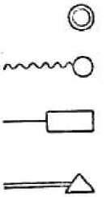

Пролетарии всех стран, соединяйтесь!
В.И. Ленин. ПОЛНОЕ СОБРАНИЕ СОЧИНЕНИЙ
СОДЕРЖАНИЕ тома 3
|
Пролетарии всех стран, соединяйтесь!
ЛЕНИНПОЛНОЕ
|
ПЕЧАТАЕТСЯ
ПО ПОСТАНОВЛЕНИЮ
ЦЕНТРАЛЬНОГО КОМИТЕТА
КОММУНИСТИЧЕСКОЙ ПАРТИИ
СОВЕТСКОГО СОЮЗА
ИНСТИТУТ МАРКСИЗМА-ЛЕНИНИЗМА ПРИ ЦК КПСС
ИЗДАТЕЛЬСТВО
ПОЛИТИЧЕСКОЙ ЛИТЕРАТУРЫ
МОСКВА· 1971
ИНСТИТУТ МАРКСИЗМА-ЛЕНИНИЗМА ПРИ ЦК КПСС
РАЗВИТИЕ КАПИТАЛИЗМА В РОССИИ
ИЗДАТЕЛЬСТВО
ПОЛИТИЧЕСКОЙ ЛИТЕРАТУРЫ
МОСКВА· 1971
3K2
1-1-2 71
VII
Настоящий том содержит произведение В. И. Ленина «Развитие капитализма в России», написанное им в 1896-1899 годах и изданное отдельной книгой в 1899 году. В том включается также статья Ленина «Некритическая критика», напечатанная в мае - июне 1900 года, явившаяся ответом на рецензию одного из «легальных марксистов» на эту книгу.
Перед русскими марксистами в тот период встала задача глубокого изучения экономики России. Это было необходимо для окончательного идейного разгрома народничества и определения перспектив революционной борьбы рабочего класса, задач российской социал-демократии. Теоретическая работа русских марксистов, писал Ленин, должна направиться на конкретное изучение всех форм экономического антагонизма в России, должна «дать цельную картину нашей действительности, как определенной системы производственных отношений, показать необходимость эксплуатации и экспроприации трудящихся при этой системе, показать тот выход из этих порядков, на который указывает экономическое развитие» (см. Сочинения, 5 изд., том 1, стр. 307).
Это научное исследование и было осуществлено Лениным в книге «Развитие капитализма в России», которая явилась завершением ленинских работ 90-х годов, направленных против либеральных народников и
VIII
ПРЕДИСЛОВИЕ
«легальных марксистов», на разработку программных положений революционного марксизма и их применение в конкретных условиях России. Ленин считал, что программа марксистской рабочей партии должна содержать характеристику основных черт экономического строя России, оценку основных классовых сил, определение основной цели и текущих задач революционной борьбы пролетариата. Ленинский труд «Развитие капитализма в России» вместе с другими произведениями Ленина создал теоретическую основу для выработки программы, стратегии и тактики большевизма.
Вопрос «о судьбах капитализма в России», вокруг которого разгорелась тогда борьба между революционными марксистами, с одной стороны, и либеральными народниками и «легальными марксистами», с другой стороны, был важнейшим вопросом теории и практики революционной борьбы. Это был вопрос о том, какой класс призван и может осуществить коренное переустройство общества, на какой класс должны ориентироваться революционеры. Это был вопрос о перспективах развития России, о судьбах революции и условиях ее победы в нашей стране. Ленин поставил эти вопросы в центре своего исследования. Вместо академических споров «о рынках для русского капитализма», какие вели между собой народники и «легальные марксисты», Ленин посвятил свой труд марксистскому анализу общественно-экономического строя и классовой структуры России, обоснованию руководящей роли пролетариата в предстоящей революции. Ленинская работа «Развитие капитализма в России» является замечательным образцом единства революционной теории и практики, соединения научного социализма с рабочим движением, использования теории в качестве оружия революционной практики.
В теоретическом введении Ленин разъясняет и развивает основные положения марксистской политэкономии об общественном разделении труда, простом товарном хозяйстве и неизбежном превращении его
IX
ПРЕДИСЛОВИЕ
в капиталистическое, о создании внутреннего рынка самим развивающимся капитализмом. В борьбе с народническими воззрениями Ленин защищает и обогащает марксистскую теорию капиталистического воспроизводства и кризисов, подчеркивает противоречия капиталистического накопления, реализации общественного продукта, антагонизма между расширением капиталистического производства и ограниченным потреблением вследствие растущего обнищания трудящихся. Раскрывая действительный смысл марксистской теории капиталистической экономики, Ленин указывает, что противоречия капитализма объясняют условия и причины его гибели, революционной замены новым, прогрессивным строем - социализмом. В последних главах книги Ленин на громадном и всестороннем фактическом материале исследует конкретное проявление в российской действительности общих экономических законов развития капиталистического общества.
Анализ развития капитализма в России Ленин начинает с характеристики капиталистической эволюции сельского хозяйства и разложения крестьянства. На основе огромного фактического материала Ленин неопровержимо доказал, что общественно-экономические отношения в русской деревне после реформы 1861 года характеризовались наличием и развитием тех противоречий, которые свойственны товарному хозяйству и капитализму. Эти противоречия показывали, что «строй экономических отношений в «общинной» деревне отнюдь не представляет из себя особого уклада («народного производства» и т. п.)», как утверждали народники, а представляет «обыкновенный мелкобуржуазный уклад». Ленин показал, что крестьянство не только дифференцируется, «оно совершенно разрушается, перестает существовать, вытесняемое совершенно новыми типами сельского населения, - типами, которые являются базисом общества с господствующим товарным хозяйством и капиталистическим производством. Эти типы - сельская буржуазия (преимущественно мелкая)
X
ПРЕДИСЛОВИЕ
и сельский пролетариат, класс товаропроизводителей в земледелии и класс сельскохозяйственных наемных рабочих» (см. настоящий том, стр. 165, 166).
В работе «Развитие капитализма в России» Ленин дал глубокий анализ общественно-экономического строя помещичьего хозяйства и обрисовал характер эволюции его в пореформенную эпоху. Ленин показал, что в помещичьем хозяйстве сочетались тогда отработочная и капиталистическая системы хозяйства, что отработочная система - прямой пережиток барщинного хозяйства, которое господствовало при крепостном строе. С развитием товарного хозяйства и разложением крестьянства отработочная система постепенно вытеснялась капиталистической системой помещичьего хозяйства. Разоблачая идеализацию либеральными народниками отработочной системы и других пережитков крепостничества, Ленин убедительно доказал, что остатки крепостничества (отработки и барщина в пользу помещика за различные «отрезки» земли, круговая порука, высокие подати, отсутствие свободы распоряжения крестьянской землей, свободы передвижения и переселения крестьянства, гражданская неполноправность и т. д.) тяжелым гнетом ложились на крестьянство царской России.
Кроме помещичьей эксплуатации трудящееся крестьянство было задавлено кулацкой кабалой, грабежом со стороны торгового и ростовщического капитала, который играл громадную роль в пореформенной деревне. Ленин раскрыл глубокий антагонизм между крестьянством и помещиками, а внутри крестьянства - антагонизм между сельской буржуазией и сельским пролетариатом.
В работе «Развитие капитализма в России» показывается огромный рост торгового земледелия в пореформенный период, вскрываются особенности развития товарного производства и капитализма в сельском хозяйстве, выявляется прогрессивность капитализма в земледелии по сравнению с пережитками феодализма, а также по сравнению с мелким производством. Ленин
XI
ПРЕДИСЛОВИЕ
нанес сокрушительный удар буржуазной теории «устойчивости» мелкого крестьянского хозяйства. Он показал, что и в сельском хозяйстве крупное капиталистическое производство продуктивнее мелкого и неизбежно вытесняет его, что мелкое крестьянское хозяйство держится лишь расхищением труда и жизненных сил земледельца, расхищением производительных сил земли. Вскрывая безнадежность и безвыходность положения трудящегося крестьянства при капитализме, Ленин доказал, что мелким крестьянам нет спасения вне присоединения к революционному движению пролетариата, вне революционной борьбы вместе с пролетариатом против всего капиталистического строя.
В книге «Развитие капитализма в России» впервые дан марксистский анализ стадий и форм эволюции капитализма в промышленности пореформенной России. Ленин детально рассматривает три главные стадии развития капитализма в русской промышленности: мелкое товарное производство (мелкие, преимущественно крестьянские, промыслы) - капиталистическая мануфактура - фабрика (крупная машинная индустрия) в их неразрывной связи, показывает закономерное превращение мелкого товарного производства в капиталистическое, в мануфактуру, и перерастание последней в фабрику, в крупную машинную индустрию. При этом исследуется связь каждой из этих форм промышленности с сельским хозяйством.
На основе тщательного анализа обширного фактического материала Ленин выявляет параллелизм в разложении мелких производителей в земледелии и промыслах, вскрывает ожесточенную конкуренцию среди «кустарей», исследует процесс образования отдельными товаропроизводителями сравнительно крупных мастерских, развитие из раздробленного мелкого производства капиталистической простой кооперации. Ленин показывает, как мастерские со значительным числом рабочих вводят постепенно разделение труда и таким образом капиталистическая простая кооперация перерастает в капиталистическую мануфактуру. Ленин впервые
XII
ПРЕДИСЛОВИЕ
дал марксистскую характеристику целого ряда кустарных промыслов как мануфактурной стадии русского капитализма. Мануфактура, указывает Ленин, является промежуточным звеном между ремеслом и мелким товарным производством с примитивными формами капитала, с одной стороны, и между крупной машинной индустрией (фабрикой), с другой стороны.
Ленин подробно и всесторонне исследует развитие крупной машинной индустрии в России. Он характеризует крупную машинную (фабричную) индустрию как высшую ступень капитализма в промышленности, основной и существенный признак которой состоит в употреблении для производства системы машин. Переход от мануфактуры к фабрике, указывает Ленин, знаменует полный технический переворот, за которым неизбежно идет крутая ломка общественных отношений производства, окончательный раскол между различными группами участвующих в производстве лиц, обострение и расширение глубоких противоречий капитализма, а вместе с тем и массовое обобществление труда капитализмом, т. е. подготовку материальных условий для перехода к социализму. «Крупная машинная индустрия является, таким образом, последним словом капитализма, последним словом его отрицательных и «положительных моментов»» (стр. 455).
Ленин подчеркивает растущую концентрацию производства в русской промышленности. Уже в 1890 г. 71,1% общего числа всех фабрично-заводских рабочих было занято на крупных фабриках и заводах (с числом рабочих 100 и более человек). В 1894- 1895 гг. крупные предприятия составляли 10,1% всех фабрик и заводов и сосредоточивали 74% всех фабрично-заводских рабочих и свыше 70% суммы производства. В 1903 г. крупные фабрики, имевшие свыше 100 рабочих, составляли в Европейской России 17% всего числа фабрик и заводов и сосредоточивали 76,6% всего числа фабрично-заводских рабочих. Ленин особо отмечает, что русские большие фабрики были крупнее
ХIII
ПРЕДИСЛОВИЕ
германских. Сосредоточение все большей части рабочих на крупных фабриках и заводах, в больших городах и промышленных центрах способствовало сплочению и организации рабочего класса, увеличивало его силу и политическую роль в жизни страны, ее дальнейших судьбах.
В итоге исследования Ленин показал, что «Россия сохи и цепа, водяной мельницы и ручного ткацкого станка стала быстро превращаться в Россию плуга и молотилки, паровой мельницы и парового ткацкого станка» (стр. 597-598). Вместе с тем Россия, несмотря на развитие в ней капитализма, оставалась страной по преимуществу аграрной, отсталой в технико-экономическом отношении по сравнению с передовыми капиталистическими странами. Многочисленные остатки и пережитки крепостничества являлись главной причиной этого отставания, они тормозили развитие производительных сил страны, тяжелым гнетом лежали на народных массах.
Отмечая прогрессивный характер капитализма в сравнении с феодализмом, помещичьим строем и мелким производством, Ленин в то же время дал яркую характеристику глубоких противоречий и язв капиталистического строя. Произведение Ленина «Развитие капитализма в России» - это гневный обвинительный акт против царизма и русского капитализма.
Книга Ленина явилась не только завершением идейного разгрома народничества, но и разгромом «легальных марксистов». Ленин показал, что «легальные марксисты» являются апологетами капитала, врагами революционного марксизма.
«Легальные марксисты» встретили ленинский труд «Развитие капитализма в России» враждебной критикой. Ленин ответил на эти выпады статьей «Некритическая критика», которая была опубликована в журнале «Научное Обозрение». В этой статье Ленин указывает на необходимость резко размежеваться с людьми, которые, прикрываясь маской «марксистов», извращают революционный марксизм. С особой силой
XIV
ПРЕДИСЛОВИЕ
подчеркнул Ленин задачи дальнейшего развития коренных положений марксизма на основе обобщения опыта классовой борьбы пролетариата в новых условиях.
В противоположность представителям «легального марксизма», которые всячески прикрашивали капитализм и превозносили буржуазию, Ленин подчеркивал, что капитализм представляет собой исторически преходящий строй, что его историческая роль заключается в создании материальных предпосылок и субъективных факторов пролетарской революции, перехода к социализму.
В своей работе «Развитие капитализма в России» Ленин дал ясную и четкую характеристику экономики и классовой структуры страны конца XIX столетия. Он вскрыл глубокую экономическую основу классовой борьбы и расстановки классовых сил накануне первой русской революции. Книга Ленина давала ответ на вопрос о характере грядущей революции и ее движущих силах, о роли в ней различных классов.
В своей работе Ленин дал политико-экономическое обоснование руководящей роли пролетариата в революции и доказал, что его сила в историческом развитии России неизмеримо больше, чем его численность в общей массе населения. Это целиком подтвердила в дальнейшем история трех революций. Тем самым Ленин нанес сокрушительный удар по догме оппортунистов в международном рабочем движении, согласно которой пролетариат не может и не должен бороться за власть и социализм, пока он не составляет большинства населения в стране.
Ленин показал экономическую основу двойственного положения и двойственной роли крестьянства, вскрыл антагонизм собственнических и пролетарских тенденций внутри крестьянства, корни колебаний его между буржуазией и пролетариатом. Вместе с тем Ленин показал глубокие источники революционности трудового крестьянства и обосновал необходимость союза рабочего класса и крестьянства для борьбы против помещиков, царизма, буржуазии.
XV
ПРЕДИСЛОВИЕ
Эти положения марксизма, развитые и обоснованные в книге Ленина более полвека назад, имеют и в настоящее время актуальное значение. Гениальные ленинские указания о гегемонии пролетариата, о союзе рабочих и крестьян являются руководящим началом в борьбе народов за демократию, национальное освобождение, за социализм.
Общий вывод, вытекающий из глубокого политико-экономического анализа, данного Лениным в «Развитии капитализма в России», состоял в том, что в России назревает великая народная революция, во главе которой стоит пролетариат, имеющий мощного союзника - многомиллионное крестьянство; эта революция не может ограничиться свержением царизма - пролетариат пойдет дальше, к свержению капитализма, к победе социализма.
Ленинский труд «Развитие капитализма в России» вышел в свет через пять лет после опубликования Энгельсом третьего тома «Капитала» Маркса и явился непосредственным продолжением гениального труда Маркса. В предисловии к третьему тому «Капитала» Энгельс указывает, что Маркс долго и тщательно изучал в подлинниках материалы об экономике пореформенной России. Он предполагал на примере России конкретизировать и развить дальше свое учение об эволюции капитализма в сельском хозяйстве. Россия с ее разнообразием форм землевладения и эксплуатации сельскохозяйственных производителей должна была в отделе земельной ренты играть такую же роль, какую играла Англия в первом томе «Капитала» при исследовании промышленного капитализма. Марксу не удалось осуществить этот план, указывает Энгельс. Этот план Маркса осуществил Ленин в книге «Развитие капитализма в России». Вместе с тем Ленин на основе исследования экономики России обогатил новыми положениями и другие разделы политической экономии капитализма, в особенности теорию возникновения и развития капиталистического способа производства, превращения простого товарного хозяйства в
XVI
ПРЕДИСЛОВИЕ
капиталистическое и своеобразия этого процесса в сельском хозяйстве, теорию воспроизводства и кризисов, обобществления труда с ростом концентрации производства.
Неоценимое значение имеет книга Ленина «Развитие капитализма в России» для народов капиталистических и колониальных стран. Всем своим содержанием она убедительно доказывает, что при господстве капитала народные массы обречены на эксплуатацию и нищету, что единственный путь освобождения от ярма помещиков и цепей империализма - это путь революции, путь социализма.
Институт марксизма-ленинизма при ЦК КПСС
В. И. Ленин (фотопортрет)
1897
1
|
Написано в 1896-1899 гг.
Впервые напечатано отдельной книгой в конце марта 1899 г. | Печатается по тексту второго издания книги 1908 |
2
Обложка первого издания книги В. И. Ленина «Развитие капитализма в России». - 1899 г.
5
В предлагаемой работе автор задался целью рассмотреть вопрос: как складывается внутренний рынок для русского капитализма? Известно, что вопрос этот поставлен уже давно главными представителями народнических воззрений (во главе их гг. В. В. и Н. -он), и наша задача будет состоять в критике этих воззрений. Мы не считали возможным ограничиться в этой критике разбором ошибок и неправильностей во взглядах противников; нам казалось недостаточным для ответа на поставленный вопрос привести факты, говорящие об образовании и росте внутреннего рынка, ибо могло бы являться возражение, что такие факты выбраны произвольно и опущены факты, говорящие против. Нам казалось необходимым рассмотреть и попытаться изобразить весь процесс развития капитализма в России в его целом. Само собою разумеется, что такая широкая задача была бы не под силу отдельному лицу, если бы не внести в нее ряд ограничений. Во-первых, как видно уже из заглавия, мы берем вопрос о развитии капитализма в России исключительно с точки зрения внутреннего рынка, оставляя в Стороне вопрос о внешнем рынке и данные о внешней торговле. Во-вторых, мы ограничиваемся одной пореформенной эпохой. В-третьих, мы берем главным образом и почти исключительно данные о внутренних чисто русских губерниях. В-четвертых, мы ограничиваемся исключительно одной экономической стороной процесса. Но и за
6
В. И. ЛЕНИН
всеми указанными ограничениями остающаяся тема чрезвычайно широка. Автор отнюдь не скрывает от себя трудности и даже опасности брать столь широкую тему, но ему казалось, что для разъяснения вопроса о внутреннем рынке для русского капитализма безусловно необходимо показать связь и взаимозависимость отдельных сторон того процесса, который происходит во всех областях общественного хозяйства. Мы ограничиваемся поэтому рассмотрением основных черт процесса, предоставляя дальнейшим исследованиям более специальное изучение его.
План нашей работы таков. В I главе мы рассмотрим, возможно более кратко, основные теоретические положения абстрактной политической экономии по вопросу о внутреннем рынке для капитализма. Это послужит как бы введением для остальной, фактической части сочинения и избавит от необходимости многократных ссылок на теорию в дальнейшем изложении. В трех следующих главах мы постараемся охарактеризовать капиталистическую эволюцию земледелия в пореформенной России, именно во II главе будут разобраны земско-статистические данные о разложении крестьянства, в III - данные о переходном состоянии помещичьего хозяйства, о смене барщинной системы этого хозяйства капиталистическою, и в IV - данные о тех формах, в которых происходит образование торгового и капиталистического земледелия. Три дальнейшие главы будут посвящены формам и стадиям развития капитализма в нашей промышленности: в V главе мы рассмотрим первые стадии капитализма в промышленности, именно в мелкой крестьянской (так наз. кустарной) промышленности; в VI главе - данные о капиталистической мануфактуре и о капиталистической работе на дому и в VII главе - данные о развитии крупной машинной индустрии. В последней (VIII) главе мы сделаем попытку указать связь между отдельными, изложенными выше, сторонами процесса и дать общую картину этого процесса.
7
РАЗВИТИЕ КАПИТАЛИЗМА В РОССИИ
P. S.2 К величайшему сожалению, мы не могли воспользоваться для настоящего сочинения тем замечательным анализом «развития сельского хозяйства в капиталистическом обществе», который дан К. Каутским в его книге: «Die Agrarfrage» (Stuttgart, Dietz, 1899; I. Abschn. «Die Entwicklung der Landwirtschaft in der kapitalistischen Gesellschaft» *) **.
Эта книга (полученная нами тогда, когда большая часть настоящего сочинения была уже набрана) представляет из себя самое замечательное, после 3-го тома «Капитала» _3, явление новейшей экономической литературы. Каутский исследует «основные тенденции» капиталистической эволюции земледелия, его задача - рассмотреть разнообразные явления в современном сельском хозяйстве, как «частные проявления одного общего процесса» (Vorrede ***, VI). Интересно отметить, до какой степени тождественны основные черты этого общего процесса в Западной Европе и в России, несмотря на громадные особенности последней как в экономическом, так и во внеэкономическом отношении. Напр., для капиталистического современного (moderne) земледелия вообще типично прогрессирующее разделение труда и употребление машин (Kautsky, IV, b, с), которое обращает на себя внимание и в пореформенной России (см. ниже, гл. III, § VII и VIII; гл. IV, особенно § IX). Процесс «пролетаризирования крестьянства» (заглавие VIII гл. книги Каутского) выражается повсюду в распространении всяческих видов наемной работы мелких крестьян (Kautsky, VIII, b); - параллельно этому мы наблюдаем в России образование громадного класса наемных рабочих с наделом (см. ниже, гл. II). Существование мелкого крестьянства во всяком капиталистическом обществе объясняется не техническим превосходством мелкого производства в земледелии, а тем, что мелкие крестьяне понижают свои потребности ниже уровня потребностей
* - «Аграрный вопрос» (Штутгарт, Дитц, 1899; I отдел: «Развитие сельского хозяйства в капиталистическом обществе»). Ред.
** Есть русский перевод. - Предисловие. Ред.
8
В. И. ЛЕНИН
наемных рабочих и надрываются над работой несравненно сильнее, чем эти последние (Kautsky, VI, b; «сельскохозяйственный наемный рабочий находится в лучшем положении, чем мелкий крестьянин», - говорит Каутский неоднократно: S.* 110, 317, 320); аналогичное явление наблюдается и в России (см. ниже, гл. II, § XI, В _4). Естественно поэтому, что западноевропейские и русские марксисты сходятся в оценке таких, напр., явлений, как «земледельческие отхожие промыслы», употребляя русское выражение, или «наемная земледельческая работа бродячих крестьян», как говорят немцы (Kautsky, S. 192. Ср. ниже, гл. Ill, § X); - или такого явления, как отход рабочих и крестьян из деревень в города и на фабрики (Kautsky, IX, е; S. 343 особенно; и много других. Ср. ниже, гл. VIII, § II); - перенесение крупной капиталистической промышленности в деревню (Kautsky, S. 187. Ср. ниже VII, § VIII). Мы уже не говорим об одинаковой оценке исторического значения земледельческого капитализма (Kautsky, passim **, особенно S. 289, 292, 298. Ср. ниже, гл. IV, § IX), об одинаковом признании прогрессивности капиталистических отношений в земледелии сравнительно с докапиталистическими [Kautsky, S. 382: «Вытеснение des Gesindes (лично зависимых батраков, челяди) и der Instleute («среднее между батраком и арендатором»: крестьянин, арендующий землю за отработки) поденщиками, которые вне работы - свободные люди, было бы большим социальным прогрессом». Ср. ниже, гл. IV, § IX, 41. Каутский категорически признает, что о переходе деревенской общины к общинному ведению крупного современного земледелия «нечего и думать» (S. 338), что те агрономы, которые требуют в Западной Европе укрепления и развития общины, - вовсе не социалисты, а представители интересов крупных землевладельцев, желающих привязать к себе рабочих сдачей им клочков земли (S. 334), что во всех европейских странах представители инте-
* - Seite - страница. Ред.
** - в разных местах. Ред.
9
РАЗВИТИЕ КАПИТАЛИЗМА В РОССИИ
ресов землевладельцев желают привязать сельских рабочих посредством наделения их землей и пытаются уже вводить в законодательство соответствующие мероприятия (S. 162), что против всех попыток помочь мелкому крестьянству посредством насаждения кустарных промыслов (Hausindustrie) - этого худшего вида капиталистической эксплуатации - «следует бороться самым решительным образом» (S. 181). Мы считаем необходимым подчеркнуть полную солидарность воззрений западноевропейских и русских марксистов ввиду новейших попыток представителей народничества провести резкое различие между теми и другими (см. заявление г-на В. Воронцова 17 февраля 1899 г. в обществе для содействия русской промышленности и торговле, «Новое Время», 1899, № 8255 от 19 февраля) _5.
10
11
Обложка второго издания книги В. И. Ленина «Развитие капитализма в России» с собственноручной надписью автора. - 1908 г.
12
13
Настоящее сочинение написано в период кануна русской революции, во время некоторого затишья, которое наступило после взрыва крупных стачек 1895- 1896 годов. Рабочее движение тогда как бы ушло в себя, распространяясь вширь и вглубь и подготовляя начало демонстрационного движения в 1901 году.
Тот анализ общественно-хозяйственного строя и, следовательно, классового строения России, который дан в настоящем сочинении на основании экономического исследования и критического разбора статистических сведений, подтверждается теперь открытым политическим выступлением всех классов в ходе революции. Вполне обнаружилась руководящая роль пролетариата. Обнаружилось и то, что его сила в историческом движении неизмеримо более, чем его доля в общей массе населения. Экономическая основа того и другого явления доказана в предлагаемой работе.
Далее, революция обнаруживает теперь все более и более двойственное положение и двойственную роль крестьянства. С одной стороны, громадные остатки барщинного хозяйства и всевозможные пережитки крепостного права при невиданном обнищании и разорении крестьянской бедноты вполне объясняют глубокие источники революционного крестьянского движения, глубокие корни революционности крестьянства, как массы. С другой стороны, и в ходе революции, и в характере разных политических партий, и во многих
14
В. И ЛЕНИН
идейно-политических течениях обнаруживается внутренне противоречивое классовое строение этой массы, ее мелкобуржуазность, антагонизм хозяйских и пролетарских тенденций внутри нее. Колебание обнищавшего хозяйчика между контрреволюционной буржуазией и революционным пролетариатом так же неизбежно, как неизбежно то явление во всяком капиталистическом обществе, что ничтожное меньшинство мелких производителей наживается, «выходит в люди», превращается в буржуа, а подавляющее большинство либо разоряется совсем и становится наемными рабочими или пауперами, либо живет вечно на границе пролетарского состояния. Экономическая основа обоих течений в крестьянстве доказана в предлагаемой работе.
На этой экономической основе революция в России неизбежно является, разумеется, буржуазной революцией. Это положение марксизма совершенно непреоборимо. Его никогда нельзя забывать. Его всегда необходимо применять ко всем экономическим и политическим вопросам русской революции.
Но его надо уметь применять. Конкретный анализ положения и интересов различных классов должен служить для определения точного значения этой истины в ее применении к тому или иному вопросу. Обратный же способ рассуждения, нередко встречающийся у социал-демократов правого крыла с Плехановым во главе их, - т. е. стремление искать ответов на конкретные вопросы в простом логическом развитии общей истины об основном характере нашей революции, есть опошление марксизма и сплошная насмешка над диалектическим материализмом. Про таких людей, которые выводят, напр., руководящую роль «буржуазии» в революции или необходимость поддержки либералов социалистами из общей истины о характере этой революции, Маркс повторил бы, вероятно, приведенную им однажды цитату из Гейне: «Я сеял драконов, а сбор жатвы дал мне блох» 7.
На данной экономической основе русской революции объективно возможны две основные линии ее развития и исхода:
15
РАЗВИТИЕ КАПИТАЛИЗМА В РОССИИ
Либо старое помещичье хозяйство, тысячами нитей связанное с крепостным правом, сохраняется, превращаясь медленно в чисто капиталистическое, «юнкерское» хозяйство. Основой окончательного перехода от отработков к капитализму является внутреннее преобразование крепостнического помещичьего хозяйства. Весь аграрный строй государства становится капиталистическим, надолго сохраняя черты крепостнические. Либо старое помещичье хозяйство ломает революция, разрушая все остатки крепостничества и крупное землевладение прежде всего. Основой окончательного перехода от отработков к капитализму является свободное развитие мелкого крестьянского хозяйства, получившего громадный импульс благодаря экспроприации помещичьих земель в пользу крестьянства. Весь аграрный строй становится капиталистическим, ибо разложение крестьянства идет тем быстрее, чем полнее уничтожены следы крепостничества. Иными словами: либо - сохранение главной массы помещичьего землевладения и главных устоев старой «надстройки»; отсюда - преобладающая роль либерально-монархического буржуа и помещика, быстрый переход на их сторону зажиточного крестьянства, понижение крестьянской массы, не только экспроприируемой в громадных размерах, но закабаляемой к тому же теми или иными кадетскими выкупами, забиваемой и отупляемой господством реакции; душеприказчиками такой буржуазной революции будут политики типа, близкого к октябристам 8. Либо - разрушение помещичьего землевладения и всех главных устоев соответствующей старой «надстройки»; преобладающая роль пролетариата и крестьянской массы при нейтрализации неустойчивой или контрреволюционной буржуазии; наиболее быстрое и свободное развитие производительных сил на капиталистической основе при наилучшем, какое только мыслимо вообще в обстановке товарного производства, положении рабочей и крестьянской массы; - отсюда создание наиболее благоприятных условий для дальнейшего осуществления рабочим классом его настоящей и коренной задачи социалистического
16
В. И ЛЕНИН
переустройства. Возможны, конечно, бесконечно разнообразные сочетания элементов того или иного типа капиталистической эволюции, и только безнадежные педанты могли бы решать возникающие при этом своеобразные и сложные вопросы посредством одних только цитаток из того или иного отзыва Маркса про другую историческую эпоху.
Предлагаемое читателю сочинение посвящено анализу предреволюционной экономики России. В революционную эпоху страна живет так быстро и порывисто, что определение крупных результатов экономической эволюции в разгар политической борьбы невозможно. Гг. Столыпины, с одной стороны, либералы, с другой (и вовсе не одни только кадеты a la* Струве, а все кадеты 9 вообще), работают систематически, упорно и последовательно над завершением революции по первому образцу. Государственный переворот 3 июня 1907 г., только что пережитый нами, знаменует победу контрреволюции, стремящейся обеспечить полное преобладание помещиков в так наз. российском народном представительстве 10. Но насколько прочна эта «победа», - вопрос иной, и борьба за второй исход революции продолжается. Более или менее решительно, более или менее последовательно, более или менее сознательно к этому исходу стремится не только пролетариат, но и широкие крестьянские массы. Непосредственная массовая борьба, как ни старается контрреволюция задушить ее прямым насилием, как ни стараются кадеты задушить ее своими подленькими и лицемерными контрреволюционными идейками, прорывается то здесь, то там, несмотря ни на что, и налагает свой отпечаток на политику «трудовых», народнических партий, хотя верхи мелкобуржуазных политиков несомненно заражены (особенно «народные социалисты»11 и трудовики 12) кадетским духом предательства, молчалинства13 и самодовольства умеренных и аккуратных мещан или чиновников.
Чем кончится эта борьба, каков будет окончательный итог первого натиска российской революции, - сейчас
* - вроде. Ред.
17
РАЗВИТИЕ КАПИТАЛИЗМА В РОССИИ
еще нельзя сказать. Поэтому не настало еще время (да и непосредственные партийные обязанности участника рабочего движения не оставляют досуга) для полной переработки настоящего сочинения *. Второе издание не может выйти из рамок характеристики предреволюционной экономики России. Автор вынужден был ограничиться просмотром и исправлением текста, а также самыми необходимыми дополнениями из новейшего статистического материала. Таковы данные последних конских переписей, статистики урожаев, итоги всероссийской переписи населения 1897 года, новые данные фабрично-заводской статистики и т. д.
Автор
Июль 1907 года.
* Возможно, что такая переработка потребует продолжения предлагаемой работы: первый том пришлось бы тогда ограничить анализом предреволюционной экономики России, второй том посвятить изучению итогов и результатов революции.
19
Титульный лист второго немецкого издания (1872 г.) первого тома «Капитала» К. Маркса, которым пользовался В. И. Ленин.
21
Рынок есть категория товарного хозяйства, которое в своем развитии превращается в капиталистическое хозяйство и только при этом последнем приобретает полное господство и всеобщую распространенность. Поэтому для разбора основных теоретических положений о внутреннем рынке мы должны исходить из простого товарного хозяйства и следить за постепенным превращением его в капиталистическое.
Основой товарного хозяйства является общественное разделение труда. Промышленность обрабатывающая отделяется от добывающей, и каждая из них подразделяется на мелкие виды и подвиды, производящие в форме товара особые продукты и обменивающие их со всеми другими производствами. Развитие товарного хозяйства ведет таким образом к увеличению числа отдельных и самостоятельных отраслей промышленности; тенденция этого развития состоит в том, чтобы превратить в особую отрасль промышленности производство не только каждого отдельного продукта, но даже каждой отдельной части продукта; - и не только производство продукта, но даже отдельные операции по приготовлению продукта к потреблению. При натуральном хозяйстве общество состояло из массы однородных хозяйственных единиц (патриархальных
22
В. И. ЛЕНИН
крестьянских семей, примитивных сельских общин, феодальных поместий), и каждая такая единица производила все виды хозяйственных работ, начиная от добывания разных видов сырья и кончая окончательной подготовкой их к потреблению. При товарном хозяйстве создаются разнородные хозяйственные единицы, увеличивается число отдельных отраслей хозяйства, уменьшается число хозяйств, производящих одну и ту же хозяйственную функцию. Этот прогрессивный рост общественного разделения труда и является основным моментом в процессе создания внутреннего рынка для капитализма. «... В товарном производстве и его абсолютной форме - капиталистическом производстве.., - говорит Маркс, - продукты лишь постольку являются товарами, т. е. полезностями, имеющими меновую стоимость, подлежащую реализации - превращению в деньги, - поскольку другие товары составляют эквивалент для них, поскольку другие продукты противополагаются им, как товары и как стоимости; другими словами, постольку, поскольку эти продукты производятся не как непосредственные средства существования для тех, кто произвел их, а как товары, как продукты, превращающиеся в потребительные стоимости лишь посредством превращения в меновую стоимость (деньги), посредством отчуждения. Рынок для этих товаров развивается вследствие общественного разделения труда; разделение производительных работ превращает их продукты взаимно в товары, в эквиваленты друг для друга, заставляя их служить один для другого рынком» («Das Kapital», III, 2, 177-178 *. Русск. пер. 526.15 Курсив наш, как и везде в цитатах, где не оговорено обратное).
Само собой разумеется, что указанное отделение промышленности обрабатывающей от добывающей, мануфактуры от земледелия, превращает и само земледелие в промышленность, т. е. в отрасль хозяйства, производящую товары. Тот процесс специализации, который отделяет один от другого различные виды обработки
* - «Капитал», т. Ill, ч. 2, стр. 177-178. Ред.
23
РАЗВИТИЕ КАПИТАЛИЗМА В РОССИИ
продуктов, создавая все большее и большее число отраслей промышленности, - проявляется и в земледелии, создавая специализирующиеся районы земледелия (и системы земледельческого хозяйства ), вызывая обмен не только между продуктами земледелия и промышленности, но и между различными продуктами сельского хозяйства. Эта специализация торгового (и капиталистического) земледелия проявляется во всех капиталистических странах, проявляется в международном разделении труда, проявляется и в пореформенной России, как мы покажем подробно ниже.
Итак, общественное разделение труда есть основа всего процесса развития товарного хозяйства и капитализма. Вполне естественно поэтому, что наши теоретики народничества, объявляя этот последний процесс результатом искусственных мер, результатом «уклонения с пути» и пр. и пр., старались затушевать факт общественного разделения труда в России или ослабить значение этого факта. Г-н В. В. в своей статье: «Разделение труда земледельческого и промышленного в России» («Вестник Европы», 1884, № 7) «отрицал» «господство в России принципа общественного разделения труда» (стр. 347), объявлял, что у нас общественное разделение труда «не выросло из глубины народной жизни, а пыталось втиснуться в нее со стороны» (стр. 338). Г-н Н. -он в своих «Очерках» рассуждал следующим образом об увеличении количества хлеба, поступающего в продажу: «Это явление могло бы означать, что произведенный хлеб распределяется равномернее по государству, что архангельский рыболов ест теперь самарский хлеб, а самарский земледелец приправляет свой обед архангельской рыбой. В действительности же ничего подобного не происходит»
* Так, напр., И. А. Стебут в своих «Основах полевой культуры» различает в земледелии системы хозяйства по главному рыночному продукту. Главных систем хозяйства три: 1) полеводственная (зерновая, по выражению г. А. Скворцова); 2) скотоводственная (главный рыночный продукт - продукты скотоводства) и 3) заводская (техническая, по выражению г. А. Скворцова); главный рыночный продукт - земледельческие продукты, подвергаемые технической переработке. См. А. Скворцов. «Влияние парового транспорта на сельское хозяйство». Варшава, 1890. Стр. 68 и след.
24
В. И. ЛЕНИН
(«Очерки нашего пореформенного общественного хозяйства». СПБ. 1893, стр. 37). Без всяких данных, вопреки общеизвестным фактам, здесь прямо декретируется отсутствие общественного разделения труда в России! Народническую теорию об «искусственности» капитализма в России и нельзя было построить иначе, как отрицая или объявляя «искусственной» самую основу всякого товарного хозяйства - общественное разделение труда.
Так как в эпоху, предшествующую товарному хозяйству, промышленность обрабатывающая соединена с добывающей, а во главе этой последней стоит земледелие, то развитие товарного хозяйства представляется отделением от земледелия одной отрасли промышленности за другой. Население страны с слаборазвитым (или вовсе неразвитым) товарным хозяйством представляется почти исключительно земледельческим; этого однако не следует понимать так, что население занимается только земледелием: это означает лишь, что население, занятое земледелием, само обрабатывает продукты земледелия, что обмен и разделение труда почти отсутствуют. Развитие товарного хо-зяиства означает, следовательно, ео ipso отделение все большей и большей части населения от земледелия, т. е. рост промышленного населения на счет земледельческого. «По самой своей природе капиталистический способ производства постоянно уменьшает земледельческое население сравнительно с неземледельческим, так как в промышленности (в узком смысле) возрастание постоянного капитала на счет переменного связано с абсолютным возрастанием переменного капитала, несмотря на его относительное уменьшение. Наоборот, в земледелии переменный капитал, требуемый для обработки данного участка земли, уменьшается абсолютно; следовательно, возрастание переменного капитала возможно лишь тогда,
* - тем самым. Ред.
25
РАЗВИТИЕ КАПИТАЛИЗМА В РОССИИ
когда подвергается обработке новая земля, а это опять-таки предполагает еще большее возрастание неземледельческого населения» («Das Kapital», III, 2, 177. Русск. пер., стр. 526) 16. Таким образом, нельзя себе представить капитализма без увеличения торгово-промышленного населения на счет земледельческого, и всякий знает, что это явление самым рельефным образом обнаруживается во всех капиталистических странах. Вряд ли есть надобность доказывать, что значение этого обстоятельства в вопросе о внутреннем рынке громадно, ибо оно связано неразрывно и с эволюцией промышленности и с эволюцией земледелия; образование промышленных центров, увеличение их числа и притяжение ими населения не может не оказывать самого глубокого влияния на весь строй деревни, не может не вызывать роста торгового и капиталистического земледелия. Тем знаменательнее тот факт, что представители народнической экономии совершенно игнорируют этот закон как в своих чисто теоретических рассуждениях, так и в рассуждениях о капитализме в России (об особенностях проявления этого закона в России мы будем подробно говорить ниже, в VIII главе). В теориях гг. В. В. и Н. -она о внутреннем рынке для капитализма опущена сущая мелочь: отвлечение населения от земледелия к промышленности и влияние этого факта на земледелие *.
До сих пор мы имели дело с простым товарным производством. Теперь мы переходим к капиталистическому производству, т. е. предполагаем, что вместо простых товаропроизводителей перед нами, с одной стороны, владелец средств производства, с другой - наемный рабочий, продавец рабочей силы. Превращение мелкого производителя в наемного рабочего предполагает потерю им средств производства - земли, орудий труда,
* На одинаковое отношение к вопросу о росте индустриального населения западноевропейских романтиков и русских народников мы указывали в статье: «К характеристике экономического романтизма. Сисмонди и наши отечественные сисмондисты». (См. Сочинения, 5 изд., том 2. Ред.)
26
В. И. ЛЕНИН
мастерской и пр. - т. е. его «обеднение», «разорение». Является воззрение, что это разорение «сокращает покупательную способность населения», «сокращает внутренний рынок» для капитализма (г. Н. -он, l. c.,* стр. 185. Тоже стр. 203, 275, 287, 339-340 и др. Та же точка зрения и у г. В. В. в большинстве его произведений). Мы не касаемся здесь фактических данных о ходе этого процесса в России, - в следующих главах мы подробно рассмотрим эти данные. В настоящее же время вопрос ставится чисто теоретически, т. е. о товарном производстве вообще при превращении его в капиталистическое. Указанные писатели ставят этот вопрос тоже теоретически, т. е. от одного факта разорения мелких производителей заключают к сокращению внутреннего рынка. Такое воззрение совершенно ошибочно, и объяснить его упорное переживание в нашей экономической литературе можно только романтическими предрассудками народничества (ср. указанную в примечании статью **). Забывают, что «освобождение» одной части производителей от средств производства необходимо предполагает переход этих последних в другие руки, превращение их в капитал; - предполагает, следовательно, что новые владельцы этих средств производства производят в виде товаров те продукты, которые раньше шли на потребление самого производителя, т. е. расширяют внутренний рынок; - что, расширяя свое производство, эти новые владельцы предъявляют спрос рынку на новые орудия, сырые материалы, на средства транспорта и пр., а также и на предметы потребления (обогащение этих новых владельцев естественно предполагает и рост их потребления). Забывают, что для рынка важно вовсе не благосостояние производителя, а наличность у него денежных средств; упадок благосостояния патриархального крестьянина, ведшего ранее преимущественно натуральное хозяйство, вполне совместим с увеличением в его руках количества денежных средств, ибо, чем дальше разоряется такой крестьянин, тем более вынужден
* - loco citato - в цитированном месте. Ред.
** Настоящий том, стр. 25. Ред.
27
РАЗВИТИЕ КАПИТАЛИЗМА В РОССИИ
он прибегать к продаже своей рабочей силы, тем большую часть своих (хотя бы и более скудных) средств существования он должен приобретать на рынке. «С освобождением части сельского населения (от земли) освобождаются также его прежние средства существования. Они обращаются теперь в вещественные элементы переменного капитала» (капитала, затрачиваемого на покупку рабочей силы) («Das Kapital», I, 776) 17. «Экспроприация и изгнание части сельского населения не только освобождает вместе с рабочими их жизненные средства и их рабочий материал для промышленного капиталиста, но и создает внутренний рынок» (ibid.*, 778) 18. Таким образом, с абстрактно-теоретической точки зрения, разорение мелких производителей в обществе развивающегося товарного хозяйства и капитализма означает как раз обратное тому, что хотят вывести из него гг. Н. -он и В. В., означает создание, а не сокращение внутреннего рынка. Если тот же самый г. Н. -он, объявляющий a priori **, что разорение русских мелких производителей означает сокращение внутреннего рынка, цитирует тем не менее приведенные сейчас обратные утверждения Маркса («Очерки», с. 71 и 114), то это доказывает только замечательную способность этого писателя побивать себя цитатами из «Капитала».
Дальнейший вопрос в теории внутреннего рынка состоит в следующем. Известно, что стоимость продукта в капиталистическом производстве распадается на три следующие части: 1) первая возмещает постоянный капитал, т. е. ту стоимость, которая существовала и раньше в виде сырых и вспомогательных материалов, машин и орудий производства и т. п., и которая только воспроизводится в известной части готового продукта; 2) вторая часть возмещает переменный капитал, т. е.
* - ibidem - там же. Ред.
** - заранее. Ред.
28
В. И. ЛЕНИН
покрывает содержание рабочего, и, наконец, 3) третья часть составляет прибавочную стоимость, принадлежащую капиталисту. Принимается обыкновенно (мы излагаем этот вопрос в духе гг. Н. -она и В. В.), что реализация (т. е. нахождение соответственного эквивалента, сбыт на рынке) первых двух частей не представляет затруднения, ибо первая часть идет на производство, а вторая - на потребление рабочего класса. Но как реализуется 3-я часть - прибавочная стоимость? Не может же она быть потреблена целиком капиталистами! И наши экономисты приходят к выводу, что «выходом из затруднения» по реализации сверхстоимости 19 является «приобретение внешнего рынка» (Н. -он. «Очерки», отд. IT, § XV вообще и стр. 205 в особенности; В. В. «Излишек снабжения рынка товарами» в «Отечественных Записках» за 1883 г. и «Очерки теоретической экономии». СПБ. 1895 г., стр. 179 и след.). Необходимость внешнего рынка для капиталистической нации объясняется названными писателями тем, что капиталисты не могут иначе реализовать продуктов. Внутренний рынок в России сокращается вследствие разорения крестьянства и вследствие невозможности реализовать сверхстоимость без внешнего рынка, а внешний рынок недоступен для молодой страны, слишком поздно выступающей на путь капиталистического развития, - и вот беспочвенность и мертворожденность русского капитализма объявляются доказанными на основании одних априорных (и притом теоретически неверных) соображений!
Г-н Н. -он, рассуждая о реализации, видимо имел в виду учение Маркса об этом предмете (хотя он ни одним словом не упомянул о Марксе в этом месте своих «Очерков»), но абсолютно не понял его и извратил до неузнаваемости, как мы сейчас увидим. Поэтому и произошла такая курьезная вещь, что его взгляды совпали во всем существенном со взглядами г-на В. В., которого никак нельзя обвинить в «непонимании» теории, ибо было бы величайшей несправедливостью заподозрить его хотя в малейшем знакомстве с ней. Оба автора излагают свои учения так, как будто бы
29
РАЗВИТИЕ КАПИТАЛИЗМА В РОССИИ
они первые говорили об этом предмете, дойдя «своим умом» до известных решений; оба самым величественным образом игнорируют рассуждения старых экономистов по этому вопросу, и оба повторяют старые ошибки, обстоятельнейшим образом опровергнутые во II томе «Капитала» *. Оба автора сводят весь вопрос о реализации продукта к реализации сверхстоимости, воображая, очевидно, что реализация постоянного капитала не представляет затруднения. Это наивное воззрение заключает в себе самую глубокую ошибку, из которой вытекли все дальнейшие ошибки народнического учения о реализации. На самом деле, трудность вопроса при объяснении реализации состоит именно в объяснении реализации постоянного капитала. Для того, чтобы быть реализованным, постоянный капитал должен быть снова обращен на производство, а это осуществимо непосредственно лишь для того капитала, продукт которого состоит в средствах производства. Если же возмещающий постоянную часть капитала продукт состоит в предметах потребления, то непосредственное обращение его на производство невозможно, необходим обмен между тем подразделением общественной продукции, которое изготовляет средства производства, и тем, которое изготовляет предметы потребления. В этом именно пункте и заключается вся трудность вопроса, не замечаемая нашими экономистами. Г-н В. В. представляет дело вообще так, будто целью капиталистического производства было не накопление, а потребление, глубокомысленно рассуждая о том, что «в руки меньшинства поступает масса материальных предметов, превышающая потребительные способности организма» (sic! **) «в данный момент их развития» (l. c., 149), что «не скромность и воздержание
* Особенно поразительна при этом смелость г-на В. В., превосходящая всякие границы литературно допустимого. Изложивши свое учение и обнаружив полное незнакомство со вторым томом «Капитала», где трактуется именно о реализации, г. В. В. тут же, невступно 20, заявляет, что он «воспользовался для своих построений» именно теорией Маркса!! («Очерки теоретической экономии», очерк III. «Капиталистический закон (sic!?!) производства, распределения и потребления», стр. 162.)
** - так! Ред.
30
В. И. ЛЕНИН
фабрикантов служат причиной излишка продуктов, а ограниченность или недостаточная эластичность человеческого организма (! !), не успевающего расширять свои потребительные способности с той быстротой, с какой растет прибавочная стоимость» (ib., 161). Г-н Н. -он старается представить дело так, как будто он не считает потребление целью капиталистического производства, как будто он принимает во внимание роль и значение средств производства в вопросе о реализации, но на самом деле он совершенно не выяснил себе процесса обращения и воспроизводства всего общественного капитала, запутавшись в целом ряде противоречий. Мы не останавливаемся подробно на разборе всех этих противоречий (с. 203-205 «Очерков» г-на Н. -она) - это слишком неблагодарная задача (отчасти выполненная уже г. Булгаковым в его книге: «О рынках при капиталистическом производстве». М. 1897, стр. 237-245), да к тому же для доказательства приведенной сейчас оценки рассуждений г-на Н. -она достаточно разобрать его конечный вывод, именно, что внешний рынок является выходом из затруднения по реализации сверхстоимости. Этот вывод г-на Н. -она (в сущности простое повторение вывода г-на В. В.) показывает самым наглядным образом, что он совершенно не понял ни реализации продукта в капиталистическом обществе (т. е. теорию внутреннего рынка), ни роли внешнего рынка. В самом деле, есть ли хоть крупица здравого смысла в этом привлечении внешнего рынка к вопросу о «реализации»? Вопрос о реализации состоит в том, каким образом для каждой части капиталистического продукта по стоимости (постоянный капитал, переменный капитал и сверхстоимость) и по его материальной форме (средства производства, предметы потребления, в частности, предметы необходимости и предметы роскоши) найти
* Современному читателю не лишне напомнить, что г. Булгаков, а также цитируемые нередко ниже гг. Струве и Туган-Барановский старались быть марксистами в 1899 г. Теперь все они благополучно превратились из «критиков Маркса» в дюжинных буржуазных экономистов. (Примечание по 2-му изданию 21.)
31
Титульный лист немецкого издания (1885 г.) второго тома «Капитала» К. Маркса, которым пользовался В. И. Ленин.
33
РАЗВИТИЕ КАПИТАЛИЗМА В РОССИИ
замещающую ее на рынке другую часть продукта. Ясно, что внешняя торговля должна быть при этом абстрагирована, ибо привлечение ее ни на волос не подвигает вперед решения вопроса, а только отодвигает его, перенося вопрос с одной страны на несколько стран. Тот же самый г. Н. -он, который нашел во внешней торговле «выход из затруднения» по реализации сверхстоимости, рассуждает, например, о заработной плате таким образом: той частью годичного продукта, которую получают в виде заработной платы непосредственные производители - рабочие, «можно извлечь из обращения только такую часть средств существования, которая по стоимости равняется валовой сумме заработной платы» (203). Спрашивается, откуда знает наш экономист, что капиталисты данной страны произведут как раз столько и как раз такого качества средства существования, чтобы они могли быть реализованы заработной платой? Откуда знает он, что при этом можно обойтись без внешнего рынка? Очевидно, что знать этого он не может, что он просто устранил вопрос о внешнем рынке, ибо в рассуждении о реализации переменного капитала важно замещение одной части продукта другой и вовсе не важно, произойдет ли это замещение внутри одной или внутри двух стран. Однако по отношению к сверхстоимости он отступает от этой необходимой посылки и вместо решения вопроса просто уклоняется от вопроса, говоря о внешнем рынке. Сбыт продукта на внешнем рынке сам требует объяснения, т. е. нахождения эквивалента для сбываемой части продукта, нахождения другой части капиталистического продукта, способной заменить первую. Вот почему Маркс и говорит, что внешнего рынка, внешней торговли «совсем не надо принимать во внимание» при разборе вопроса о реализации, ибо «введение внешней торговли в анализ ежегодно воспроизводимой стоимости продукта может только запутать дело, не доставляя нового момента ни для самой задачи, ни для решения ее» («Das Kapital», ?, 469) 22. Гг. В. В. и ?. -он воображали, что они глубоко оценивали противоречия капитализма, указывая на затруднения по реализации
34
В. И. ЛЕНИН
сверхстоимости. На самом же деле они оценивали противоречия капитализма крайне поверхностно, ибо если говорить о «затруднениях» реализации, о возникающих отсюда кризисах и проч., то должно признать, что эти «затруднения» не только возможны, но и необходимы по отношению ко всем частям капиталистического продукта, а отнюдь не по отношению к одной сверхстоимости. Затруднения этого рода, зависящие от непропорциональности распределения различных отраслей производства, постоянно возникают не только при реализации сверхстоимости, но и при реализации переменного и постоянного капитала; не только при реализации продукта в предметах потребления, но также и в средствах производства. Без этого рода «затруднений» и кризисов вообще не может существовать капиталистическое производство, производство обособленных производителей на не известный им мировой рынок.
Для того, чтобы разобраться в учении о реализации, мы должны начать с Ад. Смита, который положил основание ошибочной теории по данному вопросу, царившей безраздельно в политической экономии до Маркса. А. Смит разделял цену товара только на две части: переменный капитал (заработная плата, по его терминологии) и сверхстоимость («прибыль» и «рента» у него не соединяются вместе, так что всего он считал собственно три части) *. Точно так же разделял он и всю совокупность товаров, весь годичный продукт общества на те же части и прямо относил их в «доход» двух классов общества: рабочих и капиталистов (предпринимателей и землевладельцев, у Смита) **.
* Adam Smith. «An Inquiry into the nature and causes of the wealth of nations», 4-e изд., 1801, vol. I, p. 75 (Адам Смит. «Исследование о природе и причинах богатства народов», 4-е изд., 1801, том I, стр. 75. Ред.). Книга I: «О причинах увеличения производительной силы труда и о естественном порядке распределения продукта труда между различными слоями народа», гл. 6: «О составных частях цены товаров». Русск. пер. Бибикова (СПБ. 1866), т. I, стр. 171.
** L. с, I, р. 78. Русск. пер., I, с. 174.
35
РАЗВИТИЕ КАПИТАЛИЗМА В РОССИИ
На чем же основано у него опущение третьей составной части стоимости - постоянного капитала? Ад. Смит не мог не видеть этой части, но он полагал, что она сводится тоже на заработную плату и сверхстоимость. Вот как он рассуждал об этом предмете: «В цене хлеба, например, одна часть оплачивает ренту землевладельца, другая - заработную плату или содержание работника и рабочего скота, употребленного на производство этого хлеба, и третья часть - прибыль фермера. Эти три части непосредственно или в последнем счете составляют, по-видимому, всю цену хлеба. Пожалуй, можно бы было думать, что необходима четвертая часть для возмещения капитала фермера или для возмещения изнашивания его рабочего скота и других орудий земледельческого хозяйства. Но следует принять во внимание, что цена всякого орудия в хозяйстве, например, рабочей лошади, сама состоит из тех же 3-х частей» (именно: ренты, прибыли и заработной платы). «Поэтому, хотя цена хлеба и оплачивает цену и содержание лошади, но тем не менее полная цена его разлагается, непосредственно или в конечном счете, на те же самые три части: ренту, заработную плату и прибыль» *. Маркс называет эту теорию Смита «изумительной». «Его доказательство состоит просто в повторении того же самого утверждения» (II, S. 366) 23. Смит «отсылает нас от Понтия к Пилату» (I. В., 2. Aufl., S. 612 **) 24. Говоря, что цена орудий хозяйства сама распадается на те же три части, Смит забывает добавить: и на цену тех средств производства, которые употреблены при изготовлении этих орудий. Ошибочное исключение постоянной части капитала из цены продукта стоит в связи у А. Смита (а равно и у последующих экономистов) с ошибочным пониманием накопления в капиталистическом хозяйстве, т. е. расширения производства, превращения сверхстоимости в капитал. А. Смит и здесь опускал постоянный капитал, полагая, что накопляемая, обращаемая в капитал часть сверхстоимости
* Ibid., ?. ?, p. 75-76. Русск. пер., I, с. 171.
** - I том, 2-ое издание, стр. 612. Ред.
36
В. И. ЛЕНИН
целиком потребляется производительными рабочими, т. е. целиком идет на заработную плату, тогда как на самом деле накопляемая часть сверхстоимости расходуется на постоянный капитал (орудия производства, сырые и вспомогательные материалы) плюс заработная плата. Критикуя это воззрение Смита (а также Рикардо, Милля и др.) в I томе «Капитала» (отд. VII, «Процесс накопления», гл. 22: «Превращение сверхстоимости в капитал», § 2. «Ошибочное понимание расширенного воспроизводства у политико-экономов»), Маркс замечал там: во II томе «будет показано, что догма А. Смита, унаследованная всеми его преемниками, помешала политической экономии понять даже самый элементарный механизм процесса общественного воспроизводства» (I, 612) 25. Ад. Смит виал в эту ошибку потому, что смешал стоимость продукта с вновь созданной стоимостью: последняя, действительно, распадается на переменный капитал и сверхстоимость, тогда как первая включает сверх того и постоянный капитал. Разоблачение этой ошибки дано было уже в анализе стоимости у Маркса, установившего различие между трудом абстрактным, создающим новую стоимость, и трудом конкретным, полезным, воспроизводящим раньше существовавшую стоимость в новой форме полезно-го продукта 26.
Разъяснение процесса воспроизводства и обращения всего общественного капитала особенно необходимо при разрешении вопроса о национальном доходе в капиталистическом обществе. Чрезвычайно интересно, что А. Смит, говоря об этом последнем вопросе, не мог уже удержаться на своей ошибочной теории, исключающей постоянный капитал из всего продукта страны. «Валовой доход (gross revenue) всех жителей большой страны обнимает весь годовой продукт их земли и их труда, а чистый доход (neat revenue) обнимает то, что остается за вычетом расходов на поддержание, во-первых, их основного капитала, во-вторых, их оборотного капитала, т. е. чистый доход обнимает то, что они могут, не затрагивая своего капитала, обратить в запас (stock) для непосредственного потребления, или израс-
37
РАЗВИТИЕ КАПИТАЛИЗМА В РОССИИ
ходовать на средства существования, удобства или удовольствия» (A. Smith, кн. II. «О природе, накоплении и употреблении запаса», гл. II, vol. II, р. 18. Русск. пер., II, с. 21). Таким образом, из всего продукта страны А. Смит исключал капитал, утверждая, что он разложится на заработную плату, прибыль и ренту, т. е. на (чистые) доходы; но в валовой доход общества он включает капитал, отделяя его от предметов потребления (= чистый доход). На этом противоречии и ловит Маркс Ад. Смита: как же может быть капитал в доходе, если капитала не было в продукте? (Ср. «Das Kapital», II, S. 355 27.) Незаметно для самого себя Ад. Смит признает здесь три составные части стоимости всего продукта: не только переменный капитал и сверхстоимость, но также и постоянный капитал. В дальнейшем рассуждении Ад. Смит наталкивается и на другое важнейшее различие, которое имеет громадное значение в теории реализации. «Очевидно, - говорит он, - что все расходы на поддержание основного капитала должны быть исключены из чистого дохода общества. Ни материалы, необходимые для содержания в исправности полезных машин, промышленных орудий, полезных строений и пр., ни продукт труда, необходимого для превращения этих материалов в пригодную форму, никогда не могут составить части чистого дохода. Правда, цена этого труда может составить часть чистого дохода, так как занятые этим трудом рабочие могут обратить всю стоимость их заработной платы в запас непосредственного потребления». Но в других видах труда и «цена» (труда) «и продукт» (труда) «входят в этот запас непосредственного потребления: именно - цена труда входит в запас рабочих, а продукт - в запас других лиц» (A. Smith, ibid.). Здесь проглядывает сознание необходимости различать два вида труда: один - дающий предметы потребления, могущие войти в «чистый доход»; другой - дающий «полезные машины, промышленные орудия, строения и пр.», т. е. такие предметы, которые никогда не могут войти в личное потребление. Отсюда уже один шаг до признания того, что для объяснения реализации
38
В. И. ЛЕНИН
безусловно необходимо различать два вида потребления: личное и производительное (= обращение на производство). Исправление двух указанных ошибок Смита (опущение постоянного капитала из стоимости продукта и смешение личного и производительного потребления) и дало возможность Марксу построить его замечательную теорию реализации общественного продукта в капиталистическом обществе.
Что касается до других экономистов между Ад. Смитом и Марксом, то они все повторяли ошибку Ад. Смита и потому не сделали ни шага вперед. Какая путаница царит поэтому в учениях о доходе, об этом мы скажем еще ниже. В том споре, который вели насчет возможности общего товарного перепроизводства Рикардо, Сэй, Милль и др. - с одной стороны, и Мальтус, Сисмонди, Чомерс, Кирхман и др. - с другой стороны, обе стороны стояли на почве ошибочной теории Смита, и потому, по справедливому замечанию г. С. Булгакова, «при неверности исходных точек зрения и неверном формулировании самой проблемы, эти споры могли повести только к пустым и схоластическим словопрениям» (l. c., стр. 21. См. изложение этих словопрений у Туган-Барановского: «Промышленные кризисы и т. д.». СПБ. 1894, стр. 377-404).
Из вышеизложенного следует уже само собой, что основные посылки, на которых построена теория Маркса, состоят в двух следующих положениях. Первое - что весь продукт капиталистической страны, подобно единичному продукту, состоит из трех следующих частей: 1) постоянный капитал, 2) переменный капитал, 3) сверхстоимость. Для того, кто знаком с анализом процесса производства капитала в I томе «Капитала» Маркса, это положение подразумевается само
* Напр., Рикардо утверждал: «Весь продукт почвы и труда каждой страны разделяется на три части: одна из них посвящается на задельную плату, другая на прибыль, третья на ренту» («Сочинения», перевод Зибера. СПБ. 1882, стр. 221).
39
РАЗВИТИЕ КАПИТАЛИЗМА В РОССИИ
собой. Второе положение, что необходимо различать два большие подразделения капиталистического производства, именно (I подразделение) производство средств производства - предметов, которые служат для производительного потребления, т. е. для обращения на производство, которые потребляются не людьми, а капиталом, и (II подразделение) производство предметов потребления, т. е. предметов, идущих на личное потребление. «В одном этом делении больше теоретического смысла, чем во всех предшествовавших словопрениях относительно теории рынков» (Булгаков, l. c., 27). Является вопрос, почему такое деление продуктов по их натуральной форме необходимо именно теперь, при анализе воспроизводства общественного капитала, тогда как анализ производства и воспроизводства индивидуального капитала обходился без такого разделения, оставляя совершенно в стороне вопрос о натуральной форме продукта. На каком основании можем мы вводить вопрос о натуральной форме продукта в теоретическое исследование капиталистического хозяйства, построенного всецело на меновой стоимости продукта? Дело в том, что при анализе производства индивидуального капитала вопрос о том, где и как будет продан продукт, где и как будут куплены предметы потребления рабочими и средства производства капиталистами, был отодвигаем, как ничего не дающий для этого анализа и не относящийся к нему. Там подлежал рассмотрению только вопрос о стоимости отдельных элементов производства и о результате производства. Теперь же вопрос состоит именно в том, откуда возьмут предметы своего потребления рабочие и капиталисты? откуда возьмут последние средства производства? каким образом произведенный продукт покроет все эти запросы и даст возможность расширить производство? Здесь мы имеем, следовательно, не только «возмещение стоимости, но и возмещение натуральной формы продукта» (Stoffersatz. - «Das Kapital», II, 389) 28, и потому безусловно необходимо различение продуктов, играющих совершенно разнородную роль в процессе общественного хозяйства.
40
В. И. ЛЕНИН
Раз приняты во внимание эти основные положения, - вопрос о реализации общественного продукта в капиталистическом обществе не представляет уже трудности. Предположим сначала простое воспроизводство, т. е. повторение процесса производства в прежних размерах, отсутствие накопления. Очевидно, что переменный капитал и сверхстоимость II подразделения (существующие в форме предметов потребления) реализуются личным потреблением рабочих и капиталистов этого подразделения (ибо простое воспроизводство предполагает, что вся прибавочная стоимость потребляется и ни одна часть ее не превращается в капитал). Далее, переменный капитал и сверхстоимость, существующие в форме средств производства (I подразделение), должны быть для реализации обменены на предметы потребления для капиталистов и рабочих, занятых изготовлением средств производства. С другой стороны, и постоянный капитал, существующий в форме предметов потребления (II подразделение), не может быть реализован иначе, как обменом на средства производства, для того, чтобы быть снова обращенным на производство в следующем году. Таким образом мы получаем обмен переменного капитала и сверхстоимости в средствах производства на постоянный капитал в предметах потребления: рабочие и капиталисты (в подразделении средств производства) получают таким образом средства существования, а капиталисты (в подразделении предметов потребления) сбывают свой продукт и получают постоянный капитал для нового производства. При условии простого воспроизводства эти обмениваемые части должны быть равны между собою: сумма переменного капитала и сверхстоимости в средствах производства должна быть равна постоянному капиталу в предметах потребления. Наоборот, если предположить воспроизводство в расширяющихся размерах, т. е. накопление, то первая величина должна быть больше второй, потому что должен быть налицо излишек средств производства для начала нового производства. Возвращаемся, однако, к простому воспроизводству. У нас осталась нереализованной еще одна
41
РАЗВИТИЕ КАПИТАЛИЗМА В РОССИИ
часть общественного продукта, именно постоянный капитал в средствах производства. Он реализуется отчасти обменом между капиталистами этого же подразделения (например, каменный уголь обменивается на железо, ибо каждый из этих продуктов служит необходимым материалом или орудием в производстве другого), а отчасти и непосредственным обращением на производство (например, каменный уголь, добытый для того, чтобы быть обращенным в этом же предприятии опять на добычу угля; зерно в сельском хозяйстве и т. п.). Что касается до накопления, то исходным пунктом его является, как мы видели, избыток средств производства (которые берутся из сверхстоимости капиталистов этого подразделения), требующий также превращения в капитал части сверхстоимости в предметах потребления. Детально рассматривать вопрос, каким образом это добавочное производство будет соединяться с простым воспроизводством, мы считаем излишним. В нашу задачу не входит специальное рассмотрение теории реализации, а для уяснения ошибки народников-экономистов и для возможности сделать известные теоретические выводы о внутреннем рынке достаточно и вышесказанного *.
По интересующему нас вопросу о внутреннем рынке главный вывод из теории реализации Маркса следующий: рост капиталистического производства, а, следовательно, и внутреннего рынка, идет не столько на счет предметов потребления, сколько на счет средств производства. Иначе: рост средств производства обгоняет рост предметов потребления. В самом деле, мы
* См. «Das Kapital», II. Band, III. Abschn. («Капитал», том II, отдел III 29. Ред.), где подробно исследовано и накопление, и разделение предметов потребления на предметы необходимости и предметы роскоши, и денежное обращение, и снашивание основного капитала, и т. д. Для читателей, не имеющих возможности ознакомиться с II томом «Капитала», можно рекомендовать изложение марксовой теории реализации в цитированной выше книге г. С. Булгакова. Изложение г. Булгакова удовлетворительнее, чем изложение г. М. Туган-Барановского («Промышл. кризисы», стр. 407-438), который сделал очень неудачные отступления от Маркса в построении своих схем и недостаточно разъяснил теорию Маркса; - удовлетворительнее также, чем изложение г. А. Скворцова («Основания политической экономии». СПБ. 1898, стр. 281-295), который держится неправильных взглядов по весьма важным вопросам о прибыли и о ренте.
42
В. И. ЛЕНИН
видели, что постоянный капитал в предметах потребления (II подразделение) обменивается на переменный капитал + сверхстоимость в средствах производства (I подразделение). Но, по общему закону капиталистического производства, постоянный капитал растет быстрее переменного. Следовательно, постоянный капитал в предметах потребления должен возрастать быстрее, чем переменный капитал и сверхстоимость в предметах потребления, а постоянный капитал в средствах производства должен возрастать всего быстрее, обгоняя и рост переменного капитала (+ сверхстоимость) в средствах производства, и рост постоянного капитала в предметах потребления. То подразделение общественного производства, которое изготовляет средства производства, должно, следовательно, расти быстрее, чем то, которое изготовляет предметы потребления. Таким образом, рост внутреннего рынка для капитализма до известной степени «независим» от роста личного потребления, совершаясь более на счет производительного потребления. Но было бы ошибочно понимать эту «независимость» в смысле полной оторванности производительного потребления от личного: первое может и должно расти быстрее второго (этим его «независимость» и ограничивается), но само собою разумеется, что в конечном счете производительное потребление всегда остается связанным с личным потреблением. Маркс говорит по этому поводу: «Мы видели (книга II, отд. III), что происходит постоянное обращение между постоянным капиталом и постоянным капиталом...» (Маркс имеет в виду постоянный капитал в средствах производства, реализующийся обменом между капиталистами этого же подразделения) «... которое, с одной стороны, независимо от личного потребления в том смысле, что оно никогда не входит в это последнее, но которое тем не менее ограничено в конечном счете личным потреблением, ибо производство постоянного капитала никогда не происходит ради него самого, а происходит лишь оттого, что этого постоянного капитала больше потребляется в тех отраслях производства, продукты которых входят в личное
43
Обложка немецкого издания (1894 г.) первой части третьего тома «Капитала» К. Маркса, которым пользовался В. И. Ленин.
45
РАЗВИТИЕ КАПИТАЛИЗМА В РОССИИ
потребление» («Das Kapital», III, 1, 289. Русск. пер., стр. 242) 30.
Это большее употребление постоянного капитала есть не что иное, как выраженная в терминах меновой стоимости большая высота развития производительных сил, ибо главная часть быстро развивающихся «средств производства» состоит из материалов, машин, орудий, строений и всяких других приспособлений для крупного и специально машинного производства. Вполне естественно поэтому, что капиталистическое производство, развивая производительные силы общества, создавая крупное производство и машинную индустрию, отличается и особенным расширением того отдела общественного богатства, который состоит из средств производства... «В этом отношении (именно по изготовлению средств производства) капиталистическое общество отличается от дикаря вовсе не тем, в чем видит это отличие Сениор, полагающий, что дикарь имеет особенную привилегию расходовать свой труд иногда таким образом, что он не дает ему никаких продуктов, обращающихся в доход, т. е. в предметы потребления. Различие состоит на самом деле в следующем:
a) Капиталистическое общество употребляет большую часть находящегося в его распоряжении годичного труда на производство средств производства (следовательно, постоянного капитала), которые не могут быть разложены на доход ни в форме заработной платы, ни в форме сверхстоимости и могут только функционировать в качестве капитала.
b) Если дикарь изготовляет лук, стрелы, каменные молотки, топоры, корзины и т. п., - то он совершенно отчетливо сознает, что израсходованное на это время он употребил не на производство предметов потребления, т. е., что он удовлетворил свою нужду в средствах производства и ничего более» («Das Kapital», ?, 436. Русск. пер., ЗЗЗ) 31. Это «отчетливое сознание» своего отношения к производству утратилось в капиталистическом обществе вследствие присущего ему фетишизма, представляющего общественные отношения людей
46
В. И. ЛЕНИН
в виде отношений продуктов - вследствие превращения каждого продукта в товар, производимый на неизвестного потребителя, подлежащий реализации на неизвестном рынке. И так как для отдельного предпринимателя совершенно безразличен род производимого им предмета - всякий продукт дает «доход», - то эта же поверхностная, индивидуальная точка зрения была усвоена теоретиками-экономистами по отношению ко всему обществу и помешала понять процесс воспроизводства всего общественного продукта в капиталистическом хозяйстве.
Развитие производства (а, следовательно, и внутреннего рынка) преимущественно на счет средств производства кажется парадоксальным и представляет из себя, несомненно, противоречие. Это - настоящее «производство для производства», - расширение производства без соответствующего расширения потребления. Но это - противоречие не доктрины, а действительной жизни; это - именно такое противоречие, которое соответствует самой природе капитализма и остальным противоречиям этой системы общественного хозяйства. Именно это расширение производства без соответствующего расширения потребления и соответствует исторической миссии капитализма и его специфической общественной структуре: первая состоит в развитии производительных сил общества; вторая исключает утилизацию этих технических завоеваний массой населения. Между безграничным стремлением к расширению производства, присущим капитализму, и ограниченным потреблением народных масс (ограниченным вследствие их пролетарского состояния) есть несомненное противоречие. Именно это противоречие и констатирует Маркс в тех положениях, которые охотно приводятся народниками в подтверждение якобы их взглядов о сокращении внутреннего рынка, о непрогрессивности капитализма и пр. и пр. Вот некоторые из этих положений: «Противоречие в капиталистическом способе производства: рабочие, как покупатели товара, важны для рынка. Но капиталистическое общество имеет тенденцию ограничить их минимумом
47
РАЗВИТИЕ КАПИТАЛИЗМА В РОССИИ
цены, как продавцов их товара - рабочей силы» («Das Kapital», ?, 303) 32.
«... Условия реализации... ограничиваются пропорциональностью различных отраслей производства и потребительной силой общества... Чем больше развивается производительная сила, тем более приходит она в противоречие с узким основанием, на котором покоятся отношения потребления» (ibid., Ill, I, 225-226) 33. «Пределы, в которых только и может совершаться сохранение и увеличение стоимости капитала, основывающееся на экспроприации и обеднении массы производителей, эти пределы впадают постоянно в противоречие с теми методами производства, которые капитал вынужден применять для достижения своей цели и которые стремятся к безграничному расширению производства, к безусловному развитию общественных производительных сил, которые ставят себе производство как самодовлеющую цель... Поэтому, если капиталистический способ производства есть историческое средство для развития материальной производительной силы, для создания соответствующего этой силе всемирного рынка, то он в то же время является постоянным противоречием между такой его исторической задачей и свойственными ему общественными отношениями производства» (III, 1, 232. Русск. пер., с. 194) 34. «Последней причиной всех действительных кризисов остается всегда бедность и ограниченность потребления масс, противодействующая стремлению капиталистического производства развивать производительные силы таким образом, как если бы границей их развития была лишь абсолютная потребительная способность общества»* (III, 2, 21. Русск. пер., 395) 36. Во всех этих
* Именно это место цитировал знаменитый (геростратовски знаменитый) Эд. Бернштейн в своих «Предпосылках социализма» («Die Voraussetzungen etc.», Stuttg. 1899, S. 67) 35. Разумеется, наш оппортунист, поворачивающий от марксизма к старой буржуазной экономии, поспешил заявить, что это - противоречие в теории кризисов Маркса, что такой-то взгляд Маркса «не очень-то отличается от родберту-совской теории кризисов». На самом же деле «противоречие» имеется лишь между претензиями Бернштейна, с одной стороны, и его бессмысленным эклектизмом и нежеланием вдуматься в теорию Маркса, с другой. До какой степени не понял Бернштейн теории реализации, это видно из его поистине курьезного рассуждения, будто громадный рост массы прибавочного продукта необходимо должен означать увеличение числа имущих (или повышение благосостояния рабочих), ибо сами капиталисты, извольте видеть, и их «слуги» (sie! Seite 51-52) не могут «потребить» всего прибавочного продукта!! (Примеч. ко 2 изд.)
48
В. И. ЛЕНИН
положениях констатируется указанное противоречие между безграничным стремлением расширять производство и ограниченным потреблением, и ничего более *. Нет ничего бессмысленнее, как выводить из этих мест «Капитала», будто Маркс не допускал возможности реализовать сверхстоимость в капиталистическом обществе, будто он объяснял кризисы недостаточным потреблением и т. п. Анализ реализации у Маркса показал, что «в конечном счете обращение между постоянным капиталом и постоянным капиталом ограничено личным потреблением» 37, но этот же анализ показал истинный характер этой «ограниченности», показал, что предметы потребления играют меньшую роль в образовании внутреннего рынка сравнительно с средствами производства. А затем, нет ничего более нелепого, как выводить из противоречий капитализма его невозможность, непрогрессивность и т. д. - это значит спасаться в заоблачные выси романтических мечтаний от неприятной, но несомненной действительности. Противоречие между стремлением к безграничному расширению производства и ограниченным потреблением - не единственное противоречие капитализма, который вообще не может существовать и развиваться без противоречий. Противоречия капитализма свидетельствуют о его исторически преходящем характере, выясняют условия и причины его разложения и превращения в высшую форму, - но они отнюдь не исключают ни возможности капитализма, ни его прогрессивности сравнительно с предшествующими системами общественного хозяйства **.
Ошибочно мнение г-на Туган-Барановского, который полагает, что Маркс, выставляя эти положения, впадает в противоречие с своим собственным анализом реализации («Мир Божий», 1898, № 6, с. 123, в статье: «Капитализм и рынок»). Никакого противоречия у Маркса нет, ибо и в анализе реализации указана связь производительного и личного потребления.
* Ср. «К характеристике экономического романтизма. Сисмонди и наши отечественные сисмонди-сты». (См. Сочинения, 5 изд., том 2. Ред.)
49
РАЗВИТИЕ КАПИТАЛИЗМА В РОССИИ
Изложивши основные положения теории Маркса о реализации, мы должны еще указать вкратце на громадное значение ее в теории «потребления», «распределения» и «дохода» нации. Все эти вопросы, особенно последний, были до сих пор настоящим камнем преткновения для экономистов. Чем больше об этом говорили и писали, тем больше становилась путаница, проистекающая из основной ошибки А. Смита. Укажем здесь некоторые примеры этой путаницы.
Интересно отметить, например, что Прудон повторил, в сущности, ту же ошибку, придав только старой теории несколько иную формулировку. Он говорил:
«А (под которым разумеются все собственники, предприниматели и капиталисты) начинает предприятие с 10 000 франков, вперед расплачивается ими с рабочими, которые за это должны произвести продукты; после того как А обратил таким образом свои деньги в товары, он должен по окончании производства, например, по истечении года, снова обратить товары в деньги. Кому продает он свой товар? Конечно, рабочим, так как в обществе только два класса: с одной стороны - предприниматели, с другой - рабочие. Эти рабочие, получившие за продукты своего труда 10 000 фр. в качестве платы, которая удовлетворяет их необходимым жизненным потребностям, должны теперь, однако, заплатить более 10 000 фр., а именно еще за прибавку, получаемую А в форме процентов и других прибылей, на которые он рассчитывал в начале года: эти 10 000 фр. рабочий может покрыть только займом, а вследствие этого он впадает все в большие долги и нищету. Обязательно должно произойти одно из двух: или рабочий может потребить 9 в то время, как он произвел 10, или же он уплачивает предпринимателю только свою заработную плату, но тогда сам предприниматель впадает в банкротство и бедственное положение, так как не получает процентов на капитал, которые он все-таки с своей стороны принужден уплачивать» (Diehl. «Proudhon», II, 200 *, цитировано по
* - Диль. «Прудон», т. II, стр. 200. Ред.
50
В. И. ЛЕНИН
сборнику «Промышленность». Статьи из «Handworterbuch der Staatswissenschaften» *. M. 1896, стр. 101).
Как видит читатель, это все то же затруднение - как реализовать сверхстоимость, - с которым возятся и гг. В. В. и Н. -он. Прудон выразил его только в несколько особой форме. И эта особенность его формулировки еще более сближает с ним наших народников: и они точно так же, как Прудон, усматривают «затруднение» в реализации именно сверхстоимости (процента или прибыли, по терминологии Прудона), не понимая того, что путаница, заимствованная ими у старых экономистов, мешает объяснить реализацию не одной сверхстоимости, а также и постоянного капитала, т. е. что «затруднение» их сводится к непониманию всего процесса реализации продукта в капиталистическом обществе.
Об этой «теории» Прудона Маркс замечает саркастически:
«Прудон выражает свою неспособность понять это» (именно, реализацию продукта в капиталистическом обществе) «следующей нелепой формулой: l'ouvrier ne peut pas racheter son propre produit (рабочий не может вновь купить свой собственный продукт), потому что в него входит процент, присоединяющийся к издержкам производства (prix-de-revient)» («Das Kapital», III, 2, 379. Русск. пер., 698, с ошибками) 38.
И Маркс приводит замечание, направленное против Прудона одним вульгарным экономистом, некиим Форкадом (Forcade), который «совершенно правильно обобщает то затруднение, которое Прудон выставил в такой узкой форме», именно Форкад говорил, что цена товаров содержит не только избыток над заработной платой, прибыль, но и часть, возмещающую постоянный капитал. Значит, - заключал Форкад против Прудона, - и капиталист не может на свою прибыль вновь купить товары (сам Форкад не только не решил этой проблемы, но и не понял ее).
Точно так же ничего не дал по этому вопросу и Родбертус. Выставляя с особенным ударением то положе-
* - «Словарь государственных наук». Ред.
51
РАЗВИТИЕ КАПИТАЛИЗМА В РОССИИ
ние, что «поземельная рента, прибыль на капитал и заработная плата суть доход» , Родбертус, однако, совершенно не выяснил себе понятия «дохода». Излагая, каковы были бы задачи политической экономии, если бы она следовала «правильному методу» (l. c., S. 26), он говорит и о распределении национального продукта: «Она» (т. е. истинная «наука о народном хозяйстве» - курсив Родбертуса) «должна бы была показать, каким образом из всего национального продукта одна часть предназначается всегда на возмещение употребленного на производство или сношенного капитала, а другая в качестве национального дохода - на удовлетворение непосредственных потребностей общества и его членов» (ibid., S. 27). Но хотя настоящая наука и должна бы была показать это, - однако «наука» Родбертуса ничего этого не показала. Читатель видит, что Родбертус повторил только слово в слово Ад. Смита, даже и не замечая, по-видимому, что ведь вопрос-то только тут и начинается. Какие же рабочие «возмещают» национальный капитал? как реализуется их продукт? - об этом он не сказал ни слова. Резюмируя свою теорию (diese neue Theorie, die ich der bisherigen gegenuberstelle, S. 32**) в виде отдельных тезисов, Родбертус говорит сначала о распределении национального продукта таким образом: «Рента» (известно, что под этим термином Родбертус разумел то, что принято называть сверхстоимостью) «и заработная плата суть, следовательно, доли, на которые распадается продукт, поскольку он является доходом» (S. 33). Эта весьма важная оговорка должна бы была натолкнуть его на самый существенный вопрос: он сейчас только сказал, что под доходом разумеются предметы, служащие для «удовлетворения непосредственных потребностей». Значит, есть продукты, не служащие для личного потребления. Как же они реализуются? -
* Dr. Rodbertus-Jagetzow. «Zur Beleuchtung der sozialen Frage». Berlin, 1875, S. 72 u. ff. (Д-р Родбертус-Ягецов. «К рассмотрению социального вопроса». Берлин, 1875, стр. 72 и следующие. Ред.) - эту новую теорию, которую я противопоставляю имевшимся до сих пор, с. 32. Ред.
52
В. И. ЛЕНИН
Но Родбертус не замечает тут неясности и вскоре забывает об этой оговорке, говоря прямо о «делении продукта на три доли» (заработная плата, прибыль и рента) (S. 49- 50 и др.). Таким образом, Родбертус, в сущности, повторил учение Ад. Смита вместе с его основной ошибкой и ровно ничего не объяснил в вопросе о доходе. Обещание новой полной и лучшей теории распределения национального продукта - оказалось пустым словом. На самом деле Родбертус ни на шаг не подвинул вперед теории по этому вопросу; до какой степени сбивчивы были его понятия о «доходе» - показывают длиннейшие рассуждения его в 4-м социальном письме к фон-Кирхману («Das Kapital», Berlin, 1884) о том, следует ли относить деньги к национальному доходу, берется ли заработная плата из капитала или из дохода, - рассуждения, о которых Энгельс выразился, что они «относятся к области схоластики» (Vorwort ко II тому «Капитала», S. XXI 39)***. Полная спутанность представлений о национальном доходе господствует вполне у экономистов и до сих пор. Так, например, Геркнер в своей статье о «Кризисах» в «Handworterbuch der Staatswissenschaften» (названный сборник, с. 81), говоря о реализации продукта в капиталистическом обществе (в § 5 - «распределение»), находит «удачным» рассуждение К. Г. Pay, который, однако, только повторяет ошибку А. Смита, деля весь продукт общества на доходы. Р. Мейер в своей статье о «доходе» (там же, с. 283 и сл.) приводит сбивчивые определения А. Вагнера (тоже повторяющего ошибку А. Смита) и откровенно сознается, что «трудно отличать доход от капитала», а «самое трудное есть
* Ibid., S. 32: «... bin ich genotigt, der vorstehenden Skizze einer besseren Methode auch noch eine vollstandige, solcher besseren Methode entsprechende Theorie, wenigstens der Verteilung des Nalionalproduhts, hinzuzufugen» (Там же, стр. 32: «... я вынужден присоединить к настоящему очерку лучшего метода также и полную, этому лучшему методу соответствующую, теорию по крайней мере распределения национального продукта». Ред.).
** - Предисловие. Ред.
*** Поэтому совершенно неправ К. Diehl, когда он говорит, что Родбертус дал «новую теорию распределения дохода». [«Handworterbuch der Staatswissenschaften», Art. «Rodbertus», В. V, S. 448 («Словарь государственных наук». Статья «Родбертус». Том V, стр. 448. Ред.).]
53
РАЗВИТИЕ КАПИТАЛИЗМА В РОССИИ
различие между выручкой (Ertrag) и доходом (Einkommen)».
Мы видим, таким образом, что экономисты, много толковавшие и толкующие о недостаточном внимании классиков (и Маркса) к «распределению» и «потреблению», не смогли разъяснить ни на йоту самых основных вопросов «распределения» и «потребления». Это и понятно, так как нельзя и толковать о «потреблении», не поняв процесса воспроизводства всего общественного капитала и возмещения отдельных составных частей общественного продукта. На этом примере подтвердилось еще раз, как нелепо выделять «распределение» и «потребление», как какие-то самостоятельные отделы науки, соответствующие каким-то самостоятельным процессам и явлениям хозяйственной жизни. Политическая экономия занимается вовсе не «производством», а общественными отношениями людей по производству, общественным строем производства. Раз эти общественные отношения выяснены и проанализированы до конца, - тем самым определено и место в производстве каждого класса, а, следовательно, и получаемая ими доля национального потребления. И разрешение той проблемы, пред которой остановилась классическая политическая экономия и которую ни на волос не двинули всяческие специалисты по вопросам «распределения» и «потребления», - дано теорией, непосредственно примыкающей именно к классикам и доводящей до конца анализ производства капитала, индивидуального и общественного.
Вопрос о «национальном доходе» и о «национальном потреблении», абсолютно неразрешимый при самостоятельной постановке этого вопроса и плодивший только схоластические рассуждения, дефиниции и классификации, - оказывается вполне разрешенным, когда проанализирован процесс производства всего общественного капитала. Мало того: этот вопрос перестает существовать отдельно, когда выяснено отношение национального потребления к национальному продукту и реализация каждой отдельной части этого продукта. Остается только дать название этим отдельным частям.
54
В. И. ЛЕНИН
«Чтобы не запутывать дела, создавая бесполезные затруднения, необходимо отличать валовую выручку (Rohertrag) и чистую выручку от валового дохода и чистого дохода.
Валовая выручка или валовой продукт есть весь воспроизведенный продукт...
Валовой доход есть та часть стоимости (и измеряемая ею часть валового продукта - Bruttoprodukts oder Rohprodukts), которая остается за вычетом части стоимости во всем производстве (и измеряемой ею части продукта), возмещающей вложенный на производство и потребленный в нем постоянный капитал. Валовой доход равен, следовательно, заработной плате (или той части продукта, которая предназначена обратиться снова в доход рабочего) + прибыль + рента. Чистый же доход есть сверхстоимость, следовательно - прибавочный продукт, остающийся за вычетом заработной платы и представляющий собой реализованную капиталом и подлежащую разделу с землевладельцем прибавочную стоимость (и измеряемый ею прибавочный продукт).
... Если же рассматривать доход всего общества, то национальный доход состоит из заработной платы плюс прибыль, плюс рента, т. е. из валового дохода. Впрочем, и это является одной абстракцией, так как все общество, при капиталистическом производстве, становится на капиталистическую точку зрения и считает чистым доходом только доход, распадающийся на прибыль и ренту» (III, 2, 375-376. Русск. пер., с. 695-696) 40.
Таким образом, разъяснение процесса реализации внесло ясность и в вопрос о доходе, разрешив основное затруднение, препятствовавшее разобраться в этом вопросе, именно: каким образом «доход для одного становится капиталом для другого» 41? каким образом продукт, состоящий из предметов личного потребления и распадающийся вполне на заработную плату, прибыль и ренту, может заключать еще в себе постоянную часть капитала, которая никогда не может быть доходом? Анализ реализации в III отделе второго тома
55
РАЗВИТИЕ КАПИТАЛИЗМА В РОССИИ
«Капитала» вполне разрешил эти вопросы, и Марксу в заключительном отделе III тома «Капитала», посвященном вопросу о «доходах», пришлось лишь дать названия отдельным частям общественного продукта и сослаться на этот анализ второго тома *.
По поводу изложенной теории реализации продукта в капиталистическом обществе может возникнуть вопрос: не противоречит ли она тому положению, что капиталистическая нация не может обойтись без внешних рынков?
Необходимо помнить, что приведенный анализ реализации продукта в капиталистическом обществе исходил из предположения об отсутствии внешней торговли: выше было уже отмечено это предположение и показана его необходимость при таком анализе. Очевидно, что ввоз и вывоз продуктов только запутал бы дело, нисколько не помогая разъяснению вопроса. Ошибка гг. В. В. и Н. -она в том и состоит, что они привлекают внешний рынок для объяснения реализации сверхстоимости: ровно ничего не объясняя, это указание на внешний рынок только прикрывает теоретические ошибки их; это - с одной стороны. С другой стороны, оно позволяет им отделаться, посредством этих ошибочных «теорий», от необходимости объяснить факт развития внутреннего рынка для русского капитализма *. «Внешний рынок» для них является просто отговоркой, затушевывающей развитие капитализма (а, следовательно, и рынка) внутри страны, - отговоркой
* См. «Das Kapital», III, 2, VII. Abschnitt: «Die Revenuen», гл. 49: «Zur Analyse des Produktionsprozesses» («Капитал», т. Ill, ч. 2. Отдел VII: «Доходы», гл. 49: «К анализу процесса производства». Ред.) (русск. пер., с. 688-706). Здесь Маркс указывает также и обстоятельства, помешавшие прежним экономистам понять этот процесс (стр. 379-382. Русск. пер., с. 698-700) 42.
** Г-н Булгаков очень верно замечает в вышецитированной книге: «До сих пор рост хлопчатобумажного производства, рассчитанного на крестьянский рынок, совершается непрерывно, следовательно, это абсолютное сокращение народного потребления...» (о котором толкует г. Н. -он) «... мыслимо только теоретически». (Стр. 214-215.)
56
В. И. ЛЕНИН
тем более удобной, что она избавляет их также и от необходимости рассмотреть факты, свидетельствующие о завоевании русским капитализмом внешних рынков *.
Необходимость внешнего рынка для капиталистической страны определяется вовсе не законами реализации общественного продукта (и сверхстоимости в частности), а, во-1-х, тем, что капитализм является лишь как результат широко развитого товарного обращения, которое выходит за пределы государства. Поэтому нельзя себе представить капиталистической нации без внешней торговли, да и нет такой нации.
Как видит читатель, эта причина - свойства исторического. И от нее народники не могли бы отделаться парой обветшалых фраз о «невозможности для капиталистов потребить сверхстоимость». Тут пришлось бы рассмотреть - если бы они действительно хотели поставить вопрос о внешнем рынке - историю развития внешней торговли, историю развития товарного обращения. А рассмотрев эту историю, нельзя было бы, конечно, изображать капитализм случайным уклонением с пути.
Во-2-х, то соответствие между отдельными частями общественного производства (по стоимости и по натуральной форме), которое необходимо предполагалось теорией воспроизводства общественного капитала и которое на деле устанавливается лишь как средняя величина из ряда постоянных колебаний, - это соответствие постоянно нарушается в капиталистическом обществе вследствие обособленности отдельных производителей, работающих на неизвестный рынок. Различные отрасли промышленности, служащие «рынком» друг для друга, развиваются не равномерно, а обгоняют друг друга, и более развитая промышленность ищет внешнего рынка. Это нисколько не означает «невозможность для капиталистической нации реализовать сверхстоимость», как готов глубокомысленно заключить народник. Это указывает лишь на непро-
* Волгин. «Обоснование народничестиа в трудах г. Воронцова»), СПБ, 1896. Стр. 71-76.
57
РАЗВИТИЕ КАПИТАЛИЗМА В РОССИИ
порциональность в развитии отдельных производств. При другом распределении национального капитала то же самое количество продуктов могло бы быть реализовано внутри страны. Но для того, чтобы капитал оставил одну область промышленности и перешел в другую, необходим кризис в этой области, и какие же причины могут удержать капиталистов, которым грозит такой кризис, от поисков внешнего рынка? от поисков пособий и премий для облегчения вывоза и т. д.?
В-З-х. Законом докапиталистических способов производства является повторение процесса производства в прежних размерах, на прежнем техническом основании: таково барщинное хозяйство помещиков, натуральное хозяйство крестьян, ремесленное производство промышленников. Напротив, законом капиталистического производства является постоянное преобразование способов производства и безграничный рост размеров производства. При старых способах производства хозяйственные единицы могли существовать веками, не изменяясь ни по характеру, ни по величине, не выходя из пределов помещичьей вотчины, крестьянской деревни или небольшого окрестного рынка для сельских ремесленников и мелких промышленников (так называемых кустарей). Напротив, капиталистическое предприятие неизбежно перерастает границы общины, местного рынка, области, а затем и государства. И так как обособленность и замкнутость государств разрушены уже товарным обращением, то естественное стремление каждой капиталистической отрасли промышленности ведет ее к необходимости «искать внешнего рынка».
Таким образом, необходимость искать внешнего рынка отнюдь не доказывает несостоятельности капитализма, как любят изображать дело народники-экономисты. Совсем напротив. Эта необходимость наглядно показывает прогрессивную историческую работу капитализма, который разрушает старинную обособленность и замкнутость систем хозяйства (а, следовательно, и узость духовной и политической жизни), который связывает все страны мира в единое хозяйственное целое.
58
В. И. ЛЕНИН
Мы видим отсюда, что две последние причины необходимости внешнего рынка - опять-таки причины характера исторического. Чтобы разобрать их, надо рассмотреть каждую отдельную отрасль промышленности, ее развитие внутри страны, ее превращение в капиталистическую, - одним словом, надо взять факты о развитии капитализма в стране, - и нет ничего удивительного, что народники пользуются случаем уклониться от этих фактов под сень ничего не стоящих (и ничего не говорящих) фраз о «невозможности» и внутреннего и внешнего рынка.
Резюмируем теперь вышеразобранные теоретические положения, имеющие непосредственное отношение к вопросу о внутреннем рынке.
1) Основным процессом создания внутреннего рынка (т. е. развития товарного производства и капитализма) является общественное разделение труда. Оно состоит в том, что от земледелия отделяются один за другим различные виды обработки сырья (и различные операции по этой обработке) и образуются самостоятельные отрасли промышленности, обменивающие свои продукты (теперь уже товары) на продукты земледелия.
Земледелие таким образом само становится промышленностью (т. е. производством товаров), и в нем происходит тотже процесс специализации.
2) Непосредственным выводом из предыдущего положения является тот закон всякого развивающегося товарного и тем более капиталистического хозяйства, что индустриальное (т. е. неземледельческое) население возрастает быстрее земледельческого, отвлекает все больше и больше населения от земледелия к промышленности обрабатывающей.
3) Отделение непосредственного производителя от средств производства, т. е. экспроприация его, знаменуя переход от простого товарного производства к капиталистическому (и составляя необходимое условие этого перехода), создает внутренний рынок. Процесс этого создания внутреннего рынка идет с двух сторон:
59
РАЗВИТИЕ КАПИТАЛИЗМА В РОССИИ
с одной стороны, средства производства, от которых «освобождается» мелкий производитель, превращаются в капитал в руках их нового владельца, служат для производства товаров, и, следовательно, сами превращаются в товар. Таким образом даже простое воспроизведение этих средств производства требует теперь уже покупки их (раньше эти средства производства воспроизводились большей частью в натуральном виде и отчасти изготовлялись дома), т. е. предъявляет рынок на средства производства, а затем и продукт, произведенный теперь при помощи этих средств производства, тоже превращается в товар. С другой стороны, средства существования для этого мелкого производителя становятся вещественными элементами переменного капитала, т. е. денежной суммы, расходуемой предпринимателем (все равно, землевладельцем ли, подрядчиком, лесопромышленником, фабрикантом и т. д.) на наем рабочих. Таким образом, эти средства существования превращаются теперь также в товар, т. е. создают внутренний рынок на предметы потребления.
4) Реализация продукта в капиталистическом обществе (а, следовательно, и реализация сверхстоимости) не может быть объяснена без уяснения того - 1) что общественный продукт, как и единичный, распадается по стоимости на три части, а не на две (на постоянный капитал + переменный капитал + сверхстоимость, а не только на переменный капитал + сверхстоимость, как учили Адам Смит и вся последующая политическая экономия до Маркса) и 2) что по своей натуральной форме он должен быть разделен на два крупные подразделения: средства производства (потребляются производительно) и предметы потребления (потребляются лично). Установив эти основные теоретические положения, Маркс вполне объяснил процесс реализации продукта вообще и сверхстоимости в частности в капиталистическом производстве и обнаружил полную неправильность привлечения внешнего рынка к вопросу о реализации.
5) Теория реализации Маркса пролила свет и на вопрос о национальном потреблении и доходе.
60
В. И. ЛЕНИН
Из вышеизложенного явствует само собою, что вопрос о внутреннем рынке, как отдельный самостоятельный вопрос, не зависящий от вопроса о степени развития капитализма, вовсе не существует. Поэтому-то теория Маркса и не ставит нигде и никогда этого вопроса отдельно. Внутренний рынок появляется, когда появляется товарное хозяйство; он создается развитием этого товарного хозяйства, и степень дробности общественного разделения труда определяет высоту его развития; он распространяется с перенесением товарного хозяйства от продуктов на рабочую силу, и только по мере превращения этой последней в товар капитализм охватывает все производство страны, развиваясь главным образом на счет средств производства, которые занимают в капиталистическом обществе все более и более важное место. «Внутренний рынок» для капитализма создается самим развивающимся капитализмом, который углубляет общественное разделение труда и разлагает непосредственных производителей на капиталистов и рабочих. Степень развития внутреннего рынка есть степень развития капитализма в стране. Ставить вопрос о пределах внутреннего рынка отдельно от вопроса о степени развития капитализма (как делают экономисты-народники) неправильно.
Поэтому и вопрос о том, как складывается внутренний рынок для русского капитализма, сводится к следующему вопросу: каким образом и в каком направлении развиваются различные стороны русского народного хозяйства? в чем состоит связь и взаимозависимость между этими различными сторонами?
Последующие главы и будут посвящены рассмотрению данных, содержащих ответ на эти вопросы.
61
Мы видели, что основой образования внутреннего рынка в капиталистическом производстве является процесс распадения мелких земледельцев на сельскохозяйственных предпринимателей и рабочих. Едва ли не каждое сочинение об экономическом положении русского крестьянства в пореформенную эпоху указывает на так называемую «дифференциацию» крестьянства. Следовательно, наша задача состоит в том, чтобы изучить основные черты этого явления и определить его значение. В последующем изложении мы пользуемся данными земско-статистических подворных переписей 43.
Г-н В. Постников в своем сочинении: «Южнорусское крестьянское хозяйство» (М. 1891) 44 собрал и обработал данные земской статистики по Таврической, отчасти также Херсонской и Екатеринославской губерниям. В литературе о крестьянском разложении это сочинение должно быть поставлено на первое место, и мы считаем необходимым свести по принятой нами системе собранные г. Постниковым данные, дополняя их иногда данными земских сборников. Таврические земские статистики приняли группировку крестьянских дворов по величине посева - прием очень удачный, позволяющий точно судить о хозяйстве каждой группы вследствие преобладания в этой местности
62
В. И. ЛЕНИН
зерновой системы хозяйства при экстенсивном земледелии. Вот общие данные о хозяйственных группах таврического крестьянства *.
| Группы крестьян | По Днепровскому уезду | По трем уездам | |||||||
|---|---|---|---|---|---|---|---|---|---|
| % всего числа дво- ров | Ha 1 двор | % всего числа дво- ров | Средний размер посева на 1 двор, десятин | Вся площадь посева десятин | То же в % к итогу | % всего числа дво- ров | |||
| душ об. пола | работ- ников муж. пола | ||||||||
| I. He сеющие | 9 | 4,6 | 1,0 | 7,5 | - | - | - | 40,2 | |
| II. Сеющие до 5 дес. | 11 | 4,9 | 1,1 | 11,7 | 3,5 | 34 070 | 2,4 | 12,1 | |
| III. » 5-10 » | 20 | 5,4 | 1,2 | 21 | 8,0 | 140 426 | 9,7 | ||
| IV. » 10-25 » | 41,8 | 6,3 | 1,4 | 39,2 | 16,4 | 540 093 | 37,6 | 37,6 | 39,2 |
| V. » 25-50 » | 15,1 | 8,2 | 1,9 | 16,9 | 34,5 | 494 095 | 34,3 | 50,3 | 20,6 |
| VI. » более 50 » | 3,1 | 10,1 | 2,3 | 3,7 | 75,0 | 230 583 | 16,0 | ||
| Итого | 100 | 6,2 | 1,4 | 100 | 17,1 | 1 439 267 | 100 | ||
Неравномерность в распределении посева очень значительна: 2/5 всего числа дворов (имеющие около 3/10 населения, ибо состав семьи здесь ниже среднего) имеют в своих руках около 1/8 всего посева, принадлежа к малосеющей, бедной группе, которая не может покрыть своих потребностей доходом от своего земледелия. Далее, среднее крестьянство обнимает тоже около 2/5 всего числа дворов, которые покрывают свои средние расходы доходом от земли (г. Постников считает, что на покрытие средних расходов семьи требуется 16-18 десятин посева). Наконец, зажиточное крестьянство (около 1/5 дворов и 3/10 населения) сосредоточивает в своих руках более половины всего посева, причем размер посева на 1 двор ясно показывает «коммерческий», торговый характер земледелия этой группы. Чтобы точно определить размеры этого торгового земледелия в разных группах, г. Постников употребляет следующий прием. Из всей посевной площади хозяйства он выделяет площади: пищевую (дающую продукт
* Нижеследующие данные относятся большею частью к трем северным материковым уездам Таврической губ.: Бердянскому, Мелитопольскому и Днепровскому, или же к одному последнему.
63
РАЗВИТИЕ КАПИТАЛИЗМА В РОССИИ
на содержание семьи и батраков), кормовую (на корм скоту), хозяйственную (на посевное зерно, площадь под усадьбами и пр.) и определяет таким образом размер рыночной или торговой площади, продукт которой идет в продажу. Оказывается, что у группы с 5-10 дес. посева всего лишь 11,8% посевной площади дает рыночный продукт, тогда как по мере увеличения посева (по группам) этот процент повышается следующим образом: 36,5%-52%-61%. Следовательно, зажиточное крестьянство (2 высшие группы) ведет уже торговое земледелие, получая в год 574-1500 руб. валового денежного дохода. Это торговое земледелие превращается уже в капиталистическое, так как размеры посева у зажиточных крестьян превышают рабочую норму семьи (т. е. то количество земли, которое может обработать семья своим трудом), заставляя их прибегать к найму рабочих: в трех северных уездах Таврической губ. зажиточное крестьянство нанимает, по расчету автора, свыше 14 тысяч сельских рабочих. Наоборот, бедное крестьянство «отпускает рабочих» (свыше 5 тысяч), т. е. прибегает к продаже своей рабочей силы, так как доход от земледелия дает, например, в группе с 5-10 дес. посева только около 30 руб. деньгами на двор *. Мы наблюдаем, следовательно, здесь именно тот процесс создания внутреннего рынка, о котором и говорит теория капиталистического производства: «внутренний рынок» растет вследствие превращения в товар, с одной стороны, продукта торгового, предпринимательского земледелия; с другой стороны - вследствие превращения в товар рабочей силы, продаваемой несостоятельным крестьянством.
Чтобы ознакомиться ближе с этим явлением, посмотрим на положение каждой отдельной группы крестьянства. Начнем с высшей. Вот данные о ее землевладении и землепользовании :
* Г-н Постников справедливо замечает, что в действительности различия между группами по величине денежного дохода от земли гораздо значительнее, ибо в расчетах принята 1) одинаковая урожайность и 2) одинаковая цена сбываемого хлеба. На деле же зажиточные крестьяне имеют лучшие урожаи и выгоднее продают хлеб.
64
В. И. ЛЕНИН
| Группы дворов | Днепровский уезд Таврической губ. Десятин пашни на 1 двор | |||
|---|---|---|---|---|
| Надельной 45 | Купчей | Арендованной | Всего | |
| I. Не сеющие | 6.4 | 0,9 | 0,1 | 7,4 |
| II. Сеющие до 5 дес. | 5,5 | 0,04 | 0,6 | 6,1 |
| III. » 5-10 » | 8,7 | 0,05 | 1,6 | 10,3 |
| IV. » 10-25 » | 12,5 | 0,6 | 5,8 | 18,9 |
| V. » 25-50 » | 16,6 | 2,3 | 17,4 | 36,3 |
| VI. » свыше 50 » | 17,4 | 30,0 | 44,0 | 91,4 |
| В среднем | 11,2 | 1,7 | 7,0 | 19,9 |
Мы видим, следовательно, что зажиточное крестьянство, несмотря на наивысшую обеспеченность его надельной землей, концентрирует в своих руках массу купчих и арендуемых земель, превращается в мелких землевладельцев и фермеров *. На аренду 17-44 дес. расходуется в год, по местным ценам, около 70-160 руб. Очевидно, что мы имеем здесь дело уже с коммерческой операцией: земля становится товаром, «машиной для добывания деньги».
Возьмем далее данные о живом и мертвом инвентаре:
| Группы дворов | По трем уездам Таврич. губ. | В Днепров. у. Приходится на 1 двор инвентаря ** | ||||
|---|---|---|---|---|---|---|
| Приходится голов скота на 1 двор | % дворов без раб. скота | |||||
| Рабочего | Прочего | Всего | Перево- зочного | Пахотного | ||
| I. Не сеющие | 0,3 | 0,8 | 1,1 | 80,5 | - | - |
| II. Сеющие до 5 дес. | 1,0 | 1,4 | 2,4 | 48,3 | - | - |
| III. » 5-10 » | 1,9 | 2,3 | 4,2 | 12,5 | 0,8 | 0,5 |
| IV. » 10-25 » | 3,2 | 4,1 | 7,3 | 1,4 | 1,0 | 1,0 |
| V. » 25-50 » | 5,8 | 8,1 | 13,9 | 0,1 | 1,7 | 1,5 |
| VI. » свыше 50 » | 10,5 | 19,5 | 30,0 | 0,03 | 2,7 | 2,4 |
| В среднем | 3,1 | 4,5 | 7,6 | 15,0 | ||
* Заметим, что сравнительно значительное количество купчей земли у несеющих объясняется тем, что в эту группу вошли лавочники, владельцы промышленных заведений и проч. Смешение подобных «крестьян» с земледельцами составляет обычный недостаток земско-статистических данных. Мы будем еще говорить об этом недостатке ниже.
** Перевозочный инвентарь - брички, телеги, фургоны и т. п. Пахотный - плуги, буккеры (скоропашки) и проч.
65
РАЗВИТИЕ КАПИТАЛИЗМА В РОССИИ
Зажиточное крестьянство оказывается во много раз обеспеченнее инвентарем, чем бедное и даже чем среднее. Достаточно взглянуть на эту табличку, чтобы понять полную фиктивность тех «средних» цифр, с которыми так любят оперировать у нас, говоря о «крестьянстве». К торговому земледелию у крестьянской буржуазии присоединяется здесь и торговое скотоводство, именно: взращивание грубошерстных овец. Относительно мертвого инвентаря приведем еще данные об улучшенных орудиях, заимствуя их из земско-статистических сборников *. Из всего числа жнеек и косилок (3061) - 2841, т. е. 92,8%, находятся в руках крестьянской буржуазии (1/5 всего числа дворов).
Вполне естественно, что у зажиточного крестьянства и техника земледелия стоит значительно выше среднего (больший размер хозяйства, более обильный инвентарь, наличность свободных денежных средств и т. д.), именно: зажиточные крестьяне «производят свои посевы скорее, лучше пользуются благоприятной погодой, заделывают семена более влажной землей», вовремя производят уборку хлеба; одновременно вместе с возкою и молотят его и т. д. Естественно также, что величина расхода на производство земледельческих продуктов понижается (на единицу продукта) по мере увеличения размеров хозяйства. Г-н Постников доказывает это положение особенно подробно, пользуясь следующим расчетом: он определяет количество работников (вместе с наймитами), голов рабочего скота, орудий и пр. на 100 десятин посева в различных группах крестьянства. Оказывается, что это количество уменьшается по мере увеличения размеров хозяйства. Например, у сеющих до 5 десятин приходится на 100 десятин надела 28 работников, 28 голов рабочего скота, 4,7 плуга и буккера, 10 бричек, а у сеющих свыше 50 десятин - 7 работников, 14 голов рабочего скота, 3,8 плуга и буккера, 4,3 брички. (Мы опускаем более детальные данные по всем группам, отсылая тех,
* «Сборник стат. свед. по Мелитопольскому уезду». Симферополь, 1885 г. (Т. I. «Сборник стат. свед. по Таврической губ.») 46, - «Сборник стат. свед. по Днепровскому уезду». Т. П. Симф. 1886 г.
66
В. И. ЛЕНИН
кто интересуется подробностями, к книге г. Постникова.) Общий вывод автора гласит: «С увеличением размера хозяйства и запашки у крестьян расход по содержанию рабочих сил, людей и скота, этот главнейший расход в сельском хозяйстве, прогрессивно уменьшается, и у многосеющих групп делается почти в два раза менее на десятину посева, чем у групп с малой распашкой» (стр. 117 назв. соч.). Этому закону большей продуктивности, а, следовательно, и большей устойчивости крупных крестьянских хозяйств г. Постников совершенно справедливо придает важное значение, доказывая его весьма подробными данными не только для одной Новороссии, но и для центральных губерний России *. Чем дальше идет проникновение товарного производства в земледелие, чем сильнее, следовательно, становится конкуренция между земледельцами, борьба за землю, борьба за хозяйственную самостоятельность, - тем с большей силой должен проявиться этот закон, ведущий к вытеснению среднего и бедного крестьянства крестьянской буржуазией. Необходимо только заметить, что прогресс техники в сельском хозяйстве выражается различно, смотря по системе сельского хозяйства, смотря по системе полеводства. Если при зерновой системе хозяйства и при экстенсивном земледелии этот прогресс может выразиться в простом
* «Земская статистика с неоспоримой ясностью показывает, что чем более размер крестьянского хозяйства, тем менее на данную площадь пахотной земли содержится инвентаря, рабочих людей и рабочего скота» (стр. 162 назв. соч.).
Интересно отметить, как отразился этот закон в рассуждениях г-на В. В. В цитированной выше статье («Вести. Евр.», 1884, № 7) он делает такое сопоставление: в центральной черноземной полосе на одну крестьянскую лошадь приходится 5-7-8 дес. пашни, тогда как «по правилам трехпольного севооборота» полагается 7-10 дес. («Календарь» Баталина). «Следовательно, на обезлошадение части населения этой области России нужно смотреть до известной степени как на восстановление нормального отношения между количеством рабочего скота и площадью, подлежащей обработке» (стр. 346 в указанной статье). Итак, разорение крестьянства ведет к прогрессу сельского хозяйства. Если бы г. В. В. обратил внимание не только на агрономическую, но и на общественно-хозяйственную сторону этого процесса, то он мог бы увидеть, что это есть прогресс капиталистического земледелия, так как «восстановление нормального отношения» рабочего скота и пашни достигается либо помещиками, заводящими свой инвентарь, либо крупными посевщиками из крестьян, т. е. крестьянской буржуазией.
67
РАЗВИТИЕ КАПИТАЛИЗМА В РОССИИ
расширении посева и сокращении числа рабочих, количества скота и пр. на единицу посева, то при скотоводственной или технической системе хозяйства, при переходе к интенсивному земледелию, тот же прогресс может выразиться, например, в посеве корнеплодов, требующих большего количества рабочих на единицу посева, или в заведении молочного скота, в посеве кормовых трав и пр. и пр.
К характеристике высшей группы крестьянства надо добавить еще значительное употребление наемного труда. Вот данные по 3-м уездам Таврической губернии:
| Группы дворов | Процент хозяйств с батраками | Доля посева (в %) у каждой группы | |
|---|---|---|---|
| I. He сеющие | 3,8 | - | |
| II. Сеющие до 5 дес. | 2,5 | 2 | |
| III. » 5-10 » | 2,6 | 10 | |
| IV. » 10-25 » | 8,7 | 38 | |
| V » 25-50 » | 34,7 | 34 | 50 |
| VI. « свыше 50 » | 64,1 | 16 | |
| Итого | 12,9 | 100 | |
Г-н В. В. в указанной статье рассуждал об этом вопросе следующим образом: он брал процентное отношение числа хозяйств с батраками ко всему числу крестьянских хозяйств и заключал: «Число крестьян, прибегающих для обработки земли к помощи наемного труда, сравнительно с общей массой народа, совершенно ничтожно: 2-3, maximum 5 хозяев из 100, - вот и все представители крестьянского капитализма; это» (батрацкое крестьянское хозяйство в России) «не система, прочно коренящаяся в условиях современной хозяйственной жизни, а случайность, какая была и 100 и 200 лет тому назад» («Вестн. Евр.», 1884, №7, стр. 332). Какой смысл сопоставлять число хозяйств с батраками со всем числом «крестьянских» хозяйств, когда в это последнее число входят и хозяйства батраков? Ведь по подобному приему можно бы отделаться и от капитализма в русской промышленности: стоило бы лишь взять процент промысловых семей, держащих наемных рабочих (т. е. семей фабрикантов и фабрикан-
68
В. И. ЛЕНИН
тиков) ко всему числу промысловых семей в России; получилось бы «совершенно ничтожное» отношение к «массе народа». Несравненно правильнее сопоставлять число батрацких хозяйств с числом одних лишь действительно самостоятельных хозяйств, т. е. живущих одним земледелием и не прибегающих к продаже своей рабочей силы. Далее г. В. В. упустил из виду мелочь: именно - что батрацкие крестьянские хозяйства принадлежат к числу крупнейших: «ничтожный» в «общем и среднем» процент хозяйств с батраками оказывается очень внушительным (34-64%) у того зажиточного крестьянства, которое держит в своих руках больше половины всего производства, которое производит крупные количества зерна на продажу. Можно судить поэтому о нелепости того мнения, будто ото батрацкое хозяйство - «случайность», бывшая и 100- 200 лет тому назад! В-третьих, только игнорируя действительные особенности земледелия, можно брать, для суждения о «крестьянском капитализме», одних батраков, т. е. постоянных рабочих, опуская поденщиков. Известно, что наем поденных рабочих играет особенно большое значение в сельском хозяйстве *.
Переходим к низшей группе. Ее составляют несеющие и малосеющие хозяева; они «не представляют большой разницы в своем хозяйственном положении... как те, так и другие либо служат батраками у своих односельчан, либо промышляют сторонними и большей частью земледельческими же заработками» (стр. 134 указ. соч.), т. е. входят в ряды сельского пролетариата. Заметим, что, например, в Днепровском уезде в низшей группе 40% дворов, а не имеющих пахотных орудий 39% всего числа дворов. Наряду с продажей своей рабочей силы сельский пролетариат извлекает доход от сдачи в аренду своей надельной земли:
* Англия - классическая страна земледельческого капитализма. И в этой стране 40,8% фермеров не имеют наемных рабочих; 68,1% фермеров имеют не более 2-х рабочих; 82% фермеров имеют не более 4-х рабочих (Янсон, «Сравнительная статистика», т. II, стр. 22-23. Цитировано по Каблукову: «Вопрос о рабочих в сельском хозяйстве», стр. 16). Но хорош был бы экономист, который бы забыл о массе нанимающихся поденно сельских пролетариев, как бродячих, так и оседлых, т. е. находящих «заработки» в своих деревнях.
69
РАЗВИТИЕ КАПИТАЛИЗМА В РОССИИ
| Группы дворов | Днепровский уезд Проценты | |
|---|---|---|
| Домохозяев, сдающих надельную землю | Сдаваемой надельной земли | |
| I. Не сеющие | 80 | 97,1 |
| II. Сеющие до 5 дес. | 30 | 38,4 |
| III. » 5-10 » | 23 | 17,2 |
| IV. » 10-25 » | 16 | 8,1 |
| V. » 25-50 » | 7 | 2,9 |
| VI. » свыше 50 » | 7 | 13,8 |
| По уезду | 25,7 | 14,9 |
Всего по 3-м уездам Таврической губ. сдавалось (в 1884-1886 гг.) 25% всей крестьянской пашни, причем сюда не вошла еще земля, сдаваемая не крестьянам, а разночинцам. Всего сдает землю в этих 3-х уездах около 1/3 населения, причем арендует наделы сельского пролетариата главным образом крестьянская буржуазия. Вот данные об этом.
| В трех уездах Таврической губернии | снято десятин надельной земли у соседей | в % |
|---|---|---|
| хозяевами, сеющими до 10 дес. на двор | 16 594 | 6 |
| » » 10-25 » » » | 89 526 | 35 |
| » » 25 и более » » | 150 596 | 59 |
| Всего | 256 716 | 100 |
«Надельная земля служит в настоящее время предметом обширной спекуляции в южнорусском крестьянском быту. Под землю получаются займы с выдачей векселей, ... земля сдается или продается на год, два и более долгие сроки, 8, 9 и 11 лет» (стр. 139 цит. соч.). Таким образом, крестьянская буржуазия является также представительницей торгового и ростовщического капитала *. Мы видим здесь наглядное опровержение того народнического предрассудка, будто «кулак» и «ростовщик» не имеют ничего общего с «хозяйственным мужиком». Напротив, в руках крестьянской буржуазии сходятся нити и торгового капитала (отдача денег в ссуду под залог земли, скупка разных продуктов и пр.) и промышленного капитала (торговое земледелие при помощи
* Пользуясь сама «очень многочисленными» сельскими кассами и ссудо-сберегательными товариществами, которые приносят «существенную помощь» «крестьянам с достатком». «Крестьяне маломощные поручителей за себя не находят и ссудами не пользуются» (стр. 368 цит. соч.).
70
В. И. ЛЕНИН
найма рабочих и т. п.). От окружающих обстоятельств, от большего или меньшего вытеснения азиатчины и распространения культуры в нашей деревне зависит то, какая из этих форм капитала будет развиваться на счет другой. Посмотрим, наконец, на положение средней группы (посев 10-25 дес. на двор, в среднем 16,4 дес). Ее положение переходное: денежный доход от земледелия (191 руб.) несколько ниже той суммы, которую расходует в год средний тавричанин (200-250 руб.). Рабочего скота здесь по 3,2 штуки на двор, тогда как для полного «тягла» требуется 4 штуки. Поэтому хозяйство среднего крестьянина находится в положении неустойчивом, и для обработки своей земли ему приходится прибегать к супряге *.
Обработка земли супрягой оказывается, разумеется, менее продуктивной (трата времени на переезды, недостача лошадей и проч.), так что, например, в одном селе г. Постникову передавали, что «супряжники часто буккеруют в день не более 1 дес, т. е. вдвое меньше против нормы» **. Если мы добавим к этому, что в средней группе около 1/5 дворов не имеет пахотных орудий, что эта группа более отпускает рабочих, чем нанимает (по расчету г. Постникова), - то для нас ясен будет неустойчивый, переходный характер этой группы между крестьянской буржуазией и сельским
* По Мелитопольскому уезду из 13 789 дворов этой группы лишь 4218 обрабатывают землю сами, а 9201 - спрягаются. По Днепровскому, и:) 8234 дворов 4029 обрабатывают землю сами, а 3835 - спрягаются. См. земско-статистические сборники по Мелитопольскому уезду (стр. Б. 195) и по Днепровскому (стр. Б. 123).
** Г-н В. В. в указанной статье много рассуждает о супряге, как «принципе кооперации» и т. д. Это ведь так просто, в самом деле: замолчать тот факт, что крестьянство распадается на резко различные группы, что супряга есть кооперация падающих хозяйств, вытесняемых крестьянской буржуазией, и затем толковать «вообще» о «принципе кооперации», - вероятно, о кооперации между сельским пролетариатом и сельской буржуазией!
71
РАЗВИТИЕ КАПИТАЛИЗМА В РОССИИ
пролетариатом. Приведем несколько более подробные данные о вытеснении средней группы:
| Группы домохозяев | % к итогу | Надельной земли | Купчей земли | Арендо- ванной земли | Сданной в аренду земли | Все земле- пользование группы | Посевная площадь | |||||||
|---|---|---|---|---|---|---|---|---|---|---|---|---|---|---|
| Дво- ров | Душ обоего пола | Деся- тин | % | Деся- тин | % | Деся- тин | % | Деся- тин | % | Деся- тин | % | Деся- тин | % | |
| Бедная | 39,9 | 32,6 | 56445 | 25,5 | 2003 | 6 | 7839 | 6 | 21551 | 65,5 | 44736 | 12,4 | 38439 | 11 |
| Средняя | 41,7 | 42,2 | 102794 | 46,5 | 5376 | 16 | 48398 | 35 | 8311 | 25,3 | 148257 | 41,2 | 137344 | 43 |
| Зажиточная | 18,4 | 25,2 | 61844 | 28 | 26531 | 78 | 81646 | 59 | 3039 | 9,2 | 166982 | 46,4 | 150614 | 46 |
| Всего по уезду | 100 | 100 | 221083 | 100 | 33910 | 100 | 137883 | 100 | 32901 | 100 | 359975 | 100 | 326397 | 100 |
Таким образом, распределение надельной земли наиболее «уравнительно», хотя и в нем заметно оттеснение низшей группы высшими. Но дело радикально меняется, раз мы переходим от этого обязательного землевладения к свободному, т. е. к купчей и арендованной земле. Концентрация ее оказывается громадной, и в силу этого распределение всего землепользования крестьян совсем не похоже на распределение надельной земли: средняя группа оттесняется на второе место (46% надела -
* Данные из земско-статистического сборника. Они относятся ко всему уезду, включая селения, не причисленные к волостям. Данные графы: «все землепользование группы» вычислены мною; сложено количество земли надельной, арендованной и купчей и вычтена земля, сданная в аренду.
[[При оцифровке левую и правую части таблицы, расположенные соттветственно на страницах 70 и 71 пришлось объединить в единую таблицу. Вследствие этого информация страниц 70-71 была несколько перераспределена. См. оригинал в необходимых случаях]]
72
В. И. ЛЕНИН
41% землепользования), зажиточная весьма значительно расширяет свое землевладение (28% надела - 46% землепользования), а бедная группа выталкивается из числа земледельцев (25% надела - 12% землепользования).
Приведенная таблица показывает нам интересное явление, с которым мы еще встретимся, именно: уменьшение роли надельной земли в хозяйстве крестьян. В низшей группе это происходит вследствие сдачи земли, в высшей - вследствие того, что в общей хозяйственной площади получает громадное преобладание купчая и арендованная земля. Обломки дореформенного строя (прикрепление крестьян к земле и уравнительное фискальное землевладение) окончательно разрушаются проникающим в земледелие капитализмом.
Что касается, в частности, до аренды, то приведенные данные позволяют нам разобрать одну весьма распространенную ошибку в рассуждениях экономистов-народников по этому вопросу. Возьмем рассуждения г-на В. В. В цитированной статье он прямо ставил вопрос об отношении аренды к разложению крестьянства. «Способствует ли аренда разложению крестьянских хозяйств на крупные и мелкие и уничтожению средней, типичной группы?» («Вестн. Евр.», I. с, стр. 339-340). Этот вопрос г. В. В. решал отрицательно. Вот его доводы: 1) «Большой процент лиц, прибегающих к аренде». Примеры: 38-68%; 40-70%; 30- 66%; 50-60% по разным уездам разных губерний. - 2) Невелика величина участков арендуемой земли на 1 двор: 3-5 дес. по данным тамбовской статистики, - 3) Крестьяне с малым наделом арендуют больше, чем с большим.
Чтобы читатель мог ясно оценить не то что состоятельность, а просто пригодность таких доводов, приводим соответствующие данные по Днепровскому уезду *.
* Совершенно аналогичны данные и по Мелитопольскому и Бердянскому уездам.
73
РАЗВИТИЕ КАПИТАЛИЗМА В РОССИИ
| % арендующих дворов | Дес. пашни на 1 арендующий двор | Цена 1 дес. в рублях | |
|---|---|---|---|
| У сеющих до 5 дес. | 25 | 2,4 | 15,25 |
| » » 5-10» | 42 | 3,9 | 12,00 |
| » » 10-25» | 69 | 8,5 | 4,75 |
| » » 25-50» | 88 | 20,0 | 3,75 |
| » » свыше 50 » | 91 | 48,6 | 3,55 |
| По уезду | 56,2 | 12,4 | 4,23 |
Спрашивается, какое значение могут иметь тут «средние» цифры? Неужели тот факт, что арендаторов «много» - 56%, - уничтожает концентрацию аренды богачами? Не смешно ли брать «средний» размер аренды [12 дес. на арендующий двор. Часто берут даже не на арендующий, а на наличный двор. Так поступает, напр., г. Карышев в своем сочинении «Крестьянские вненадельные аренды» (Дерпт, 1892; второй том «Итогов земской статистики»)!, - складывая вместе крестьян, из которых один берет 2 десятины за безумную цену (15 руб.), очевидно, из крайней нужды, на разорительных условиях, а другой берет 48 десятин, сверх достаточного количества своей земли, «покупая» землю оптом несравненно дешевле, по 3,55 руб. за десятину? Не менее бессодержателен и 3-й довод: г. В. В. сам позаботился опровергнуть его, признавши, что данные, относящиеся «к целым общинам» (при распределении крестьян по наделу), «не дают правильного понятия о том, что делается в самой общине» (стр. 342 указанной статьи) *.
* Г-н Постников приводит интересный пример подобной же ошибки земских статистиков. Отмечая факт коммерческого хозяйства зажиточных крестьян и требование ими земли, он указывает, что «земские статистики, видимо считая такие проявления в крестьянской жизни чем-то незаконным, стараются умалить их» и доказать, что аренда определяется не конкуренцией богачей, а нуждой крестьян в земле. Составитель «Памятной книжки Таврической губ.» (1889), г. Вернер, чтобы доказать это, группировал по величине надела крестьян всей Таврической губ., взяв группу крестьян с 1-2 работниками и 2-3 штуками рабочего скота. Оказалось, что в пределах этой группы с расширением размеров надела понижается количество арендующих дворов и арендуемой земли. Понятно, что подобный прием ровно ничего не доказывает, ибо взяты только крестьяне с одинаковым количеством рабочего скота и опущены именно крайние группы. Вполне естественно, что при равенстве в количестве рабочего скота должен быть равен и размер обрабатываемой земли, а, следовательно, чем меньше надел, тем больше аренда. Вопрос состоит именно в том, как распределяется аренда между дворами с неравным количеством рабочего скота, инвентаря и т. д.
74
В. И. ЛЕНИН
Было бы большой ошибкой думать, что концентрация аренды в руках крестьянской буржуазии ограничивается единоличной арендой, не простираясь на общественную, мирскую аренду. Ничего подобного. Арендованная земля распределяется всегда «по деньгам», и отношение между группами крестьянства нисколько не меняется при мирских арендах. Поэтому рассуждения, например, г. Карышева, будто в отношении мирских аренд к единоличным проявляется «борьба двух начал (!?) - общинного и личного» (стр. 159,1. с), будто общинным арендам «свойственно трудовое начало и принцип равномерного распределения снятого участка между общинниками» (230 ibid.), - эти рассуждения относятся целиком к области народнических предрассудков. Несмотря на свою задачу подвести «итоги земской статистики», г. Карышев старательно обошел весь обильный земско-статистический материал о концентрации аренды в руках небольших групп зажиточного крестьянства. Приведем пример. По трем указанным уездам Таврической губ. земля, арендованная у казны обществами крестьян, распределяется по группам следующим образом:
| Число арендующих дворов | Число десятин | В % к итогу | Десятин на 1 арендую- щий двор | ||
|---|---|---|---|---|---|
| Сеющие до 5 дес. | 83 | 511 | 1 | 4 | 6,1 |
| » 5-10 » | 444 | 1427 | 3 | 3,2 | |
| » 10-25 » | 1732 | 8711 | 20 | 5,0 | |
| » 25-50 » | 1245 | 13375 | 30 | 76 | 10,7 |
| » свыше 50 » | 632 | 20283 | 46 | 32,1 | |
| Всего | 4136 | 44307 | 100 | 10,7 | |
Маленькая иллюстрация «трудового начала» и «принципа равномерного распределения» !
Таковы данные земской статистики о южнорусском крестьянском хозяйстве. Полное разложение крестьянства, полное господство в деревне крестьянской буржуазии ставится этими данными вне сомнения *.
* Говорят обыкновенно, что данные о Новороссии не позволяют делать общих выводов, вследствие особенностей этой местности. Мы не отрицаем, что разложение земледельческого крестьянства здесь сильнее, чем в остальной России, но из дальнейшего будет видно, что особенность Новороссии вовсе не так велика, как иногда думают.
75
РАЗВИТИЕ КАПИТАЛИЗМА В РОССИИ
Весьма интересно поэтому отношение к этим данным гг. В. В. и Н. -она, тем более, что оба эти писателя признавали раньше необходимость поставить вопрос о разложении крестьянства (г. В. В. в указанной статье 1884 года, г. Н. -он в «Слове» 1880 г. - замечанием о том любопытном явлении в самой общине, что «нехозяйственные» мужики забрасывают землю, а «хозяйственные» подбирают себе лучшую; см. «Очерки», с. 71). Необходимо заметить, что сочинение г. Постникова носит двойственный характер: с одной стороны, автор искусно собрал и тщательно обработал чрезвычайно ценные земско-статистические данные, сумев при этом отрешиться от «стремления рассматривать крестьянский мир как нечто целое и однородное, каким он и до сих пор еще представляется нашей городской интеллигенции» (стр. 351 назв. соч.). С другой стороны, автор, не руководимый теорией, совершенно не сумел оценить обработанных им данных и взглянул на них с крайне узкой точки зрения «мероприятий», пустившись сочинять проекты о «земледельческо-ремесленно-заводских общинах», о необходимости «ограничить», «обязать», «наблюдать» и пр. и пр. И вот наши народники постарались не заметить первой, положительной части сочинения г. Постникова, обратив все внимание на вторую часть. И г. В. В., и г. Н. -он принялись с пресерьезным видом «опровергать» совершенно несерьезные «проекты» г. Постникова (г. В. В. в «Русской Мысли» за 1894 г., № 2; г. Н. -он в «Очерках», с. 233, прим.), обвиняя его за нехорошее желание ввести капитализм в России и тщательно обходя те данные, которые обнаружили господство капиталистических отношений в современной южнорусской деревне *.
* «Любопытно», - писал г. Н.-он, что г. Постников «проектирует 60-десятинные крестьянские хозяйства». Но «раз сельское хозяйство попало в руки капиталистов», то производительность труда может «завтра» еще повыситься, «60-десятинные хозяйства надо будет (!) обращать в 200- или 300-десятинные». Видите, как это просто: так как сегодняшней мелкой буржуазии в нашей деревне грозит завтра крупная, - поэтому г. Н. -он не хочет знать ни сегодняшней мелкой, ни завтрашней крупной!
76
В. И. ЛЕНИН
От южной окраины перейдем к восточной, к Самарской губернии. Берем Новоузен-ский уезд, последний по времени обследования; в сборнике по этому уезду дана наиболее подробная группировка крестьян по хозяйственному признаку *. Вот общие данные о группах крестьянства (дальнейшие сведения относятся к 28 276 дворам надельного населения, со 164 146 душами обоего пола, т. е. к одному русскому населению уезда, без немцев и без «хуторян» - домохозяев, ведущих хозяйство и в общине и на хуторах. Прибавление немцев и хуторян значительно усилило бы картину разложения).
| Группы домохозяев | % ко всему числу дворов | Средний размер посева на 1 двор десятин | % посевной площади к итогу | |||
|---|---|---|---|---|---|---|
| Бедная | Без рабочего скота | 20,7 | 37,1% | 2,1 | 2,8 | 8,0% |
| С 1 голов, раб. скота | 16,4 | 5,0 | 5,2 | |||
| Средняя | » 2-3 голов. » » | 26,6 | 38,2% | 10,2 | 17,1 | 28,6% |
| » 4 » » » | 11,6 | 15,9 | 11,5 | |||
| Богатая | » 5-10 » » » | 17,1 | 24,7% | 24,7 | 26,9 | 63,4% |
| » 10-20 » » » | 5,8 | 53,0 | 19,3 | |||
| » 20 и более » » | 1,8 | 149,5 | 17,2 | |||
| Всего | 100 | 15,9 | 100 | |||
Концентрация земледельческого производства оказывается очень значительной: «общинные» капиталисты (Vi4 всего числа дворов, именно дворы с 10 и более головами рабочего скота) имеют 36,5% всего посева - столько же, сколько и 75,3% всего бедного и среднего крестьянства, вместе взятого! «Средняя» цифра (15,9 дес. посева на 1 двор) является и здесь, как всегда, совершенно фиктивной, создавая иллюзию общего довольства. Посмотрим на другие данные о хозяйстве разных групп.
* «Сборник стат. свед. по Самарской губ. Т. VII, Новоузенский уезд». Самара, 1890 г. Однородная группировка дана и по Николаевскому уезду (т. VI, Самара, 1889), но сведения здесь гораздо менее подробны. В «Сводном сборнике по Самарской губ.» (т. VIII, вып. 1, Самара, 1892) дана лишь группировка по наделу, о неудовлетворительности которой мы будем говорить ниже.
77
РАЗВИТИЕ КАПИТАЛИЗМА В РОССИИ
| Группы домохозяев | % хозяев, обраба- тывающих весь надел собств. ин- вентарем | % хозяев, имеющих усовер- шен. орудия | Количество всего скота (в переводе на крупный) на двор голов | % к итогу всего количества скота | |
|---|---|---|---|---|---|
| Без рабоч. скота | 2,1 | 0,03 | 0,5 | 1,5 | 6,4% |
| С 1 гол. раб. ск. | 35,4 | 0,1 | 1,9 | 4,9 | |
| » 2-3 гол. раб. ск. | 60,5 | 4,5 | 4,0 | 16,8 | 28,6% |
| » 4 » » » | 74,7 | 19,0 | 6,6 | 11,8 | |
| » 5-10 » » » | 82,4 | 40,3 | 10,9 | 29,2 | 65,0% |
| » 10-20 » » » | 90,3 | 41,6 | 22,7 | 20,4 | |
| » 20 и более » » | 84,1 | 62,1 | 55,5 | 15,4 | |
| Всего | 52,0 | 13,9 | 6,4 | 100 | |
Итак, в низшей группе самостоятельных хозяев очень немного; усовершенствованные орудия бедноте не достаются вовсе, а среднему крестьянству достаются в ничтожном количестве. Концентрация скота еще сильнее, чем концентрация посевов; очевидно, что зажиточное крестьянство соединяет с крупными капиталистическими посевами капиталистическое скотоводство. На противоположном полюсе мы видим «крестьян», которых следует отнести к батракам и поденщикам с наделом, ибо главным источником средств к жизни является у них продажа рабочей силы (как сейчас увидим), а по одной - по две головы скота дают иногда и землевладельцы своим батракам, чтобы привязать их к своему хозяйству и произвести понижение заработной платы.
Само собой разумеется, что группы крестьян различаются не только по размеру хозяйства, но и по способу его ведения: во-1-х, в высшей группе очень значительная доля хозяев (40-60%) снабжена усовершенствованными орудиями (главным образом, плуги, затем конные и паровые молотилки, веялки, жнейки и пр.). В руках 24,7% дворов высшей группы сосредоточено 82,9% всех усовершенствованных орудий; у 38,2% дворов средней группы - 17,0% усовершенствованных орудий; у 37,1% бедноты - 0,1% (7 орудий
78
В. И. ЛЕНИН
из 5724) *. Во-2-х, у малолошадных крестьян в силу необходимости оказывается, сравнительно с многолошадными, «иная система хозяйства, иной строй всей хозяйственной деятельности», как говорит составитель сборника по Новоузенскому уезду (стр. 44- 46). Состоятельные крестьяне «дают земле отдыхать... пашут с осени плугами... весной перепахивают и под борону сеют... вспаханную залежь укатывают катками, когда проветрит земля... под рожь двоят», тогда как малосостоятельные «не дают земле отдыха и из года в год сеют на ней русскую пшеницу... под пшеницу пашут весной однажды... под рожь не парят и не пашут, а сеют наволоком... под пшеницу пашут поздней весной, отчего хлеб часто не всходит... под рожь пашут однажды, а то наволоком и не вовремя... пашут зря одну и ту же землю ежегодно, не давая отдыха». «И т. д. и т. д. без конца» - заключает составитель этот список. «Констатированные факты радикального различия хозяйственных систем у больше- и малосостоятельных имеют своим последствием зерно плохого качества и плохие урожаи у одних, сравнительно лучшие урожаи у других» (ibid.).
Но как могла создаться такая крупная буржуазия в земледельческом общинном хозяйстве? Ответ дают цифры землевладения и землепользования по группам. Всего у крестьян взятого нами подразделения имеется 57 128 дес. купчей земли (у 76 дворов) и 304 514 дес. арендованной земли, в том числе 177 789 дес. вненадельной аренды у 5602 дворов; 47 494 дес. арендованной надельной земли в других обществах у 3129 дворов и 79 231 дес. арендованной надельной земли в
* Интересно, что из этих же данных г. В. В. («Прогрессивные течения в крестьянском хозяйстве». СПБ. 1892, с. 225) выводил движение «крестьянской массы» к замене отсталых орудий усовершенствованными (с. 254). Прием получения этого, совершенно ложного, вывода очень простой: г. В. В. взял из земского сборника итоговые данные, не потрудившись заглянуть в таблицы, показывающие распределение орудий! Прогресс капиталистов-фермеров (состоящих членами общины), употребляющих машины для удешевления производства товара-хлеба, превращен одним почерком пера в прогресс «крестьянской массы». И г. В. В., не стесняясь, писал: «Хотя машины приобретаются зажиточными хозяевами, но пользуются ими все (sic! !) крестьяне» (221). Комментарии излишни.
79
РАЗВИТИЕ КАПИТАЛИЗМА В РОССИИ
своем обществе у 7092 дворов. Распределение этой громадной площади, составляющей более 2/3 всей посевной площади крестьян, таково: [см. таблицу на стр. 80. Ред.]
Мы видим здесь громадную концентрацию купчей и арендованной земли. Более 9/10 всей купчей земли - в руках 1,8% дворов наиболее крупных богачей. Из всей арендованной земли 69,7% сосредоточено в руках крестьян-капиталистов, и 86,6% - в руках высшей группы крестьянства. Сопоставление данных об аренде и о сдаче надельной земли ясно показывает переход земли в руки крестьянской буржуазии. Превращение земли в товар ведет и здесь к удешевлению оптовой закупки земли (а, следовательно, и к барышничеству землей). Определяя цену одной десятины арендуемой вненадельной земли, получаем такие цифры от низшей группы к высшей: 3,94; 3,20; 2,90; 2,75; 2,57; 2,08; 1,78 руб. Чтобы показать, к каким ошибкам приводит народников это игнорирование концентрации аренды, приведем для примера рассуждения г-на Карышева в известной книге: «Влияние урожаев и хлебных цен на некоторые стороны русского народного хозяйства» (СПБ. 1897 г.). Когда хлебные цены падают, при улучшении урожая, а арендные цены растут, тогда - заключает г. Карышев - арендаторы-предприниматели должны уменьшать спрос и, значит, цены аренды подняты представителями потребительского хозяйства (I, 288). Вывод совершенно произвольный: вполне возможно, что крестьянская буржуазия поднимает цены аренды, несмотря на понижение хлебных цен, ибо улучшение урожая может компенсировать понижение цены. Вполне возможно, что зажиточные крестьяне, и при отсутствии такой компенсации, поднимают арендные цены, понижая стоимость производства хлеба посредством введения машин. Мы знаем, что употребление машин в сельском хозяйстве возрастает и что эти машины концентрируются в руках крестьянской буржуазии. Вместо того, чтобы изучать разложение крестьянства, г. Карышев подставляет произвольные и неверные посылки о среднем крестьянстве. Поэтому все его аналогично
80
| Группы домохозяев | % дво- ров, имею- щих купчую землю | На 1 двор деся- тин | % всей купчей земли | Аренда вненадельной земли | Аренда надельной земли | % к итогу всей арен- дован- ной земли | % дво- ров бес- хозяй- ных, сдаю- щих землю | ||||
|---|---|---|---|---|---|---|---|---|---|---|---|
| % двор. арен- дую- щих | На 1 двор деся- тин | В других обществах | В своем обществе | ||||||||
| % дво- ров | На 1 двор деся- тин | % дво- ров | На 1 двор деся- тин | ||||||||
| Без раб. скота | 0,02 | 100 | 0,2 | 2,4 | 1,7 | 1,4 | 5,9 | 5 | 3 | 0,6 | 47,0 |
| С 1 гол. раб. ск. | - | - | - | 10,5 | 2,5 | 4,3 | 6,2 | 12 | 4 | 1,6 | 13,0 |
| » 2-3 » » » | 0,02 | 93 | 0,5 | 19,8 | 3,8 | 9,4 | 5,6 | 21 | 5 | 5,8 | 2,0 |
| » 4 » » » | 0,07 | 29 | 0,1 | 27,9 | 6,6 | 15,8 | 6,9 | 34 | 6 | 5,4 | 0,8 |
| » 5-10 » » » | 0,1 | 101 | 0,9 | 30,4 | 14,0 | 19,7 | 11,6 | 44 | 9 | 16,9 | 0,4 |
| » 10-20 » » » | 1,4 | 151 | 6,0 | 45,8 | 54,0 | 29,6 | 29,4 | 58 | 21 | 24,3 | 0,2 |
| » 20 и более » » | 8,2 | 1254 | 92,3 | 65,8 | 304,2 | 36,1 | 67,4 | 58 | 74 | 45,4 | 0,1 |
| Всего | 0,3 | 751 | 100 | 19,8 | 31,7 | 11,0 | 15,1 | 25 | 11 | 100 | 12 |
81
РАЗВИТИЕ КАПИТАЛИЗМА В РОССИИ
построенные заключения и выводы в цитированном издании не могут иметь никакого значения.
Выяснив разнородные элементы в крестьянстве, мы можем уже легко разобраться в вопросе о внутреннем рынке. Если зажиточное крестьянство держит в своих руках около 2/3 всего земледельческого производства, то ясно, что оно должно давать еще несравненно большую долю поступающего в продажу хлеба. Оно производит хлеб на продажу, тогда как несостоятельное крестьянство должно прикупать себе хлеб, продавая свою рабочую силу. Вот данные об этом *:
| Группы домохозяев | % домохоз., держащ. наемн. работников | % работн. муж. пола занятых земледельч. промыслами |
|---|---|---|
| Без рабочего скота | 0,7 | 71,4 |
| С 1 голов, раб. скота | 0,6 | 48,7 |
| » 2-3 » » » | 1,3 | 20,4 |
| » 4 » » » | 4,8 | 8.5 |
| » 5-10 » » » | 20,3 | 5,0 |
| » 10-20 » » » | 62,0 | 3.9 |
| » 20 и более » » | 90,1 | 2,0 |
| Всего | 9,0 | 25,0 |
Предлагаем читателям сравнить с этими данными о процессе создания внутреннего рынка рассуждения наших народников... «Если богат мужик, - процветает фабрика, и наоборот» (В. В. «Прогрессивные течения», с. 9). Г-на В. В., очевидно, совершенно не интересует вопрос об общественной форме того богатства, которое нужно для «фабрики» и которое создается не иначе, как превращая в товар продукт и средства производства, с одной стороны, рабочую силу - с другой. Г-н Н. -он, говоря о продаже хлеба, утешает себя тем, что этот хлеб - продукт «мужика-землепашца» (стр. 24 «Очерков»), что, перевозя этот хлеб, «железные дороги живут мужиком» (стр. 16). - В самом деле, разве эти
* К продаже рабочей силы мы приравниваем то, что статистики называют «земледельческими промыслами» (местными и отхожими). Что под этими «промыслами» разумеется батрачество и поденщина, это ясно из таблицы промыслов («Сводный сборник по Самарской губ.», т. VIII): из 14 063 мужчин, занятых «сельскохозяйственными промыслами», - батраков и поденщиков (считая пастухов и пахарей) - 13 297 человек.
82
В. И. ЛЕНИН
«общинники»-капиталисты не «мужики»? «Мы еще когда-нибудь будем иметь случай указать, - писал г. Н. -он в 1880-м году и перепечатывал в 1893 г., - что в местностях, где преобладает общинное землевладение, земледелие на капиталистических началах почти совсем отсутствует (sic!!) и что оно возможно лишь там, где общинные связи или совсем порваны или рушатся» (с. 59). Никогда такого «случая» г. Н. -он не встретил и не мог встретить, ибо факты показывают именно развитие капиталистического земледелия среди «общинников» и полное приспособление пресловутых «общинных связей» к батрацкому хозяйству крупных посевщиков.
Совершенно аналогичными оказываются отношения между группами крестьян и по Николаевскому уезду (цит. сборник, с. 826 и сл. Исключаем проживающих на стороне и безземельных). Так, например, 7,4% дворов богачей (с 10 и более штук рабочего скота), имея 13,7% населения, сосредоточивают 27,6% всего скота и 42,6% аренды, тогда как 29% дворов бедноты (безлошадных и однолошадных), при 19,7% населения, имеют лишь 7,2% скота и 3% аренды. К сожалению, таблицы по Николаевскому уезду, повторяем, чересчур кратки. Чтобы покончить с Самарской губернией, приводим следующую в высшей степени поучительную характеристику положения крестьянства из «Сводного сборника» по Самарской губернии:
«... Естественный прирост населения, усиливаемый еще иммиграцией малоземельных крестьян из западных губерний, в связи с появлением на поприще сельскохозяйственного производства спекуляторов-торговцев землей с целью наживы, с каждым годом все усложняли формы найма земли, повышали ее ценность, сделали землю товаром, так скоро и сильно обогатившим одних и разорившим много других. Как на иллюстрацию к последнему, укажем на размеры запашек некоторых южных купеческих и крестьянских хозяйств, в которых
* Новоузенский уезд, взятый нами для иллюстрации, показывает особенную «живучесть общины» (по терминологии г. В. В. и К°): из таблички «Сводного сборника» (с. 26) мы видим, что в нем 60% общин переделяли землю, тогда как в других уездах только 11-23% (по губернии 13,8% общин).
83
РАЗВИТИЕ КАПИТАЛИЗМА В РОССИИ
запашки в 3-6 тысяч десятин не редкость, а некоторые практикуют посевы и до 8- 10-15 тысяч десятин, при аренде нескольких десятков тысяч казенной земли.
Земледельческий (сельский) пролетариат в Самарской губернии в значительной степени обязан своим существованием и ростом последнему времени, с его возрастающим производством зерна на продажу, повышением арендных цен, с распашкой целинных и выгонных земель, расчисткой леса и тому подобными явлениями. Безземельных дворов по всей губернии насчитывается всего 21 624, тогда как бесхозяйных 33 772 (из числа надельных), а безлошадных и однолошадных вместе 410 604 семьи с 600 тыс. душами обоего пола, считая по 5 душ с дробью на семью. Мы осмеливаемся считать и их за пролетариат, хотя они юридически и располагают той или другой долей из общинного участка земли; фактически, это - поденщики, пахари, пастухи, жнецы и тому подобные рабочие в крупных хозяйствах, засевающие на своей надельной земле 1/2-1 десятину для прокормления остающейся дома семьи» (стр. 57-58).
Итак, исследователи признают пролетариатом не только безлошадных, но и однолошадных крестьян. Отмечаем этот важный вывод, вполне согласный с выводом г. Постникова (и с данными групповых таблиц) и указывающий настоящее общественно-хозяйственное значение низшей группы крестьянства.
Переходим теперь к средней черноземной полосе, к губернии Саратовской. Берем Камышинский уезд - единственный, по которому дана достаточно полная группировка крестьян по рабочему скоту *.
* По другим 4-м уездам губернии группировка по рабочему скоту сливает среднее и зажиточное крестьянство. См. «Свод статистических сведений по Саратовской губ.», ч. I. Саратов, 1888. Б. Комбинационные таблицы Саратовской губернии по разрядам крестьян. - Комбинационные таблицы у саратовских статистиков построены так: все домохозяева разбиты на 6 категорий по надельной земле, каждая категория на 6 групп по рабочему скоту и каждая группа на 4 подразделения по числу работников муж. пола. Итоги подведены только по категориям, так что по группам приходится делать подсчет самому. О значении такой таблицы скажем ниже.
84
В. И. ЛЕНИН
Вот данные о всем уезде (40 157 дворов, 263 135 душ об. пола. Десятин посева 435 945, т. е. по 10,8 десятины на «средний» двор):
| Группы домохозяев | % дворов | % насе- ления об. пола | Средний размер посева десят. | % всей посевной площади | % дворов без по- сева | Всего скота в пе- рев. на крупн. на 1 двор | % ко всему коли- честву скота | |||
|---|---|---|---|---|---|---|---|---|---|---|
| Без рабоч. скота | 26,4 | 46,7 | 17,6 | 1,1 | 2,8 | 12,3 | 72,3 | 0,6 | 2,9 | 11,8 |
| С 1 гол. раб. » | 20,3 | 15,9 | 5,0 | 9,5 | 13,1 | 2,3 | 8,9 | |||
| » 2 » » » | 14,6 | 32,2 | 13,8 | 8,8 | 11,8 | 34,4 | 4,9 | 4,1 | 11,1 | 32,1 |
| » 3 » » » | 9,3 | 10,3 | 12,1 | 10,5 | 1,5 | 5,7 | 9,8 | |||
| » 4 » » » | 8,3 | 10,4 | 15,8 | 12,1 | 0,6 | 7,4 | 11,2 | |||
| » 5 и более » | 21,1 | 21,1 | 32,0 | 27,6 | 53,3 | 53,3 | 0,2 | 14,6 | 56,1 | 56,1 |
| Всего | 100 | 100 | 10,8 | 100 | 22,7 | 5,2 | 100 | |||
Таким образом, мы видим здесь опять концентрацию посевов в руках крупных посевщиков: зажиточное крестьянство, составляющее лишь пятую часть дворов (и около трети населения) *, держит в своих руках более половины всего посева (53,3%), причем размер посева ясно указывает на коммерческий характер его: 27,6 дес. в среднем на двор. У зажиточного крестьянства приходится также значительное количество скота на двор: 14,6 голов (в переводе на крупный, т. е. считая 10 шт. мелкого за одну крупную), и из всего количества крестьянского скота в уезде почти 3/5 (56%) сосредоточено в руках крестьянской буржуазии. На противоположном полюсе деревни
* Заметим, что, группируя дворы по состоятельности или по размеру хозяйства, мы всегда получаем больший состав семьи в зажиточных слоях крестьянства. Это явление указывает на связь крестьянской буржуазии с крупными семьями, получающими большее количество наделов; - отчасти и наоборот: оно свидетельствует о меньшем стремлении к разделам у зажиточного крестьянства. Не следует однако преувеличивать значение многосемейности зажиточных крестьян, которые, как видно из наших данных, прибегают в наибольшем размере к найму рабочих. «Семейная кооперация», о которой любят толковать наши народники, является таким образом базисом капиталистической кооперации.
85
РАЗВИТИЕ КАПИТАЛИЗМА В РОССИИ
мы видим противоположное явление: полную обделенность низшей группы, сельского пролетариата, который составляет в нашем примере немного менее 1/2 дворов (около 1/3 населения), получая, однако, из общей доли посева лишь 1/5-ю, а из всего количества скота и того меньше (11,8%). Это уже по преимуществу батраки, поденщики и промышленные рабочие с наделом.
Рядом с концентрацией посевов и возрастанием торгового характера земледелия идет превращение его в капиталистическое. Мы видим знакомое уже явление: продажу рабочей силы в низших группах и покупку ее в высших.
| Группы домохозяев | % хозяев с наемными рабочими мужского иола | % промысловых хозяйств |
|---|---|---|
| Без рабочего скота | 1,1 | 90,9 |
| С 1 голов, раб. скота | 0,9 | 70,8 |
| » 2 » » » | 2,9 | 61,5 |
| » 3 » » » | 7,1 | 55,0 |
| » 4 » » » | 10,0 | 58,6 |
| »5 и более » » | 26,3 | 46,7 |
| Всего | 8,0 | 67,2 |
Здесь необходимо важное разъяснение. Уже П. Н. Скворцов заметил совершенно справедливо в одной из своих статей, что в земской статистике придается непомерно «широкое» значение термину «промысел» (или «заработки»). В самом деле, к «промыслам» относят все и всяческие занятия крестьян вне надела; и фабриканты и рабочие, и владельцы мельниц, бахчей и поденщики, батраки; и скупщики, торговцы и чернорабочие; и лесопромышленники и лесорубы; и подрядчики и строительные рабочие; и представители свободных профессий, служащие и нищие и т. д. - все это «промышленники»! Это дикое словоупотребление есть переживание того традиционного - мы вправе даже сказать: официального - воззрения, по которому «надел»
86
В. И. ЛЕНИН
есть «настоящее», «естественное» занятие мужика, а все остальные занятия относятся безразлично к «сторонним» промыслам. При крепостном праве такое словоупотребление имело raison d'etre *, но теперь это - вопиющий анахронизм. Подобная терминология держится у нас отчасти и потому, что она замечательно гармонирует с фикцией о «среднем» крестьянстве и прямо исключает возможность изучать разложение крестьянства (особенно в тех местностях, где «сторонние» занятия крестьян обильны и разнообразны. Напомним, что Камышинский уезд является выдающимся центром сарпиноч-ного промысла). Обработка подворных сведений о крестьянском хозяйстве будет неудовлетворительной, пока «промыслы» крестьян не будут распределяемы по их экономическим типам, пока среди «промышленников» не будут отделяться хозяева от наемных рабочих. Это - минимальное количество экономических типов, без разграничения которых экономическая статистика не может быть признана удовлетворительной. Желательна, разумеется, более подробная группировка, например: хозяева с наемными рабочими - хозяева без наемных рабочих - торговцы, скупщики, лавочники и пр. - ремесленники в смысле работающих на потребителя промышленников и т. д.
Возвращаясь к нашей табличке, заметим, что мы имели все же известное право отнести «промыслы» на счет продажи рабочей силы, ибо наемные рабочие преобладают обыкновенно среди крестьянских «промышленников». Если бы можно было выделить из последних одних наемных рабочих, то мы получили бы, конечно, несравненно меньший процент «промышленников» в высших группах.
Что касается данных о наемных рабочих, то мы должны отметить здесь полную ошибочность мнения г. Харизоменова, будто «краткосрочный наем [рабочих] на жнитво, покос и поденщину, составляя слишком
* - основание. Ред.
** Говорим «обработка», потому что собираются сведения о промыслах крестьян при подворных переписях очень обстоятельные и подробные.
87
РАЗВИТИЕ КАПИТАЛИЗМА В РОССИИ
распространенное явление, не может служить характерным признаком силы или слабости хозяйства» (стр. 46 «Введения» к «Своду»). И теоретические соображения, и пример Западной Европы, и русские данные (о них ниже) заставляют, напротив, видеть в найме поденных рабочих весьма характерный признак сельской буржуазии.
Наконец, относительно аренды данные показывают и здесь тот же захват ее крестьянской буржуазией. Заметим, что в комбинационных таблицах саратовских статистиков не дано число хозяев, арендующих землю и сдающих ее, а только количества арендо- * ванной и сданной земли; нам придется поэтому определять величину аренды и сдачи на наличный, а не на арендующий двор.
| Группы домохозяев | Приходится на 1 надельный двор | % к итогу земли десятин | |||||||||
|---|---|---|---|---|---|---|---|---|---|---|---|
| На- дель- ной пашни | Арен- дован- ной земли | Сдан- ной в арен- ду земли | На- дель- ной | Арен- дован- ной | Сдан- ной в арен- ду | Всего земле- пользо- вания (надельная земля + аренда - сдача) | |||||
| Без раб. скота | 5,4 | 0,3 | 3,0 | 16 | 1,7 | 52,8 | 5,5 | ||||
| С 1 гол. раб. скота | 6,5 | 1,6 | 1,3 | 14 | 6 | 17,6 | 10,3 | ||||
| » 2 » » » | 8,5 | 3,5 | 0,9 | 13 | 34 | 9,5 | 30,1 | 8,4 | 17,3 | 12,3 | 34,6 |
| » 3 » » » | 10,1 | 5,6 | 0,8 | 10 | 9,5 | 4,8 | 10,4 | ||||
| » 4 » » » | 12,5 | 7,4 | 0,7 | 11 | 11,1 | 4,1 | 11,9 | ||||
| » 5 и более » | 16,1 | 16,3 | 0,9 | 38 | 62,2 | 12,3 | 49,6 | ||||
| Всего | 9,3 | 5,4 | 1,5 | 100 | 100 | 100 | 100 | ||||
Таким образом и здесь мы видим, что чем зажиточнее крестьянство, тем больше оно арендует, несмотря на большую обеспеченность его надельной землей. И здесь мы видим, что зажиточное крестьянство оттесняет среднее и что роль надельной земли в крестьянском
* Всего по уезду сдается 61 639 дес. пашни, т. е. около Ve всей надельной пашни (377 305 десятин).
88
В. И. ЛЕНИН
хозяйстве имеет тенденцию уменьшаться на обоих полюсах деревни.
Остановимся подробнее на этих данных об аренде. G ними связаны весьма интересные и важные исследования и рассуждения г. Карышева (цит. «Итоги») и «поправки» к ним г. Н. -она.
Г-н Карышев посвятил особую главу (III) «зависимости аренды от достатка съемщиков». Общий вывод, к которому он пришел, состоит в том, что «при прочих равных условиях борьба за съемную землю склоняется в пользу более состоятельных» (стр. 156). «Дворы, сравнительно более обеспеченные... оттесняют на второй план группу дворов менее обеспеченных» (стр. 154). Мы видим, следовательно, что вывод из общего обзора данных земской статистики получается тот же самый, к которому приводят и изучаемые нами данные. При этом изучение зависимости размеров аренды от размеров надела привело г-на Карышева к тому выводу, что группировка по наделу «затемняет смысл интересующего нас явления» (стр. 139): «большими арендами... пользуются а) менее обеспеченные землей разряды, но Ь) более обеспеченные в них группы. Очевидно, здесь мы имеем дело с двумя прямо противоположными влияниями, смешение которых препятствует понять значение каждого» (ib.). Этот вывод разумеется сам собою, если мы последовательно будем проводить точку зрения, различающую группы крестьян по состоятельности: мы видели везде в наших данных, что зажиточное крестьянство перебивает аренду, несмотря на то, что оно лучше наделено землей. Ясно, что именно зажиточность двора является определяющим фактором при аренде и что этот фактор видоизменяется только, но не перестает быть определяющим, с изменением условий надела и условий аренды. Но г. Карышев, хотя и исследовал влияние «достатка», не стоял последовательно на указанной точке зрения, и потому охарактеризовал явление неточно, говоря о прямой зависимости между земельным обеспечением съемщика и арендой. Это с одной стороны. С другой стороны, оценить все значение перебивания аренды богатеями
89
РАЗВИТИЕ КАПИТАЛИЗМА В РОССИИ
помешала г. Карышеву односторонность его исследования. Изучая «вненадельную аренду», он ограничивается тем, что сводит земско-статистические данные об аренде, без отношения к собственному хозяйству съемщиков. Понятно, что при таком, более формальном, изучении вопрос об отношении аренды к «достатку», о торговом или коммерческом характере аренды не мог быть разрешен. Г-н Карышев, например, имел в руках те же данные по Камышинскому уезду, но он ограничился перепечаткой абсолютных цифр одной аренды (см. приложение № 8, с. XXXVI) и вычислением средних величин аренды на надельный двор (текст, стр. 143). Концентрация аренды в руках зажиточного крестьянства, промышленный характер ее, связь ее со сдачей земли низшей группой крестьянства, - все это осталось в стороне. Итак, г. Карышев не мог не заметить, что земско-статистические данные опровергают народническое представление об аренде и показывают вытеснение бедноты зажиточным крестьянством, но он дал неточную характеристику этого явления и, не изучив его со всех сторон, впал в противоречие с этими данными, повторяя старую песенку о «трудовом начале» и т. д. Но и простое уже констатирование экономической розни и борьбы в крестьянстве показалось гг. народникам ересью, и они пустились «исправлять» г. Карышева по-своему. Вот как делает это г. Н. -он, «пользующийся», как он заявляет (стр. 153, прим.), возражениями против г. Карышева со стороны г. Н. Каблукова. В § IX своих «Очерков» г. Н. -он рассуждает об аренде и разных формах ее. «Когда во владении крестьянина, - говорит он, - находится земли достаточно настолько, чтобы существовать земледельческим трудом на собственной земле, то он ее не арендует» (152). Итак, существование предпринимательства в крестьянской аренде, перебивание ее богачами, ведущими торговые посевы, г. Н. -он, не обинуясь, отрицает. Его доказательства? - Никаких абсолютно: теория «народного производства» не доказывается, а декретируется. Против г. Карышева г. Н. -он приводит из
90
В. И. ЛЕНИН
земского сборника по Хвалынскому уезду табличку, доказывающую, что «при одинаковой наличности рабочего скота, чем меньше земли в наделе, тем более приходится этот недостаток пополнять арендой» (153) *, и еще: «если крестьяне поставлены в совершенно одинаковые условия по владению скотом, и если у них в хозяйстве есть достаточно рабочих сил, то они снимают тем больше земли, чем меньшим наделом владеют сами» (154). Читатель видит, что подобные «выводы» - простая словесная придирка к неточной формулировке г-на Карышева, что вопрос о связи аренды с достатком г. Н. -он просто заговаривает бессодержательными пустяками. Не ясно ли само собою, что при одинаковой наличности рабочего скота, чем меньше своей земли, тем больше аренды? Об этом нечего и говорить, ибо тут берется одинаковым именно тот достаток, о различиях в котором идет речь. Утверждение г-наН. -она, что крестьяне, имеющие достаточно земли, не арендуют, - этим абсолютно не доказывается, и таблички г-наН. -она показывают только, что он не понимает приводимых им цифр: приравнивая крестьян по количеству надельной земли, он еще рельефнее выставляет этим роль «достатка» и перебивание аренды в связи со сдачей земли беднотой (со сдачей тем же зажиточным крестьянам, разумеется) *. Пусть читатель вспомнит приведенные сейчас данные о распределении аренды по Камышинскому уезду; представьте себе, что мы выделили крестьян с «одинаковой наличностью рабочего скота» и, разбивая их на категории по наделу и на подразделения по работникам, заявляем, что чем меньше земли, тем они больше арендуют, и т. п. Разве от такого приема улетучится группа зажиточного крестьянства? А г. Н. -он своими пустыми фразами до-
* Совершенно такую же табличку дают статистики и по Камышинскому уезду. «Сборник стат. свед. по Сарат. губ.», т. XI. Камышинский уезд, стр. 249 и сл. Поэтому мы вполне можем пользоваться данными по взятому нами уезду.
** На то, что приводимые г. Н. -оном данные побивают его выводы, указал уже г. П. Струве в своих «Критических заметках».
91
РАЗВИТИЕ КАПИТАЛИЗМА В РОССИИ
стиг именно того, что она улетучилась и он получил возможность повторять старые предрассудки народничества.
Абсолютно непригодный прием г. Н. -она - расчислять аренду крестьян на один двор по группам с 0, 1, 2 и т. д. работниками - повторяет и г. Л. Маресс в книге «Влияние урожаев и хлебных цен и т. д.» (I, 34). Вот маленький примерчик тех «средних», которыми смело пользуется г. Маресс (подобно другим авторам книги, написанной с предвзятой народнической точки зрения). По Мелитопольскому уезду - рассуждает он - на один арендующий двор приходится десятин аренды - 1,6 дес. в дворах без работников муж. пола; 4,4 дес. - в дворах с одним работа.; 8,3 - с двумя; 14,0 - с тремя (с. 34). И заключение - о «приблизительно равномерном подушном распределении аренды» ! ! Г-н Маресс не счел нужным посмотреть на действительное распределение аренды по группам дворов разной хозяйственной состоятельности, хотя он мог это узнать и из книги г. В. Постникова и из земских сборников. «Средняя» цифра - 4,4 дес. аренды на 1 аренд, двор в группе дворов с 1 работн. муж. пола получена из сложения таких цифр, как 4 дес. в группе дворов, сеющих 5-10 дес. и имеющих 2-3 гол. раб. скота, - и 38 дес. в группе дворов, сеющих более 50 дес. и имеющих 4 и более голов рабочего скота. (См. Сборник по Мелитопольскому уезду, стр. Г. 10-11.) Неудивительно, что при сложении богачей и бедноты вместе и при делении на число слагаемых можно везде, где угодно, получить «равномерное распределение» !
В действительности по Мелитопольскому уезду 21% дворов богачей (25 и более дес. посева), при 29,5% крестьянского населения, имеют, - несмотря на наибольшую обеспеченность их надельной и купчей землей, - 66,3% всей арендованной пашни. (Сборник по Мелитопольскому уезду, стр. Б. 190-194.) Наоборот, 40% дворов бедноты (до 10 дес. посева), при 30,1% крестьянского населения, имеют, - несмотря на наименьшую их обеспеченность надельной и
92
В. И. ЛЕНИН
купчей землей, - 5,6% всей арендованной пашни. Как видите, очень похоже на «равномерное подушное распределение» !
Г-н Маресс основывает все свои расчеты относительно крестьянской аренды на «допущении», что «арендующие дворы по преимуществу приходятся на две низшие по обеспеченности группы» (по обеспеченности наделом); что «арендуемая земля имеет среди арендующего населения равномерное подушное (sic!) распределение»; и что «аренда обусловливает переход крестьян из низших по обеспеченности групп в высшие» (34-35). Мы показали уже, что все эти «допущения» г-на Маресса прямо противоречат действительности. На деле все это обстоит как раз наоборот, и г. Маресс не мог бы не заметить этого, если бы, - трактуя о неравенствах в хозяйственном быте (с. 35), - взял данные о группировке дворов по хозяйственным признакам (а не по владению наделом) и не ограничивался голословным «допущением» народнических предрассудков.
Сравним теперь Камышинский уезд с другими уездами Саратовской губернии. Отношения между группами крестьян везде однородны, как показывают нижеследующие данные по тем 4-м уездам (Вольскому, Кузнецкому, Балашовскому и Сердобскому), в которых соединено, как мы сказали, среднее и зажиточное крестьянство:
| Группы домохозяев | 4 уезда Саратовской губернии в % к итогу | ||||||
|---|---|---|---|---|---|---|---|
| Дво- ров | Насе- ления об. пола | Всего скота | На- дель- ной земли | Аренды | Всего земле- пользо- вания | Посе- ва | |
| Без раб. скота | 24,4 | 15,7 | 3,7 | 14,7 | 2,1 | 8,1 | 4,4 |
| С 1 гол. » | 29,6 | 25,3 | 18,5 | 23,4 | 13,9 | 19,8 | 19,2 |
| «2 и более | 46,0 | 59,0 | 77,8 | 61,9 | 84,0 | 72,1 | 76,4 |
| Всего | 100 | 100 | 100 | 100 | 100 | 100 | 100 |
93
РАЗВИТИЕ КАПИТАЛИЗМА В РОССИИ
Следовательно, везде мы видим оттеснение бедноты достаточным крестьянством. Но в Камышинском уезде зажиточное крестьянство и численно больше и богаче, чем в других уездах. Так, в 5-ти уездах губернии (включая и Камышинский) дворы распределяются но раб. скоту так: без раб. скота - 25,3%; с 1 головой - 25,5%; с 2-20%; с 3- 10,8%; и с 4 и более - 18,4%, тогда как по Камышинскому уезду, как мы видели, зажиточная группа больше, но зато несостоятельная несколько меньше. Далее, если мы соединим среднее и зажиточное крестьянство, т. е. возьмем дворы с 2 и более головами раб. скота, то получим следующие данные по уездам:
| Камышин- ский | Вольский | Кузнецкий | Балашов- ский | Сердобский | |
|---|---|---|---|---|---|
| Рабочего скота, голов | 3,8 | 2,6 | 2,6 | 3,9 | 2,6 |
| Всего » » | 9,5 | 5,3 | 5,7 | 7,1 | 5,1 |
| Надельной земли, дес. | 12,4 | 7,9 | 8 | 9 | 8 |
| Арендован. » » | 9,5 | 6,5 | 4 | 7 | 5,7 |
| Посева » » | 17 | 11.7 | 9 | 13 | 11 |
То есть в Камышинском уезде достаточное крестьянство богаче. Этот уезд принадлежит к наиболее многоземельным: 7,1 дес. надела на 1 ревизскую душу 47 муж. пола против 5,4 дес. по губернии. Следовательно, многоземелье «крестьянства» означает лишь большую численность и большее богатство крестьянской буржуазии.
Заканчивая этим обзор данных по Саратовской губернии, мы считаем необходимым остановиться на вопросе о группировке крестьянских дворов. Как, вероятно, заметил уже читатель, мы отвергаем a limine группировку по наделу и пользуемся исключительно группировкой по хозяйственной состоятельности (по раб. скоту; по посеву). Необходимо мотивировать такой прием. Группировка по наделу
* - сразу же. Ред.
94
В. И. ЛЕНИН
пользуется несравненно большей распространенностью в нашей земской статистике, и в защиту ее приводят обыкновенно два следующих, на первый взгляд очень убедительных, довода *. Говорят, во-1-х, что для изучения быта земледельческого крестьянства естественна и необходима группировка по земле. - Такой довод игнорирует существенную особенность русской жизни, именно: несвободный характер надельного землевладения, которое носит, в силу закона, уравнительный характер и мобилизация которого до последней степени стеснена. Весь процесс разложения земледельческого крестьянства в том и состоит, что жизнь обходит эти юридические рамки. Пользуясь группировкой по наделу, мы складываем вместе бедняка, который сдает землю, и богача, который арендует или покупает землю; - бедняка, который забрасывает землю, и богача, который «собирает» землю; - бедняка, который ведет самое плохое хозяйство с ничтожным количеством скота, и богача, который имеет много скота, удобряет землю, вводит улучшения и пр. и пр. Мы складываем, другими словами, сельского пролетария с представителями сельской буржуазии. Получаемые от такого сложения «средние» затушевывают разложение и являются потому чисто фиктивными *. Описанные нами выше комбинационные таблицы саратовских статистиков дают
* См., например, введения к «Своду» по Саратовской губ., к «Сводному сборнику» по Самарской губ., к «Сборнику» оценочных сведений по 4-м уездам Воронежской губ. и другие земско-статистические издания.
** Пользуемся редким случаем отметить свою солидарность с мнением г. В. В., который приветствовал в своих журнальных статьях 1885 и последующих годов «новый тип земско-статистических изданий», именно комбинационные таблицы, позволяющие группировать подворные сведения не по наделу только, но и по хозяйственной состоятельности. «Необходимо, - писал тогда г. В. В., - цифровые данные приурочивать не к такому конгломерату разнообразнейших экономических групп крестьян, как село или община, а к самим этим группам» (В. В. «Новый тип местно-стат. издания», стр. 189 и 190 в «Северном Вестнике» 1885 г., № 3. Цитировано в «Введении» к «Своду» по Саратовской губ., стр. 36). К величайшему сожалению, г. В. В. ни в одной из своих позднейших работ не попытался взглянуть на данные о разных группах крестьянства и даже замолчал, как мы видели, фактическую часть книги г. В. Постникова, который едва ли не впервые попробовал разработать данные о разных группах крестьянства, а не о «конгломератах разнообразнейших групп». Отчего бы это?
95
РАЗВИТИЕ КАПИТАЛИЗМА В РОССИИ
возможность наглядно показать непригодность группировки по наделу. Возьмем, напр., категорию безнадельных крестьян в Камышинском уезде (см. «Свод», с. 450 и сл., Сборник по Камышинскому уезду, т. XI, с. 174 и сл.). Составитель «Свода», характеризуя эту категорию, называет ее посев «весьма незначительным» («Введение», с. 45), т. е. относит ее к бедноте. Возьмем таблицы. «Средний» посев этой категории - 2,9 дес. на двор. Но взгляните, как образовалась такая «средняя»: от сложения вместе крупных посевщиков (по 18 дес. на двор в группе с 5 и более головами рабочего скота; дворов этой группы во всей категории около 1/8, но у них около половины всего посева категории) - и бедноты, безлошадных, с 0,2 дес. посева на двор! Возьмите дворы с батраками. Всего в категории их очень мало - 77, т. е. 2,5%. Но из этих 77 - 60 в высшей группе, сеющей по 18 дес. на двор, и в ней дворы с батраками составляют уже 24,5%. Ясно, что мы затушевываем разложение крестьян, изображаем неимущее крестьянство в лучшем свете, чем оно есть в действительности (от прибавления к нему богачей и от вычисления средних), а зажиточное крестьянство, наоборот, изображаем менее сильным, ибо в категории многонадельных вместе с большинством состоятельных входят и несостоятельные (известно, что и в многонадельных общинах всегда есть несостоятельные). Нам ясна теперь неправильность и второго довода в защиту группировки по наделу. Говорят, что при такой группировке мы получаем всегда правильное повышение признаков состоятельности (количество скота, посева и пр.) с повышением размеров надела. - Факт бесспорный, ибо надельная земля является одним из важнейших факторов благосостояния. Поэтому в многонадельном крестьянстве оказывается всегда больше представителей крестьянской буржуазии, а от этого и «средние» цифры для всей категории по наделу повышаются. Однако из всего этого никак еще нельзя вывести правильности такого приема, который сливает сельскую буржуазию и сельский пролетариат.
96
В. И. ЛЕНИН
Заключаем: ограничиваться группировкой по наделу при обработке подворных данных о крестьянстве не следует. Экономическая статистика необходимо должна положить в основание группировки размеры и типы хозяйства. Признаки для различения этих типов должны быть взяты сообразно с местными условиями и формами земледелия; если при экстенсивном зерновом хозяйстве можно ограничиться группировкой по посеву (или по рабочему скоту), то при других условиях необходимо принять в расчет посев промышленных растений, техническую обработку сельскохозяйственных продуктов, посев корнеплодов или кормовых трав, молочное хозяйство, огородничество и т. д. Когда крестьянство соединяет в широких размерах и земледельческие и промысловые занятия, - необходима комбинация двух указанных систем группировки,- т. е. группировки по размерам и типам земледелия и группировки по размерам и типам «промыслов». Вопрос о приемах сводки подворных записей о крестьянском хозяйстве вовсе не такой узко специальный и второстепенный вопрос, как можно бы думать с первого взгляда. Напротив, не будет никакого преувеличения сказать, что в настоящее время это - основной вопрос земской статистики. Полнота подворных сведений и техника их собирания достигли высокой степени совершенства, но вследствие неудовлетворительной сводки масса драгоценнейших сведений прямо-таки теряется, и исследователь получает в свое распоряжение только «средние» цифры (по общинам, волостям, разрядам крестьян, по величине надела и т. д.). А эти «средние», как мы уже видели и увидим ниже, зачастую совершенно фиктивны.
* О технике земских переписей смотри, кроме вышеназванных изданий, статью г. Фортунатова в I томе «Итогов земской статистики». Образцы подворных карточек напечатаны в «Введении» к «Сводному сборнику по Самарской губ.» и к «Своду» по Сарат. губ., в «Сборнике стат. свед. по Орловской губ.» (т. II, Елецкий у.), в «Материалах для статистики Красноуфимского уезда Пермской губ.». Вып. IV. Особенной полнотой отличается пермская карточка.
97
РАЗВИТИЕ КАПИТАЛИЗМА В РОССИИ
Перенесем теперь наш обзор земско-статистических данных в губернию, находящуюся в совершенно отличных условиях: Пермскую. Берем Красноуфимский уезд, по которому мы имеем группировку дворов по размеру земледельческого хозяйства *. Вот общие данные о земледельческой части уезда (23 574 двора - 129 439 душ об. пола).
| Группы домохозяев | % дво- ров | % насе- ления обоего пола | посева на 1 двор, десят. | % ко всему количеству посева | На 1 двор скота | % ко всему количеству скота | |||||
|---|---|---|---|---|---|---|---|---|---|---|---|
| рабо- чего | всего в перев. на крупный | ||||||||||
| Не обрабаты- вающие земли | 10,2 | 6,5 | - | - | 8,9 | 0,3 | 0,9 | 1,7 | 15,4 | ||
| Обраб. до 5 д. | 30,3 | 24,8 | 1,7 | 8,9 | 1,2 | 2,3 | 13,7 | ||||
| » 5-10 » | 27,0 | 26,7 | 4,7 | 22,4 | 2,1 | 4,7 | 24,5 | ||||
| » 10-20 » | 22,4 | 27,3 | 9,0 | 35,1 |  68,7 68,7 | 3,5 | 7,8 | 33,8 | 60,1
| ||
| » 20-50 » | 9,4 | 13,5 | 17,8 | 28,9 | 33,6 | 6,1 | 12,8 | 23,2 | 26,3 | ||
| » свыше 50 » | 0,7 | 1,2 | 37,3 | 4,7 | 11,2 | 22,4 | 3,1 | ||||
| Всего | 100 | 100 | 5,8 | 100 | 2,4 | 5,2 | 100 | ||||
И здесь, следовательно, несмотря на значительно меньшие размеры посева, мы видим те же самые отношения между группами, ту же концентрацию посева и скота в руках небольшой группы зажиточного крестьянства. Отношение между землевладением и действительным хозяйственным пользованием землей оказывается и здесь таким же, как в знакомых уже нам губерниях **.
* «Материалы для статистики Красноуфимского уезда Пермской губ.». Вып. III. Таблицы. Казань, 1894. Для сравнения мы приведем ниже главные данные и по Екатеринбургскому уезду, по которому дана такая же группировка. «Сборник стат. свед. по Екатеринбургскому уезду Пермской губ.». Изд. Екат. уездного земства. Екатеринбург, 1891.
** Всего надельной земли у этих крестьян (всех групп) - 410 428 дес, т. е. в «среднем» на 1 двор 17,5 дес. Затем арендуют крестьяне пашни 53 882 дес. и покосов 597 180 дес, а всего, следовательно, 651 062 дес. (дворов, арендующих пашню, - 8903, а арендующих покос, - 9167) и сдают надельной земли: пашни - 50 548 дес. (8553 хозяина) и покосов - 7186 дес. (2180 хозяев), всего 57 734 дес.
98
В. И. ЛЕНИН
| Группы домохозяев | Дворов | Населен. обоего пола | земли | |||
|---|---|---|---|---|---|---|
| Надельной | Арендо- ванной | Сданной | Всего земле- пользования | |||
| Не обрабатыв. земли | 10,2 | 6,5 | 5,7 | 0,7 | 21,0 | 1,6 |
| Обрабатыв. до 5 дес. | 30,3 | 24,8 | 22,6 | 6,3 | 46,0 | 10,7 |
| » 5-10 » | 27,0 | 26,7 | 26,0 | 15,9 | 19,5 | 19,8 |
| » 10-20 » | 22,4 | 27,3 | 28,3 | 33,7 | 10,3 | 32,8 |
| » 20-50 » | 9,4 | 13,5 | 15,5 | 36,4 | 2,9 | 29,8 |
| » более 50 » | 0,7 | 1,2 | 1,9 | 7,0 | 0,3 | 5,3 |
| Всего | 100 | 100 | 100 | 100 | 100 | 100 |
То же перебивание аренды наиболее обеспеченным зажиточным крестьянством; тот же переход надельной земли (посредством сдачи) от несостоятельного крестьянства к состоятельному, то же уменьшение роли надельной земли, происходящее в двух различных направлениях, на обоих полюсах деревни. Чтобы читатель мог конкретнее представить себе эти процессы, приводим данные об аренде в более подробном виде:
| Группы домохозяев | На один двор | % двор., арен- дующих пашни | На 1 аренд. двор пашни, дес. | % двор., арендующих покосы | На 1 арендующ. двор покоса, дес. | |
|---|---|---|---|---|---|---|
| Душ. обоего пола | Надельной земли | |||||
| Не обрабатыв. земли | 3,51 | 9,8 | 0,0 | 0,7 | 7,0 | 27,8 |
| Обрабат. до 5 дес. | 4,49 | 12,9 | 19,7 | 1,0 | 17,7 | 31,2 |
| » 5-10 » | 5,44 | 17,4 | 34,2 | 1,8 | 40,2 | 39,0 |
| » 10-20 » | 6,67 | 21,8 | 61,1 | 4,4 | 61,4 | 63,0 |
| » 20-50 » | 7,86 | 28,8 | 87,3 | 14,2 | 79,8 | 118,2 |
| » более 50 » | 9,25 | 44,6 | 93,2 | 40,2 | 86,6 | 261,0 |
| Всего | 5,49 | 17,4 | 37,7 | 6,0 | 38,9 | 65,0 |
В высших группах крестьянства (концентрирующих, как мы знаем, наибольшую долю аренды) аренда носит, следовательно, явный промышленный, предпринимательский характер, вопреки общераспространенному мнению экономистов-народников.
99
РАЗВИТИЕ КАПИТАЛИЗМА В РОССИИ
Переходим к данным о наемном труде, которые особенно ценны по этому уезду вследствие их полноты (именно: присоединены данные о найме поденных рабочих):
| Группы хозяйств | Число работ- ников муж. пола на 1 двор | Число хозяйств, нанимающих рабочих | % хозяйств, нанимающих рабочих | ||||||
|---|---|---|---|---|---|---|---|---|---|
| сроко- вых | на косьбу | на жатву | на мо- лотьбу | сроко- вых | на косьбу | на жатву | на мо- лотьбу | ||
| Не обрабатыв. | 0,6 | 4 | 16 | - | - | 0,15 | 0,6 | - | - |
| Обраб. до 5 д. | 1,0 | 51 | 364 | 340 | 655 | 0,7 | 5,1 | 4,7 | 9,2 |
| » 5-10 » | 1,2 | 268 | 910 | 1385 | 1414 | 4,2 | 14,3 | 20,1 | 22,3 |
| » 10-20 » | 1,5 | 940 | 1 440 | 2325 | 1371 | 17,7 | 27,2 | 43,9 | 25,9 |
| » 20-50 » | 1,7 | 1 107 | 1 043 | 1 542 | 746 | 50,0 | 47,9 | 69,6 | 33,7 |
| » более 50 » | 2,0 | 143 | 111 | 150 | 77 | 83,1 | 64,5 | 87,2 | 44,7 |
| Всего | 1,2 | 2 513 | 3 884 | 5 742 | 4 263 | 10,6 | 16,4 | 24,3 | 18,8 |
Мы видим здесь наглядное опровержение того мнения саратовских статистиков, будто наем поденных рабочих не является характерным признаком силы или слабости хозяйства. Напротив, это - в высшей степени характерный признак крестьянской буржуазии. По всем видам поденного найма мы наблюдаем повышение процента нанимающих хозяев вместе с повышением состоятельности, несмотря на то, что наиболее состоятельное крестьянство наилучше обеспечено и семейными рабочими. Семейная кооперация и здесь является базисом капиталистической кооперации. Далее, мы видим, что число хозяйств, нанимающих поденщиков, превышает число хозяйств, нанимающих сроковых рабочих, в 21/2 раза (в среднем по уезду) - берем наем поденщиков на жатву; статистики не дали, к сожалению, общего числа хозяйств, нанимающих поденщиков, хотя эти сведения и имелись. В трех высших группах из 7679 дворов нанимают батраков 2190 дворов, а поденщиков на жатву - 4017 дворов, т. е. большинство крестьян зажиточной группы. Разумеется, наем поденщиков - вовсе не особенность Пермской губернии, и если мы видели выше, что в зажиточных
100
В. И. ЛЕНИН
группах крестьянства нанимают батраков от 2 до 6 и 9 десятых всего числа хозяев этих групп, то отсюда прямой вывод следующий. Большинство зажиточных крестьянских дворов пользуется наемным трудом в тех или других формах. Необходимым условием существования зажиточного крестьянства является образование контингента батраков и поденщиков. Наконец, чрезвычайно интересно отметить, что отношение числа хозяйств, нанимающих поденщиков, к числу хозяйств, нанимающих батраков, понижается от низших групп крестьянства к высшим. В низших группах число хозяйств, нанимающих поденщиков, всегда превышает, и во много раз, число хозяйств, нанимающих батраков. Наоборот, в высших группах число хозяйств, нанимающих батраков, оказывается иногда даже большим, чем число хозяйств, нанимающих поденщиков. Этот факт явно указывает на образование в высших группах крестьянства настоящих батрацких хозяйств, основанных на постоянном употреблении наемного труда; наемный труд распределяется равномернее по временам года, и получается возможность обходиться без более дорогого, без более хлопотливого найма поденщиков. Приведем кстати сведения о наемном труде по Елабужскому уезду Вятской губ. (зажиточное крестьянство здесь слито с средним).
| Группы домохозяев | Дворов | Душ об. пола | Наемных работников | Всего скота | Надельной пашни | % дворов | |||||
|---|---|---|---|---|---|---|---|---|---|---|---|
| срочных | поденных | арен- дующих | сдающих землю | ||||||||
| Число | % | % | Число | % | Число | % | % | % | |||
| Безлошадн. | 4258 | 12,7 | 8,3 | 56 | 3,2 | 16031 | 10,6 | 1,4 | 5,5 | 7,9 | 42,3 |
| С 1 лошад. | 12851 | 38,2 | 33,3 | 218 | 12,4 | 28015 | 18,6 | 24,5 | 27,6 | 23,7 | 21,8 |
| Многолош. | 16484 | 49,1 | 58,4 | 1481 | 84,4 | 106318 | 70,8 | 74,1 | 66,9 | 35,3 | 9,1 |
| Всего | 33593 | 100 | 100 | 1755 | 100 | 150364 | 100 | 100 | 100 | 27,4 | 18,1 |
Если допустить, что каждый поденщик работает по одному месяцу (28 дней), то окажется, что число поденщиков втрое выше числа сроковых рабочих. Отмечаем
101
РАЗВИТИЕ КАПИТАЛИЗМА В РОССИИ
мимоходом, что и в Вятской губернии мы видим знакомые уже нам отношения между группами и по найму рабочих и по аренде и сдаче земли.
Весьма интересны подворные данные об удобрении земли, приводимые пермскими статистиками. Вот результат обработки этих данных 48:
| Группы домохозяев | % хозяйств, вообще вывозящих навоз | Вывозилось возов навоза на 1 двор (вывозящий) |
|---|---|---|
| Обрабатывающие до 5 дес. | 33,9 | 80 |
| » 5-10 » | 66,2 | 116 |
| » 10-20 » | 70,3 | 197 |
| » 20-50 » | 76,9 | 358 |
| » свыше 50 » | 84.3 | 732 |
| Всего | 51,7 | 176 |
Таким образом, и здесь мы видим глубокое различие в системе и способе хозяйства у бедноты и у зажиточных крестьян. И такое различие должно быть везде, ибо зажиточное крестьянство везде сосредоточивает в своих руках большую часть крестьянского скота и имеет больше возможности расходовать свой труд на улучшение хозяйства. Поэтому, если мы знаем, например, что пореформенное «крестьянство» в одно и то же время и создавало контингент безлошадных и бесскотных дворов и «возвышало сельскохозяйственную культуру», переходя к удобрению земли (подробно описываемому г-ном В. В. в его «Прогрессивных течениях в крестьян, хоз.», стр. 123-160 и сл.), то это с полной ясностью указывает нам, что «прогрессивные течения» знаменуют просто-напросто прогресс сельской буржуазии. Еще явственнее сказывается это на распределении улучшенных сельскохозяйственных орудий, о которых есть тоже данные в пермской статистике. Данные эти однако собраны не по всей земледельческой части уезда, а лишь по 3-му, 4-му и 5-му районам его, обнимающим 15 076 дворов из 23 574. Улучшенные орудия зарегистрированы следующие: веялок 1049, сортировок 225 и молотилок 354, всего 1628. Распределение по группам таково:
102
В. И. ЛЕНИН
| Группы домохозяев | На 100 хозяйств приходится улучшенных орудий | Всего улучшенных орудий | % к итогу числа улучшенных орудий | |
|---|---|---|---|---|
| Не обрабатывающие | 0,1 | 2 | 0,1 | |
| Обрабатыв. до 5 дес. | 0,2 | 10 | 0,6 | |
| » 5-10 » | 1,8 | 60 | 3,7 | |
| » 10-20 » | 9,2 | 299 | 18,4 | |
| » 20-50 » | 50,4 | 948 | 58,3 | 77,2 |
| » более 50 » | 180,2 | 309 | 18,9 | |
| Всего | 10,8 | 1628 | 100 | |
Еще иллюстрация к тому «народническому» положению г-на В. В., будто улучшенными орудиями пользуются «все» крестьяне!
Данные о «промыслах» позволяют нам на этот раз выделить два основных типа «промыслов», знаменующие 1) превращение крестьянства в сельскую буржуазию (владение торгово-промышленным заведением) и 2) превращение крестьянства в сельский пролетариат (продажа рабочей силы, так называемые «земледельческие промыслы»). Вот распределение по группам этих «промышленников» диаметрально противоположного типа *:
| Группы домохозяев | На 100 хозяев приходится торгово-промышленных заведений | Распределение торгово-пром. заведений по группам в % к итогу | % хозяйств с земледельческими промыслами | |
|---|---|---|---|---|
| Не обрабатывающие | 0,5 | 1,7 | 52,3 | |
| Обрабатыв. до 5 дес. | 1,4 | 14,3 | 26,4 | |
| » 5-10 » | 2,4 | 22,1 | 5,0 | |
| » 10-23 » | 4,5 | 34,3 | 61.9 | 1,4 |
| » 20-50 » | 7,2 | 23,1 | 0,3 | |
| » более 50 » | 18,0 | 4,5 | - | |
| Всего | 2,9 | 100 | 16,2 | |
Сопоставление этих данных с данными о распределении посева и о найме рабочих показывает нам опять-
* «Земледельческие промыслы» выделены тоже лишь по 3-м последним районам. Торгово-промышленных заведений всего 692, именно: 132 водяные мельницы, 16 маслобоек, 97 смолокурен и дегтярен, 283 «кузницы и др.» и 164 «лавки, трактиры и пр.».
103
РАЗВИТИЕ КАПИТАЛИЗМА В РОССИИ
таки, что разложение крестьянства создает внутренний рынок для капитализма.
Мы видим также, как глубоко извращается действительность, когда самые разнородные типы занятий сливаются в одну кучу под именем «промыслов», или «заработков», когда «соединение земледелия с промыслами» изображается (как, например, у гг. В. В. и Н. -она) как нечто само себе равное, однородное и исключающее капитализм.
Укажем в заключение на однородность данных по Екатеринбургскому уезду. Если мы выделим из 59 709 дворов уезда безземельных (14 601 двор), имеющих только покос (15 679 дворов) и запускающих весь надел (1612 дворов), то получим об остальных 27 817 дворах такие данные: 20 тыс. дворов несеющих и малосеющих (до 5 дес.) имеют всего 41 тыс. десятин посева из 124 тыс. дес, т. е. менее 1/3. Напротив, 2859 зажиточных дворов (с посевом более 10 дес.) имеют 49 751 дес. посева, имеют 53 тыс. дес. аренды из всего количества 67 тыс. дес. (в том числе 47 тыс. дес. из 55 тыс. дес. арендованных крестьянских земель). Распределение двух противоположных типов «промыслов», а равно и дворов с батраками, оказывается по Екатеринбургскому уезду вполне однородным с распределением этих показателей разложения по Красноуфимскому уезду.
В нашем распоряжении находится 2 сборника по Елецкому и Трубчевскому уездам этой губернии, дающие группировку крестьянских дворов по количеству рабочих лошадей *.
* «Сборник стат. свед. по Орловской губ.», т. II, М. 1887. Елецкий уезд, и т. III, Орел, 1887. Трубчев-ский уезд. По последнему уезду в данные не вошли пригородные общины. Данные об аренде мы берем общие, соединяя надельную и вненадельную аренду. Количество сданной земли определено нами приблизительно по числу дворов, сдающих весь надел. На основании полученных цифр определено уже и землепользование каждой группы (надел + купчая земля + аренда - сдача).
104
В. И. ЛЕНИН
Соединяя оба эти уезда вместе, приводим общие данные по группам.
| Группы домохозяев | % семей | % насе- ления об. пола | Надель- ной земли на двор | % земли | % арен- дующих дворов | % земли | Всего землеполь- зования | Голов скота (в пер. на крупный) на 1 двор | % всего скота | |||
|---|---|---|---|---|---|---|---|---|---|---|---|---|
| на- дель- ной | куп- чей | арен- дован- ной | сдан- ной | в % | на 1 двор | |||||||
| Безлошад. | 22,9 | 15,6 | 5,5 | 14,5 | 3,1 | 11,2 | 1,5 | 85,8 | 4,0 | 1,7 | 0,5 | 3,8 |
| С 1 лошад. | 33,5 | 29,4 | 6,7 | 28,1 | 7,2 | 46,9 | 14,1 | 10,0 | 25,8 | 7,5 | 2,3 | 23,7 |
| » 2-3 » | 36,4 | 42,6 | 9,6 | 43,8 | 40,5 | 77,4 | 50,4 | 3,0 | 49,3 | 13,3 | 4,6 | 51,7 |
| » 4 и бол. | 7,2 | 12,4 | 15,2 | 13,6 | 49,2 | 90,2 | 34,0 | 1,2 | 20,9 | 28,4 | 9,3 | 20,8 |
| Всего | 100 | 100 | 8,6 | 100 | 100 | 52,8 | 100 | 100 | 100 | 9,8 | 3,2 | 100 |
Отсюда видно, что общие отношения между группами и здесь те же самые, какие мы видели раньше (концентрация купчей и арендованной земли зажиточными, переход к ним земли от бедноты и т. д.). Совершенно однородны также отношения между группами и по отношению к наемному труду, к «промыслам» и к «прогрессивным течениям» в хозяйстве:
| Группы домохозяев | % хозяйств с наемными рабочими | % дворов с промыслами | На 100 хозяйств торг. и промышленн. заведений | Улучшенные орудия (по Елецкому уезду) | |
|---|---|---|---|---|---|
| На 100 хозяйств приходится орудий | % всего числа орудий | ||||
| Безлошадные | 0,2 | 59,6 | 0,7 | 0,01 | 0,1 |
| С 1 лош. | 0,8 | 37,4 | 1,1 | 0,2 | 3,8 |
| » 2-3 » | 4,9 | 32,2 | 2,6 | 3.5 | 42,7 |
| » 4 и более | 19,4 | 30,4 | 11,2 | 36,0 | 53,4 |
| Всего | 3,5 | 39,9 | 2,3 | 2,2 | 100 |
Итак, и в Орловской губернии мы видим разложение крестьянства на два полярно противоположных типа: с одной стороны, на сельский пролетариат (забрасывание земли и продажа рабочей силы), с другой стороны, на крестьянскую буржуазию (покупка земли, аренда ь значительных размерах, особенно аренда наделов,
105
РАЗВИТИЕ КАПИТАЛИЗМА В РОССИИ
улучшение хозяйства, наем батраков и поденщиков, опущенных здесь, присоединение к земледелию торгово-промышленных предприятий). Но размер земледельческого хозяйства у крестьян здесь вообще гораздо ниже, чем в вышеприведенных случаях; крупных посевщиков несравненно меньше, и разложение крестьянства, если судить по этим двум уездам, представляется поэтому более слабым. Мы говорим: «представляется» вот на каких основаниях: во-1-х, если здесь мы наблюдаем, что «крестьянство» превращается гораздо быстрее в сельский пролетариат; выделяя едва заметные группы сельских буржуа, то зато мы видели уже и обратные примеры, когда особенно заметным становится этот последний полюс деревни. Во-2-х, здесь разложение земледельческого крестьянства (мы ограничиваемся в этой главе именно земледельческим крестьянством) затемняется «промыслами», которые достигают особого развития (40% семей). А в «промышленники» и здесь попадает, рядом с большинством наемных рабочих, меньшинство торговцев, скупщиков, предпринимателей, хозяев и пр. В-З-х, здесь разложение крестьянства затемняется вследствие отсутствия данных о тех сторонах местного земледелия, которые всего сильнее связаны с рынком. Развитие торгового, рыночного земледелия направлено здесь не на расширение посевов для сбыта зерна, а на производство конопли. С этим продуктом связано здесь наибольшее количество торговых операций, а данные таблиц, приведенных в сборнике, не выделяют именно этой стороны земледелия у разных групп. «Конопляники доставляют главный доход крестьянам» (т. е. денежный доход. Сборник по Трубчевскому у., стр. 5 поселенных описаний и мн. др.), «на возделывание конопли обращено главное внимание крестьян... Весь навоз... идет на удобрение конопляников» (ibid., 87), «под коноплю» делаются всюду займы, коноплей уплачиваются долги (ibid., passim). Для удобрения конопляников зажиточные крестьяне покупают навоз у бедноты (Сборник по Орловскому у., т. VIII. Орел, 1895, стр. 105), конопляники сдаются и арендуются в своих и чужих общинах (ibid., 260),
106
В. И. ЛЕНИН
обработкой конопли занята часть тех «промышленных заведений», о концентрации которых мы говорили. Ясно, насколько неполна та картина разложения, в которой нет сведений именно о главном торговом продукте местного земледелия *.
Сборники по Воронежской губернии отличаются особенной полнотой сведений и обилием группировок. Кроме обычной группировки по наделу мы имеем по нескольким уездам группировку по рабочему скоту, по работникам (по рабочим силам семей), по промыслам (не занимающиеся промыслами; занимающиеся промыслами: а) сельскохозяйственными, Ь) смешанными и с) торгово-промышленными), по батракам (хозяйства с нанимающимися в батраки; - без батраков и без нанимающихся в батраки; - с нанятыми батраками). Последпяя группировка проведена по наибольшему числу уездов, и на первый взгляд можно бы думать, что она наиболее пригодна для изучения разложения крестьянства. На деле однако это не так: группа хозяйств, отпускающих батраков, далеко не обнимает всего сельского пролетариата, ибо в нее не входят хозяйства, отпускающие поденщиков, чернорабочих, фабрично-заводских рабочих, рабочих по строительным и земляным работам, прислугу и т. д. Батраки составляют лишь часть наемных рабочих, поставляемых «крестьянством». Группа хозяйств, нанимающих батраков, тоже крайне неполна, ибо в нее не входят хозяйства, нанимающие поденщиков. Нейтральная группа
* Составитель сборника по Орловскому у. сообщает (табл. № 57), что у зажиточных крестьян скоп навоза от 1 головы крупного скота почти вдвое выше, чем у несостоятельных (391 пуд на 1 голову при 7,4 штуках скота на 1 двор против 208 пудов на 1 голову при 2,8 шт. скота на 1 двор. И этот вывод получился при группировке по наделу, которая ослабляет действительную глубину разложения). Происходит это от того, что беднота вынуждена употреблять солому и навоз на топливо, продавать его и пр. «Нормальный» скоп навоза от 1 головы скота (400 пудов) достигается, следовательно, лишь у крестьянской буржуазии. Г-н В. В. мог бы и по этому поводу рассуждать, (как он рассуждает по поводу обезлошадения) о «восстановлении нормального отношения» между количеством скота и количеством навоза.
107
РАЗВИТИЕ КАПИТАЛИЗМА В РОССИИ
(не отпускающая и не нанимающая батраков) сливает вместе по каждому уезду десятки тысяч семей, соединяя тысячи безлошадных с тысячами многолошадных, соединяя арендующих землю и сдающих ее, соединяя земледельцев и неземледельцев, соединяя тысячи наемных рабочих и меньшинство хозяев и т. д. Общие «средние» для всей нейтральной группы получаются, например, от сложения вместе дворов безземельных или имеющих 3-4 дес. на 1 двор (надельной и купчей земли всего) с дворами, которые имеют свыше 25, 50 десятин надельной земли и прикупают в собственность десятки и сотни десятин земли (Сборник по Бобровскому уезду, стр. 336, гр. № 148; по Новохоперскому уезду, стр. 222), - от сложения вместе дворов с 0,8-2,7 штуками всего скота на семью и дворов с 12-21 штуками всего скота (ibid.). Понятно, что при помощи таких: «средних» нельзя представить разложения крестьянства, и нам приходится взять группировку по рабочему скоту, как наиболее приближающуюся к группировке по размерам земледельческого хозяйства. В нашем распоряжении находятся 4 сборника с такой группировкой (по Землянскому, Задонскому, Нижнедевицкому и Коротоякскому уездам), из которых мы должны выбрать Задонский уезд, ибо по остальным не дано отдельных сведений о купчей и сдаваемой земле по группам. Ниже мы приведем сводные данные о всех этих 4-х уездах, и читатель увидит, что выводы из них получаются те же самые. Вот общие данные о группах по Задонскому уезду (15 704 двора, 106 288 душ об. пола, 135 656 дес. надельной земли, 2882 дес. купчей, 24 046 дес. арендованной, 6482 дес. сданной земли). [См. таблицу на стр. 108. Ред.]
Отношения между группами и здесь однородны с предыдущими губерниями и уездами (концентрация купчей земли и аренды, переход надельной земли от сдающих ее несостоятельных к арендующим и зажиточным крестьянам и т. д.), но значение зажиточного крестьянства оказывается здесь несравненно более слабым. Крайне ничтожные размеры земледельческого хозяйства крестьян естественно выдвигают даже вопрос, относится
108
РАЗВИТИЕ КАПИТАЛИЗМА В РОССИИ
| Группы домо- хозяев | % дво- ров | На 1 двор душ об. пола | % насе- ления об. пола | Надель- ной земли на 1 двор, дес. | % земли | Всего земле- пользования | Всего обраба- тываемой земли | Всего скота на 1 двор | |||||
| надель- ной | купчей | арен- дован- ной | Сданной | На 1 двор | % | На 1 двор | % | ||||||
| Безлошадн. | 24,5 | 4,5 | 16,3 | 5,2 | 14,7 | 2 | 1,5 | 36,9 | 4,7 | 11,2 | 1,4 | 8,9 | 0,6 |
| С 1 лош. | 40,5 | 6,1 | 36,3 | 7,7 | 36,1 | 14,3 | 19,5 | 41,9 | 8,2 | 32,8 | 3,4 | 35,1 | 2,5 |
| «» 2-3 лош. | 31,8 | 8,7 | 40,9 | 11,6 | 42,6 | 35,9 | 54 | 19,8 | 14,4 | 45,4 | 5,8 | 47 | 5,2 |
| » 4 и более | 3,2 | 13,6 | 6,5 | 17,1 | 6,6 | 47,8 | 25 | 1,4 | 33,2 | 10,6 | 11,1 | 9 | 11,3 |
| Всего | 100 | 6,8 | 100 | 8,6 | 100 | 100 | 100 | 100 | 10,1 | 100 | 4 | 100 | 3,2 |
109
РАЗВИТИЕ КАПИТАЛИЗМА В РОССИИ
ли местное крестьянство к земледельцам, а не к «промышленникам»? Вот данные о «промыслах», - сначала о распределении их по группам.
| Группы домо- хозяев | Улучшенные орудия | % хозяйств | На 100 хозяйств торгово- промышл. заведе- ний | % хозяйств | % денежного дохода от | |||||
| На 100 хозяйств | % их к итогу | Нани- мающих батра- ков | Отпус- кающих батра- ков | С «про- мыс- лами» | Прода- вавших хлеб | Поку- павших хлеб | «про- мыс- лов» | Про- дажи земле- дель- ческих про- дук- тов |
||
| безлошадные | - | - | 0,2 | 29,9 | 1,7 | 94,4 | 7,3 | 70,5 | 87,1 | 10,5 |
| С 1 лош. | 0,05 | 2,1 | 1,1 | 15,8 | 2,5 | 89,6 | 31,2 | 55,1 | 70,2 | 23,5 |
| «» 2-3 лош. | 1,6 | 43,7 | 7,7 | 11 | 6,4 | 85,3 | 52,5 | 28,7 | 60 | 35,2 |
| «» 4 и более | 23 | 54,2 | 28,1 | 5,3 | 30 | 71,4 | 60 | 8,1 | 46,1 | 51,5 |
| Всего | 1,2 | 100 | 3,8 | 17,4 | 4,5 | 90,5 | 33,2 | 48,9 | 66 | 29 |
Распределение улучшенных орудий и двух противоположных типов «промыслов» (продажа рабочей силы и торгово-промышленное предпринимательство) и здесь таково же, как в вышерассмотренных данных. Громадный процент хозяйств с «промыслами», преобладание хозяйств, покупавших хлеб, над хозяйствами, продававшими хлеб, преобладание денежного дохода от «промыслов» над денежным доходом от земледелия *, - все это дает основание считать этот уезд скорее «промысловым», чем земледельческим. Посмотрим, однако, что это за промыслы? В «Сборнике оценочных сведений по крестьянскому землевладению в Землянском, Задонском, Коротоякском и Нижнедевицком уездах» (Воронеж, 1889) дан перечень всех профессий «промышленников» и местных и отхожих (всего 222 профессии), с распределением их на группы по наделу, с указанием размеров заработка в каждой профессии. Из этого
* В немногочисленной высшей группе крестьянства мы видим обратное: преобладание продаж хлеба над покупкой, получение денежного дохода главным образом от земли, высокий процент хозяев с батраками, с улучшенными орудиями, с торгово-промышленными заведениями. Все типичные черты крестьянской буржуазии сказываются наглядно и здесь (несмотря на ее малочисленность), сказываются в виде роста торгового и капиталистического земледелия.
110
В. И. ЛЕНИН
перечня видно, что громадное большинство крестьянских «промыслов» состоит в работе по найму. Из 24 134 «промышленников» в Задонском уезде - 14 135 батраков, возчиков, пастухов, чернорабочих, 1813 строительных рабочих, 298 городских, заводских и других рабочих, 446 находится в частном услужении, 301 нищий и т. д. Другими словами, громадное большинство «промышленников» - представители сельского пролетариата, наемные рабочие с наделом, продающие свою рабочую силу сельским и индустриальным предпринимателям *. Таким образом, если мы берем отношение между различными группами крестьянства в данной губернии или в данном уезде, то мы везде видим типичные черты разложения, как в многоземельных степных губерниях, с громадными сравнительно посевами крестьян, так и в наиболее малоземельных местностях, с миниатюрными размерами крестьянских «хозяйств»; несмотря на самое глубокое различие аграрных и сельскохозяйственных условий, отношение высшей группы крестьянства к низшей везде одинаково. Если же мы сравниваем различные местности, то в одних особенно рельефно сказывается образование из крестьян сельских предпринимателей, - а в других - образование сельского пролетариата. Само собой разумеется, что в России,
* В дополнение к сказанному выше о понятии «промыслов» в земской статистике приведем более подробные данные о крестьянских промыслах данной местности. Земские статистики разделили их на 6 разрядов: 1) сельскохозяйственные промыслы (59 277 челов. из всего числа 92 889 «промышленников» в 4-х уездах). Среди громадного большинства наемных рабочих здесь попадаются однако и хозяева (бахчевники, огородники, пасечники, может быть часть ямщиков и т. п.). 2) Ремесленники и кустари (20 784 челов.). Среди настоящих ремесленников (= работающих по заказу потребителей) здесь очень много наемных рабочих, особенно строительных и т. п. Последних мы насчитали свыше 8 тысяч (попадаются, вероятно, и хозяева: булочники и т. п.). 3) Прислуга - 1737 чел. 4) Торговцы и хозяева-промышленники - 7104 чел. Как мы уже говорили, выделение этого разряда из общей массы «промышленников» особенно необходимо. 5) Свободные профессии - 2881 чел., в том числе 1090 нищих; кроме них, бродяги, жандармы, проститутки, полицейские и т. п. 6) Городские, заводские и другие рабочие - 1106 чел. Местных промышленников - 71 112, отхожих - 21 777; муж. пола - 85 255, жен. пола - 7634. Величина заработка самая разнообразная: напр., по Задонскому уезду 8580 чернорабочих зарабатывают 234 677 руб., а 647 торговцев и хозяев-промышленников - 71 799 руб. Можно себе представить, какая получится путаница, если свалить в одну кучу все эти разнохарактернейшие «промыслы», - а так и поступают обыкновенно наши земские статистики и наши народники.
111
РАЗВИТИЕ КАПИТАЛИЗМА В РОССИИ
как и во всякой другой капиталистической стране, последняя сторона процесса разложения захватывает несравненно большее число мелких земледельцев (и, вероятно, большее число местностей), чем первая.
По трем уездам Нижегородской губернии - Княгининскому, Макарьевскому и Васильскому - данные земско-статистической подворной переписи сведены в групповую таблицу, разделяющую крестьянские хозяйства (только надельные и притом только крестьян, живущих в своей деревне) на 5 групп по рабочему скоту («Материалы к оценке земель Нижегородской губернии. Экономическая часть». Вып. IV, IX и XII. Нижн.-Новг. 1888, 1889, 1890).
Соединяя вместе эти три уезда, получаем следующие данные о группах хозяйств (в трех названных уездах данные эти охватывают 52 260 дворов, 294 798 душ об. пола. Надельной земли - 433 593 дес, купчей - 51 960 дес, арендованной - 86 007 дес. считая аренду всякой земли, и надельной и вненадельной, и пашни и покосов; сданной - 19 274 дес):
| Группы домохозяев | % дворов | Душ об. пола на 1 двор | % насе- ления об. пола | Надельная земля | Купчая земля | %к итогу земли | Все земле- пользование группы | Всего скота | |||||
| На 1 двор дес. | % к итогу | % к итогу | арен- дован- ной | сдан- ной | На 1 двор дес. | % китогу | На 1 двор штук | % к итогу | |||||
| Безлошадные | 30,4 | 4,1 | 22,2 | 5,1 | 18,6 | 5,7 | 3,3 | 81,7 | 4,4 | 13,1 | 0,6 | 7,2 | |
| С 1 лош. | 37,5 | 5,3 | 35,2 | 8,1 | 36,6 | 18,8 | 25,1 | 12,4 | 9,4 | 34,1 | 2,4 | 33,7 | |
| «» 2 «» | 22,5 | 6,9 | 27,4 | 10,5 | 28,5 | 29,3 | 38,5 | 3,8 | 13,8 | 30,2 | 4,3 | 34,9 | |
| «» 3 «» | 7,3 | 8,4 | 10,9 | 13,2 | 11,6 | 22,7 | 21,2 | 1,2 | 21 | 14,8 | 6,2 | 169,5 | |
| «» 4 и более | 2,3 | 10,2 | 4,3 | 16,4 | 4,7 | 23,5 | 11,9 | 0,9 | 34,6 | 7,8 | 9 | 7,7 | |
| Всего | 100 | 5,6 | 100 | 8,3 | 100 | 100 | 100 | 100 | 10,3 | 100 | 2,7 | 100 | |
112
В. И. ЛЕНИН
И здесь, следовательно, мы видим, что зажиточное крестьянство, несмотря на то, что оно лучше обеспечено надельной землей (процентная доля надельной земли в высших группах выше процентной доли их населения), концентрирует купчую землю (у 9,6% зажиточных дворов - 46,2% купчей земли, тогда как у 2 ⁄ 3 дворов неимущего крестьянства менее четвертой части всей купчей земли), концентрирует и аренду, «собирает» и надельную землю, сдаваемую беднотой, и, благодаря всему этому, действительное распределение земли, находящейся в пользовании «крестьянства», оказывается совсем непохожим на распределение надельной земли. Безлошадные в действительности имеют в своем распоряжении меньшее количество земли, чем обеспеченный им законом надел. Однолошадные и двухлошадные увеличивают свое землевладение только на 10-30% (с 8,1 дес. до 9,4 дес, с 10,5 дес. до 13,8 дес), тогда как зажиточные крестьяне увеличивают свое землевладение в полтора - два раза. Тогда как различия между группами по количеству надельной земли были ничтожны, - различия между ними по действительным размерам земледельческого хозяйства оказываются громадными, как это видно из вышеприведенных данных о скоте и из нижеследующих данных о посеве:
| Группы домохозяев | Посев на 1 двор, дес. | % ко всему количеству посева | % дворов с батраками | % хозяев с торгово-промышл. заведениями* | % дворов с отхожими заработками |
|---|---|---|---|---|---|
| Безлошадные | 1,9 | 11,4 | 0,8 | 1,4 | 54,4 |
| С 1 лош. | 4,4 | 32,9 | 1,2 | 2,9 | 21,8 |
| » 2 » | 7,2 | 32,4 | 3,9 | 7,4 | 21,4 |
| » 3 » | 10,8 | 15,6 | 8,4 | 15,3 | 21,4 |
| » 4 и более | 16,6 | 7,7 | 17,6 | 25,1 | 23,0 |
| Всего | 5,0 | 100 | 2,6 | 5,6 | 31,6 |
Различие между группами по размеру посева оказывается еще больше, чем по размеру их действительного землевладения и землепользования, не говоря уже о раз-
* По одному Княгининскому уезду.
113
РАЗВИТИЕ КАПИТАЛИЗМА В РОССИИ
личиях по размеру надела *. Это еще и еще раз показывает нам полную непригодность группировки по надельному землевладению, «уравнительность» которого превратилась теперь в одну юридическую фикцию. Остальные столбцы таблицы показывают, каким образом происходит в крестьянстве «соединение земледелия с промыслом»: зажиточное крестьянство соединяет торговое и капиталистическое земледелие (высокий процент дворов с батраками) с торгово-промышленными предприятиями, тогда как беднота соединяет продажу своей рабочей силы («отхожие заработки») с ничтожными размерами посевов, т. е. превращается в батраков и поденщиков с наделом. Заметим, что отсутствие правильного понижения процента дворов с отхожими заработками объясняется чрезвычайным разнообразием этих «заработков» и «промыслов» нижегородского крестьянства: помимо сельскохозяйственных рабочих, чернорабочих, строительных и судовых рабочих и пр., в число промышленников здесь входит сравнительно очень значительное число «кустарей», владельцев промышленных мастерских, торговцев, скупщиков и т. д. Понятно, что смешение столь различного типа «промышленников» нарушает правильность данных о «дворах с заработками» **.
К вопросу о различиях в земледельческом хозяйстве разных групп крестьян заметим, что в Нижегородской губернии «удобрение составляет одно из главнейших условий, определяющих степень производительности пахотных полей» (стр. 79 Сборника по Княгининскому уезду). Средний сбор ржи правильно повышается по мере увеличения удобрения: при 300-500 возах навоза на 100 дес. надела сбор ржи равен 47,1 меры с 1 дес, а при 1500 и более возов - 62,7 меры (стр. 84, ibid.).
* Если мы примем количество надельной земли у безлошадных (на 1 двор) за 100, то для высших групп количество надельной земли выразится цифрами: 159, 206, 259, 321. Соответствующий ряд цифр о действительном землевладении каждой группы будет такой: 100, 214, 314, 477, 786; а для размеров посева по группам: 100, 231, 378, 568, 873.
** О «промыслах» нижегородского крестьянства см. у М. Плотникова «Кустарные промыслы Нижегородской губернии» (Нижн.-Новг. 1894), таблицы в конце книги и земско-статистические сборники, особенно по Горбатовскому и Семеновскому уездам.
114
В. И. ЛЕНИН
Ясно поэтому, что различие между группами по размеру земледельческого производства должно быть еще выше, чем различие по размеру посева, и что нижегородские статистики делали большую ошибку, изучая вопрос об урожайности крестьянских полей вообще, а не полей несостоятельного и зажиточного крестьянства в отдельности.
Как заметил уже читатель, мы пользуемся при изучении разложения крестьянства исключительно земско-статистическими подворными переписями, если они охватывают более или менее значительные районы, если они дают достаточно подробные сведения о важнейших признаках разложения и если (что особенно важно) они обработаны так, чтобы можно было выделить различные группы крестьян по их хозяйственной состоятельности. Изложенные выше данные, относящиеся к 7 губерниям, исчерпывают земско-статистический материал, который удовлетворяет этим условиям и которым мы имели возможность пользоваться. В интересах полноты, укажем теперь вкратце и на остальные, менее полные, данные подобного же рода (т. е. основанные на сплошных подворных переписях).
По Демянскому уезду Новгородской губернии мы имеем групповую таблицу о крестьянских хозяйствах по числу лошадей («Материалы для оценки земельных угодий Новгородской губернии. Демянский уезд». Новгород, 1888). Здесь нет сведений об аренде и сдаче земли (в десятинах), но и те данные, которые имеются, свидетельствуют о полной однородности отношений между зажиточным и неимущим крестьянством в этой губернии по сравнению с другими губерниями. И здесь, например, от низшей группы к высшей (от безлошадных к имеющим 3 и более лошадей) повышается процент хозяйств с купчей и арендованной землей, несмотря на то, что многолошадные выше среднего обеспечены надельной землей. У 10,7% дворов с 3 и более лошадьми, при 16,1% всего населения, имеется 18,3%
115
РАЗВИТИЕ КАПИТАЛИЗМА В РОССИИ
всей надельной земли, 43,4% купчей земли, 26,2% арендованной земли (если можно судить о ней по размерам посева ржи и овса на арендованной земле), 29,4% всего числа «промышленных построек», тогда как у 51,3% безлошадных и однолошадных дворов, при 40,1% населения, лишь 33,2% надельной земли, 13,8% купчей земли, 20,8% арендованной (в указанном смысле), 28,8% «промышленных построек». Другими словами, и здесь зажиточное крестьянство «собирает» землю и соединяет с земледелием торгово-промышленные «промыслы», а неимущее - бросает землю и превращается в наемных рабочих (процент «лиц с промыслами» понижается от низшей группы к высшей, от 26,6% у безлошадных до 7,8% у имеющих 3 и более лошадей). Неполнота этих данных заставляет нас не включать их в нижеследующую сводку материала о разложении крестьянства.
По той же причине не включаем мы и данные о части Козелецкого уезда Черниговской губернии («Материалы для оценки земельных угодий, собранные Черниговским стат. отделением при губ. земской управе», т. V, Чернигов, 1882; по количеству рабочего скота сгруппированы данные о 8717 дворах черноземного района уезда). Отношения между группами и здесь те же самые: у 36,8% дворов без рабочего скота, при 28,8% населения - 21% собственной и надельной земли, 7% арендованной земли, зато 63% всего количества сданной этими 8717 дворами земли. У 14,3% дворов с 4 и более штуками рабочего скота, при 17,3% населения, 33,4% собственной и надельной земли, 32,1% арендной и лишь 7% сданной земли. К сожалению, остальные дворы (с 1-3 штуками рабочего скота) не подразделены на более мелкие группы.
В «Материалах по исследованию землепользования и хозяйственного быта сельского населения Иркутской и Енисейской губерний» есть весьма интересная групповая таблица (по числу рабочих лошадей) крестьянских и поселенских хозяйств в 4-х округах Енисейской губернии (т. III, Иркутск, 1893, стр. 730 и сл.). Весьма интересно наблюдать, что отношения зажиточного
116
В. И. ЛЕНИН
сибиряка к поселенцу (а в этих отношениях вряд ли бы и самый ярый народник решился искать пресловутой общинности!) - в сущности совершенно тождественны с отношениями наших зажиточных общинников к их безлошадным и однолошадным «собра-там». Соединяя вместе поселенцев и крестьян-старожилов (такое соединение необходимо потому, что первые служат рабочей силой для вторых), мы получаем знакомые черты высших и низших групп. У 39,4% дворов низших групп (безлошадных, с 1 и 2 лошадьми), при 24% населения, лишь 6,2% всей запашки и 7,1% всего скота, тогда как у 36,4% дворов с 5 и более лошадей, при 51,2% населения, - 73% запашки и 74,5% всего скота. Последние группы (5-9, 10 и более лошадей), при 15-36 дес. запашки на 1 двор, прибегают в широких размерах к наемному труду (30-70% хозяйств с наемными рабочими), тогда как три низшие группы, при 0-0,2-3-5 дес. запашки на 1 двор, отпускают рабочих (20-35-59% хозяйств). Данные об аренде и сдаче земли представляют единственное, встреченное нами, исключение из правила (о концентрации аренды зажиточными), и это - такое исключение, которое подтверждает правило. Дело в том, что в Сибири нет именно тех условий, которые создали это правило, нет обязательного и «уравнительного» надела, нет сложившейся частной собственности на землю. Зажиточный крестьянин не покупает и не арендует земли, а захватывает ее (так было, по крайней мере, до сих пор); сдача-аренда земли носит скорее характер соседских обменов, и потому групповые данные об аренде и сдаче не показывают никакой законосообразности *.
По трем уездам Полтавской губернии мы можем приблизительно определить распределение посева (зная
* «Собранные на местах материалы о фактах сдачи-аренды земельных угодий признаны были не заслуживающими особой разработки, так как самое явление существует лишь в зачаточном виде; единичные случаи сдачи-аренды имеют место редко, отличаясь полнейшей случайностью, и никакого еще влияния на экономическую жизнь Енисейской губернии не оказывают» («Материалы», т. IV, вып. 1, стр. V, введение). Из 424 624 дес. мягкой пашни у крестьян-старожилов Енисейской губ. 417 086 дес. принадлежит к «захватно-родовой» земле. Аренда (2686 дес.) почти равна сдаче (2639 дес), не составляя и одного процента к сумме захватной земли.
117
РАЗВИТИЕ КАПИТАЛИЗМА В РОССИИ
число хозяйств с разными размерами посева, определенными в сборниках «от - до» такого-то числа десятин, и помножая число дворов каждого подразделения на среднюю величину посева между указанными пределами). Получатся такие данные о 76 032 дворах (все поселяне, без мещан) с 362 298 дес. посева: 31 001 дворов (40,8%) не имеют посева или сеют лишь до 3 дес. на 1 двор, у них всего 36 040 дес. посева (9,9%); 19 017 дворов (25%) сеют свыше 6 дес. на 1 двор, у них 209 195 дес. посева (57,8%). (См. «Сборники по хозяйственной статистике Полтавской губ.», уезды Константиноградский, Хорольский и Пирятинский 49.) Распределение посева оказывается очень похожим на то, которое мы видели в Таврической губернии, несмотря на меньшие, в общем, размеры посевов. Понятно, что столь неравномерное распределение возможно лишь при концентрации купчей и арендованной земли в руках меньшинства. Мы не имеем полных данных об этом, ибо в сборниках нет группировки дворов по хозяйственной состоятельности, и должны ограничиться следующими данными по Константиноград-скому уезду. В главе о хозяйстве сельских сословий (гл. II, § 5 «Земледелие») составитель сборника сообщает такой факт: «Вообще, если разделить аренды на три разряда: аренды, в которых приходится на участника: 1) до 10 дес, 2) от 10 до 30 дес. и 3) более 30 дес, то для каждого из этих разрядов получатся следующие данные *:
| Относительное число | На 1 участника приходится земли, дес. | Из арендуемой земли сдается на сторону в % | ||
|---|---|---|---|---|
| участников | арендован. земли | |||
| Мелкие аренды (до 10 дес.) | 86,0 | 35,5 | 3,7 | 6,6 |
| Средние » (10-30 ») | 8,3 | 16,6 | 17,5 | 3,9 |
| Крупные (свыше 30 ») | 5,7 | 47,9 | 74,8 | 12,9 |
| Всего | 100 | 100 | 8,6 | 9,3 |
Комментарии излишни.
* Сборник, стр. 142.
118
В. И. ЛЕНИН
По Калужской губ. имеем лишь следующие, весьма отрывочные и неполные данные о посеве хлебов у 8626 дворов (около /го всего числа крестьянских дворов в губернии *).
| Группы дворов по размеру посева
Засевающие озимого, мер | |||||||
|---|---|---|---|---|---|---|---|
| Не сеющие | до 15 | 15-30 | 30-45 | 45-60 | свыше 60 | Всего | |
| % дворов | 7,4 | 30,3 | 40,2 | 13,3 | 5,3 | 3,0 | 100 |
| » душ об. пола | 3,3 | 25,4 | 40,7 | 17,2 | 8,1 | 5,3 | 100 |
| » посевной площади | - | 15,0 | 39,9 | 22,2 | 12,3 | 10,6 | 100 |
| » всего числа раб. лошад. | 0,1 | 21,6 | 41,7 | 19,8 | ,9,6 | 7,2 | 100 |
| » валового дохода от посева | - | 16,7 | 40,2 | 22,1 |  21,0 | 100 | |
| Десятин посева на 1 двор | - | 2,0 | 4,2 | 7,2 | 9,7 | 14,1 | - |
То есть, у 21,6% дворов, при 30,6% населения, - 36,6% рабочих лошадей, 45,1% посева, 43,1% валового дохода от посевов. Ясно, что и эти цифры говорят о концентрации купчей и арендованной земли зажиточным крестьянством.
По Тверской губ., несмотря на богатство сведений в сборниках, обработка подворных переписей крайне неполна; группировки дворов по хозяйственной состоятельности нет. Этим недостатком пользуется г. Вихляев в «Сборнике стат. свед. по Тверской губ.» (т. XIII, в. 2. «Крестьянское хозяйство». Тверь, 1897), чтобы отрицать «дифференциацию» крестьянства, усматривать стремление к «большей равномерности» и петь гимн «народному производству» (стр. 312) и «натуральному хозяйству». Г-н Вихляев пускается в самые рискованные и голословные суждения о «дифференциации», не только не приведя никаких точных данных о группах крестьян, но даже и не выяснив себе той элементар-
* «Стат. обзор Калужской губ. за 1896 год». Калуга, 1897, стр. 43 и сл., 83, 113 приложений.
119
РАЗВИТИЕ КАПИТАЛИЗМА В РОССИИ
ной истины, что разложение происходит внутри общины, что поэтому толковать о «дифференциации» и брать исключительно группировки по общинам или по волостям - просто смешно *.
Для того, чтобы сравнить между собою и свести воедино вышеприведенные данные о разложении крестьянства, мы не можем, очевидно, брать абсолютные цифры и складывать их по группам: для этого требовались бы полные данные по целой группе районов и одинаковость приемов группировки. Мы можем сравнивать и сопоставлять только отношения между группами высшими и низшими (по владению землей, скотом, орудиями и т. д.). Отношение, выраженное, например, тем, что 10% дворов имеют 30% посева, абстрагирует различие абсолютных цифр и потому годно для сравнения со всяким подобным отношением любой местности. Но для такого сравнения надо выделить в другой местности тоже 10% дворов, не больше и не меньше. Между тем размеры групп в разных уездах и губерниях не равны. Значит, приходится дробить эти группы, чтобы взять по каждой местности одинаковую процентную долю дворов. Условимся брать 20% дворов для зажиточного крестьянства и 50% - для несостоятельного,
* Как курьез, приводим один образчик. «Общий вывод» г-на Вихляева гласит: «Покупка земель крестьянами Тверской губ. имеет тенденцию уравнять размеры землевладения» (стр. 11). Доказательства? - Если взять группы общин по размеру надела, то у малонадельных общин окажется больший процент дворов с купчей землей. - О том, что покупают землю зажиточные члены малонадельных общин, г. Вихляев и не догадывается! Понятно, что разбирать подобные «выводы» ярого народника нет надобности, тем более, что смелость г-на Вихляева сконфузила даже экономистов его же лагеря. Г-н Карышев в «Русском Богатстве» (1898, № 8), хотя и заявляет свое глубокое сочувствие тому, как г. Вихляев «хорошо ориентируется среди тех задач, которые ставятся в переживаемую минуту экономике страны», но все же вынужден признать, что г. Вихляев чересчур «оптимист», что его выводы о стремлении к равномерности «малодоказательны», что его данные «ничего не говорят», а заключения его - «не имеют основания».
120
В. И. ЛЕНИН
т. е. будем составлять из высших групп группу в 20% дворов, а из низших групп - группу в 50% дворов. Поясним этот прием на примере. Положим, что мы имеем пять групп такого размера от низшей к высшей: 30%, 25%, 20%, 15% и 10% дворов (S = 100%). Для составления низшей группы берем первую группу и 4/5, второй группы (30 + 25·4 ⁄ 5 = 50%), а для составления высшей берем последнюю группу и 2 ⁄ 3 предпоследней группы (10 + 15·2 ⁄ 3 = 20%), причем, разумеется, и процентные доли посева, скота, орудий и пр. определяются таким же образом. То есть, если процентные доли посева, приходящиеся на указанные доли дворов, будут таковы: 15%, 20%, 20%, 21% и 24% (S = 100%), тогда на долю нашей высшей группы в 20% дворов придется (24 + 21·2 ⁄ 3 = ) 38% посева, а на долю нашей низшей группы в 50% дворов придется (15 + 20·4 ⁄ 5 = ) 31% посева. Очевидно, что, дробя таким образом группы, мы ни на йоту не изменяем действительных отношений между высшими и низшими слоями крестьянства *. Необходимо же такое дробление, во-1-х, потому, что мы получаем таким образом вместо 4-5-6-7 различных групп три крупные группы с ясно определенными признаками ; во-2-х, только таким путем достигается сравнимость данных о разложении крестьянства в самых различных местностях с самыми различными условиями.
* Подобный прием допускает небольшую ошибку, вследствие которой разложение представляется более слабым, чем оно есть на самом деле. Именно: к высшей группе прибавляются средние, а не высшие представители следующей группы; к низшей группе прибавляются средние, а не низшие представители следующей группы. Ясно, что эта ошибка тем больше, чем крупнее группы, чем меньше число групп.
** В следующем параграфе мы увидим, что взятые нами размеры групп очень близко подходят к группам всего русского крестьянства, распределенного по количеству лошадей на 1 двор.
121
РАЗВИТИЕ КАПИТАЛИЗМА В РОССИИ
Для суждения о взаимоотношении групп мы берем следующие данные, имеющие наибольшую важность в вопросе о разложении: 1) число дворов; 2) число душ обоего пола крестьянского населения; 3) количество земли надельной; 4) купчей; 5) арендованной; 6) сданной в аренду; 7) всего землевладения или землепользования группы (надельная земля + купчая + аренда - сдача); 8) посева; 9) рабочего скота; 10) всего скота; 11) дворов с батраками; 12) дворов с заработками (выделяя, по возможности, те виды «заработков», среди которых преобладает работа по найму, продажа рабочей силы); 13) торгово-промышленных заведений, и 14) улучшенных земледельческих орудий. Отмеченные курсивом данные («сдача земли» и «заработки») имеют отрицательное значение, показывая упадок хозяйства, разорение крестьянина и превращение его в рабочего. Все остальные данные имеют положительное значение, показывая расширение хозяйства и превращение крестьянина в сельского предпринимателя.
По всем этим данным мы вычисляем для каждой группы хозяйств процентные отношения к итогу по уезду или по нескольким уездам одной губернии и затем определяем (по описанному нами приему), какая процентная доля земли, посева, скота и т. д. придется на долю 20-ти процентов дворов из высших групп и 50-ти процентов дворов из низших групп *.
Приводим составленную таким образом таблицу, которая охватывает данные по 21-му уезду 7-ми губерний о 558 570 крестьянских хозяйствах с населением в 3 523 418 душ обоего пола.
* Просим читателя не забывать, что теперь мы имеем дело не с абсолютными цифрами, а лишь с отношениями между высшим и низшим слоем крестьянства. Поэтому, например, мы берем теперь процентные отношения числа дворов с батраками (или с «заработками») не к числу дворов данной группы, а ко всему числу дворов с батраками (или с «заработками») в уезде, т. е. мы определяем теперь не то, насколько каждая группа пользуется наемным трудом (или прибегает к продаже рабочей силы), а определяем лишь отношение между высшей и низшей группой по употреблению наемного труда (или по участию в «заработках», в продаже рабочей силы).
122
В. И. ЛЕНИН
Таблица А *. Из высших групп составлена группа в 20% дворов
* Примечания к таблице см. на стр. 84. (Настоящий том, стр. 126. Ред.)
123
РАЗВИТИЕ КАПИТАЛИЗМА В РОССИИ
Таблица А [[правая половина таблицы при оцифровке объединена с левой, располагавшейся на стр. 122, и вся таблица вынесена в отдельный файл]].
124
В. И. ЛЕНИН
Таблица Б *. Из низших групп составлена группа в 50% дворов
* Примечания к таблице см. на след. странице. (Настоящий том, стр. 126. Ред.)
125
РАЗВИТИЕ КАПИТАЛИЗМА В РОССИИ
Таблица Б [[правая половина таблицы при оцифровке объединена с левой, располагавшейся на стр. 123, и вся таблица вынесена в отдельный файл]].
126
В. И. ЛЕНИН
Примечания к таблицам А и Б
1) По Таврической губ. сведения о сданной земле относятся только к двум уездам: Бердянскому и Днепровскому.
2) По той же губернии к улучшенным орудиям отнесены косилки и жатки.
3) По обоим уездам Самарской губернии вместо процента сданной земли взят процент сдающих надел бесхозяйных дворов.
4) По Орловской губернии количество сданной земли (а, след., и всего земли в пользовании) определено приблизительно. То же относится и к четырем уездам Воронежской губернии.
5) По Орловской губернии сведения об улучшенных орудиях имеются лишь по одному Елецкому уезду.
6) По Воронежской губернии вместо числа дворов с заработками взято (по трем уездам: Задонскому, Коротоякскому и Нижнедевицкому) число дворов, отпускающих батраков.
7) По Воронежской губернии сведения об улучшенных орудиях имеются лишь по двум уездам: Землянскому и Задонскому.
8) По Нижегородской губернии вместо дворов с «промыслами» вообще взяты дворы с отхожими промыслами.
9) По некоторым уездам вместо числа торгово-промышленных заведений пришлось взять число дворов с торгово-промышленными заведениями.
10) Когда в сборниках есть несколько граф о «заработках», - мы старались выделить те «заработки», которые наиболее точно выражают работу по найму, продажу рабочей силы.
11) Арендованная земля бралась, по возможности, вся: и надельная и вненадельная, и пашни и покосы.
12) Напоминаем читателю, что по Новоузенскому уезду исключены хуторяне и немцы; по Красноуфимскому у. взята только земледельческая часть уезда; по Екатеринбургскому у. исключены безземельные и имеющие только покос; по Трубчевскому уезду исключены пригородные общины; по Княгининскому уезду исключено промысловое село Большое Мурашкино и т. д. Исключения эти отчасти сделаны нами, отчасти обусловлены характером материала. Очевидно поэтому, что в действительности разложение крестьянства должно быть сильнее, чем это представлено в нашей таблице и диаграмме.
Для того, чтобы иллюстрировать эту сводную таблицу и сделать наглядным полную однородность отношений между высшими и низшими группами крестьянства в самых различных местностях, мы составили нижеследующую диаграмму, на которую нанесены процентные данные таблицы. Направо от столбца, определяющего процентные доли всего числа дворов, идет линия, показывающая положительные признаки хозяйственной состоятельности (расширение землевладения,
127
РАЗВИТИЕ КАПИТАЛИЗМА В РОССИИ
увеличение количества скота и т. д.), а слева идет линия, показывающая отрицательные признаки хозяйственной силы (сдача земли, продажа рабочей силы; эти столбцы оттенены особой штриховкой). Расстояние от верхней горизонтальной линии диаграммы до каждой сплошной кривой линии показывает долю зажиточных групп в общей сумме крестьянского хозяйства, а расстояние от нижней горизонтальной линии диаграммы до каждой пунктирной кривой линии показывает долю несостоятельных групп крестьянства в общей сумме крестьянского хозяйства. Наконец, чтобы яснее изобразить общий характер сводных данных, мы провели «среднюю» линию (определенную вычислением арифметических средних из тех процентных данных, которые занесены на диаграмму. «Средняя» линия для отличия от остальных окрашена в красный цвет). Эта «средняя» линия показывает нам, так сказать, типичное разложение современного русского крестьянства.
Теперь, чтобы подвести итог приведенным выше (§§ I-VII) данным о разложении, рассмотрим столбец за столбцом этой диаграммы.
Первый столбец направо от столбца, указывающего проценты дворов, отмечает долю населения, приходящегося на высшую и низшую группу. Мы видим, что везде состав семей у зажиточного крестьянства оказывается выше, а у несостоятельного - ниже среднего. О значении этого факта мы уже говорили. Добавим, что было бы неправильно брать за единицу для всех сопоставлений не двор, семью, а 1 душу населения (как любят делать народники). Если расход зажиточной семьи увеличивается вследствие большего состава семей, то, с другой стороны, масса расходов в болыпесемейном дворе сокращается (на постройки, на домашнее обзаведение и хозяйство и пр. и пр. Особенно подчеркивают выгодность в хозяйственном отношении больших семей Энгельгардт в «Письмах из деревни» и Трирогов в книге «Община и подать». СПБ. 1882). Поэтому брать за единицу сопоставлений 1 душу населения, не принимая во внимание этого сокращения расходов, - это значит искусственно и фальшиво
128
В. И. ЛЕНИН
приравнивать положение «души» в большой и малой семье. Впрочем, диаграмма ясно показывает, что зажиточная группа крестьянства концентрирует гораздо большую долю земледельческого производства, чем это следовало бы по расчету на одну душу населения.
Следующий столбец - надельная земля. В распределении ее замечается наибольшая уравнительность, как это и должно быть в силу юридических свойств надела. Однако даже здесь начинается процесс вытеснения бедноты зажиточными: везде мы видим, что высшие группы владеют несколько большей долей надельной земли, чем их доля населения, а низшие группы - несколько меньшей. «Община» подается в сторону интересов крестьянской буржуазии. Но по сравнению с действительным землевладением, неравномерность в распределении надельной земли еще совершенно ничтожна. Распределение надела не дает (как это ясно видно из диаграммы) никакого понятия о действительном распределении земли и хозяйства *.
Далее - столбец о купчей земле. Повсюду она концентрируется зажиточными: пятая часть дворов держит в своих руках около 6 или 7 десятых всех крестьянских купчих земель, тогда как на долю половины дворов бедноты приходится maximum 15%! Можно судить поэтому, какое значение имеют «народнические» хлопоты о том, чтобы «крестьянство» могло покупать как можно больше земли и как можно дешевле.
Следующий столбец - аренда. И здесь мы видим везде концентрацию земли зажиточными (на одну пятую долю дворов 5-8 десятых всей арендованной земли), которые к тому же снимают землю дешевле, как мы видели выше. Это перебивание аренды крестьянской буржуазией наглядно доказывает, что «крестьянская аренда» носит промышленный характер (покупка земли для продажи продукта) *. Говоря это, мы вовсе
* Достаточно одного взгляда на диаграмму, чтобы видеть непригодность группировки по наделу для изучения крестьянского разложения.
** Весьма курьезно в книге г-на Карышева об арендах «Заключение» (гл. VI). После всех своих голословных и противоречащих данным земской статистики утверждений об отсутствии промышленного характера в крестьянской аренде, г. Карышев выдвигает здесь «арендную теорию» (заимствованную у В. Рошера и т. п.), сиречь изложенные под ученым соусом desiderata (пожелания. Ред.) западноевропейского фермерства: «продолжительность арендного срока» («необходимо... «хозяйское» обращение земледельца с землей», стр. 371) и умеренная высота арендной платы, оставляющая в руках арендатора заработную плату, процент и погашение на прилагаемые им капиталы и предпринимательскую прибыль (373). И г. Карышев нисколько не смущается тем, что подобная «теория» фигурирует рядом с обычным народническим рецептом: «предотвратить» (398). Чтобы «предотвратить» фермерство, г. Карышев пускает в ход «теорию» фермерства! Подобное «заключение» естественно завершило основное противоречие книги г. Карышева, который, с одной стороны, разделяет все народнические предрассудки и от души сочувствует таким классическим теоретикам мелкой буржуазии, как Сисмонди (см. Карышев. «Вечнонаследственный наем земель на континенте Европы». М. 1885), а с другой стороны, не может не признать, что аренда дает «толчок» (стр. 396) разложению крестьянства, что «слои более состоятельные» оттесняют менее состоятельных, что развитие аграрных отношений ведет именно к батрачеству (стр. 397).
129
РАЗВИТИЕ КАПИТАЛИЗМА В РОССИИ
однако не отрицаем факта аренды из нужды. Напротив, диаграмма показывает нам совершенно иной характер аренды у бедноты, которая цепляется за землю (на 1/2 дворов 1-2 десятых всей аренды). Есть крестьянин и крестьянин.
Противоречивое значение аренды в «крестьянском хозяйстве» особенно выступает при сличении столбца об аренде со столбцом о сдаче земли (первый столбец слева, т. е. среди отрицательных признаков). Здесь мы видим как раз обратное: главные сдатчики земли - низшие группы (на 1/2 дворов 7-8 десятых сданной земли), которые стремятся отделаться от надела, переходящего (вопреки запрещениям и стеснениям закона) в руки хозяев. Итак, когда нам говорят, что «крестьянство» арендует землю и «крестьянство» же сдает землю, то мы знаем, что первое относится главным образом к крестьянской буржуазии, второе - к крестьянскому пролетариату.
Отношение купли, аренды и сдачи земли к наделу определяет и действительное землевладение групп (столбец 5-й справа). Везде мы видим, что действительное распределение всей находящейся в распоряжении крестьян земли не имеет уже ничего общего с «уравнительностью» надела. На долю 20% дворов приходится от 35% до 50% всей земли, а на долю 50% дворов - от 20% до 30%. В распределении посева (следующий столбец) оттеснение высшею группой низшей выступает еще резче, - вероятно, потому, что неимущее крестьянство
130
В. И. ЛЕНИН
часто не в состоянии хозяйственно пользоваться своей землей и забрасывает ее. Оба столбца (о всем землевладении и о посеве) показывают, что покупка и аренда земли ведут к уменьшению доли низших групп в общей системе хозяйства, т. е. к оттеснению их зажиточным меньшинством. Это последнее играет уже теперь главенствующую роль в крестьянском хозяйстве, сосредоточивая в своих руках почти такую же долю посева, как и все остальное крестьянство, вместе взятое.
Два следующие столбца показывают распределение в крестьянстве рабочего скота и всего скота. Процентные доли скота очень незначительно отличаются от процентных долей посева: это и не могло быть иначе, так как количество рабочего скота (а также и всего скота) определяет размер посева и в свою очередь определяется им.
Следующий столбец показывает долю разных групп крестьянства в общей сумме торговых и промышленных заведений. Пятая часть дворов (зажиточная группа) сосредоточивает около 1/2 этих заведений, a 1/2 дворов бедноты - лишь около 1/5*, то есть «промыслы», выражающие превращение крестьянства в буржуазию, сосредоточиваются преимущественно в руках наиболее состоятельных земледельцев. Зажиточные крестьяне вкладывают, следовательно, капитал и в земледелие (покупка земли, аренда, наем рабочих, улучшение орудий и пр.), и в промышленные заведения, и в торговлю, и в ростовщичество: торговый и предпринимательский капитал находятся в тесной связи, и от окружающих условий зависит, какая из этих форм капитала получает преобладание.
Данные о дворах с «заработками» (первый столбец слева, в числе отрицательных признаков) характеризуют тоже «промыслы», имеющие однако противоположное значение, знаменующие превращение крестьянина в пролетария. Эти «промыслы» сосредоточены в руках бедноты (на 50% дворов 60-90% всего числа дворов
* И эта цифра (около 1/5 всех заведений), конечно, преувеличена, ибо в разряде несеющих и безлошадных и однолошадных крестьян смешаны сельскохозяйственные рабочие, чернорабочие и пр. с неземледельцами (лавочниками, ремесленниками и пр.).
131
РАЗВИТИЕ КАПИТАЛИЗМА В РОССИИ
с заработками), тогда как зажиточные группы принимают в них ничтожное участие (не надо забывать, что мы не могли точно отделить хозяев от рабочих и в этом разряде «промышленников»). Стоит сопоставить данные о «заработках» с данными о «торгово-промышленных заведениях», чтобы видеть полную противоположность двух типов «промыслов», чтобы понять, какую невероятную путаницу создает обычное смешение этих типов.
Дворы с батраками оказываются везде сосредоточенными в группе зажиточного крестьянства (на 20% дворов 5-7 десятых всего числа батрацких хозяйств), которое (несмотря на свою болыпесемейность) не может существовать без «дополняющего» его класса сельскохозяйственных рабочих. Мы видим здесь наглядное подтверждение тому положению, которое высказано было выше: именно, что сопоставлять число батрацких хозяйств с общим числом крестьянских «хозяйств» (в том числе и с «хозяйствами» батраков) - нелепо. Гораздо правильнее сопоставлять число батрацких хозяйств с одной пятой долей крестьянских дворов, ибо зажиточное меньшинство сосредоточивает около 3/5 или даже 2/3 всего числа батрацких хозяйств. Предпринимательский наем рабочих в крестьянстве далеко превосходит наем рабочих из нужды, по недостатку семейных рабочих: на долю 50% неимущего и малосемейного крестьянства падает лишь около 1/10 всего числа батрацких хозяйств (и здесь, впрочем, в число неимущих попали лавочники, промышленники и пр., нанимающие рабочих вовсе не из нужды).
Последний столбец, показывающий распределение улучшенных орудий, мы могли бы озаглавить, по примеру г. В. В., так: «прогрессивные течения в крестьянском хозяйстве». Наиболее «справедливым» оказывается распределение этих орудий в Новоузен-ском уезде Самарской губернии, где у пятой части зажиточных дворов - только 73 орудия из 100, а у половины дворов бедноты - целых три штуки из сотни.
Переходим к сравнению различных местностей по степени крестьянского разложения. На диаграмме явственно выделяются в этом отношении два рода
132
В. И. ЛЕНИН
местностей: в Таврической, Самарской, Саратовской и Пермской губерниях разложение земледельческого крестьянства оказывается заметно сильнее, чем в Орловской, Воронежской, Нижегородской губерниях. Линии первых четырех губерний идут на диаграмме ниже средней красной линии, а линии последних трех губерний идут выше средней, т. е. показывают меньшее сосредоточение хозяйства в руках зажиточного меньшинства. Первого рода местности - наиболее многоземельные и строго земледельческие (в Пермской губернии выделены земледельческие части уездов), с экстенсивным характером земледелия. При таком характере земледелия разложение земледельческого крестьянства легко учитывается и сказывается поэтому наглядно. Наоборот, в местностях второго рода мы видим, с одной стороны, такое развитие торгового земледелия, которое нашими данными не учитывается, например, посевы конопли в Орловской губернии. С другой стороны, мы видим здесь громадное значение «промыслов», как в смысле работы по найму (Задонский уезд Воронежской губ.), так и в смысле неземледельческих занятий (Нижегородская губерния). Значение обоих этих обстоятельств в вопросе о разложении земледельческого крестьянства громадно. О первом (различия формы торгового земледелия и сельскохозяйственного прогресса в различных местностях) мы уже говорили. Значение второго (роль «промыслов») не менее очевидно. Если в данной местности масса крестьянства состоит из батраков, поденщиков или промысловых наемных рабочих с наделом, то разложение земледельческого крестьянства выразится здесь, разумеется, очень слабо *. Но для правильного представления о деле надо сопоставить этих типичных представителей сельского пролетариата с типичными представителями крестьянской буржуазии. Воронежский поденщик с наделом, уходящий на «заработки» на юг, должен быть сопоставлен с таврическим крестья-
* Весьма возможно, что в среднечерноземных губерниях, каковы Орловская, Воронежская и др., разложение крестьянства и действительно гораздо слабее, вследствие малоземелья, тяжести податей, вследствие большого развития отработков: все это условия, задерживающие разложение.
???Пояснения найти и вписать
Диаграмма, изображающая таблицы А и Б
133
РАЗВИТИЕ КАПИТАЛИЗМА В РОССИИ
нином, производящим громадные посевы. Калужский, нижегородский, ярославский плотник должен быть сопоставлен с ярославским, московским огородником или крестьянином, держащим скот для продажи молока, и т. д. Точно так же, если масса местного крестьянства занята обрабатывающей промышленностью, получая от своих наделов лишь небольшую часть средств к жизни, - то данные о разложении земледельческого крестьянства должны быть дополнены данными о разложении промыслового крестьянства. В V главе мы и займемся этим последним вопросом, теперь же нас занимает лишь разложение типично земледельческого крестьянства.
Мы показали, что отношения между высшей и низшей группами крестьянства отмечаются именно теми чертами, которые характерны для отношений сельской буржуазии к сельскому пролетариату, - что эти отношения замечательно однородны в самых различных местностях с самыми различными условиями; - что даже числовые выражения этих отношений (т. е. процентные доли групп в общем количестве посева, скота и пр.) колеблются в очень небольших, сравнительно, пределах. Естественно является вопрос: насколько эти данные об отношениях между группами в разных местностях можно утилизировать для составления представления о группах, на которые распадается все русское крестьянство? Другими словами: по каким сведениям можно судить о составе и взаимоотношении высшей и низшей группы во всем русском крестьянстве?
Сведений этих у нас очень мало, так как в России не производится сельскохозяйственных переписей, которые бы подвергали массовому учету все земледельческие хозяйства страны. Единственный материал для суждения о тех хозяйственных группах, на которые распадается наше крестьянство, это - сводные данные земской статистики и военно-конской переписи о распределении рабочего скота (или лошадей) между
134
В. И. ЛЕНИН
крестьянскими дворами. Как ни скуден этот материал, тем не менее и из него возможны небезынтересные выводы (конечно, очень общие, приблизительные, валовые), особенно благодаря тому, что отношения между многолошадным и малолошадным крестьянством были уже подвергнуты анализу и оказались замечательно однородными в самых различных местностях.
По данным «Сводного сборника хозяйственных сведений по земским подворным переписям» г-на Благовещенского (т. I. «Крестьянское хозяйство». М. 1893) 51, земские переписи охватили 123 уезда в 22 губерниях с 2 983 733 крестьянскими дворами и 17 996 317 душами об. пола населения. Но данные о распределении дворов по рабочему скоту не везде однородны. Именно, в трех губерниях мы должны выкинуть 11 уездов *, по которым распределение дано не на четыре, а только на три группы. По остальным же 112 уездам в 21 губернии мы получили следующие сводные данные, относящиеся почти к 2 1/2 миллионам дворов с 15 миллионами населения:
| Группы хозяйств | Дворов | % дворов | У них голов рабочего скота ** | % всего рабочего скота | На 1 двор голов рабочего скота | |
|---|---|---|---|---|---|---|
| Без раб. скота | 613 238 | 24,7 | 53,3 | - | - | - |
| С 1 гол. раб. скота | 712 256 | 28,6 | 712 256 | 18,6 | 1 | |
| » 2 » » » | 645 900 | 26,0 | 1 291 800 | 33,7 | 2 | |
| » 3 и более | 515 521 | 20,7 | 1 824 969 | 47,7 | 3,5 | |
| Всего | 2 486 915 | 100 | 3 829 025 | 100 | 1.5 | |
Эти данные охватывают немногим менее четвертой части всего числа крестьянских дворов в Европейской России («Свод статистических материалов, касающихся экономического положения сельского населения Европейской России» - издание канцелярии комитета министров. СПБ. 1894 - считает в 50 губ. Европейской России 11 223 962 двора в волостях, в том числе крестьянских 10 589 967 дворов). По всей России мы имеем
* 5 уездов Саратовской губ., 5 - Самарской и 1 - Бессарабской.
** Здесь с лошадьми соединены и волы, считанные по паре за 1 шт.
135
РАЗВИТИЕ КАПИТАЛИЗМА В РОССИИ
данные о распределении лошадей между крестьянами в «Статистике Российской империи. XX. Военно-конская перепись 1888 г.» (СПБ. 1891) и тоже: «Стат. Росс. имп. XXXI. Военно-конская перепись 1891 г.» (СПБ. 1894). Первое издание содержит обработку данных, собранных в 1888 г. о 41 губ. (в том числе 10 губ. Царства Польского), а второе - о 18 губ. Европ. России плюс Кавказ, Калмыцкая степь и Область Войска Донского.
Выделяя 49 губерний Европ. России (по Донской области сведения не полны) и соединяя вместе данные 1888 и 1891 годов, получаем следующую картину распределения всего числа лошадей, принадлежащих крестьянам в сельских обществах.
| Группы х о з я й с т в | Крестьянских дворов | У них лошадей | На 1 двор приходится лошадей | ||||
|---|---|---|---|---|---|---|---|
| всего | в % | всего | в % | ||||
| Безлошадные | 2 777 485 | 27,3 | 55,9 | - | - | - | |
| С 1 лошадью | 2 909 042 | 28,6 | 2 909 042 | 17,2 | 1 | ||
| » 2 лошадьми | 2 247 827 | 22,1 | 4 495 654 | 26,5 | 2 | ||
| » 3 » | 1 072 298 | 10,6 | 22,0 | 3 216 894 | 18,9 | 56,3 | 3 |
| » 4 и более | 1 155 907 | 11,4 | 6 339 198 | 37,4 | 5,4 | ||
| Всего | 10 162 559 | 100 | 16 960 788 | 100 | 1,6 | ||
Итак, по всей России распределение рабочих лошадей в крестьянстве оказывается очень близким к той «средней» величине разложения, которую мы вывели выше на нашей диаграмме. В действительности разложение оказывается даже несколько глубже: в руках 22-х процентов дворов (2,2 миллиона дворов из 10,2 миллионов) сосредоточено 91/2 миллионов лошадей из 17-ти миллионов, т. е. 56,3% всего числа. Громадная масса в 2,8 миллиона дворов совсем обделена, а у 2,9 миллиона однолошадных дворов лишь 17,2% всего числа лошадей *.
* Как изменяется в последнее время распределение лошадей в крестьянстве, об этом можно судить по следующим данным военно-конской переписи 1893-1894 гг. («Статистика Росс, имп.» XXXVII). В 38 губерниях Евр. России было в 1893-1894 гг.: 8 288 987 крестьянских дворов; из них безлошадных - 2 641 754, или 31,9%; однолошадных - 31,4%; двухлошадных - 20,2%; трехлошадных - 8,7%; с 4-мя лошадьми и более - 7,8%. Лошадей у крестьян было 11 560 358; из этого числа 22,5% было у однолошадных; 28,9% - у двухлошадных; 18,8% - у трехлошадных и 29,8% - у многолошадных. Таким образом, у 16,5% зажиточных крестьян - 48,6% всего числа лошадей.
136
В. И. ЛЕНИН
Опираясь на выведенные выше законосообразности в отношениях между группами, мы можем теперь определить настоящее значение этих данных. Если пятая доля дворов сосредоточивает половину всего числа лошадей, то отсюда безошибочно можно заключить, что в ее руках не менее (а вероятно более) половины всего земледельческого производства крестьян. Такая концентрация производства возможна только при концентрации в руках этого состоятельного крестьянства большей части купчих земель и крестьянской аренды как вненадельных, так и надельных земель. Именно это состоятельное меньшинство главным образом покупает и арендует земли, несмотря на то, что оно, наверное, наилучше обеспечено надельной землей. Если «средний» русский крестьянин в самый хороший год едва-едва сводит концы с концами (да и то неизвестно, сводит ли), то это состоятельное меньшинство, обеспеченное значительно выше среднего, не только оплачивает все расходы самостоятельным хозяйством, но и получает избытки. А это значит, что оно является товаропроизводителем, что оно производит земледельческие продукты на продажу. Мало того: оно превращается в сельскую буржуазию, соединяя с сравнительно крупным земельным хозяйством торгово-промышленные предприятия, - мы видели, что именно такого рода «промыслы» наиболее типичны для русского «хозяйственного» мужика. Несмотря на наибольший размер семей, на наибольшее число семейных работников (состоятельное крестьянство всегда характеризуется этими признаками, и на 1/5 долю дворов должна прийтись большая доля населения, примерно около 3/10), - это состоятельное меньшинство в наибольших размерах пользуется трудом батраков и поденщиков. Из всего числа русских крестьянских хозяйств, прибегающих к найму батраков и поденщиков, значительное большинство должно прийтись на долю этого состоятельного меньшинства. Мы вправе сделать этот вывод как на основании предыдущего анализа, так и из сопоставления доли населения в этой группе с долей рабочего скота, а, следовательно, с долей посева и хозяйства
137
РАЗВИТИЕ КАПИТАЛИЗМА В РОССИИ
вообще. Наконец, только это состоятельное меньшинство может принимать прочное участие в «прогрессивных течениях крестьянского хозяйства» 52. Таково должно быть отношение этого меньшинства к остальному крестьянству, но само собою разумеется, что в зависимости от различия аграрных условий, систем сельского хозяйства и форм торгового земледелия это отношение принимает различный вид и проявляется иначе *. Одно дело - основные тенденции крестьянского разложения, другое дело - формы его в зависимости от различных местных условий.
Положение безлошадного и однолошадного крестьянства как раз обратное. Мы видели выше, что земские статистики и последнее (не говоря уже о первом) относят к сельскому пролетариату. Поэтому вряд ли есть преувеличение в нашем примерном расчете, относящем к сельскому пролетариату всех безлошадных и до ЪЦ однолошадных крестьян (около 1/2 всего числа дворов). Это крестьянство наименее обеспечено надельной землей, зачастую сдает ее по неимению инвентаря, семян и пр. Из общей крестьянской аренды и покупки земель ему перепадают жалкие крупицы. Своим хозяйством ему никогда не прокормиться, и главным источником средств к жизни являются у него «промыслы» или «заработки», т. е. продажа своей рабочей силы. Это - класс наемных рабочих с наделом, батраков, поденщиков, чернорабочих, строительных рабочих и пр. и пр.
Военно-конские переписи 1896 и 1899-1901 годов позволяют теперь сравнить новейшие данные с приведенными выше.
* Весьма возможно, например, что в местностях с молочным хозяйством несравненно правильнее была бы группировка по числу коров, а не по числу лошадей. При условиях огородной культуры ни тот, ни другой признак не могут быть удовлетворительными и т. д.
138
В. И. ЛЕНИН
Соединяя 5 южных губерний (1896) и 43 остальных (1899-1900), получаем по 48 губерниям Европейской России следующие данные:
| Группы хозяйств | Крестьянских дворов | У них лошадей | На 1 двор приходится лошадей | ||||
|---|---|---|---|---|---|---|---|
| всего | в % | всего | в % | ||||
| Безлошадные | 3242462 | 29,2 | 59,5 | - | - | - | |
| С 1 лош. | 3361778 | 30,3 | 3361778 | 19,9 | 1 | ||
| » 2 » | 2446731 | 22,0 | 4893462 | 28,9 | 2 | ||
| » 3 » | 1047900 | 9,4 | 18,5 | 3143700 | 18,7 | 51,2 | 3 |
| » 4 и более | 1013416 | 9,1 | 5476503 | 32,5 | 5,4 | ||
| Всего | 11112287 | 100 | 16875443 | 100 | 1,5 | ||
За 1888-1891 годы мы привели данные по 49 губерниям. Из них нет новейших сведений только по одной, именно Архангельской, губернии. Вычитая относящиеся к ней данные из приведенных выше, получим по тем же 48-ми губерниям за 1888-1891 годы такую картину:
| Группы хозяйств | Крестьянских дворов | У них лошадей | На 1 двор приходится лошадей | ||||
|---|---|---|---|---|---|---|---|
| всего | в % | всего | в % | ||||
| Безлошадные | 2765970 | 27,3 | 55,8 | - | - | - | |
| С 1 лош. | 2885192 | 28,5 | 2885192 | 17,1 | 1 | ||
| » 2 » | 2240574 | 22,2 | 4481148 | 26,5 | 2 | ||
| » 3 » | 1070250 | 10,6 | 22,0 | 3210750 | 18,9 | 56,4 | 3 |
| » 4 и более | 1154674 | 11,4 | 6333106 | 37,5 | 5,5 | ||
| Всего | 10116660 | 100 | 16910196 | 100 | 1,6 | ||
Сравнение 1888-1891 и 1896-1900 гг. показывает растущую экспроприацию крестьянства. Число дворов увеличилось почти на 1 миллион. Число лошадей уменьшилось, хотя и очень слабо. Число безлошадных дворов
139
РАЗВИТИЕ КАПИТАЛИЗМА В РОССИИ
возросло особенно быстро, и процент их поднялся с 27,3% до 29,2%. Вместо 5,6 миллиона бедноты (безлошадные и однолошадные) мы имеем уже 6,6 млн. Весь прирост числа дворов пошел на увеличение числа дворов бедноты. Процент богатых по числу лошадей дворов уменьшился. Вместо 2,2 млн. многолошадных мы имеем только 2,0 млн. Число средних и зажиточных дворов вместе (с 2 и более лош.) осталось почти без изменения (4465 тыс. в 1888-1891 гг., 4508 тыс. в 1896-1900 гг.).
Итак, выводы из этих данных получаются следующие.
Рост нищеты и экспроприации крестьянства не подлежит сомнению.
Что касается соотношения между высшей и низшей группой крестьянства, то это соотношение почти не изменилось. Если мы, по приемам, описанным выше, составим низшие группы в 50% дворов и высшие в 20% дворов, то получим следующее. В 1888-1891 годах у 50% дворов бедноты было 13,7% лошадей. У 20% богачей - 52,6%. В 1896-1900 годах у 50% дворов бедноты было тоже 13,7% общего числа крестьянских лошадей, а у 20% богачей - 53,2% общего числа лошадей. Соотношение групп, следовательно, почти не изменилось.
Наконец, все крестьянство в целом стало беднее лошадьми. И число и процент многолошадных уменьшились. С одной стороны, это знаменует, видимо, упадок всего крестьянского хозяйства в Европ. России. С другой стороны, нельзя забывать, что в России число лошадей в сельском хозяйстве ненормально высоко по отношению к культурной площади. В мелкокрестьянской стране это и не могло быть иначе. Уменьшение числа лошадей является, след., до известной степени «восстановлением нормального отношения рабочего скота к количеству пашни» у крестьянской буржуазии (ср. рассуждения об этом г-на В. В. выше, в главе II, § I).
Здесь уместно будет коснуться рассуждений об этом вопросе в новейших сочинениях г. Вихляева («Очерки русской с.-х. действительности». СПБ. изд. журнала
140
В. И. ЛЕНИН
«Хозяин») и г. Черненкова («К характеристике крестьянского хозяйства». Вып. I. M. 1905). Они так увлеклись пестротой цифр о распределении лошадей в крестьянстве, что превратили экономический анализ в статистическое упражнение. Вместо изучения типов крестьянского хозяйства (поденщик, средний крестьянин, предприниматель) они изучают, как любители, бесконечные столбцы цифр, точно задавшись целью удивить мир своим арифметическим усердием.
Только благодаря такой игре в цифирьки г. Черненков и мог сделать мне такое возражение, будто я «предвзятым» образом толкую «дифференциацию», как новое (а не старое) и почему-то непременно капиталистическое явление. Вольно же было г. Черненкову думать, будто я делаю выводы из статистики, забывая экономику ! будто я доказываю что-либо одним лишь изменением в числе и распределении лошадей! Чтобы осмысленно взглянуть на разложение крестьянства, надо взять все в целом: и аренду, и покупку земель, и машины, и заработки, и рост торгового земледелия, и наемный труд. Или, может быть, для г. Черненкова это тоже не «новые» и не «капиталистические» явления?
Чтобы покончить с вопросом о разложении крестьянства, рассмотрим вопрос еще с другой стороны - по наиболее конкретным данным о крестьянских бюджетах. Мы увидим таким образом наглядно всю глубину различия между теми типами крестьянства, о которых у нас идет речь.
В приложении к «Сборнику оценочных сведений по крестьянскому землевладению в Землянском, Задонском, Коротоякском и Нижнедевицком уездах» (Воронеж, 1889) даны «статистические данные о составе и бюджетах типичных хозяйств», отличающиеся чрезвычайной полнотой *. Из 67 бюджетов мы опускаем один,
* Крупным недостатком этих данных является, во-1-х, отсутствие группировок по различным признакам; Во-2-х, отсутствие текста, сообщающего те сведения о выбранных хозяйствах, которые не могли войти в таблицы (таким текстом снабжены, например, данные о бюджетах по Острогожскому уезду). В-3-х, крайняя неразработанность данных о всех неземледельческих занятиях и всякого рода «заработках» (на все «промыслы» дано лишь 4 графы, тогда как одно описание одежды и обуви заняло 152 графы!).
141
РАЗВИТИЕ КАПИТАЛИЗМА В РОССИИ
как совершенно неполный (бюджет № 14 по Коротоякскому уезду), а остальные делим на 6 групп по рабочему скоту: а - без лошади; б - cl лош.; в - с 2 лош.; г - с 3 лош.; д - с 4 лош. и е - с 5 и более лошадьми (ниже для означения групп мы употребляем лишь эти литеры а - е). Группировка по этому признаку, правда, не вполне пригодна для данной местности (ввиду громадного значения «промыслов» в хозяйстве и низших и высших групп), но нам приходится взять ее ради сравнимости бюджетных данных с вышеразобранными данными подворных переписей. Такая сравнимость достижима единственно при разделении «крестьянства» на группы, тогда как общие и огульные «средние» имеют совершенно фиктивное значение, как мы уже видели и увидим ниже *. Отметим кстати здесь то интересное явление, что «средние» бюджетные данные почти всегда характеризуют хозяйство, стоящее выше среднего типа, т. е. изображают действительность в лучшем свете, чем она есть **. Происходит это, вероятно, оттого, что самое понятие «бюджет» предполагает мало-мальски уравновешенное хозяйство, а таковое нелегко найти среди бедноты. Для иллюстрации сопоставим распределение дворов по рабочему скоту по бюджетным и по остальным данным:
* Исключительно такими «средними» пользуется, например, г. Щербина как в изданиях Воронежского земства, так и в своей статье о крестьянских бюджетах в книге «Влияние урожаев и хлебных цен и т. д.>>.
** Это относится, например, к бюджетным данным по Московской губ. (т. VI и VII «Сборника»), по Владимирской («Промыслы Владим. губ.»), по Острогожскому уезду, Воронежской губ. (т. II, вып. 2 «Сборника») и особенно к бюджетам, приведенным в «Трудах комиссии по исследованию кустарной промышленности» 53 (по Вятской, Херсонской, Нижегородской, Пермской и другим губерниям). Бюджеты гг. Карпова и Манохина в названных «Трудах», а равно г. П. Семенова (в «Сборнике материалов по изучению сельской общины». СПБ. 1880) и г. Осадчего («Щербановская волость, Елисаветградского уезда, Херсонской губ.») выгодно отличаются тем, что характеризуют отдельные группы крестьян.
142
В. И. ЛЕНИН
| Группы хозяйств | всего | Число бюджетов в процентах | |||||
|---|---|---|---|---|---|---|---|
| вообще | в % | в 4 у. Воро- нежск. губ. | в 9 у. Воро- нежск. губ. | в 112 уез- дах 21 губ. | в 49 гу- берн. Европ. России | ||
| Без рабоч. скота | 12 | 18,18 | 17,9 | 21,7 | 24,7 | 27,3 | |
| С 1 штукой » | 18 | 27,27 | 34,7 | 31,9 | 28,6 | 28,6 | |
| » 2 штуками » | 17 | 25,76 | 28,6 | 23,8 | 26,0 | 22,1 | |
| » 3 » » | 9 | 13,64 | 28,79 | 18,8 | 22,6 | 20,7 | 22,0
|
| » 4 » » | 5 | 7,575 | |||||
| » 5 и более » | 5 | 7,575 | |||||
| Всего | 66 | 100 | 100 | 100 | 100 | 100 | |
Ясно отсюда, что пользоваться бюджетными данными можно лишь посредством вывода средних для каждой отдельной группы крестьянства. Такой обработке мы и подвергли названные данные. Излагаем их по 3-м рубрикам: (А) общие результаты бюджетов; (Б) характеристика земледельческого хозяйства и (В) характеристика жизненного уровня.
(А) Общие данные о величине расходов и доходов таковы:
| Число душ об. пола на 1 семью | Валовой | Чистый доход | Денежный | Баланс | Сколько должен рублей | Недоимка | |||
|---|---|---|---|---|---|---|---|---|---|
| доход | расход | доход | расход | ||||||
| а) | 4,08 | 118,10 | 109,08 | 9,02 | 64,57 | 62,29 | +2,28 | 5,83 | 16,58 |
| б) | 4,94 | 178,12 | 174,26 | 3,86 | 73,75 | 80,99 | -7,24 | 11,16 | 8,97 |
| в) | 8,23 | 429,72 | 379,17 | 50,55 | 196,72 | 165,22 | +31,50 | 13,73 | 5,93 |
| г) | 13,00 | 753,19 | 632,36 | 120,83 | 318,85 | 262,23 | +56,62 | 13,67 | 2,22 |
| д) | 14,20 | 978,66 | 937,30 | 41,36 | 398,48 | 439,86 | -41,38 | 42,00 | - |
| е) | 16,00 | 1766,79 | 1593,77 | 173,02 | 1047,26 | 959,20 | +88,06 | 210,00 | 6 |
| 8,27 | 491,44 | 443,00 | 48,44 | 235,53 | 217,70 | +17,83 | 28,60 | 7,74 | |
Таким образом, разница в размерах бюджетов по группам оказывается громадная; если даже оставить в стороне крайние группы, все же бюджет у д более чем впятеро выше, чем у б, тогда как состав семьи у д менее чем втрое больше, чем у б.
143
РАЗВИТИЕ КАПИТАЛИЗМА В РОССИИ
Посмотрим на распределение расходов *:
| На пищу | На остальное личное потребление | На хозяйство | Подати и повинности | Всего | ||||||
|---|---|---|---|---|---|---|---|---|---|---|
| Руб. | % | Руб. | % | Руб. | % | Руб. | % | Руб. | % | |
| а) | 60,98 | 55,89 | 17,51 | 16,05 | 15,12 | 13,87 | 15,47 | 14,19 | 109,08 | 100 |
| б) | 80,98 | 46,47 | 17,19 | 9,87 | 58,32 | 33,46 | 17,77 | 10,20 | 174,26 | 100 |
| в) | 181,11 | 47,77 | 44,62 | 11,77 | 121,42 | 32,02 | 32,02 | 8,44 | 379,17 | 100 |
| г) | 283,65 | 44,86 | 76,77 | 12,14 | 222,39 | 35,17 | 49,55 | 7,83 | 632,36 | 100 |
| д) | 373,81 | 39,88 | 147,83 | 15,77 | 347,76 | 37,12 | 67,90 | 7,23 | 937,30 | 100 |
| е) | 447,83 | 28,10 | 82,76 | 5,19 | 976,84 | 61,29 | 86,34 | 5,42 | 1593,77 | 100 |
| 180,75 | 40,80 | 47,30 | 10,68 | 180,60 | 40,77 | 34,35 | 7,75 | 443,00 | 100 | |
Достаточно взглянуть на долю расходов на хозяйство в общей сумме расходов каждой группы, чтобы видеть, что перед нами фигурируют здесь и пролетарии и хозяева: у а - расход на хозяйство лишь 14% всего расхода, aye - 61%. О различиях в абсолютной величине расходов на хозяйство нечего и говорить. Не только у безлошадного, но и у однолошадного крестьянина этот расход ничтожен, и однолошадный «хозяин» стоит гораздо ближе к обычному (в капиталистических странах) типу батраков и поденщиков с наделом. Отметим также весьма значительные различия в проценте расходов на пищу (у а почти вдвое больше, чем у е): как известно, высота этого процента свидетельствует о низком жизненном уровне и составляет наиболее резкое отличие бюджетов хозяина и рабочего.
Возьмем теперь состав доходов **:
* «Сборник» выделяет все «расходы на личные и хозяйственные нужды, кроме пищи», от расходов на содержание скота, причем в первой рубрике стоят рядом расходы, например, на освещение и на аренду. Очевидно, что это неправильно. Мы выделили личное потребление от хозяйственного («производительного»), относя к последнему расходы на деготь, веревки, ковку лошадей, ремонт строений, инвентарь, сбрую, на работников и сдельные работы, на пастуха, на аренду земли и на содержание скота и птицы.
** «Остатки от прежних лет» состоят в хлебе (натурой) и в деньгах; здесь дана общая сумма, так как мы имеем дело с валовым, и натуральным и денежным, расходом и доходом. - Четыре рубрики <промыслов> списаны с заголовков «Сборника», который не дает больше ничего о «промыслах». Заметим, что в группе д к промышленным предприятиям следует, видимо, отнести и извоз, который дает двум хозяевам этой группы по 250 руб. дохода, причем один из этих хозяев держит батрака.
144
В. И. ЛЕНИН
| Средний доход на 1 хозяйство | Состав дохода от «промыслов» | |||||||
|---|---|---|---|---|---|---|---|---|
| от земле- делия54 | от «промыс- лов» | остатки от прежних лет | всего | от «личных промыс- лов» | от извоза | от промыш- ленных заведений и пред- приятий | разных доходов | |
| а) | 57,11 | 59,04 | 1,95 | 118,10 | 36,75 | - | - | 22,29 |
| б) | 127,69 | 49,22 | 1,21 | 178,12 | 35,08 | 6 | 2,08 | 6,06 |
| в) | 287,40 | 108,21 | 34,11 | 429,72 | 64,59 | 17,65 | 14,41 | 11,56 |
| г) | 496,52 | 146,67 | 110 | 753,19 | 48,77 | 22,22 | 48,88 | 26,80 |
| д) | 698,06 | 247,60 | 33 | 978,66 | 112 | 100 | 35 | 0,60 |
| е) | 698,39 | 975,20 | 93,20 | 1766,79 | 146 | 34 | 754,40 | 40,80 |
| 292,74 | 164,67 | 34,03 | 491,44 | 59,09 | 19,36 | 70,75 | 15,47 | |
Итак, доход от «промыслов» превышает валовой доход от земледелия в двух крайних группах: у пролетария - безлошадного и у сельского предпринимателя. «Личные промыслы» низших групп крестьян состоят, разумеется, главным образом, из работы по найму, а в числе «разных доходов» крупную статью составляет доход от сдачи земли. В общее число «хозяев-земледельцев» попадают даже такие, у которых доход от сдачи земли немногим меньше, а иногда и больше валового дохода от земледелия: например, у одного безлошадного валовой доход от земледелия - 61,9 руб., а от сдачи земли - 40 руб. ; у другого - от земледелия - 31,9 руб., а от сдачи земли - 40 руб. Не надо забывать притом, что доход от сдачи земли или от батрачества идет целиком на личные нужды «крестьянина», а из валового дохода от земледелия надо вычесть расход на земледельческое хозяйство. Произведя такое вычитание, получим у безлошадного чистый доход от земледелия - 41,99 руб., а от «промыслов» - 59,04 руб., у однолошадного - 69,37 и 49,22 руб. Уже одно сопоставление этих цифр показывает, что мы имеем перед собой типы сельскохозяйственных рабочих с наделом, покрывающим часть расходов на содержание (и понижающим благодаря этому заработную плату). Смеши-
145
РАЗВИТИЕ КАПИТАЛИЗМА В РОССИИ
вать подобные типы с хозяевами (земледельцами и промышленниками) значит нарушать вопиющим образом все требования научного исследования.
На другом полюсе деревни мы видим именно таких хозяев, которые соединяют с самостоятельным земледельческим хозяйством торгово-промышленные операции, приносящие значительный (при данном жизненном уровне) доход, достигающий нескольких сот рублей. Полная неопределенность рубрики «личные промыслы» скрывает от нас различия низших и высших групп в этом отношении, но уже самые размеры доходов от этих «личных промыслов» показывают глубину этого различия (напомним, что в разряд «личных промыслов» воронежской статистики могут войти и нищенство, и батрачество, и служба в должности приказчика, управляющего и пр. и пр.).
По размерам чистого дохода опять-таки резко выделяются безлошадные и однолошадные, имеющие самые жалкие «остатки» (1-2 рубля) и даже дефициты в денежном балансе. Ресурсы этих крестьян не выше, если не ниже, ресурсов наемных рабочих. Только начиная с двухлошадных крестьян, видим мы хоть кое-какие чистые доходы и остатки в несколько десятков рублей (без которых не может быть и речи о мало-мальски правильном ведении хозяйства). У зажиточного крестьянства размер чистых доходов достигает такой суммы (120-170 руб.), которая резко выделяет его из общего уровня русского рабочего класса *.
Понятно, что соединение в одно целое рабочих и хозяев и вывод «среднего» бюджета дает картину «умеренного довольства» и «умеренного» чистого дохода:
* Кажущееся исключение представляет разряд д с громадным дефицитом (41 руб.), который, однако, покрыт займом. Дело объясняется тем, что в 3-х дворах (из 5-ти дворов этого разряда) были свадьбы, стоившие 200 руб. (Весь дефицит пяти дворов = 206 р. 90 к.) Поэтому расход этой группы на личное потребление, кроме пищи, поднялся до очень высокой цифры - 10 р. 41 к. на 1 душу об. пола, тогда как ни в одной другой группе, не исключая и богачей (е), этот расход не достигает и 6-ти рублей. Следовательно, этот дефицит совершенно противоположен, по своему характеру, дефициту бедноты. Это - дефицит не от невозможности удовлетворить минимальные потребности, а от повышения потребностей, несоразмерного с доходом данного года.
146
В. И. ЛЕНИН
491 руб. дохода, 443 руб. расхода, 48 руб. избытка, в том числе 18 руб. деньгами. Но подобная средняя совершенно фиктивна. Она только прикрывает полную нищету массы низшего крестьянства (а и б, т. е. 30 бюджетов из 66), которое при ничтожном размере дохода (120-180 руб. на семью валового дохода) не в состоянии сводить концы с концами и существует, главным образом, батрачеством и поденщиной.
Точный учет денежных и натуральных доходов и расходов дает нам возможность определить отношение крестьянского разложения к рынку, для которого важен только денежный доход и расход. Доля денежной части бюджета в общем бюджете оказывается по группам следующей:
| Процент денежной части | ||
|---|---|---|
| расхода | дохода | |
| к валовому | ||
| расходу | доходу | |
| а) | 57,10 | 54,6 |
| б) | 46,47 | 41,4 |
| в) | 43,57 | 45,7 |
| г) | 41,47 | 42,3 |
| д) | 46,93 | 40,8 |
| е) | 60,18 | 59,2 |
| 49,14 | 47,9 | |
Мы видим, следовательно, что процент денежного дохода и расхода (особенно правильно расхода) увеличивается от средних групп к крайним. Наиболее резко выраженный торговый характер носит хозяйство безлошадного и многолошадного хозяина, а это означает, что оба живут, главным образом, продажей товара, только у одного таким товаром является его рабочая сила, а у другого продукт, произведенный на продажу с значительным (как увидим) употреблением наемного труда, т. е. продукт, принимающий форму капитала. Другими словами, и эти бюджеты показывают нам, что разложение крестьянства создает внутренний рынок для капитализма, превращая, с одной стороны, крестьянина в батрака, а, с другой стороны, в мелкого товаропроизводителя, в мелкого буржуа.
147
РАЗВИТИЕ КАПИТАЛИЗМА В РОССИИ
Другой не менее важный вывод из этих данных - тот, что во всех группах крестьянства хозяйство в весьма значительной степени стало уже торговым, попало в зависимость от рынка: менее 40% нигде не опускается денежная часть дохода или расхода. А этот процент следует признать высоким, ибо речь идет о валовом доходе мелких земледельцев, в котором считано даже содержание скота, т. е. считана солома, мякина и т. п. * Очевидно, что даже крестьянство средней черноземной полосы (где денежное хозяйство в общем развито слабее, чем в промышленной полосе или в степных окраинах) не может абсолютно существовать без купли-продажи, находится уже в полной зависимости от рынка, от власти денег. Нечего и говорить о том, какое громадное значение имеет этот факт и в какую глубокую ошибку впадают наши народники, когда они стараются замолчать его **, увлекаемые своим сочувствием к натуральному хозяйству, безвозвратно канувшему в вечность. В современном обществе нельзя жить, не продавая, и все, что задерживает развитие товарного хозяйства, ведет лишь к ухудшению положения производителей. «Вредные стороны капиталистического способа производства, - говорит Маркс о крестьянине, - ... совпадают здесь с вредом, проистекающим от недостаточного развития капиталистического способа производства. Крестьянин становится купцом и промышленником без тех условий, при которых он мог бы производить свой продукт в виде товара» («Das Kapital», III, 2, 346. Русский перевод, стр. 671) 56.
Заметим, что бюджетные данные вполне опровергают то довольно распространенное еще воззрение, которое приписывает важную роль податям в деле развития товарного хозяйства. Несомненно, что денежные оброки
* Расход на содержание скота почти весь натуральный: из 6316,21 руб., расходуемых на это всеми 66 хозяйствами, деньгами израсходовано только 1535,2 руб., из которых 1102,5 руб. падает на 1 хозяина-предпринимателя, держащего 20 лошадей, видимо, с промышленными целями.
** Особенно часто встречалась эта ошибка в прениях (1897-го года) о значении низких хлебных цен 55.
148
В. И. ЛЕНИН
и подати были в свое время важным фактором развития обмена, но в настоящее время товарное хозяйство уже вполне стало на ноги, и указанное значение податей отходит далеко на второй план. Сопоставляя расход на подати и повинности со всем денежным расходом крестьян, получаем отношение: 15,8% (по группам: а- 24,8%; б- 21,9%; в - 19,3%; г - 18,8%; д -15,4% и е - 9,0%). Следовательно, максимальный расход на подати втрое меньше остального денежного расхода, обязательного для крестьянина при современных условиях общественного хозяйства. Если же мы будем говорить не о роли податей в развитии обмена, а об отношении их к доходу, то мы увидим, что отношение это непомерно высоко. Как сильно тяготеют над современным крестьянином традиции дореформенной эпохи, это всего рельефнее видно из существования податей, поглощающих седьмую часть валового расхода мелкого земледельца, или даже батрака с наделом. Кроме того, распределение податей внутри общины оказывается поразительно неравномерным: чем состоятельнее крестьянин, тем меньшую долю составляют подати ко всему его расходу. Безлошадный платит сравнительно с своим доходом почти втрое больше, чем многолошадный (см. выше табличку о распределении расходов). Мы говорим о распределении податей внутри общины потому, что если рассчитать размер податей и повинностей на 1 десятину надела, то размер их окажется почти уравнительным. После всего вышеизложенного нас не должна удивлять эта неравномерность; она неизбежна в нашей общине, покуда эта община сохраняет свой обязательный, тягловый характер. Как известно, крестьяне делят все подати по земле: доля податей и доля земли сливается для них в одно понятие «душа» *. Между тем разложение крестьянства ведет, как мы видели, к уменьшению
* См. В. Орлов. «Крестьянское хозяйство». «Сборник стат. свед. по Моск. губ.», т. IV, в. I. - Триро-гов. «Община и подать». - Keussler. «Zur Geschichte und Kritik des bauerlichen Gemeindebesitzes in Russland» (Кейслер. «К истории и критике крестьянского общинного владения в России». Ред.). - В. В. «Крестьянская община» («Итоги земской статистики», т. I).
149
РАЗВИТИЕ КАПИТАЛИЗМА В РОССИИ
роли надельной земли на обоих полюсах современной деревни. Естественно, что при таких условиях распределение податей по надельной земле (неразрывно связанное с обязательным характером общины) ведет к переложению податей с зажиточного крестьянства на бедноту. Община (т. е. круговая порука 57 и отсутствие права отказа от земли) становится все более и более вредной для крестьянской бедноты *.
(Б) Переходя к вопросу о характеристике крестьянского земледелия, приведем сначала общие данные о хозяйствах:
| Группы | Чис- ло хо- зя- ев | Чис- ло душ обо- его пола на 1 семью | Число работников на 1 семью | Дво- ров с бат- ра- ками | Число хозяев | Надел | Посева на 1 двор десят. | Дес. посе- ва на 1 душу обо- его пола | % арен- дован- ной земли к своей | |||||
|---|---|---|---|---|---|---|---|---|---|---|---|---|---|---|
| сво- их | наня- тых | всего | сдаю- щих зем- лю | арен- дую- щих землю | земли на 1 двор, дес. | на соб- ствен- ной земле | на арен- дован- ной земле | всего | ||||||
| a) | 12 | 4,08 | 1 | - | 1 | - | 5 | - | 5,9 | 1,48 | - | 1,48 | 0,36 | - |
| б) | 18 | 4,94 | 1 | 0,17 | 1,17 | 3 | 3 | 5 | 7,4 | 2,84 | 0,58 | 3,42 | 0,69 | 20,5 |
| в) | 17 | 8,23 | 2,17 | 0,12 | 2,29 | 2 | - | 9 | 12,7 | 5,62 | 1,31 | 6,93 | 0,84 | 23,4 |
| г) | 9 | 13,00 | 2,66 | 0,22 | 2,88 | 2 | - | 6 | 18,5 | 8,73 | 2,65 | 11,38 | 0,87 | 30,4 |
| д) | 5 | 14,20 | 3,2 | 0,2 | 3,4 | 1 | - | 5 | 22,9 | 11,18 | 6,92 | 18,10 | 1,27 | 61,9 |
| е) | 5 | 16,00 | 3,2 | 1,2 | 4,4 | 2 | - | 5 | 23 | 10,50 | 10,58 | 21,08 | 1,32 | 100,7 |
| Всего | 66 | 8,27 | 1,86 | 0,21 | 2,07 | 10 | 8 | 30 | 12,4 | 5,32 | 2,18 | 7,5 | 0,91 | 41,0 |
Из этой таблички видно, что отношение между группами по сдаче и аренде земли, по размерам семьи и посева, по найму батраков и пр. оказывается совершенно однородным и по бюджетным и по вышеразобранным массовым данным. Мало того: и абсолютные данные о хозяйстве каждой группы оказываются очень близкими к данным по целым уездам. Вот сравнение бюджетных и вышеразобранных данных:
* Само собою разумеется, что еще больший вред крестьянской бедноте принесет столыпинское (ноябрь 1906 г.) разрушение общины 58. Это - русское «enrichissez-vous» («обогащайтесь». Ред.): черносотенцы - богатые крестьяне! грабьте вовсю, только поддержите падающий абсолютизм! (Прим. ко 2-му изд.)
150
В. И. ЛЕНИН
| На один двор приходится * | ||||||||
|---|---|---|---|---|---|---|---|---|
| у безлошадных | у однолошадных | |||||||
| душ об. пола | аренды десятин | посева десятин | всего скота голов | душ об. пола | аренды десятин | посева десятин | всего скота голов | |
| Бюджеты | 4,1 | - | 1,5 | 0,8 | 4,9 | 0,6 | 3,4 | 2,6 |
| 4 уезда Воронеж, губ. | 4,4 | 0,1 | 1,4 | 0,6 | 5,9 | 0,7 | 3,4 | 2,7 |
| Новоуз. у. Самарс. губ. | 3,9 | 0,3 | 2,1 | 0,5 | 4,7 | 1,4 | 5,0 | 1,9 |
| 4 у. Саратовской губ. | 3,9 | 0,4 | 1,2 | 0,5 | 5,1 | 1,6 | 4,5 | 2,3 |
| Камыш, у. Сарат. губ. | 4,2 | 0,3 | 1,1 | 0,6 | 5,1 | 1,6 | 5,0 | 2,3 |
| 3 уезда Нижегор. губ. | 4,1 | 0,2 | 1,8 | 0,7 | 5,2 | 1,1 | 4,4 | 2,4 |
| 2 уезда Орловской губ. | 4,4 | 0,1 | ? | 0,5 | 5,7 | 1,0 | ? | 2,3 |
Таким образом, положение безлошадного и однолошадного крестьянина во всех указанных местностях представляется почти одинаковым, так что бюджетные данные можно считать достаточно типичными.
Приводим данные об имуществе и инвентаре крестьянского хозяйства различных групп. [См. таблицу на стр. 151. Ред.]
Эта таблица наглядно иллюстрирует ту разницу в обеспечении разных групп инвентарем и скотом, о которой мы говорили выше на основании массовых данных. Мы видим здесь совершенно различную имущественную обеспеченность различных групп, причем это различие доходит до того, что даже лошади оказываются у неимущего крестьянина совсем не такие, как у состоятельного **. Лошадь однолошадного крестьянина, это - настоящая «живая дробь», правда все-таки не «четверть лошади», а целых «двадцать семь пятьдесят вторых» лошади! *** 60
* Размер посева не по 4-м, а по одному Задонскому уезду Воронежской губ.
** В немецкой сельскохозяйственной литературе есть монографии Дрекслера, содержащие данные о весе скота у землевладельцев разных групп по количеству земли 59. Данные эти еще рельефнее, чем приведенные цифры русской земской статистики, показывают неизмеримо худшее качество скота у мелких крестьян по сравнению с крупными крестьянами и особенно помещиками. Я надеюсь обработать эти данные для печати в недалеком будущем. (Примеч. ко 2-му изданию.)
*** Если бы применить эти бюджетные нормы о стоимости строений, инвентаря и скота в разных группах крестьянства - к тем итоговым данным по 49 губерниям Евр. России, которые были приведены выше, то оказалось бы, что одна пятая доля крестьянских дворов владеет значительно большим количеством средств производства, чем все остальное крестьянство.
151
Таблица со стр.151 [[перенесена при оцифровке в отдельный файл для широких таблиц]]
152
В. И. ЛЕНИН
Возьмем далее данные о составе расходов на хозяйство *:
| Группы | На пастуха и мелкие расходы | На пополнение и ремонт
| На аренду | На работников и сдельные работы | Итого | На корм скота | Всего | ||
|---|---|---|---|---|---|---|---|---|---|
| строе- ний | инвен- таря и скота | всего | |||||||
| а) | 0,52 | 2,63 | 0,08 | 2,71 | 0,25 | 3,52 | 7,00 | 8,12 | 15,12 |
| б) | 2,94 | 4,59 | 5,36 | 9,95 | 6,25 | 2,48 | 21,62 | 36,70 | 58,32 |
| в) | 5,73 | 14,38 | 8,78 | 23,16 | 17,41 | 3,91 | 50,21 | 71,21 | 121,42 |
| г) | 12,01 | 18,22 | 9,70 | 27,92 | 49,32 | 6,11 | 95,36 | 127,03 | 222,39 |
| д) | 19,32 | 13,60 | 30,80 | 44,40 | 102,60 | 8,20 | 174,52 | 173,24 | 347,76 |
| е) | 51,42 | 56,00 | 75,80 | 131,80 | 194,35 | 89,20 | 466,77 | 510,07 | 976,84 |
| Всего | 9,37 | 13,19 | 13,14 | 26,33 | 35,45 | 10,54 | 81,69 | 98,91 | 180,60 |
Эти данные очень красноречивы. Они рельефно показывают нам полную мизерность «хозяйства» не только безлошадного, но и однолошадного крестьянина, - и полную неправильность обычного приема рассматривать таких крестьян вместе с немногочисленным, но сильным крестьянством, расходующим сотни рублей на хозяйство, имеющим возможность и улучшать инвентарь, и принанимать «работничков», и вести широкую «закупку» земли, арендуя на 50-100-200 рублей в год **. Заметим кстати, что сравнительно высокий расход безлошадного крестьянина на «работников и сдельные работы» объясняется, по всей вероятности, тем, что статистики смешали под этой рубрикой две совершенно различные вещи: наем рабочего, который должен работать инвентарем нанимателя, т. е. наем батрака
* Расход на содержание скота производится преимущественно натурой, остальные же расходы на хозяйство - большей частью денежные.
** Как мила должна быть такому «хозяйственному мужичку» «арендная теория» г-на Карышева, требующая долгих арендных сроков, удешевления аренды, вознаграждения за улучшения и пр. Это именно то, что ему нужно.
153
РАЗВИТИЕ КАПИТАЛИЗМА В РОССИИ
или поденщика, - и наем соседа-хозяина, который должен своим инвентарем обработать землю нанимателя. Эти, диаметрально противоположные по своему значению, виды «найма» необходимо строго различать, как это и делал, например, В. Орлов (см. «Сборник стат. свед. по Моск. губ.», т. VI, вып. 1).
Рассмотрим теперь данные о доходе от земледелия. К сожалению, эти данные разработаны в «Сборнике» далеко недостаточно (отчасти, может быть, вследствие небольшого числа этих данных). Так, не разработан вопрос об урожайности; нет сведений о продаже каждого отдельного вида продуктов и об условиях этой продажи. Ограничимся поэтому следующей краткой табличкой.
| Группы | Всего | Денежный доход | Доход от промыслов на 1 хозяйство | ||
|---|---|---|---|---|---|
| Ha 1 хозяйство | На 1 душу об. пола | Ha 1 хозяйство | % ко всему доходу от земледелия | ||
| а) | 57,11 | 13,98 | 5,53 | 9,68 | 59,04 |
| б) | 127,69 | 25,82 | 23,69 | 18,55 | 49,22 |
| в) | 287,40 | 34,88 | 54,40 | 18,93 | 108,21 |
| г) | 496,52 | 38,19 | 91,63 | 18,45 | 146,67 |
| д) | 698,06 | 49,16 | 133,88 | 19,17 | 247,60 |
| е) | 698,39 | 43,65 | 42,06 | 6,02 | 975,20 |
| 292,74 | 35,38 | 47,31 | 16,16 | 164,67 | |
В этой табличке сразу бросается в глаза резкое исключение: громадное понижение процента денежного дохода от земледелия в высшей группе, несмотря на ее наибольшие посевы. Наиболее крупное земледельческое хозяйство является таким образом наиболее, по-видимому, натуральным. Чрезвычайно интересно рассмотреть поближе это кажущееся исключение, которое проливает свет на весьма важный вопрос о связи земледелия с «промыслами» предпринимательского характера. Как мы уже видели, значение этого рода
154
В. И. ЛЕНИН
промыслов особенно велико в бюджетах многолошадных хозяев. Судя по рассматриваемым данным, для крестьянской буржуазии в этой местности особенно типично стремление соединять земледелие с торгово-промышленными предприятиями *. Нетрудно видеть, что хозяев подобного рода, во-первых, неправильно сопоставлять с чистыми земледельцами; а во-вторых, что земледелие при таких условиях зачастую только кажется натуральным. Когда с земледелием соединяется техническая обработка сельскохозяйственных продуктов (мукомольное, маслобойное, картофельно-крахмальное, винокуренное и другие производства), то денежный доход такого хозяйства может быть отнесен не к доходу от земледелия, а к доходу от промышленного заведения. На самом же деле земледелие будет в этом случае торговым, а не натуральным. То же самое придется сказать и про такое хозяйство, в котором масса земледельческих продуктов потребляется натурой на содержание батраков и лошадей, служащих для какого-либо промышленного предприятия (напр., почтовая гоньба). А именно такого рода хозяйство мы и имеем среди хозяйств высшей группы (бюджет № 1 по Коротоякскому уезду. Семья в 18 человек, 4 семейных работника, 5 батраков, 20 лошадей; доход от земледелия - 1294 рубля, почти весь натуральный, а от промышленных предприятий - 2675 рублей. И подобное «натуральное крестьянское хозяйство» присоединяется к безлошадным и однолошадным для вывода общей «средней»). Мы видим на этом примере еще раз, как важно соединять группировку по размеру и виду земледельческого хозяйства с группировкой по размеру и типу «промыслового» хозяйства. (В) Посмотрим теперь на данные о жизненном уровне крестьян. Расход на пищу натурой показан в «Сборнике»
* Из 12-ти безлошадных хозяев ни один не получает дохода от промышленных заведений и предприятий; из 18-ти однолошадных - один; из 17-ти двухлошадных - двое; из 9-ти трехлошадных - трое; из 5-ти четырехлошадных - двое; из 5-ти хозяев, имеющих более 4-х лошадей, - четверо.
155
РАЗВИТИЕ КАПИТАЛИЗМА В РОССИИ
не весь. Мы выделяем главное: земледельческие продукты и мясо *.
| Группы | хлебных продуктов | то же в переводе на рожь, в пудах | Мяса, пудов | ||||||
|---|---|---|---|---|---|---|---|---|---|
| Муки ржаной, мер | Муки ячной и пшенной, пудов | Пшена и гречи, мер | Муки пшеничной и крупчатки, фунтов | Картофеля, мер | Ржи и пшеницы | Других хлебов | Итого | ||
| а) | 13,12 | 0,12 | 1,92 | 3,49 | 13,14 | 13,2 | 4,2 | 17,4 | 0,59 |
| б) | 13,21 | 0,32 | 2,13 | 3,39 | 6,31 | 13,4 | 3,0 | 16,4 | 0,49 |
| в) | 19,58 | 0,27 | 2,17 | 5,41 | 8,30 | 19,7 | 3,5 | 23,2 | 1,18 |
| г) | 18,85 | 1,02 | 2,93 | 1,32 | 6,43 | 18,6 | 4,2 | 22,8 | 1,29 |
| д) | 20,84 | - | 2,65 | 4,57 | 10,42 | 20,9 | 4,2 | 25,1 | 1,79 |
| е) | 21,90 | - | 4,91 | 6,25 | 3,90 | 22,0 | 4,2 | 26,2 | 1,79 |
| 18,27 | 0,35 | 2,77 | 4,05 | 7,64 | 18,4 | 3,8 | 22,2 | 1,21 | |
Из этой таблички видно, что мы были правы, соединяя безлошадных и однолошадных крестьян вместе и противополагая их остальным. Отличительный признак названных групп крестьянства - недостаток питания и ухудшение его качества (картофель). Однолошадный крестьянин питается даже хуже, в некоторых отношениях, чем безлошадный. Общая «средняя» даже по этому вопросу оказывается совершенно фиктивной, прикрывая недостаточное питание массы крестьян - удовлетворительным питанием состоятельного крестьянства, которое потребляет почти в полтора раза больше земледельческих продуктов и втрое более мяса *, чем беднота.
* Соединяя под этим термином графы «Сборника»: говядина, баранина, свинина, свиное сало. Перевод других хлебов на рожь сделан по нормам «Сравнительной статистики» Янсона, принятым нижегородскими статистиками (см. «Материалы» по Горбатовскому уезду. Основание перевода - процент усвояемого белка).
** Насколько ниже в деревнях у крестьян потребление мяса по сравнению с горожанами, видно хотя бы из следующих отрывочных данных. В Москве за 1900 год убито на городских бойнях скота около 4 миллионов пудов стоимостью всего на 18 986 714 р. 59 к. («Московские Ведомости» 1901, № 55). Это дает на 1 душу обоего пола около 4 пудов или около 18 руб. в год. (Примеч. во 2-му изд.)
156
В. И. ЛЕНИН
Для сравнения остальных данных о питании крестьян все продукты должны быть взяты по их ценности - в рублях:
| Группы | Муки всякой и крупы | Овощей, масла постного и фруктов | Карто- феля | Всего земле- дель- ческих продук- тов | Всего продук- тов ското- водства * | Всего покуп- ных продук- тов ** | Итого продук- тов | В том числе день- гами | Денежного расхода | |
|---|---|---|---|---|---|---|---|---|---|---|
| На земле- дель- ческие продук- ты | На продукты ското- водства | |||||||||
| а) | 6,62 | 1,55 | 1,62 | 9,79 | 3,71 | 1,43 | 14,93 | 5,72 | 3,58 | 0,71 |
| б) | 7,10 | 1,49 | 0,71 | 9,30 | 5,28 | 1,79 | 16,37 | 4,76 | 2,55 | 0,42 |
| в) | 9,67 | 1,78 | 1,07 | 12,52 | 7,04 | 2,43 | 21,99 | 4,44 | 1,42 | 0,59 |
| г) | 10,45 | 1,34 | 0,85 | 12,64 | 6,85 | 2,32 | 21,81 | 3,27 | 0,92 | 0,03 |
| д) | 10,75 | 3,05 | 1,03 | 14,83 | 8,79 | 2,70 | 26,32 | 4,76 | 2,06 | - |
| е) | 12,70 | 1,93 | 0,57 | 15,20 | 6,37 | 6,41 | 27,98 | 8,63 | 1,47 | 0,75 |
| 9,73 | 1,80 | 0,94 | 12,47 | 6,54 | 2,83 | 21,84 | 5,01 | 1,78 | 0,40 | |
Итак, общие данные о питании крестьян подтверждают сказанное выше. Ясно выделяются три группы: низшая (безлошадные и однолошадные), средняя (двух- и трех-лошадные) и высшая, которая питается почти вдвое лучше, чем низшая. Общая «средняя» стирает обе крайние группы. Денежный расход на пищу оказывается и абсолютно и относительно наибольшим в двух крайних группах: у сельских пролетариев и у сельской буржуазии. Первые покупают больше, хотя потребляют меньше среднего крестьянина, покупают самые необходимые земледельческие продукты, в которых они испытывают нужду. Последние покупают больше, потому что потребляют больше, расширяя особенно потребление неземледельческих продуктов. Сопоставление этих двух крайних групп наглядно показывает нам, как создается
* Говядины, свинины, свиного сала, баранины, коровьего масла, молочных продуктов, кур и яиц.
** Соли, рыбы соленой и свежей, сельдей, водки, пива, чая и сахара.
157
РАЗВИТИЕ КАПИТАЛИЗМА В РОССИИ
в капиталистической стране внутренний рынок на предметы личного потребления *. Остальные расходы на личное потребление таковы:
| Группы | Приходится на 1 душу обоего пола в рублях расходов на | ||||||||
|---|---|---|---|---|---|---|---|---|---|
| иму- щества, одежи | топливо (солома) | одежду, обувь | осве- щение | осталь- ные домаш- ние нужды | всего на личное потре- бление, кроме пищи | в том числе день- гами | итого на пищу и остальн. личн. потре- бление | в том числе день- гами | |
| а) | 9,73 | 0,95 | 1,46 | 0,23 | 1,64 | 4,28 | 3,87 | 19,21 | 9,59 |
| б) | 12,38 | 0,52 | 1,33 | 0,25 | 1,39 | 3,49 | 3,08 | 19,86 | 7,84 |
| в) | 23,73 | 0,54 | 2,47 | 0,22 | 2,19 | 5,42 | 4,87 | 27,41 | 9,31 |
| г) | 22,21 | 0,58 | 1,71 | 0,17 | 3,44 | 5,90 | 5,24 | 27,71 | 8,51 |
| д) | 31,39 | 1,73 | 4,64 | 0,26 | 3,78 | 10,41 | 8,93 | 36,73 | 13,69 |
| е) | 30,58 | 1,75 | 1,75 | 0,21 | 1,46 | 5,17 | 3,10 | 33,15 | 11,73 |
| 22,31 | 0,91 | 2,20 | 0,22 | 2,38 | 5,71 | 4,86 | 27,55 | 9,87 | |
Эти расходы не всегда правильно рассчитывать на 1 душу об. пола, так как, например, стоимость топлива, освещения, домашнего обзаведения и пр. не пропорциональна числу членов семьи.
И эти данные показывают разделение крестьянства (по высоте жизненного уровня) натри различные группы. При этом обнаруживается следующая интересная особенность: денежная часть расхода на все личное потребление оказывается наибольшей в низших группах (около половины расхода - деньгами у а), тогда как в высших группах денежный расход не поднимается, составляя лишь около трети. Каким образом примирить это с вышеотмеченным фактом, что процент денежного расхода вообще повышается в обеих крайних группах? Очевидно, в высших группах денежный расход направлен
* Из денежных расходов на земледельческие продукты первое место занимает покупка ржи - главным образом беднотой; затем покупка овощей. Расход на овощи составляет 85 коп. на 1 душу об. пола (по группам от 56 коп. у б до 1 р. 31 к. у д), в том числе деньгами - 47 коп. Этот интересный факт показывает нам, что даже в сельском населении, не говоря уже о городском, складывается рынок на продукты одной из форм торгового земледелия - именно огородничества. Расход на постное масло - на 2/3 натуральный; значит, в этой области преобладает еще домашнее производство и примитивное ремесло.
158
В. И. ЛЕНИН
главным образом на производительное потребление (расходы на хозяйство), тогда как в низших - на личное потребление. Вот точные данные об этом:
| Группы | Денежный расход на 1 хозяйство в рублях | То же в % | % денежн. части в расходах на | |||||||
|---|---|---|---|---|---|---|---|---|---|---|
| на личное потре- блен. | на хозяй- ство | на подати и повин- ности | Всего | на личное потре- блен. | на хозяй- ство | на подати и повин- ности | Всего | личное потре- блен. | хозяй- ство | |
| а) | 39,16 | 7,66 | 15,47 | 62,29 | 62,9 | 12,3 | 24,8 | 100 | 49,8 | 50,6 |
| б) | 38,89 | 24,32 | 17,77 | 80,98 | 48,0 | 30,0 | 22,0 | 100 | 39,6 | 41,7 |
| в) | 76,79 | 56,35 | 32,02 | 165,16 | 46,5 | 34,1 | 19,4 | 100 | 34,0 | 46,4 |
| г) | 110,60 | 102,07 | 49,55 | 262,22 | 42,2 | 39,0 | 18,8 | 100 | 30,7 | 45,8 |
| д) | 190,84 | 181,12 | 67,90 | 439,86 | 43,4 | 41,2 | 15,4 | 100 | 38,0 | 52,0 |
| е) | 187,83 | 687,03 | 84,34 | 959,20 | 19,6 | 71,6 | 8,8 | 100 | 35,4 | 70,3 |
| 81,27 | 102,23 | 34,20 | 217,70 | 37,3 | 46,9 | 15,8 | 100 | 35,6 | 56,6 | |
Следовательно, превращение крестьянства в сельский пролетариат создает рынок главным образом на предметы потребления, а превращение его в сельскую буржуазию создает рынок главным образом на средства производства. Иначе говоря, в низших группах «крестьянства» мы наблюдаем превращение рабочей силы в товар, в высших - превращение средств производства в капитал. Оба эти превращения и дают именно тот процесс создания внутреннего рынка, который установлен теорией по отношению к капиталистическим странам вообще. Поэтому-то Фр. Энгельс и писал о голоде 1891 года, что он означает создание внутреннего рынка для капитализма 61 - положение, не понятное для народников, которые видят в разорении крестьянства лишь упадок «народного производства» 62, а не превращение патриархального хозяйства в капиталистическое.
Г-н Н. -он написал целую книгу о внутреннем рынке, не заметив процесса создания внутреннего рынка разложением крестьянства. В своей статье: «Чем объяснить рост наших государственных доходов?» («Новое Слово», 1896, № 5, февраль) он касается этого вопроса в следующем рассуждении: таблицы доходов американского рабочего показывают, что, чем ниже доход, тем больше, относительно, расход на пищу. Следовательно,
159
РАЗВИТИЕ КАПИТАЛИЗМА В РОССИИ
если уменьшается потребление пищи, то еще более уменьшается потребление других продуктов. А в России уменьшается потребление хлеба и водки, значит уменьшается также потребление других продуктов, из чего следует, что большее потребление состоятельного «слоя» (стр. 70) крестьянства более чем уравновешивается понижением потребления массы. - В этом рассуждении три ошибки: во-1-х, подменяя крестьянина рабочим, г. Н. -он перепрыгивает через вопрос; дело идет именно о процессе создания рабочих и хозяев. Во-2-х, подменив крестьянина рабочим, г. Н. -он сводит все потребление к личному, забывая о производительном потреблении, о рынке на средства производства. В-З-х, г. Н. -он забывает, что процесс разложения крестьянства есть в то же время процесс смены натурального хозяйства товарным, что, следовательно, рынок может создаваться не увеличением потребления, а превращением натурального потребления (хотя бы и более обильного) в денежное или платящее потребление (хотя бы и менее обильное). Мы видели сейчас по отношению к предметам личного потребления, что безлошадные крестьяне меньше потребляют, но больше покупают, чем среднее крестьянство. Они становятся беднее, получая и расходуя в то же время больше денег, - а именно обе эти стороны процесса и необходимы для капитализма *.
В заключение воспользуемся бюджетными данными для сравнения жизненного уровня крестьян и сельских рабочих. Рассчитывая размеры личного потребления не на 1 душу населения, а на одного взрослого работника (по нормам нижегородских статистиков в указанном выше сборнике), получаем такую табличку:
* Этот факт, кажущийся с первого взгляда парадоксом, находится на самом деле в полной гармонии с основными противоречиями капитализма, которые на каждом шагу встречаются в действительной жизни. Поэтому внимательные наблюдатели деревенского быта сумели подметить этот факт совершенно независимо от теории. «Для развития его деятельности, - говорит Энгельгардт о кулаке, торгаше и пр., - важно, чтобы крестьяне были бедны... чтобы крестьяне получали много денег» («Письма из деревни», стр. 493). Сочувствие к «солидному (sic!!) земледельческому быту» (ibid.) не мешало иногда Энгельгардту вскрывать самые глубокие противоречия внутри пресловутой общины.
160
В. И. ЛЕНИН
| Группы | потребляемых продуктов: | расхода в рублях: | ||||||||||||
|---|---|---|---|---|---|---|---|---|---|---|---|---|---|---|
| муки ржаной, мер | муки ячменной и пшенной, пудов | пшена и гречи, мер | муки пше- ничной и крупчатки, фунтов | кар- тофеля, мер | Всего земле- дель- ческой продук- ции | Мяса, пудов | на пищу | на осталь- ное личное потре- бление | Всего | |||||
| а) | 17,3 | 0,1 | 2,5 | 4,7 | 17,4 | 23,08 | 0,8 | 19,7 | 5,6 | 25,3 | ||||
| б) | 18,5 | 0,2 | 2,9 | 4,7 | 8,7 | 22,89 | 0,7 | 22,7 | 4,8 | 27,5 | ||||
| в) | 26,5 | 0,3 | 3,0 | 7,3 | 12,2 | 31,26 | 1,5 | 29,6 | 7,3 | 36,9 | ||||
| г) | 26,2 | 1,4 | 4,3 | 2,0 | 9,0 | 32,21 | 1,8 | 30,7 | 8,3 | 39,0 | ||||
| д) | 27,4 | - | 3,4 | 6,0 | 13,6 | 32,88 | 2,3 | 32,4 | 13,9 | 46,3 | ||||
| е) | 30,8 | - | 6,9 | 8,5 | 5,5 | 36,88 | 2,5 | 39,3 | 7,2 | 46,5 | ||||
| 24,9 | 0,5 | 3,7 | 5,5 | 10,4 | 33,78 | 1,4 | 29,1 | 7,8 | 36,9 | |||||
Для сопоставления с этим данных о жизненном уровне сельских рабочих, мы можем взять, Во-1-х, средние цены на труд. За 10 лет (1881-1891) средняя плата годовому батраку в Воронежской губернии была 57 руб., считая же и содержание - 99 руб. *, так что содержание стоило 42 рубля. Размеры личного потребления батраков и поденщиков с наделом (безлошадных и однолошадных крестьян) стоят ниже этого уровня. Стоимость всего содержания семьи составляет лишь 78 руб. у безлошадного «крестьянина» (при семье в 4 души) и 98 руб. у однолошадного (при семье в 5 душ), т. е. меньше, чем стоит содержание батрака. (Мы исключили из бюджетов безлошадного и однолошадного расходы на хозяйство и на подати и повинности, ибо надел сдается в этой местности не дешевле, чем за подати.) Как и следовало ожидать, положение рабочего, привязанного к наделу, оказывается хуже, чем положение рабочего, свободного от этой привязи (мы не говорим уже о том, в какой громадной степени прикрепление к наделу развивает отношения кабалы и личной зависимости). Денежный расход батрака несравненно выше, чем денежный расход на личное потребление у однолошадного и без-
«С.-х. и стат. свед., полученные от хозяев». Изд. департамента земледелия. В. V. СПБ. 1892. С. А. Короленко: «Вольнонаемный труд в хозяйствах и т. д.».
161
РАЗВИТИЕ КАПИТАЛИЗМА В РОССИИ
лошадного крестьянина. Следовательно, прикрепление к наделу задерживает рост внутреннего рынка.
Во-2-х, мы можем воспользоваться данными земской статистики о потреблении батраков. Возьмем данные из «Сборника стат. свед. по Орловской губ.», по Карачевскому уезду (т. V, в. 2, 1892), основанные на сведениях о 158 случаях батрачества *. Переводя месячный паек на годовой, получаем:
| Содержание батрака Орловской губернии | Содержание «крестьянина» Воронежской губернии | |||||||
|---|---|---|---|---|---|---|---|---|
| minim. | maxim. | средн. | однолошадн. | безлошадн. | ||||
| Ржаной муки, пудов | 15,0 | 24,0 | 21,6 | 18,5 | 17,3 | |||
| Круп, пудов | 4,5 | 9,0 | 5,25 | 2,9 | 2,5 | |||
| Пшена, пудов | 1,5 | 1,5 | 1,5 | +4,8 ф. пшен. муки | 4,9 | |||
| Картофеля, мер | 18,0 | 48,0 | 26,9 | 8,7 | 17,4 | |||
| Всего в переводе на рожь» | 22,9 | 41,1 | 31,8 | 22,8 | 23,0 | |||
| Сала, фунтов | 24,0 | 48,0 | 33,0 | 28,0 | 32,0 | |||
| Стоимость всей пищи в год, в рублях | - | - | 40,5 | 27,5 | 25,3 | |||
Следовательно, по своему жизненному уровню однолошадные и безлошадные крестьяне стоят не выше батраков, приближаясь даже скорее к minimum'y жизненного уровня батрака.
Общий вывод из обзора данных о низшей группе крестьянства получается, следовательно, такой: и по отношению ее к другим группам, вытесняющим низшее крестьянство из земледелия, и по размерам хозяйства, покрывающего лишь часть расходов на содержание семьи, и по источнику средств к жизни (продажа рабочей силы), и, наконец, по жизненному уровню эта группа должна быть отнесена к батракам и поденщикам с наделом ***.
* Различие в условиях между Орловской и Воронежской губ. невелико, и данные, как увидим, приводятся обычные. Мы не берем данных из вышеуказанного сочинения С. А. Короленко (см. сопоставление этих данных в статье г. Маресса: «Влияние урожаев и т. д.», I, 11), ибо даже сам автор признает, что гг. землевладельцы, от которых получены эти данные, иногда «увлекались»...
** Вычислено по вышеуказанному способу.
*** Вероятно, народники выведут из нашего сопоставления высоты жизненного уровня у батраков и у низшей группы крестьянства, что мы «стоим за» обезземеление крестьянства, и пр. Такой вывод будет неверен. Из сказанного следует лишь, что мы «стоим за» отмену всех стеснений права крестьян на сво-
162
В. И. ЛЕНИН
Заканчивая этим изложение земско-статистических данных о крестьянских бюджетах, мы не можем не остановиться на разборе тех приемов, которые употребляет для разработки бюджетных данных г. Щербина, составитель «Сборника оценочных сведений» и автор статьи о крестьянских бюджетах в известной книге: «Влияние урожаев и хлебных цен и т. д.» (т. II) 63. Г-н Щербина заявляет к чему-то в «Сборнике», что он пользуется теорией «известного политико-эконома К. Маркса» (стр. 111); на самом же деле он прямо извращает эту теорию, смешивая различие между постоянным и переменным капиталом с различием между основным и оборотным капиталом (ibid.), перенося без всякого смысла эти термины и категории развитого капитализма на крестьянское земледелие (passim) и т. д. Вся обработка бюджетных данных у г. Щербины сводится к одному сплошному и невероятному злоупотреблению «средними величинами». Все оценочные сведения относятся к «среднему» крестьянину. Доход с земли, вычисленный для 4-х уездов, делится на число хозяйств (вспомните, что у безлошадного этот доход около 60 руб. на семью, а у богача - около 700 руб.). Определяется «величина постоянного капитала» (sic!!?) «на 1 хозяйство» (стр. 114), т. е. стоимость всего имущества, определяется «средняя» стоимость инвентаря, средняя стоимость торгово-промышленных заведений (sic!) - 15 рублей на 1 хозяйство. Г-н Щербина игнорирует ту мелочь, что эти заведения находятся в частной собственности зажиточного меньшинства, и делит их навсех «уравнительно»! Определяется «средний» расход на аренду (стр. 118), составляющий, как мы видели, 6 рублей у однолошадного и 100-200 руб. у богача. Все это складывается и делится на число хозяйств. Определяется даже «средний» расход на «ремонт капиталов» (ibid.). Что это
бодное распоряжение землей, на отказ от надела, на выход из общины. Судьей того, выгоднее ли быть батраком с наделом или батраком без надела, может быть только сам крестьянин. Поэтому подобные стеснения ни в каком случае и ничем не могут быть оправданы. Защита же этих стеснений народниками превращает последних в служителей интересам наших аграриев.
163
РАЗВИТИЕ КАПИТАЛИЗМА В РОССИИ
значит, - аллах ведает. Если это означает пополнение и ремонт инвентаря и скота, то вот приведенные уже нами выше цифры: у безлошадного этот расход равен 8 (восьми) копейкам на 1 хозяйство, а у богача - 75 рублям. Не очевидно ли, что если мы будем складывать подобные «крестьянские хозяйства» и делить на число слагаемых, то у нас получится «закон средних потребностей», открытый г-ном Щербиной еще в сборнике по Острогожскому уезду (т. II, вып. II, 1887) и столь блистательно примененный впоследствии? А затем уже из такого «закона» нетрудно сделать вывод, что «крестьянин удовлетворяет не минимальные потребности, а средний уровень их» (с. 123 и мн. др.), что крестьянское хозяйство являет особый «тип развития» (с. 100) и т. п., и т. д. Подкреплением этого нехитрого приема «уравнивать» сельский пролетариат и крестьянскую буржуазию является знакомая уже нам группировка по наделу. Если бы мы применили ее, например, к бюджетным данным, то мы соединили бы в одну группу таких, например, крестьян (в категории многонадельных, с 15-25 дес. надела на семью): один сдает половину надела (в 23,5 дес), сеет 1,3 дес, живет главным образом «личными промыслами» (удивительно, как это хорошо звучит!), получает доходу 190 руб. на 10 душ об. пола (бюджет № 10 по Коротоякскому уезду). Другой приарендовывает 14,7 дес, сеет 23,7 дес, держит батраков, получает 1400 руб. доходу на 10 душ об. пола (бюджет № 2 по Задонскому уезду). Не ясно ли, что мы получим особый «тип развития», если будем складывать хозяйства батраков и поденщиков с хозяйствами крестьян, нанимающих рабочих, и делить сумму иа число слагаемых? Стоит только пользоваться всегда и исключительно «средними» данными о крестьянском хозяйстве, - и все «превратные идеи» о разложении крестьянства окажутся раз навсегда изгнанными. Именно так и поступает г. Щербина, применяя подобный прием en grand в своей статье в книге: «Влияние урожаев и т. д.». Здесь делается грандиозная попытка
* - в крупных размерах. Ред.
164
В. И. ЛЕНИН
учесть бюджеты всего русского крестьянства - все посредством тех же самых, испытанных, «средних». Будущий историк русской экономической литературы с удивлением отметит тот факт, что предрассудки народничества привели к забвению самых элементарных требований экономической статистики, обязывающих строго разделять хозяев и наемных рабочих, какой бы формой землевладения они ни были объединены, как бы ни были многочисленны и разнообразны переходные типы между ними.
Резюмируем главнейшие положения, которые следуют из выше рассмотренных данных:
1) Общественно-экономическая обстановка, в которую поставлено современное русское крестьянство, есть товарное хозяйство. Даже в центральной земледельческой полосе (которая наиболее отстала в этом отношении сравнительно с юго-восточными окраинами или с промышленными губерниями) крестьянин вполне подчинен рынку, от которого он зависит и в личном потреблении и в своем хозяйстве, не говоря даже о податях.
2) Строй общественно-экономических отношений в крестьянстве (земледельческом и общинном) показывает нам наличность всех тех противоречий, которые свойственны всякому товарному хозяйству и всякому капитализму: конкуренцию, борьбу за хозяйственную самостоятельность, перебивание земли (покупаемой и арендуемой), сосредоточение производства в руках меньшинства, выталкивание большинства в ряды пролетариата, эксплуатацию его со стороны меньшинства торговым капиталом и наймом батраков. Нет ни одного экономического явления в крестьянстве, которое бы не имело этой, специфически свойственной капиталистическому строю, противоречивой формы, т. е. которое не выражало бы борьбы и розни интересов, не означало плюс для одних и минус для других. Такова и аренда, и покупка земли, и «промыслы» в их диаметрально
165
РАЗВИТИЕ КАПИТАЛИЗМА В РОССИИ
противоположных типах; таков же и технический прогресс хозяйства.
Этому выводу мы придаем кардинальное значение не только в вопросе о капитализме в России, но и в вопросе о значении народнической доктрины вообще. Именно эти противоречия и показывают нам наглядно и неопровержимо, что строй экономических отношений в «общинной» деревне отнюдь не представляет из себя особого уклада («народного производства» и т. п.), а обыкновенный мелкобуржуазный уклад. Вопреки теориям, господствовавшим у нас в последние полвека, русское общинное крестьянство - не антагонист капитализма, а, напротив, самая глубокая и самая прочная основа его. Самая глубокая, - потому что именно здесь, вдали от каких бы то ни было «искусственных» воздействий и несмотря на учреждения, стесняющие развитие капитализма, мы видим постоянное образование элементов капитализма внутри самой «общины». Самая прочная, - потому что на земледелии вообще и на крестьянстве в особенности тяготеют с наибольшей силой традиции старины, традиции патриархального быта, а вследствие этого - преобразующее действие капитализма (развитие производительных сил, изменение всех общественных отношений и т. д.) проявляется здесь с наибольшей медленностью и постепенностью *.
3) Совокупность всех экономических противоречий в крестьянстве и составляет то, что мы называем разложением крестьянства. Сами крестьяне в высшей степени метко и рельефно характеризуют этот процесс термином: «раскрестьянивание» *. Этот процесс означает коренное разрушение старого патриархального крестьянства и создание новых типов сельского населения.
Прежде чем переходить к характеристике этих типов, заметим следующее. Указание на этот процесс делалось в нашей литературе очень давно и очень часто.
* Ср. «Das Kapital», ?, S. 527. 64 «Сельскохозяйственный обзор по Нижегородской губ.» за 1892 г.
166
В. И. ЛЕНИН
Например, еще г. Васильчиков, пользовавшийся трудами Валуевской комиссии 65, констатировал образование «сельского пролетариата» в России и «распадение крестьянского сословия» («Землевладение и земледелие», 1-е изд., т. I, гл. IX). Указывал на этот факт и В. Орлов («Сборник стат. свед. по Московской губ.», т. IV, в. 1, стр. 14) и многие другие. Но все эти указания оставались совершенно отрывочными. Никогда не делалось попытки систематически изучить это явление, и потому, несмотря на богатейшие данные земско-статистических подворных переписей, мы и по сю пору имеем недостаточно сведений об этом явлении. В связи с этим находится и то обстоятельство, что большинство авторов, касавшихся данного вопроса, смотрит на разложение крестьянства, как на простое возникновение имущественных неравенств, как на простую «дифференциацию», как любят говорить народники вообще и г. Карышев в особенности (см. его книгу об «Арендах» и статьи в «Русском Богатстве»). Несомненно, что возникновение имущественного неравенства есть исходный пункт всего процесса, но одной этой «дифференциацией» процесс отнюдь не исчерпывается. Старое крестьянство не только «дифференцируется», оно совершенно разрушается, перестает существовать, вытесняемое совершенно новыми типами сельского населения, - типами, которые являются базисом общества с господствующим товарным хозяйством и капиталистическим производством. Эти типы - сельская буржуазия (преимущественно мелкая) и сельский пролетариат, класс товаропроизводителей в земледелии и класс сельскохозяйственных наемных рабочих.
В высшей степени поучительно, что чисто теоретический анализ процесса образования земледельческого капитализма указывает на разложение мелких производителей как на важный фактор этого процесса. Мы имеем в виду одну из наиболее интересных глав 3-го тома «Капитала», именно главу 47: «Генезис капиталистической поземельной ренты». Исходным пунктом этого генезиса Маркс берет отработочную ренту
167
РАЗВИТИЕ КАПИТАЛИЗМА В РОССИИ
(Arbeitsrente) - «когда непосредственный производитель одну часть недели работает на земле, фактически принадлежащей ему, при помощи орудий производства (плуга, скота и пр.), принадлежащих ему фактически или юридически, а остальные дни недели работает даром в имении землевладельца, работает на землевладельца» («Das Kapital», III, 2, 323. Русск. пер. 651). Следующей формой ренты является рента продуктами (Produktenrente) или натуральная рента, когда непосредственный производитель производит весь продукт на земле, эксплуатируемой им самим, отдавая землевладельцу весь прибавочный продукт натурой. Производитель становится здесь более самостоятельным и получает возможность приобретать своим трудом некоторый излишек сверх того количества продуктов, которое удовлетворяет его необходимые потребности. «Вместе с этой формой» [ренты] «появятся более крупные различия в хозяйственном положении отдельных непосредственных производителей. По крайней мере, является возможность этого и даже возможность того, что этот непосредственный производитель приобретает средства для того, чтобы в свою очередь прямо эксплуатировать чужой труд» (S. 329. Русск. пер. 657) 67. Итак, еще при господстве натурального хозяйства, при первом же расширении самостоятельности зависимых крестьян, появляются уже зачатки их разложения. Но развиться эти зачатки могут только при следующей форме ренты, при денежной ренте, которая является простым изменением формы натуральной ренты. Непосредственный производитель отдает землевладельцу не продукты, а цену этих продуктов *. Базис этого вида ренты остается тот же:
* В русском переводе (стр. 651 и сл.) этот термин передан выражением «трудовая рента». Мы считаем наш перевод более правильным, так как на русском языке есть специальное выражение «отработки», означающее именно работу зависимого земледельца на землевладельца 66.
** Надо строго отличать денежную ренту от капиталистической поземельной ренты: последняя предполагает в земледелии капиталистов и наемных рабочих; первая - зависимых крестьян. Капиталистическая рента есть часть сверхстоимости, остающаяся за вычетом предпринимательской прибыли, а денежная рента есть цена всего прибавочного продукта, уплачиваемая крестьянином землевладельцу. Пример денежной ренты в России - крестьянский оброк помещику. Нет сомнения, что и в современных податях наших крестьян есть известная доля денежной ренты. Иногда и крестьянская аренда земли приближается к денежной ренте, когда высокая плата за землю оставляет на долю крестьянина не более, как скудную заработную плату.
168
В. И. ЛЕНИН
непосредственный производитель по-прежнему является традиционным владельцем земли, но «этот базис идет здесь навстречу своему разложению» (330). Денежная рента «предполагает уже более значительное развитие торговли, городской промышленности, вообще товарного производства, а с ним и денежного обращения» (331) 68. Традиционное, обычно-правовое отношение зависимого крестьянина к землевладельцу превращается здесь в чисто денежное отношение, основанное на договоре. Это ведет, с одной стороны, к экспроприации старого крестьянства, с другой - к выкупу крестьянином своей земли и своей свободы. «Далее, превращению натуральной ренты в денежную не только непременно сопутствует, но даже предшествует образование класса неимущих поденщиков, нанимающихся за деньги. В течение периода их возникновения, когда этот новый класс появляется лишь спорадически, у лучше поставленных обязанных оброком (rentepflichtigen) крестьян развивается по необходимости обыкновение эксплуатировать за свой счет сельских наемных рабочих... Таким образом у них складывается мало-помалу возможность накоплять известное состояние и самим обратиться в будущих капиталистов. Среди самих прежних владельцев земли, которые сами ее обрабатывали, возникает, таким образом, рассадник капиталистических арендаторов, развитие которых зависит от общего развития капиталистического производства вне пределов сельского хозяйства» («Das Kapital», III, 2, 332. Русск. пер., 659-660) 69.
4) Разложение крестьянства, развивая на счет среднего «крестьянства» его крайние группы, создает два новых типа сельского населения. Общий признак обоих типов - товарный, денежный характер хозяйства. Первый новый тип - сельская буржуазия или зажиточ-
169
РАЗВИТИЕ КАПИТАЛИЗМА В РОССИИ
ное крестьянство. Сюда относятся самостоятельные хозяева, ведущие торговое земледелие во всех его разнообразных формах (мы опишем главнейшие из этих форм в главе IV), затем владельцы торгово-промышленных заведений, хозяева торговых предприятий и т. п. Соединение торгового земледелия с торгово-промышленными предприятиями есть специфически свойственный этому крестьянству вид «соединения земледелия с промыслами». Из этого зажиточного крестьянства вырабатывается класс фермеров, ибо аренда земли для продажи хлеба играет (в земледельческой полосе) громадную роль в их хозяйстве, нередко большую, чем надел. Размеры хозяйства превышают здесь в большинстве случаев рабочие силы семьи, и потому образование контингента сельских батраков, а еще более поденщиков, есть необходимое условие существования зажиточного крестьянства *. Свободные деньги, получаемые в виде чистого дохода этим крестьянством, обращаются или на торговые и ростовщические операции, так непомерно развитые в нашей деревне, либо - при благоприятных условиях - вкладываются в покупку земли, улучшения хозяйства и т. п. Одним словом, это - мелкие аграрии. Численно крестьянская буржуазия составляет небольшое меньшинство всего крестьянства, - вероятно, не более одной пятой доли дворов (что соответствует приблизительно трем десятым населения), причем это отношение, разумеется, сильно колеблется в разных местностях. Но по своему значению во всей совокупности крестьянского хозяйства, - в общей сумме принадлежащих крестьянству средств производства, в общем количестве производимых крестьянством земледельческих продуктов, - крестьянская буржуазия является безусловно преобладающей. Она - господин современной деревни.
* Заметим, что употребление наемного труда не есть обязательный признак понятия мелкой буржуазии. Под это понятие подходит всякое самостоятельное производство на рынок, при наличности в общественном строе хозяйства описанных нами выше (п. 2) противоречий, - в частности при превращении массы производителей в наемных рабочих.
170
В. И. ЛЕНИН
5) Другой новый тип - сельский пролетариат, класс наемных рабочих с наделом. Сюда входит неимущее крестьянство, в том числе и совершенно безземельное, но типичнейшим представителем русского сельского пролетариата является батрак, поденщик, чернорабочий, строительный или иной рабочий с наделом. Ничтожный размер хозяйства на клочке земли и притом хозяйства, находящегося в полном упадке (о чем особенно наглядно свидетельствует сдача земли), невозможность существовать без продажи рабочей силы (= «промыслы» неимущего крестьянства), в высшей степени низкий жизненный уровень - даже уступающий, вероятно, жизненному уровню рабочего без надела, - вот отличительные черты этого типа . К представителям сельского пролетариата должно отнести не менее половины всего числа крестьянских дворов (что соответствует приблизительно 4/10 населения), т. е. всех безлошадных и большую часть однолошадных крестьян (разумеется, это лишь массовый примерный расчет, подлежащий в различных районах более или менее значительным видоизменениям, сообразно с местными условиями). Основания, которые заставляют думать, что такая значительная доля крестьянства принадлежит уже теперь к сельскому пролетариату, были приведены выше **.
* Для того, чтобы доказать правильность отнесения неимущего крестьянства к классу наемных рабочих с наделом, надо показать не только, как и какое крестьянство продает рабочую силу, но также и - как и какие предприниматели покупают рабочую силу. Это будет показано в следующих главах.
** Проф. Конрад считает для настоящего крестьянина в Германии нормой - пару рабочего скота (Gespannbauernguter), см. «Землевладение и сельское хозяйство» (М. 1896), стр. 84-85. Для России эту норму скорее следовало бы взять выше. При определении понятия «крестьянин» Конрад берет именно процент лиц или дворов, занятых «наемной работой» или «подсобными промыслами» вообще (ibid.). - Проф. Стебут, которому в вопросах фактических нельзя отказать в авторитетности, писал в 1882 году: «С падением крепостного права крестьянин с своей мелкой хозяйственной единицей, при исключительном возделывании хлебов, следовательно, преимущественно в средней черноземной полосе России, перешел уже в большинстве случаев в ремесленника, батрака или поденщика, занимающегося сельским хозяйством лишь побочно» («Статьи о русском сельском хозяйстве, его недостатках и мерах к его усовершенствованию». М. 1883. Стр. 11). Очевидно, что к ремесленникам здесь относятся и наемные рабочие в промышленности (строительные и т. п.). Как ни неправильно это словоупотребление, но оно очень распространено в нашей литературе, даже специально экономической.
171
РАЗВИТИЕ КАПИТАЛИЗМА В РОССИИ
Следует добавить, что в нашей литературе зачастую слишком шаблонно понимают то положение теории, что капитализм требует свободного, безземельного рабочего. Это вполне верно, как основная тенденция, но в земледелие капитализм проникает особенно медленно и среди чрезвычайного разнообразия форм. Наделение сельского рабочего землей делается очень часто в интересах самих сельских хозяев, и потому тип сельского рабочего с наделом свойственен всем капиталистическим странам. В разных государствах он принимает различные формы: английский коттер (cottager) не то, что парцелльный крестьянин Франции или Рейнских провинций, а этот последний опять-таки не то, что бобыль или кнехт в Пруссии. Каждый из них носит на себе следы особых аграрных порядков, особой истории аграрных отношений, - но это не мешает однако экономисту обобщать их под один тип сельскохозяйственного пролетария. Юридическое основание его права на кусочек земли совершенно безразлично для такой квалификации. Принадлежит ли ему земля на праве полной собственности (как парцелльному крестьянину) или ее дает ему лишь в пользование лендлорд или Rittergutsbesitzer *, или, наконец, он владеет ею, как член великорусской крестьянской общины, - дело от этого нисколько не меняется *. Относя неимущее
* - дворянский вотчинник. Ред.
** Приведем примеры различных европейских форм наемного труда в земледелии из «Handwort. der Staatswiss.» («Землевладение и сельское хозяйство». М. 1896). «Крестьянское имение, - говорит И. Конрад, - нужно отличать от парцеллы, от участка «бобыля» или «огородника», владелец которого принужден искать еще стороннего занятия и заработка» (стр. 83- 84). «Во Франции, по переписи 1881 г., 18 млн. чел., т. е. несколько менее половины населения, жило сельским хозяйством: около 9 млн. землевладельцев, 5 млн. арендаторов и половников, 4 млн. поденщиков и мелких земельных собственников или арендаторов, живших по преимуществу наемной работой... Предполагают, что во Франции по меньшей мере 75% сельских рабочих имеет собственную землю» (с. 233, Гольц). В Германия к числу сельских рабочих относятся следующие категории, владеющие землей: 1) кутники, бобыли, огородники [нечто вроде наших дарственных] 70; 2) контрактовые поденщики; они владеют землей, нанимаясь на определенную часть года [ср. у нас «трехдневники»] 71. «Контрактовые поденщики составляют главную массу сельскохозяйственных рабочих в тех местностях Германии, где преобладает крупное землевладение» (стр. 236)! 3) с.-х. рабочие, ведущие хозяйство на арендованной земле (стр. 237).
172
В. И. ЛЕНИН
крестьянство к сельскому пролетариату, мы не говорим ничего нового. Это выражение употреблялось уже неоднократно многими писателями, и только экономисты народничества упорно толкуют о крестьянстве вообще, как о чем-то антикапиталистическом, закрывая глаза на то, что масса «крестьянства» заняла уже вполне определенное место в общей системе капиталистического производства, именно, место сельскохозяйственных и промышленных наемных рабочих. У нас очень любят, например, превозносить наш аграрный строй, сохраняющий общину и крестьянство и т. д., и противопоставлять его остзейскому строю с его капиталистической организацией земледелия. Небезынтересно поэтому взглянуть, какие типы сельского населения относятся иногда в Остзейском крае 72 к классу батраков и поденщиков. Крестьяне в остзейских губерниях разделяются на многоземельных (25-50 дес. в особом участке), бобылей (3-10 дес, бо-быльские участки) и безземельных. Бобыль, как справедливо замечает г. С. Короленко, «ближе всего подходит к общему типу русского крестьянина центральных губерний» («Вольнонаемный труд», стр. 495); он вечно вынужден делить свое время между разными поисками заработков и собственным хозяйством. Но особенно интересно для нас экономическое положение батраков. Дело в том, что сами помещики находят выгодным наделять их землей в счет платы. Вот примеры землевладения остзейских батраков: 1) 2 дес. земли (мы переводим в десятины лофштели: Lofstelle = 1/3 дес); муж работает 275 дней, жена - 50 в году с платой по 25 коп. в день; 2) 22/3 дес. земли; «батрак держит 1 лошадь, 3 коровы, 3 овцы и 2 свиньи» (стр. 508), батрак работает через неделю, а жена - 50 дней; 3) 6 дес. земли (Баусский у., Курляндской губ.), «батрак держит 1 лошадь, 3 коровы, 3 овцы и несколько свиней» (стр. 518), он работает 3 дня в неделю, жена - 35 дней в году; 4) в Газенпотском уезде Курляндской губ. - 8 дес. земли, «во всех случаях батраки получают даровой помол и врачебную помощь с лекарствами, а дети их обучаются в школе» (стр. 519) и т. д. Мы обращаем внимание читателя на размеры землевладения и
173
РАЗВИТИЕ КАПИТАЛИЗМА В РОССИИ
хозяйства этих батраков, - т. е. на те именно условия, которые выделяют, по мнению народников, наших крестьян из общеевропейского аграрного строя, соответствующего капиталистическому производству. Соединим все примеры, сообщенные в цитированном издании: у 10 батраков 311/2 десятины земли, значит, в среднем по 3,15 дес. на 1 батрака. К батракам относятся здесь и крестьяне, работающие меньшую часть года на помещика (1/2 года муж и 35-50 дней жена), относятся и однолошадные, имеющие по 2, даже по 3 коровы. Спрашивается, в чем же состоит пресловутое отличие нашего «общинного крестьянина» от остзейского батрака подобного типа? В Остзейском крае называют вещи их настоящим именем, а у нас соединяют однолошадных батраков с богатыми крестьянами, выводят «средние», толкуют умиленно об «общинном духе», о «трудовом начале», о «народном производстве», о «соединении земледелия с промыслами»...
6) Промежуточным звеном между этими пореформенными типами «крестьянства» является среднее крестьянство. Оно отличается наименьшим развитием товарного хозяйства. Самостоятельный земледельческий труд разве лишь в лучший год и при особо благоприятных условиях покрывает содержание такого крестьянства, и потому оно находится в крайне неустойчивом положении. В большинстве случаев средний крестьянин не может свести концов с концами без того, чтобы не прибегать к займам под отработки и т. п., без того, чтобы не искать «подсобных» сторонних заработков, состоящих тоже отчасти из продажи рабочей силы, и т. д. Каждый неурожай выбрасывает массы среднего крестьянства в ряды пролетариата. По своим общественным отношениям эта группа колеблется между высшей, к которой она тяготеет и в которую удается попасть лишь небольшому меньшинству счастливцев, и между низшей, в которую ее сталкивает весь ход общественной эволюции. Мы видели, что крестьянская буржуазия оттесняет не только низшую, но и среднюю группу крестьянства. Таким образом происходит специфически
174
В. И. ЛЕНИН
свойственное капиталистическому хозяйству вымывание средних членов и усиление крайностей - «раскрестьянивание».
7) Разложение крестьянства создает внутренний рынок для капитализма. В низшей группе это образование рынка происходит на счет предметов потребления (рынок личного потребления). Сельский пролетарий, по сравнению с средним крестьянством, меньше потребляет, - и притом потребляет продукты худшего качества (картофель вместо хлеба и пр.), - но больше покупает. Образование и развитие крестьянской буржуазии создает рынок двояким путем: во-первых и главным образом, - на счет средств производства (рынок производительного потребления), ибо зажиточное крестьянство стремится превратить в капитал те средства производства, которые оно «собирает» и от «оскудевших» помещиков и от разоряющихся крестьян. Во-вторых, рынок создается здесь и на счет личного потребления вследствие расширения потребностей у более состоятельных крестьян *.
8) По вопросу о том, идет ли вперед разложение крестьянства и как быстро, - мы не имеем точных статистических данных, которые бы можно было поставить рядом с данными комбинационных таблиц (§§ I-VI). Это и неудивительно, ибо до сих пор (как мы уже заметили) не было сделано даже попытки систематически изучить хотя бы статику разложения крестьянства и указать те формы, в которых происходит этот процесс **.
* Только этот факт образования внутреннего рынка разложением крестьянства и в состоянии объяснить, например, громадный рост внутреннего рынка на хлопчатобумажные продукты, - производство которых так быстро росло в пореформенный период рука об руку с массовым разорением крестьянства. Г-н Н. -он, иллюстрирующий свои теории о внутреннем рынке именно на примере нашей текстильной индустрии, совершенно не сумел объяснить того, как могло иметь место это противоречивое явление.
** Единственным исключением является прекрасная работа И. Гурвича: «The economics of the russian village». New York, 1892. Русск. пер. «Экономическое положение русской деревни». М. 1896. Надо удивляться тому искусству, с каким г. Гурвич обработал земско-статистические сборники, не дающие комбинационных таблиц о группах крестьян по хозяйственной состоятельности.
175
РАЗВИТИЕ КАПИТАЛИЗМА В РОССИИ
Но все общие данные об экономике нашей деревни свидетельствуют о непрерывном и быстром росте разложения: с одной стороны, «крестьяне» забрасывают и сдают землю, растет число безлошадных, «крестьяне» бегут в города и т. д., - с другой стороны, идут своим чередом и «прогрессивные течения в крестьянском хозяйстве», «крестьяне» покупают землю, улучшают хозяйство, вводят плуги, развивают травосеяние, молочное хозяйство и т. д. Мы знаем теперь, какие «крестьяне» участвуют в этих двух полярно противоположных сторонах процесса.
Затем, развитие переселенческого движения дает громадный толчок разложению крестьянства и особенно земледельческого крестьянства. Известно, что переселяются главным образом крестьяне из губерний земледельческих (из промышленных эмиграция совершенно ничтожна) и притом именно из густонаселенных центральных губерний, в которых всего более развиты отработки (задерживающие разложение крестьянства). Это во-1-х. А Во-2-х, из районов выселения идет главным образом крестьянство среднего достатка, а на родине остаются главным образом крайние группы крестьянства. Таким образом переселения усиливают разложение крестьянства на местах выхода и переносят элементы разложения на места вселения (батрачество новоселов в Сибири в первый период их новой жизни ). Эта связь переселений с разложением крестьянства вполне доказана И. Гурвичем в его превосходном исследовании: «Переселения крестьян в Сибирь» (М. 1888). Мы усиленно рекомендуем читателю эту книгу, которую усердно старалась замолчать наша народническая пресса *.
9) Громадную роль в нашей деревне играет, как известно, торговый и ростовщический капитал. Мы считаем лишним приводить многочисленные факты и указания источников на это явление: факты эти
* Стеснение переселений оказывает, таким образом, громадное задерживающее влияние на разложение крестьянства.
** См. также работу г. Приймака: «Цифровой материал для изучения переселений в Сибирь». (Прим. к 2-му изд.)
176
В. И. ЛЕНИН
общеизвестны и не относятся прямо к нашей теме. Нас интересует лишь вопрос: в каком отношении к разложению крестьянства стоит торговый и ростовщический капитал в нашей деревне? есть ли связь между очерченными выше отношениями между группами крестьянства и отношениями крестьянских кредиторов к крестьянским должникам? является ли ростовщичество фактором и двигателем разложения или оно задерживает это разложение?
Укажем сначала, какую постановку этого вопроса дает теория. В том анализе капиталистического производства, который дал автор «Капитала», очень важное значение отведено, как известно, торговому и ростовщическому капиталу. Основные положения воззрений Маркса по этому предмету состоят в следующем: 1) торговый и ростовщический капитал, с одной стороны, и промышленный капитал [т. е. капитал, вложенный в производство, все равно - земледельческое или индустриальное], с другой стороны, представляет из себя один тип экономического явления, обнимаемого общей формулой: покупка товара дляпродажи его с барышом («Das Kapital», I, 2. Abschnitt*, 4 глава, особенно стр. 148-149 второго немецкого издания 73). - 2) Торговый и ростовщический капитал всегда исторически предшествуют образованию промышленного капитала и логически являются необходимым условием этого образования («Das Kapital», III, 1, S. 312-316; русск. пер., с. 262-265; III, 2, 132-137, 149; русск. пер., с. 488-492, 502) 74, но сами по себе ни торговый, ни ростовщический капитал не составляют еще достаточного условия для возникновения промышленного капитала (т. е. капиталистического производства)] они не всегда разлагают старый способ производства и ставят на его место капиталистический способ производства; образование этого последнего «зависит всецело от исторической ступени развития и от данных обстоятельств» (ibid., 2, 133, русск. пер., 489) 75. «Как далеко заходит это разложение старого способа произ-
* - «Капитал», т. I, 2 отдел. Ред.
177
РАЗВИТИЕ КАПИТАЛИЗМА В РОССИИ
водства» (торговлей и торговым капиталом), «это зависит прежде всего от его прочности и его внутреннего строя. И к чему ведет этот процесс разложения, т. е. какой новый способ производства становится на место старого, - это зависит не от торговли, а от характера самого способа производства» (ibid., Ill, I, 316; русск. пер., 265) 76. - 3) Самостоятельное развитие торгового капитала стоит в обратном отношении к степени развития капиталистического производства (ibid., S. 312, русск. пер., 262) 77; чем сильнее развит торговый и ростовщический капитал, тем слабее развитие промышленного капитала (= капиталистического производства), и наоборот.
Следовательно, в применении к России следует разрешить вопрос: связывается ли у нас торговый и ростовщический капитал с промышленным? ведет ли торговля и ростовщичество, разлагая старый способ производства, к замене его капиталистическим способом производства или каким-либо иным? Это - вопросы факта, вопросы, которые должны быть разрешены по отношению ко всем сторонам русского народного хозяйства. По отношению к крестьянскому земледелию вышерассмотренные данные содержат в себе ответ на этот вопрос, именно ответ утвердительный. Обычное народническое воззрение, по которому «кулак» и «хозяйственный мужик» представляют из себя не две формы одного и того же экономического явления, а ничем между собою не связанные и противоположные типы явлений, - это воззрение решительно ни на чем не основано. Это - один из тех предрассудков народничества, которые никто даже и
* Г-н В. В. коснулся этого вопроса на первой же странице своих «Судеб капитализма», но ни в этом и ни в каком другом своем сочинении не попытался рассмотреть данные об отношении торгового и промышленного капитала в России. Г-н Н. -он, хотя и претендовал на верное следование теории Маркса, однако предпочел заменить точную и ясную категорию: «торговый капитал» неясным и расплывчатым термином своего изобретения: «капитализация» или «капитализация доходов»; и под прикрытием этого туманного термина преблагополучно обошел этот вопрос, прямо-таки обошел. Предшественником капиталистического производства в России у него является не торговый капитал, а... «народное производство»!
178
В. И. ЛЕНИН
не пытался никогда доказать анализом точных экономических данных. Данные говорят обратное. Нанимает ли крестьянин рабочих для расширения производства, торгует ли крестьянин землей (вспомните вышеприведенные данные о широких размерах аренды у богачей) или бакалейным товаром, торгует ли он коноплей, сеном, скотом и пр. или деньгами (ростовщик), - он представляет из себя один экономический тип, операции его сводятся, в своей основе, к одному и тому же экономическому отношению. Далее, - что в русской общинной деревне роль капитала не исчерпывается кабалой и ростовщичеством, что капитал обращается также и на производство, это видно из того, что зажиточное крестьянство вкладывает деньги не только в торговые заведения и предприятия (см. выше), но и в улучшение хозяйства, в покупку и аренду земли, в улучшение инвентаря, наем рабочих и т. д. Если бы капитал в нашей деревне бессилен был создать что-либо кроме кабалы и ростовщичества, тогда бы мы не могли, по данным о производстве, констатировать разложение крестьянства, образование сельской буржуазии и сельского пролетариата, - тогда бы все крестьянство представляло из себя довольно ровный тип придавленных нуждою хозяев, среди которых выделялись бы лишь ростовщики, выделялись исключительно размером денежного имущества, а не размером и постановкой земледельческого производства. Наконец, из вышеразобранных данных следует то важное положение, что самостоятельное развитие торгового и ростовщического капитала в нашей деревне задерживает разложение крестьянства. Чем дальше пойдет развитие торговли, сближая деревню с городом, вытесняя примитивные сельские базары и подрывая монопольное положение деревенского лавочника, чем более будут развиваться европейски правильные формы кредита, вытесняя деревенского ростовщика, - тем дальше и глубже должно пойти разложение крестьянства. Капитал зажиточных крестьян, вытесняемый из мелкой торговли и ростовщичества, обратится в более широких размерах на про-
179
РАЗВИТИЕ КАПИТАЛИЗМА В РОССИИ
изводство, на которое он начинает обращаться уже теперь.
10) Другим важным явлением в экономике нашей деревни, которое задерживает разложение крестьянства, являются остатки барщинного хозяйства, т. е. отработки. Отработки основаны на натуральной оплате труда, - следовательно, на слабом развитии товарного хозяйства. Отработки предполагают и требуют именно среднего крестьянина, который не был бы вполне состоятельным (тогда он не закабалится под отработки), но не был бы также и пролетарием (чтобы взять отработки, надо иметь свой инвентарь, надо быть хоть мало-мальски «справным» хозяином).
Говоря выше, что крестьянская буржуазия есть господин современной деревни, мы абстрагировали эти задерживающие разложение факторы: кабалу, ростовщичество, отработки и прочее. В действительности настоящими господами современной деревни являются зачастую не представители крестьянской буржуазии, а сельские ростовщики и соседние землевладельцы. Подобное абстрагирование представляется однако приемом вполне законным, ибо иначе нельзя изучать внутренний строй экономических отношений в крестьянстве. Интересно отметить, что и народник употребляет такой прием, но только останавливается на полдороге, не доводя до конца своего рассуждения. Говоря о гнете податей и пр. в своих «Судьбах капитализма», г. В. В. замечает, что для общины, для «мира», в силу этих причин, «условий естественной (sic!) жизни больше не существует» (287). Прекрасно. Но весь вопрос именно в том, каковы эти «естественные условия», которые еще не существуют для нашей деревни. Для ответа на этот вопрос надо изучить строй экономических отношений внутри общины, приподняв, если можно так выразиться, те остатки дореформенной старины, которые затемняют эти «естественные условия» жизни нашей деревни. Если бы г. В. В. сделал это, он увидел бы, что этот строй деревенских отношений показывает полное разложение крестьянства, что, чем полнее будут вытеснены кабала, ростовщичество, отработки и проч., тем
180
В. И. ЛЕНИН
глубже пойдет разложение крестьянства*. Выше мы показали, на основании земско-статистических данных, что это разложение есть теперь уже совершившийся факт, что крестьянство совершенно раскололось на противоположные группы.
* Между прочим. Говоря о «Судьбах капитализма» г-на В. В. и именно о VI главе, из которой взята цитата, нельзя не указать, что в ней есть очень хорошие и вполне справедливые страницы. Именно - те страницы, на которых автор говорит не о «судьбах капитализма» и даже совсем не о капитализме, а о способах взыскания податей. Характерно, что г. В. В. не замечает при этом неразрывной связи между этими способами и остатками барщинного хозяйства, которое он (как увидим ниже) способен идеализировать!
181
Страница 96 журнала «Начало» № 3 за 1899 г., в котором были напечатаны первые шесть параграфов III главы книги В. И. Ленина «Развитие капитализма в России».
183
От крестьянского хозяйства мы должны теперь перейти к помещичьему. Наша задача состоит в том, чтобы рассмотреть, в основных чертах, данный общественно-экономический строй помещичьего хозяйства и обрисовать характер эволюции этого строя в пореформенную эпоху.
За исходный пункт при рассмотрении современной системы помещичьего хозяйства необходимо взять тот строй этого хозяйства, который господствовал в эпоху крепостного права. Сущность тогдашней хозяйственной системы состояла в том, что вся земля данной единицы земельного хозяйства, т. е. данной вотчины, разделялась на барскую и крестьянскую; последняя отдавалась в надел крестьянам, которые (получая сверх того и другие средства производства - например, лес, иногда скот и т. п.) своим трудом и своим инвентарем обрабатывали ее, получая с нее свое содержание. Продукт этого труда крестьян представлял из себя необходимый продукт, по терминологии теоретической политической экономии; необходимый - для крестьян, как дающий им средства к жизни, для помещика, как дающий ему рабочие руки; совершенно точно так же, как продукт, возмещающий переменную часть стоимости капитала, является необходимым продуктом в капиталистическом обществе. Прибавочный же труд крестьян состоял в обработка ими тем же инвентарем помещичьей земли; продукт этого труда шел в пользу помещика. Прибавочный труд отделялся здесь, следо-
184
В. И. ЛЕНИН
вательно, пространственно от необходимого: на помещика обрабатывали барскую землю, на себя - свои наделы; на помещика работали одни дни недели, на себя - другие. «Надел» крестьянина служил, таким образом, в этом хозяйстве как бы натуральной заработной платой (выражаясь применительно к современным понятиям), или средством обеспечения помещика рабочими руками. «Собственное» хозяйство крестьян на своем наделе было условием помещичьего хозяйства, имело целью «обеспечение» не крестьянина - средствами к жизни, а помещика - рабочими руками *.
Эту систему хозяйства мы и называем барщинным хозяйством. Очевидно, что ее преобладание предполагало следующие необходимые условия: во-первых, господство натурального хозяйства. Крепостное поместье должно было представлять из себя самодовлеющее, замкнутое целое, находящееся в очень слабой связи с остальным миром. Производство хлеба помещиками на продажу, особенно развившееся в последнее время существования крепостного права, было уже предвестником распадения старого режима Во-вторых, для такого хозяйства необходимо, чтобы непосредственный производитель был наделен средствами производства вообще и землею в частности; мало того - чтобы он был прикреплен к земле, так как иначе помещику не гарантированы рабочие руки. Следовательно, способы получения прибавочного продукта при барщинном и при капиталистическом хозяйствах диаметрально противоположны друг другу: первый основан на наделении производителя землей, второй - на освобождении производителя от земли *. В-третьих, условием такой системы хозяйства является личная зави-
* Чрезвычайно рельефно характеризует этот строй хозяйства А. Энгель-гардт в своих «Письмах из деревни» (СПБ. 1885, стр. 556-557). Он совершенно справедливо указывает, что крепостное хозяйство было известной правильной и законченной системой, распорядителем которой был помещик, наделявший крестьян землей и назначавший их на те или другие работы.
** Возражая Генри Джорджу, который говорил, что экспроприация массы населения есть великая и универсальная причина бедности и угнетения, Энгельс писал в 1887 г.: «Исторически это не вполне верно... В средние века не освобождение (expropriation) народа от земли, а, напротив, прикрепление (appropriation) его к земле было источником феодальной эксплуатации. Крестьянин сохранял свою землю, но был привязан к ней в качестве крепостного и был обязан платить землевладельцу трудом или продуктом» [«The condition of the working class in England in 1844". New York, 1887. Preface, p. Ill («Положение рабочего класса в Англии в 1844 году». Нью-Йорк, 1887. Предисловие, стр. III. Ред.)] 79.
185
РАЗВИТИЕ КАПИТАЛИЗМА В РОССИИ
симость крестьянина от помещика. Если бы помещик не имел прямой власти над личностью крестьянина, то он не мог бы заставить работать на себя человека, наделенного землей и ведущего свое хозяйство. Необходимо, следовательно, «внеэкономическое принуждение», как говорит Маркс, характеризуя этот хозяйственный режим (подводимый им, как уже было указано выше, под категорию отработочной ренты. «Das Kapital», III, 2, 324) 80. Формы и степени этого принуждения могут быть самые различные, начиная от крепостного состояния и кончая сословной неполноправностью крестьянина. Наконец, в-четвертых, условием и следствием описываемой системы хозяйства было крайне низкое и рутинное состояние техники, ибо ведение хозяйства было в руках мелких крестьян, задавленных нуждой, приниженных личной зависимостью и умственной темнотой.
Барщинная система хозяйства была подорвана отменой крепостного права. Подорваны были все главные основания этой системы: натуральное хозяйство, замкнутость и самодовлеющий характер помещичьей вотчины, тесная связь между ее отдельными элементами, власть помещика над крестьянами. Крестьянское хозяйство отделялось от помещичьего; крестьянину предстояло выкупить свою землю в полную собственность, помещику - перейти к капиталистической системе хозяйства, покоящейся, как было сейчас замечено, на диаметрально противоположных основаниях. Но подобный переход к совершенно иной системе не мог, конечно, произойти сразу, не мог по двум различным причинам. Во-первых, не было еще налицо тех условий, которые требуются для капиталистического производства. Требовался класс людей, привыкших к работе по найму, требовалась замена крестьянского инвентаря помещичьим;
186
В. И. ЛЕНИН
требовалась организация земледелия как и всякого другого торгово-промышленного предприятия, а не как господского дела. Все эти условия могли сложиться лишь постепенно, и попытки некоторых помещиков в первое время после реформы выписать себе из-за границы заграничные машины и даже заграничных рабочих не могли не окончиться полным фиаско. Другая причина того, почему невозможен был сразу переход к капиталистической постановке дела, состояла в том, что старая, барщинная система хозяйства была лишь подорвана, но не уничтожена окончательно. Крестьянское хозяйство не было вполне отделено от хозяйства помещиков, так как в руках последних остались весьма существенные части крестьянских наделов: «отрезные земли», леса, луга, водопои, выгоны и пр. Без этих земель (или сервитутов) крестьяне совершенно не в состоянии были вести самостоятельного хозяйства, и помещики имели, таким образом, возможность продолжать старую систему хозяйства в форме отработков. Возможность «внеэкономического принуждения» тоже оставалась: временно-обязанное состояние 81, круговая порука, телесное наказание крестьянина, отдача его на общественные работы и т. д. Итак, капиталистическое хозяйство не могло сразу возникнуть, барщинное хозяйство не могло сразу исчезнуть. Единственно возможной системой хозяйства была, следовательно, переходная система, система, соединявшая в себе черты и барщинной и капиталистической системы. И действительно, пореформенный строй хозяйства помещиков характеризуется именно этими чертами. При всем бесконечном разнообразии форм, свойственном переходной эпохе, экономическая организация современного помещичьего хозяйства сводится к двум основным системам в самых различных сочетаниях, именно к системе отработочной и капиталистической. Первая состоит в обработке земли инвентарем окрестных крестьян, причем форма платы не изменяет сущности этой системы (будет ли это плата деньгами,
* Мы заменяем теперь термин «барщина» термином «отработки», так как последнее выражение более соответствует пореформенным отношениям и пользуется уже в нашей литературе правом гражданства.
187
РАЗВИТИЕ КАПИТАЛИЗМА В РОССИИ
как при издельном найме, или плата продуктом, как при испольщине, или плата землей или угодьями, как при отработках в узком смысле слова). Это - прямое переживание барщинного хозяйства *, и данная выше экономическая характеристика последнего при-ложима к отработочной системе почти целиком (единственное исключение то, что при одной из форм отработочной системы отпадает одно из условий барщинного хозяйства: именно при издельном найме вместо натуральной оплаты труда мы видим денежную). Капиталистическая система состоит в найме рабочих (годовых, сроковых, поденных и пр.), обрабатывающих землю инвентарем владельца. Названные системы переплетаются в действительности самым разнообразным и причудливым образом: в массе помещичьих имений соединяются обе системы, применяемые по отношению к различным хозяйственным работам *. Вполне естественно, что соединение столь разнородных и даже противоположных систем хозяйства ведет в действительной жизни к целому ряду самых глубоких и сложных конфликтов и противоречий, что под давлением этих противоречий целый ряд хозяев терпит крушение и т. д. Все это - явления, свойственные всякой переходной эпохе.
Если мы зададимся вопросом о сравнительной распространенности обеих систем, то придется сказать
* Вот пример, отличающийся особой рельефностью: «На юге Елецкого уезда (Орловской губернии), - пишет один корреспондент д-та земледелия, - в крупных помещичьих хозяйствах, рядом с обработкой годовыми рабочими, значительная часть земли обрабатывается крестьянами за сдаваемую им в аренду землю. Бывшие крепостные продолжают снимать землю у своих прежних помещиков и за это обрабатывают их землю. Такие деревни продолжают носить название «барщины» такого-то помещика» (С. А. Короленко, «Вольнонаемный труд и т. д.». Стр. 118). Или еще: «У меня в экономии, - пишет другой помещик, - все работы исполняются моими бывшими крестьянами (8 деревень, приблизительно 600 душ), за что они получают нагул для скота (от 2000 до 2500 дес); только поднимают землю в первый раз и сеют сеялками сроковые рабочие» (ibid., с. 325. Из Калужского уезда).
** «Самое большое число хозяйств ведется таким образом, что часть земли, хотя и самая незначительная, обрабатывается владельцами собственным инвентарем, годовыми и прочими рабочими, вся же остальная земля сдается крестьянам для обработки или испольно, или за землю, или за деньги» («Вольнонаемный труд», ibid., 96)... «В большинстве имений существуют одновременно почти все или многие способы найма» (т. е. способы «снабжения хозяйства рабочей силой»). «Сельское и лесное хозяйство России». Изд. д-та земледелия для выставки в Чикаго. СПБ. 1893, стр. 79.
188
В. И. ЛЕНИН
прежде всего, что точных статистических данных по этому вопросу нет, да и вряд ли бы они могли быть собраны: для этого потребовался бы учет не только всех имений, но и всех хозяйственных операций во всех имениях. Данные имеются лишь приблизительные, в виде общей характеристики отдельных местностей по преобладанию той или другой системы. В сводном виде по отношению ко всей России такого рода данные приведены в вышецитированном издании д-та земледелия: «Вольнонаемный труд и т. д.». Г-н Анненский составил на основании этих данных очень наглядную картограмму, показывающую распространенность обеих систем («Влияние урожаев и т. д.» 82, I, 170). Сопоставляем эти данные в виде таблички, дополняя ее сведениями о размерах посева на частновладельческих землях в 1883-1887 гг. (по «Статистике Российской империи». IV. Средний урожай в Евр. России в пятилетие 1883-1887 гг. СПБ. 1888) *.
Группы губерний по преобладающей системе хозяйства у землевладельцев
I. Губернии с преобладанием капиталистической системы
II. Губернии с преобладанием смешанной системы
III. Губернии с преобладанием отработочной системы
Число губерний в черноземной в нечернозем- полосе ной полосе 10 12 о
L. ? о m 19 17
Количество посевов всех хлебов и картофеля на частновладельческих землях (тыс. дес.) 7 407 2 222 6 281
Всего 24 19 43 15 910
* Из 50 губерний Евр. России исключены Архангельская, Вологодская, Олонецкая, Вятская, Пермская, Оренбургская и Астраханская, в которых в 1883-1887 гг. было всего 562 тыс. дес. посева на владельческих землях из всего числа 16 472 тыс. дес. этого рода посевов в Евр. России. - В I группу вошли следующие губернии: 3 прибалтийские, 4 западные (Ковенская, Виленская, Гродненская, Минская), 3 юго-западные (Киевская, Волынская, Подольская), 5 южных (Херсонская, Таврическая, Бессарабская, Екатеринославская, Донская), 1 юго-восточная (Саратовская), затем Петербургская, Московская и Ярославская. Во II группу: Витебская, Могилевская, Смоленская, Калужская, Воронежская, Полтавская и Харьковская. В III группу вошли остальные губернии. - Для большей точности следовало бы вычесть из всего посева на частновладельческих землях посев, принадлежащий арендаторам, но данных такого рода не имеется. Заметим, что подобное исправление вряд ли изменило бы наш вывод о преобладании капиталистической системы, так как в черноземной полосе арендуется большая доля владельческих пашен, а в губерниях этой полосы преобладает отработочная система.
189
Сводка о распространении в России разных систем хозяйства, составленная В. И. Лениным на странице 170 сборника «Влияние урожаев и хлебных цен на некоторые стороны русского народного хозяйства», том I, СПБ. 1897.
191
РАЗВИТИЕ КАПИТАЛИЗМА В РОССИИ
Итак, если в чисто русских губерниях преобладают отработки, то вообще по Евр. России капиталистическая система помещичьего хозяйства должна быть признана в настоящее время преобладающей. При этом наша таблица выражает это преобладание далеко не полно, ибо в I группе губерний есть такие, в которых отработки совершенно не применяются (прибалтийские, например), тогда как в III группе нет ни одной губернии, вероятно, даже ни одного ведущего свое хозяйство имения, в котором бы не применялась хотя отчасти капиталистическая система. Вот иллюстрация этого на основании данных земской статистики (Распопин. «Частновладельческое хозяйство в России по земским статистическим данным». «Юридический Вестник», 1887 г., №№ 11-12. № 12, стр. 634):
| Уезды Курской губернии | % имений, приобретающих рабочих по вольному найму | % имений, держащих батраков | ||
|---|---|---|---|---|
| средних | крупных | средних | крупных | |
| Дмитровский | 53,3 | 84,3 | 68,5 | 85,0 |
| Фатежский | 77,1 | 88,2 | 86,0 | 94,1 |
| Льговский | 58,7 | 78,8 | 73,1 | 96,9 |
| Суджанский | 53,0 | 81,1 | 66,9 | 90,5 |
Наконец, необходимо заметить, что иногда отработочная система переходит в капиталистическую и настолько сливается с нею, что становится почти невозможным отделить одну от другой и различить их. Например, крестьянин снимает клочок земли, обязываясь отработать за него определенное число дней (явление, как известно, самое распространенное. См. примеры в следующем параграфе). Как провести тут разницу между таким «крестьянином» и тем западноевропейским или остзейским «батраком», который получает клочок земли с обязательством работать определенное число дней? Жизнь создает такие формы, которые соединяют противоположные по своим основным чертам системы хозяйства с замечательной постепенностью. Становится невозможным
192
В. И. ЛЕНИН
сказать, где кончаются «отработки» и где начинается «капитализм».
Установивши таким образом тот основной факт, что все разнообразие форм современного помещичьего хозяйства сводится к двум системам, отработочной и капиталистической, в различных сочетаниях, - мы перейдем теперь к экономической характеристике обеих систем и посмотрим, какая из этих систем оттесняет другую под влиянием всего хода экономической эволюции.
Виды отработков, как уже было замечено выше, чрезвычайно разнообразны. Иногда крестьяне за деньги нанимаются обрабатывать своим инвентарем владельческие земли - так называемые «издельный наем», «подесятинные заработки» *, обработка «кругов»** 83 (т. е. одной десятины ярового и одной десятины озимого) и т. п. Иногда крестьяне берут в долг хлеб или деньги, обязываясь отработать либо весь долг, либо проценты по долгу ***. При этой форме особенно явственно выступает черта, свойственная отработочной системе вообще, именно кабальный, ростовщический характер подобного найма на работу. Иногда крестьяне работают «за потравы» (т. е. обязываются отработать установленный законом штраф за потраву), работают просто «из чести» (ср. Энгельгардт, l. c., стр. 56), - т. е. даром, за одно угощение, чтобы не лишиться других «заработков» от землевладельца. Наконец, очень распространены отработки за землю, либо в форме испольщины, либо в прямой форме работы за сданную крестьянам землю, угодья и прочее.
Очень часто при этом плата за арендуемую землю принимает самые разнообразные формы, которые иногда
* «Сборники стат. свед. по Рязанской губ.».
** Энгельгардт, l. c.
*** «Сборник стат. свед. по Московской губ.», т. V. Вып. 1. М. 1879, стр. 186-189. Мы указываем источники только для примера. Вся литература о крестьянском и частновладельческом хозяйстве содержит массу подобных указаний.
193
РАЗВИТИЕ КАПИТАЛИЗМА В РОССИИ
даже соединяются вместе, так что рядом с денежной платой фигурирует и плата продуктом и «отработки». Вот парочка примеров: за каждую десятину обработать \112 дес. + 10 яиц + 1 курица + 1 женский рабочий день; за 43 дес. ярового по 12 руб., и 51 дес. озимого по 16 руб. деньгами + обмолотить столько-то копен овса, 7 копен гречи и 20 копен ржи + на арендуемой земле унавозить навозом со своих скотных дворов не менее 5 десятин по 300 возов на десятину (Карышев, «Аренды», стр. 348). Здесь даже крестьянский навоз превращается в составную часть частновладельческого хозяйства! На распространенность и разнообразие отработков показывает уже обилие терминов для них: отработки, отбучи, отбутки, барщина, басаринка, пособка, паныцина, поступок, выемка и проч. (ibid., 342). Иногда крестьянин обязывается при этом работать, «что прикажет владелец» (ibid., 346), обязывается вообще «послухать», «слухать» его, «пособлять» ему. Отработки «обнимают собой весь цикл работ деревенского обихода. Посредством отработков производятся все сельскохозяйственные операции по обработке полей и уборке хлеба и сена, запасаются дровами, перевозят грузы» (346-347), чинят крыши и трубы (354, 348), обязываются доставлять кур и яйца (ibid.). Исследователь Гдовского уезда С.-Петербургской губернии справедливо говорит, что встречающиеся виды отработков носят «прежний дореформенный барщинный характер» (349) *.
Особенно интересна форма отработков за землю - так называемых отработочных и натуральных аренд *.
* Замечательно, что все гигантское разнообразие различных форм отработков в России, различных форм аренды со всяческими доплатами и проч. - всецело исчерпывается темя основными формами докапиталистических порядков в земледелии, которые установил Маркс в 47-й главе III тома «Калитала». В предыдущей главе было уже замечено, что этих основных форм три: 1) отработочная рента; 2) рента продуктами или натуральная рента и 3) денежная рента. Вполне естественно поэтому, что Маркс хотел взять именно русские данные для иллюстрации отдела о поземельной ренте.
** По «Итогам земской статистики» (т. II), крестьяне арендуют за деньги 76% всех арендуемых ими земель; за отработки 3-7%; из части продукта 13-17% и, наконец, за смешанную плату 2-3% земель.
194
В. И. ЛЕНИН
В предыдущей главе мы видели, как в крестьянской аренде проявляются капиталистические отношения; здесь мы видим «аренду», которая представляет из себя простое переживание барщинного хозяйства и которая переходит иногда незаметно в капиталистическую систему обеспечивать имение сельскими рабочими посредством наделения их кусочками земли. Данные земской статистики бесспорно устанавливают эту связь подобных «аренд» с собственным хозяйством сдатчиков земли. «При развитии собственных запашек в частновладельческих имениях у владельцев является потребность гарантировать себе добывание рабочих в нужное время. Отсюда развивается у них во многих местностях стремление раздавать землю крестьянам за отработки или - из доли продукта с отработками...». Эта система хозяйства «... имеет не малое распространение. Чем чаще практикуется собственное хозяйство сдатчиков, чем меньше предложение аренд и чем напряженнее спрос на них, тем шире развивается и этот вид найма земель» (ibid., стр. 266, ср. также 367). Итак, мы видим здесь аренду совсем особого рода, выражающую не отказ владельца от собственного хозяйства, а развитие частновладельческих запашек, - выражающую не укрепление крестьянского хозяйства посредством расширения его землевладения, а превращение крестьянина в сельского рабочего. В предыдущей главе мы видели, что в крестьянском хозяйстве аренда имеет противоположное значение, будучи для одних выгодным расширением хозяйства, для других - сделкой под влиянием нужды. Теперь мы видим, что и в помещичьем хозяйстве сдача земли в аренду имеет противоположное значение: иногда это - передача другому лицу хозяйства за уплату ренты; иногда это - способ ведения своего хозяйства, способ обеспечения имения рабочими силами.
* Ср. примеры, приведенные в примечании на стр. 134 (настоящий том, стр. 187. Ред.). При барщинном хозяйстве помещик давал крестьянину землю, чтобы крестьянин на него работал. При сдаче земли за отработки хозяйственная сторона дела, очевидно, та же самая.
195
РАЗВИТИЕ КАПИТАЛИЗМА В РОССИИ
Переходим к вопросу об оплате труда при отработках. Данные из различных источников единогласно свидетельствуют о том, что оплата труда при отработочном и кабальном найме бывает всегда более низкая, чем при капиталистическом «вольном» найме. Во-1-х, это доказывается тем, что натуральные аренды, т. е. отработочные и испольные (выражающие, как мы сейчас видели, лишь отработочный и кабальный наем), по общему правилу везде дороже, чем денежные и притом значительно дороже (ibid., 350), иногда вдвое (ibid., 356, Ржевский уезд Тверской губ.). Во-2-х, натуральные аренды развиты всего сильнее в беднейших группах крестьян (ibid., 261 и следующие). Это - аренды из нужды, «аренды» крестьянина, который уже не в силах сопротивляться превращению его таким образом в сельскохозяйственного наемного рабочего. Состоятельные крестьяне стараются снимать землю за деньги. «Наниматель пользуется малейшей возможностью вносить арендную сумму деньгами и тем удешевить стоимость пользования чужой землей» (ibid., 265) - и не только удешевить стоимость аренды, добавим от себя, но также и избавиться от кабального найма. В Ростовском-на-Дону уезде был констатирован даже такой замечательный факт, как переход от денежной аренды к скопщине 84 по мере увеличения арендных цен, несмотря на уменьшение доли крестьян в скопщине (стр. 266, ibid.). Значение натуральных аренд, которые окончательно разоряют крестьянина и превращают его в сельского батрака, иллюстрируется этим фактом вполне наглядно *. В-З-х, прямое сравнение цен на
* Сводка новейших данных об арендах (г. Карышев в книге: «Влияние урожаев и пр.», т. I) вполне подтвердила, что только нужда заставляет крестьян брать землю исполу или за отработки, а состоятельные крестьяне предпочитают арендовать за деньги (стр. 317-320), так как натуральные аренды везде и повсюду несравненно дороже для крестьянина, чем денежные (стр. 342-346). Но все эти факты не помешали г-ну Карышеву изображать дело таким образом, что «несостоятельный крестьянин... получает возможность лучше удовлетворять потребностям питания путем некоторого увеличения своего посева на чужой земле исполу» (321). Вот до каких диких мыслей доводит людей предвзятое сочувствие к «натуральному хозяйству»! Доказано, что натуральные аренды дороже денежных, что они представляют своего рода track-system 85 в земледелии, что они окончательно разоряют крестьянина и превращают его в батрака, - а наш экономист толкует об улучшении питания! Испольные аренды, изволите видеть, «должны помогать» «нуждающейся части сельского населения получать» в аренду землю (320). «Помощью» называет здесь г. экономист получение земли на самых худших условиях, на условии превращения в батрака! Спрашивается, где же разница между российскими народниками и российскими аграриями, которые всегда были готовы и всегда состоят готовыми оказать «нуждающейся части сельского населения» подобную «помощь»? Кстати, вот интересный пример. По Хотинскому уезду Бессарабской губ. средний дневной заработок испольщика определяют в 60 коп., а поденщика летом - 35-50 коп. «Выходит, что заработок испольщика все-таки выше платы батраку» (344; курсив г. Карышева). Это «все-таки» весьма характерно. Но ведь испольщик имеет, в отличие от батрака, расходы на хозяйство? ведь он должен иметь коня и упряжь? почему не сосчитаны эти расходы? Если средняя поденная плата летом в
196
В. И. ЛЕНИН
труд при отработочном и капиталистическом «вольном» найме показывает более высокий уровень последних. В цитированном издании департамента земледелия: «Вольнонаемный труд и т. д.», рассчитывается, что средней платой за полную обработку крестьянским инвентарем одной десятины озимого хлеба надо считать 6 руб. (данные о средней черноземной полосе за 8 лет, 1883-1891). Если же рассчитать стоимость тех же работ по вольному найму, то получим 6 р. 19 к. только за пеший труд, не считая работы лошади (плату за работу лошади невозможно положить менее 4 р. 50 к., l. c., 45). Составитель справедливо считает такое явление «совершенно ненормальным» (ibid.). Заметим только, что более высокая оплата труда при чисто капиталистическом найме, сравнительно со всяческими формами кабалы и других докапиталистических отношений, есть факт, установленный не только для земледелия, но и для промышленности, не только для России, но и для других стран. Вот более точные и более подробные данные земской статистики по этому вопросу («Сборник стат. свед. по Саратовскому уезду», т. I, отд. III, стр. 18-19. Цитир. по «Арендам» г. Карышева, стр. 353):
Бессарабской губернии равна 40-77 коп. (1883-1887 и 1888-1892 гг.), то средняя плата работника с упряжью равна 124-180 коп. (1883-1887 и 1888-1892 гг.). Не «выходит» ли скорее, что батрак получает «все-таки» больше испольщика? Средняя поденная плата пешему работнику (средняя для целого года) определяется в 67 коп. для Бессарабской губ., за 1882-1891 гг. (ibid., 178).
197
РАЗВИТИЕ КАПИТАЛИЗМА В РОССИИ
| Виды работ | Средняя цена (в руб.) за обработку одной десятины | ||||
|---|---|---|---|---|---|
| При зимнем заподряде с выдачей вперед 80-100% зараб. платы | При отработках за аренду пашни | При вольном найме по показаниям | |||
| по пись- менным усло- виям | по пока- заниям съем- щиков | нани- мателей | нанимаю- щихся | ||
| Полная обработка и уборка с возкой и молотьбой | 9,6 | - | 9,4 | 20,5 | 17,5 |
| То же без молотьбы (ярового) | 6,6 | - | 6,4 | 15,3 | 13,5 |
| То же без молотьбы (озимого) | 7,0 | - | 7,5 | 15,2 | 14,3 |
| Обработка | 2,8 | 2,8 | - | 4,3 | 3,7 |
| Уборка (жатва и возка) | 3,6 | 3,7 | 3,8 | 10,1 | 8,5 |
| Уборка (без возки) | 3,2 | 2,6 | 3,3 | 8,0 | 8,1 |
| Косьба (без возки) | 2,1 | 2,0 | 1,8 | 3,5 | 4,0 |
Итак, при отработках (все равно как и при кабальном найме, соединенном с ростовщичеством) цены на труд оказываются обыкновенно более чем в два раза ниже сравнительно с капиталистическим наймом *. Так как отработки может брать на себя только местный и притом непременно «обеспеченный наделом» крестьянин, то этот факт громадного понижения платы ясно указывает на значение надела, как натуральной заработной платы. Надел в подобных случаях продолжает и в настоящее время служить средством «обеспечить» землевладельцу дешевые рабочие руки. Но различие между вольной и «полусвободной» работой далеко не исчерпывается различием в плате. Громадную важность имеет также то обстоятельство, что последний
* Как же не назвать после этого реакционной ту критику капитализма, которую дает, напр., такой народник, как кн. Васильчиков. В самом слове «вольнонаемный» - патетически восклицает он - заключается противоречие, ибо наем предполагает несамостоятельность, а несамостоятельность исключает «волю». О том, что капитализм ставит свободную несамостоятельность на место кабальной несамостоятельности, народничествующий помещик, разумеется, забывает.
** Выражение г-на Карышева, l. c. Напрасно не сделал г. Карышев того вывода, что испольные аренды «помогают» переживанию «полусвободного» труда.
198
В. И. ЛЕНИН
вид работ всегда предполагает личную зависимость нанимающегося от нанимателя, предполагает всегда большее или меньшее сохранение «внеэкономического принуждения». Энгельгардт очень метко говорит, что раздача денег под отработки объясняется наибольшей обеспеченностью таких долгов: по исполнительному листу с крестьянина взыскать трудно, «работу же, на которую крестьянин обязался, начальство заставит его выполнить, хотя бы у него самого свой хлеб оставался несжатым» (l. c., 216). «Только многие годы рабства, крепостной работы на барина, могли выработать такое хладнокровие» (только кажущееся), с которым земледелец оставляет под дождем свой хлеб, чтобы ехать возить чужие снопы (ibid., 429). Без той или иной формы прикрепления населения к месту жительства, к «общине», без известной гражданской неполноправности, отработки, как система, были бы невозможны. Само собою разумеется, что неизбежным следствием описанных черт отработочной системы является низкая производительность труда: приемы хозяйства, основанного на отработках, могут быть только самые рутинные; труд закабаленного крестьянина не может не приближаться по своему качеству к труду крепостному.
Соединение отработочной и капиталистической системы делает современный строй помещичьего хозяйства чрезвычайно похожим по экономической организации на тот строй, который преобладал в нашей текстильной индустрии до появления крупной машинной индустрии. Там часть операций купец производил своими орудиями и наемными рабочими (снование пряжи, окраска и отделка ткани и проч.), а часть - орудиями крестьян-кустарей, работавших на него из его материала; здесь часть операций исполняется наемными рабочими, употребляющими инвентарь владельца, часть - трудом и инвентарем крестьян, работающих на чужой земле. Там с промышленным капиталом соединялся торговый, и над кустарем тяготела, кроме капитала, кабала, посредничество мастерков, truck-system и пр.; здесь точно так же с промышленным капиталом
199
РАЗВИТИЕ КАПИТАЛИЗМА В РОССИИ
соединяется торговый и ростовщический со всяческими формами понижения платы и усиления личной зависимости производителя. Там переходная система держалась веками, основываясь на ручной примитивной технике, и была сломана в каких-нибудь три десятилетия крупной машинной индустрией; здесь отработки держатся едва ли не с начала Руси (землевладельцы кабалили смердов еще во времена «Русской Правды» 86), увековечивая рутинную технику, и начинают быстро уступать место капитализму только в пореформенную эпоху. И там и здесь старая система означает лишь застой в формах производства (а, следовательно, и во всех общественных отношениях) и господство азиатчины. И там и здесь новые, капиталистические формы хозяйства являются крупным прогрессом, несмотря на все свойственные им противоречия.
Спрашивается теперь, в каком отношении стоит отработочная система к пореформенной экономике России?
Прежде всего, рост товарного хозяйства не мирится с отработочной системой, так как эта система основана на натуральном хозяйстве, на неподвижной технике, на неразрывной связи помещика и крестьянина. Поэтому эта система в полном виде совершенно неосуществима, и каждый шаг в развитии товарного хозяйства и торгового земледелия подрывает условия ее осуществимости.
Затем надо принять во внимание следующее обстоятельство. Из изложенного выше вытекает, что отработки в современном помещичьем хозяйстве следовало бы разделить на два вида: 1) отработки, которые может исполнить только крестьянин-хозяин, имеющий рабочий скот и инвентарь (например, обработка «круговой» десятины, вспашка и пр.), и 2) отработки, которые может исполнить и сельский пролетарий, не имеющий никакого инвентаря (например, жать, косить, молотить и т. п.). Очевидно, что как для крестьянского, так и для помещичьего хозяйства отработки первого и второго вида
200
В. И. ЛЕНИН
имеют противоположное значение, и что последние отработки составляют прямой переход к капитализму, сливаясь с ним рядом совершенно неуловимых переходов. Обыкновенно в нашей литературе говорят об отработках вообще, не делая этого различия. Между тем в процессе вытеснения отработков капитализмом перенесение центра тяжести с отработков первого вида на отработки второго вида имеет громадное значение. Вот пример из «Сборника стат. свед. по Московской губернии»: «В наибольшем числе имений... обработка полей и посевов, т. е. работы, от тщательного выполнения которых зависит урожай, исполняются постоянными рабочими, а уборка хлебов, т. е. работа, при которой важнее всего своевременность и быстрота выполнения, сдаются окрестным крестьянам за деньги или за угодья» (т. V, в. 2, стр. 140). В подобных хозяйствах наибольшее число рабочих рук приобретается посредством отработков, но капиталистическая система, несомненно, преобладает, и «окрестные крестьяне» превращаются в сущности в сельских рабочих - вроде тех «контрактовых поденщиков» в Германии, которые тоже владеют землей и тоже нанимаются на определенную часть года (см. выше, стр. 124, примечание ). Громадная убыль числа лошадей у крестьян и увеличение числа безлошадных дворов под влиянием неурожаев 90-х годов не могло не оказать сильного влия-
* Настоящий том, стр. 171. Ред.
** Конская перепись 1893-1894 гг. в 48 губерниях обнаружила убыль лошадей у всех ко невладельцев на 9,6%, убыль числа коневладельцев - на 28 321 человек. В губерниях: Тамбовской, Воронежской, Курской, Рязанской, Орловской, Тульской и Нижегородской убыль лошадей с 1888 по 1893 г. составила 21,2%. В семи других черноземных губерниях убыль с 1891 по 1893 г. составила 17%. В 38 губерниях Европ. России в 1888- 1891 гг. было 7 922 260 крестьянских дворов, из них лошадных - 5 736 436; в 1893-1894 гг. в этих губерниях было 8 288 987 дворов, из них лошадных - 5 647 233. След., число лошадных дворов убыло на 89 тысяч, число безлошадных увеличилось на 456 тысяч. Процент безлошадных с 27,6% поднялся до 31,9% («Статистика Росс, империи». XXXVII. СПБ. 1896). Выше мы показали, что по 48 губерниям Евр. России число безлошадных дворов возросло с 2,8 млн. в 1888-1891 гг. до 3,2 млн. в 1896 -1900 гг. - т. е. с 27,3% до 29,2%. В 4-х южных губерниях (Бессарабской, Екатеринославской, Таврической, Херсонской) число безлошадных дворов возросло с 305,8 тысяч в 1896 г. до 341,6 тыс. в 1904 г., т. е. с 34,7% до 36,4%. (Прим. ко 2-му изд.)
201
РАЗВИТИЕ КАПИТАЛИЗМА В РОССИИ
ния на ускорение этого процесса вытеснения отработочной системы - капиталистическою *.
Наконец, как на главнейшую причину падения отработочной системы, следует указать на разложение крестьянства. Связь отработков (первого вида) именно с средней группой крестьянства ясна и a priori, - как мы уже отметили выше, - и может быть доказана данными земской статистики. Например, в сборнике по Задонскому уезду Воронежской губ. даны сведения о числе хозяйств, взявших сдельные работы, в различных группах крестьянства. Вот эти данные в процентных отношениях:
| Группа домохозяев | % хозяев, взявших сдельные работы, ко всему числу хозяев в группе | % к итогу | |
|---|---|---|---|
| всего дворов | дворов, взявших сдельные работы | ||
| Безлошадные | 9,9 | 24,5 | 10,5 |
| Однолошадные | 27,4 | 40,5 | 47,6 |
| С 2-3 лошадьми | 29,0 | 31,8 | 39,6 |
| » 4 » | 16,5 | 3,2 | 2,3 |
| По уезду | 23,3 | 100 | 100 |
Отсюда ясно видно, что участие в сдельных работах ослабевает в обеих крайних группах. Наибольшая доля дворов с сдельными работами приходится на среднюю группу крестьянства. Так как сдельные работы тоже относятся нередко в земско-статистических сборниках к «заработкам» вообще, то мы видим здесь, следовательно, пример типичных «заработков» среднего крестьянства, - точно так же, как в предыдущей главе мы ознакомились с типичными «заработками» низшей и высшей группы крестьянства. Рассмотренные там виды «заработков» выражают развитие капитализма (торгово-промышленные заведения и продажа рабочей силы), а данный вид «заработков», наоборот, выражает отсталость капитализма и преобладание отработков (если
* Ср. также С. А. Короленко. «Вольнонаемный труд и т. д.», стр. 46- 47, где, на основании конских переписей 1882 и 1888 гг., приводятся примеры того, как уменьшение числа лошадей у крестьян сопровождается увеличением числа лошадей у частных владельцев.
202
В. И. ЛЕНИН
предположить, что в общей сумме «сдельных работ» преобладают такие работы, которые мы отнесли к отработкам первого вида).
Чем дальше идет падение натурального хозяйства и среднего крестьянства, тем сильнее отработки должны быть оттесняемы капитализмом. Зажиточное крестьянство, естественно, не может служить основанием для системы отработков, так как только крайняя нужда заставляет крестьянина браться за наихудше оплачиваемые и разорительные для его хозяйства работы. Но и сельский пролетариат равным образом не годится для отработочной системы, хотя уже по другой причине: не имея никакого хозяйства или имея ничтожный клочок земли, сельский пролетарий не так привязан к нему, как «средний» крестьянин, и вследствие этого ему гораздо легче уйти на сторону и наняться на «вольных» условиях, т. е. за более высокую плату и без всякой кабалы. Отсюда - повсеместное недовольство наших аграриев против ухода крестьян в города и на «сторонние заработки» вообще, отсюда их жалобы на то, что крестьяне «мало привязаны» (см. ниже, стр. 183 ). Развитие чисто капиталистической наемной работы подрывает под корень систему отработков **.
* Настоящий том, стр. 246. Ред.
** Вот пример, отличающийся особенной рельефностью. Земские статистики объясняют сравнительную распространенность денежной и натуральной аренды в различных местах Бахмутского уезда Екатеринославской губернии следующим образом:
«Местности наибольшего распространения денежной аренды лежат в районе каменноугольной и ка-менносоляной промышленности, а наименьшего - входят в состав степного и чисто земледельческого района. Крестьяне вообще неохотно идут на чужую работу, а на более стеснительную и недостаточно оплачиваемую работу в частных «экономиях» - в особенности. Работа в шахтах и вообще при рудничном и горнозаводском деле тяжела и вредит здоровью рабочего, но она, вообще говоря, лучше оплачивается и привлекает его перспективой ежемесячной или еженедельной получки денег, которых он обыкновенно не видит, работая в «экономии», так как или отрабатывает там «землицу», «соломку», «хлебец» или успел уже забрать все деньги вперед на свои всегдашние нужды и т. п. Все это побуждает рабочего уклоняться от работ в «экономиях», как он и делает, раз есть возможность заработать деньги помимо «экономии». А такая возможность представляется более всего именно там, где много шахт, на которых рабочим платят «хорошие» деньги. Заработав «грбши» на шахтах, крестьянин может арендовать на них землю, не обязываясь работой «экономии», и таким образом устанавливается господство денежной арен-
203
РАЗВИТИЕ КАПИТАЛИЗМА В РОССИИ
В высшей степени важно отметить, что эта неразрывная связь между разложением крестьянства и вытеснением отработков капитализмом - связь, столь ясная по теории, - давно уже была отмечена сельскохозяйственными писателями, наблюдавшими различные способы ведения хозяйства в помещичьих имениях. В предисловии к своему сборнику статей о русском сельском хозяйстве, написанных с 1857 по 1882 год, проф. Стебут указывает, что... «В нашем общинном крестьянском хозяйстве происходит/>аз-борка между сельскими хозяевами-промышленниками и сельскохозяйственными батраками. Первые, становясь крупными посевщиками, начинают держать батраков и перестают обыкновенно брать издельную работу, если не имеют разве какой-либо крайней необходимости прибавить еще несколько земли для посева или попользоваться угодьями для пастьбы скота, чего большей частью нельзя иметь иначе как за издельную работу; вторые же не могут брать никакой издельной работы по неимению лошадей. Отсюда очевидная необходимость перехода к батрачному хозяйству и тем более скорого, что и те крестьяне, которые еще берут издельную подесятинную работу, по слабосилию имеющихся у них лошадей и по множеству набираемой ими работы становятся плохими исполнителями работ как в отношении качества, так и в отношении своевременности их выполнения» (стр. 20).
Указания на то, что разорение крестьянства ведет к вытеснению отработков капитализмом, делаются и в текущей земской статистике. В Орловской губ.,
ды» (цит. по «Итогам земской статистики», т. II, стр. 265). В степных же, не промышленных волостях уезда устанавливается скопщина и отработочная аренда.
Итак, от отработков крестьянин готов бежать даже на шахты! Своевременная расплата чистыми деньгами, безличная форма найма и урегулированная работа «привлекают» его так, что он предпочитает даже подземные рудники - земледелию, тому земледелию, которое наши народники любят рисовать так идиллически. В том-то и дело, что крестьянин на своей шкуре знает, чего стоят те отработки, которые идеализируются аграриями и народниками, и насколько чисто капиталистические отношения лучше их.
204
В. И. ЛЕНИН
например, было отмечено, что падение хлебных цен разорило многих арендаторов и владельцы вынуждены были увеличить экономические запашки. «Наряду с расширением экономических запашек повсюду наблюдается стремление заменить издельный труд батрацким и избавиться от пользования крестьянским инвентарем,... стремление усовершенствовать обработку полей введением улучшенных орудий,... изменить систему хозяйств, ввести травосеяние, расширить и улучшить скотоводство, придать ему продуктивный характер» («Сельскохозяйственный обзор Орловской губ. за 1887/88 г.», стр. 124-126. Цит. по «Критическим заметкам» П. Струве, стр. 242-244). В Полтавской губ. в 1890 году, при низких хлебных ценах, констатировано «сокращение съемки крестьянами земель... во всей губернии... В соответствии с этим во многих местах, несмотря на сильное падение хлебных цен, увеличились размеры владельческих собственных запашек» («Влияние урожаев и т. д.», I, 304). В Тамбовской губ. отмечен факт сильного повышения цен на конные работы: за трехлетие 1892-1894 гг. эти цены были на 25-30% выше, чем за трехлетие 1889-1891гг. («Новое Слово», 1895, № 3, стр. 187). Вздррожание конных работ - естественный результат убыли крестьянских лошадей - не может не влиять на вытеснение отработков капиталистической системой.
Мы отнюдь не имеем в виду, конечно, доказывать этими отдельными указаниями положение о вытеснении отработков капитализмом: полных статистических данных об этом не имеется. Мы иллюстрируем лишь этим положение о связи между разложением крестьянства и вытеснением отработков капитализмом. Общие и массовые данные, неопровержимо доказывающие наличность этого вытеснения, относятся к употреблению машин в сельском хозяйстве и к употреблению вольнонаемного труда. Но прежде чем переходить к этим данным, мы должны коснуться воззрений экономистов-народников на современное частновладельческое хозяйство в России.
205
РАЗВИТИЕ КАПИТАЛИЗМА В РОССИИ
То положение, что отработочная система является простым переживанием барщинного хозяйства, не отрицается и народниками. Напротив, его признают - хотя и в недостаточно общей форме - и г. Н. -он («Очерки», § IX) и г. В. В. (особенно рельефно в статье: «Наше крестьянское хозяйство и агрономия», «Отеч. Зап.», 1882, № 8-9). Тем поразительнее то обстоятельство, что народники всеми силами уклоняются от признания того простого и ясного факта, что современный строй частновладельческого хозяйства состоит из соединения отработочной и капиталистической системы, что, следовательно, чем более развита первая, тем слабее вторая и наоборот, - уклоняются от анализа того, в каком отношении стоит та и другая система к производительности труда, к оплате труда рабочего, к основным чертам пореформенной экономики России и т. д. Поставить вопрос на эту почву, на почву констатирования действительно происходящей «смены» - значило признать неизбежность вытеснения отработков капитализмом и прогрессивность такого вытеснения. Чтобы уклониться от этого вывода, народники не остановились даже перед идеализацией отработочной системы. Эта чудовищная идеализация - основная черта народнических воззрений на эволюцию помещичьего хозяйства. Г-н В. В. дописался до того, что «народ остается победителем в борьбе за форму земледельческой культуры, хотя одержанная победа еще усилила его разорение» («Судьбы капитализма», стр. 288). Признание такой «победы» рельефнее, чем констатирование поражения! Г-н Н. -он усмотрел в наделении крестьянина землей при барщинном и отработочном хозяйстве «принцип» «соединения производителя со средствами производства», забывая о том маленьком обстоятельстве, что это наделение землей служило средством обеспечить помещику рабочие руки. Как мы уже указывали, Маркс, описывая системы докапиталистического земледелия, проанализировал все те формы экономических отношений, какие только
206
В. И. ЛЕНИН
есть в России, и рельефно подчеркнул необходимость мелкого производства и связи крестьянина с землей и при отработочной, и при натуральной, и при денежной ренте. Но могло ли ему прийти в голову возвести это наделение землей зависимого крестьянина в «принцип» вековой связи производителя со средствами производства? Забывает ли он хоть на минуту о том, что эта связь производителя со средствами производства была источником и условием средневековой эксплуатации, обусловливала технический и общественный застой и необходимо требовала всяческих форм «внеэкономического принуждения»?
Совершенно аналогичную идеализацию отработков и кабалы проявляют гг. Орлов и Каблуков в «Сборниках» московской земской статистики, выставляя образцовым хозяйство некоей г-жи Костинской в Подольском уезде (см. т. V, вып. I, стр. 175-176 и т. II, стр. 59-62, отд. II). По мнению г. Каблукова, это хозяйство доказывает «возможность постановки дела, исключающей (sic!!) такую противоположность» (т. е. противоположность интересов помещичьего и крестьянского хозяйства) «и содействующей цветущему (sic!) положению как крестьянского, так и частного хозяйства» (т. V, в. I, стр. 175-176). Оказывается, что цветущее положение крестьян состоит... в отработках и кабале. Они не имеют пастбища и прогона (т. II,. стр. 60-61), - что не мешает гг. народникам считать их «исправными» хозяевами, - и арендуют эти угодья под работу у землевладелицы, исполняя «все работы по ее имению тщательно, своевременно и быстро» *.
Дальше некуда идти в идеализации хозяйственной системы, которая представляет из себя прямое переживание барщины!
Приемы всех подобных народнических рассуждений очень просты; стоит только позабыть, что наделение крестьянина землей есть одно из условий барщинного или отработочного хозяйства, стоит только абстрагировать то обстоятельство, что этот якобы «самостоятель-
* Ср. Волгин, назв. соч., стр. 280-281.
207
РАЗВИТИЕ КАПИТАЛИЗМА В РОССИИ
ный» земледелец обязан отработочной, натуральной или денежной рентой, - и мы получим «чистую» идею о «связи производителя со средствами производства». Но действительное отношение капитализма к докапиталистическим формам эксплуатации нисколько не изменяется от простого абстрагирования этих форм *.
Остановимся несколько на другом, весьма любопытном, рассуждении г-на Каблукова, Мы видели, что он идеализирует отработки; но замечательно, что когда он, в качестве статистика, характеризует действительные типы чисто капиталистических хозяйств Московской губернии, то в его изложении, - против его воли и в извращенном виде, - отражаются именно те факты, которые доказывают прогрессивность капитализма в русском земледелии. Просим у читателя внимания и заранее извиняемся за несколько длинные выписки.
Помимо старых типов хозяйств с вольнонаемным трудом в Московской губернии есть
«новый, недавний, нарождающийся - тип хозяйств, совершенно оставивших всякую традицию и взглянувших на дело просто, так, как смотрят на каждое производство, которое должно служить источником дохода. Сельское хозяйство теперь уже не рассматривается как барская затея, как такое занятие, за которое каждый может приняться... Нет, тут признается необходимость иметь специальные знания... Основание для расчета» (относительно организации производства) «то же, что и во всех других видах производства» («Сборник стат. свед. по Моск. губ.», т. V, в. 1, стр. 185).
* «Говорят, что распространение отработочных аренд, взамен денежных... есть факт регрессивный. Да разве мы говорим, что это явление желательное, выгодное? Мы никогда не утверждали, что это прогрессивное явление», - заявлял г. Чупров от имени всех авторов книги «Влияние урожаев и пр.» (см. Стенографический отчет о прениях в ИВЭО, 1-го и 2-го марта 1897 г. 87, стр. 38). Это заявление и формально неверно, ибо г. Карышев (см. выше) изображал отработки как «помощь» сельскому населению. По существу же дела, это заявление совершенно противоречит действительному содержанию всех народнических теорий с их идеализацией отработков. Большую заслугу гг. Т.-Барановского и Струве составляет правильная постановка вопроса (1897 г.) о значении низких хлебных цен: критерий для оценки их должен быть тот, содействуют ли такие цены вытеснению отработков капитализмом или нет. Такой вопрос есть, очевидно, вопрос факта, и в ответе на него мы несколько расходимся с названными писателями. На основании данных, излагаемых в тексте (см. особенно § VII этой главы и главу IV), мы считаем возможным и даже вероятным, что период низких хлебных цен ознаменуется не менее, если не более быстрым вытеснением отработков капитализмом, чем предшествующий исторический период высоких хлебных цен.
208
В. И. ЛЕНИН
Г-н Каблуков и не замечает, что эта характеристика нового типа хозяйств, который только «недавно нарождался» в 70-х годах, доказывает именно прогрессивность капитализма з земледелии. Именно капитализм впервые превратил земледелие из «барской затеи» в обыкновенную промышленность, именно капитализм впервые заставил «взглянуть на дело просто», заставил «порвать с традицией» и вооружиться «специальными знаниями». До капитализма это было и ненужно, и невозможно, ибо хозяйства отдельных поместий, общин, крестьянских семей «довлели сами себе», не завися от других хозяйств, и никакая сила не могла их вырвать из векового застоя. Капитализм был именно этой силой, создавшей (чрез посредство рынка) общественный учет производства отдельных производителей, заставившей их считаться с требованиями общественного развития. В этом-то и состоит прогрессивная роль капитализма в земледелии всех европейских стран.
Послушаем дальше, как характеризует г. Каблуков наши чисто капиталистические хозяйства:
«Затем уже берется в расчет рабочая сила, как необходимый фактор воздействия на природу, без которого никакая организация имения ни к чему не приведет. Таким образом, сознавая все значение этого элемента, в то же время не рассматривают его, как самостоятельный источник дохода подобно тому, как это было при крепостном праве или как это делается и теперь в тех случаях, когда в основу доходности имения кладется но продукт труда, получение которого является прямой целью его приложения, не стремление приложить этот труд к производству более ценных его продуктов, и этим путем воспользоваться результатом его, а стремление уменьшить ту долю продукта, которую рабочий получает на себя, желание свести стоимость труда для хозяина по возможности к нулю» (186). Указывается на ведение хозяйства за отрезки. «При таких условиях для доходности не требуется ни знания, ни особенных качеств от хозяина. Все, что получается благодаря этому труду, составит чистый доход владельца или, по крайней мере, такой, который получается почти без всякой затраты оборотного капитала. Но такое хозяйство, конечно, не может идти хорошо и не может быть названо в строгом смысле этого слова хозяйством, как не может быть названа им сдача всех угодий в аренду; тут нет хозяйственной организации» (186). И, приведя примеры сдачи отрезков за отработки, автор заключает: «Центр тяжести хозяй-
209
РАЗВИТИЕ КАПИТАЛИЗМА В РОССИИ
ства, способ извлечения дохода от земли коренится в воздействии на рабочего, а не на материю и ее силы» (189).
Это рассуждение - крайне интересный образчик того, как извращенно представляются действительно наблюдаемые факты под углом неверной теории. Г-н Каблуков смешивает производство с общественным строем производства. При всяком общественном строе производство состоит в «воздействии» рабочего на материю и ее силы. При всяком общественном строе источником «дохода» для землевладельца может быть только прибавочный продукт. В обоих отношениях отработочная система хозяйства вполне однородна с капиталистическою, вопреки мнению г-на Каблукова. Действительное же отличие их состоит в том, что отработки необходимо предполагают самую низкую производительность труда; поэтому для увеличения дохода нет возможности увеличить количество прибавочного продукта, для этого остается только одно средство: применение всяческих кабальных форм найма. Наоборот, при чисто капиталистическом хозяйстве кабальные формы найма должны отпадать, ибо непривязанный к земле пролетарий есть негодный объект для кабалы; - повышение производительности труда становится не только возможным, но и необходимым, как единственное средство повысить доход и удержаться при ожесточенной конкуренции. Таким образом характеристика наших чисто капиталистических хозяйств, данная тем самым г-ном Каблуко-вым, который так усердно старался идеализировать отработки, вполне подтверждает тот факт, что русский капитализм создает общественные условия, необходимо требующие рационализации земледелия и отпадения кабалы, а отработки, наоборот, исключают возможность рационализации земледелия, увековечивают технический застой и кабалу производителя. Нет ничего легкомысленнее обычных народнических ликований по поводу того, что капитализм в нашем земледелии слаб. Тем хуже, если он слаб, ибо это означает лишь силу докапиталистических форм эксплуатации, несравненно более тяжелых для производителя.
210
В. И. ЛЕНИН
Совершенно особое место среди народников занимает Энгельгардт. Критиковать его оценку отработков и капитализма - значило бы повторять сказанное в предыдущем параграфе. Гораздо более целесообразным считаем мы противопоставить народническим взглядам Энгельгардта историю собственного хозяйства Энгельгардта. Такая критика будет иметь и положительное значение, так как эволюция данного хозяйства как бы отражает в миниатюре основные черты эволюции всего частновладельческого хозяйства пореформенной России.
Когда Энгельгардт сел на хозяйство, оно основывалось на традиционных отработках и кабале, исключающих «правильное хозяйство» («Письма из деревни», 559). Отработки обусловливали плохое скотоводство, плохую обработку земли, однообразие устарелых систем полеводства (118). «Я увидел, что хозяйничать по-прежнему невозможно» (118). Конкуренция степного хлеба понижала цены и делала хозяйство безвыгодным (83) *. Заметим, что наряду с отработочной системой в хозяйстве с самого начала играла известную роль и капиталистическая система: наемные рабочие, хотя и в очень небольшом числе, были и при старом хозяйстве (скотник и др.), и Энгельгардт свидетельствует, что заработная плата его батрака (из наделенных землею крестьян) была «баснословно низка» (11) - низка потому, что «больше нельзя и дать» при плохом состоянии скотоводства. Низкая производительность труда исключала возможность повышения заработной платы. Итак, исходным пунктом в хозяйстве Энгельгардта являются знакомые уже нам черты всех русских хозяйств: отработки, кабала, самая низкая производительность труда, «неимоверно дешевая» оплата труда, рутинность земледелия.
* Этот факт, что конкуренция дешевого хлеба является побудительной причиной к преобразованию техники и, следовательно, к замене отработков вольным наймом, заслуживает особого внимания. Конкуренция степного хлеба сказывалась и в годы высоких цен на хлеб; период же низких цен сообщает этой конкуренции особенную силу.
211
РАЗВИТИЕ КАПИТАЛИЗМА В РОССИИ
В чем же состоят изменения, внесенные в этот порядок Энгельгардтом? Он переходит к посевам льна - торгово-промышленного растения, требующего массы рабочих рук. Усиливается, следовательно, торговый и капиталистический характер земледелия. Но как добыть рабочие руки? Энгельгардт пытался сначала к новому (торговому) земледелию применить старую систему: отработки. Дело не пошло, работали плохо, «подесятинная отработка» оказывалась не под силу крестьянам, которые всеми силами сопротивлялись «огульной» и кабальной работе. «Нужно было изменить систему. Между тем я уже оперился, завел своих лошадей, сбрую, телеги, сохи, бороны и мог уже вести батрачное хозяйство. Я начал работать лен частью своими батраками, частью сдельно, нанимая на определенные работы» (218). Итак, переход к новой системе хозяйства и к торговому земледелию требовал замены отработков капиталистической системой. Для повышения производительности труда Энгельгардт применил испытанное средство капиталистического производства: штучную работу. Бабы нанимались работать с копны, с пуда, и Энгельгардт (не без некоторого наивного торжества) рассказывает об удаче этой системы; повысилась стоимость обработки (с 25 руб. за 1 дес. до 35 руб.), но зато повысился и доход на 10-20 руб., повысилась производительность труда работниц при переходе от кабальной работы к вольнонаемной (с 20 фунтов в ночь до 1 пуда), повысился заработок работниц до 30-50 коп. в день («небывалый в наших местах»). Местный торговец красным товаром от души похвалил Энгельгардта: «большое движение торговле изволили льном дать» (219).
Примененный сначала к обработке торгового растения, вольнонаемный труд стал охватывать постепенно другие сельскохозяйственные операции. Одной из первых операций, отнятых капиталом у отработков, оказалась молотьба. Известно, что и во всех вообще частновладельческих хозяйствах этот вид работ наиболее часто производится капиталистически. «Часть земли, - писал Энгельгардт, - я сдаю на обработку крестьянам кругами, потому что иначе мне трудно было бы
212
В. И. ЛЕНИН
справиться с жнитвом ржи» (211). Отработки, следовательно, служат прямым переходом к капитализму, обеспечивая хозяину труд поденщиков в самое горячее время. Первоначально обработка кругов отдавалась с молотьбой, но и здесь дурное качество работы заставило перейти к вольнонаемному труду. Обработка кругов стала отдаваться без молотьбы, а эта последняя производилась отчасти трудом батраков, отчасти сдавалась рядчику с артелью наемных рабочих за сдельную плату. Результатом замены отработ-ков капиталистической системой и здесь было: 1) повышение производительности труда: прежде 16 человек в день вымолачивали 9 сотен, теперь 8 человек - 11 сотен; 2) повышение умолота; 3) сокращение времени молотьбы; 4) повышение заработка рабочего; 5) повышение прибыли хозяина (212).
Далее, капиталистическая система охватывает и операции по обработке почвы. Вводятся плуги вместо старых сох, и работа переходит от закабаленного крестьянина к батраку. Энгельгардт, торжествуя, сообщает об успехе нововведения, о добросовестном отношении рабочих, доказывая вполне справедливо, что обычные обвинения рабочего в лености и недобросовестности есть результат «крепостного клейма» и кабальной работы «на барина», что новая организация хозяйства требует и от хозяина предприимчивости, знания людей и уменья обращаться с ними, знания работы и ее меры, знакомства с технической и коммерческой стороной земледелия, - т. е. таких качеств, которых не было и быть не могло у Обломовых крепостной или кабальной деревни. Различные изменения в технике земледелия неразрывно связаны друг с другом и ведут неизбежно и к преобразованию экономики. «Например, положим, что вы ввели посев льна и клевера, - сейчас же потребуется множество других перемен и, если не сделать их, то предприятие не пойдет на лад. Потребуется изменить пахотные орудия и вместо сохи употреблять плуг, вместо деревянной бороны - железную, а это, в свою очередь, потребует иных лошадей, иных рабочих, иной системы хозяйства по отношению к найму рабочих и т. д.» (154-155).
213
РАЗВИТИЕ КАПИТАЛИЗМА В РОССИИ
Изменение техники земледелия оказалось таким образом неразрывно связанным с вытеснением отработков капитализмом. Особенно интересна при этом та постепенность, с которой происходит это вытеснение: система хозяйства по-прежнему соединяет отработки и капитализм, но центр тяжести мало-помалу передвигается с первых на второй. Вот какова была организация преобразованного хозяйства Энгельгардта:
«Нынче у меня работы множество, потому что я изменил всю систему хозяйства. Значительная часть работ производится батраками и поденщиками. Работы самые разнообразные: и ляда жгу под пшеницу, и березняки корчую под лен, и луга снял на Днепре, и клеверу насеял, и ржи пропасть, и льну много. Рук нужно бездна. Чтобы иметь работников, необходимо позаботиться заранее, потому что, когда наступит время работ, все будут заняты или дома, или по другим хозяйствам. Такая вербовка рабочих рук производится выдачей вперед денег и хлеба под работы» (116-117).
Отработки и кабала остались, следовательно, и в «правильно» поставленном хозяйстве, но, во-1-х, они заняли уже подчиненное место по отношению к вольному найму, а, Во-2-х, и самые отработки видоизменились; остались преимущественно отработки второго вида, предполагающие не крестьян-хозяев, а сельскохозяйственных батраков и поденщиков.
Итак, собственное хозяйство Энгельгардта лучше всяких рассуждений опровергает народнические теории Энгельгардта. Задавшись целью поставить рациональное хозяйство, - он не мог сделать этого, при данных общественно-экономических отношениях, иначе, как посредством организации батрачного хозяйства. Повышение техники земледелия и вытеснение отработков капитализмом шло в данном хозяйстве рука об руку, - точно так же, как оно идет рука об руку и во всех вообще частновладельческих хозяйствах России. С наибольшей рельефностью сказывается этот процесс на употреблении машин в русском сельском хозяйстве.
214
В. И. ЛЕНИН
Пореформенная эпоха делится на четыре периода по развитию сельскохозяйственного машиностроения и употребления машин в сельском хозяйстве *. Первый период охватывает последние годы перед крестьянской реформой и первые годы после нее. Помещики бросились было покупать заграничные машины, чтобы обойтись без «дарового» труда крепостных и устранить затруднения по найму вольных рабочих. Попытка эта кончилась, разумеется, неудачей; горячка скоро остыла, и с 1863-1864 гг. спрос на заграничные машины упал. С конца 70-х годов начался второй период, продолжавшийся до 1885 г. Этот период характеризуется чрезвычайно правильным и чрезвычайно быстрым ростом привоза машин из-за границы; внутреннее производство возрастает тоже правильно, но медленнее, чем привоз. С 1881 по 1884 г. привоз сельскохозяйственных машин возрастал особенно быстро, что объясняется отчасти отменой в 1881 году беспошлинного ввоза чугуна и железа для надобностей заводов, изготовляющих сельскохозяйственные машины. Третий период - с 1885 г. до начала 90-х годов. Сельскохозяйственные машины, ввозившиеся до этого времени беспошлинно, облагаются в этом году пошлиной (50 коп. золотом с пуда). Высокая пошлина понижает в громадных размерах ввоз машин, причем и внутреннее производство развивается медленно под влиянием сельскохозяйственного кризиса, начало которого относится именно к этому периоду. Наконец, с начала 1890-х годов начинается, видимо, четвертый период, когда опять поднимается ввоз сельскохозяйственных машин и особенно быстро растет внутреннее производство их.
* См. «Ист.-стат. обзор промышленности в России», т. I. СПБ. 1883 (изд. к выставке 1882 г.), статья В. Черняева: «Сельскохозяйственное машиностроение». - То же, т. II. СПБ. 1886, в группе IX. - «Сельское и лесное хозяйство России» (СПБ. 1893, изд. для Чикагской выставки), статья г. В. Черняева: «Земледельческие орудия и машины». - «Производительные силы России» (СПБ. 1896, изд. для выставки 1896 г.), статья г. Ленина: «Сельскохозяйственные орудия и машины» (отд. I). - «Вестник Финансов», 1896, № 51 и 1897, № 21. - В. Распопин, цит. статья. Только последняя статья ставит вопрос на политико-экономическую почву, все же предыдущие писаны специалистами-агрономами.
215
РАЗВИТИЕ КАПИТАЛИЗМА В РОССИИ
Приводим статистические данные, иллюстрирующие изложенное. Средний годовой размер ввоза сельскохозяйственных машин из-за границы составлял в периоды:
| Периоды | Тысячи пудов | Тысячи рублей |
|---|---|---|
| 1869-1872 годы | 259,4 | 787,9 |
| 1873-1876 » | 566,3 | 2 283,9 |
| 1877-1880 » | 629,5 | 3 593,7 |
| 1881-1884 » | 961,8 | 6 318 |
| 1885-1888 » | 399,5 | 2 032 |
| 1889-1892 » | 509,2 | 2 596 |
| 1893-1896 » | 864,8 | 4 868 |
О производстве сельскохозяйственных машин и орудий в России не имеется, к сожалению, таких полных и точных данных. Неудовлетворительность нашей фабрично-заводской статистики, смешение производства машин вообще с производством именно сельскохозяйственных машин, отсутствие каких бы то ни было твердо установленных правил о разграничении «фабрично-заводского» и «кустарного» производства сельскохозяйственных машин, - все это не дает возможности представить полную картину развития сельскохозяйственного машиностроения в России. Сводя вместе те данные, которые имеются в вышеназванных источниках, получаем такую картину развития сельскохозяйственного машиностроения в России:
| Годы | В Царстве Польском | В 3-х Прибалт. губ. | В 4-х южных степных губ.: Донской, Екат., Тавр. и Херс. | В остальных губ. Евр. России | Всего в 50 губ. Евр. России и в Цар. Пол. | Привоз из-за границы с.-х. машин | Потре- бление с.-х. машин |
|---|---|---|---|---|---|---|---|
| Тысячи рублей | |||||||
| 1876 | 646 | 415 | 280 | 988 | 2329 | 1628 | 3 957 |
| 1879 | 1088 | 433 | 557 | 1752 | 3830 | 4000 | 7830 |
| 1890 | 498 | 217 | 2360 | 1971 | 5046 | 2519 | 7565 |
| 1894 | 381 | 314 | 6183 | 2567 | 9445 | 5194 | 14639 |
216
В. И. ЛЕНИН
Из этих данных видно, с какой силой проявляется процесс вытеснения примитивных сельскохозяйственных орудий улучшенными (и, следовательно, процесс вытеснения примитивных форм хозяйства капитализмом). За 18 лет потребление сельскохозяйственных машин возросло более чем в 31/2 раза, и произошло это главным образом на счет роста внутреннего производства, которое увеличилось более чем в 4 раза. Замечательно также передвижение главного центра этого производства с привислинских и прибалтийских губерний на южнорусские степные губернии. Если в 70-х годах главным центром земледельческого капитализма в России были губернии западной окраины, то в 1890-х годах создались еще более выдающиеся районы земледельческого капитализма в чисто русских губерниях *.
Необходимо добавить по поводу приведенных сейчас данных, что хотя они и основаны на официальных (и, насколько нам известно, единственных) сведениях по рассматриваемому вопросу, тем не менее они далеко не полны и не вполне сравнимы за разные годы. За 1876-1879 годы есть сведения, особо собранные для выставки 1882 г.; они отличаются наибольшей полнотой, обнимая не только «заводское», но и «кустарное» производство сельскохозяйственных орудий; в среднем считали в 1876-1879 гг. 340 заведений в Европейской России вместе с Царством Польским, тогда как по данным «фабрично-заводской» статистики в 1879 г. было в Европейской России не более 66 заводов, изготовляющих сельскохозяйственные машины и орудия (подсчитано по «Указателю фабрик и заводов» Орлова за 1879 г.). Громадная разница этих цифр объясняется тем, что в числе 340 заведений считалось менее трети (100) таких, которые имеют паровой двигатель, и более половины (196) ручных заведений; 236 заведений из 340, не имея своих чугунолитеен, отливали чугунные части на стороне («Ист.-стат. обзор», I.e.). Между тем,
* Для суждения о том, как изменилось дело за последнее время, приводим данные из «Ежегодника России» (изд. Центр, стат. ком. СПБ. 1906) за 1900-1903 годы. Производство с.-х. машин в империи определяется здесь в 12 058 тыс. руб., а ввоз из-за границы в 1902 г. - 15 240 тыс. руб., в 1903 году - 20 615 тыс. руб. (Примеч. по 2-му изданию.)
217
РАЗВИТИЕ КАПИТАЛИЗМА В РОССИИ
за 1890 и 1894 гг. сведения взяты из «Сводов данных о фабрично-заводской промышленности в России» (изд. д-та торговли и мануфактур) *. Сведения эти не охватывают полностью даже и «заводского» производства сельскохозяйственных машин и орудий; например, в 1890 г. «Свод» считал в Европейской России 149 заводов в этом производстве, тогда как в «Указателе» Орлова названо более 163 заводов, изготовляющих сельскохозяйственные машины и орудия; в 1894 г. по первым данным считали в Европейской России 164 завода этого рода («Вестн. Фин.», 1897, № 21, стр. 544), а по «Перечню фабрик и заводов» указано за 1894/95 г. более 173 заводов, изготовляющих сельскохозяйственные машины и орудия. Что же касается до мелкого, «кустарного» производства сельскохозяйственных машин и орудий, то оно вовсе не входит в эти данные *. Поэтому не может подлежать сомнению, что сведения за 1890 и 1894 гг. значительно ниже действительности; это подтверждают и отзывы специалистов, которые считали, что в начале 1890-х годов в России производилось сельскохозяйственных машин и орудий на сумму около 10 млн. руб. («Сельское и лесное хозяйство», 359), а в 1895 г. - на сумму около 20 млн. руб. («Вестн. Фин.», 1896, № 51).
Приведем несколько более подробные данные о видах и количестве изготовляемых в России с.-х. машин и орудий. Считают, что в 1876 г. производилось 25 835 орудий; в 1877 г. - 29 590; в 1878 - 35 226; в 1879-47 892 с.-х. машины и орудия. Как далеко превзойдены
В «Вестн. Фин.» за 1897 г. № 21 сопоставлены эти данные за 1888 - 1894 гг., но не указан точно источник их.
Всего мастерских, изготовляющих и ремонтирующих земледельческие орудия, считалось в 1864 г. - 64; в 1871 - 112; в 1874-203; в 1879- 340; в 1885 - 435; в 1892 - 400 и в 1895 - около 400 («Сельское и лесное хозяйство России», стр. 358 и «Вестн. Фин.», 1896, № 51). Между тем, «Свод» считал в 1888-1894 гг. только 157-217 (в среднем за 7 лет 183) заводов этого рода. Вот пример, иллюстрирующий отношение «заводского» производства сельскохозяйственных машин к «кустарному» - в Пермской губ. в 1894 г. считали только 4 «завода» с суммой производства в 28 тыс. руб., тогда как «кустарных заведений» этой отрасли перепись 1894/95 г. насчитала 94 с суммой производства в 50 тыс. руб., причем в число «кустарных» вошли и такие заведения, которые имеют, например, 6 наемных рабочих и сумму производства свыше 8 тыс. руб. («Очерк состояния кустарной промышленности в Пермской губ.», Пермь, 1896).
218
В. И. ЛЕНИН
в настоящее время эти цифры, - видно из следующих указаний. Плугов в 1879 году производилось около I41/2 тысяч, а в 1894 г. ?5??2 тыс. в год («Вестн. Фин.», 1897, № 21). «Если пять лет тому назад вопрос о принятии мер для распространения плугов в крестьянских хозяйствах представлялся вопросом, требовавшим разрешения, то в настоящее время он разрешился сам собою. Покупка плуга тем или другим крестьянином не представляется уже диковинкою, а сделалась явлением обыкновенным, и теперь ежегодное количество плугов, приобретаемых крестьянами, можно считать тысячами» *. Масса примитивных земледельческих орудий, употребляемых в России, оставляет еще широкое поле для производства и сбыта плугов *. Прогресс в употреблении плуга выдвинул даже вопрос о применении электричества. По сообщению «Торгово-Промышленной Газеты» (1902, № 6), на втором электротехническом съезде «вызвал большой интерес доклад В. А. Ржевского - «Электричество в сельском хозяйстве»». Докладчик иллюстрировал прекрасно исполненными рисунками обработку плугом поля в Германии при помощи электрической энергии и привел цифровые данные об экономичности обработки полей по этому способу из своего проекта и расчета, сделанного докладчиком, по предложению одного помещика для его имения в одной из южных губерний. По проекту предполагалось вспахивать ежегодно 540 дес, из которых часть дважды в год. Глубина распашки 4!/г-5 вершков; земля - чистый чернозем. Кроме плугов в проекте имеется оборудование машин для других полевых работ, а также молотилка и мельница, последняя в 25 сил при двух тысячах часов ежегодной работы. Стоимость полного оборудования имения с шестью верстами воздушного провода толщиною в 50 мм. докладчиком определена в 41 000 руб. Пахание одной десятины, в случае устройства и мельницы, обходится
* «Отчеты и исследования кустарной промышленности в России». Издание м-ва гос. имуществ, т. I, СПБ. 1892, стр. 202. Крестьянское производство плугов в то же время падает, будучи вытесняемо заводским.
** «Сельское и лесное хозяйство России», стр. 360.
219
РАЗВИТИЕ КАПИТАЛИЗМА В РОССИИ
7 р. 40 к., без мельницы - 8 р. 70 к. Оказалось, что по местным ценам на рабочие руки, скот и проч. при электрическом оборудовании получается экономия в первом случае в 1013 руб., а во втором случае, при меньшем потреблении энергии без мельницы, экономия выражается цифрою 966 рублей.
В производстве молотилок и веялок не замечается такого крутого переворота, потому что оно сравнительно прочно установилось уже давно *. Создался даже особый центр «кустарного» производства этих орудий - гор. Сапожок Рязанской губ. с окрестными селами, и местные представители крестьянской буржуазии нажили себе хорошие денежки на этом «промысле» (ср. «Отч. и исслед.», I, 208-210). В производстве жнеек наблюдается особенно быстрое расширение.
В 1879 г. их производилось около 780 штук в год; в 1893 г. считали, что их продается 7-8 тысяч штук в год, а в 1894/95 г. около 27 тыс. штук. В 1895 году, например, завод Д. Гриевза в г. Бердянске Таврической губернии - «самый крупный завод в Европе по этому производству» («Вестн. Фин.», 1896, № 51, т. е. по производству жнеек) - произвел 4464 жнейки. У крестьян Таврической губ. жнейки распространились настолько, что создался даже особый промысел: уборка машинами чужого хлеба **.
* В 1879 г. производилось около 41/2 тыс. молотилок, в 1894-1895 - около 31/2 тыс. Последняя цифра не обнимает кустарного производства.
** В 1893 г., например, «в Успенской экономии Фальц-Фейна (владелец 200 000 десятин) собралось 700 крестьянских машин с предложением своих услуг, и половина их ушла ни с чем, так как было нанято всего только 350» (Шаховской: «Сельскохозяйственные отхожие промыслы». М. 1896, стр. 161). Но в других степных губерниях, особенно заволжских, жнейки распространены еще слабо. Впрочем, в последние годы и эти губернии усиленно стремятся догнать Новороссию. Так, по Сызрано-Вяземской железной дороге было перевезено земледельческих машин, локомобилей и их частей в 1890 г. - 75 тыс. пудов, в 1891 г. - 62 тыс. пуд.; в 1892 г. - 88 тыс. пуд.; в 1893 г. - 120 тыс. пуд. и в 1894 г. - 212 тыс, пуд., т. е. за какое-нибудь пятилетие перевозки возросли почти втрое. Станция Ухолово отправила земледельческих машин местного изделия в 1893 г. - около 30 тыс. пуд., в 1894 г. - около 82 тыс. пуд., тогда как до 1892 г. включительно отправки с.-х. машин с этой станции не достигали и 10 тыс. пуд. в год. «Из Ухолова отправляются преимущественно молотилки, изготовляемые в селе Канино, деревне Смыко-во и частью в уездном городе Сапожке Рязанской губернии. При селе Канино имеются три чугунолитейных завода, принадлежащих Ермакову, Кареву и Голикову и изготовляющих преимущественно части земледельческих машин. Окончательной же отделкой и сборкой машин занимаются оба вышеупомяну-
220
В. И. ЛЕНИН
Однородные данные имеются и о других, менее распространенных земледельческих орудиях. Разбросные сеялки, например, изготовляются уже десятками заводов, а более совершенные рядовые сеялки, изготовлявшиеся в 1893 году только двумя заводами («Сельск. и лесн. хоз.», 360), теперь изготовляются уже семью заводами («Произв. силы», I, 51), продукты которых особенно широко распространяются опять-таки по югу России. Применение машин охватывает все отрасли земледельческого производства и все операции по производству отдельных продуктов: в специальных обзорах указывают на распространение веялок, сортировок, зерноочистительных машин (триер), зерносушилок, сенных прессов, льномялок и т. д. В издании Псковской губ. земской управы «Добавление к сельскохозяйственному отчету за 1898 год» («Северный Курьер», 1899, № 32) констатируется распространение машин, особенно льномялок, в связи с переходом от потребительского к торговому льноводству. Растет число плугов. Отмечается влияние отхода на рост числа с.-х. машин и на повышение заработной платы. В Ставропольской губ. (там же, № 33) в связи с ростом иммиграции в нее идет усиленное распространение с.-х. машин. В 1882 г. их считалось 908; в 1891-1893 гг. в среднем - 29 275; в 1894-1896 гг. в среднем - 54 874; в 1895 г. - до 64-х тысяч с.-х. орудий и машин.
Растущее употребление машин, естественно, вызывает спрос и на механические двигатели: наряду с паровыми машинами «начинают в последнее время сильно распространяться в наших хозяйствах керосиновые двигатели» («Произв. силы», I, 56), и несмотря на то, что первый такой двигатель появился за границей всего 7 лет тому назад, - у нас имеется уже 7 заводов,
тые поселения (Смыково и Канино) почти поголовно» («Краткий обзор коммерческой деятельности Сызрано-Вязем-ской железной дороги за 1894 год». Вып. IV. Калуга, 1896, стр. 62-63). Интересен в этом примере, во-1-х, факт громадного роста производства именно в последние годы, годы низких хлебных цен; Во-2-х, факт связи «фабрично-заводского» и так называемого «кустарного» производства. Последнее является просто-напросто «внешним отделением» фабрики.
221
РАЗВИТИЕ КАПИТАЛИЗМА В РОССИИ
изготовляющих их. В Херсонской губ. в 70-х годах считали только 134 локомобиля для сельского хозяйства («Материалы для статистики паровых двигателей в Росс, империи». СПБ. 1882), в 1881 г. - около 500 («Ист.-стат. обзор», т. II, отдел земледельческих орудий). В 1884-1886 гг. в трех уездах губернии (из шести) было найдено 435 паровых молотилок. «В настоящее время (1895) число этих машин надо считать по крайней мере в два раза большим» (Тезяков: «Сельскохозяйственные рабочие и организация за ними санитарного надзора в Херсонской губ.». Херсон, 1896, стр. 71). «Вестник Финансов» (1897, №21) говорит, что в Херсонской губернии паровых молотилок «насчитывается около 1150, в Кубанской области число их колеблется около этой же цифры и т. д. *... Приобретение паровых молотилок получило в последнее время промышленный характер... Бывали случаи, когда в два-три урожайные года предприниматель вполне окупал пятитысячную молотилку с локомобилем и немедленно брал новую на тех же условиях. Таким образом, в небольших хозяйствах Кубанской области нередко можно встретить по 5 и даже по 10 подобных машин. Там они сделались необходимой принадлежностью всякого сколько-нибудь благоустроенного хозяйства». «В общем, на юге России обращается ныне более десяти тысяч локомобилей, имеющих назначение для сельскохозяйственных целей» («Произв. силы», IX, 151) *.
* Ср. корреспонденцию из Перекопского уезда Таврической губ. в «Русских Ведомостях» от 19 августа 1898 г. (№ 167). «Полевые работы, благодаря большому распространению среди наших земледельцев жатвенных машин и паровых и конных молотилок, подвигаются чрезвычайно быстро. Старый способ молотьбы «катками» отошел в область прошлого. Крымский земледелец с каждым годом все более и более увеличивает площадь посевов, так что поневоле ему приходится прибегать к помощи усовершенствованных земледельческих орудий и машин. В то время как катками можно вымолотить не более 150-200 пудов зерна в день, паровая молотилка 10-сильная вымолачивает 2000-2500 пудов в день, а конная - 700-800 пудов за день. Вот почему с каждым годом спрос на земледельческие орудия, жатки и молотилки увеличивается до того, что заводы и фабрики земледельческих орудий, как то случилось и в настоящем году, оказываются без запаса товаров и не могут удовлетворить требованиям земледельцев». Одной из важнейших причин распространения улучшенных орудий надо считать падение хлебных цен, которое заставляет сельских хозяев понижать стоимость производства.
222
В. И. ЛЕНИН
Если мы вспомним, что в 1875-1878 гг. во всей Европейской России считали в сельском хозяйстве только 1351 локомобиль, а в 1901 году, по неполным сведениям («Свод отчетов фабричных инспекторов за 1903 г.»), - 12 091, в 1902 г. - 14 609, в 1903 г. - 16 021, в 1904 г. - 17 287 с.-х. локомобилей, - то для нас ясно будет, какую гигантскую революцию произвел в нашем земледелии капитализм в течение последних двух-трех десятилетий. Большую услугу ускорению этого процесса оказали земства. К началу 1897 года земские склады с.-х. машин и орудий «имелись уже при 11 губернских и 203 уездных земских управах с оборотным капиталом в общем около одного миллиона руб.» («Вестн. Фин.», 1897, № 21). В Полтавской губернии обороты земских складов с 22,6 тыс. руб. в 1890 г. поднялись до 94,9 тыс. руб. в 1892 году и до 210,1 тыс. руб. в 1895 г. За 6 лет продано 12,6 тыс. плугов; 0,5 тысяч веялок и сортировок; 0,3 тыс. жаток; 0,2 тыс. конных молотилок. «Главнейшими покупателями орудий земских складов являются казаки и крестьяне; на их долю приходится 70% всех проданных плугов и конных молотилок. Покупателями сеялок и жаток были по преимуществу землевладельцы и притом крупные, имеющие более 100 дес. земли» («Вестн. Фин.», 1897, № 4).
По отчету Екатеринославской губ. земской управы за 1895 г., «распространение улучшенных земледельческих орудий в губернии идет весьма быстрыми шагами». Например, в Верхнеднепровском уезде считалось:
| 1894 | 1895 | ||
|---|---|---|---|
| Плугов, буккеров и запашников: | у владельцев | 5 220 | 6 752 |
| » крестьян | 27 271 | 30 112 | |
| Конных молотилок: | » владельцев | 131 | 290 |
| » крестьян | 671 | 838 | |
| («Вестн. Фин.», 1897, № 6) | |||
По данным Московской губернской земской управы, у крестьян Московской губернии имелось в 1895 г. 41 210 плугов; плуги были у 20,2% общего числа
223
РАЗВИТИЕ КАПИТАЛИЗМА В РОССИИ
домохозяев («Вестн. Фин.», 1896, № 31). В Тверской губ., по особому подсчету 1896 г., было 51 266 плугов, что составляет 16,5% к общему числу домохозяев. В Тверском уезде в 1890 г. было только 290 плугов, а в 1896 - 5581 плуг («Сборник стат. свед. по Тверской губ.», т. XIII, в. 2, стр. 91, 94). Можно судить поэтому, с какой быстротой идет упрочение и улучшение хозяйства у крестьянской буржуазии.
Установив факт в высшей степени быстрого развития сельскохозяйственного машиностроения и употребления машин в русском пореформенном земледелии, мы должны теперь рассмотреть вопрос об общественно-экономическом значении этого явления. Из изложенного выше об экономике крестьянского и помещичьего земледелия вытекают следующие положения: с одной стороны, именно капитализм является фактором, вызывающим и расширяющим употребление машин в сельском хозяйстве; с другой стороны, применение машин к земледелию носит капиталистический характер, т. е. ведет к образованию капиталистических отношений и к дальнейшему развитию их.
Остановимся на первом из этих положений. Мы видели, что отработочная система хозяйства и неразрывно связанное с ней патриархальное крестьянское хозяйство, по самой своей природе, основаны на рутинной технике, на сохранении старинных способов производства. Во внутреннем строе этого хозяйственного режима нет никаких импульсов к преобразованию техники; напротив, замкнутость и изолированность хозяйства, нищета и приниженность зависимого крестьянства исключают возможность введения усовершенствований. В частности, укажем на то, что оплата труда в отработочном хозяйстве гораздо ниже (как мы видели), чем при употреблении вольнонаемного труда; а известно, что низкая заработная плата составляет одно из важнейших препятствий к введению машин. И факты, действительно, говорят нам, что широкое движение,
224
В. И. ЛЕНИН
направленное к преобразованию земледельческой техники, началось только в пореформенный период развития товарного хозяйства и капитализма. Созданная капитализмом конкуренция и зависимость земледельца от мирового рынка сделали преобразование техники необходимостью, и падение цен на хлеб особенно обострило эту необходимость *.
Для пояснения второго положения мы должны рассмотреть особо помещичье и крестьянское хозяйство. Когда помещик заводит машину или улучшенное орудие, он заменяет инвентарь крестьянина (работавшего на него) своим инвентарем; он переходит, следовательно, от отработочной системы хозяйства к капиталистической. Распространение сельскохозяйственных машин означает вытеснение отработков капитализмом. Возможно, конечно, что условием, например, сдачи земли ставятся отработки в форме поденной работы при жатвенной машине, молотилке и пр., но это будут уже отработки второго вида, отработки, превращающие крестьянина в поденщика. Подобные «исключения», следовательно, лишь подтверждают то общее правило, что обзаведение частновладельческих хозяйств улучшенным инвентарем означает превращение кабального («самостоятельного», по народнической терминологии) крестьянина в наемного рабочего, - совершенно точно так же, как приобретение собственных орудий производства скупщиком, раздающим работу на дома, означает превращение кабального «кустаря» в наемного рабочего. Обзаведение помещичьего хозяйства собственным инвентарем ведет неизбежно к подрыву среднего крестьянства, снискивающего себе средства к жизни
* «В последние два года под влиянием низких цен на хлеб и необходимости во что бы то ни стало удешевить производство сельскохозяйственных работ, - жатвенные машины настолько быстро начали распространяться, что склады вовремя не в состоянии удовлетворить все требования» (Тезяков, l. c., стр. 71). Современный сельскохозяйственный кризис есть кризис капиталистический. Как и все капиталистические кризисы, он разоряет фермеров и хозяев одной местности, одной страны, одной отрасли земледелия, давая в то же время гигантский толчок развитию капитализма в другой местности, в другой стране, в других отраслях земледелия. В непонимании этой основной черты современного кризиса и его экономической природы состоит главная ошибка рассуждений на эту тему господ Н. -она, Каблукова и пр. и пр.
225
РАЗВИТИЕ КАПИТАЛИЗМА В РОССИИ
посредством отработков. Мы уже видели, что отработки это - специфический «промысел» именно среднего крестьянства, инвентарь которого является, следовательно, составной частью не только крестьянского, но и помещичьего хозяйства *. Поэтому распространение с.-х. машин и улучшенных орудий и экспроприация крестьянства, это - явления, неразрывно связанные друг с другом. Что распространение улучшенных орудий в крестьянстве имеет такое же значение - это вряд ли требует пояснения после изложенного в предыдущей главе. Систематическое употребление машин в сельском хозяйстве с такой же неумолимостью вытесняет патриархального «среднего» крестьянина, с какой паровой ткацкий станок вытесняет ручного ткача-кустаря.
Результаты применения машин к земледелию подтверждают сказанное, показывая все типические черты капиталистического прогресса со всеми свойственными ему противоречиями. Машины в громадной степени повышают производительность труда в земледелии, которое до современной эпохи оставалось почти совершенно в стороне от хода общественного развития. Поэтому одного уже факта растущего употребления машин в русском земледелии достаточно для того, чтобы видеть полную несостоятельность утверждения г-на Н. -она об «абсолютном застое» (стр. 32 «Очерков») производства хлеба в России и даже о «понижении производительности» земледельческого труда. Мы еще вернемся ниже к этому утверждению, которое противоречит общеустановленным фактам и которое понадобилось г. Н. -ону для идеализации докапиталистических порядков.
Далее, машины ведут к концентрации производства и к применению капиталистической кооперации в земледелии. Введение машин, с одной стороны, требует
* Г-н В. В. выражает эту истину (что существование среднего крестьянства обусловливается в значительной степени существованием отработочной системы хозяйства у помещиков) следующим оригинальным образом: «владелец, так сказать, участвует в издержках по содержанию его (крестьянина) инвентаря». «Выходит, - справедливо замечает на это г. Санин, - что не рабочий работает на землевладельца, а землевладелец на рабочего». А. Санин. «Несколько замечаний по поводу теории народного производства» в приложении к русскому переводу книги Гурвича «Экон. полож. русской деревни». М. 1896, стр. 47.
226
В. И. ЛЕНИН
значительных размеров капитала и потому доступно только крупным хозяевам; с другой стороны, машина окупается только при громадном количестве обрабатываемого продукта; расширение производства становится необходимостью при введении машин. Распространение жатвенных машин, паровых молотилок и пр. указывает поэтому на концентрацию земледельческого производства, - и мы действительно увидим ниже, что тот район русского земледелия, который особенно развил употребление машин (Новороссия), отличается также весьма значительными размерами хозяйств. Заметим только, что было бы ошибочно представлять себе концентрацию земледелия в одной только форме экстенсивного расширения посевов (как это делает г. Н. -он); на самом деле концентрация земледельческого производства проявляется в самых разнообразных формах, смотря по формам торгового земледелия (см. об этом следующую главу). Концентрация производства неразрывно связана с широкой кооперацией рабочих в хозяйстве. Мы видели выше пример крупной экономии, которая для уборки своего хлеба пускает в дело сотни жатвенных машин одновременно. «Конная молотилка, на 4-8 лошадей, требует от 14 до 23 и более рабочих, из которых половину составляют женщины и мальчики-подростки, т. е. полурабочие... Паровые молотилки на 8-10 сил, существующие во всех крупных хозяйствах» (Херсонской губ.), «требуют одновременно рабочих от 50 до 70 человек, из которых большую половину составляют полу рабочие, девушки и мальчики в возрасте от 12 до 17 лет» (Тезяков, l. c., 93). «Крупные хозяйства, где одновременно собирается по 500-1000 рабочих, могут смело быть приравнены к промышленным заведениям», - справедливо замечает тот же автор (стр. 151) *. Таким образом, пока наши народники толковали о том, что «община» «могла бы легко» ввести кооперацию в земледелие, - жизнь шла своим чередом, и капитализм, разложив общину
* Ср. также следующую главу, § 2, где приведены более подробные данные о размерах капиталистических земледельческих хозяйств в этом районе России.
227
РАЗВИТИЕ КАПИТАЛИЗМА В РОССИИ
на противоположные по своим интересам экономические группы, создал крупные хозяйства, основанные на широкой кооперации наемных рабочих.
Из предыдущего ясно, что машины создают внутренний рынок для капитализма: во-1-х, рынок на средства производства (на продукты машиностроительной, горной промышленности и пр. и пр.) и, Во-2-х, рынок на рабочую силу. Введение машин, как мы уже видели, ведет к замене отработков вольнонаемным трудом и к созданию батрацких крестьянских хозяйств. Массовое употребление с.-х. машин предполагает существование массы с.-х. наемных рабочих. В местностях с наиболее развитым земледельческим капитализмом этот процесс введения наемного труда наряду с введением машин перекрещивается другим процессом, именно: вытеснением наемных рабочих машиной. С одной стороны, образование крестьянской буржуазии и переход землевладельцев от отработков к капитализму создают спрос на наемных рабочих; с другой стороны, там, где уже давно хозяйство было основано на наемном труде, машины вытесняют наемных рабочих. Каков общий результат обоих процессов для всей России, т. е. увеличивается ли или уменьшается число с.-х. наемных рабочих, - об этом нет точных и массовых статистических данных. Не подлежит сомнению, что до сих пор это число увеличивалось (см. следующий параграф). Мы полагаем, что и теперь оно продолжает увеличиваться : во-1-х, данные о вытеснении наемных рабочих в земледелии машинами имеются об одной Новороссии, а в других районах капиталистического земледелия (прибалтийский и западный край, восточные окраины, некоторые промышленные губернии) этот процесс не был еще констатирован в широких размерах. Остается еще громадный район с преобладанием отработков, и в этом районе введение машин создает спрос на наемных рабочих. Во-2-х, увеличение интенсивности земледелия
* Вряд ли требуется пояснять, что в стране с массой крестьянства абсолютное увеличение числа с.-х. наемных рабочих вполне совместимо не только с относительным, но и с абсолютным уменьшением сельского населения.
228
В. И. ЛЕНИН
(введение корнеплодов, напр.) увеличивает в громадных размерах спрос на наемный труд (см. гл. IV). Уменьшение абсолютного числа с.-х. наемных рабочих (в противоположность промышленным) должно наступить, конечно, на известной ступени развития капитализма, именно, когда сельское хозяйство всей страны сорганизуется вполне капиталистически и употребление машин для самых различных операций земледелия сделается всеобщим.
Что касается до Новороссии, то местные исследователи констатируют здесь обычные следствия высокоразвитого капитализма. Машины вытесняют наемных рабочих и создают в земледелии капиталистическую резервную армию. «Время баснословных цен на рабочие руки в Херсонской губернии миновало. Благодаря... усиленному распространению с.-х. орудий...» (и другим причинам) «цены на рабочие руки систематически понижаются» (курсив автора)... «Распределение земледельческих орудий, освобождая крупные хозяйства из-под зависимости от рабочих и в то же время понижая спрос на рабочие руки, ставит рабочих в затруднительное положение» (Тезяков, l. c., 66-71). То же констатирует и другой земский санитарный врач, г. Кудрявцев, в своей работе: «Пришлые с.-х. рабочие на Николаевской ярмарке в местечке Каховке Таврической губернии и санитарный надзор за ними в 1895 году» (Херсон, 1896). - «Цены на рабочие руки... все падают, и значительная часть пришлых рабочих остается за бортом, не получая никакого заработка, т. е. создается так называемая на языке экономической науки резервная рабочая армия - искусственное избыточное население» (61). Вызываемое этой резервной армией понижение цен на труд доходит иногда до того,
* Г-н Пономарев выражается на этот счет так: «Машины, урегулировав цену на уборку, по всей вероятности в то же время и дисциплинируют рабочих» (статья в журнале: «Сельское хозяйство и лесоводство», цит. по «Вестн. Фин.», 1896, № 14). Вспомните, как «Пиндар капиталистической фабрики», д-р Юр (Andrew Ure) 88 приветствовал машины, создающие «порядок» и «дисциплину» среди рабочих. Земледельческий капитализм в России успел создать не только «земледельческие фабрики», но и «Пинда-ров» этих фабрик.
229
РАЗВИТИЕ КАПИТАЛИЗМА В РОССИИ
что «многие хозяева, имея свои машины, предпочитали» (в 1895 г.) «ручную уборку машинной» (ibid., 66, из «Сборника Херсонского земства», 1895, август)! Этот факт нагляднее и убедительнее, чем всякие рассуждения, показывает всю глубину противоречий, свойственных капиталистическому употреблению машин!
Другим следствием употребления машин является усиленное применение женского и детского труда. Сложившееся капиталистическое земледелие создало вообще известную иерархию рабочих, очень напоминающую иерархию фабричных рабочих. Так, в южнорусских экономиях различаются: а) полные рабочие - взрослые мужчины, способные ко всем работам; б) полурабочие, женщины и мужчины до 20 лет; полурабочие делятся на две категории: аа) от 12, 13 до 15, 16 лет - полурабочие в тесном смысле и бб) полурабочие большой силы; «на экономическом языке «три четверти» рабочего» *, - от 16 до 20 лет, способные исполнять все работы полного рабочего, за исключением косьбы. Наконец, в) полурабочие малой помощи, дети не моложе 8 и не старше 14 лет; они исполняют обязанности свинарей, телятников, полольщиков и погонычей у плугов. Служат они нередко из-за одних харчей и одежды. Введение земледельческих орудий «обесценивает труд полного рабочего» и дает возможность заменять его более дешевым трудом женщин и подростков. Статистические данные о пришлых рабочих подтверждают вытеснение мужского труда женским: в 1890 г. в местечке Каховке и городе Херсоне было зарегистрировано 12,7% женщин в числе рабочих; в 1894 г. во всей губернии - 18,2% (10 239 из 56 464); в 1895 г. - 25,6% (13 474 из 48 753). Детей в 1893 г. - 0,7% (от 10 до 14 лет), в 1895 - 1,69% (от 7 до 14 лет). Среди местных экономических рабочих Елисаветградского уезда Херсонской губ. дети составляют 10,6% (ibid.).
Машины увеличивают интенсивность труда рабочих. Например, наиболее распространенный вид жатвенных
* Тезяков, l. c. 72.
230
В. И. ЛЕНИН
машин (с ручным сбрасыванием) получил характерное название «лобогреек» или «чубогреек», так как работа на ней требует от рабочего чрезвычайного напряжения: рабочий заменяет собой сбрасывающий аппарат (ср. «Произв. силы», I, 52). Точно так же увеличивается напряженность работы и при молотилках. Капиталистически употребляемая машина создает и здесь (как и везде) громадный импульс к удлинению рабочего дня. Появляется и в земледелии невиданная раньше работа ночью. «В годы урожайные... работы в некоторых экономиях и во многих крестьянских хозяйствах производятся даже и по ночам» (Тезяков, l. c., 126), при искусственном освещении - факелами (92). Наконец, систематическое употребление машин ведет за собой травматизм сельскохозяйственных рабочих; работа девушек и детей при машинах ведет, естественно, к особенному обилию повреждений. Земские больницы и лечебницы Херсонской, например, губернии наполняются во время сезона сельскохозяйственных работ «почти исключительно травматическими больными», являясь «своего рода полевыми лазаретами для постоянно выбывающих из строя огромной армии сельскохозяйственных рабочих жертв беспощадной разрушительной деятельности сельскохозяйственных машин и орудий» (ibid., 126). Создается уже специальная медицинская литература о повреждениях, причиненных сельскохозяйственными машинами. Являются предложения об издании обязательных постановлений относительно употребления сельскохозяйственных машин (ibid.). Крупная машинная индустрия и в земледелии, как и в промышленности, с железной силой выдвигает требования общественного контроля и регулирования производства. О попытках подобного контроля мы еще скажем ниже.
Отметим в заключение крайне непоследовательное отношение народников к вопросу об употреблении машин в сельском хозяйстве. Признавать пользу и прогрессивность употребления машин, защищать все меры, развивающие и облегчающие его, - и в то же время игнорировать, что машины в русском земледелии употребляются капиталистически, это значит спускаться до
231
РАЗВИТИЕ КАПИТАЛИЗМА В РОССИИ
точки зрения мелких и крупных аграриев. А наши народники именно игнорируют капиталистический характер употребления сельскохозяйственных машин и улучшенных орудий, не пытаясь даже анализировать, какого типа крестьянские и помещичьи хозяйства вводят машины. Г-н В. В. сердито называет г. В. Черняева «представителем капиталистической техники» («Прогресс, течения», 11). Должно быть, именно г. В. Черняев или какой другой чиновник м-ва земледелия виноват в том, что машины в России употребляются капиталистически! Г-н Н. -он, - несмотря на велеречивое обещание «не отступать от фактов» («Очерки», XIV), - предпочел обойти тот факт, что именно капитализм развил употребление машин в нашем земледелии, и сочинил даже забавную теорию, по которой обмен понижает производительность труда в земледелии (стр. 74)! Критиковать эту теорию, декретированную без всякого анализа данных, нет ни возможности, ни надобности. Ограничимся приведением маленького образчика рассуждений г-на Н. -она. «Если бы производительность труда у нас поднялась вдвое, то за четверть пшеницы платили бы теперь не 12 руб., а шесть, вот и все» (234). Далеко не все, почтеннейший г. экономист. «У нас» (как и во всяком обществе товарного хозяйства) повышение техники предпринимают отдельные хозяева, и лишь постепенно перенимают его остальные. «У нас» повышать технику в состоянии только сельские предприниматели. «У нас» этот прогресс сельских предпринимателей, мелких и крупных, неразрывно связан с разорением крестьянства и образованием сельского пролетариата. Поэтому, если бы повышенная в хозяйствах сельских предпринимателей техника сделалась общественно-необходимой (только при таком условии цена понизилась бы вдвое), то это означало бы переход почти всего земледелия в руки капиталистов, означало бы полную пролетаризацию миллионов крестьян, означало бы гигантский рост неземледельческого населения и рост фабрик (для того, чтобы производительность труда в нашем земледелии поднялась вдвое, необходимо громадное
232
В. И. ЛЕНИН
развитие машиностроения, горной промышленности, парового транспорта, постройки массы нового типа сельскохозяйственных строений, магазинов, складов, каналов и т. д. и т. д.). Г-н Н. -он повторяет здесь обычную маленькую ошибку своих рассуждений: он перепрыгивает через те последовательные шаги, которые необходимы при развитии капитализма, перепрыгивает через тот сложный комплекс общественно-хозяйственных преобразований, который необходимо сопровождает развитие капитализма, - и затем сетует и плачется об опасности капиталистической «ломки».
Мы переходим теперь к главному проявлению земледельческого капитализма - к употреблению вольнонаемного труда. Эта черта пореформенного хозяйства всего сильнее проявилась на южных и восточных окраинах Европейской России, проявилась в том массовом передвижении сельскохозяйственных наемных рабочих, которое известно под именем «земледельческого отхода». Поэтому мы приведем сначала данные об этом главном районе земледельческого капитализма в России, а затем посмотрим и на данные, относящиеся ко всей России.
Громадные передвижения наших крестьян в поисках за работой по найму отмечены давным-давно нашей литературой. На них указывал уже Флеровский («Положение рабочего класса в России», СПБ. 1869), пытавшийся определить сравнительную распространенность их в разных губерниях. В 1875 г. г-н Чаславский дал общий обзор «земледельческих отхожих промыслов» («Сборник госуд. знаний», т. II) и отметил их настоящее значение («образовалось... нечто вроде полубродячего населения... нечто вроде будущих батраков»). В 1887 г. г-н Распопин свел ряд земско-статистических данных об этом явлении и взглянул на них не как на «заработки» крестьян вообще, а как на процесс образования класса наемных рабочих в земледелии. В 90-х годах появились труды гг. С. Короленко, Руднева, Тезякова, Кудряв-
233
РАЗВИТИЕ КАПИТАЛИЗМА В РОССИИ
цева, Шаховского, благодаря которым явление было изучено несравненно полнее.
Главный район прихода земледельческих наемных рабочих - губернии Бессарабская, Херсонская, Таврическая, Екатеринославская, Донская, Самарская, Саратовская (южная часть) и Оренбургская. Мы ограничиваемся Европейской Россией, но необходимо отметить, что движение идет все дальше (особенно в последнее время), охватывая и Северный Кавказ и Уральскую область и т. д. Данные о капиталистическом земледелии в этом районе (районе торгового зернового хозяйства) будут приведены в следующей главе; там же мы укажем и другие местности прихода земледельческих рабочих. Главным районом выхода земледельческих рабочих служат средние черноземные губернии: Казанская, Симбирская, Пензенская, Тамбовская, Рязанская, Тульская, Орловская, Курская, Воронежская, Харьковская, Полтавская, Черниговская, Киевская, Подольская, Волынская *. Таким образом, передвижение рабочих направляется из наиболее заселенных местностей в наименее заселенные, колонизуемые местности; - из местностей, в которых всего сильнее было развито крепостное право, в местности, где оно было всего слабее ; - из местностей с наибольшим развитием отработков в местности слабого развития отработков и высокого развития капитализма. Рабочие бегут, следовательно, от «полусвободного» труда к свободному труду. Было бы ошибкой думать, что это бегство сводится исключительно к передвижению из густонаселенных в малонаселенные места. Изучение передвижения рабочих (г. С. Короленко, l. c.) показало то оригинальное и важное явление, что из многих мест выхода рабочие уходят в таком большом количестве, что в этих местах получается недостаток рабочих, восполняемый приходом рабочих из других мест. Значит, уход рабочих выражает не только стремление
* В главе VIII, рассматривая процесс передвижения наемных рабочих в России в его целом, мы подробнее опишем характер и направление отхода в разных местностях.
** Уже Чаславский указал, что в местностях прихода рабочих процент крепостных был 4-15%, а в местностях выхода - 40-60%.
234
В. И. ЛЕНИН
населения равномернее распределиться по данной территории, но и стремление рабочих уйти туда, где лучше. Это стремление станет для нас вполне понятным, если мы вспомним, что в районе выхода, районе отработков, заработные платы сельским рабочим особенно низки, а в районе прихода, районе капитализма, заработные платы несравненно выше *.
Что касается до размера «земледельческого отхода», то общие данные об этом имеются лишь в названном выше труде г-на С. Короленко, который считает избыток рабочих (сравнительно с местным спросом на них) в 6360 тыс. чел. во всей Европ. России, в том числе 2137 тыс. чел. в вышеназванных 15-ти губерниях земледельческого отхода, тогда как в 8-ми губерниях прихода недостаток рабочих определяется им в 2173 тыс. человек. Несмотря на то, что приемы расчетов г-на С. Короленко далеко не всегда удовлетворительны, его общие выводы (как увидим неоднократно ниже) следует считать приблизительно верными, а число бродячих рабочих не только не преувеличенным, а скорее даже отстающим от действительности. Несомненно, что из этих двух миллионов рабочих, приходящих на юг, часть принадлежит к неземледельческим рабочим. Но г. Шаховской (l. c.) рассчитывает совершенно произвольно, на глаз, что на промышленных рабочих приходится половина этого числа. Во-1-х, мы из всех источников знаем, что приход рабочих в этот район преимущественно земледельческий, а Во-2-х, земледельческие рабочие идут не только из вышеназванных губерний. Г-н Шаховской сам же дает одну цифру, подтверждающую расчеты г-на С. Короленко. Именно он сообщает, что в 11-ти черноземных губерниях (входящих в очерченный выше район отхода земледельческих рабочих) было выдано в 1891 г. - 2 000 703 паспорта и билета (l. c., стр. 24), тогда как, по расчету г. С. Короленко, число отпускаемых этими губерниями рабочих равняется лишь 1 745 913. Следовательно, цифры г-на С. Короленко никак не преувеличены, и все число
* См. табличные данные за 10 лет в гл. VIII, § IV: образование внутреннего рынка на рабочую силу (настоящий том, стр. 589. Ред.).
235
РАЗВИТИЕ КАПИТАЛИЗМА В РОССИИ
бродячих сельских рабочих в России должно быть, очевидно, выше 2-х миллионов человек *. Такая масса «крестьян», бросающих свой дом и надел (у кого есть дом и надел), свидетельствует наглядно о гигантском процессе превращения мелких земледельцев в сельских пролетариев, о громадном спросе растущего земледельческого капитализма на наемный труд.
Спрашивается теперь, как велико все число сельских наемных рабочих в Евр. России, и бродячих и оседлых? Единственная, известная нам, попытка ответить на этот вопрос сделана в работе г-на Руднева: «Промыслы крестьян Европ. России» («Сборник Саратовского земства», 1894 г., №№ 6 и 11). Эта чрезвычайно ценная работа дает сводку данных земской статистики по 148 уездам в 19-ти губерниях Евр. России. Все число «промышленников» определилось в 2 798 122 чел. из 5 129 863 работников муж. пола (18-60 лет), т. е. в 55% всего числа крестьянских работников *. К «сельскохозяйственным промыслам» автор отнес только сельскохозяйственные работы по найму (батраки, поденщики, пастухи, служащие при скотных дворах). Определение процента сельскохозяйственных рабочих ко всему числу мужчин рабочего возраста по разным губерниям и районам России приводит автора к тому выводу, что в черноземной полосе около 25% всех
* Есть еще один способ проверить цифру г-на С. Короленко. Из вышецитированных книг гг. Тезякова и Кудрявцева мы узнаем, что число сельских рабочих, пользующихся при своем движении на «заработки» хотя отчасти железной дорогой, составляет около 1/10 всего числа рабочих (соединяя данные обоих авторов, получаем, что из 72 635 опрошенных рабочих только 7827 ехали хотя часть пути по жел. дороге). Между тем, число рабочих, перевезенных в 1891 г. тремя главнейшими жел. дорогами рассматриваемого направления, не превышает 200 тыс. чел. (170-189 тыс.) - как сообщает г. Шаховской (l. c., стр. 71, по данным жел. дорог). Следовательно, все число уходящих на юг рабочих должно принять около 2-х млн. человек. Кстати, ничтожная доля сельских рабочих, пользующихся железной дорогой, указывает на ошибочность мнений г-на Н. -она, который полагал, что основной тон пассажирскому движению наших железных дорог дают земледельческие рабочие. Г-н Н. -он упустил из виду, что неземледельческие рабочие, получая более высокую плату, пользуются в большем размере жел. дорогами, а время отхода этих рабочих (например, строительных, землекопов, грузчиков и мн. др.) тоже приходится на весну и лето.
В эту цифру не входит, следовательно, масса крестьян, для которых земледельческие работы по найму составляют не главнейшее, а столь же существенное занятие, как и их собственное хозяйство.
236
В. И. ЛЕНИН
мужчин работников заняты с.-х. работами по найму, а в нечерноземной - около 10%. Это дает цифру с.-х. рабочих в Евр. России в 3395 тыс. чел., или, с округлением, в 3 1/2 миллиона человек (Руднев, l. c., стр. 448. Это число составляет около 20% всего числа мужчин рабочего возраста). При этом необходимо отметить, что, по заявлению г-на Руднева, «поденщина и сдельные земледельческие работы отмечались статистиками в промыслах лишь в тех случаях, когда оказывались составляющими главнейшее занятие известного лица или известной семьи» (l. c. 446) *.
Эту цифру г-на Руднева следует считать минимальной, так как, во-первых, данные земских переписей более или менее устарели, относясь к 80-м, иногда даже к 70-м годам, и так как, во-вторых, при определении процента с.-х. рабочих не приняты вовсе во внимание районы высокоразвитого земледельческого капитализма - прибалтийские и западные губернии. Но, за неимением других данных, приходится принять эту цифру в З1/2 млн. чел.
Оказывается, следовательно, что около пятой доли крестьян перешло уже в то положение, что их «главнейшее занятие» - наемная работа у зажиточных крестьян и помещиков. Мы видим здесь первую группу тех предпринимателей, которые предъявляют спрос на рабочую силу сельского пролетариата. Это - сельские предприниматели, занимающие около половины низшей группы крестьянства. Таким образом, между образованием класса сельских предпринимателей и расширением низшей группы «крестьянства», т. е. увеличением числа сельских пролетариев, наблюдается полная взаимозависимость. Среди этих сельских предпринимателей видную роль играет крестьянская буржуазия: напр.,
* К «промыслам» относятся, как указывает и г. Руднев, все виды всяческих занятий крестьян, кроме земледелия, на своих, купчих и арендованных землях. Несомненно, что большинство этих «промышленников» - наемные рабочие в земледелии и промышленности. Мы обращаем поэтому внимание читателя на близость этих данных к нашему определению количества сельских пролетариев: во II главе было принято, что последние составляют около 40% крестьян. (См. настоящий том, стр. 170. Ред.) Здесь мы видим 55% «промышленников», из которых, вероятно, больше 40% заняты всяческими работами по найму.
237
РАЗВИТИЕ КАПИТАЛИЗМА В РОССИИ
в 9 уездах Воронежской губ. из всего числа батраков - 43,4% нанято крестьянами (Руднев, 434). Если бы мы приняли этот процент за норму для всех сельских рабочих и для всей России, то оказалось бы, что крестьянская буржуазия предъявляет спрос миллиона на полтора с.-х. рабочих. Одно и то же «крестьянство» и выбрасывает на рынок миллионы рабочих, ищущих нанимателей, - и предъявляет внушительный спрос на наемных рабочих.
Попытаемся теперь обрисовать основные черты новых общественных отношений, складывающихся в земледелии при употреблении вольнонаемного труда, и определить их значение.
С.-х. рабочие, приходящие в такой массе на юг, принадлежат к самым бедным слоям крестьянства. Из рабочих, приходящих в Херсонскую губернию, 7/10 идут пешком, не имея средств на покупку ж.-д. билетов, «бредут за сотни и тысячи верст вдоль полотна железных дорог и берегов судоходных рек, любуясь красивыми картинами быстро летящих поездов и плавно плывущих пароходов» (Тезяков, 35). В среднем рабочие берут с собой около 2-х рублей ; нередко у них не хватает денег даже на паспорт, и они берут за гривенник месячный билет. Путешествие продолжается дней 10-12, и ноги пешеходов от таких громадных переходов (иногда босиком по холодной весенней грязи) пухнут, покрываются мозолями и ссадинами. Около 1/10 рабочих едет на дубах (большие, сколоченные из досок лодки, вмещающие 50-80 человек и набиваемые обыкновенно вплотную). Труды официальной комиссии (Звегинцева)89 отмечают крайнюю опасность такого способа передвижения: «не проходит и года без того, чтобы один, два, а то и больше переполненных дуба не пошли
* Деньги на дорогу добываются продажей имущества, даже пожитков, закладом надельной земли, залогом вещей, одежды и пр., даже займом денег под отработки «у священников, помещиков и местных кулаков» (Шаховской, 55).
238
В. И. ЛЕНИН
ко дну с их пассажирами» (ibid., 34). Громадное большинство рабочих имеют надельную землю, но в количестве совершенно ничтожном. «В сущности, ведь, - справедливо замечает г. Тезяков, - все эти тысячи сельскохозяйственных рабочих являются безземельными, деревенскими пролетариями, для которых все существование теперь в отхожих промыслах... Обезземеление быстро идет вперед и вместе с тем увеличивает число сельского пролетариата» (77). Наглядным подтверждением быстроты этого роста служит число рабочих-новичков, т. е. в первый раз идущих наниматься. Таких новичков бывает около 30%. Между прочим, по этой цифре можно судить о быстроте процесса, создающего кадры постоянных земледельческих рабочих.
Массовое передвижение рабочих создало особые формы найма, свойственные высокоразвитому капитализму. На юге и юго-востоке образовалось множество рабочих рынков, где собираются тысячи рабочих и куда съезжаются наниматели. Такие рынки приурочиваются часто к городам, промышленным центрам, торговым селениям, к ярмаркам. Промышленный характер центров особенно привлекает рабочих, которые охотно нанимаются и на неземледельческие работы. Например, в Киевской губернии рабочими рынками служат местечки Шпола и Смела (крупные центры свеклосахарной промышленности) и гор. Белая Церковь. В Херсонской губ. рынками рабочих служат торговые села (Новоукраинка, Бирзула, Мостовое, где по воскресеньям собирается свыше 9 тыс. рабочих, и мн. др.), железнодорожные станции (Знаменка, Долинская и др.), города (Елисаветград, Бобринец, Вознесенск, Одесса и др.). Одесские мещане, чернорабочие и «кадеты» (местное название босяков) летом тоже приходят наниматься на с.-х. работы. В Одессе сельские рабочие нанимаются на так называемой Середин-ской площади (или «Косарке»). «Рабочие стремятся в Одессу, минуя другие рынки, в надежде иметь здесь лучшие заработки» (Тезяков, 58). Местечко Кривой Рог - крупный рынок найма на земледельческие и на горные работы. В Таври-
239
РАЗВИТИЕ КАПИТАЛИЗМА В РОССИИ
ческой губернии особенно выдается рабочий рынок в местечке Каховке, где прежде собиралось до 40 000 рабочих, в 90-х годах - 20-30 тысяч, теперь, судя по некоторым данным, еще меньше. В Бессарабской губ. следует назвать город Аккерман, в Екатеринославской губернии - город Екатеринослав и станцию Лозовую; в Донской - Ростов-на-Дону, где ежегодно перебывает до 150 тысяч рабочих. На Северном Кавказе - города Екатеринодар и Новороссийск, станция Тихорецкая и др. В Самарской губ. - слобода Покровская (против Саратова), село Балаково и др. В Саратовской губ. - города Хвалынск, Вольск. В Симбирской губ. - город Сызрань. Таким образом, капитализм создал на окраинах новую форму «соединения земледелия с промыслами», именно соединение земледельческого и неземледельческого труда по найму. В широких размерах такое соединение возможно только в эпоху последней, высшей стадии капитализма - крупной машинной индустрии, которая подрывает значение искусства, «рукомесла», облегчает переход от одного занятия к другому и нивелирует формы найма *.
И действительно, формы найма в этой местности очень оригинальны и весьма характерны для капиталистического земледелия. Все те полупатриархальные, полукабальные формы работы по найму, которые так часты в среднечерноземной полосе, - здесь отпадают. Остаются одни только отношения нанимателей к нанимающимся, одна торговая сделка по купле-продаже рабочей силы. Как и всегда при развитых капиталистических отношениях, рабочие предпочитают поденный или понедельный наем, который позволяет им точнее регулировать плату сообразно со спросом на труд. «Цены устанавливаются для округа каждого базара (верст на 40 кругом) с математической точностью,
* Г-н Шаховской указывает и другую форму соединения земледельческого и неземледельческого труда. По Днепру идут в низевые города тысячи плотов. На каждом плоту бывает 15-20 рабочих (плотовщиков) - по большей части белорусов и великорусов Орловской губернии. «Получают они за все время плавания буквально гроши», рассчитывая главным образом успеть наняться на жатву и молотьбу. Расчеты эти оправдываются только в «хорошие» годы.
240
В. И. ЛЕНИН
и испортить цену нанимателям очень трудно, так как приезжий мужик лучше пролежит на рынке или поедет дальше, чем станет на более дешевую плату» (Шаховской, 104). Само собой разумеется, что сильные колебания цен на труд вызывают бесчисленные нарушения договора, - только не с одной стороны, как уверяют обыкновенно наниматели, а с обеих сторон: «стачки происходят с обеих сторон; рабочие уговариваются, чтоб просить дороже, а наниматели - дать дешевле» (ibid., 107) *. До какой степени открыто царит здесь в отношениях между классами «бессердечный чистоган», это видно из следующего, например, факта: «опытные наниматели хорошо знают», что рабочие «поддаются» только тогда, когда съедят весь свой хлеб. «Один хозяин рассказывал, что, приехавши на базар нанимать рабочих... он стал ходить между их рядами и палкой ощупывать их котомки (sic!): y которого хлеб есть, то с теми рабочими и не разговаривает, а уходит с базара» и ждет, пока «не окажутся на базаре пустые котомки» (из «Сельского Вестника» 1890 г., № 15, ibid., 107-108).
Как и при всяком развитом капитализме, наблюдается и здесь, что мелкий капитал особенно давит рабочего. Крупного нанимателя простой коммерческий расчет заставляет отказаться от мелких прижимок, дающих мало выгоды и грозящих большим убытком при конфликте. Поэтому, например, крупные наниматели (нанимающие по 300- 800 рабочих) стараются не отпускать рабочих через неделю и сами устанавливают цены сообразно со спросом на труд; некоторые вводят даже систему надбавок к плате при повышении
* «В страдную пору, при хорошем урожае, рабочий торжествует, и его уломать стоит труда. Ему дают цену, а он смотреть не хочет; одно твердит: дашь, что прошу, так пойдем. А это не потому, чтобы рабочих рук было мало, а потому, как рабочие говорят, «наша берет»». (Сообщение одного волостного писаря, Шаховской, 125.)
«Если хлеба вышли плохие и цены на рабочие руки пали, наниматель-кулак пользуется этим и увольняет рабочего до срока, и горячая рабочая пора у рабочего уходит или на отыскание работы в том же районе, или на путешествие», - признается один корреспондент-помещик (ibid., 132).
** Ср. Fr. Engels. «Zur Wohnungsfrage». Vorwort (Ф. Энгельс. «К жилищному вопросу». Предисловие. Ред.) 90.
241
РАЗВИТИЕ КАПИТАЛИЗМА В РОССИИ
цен на труд в окрестности, - и все свидетельства говорят о том, что эти надбавки с лихвой вознаграждаются лучшей работой и отсутствием столкновений (ibid., 130-132; 104). Напротив, мелкий хозяин не брезгает ничем. «Мужики-хуторяне и немцы-колонисты отбирают себе рабочих «на выбор», платят им на 15-20% дороже, но и сумма работы, которую эти хозяева «выжимают» из рабочих, - выше на пятьдесят процентов» (ibid., 116). «Девки» у такого хозяина не знают, как они сами говорят, «ни дня, ни ночи». Колонисты, нанимая косарей, заставляют идти в последней ноге (т. е. подгонять рабочих!) своих сыновей посменно, так что сменяющиеся подгоняльщики становятся раза три в день со свежими силами, подгоняя рабочих: «оттого по истощенному виду так легко узнать работавших у немцев-колонистов». «Вообще мужики-хуторяне и немцы избегают нанимать рабочих, служивших ранее во владельческих экономиях. «Вы у нас не выдержите», говорят они прямо» (ibid.) *.
Крупная машинная индустрия, концентрируя вместе массы рабочих, преобразуя способы производства, разрушая все традиционные, патриархальные прикрытия и облачения, затемнявшие отношения между классами, ведет всегда к обращению общественного внимания на эти отношения, к попыткам общественного контроля и регулирования. Это явление, - получившее особенно наглядное выражение в фабричной инспекции, - начинает сказываться и в русском капиталистическом земледелии, именно в районе его наибольшего развития. Вопрос о санитарном положении рабочих был поставлен в Херсонской губернии еще в 1875 году на 2-м губернском съезде врачей Херсонского земства, затем
* Такими же чертами характеризуют «казаков» Кубанской области: «Понизить цену на рабочие руки казак старается всяческими способам!», действуя отдельно и целыми обществами» (sic! жаль, что у нас нет более подробных сведений об этой новейшей функции «общины»!): «нажимками на пище, работе, при расчетах задержанием паспортов рабочих, постановлением общественных приговоров, которые обязывают отдельных хозяев не нанимать рабочих, под опасением штрафа, выше известной платы и т. п.» («Пришлые рабочие на Кубанщине» А. Белобородова в «Сев. Вестн.», 1896, февраль, стр. 5).
242
В. И. ЛЕНИН
возобновлен в 1888 г.; в 1889 г. была составлена программа для изучения положения рабочих. Санитарное исследование, произведенное (далеко не в полных размерах) в 1889-1890 гг., приподняло краешек завесы, прикрывающей условия труда в деревенских захолустьях. Оказалось, например, что жилые помещения для рабочих в большинстве случаев отсутствуют; когда есть казармы, - они устроены обыкновенно весьма антигигиенично, «не особенно редко» попадаются и землянки - в них живут, например, чабаны (пастухи овец), сильно страдая от сырости, тесноты, холода, темноты, удушливой атмосферы. Питание рабочих очень часто неудовлетворительно. Рабочий день продолжается в общем от 121/2 до 15 часов, т. е. гораздо продолжительнее обычного рабочего дня в крупной промышленности (11-12 часов). Перерывы работы во время самого сильного жара встречаются лишь «как исключения», - и случаи мозговых заболеваний не редкость. Работа при машинах создает профессиональное разделение труда и профессиональные заболевания. Напр., при молотилках заняты «барабанщики» (кладут снопы в барабан; работа очень опасная и самая трудная: из барабана бьет в лицо крупная растительная пыль), «подавальщики» (подают снопы; работа так тяжела, что работают, сменяясь через каждые 1-2 часа). Женщины подметают полову, которую мальчики отвозят в сторону, а 3-5 рабочих кладут в скирды. Во всей губернии число молотильщиков должно превышать 200 000 человек (Тезяков, 94) *. Заключение г-на Тезякова о санитарной обстановке земледельческих работ таково: «Вообще, мнение древних, полагавших, что труд земледельца - «самое приятное и полезное занятие», в настоящее время, когда капиталистический дух царит в области сельского хозяйства, мало вероятно. С введением в сельскохозяйственную деятельность машинной обработки санитарные условия земледельческого труда
* Заметим кстати, что эта операция - молотьба - особенно часто производится вольнонаемными рабочими. Можно судить поэтому, как велико должно быть чмсло молотильщиков во всей России!
243
РАЗВИТИЕ КАПИТАЛИЗМА В РОССИИ
не улучшились, а изменились к худшему. Машинная обработка внесла в область сельского хозяйства до того мало знакомую здесь специализацию труда, что сказалось развитием в среде сельского населения профессиональных болезней и массой серьезных травматических повреждений» (94).
Результатом санитарных исследований явилась (после голодного года и холеры) попытка устроить лечебно-продовольственные пункты с организацией регистрации рабочих, санитарного надзора за ними и дешевых обедов. Как ни скромны размеры и результаты этой организации, как ни шатко ее существование * - она остается крупным историческим фактом, выясняющим тенденции капитализма в земледелии. На основании данных, собранных врачами, губернскому съезду врачей Херсонской губ. было предложено признать важность лечебно-продовольственных пунктов, необходимость улучшить их санитарную обстановку, расширить их деятельность до характера рабочих бирж для осведомления о ценах на труд и их колебаниях, распространить санитарный надзор на все более или менее крупные хозяйства с значительным числом рабочих рук - «подобно промышленным заведениям» (с. 155), издать обязательные постановления об употреблении сельскохозяйственных машин и о регистрации травм, возбудить вопрос о праве рабочих на обеспечение и об улучшении и удешевлении парового транспорта. Пятый съезд русских врачей постановил обратить внимание заинтересованных земств на деятельность Херсонского земства в деле организации врачебно-санитарного надзора.
В заключение вернемся еще раз к экономистам-народникам. Выше мы видели, что они идеализируют отра-
* Из 6 уездных земских собраний Херсонской губ., - отзывы которых об организации надзора за рабочими сообщает г. Тезяков, - четыре высказались против этой системы. Местные землевладельцы обвиняли губернскую земскую управу, «что она окончательно обленит рабочих» и т. д.
244
В. И. ЛЕНИН
ботки, закрывая глаза на прогрессивность капитализма сравнительно с ними. Теперь мы должны добавить, что они отрицательно относятся и к «отходу» рабочих, симпатизируя местным «заработкам». Вот как выражает, например, это обычное народническое воззрение г. Н. -он: «Крестьяне... отправляются в поиски за работой... Насколько, спрашивается, это выгодно в хозяйственном отношении? Не лично для каждого крестьянина в отдельности, а насколько это выгодно в совокупности для всего крестьянства, в государственно-хозяйственном отношении?.. Мы имеем в виду указать на чисто экономическую невыгоду ежегодного перекочевыванья, бог весть куда, на все лето, когда, казалось бы, можно было иметь вдоволь занятий под руками...» (23-24).
Мы утверждаем, вопреки народнической теории, что «перекочевыванье» рабочих не только дает «чисто экономические» выгоды самим рабочим, но и вообще должно быть признано явлением прогрессивным; что общественное внимание должно быть устремлено не на замену отхожих промыслов местными «занятиями под руками», а, наоборот, на устранение всех препятствий к отходу, на всестороннее облегчение его, на удешевление и улучшение всех условий передвижения рабочих и т. д. Основания нашего утверждения следующие:
1) «Чисто экономическую» выгоду «перекочевыванье» приносит рабочим потому, что они идут в места более высокой заработной платы, в места, где их положение, как нанимающихся, выгоднее. Как ни просто это соображение, - его слишком часто забывают люди, которые любят подниматься на высшую, якобы «государственно-хозяйственную» точку зрения.
2) «Перекочевыванье» разрушает кабальные формы найма и отработки.
Напомним, например, что прежде, при слабом развитии отхода, южные землевладельцы (и другие предприниматели) охотно пользовались таким способом найма: рассылали своих приказчиков в северные губернии и нанимали (чрез посредство сельского начальства) недоимщиков на крайне невыгодных для послед-
245
РАЗВИТИЕ КАПИТАЛИЗМА В РОССИИ
них условиях *. Наниматели, следовательно, пользовались свободой конкуренции, а нанимающиеся - нет. Выше мы уже приводили примеры того, как крестьянин готов бежать от отработков и кабалы даже в шахты.
Неудивительно поэтому, что в вопросе о «перекочевываньи» рука об руку с народниками идут наши аграрии. Возьмите, например, г-на С. Короленко. Приведя в своей книге целый ряд отзывов помещиков против «отхода» рабочих, он приводит массу «доводов» против «отхожих промыслов»: «разгул», «буйный нрав», «пьянство», «недобросовестность», «стремление уйти от семьи, чтобы избавиться от семьи и от надзора родителей», «желание развлечений и более веселой жизни» и т. д. Но вот особенно интересный довод: «Наконец, по пословице «на месте камень - и тот мхом обрастает», а человек на месте обязательно обзаводится имуществом и дорожит им» (l. c., стр. 84). Пословица, действительно, очень рельефно говорит о том, как действует на человека прикрепление к месту. Особенное недовольство г-на С. Короленко вызывает то, отмеченное нами выше, явление, что из некоторых губерний уходит «слишком» много рабочих и недостаток их пополняется приходом рабочих из других губерний. Отмечая этот факт по отношению, например, к Воронежской губ., г. С. Короленко указывает и одну из причин явления, именно: обилие крестьян с дарственным наделом. «Очевидно, что такие крестьяне, находясь в худшем сравнительно материальном положении и не опасаясь за свое слишком небольшое имущество, чаще не исполняют принимаемых на себя обязательств и вообще с большей легкостью уходят в другие губернии, даже тогда, когда могли бы найти достаточно заработков у себя дома». «Такие крестьяне, мало привязанные (sic!) к собственному недостаточному наделу, иногда не имея даже инвентаря, легче бросают свой дом
* Шаховской, l. c., 98 и следующие. Автор приводит даже таксу «вознаграждений» писарям и старшинам за выгодный наем крестьян. - Тезяков: l. c., 65. - Трирогов: «Община и подать»; статья: «Кабала в народном хозяйстве».
246
В. И. ЛЕНИН
и идут искать счастья вдали от родного селения, не заботясь о заработках на месте и иногда даже о принятых на себя обязательствах, так как с них взыскать бывает нечего» (ibid.).
«Мало привязаны»! Вот настоящее слово.
Следовало бы пораздумать о нем тем, кто толкует о невыгодах «перекочевыванья», о предпочтительности местных «занятий под руками»!
3) «Перекочевыванья» означают создание подвижности населения. Перекочевыванья являются одним из важнейших факторов, мешающих крестьянам «обрастать мхом», которого слишком достаточно накопила на них история. Без создания подвижности населения не может быть и его развития, и было бы наивностью думать, что какая-нибудь сельская школа может дать то, что дает людям самостоятельное знакомство с различными отношениями и порядками и на юге и на севере, и в земледелии и в промышленности, и в столице и в захолустье.
* Вот еще пример вредного влияния народнических предрассудков. Г-н Тезяков, прекрасную работу которого мы часто цитировали, отмечает тот факт, что из Херсонской губернии много местных рабочих уходит в Таврическую, хотя в первой недостает массы рабочих. Он называет это «более, чем странным явлением»: «теряют и хозяева, теряют и рабочие, бросающие работу дома и рискующие ее не найти в Таврии» (33). Нам кажется, наоборот, более чем странным подобное заявление г-на Тезякова. Неужели рабочие не понимают своей выгоды и не имеют права искать себе самых выгодных условий найма? (В Таврической губернии заработная плата сельским рабочим выше, чем в Херсонской.) Неужели мы в самом деле должны думать, что для мужика обязательно жить и работать там, где он приписан и «обеспечен наделом»?
247
Рассмотрев внутренний экономический строй крестьянского и помещичьего хозяйства, мы должны теперь перейти к вопросу об изменениях в земледельческом производстве: выражают ли эти изменения рост капитализма и внутреннего рынка?
Взглянем прежде всего на общие статистические данные о производстве хлебов в Евр. России. Значительные колебания урожаев делают совершенно непригодными данные за отдельные периоды или за отдельные годы *. Необходимо взять различные периоды и данные за целый ряд лет. В нашем распоряжении находятся следующие данные: за период 60-х годов - данные за 1864-1866 годы («Военно-статистический сборник», IV, СПБ. 1871, данные губернаторских отчетов). За 70-ые годы - данные д-та земледелия за все десятилетие («Историко-статистический обзор промышленности России», т. I, СПБ. 1883). Наконец, за 1880-ые годы - данные за пять лет, 1883-1887 («Стат. Росс, имп.», IV); это пятилетие может представлять все восьмидесятые годы, так как средний урожай за 10 лет, 1880-1889, оказывается даже несколько выше, чем за пятилетие 1883-1887 гг. (см. «Сельское и лесное хозяйство России», издание для выставки в Чикаго, стр. 132 и 142).
* Уже по одной этой причине совершенно неправилен прием г. Н. -она, делающего самые смелые выводы из данных за 8 лет одного десятилетия (1871-1878)!
248
В. И. ЛЕНИН
Далее, для суждения о том, в каком направлении происходила эволюция в 90-х годах, мы берем данные за десятилетие 1885-1894 («Произв. силы», I, 4). Наконец, данные за 1905 год («Ежегодник России», 1906) вполне пригодны для суждения о настоящем времени. Урожай в 1905 году был лишь немногим ниже среднего за пятилетие 1900- 1904 гг.
Сопоставляем все эти данные *:
| Периоды | Население об. пола Миллионы | Миллионы четвертей | На одну душу населения приходится четвертей чистого сбора | |||||
|---|---|---|---|---|---|---|---|---|
| Посев | Чист. сб. | Посев | Чист. сб. | Зернов. хлебов | Карто- феля | Всего хлеба | ||
| Всех хлебов, т. е. зерновых хлебов плюс картофель | Картофеля | |||||||
| 1864-1866 | 61,4 | 72,2 | 152,8 | 6,9 | 17,0 | 2,21 | 0,27 | 2,48 |
| 1870-1879 | 69,8 | 75,6 | 211,3 | 8,7 | 30,4 | 2,59 | 0,43 | 3,02 |
| 1883-1887 | 81,7 | 80,3 | 255,2 | 10,8 | 36,2 | 2,68 | 0,44 | 3,12 |
| 1885-1894 | 86,3 | 92,6 | 265,2 | 16,5 | 44,3 | 2,57 | 0,50 | 3,07 |
| (1900-1904)-1905 | 107,6 | 103,5 | 396,5 | 24,9 | 93,9 | 2,81 | 0,87 | 3,68 |
Мы видим отсюда, что до 1890-х годов пореформенная эпоха характеризуется несомненным ростом производства как зерновых хлебов, так и картофеля. Производительность земледельческого труда повышается: во-первых, величина чистого сбора возрастает быстрее, чем величина посева (за некоторыми частичными исключениями); во-вторых, надо принять во внимание, что доля населения, занятого земледельческим производством, за указанное время постоянно уменьшалась вследствие отвлечения населения от сельского хозяйства к торговле и промышленности, а равно и вследствие выселения крестьян за пределы Евр. России *. Особенно замечателен тот факт, что растет именно торговое земледелие: увеличивается количество соби-
* Для периода 1883-1887 гг. взято население 1885-го года; прирост принят = 1,2%. Разница между данными губернаторских отчетов и данными д-та земледелия, как известно, незначительна. Цифры за 1905 г. вычислены переводом пудов на четверти.
** Совершенно ошибочно мнение г-на Н. -она, который утверждает, что «нет никакого основания предполагать уменьшение их числа» (числа лиц, занятых земледельческим производством), «совсем напротив» («Очерки», 33, прим.). См. гл. VIII, § II.
249
РАЗВИТИЕ КАПИТАЛИЗМА В РОССИИ
раемого (за вычетом семян) хлеба по расчету на 1 душу населения, а внутри этого населения идет все дальше и дальше разделение общественного труда; увеличивается торгово-промышленное население; земледельческое население раскалывается на сельских предпринимателей и сельский пролетариат; растет специализация самого земледелия, так что количество производимого на продажу хлеба возрастает несравненно быстрее, чем все количество производимого страною хлеба. Капиталистический характер процесса наглядно иллюстрируется увеличением роли картофеля в общем размере земледельческого производства *. Увеличение посевов картофеля означает, с одной стороны, повышение техники сельского хозяйства (введение в посев корнеплодов) и рост технической обработки с.-х. продуктов (винокурение и картофельно-крахмальное производство). С другой стороны, оно является, с точки зрения класса сельских предпринимателей, производством относительной прибавочной стоимости (удешевление содержания рабочей силы, ухудшение народного питания). Данные за 10-летие 1885-1894 гг. показывают далее, что кризис 1891-1892 гг., вызвавший гигантское усиление экспроприации крестьянства, повел к значительному понижению производства зерновых хлебов и к понижению урожайности всех хлебов; но процесс вытеснения зерновых хлебов картофелем продолжался с такой силой, что производство картофеля, по расчету на 1 душу населения, увеличилось, несмотря на понижение урожая. Наконец, последнее пятилетие (1900-1904) показывает равным образом рост с.-х. производства, повышение производительности
* Чистый сбор картофеля, по расчету на 1 душу населения, увеличился по всем без исключения районам Евр. России с 1864-1866 по 1870-1879 гг. С 1870-1879 по 1883-1887 гг. увеличение произошло в 7 районах из 11 (именно: в прибалтийском, западном, промышленном, северо-западном, северном, южном, степном, нижневолжском и заволжском).
** Ср. «Сельскохозяйственные статистические сведения по материалам, полученным от хозяев», вып. VII, СПБ. 1897 (изд. м-ва земледелия) 92. В 1871 г. в 50 губ. Евр. России было под картофелем 790 тыс. дес, в 1881 г. - 1375 тыс. дес, в 1895 г. - 2154 тыс. дес, т. е. за 15 лет увеличение на 55%. Принимая сбор картофеля в 1841 г. за 100, получаем для позднейшего времени такие цифры: 1861 - 120; 1871 - 162; 1881-297; 1895 - 530.
250
В. И. ЛЕНИН
земледельческого труда и ухудшение положения рабочего класса (увеличение роли картофеля).
Как мы уже заметили выше, рост торгового земледелия проявляется в специализации земледелия. Массовые и огульные данные о производстве всяких хлебов могут дать (да и то не всегда) лишь самые общие указания на этот процесс, так как специфические особенности различных районов при этом исчезают. Между тем, именно в обособлении различных районов земледелия и состоит одна из наиболее характерных черт пореформенного сельского хозяйства в России. Так, цитированный уже нами «Истори-ко-статистический обзор промышленности России» (т. I, СПБ. 1883) указывает следующие сельскохозяйственные районы: район льноводства, «область с преобладающим значением скотоводства», в частности с «значительным развитием молочного хозяйства», область преобладающей зерновой культуры, в частности район трехполья и район улучшенной залежной или многопольно-травяной системы (часть степной полосы, которая «характеризуется производством наиболее ценных, так называемых красных хлебов, преимущественно предназначенных для заграничного отпуска»), свекловичный район, район возделывания картофеля на винокурение. «Указанные хозяйственные районы возникли на территории Европейской России в сравнительно недавнее время и с каждым годом все более и более продолжают развиваться и обособляться» (l. c., стр. 15) *. Наша задача теперь должна, следовательно, состоять в том, чтобы изучить этот процесс специализации земледелия, мы должны рассмотреть, наблюдается ли рост торгового земледелия в различных его видах, происходит ли при этом образование капиталистического сельского хозяйства, характеризуется ли земледельческий капитализм теми свойствами, которые мы указали выше при
* Ср. также «Сельское и лесное хозяйство России», с. 84-88; здесь добавляется еще табачный район. На картах, составленных гг. Д. Семеновым и А. Фортунатовым, отмечены районы по различию преобладающих в полевой культуре растений, например, район ржано-овсяно-льняной, Псковская и Ярославская губернии; район ржано-овсяно-картофельный, Гродненская и Московская губернии, и т. д.
251
РАЗВИТИЕ КАПИТАЛИЗМА В РОССИИ
разборе общих данных о крестьянском и помещичьем хозяйстве. Само собой разумеется, что для нашей цели достаточно ограничиться характеристикой главнейших районов торгового земледелия.
Но прежде чем переходить к данным по отдельным районам, заметим следующее: экономисты-народники, как мы видели, всячески стараются обойти тот факт, что пореформенная эпоха характеризуется ростом именно торгового земледелия. Естественно, что при этом они игнорируют также то обстоятельство, что падение цен на зерновые хлеба должно дать толчок специализации земледелия и вовлечению в обмен продуктов сельского хозяйства. Вот пример. Авторы известной книги «Влияние урожаев и хлебных цен» исходят все из той посылки, что для натурального хозяйства цена хлеба не имеет значения, и повторяют эту «истину» бессчетное число раз. Один из них, г. Каблуков, заметил, однако, что в общей обстановке товарного хозяйства эта посылка, в сущности, неверна. «Возможно, конечно, - пишет он, - что зерно, поставляемое на рынок, произведено при меньших издержках производства, нежели возделанное в своем хозяйстве, и тогда как будто бы и для потребительного хозяйства является интерес перейти от возделывания хлебов к иным культурам» (или к другим занятиям - добавим от себя), «а, следовательно, и для него получает значение рыночная цена хлеба, коль скоро она не совпадает с его издержками производства» (I, 98, прим., курсив автора). «Но мы не можем брать этого в расчет» - декретирует он. - Отчего же? Оказывается - оттого: 1) что переход к другим культурам возможен «только при наличности известных условий». Посредством этого бессодержательного трюизма (все на свете возможно только при известных условиях!) г. Каблуков преспокойно обходит тот факт, что пореформенная эпоха создавала и создает в России именно те условия, которые вызывают специализацию земледелия и отвлечение населения от земледелия... 2) Оттого, что «в нашем климате невозможно найти продукта, равного по своему продовольственному значению зерновым хлебам».
252
В. И. ЛЕНИН
Довод очень оригинальный, выражающий простую увертку от вопроса. При чем же тут продовольственное значение других продуктов, если речь идет о продаже этих других продуктов и о покупке дешевого хлеба?.. 3) Оттого, что «зерновые хозяйства потребительного типа всегда имеют рациональное основание для своего существования». Другими словами: оттого, что г. Каблуков «с товарищами» считает натуральное хозяйство «рациональным». Довод, как видите, непреоборимый...
Этот район обнимает южную и восточную окраину Евр. России, степные губернии Новороссии и Заволжья. Земледелие отличается здесь экстенсивным характером и громадным производством зерна на продажу. Если мы возьмем 8 губерний: Херсонскую, Бессарабскую, Таврическую, Донскую, Екатеринославскую, Саратовскую, Самарскую и Оренбургскую, то окажется, что в 1883-1887 гг. здесь приходилось на население в 13 877 тыс. - 41,3 миллиона четвертей чистого сбора зерновых хлебов (кроме овса), т. е. более четверти всего чистого сбора по 50 губ. Евр. России. Всего более сеется здесь пшеницы - главного экспортного хлеба *. Земледелие здесь развивается всего быстрее (сравнительно с другими районами России), и эти губернии оттесняют на второй план среднечерноземные губернии, первенствовавшие раньше:
| Районы губерний | Чистый сбор зерновых хлебов на 1 душу населения в периоды ** | ||
|---|---|---|---|
| 1864-1866 | 1870-1879 | 1883-1887 | |
| Южные степные | 2,09 | 2,14 | 3,42 |
| Нижневолжские и заволжские | 2,12 | 2,96 | 3,35 |
| Среднечерноземные | 3,32 | 3,88 | 3,28 |
* Кроме Саратовской губ. с 14,3% пшеничных посевов, в остальных названных губерниях мы видим 37,6%-57,8% пшеничных посевов.
** Источники названы выше. Районы губерний по «Ист.-стат. обзору». Район «нижневолжский и заволжский» составлен неудачно, ибо к степным губерниям с громадным производством зерна присоединена Астраханская (в ней недостает хлеба на продовольствие) и Казанская с Симбирской, более подходящие к среднечерноземной полосе.
253
РАЗВИТИЕ КАПИТАЛИЗМА В РОССИИ
Таким образом происходит перемещение главного центра производства зерна: в 1860-х и 1870-х годах среднечерноземные губернии стояли впереди всех, а в 1880-х годах они уступили первенство степным и нижневолжским губерниям; производство зерна в них начало понижаться.
Этот интересный факт громадного роста земледельческого производства в описываемом районе объясняется тем, что степные окраины были в пореформенную эпоху колонией центральной, давно заселенной Евр. России. Обилие свободных земель привлекало сюда громадный приток переселенцев, которые быстро расширяли посевы *. Широкое развитие торговых посевов было возможно только благодаря тесной экономической связи этих колоний, с одной стороны, с центральной Россией, с другой стороны - с европейскими странами, ввозящими зерно. Развитие промышленности в центральной России и развитие торгового земледелия на окраинах стоят в неразрывной связи, создают взаимно рынок одно для другого. Промышленные губернии получали с юга хлеб, сбывая туда продукты своих фабрик, снабжая колонии рабочими руками, ремесленниками (см. гл. V, § III, о переселении мелких промышленников на окраины ), средствами производства (лес, строительные материалы, орудия и пр.). Только благодаря этому общественному разделению труда поселенцы в степных местностях могли заниматься исключительно земледелием, сбывая массы зерна на внутренних и особенно на заграничных рынках. Только благодаря тесной связи с внутренним и с внешним рынком могло идти
* См. у г. В. Михайловского («Новое Слово», 1897, июнь) о громадном приросте населения на окраинах и о переселении сюда с 1885 по 1897 г. сотен тысяч крестьян из внутренних губерний. О расширении посевов см. вышеуказанное сочинение В. Постникова, земско-стат. сборники по Самарской губ.; В. Григорьева «Переселения крестьян Рязанской губ.». Об Уфимской губ. см. Ремезова: «Очерки из жизни дикой Башкирии» - живое описание того, как «колонизаторы» сводили корабельные леса и превращали «очищенные» от «диких» башкир поля в «пшеничные фабрики». Это - такой кусочек колониальной политики, который вьщержит сравнение с какими угодно подвигами немцев в какой-нибудь Африке.
** Настоящий том, стр. 336. Ред.
254
В. И. ЛЕНИН
так быстро экономическое развитие этих местностей; и это было именно капиталистическое развитие, так как наряду с ростом торгового земледелия шел так же быстро процесс отвлечения населения к промышленности, процесс роста городов и образования новых центров крупной промышленности (ср. ниже, VII и VIII главы) *.
Что касается до вопроса о том, связывается ли в этом районе рост торгового земледелия с техническим прогрессом сельского хозяйства и с образованием капиталистических отношений, - то об этом было уже говорено выше. Во второй главе мы видели, какие крупные посевы имеют в этих местностях крестьяне, как резко проявляются здесь капиталистические отношения даже внутри общины. В предыдущей главе мы видели, что в этом районе особенно быстро развилось употребление машин, что капиталистические фермы окраин привлекают сотни тысяч и миллионы наемных рабочих, развивая невиданные раньше в земледелии крупные хозяйства с широкой кооперацией наемных рабочих и т. д. Нам остается теперь добавить уже немногое для дополнения этой картины.
В степных окраинах частновладельческие имения не только отличаются иногда огромными размерами, но и ведут очень крупное хозяйство. Выше мы приводили указания на посевы в 8-10-15 тыс. десятин в Самарской губ. В Таврической губ. Фальц-Фейн имеет 200 000 дес, Мордвинов - 80 000 дес, два лица - по 60 тыс. дес. «и множество владельцев имеет от 10 до 25 тысяч десятин» (Шаховской, 42). О размерах хозяйства может дать представление тот факт, что, например, у Фальц-Фейна работало в 1893 г. на
* Ср. Marx. «Das Kapital», III, 2, 289, - одним из основных признаков капиталистической колонии является обилие свободных земель, легко доступных переселенцам (русский перевод этого места, стр. 623, совершенно неверен) 93. Также см. III, 2, 210, русск. пер., стр. 553, - громадный избыток хлеба в земледельческих колониях объясняется тем, что все население их занято сначала «почти исключительно сельским хозяйством и специально массовыми продуктами его», которые и обмениваются на продукты промышленности. «Современные колонии получают, чрез посредство мирового рынка, готовыми те продукты, которые при других обстоятельствах им пришлось бы изготовлять самим» 94.
255
РАЗВИТИЕ КАПИТАЛИЗМА В РОССИИ
сенокосе 1100 машин (из них 1000 крестьянских). В Херсонской губ. в 1893 г. было 3,3 миллиона десятин посева, из них 1,3 млн. дес. у частных владельцев; по пяти уездам губернии (без Одесского) считалось 1237 средних хозяйств (250-1000 дес. земли), 405 крупных (1-21/2 тыс. дес.) и 226 хозяйств, имеющих каждое свыше 21/2 тыс. дес. По сведениям, собранным в 1890 г. о 526 хозяйствах, в них было 35 514 рабочих, т. е. на 1 хозяйство в среднем по 67 рабочих, из которых от 16 до 30 годовых рабочих. В 1893 г. в 100 более или менее крупных хозяйствах Елисаветградского уезда было 11 197 рабочих (в среднем по 112 на 1 хозяйство!), в том числе 17,4% годовых, 39,5% сроковых и 43,1% поденных рабочих *. Вот данные о распределении посева между всеми земледельческими хозяйствами уезда, и частновладельческими и крестьянскими **:
| У них посева примерно в тыс. десят. | ||||
|---|---|---|---|---|
| Хозяйств непахавших | 15228 | - | ||
| » засевавших до 5 дес. | 26963 | 74,6 | ||
| » » 5-10 » | 19194 | 144 | ||
| » » 10-25 » | 10234 | 157 | ||
| » » 25-100 » | 2005 | 2387 | 91 | 215
|
| » » 100-1000 » | 372 | 110 | ||
| » » более 1000 » | 10 | 14 | ||
| Всего по уезду | 74006 | 590,6 | ||
Таким образом, у 3-х с небольшим процентов хозяев (а если считать только посевщиков, то в руках 4-х процентов) сосредоточено более трети всего посева, на обработку и уборку которого требуется масса сроковых и поденных рабочих.
Наконец, вот данные о Новоузенском уезде Самарской губ. Во II главе мы брали только русских крестьян, хозяйничающих в общине; теперь присоединяем и
* Тезяков, l. c.
** «Материалы для оценки земель Херсонской губ.», т. II, Херсон, 1886. Число десятин посева у каждой группы определено помножением среднего размера посева на число хозяйств. Число групп сокращено.
256
В. И. ЛЕНИН
немцев и «хуторян» (крестьян, хозяйничающих на особых участках земли). К сожале-нию, о частновладельческих хозяйствах в нашем распоряжении нет сведении *. [См. таблицу на стр. 257. Ред.]
По-видимому, комментировать эти данные нет надобности. Выше мы уже имели случай заметить, что описываемый район является наиболее типичным районом земледельческого капитализма в России, - типичным не в сельскохозяйственном, конечно, а в общественно-экономическом смысле. Эти наиболее свободно развившиеся колонии показывают нам, какие отношения могли бы и должны бы были развиться и в остальной России, если бы многочисленные остатки дореформенного быта не сдерживали капитализма. Формы же земледельческого капитализма, как видно будет из дальнейшего, чрезвычайно разнообразны.
Мы переходим теперь к другому важнейшему району земледельческого капитализма в России, именно к области, в которой преобладающее значение имеют не зерновые продукты, а продукты скотоводства. Эта область охватывает, кроме прибалтийских и западных губерний, губернии северные, промышленные и части некоторых центральных губерний (Рязанской, Орловской, Тульской, Нижегородской). Продуктивность скота получает здесь молочнохозяйственное направление, и весь характер земледелия приспособляется к тому, чтобы получать возможно большее количество возможно более ценных рыночных продуктов этого рода *.
* Сборник по Новоузенскому у. - Арендованная земля взята вся: и казенная, и частновладельческая, и надельная. Вот перечень улучшенных орудий у русских хуторян: 609 железных плугов, 16 паровых молотилок, 89 конных молотилок, 110 косилок, 64 конных грабель, 61 веялка и 64 жатвенных машины. В число нанятых рабочих не вошли поденщики.
** В других областях России скотоводство имеет другое значение. Напр., на крайнем юге и юго-востоке утвердилась самая экстенсивная форма скотоводства, именно нагульное мясное скотоводство. Севернее рогатый скот получает значение рабочей силы. Наконец, в средней черноземной полосе он становится «машиной, производящей навозное удобрение». В. Ковалевский и И. Левитский: «Статистический очерк молочного хозяйства в северной и средней полосах Европейской России» (СПБ. 1879). Авторы этой работы, как и большинство специалистов по сельскому хозяйству, проявляют очень мало интереса к общественно-хозяйственной стороне дела и понимания этой стороны. Совершенно ошибочно, например, непосредственно заключать от поднятия доходности хозяйств к обеспечению «народного благосостояния и продовольствия» (стр. 2).
257
| Новоузенский уезд Самарской губ. | Дворов | Земли | Посева | Голов скота (всего, в пере- воде на круп- ный) | Усо- вершен- ство- ванных земле- дельч. орудий | Наня- тых рабо- чих | На 1 двор приходится в среднем | ||||
|---|---|---|---|---|---|---|---|---|---|---|---|
| купчей | арендо- ванной | Земли | По- се- ва | Голов скота (всего в пере- воде на круп- ный) | |||||||
| куп- чей | арен- дован- ной | ||||||||||
| Десятин | Десятин | ||||||||||
| Всего в уезде | 51348 | 130422 | 751873 | 816133 | 343260 | 13778 | 8278 | 2,5 | 14,6 | 15,9 | 6,7 |
| Хозяйства с 10 и более головами раб. скота | 3958 | 117621 | 580158 | 327527 | 151744 | 10598 | 6055 | 29 | 146 | 82 | 38 |
| Из числа последних - русские хуторяне с 20 и более голов раб. скота | 218 | 57083 | 253669 | 59137 | 39520 | 1013 | 1379 | 261 | 1163 | 271 | 181 |
258
В. И. ЛЕНИН
«На наших глазах явно совершается переход от навозного скотоводства к скотоводству молочному; он особенно заметен в последнее 10-летие» (цит. в предыд. прим. соч., ibid.). Статистически охарактеризовать в этом отношении различные области России очень трудно, ибо тут важно не абсолютное количество рогатого скота, а именно количество молочного скота и его качество. Если взять количество всего скота на 100 жителей, то окажется, что в России оно всего больше в степных окраинах, всего меньше - в нечерноземной полосе («Сельское и лесное хозяйство», 274); окажется, что во времени это количество уменьшается («Произв. силы», III, 6. Ср. «Ист.-стат. обзор», I). Здесь наблюдается, следовательно, то же самое, что отметил еще Рошер, именно, что количество скота на единицу населения оказывается всего больше в местностях «экстенсивного скотоводства» (W. Roscher. «NationalOkonomik des Ackerbaues». 7-te Aufl. Stuttg. 1873, S. 563-564 ). Нас же интересует интенсивное скотоводство и в частности именно молочное. Приходится поэтому ограничиться приблизительным расчетом, который дали авторы вышеуказанного «Очерка», не претендуя на точный учет явления; такой расчет наглядно показывает отношение различных областей России по степени развития молочного хозяйства. Приводим этот расчет in extenso **, дополняя его некоторыми вычисленными средними цифрами и сведениями о сыроваренном производстве в 1890 г. по данным «фабрично-заводской» статистики.
* -В. Рошер. «Экономика земледелия», 7-е издание. Штутгарт, 1873, стр. 563-564. Ред.
** - в целом. Ред.
259
РАЗВИТИЕ КАПИТАЛИЗМА В РОССИИ
| Группы губерний | Насе- ление об. пола, тысяч (1873) | Дой- ных ко- ров, тыс. | Количество | Сред- няя удой- ли- вость 1 ко- ровы, ведер | На 100 жителей приходится | Произ- водится сыра, творога и масла по приблиз. расчету в 1879 г. | Сыро- варенное произ- водство в 1890 г. II | |||
|---|---|---|---|---|---|---|---|---|---|---|
| молока в тыс. ведер | масла в тыс. пудов | дой- ных коров | моло- ка ведер | масла пудов | ||||||
| Тысячи рублей | ||||||||||
| I. Прибалтийские и Западные (9) | 8127 | 1101 | 34070 | 297 | 31 | 13,6 | 420 | 3,6 | ? | 469 |
| II. Северные (10) | 12227 | 1407 | 50000 | 461 | 35 | 11,4 | 409 | 3,7 | 3370,7 | 563 |
| III. Промышленные (нечерноземные) (7) | 8822 | 662 | 18810 | 154 | 28 | 7,5 | 214 | 1,7 | 1088 | 295 |
| IV. Средние (черноземные) (8) | 12387 | 785 | 16140 | 133 | 20 | 6,3 | 130 | 1,0 | 242,7 | 23 |
| V. Южн. черн., юго-зап., южные и вост.-степные (16) | 24087 | 1123 | 20880 | 174 | 18 | 4,6 | 86 | 0,7 | - | - |
| Итого по 50 губерниям Европ. России | 65650 | 5078 | 139900 | 1219 | 27 | 7,7 | 213 | 1,8 | 4701,4 | 1350 |
Эта табличка наглядно иллюстрирует (хотя и по сильно устаревшим данным) выделение специальных районов молочного хозяйства, развитие в них торгового земледелия (сбыт молока и техническая обработка его) и повышение производительности молочного скота.
Чтобы судить о развитии молочного хозяйства во времени, мы можем воспользоваться только данными о маслодельном и сыроваренном производстве. Возникновение его в России относится к самому концу 18-го века (1795 г.); помещичье сыроварение, начавшее развиваться в 19-м веке, потерпело сильный кризис в 1860-х годах, открывших эпоху крестьянского и купеческого сыроварения.
260
В. И. ЛЕНИН
В 50 губ. Европ. России считалось сыроваренных заведений *:
| В | 1866 | г. | 72 | с | 226 | рабочими | и | с | произв. | на | 119 | тыс. | руб. |
| » | 1879 | » | 108 | » | 289 | » | » | » | » | » | 225 | » | » |
| » | 1890 | « | 265 | » | 865 | » | » | » | » | » | 1350 | » | » |
Итак, за 25 лет производство более чем удесятерилось; только о динамике явления и можно судить по этим данным, которые отличаются чрезвычайной неполнотой. Приведем некоторые более детальные указания. В Вологодской губ. улучшение молочного хозяйства началось собственно с 1872 г., когда была открыта Ярославско-Вологодская железная дорога; с тех пор «хозяева начали заботиться об улучшении своих стад, заводить травосеяние, приобретать усовершенствованные орудия... старались поставить молочное дело на чисто коммерческие основания» («Стат. очерк», 20). В Ярославской губ. «подготовили почву» так называемые «артельные сыроварни» 70-х годов, и «сыроварение продолжает развиваться на правах частной предприимчивости, сохраняя лишь одно название «артельного»» (25); «артельные» сыроварни фигурируют - добавим от себя - в «Указателе фабрик и заводов», как заведения с наемными рабочими. Вместо 295 тыс. руб. авторы «Очерка» считают по официальным сведениям производство сыра и масла в 412 тыс. руб. (подсчитано из рассеянных в книге цифр), а исправление этой цифры дает для производства сливочного масла и сыра - 1600 тыс. руб., а если прибавить топленое масло и творог, - 4701,4 тыс. руб., не считая ни прибалтийских, ни западных губерний.
* Данные «Военно-стат. сборника» и «Указателя» г. Орлова (1 и 3 изд.). Об этих источниках см. VII главу (настоящий том, стр. 460-462. Ред.). Заметим только, что приведенные цифры уменьшают действительную быстроту развития, так как понятие «завода» применялось в 1879 г. уже, чем в 1866 г., а в 1890 г. еще уже, чем в 1879 г. В 3-м изд. «Указателя» есть сведения о времени основания 230 заводов: оказывается, что только 26 основаны до 1870 года, 68 - в 70-х годах, 122 - в 80-х и 14 - в 1890 г. И это говорит о быстром росте производства. Что касается до новейшего «Перечня фабрик и заводов» (СПБ. 1897), то в нем царит полный хаос: по двум-трем губерниям зарегистрировано сыроваренное производство, по остальным оно вовсе опущено.
261
РАЗВИТИЕ КАПИТАЛИЗМА В РОССИИ
О позднейшей эпохе приведем следующие отзывы из вышецитированного издания д-та земледелия: «Вольнонаемный труд и т. д.». О промышленных губерниях вообще мы читаем: «Целый переворот сделало в положении хозяйств этого района развитие молочного хозяйства», оно «косвенно повлияло также и на улучшение земледелия», «молочное дело в районе с каждым годом развивается» (258). В Тверской губ. «проявляется стремление к улучшению содержания скота как у частных владельцев, так и у крестьян»; доход от скотоводства исчисляется в 10 млн. руб. (274). В Ярославской губ. «молочное хозяйство с каждым годом развивается... Сыроварни и маслодельни начали даже приобретать некоторый промышленный характер... молоко скупается у соседей и даже у крестьян. Встречаются сыроварни, содержащиеся целой компанией владельцев» (285). «Общее направление здешнего владельческого хозяйства, - пишет один корреспондент из Даниловского уезда Ярославской губернии, - характеризуется в настоящее время следующими признаками: 1) переходом от трехпольного севооборота к пяти-семипольному, с посевом трав на полях; 2) распашкой залежей; 3) введением молочного хозяйства, а как следствие его - более строгий подбор скота и улучшение содержания его» (292). То же самое говорится о Смоленской губ., в которой размер производства сыра и масла определялся в 240 тыс. руб. в 1889 г., по отчету губернатора (по статистике 136 тыс. руб. в 1890 г.). Развитие молочного хозяйства отмечается в Калужской, Ковенской, Нижегородской, Псковской, Эстляндской, Вологодской губ. Производство масла и сыра в последней губернии определяется в 35 тыс. руб. по статистике 1890 г., - в 108 тыс. руб. по отчету губернатора, - и в 500 тыс. руб. по местным сведениям 1894 г., считавшим 389 заводов. «Это - по статистике. В действительности же заводов гораздо более, так как, по исследованиям Вологодской земской управы, в одном Вологодском уезде заводов считается 224». А производство развито в 3-х уездах и отчасти
262
В. И. ЛЕНИН
проникло уже в 4-й *. Можно судить по этому, во сколько раз нужно увеличить вышеприведенные цифры, чтобы приблизиться к действительности. Простой отзыв специалиста, что «в настоящее время число маслоделен и сыроварен составляет несколько тысяч» («Сельское и лесное хозяйство России», 299), дает более верное представление о деле, чем якобы точная цифра: 265 заводов. Итак, данные не оставляют никакого сомнения в громадном развитии этого особого вида торгового земледелия. Рост капитализма и здесь сопровождался преобразованием рутинной техники. «В области сыроварения, - читаем мы, например, в издании «Сельское и лесное хозяйство», - в течение последнего 25-летия в России сделано так много, как едва ли в какой-либо другой стране» (301). То же утверждает и г. Блажин в статье: «Успехи техники молочного хозяйства» («Произв. силы», III, 38-45). Главное преобразование состояло в том, что «исконное» отстаивание сливок заменено отделением сливок посредством центробежных машин (сепараторов) **. Машина поставила производство вне зависимости от температуры воздуха, увеличила выходы масла из молока на 10%, повысила качество продукта, удешевила выделку масла (при машине требуется меньше работы, меньше помещения, посуды, льда), вызвала концентрацию производства. Появились крупные крестьянские маслодельные заводы, «перерабатывающие до 500 пудов молока в день, что было физически невозможно при отстое» (ibid.). Улучшаются орудия производства (постоянные котлы, винтовые прессы, усовершенствованные подвалы), призывается на помощь производству бактериология, дающая чи-
* «Неделя», 1896 г., № 13. Молочное дело так выгодно, что на него бросились городские торговцы, вносящие, между прочим, такие приемы, как расплату товарами. Один местный землевладелец, имеющий крупный завод, устраивает артель с «своевременной выдачей денег за молоко» для освобождения крестьян от кабалы скупщиков и для «завоевания новых рынков». Характерный пример, показывающий настоящее значение артелей и пресловутой «организации сбыта»: «освобождение» от торгового капитала посредством развития промышленного капитала.
** До 1882 г. сепараторов почти не было в России. С 1886 г. они распространились так быстро, что вытеснили окончательно старый способ. В 1890-х годах появились даже сепараторы-маслоэкстракторы.
263
РАЗВИТИЕ КАПИТАЛИЗМА В РОССИИ
стую культуру того вида бацилл молочной кислоты, который нужен для закваски сливок.
Таким образом, в обоих описанных нами районах торгового земледелия техническое усовершенствование, вызванное требованиями рынка, направилось прежде всего на те операции, которые всего легче поддаются преобразованию и которые особенно важны для рынка: на уборку, молотьбу, очистку хлеба в торговом зерновом хозяйстве; на техническую переработку продуктов скотоводства в районе торгового скотоводства. Самое же содержание скота капитал находит пока более выгодным оставить на попечении мелкого производителя: пусть он «прилежно» и «усердно» ухаживает за «своим» скотом (умиляя своим прилежанием г-на В. В., см. «Прогр. течения», етр. 73), пусть берет на себя главную массу наиболее тяжелой, наиболее черной работы по уходу за машиной, дающей молоко. У капитала есть все новейшие усовершенствования и способы не только для отделения сливок от молока, но и для отделения «сливок» от этого «прилежания», для отделения молока от детей крестьянской бедноты.
Выше были уже приведены свидетельства агрономов и сельских хозяев о том, что молочное хозяйство в помещичьих имениях ведет к рационализации земледелия. Добавим здесь, что анализ земско-статистических данных по этому вопросу, произведенный г. Распопиным *, вполне подтверждает такое заключение. Отсылая читателя к статье г-на Распопина за подробными данными, мы приведем здесь только главный его вывод. «Зависимость между состоянием скотоводства, молочного хозяйства и числом запущенных имений,
* И этот вопрос поставлен был г. Распопиным (едва ли не впервые в нашей литературе) на правильную, теоретически выдержанную точку зрения. Он отмечает с самого начала, что «повышение производительности скотоводства» - в частности, развитие молочного хозяйства, - идет у нас капиталистическим путем и служит одним из важнейших показателей проникновения капитала в земледелие.
264
В. И. ЛЕНИН
интенсивностью хозяйств - бесспорна. Уезды (Московской губернии) с наибольшим развитием молочного скотоводства, молочного хозяйства доставляют наименьший процент запущенных хозяйств и наибольший процент имений с высокоразвитым полеводством. Повсюду в Московской губ. пашня, сокращаясь в своих размерах, переходит в луга и пастбища, зерновые севообороты уступают свое место многопольно-травяным. Кормовые травы и молочный скот, а не хлеб играют уже первенствующую роль не только в экономиях по Московской губернии, но по всему Московскому промышленному району» (1. с).
Размеры маслодельного и сыроваренного производств имеют особенное значение именно потому, что они свидетельствуют о полном перевороте в земледелии, которое становится предпринимательским и порывает с рутиной. Капитализм подчиняет себе один из продуктов сельского хозяйства, и к этому главному продукту приноравливаются все остальные стороны хозяйства. Содержание молочного скота вызывает посев трав, переход от трехполья к многопольным системам и т. д. Остатки, получающиеся при производстве сыра, идут на откармливание скота, поступающего в продажу. Предприятием становится не одна переработка молока, а все сельское хозяйство *. Влияние сыроварен и маслоделен не ограничивается теми хозяйствами, в которых они заведены, так как молоко нередко скупается у окрестных крестьян и помещиков. Посредством скупки молока капитал подчиняет себе и мелких земледельцев, - особенно при устройстве так называемых
* Д-р Жбанков говорит в своем «Санитарном исследовании фабрик и заводов Смоленской губ.» (Смол. 1894, в. I, стр. 7), что «число рабочих, занятых собственно сыроварением, очень незначительно... Гораздо больше вспомогательных рабочих, которые одновременно необходимы для сыроварни и для ведения сельского хозяйства; это - пастухи, доильщицы коров и др.; этих рабочих на всех [сыроваренных] заводах в два, три и даже четыре раза больше, чем специальных сыроваров». Заметим кстати, что, по описанию д-ра Жбанкова, условия работы здесь очень антигигиеничны, рабочий день чрезмерно продолжителен (16-17 часов) и т. д. Таким образом и для этого района торгового земледелия оказывается неверным традиционное представление об идиллической работе земледельца.
265
РАЗВИТИЕ КАПИТАЛИЗМА В РОССИИ
«сборных молочных», распространение которых было констатировано уже в 70-х годах (см. «Очерк» гг. Ковалевского и Левитского). Это - заведения, устраиваемые в больших городах, или вблизи них, и перерабатывающие очень большие количества молока, подвозимого по железным дорогам. От молока немедленно отделяются сливки, продаваемые в свежем виде, а снятое молоко сбывается по дешевой цене небогатым покупателям. Чтобы обеспечить себе продукт известного качества, такие заведения заключают иногда контракты с поставщиками, обязывающие их соблюдать известные правила относительно кормления коров. Легко видеть, как велико значение подобных крупных заведений: с одной стороны, они завоевывают себе массовый рынок (сбыт тощего молока небогатым горожанам), с другой стороны, они расширяют в громадных размерах рынок для сельских предпринимателей. Эти последние получают сильнейший толчок к расширению и улучшению торгового земледелия. Крупная промышленность, так сказать, подтягивает их, требуя продукт определенного качества, выталкивая с рынка (или отдавая в руки ростовщиков) того мелкого производителя, который стоит ниже «нормального» уровня. В этом же направлении должна действовать и расценка молока по качеству (напр., по содержанию в нем жира), над которой так усердно работает техника, изобретая разные лактоден-симетры и т. п., и за которую так горячо стоят специалисты (ср. «Произв. силы», III, 9 и 38). В этом отношении роль сборных молочных в развитии капитализма вполне аналогична с ролью элеваторов в торговом зерновом хозяйстве. Элеваторы, сортируя хлеб по качеству, делают его продуктом не индивидуальным, а видовым (res fungibilis *, как говорят цивилисты), т. е. впервые приспособляют его вполне к обмену (ср. статью М. Зеринга о хлебной торговле в Северо-Американских Соед. Штатах в сборнике «Землевладение и сельское хозяйство», стр. 281 и сл.). Таким образом элеваторы дают могущественный толчок товарному
* - заменимая вещь 95. Ред.
266
В. И. ЛЕНИН
производству хлеба и подгоняют техническое развитие его введением точно так же расценки по качеству. Подобное учреждение бьет мелкого производителя сразу двумя ударами. Во-1-х, оно вводит в норму, узаконяет более высокое качество хлеба у крупных посевщиков и этим окончательно обесценивает худший хлеб крестьянской бедноты. Во-2-х, организуя по типу крупной капиталистической индустрии сортировку и хранение хлеба, оно удешевляет расходы на эту статью для крупных посевщиков, облегчает и упрощает для них продажу хлеба, и этим окончательно отдает в руки кулаков и ростовщиков мелкого производителя с его патриархальной и первобытной продажей с возов на базаре. Быстрое развитие постройки элеваторов в последнее время означает, следовательно, в хлебном деле такую же крупную победу капитала и принижение мелкого товаропроизводителя, как появление и развитие капиталистических «сборных молочных».
Уже из вышеприведенных данных ясно, что развитие торгового скотоводства создает внутренний рынок *, во-первых, на средства производства - приборы для обработки молока, здания, постройки для скота, усовершенствованные земледельческие орудия при переходе от рутинного трехполья к многопольным севооборотам и т. д., а во-вторых, на рабочую силу. Поставленное на промышленную ногу скотоводство требует несравненно больше рабочих, чем старое «навозное» скотоводство. Район молочного хозяйства - промышленные и северо-западные губернии - и привлекает действительно массу земледельческих рабочих. На сельские работы идет очень много народу в Московскую,
* Рынок для торгового скотоводства создается главным образом ростом индустриального населения, о котором мы будем говорить подробно ниже (гл. VIII, § II). По вопросу о внешней торговле ограничимся следующим замечанием: вывоз сыра в начале пореформенной эпохи был гораздо меньше ввоза, но в 90-х годах почти сравнялся с ним (за 4 года, 1891-1894, ввоз - 41,8 тыс. пуд., вывоз - 40,6 тыс. пуд. в среднем за год; в пятилетие 1886- 1890 гг. вывоз был даже больше ввоза). Вывоз масла коровьего и овечьего всегда был гораздо больше ввоза; размер этого вывоза быстро растет: в 1866-1870 гг. вывозилось в среднем 190 тыс. пуд. в год, а в 1891- 1894 гг. - 370 тыс. пуд. («Произв. силы», III, 37).
267
РАЗВИТИЕ КАПИТАЛИЗМА В РОССИИ
С.-Петербургскую, Ярославскую, Владимирскую губернии; меньше, но все-таки значительное число - в Новгородскую, Нижегородскую и другие нечерноземные губернии. По ответам корреспондентов д-та земледелия, - в Московской и других губерниях владельческое хозяйство ведется даже главным образом пришлыми рабочими. Этот парадокс - приход земледельческих рабочих из земледельческих губерний (идут главным образом из среднечерноземных губерний, отчасти из северных) в промышленные губернии на земледельческие работы взамен уходящих отсюда массами промышленных рабочих - в высшей степени характерное явление (см. о нем у С. А. Короленко, 1. с). Оно убедительнее всяких выкладок и рассуждений показывает, что уровень жизни и положение рабочего народа в среднечерноземных, наименее капиталистических губерниях несравненно ниже и хуже, чем в промышленных, наиболее капиталистических; что и в России стало уже всеобщим фактом то характерное для всех капиталистических стран явление, что положение рабочих в промышленности лучше положения рабочих в земледелии (ибо в земледелии к давлению капитализма прибавляется давление докапиталистических форм эксплуатации). Поэтому от земледелия и бегут к промышленности, тогда как из промышленных губерний не только нет течения к земледелию (переселений, например, из них вовсе нет), но замечается даже отношение сверху вниз к «серым» сельским рабочим, которых зовут «пастухами» (Яросл. губ.), «казаками» (Влад. губ.), «земляными работниками» (Моск. губ.).
Затем важно отметить, что уход за скотом требует большего количества рабочих зимой, чем летом. По этой причине, а также вследствие развития технических сельскохозяйственных производств, спрос на рабочих не только усиливается в описываемом районе, но и распределяется равномернее по всему году и по отдельным годам. Для суждения об этом интересном факте наиболее надежный материал представляют данные о заработной плате, если они взяты за целый ряд лет.
268
В. И. ЛЕНИН
Приводим эти данные, ограничиваясь группами великорусских и малорусских губерний. Западные губернии мы оставляем в стороне ввиду бытовых особенностей и искусственного скопления населения (черта еврейской оседлости), а прибалтийские приводим лишь для иллюстрации того, какие отношения складываются при наиболее развитом капитализме в земледелии *.
| Группы губерний | Средние за 10 лет (1881 - 1891) | Средние за 8 лет (1883 - 1891) | |||||||
|---|---|---|---|---|---|---|---|---|---|
| Плата рабочему в руб. | % летней платы к годовой | Плата поденщику в уборку в коп. | Раз- ница между ними | Плата поденщику в коп. | Раз- ница между ними | ||||
| годовому | летнему | низшая средн. | высшая средн. | в посев | средн. в уборку | ||||
| I. Южные и восточные окраины | 78 | 50 | 64% | 64 | 181 | 117 | 45 | 97 | 52 |
| II. Среднечерноземные губернии | 54 | 38 | 71% | 47 | 76 | 29 | 35 | 58 | 23 |
| III. Нечерноземные губернии | 70 | 48 | 68% | 54 | 68 | 14 | 49 | 60 | 11 |
| Губернии прибалтийские | 82 | 53 | 65% | 61 | 70 | 9 | 60 | 67 | 7 |
* В I группу (район капиталистического зернового хозяйства) вошли 8 губерний: Бессарабская, Херсонская, Таврическая, Екатеринославская, Донская, Самарская, Саратовская и Оренбургская. Во II группу (район наименьшего развития капитализма) - 12 губерний: Казанская, Симбирская, Пензенская, Тамбовская, Рязанская, Тульская, Орловская, Курская, Воронежская, Харьковская, Полтавская и Черниговская. В III группу (район капиталистического молочного хозяйства и промышленного капитализма) вошли 10 губерний: Московская, Тверская, Калужская, Владимирская, Ярославская, Костромская, Нижегородская, С.-Петербургская, Новгородская и Псковская. Цифры, определяющие величину заработной платы, - средние из погубернских цифр. Источник - издание д-та земледелия: «Вольнонаемный труд и т. д.».
269
РАЗВИТИЕ КАПИТАЛИЗМА В РОССИИ
Рассмотрим эту табличку, в которой три главные столбца набраны курсивом. Первый столбец показывает отношение летней платы к годовой. Чем ниже это отношение, чем ближе летняя плата подходит к полугодовой плате, тем равномернее распределяется спрос на рабочих в течение года, тем слабее зимняя безработица. Наименее благоприятно поставлены в этом отношении средние черноземные губернии - район отра-ботков и слабого развития капитализма *. В промышленных губерниях, в районе молочного хозяйства спрос на труд выше и зимняя безработица слабее. И по отдельным годам здесь плата наиболее устойчива, как видно из второго столбца, показывающего разницу между низшей и высшей платой в уборку. Наконец, разница между платой в посев и платой в уборку - тоже наименьшая в нечерноземной полосе, т. е. спрос на рабочих равномернее распределен между весной и летом. Во всех указанных отношениях прибалтийские губернии стоят еще выше нечерноземных, а степные губернии, с пришлыми рабочими и с наибольшими колебаниями урожайности, отличаются и наименьшей устойчивостью заработных плат. Итак, данные о заработной плате свидетельствуют, что земледельческий капитализм в описываемом районе не только создает спрос на наемный труд, но и распределяет этот спрос равномернее по всему году.
Наконец, необходимо указать еще на один вид зависимости мелкого земледельца в описываемом районе от крупного хозяина. Это - ремонт помещичьих стад покупкой скота у крестьян. Помещики находят более выгодным покупать скот у крестьян, которые по нужде продают его «себе в убыток», чем выращивать скот самим, - точно так же, как наши скупщики в так называемой кустарной промышленности предпочитают
* Однородный вывод делает г. Руднев: «В местностях, где сравнительно высоко ценится труд годового работника, заработная плата летнему работнику более приближается к половинной годовой плате. Следовательно, наоборот, в западных губерниях и почти во всех густонаселенных центральных черноземных губерниях труд рабочего а летнее время ценится весьма низко» (l. c., 455).
270
В. И. ЛЕНИН
нередко покупать у кустарей готовый продукт по разорительно-дешевой цене, чем производить этот продукт в своих мастерских. Этот факт, свидетельствующий о крайнем принижении мелкого производителя, о том, что мелкий производитель в современном обществе может держаться только посредством безграничного понижения потребностей, превращен г-ном В. В. в довод за мелкое «народное» производство!.. «Мы вправе сделать заключение, что наши крупные хозяева... не выказывают достаточной степени самостоятельности... Крестьянин же... обнаруживает более способности к действительному улучшению хозяйства» («Прогр. течения», 77). Этот недостаток самостоятельности проявляется в том, что «наши молочные хозяева... скупают крестьянские (коровы) по цене, редко достигающей половинной стоимости их выращивания, обыкновенно не выше 1/3, часто даже 1/4 этой стоимости» (ibid., 71). Торговый капитал хозяев-скотоводов поставил в полную зависимость от себя мелких крестьян, он превратил их в своих скотников, выращивающих для него скот за грошовую плату, он превратил их жен в своих доильщиц коров *. Казалось бы, отсюда следует тот вывод, что нет смысла задерживать переход торгового капитала в промышленный, нет смысла поддерживать мелкое производство, которое ведет к понижению жизнен-
* Вот два отзыва о жизненном уровне и условиях жизни русского крестьянина вообще. М. Е. Салтыков в «Мелочах жизни» пишет о «Хозяйственном мужичке»... «Мужичку все нужно; но главнее всего нужна... способность изнуряться, не жалеть личного труда... Хозяйственный мужичок просто-напросто мрет на ней» (на работе). «И жена и взрослые дети, все мучатся хуже каторги».
В. Вересаев в статье «Лизар» («Сев. Курьер», 1899, № 1) рассказывает о мужике Псковской губернии Лизаре, проповедующем употребление капель и проч. для «сокращения человека». «Впоследствии, - отмечает автор, - от многих земских врачей и особенно акушерок я не раз слышал, что им частенько приходится иметь дело с подобными просьбами деревенских мужей и жен». «Двигающаяся в известном направлении жизнь использовала все пути и в конце концов уперлась в слепой закоулок. Выхода из этого закоулка нет. И вот естественно намечается и все больше зреет новое решение вопроса».
Положение крестьянина в капиталистическом обществе, действительно, безвыходное и «естественно» приводит в общинной России, как и в парцелльной Франции, к неестественному... не «решению вопроса», конечно, а к неестественному средству отсрочить гибель мелкого хозяйства. (Прим. ко 2-му изд.)
271
РАЗВИТИЕ КАПИТАЛИЗМА В РОССИИ
ного уровня производителя ниже уровня батрака. Но г. В. В. рассуждает иначе. Он восхищается «усердием» (с. 73, l. c.) крестьянина в его уходе за скотом; восхищается тем, как «хороши результаты скотоводства» у бабы, «которая всю жизнь проводит с коровой и овцами» (80). Подумаешь, вот благодать-то! «Всю жизнь с коровой» (молоко от которой идет на усовершенствованный сливкоотделитель); и в награду за эту жизнь - оплата «четвертой части стоимости» расходов по уходу за этой коровой! Ну, в самом деле, как же не высказаться тут за «мелкое народное производство»!
В отзывах литературы по вопросу о влиянии молочного хозяйства на положение крестьянства мы натыкаемся на постоянные противоречия: с одной стороны, указывается на прогресс хозяйства, увеличение доходов, повышение техники земледелия, обзаведение лучшими орудиями; с другой стороны, - на ухудшение питания, образование новых видов кабалы и разорение крестьян. После изложенного во II главе нас не должны удивлять эти противоречия: мы знаем, что противоположные отзывы относятся к противоположным группам крестьянства. Для более точного суждения об этом предмете возьмем данные о распределении крестьянских дворов по числу коров у каждого двора *.
* Данные земской статистики по «Сводному сборнику» г-на Благовещенского. Около 14 тыс. дворов в этих 18 уездах не распределены по ко-ровности: всего не 289 079, а 303 262 двора. У г. Благовещенского приведены такие же сведения еще по 2-м уездам черноземных губерний, но эти уезды, видимо, нетипичны. По 11 уездам Тверской губернии («Сборник стат. свед.», XIII, 2) процент бескоровных среди надельных дворов не высок (9,8), но в руках 21,9% дворов с 3 и более коровами сосредоточено 48,4% всего числа коров. Процент безлошадных - 12,2%; дворов с 3 и более лошадьми только 5,1%, и у них лишь 13,9% всего числа лошадей. Заметим кстати, что меньшая концентрация лошадей (сравнительно с концентрацией коров) наблюдается и в других нечерноземных губерниях.
272
| Группы дворов | 18 уездов губерний С.-Петербургской, Московской, Тверской и Смоленской | С.-Петербургская губ., 6 уездов | ||||||||
|---|---|---|---|---|---|---|---|---|---|---|
| Число дворов | % | Число коров | % | На 1 двор коров | Число дворов | % | Число коров | % | На 1 двор коров | |
| Дворы без коров | 59336 | 20,5 | - | - | - | 15196 | 21,2 | - | - | - |
| » с 1 коровой | 91737 | 31,7 | 91737 | 19,8 | 1 | 17579 | 24,6 | 17579 | 13,5 | 1 |
| » » 2 коровами | 81937 | 28,4 | 163874 | 35,3 | 2 | 20050 | 28,0 | 40100 | 31,0 | 2 |
| » » 3 и более | 56069 | 19,4 | 208735 | 44,9 | 3,7 | 18676 | 26,2 | 71474 | 55,5 | 3,8 |
| Итого | 289079 | 100 | 464346 | 100 | 1,6 | 71501 | 100 | 129153 | 100 | 1,8 |
273
РАЗВИТИЕ КАПИТАЛИЗМА В РОССИИ
Таким образом распределение коров среди крестьян нечерноземной полосы оказывается очень похожим на распределение рабочего скота среди крестьян черноземных губерний (см. II главу). При этом концентрация молочного скота в описываемом районе оказывается сильнее, чем концентрация рабочего скота. Это явно указывает на то, что разложение крестьянства стоит в тесной связи именно с местной формой торгового земледелия. На эту же связь указывают, по-видимому, и следующие данные (к сожалению, недостаточно полные). Если взять итоговые данные земской статистики (г. Благовещенский; о 122 уездах 21-ой губернии), то получим на 1 двор в среднем - 1,2 коровы. Следовательно, в нечерноземной полосе крестьянство, по-видимому, богаче коровами, чем в черноземной, а петербургское еще богаче, чем крестьянство нечерноземной полосы вообще. С другой стороны, процент бесскотных дворов в 123 уездах 22-х губерний равен 13%, а во взятых нами 18-ти уездах = 17%, в 6-ти же уездах Петербургской губ. = 18,8%. Значит, разложение крестьянства (в рассматриваемом отношении) сильнее всего в Петербургской губернии, затем в нечерноземной полосе вообще. Это свидетельствует о том, что именно торговое земледелие является главным фактором разложения крестьянства.
Из приведенных данных видно, что около половины крестьянских дворов (бескоровные и однокоровные) могут принимать лишь отрицательное участие в благах молочного хозяйства. Крестьянин, имеющий 1 корову, станет продавать молоко лишь из нужды, ухудшая питание своих детей. Наоборот, около пятой доли дворов (с 3 и более коровами) концентрируют в своих руках, вероятно, более половины всего молочного хозяйства, так как у этих дворов качество скота и доходность хозяйства должны быть выше, чем у «среднего» крестьянина *. Интересную иллюстрацию этого вывода представляют данные об одной местности
* Необходимо иметь в виду эти данные о противоположных группах крестьянства, когда встречаешь такие, например, огульные отзывы: «Доход от молочного скотоводства от 20 до 200 рублей на дом в год является, на огромном пространстве северных губерний, не только серьезнейшим рычагом для увеличения и улучшения скотоводства, но и повлиял на улучшение полеводства и даже на уменьшение отхода на заработки, открывая населению работу дома - как по уходу за скотом, так и по приведению в культурное состояние земель, до того времени заброшенных» («Произв. силы», III, 18). В общем и целом отход не уменьшается, а растет. В отдельных же местностях уменьшение может зависеть либо от повышения процента зажиточных крестьян, либо от развития «работы дома», т. е. работы по найму местных сельских предпринимателей.
274
В. И. ЛЕНИН
высокоразвитого молочного хозяйства и капитализма вообще. Мы говорим о Петербургском уезде *. Особенно широко развито молочное хозяйство в дачном районе уезда, населенном преимущественно русскими; здесь наиболее развито травосеяние (23,5% надельной пашни против 13,7% по уезду), посев овса (52,3% пашни) и картофеля (10,1%). Земледелие стоит под прямым влиянием С.-Петербургского рынка, которому нужны овес, картофель, сено, молоко, конная рабочая сила (l. c., 168). «Молочным промыслом» занято 46,3% семей приписного населения. Молоко сбывается от 91% всего числа коров. Доход от промысла равен 713 470 руб. (203 руб. на семью, 77 руб. на корову). Качество скота и уход за ним тем лучше, чем местность ближе к С.-Петербургу. Сбыт молока бывает двоякий: 1) скупщикам на месте и 2) в С.-Петербурге в «молочные фермы» и т. п. Последний вид сбыта несравненно выгоднее, но «большинство хозяйств, имеющих одну или две коровы, а иногда и более, лишено возможности поставлять свой продукт непосредственно в С.-Петербург» (240) - отсутствие лошади, убыточность провоза по мелочам и т. д. К скупщикам же принадлежат не только специалисты-торговцы, но и лица, имеющие собственное молочное хозяйство. Вот данные по 2-м волостям уезда:
| Две волости С.-Петербургского уезда | Число семей | Число коров у них | На 1 семью | «Заработок» этих семей, рубли | Приходится заработка | |
|---|---|---|---|---|---|---|
| на 1 семью | на 1 корову | |||||
| Семьи, сбывающие молоко скупщикам | 441 | 1129 | 2,5 | 14884 | 33,7 | 13,2 |
| Семьи, сбывающие молоко в С.-Петербурге | 119 | 649 | 5,4 | 29187 | 245,2 | 44,9 |
| Итого | 560 | 1778 | 3,2 | 44071 | 78,8 | 24,7 |
* «Материалы по статистике народного хозяйства в С.-Петербургской губернии». Вып. V, ч. II, СПБ. 1887.
275
РАЗВИТИЕ КАПИТАЛИЗМА В РОССИИ
Можно судить по этому, как распределяются блага молочного хозяйства во всем крестьянстве нечерноземной полосы, среди которого, как мы видели, концентрация молочного скота еще больше, чем среди этих 560 семей. Остается добавить, что 23,1% крестьянских семей С.-Петербургского уезда прибегают к найму рабочих (среди которых и здесь, как и везде в земледелии, преобладают поденные рабочие). «Принимая во внимание, что сельскохозяйственных рабочих нанимают почти исключительно семьи, имеющие полное земледельческое хозяйство» (а таковых в уезде лишь 40,4% всего числа семей), «должно заключить, что более половины таких хозяйств не обходится без наемного труда» (158).
Таким образом в противоположных концах России, в самых различных местностях, в Петербургской и в какой-нибудь Таврической губернии, общественно-экономические отношения внутри «общины» оказываются совершенно однородными. «Мужики-землепашцы» (выражение г-на Н. -она) и там и здесь выделяют меньшинство сельских предпринимателей и массу сельского пролетариата. Особенность земледелия состоит в том, что капитализм подчиняет себе в одном районе - одну, в другом - другую сторону сельского хозяйства, и потому однородные экономические отношения проявляются в самых различных агрономических и бытовых формах.
Установив тот факт, что и в описываемом районе крестьянство распадается на противоположные классы, мы уже легко разберемся в тех противоречивых отзывах, которые делаются обыкновенно о роли молочного хозяйства. Вполне естественно, что зажиточное крестьянство получает толчок к развитию и улучшению земледелия, результатом чего является распространение травосеяния, которое становится необходимою составною частью торгового скотоводства. В Тверской губ., например, констатируют развитие травосеяния, и в самом передовом Кашинском уезде уже U часть дворов сеет клевер («Сборник», XIII, 2, с. 171). Интересно отметить при этом, что на купчих землях большая
276
В. И. ЛЕНИН
доля пашни занята посевными травами, чем на наделе: крестьянская буржуазия предпочитает, естественно, частную собственность на землю общинному владению *. В «Обзоре Ярославской губ.» (вып. II, 1896) встречаем тоже массу указаний на рост травосеяния, и опять-таки главным образом на купчих и арендованных землях *. В том же издании встречаем указания на распространение улучшенных орудий: плугов, молотилок, катков и проч. Сильно развивается маслоделие и сыроварение и т. д. В Новгородской губ. еще в начале 80-х годов было отмечено, наряду с общим ухудшением и уменьшением крестьянского скотоводства, - улучшение его в некоторых отдельных местностях, где есть выгодный сбыт молока или где издавна установился промысел выпойки телят (Бычков: «Опыт подворного исследования экономического положения и хозяйства крестьян в трех волостях Новгородского уезда». Новг., 1882). Выпойка телят, представляющая из себя тоже один из видов торгового скотоводства, составляет вообще довольно распространенный промысел в Новгородской, Тверской губ. и вообще невдалеке от столиц (см. «Вольнонаемный труд и т. д.», изд. д-та земледелия). «Этот промысел, - говорит г. Бычков, - по существу своему составляет доход и без того уже достаточных крестьян с значительным количеством коров, так как при одной корове, иногда даже при двух малоудойных, выпойка телят немыслима» (l. c. 101)
* Существенное улучшение в содержании крупного рогатого скота отмечено только там, где развился сбыт молока на продажу (с. 219, 224).
** Стр. 39, 65, 136, 150, 154, 167, 170, 177 и др. Наша дореформенная система податей и здесь задерживает прогресс сельского хозяйства. «Травосеяние, - пишет один корреспондент, - благодаря скученности усадеб, заведено в волости повсеместно, однако клевер продается за недоимки» (91). Подати в этой губернии иногда до того велики, что сдающий землю хозяин от себя должен приплачивать известную сумму новому владельцу надела.
*** Отметим кстати, что разнообразие «промыслов» местного крестьянства побудило г. Бычкова выделить два типа промышленников по величине заработка. Оказалось, что менее 100 руб. получают 3251 чел. (27,4% населения), их заработок = 102 тыс. руб., по 31 руб. на одного. Свыше 100 руб. получают 454 чел. (3,8% населения): их заработок = 107 тыс. руб., по 236 руб. на одного. В первую группу вошли преимущественно всяческие наемные рабочие, во вторую - торговцы, сенопромышленники, лесопромышленники и пр.
277
РАЗВИТИЕ КАПИТАЛИЗМА В РОССИИ
Но самым выдающимся признаком хозяйственных успехов крестьянской буржуазии в описываемом районе является факт найма рабочих крестьянами. Местные землевладельцы чувствуют, что нарождаются конкуренты для них, и в своих сообщениях д-ту земледелия объясняют даже иногда недостаток рабочих тем, что их перебивают зажиточные крестьяне («Вольнонаемный труд», 490). Наем рабочих крестьянами отмечается в Ярославской, Владимирской, С.-Петербургской, Новгородской губ. (l. c., passim). Масса подобных указаний рассеяна и в «Обзоре Ярославской губ.».
Все эти прогрессы зажиточного меньшинства ложатся, однако, тяжело на массу крестьянской бедноты. Вот, например, в Копринской волости Рыбинского уезда Яросл. губ. отмечается распространение сыроварен - по инициативе «известного учредителя артельных сыроварен В. И. Бландова» *. «Более бедные крестьяне, имеющие по одной корове, нося... молоко» (на сыроварню), «конечно, делают ущерб своему питанию»; тогда как состоятельные улучшают свой скот (с. 32-33). Среди видов наемной работы отмечается отход на сыроварни; из молодых крестьян образовывается контингент мастеров-сыроваров. В Пошехонском уезде «число сыроварен и маслоделен увеличивается с каждым годом все более и более», но «та польза, которую приносят для крестьянского хозяйства сыроварни и маслодельни, едва ли окупается теми невыгодами, какие имеют наши сыроварни и маслодельни в крестьянской жизни». По сознанию самих крестьян, они принуждены часто голодать, так как, с открытием в известной местности сыроварни, молочные продукты идут на эти сыроварни и маслодельни, и крестьяне питаются обыкновенно молоком, разведенным водой. Развивается расплата товаром (стр. 43, 54, 59 и др.), так что приходится пожалеть о том, что на наше «народное» мелкое производство не распространяется
* «Артельные сыроварни» Копринской волости фигурируют в «Указателе фабрик и заводов», а фирма Бландовых является самой крупной в сыроваренном производстве: ей принадлежало в 1890 году 25 заводов в шести губерниях.
278
В. И. ЛЕНИН
закон, запрещающий расплату товаром на «капиталистических» фабриках *.
Таким образом отзывы лиц, непосредственно знакомых с делом, подтверждают наш вывод, что участие большинства крестьян в прогрессах местного земледелия чисто отрицательное. Прогресс торгового земледелия ухудшает положение низших групп крестьян и окончательно выталкивает их из рядов земледельцев. Заметим, что в народнической литературе было указано это противоречие между прогрессом молочного хозяйства и ухудшением питания крестьян (впервые, кажется, Энгельгардтом). Но именно на этом примере и можно видеть узость народнической оценки тех явлений, которые происходят в крестьянстве и земледелии. Замечают противоречие в одной форме, в одной местности и не понимают, что оно свойственно всему общественно-хозяйственному строю, проявляясь повсюду в различных формах. Замечают противоречивое значение одного «выгодного промысла» - и усиленно советуют «насаждать» среди крестьян всяческие другие «местные промыслы». Замечают противоречивое значение одного из сельскохозяйственных прогрессов - и не понимают, что машины, например, имеют и в земледелии совершенно то же политико-экономическое значение, как и в промышленности.
На описании двух первых районов капиталистического земледелия мы остановились довольно подробно
* Вот характерный отзыв г. Старого Маслодела: «Кто видал и знает современную деревню, да припомнит деревню 40-50 лет тому назад, тот поразится их различием. В старых деревнях дома всех хозяев были однообразные и по наружному виду и по внутренней отделке; теперь же рядом с лачугами стоят расписанные хоромы, рядом с нищими живут богачи, рядом с униженными и оскорбленными - пирующие и ликующие. В прежние времена мы часто встречали такие селения, где не было ни одного бобыля, теперь же в каждой деревне их не менее пяти, а то и целый десяток. И надо правду сказать - маслоделие много повинно в таком превращении деревни. За 30 лет маслоделие многих обогатило, выкрасило их дома, многие крестьяне - поставщики молока - за период развития маслоделия увеличили свое благосостояние, завели более скота, целыми обществами и в одиночку накупили земель, но еще более их обеднело, в деревнях появились бобыли и нищие» («Жизнь», 1899, № 8, цит. из «Сев. Края», 1899, № 223). (Прим. по 2-му изд.)
279
РАЗВИТИЕ КАПИТАЛИЗМА В РОССИИ
ввиду их обширности и типичности наблюдаемых там отношений. В дальнейшем изложении мы будем ограничиваться уже более краткими указаниями относительно некоторых важнейших районов.
Лен - главнейшее из так называемых «промышленных растений». Уже этот термин указывает на то, что мы имеем здесь дело именно с торговым земледелием. Например, в «льняной» Псковской губернии лен издавна уже представляет для крестьянина «первые деньги», по местному выражению («Военно-стат. сборник», 260). Производство льна является просто одним из средств добывать деньги. Пореформенная эпоха характеризуется, в общем и целом, несомненным ростом торгового льноводства. Так, в конце 60-х годов размеры производства льна в России определялись приблизительно в 12 миллионов пудов волокна (ibid., 260); в начале 80-х годов - в 20 млн. пудов волокна («Ист.-стат. обзор промышленности России», т. I, СПБ. 1883, стр. 74); в настоящее время в 50-ти губерниях Евр. России собирается свыше 26 млн. пуд. льняного волокна *. В собственно льноводном районе (19 губерний нечерноземной полосы) площадь посевов льна изменялась в последнее время так: 1893 - 756,6 тыс. дес; 1894 - 816,5 тыс. дес; 1895 - 901,8 тыс. дес; 1896 - 952,1 тыс дес. и 1897 - 967,5 тыс дес. Во всей же Евр. России (50 губ.) было в 1896 г. 1617 тыс дес. под льном, а в 1897 -1669 тыс. дес («Вестн. Фин.», ibid., и 1898, № 7) против 1399 тыс. дес в начале 1890-х годов («Произв. силы», I, 36). Точно так же
* Среднее за 1893-1897 гг. дает 26 291 тыс. пуд., по данным Центр, стат. комитета. См. «Вестн. Фин.», 1897, № 9, и 1898, № 6. За прежнее время статистические данные о производстве льна отличались большой неточностью, почему мы и предпочли взять приблизительные расчеты, основанные на сопоставлении специалистами самых разнообразных источников. По отдельным годам размеры производства льна значительно колеблются. Поэтому, например, г. Н. -он, пустившийся делать самые смелые выводы об «уменьшении» производства льна и о «сокращении льняных посевов» («Очерки», с. 236 и следующие) по данным за какие-нибудь шесть лет, и впал в самые курьезные ошибки (см. разбор их у П. Б. Струве в «Крит, зам.», стр. 233 и следующие). Добавим к сказанному в тексте, что по данным, приводимым у г. Н. -она, максимальный размер льняных посевов в 1880-х годах был 1372 тыс. дес, а сбор волокна - 19 245 тыс. пуд., тогда как в 1896-1897 гг. посев достиг 1617-1669 тыс. дес, а сбор волокна- 31 713-30 139 тыс. пуд.
280
В. И. ЛЕНИН
и общие отзывы в литературе свидетельствуют о росте торгового льноводства. Например, относительно первых двух десятилетий после реформы «Ист.-стат. обзор» констатирует, что «область культуры льна с промышленного целью увеличилась несколькими губерниями» (l. c., 71), на что особенно повлияло расширение железнодорожной сети. О Юрьевском уезде Владимирской губернии г. В. Пругавин писал в начале 80-х годов: «Посевы льна получили здесь чрезвычайно широкое распространение за последние 10-15 лет». «Некоторые многосемейные домохозяева продают льна на 300-500 и более рублей ежегодно... Покупают» (лен на семена) «в г. Ростове... Здешние крестьяне чрезвычайно внимательно относятся к выбору семян» («Сельская община, кустарные промыслы и земледельческое хозяйство Юрьевского уезда Владимирской губ.». М. 1884, стр. 86-89). В земско-статистическом сборнике по Тверской губ. (т. XIII, в. 2) отмечается, что «важнейшие хлеба яровых полей, ячмень и овес, уступают место картофелю и льну» (с. 151); в некоторых уездах лен занимает от 1/3 до ЪЦ ярового поля, например в Зубцовском, Кашинском и др., «в которых льноводство приняло ясно выраженный спекулятивный характер промысла» (с. 145), развиваясь особенно сильно на арендуемых новинах и перелогах. При этом наблюдают, что в одних губерниях, где есть еще свободные земли (новины, пустыри, участки, очищаемые от леса), льноводство особенно расширяется, а в некоторых издавна льноводческих губерниях «культура льна или остается в прежних размерах, или даже уступает вновь вводимой, например, культуре корнеплодов, овощей и т. п.» («Вестн. Фин.», 1898, № 6, с. 376, и 1897, № 29), т. е. уступает место другим видам торгового земледелия.
Что касается до вывоза льна за границу, то в первые два десятилетия после реформы он возрастал замечательно быстро: с 4,6 млн. пуд. в среднем за 1857- 1861 гг. до 8,5 млн. пуд. в 1867-1871 гг. и до 12,4 млн. пуд. в 1877-1881 гг., но затем вывоз как бы останавливается на прежней величине, составляя в среднем
281
РАЗВИТИЕ КАПИТАЛИЗМА В РОССИИ
за 1894-1897 гг. 13,3 млн. пуд. Развитие торгового льноводства вело, естественно, к обмену не только между земледелием и промышленностью (продажа льна и покупка фабрикатов), но и к обмену между разными видами торгового земледелия (продажа льна и покупка хлеба). Вот данные об этом интересном явлении, которое наглядно показывает, что внутренний рынок для капитализма создается не только отвлечением населения от земледелия к промышленности, но и специализацией торгового земледелия ** :
| Периоды | Движение грузов по железной дороге в Псковскую («льняную») губернию и из нее. (Средние величины в тыс. пуд.) | |
|---|---|---|
| Вывезено льна | Ввезено зерна и муки | |
| 1860-1861 | 255,9 | 43,4 |
| 1863-1864 | 551,1 | 464,7 |
| 1865-1866 | 793,0 | 842,6 |
| 1867-1868 | 1 053,2 | 1 157,9 |
| 1869-1870 | 1 406.9 | 1 809.3 |
Как же отзывается этот рост торгового льноводства на крестьянстве, которое, как известно, является главным производителем льна? «Проезжая по Псковской губернии, присматриваясь к ее экономическому быту, нельзя не заметить, что рядом с редкими крупными богатыми единицами, селами и деревнями, стоят крайне бедные единицы; эти крайности составляют характеристическую черту хозяйственной жизни льняного района». «Посевы льна приняли азартное направление», и «большая часть» дохода от льна «остается у скупщиков и у тех, кто отдает землю в аренду под лен» (Строкин, 22-23). Разорительные арендные цены представляют из себя настоящую «денежную ренту» (см. выше), и
* Данные о вывозе льна, льняной кудели и пакли. См. «Истор.-стат. обзор», П. Струве, «Крит, зам.» и «Вестн. Фин.», 1897, № 26, и 1898, № 36.
** См. Н. Строкин. «Льноводство Псковской губ.». СПБ. 1882. Автор ваимствовал эти данные из «Трудов» податной комиссии.
*** Из 1399 тыс. дес. льняного посева 745 400 дес. приходится на нечерноземную полосу, где лишь 13% принадлежит владельцам. В черноземной полосе из 609 600 дес. посева 44,4% принадлежит владельцам («Произв. силы», I, 36).
282
В. И. ЛЕНИН
масса крестьян находится «в полной и безнадежной зависимости» (Строкин, ibid.) от скупщиков. Господство торгового капитала сложилось в этой местности издавна *, и отличие пореформенной эпохи состоит в гигантской концентрации этого капитала, в подрыве монопольного характера прежних мелких скупщиков, в образовании «льняных контор», которые забрали в свои руки всю торговлю льном. «Значение льноводства, - говорит г. Строкин о Псковской губ., - выражается... в сосредоточении капиталов в нескольких руках» (с. 31). Превращая льноводство в азартную игру, капитал разорял массы мелких земледельцев, которые ухудшали качество льна, истощали землю, доходили до сдачи наделов и в конце концов увеличивали число «отхожих» рабочих. Незначительное же меньшинство зажиточных крестьян и торговцев получило возможность - и было поставлено конкуренцией в необходимость - вводить технические усовершенствования. Стали распространяться льномяльные машины Кутэ, как ручные (ценою до 25 руб.), так и конные (втрое дороже). В 1869 г. в Псковской губ. считалось только 557 этих машин, а в 1881 г. - 5710 (4521 ручная и 1189 конных) *. «В настоящее время, - читаем в «Ист.-стат. обзоре», - каждая исправная крестьянская семья, занимающаяся льноводством, имеет ручную машину Кутэ, которая получила даже название «псковской мяльной машины»» (l. c., 82-83). В каком отношении стоит это меньшинство «исправных» хозяев, заводящих машины, к остальному крестьянству, - мы уже видели во II главе. Вместо первобытных трещоток, очищавших семя крайне дурно, Псковское земство стало вводить усовершенствованные зерноочистительные машины (триера), и «более зажиточные крестьяне-промышленники» находят уже выгодным сами покупать эти машины и отдавать их за плату льноводам («Вестн.
* Еще «Военно-стат. сборник» указывал на то, что «льны, засеянные крестьянами, в действительности очень часто бывают собственностью булыней» (местное название мелких скупщиков), «а крестьянин является только работником на своем поле» (595). Ср. «Ист.-стат. обзор», стр. 88.
** Строкин, 12.
283
РАЗВИТИЕ КАПИТАЛИЗМА В РОССИИ
Фин.», 1897, № 29, стр. 85). Более крупные скупщики льна устраивают сушильни, прессы, нанимают рабочих для сортировки и трепания льна (см. пример у г. В. Пругавина, l. c., 115). Наконец, необходимо добавить, что обработка льняного волокна требует особенно много рабочих рук: считают, что возделывание 1 десятины льна требует 26 рабочих дней собственно земледельческих и 77 дней на изготовление волокна из соломы («Ист.-стат. обзор», 72). Поэтому развитие льноводства ведет, с одной стороны, к большей занятости зимнего времени земледельца; с другой стороны, к образованию спроса на наемный труд со стороны тех помещиков и зажиточных крестьян, которые занимаются посевами льна (см. пример тому в гл. III, § VI).
Итак, и в районе льноводства рост торгового земледелия ведет к господству капитала и к разложению крестьянства. Громадной задержкой этого последнего процесса являются, несомненно, разорительно высокие арендные цены на землю *, давление торгового капитала, прикрепление крестьян к наделу и высота платежей за надельную землю. Поэтому, чем шире будет развиваться покупка земли крестьянами и промысловый отход *, распространение усовершенствованных орудий и приемов земледелия, - тем быстрее торговый капитал будет вытесняться промышленным капиталом, тем быстрее пойдет образование сельской буржуазии из крестьянства и вытеснение отработочной системы помещичьего хозяйства капиталистическою.
* В настоящее время арендные цены на землю под лен падают вследствие падения цен на лен, но площадь льняных посевов, напр., в псковском льноводном районе в 1896 г. не уменьшилась («Вестн. Фин.», 1897, № 29).
** Псковская губерния - одна из первых в России по развитию покупки земли крестьянами. По данным «Свода стат. материалов об эконом, положении сельского населения» (изд. канцелярии ком-та м-ров) здесь купчие крестьянские земли составляют 23% к количеству надельной удобной земли; это - maximum из всех 50 губ. На 1 наличную к 1 янв. 1892 г. душу муж. пола крестьянского населения приходится 0,7 дес. купчей земли; в этом отношении только Новгородская и Таврическая губернии выше Псковской.
*** Отход мужчин в Псковской губ. возрос, по данным статистики, с 1865-1875 гг. по 1896 г. почти в 4раза («Промыслы крестьянского населения Псковской губ.». Псков, 1898, стр. 3).
284
В. И. ЛЕНИН
Выше мы имели уже случай заметить (гл. I, § I), что сельскохозяйственные писатели, разделяя системы сельского хозяйства по главному рыночному продукту, относят к особому типу заводскую или техническую систему хозяйства. Сущность ее состоит в том, что земледельческий продукт, прежде чем идти на потребление (личное или производительное), подвергается технической переработке. Заведения, производящие эту переработку, либо составляют часть тех самых хозяйств, в которых добывается сырой продукт, либо принадлежат особым промышленникам, скупающим продукт у сельских хозяев. В политико-экономическом отношении различие между обоими этими типами несущественно. Рост сельскохозяйственных технических производств имеет очень важное значение в вопросе о развитии капитализма. Во-1-х, этот рост представляет из себя одну из форм развития торгового земледелия и притом именно такую форму, которая с особенной рельефностью показывает превращение земледелия в одну из отраслей промышленности капиталистического общества. Во-2-х, развитие технической обработки сельскохозяйственных продуктов бывает обыкновенно неразрывно связано с техническим прогрессом сельского хозяйства: с одной стороны, уже самое производство сырья для переработки требует нередко улучшения земледелия (например, посев корнеплодов); с другой стороны, отбросы, получаемые при обработке, нередко утилизируются для земледелия, повышая его успешность, восстановляя хотя отчасти то равновесие, ту взаимозависимость между земледелием и промышленностью, в нарушении которых состоит одно из самых глубоких противоречий капитализма.
Мы должны, следовательно, теперь охарактеризовать развитие технических сельскохозяйственных производств в пореформенной России.
285
РАЗВИТИЕ КАПИТАЛИЗМА В РОССИИ
1) Винокурение
Мы рассматриваем здесь винокурение только с точки зрения сельского хозяйства. Поэтому нам нет надобности рассказывать о том, как быстро шла концентрация винокурения на крупных заводах (отчасти вследствие требований акцизной системы), как быстро прогрессировала заводская техника, удешевляя производство, как рост акциза обгонял это удешевление и своей непомерной величиной задерживал рост потребления и производства.
Приводим данные о «сельскохозяйственном» винокурении во всей Российской империи *:
| Винокуренные заводы в 1896 ⁄ 97 г. | Число заводов | Выкурено спирта тысяч ведер | ||
|---|---|---|---|---|
| Сельскохозяйственные | 1474 | 1878 | 13521 | 24331 |
| Смешанные | 404 | 10810 | ||
| Промышленные | 159 | 5457 | ||
| Всего | 2037 | 29788 | ||
Таким образом, более 9/10 всего числа винокуренных заводов (дающих более V, всего производства) непосредственно связаны с сельским хозяйством. Представляя из себя крупные капиталистические предприятия, эти заводы придают такой же характер и всем тем помещичьим хозяйствам, в которых они устроены (винокуренные заводы принадлежат почти исключительно помещикам и главным образом дворянам). Рассматриваемый вид торгового земледелия особенно развит в среднечерноземных губерниях, в которых сосредоточено более 1/10 доли всего числа винокуренных заводов в Росс, империи (239 в 1896/97 г., в том числе 225 сельскохозяйственных и смешанных), производящих свыше четвертой части общего количества спирта (7785 тыс.
* Закон 4-го июня 1890 года установил следующие признаки сельскохозяйственного винокурения: 1) время производства винокурения, именно с 1-го сентября по 1-е июня, когда нет полевых работ; 2) соответствие между количеством выкуренного спирта и числом десятин пахотной земли в имении. Заводы, которые производят частью сельскохозяйственное, частью промышленное винокурение, называются смешанными (ср. «Вестн. Фин.», 1896, № 25, и 1898, № 10).
286
В. И. ЛЕНИН
ведер в 1896/97 г., в том числе 6828 на сельскохозяйственных и смешанных заводах). Таким образом, в районе преобладания отработков торговый характер земледелия всего чаще (по сравнению с другими районами) проявляется в выработке водки из хлебов и картофеля. Винокурение из картофеля особенно быстро развивалось в пореформенную эпоху, как видно из следующих данных, относящихся ко всей Росс. империи *:
| Было употреблено материалов на винокурение в тысячах пудов | ||||
|---|---|---|---|---|
| Всего хлебных продуктов | В том числе картофеля | % карто- феля | ||
| В 1867 г. | 76 925 | 6 950 | 9,1 | |
| Средние за 10 лет | 1873 ⁄ 74-1882 ⁄ 83 | 123 066 | 65 508 | 53 |
| 1882 ⁄ 83-1891 ⁄ 92 | 128 706 | 79 803 | 62 | |
| В 1893 ⁄ 94 году | 150 857 | 115 850 | 76 | |
| »1896 ⁄ 97 » | 144 038 | 101993 | 70,8 | |
Таким образом, при общем увеличении количества перекуриваемых хлебных припасов вдвое, количество перекуриваемого картофеля возросло раз в 15. Этот факт наглядно подтверждает вышеустановленное (§ I этой главы) положение, что громадный рост посевов и сбора картофеля означает рост именно торгового и капиталистического земледелия, наряду с повышением техники земледелия, с заменой трехполья многопольным севооборотом и т. д.** Район наибольшего развития винокурения отличается также и наибольшей (в русских губерниях, т. е. не считая прибалтийских и западных губерний) величиной чистого сбора картофеля по расчету на 1 душу населения. Так, в северочерно-
* Источники: «Военно-стат. сборник», 427; «Произв. силы», IX, 49, и «Вестн. Фин.», 1898, № 14.
** Ср. Распопин, l. c. - «Ист.-стат. обзор», l. c., с. 14. Отбросы винокуренного производства (барда) утилизируются нередко (даже коммерческими, а не только сельскохозяйственными заводами) для ведения торгового мясного скотоводства. - Ср. «Сельскохоз. стат. свед.», вып. VII, стр. 122 и passim.
287
РАЗВИТИЕ КАПИТАЛИЗМА В РОССИИ
земных губерниях эта величина составляла в периоды 1864-1866, 1870-1879 и 1883-1887 гг. - 0,44-0,62-0,60 четверти 96, тогда как для всей Евр. России (50 губерний) соответствующие цифры были: 0,27-0,43- 0,44 четверти. Еще в начале 80-х годов «Ист.-стат. обзор» отмечал, что «область, в которой замечается наибольшее расширение культуры картофеля, обнимает все губернии средней и северной части черноземной полосы, губернии поволжские и заволжские и средние нечерноземные» (l. c., с. 44) *.
Расширение культуры картофеля помещиками и зажиточными крестьянами означает увеличение спроса на наемный труд; возделывание десятины картофеля поглощает значительно большее количество труда *, чем возделывание десятины зерновых хлебов, а употребление машин развито, например, в среднечерноземном районе еще очень слабо. Таким образом, если число рабочих, занятых собственно винокуренным производством, уменьшалось *, то, с другой стороны,
* С какой гигантской быстротою возрастало именно в центральных земледельческих губерниях употребление картофеля на винокурение, это видно из следующих данных. В 6 губерниях - Курской, Орловской, Тульской, Рязанской, Тамбовской и Воронежской - перекуривалось в среднем за 1864/65- 1873/74 гг. - 407 тыс. пуд. картофеля в год; за 1874/75- 1883/84 гг. - 7482 тыс. пуд.; за 1884/85- 1893/94 гг. - 20 077 тыс. пуд. Для всей Европейской России соответствующие цифры будут: 10 633 тыс. пуд., 30 599 тыс. пуд. и 69 620 тыс. пуд. Число заводов, употреблявших для винокурения картофель, было в указанных губерниях в среднем за 1867/68- 1875/76 гг. - 29 в год; за 1876/77-1884/85 гг. - 130; за 1885/86- 1893/94 гг. - 163. Для всей Евр. России соответствующие цифры: 739- 979-1195 (см. «С.-х. стат. свед.», в. VII).
** Напр., в земско-статистическом сборнике по Балахнинскому уезду Нижегородской губ. рассчитывается, что возделывание 1 дес. картофеля требует 77,2 рабочих дня, в том числе 59,2 рабочих дня работницы на садку, окучивание, полотье и выкапывание. Наиболее расширяется, след., спрос на поденную работу местных крестьянок.
*** В 1867 г. в Евр. России считали 52 660 рабочих на винокуренных заводах («Военно-стат. сборник». В VII главе мы покажем, что этот источник вообще в громадной степени преувеличивает число фабрично-заводских рабочих), а в 1890 г. - 26 102 (по «Указателю» Орлова). Рабочие, занятые собственно винокуренным производством, немногочисленны и притом мало отличаются от сельских рабочих. «Все рабочие деревенских заводов, - говорит, напр., д-р Жбанков, - и притом действующих не постоянно, так как рабочие на лето уходят на полевые работы, резко отличаются от постоянных фабричных рабочих: они ходят в крестьянской одежде, сохраняют деревенские привычки и не приобретают особого лоска, свойственного фабричным рабочим» (l. c., II, 121).
288
В. И. ЛЕНИН
вытеснение отработков капиталистической системой хозяйства с культурой корнеплодов повышало спрос на сельских поденщиков.
2) Свеклосахарное производство
Переработка свекловицы в сахар еще сильнее сконцентрирована в крупных капиталистических предприятиях, чем винокурение, и составляет принадлежность точно так же помещичьих (и главным образом дворянских) имений. Главный район этого производства - юго-западные, затем южночерноземные и средне-черноземные губернии. Площадь посевов свекловицы составляла в 60-х годах около 100 тыс. дес. , в 70-х - около 160 тыс. дес», в 1886-1895 гг. - 239 тыс. дес.*", в 1896-1898 гг. - 369 тыс. дес.»», в 1900 г. - 478 778 дес, в 1901 г. - 528 076 дес. («Торг.-Пром. Газета», 1901 г., № 123), в 1905/06 г. - 483 272 дес. («Вестн. Фин.», 1906, № 12). След., за пореформенный период размеры посевов возросли более чем в пять раз. Еще несравненно быстрее возрастало количество собираемой и обрабатываемой свекловицы: в среднем за 1860-1864 гг. было переработано в империи 4,1 млн. берковцев 97 свекловицы, в 1870-1874 гг. - 9,3 млн., в 1875-1879 гг. - 12,8 млн., в 1890-1894 гг. - 29,3 млн., в 1895/96 - 1897/98 гг. - 35 млн. берковцев *****. Количество перерабатываемой свекловицы возросло с 60-х годов более чем в 8 раз. След., в громадной степени повысилась урожайность свеклы, т. е. производительность труда в крупных, капиталистически организованных, имениях ******. Введение в се-
* «Ежег. м-ва фин.», вып. I. - «Военно-стат. сборник». - «Ист.-стат. обзор», т. II.
** «Ист.-стат. обзор», I.
*** «Произв. силы», I, 41.
**** «Вестн. Фин.», 1897, № 27, и 1898, № 36. В Европейской России без Царства Польского было в 1896-1898 гг. 327 тыс. дес. посевов свекловицы.
***** Кроме вышеназванных источников см. «Вестн. Фин.», 1898, № 32.
****** В среднем за 1890-1894 гг. из 285 тыс. дес. свекловичных посевов в империи принадлежало заводам 118 тыс. дес, плантаторам - 167 тыс. дес, («Произв. силы», IX, 44).
289
РАЗВИТИЕ КАПИТАЛИЗМА В РОССИИ
вооборот такого корнеплода, как свекла, неразрывно связано с переходом к более совершенной системе полеводства, с улучшением обработки земли и корма скота и т. д. «Обработка почвы под свеклу, - читаем в «Ист.-стат. обзоре» (т. I), - вообще довольно многосложная и трудная, доведена у нас во многих свекловичных хозяйствах до высокой степени совершенства, особенно же в юго-западных и привислинских губерниях. Для обработки употребляются в разных местностях различные, более или менее совершенные орудия и плуги; в отдельных же случаях введено в употребление даже паровое паханье» (стр. 109).
Этот прогресс крупного капиталистического земледелия связан с весьма значительным увеличением спроса на сельскохозяйственных наемных рабочих, батраков и особенно поденщиков, причем женский и детский труд применяется особенно широко (ср. «Ист.-стат. обзор», II, 32). У крестьян окрестных губерний создался особый вид отхода - отход «в сахар» (ibid., 42). Считают, что полная обработка морга (= % дес.) свекловицы требует 40 рабочих дней («Вольнонаемный труд», 72). «Свод материалов о положении сельского населения» (изд. ком-та м-ров) считает, что обработка 1 десятины под свеклой требует при машинной обработке 12, при ручной - 25 мужских рабочих дней, не считая женщин и подростков (стр. X-XI). Таким образом, обработка всех свекловичных посевов в России должна занимать, вероятно, не менее 300 тыс. сельских поденщиков и поденщиц. Но по увеличению числа десятин под свекловицей нельзя еще составить полного представления о спросе на наемный труд, так как некоторые работы оплачиваются с берковца свекловицы. Вот что читаем мы, напр., в «Отчетах и исследованиях по кустарной промышленности в России» (изд. м-ва гос. имуществ, т. II, СПБ. 1894, стр. 82).
«Женское население как города, так и уезда» (речь идет о городе Кролевце Черниговской губернии) «дорожит работой на свекловичных полях; осенью за чистку свекловицы платят по 10 коп. с берковца, две
290
В. И. ЛЕНИН
женщины очищают от шести до десяти берковцев в день, но некоторые договариваются на уход во время произрастания: полотье и окучиванье; тогда за полный уход с выкоп-кою и очисткою получают по 25 коп. с берковца очищенной свекловицы». Положение рабочих на свекловичных плантациях - самое тяжелое. Напр., в «Врачебной хронике Харьковской губернии» (1899, сент., цит. по «Рус. Вед.», 1899, №254) приведен «ряд более чем печальных фактов о положении работающих на бурачных плантациях. Так, земский врач Подольский из слободы Котельвы, Ахтырского уезда, пишет: «Осенью начало развития тифа обыкновенно замечается у молодежи, работающей на бурачных плантациях зажиточных крестьян. Сараи, назначенные для отдыха и ночлега рабочих, содержатся у подобных плантаторов весьма грязно, солома, на которой спят, к концу работы превращается буквально в навоз, так как никогда не меняется: здесь-то и развивается очаг заразы. Приходилось сразу констатировать 4-5 больных тифом, привезенных из одной и той же плантации». По мнению этого же врача, «главный контингент сифилитиков является с бураков». Совершенно основательно г. Фейнберг замечает, что, «не уступая по своим вредным влияниям как на самих рабочих, так и на окрестное население работе на фабриках, работа на плантациях особенно гибельна тем, что ею заняты массы женщин и подростков и что рабочие здесь лишены самой элементарной защиты общества и государства»; ввиду сказанного автор всецело присоединяется ко мнению доктора Романенко, выраженному на VII съезде врачей Харьковской губ., что «при издании обязательных постановлений следует также озаботиться о положении рабочих на свекловичных плантациях. Рабочие эти лишены самого необходимого, живут по месяцам под открытым небом, питаются из общего котла».
Таким образом, рост производства свеклы в громадных размерах повышал спрос на сельских рабочих, превращая окрестное крестьянство в сельский пролетариат. Увеличение числа сельских рабочих лишь в
291
РАЗВИТИЕ КАПИТАЛИЗМА В РОССИИ
незначительной степени ослаблялось небольшим уменьшением числа рабочих, занятых собственно свеклосахарным производством *.
3) Картофельно-крахмальное производство
От технических производств, составляющих исключительное достояние помещичьих хозяйств, переходим к таким, которые доступны более или менее крестьянству. Сюда относится прежде всего переработка картофеля (отчасти и пшеницы и других хлебов) в крахмал и патоку. Крахмальное производство особенно быстро возрастало в пореформенную эпоху вследствие громадного роста текстильной промышленности, предъявляющей спрос на крахмал. Район распространения этого производства - главным образом нечерноземные, промышленные, отчасти северночерноземные губернии. «Ист.-стат. обзор» (т. II) считает, что в половине 60-х годов было около 60 заводов с суммой производства около 270 тыс. руб., а в 1880 г. - 224 завода с суммой производства 1317 тыс. руб. В 1890 г. по «Указателю фабрик и заводов» считалось 192 завода с 3418 рабочими и суммой производства 1760 тыс. руб.** «Крахмальное производство в последние 25 лет увеличилось в 4 1/2 раза по числу заводов, - говорится в «Ист.-стат. обзоре», - и в 10 3/4 раз по сумме вырабатываемого продукта;
* В Евр. России в 1867 г. было занято 80 919 рабочих на свеклосахарных и рафинадных заводах («Ежег. м-ва фин.», I. «Военно-стат. сборник» и здесь преувеличил это число до 92 тыс., сосчитав, вероятно, одних и тех же рабочих дважды). В 1890 г. соответствующее число - 77 875 рабочих («Указатель» Орлова).
** Мы берем данные «Ист .-стат. обзора», как наиболее однородные и сравнимые. «Сборник сведений и материалов по ведомству м-ва фин.» (1866, № 4, апрель) считал, по официальным данным д-та торг. и мануф., в 1864 г. в России 55 крахмальных заводов с суммой производства 231 тыс. руб. «Военно-стат. сборник» считает в 1866 г. 198 заводов с производством на 563 тыс. руб., но сюда вошли, несомненно, мелкие заведения, не относимые теперь к фабрикам. Вообще статистика этого производства очень неудовлетворительна: мелкие заводы то считаются, то (гораздо чаще) опускаются. Напр., в Ярославской губ. «Указатель» Орлова считал в 1890 г. 25 заводов («Перечень» 1894/95 г. - 20), а по «Обзору Ярославской губернии» (вып. II, 1896) в одном Ростовском уезде было 810 картофельно-паточных заводов. Поэтому приведенные в тексте цифры могут характеризовать только динамику явления, отнюдь не действительное развитие производства.
292
В. И. ЛЕНИН
тем не менее производительность эта далеко не покрывает спрос на крахмал» (стр. 116), - о чем свидетельствует рост привоза крахмала из-за границы. Анализируя погуберн-ские данные, «Ист.-стат. обзор» приходит к выводу, что картофельно-крахмальное производство имеет у нас (в противоположность пшенично-крахмальному) сельскохозяйственный характер, будучи сосредоточено в руках крестьян и помещиков. «Обещая широкое развитие» в будущем, «оно и теперь приносит нашему сельскому населению хорошие выгоды» (126).
Мы сейчас увидим, кто получает эти выгоды. Но сначала заметим, что в развитии крахмального производства необходимо отличать два процесса: с одной стороны, появление новых мелких заводиков и рост крестьянского производства, с другой стороны, концентрацию производства на крупных паровых фабриках. Напр., в 1890 г. было 77 паровых заводов, сосредоточивающих 52% всего числа рабочих и 60% суммы производства. Из этих заводов только 11 основаны до 1870 года, 17 - в 70-х годах, 45 - в 80-х годах и 2 - в 1890 году («Указатель» г. Орлова).
Чтобы ознакомиться с экономикой крестьянского производства крахмала, обратимся к местным исследованиям. В Московской губ. в 1880/81 г. крахмальный промысел обнимал 43 селения в 4-х уездах *. Число заведений определялось в 130 с 780 рабочими и с производством не менее 137 тыс. руб. Распространился промысел главным образом после реформы, причем техника его постепенно прогрессировала, образовывались более крупные заведения, требующие большого основного капитала и отличающиеся высшей производительностью труда. Ручные терки были заменены улучшенными, затем появились конные приводы и, наконец, был введен барабан - аппарат, значительно улучшивший и удешевивший производство. Вот обработанные нами данные подворной переписи «кустарей» по размерам заведений:
* «Сборник стат. свед. по Моск. губ.», т. VII, вып. 1, М. 1882.
293
РАЗВИТИЕ КАПИТАЛИЗМА В РОССИИ
| Разряды заведений* | Число заве- дений | Число рабочих | Рабочих на 1 заведение | Среднее число paбочих недель | Сумма производства в рублях | ||||||
|---|---|---|---|---|---|---|---|---|---|---|---|
| Се- мей- ных | Наем- ных | Все- го | Се- мей- ных | Наем- ных | Все- го | Все- го | На 1 заве- дение | На 1 раб. в 4 не- дели | |||
| Мелкие | 15 | 30 | 45 | 75 | 2 | ? | 5 | 5,3 | 12636 | 842 | 126 |
| Средние | 42 | 96 | 165 | 261 | 2,2 | 4 | 6,2 | 5,5 | 55890 | 1331 | 156 |
| Крупные | 11 | 26 | 67 | 93 | 2,4 | 6 | 8,4 | 6,4 | 61282 | 5571 | 416 |
| Итого | 68 | 152 | 277 | 429 | 22 | 4,1 | 6,3 | 5,5 | 129808 | 1908 | 341 |
Итак, мы имеем здесь мелкие капиталистические заведения, в которых, по мере расширения производства, увеличивается употребление наемного труда и повышается производительность труда. Крестьянской буржуазии эти заведения доставляют значительную прибыль, повышая также технику земледелия. Но положение рабочих на этих заводиках весьма неудовлетворительно вследствие крайне антигигиеничных условий работы и продолжительного рабочего дня **.
Земледелие тех крестьян, которые имеют «терочные» заведения, поставлено в очень благоприятные условия. Посевы картофеля (на надельной и главным образом на арендованной земле) доставляют значительно больший доход, чем посевы ржи и овса. Чтобы расширить свое хозяйство, заводчики усиленно снимают наделы крестьянской бедноты. Например, в деревне Цыбино (Бронницкого уезда) 18 крахмалозаводчиков (из 105 живущих в селении хозяев) арендуют наделы у крестьян, ушедших на заработки, а равно и у безлошадных, присоединяя таким образом к своим 61 наделу еще 133
* См. приложение к V главе, промысел № 24.
** L. с, стр. 32. Рабочий день на крестьянских заводиках равен 13-14 час, а на крупных заводах той же отрасли промышленности (по Дементьеву) преобладает 12-тичасовой рабочий день 98.
294
В. И. ЛЕНИН
взятых в аренду надела; у них сосредоточено всего 194 надела, т. е. 44,5% всего числа наделов в этом селении. «Совершенно те же явления, - читаем в сборнике, - встречаются и в других селениях, в которых более или менее развит крахмальный промысел» (l. c., 42) *. Крахмалозаводчики держат вдвое более скота, чем остальные крестьяне: в среднем на 1 двор по 3,5 лошади и 3,4 коровы против 1,5 лошади и 1,7 коровы у местных крестьян вообще. Из 68-ми заводчиков (охваченных подворной переписью) 10 имеют купчую землю, 22 арендуют вненадельную землю и 23 - надельную. Одним словом, это - типичные представители крестьянской буржуазии.
Совершенно аналогичные отношения представляет крахмальный промысел в Юрьевском уезде Владимирской губернии (В. Пругавин, l. c., с. 104 и сл.). И здесь заводчики ведут производство главным образом при помощи наемного труда (из 128 рабочих, на 30 заводах, - 86 наемных); и здесь заводчики стоят несравненно выше массы по своему скотоводству и земледелию, причем картофельную мязгу они утилизируют на корм скоту. Среди крестьян появляются даже настоящие фермеры. Г-н Пругавин описывает хозяйство одного крестьянина, который имеет крахмальный завод (ценою около 11/2 тыс. руб.), с 12 наемными рабочими. Картофель он производит в своем хозяйстве, которое расширено при помощи аренды. Севооборот семипольный, с посевом клевера. Для земледелия имеются 7-8 работников, нанимаемых с весны до осени («концевых»). Мязга идет на корм скоту, а промывными водами хозяин намерен поливать поля.
Г-н В. Пругавин уверяет, что этот завод находится «совершенно в исключительных условиях». Конечно, во всяком капиталистическом обществе сельская буржуазия всегда будет составлять незначительное меньшинство сельского населения и в этом смысле будет,
* Сравните с этим общий отзыв В. Орлова о всей Московской губ. (т. IV сборника, вып. 1, стр. 14): зажиточные крестьяне часто арендуют наделы бедноты, сосредоточивая иногда в своих руках по 5-10 арендованных наделов.
295
РАЗВИТИЕ КАПИТАЛИЗМА В РОССИИ
если хотите, «исключением». Но от этого наименования не устранится тот факт, что и в районе крахмального производства и во всех других районах торгового земледелия в России происходит образование класса сельских предпринимателей, которые организуют капиталистическое земледелие *.
4) Маслобойное производство
Выделка масла из льна, конопли, подсолнечника и пр. тоже представляет из себя нередко сельскохозяйственное техническое производство. О развитии маслобойного производства в пореформенную эпоху можно судить по тому, что в 1864 г. сумма маслобойного производства определялась в 1619 тыс. руб., в 1879 г. - в 6486 тыс. руб., а в 1890 г. - в 12 232 тыс. руб. И в этом производстве наблюдается двоякий процесс развития: с одной стороны, в деревнях возникают мелкие крестьянские маслобойки (иногда и помещичьи), производящие продукт на продажу. С другой стороны, развиваются крупные паровые заводы, концентрирующие производство и вытесняющие мелкие заведения ***
* Как курьез, отметим, что и г. Пругавин (l. c. 107) и автор описания московского промысла (l. c. 45) и г. В. В. («Очерки куст, пром.», 127) усмотрели «артельное начало» (или «принцип») в том, что некоторые терочные заведения принадлежат нескольким хозяевам. Наши проницательные народники сумели подметить особое «начало» в товариществе сельских предпринимателей и не заметили никаких новых общественно-экономических «начал» в самом существовании и развитии класса сельских предпринимателей.
** «Сборник сведений и материалов по ведомству м-ва финансов», 1866, № 4. «Указатель» Орлова, 1-ое и 3-тье издания. Мы не приводим данных о числе заводов, потому что наша фабрично-заводская статистика перепутывает мелкие сельскохозяйственные и крупные промышленные маслобойни, то считая первые, то не считая по разным губерниям в разное время. В 1860-х годах, например, относилась к «заводам» масса мелких маслобоек.
*** Напр., в 1890 г. 11 заводов из 383 имели сумму производства в 7170 тыс. руб. из 12 232 тыс. руб. Эта победа индустриальных предпринимателей над сельскими предпринимателями вызывает глубокое недовольство наших аграриев (напр., г. С. Короленко, l. c.) и наших народников (напр., г. Н. -она, стр. 241-242 «Очерков»), Мы не разделяем их мнений. Крупные заводы повысят производительность труда и обобществят производство. Это с одной стороны. А, с другой, - положение рабочих на крупных заводах будет, наверное, лучше и не в одном материальном отношении, чем на мелких сельскохозяйственных маслобойнях.
296
В. И. ЛЕНИН
Нас интересует здесь только сельскохозяйственная переработка масличных растений. «Владельцы конопляных маслобоек, - читаем в «Ист.-стат. обзоре» (т. II), - принадлежат к зажиточным представителям «крестьянства», особенно ценят они маслобойное производство ради возможности получить отличный корм для скота (выжимки). Г-н Пругавин (1. с), отмечая «широкое развитие производства масла из льняного семени» в Юрьевском уезде Владимирской губ., констатирует, что крестьяне получают от него «не мало выгод» (стр. 65-66), что сельское хозяйство и скотоводство крестьян, имеющих маслобойные заводы, стоит значительно выше, чем у массы крестьянства, причем некоторые маслобойщики прибегают также и к найму сельских рабочих (l. c., таблицы, стр. 26-27, 146-147). Пермская кустарная перепись 1894/95 г. показала точно так же, что у кустарей-маслобойщиков сельское хозяйство стоит гораздо выше, чем у массы (более крупные посевы, значительно больше скота, лучшие урожаи и пр.), и что это улучшение земледелия сопровождается наймом сельских рабочих *. В Воронежской губ. в пореформенную эпоху получили особое распространение торговые посевы подсолнечника, перерабатываемого на местных маслобойнях в масло. В 70-х годах считали в России около 80 тыс. дес. под подсолнечником («Ист.-стат. обзор», I), в 80-х - около 136 тыс. дес, принадлежавших на 2/3 крестьянам. «С тех пор, однако, судя по некоторым данным, посевная площадь этого растения значительно увеличилась - местами на 100 и даже более процентов» («Произв. силы», I, 37). «В одной слободе Алексеевке» (Бирюченского уезда Воронежской губ.), - читаем в «Ист.-стат. обзоре», ч. II, - «насчитывается более 40 маслобоек, да и сама Алексеевка разбогатела только благодаря подсолнуху и превратилась из жалкой деревушки в богатое село, с домами и лавками, крытыми железом» (стр. 41). Как отразилось это богатство крестьянской
* В. Ильин. «Экономические этюды и статьи». СПБ. 1899, стр.139-140. (См. Сочинения, 5 изд., том 2, стр. 351. Ред.)
297
РАЗВИТИЕ КАПИТАЛИЗМА В РОССИИ
буржуазии на массе крестьянства, - видно из того, что в 1890 г. в слободе Алексеевке из 2273 приписных семей (с 13 386 душ об. пола) 1761 не имели рабочего скота, 1699 не имели инвентаря, 1480 не обрабатывали земли, и только 33 семьи не занимались промыслами *. Вообще следует заметить, что крестьянские маслобойки фигурируют обыкновенно, при земских подворных переписях, в числе тех «торгово-промышленных заведений», о распределении и роли которых мы уже говорили во II главе.
5) Табаководство
В заключение приведем краткие указания о развитии табаководства. В среднем за 1863-1867 гг. в России собиралось 1923 тыс. пуд. с 32 161 дес; в 1872-1878 гг. - 2783 тыс. пуд. с 46 425 дес; в 80-х годах 4 млн. пудов с 50 тыс. дес. Число плантаций определялось за те же периоды в 75-95-650 тысяч, что указывает, по-видимому, на весьма значительное возрастание числа мелких земледельцев, втянутых в торговое земледелие этого вида. Возделывание табака требует значительного числа рабочих. Среди видов земледельческого отхода отмечают поэтому отход на табачные плантации (особенно в губернии южной окраины, где культура табака расширялась в последнее время особенно быстро). В литературе было уже указано, что положение рабочих на табачных плантациях - самое тяжелое *.
* «Сборник стат. свед. по Бирюченскому уезду Воронежской губ.» - Промышленных заведений в слободе насчитано 153. По «Указателю» г. Орлова за 1890 г, в этой слободе было 6 маслобойных заводов с 34 рабочими и с суммой произв. 17 тыс. руб., а по «Перечню фабрик и заводов» за 1894/95 г. - 8 заводов с 60 рабочими и с суммой производства 151 тыс. руб.
** «Ежег. м-ва фин.», I. - «Ист.-стат. обзор», т. I. - «Произв. силы», IX, 62. Площадь табачных посевов сильно колеблется по годам: напр., среднее за 1889-1894 гг. было 47 813 дес. (4180 тыс. пуд. сбора), а за 1892-1894 гг. - 52 516 дес. при 4878 тыс. пуд. сбора. См. «Сборник сведений по России». 1896, стр. 208-209.
*** Белобородов, выше цит. статья в «Сев. Вестн.», 1896, № 2. «Русск. Вед.», 1897 г., № 127 (от 10 мая): разбор судебного дела по иску 20 работниц к хозяину табачной плантации в Крыму повел к тому, что «на суде выяснилось множество фактов, рисующих невозможно тяжелое положение занятых на плантации рабочих».
298
В. И. ЛЕНИН
По вопросу о табаководстве, как отрасли торгового земледелия, мы имеем особенно подробные и интересные данные в «Обзоре табаководства в России» (вып. II и III. СПБ. 1894, печат. по распор, д-та земледелия). Г-н В. С. Щербачев, описывая табаководство в Малороссии, приводит замечательно точные сведения по трем уездам Полтавской губ. (Прилукскому, Лохвицкому и Роменскому). Эти сведения, собранные автором и обработанные стат. бюро Полтавской губ. зем. управы, охватывают 25 089 сеющих табак крестьянских хозяйств по всем этим трем уездам, с площадью посева под табаком в 6844 дес. и под хлебами в 146 774 дес. Распределение этих хозяйств следующее:
| Группы хозяйств по размеру хлебных посевов | Число хозяйств | У них посева в десятинах | |
|---|---|---|---|
| под табаком | под хлебами | ||
| Менее 1 дес. | 2231 | 374 | 448 |
| От 1-3 » | 7668 | 895 | 13974 |
| » 3-6 » | 8856 | 1482 | 34967 |
| » 6-9 » | 3319 | 854 | 22820 |
| Более 9 » | 3015 | 3239 | 74565 |
| Всего | 25089 | 6844 | 146774 |
Мы видим громадную концентрацию и табачных и хлебных посевов в руках капиталистических хозяйств. Менее одной восьмой хозяйств (3 тысячи из 25) сосредоточивают более половины всех хлебных посевов (74 тыс. из 147), имея в среднем почти по 25 дес. на хозяйство. Из табачных посевов в руках этих хозяйств почти половина (3,2 тыс. из 6,8 тыс.), причем в среднем на 1 хозяйство приходится более чем по десятине табачных посевов, тогда как во всех остальных группах величина табачных посевов не превышает одной - двух десятых десятины на двор.
Г-н Щербачев дает, кроме того, данные о группировке тех же хозяйств по размерам табачных посевов:
299
РАЗВИТИЕ КАПИТАЛИЗМА В РОССИИ
| Группы т а б а ч н ы х п л а н т а ц и й | Число плантаций | Табачных посевов, десятин | ||
|---|---|---|---|---|
| 0,01 дес. и менее | 2 919 | 30 | ||
| От 0,01 до 0,10 дес. | 9 078 | 492 | ||
| » 0,10 » 0,25 » | 5 989 | 931 | ||
| » 0,25 » 0,50 » | 4 330 | 1 246 | ||
| » 0,50 » 1,00 » | 1 834 | 2 773 | 1 065 | 4 145 |
| » 1,00 » 2,00 » | 615 | 720 | ||
| » 2,00 и свыше » | 324 | 2 360 | ||
| Всего | 25 089 | 6 844 | ||
Отсюда видно, что концентрация табачных посевов значительно сильнее, чем концентрация посевов хлебных. Отрасль специально-торгового земледелия данной местности более сосредоточена в руках капиталистов, чем земледелие вообще. В руках 2773 хозяйств из 25 тыс. сосредоточено 4145 дес. табачных посевов из 6844, т. е. более трех пятых. 324 крупнейших табаковода (немного более одной десятой общего числа табаководов) имеют 2360 дес. посева табака, т. е. свыше трети общего числа. В среднем это дает на 1 хозяйство свыше 7 десятин посева табака. Чтобы судить о том, какого типа должно быть это хозяйство, напомним, что культура табака требует очень большого числа рабочих рук. Автор рассчитывает, что на 1 десятину требуется не менее двух рабочих на срок от 4 до 8 летних месяцев, смотря по сорту табака.
Владелец семи десятин табачного посева должен иметь, след., не менее 14 рабочих, т. е. несомненно должен строить хозяйство на наемном труде. Некоторые сорта табака требуют не двух, а трех сроковых работников на 1 десятину и, кроме того, добавочной работы поденщиков. Одним словом, мы с полной наглядностью видим, что, чем более торговым становится земледелие, тем развитее капиталистическая его организация.
Преобладание мелких и мельчайших хозяйств в числе табаководов (11 997 хозяйств из 25 089 имеют посев
300
В. И. ЛЕНИН
до одной десятой десятины) нисколько не опровергает капиталистической организации этой отрасли торгового земледелия, ибо в руках этой массы мельчайших хозяйств ничтожная доля производства (у 11 997, т. е. почти половины хозяйств, всего 522 дес. из 6844, т. е. менее одной десятой). Равным образом и «средние» цифры, которыми так часто ограничиваются, не дают представления о деле (в среднем, на 1 хозяйство приходится немногим более 1/4 десятины под табаком).
В отдельных уездах развитие капиталистического земледелия и концентрация производства еще сильнее. Напр., в Лохвицком уезде 229 хозяйств из 5957 имеют по 20 и более десятин хлебных посевов. У этих хозяев 22 799 дес. хлеба из всего числа 44 751, т. е. более половины. Каждый хозяин имеет почти по 100 дес. посева. Из табачных посевов у них 1126 дес. из 2003 дес. А если взять группировку по размерам табачных посевов, то в этом уезде имеем 132 хозяина из 5957 с двумя и более десятин под табаком. У этих 132 хозяев 1441 дес. под табаком из 2003, т. е. 72%, более чем по десять десятин под табаком на 1 хозяйство. На другом полюсе в том же Лохвицком уезде имеем 4360 хозяйств (из 5957), имеющих до 1/10 дес. табака, а всего 133 десятины из 2003, т. е. 6%.
Понятно само собою, что капиталистическая организация производства сопровождается здесь сильнейшим развитием торгового капитала и всяческой эксплуатации вне сферы производства. Мелкие табаководы не имеют сараев для сушки табака, не имеют возможности дать продукту ферментироваться (выбродить) и продать его (через 3-6 недель) в готовом виде. Они сбывают его неготовым за полцены скупщикам, которые сами нередко сеют табак на арендованных землях. Скупщики «всячески прижимают мелких плантаторов» (стр. 31 цит. издания). Торговое земледелие - торговое капиталистическое производство, это соотношение можно явственно проследить (если только уметь выбрать правильные приемы) и в данной отрасли сельского хозяйства.
301
РАЗВИТИЕ КАПИТАЛИЗМА В РОССИИ
С падением крепостного права «помещичье садоводство», которое было развито в довольно значительной степени, «сразу и быстро пришло в упадок почти во всей России» *. Проведение железных дорог изменило дело, дав «громадный толчок» развитию нового, коммерческого садоводства, и произвело «полный поворот к лучшему» в данной отрасли торгового земледелия **. С одной стороны, привоз дешевых плодов с юга подрывал садоводство в прежних центрах его распространения ***, - с другой стороны, промышленное садоводство развивалось, например, в губерниях Ковенской, Виленской, Минской, Гродненской, Могилевской, Нижегородской наряду с расширением рынков сбыта ****. Г-н В. Пашкевич указывает, что исследование состояния плодоводства в 1893/94 г. показало значительное развитие его как промышленной отрасли в последнее десятилетие, увеличение спроса на садовников и садовых рабочих и т. д.***** Статистические данные подтверждают эти отзывы: перевозка фруктов по русским железным дорогам возрастает ******; ввоз фруктов из-за границы, возраставший в первое десятилетие после реформы, уменьшается *******.
Само собою разумеется, что торговое огородничество, дающее предметы потребления для несравненно больших масс населения, чем садоводство, развивалось еще быстрее и еще шире. Промышленные огороды достигают значительного распространения, во-1-х, около городов ********; во-2-х, около фабричных и торгово-
* «Ист.-стат. обзор», I, с. 2.
** Ibid.
*** Напр., в Московской губ. См. С. Короленко, «Вольнонаемный труд и т. д.», с. 262.
**** Ibid., стр. 335, 344 и т. д.
***** «Произв. силы», IV, 13.
****** Ibid., с. 31, и «Ист.-стат. обзор», с. 31 и сл.
******* В 60-х годах ввозилось около 1 млн. пудов; в 1878-1880 гг. - 3,8 млн. пуд.; в 1886-1890 - 2,6 млн. пуд.; в 1889 - 1893 - 2 млн. пудов.
******** Забегая вперед, укажем здесь, что в 1863 г. в Евр. России было 13 городов с населением в 50 тыс. и более, а в 1897 г. - 44 (см. гл. VIII, § II).
302
В. И. ЛЕНИН
промышленных поселков *, а также по линиям железных дорог; в-3-х, в отдельных селениях, разбросанных по всей России и получивших известность по производству огородных овощей *. Необходимо заметить, что спрос на этого рода продукты предъявляет не только индустриальное, но и земледельческое население: напомним, что по бюджетам воронежских крестьян расход на овощи составляет 47 коп. на 1 душу населения, причем больше половины этого расхода идет на покупные продукты.
Чтобы ознакомиться с теми общественно-экономическими отношениями, которые складываются в торговом земледелии этого вида, надо обратиться к данным местных исследований об особенно развитых районах огородничества. Под Петербургом, например, широко развито парниковое и тепличное огородничество, заведенное пришлыми огородниками из ростовцев. Число парниковых рам считается у крупных огородников тысячами, у средних - сотнями. «Некоторые крупные огородники заготовляют кислую капусту для поставки в войска десятками тысяч пудов» *. По данным земской статистики, в Петербургском уезде из местного населения 474 двора занято огородничеством (ок. 400 руб. дохода на 1 двор) и 230 - садоводством. Капиталистические отношения развиты очень широко, как в форме торгового капитала («промысел подвергается жесточайшей эксплуатации барышников»), так и в форме найма рабочих. В пришлом населении, например, насчитано 115 хозяев-огородников (доход свыше 3-х тыс. руб. на 1 хозяина) и 711 рабочих-огородников (доход по 116 руб.)
* См. примеры поселений этого типа в VI и VII главах.
** См. указания таких селений по губерниям: Вятской, Костромской, Владимирской, Тверской, Московской, Калужской, Пензенской, Нижегородской и мн. др., не говоря уже о Ярославской, в «Ист.-стат. обзоре», I, с. 13 и сл., и в «Произв. силах», IV, 38 и сл. Ср. также земско-статистические сборники по Семеновскому, Нижегородскому и Балахнинскому уездам Нижегородской губернии.
*** «Произв. силы», IV, 42.
**** «Материалы по стат. нар. хоз. в С.-Петербургской губ.», в. V. В действительности огородников гораздо больше, чем указано в тексте, ибо большинство их отнесено к частновладельческому хозяйству, а приведенные данные относятся только к крестьянскому хозяйству.
303
РАЗВИТИЕ КАПИТАЛИЗМА В РОССИИ
К таким же типичным представителям сельской буржуазии принадлежат и подмосковные крестьяне-огородники. «По приблизительному расчету, на московские рынки поступает ежегодно свыше 4-х миллионов пудов овощей и зелени. Некоторые села ведут крупную торговлю кислыми овощами: Ногатинская волость продает около 1 миллиона ведер кислой капусты на фабрики и казармы, отправляя даже в Кронштадт... Торговые огороды распространены во всех московских уездах, преимущественно поблизости городов и фабрик» *. «Рубка капусты производится наемными рабочими, приходящими из Волоколамского уезда» («Ист.-стат. обзор», I, стр. 19).
Совершенно однородны отношения в известном районе огородничества в Ростовском уезде Ярославской губ., обнимающем 55 огородных сел, Поречье, Угодичи и др. Вся земля, кроме выгона и лугов, занята здесь издавна огородами. Сильно развита техническая переработка овощей - консервное производство *. Вместе с продуктом земли обращается в товар и сама земля, и рабочая сила. Несмотря на «общину», неравномерность землепользования, например, в селе Поречье очень велика: у одного на 4 души - 7 «огородов», у другого на 3 души - 17; объясняется это тем, что коренных переделов здесь не бывает; бывают только частные переделы, причем крестьяне «свободно меняются» своими «огородами» и «делками» («Обзор Яросл. губ.», 97-98) *. «Большая часть полевых работ... исполняется поденщиками и поденщицами, которых в летнее рабочее время много приходит в Поречье, как из соседних селений, так и из соседних губерний» (ibid., 99).
* «Произв, силы», IV, 49 и сл. Интересно, что различные села специализируются на производстве отдельных видов овощей.
** «Ист.-стат. обзор», I. - «Указатель фабрик» г. Орлова. - «Труды комиссии по исследованию кустарной промышленности», вып. XIV, статья г. Столпянского. - «Произв. силы», IV, 46 и следующие.- «Обзор Ярославской губ.», вып. 2, Ярославль, 1896. Сравнение данных г. Столпянского (1885) и «Указателя» (1890) показывает сильный рост фабричного производства консервов в этом районе.
*** Таким образом, названное издание вполне подтвердило высказанное г-ном Волгиным «сомнение», чтобы «часто переделялась земля, занятая огородами» (назв. соч., 172, примеч.).
304
В. И. ЛЕНИН
Во всей Ярославской губ. считают 10 322 человека (из них 7689 ростовцев), занятых «сельскохозяйственным и огородным» отхожими промыслами - т. е. в большинстве случаев наемных рабочих данной профессии *. Вышеприведенные данные о приходе сельских рабочих в столичные губернии, Ярославскую и т. д. должны быть поставлены в связь с развитием не одного молочного хозяйства, но также и торгового огородничества.
К огородничеству же относится тепличное выращивание овощей - промысел, который быстро развивается среди зажиточных крестьян Московской и Тверской губернии *. В первой губернии перепись 1880/81 г. насчитала 88 заведений с ЗОН рамами; рабочих было 213, из них наемных 47 (22,6%); сумма производства - 54 400 руб. Средний тепличник должен был вложить в «дело» не менее 300 руб. Из 74-х хозяев, о которых даны подворные сведения, 41 имеют купчую землю и столько же арендуют землю; на 1 хозяина приходится по 2,2 лошади. Ясно отсюда, что тепличный промысел доступен только представителям крестьянской буржуазии
На юге России к рассматриваемому виду торгового земледелия относится также промышленное бахчеводство. Приведем краткие указания на его развитие в одном из районов, описанном в интересной статье «Вестн. Фин.» (1897, № 16) о «промышленном производстве арбузов». Возникло это производство в селе Быкове (Царевского уезда Астраханской губ.) в конце 60-х и начале 70-х годов. Продукт, шедший сначала лишь в Поволжье, направился с проведением жел.
* И здесь наблюдается характерная специализация земледелия: «Замечательно, что в местах, где огородный промысел сделался специальным занятием части населения, другая часть крестьян почти вовсе не разводит никаких овощей, а покупает их на базарах и ярмарках» (С. Короленко, l. c., 285).
** «Проиав. силы», IV, 50-51. - С. Короленко, l. c., 273. - «Сборник стат. свед. по Моск. губ.», т. VII, вып. 1. - «Сборник стат. свед. о Тверской губ.», т. VIII, вып. 1, Тверской уезд: перепись 1886-1890 гг. насчитала здесь у 174 крестьян и 7 частных владельцев более 4426 рам, т. е. в среднем на 1 хозяина - ок. 25 рам. «В крестьянском хозяйстве он (промысел) служит значительным подспорьем, но только для зажиточных крестьян... Если теплицы свыше 20 рам, нанимаются рабочие» (стр. 167).
*** См. данные об этом промысле в приложении к V главе, пром. № 9.
305
РАЗВИТИЕ КАПИТАЛИЗМА В РОССИИ
дорог в столицы. В 80-х годах производство «увеличилось по крайней мере в 10 раз», благодаря громадным барышам (150-200 руб. на 1 дес), которые получали инициаторы дела. Как истые мелкие буржуа, они всячески старались помешать увеличению числа производителей, с величайшей тщательностью охраняя от соседей «секрет» нового прибыльного занятия. Разумеется, все эти героические усилия «мужика-землепашца» удержать «роковую конкуренцию» оказались бессильными, и производство далеко разошлось и по Саратовской губ. и по Донской области. Падение хлебных цен в 90-х годах дало особенный толчок производству, «заставив местных земледельцев искать выхода из затруднительного положения в плодосменных системах посева» *. Расширение производства сильно повышало спрос на наемный труд (обработка бахчей требует весьма значительного количества труда, так что возделывание одной десятины стоит 30-50 руб.), и еще сильнее повышало прибыль предпринимателей и земельную ренту. Около станции «Лог» (Грязе-Царицынской ж. д.) было под арбузами в 1884 г. - 20 дес, в 1890 г. - 500-600 дес, в 1896 г. - 1400-1500 дес, и арендная плата за 1 дес. земли повышалась с 30 коп. до 1 р. 50 к. - 2 руб. и до 4-14 руб. за указанные годы. Лихорадочное расширение посевов повело, наконец, в 1896 году к перепроизводству и кризису, которые окончательно санкционировали капиталистический характер данной отрасли торгового земледелия. Цены на арбузы пали до того, что не окупали провоза по ж. д. Арбузы бросали на бахчах, не собирая их. Вкусив гигантских прибылей, предприниматели познакомились теперь и с убытками. Но интереснее всего - то средство, которое они выбрали для борьбы с кризисом: это средство состоит в завоевании новых рынков, в таком удешевлении продукта и жел.-дорожного тарифа, чтобы продукт «из предмета роскоши превратился в предмет потребления для населения» (а на местах
* Выражение г-на Н. -она о русском крестьянине.
** Выражение г-на В. Пругавина.
*** Посевы арбузов требуют лучшей обработки почвы и делают ее более производительной при последующем посеве хлебов.
306
В. И. ЛЕНИН
производства и в корм для скота). «Промышленное бахчеводство, - уверяют предприниматели, - стоит на пути дальнейшего развития; для дальнейшего роста его, кроме тарифа, нет препятствий. Наоборот, строящаяся ныне Царицынско-Тихорецкая жел. дорога открывает для промышленного бахчеводства новый и значительный район». Какова бы ни была дальнейшая судьба этого «промысла», во всяком случае история «арбузного кризиса» очень поучительна, представляя из себя хотя и маленькую, но зато очень яркую картинку капиталистической эволюции земледелия.
Нам остается еще сказать несколько слов о подгородном хозяйстве. Отличие его от вышеописанных видов торгового земледелия состоит в том, что там все хозяйство приспособлялось к какому-нибудь одному главному, рыночному продукту. Здесь же мелкий земледелец торгует всем понемножку: и своим домом, сдавая его дачникам и квартирантам, и своим двором, и своею лошадью, и всяческими продуктами своего сельского и дворового хозяйства - хлебом, кормом для скота, молоком, мясом, овощами, ягодами, рыбой, лесом и пр., торгует молоком своей жены (питомнический промысел под столицами), добывает деньги самыми разнообразными (не всегда даже удобопередаваемыми) услугами приезжим горожанам * и т. д., и т. д.** Полное преобразование капитализмом старинного типа патриархального земледельца, полное подчинение последнего «власти денег» выражается здесь так ярко, что подгородного крестьянина народник обыкновенно выделяет, говоря, что это «уже не крестьянин». Но отличие этого типа от всех предыдущих ограничивается только формой явления. Политико-экономическая сущность того преобразования, которое по всей линии совершает капитализм над мелким земле-
* Ср. Успенского «Деревенский дневник».
** Сошлемся, для иллюстрации, на вышецитированные «Материалы» о крестьянском хозяйстве Петербургского уезда. Разнообразнейшие виды торгашества приняли здесь форму различных «промыслов»: дачного, квартирного, молочного, огородного, ягодного, «конных заработков», питомнического, ловли раков, рыбного и т. д. Совершенно однородны промыслы подгородных крестьян Тульского уезда: см. статью г. Борисова в IX выпуске «Трудов комиссии до исследованию кустарной промышленности».
307
РАЗВИТИЕ КАПИТАЛИЗМА В РОССИИ
дельцем, везде и повсюду совершенно однородна. Чем быстрее растет число городов, число фабричных и торгово-промышленных селений, число железнодорожных станций, тем шире идет превращение нашего «общинника» в этот тип крестьянина. Не надо забывать сказанного еще Адамом Смитом, именно - что усовершенствованные пути сообщения всякую деревню стремятся превратить в подгородную *. Медвежьи углы и захолустья, будучи исключением уже теперь, с каждым днем становятся все более и более антикварной редкостью, и земледелец быстрее и быстрее превращается в промышленника, подчиненного общим законам товарного производства.
Заканчивая этим обзор данных о росте торгового земледелия, мы считаем нелишним повторить здесь, что наша задача состояла в рассмотрении главнейших (отнюдь не всех) форм торгового земледелия.
В главах II-IV вопрос о капитализме в русском земледелии был рассмотрен с двух сторон. Сначала мы рассматривали данный строй общественно-экономических отношений в крестьянском и помещичьем хозяйстве - строй, сложившийся в пореформенную эпоху. Оказалось, что крестьянство с громадной быстротой раскалывается на незначительную по численности, но сильную по своему экономическому положению сельскую буржуазию и на сельский пролетариат. В неразрывной связи с этим процессом «раскрестьянивания» стоит переход землевладельцев от отработочной системы хозяйства к капиталистической. Затем мы взглянули на тот же самый процесс с другой стороны; мы взяли за исходный пункт форму превращения земледелия в товарное производство и рассматривали те общественно-
* «Good roads, canals and navigable rivers, by diminishing the expense of carriage, put the remote parts of the country more nearly upon a level with those in the neighbourhood of the town». L. c, vol. I, p. 228-229 («Хорошие дороги, каналы и судоходные реки, сокращая издержки перевозки, ставят отдаленные части страны на один уровень с окрестностями города». Цитированное сочинение, том I, стр. 228-229. Ред.).
308
В. И. ЛЕНИН
экономические отношения, которыми характеризуется каждая главнейшая форма торгового земледелия. Оказалось, что через все разнообразие сельскохозяйственных условий красной нитью проходят те же самые процессы в крестьянском и частновладельческом хозяйстве. Рассмотрим теперь те выводы, которые вытекают из всех изложенных выше данных.
1) Основная черта пореформенной эволюции земледелия состоит в том, что оно принимает все более и более торговый, предпринимательский характер. По отношению к частновладельческому хозяйству этот факт настолько очевиден, что не требует особых пояснений. По отношению же к крестьянскому земледелию это явление не так легко констатируется, во-1-х, потому, что употребление наемного труда не является безусловно необходимым признаком мелкой сельской буржуазии. Как мы уже заметили выше, под эту категорию подходит всякий мелкий, покрывающий свои расходы самостоятельным хозяйством, товаропроизводитель при том условии, что общий строй хозяйства основан на тех капиталистических противоречиях, которые были рассмотрены во II главе. Во-2-х, мелкий сельский буржуа (и в России, как и в других капиталистических странах) соединяется рядом переходных ступеней с парцелльным «крестьянином» и с сельским пролетарием, наделенным кусочком земли. Это обстоятельство является одною из причин живучести тех теорий, которые не различают в «крестьянстве» сельской буржуазии и сельского пролетариата *.
2) По самой природе земледелия, превращение его в товарное производство происходит особым путем, не похожим на соответствующий процесс в индустрии. Промышленность обрабатывающая раскалывается на отдельные, совершенно самостоятельные отрасли, посвященные исключительно производству одного про-
* На игнорировании указанного обстоятельства построено, между прочим, излюбленное экономистами-народниками положение, что «русское крестьянское хозяйство в большинстве случаев есть хозяйство чисто натуральное» («Влияние урожаев а хлебных цен», I, 52). Стоит только взять «средние» цифры, сливающие вместе и сельскую буржуазию и сельский пролетариат, - и подобное положение сойдет за доказанное!
309
РАЗВИТИЕ КАПИТАЛИЗМА В РОССИИ
дукта или одной части продукта. Земледельческая же промышленность не раскалывается на совершенно отдельные отрасли, а только специализируется на производстве в одном случае - одного, в другом случае - другого рыночного продукта, причем остальные стороны сельского хозяйства приспособляются к этому главному (т. е. рыночному) продукту. Поэтому формы торгового земледелия отличаются гигантским разнообразием, видоизменяясь не только в различных районах, но и в различных хозяйствах.
Поэтому при рассмотрении вопроса о росте торгового земледелия никак нельзя ограничиваться огульными данными о всем земледельческом производстве *.
3) Рост торгового земледелия создает внутренний рынок для капитализма. Во-первых, специализация земледелия вызывает обмен между различными земледельческими районами, между различными земледельческими хозяйствами, между различными земледельческими продуктами. Во-вторых, чем дальше втягивается земледелие в товарное обращение, тем быстрее растет спрос сельского населения на продукты обрабатывающей промышленности, служащие для личного потребления; - тем быстрее, в-третьих, растет спрос на средства производства, ибо при помощи старинных «крестьянских» орудий, построек и пр. и пр. ни мелкий, ни крупный сельский предприниматель не может вести нового, торгового земледелия. Наконец, в-четвертых, создается спрос на рабочую силу, так как образование мелкой сельской буржуазии и переход землевладельцев к
* Именно такими данными ограничиваются, например, авторы книги, названной в предыдущем примечании, когда они говорят о «крестьянстве». Они допускают, что каждый крестьянин сеет именно те хлеба, которые потребляет, сеет все те виды хлебов, которые он потребляет, сеет их именно в той пропорции, в которой они идут на потребление. Не требуется уже особенного труда, чтобы из таких «допущений» (которые противоречат фактам и игнорируют основную черту пореформенной эпохи) сделать «вывод» о преобладании натурального хозяйства.
В народнической литературе можно встретить также следующий остроумный прием рассуждения: каждый отдельный вид торгового земледелия является «исключением» - по сравнению со всем сельским хозяйством в его целом. Поэтому и все торговое земледелие вообще надлежит-де считать исключением, а общим правилом должно признать натуральное хозяйство ! В гимназических учебниках логики, в отделе о софизмах, можно найти много параллелей такому рассуждению.
310
В. И. ЛЕНИН
капиталистическому хозяйству предполагает образование контингента сельскохозяйственных батраков и поденщиков. Только фактом роста торгового земледелия и можно объяснить то обстоятельство, что пореформенная эпоха характеризуется расширением внутреннего рынка для капитализма (развитие капиталистического земледелия, развитие фабричной промышленности вообще, развитие сельскохозяйственного машиностроения в частности, развитие так наз. крестьянских «земледельческих промыслов», т. е. работы по найму и т. д.).
4) Капитализм в громадной степени расширяет и обостряет среди земледельческого населения те противоречия, без которых вообще не может существовать этот способ производства. Но, несмотря на это, земледельческий капитализм в России, по своему историческому значению, является крупной прогрессивной силой. Во-первых, капитализм превратил земледельца из «государя-вотчинника», с одной стороны, и патриархального, зависимого крестьянина, с другой стороны, в такого же промышленника, как и всякий другой хозяин в современном обществе. До капитализма земледелие было в России господским делом, барской затеей для одних, обязанностью, тяглом - для других, поэтому оно и не могло вестись иначе, как по вековой рутине, необходимо обусловливая полную оторванность земледельца от всего того, что делалось на свете за пределами его деревни. Отработочная система - этот живой остаток старины в современном хозяйстве - наглядно подтверждает такую характеристику. Капитализм впервые порвал с сословностью землевладения, превратив землю в товар. Продукт земледельца поступил в продажу, стал подвергаться общественному учету сначала на местном, затем на национальном, наконец на международном рынке, и таким образом прежняя оторванность одичалого земледельца от всего остального мира была сломана окончательно. Земледельцу волей-неволей, под угрозой разорения, пришлось считаться со всей совокупностью общественных отношений и в его стране и в других странах, связанных всемирным рынком. Даже отработочная система, - которая прежде
311
РАЗВИТИЕ КАПИТАЛИЗМА В РОССИИ
обеспечивала Обломову верный доход без всякого риска с его стороны, без всякой затраты капитала, без всяких изменений в исконной рутине производства, - оказалась теперь не в силах спасти его от конкуренции американского фермера. Вот почему и к пореформенной России вполне приложимо то, что было сказано полвека тому назад о Западной Европе, именно, что земледельческий капитализм «был той движущей силой, которая втянула идиллию в историческое движение» *.
Во-вторых, земледельческий капитализм впервые подорвал вековой застой нашего сельского хозяйства, дал громадный толчок преобразованию его техники, развитию производительных сил общественного труда. Несколько десятилетий капиталистической «ломки» сделали в этом отношении больше, чем целые века предшествующей истории. Однообразие рутинного натурального хозяйства сменилось разнообразием форм торгового земледелия; первобытные земледельческие орудия стали уступать место усовершенствованным орудиям и машинам; неподвижность старинных систем полеводства была подорвана новыми приемами культуры. Процесс всех этих изменений неразрывно связан с указанным выше явлением специализации земледелия. По самой своей природе капитализм в земледелии (равно как и в промышленности) не может развиваться равномерно: он толкает вперед в одном месте (в одной стране, в одном районе, в одном хозяйстве) одну сторону сельского хозяйства, в другом - другую и т. д.
* «Misere de la philosophie» (Paris, 1896), p. 223 («Нищета философии» (Париж, 1896), стр. 223. Ред.); автор презрительно называет реакционными иеремиадами вожделения тех, которые жаждут возвращения доброй патриархальной жизни, простых нравов и т. д., которые осуждают «подчинение земли тем же законам, которые управляют и всякой другой промышленностью» 99.
Мы вполне понимаем, что весь приведенный в тексте аргумент может показаться народникам не то что не убедительным, а прямо-таки непонятным. Но было бы слишком неблагодарной задачей подробно разбирать такие, напр., мнения, что мобилизация земли - явление «ненормальное» (г. Чупров в прениях о хлебных ценах; стр. 39 стеногр. отчета), что неотчуждаемость крестьянских наделов есть учреждение, которое может быть защищаемо, что отработочная система хозяйства лучше или хотя бы даже не хуже капиталистической и т. д. Все предыдущее изложение содержит опровержение тех политико-экономических доводов, которые приводились народниками в оправдание таких мнений.
312
В. И. ЛЕНИН
Он преобразует технику в одном случае одних, в другом - других сельскохозяйственных операций, отрывая их от патриархального крестьянского хозяйства или от патриархальных отработков. Так как весь этот процесс идет под руководством капризных, не всегда даже известных производителю требований рынка, то капиталистическое земледелие в каждом отдельном случае (нередко в каждом отдельном районе, иногда даже в каждой отдельной стране) становится более односторонним, однобоким по сравнению с прежним, но зато в общем и целом оно становится неизмеримо более разносторонним и рациональным, чем патриархальное земледелие. Образование особых видов торгового земледелия делает возможными и неизбежными капиталистические кризисы в земледелии и случаи капиталистического перепроизводства, но эти кризисы (как и все вообще капиталистические кризисы) дают еще более сильный толчок развитию мирового производства и обобществления труда *.
В-третьих, капитализм впервые создал в России крупное земледельческое производство, основанное на употреблении машин и широкой кооперации рабочих. До капитализма производство земледельческих продуктов всегда велось в неизменной, мизерно-мелкой форме, - как в том случае, когда крестьянин работал на себя, так и в том случае, когда он работал на помещика, - и никакая «общинность» землевладения не в силах была сломать эту гигантскую раздробленность производства. В неразрывной связи с этой раздробленностью производства стояла раздробленность самих земледельцев *. Прикованные к своему наделу, к своей
Западноевропейские романтики и русские народники усердно подчеркивают в этом процессе однобокость капиталистического земледелия, создаваемую капитализмом неустойчивость и кризисы, - и на этом основании отрицают прогрессивность капиталистического движения вперед сравнительно с докапиталистическим застоем.
* Поэтому, несмотря на различие форм землевладения, к русскому крестьянину вполне приложимо то, что говорит Маркс о мелком французском крестьянине: «Мелкие [парцелльные] крестьяне составляют громадную массу, члены которой живут в одинаковых условиях, не вступая, однако, в разнообразные отношения друг к другу. Их способ производства изолирует их друг от друга, вместо того, чтобы вызывать взаимные сношения между ними. Это изолирование еще усиливается вследствие плохих французских путей сообщения и вследствие бедности крестьян. Их поле производства (Produktionsfeld), парцелла, не допускает никакого разделения труда при ее культуре, никакого применения науки, а, след., и никакого разнообразия развития, никакого различия талантов, никакого богатства общественных отношений. Каждая отдельная крестьянская семья почти что довлеет сама себе, производит непосредственно большую часть того, что она потребляет, приобретая таким образом свои средства к жизни более в обмене с природой, чем в сношениях с обществом. Парцелла, крестьянин и семья; рядом другая парцелла, другой крестьянин и другая семья. Кучка этих единиц образует деревню, а кучка деревень - департамент. Таким образом громадная масса французской нации образуется простым сложением одноименных величин, вроде того, как мешок картофелин образует мешок с картофелем» [«Der achtzehnte Brumaire des Louis Bonaparte», Hmb. 1885, S. 98-99. («Восемнадцатое брюмера Луи Бонапарта», Гамбург, 1885, стр. 98-99. Ред.)100.
313
РАЗВИТИЕ КАПИТАЛИЗМА В РОССИИ
крохотной «общине», они были резко отделены даже от крестьян соседней общины различием тех разрядов, к которым они принадлежали (бывшие владельческие, бывшие государственные и т. д.), различиями в величине своего землевладения, - различиями в тех условиях, на которых произошла их эмансипация (а эти условия определялись иногда просто личными свойствами помещиков и их прихотью). Капитализм впервые сломал эти чисто средневековые перегородки, - и прекрасно сделал, что сломал. Уже теперь различия между разрядами крестьян, между категориями их по надельному землевладению оказываются несравненно менее важными, чем экономические различия внутри каждого разряда, каждой категории, каждой общины. Капитализм разрушает местную замкнутость и ограниченность, заменяет мелкие средневековые деления земледельцев - крупным, охватывающим целую нацию, разделением их на классы, занимающие различное место в общей системе капиталистического хозяйства *. Если прежде самые условия производства обусловливали прикрепление массы земледельцев к их месту жительства, то образование различных форм и различных районов торгового и капиталистического земледелия
«Потребность в союзе, в объединении в капиталистическом обществе не ослабела, а, напротив, неизмеримо возросла. Но брать старую мерку для удовлетворения этой потребности нового общества совершенно нелепо. Это новое общество требует уже, во-первых, чтобы союз не был местным, сословным, разрядным; во-вторых, чтобы его исходным пунктом было то различие положения и интересов, которое создано капитализмом и разложением крестьянства» [В. Ильин, l. c., 91-92, прим. (См. Сочинения, 5 изд., том 2, стр. 236. Ред.)].
314
В. И. ЛЕНИН
не могло не создать перекочевыванья громадных масс населения по всей стране; а без подвижности населения (как было уже замечено выше) немыслимо развитие его сознательности и самодеятельности.
В-четвертых, наконец, земледельческий капитализм в России впервые подорвал под корень отработки и личную зависимость земледельца. Отработочная система хозяйства безраздельно господствовала в нашем земледелии со времен «Русской Правды» и вплоть до современной обработки частновладельческих полей крестьянским инвентарем; необходимым спутником ее была забитость и одичалость земледельца, приниженного если не крепостным, то «полусвободным» характером его труда; без известной гражданской неполноправности земледельца (как-то: принадлежность к низшему сословию; телесное наказание; отдача на общественные работы; прикрепление к наделу и т. д.) отработочная система была бы немыслима. Поэтому замена отработков вольнонаемным трудом является крупной исторической заслугой земледельческого капитализма в России *. Резюмируя изложенное выше о прогрессивной исторической роли русского земледельческого капитализма, можно сказать, что он обобществляет сельскохозяйственное производство. В самом деле, и то обстоятельство, что земледелие превратилось из привилегии высшего сословия или тягла низшего сословия в обыкновенное торгово-промышленное занятие; и то, что продукт труда земледельца стал подвергаться общественному учету на рынке; и то, что рутинное, однообразное земледелие превращается в технически преобразованные и разнообразные формы торгового земледелия; и то, что разрушается местная
* Из бесчисленных сетований и воздыханий г-на Н. -она по поводу происходящей у нас капиталистической ломки одно заслуживает особенного внимания: «... Ни удельные безурядицы, ни татарщина не касались форм нашей хозяйственной жизни» (284 стр. «Очерков»), только капитализм обнаружил «пренебрежительное отношение к собственному историческому прошлому» (283). Святая истина! Именно потому и прогрессивен капитализм в русском земледелии, что он обнаружил «пренебрежительное отношение» к «исконным», «освященным веками» формам отработков и кабалы, которых действительно не могли сломать никакие политические бури до «удельных безурядиц» и «татарщины» включительно.
315
РАЗВИТИЕ КАПИТАЛИЗМА В РОССИИ
замкнутость и раздробленность мелкого земледельца; и то, что разнообразные формы кабалы и личной зависимости вытесняются безличными сделками по купле-продаже рабочей силы, - все это звенья одного процесса, который обобществляет земледельческий труд и обостряет более и более противоречие между анархией рыночных колебаний, между индивидуальным характером отдельных сельскохозяйственных предприятий и коллективным характером крупного капиталистического земледелия.
Таким образом (повторяем еще раз), подчеркивая прогрессивную историческую роль капитализма в русском земледелии, мы нисколько не забываем ни об исторически преходящем характере этого экономического режима, ни о присущих ему глубоких общественных противоречиях. Напротив, мы показали выше, что именно народники, умеющие только оплакивать капиталистическую «ломку», крайне поверхностно оценивают эти противоречия, затушевывая разложение крестьянства, игнорируя капиталистический характер употребления машин в нашем земледелии, прикрывая такими выражениями, как «земледельческие промыслы» или «заработки», образование класса сельскохозяйственных наемных рабочих.
Вышеизложенные положительные выводы о значении капитализма необходимо дополнить разбором некоторых распространенных в нашей литературе особых «теорий» по этому вопросу. Наши народники в большинстве случаев совершенно не могли переварить основных воззрений Маркса на земледельческий капитализм. Более откровенные из них прямо заявляли, что теория Маркса не охватывает земледелия (г. В. В. в «Наших направлениях»), тогда как другие (вроде г. Н. -она) предпочитали дипломатично обходить вопрос об отношении своих «построений» к теории Маркса. Одно из таких наиболее распространенных среди народнических экономистов построений
316
В. И. ЛЕНИН
представляет из себя теория «освобождения зимнего времени». Суть ее состоит в следующем *.
При капиталистическом строе земледелие становится особой отраслью промышленности, не связанной с другими. Между тем оно занимает не весь год, а только 5-6 месяцев. Поэтому капитализация земледелия ведет к «освобождению зимнего времени», к «ограничению рабочего времени земледельческого класса частью рабочего года», что и является «коренной причиной ухудшения хозяйственного положения земледельческих классов» (Н. -он, 229), «сокращения внутреннего рынка» и «растраты производительных сил» общества (г. В. В.).
Вот и вся эта пресловутая теория, основывающая самые широкие историко-философские выводы единственно на той великой истине, что в земледелии работы распределяются по всему году крайне неравномерно! Взять одну эту черту, - довести ее, при помощи абстрактных предположений, до абсурда, - отбросить все остальные особенности того сложного процесса, который превращает патриархальное земледелие в капиталистическое, - таковы нехитрые приемы этой новейшей попытки реставрировать романтические учения о докапиталистическом «народном производстве».
Чтобы показать, как непомерно узко это абстрактное построение, укажем вкратце на те стороны действительного процесса, которые либо вовсе опускаются из виду, либо недостаточно оцениваются нашими народниками. Во-1-х, чем дальше идет специализация земледелия, тем сильнее уменьшается земледельческое население, составляя все меньшую долю всего населения. Народники забывают об этом, а между тем специализацию земледелия они доводят в своей абстракции до такой степени, которой земледелие почти нигде не достигает на самом деле. Они предполагают, что особой отраслью промышленности сделались одни только операции по посеву и уборке хлебов; обработка почвы и удобрение ее, обработка и возка продукта, скотоводство,
В. В. «Очерки теоретической экономии», с. 108 и сл. Н. -он. «Очерки», стр. 214 и сл. Те же идеи у г-на Каблукова: «Лекции но экономии сельского хозяйства», М. 1897, стр. 55 и сл.
317
РАЗВИТИЕ КАПИТАЛИЗМА В РОССИИ
лесоводство, ремонт строений и инвентаря и т. д. и т. д.- все это превратилось в особые капиталистические отрасли промышленности. Применение подобных абстракций к современной действительности немного даст для ее выяснения. Во-2-х, предположение такой полной специализации земледелия обусловливает чисто капиталистическую организацию земледелия, полный раскол фермеров-капиталистов и наемных рабочих. Толковать при таком условии о «крестьянине» (как делает г. Н. -он, с. 215) - верх нелогичности. Чисто капиталистическая организация земледелия предполагает, в свою очередь, более равномерное распределение работ в течение года (вследствие плодосмена, рационального скотоводства и т. д.), соединение с земледелием во многих случаях технической обработки продукта, приложение большего количества труда к предварительной подготовке почвы и т. д. В-З-х. Капитализм предполагает полное отделение предприятий земледельческих от промышленных. Но откуда следует, что это отделение не допускает соединения наемной работы земледель-
* Чтобы не быть голословным, приведем примеры наших частновладельческих хозяйств, организация которых наиболее приближается к чисто капиталистическому типу. Берем Орловскую губернию («Зем-ско-стат. сборник по Кромскому у.», т. IV, в. 2. Ор. 1892). Имение дворянина Хлюстина 1129 дес, 562 - под запашкой, 8 строений, разнообразные улучшенные орудия. Искусственное травосеяние. Конский завод. Разведение скота. Осушка болот при помощи прорытия канав и дренажа («осушка производится большей частью в свободное время», с. 146). Число рабочих летом 50-80 чел. в день, зимой - до 30 чел. В 1888 г. был 81 рабочий, из них 25 - летних. В 1889 г. работало 19 плотников. - Имение графа Рибопьер. 3000 дес. - 1293 под запашкой, 898 - в аренде у крестьян. Двенадцатипольный севооборот. Разработка торфа для удобрения, добыча фосфоритов. С 1889 г. вводится опытное поле в 30 дес. Возка навоза зимой и весной. Посев трав. Правильная эксплуатация леса (занимает 200-300 лесорубов с октября по март). Разводится рогатый скот. Ведется молочное хозяйство. Служащих в 1888 г. - 90 чел., из них 34 - летних. - Имение Менщикова в Московской губ. («Сборник», т. V, в. 2) 23 000 дес. Рабочая сила - за отрезки и по вольному найму. Лесное хозяйство. «Летом лошади и постоянные рабочие заняты около нолей, поздней осенью и частью зимой они возят картофель и крахмал на сушильню и крахмальный завод, возят дрова из лесу и доставляют их на станцию, благодаря всему этому труд распределен в течение годичного периода довольно равномерно» (стр. 145), что видно, между прочим, из ведомости о числе отработанных дней по месяцам: лошадных дней в среднем 293 в месяц, колебания: от 223 (апрель) до 362 (июнь). Мужских дней среднее - 216, колебания: от 126 (февраль) до 279 (ноябрь). Женских дней среднее - 23, колебания: от 13 (январь) до 27 (март). Похожа ли эта действительность на ту абстракцию, с которой возятся народники?
318
В. И. ЛЕНИН
ческой и промышленной? Во всяком развитом капиталистическом обществе мы видим такое соединение. Капитализм выделяет искусных рабочих от простых, чернорабочих, которые переходят от одних занятий к другим, то привлекаемые каким-либо крупным предприятием, то выталкиваемые в ряды безработных *. Чем сильнее развивается капитализм и крупная индустрия, тем сильнее становятся вообще колебания в спросе на ра-бочих не только в земледелии, но и в промышленности *. Поэтому, предполагая максимальное развитие капитализма, мы должны предположить наибольшую легкость перехода рабочих от земледельческих к неземледельческим занятиям, мы должны предположить образование общей резервной армии, из которой черпают рабочую силу всяческие предприниматели. В-4-х. Если мы возьмем современных сельских предпринимателей, то нельзя отрицать, конечно, что они испытывают иногда затруднения по снабжению хозяйства рабочими силами. Но нельзя также забывать о том, что у них есть и средство привязывать рабочих к своему хозяйству, именно - наделять их клочками земли и пр. Сельскохозяйственный батрак или поденщик с наделом, это - тип, свойственный всем капиталистическим странам. Одна из главных ошибок народников состоит в том, что они игнорируют образование подобного же типа в России. В-5-х. Совершенно неправильно ставить вопрос об освобождении зимнего времени земледельца независимо от общего вопроса
* Крупная капиталистическая промышленность создает бродячий рабочий класс. Образуется он из сельского населения, но занят преимущественно промышленными работами. «Это - легкая инфантерия капитала, перебрасываемая с места на место, смотря по его надобностям... Бродячие рабочие употребляются для различных строительных работ, для дренирования, для производства кирпича, обжигания извести, для железнодорожных работ и т. д.» («Das Kapital», I2, S. 692) 101. «Вообще такие крупные предприятия, как жел. дороги, отнимают с рабочего рынка известное число сил, доставить которые могут лишь некоторые отрасли, например, сельское хозяйство...» (ibid., II. В., S. ЗОЗ) 102.
Напр., московская санитарная статистика насчитала в этой губернии 114 381 фабрично-заводского рабочего; это - наличное число; наибольшее = 146 338, наименьшее - 94 214 («общая сводка» и т. д., т. IV, ч. 1, с. 98). В процентах: 128% - 100% - 82%. Увеличивая вообще колебания числа рабочих, капитализм сглаживает и в атом отношении различия между промышленностью и земледелием.
319
РАЗВИТИЕ КАПИТАЛИЗМА В РОССИИ
о капиталистическом перенаселении. Образование резервной армии безработных свойственно капитализму вообще, и особенности земледелия обусловливают лишь особые формы этого явления. Поэтому, напр., автор «Капитала» и затрагивает вопрос о распределении работ в земледелии в связи с вопросом об «относительном перенаселении» *, а также в специальной главе о различии «рабочего периода» и «времени производства» («Das Kapital», II. B., 13-ая глава). Рабочим периодом называется то время, в течение которого продукт подвергается действию труда; временем производства - то время, в течение которого продукт находится в производстве, включая и период, когда он не подвергается действию труда. Рабочий период не совпадает со временем производства в очень многих отраслях промышленности, среди которых земледелие является лишь наиболее типичною, но отнюдь не единственною *. Из других европейских стран в России различие между рабочим периодом в земледелии и временем производства особенно велико. «Когда капиталистическое производство завершает отделение мануфактуры от земледелия, - сельский рабочий становится все более и более зависящим от чисто случайных побочных занятий, и его положение в силу этого ухудшается. Для капитала... все различия в обороте сглаживаются, для рабочего же - нет» (ib., 223-224) 105. Итак,
* Напр., по поводу английских земледельческих отношений Маркс говорит: «Сельских рабочих всегда оказывается слишком много для средних потребностей земледелия и слишком мало для исключительных или временных его потребностей» (I2, 725), так что, несмотря на постоянное «относительное перенаселение», деревня оказывается недостаточно населенной. По мере того, как капиталистическое производство овладевает земледелием, - говорит Маркс в другом месте, - образуется избыточное сельское население. «Часть сельского населения всегда находится в состоянии переходном, готовая превратиться в городское или мануфактурное население» (ib., 668) 103; эта часть населения вечно страдает от безработицы; занятия ее в высшей степени нерегулярны и наиболее дурно оплачиваются (напр., домашняя работа на магазины и пр.).
Особенно стоит отметить при этом замечание Маркса о том, что и в земледелии есть способы «более равномерно распределить в течение года» спрос на труд, именно производство более разнообразных продуктов, смена трехполья плодопеременной системой, посев корнеплодов, травосеяние и т. д. Но все эти способы «требуют увеличения вложенного в производство оборотного капитала, расходуемого на заработную плату, удобрение, семена и проч.» (ibid., S. 225-226) 104.
320
В. И. ЛЕНИН
единственный вывод, который вытекает из особенностей земледелия в рассматриваемом отношении, это - тот, что положение земледельческого рабочего должно быть еще хуже, чем промышленного. Отсюда еще очень далеко до «теории» г. Н. -она, по которой освобождение зимнего времени есть «коренная причина» ухудшения положения «земледельческих классов» (?!). Если бы рабочий период в нашем земледелии равнялся 12 месяцам, - процесс развития капитализма шел бы точно так же, как и теперь; вся разница состояла бы в том, что положение земледельческого рабочего приблизилось бы несколько к положению промышленного рабочего *. Таким образом, «теория» гг. В. В. и Н. -она ровно ничего не дает даже по общему вопросу о развитии земледельческого капитализма вообще. Особенностей же России она не только не разъясняет, а, напротив, затушевывает их. Зимняя безработица нашего крестьянства зависит не столько от капитализма, сколько от недостаточного развития капитализма. Мы показали уже выше (§ IV этой главы), по данным о заработной плате, что из великорусских губерний наиболее сильной зимней безработицей отличаются губернии с наименьшим развитием капитализма, с преобладанием отработков. И это вполне понятно. Отработки задерживают развитие производительности труда, задерживают развитие промышленности и земледелия, а следовательно, и спроса на рабочую силу, - и в то же время, прикрепляя крестьянина к наделу, они не обеспечивают ему ни работы в зимнее время, ни возможности существовать своим мизерным земледелием.
«Общинное начало препятствует захвату капиталом земледельческого производства» - так выражает г. Н. -он (с. 72) другую распространенную народни-
Говорим «несколько», потому что положение земледельческого рабочего ухудшается далеко не от одной нерегулярности работы.
321
РАЗВИТИЕ КАПИТАЛИЗМА В РОССИИ
ческую теорию, построенную точно так же абстрактно, как и предыдущая. Во II главе мы привели целый ряд фактов, показывающих неверность этой ходячей посылки. Теперь же добавим следующее. Вообще ошибочно думать, что для самого возникновения земледельческого капитализма требуется известная особая форма землевладения. «Та форма, в которой находит поземельную собственность зарождающийся капиталистический способ производства, не соответствует этому способу. Соответствующая ему форма впервые создается им самим посредством подчинения земледелия капиталу; таким образом и феодальная поземельная собственность, и клановая собственность 106, и мелкая крестьянская собственность с поземельной общиной (Markgemeinschaft) превращаются в экономическую форму, соответствующую этому способу производства, как бы ни были различны их юридические формы» («Das Kapital», III, 2, 156). Таким образом, никакие особенности землевладения не могут, по самой сущности дела, составить непреодолимого препятствия для капитализма, который принимает различные формы, смотря по различным сельскохозяйственным, юридическим и бытовым условиям. Отсюда можно видеть, как неправильна была самая постановка вопроса у наших народников, которые создали целую литературу на тему: «община или капитализм?». Назначит ли, бывало, какой-нибудь сиятельный англоман премию за лучшее сочинение о введении в России фермерства, выступит ли какое-нибудь ученое общество с проектом расселить крестьян хуторами, сочинит ли какой-нибудь досужий чиновник проект 60-десятинных участков - народник спешит поднять перчатку и броситься в бой против этих «буржуазных проектов» «ввести капитализм» и разрушить палладиум «народного производства», общину. Доброму народнику и в голову не приходило, что, покуда сочинялись и опровергались всяческие проекты, капитализм шел своим путем, и общинная
* В другом месте Маркс указывает, что «общинная собственность (Gemeineigentum) повсюду составляет дополнение парцелльного [мелкого] земледелия» («Das Kapital», III, 2, 341) 107.
322
В. И. ЛЕНИН
деревня превращалась и превратилась * в деревню мелких аграриев.
Вот почему мы относимся очень равнодушно к вопросу собственно о форме крестьянского землевладения. Какова бы эта форма землевладения ни была, от этого отношение крестьянской буржуазии к сельскому пролетариату в сущности своей нисколько не изменится. Действительно важный вопрос относится вовсе не к форме землевладения, а к тем остаткам чисто средневековой старины, которые продолжают тяготеть над крестьянством: сословная замкнутость крестьянских обществ, круговая порука, непомерно высокое податное обложение крестьянской земли, не идущее ни в какое сравнение с обложением земель частного владения, отсутствие полной свободы мобилизации крестьянских земель, передвижения и переселения крестьянства *. Все эти устарелые учреждения, нисколько не гарантируя крестьянство от разложения, ведут только к умножению различных форм отработков и кабалы, к громадной задержке всего общественного развития.
В заключение мы должны еще остановиться на оригинальной попытке народников истолковать некоторые заявления Маркса и Энгельса в III томе «Капитала» в пользу их мнений о превосходстве мелкого земледелия над крупным, о том, что земледельческий капитализм не играет прогрессивной исторической роли. Особенно часто цитируют в этих видах следующее место из III тома «Капитала»:
«Мораль истории, - которую можно также извлечь, рассматривая земледелие с иной точки зрения, -
* Если нам скажут, что мы забегаем вперед, выставляя такое утверждение, то мы ответим на это следующее. Перед тем, кто хочет изобразить какое-либо живое явление в его развитии, неизбежно и необходимо становится дилемма: либо забежать вперед, либо отстать. Середины тут нет. И если все данные показывают, что характер общественной эволюции именно таков, что эта эволюция зашла уже очень далеко (см. II главу), если при этом точно указаны обстоятельства и учреждения, задерживающие данную эволюцию (непомерно высокие подати, сословная замкнутость крестьянства, отсутствие полной свободы мобилизации земли, передвижения и переселения), - тогда в подобном забегании вперед нет никакой ошибки.
** В защите некоторых из этих учреждений народниками сказывается особенно наглядно реакционный характер их воззрений, постепенно сближающий их все более и более с аграриями.
323
РАЗВИТИЕ КАПИТАЛИЗМА В РОССИИ
состоит в том, что капиталистическая система противоречит рациональному земледелию, или что рациональное земледелие несовместимо с капиталистической системой (хотя эта последняя и способствует его техническому развитию) и требует либо руки мелкого, живущего своим трудом (selbst arbeitenden) крестьянина, либо контроля ассоциированных производителей» (III, 1, 98. Русск. пер., 83) 108.
Что же вытекает из этого утверждения (которое, заметим кстати, представляет из себя совершенно отдельный отрывок, попавший в главу, трактующую о том, как влияет изменение цен сырья на прибыль, а не в VI отдел, специально трактующий о земледелии)? Что капитализм несовместим с рациональной постановкой земледелия (а также и промышленности), - это давно известно, и не об этом идет спор с народниками. Прогрессивную же историческую роль капитализма в земледелии Маркс специально подчеркнул здесь. Остается затем указание Маркса на «мелкого, живущего своим трудом крестьянина». Никто из ссылавшихся на это указание народников не потрудился объяснить, в каком смысле понимает он его, не потрудился поставить это указание в связь, с одной стороны, с контекстом, с другой - с общим учением Маркса о мелком земледелии. - В цитированном месте «Капитала» шла речь о том, как сильно колеблются цены на сырые материалы, как эти колебания нарушают пропорциональность и систематичность производства, нарушают соответствие земледелия с промышленностью. Только в этом отношении - в отношении пропорциональности, систематичности, планомерности производства - Маркс и приравнивает мелкое крестьянское хозяйство к хозяйству «ассоциированных производителей». В этом отношении и мелкая средневековая промышленность (ремесло) сходна с хозяйством «ассоциированных производителей» (ср. «Misere de la philosophie», цит. изд., р. 90) 109, а капитализм отличается от обеих этих систем общественного хозяйства анархией производства. По какой же логике можно сделать отсюда тот вывод, что Маркс признавал жизнеспособность
324
В. И. ЛЕНИН
мелкого земледелия *, что он не признавал прогрессивной исторической роли капитализма в земледелии? Вот как высказался Маркс по этому вопросу в специальном отделе о земледелии, в специальном параграфе о мелком крестьянском хозяйстве (гл. 47-ая, §V):
«Мелкая земельная собственность, по самой своей природе, исключает развитие общественных производительных сил труда, общественные формы труда, общественную концентрацию капиталов, скотоводство в крупных размерах, прогрессивное применение науки.
Ростовщичество и система налогов должны вести ее повсюду к гибели. Употребление капитала на покупку земли отнимает этот капитал от агрикультуры. Бесконечное раздробление средств производства и обособление самих производителей. Безмерное расточение человеческой силы. Прогрессивное ухудшение условий производства и вздорожание средств производства - необходимый закон мелкой собственности. Для этого способа производства урожайные годы - несчастье» (III, 2, 341-342. Русск. пер., 667) 111.
«Мелкая земельная собственность предполагает, что громадное большинство населения живет в деревнях, что преобладает не общественный, а изолированный труд; что, следовательно, при этом исключается разнообразие и развитие воспроизводства, т. е. и материальных, и духовных условий его, исключаются условия рациональной культуры» (III, 2, 347. Русск. пер., 672) 112.
Автор этих строк не только не закрывал глаза на противоречия, свойственные крупному капиталистическому земледелию, а, напротив, беспощадно изобличал их. Но это не мешало ему оценить историческую роль капитализма.
«... Один из великих результатов капиталистического способа производства состоит в том, что он, с одной стороны, превращает земледелие из эмпирического, механически передаваемого по наследству, занятия
* Напомним, что Энгельс незадолго до своей смерти и в такое время, когда земледельческий кризис в связи с падением цен вполне проявил себя, счел необходимым решительно восстать против французских «учеников», которые сделали некоторые уступки доктрине о жизнеспособности мелкого земледелия 110.
325
РАЗВИТИЕ КАПИТАЛИЗМА В РОССИИ
самой неразвитой части общества в сознательное научное применение агрономии, поскольку это вообще возможно при условии частной поземельной собственности; что он, с одной стороны, совершенно отделяет землевладение от отношений господства и рабства, а, с другой стороны, совершенно отделяет землю, как условие производства, от землевладения и от землевладельца... С одной стороны, рационализация земледелия, впервые создающая возможность общественного ведения его, - с другой стороны, сведение к абсурду поземельной собственности, таковы великие заслуги капиталистического способа производства. Как и все свои другие исторические заслуги, он покупает и эту ценой полного обнищания непосредственных производителей» (III, 2, 156- 157. Русск. пер., 509-510) 113.
Казалось бы, при такой категоричности заявлений Маркса, не может быть двух мнений о том, как смотрел он на вопрос о прогрессивной исторической роли земледельческого капитализма. Однако г. Н. -он нашел еще одну отговорку: он цитировал мнение Энгельса о современном сельскохозяйственном кризисе, которое, будто бы, должно опровергнуть положение о прогрессивной роли капитализма в земледелии *.
Посмотрим, что, собственно, говорит Энгельс. Сводя вместе главные положения теории Маркса о дифференциальной ренте, Энгельс устанавливает тот закон, что «чем больше капитала вкладывается в землю, чем выше развитие земледелия и цивилизации вообще в данной стране, тем выше поднимается рента - как
* См. «Нов. Слово», 1896 г., № 5, февраль, письмо в редакцию г. Н. -она, стр. 256-261. Здесь же и «цитата» насчет «морали истории». Замечательно, что ни г. Н. -он, ни кто другой из тех многочисленных народнических экономистов, которые пытались сослаться на современный земледельческий кризис в опровержение теории о прогрессивной исторической роли капитализма в земледелии, ни разу не поставили вопроса прямо, на почву определенной экономической теории; - ни разу не изложили тех оснований, которые заставили Маркса признать прогрессивность исторической роли земледельческого капитализма, и не указали определенно, какие именно из этих оснований и почему именно они отрицают. И в этом, как и в других случаях, народники-экономисты предпочитают не выступать прямо против теории Маркса, а ограничиваются неопределенными намеками с киванием в сторону «русских учеников». Ограничиваясь в настоящем сочинении экономикой России, мы привели выше мотивы нашего суждения по данному вопросу.
326
В. И. ЛЕНИН
с акра, так и вся сумма рент, тем колоссальнее та дань, которую платит общество крупным землевладельцам в форме добавочной прибыли» («Das Kapital», III, 2, 258. Русск. пер., 597) 114. «Этот закон, - говорит Энгельс, - объясняет удивительную живучесть класса крупных землевладельцев», которые накопляют себе массы долгов и тем не менее при всяких кризисах «падают на ноги», - напр., в Англии отмена хлебных законов, понизившая цены на хлеб, не только не разорила лендлордов, а, напротив, чрезвычайно обогатила их.
Могло бы показаться, таким образом, что капитализм не в состоянии ослабить силу той монополии, которую представляет из себя поземельная собственность.
«Но ничто не вечно», - продолжает Энгельс. - Океанские пароходы, северо- и южноамериканские, а также индийские железные дороги вызвали появление новых конкурентов. Североамериканские прерии, аргентинские степи и т. д. завалили мировой рынок дешевым хлебом. «И против этой конкуренции - конкуренции девственной степной почвы и русских и индийских крестьян, подавленных непосильными податями, - европейский арендатор и крестьянин не мог уже при старых рентах держаться. Часть земли в Европе окончательно оказалась не в силах конкурировать в производстве зернового хлеба, ренты повсюду упали, для Европы стал общим правилом наш 2-ой случай, 2-ой вариант, именно: понижающаяся цена хлеба и понижающаяся производительность добавочных вложений капитала. Отсюда вопли аграриев от Шотландии до Италии и от южной Франции до восточной Пруссии. К счастью, еще далеко не все степные земли распаханы; их осталось еще достаточно для того, чтобы разорить все европейское крупное землевладение, да и мелкое в придачу» (ib. 260. Русск. пер., 598 с пропуском слов «к счастью»)115.
Если читатель внимательно прочел это место, то для него должно быть ясно, что Энгельс говорит как раз обратное тому, что хочет навязать ему г. Н. -он. По мнению Энгельса, современный земледельческий кризис понижает ренту и даже стремится совсем уни-
327
РАЗВИТИЕ КАПИТАЛИЗМА В РОССИИ
чтожить ее, т. е. земледельческий капитализм осуществляет присущую ему тенденцию уничтожить монополию земельной собственности. Нет, нашему г. Н. -ону положительно не везет с его «цитатами». Земледельческий капитализм делает еще новый, громадный шаг вперед; он необъятно расширяет торговое производство земледельческих продуктов, втягивая на мировую арену целый ряд новых стран; он вытесняет патриархальное земледелие из его последних прибежищ, вроде Индии или России; он создает невиданное еще в земледелии чисто фабричное производство хлеба, основанное на кооперации масс рабочих, снабженных самыми усовершенствованными машинами; он сильнейшим образом обостряет положение старых европейских стран, понижает ренту, подрывая, таким образом, самые прочные, казалось, монополии и приводя земельную собственность «к абсурду» не только в теории, но и на практике; он с такой рельефностью выдвигает вопрос о необходимости обобществления земледельческого производства, что эту необходимость начинают чуять на Западе даже представители имущих классов *. И Энгельс, с характерной для него бодрой иронией, приветствует последние шаги мирового капитализма: к счастью, - говорит он, - достаточно еще нераспаханных степей осталось, чтобы дело и дальше так же шло. А добрый г. Н. -он a propos de bottes ** вздыхает о старинном «мужике-землепашце», об «освященном веками»... застое нашего земледелия и всяческих форм земледельческой кабалы, которых не могли поколебать «ни удельные безурядицы, ни татарщина», и которые начал теперь - о, ужас! - самым решительным образом колебать этот чудовищный капитализм! О, sancta simplicitas! ***
* Разве не характерны, в самом деле, такие «знамения времени», как известный Antrag Kanitz (предложение Каница. Ред.) в германском рейхстаге 116 или план американских фермеров превратить все элеваторы в государственную собственность?
** - ни к селу ни к городу; некстати. Ред.
*** - о, святая простота! Ред.
328
Переходим теперь от земледелия к промышленности. Наша задача и здесь формулируется так же, как относительно земледелия: мы должны проанализировать формы промышленности в пореформенной России, т. е. изучить данный строй общественно-экономических отношений в обрабатывающей промышленности и характер эволюции этого строя. Начнем с наиболее простых и примитивных форм промышленности и будем следить за их развитием.
Домашней промышленностью мы называем переработку сырых материалов в том самом хозяйстве (крестьянской семье), которое их добывает. Домашние промыслы составляют необходимую принадлежность натурального хозяйства, остатки которого почти всегда сохраняются там, где есть мелкое крестьянство. Естественно поэтому, что в русской экономической литературе встречаются неоднократные указания на этот вид промышленности (домашняя выработка изделий из льна, конопли, дерева и пр. на собственное потребление). Однако сколько-нибудь широкое распространение домашней промышленности можно констатировать в настоящее время только в редких наиболее захолустных местностях; к числу их принадлежала, например, до самого последнего времени Сибирь. Промышленности, как профессии, еще нет в этой форме:
329
РАЗВИТИЕ КАПИТАЛИЗМА В РОССИИ
промысел здесь неразрывно связан с земледелием в одно целое.
Первой формой промышленности, отрываемой от патриархального земледелия, является ремесло, т. е. производство изделий по заказу потребителя *. Материал может принадлежать при этом потребителю-заказчику или ремесленнику, а оплата труда ремесленника происходит либо деньгами, либо натурой (помещение и содержание ремесленника, вознаграждение долей продукта, напр., муки и т. д.). Будучи необходимой составной частью городского быта, ремесло распространено в значительной степени и в деревнях, служа дополнением крестьянского хозяйства. Известный процент сельского населения представляют из себя специалисты-ремесленники, занимающиеся (иногда исключительно, иногда в связи с земледелием) выделкой кож, обуви, одежды, кузнечной работой, окраской домашних тканей, отделкой крестьянских сукон, переработкой зерна в муку и т. д. Вследствие крайне неудовлетворительного состояния нашей экономической статистики никаких точных данных о степени распространения ремесла в России не имеется, отдельные же указания на эту форму промышленности разбросаны едва ли не по всем описаниям крестьянского хозяйства, по исследованиям так наз. «кустарной» промышленности *, попадают даже и в официальной фабрично-заводской статистике *. Земско-статистические сбор-
* Kundenproduktion. Ср. Karl Bucher, «Die Entstehung der Volkswirtschaft». Tub. 1893 (Производство на заказ. Ср. Карл Бюхер, «Возникновение народного хозяйства». Тюбинген, 1893. Ред.)117.
** Приводить здесь цитаты в подтверждение сказанного было бы невозможно: такая масса указаний на ремесло рассыпана во всех исследованиях кустарной промышленности, хотя - по наиболее принятому мнению - ремесленники к кустарям не относятся. Мы еще не раз увидим, насколько безнадежно неопределенен этот термин «кустарничество».
*** Хаотичное состояние этой статистики иллюстрируется особенно наглядно тем, что она до сих пор не выработала приемов для того, чтобы различать ремесленные и фабрично-заводские заведения. В 60-х годах, напр., к последним относились деревенские красильни чисто ремесленного типа («Ежег. м-ва фин.», т. I, стр. 172-176), в 1890 г. - крестьянские сукновальные мельницы смешивались с суконными фабриками («Указатель фабрик и заводов» Орлова, 3 изд., с. 21) и т. д. От этой путаницы не освободился и новейший «Перечень фабрик и заводов» (СПБ. 1897). См. примеры в наших «Этюдах», стр. 270-271. (См. Сочинения, 4 изд., том 4, стр. 9-10. Ред.)
330
В. И. ЛЕНИН
ники, регистрируя крестьянские промыслы, выделяют иногда особую группу «ремесленников» (ср. Руднев, 1. с), но к ней причисляются (согласно ходячему словоупотреблению) все строительные рабочие. С политико-экономической точки зрения, это смешение совершенно неправильно, так как масса строительных рабочих относится не к самостоятельным промышленникам, работающим по заказу потребителей, а к наемным рабочим, занятым подрядчиками. Конечно, отличить сельского ремесленника от мелкого товаропроизводителя или от наемного рабочего не всегда легко; для этого необходим экономический разбор данных о каждом мелком промышленнике. Замечательную попытку строгого выделения ремесла из остальных форм мелкой промышленности представляет обработка данных пермской кустарной переписи 1894/95 года *. Число местных сельских ремесленников определилось приблизительно в один процент крестьянского населения, причем (как и следовало ожидать) наибольший процент ремесленников оказался в уездах, отличающихся наименьшим развитием промышленности. Сравнительно с мелкими товаропроизводителями ремесленники отличаются наиболее крепкой связью с землей: на 100 ремесленников приходится 80,6 земледельцев (для остальных «кустарей» этот процент ниже). Употребление наемного труда встречается и у ремесленников, но оно развито у промышленников этого вида слабее, чем у остальных. Размеры заведений (по числу рабочих) у ремесленников равным образом наиболее мелкие. Средний заработок ремесленника-земледельца определен в 43,9 руб. в год, а неземледельца - в 102,9 рубля.
Мы ограничиваемся этими краткими указаниями, так как подробное рассмотрение ремесла не входит в нашу задачу. В этой форме промышленности нет еще товарного производства; здесь появляется лишь то-
* Мы посвятили этой переписи особую статью в наших «Этюдах», стр. 113-199. (См. Сочинения, 5 изд., том 2, стр. 317-424. Ред.) Все приводимые в тексте факты о пермских «кустарях» взяты из этой статьи.
331
РАЗВИТИЕ КАПИТАЛИЗМА В РОССИИ
варное обращение в том случае, когда ремесленник получает плату деньгами или продает полученную за работу долю продукта, покупая себе сырые материалы и орудия производства. Продукт труда ремесленника не появляется на рынке, почти не выходя из области натурального хозяйства крестьянина *. Естественно поэтому, что ремесло характеризуется такой же рутинностью, раздробленностью и узостью, как и мелкое патриархальное земледелие. Единственным элементом развития, присущим этой форме промышленности, является отход ремесленников на заработки в другие местности. Такой отход был довольно широко развит, особенно в прежнее время, в наших деревнях; обыкновенно он приводил к тому, что в местах прихода устраивались самостоятельные ремесленные заведения.
Мы уже заметили, что ремесленник появляется на рынке, хотя и не с тем продуктом, который он производит. Естественно, что, придя раз в соприкосновение с рынком, он переходит со временем и к производству на рынок, т. е. делается товаропроизводителем. Переход этот совершается постепенно, сначала в виде опыта: продаются продукты, случайно оставшиеся на руках или изготовленные в свободное время. Постепенность перехода усиливается еще тем, что рынок для сбыта изделий бывает первоначально крайне узким, так что расстояние между производителем и потребителем увеличивается весьма незначительно, продукт по-прежнему переходит непосредственно из рук производителя в руки потребителя, причем продаже продукта
* Близость ремесла к натуральному хозяйству крестьян вызывает иногда с их стороны попытки организовать ремесленный труд для всего селения: крестьяне дают ремесленнику содержание, обязывая его работать на всех жителей данного селения. В настоящее время подобный строй промышленности можно встретить лишь как исключение или в наиболее захолустных окраинах (напр., в некоторых деревнях Закавказья организован таким образом кузнечный промысел. См. «Отчеты и исследования по кустарной промышленности в России», т. II, стр. 321).
332
В. И. ЛЕНИН
предшествует иногда обмен его на сельскохозяйственные продукты *. Дальнейшее развитие товарного хозяйства выражается расширением торговли, появлением специалистов торговцев-скупщиков; рынком для сбыта изделий служит не мелкий сельский базар или ярмарка *, а целая область, затем вся страна, а иногда даже и другие страны. Производство продуктов промышленности в виде товара кладет первое основание отделению промышленности от земледелия и взаимному обмену между ними. Г-н Н. - он, со свойственной ему шаблонностью и абстрактностью понимания, ограничивается тем, что объявляет «отделение промышленности от земледелия» свойством «капитализма» вообще, не затрудняя себя разбором ни различных форм этого отделения, ни различных стадий капитализма. Важно отметить поэтому, что уже самое мелкое товарное производство в крестьянских промыслах начинает отделять промышленность от земледелия, хотя промышленник от земледельца на этой стадии развития в большинстве случаев еще не отделяется. В дальнейшем изложении мы покажем, как более развитые стадии капитализма ведут к отделению промышленных предприятий от земледельческих, к отделению промышленных рабочих от земледельцев.
При зачаточных формах товарного производства конкуренция между «кустарями» еще очень слаба, но по мере того, как рынок расширяется и охватывает широкие районы, эта конкуренция становится все сильнее, нарушая патриархальное благополучие мелкого промышленника, созидаемое на его фактически монопольном положении. Мелкий товаропроизводитель
* Напр., обмен гончарной посуды на зерновой хлеб и пр. При дешевом хлебе эквивалентом горшка считалось иногда столько хлеба, сколько войдет в горшок. Ср. «Отч. и иссл.», I, 340. - «Пром. Влад. губ.», V, 140. - «Труды куст, ком.», I, 61.
** Исследование одной из таких сельских ярмарок показало, что 31% всего оборота ярмарки (ок. 15 тыс. руб. из 50 тыс. руб.) приходилось на долю именно «кустарных» продуктов. См. «Труды куст, ком.», I, 38. Как узок бывает первоначально рынок сбыта у мелких товаропроизводителей, видно, напр., из того, что полтавские сапожники сбывают изделия всего верст на 60 вокруг своего селения. «Отч. и иссл.», I, 287.
333
РАЗВИТИЕ КАПИТАЛИЗМА В РОССИИ
чувствует, что его интересы, в противоположность интересам остального общества, требуют сохранения этого монопольного положения, и потому он боится конкуренции. Он употребляет всяческие усилия, как единоличные, так и коллективные, чтобы задержать конкуренцию, чтобы «не пустить» соперников в свой район, чтобы укрепить свое обеспеченное положение мелкого хозяйчика, имеющего определенный круг покупателей. Эта боязнь конкуренции так рельефно выясняет истинную общественную природу мелкого товаропроизводителя, что мы считаем необходимым поподробнее остановиться на относящихся сюда фактах. Сначала приведем один пример, относящийся к ремеслу. Калужские овчинники ходят в другие губернии для выделки овчин; промысел падает после отмены крепостного права; помещики, отпуская «в овчины» за большой оброк, зорко следили за тем, чтобы овчинники знали свое «определенное место» и не позволяли другим овчинникам вторгаться в чужой район. Организованный таким образом промысел был до того выгоден, что «станы» передавались за 500 и 1000 руб., и приход ремесленника в чужой район приводил иногда к кровавым столкновениям. Отмена крепостного права подорвала это средневековое благополучие; «удобство передвижения по железным дорогам тоже помогает в этом случае конкуренции» *. К явлениям того же рода относится констатированное для целого ряда промыслов и имеющее положительно характер общего правила стремление мелких промышленников скрывать технические изобретения и улучшения, прятать от других выгодное занятие, чтобы не допустить «пагубной конкуренции». Основатели нового промысла или лица, введшие в старый промысел какие-либо усовершенствования, всеми силами скрывают выгодные занятия от односельчан, употребляют для этого разные хитрости (напр., для отвода глаз сохраняют старые устройства в заведении), не пускают никого в свои мастерские, работают на подволоке, не сообщают о производстве
* «Труды куст, ком.», II, 35-36.
334
В. И. ЛЕНИН
даже родным детям *. Медленное развитие кистовязного промысла в Московской губернии «объясняют обыкновенно нежеланием существующих теперь производителей иметь для себя новых конкурентов. Говорят, что, насколько возможно, они стараются не показывать посторонним лицам своих работ, так что сторонних учеников держит у себя один только производитель» *. Об известном своим металлоиздельным промыслом селе Безводном Нижегородской губернии мы читаем: «Замечательно то, что жители Безводного до сих пор» (именно до начала 80-х годов; промысел существует с начала 50-х годов) «тщательно скрывают свое мастерство от соседних крестьян. Не один раз они пытались сделать приговор в волостном правлении, чтобы передавшего мастерство в другое селение подвергать наказанию; так как этой формальности им не удалось достигнуть, то приговор как бы нравственно тяготеет на каждом из них, в силу чего они не выдают своих дочерей за женихов соседних деревень и, насколько возможно, не берут оттуда девушек в замужество» *.
Экономисты-народники не только старались оставить в тени тот факт, что масса мелких крестьянских промышленников принадлежит к товаропроизводителям, но создали даже целую легенду о каком-то глубоком антагонизме, существующем будто бы между экономической организацией мелких крестьянских промыслов и крупной промышленности. Несостоятельность этого взгляда видна, между прочим, и из вышеприведенных данных. Если крупный промышленник не останавли-
* См. «Труды куст, ком.», II, 81, V, 460; IX, 2526. - «Пром. Моск. губ.», т. VI, вып. 1, 6-7, 253; т. VI, в. 2, 142} т. VII, в. 1, ч. 2, об основателе «печатного промысла». - «Пром. Влад. губ.», I, 145, 149. - «Отч. и иссл.», I, 89. - Григорьев: «Кустарное замочно-ножевое производство Павловского района» (приложения к изданию «Волга». М. 1881), стр. 39. - Г-н В. В. приводит некоторые из этих фактов в своих «Очерках куст, пром.» (СПБ. 1886), стр. 192 и сл.; он выводит отсюда только то, что кустари не чуждаются нововведений; ему и в голову не приходит, что эти факты характеризуют классовое положение мелких товаропроизводителей в современном обществе и их классовые интересы.
** «Пром. Моск. губ.», VI, 2, 193. «Труды куст, ком.», IX, 2404.
335
РАЗВИТИЕ КАПИТАЛИЗМА В РОССИИ
вается ни перед какими средствами, чтобы обеспечить себе монополию, то «кустарь»-крестьянин в этом отношении родной брат его; мелкий буржуа стремится своими мелкими средствами отстоять в сущности те же самые классовые интересы, для защиты которых крупный фабрикант жаждет протекционизма, премий, привилегий и пр.
Из вышеизложенного вытекают еще следующие свойства мелкого производства, заслуживающие внимания. Появление нового промысла означает, как мы уже заметили, процесс роста общественного разделения труда. Поэтому такой процесс необходимо должен иметь место в каждом капиталистическом обществе, поскольку в нем сохраняются еще в той или другой степени крестьянство и полунатуральное земледелие, поскольку различные учреждения и традиции старины (в связи с дурными путями сообщения и пр.) препятствуют крупной машинной индустрии непосредственно занять место домашней промышленности. Всякий шаг в развитии товарного хозяйства неизбежно приводит к тому, что крестьянство выделяет из себя все новых и новых промышленников; этот процесс поднимает, так сказать, новую почву, подготовляет для последующего захвата капитализмом новые области в наиболее отсталых частях страны или в наиболее отсталых отраслях промышленности. Тот же самый рост капитализма проявляется в других частях страны или в других отраслях промышленности совершенно иначе: не увеличением, а уменьшением числа мелких мастерских и рабочих на дому, поглощаемых фабрикой. Понятно, что для изучения развития капитализма в промышленности данной страны необходимо самым строгим образом различать эти процессы;
* Чувствуя, что конкуренция его погубит, мелкий буржуа стремится задержать ее, - точно так же, как его идеолог, народник, чувствует, что капитализм губит милые его сердцу «устои», и потому стремится «предотвратить», не допустить, задержать и пр., и пр.
336
В. И. ЛЕНИН
смешение их не может не вести к полной путанице понятий *.
В пореформенной России рост мелких промыслов, выражающий собой начальные шаги развития капитализма, проявлялся и проявляется двояко: во-1-х, в переселении мелких промышленников и ремесленников из центральных, давно заселенных и в экономическом отношении наиболее развитых губерний на окраины; во-2-х, в образовании новых мелких промыслов и расширении существовавших раньше промыслов в местном населении.
Первый из этих процессов составляет одно из проявлений той колонизации окраин, на которую мы уже указывали выше (гл. IV, § II). Крестьянин-промышленник в губерниях Нижегородской, Владимирской, Тверской, Калужской и т. п., чувствуя усиление конкуренции вместе с ростом населения и угрожающий мелкому производству рост капиталистической мануфактуры и фабрики, уходит на юг, где «мастеровых» людей еще мало, заработки высоки, а жизнь дешева. На новом месте основывалось мелкое заведение, которое полагало начало новому крестьянскому промыслу, распространявшемуся затем в данном селении и по его окрестностям. Центральные местности страны, обладающие вековой промышленной культурой, помогали таким образом развитию такой же культуры в начинающих заселяться, новых частях страны. Капиталистические отношения (свойственные, как увидим ниже,
* Вот интересный пример того, как в одной и той же губернии, в одно и то же время, в одном и том же промысле совмещаются два эти различные процесса. Самопрялочный промысел (в Вятской губ.) является дополнением домашнего производства тканей. Развитие этого промысла знаменует зарождение товарного производства, охватывающего изготовление одного из орудий производства тканей. И вот мы видим, что в глухих местах губернии, на севере ее, самопрялка почти не известна («Материалы по описанию промыслов Вятской губ.», II, 27), и там «промысел мог бы вновь возникнуть», т. е. мог бы пробить первую брешь в патриархальном натуральном хозяйстве крестьян. Между тем в других частях губернии промысел этот уже падает, и вероятной причиной упадка исследователи считают «все больше и больше распространяющееся в крестьянской среде употребление фабричных хлопчатобумажных тканей» (с. 26). Здесь, следовательно, рост товарного производства и капитализма проявляется уже в вытеснении мелкого промысла фабрикою.
337
РАЗВИТИЕ КАПИТАЛИЗМА В РОССИИ
и мелким крестьянским промыслам) переносились таким образом на всю страну *.
Переходим к тем фактам, которые выражают второй из указанных выше процессов. Заметим предварительно, что, констатируя рост мелких крестьянских заведений и промыслов, мы пока не касаемся вопроса об экономической организации их: из дальнейшего будет видно, что эти промыслы либо ведут к образованию капиталистической простой кооперации и торгового капитала, либо представляют из себя составную часть капиталистической мануфактуры.
Скорняжный промысел в Арзамасском уезде Нижегородской губернии зародился в гор. Арзамасе и затем постепенно переходил в пригородные селения, охватывая все больший и больший район. Сначала в селах было мало скорняков, и у них было помногу наемных рабочих; работники были дешевы, ибо шли внаймы, чтобы учиться. Научившись, они расходились и открывали свои мелкие заведения, - подготовляя таким образом более широкую почву для господства капитала, который подчиняет себе в настоящее время большую часть промышленников *. Заметим вообще, что это обилие наемных рабочих в первых заведениях возникающего промысла и последующее превращение этих наемных рабочих в мелких хозяйчиков есть явление самое распространенное, имеющее характер общего правила *. Очевидно, было бы глубокой ошибкой делать отсюда тот вывод, что «вопреки разным историческим
* См., напр., С. А. Короленко, l. c., о движении промышленных рабочих на окраины, где часть рабочих и оседает. «Труды куст, ком.», в. I (о преобладании пришлых из центральных губерний промышленников в Ставропольской губ.); в. III, с. 34 (переселение выездновских сапожников Нижегород. губ. в низовые поволжские города); в. IX (кожевники села Богородского той же губернии ноосновали заводы по всей России). «Пром. Влад. губ.», IV, 136 (владимирские гончары занесли свое производство в Астраханскую губернию). Ср. «Отч. и иссл.», т. I, стр. 125, 210; т. II, 160-165, 168, 222 - общее замечание о преобладании пришлых промышленников из великороссийских губерний «на всем юге». «Труды куст, ком.», III.
Напр., то же явление констатируют в цветильном промысле Московской губ. («Пром. Моск. губ.», VI, I, 73-99), в шляпном (ibid., VI, в. I), в скорняжном (ibid., VII, в. I, ч. 2), в павловском сталеслесарном (Григорьев, l. c., 37-38) и др.
338
В. И. ЛЕНИН
соображениям... не крупные предприятия поглощают мелкие, а мелкие вырастают из крупных» *. Крупные размеры первых заведений вовсе не выражают никакой концентрации промысла; они объясняются единичным характером этих заведений и стремлением окрестных крестьян поучиться в этих мастерских выгодному промыслу. Что касается до процесса распространения крестьянских промыслов из их старых центров в окрестные селения, то этот процесс наблюдается в очень многих случаях. Так, напр., в пореформенную эпоху развивались (и по числу охваченных промыслом селений и по числу промышленников и по сумме производства) следующие выдающиеся по своему значению промыслы: павловский стале-слесарный, кожевенно-сапожный села Кимры, вязание обуви в г. Арзамасе и в окрестностях 118, металлоиздельный промысел села Бурмакина, шапочный промысел села Молвитина и его района, стекольный, шляпный, кружевной промыслы Московской губернии, ювелирный промысел Красносельского района и т. д.** Автор статьи о кустарных промыслах в 7-ми волостях Тульского уезда констатирует как общее явление «увеличение числа ремесленников после крестьянской реформы», «появление кустарей и ремесленников в таких местностях, где их в дореформенное время не было» ***. Соответствующий отзыв делают и московские статистики ****. Мы можем подкрепить этот отзыв статисти-
Такой вывод не замедлил сделать по поводу одного из фактов указанного характера г. В. В. в «Судьбах капитализма», 78-79.
А. Смирнов: «Павлово и Ворсма». М. 1864. - Н. Лабзин: «Исследование промышленности ножевой и т. д.». СПБ. 1870. - Григорьев, l. c. - Н. Анненский. «Доклад и т. д.» в № 1 «Нижегородского Вестника Пароходства и Промышленности» за 1891 г. - «Материалы» земской статистики по Горбатов-скому у. Нижний-Новгород, 1892. - А. Н. Потресов, доклад в СПБ. отделении комитета ссудо-сберегательного товарищества в 1895 г. - «Статистический временник Росс, империи», II, в. 3. СПБ. 1872. - «Труды куст, ком.», VIII. - «Отч. и иссл.», I, III. - «Труды куст, ком.», VI, XIII. - «Пром. Моск. губ.», VI, вып. I, с. 111, ib. 177; VII, в. II, с. 8. - «Ист.-стат. обзор промышленности в России», II, гр. VI, производство 1. - «Вестн. Фин.», 1898, № 42. Ср. также «Пром. Влад. губ.», III, 18-19 и др.
*** «Труды куст, ком.», IX, 2303-2304.
**** «Пром. Моск. губ.», VII, в. I, ч. 2, 196.
339
РАЗВИТИЕ КАПИТАЛИЗМА В РОССИИ
ческими данными о времени возникновения 523-х кустарных заведений в 10 промыслах Московской губернии *.
| Все число заведений | Число заведений, основанных | ||||||||
| неизвестно когда | давно | в XIX веке, в годы | |||||||
| 10-е | 20-е | 30-е | 40-е | 50-е | 60-е | 70-е | |||
| 523 | 13 | 46 | 3 | 6 | 11 | 11 | 37 | 121 | 275 |
Точно так же и пермская кустарная перепись обнаружила (по данным о времени возникновения 8884 мелких ремесленных и кустарных заведений), что пореформенная эпоха характеризуется особенно быстрым ростом мелких промыслов. Интересно взглянуть поближе на этот процесс возникновения новых промыслов. Производство шерстяных и полушелковых материй во Владимирской губ. возникло недавно, в 1861 г. Сначала это производство было отхожим промыслом, а затем появляются и в деревнях «мастерки», раздающие пряжу. Один из первых «фабрикантов» одно время торговал крупами, скупая их в Тамбовских и Саратовских «степях». С проведением железных дорог цены на хлеб сравнялись, хлебная торговля концентрировалась в руках миллионеров, и наш торговец решил употребить свой капитал на промышленное ткацкое предприятие; он поступил на фабрику, ознакомился с делом и превратился в «мастерка» *. Таким образом, образование нового «промысла» в данной местности было вызвано тем, что общее экономическое развитие страны вытесняло капитал из торговли и направляло его к промышленности *. Исследователь
* Данные о промыслах: щеточном, булавочном, крючечном, шляпном, крахмальном, сапожном, очешном, медношорном, бахромном и мебельном выбраны из подворных переписей кустарей, приведенных в «Пром. Моск. губ.» и в книге г. Исаева, носящей то же заглавие. ** «Пром. Влад. губ.», III, 242-243.
*** В своем исследовании об исторических судьбах русской фабрики М. И. Т.-Барановский показал, что торговый капитал был необходимым историческим условием образования крупной промышленности. См. его книгу: «Фабрика и т. д.», СПБ. 1898.
340
В. И. ЛЕНИН
приведенного нами в пример промысла указывает, что описанный им случай далеко не единичный: крестьяне, жившие отхожими промыслами, «были пионерами всевозможных промыслов, несли свои технические познания в родную деревню, увлекали за собой в отход новые рабочие силы, а богатых мужиков разжигали своими рассказами о баснословных барышах, какие промысел доставляет светелочнику и мастерку. Богатый мужик, который клал деньги в кубышку или занимался хлебной торговлей, внимал этим рассказам и пускался в промышленные предприятия» (ibidem). Сапожный и валяльный промыслы в Александровском уезде Владимирской губернии возникали в некоторых местах таким образом: хозяева миткальных светелок или мелких раздаточных контор, видя упадок ручного ткачества, заводили мастерские другого производства, нанимая иногда мастеров для ознакомления с делом и обучения ему детей *. По мере того, как крупная промышленность вытесняет мелкий капитал из одного производства, - этот капитал направляется в другие производства, давая им толчок развития в том же направлении.
Те общие условия пореформенной эпохи, которые вызывали развитие в деревне мелких промыслов, чрезвычайно рельефно охарактеризованы исследователями московских промыслов. «С одной стороны, за это время условия крестьянского быта значительно ухудшились, - читаем мы в описании кружевного промысла, - а, с другой стороны, потребности населения - той части его, которая находится в более благоприятных условиях, - значительно возросли» *. И автор констатирует, по данным о взятой им области, увеличение числа безлошадных и не занимающихся хлебопашеством, наряду с увеличением числа многолошадных крестьян и общего количества скота у крестьян. Таким образом, с одной стороны, увеличилось число лиц, нуждающихся в «стороннем заработке», ищущих промысловой работы, - с другой стороны, меньшинство
* «Пром. Влад. губ.», II, 25, 270.
** «Пром. Моск. губ.», т. VI, в. II, с. 8 и следующие.
341
РАЗВИТИЕ КАПИТАЛИЗМА В РОССИИ
зажиточных семей богатело, составляло «сбережения», получало «возможность принанять одного рабочего, другого или раздавать работу по домам бедным крестьянам». «Здесь мы, конечно, - поясняет автор, - не касаемся тех случаев, когда из среды таких семей развиваются личности, известные под названием кулаков, мироедов, а рассматриваем лишь самые обыкновенные явления в среде крестьянского населения».
Итак, местные исследователи указывают на связь между разложением крестьянства и ростом мелких крестьянских промыслов. И это вполне понятно. Из данных, изложенных во II главе, вытекает, что разложение земледельческого крестьянства необходимо должно было дополняться ростом мелких крестьянских промыслов. По мере упадка натурального хозяйства, один за другим вид обработки сырья превращался в особые отрасли промышленности; образование крестьянской буржуазии и сельского пролетариата увеличивало спрос на продукты мелких крестьянских промыслов, доставляя в то же время и свободные рабочие руки для этих промыслов и свободные денежные средства *.
Посмотрим теперь, каковы те общественно-экономические отношения, которые складываются среди мелких товаропроизводителей в промышленности. Задача определить характер этих отношений однородна с той задачей, которая была поставлена выше, во II главе, относительно мелких земледельцев. Вместо размеров земледельческого хозяйства мы должны взять теперь за основание размеры промысловых хозяйств; группировать мелких промышленников по размерам их
* Основная теоретическая ошибка г. Н. -она в рассуждениях о «капитализации промыслов» состоит в том, что он игнорирует первые шаги товарного производства и капитализма в его последовательных стадиях. Г-н Н. -он перепрыгивает прямо от «народного производства» к «капитализму», - и потом удивляется, с забавной наивностью, что у него получается капитализм беспочвенный, искусственный и т. д.
342
В. И. ЛЕНИН
производства, рассмотреть роль наемного труда в каждой группе, состояние техники и т. д. Необходимые для такого анализа подворные переписи кустарей мы имеем по Московской губернии *. По целому ряду промыслов исследователи приводят точные статистические данные о производстве, иногда и о земледелии каждого отдельного кустаря (время основания заведения, число семейных и наемных рабочих, сумма годового производства, число лошадей у кустаря, способ обработки земли и т. д.). Никаких групповых таблиц при этом исследователи не дают, и мы должны были составить эти таблицы сами, распределяя кустарей каждого промысла на разряды (I - низший; II - средний и III - высший) по числу рабочих (и семейных и наемных) на одно заведение, иногда по размерам производства, по технической постановке его и т. д. Вообще основания для распределения кустарей на разряды были определяемы сообразно всем данным, приведенным в описании промысла; при этом необходимо было в различных промыслах брать различные основания для разделения кустарей на разряды, напр., в очень мелких промыслах относить к низшему разряду заведения с 1 рабочим, к среднему - с 2-мя, к высшему - с 3-мя и более, а в более крупных промыслах к низшему - заведения с 1-5 рабочими, к среднему с 6-10 и т. д. Без при-
* Г-н Варзер, описывая «кустарную» промышленность Черниговской губ., констатирует «разнообразие экономических единиц» (с одной стороны, семьи с доходом 500-800 руб., с другой - «почти нищие») и делает такое замечание: «При таких условиях подворная опись хозяйств и группировка их на известное число средних типов хозяйств со всей их хозяйственной обстановкой - единственное средство представить картину экономического быта кустарей во всей полноте. Все остальное будет или фантазия случайных впечатлений или кабинетная работа арифметических выкладок, основанных на различного рода средних нормах...» («Труды куст, ком.», в. V, с. 354).
** «Сборник стат. свед. по Моск. губ.», т. VI и VII, «Пром. Моск. губ.» и А. Исаев: «Промыслы Моск. губ.», М. 1876-1877, 2 тома. По небольшому числу промыслов напечатаны такие же сведения и в «Пром. Влад. губ.». Само собой разумеется, что мы ограничиваемся в настоящей главе рассмотрением только таких промыслов, в которых мелкие товаропроизводители работают на рынок, а не на скупщиков, - по крайней мере в громадном большинстве случаев. Работа на скупщиков есть более сложное явление, которое мы рассмотрим особо ниже. Подворные переписи кустарей, работающих на скупщиков, непригодны для суждения об отношениях между мелкими товаропроизводителями.
343
РАЗВИТИЕ КАПИТАЛИЗМА В РОССИИ
менения различных приемов группировки мы не могли бы представить по каждому промыслу данных о заведениях различной величины. Составленная таким образом таблица помещена в приложении (см. прилож. I); в ней указано, по каким признакам кустари каждого промысла распределены на разряды, приведены для каждого разряда в каждом промысле абсолютные числа заведений, рабочих (и семейных и наемных вместе), суммы производства, заведений с наемными рабочими, наемных рабочих; для характеристики земледелия кустарей вычислено среднее число лошадей на 1 хозяина в каждом разряде и процент кустарей, обрабатывающих землю «работником» (т. е. прибегающих к найму сельских рабочих). Таблица охватывает всего 37 промыслов с 2278 заведениями, 11 833 работниками и с суммой производства более 5-ти миллионов рублей, а за вычетом 4-х промыслов, которые исключены из общей сводки по неполноте данных или по исключительному характеру их - всего 33 промысла, 2085 заведений, 9427 работников и сумму производства 3466 тыс. руб., а с поправкой (по 2-м промыслам) - около 3 U млн. рублей.
Так как рассматривать данные по всем 33-м промыслам нет никакой надобности и это было бы чересчур обременительно, то мы разделили эти промыслы на 4 категории: 1) 9 промыслов с средним числом рабочих (и семейных и наемных вместе) на 1 заведение от 1,6 до 2,5; 2) 9 промыслов с средним числом рабочих от 2,7 до 4,4; 3) 10 промыслов с средним числом рабочих от 5,1 до 8,4 и 4) 5 промыслов с средним числом рабочих от 11,5 до 17,8. В каждой категории соединены таким образом промыслы, довольно близко подходящие друг к другу по числу рабочих на 1 заведение, и для дальнейшего изложения мы будем ограничиваться данными об этих 4-х категориях промыслов. Приводим in extenso эти данные.
* На этом основании исключен из сводки фарфоровый «промысел», в котором в 20 заведениях имеется 1817 наемных рабочих. Характерно для господствующей у нас путаницы понятий, что московские статистики и этот промысел включили в число «кустарных» промыслов (см. сводные таблицы в III выпуске VII тома, 1. с).
344
| Категории промыслов | Абсолют- ные числа * a)заведений b)рабочих c)суммы произ- водства в руб. | %-ное распределение** a)заведений b)рабочих c)суммы производ. | a)% заведений с наемными рабочими b)% наемных рабочих ** | Средняя сумма производства в рублях a)на 1 заведение b)на 1 рабочего | Среднее число рабочих на 1 заведение а)семейных b)наемных c)всего | ||||||||||||
| все- го | по разрядам | все- го | по разрядам | все- го | по разрядам | все- го | по разрядам | ||||||||||
| I | II | III | I | II | III | I | II | III | I | II | III | ||||||
| 1-ая (9 промыслов) | 831 1776 357890 | 100 100 100 | 57 35 32 | 30 37 37 | 13 28 31 | 12 11 | 2 1 | 19 9 | 40 27 | 430 202 | 243 182 | 527 202 | 1010 224 | 1,9 0,2 2,1 | 1,28 0,02 1,3 | 2,4 0,2 2,6 | 3,3 1,2 4,5 |
| 2-ая (9 промыслов) | 348 1242 516268 | 100 100 100 | 47 30 25 | 34 35 34 | 19 35 41 | 41 26 | 25 13 | 43 21 | 76 45 | 1484 415 | 791 350 | 1477 399 | 3291 489 | 2,5 1,0 3,5 | 1,9 0,3 2,2 | 2,9 0,8 3,7 | 3,7 3,0 6,7 |
| 3-ья (10 промыслов) | 804 4893 2013918 | 100 100 100 | 53 25 20 | 33 37 37 | 14 38 43 | 64 61 | 35 25 | 95 59 | 100 86 | 2503 411 | 931 324 | 2737 411 | 8063 468 | 2,4 3,7 6,1 | 2,0 0,8 2,8 | 2,7 3,9 6,6 | 2,3 14,9 17,2 |
| 4-ая (5 промыслов) | 102 1516 ***577930 | 100 100 100 | 38 15 13 | 33 2423 | 29 61 64 | 84 85 | 61 60 | 97 81 | 100 93 | 5666 381 | 1919 331 | 3952 363 | 12714 401 | 2,1 12,7 14,8 | 2,2 3,5 5,7 | 2,1 8,7 10,8 | 2,1 29,6 31,7 |
| Итог по всем категориям (33 промысла) | 2085 9427 3466006 | 100 100 100 | 53 26 21 | 32 35 34 | 15 39 45 | 40 51 | 21 20 | 57 46 | 74 75 | 1664 367 | 651 292 | 1756 362 | 5029 421 | 2,2 2,3 4,5 | 1,8 0,4 2,2 | 2,6 2,2 4,8 | 2,9 9,0 11,9 |
* Литеры a) b) c) означают, что цифры, имеющие указанное в заголовке значение, поставлены в клетках одна над другой.
** Это - проценты ко всему числу заведений и рабочих в данной категории промыслов или в данном разряде
*** По двум промыслам вместо стоимости продукта (= сумме производства) даны сведения о стоимости сырья, поступающего в обработку. Это уменьшает сумму производства тысяч на 300.
345
РАЗВИТИЕ КАПИТАЛИЗМА В РОССИИ
Эта табличка сводит те главнейшие данные об отношениях высших и низших разрядов кустарей, которые послужат нам для дальнейших выводов. Итоговые данные по всем четырем категориям мы можем иллюстрировать диаграммой, построенной совершенно так же, как и та диаграмма, которой мы иллюстрировали, во II главе, разложение земледельческого крестьянства. Определяем для каждого разряда процентную долю всего числа заведений, всего числа семейных рабочих, всего числа заведений с наемными рабочими, всего числа рабочих (и семейных и наемных вместе), всей суммы производства и всего числа наемных рабочих, и наносим эти процентные доли (по описанному во II главе приему) на диаграмму *.
Рассмотрим теперь выводы из этих данных.
Начинаем с роли наемного труда. По 33 промыслам наемный труд преобладает над семейным: 51% всего числа рабочих принадлежит к наемникам; для «кустарей» Московской губернии этот процент даже еще ниже действительности. Мы подсчитали данные по 54 промыслам Московской губернии, по которым даны точные числа наемных рабочих, и получили 17 566 наемников из 29 446 рабочих, т. е. 59,65%. Для Пермской губернии процент наемных рабочих среди всех кустарей и ремесленников, вместе взятых, определился в 24,5%, а среди одних товаропроизводителей - в 29,4-31,2%. Но эти огульные цифры обнимают, как увидим ниже, не только мелких товаропроизводителей, но также и капиталистическую мануфактуру. Гораздо интереснее поэтому тот вывод, что роль наемного труда повышается параллельно с расширением размеров заведений: это наблюдается и при сравнении одной категории с другой и при сравнении разных разрядов той же категории. Чем крупнее размеры заведений, тем выше процент заведений с наемными рабочими, тем выше процент наемных рабочих. Народники-экономисты ограничиваются обыкновенно заявлением, что среди «кустарей» преобладают мелкие заведения с исключительно
* См. настоящий том, стр. 347. Ред.
346
В. И. ЛЕНИН
семейными рабочими, причем в подтверждение приводят нередко «средние» цифры. Как видно из приведенных данных, эти «средние» непригодны для характеристики явления в данном отношении, и численное преобладание мелких заведений с семейными рабочими нисколько не устраняет того основного факта, что тенденция мелкого товарного производства клонится к все большему употреблению наемного труда, к образованию капиталистических мастерских. Кроме того, приведенные данные опровергают также и другое, не менее распространенное утверждение народников, именно, что наемный труд в «кустарном» производстве служит собственно к «восполнению» семейного труда, что к нему прибегают не в целях наживы и т. д. * На самом же деле, оказывается, что и среди мелких промышленников, - точно так же, как среди мелких земледельцев, - растущее употребление наемного труда идет параллельно с увеличением числа семейных рабочих. В большинстве промыслов мы видим, что от низшего разряда к высшему увеличивается употребление наемного труда, несмотря на то, что возрастает и число семейных рабочих на одно заведение. Употребление наемного труда не сглаживает различия в семейном составе «кустарей», а усиливает эти различия. Диаграмма наглядно показывает эту общую черту мелких промыслов: высший разряд концентрирует громадную массу наемных рабочих, несмотря на то, что он наилучше обеспечен семейными рабочими. «Семейная кооперация» является, таким образом, основанием капиталистической кооперации **. Само собою разумеется, конечно, что этот «закон» относится только к самым мелким товаропроизводителям, только к зачаткам капитализма; этот закон доказывает, что тенденция крестьянства состоит в превращении в мелкого буржуа. Раз только образовались уже мастерские с довольно крупным числом наемных рабочих, - значение «семейной кооперации» неизбежно должно падать. И мы видим, действительно, из наших
* См., напр., «Сборник стат. свед. по Моск. губ.», т. VI, в. 1, стр. 21.
** Тот же вывод вытекает из данных о пермских «кустарях», см. наши «Этюды», стр. 126-128. (См. Сочинения, 5 изд., том 2, стр. 334-337. Ред.)
347
Сплошная линия указывает в процентах (считая сверху) долю высшего, третьего, разряда кустарей в общей сумме числа заведений, рабочих и т. д. по 33-м промыслам.
Пунктирная линия указывает в процентах (считая снизу) долю низшего, первого, разряда кустарей в общей сумме числа заведений, рабочих и т. д. по 33-м промыслам.
349
РАЗВИТИЕ КАПИТАЛИЗМА В РОССИИ
данных, что указанный закон не применяется к наиболее крупным разрядам высших категорий. Когда «кустарь» превращается в настоящего капиталиста, занимающего от 15 до 30 наемных рабочих, - роль семейного труда в его мастерских падает, доходя до самой ничтожной величины (напр., в высшем разряде высшей категории семейные рабочие составляют только 7% всего числа рабочих). Другими словами: поскольку «кустарные» промыслы имеют такие мелкие размеры, что в них преобладающую роль играет «семейная кооперация», - постольку эта семейная кооперация является вернейшим залогом развития капиталистической кооперации. Здесь сказывается, следовательно, с полной наглядностью диалектика товарного производства, превращающая «жизнь трудами рук своих» в жизнь, основанную на эксплуатации чужого труда.
Переходим к данным о производительности труда. Данные о сумме производства, приходящейся в каждом разряде на 1 рабочего, показывают, что с увеличением размеров заведений повышается производительность труда. Это наблюдается в громадном большинстве промыслов и во всех без исключения категориях промыслов; диаграмма наглядно иллюстрирует этот закон, показывая, что на долю высшего разряда приходится большая доля всей суммы производства, чем его доля в общем числе рабочих; в низшем разряде это отношение обратно. Сумма производства, приходящаяся на 1 рабочего в заведениях высших разрядов, оказывается на 20-40% выше таковой же суммы в заведениях низшего разряда. Правда, крупные заведения имеют обыкновенно более Продолжительный рабочий период, и иногда они обрабатывают более ценный материал, чем мелкие, но оба эти обстоятельства не могут устранить того факта, что производительность труда в крупных мастерских значительно выше, чем в мелких *.
* По крахмальному промыслу, вошедшему в наши таблицы, есть данные о продолжительности рабочего периода в заведениях разных размеров. Оказывается (как мы видели выше), что и в одинаковый период один рабочий в крупном заведении доставляет большее количество продукта, чем в мелком.
350
В. И. ЛЕНИН
Да это и не может быть иначе. Крупные заведения имеют в 3-5 раз больше рабочих (и семейных, и наемных вместе), чем мелкие, а применение кооперации в более широких размерах не может не влиять на повышение производительности труда. Крупные мастерские всегда бывают лучше обставлены в техническом отношении, снабжены лучшими инструментами, орудиями, приспособлениями, машинами и т. д. Напр., в щеточном промысле в «правильно организованной мастерской» должно быть до 15 рабочих, в крючечном - 9-10 рабочих. В игрушечном промысле большинство кустарей обходится для сушки товара обыкновенными печами, более крупные хозяева имеют особые сушильные печи, а крупнейшие - особые здания, сушильни. В производстве металлических игрушек особые мастерские есть у 8 хозяев из 16-ти, а по разрядам: I) 0 у 6; II) 3 у 5 и III) 5 у 5. У 142 зеркальщиков и рамочников 18 особых мастерских, а по разрядам: I) 3 у 99; II) 4 у 27 и III) 11 у 16. В грохотоплетном промысле плетение грохотов совершается ручным способом (I разряд), а тканье - механическим (II и III разряды). В портняжном промысле на 1 хозяина приходится швейных машин по разрядам: I) 1,3; II) 2,1 и III) 3,4 и т. д., и т. д. В исследовании мебельного промысла г. Исаев констатирует, что ведение дела одиночками сопряжено с следующими невыгодами: 1) неимение одиночками полного состава орудий; 2) сужение круга изготовляемых товаров, ибо для громоздких продуктов нет места в избе; 3) гораздо более дорогая покупка материала в розницу (дороже на 30-35%); 4) необходимость продавать товар дешевле отчасти вследствие недоверия к мелкому «кустарнику», отчасти вследствие нужды его в деньгах *. Известно, что совершенно аналогичные явления наблюдаются не в одном мебельном, а в громадной массе
* Мелкий производитель борется с этими неблагоприятными условиями, удлиняя рабочий день и усиливая напряженность труда (l. c., с. 38). При товарном хозяйстве мелкий производитель и в земледелии, и в промышленности держится лишь посредством понижения потребностей.
351
РАЗВИТИЕ КАПИТАЛИЗМА В РОССИИ
мелких крестьянских промыслов. Наконец, необходимо добавить, что увеличение стоимости изделий, производимых одним рабочим, наблюдается не только от низшего разряда к высшему в большинстве промыслов, но также и от мелких промыслов к крупным. В 1-ой категории промыслов один рабочий производит в среднем на 202 руб., во 2-ой и 3-ьей - рублей на 400, в 4-ой - более чем на 500 руб. (цифру 381, по вышеуказанной причине, надо увеличить раза в полтора). Это обстоятельство указывает на связь между вздорожанием сырья и процессом вытеснения мелких заведений крупными. Каждый шаг в развитии капиталистического общества неизбежно сопровождается вздорожанием таких продуктов, как лес и т. п., и, таким образом, ускоряет гибель мелких заведений.
Из вышеизложенного вытекает, что и в мелких крестьянских промыслах громадную роль играют сравнительно крупные капиталистические заведения. Составляя небольшое меньшинство в общем числе заведений, они концентрируют, однако, весьма большую долю общего числа рабочих и еще большую долю общей суммы производства. Так, по 33-м промыслам Московской губернии 15% заведений высшего разряда концентрируют 45% всей суммы производства; на долю же 53-х процентов заведений низшего разряда приходится всего только 21% всей суммы производства. Само собою разумеется, что распределение чистого дохода от промыслов должно быть еще несравненно менее равномерным. Данные пермской кустарной переписи 1894/95 г. наглядно иллюстрируют это. Выделяя по 7-ми промыслам наиболее крупные заведения, получаем такую картину взаимоотношений мелких и крупных заведений :
* См. наши «Этюды», стр. 153 и следующие (см. Сочинения, 5 изд., том 2, стр. 368 и следующие. Ред.), где приведены данные по каждому промыслу в отдельности. Заметим, что все эти данные относятся к кустарям-земледельцам, работающим на рынок.
352
В. И. ЛЕНИН
| Заведения | Число заведений | Число рабочих | Валовой доход | Заработная плата | Чистый доход | |||||
|---|---|---|---|---|---|---|---|---|---|---|
| се- мей- ных | наем- ных | все- го | всего | на 1 рабоч. | всего | на 1 наемного рабоч. | всего | на 1 сем. рабоч. | ||
| Рублей | Рублей | Рублей | ||||||||
| Все заведения | 735 | 1587 | 837 | 2424 | 239837 | 98,9 | 28985 | 34,5 | 69027 | 43 |
| Крупные | 53 | 65 | 336 | 401 | 117870 | 293 | 16215 | 48,2 | 22529 | 348 |
| Остальные | 682 | 1522 | 501 | 2023 | 121967 | 60,2 | 12770 | 25,4 | 46498 | 30,5 |
Ничтожная доля крупных заведений (менее 1/10 общего числа), имеющих около 1/5 всего числа рабочих, сосредоточивает почти половину всего производства и около 2/5 всего дохода (считая вместе и заработную плату рабочих и доход хозяев). Мелкие хозяйчики получают чистый доход, значительно уступающий заработной плате наемных рабочих в крупных заведениях; в другом месте мы показали подробно, что такое явление представляет из себя не исключение, а общее правило для мелких крестьянских промыслов *.
Резюмируя те выводы, которые вытекают из разобранных нами данных, мы должны сказать, что экономический строй мелких крестьянских промыслов представляет из себя типичный мелкобуржуазный строй, -
* Из приведенных в тексте данных видно, что в мелких крестьянских промыслах громадную и даже преобладающую роль играют заведения с суммой производства свыше 1000 рублей. Напомним, что такие заведения всегда относились нашей официальной статистикой и продолжают относиться к числу «фабрик и заводов» [ср. «Этюды», стр. 267, 270 (см. Сочинения, 4 изд., том 4, стр. 5, 9. Ред.), и главу VII, § II]. Таким образом, если бы мы считали позволительным для экономиста пользоваться той ходячей традиционной терминологией, дальше которой не пошли наши народники, - то мы вправе были бы установить следующий «закон»: среди крестьянских, «кустарных» заведений преобладающую роль играют «фабрики и заводы», не попадающие в официальную статистику вследствие ее неудовлетворительности.
353
РАЗВИТИЕ КАПИТАЛИЗМА В РОССИИ
такой же, какой мы констатировали выше среди мелких земледельцев. Расширение, развитие, улучшение мелких крестьянских промыслов не может происходить в данной общественно-хозяйственной атмосфере иначе, как выделяя меньшинство мелких капиталистов, с одной стороны, а с другой - большинство наемных рабочих или таких «самостоятельных кустарей», которым живется еще тяжелее и хуже, чем наемным рабочим. Мы наблюдаем, следовательно, в самых мелких крестьянских промыслах самые явственные зачатки капитализма, - того самого капитализма, который разными экономистами-Маниловыми 119 изображается чем-то оторванным от «народного производства». И с точки зрения теории внутреннего рынка значение разобранных фактов немаловажно. Развитие мелких крестьянских промыслов ведет к тому, что более состоятельные промышленники расширяют спрос на средства производства и на рабочую силу, почерпаемую из рядов сельского пролетариата. Число наемных рабочих у сельских ремесленников и мелких промышленников во всей России должно быть довольно внушительным, если, напр., в одной Пермской губернии их насчитывается около 6 1/2 тысяч *.
Образование мелкими товаропроизводителями сравнительно крупных мастерских представляет из себя переход к более высокой форме промышленности.
* Добавим, что и в других губерниях, кроме Московской и Пермской, источники констатируют совершенно аналогичные отношения в среде мелких товаропроизводителей. См., напр., «Пром. Влад. губ.», вып. II, подворные переписи башмачников и валяльщиков; «Труды куст, ком.», вып. II - о колесниках Медынского уезда; вып. II - об овчинниках того же уезда; вып. III - о скорняках Арзамасского уезда; вып. VI - о валяльщиках Семеновского уезда и о кожевниках Васильского уезда, и т. д. Ср. «Нижегородский сборник», т. IV, с. 137, - общий отзыв А. С. Гацисского о мелких промыслах констатирует выделение крупных мастерских. Ср. доклад Анненского о павловских кустарях (указ. выше), о группах семей по величине недельного заработка и т. д., и т. д., и т. д. Все эти указания отличаются от разобранных нами данных подворных переписей только своей неполнотой и бедностью. Сущность же дела везде одинакова.
354
В. И. ЛЕНИН
Из раздробленного мелкого производства вырастает капиталистическая простая кооперация. «Капиталистическое производство начинается на деле с того момента, когда один и тот же индивидуальный капитал занимает одновременно большее число рабочих, следовательно, процесс труда расширяет свои размеры и доставляет продукт в большем количестве. Действие большего числа рабочих в одно и то же время, в одном и том же месте (или, если хотите, на одном и том же поле труда), для производства одного и того же сорта товаров, под командой одного и того же капиталиста, составляет исторически и логически исходный пункт капиталистического производства. По отношению к самому способу производства мануфактура, напр., отличается в своем зачаточном виде от цехового ремесленного производства едва ли чем другим, кроме большего числа одновременно занятых одним и тем же капиталом рабочих. Мастерская цехового мастера только расширена» («Das Kapital», ?, S. 329) 120.
Именно этот исходный пункт капитализма и наблюдается, следовательно, в наших мелких крестьянских («кустарных») промыслах. Иная историческая обстановка (отсутствие или слабое развитие цехового ремесла) видоизменяет только формы проявления одних и тех же капиталистических отношений. Отличие капиталистической мастерской от мастерской мелкого промышленника состоит сначала только в числе одновременно занимаемых рабочих. Поэтому первые капиталистические заведения, будучи численно в меньшинстве, как бы исчезают в общей массе мелких заведений. Однако употребление большего числа рабочих неизбежно ведет к последовательным изменениям и в самом производстве, к постепенному преобразованию производства. При ручной первобытной технике различия между отдельными работниками (по силе, ловкости, искусству и пр.) всегда бывают очень велики; уже по одной этой причине положение мелкого промышленника делается крайне шатким; его зависимость от рыночных колебаний приобретает самые тяжелые формы. При наличности же нескольких рабочих в заведении
355
РАЗВИТИЕ КАПИТАЛИЗМА В РОССИИ
индивидуальные различия между ними сглаживаются уже в самой мастерской; «совокупный рабочий день большого числа одновременно занятых рабочих является уже сам по себе днем общественного среднего труда» 121, и в силу этого производство и сбыт продуктов капиталистической мастерской приобретает несравненно большую регулярность и прочность. Является возможность полнее утилизировать строения, склады, инструменты и орудия труда и пр.; а это ведет к удешевлению стоимости производства в более крупных мастерских *. Для того, чтобы вести производство в более широких размерах и занимать одновременно многих рабочих, требуется скопление довольно значительного капитала, который образуется часто не в сфере производства, а в сфере торговли и пр. Величина этого капитала определяет форму личного участия хозяина в предприятии: является ли он и сам рабочим, если его капитал еще очень мелок, или отказывается от личного труда и специализируется на коммерческо-предпринимательских функциях. «Можно привести в связь положение хозяина мастерской с числом его рабочих», - читаем мы, напр., в описании мебельного промысла. «Два-три работника дают хозяину столь небольшой излишек, что он работает наряду с ними... Пять работников уже дают хозяину столько, что он до известной степени освобождает уже себя от ручного труда, несколько поленивается и исполняет, главным образом, две последние хозяйские роли» (т. е. покупку материалов и сбыт товаров). «Коль скоро число наемных рабочих
* Напр., о сусальщиках 122 Владимирской губ. мы читаем: «При большем числе рабочих можно сделать значительные сокращения в затратах; сюда следует отнести расходы на свет, забой, на камни и снасть» («Пром. Влад. губ.», III, 188). В медноиздельном промысле Пермской губ. для ода-ночки требуется полный подбор инструментов (16 сортов); для двух рабочих нужна «самая незначительная надбавка». «Для мастерской в 6-8 человек коллекция инструментов должна быть увеличена втрое или вчетверо. Токарный станок всегда бывает один, хотя бы и для мастерской в 8 человек» («Труды куст, ком.», X, 2939). Основной капитал в крупной мастерской определяется в 466 руб., в средней - в 294 руб., в мелкой - в 80 руб., а сумма производства в 6200 руб. - 3655 руб. - 871 руб. Значит, в мелких заведениях размер производства в 11 раз больше суммы основного капитала, в средних - в 12 раз, в крупных - в 14 раз.
356
В. И. ЛЕНИН
достигает 10 или превышает эту цифру, то хозяин не только оставляет ручной труд, но даже почти прекращает свой надзор за рабочими: он заводит главного мастера, наблюдающего над работниками... Здесь он становится уже маленьким капиталистом, «коренным хозяином»» (Исаев, «Пром. Моск. губ.», I, 52-53). Приведенные нами статистические данные наглядно подтверждают эту характеристику, показывая уменьшение числа семейных рабочих при появлении значительного числа наемных рабочих.
Общее значение капиталистической простой кооперации в развитии капиталистических форм промышленности автор «Капитала» характеризует следующим образом:
«Исторически капиталистическая форма кооперации развивается в противоположность крестьянскому ховяйству и независимому ремесленному производству, все равно, имеет ли это последнее цеховую форму или нет... Подобно тому, как повысившаяся благодаря кооперации общественная производительная сила труда представляется производительной силой капитала, - так и сама кооперация представляется специфической формой капиталистического процесса производства, в противоположность процессу производства раздробленных независимых работников или мелких хозяйчиков. Это - первое изменение, которое испытывает самый процесс труда вследствие подчинения его капиталу... Одновременное употребление большего числа наемных рабочих в одном и том же процессе труда, будучи условием этого изменения, образует исходный пункт капиталистического производства... Поэтому, если, с одной стороны, капиталистический способ производства является исторической необходимостью для превращения процесса труда в общественный процесс, то, с другой стороны, эта общественная форма процесса труда есть употребляемый капиталом способ выгоднее эксплуатировать этот процесс посредством повышения его производительной силы.
В рассмотренной выше простой своей форме кооперация совпадает с производством в широких разме-
357
РАЗВИТИЕ КАПИТАЛИЗМА В РОССИИ
pax, но она не образует никакой прочной, характеристической формы особой эпохи развития капиталистического производства. Самое большее, если она играет приблизительно такую роль в ремесленных еще зачатках мануфактуры...» («Das Kapital», I2, 344-345) 123.
В дальнейшем изложении мы увидим, как тесно связываются в России мелкие «кустарные» заведения, имеющие наемных рабочих, с несравненно более развитыми и более широко распространенными формами капитализма. Что же касается до роли этих заведений в мелких крестьянских промыслах, то выше было уже статистически показано, что эти заведения создают довольно широкую капиталистическую кооперацию взамен прежней раздробленности производства и в значительных размерах повышают производительность труда.
Наш вывод о громадной роли капиталистической кооперации в мелких крестьянских промыслах и о прогрессивном значении ее находится в самом резком противоречии с широко распространенной народнической доктриной о преобладании в мелких крестьянских промыслах всяческих проявлений «артельного начала». На самом деле, как раз наоборот, мелкая промышленность (и ремесло) отличается наибольшей раздробленностью производителей. В подтверждение противоположного взгляда народническая литература не могла дать ничего, кроме подбора единичных примеров, громадное большинство которых относится вовсе не к кооперации, а к временным, миниатюрным соединениям хозяев и хозяйчиков для общей закупки сырья, для постройки общей мастерской и т. д. Подобные артели нисколько даже не затрагивают преобладающего значения капиталистической кооперации *. Чтобы соста-
* Мы считаем лишним подтверждать высказанное в тексте примерами, которых можно бы указать целую массу в книге г-на В. В.: «Артель в кустарном промысле» (СПБ. 1895). Г-н Волгин разобрал уже истинное значение приводимых г-ном В. В. примеров (назв. соч., стр. 182 и следующие) и показал полную мизерность «артельного начала» в нашей «кустарной» промышленности. Отметим только следующее утверждение г-на В. В.: «... соединение нескольких самостоятельных кустарей в одну производительную единицу... не вызывается настоятельно условиями конкуренции, что доказывается отсутствием в большинстве промыслов более или менее крупных мастерских с наемными рабочими» (93). Выставить голословно подобное огульное положение, конечно, гораздо легче, чем проанализировать имеющиеся по этому вопросу данные подворных переписей.
358
В. И. ЛЕНИН
вить себе точное представление о том, как широко в действительности применение «артельного начала», недостаточно сослаться на выхваченные там и сям примеры; для этого необходимо взять данные по какому-либо сплошь исследованному району и рассмотреть сравнительное распространение и значение тех или других форм кооперации. Таковы, напр., данные пермской «кустарной» переписи 1894/95 года, - и мы показали уже в другом месте («Этюды», стр. 182-187 ), какую поразительную раздробленность мелких промышленников констатировала эта перепись и как велико значение весьма немногочисленных крупных заведений. Сделанный выше вывод о роли капиталистической кооперации основан не на единичных примерах, а на точных данных подворных переписей, охватывающих целые десятки разнообразнейших промыслов в различных местностях.
Как известно, мелкие крестьянские промыслы порождают в массе случаев особых скупщиков, специально занятых торговыми операциями по сбыту продуктов и закупке сырья и обыкновенно подчиняющих себе в той или другой форме мелких промышленников. Посмотрим, в какой связи стоит это явление с общим строем мелких крестьянских промыслов и каково его значение.
Основная хозяйственная операция скупщика состоит в покупке товара (продукта или сырья) для перепродажи его. Другими словами, скупщик есть представитель торгового капитала. Исходным пунктом всякого капитала, - как промышленного, так и торгового,-
* См. Сочинения, 5 изд., том 2, стр. 403-409. Ред.
359
РАЗВИТИЕ КАПИТАЛИЗМА В РОССИИ
является образование свободных денежных средств в руках отдельных личностей (понимая под свободными - такие денежные средства, которые нет необходимости употребить на личное потребление и пр.). Каким образом происходит эта имущественная дифференциация в нашей деревне, - было подробно показано выше на данных о разложении земледельческого и промыслового крестьянства. Этими данными выяснено одно из условий, вызывающих появление скупщика, именно: раздробленность, изолированность мелких производителей, наличность хозяйственной розни и борьбы между ними. Другое условие относится к характеру тех функций, которые исполняет торговый капитал, т. е. к сбыту изделий и к закупке сырых материалов. При ничтожном развитии товарного производства мелкий производитель ограничивается сбытом изделий на мелком местном рынке, иногда даже сбытом непосредственно в руки потребителя. Это - низшая стадия развития товарного производства, едва выделяющегося от ремесла. По мере расширения рынка такой мелкий раздробленный сбыт (находившийся в полном соответствии с мелким, раздробленным производством) становится невозможным. На крупном рынке сбыт должен быть крупным, массовым. И вот мелкий характер производства оказывается в непримиримом противоречии с необходимостью крупного, оптового сбыта. При данных общественно-хозяйственных условиях, при изолированности мелких производителей и разложении их, это противоречие не могло разрешиться иначе, как тем, что представители зажиточного меньшинства забрали сбыт в свои руки, концентрировали его. Скупая изделия (или сырье) в массовых размерах, скупщики таким образом удешевляли расходы сбыта, превращали сбыт из мелкого, случайного и неправильного в крупный и регулярный, - и это чисто экономическое преимущество крупного сбыта неизбежно повело к тому, что мелкий производитель оказался отрезанным от рынка и беззащитным перед властью торгового капитала. Таким образом, в обстановке товарного хозяйства мелкий производитель неизбежно попадает
360
В. И. ЛЕНИН
в зависимость от торгового капитала в силу чисто экономического превосходства крупного, массового сбыта над разрозненным мелким сбытом . Само собою разумеется, что в действительности прибыль скупщиков зачастую далеко не ограничивается разницей между стоимостью массового и стоимостью мелкого сбыта, - точно так же, как прибыль промышленного капиталиста зачастую состоит из вычетов из нормальной заработной платы. Тем не менее для объяснения прибыли промышленного капиталиста мы должны принять, что рабочая сила продается по своей действительной стоимости. Равным образом и для объяснения роли скупщика мы должны принять, что покупка-продажа продуктов совершается им по общим законам товарного обмена. Только эти экономические причины господства торгового капитала могут дать ключ к пониманию тех разнообразных форм, которые он принимает в действительности и среди которых постоянно встречается (это не подлежит Ешкакому сомнению) и самое дюжинное мошенничество. Поступать же наоборот, - как делают обыкновенно народники, - т. е. ограничиваться указанием на разные проделки «кулаков» и на этом основании совершенно отстранять вопрос об экономической природе явления, это значит становиться на точку зрения вульгарной экономии **.
* По вопросу о значении торгового, купеческого капитала в развитии капитализма вообще отсылаем читателя к III тому «Капитала». См. особенно III, I, S. 253-254 (русск. пер., 212) о сущности товарно-торгового капитала; S. 259 (русск. пер., 217) об удешевлении сбыта торговым капиталом; S. 278-279 (русск. пер., 233-234) об экономической необходимости того явления, что «концентрация в купеческом предприятии является раньше, чем в промышленной мастерской»; S. 308 (русск. пер., 259) и S. 310-311 (русск. пер., 260-261) об исторической роли торгового капитала, как необходимого «условия для развития капиталистического способа производства» 124.
** Предвзятая точка зрения народников, - которые идеализировали «кустарные» промыслы и изображали торговый капитал каким-то печальным уклонением, а не необходимой принадлежностью мелкого производства на рынок, - отразилась, к сожалению, и на статистических исследованиях. Так, мы имеем целый ряд подворных переписей кустарей (по Московской, Владимирской, Пермской губ.), которые подвергали точному исследованию хозяйство каждого мелкого промышленника, но опускали вопрос о хозяйстве скупщиков, о том, как складывается его капитал и чем определяется величина этого капитала, какова стоимость сбыта и ракупки для скупщика и т. д. Ср. наши «Этюды», стр. 169. (См. Сочинения, 5 изд., том 2, стр. 386-387. Ред.)
361
РАЗВИТИЕ КАПИТАЛИЗМА В РОССИИ
Чтобы подтвердить наше положение о необходимой причинной связи между мелким производством на рынок и господством торгового капитала, остановимся подробнее на одном из лучших описаний того, как появляются скупщики и какую роль они играют. Мы имеем в виду исследование кружевного промысла в Московской губернии («Пром. Моск. губ.», т. VI, вып. II). Процесс возникновения «торговок» таков. В 1820-х годах, т. е. во время возникновения промысла, и позднее, когда кружевниц было еще мало, - главными покупателями были помещики, «господа». Потребитель был близок к производителю. По мере распространения промысла крестьяне стали отсылать кружева в Москву «с каким-нибудь случаем», напр., через гребенщиков. Неудобство такого примитивного сбыта сказалось очень скоро: «где же мужику, не занимающемуся этим делом, ходить по домам?» Стали поручать сбыт одной из кружевниц, вознаграждая ее за потерянное время. «Она же и привозила материал для плетения кружев». Таким образом, невыгодность изолированного сбыта ведет к выделению торговли в особую функцию, исполняемую одним лицом, собирающим изделия от многих работниц. Патриархальная близость этих работниц друг к другу (родня, соседи, односельчане и пр.) вызывает сначала попытку товарищеской организации сбыта, попытку поручать сбыт одной из мастериц. Но денежное хозяйство немедленно пробивает брешь в старинных патриархальных отношениях, немедленно приводит к тем явлениям, которые мы констатировали выше по массовым данным о разложении крестьянства. Производство продукта для сбыта приучает ценить время на деньги. Становится необходимым вознаградить посредницу за потерянное время и труд; посредница привыкает к своему занятию и начинает обращать его в профессию. «Подобные поездки, повторявшиеся несколько раз, и выработали тип
362
В. И. ЛЕНИН
торговки» (l. c., 30). Лицо, ездившее несколько раз в Москву, заводит там постоянные сношения, которые так необходимы для правильного сбыта. «Вырабатывается необходимость и привычка жить заработком от комиссионерства». Кроме платы за комиссию торговка «норовит накинуть на материал, бумагу, нитки», берет себе вырученное за кружева сверх назначенной цены; торговки объявляют, что получили цену ниже назначенной: «хочешь отдавай, хочешь нет». «Торговки начинают доставлять товар из города и пользуются тут значительной прибылью». Комиссионерка превращается, следовательно, в самостоятельную торговку, которая уже начинает монополизировать сбыт и пользоваться своей монополией для полного подчинения себе мастериц. Наряду с операциями торговыми появляются и ростовщические, отдача денег в долг мастерицам, прием товара от мастериц по пониженным ценам и т. д. «Девушки платят за продажу по 10 коп. с рубля, причем очень хорошо понимают, что торговка и кроме того с них берет, продавая кружево за более дорогую цену. Но они положительно не знают, как иначе устроиться. Когда я им говорила, чтобы они по очереди в Москву ездили, - они отвечали, что хуже будет, не знают, кому сбывать, а торговка уже хорошо знает всякие места. Торговка сбывает их готовый товар и привозит заказы, материал, сколки (узоры) и проч.; торговка дает им всегда и деньги вперед, или взаймы, и ей даже прямо можно продать срезку, коли нужда случится. С одной стороны, торговка делается самым нужным, необходимым человеком, - с другой, из нее вырабатывается постепенно личность, сильно эксплуатирующая чужой труд, женщина-кулак» (32). Необходимо добавить к этому, что вырабатываются такие типы из тех же самых мелких производителей: «Сколько ни приходилось расспрашивать, все торговки, оказывалось, прежде сами плели кружева, следовательно, были лицами, знающими самое производство; вышли они из среды этих же кружевниц; они не обладали какими-либо капиталами первоначально, и только мало-помалу
363
РАЗВИТИЕ КАПИТАЛИЗМА В РОССИИ
принимались торговать и ситцами и другими товарами, по мере того как наживались своим комиссионерством» (31) *. Таким образом, не может подлежать сомнению, что в обстановке товарного хозяйства мелкий производитель неизбежно выделяет из своей среды не только более зажиточных промышленников вообще, но и в частности - представителей торгового капитала *. А раз образовались эти последние, вытеснение мелкого раздробленного сбыта крупным оптовым сбытом становится неизбежным Вот несколько примеров того, как на деле организуют сбыт более крупные хозяева из «кустарей», являющиеся в то же время и скупщиками. Сбыт торговых счетов кустарями Московской губернии (см. статистические данные о них в нашей таблице; приложение I) производится главным образом на ярмарках по всей России. Чтобы торговать самому на ярмарке, необходимо иметь, во-1-х, значительный капитал, так как торговля на ярмарках ведется только оптовая; во-2-х, необходимо иметь своего человека, который бы скупал изделия на месте и присылал торговцу. Этим условиям удовлетворяет «единственный торговец-крестьянин», он же и «кустарь», имеющий значительный капитал, занимающийся формовкой счетов (т. е. изготовлением их из рамок и косточек) и торговлей ими; «исключительно торговлей занимаются» его 6 сыновей, так что для обработки надела приходится нанимать двоих работников. «Не мудрено, - замечает исследователь, - что он имеет возможность с своими товарами участвовать на всех
* Это образование скупщиков из среды самих мелких производителей есть общее явление, констатируемое исследователями почти всегда, когда только они касаются данного вопроса. См., напр., то же замечание о «даточ-ницах» в промысле шитья лайковых перчаток («Пром. Моск. губ.», т. VII, в. II, с. 175- 176), о скупщиках павловского промысла (Григорьев, l. c., 92) и мн. др.
** Еще Корсак («О формах промышленности») отметил совершенно справедливо связь между убыточностью мелкого сбыта (равно и мелкой закупки сырья) и «общим характером мелкого раздробленного производства» (стр. 23 и 239).
*** Очень часто те крупные хозяева среди кустарей, о которых мы говорили подробнее выше, являются отчасти и скупщиками. Напр., покупка изделий крупными промышленниками у мелких есть весьма распространенное явление.
364
В. И. ЛЕНИН
ярмарках, сравнительно же мелкие торговцы сбывают свой товар обыкновенно поблизости» («Пром. Моск. губ.», VII, в. I, ч. 2, с. 141). В этом случае представитель торгового капитала настолько еще не дифференцировался от общей массы «мужиков-землепашцев», что сохранил даже свое надельное хозяйство и патриархальную большую семью. Очешники Московской губернии находятся в полной зависимости от тех промышленников, которым они сбывают свои изделия (очешные станки). Эти скупщики - в то же время и «кустари», имеющие свои мастерские; они ссужают бедноту сырыми материалами с условием поставки изделий «хозяину» и т. д. Пытались было мелкие промышленники сами сбывать продукт в Москве, но потерпели неудачу: слишком нерасчетливо оказалось сбывать по мелочам, на какие-нибудь 10-15 рублей (ib., 263). В кружевном промысле Рязанской губернии торговки получают барыша 12-50% к заработку мастериц. «Солидные» торговки установили правильные сношения с центрами сбыта и высылают товар по почте, что сберегает путевые расходы. До какой степени необходим оптовый сбыт, - видно из того, что торговцы считают расходы по сбыту не окупающимися даже при сбыте на 150- 200 руб. («Труды куст, ком.», VII, 1184). Организация сбыта белевских кружев следующая. В гор. Белеве есть три разряда торговок: 1) «прасолыцицы», которые раздают мелкие заказы, сами обходят мастериц и сдают товар крупным торговкам. 2) Торговки-заказчицы производят лично заказы или скупают товар у прасолыциц и возят его в столицы и пр. 3) Крупные торговки (2-3 «фирмы») ведут дело уже с комиссионерами, отправляя им товар и получая крупные заказы. Везти свой товар в большие магазины провинциальным торговкам «почти невозможно»: «магазины предпочитают иметь дела с гуртовыми скупщицами, доставляющими изделия целыми партиями из самых разнообразных плетений»; торговки и должны сбывать этим «поставщицам»; «от них узнают все обстоятельства торговли; они же назначают цены; словом, помимо их - нет спасения» («Труды куст, ком.», X, 2823-2824). Число подобных примеров
365
РАЗВИТИЕ КАПИТАЛИЗМА В РОССИИ
можно бы увеличить во много раз. Но и приведенных вполне достаточно, чтобы видеть, какой абсолютной невозможностью является мелкий раздробленный сбыт при производстве на крупные рынки. При раздробленности мелких производителей и полном разложении их *, крупный сбыт может быть организован только крупным капиталом, который в силу этого и ставит кустарей в положение полной беспомощности и зависимости. Можно судить поэтому о нелепости ходячих народнических теорий, рекомендующих помочь «кустарю» посредством «организации сбыта». С чисто теоретической стороны, подобные теории относятся к мещанским утопиям, основанным на непонимании неразрывной связи между товарным производством и капиталистическим сбытом **. Что же касается до данных русской действительности, то они просто игнорируются сочинителями подобных теорий: игнорируется раздробленность мелких товаропроизводителей и полное разложение их; игнорируется тот факт, что из их же среды выходили и продолжают выходить «скупщики»; что в капиталистическом обществе сбыт может быть организован только крупным капиталом. Понятно, что, выкинув со счета все эти черты неприятной, но несомненной действительности, не трудно уже фантазировать in's Blaue hinein. *** ****
* Г-н В. В. уверяет, что подчиненный торговому капиталу кустарь «несет потери, по существу дела совершенно излишние» («Очерки куст, пром.», 150). Не полагает ли г. В. В., что разложение мелких производителей есть явление «совершенно излишнее» «по существу дела», т. е. по существу того товарного хозяйства, в обстановке которого живет этот мелкий производитель?
** «Дело не в кулаке, а в недостатке среди кустарей капиталов» - заявляют пермские народники («Очерк сост. куст. пром. в Пермской губ.», с. 8). А что такое кулак, как не кустарь с капиталом? В том-то и беда, что народники не хотят исследовать того процесса разложения мелких производителей, который высачивает из них предпринимателей и «кулаков».
*** - в воздух; попусту. Ред.
**** К quasi-экономическим (мнимо-экономическим. Ред.) обоснованиям народнических теорий принадлежат рассуждения о незначительности «основного» и «оборотного» капитала, необходимого для «самостоятельного кустаря». Ход этих, чрезвычайно распространенных, рассуждений таков. Кустарные промыслы приносят большую пользу крестьянину и потому их желательно насаждать. (Мы не останавливаемся на этой забавной идее, будто массе разоряющегося крестьянства можно помочь посредством превращения некоторого числа их в мелких товаропроизводителей.) А чтобы насаждать промыслы, надо знать, как велики размеры «капитала», необходимого для кустаря, чтобы вести дело. Вот один из многих расчетов такого рода. Для павловского кустаря - поучает нас г. Григорьев - основной «капитал» требуется в размере 3-5 руб., 10-13- 15 руб. и т. п., считая стоимость орудий труда, оборотный же «капитал» 6-8 руб., считая недельный расход на продовольствие и сырые материалы. «Итак, размеры основного и оборотного капитала (sic!) в Павловском районе так незначительны, что обзавестись там инструментом и материалом, необходимым для самостоятельного (sic!!) производства, очень легко» (l. c., 75). И в самом деле, что может быть «легче» такого рассуждения? Одним почерком пера павловский проле-
366
В. И. ЛЕНИН
Мы не имеем возможности вдаваться здесь в описательные подробности относительно того, как именно проявляется торговый капитал в наших «кустарных» промыслах и в какое беспомощное и жалкое положение ставит он мелкого промышленника. Притом в следующей главе нам придется характеризовать господство торгового капитала на высшей стадии развития, когда он (являясь придатком мануфактуры) организует в массовых размерах капиталистическую работу на дому. Здесь же ограничимся указанием тех основных форм, какие принимает торговый капитал в мелких промыслах. Первой и наиболее простой формой является покупка изделий торговцем (или хозяином крупной мастерской) у мелких товаропроизводителей. При слабом развитии скупки или при обилии конкурирующих скупщиков продажа товара торговцу может не отличаться от всякой другой продажи; но в массе случаев местный скупщик является единственным лицом, которому крестьянин может постоянно сбывать изделия, и тогда скупщик пользуется своим монопольным положением для безмерного понижения той цены, которую он платит производителю. Вторая форма торгового
тарий превращен в «капиталиста», - стоило только назвать «капиталом» его недельное содержание и грошовые инструменты. Тот же действительный капитал крупных скупщиков, которые монополизировали сбыт, которые одни только и могут быть de facto (фактически; на деле. Ред.) «самостоятельными» и которые ворочают тысячными капиталами, - этот действительный капитал автор просто абстрагировал! Странные, право, люди эти зажиточные павловцы: в течение целых поколений сколачивали они себе всякими неправдами и продолжают сколачивать тысячные капиталы, тогда как по новейшим открытиям оказывается, что достаточно и нескольких десятков рублей «капитала», чтобы быть «самостоятельным»!
367
РАЗВИТИЕ КАПИТАЛИЗМА В РОССИИ
капитала состоит в соединении его с ростовщичеством: постоянно нуждающийся в деньгах крестьянин занимает деньги у скупщика и потом отдает за долг свой товар. Сбыт товара в этом случае (имеющем очень широкое распространение) всегда происходит по искусственно пониженным ценам, не оставляющим часто в руках кустаря и того, что мог бы получить наемный рабочий. К тому же отношения кредитора к должнику неизбежно ведут к личной зависимости последнего, к кабале, к тому, что кредитор пользуется особыми случаями нужды должника и т. п. Третьей формой торгового капитала является расплата за изделия товарами, составляющая один из обычных приемов деревенских скупщиков. Особенность этой формы состоит в том, что она свойственна не одним только мелким промыслам, а всем вообще неразвитым стадиям товарного хозяйства и капитализма. Только крупная машинная индустрия, обобществившая труд и радикально порвавшая со всякой патриархальностью, вытеснила эту форму кабалы, вызвав законодательное запрещение ее по отношению к крупным промышленным заведениям. Четвертой формой торгового капитала является расплата торговца теми именно видами товаров, которые необходимы «кустарю» для производства (сырые или вспомогательные материалы и т. п.). Продажа материалов производства мелкому промышленнику может составить и самостоятельную операцию торгового капитала, вполне однородную с операцией скупки изделий. Если же скупщик изделий начинает расплачиваться теми сырыми материалами, которые нужны «кустарю», то это означает очень крупный шаг в развитии капиталистических отношений. Отрезав мелкого промышленника от рынка готовых изделий, скупщик отрезывает его теперь от рынка сырья и тем окончательно подчиняет себе кустаря. От этой формы остается уже один только шаг до той высшей формы торгового капитала, когда скупщик прямо раздает материал «кустарям» на выработку за определенную плату. Кустарь становится de facto наемным рабочим, работающим у себя дома на капиталиста; торговый капитал
368
В. И. ЛЕНИН
скупщика переходит здесь в промышленный капитал *. Создается капиталистическая работа на дому. В мелких промыслах она встречается более или менее спорадически; массовое же применение ее относится к следующей высшей стадии капиталистического развития.
Таково обычное заглавие особых отделов в описаниях крестьянских промыслов. Так как на той первоначальной стадии капитализма, которую мы рассматриваем, промышленник еще почти не дифференцировался от крестьянина, то связь его с землей представляется явлением действительно весьма характерным и требующим особого рассмотрения.
Начнем с данных нашей таблицы (см. приложение I). Для характеристики земледелия «кустарей» здесь приведены, во-1-х, данные о среднем числе лошадей у промышленников каждого разряда. Сводя вместе те 19 промыслов, по которым имеются такого рода данные, получаем, что на одного промышленника (хозяина или хозяйчика) приходится в общем и среднем 1,4 лошади, а по разрядам: I) 1,1; II) 1,5 и III) 2,0. Таким образом, чем выше стоит хозяин по размеру своего промыслового хозяйства, тем выше он как земледелец. Наиболее крупные промышленники почти в 2 раза превосходят мелких по количеству рабочего скота. Но и самые мелкие промышленники (I разряд) стоят выше среднего крестьянства по состоянию своего земледелия, ибо в общем и целом по Московской губернии в 1877 г. приходилось на 1 крестьянский двор по 0,87 лошади *. Следовательно, в промышленники-хозяева и хозяйчики
* Чистая форма торгового капитала состоит в покупке товара для продажи с барышом этого же товара. Чистая форма промышленного капитала - покупка товара для продажи его в переработанном виде, следовательно, покупка сырых материалов и пр. и покупка рабочей силы, подвергающей материал переработке.
** См. «Свод стат. материалов об эконом, положении сельского населения». Издание к-та м-ров, Прил. I: Данные земских подворных обследований, стр. 372-373.
369
РАЗВИТИЕ КАПИТАЛИЗМА В РОССИИ
попадают только сравнительно зажиточные крестьяне. Крестьянская же беднота поставляет преимущественно не хозяев-промышленников, а рабочих-промышленников (наемные рабочие у «кустарей», отхожие рабочие и пр.). К сожалению, по громадному большинству московских промыслов нет сведений о земледелии наемных рабочих, занятых в мелких промыслах. Исключением является шляпный промысел (см. общие данные о нем в нашей таблице, в прилож. I). Вот чрезвычайно поучительные данные о земледелии хозяев-шляпников и рабочих-шляпников.
По ложение шляпников Число дворов 1 Количество скота на 1 двор Число душевых 1 наделов | Из этого числа Число дворов o ных 1 обрабатывающих лошадей коров овец обрабатывается пустует надел не занимающих хлебопашествол Число безлошад Недоимка в руб сами наймом
Хозяева 18 1,5 1,8 2,5 52 46 6 17 - 1 - 54
Рабочие 165 0,6 0,9 0,8 389 249 140 84 18 63 17 2 402
Таким образом промышленники-хозяева принадлежат к очень «исправным» земледельцам, т. е. к представителям крестьянской буржуазии, тогда как наемные рабочие рекрутируются из массы разоренных крестьян *. Еще более важны для характеристики описываемых отношений данные о способе обработки земли хозяевами-промышленниками. Московские исследователи различали три способа обработки земли: 1) посредством
Здесь, по-видимому, опечатка. Следует читать: бездомовых. Ред.
Характерно, что автор описания шляпного промысла даже и здесь «не заметил» разложения крестьянства и в земледелии, и в промышленности. Подобно всем народникам, он ограничился в своих выводах совершенно бессодержательной банальностью: «промысел не мешает заниматься земледелием» («Пром. Моск. губ.», VI, I, с. 231). Общественно-экономические противоречия и в строе промысла, и в строе земледелия оказались таким образом благополучно обойденными.
370
В. И. ЛЕНИН
личного труда домохозяина; 2) «наймом» - т. е. наймом кого-либо из соседей, который своим инвентарем обрабатывает землю «упалого» хозяина. Этот способ обработки характеризует малосостоятельных, разоряющихся хозяев. Противоположное значение имеет 3-ий способ: обработка «работником», т. е. наем хозяином сельскохозяйственных («земляных») работников; нанимаются эти рабочие обыкновенно на все лето, причем в особенно горячее время хозяин посылает обыкновенно на помощь им и рабочих из мастерской. «Таким образом способ обрабатывания земли посредством «земляного» работника является делом довольно выгодным» («Пром. Моск. губ.», VI, I, 48). В нашей таблице мы свели сведения об этом способе обработки земли по 16 промыслам, из которых в 7 вовсе нет хозяев, нанимающих «земляных работников». По всем этим 16 промыслам процент хозяев-промышленников, нанимающих сельских рабочих, равняется 12%, а по разрядам: I) 4,5%; II) 16,7% и III) 27,3%. Чем состоятельнее промышленники, тем чаще среди них встречаются сельские предприниматели. Анализ данных о промысловом крестьянстве показывает, следовательно, ту же картину параллельного разложения и в промышленности и в земледелии, которую мы видели во II главе на основании данных о земледельческом крестьянстве.
Наем «земляных работников» «кустарями»-хозяевами составляет вообще очень распространенное явление во всех промышленных губерниях. Мы встречаем, напр., указания на наем земледельческих батраков богатыми рогожниками Нижегородской губернии. Скорняки той же губернии нанимают земледельческих работников, приходящих обыкновенно из чисто земледельческих окрестных селений. Занимающиеся сапожным промыслом «крестьяне-общинники Кимрской волости находят выгодным нанимать для обработки своих полей батраков и работниц, приходящих в Кимры во множестве из Тверского уезда и соседних местностей». Красильщики посуды Костромской губ. посылают своих наемных рабочих, в свободное от промысловых
371
РАЗВИТИЕ КАПИТАЛИЗМА В РОССИИ
занятий время, на полевые работы *. «Самостоятельные хозяева» (сусальщики Владимирской губ.) «имеют особых полевых работников»; поэтому бывает, что у них хорошо обработаны поля, хотя они сами «сплошь да рядом совсем не умеют ни пахать, ни косить» **. В Московской губернии к найму «земляных работников» прибегают многие промышленники помимо тех, данные о которых приведены в нашей таблице, напр., бу-лавочники, войлочники, игрушечники посылают своих рабочих и на полевые работы; камушники 125, сусальщики, пуговичники, картузники, медношорники держат земледельческих батраков и т. д. Значение этого факта, - найма земледельческих рабочих крестъяиами-промышленниками, - очень велико. Он показывает, что даже в мелких крестьянских промыслах начинает сказываться то явление, которое свойственно всем капиталистическим странам и которое служит подтверждением прогрессивной исторической роли капитализма, именно: повышение жизненного уровня населения, повышение его потребностей. Промышленник начинает смотреть сверху вниз на «серого» земледельца с его патриархальной одичалостью и стремится свалить с себя наиболее тяжелые и хуже оплачиваемые сельскохозяйственные работы. В мелких промыслах, отличающихся наименьшим развитием капитализма, это явление сказывается еще очень слабо; промышленный рабочий только еще начинает дифференцироваться от сельскохозяйственного рабочего. На последующих стадиях развития капиталистической промышленности это явление наблюдается, как увидим, в массовых размерах.
Важность вопроса о «связи земледелия с промыслом» заставляет нас подробнее остановиться на обзоре тех данных, которые относятся к другим губерниям, кроме Московской.
Нижегородская губерния. У массы рогожников земледелие падает, и они бросают землю; «пустырей»
* «Труды куст, ком.», III, 57, 112; VIII, 1354; IX, 1931, 2093, 2185. * «Пром. Влад. губ.», III, 187, 190. » «Пром. Моск. губ.», l. c.
372
В. И. ЛЕНИН
около 1/3 озимого и 1/2 ярового поля. Но для «зажиточных мужиков» «земля уже не злая мачеха, а мать-кормилица»: достаточно скота, есть удобрение, арендуют землю, стараются исключить свои полосы из передела и лучше ухаживают за ними. «Теперь свой брат богатый мужик стал помещиком, а другой мужик - бедняк от него в крепостной зависимости» («Труды куст, ком.», III, 65). Скорняки - «плохие землепашцы», но и здесь необходимо выделить более крупных хозяев, которые «арендуют землю у бедных односельцев» и т. д.; вот итоги типичных бюджетов скорняков разных групп: [см. таблицу на стр. 373. Ред.].
Параллельность разложения земледельцев и промышленников выступает здесь с полной очевидностью. О кузнецах исследователь говорит, что «промысел важнее земледелия», с одной стороны, для богачей-хозяев, с другой стороны, для «бобылей»-работников (ib., IV, 168).
В «Промыслах Владимирской губернии» вопрос о соотношении промысла и земледелия разработан несравненно обстоятельнее, чем в каком-либо другом исследовании. По целому ряду промыслов даны точные данные о земледелии не только «кустарей» вообще (подобные «средние» цифры, как явствует из всего вышеизложенного, совершенно фиктивны), а о земледелии различных разрядов и групп «кустарей», как-то: крупных хозяев, мелких хозяев, наемных рабочих; светелочников и ткачей; промышленников-хозяев и остального крестьянства; дворов, занятых местным и отхожим промыслом, и т. п. Общий вывод из этих данных, сделанный г-ном Харизоменовым, гласит, что если разбить «кустарей» на три категории: 1) крупные промышленники; 2) мелкие и средние промышленники; 3) наемные рабочие, то наблюдается ухудшение земледелия от первой категории к третьей, уменьшение количества земли и скота, увеличение процента «упалых» хозяйств и т. д. К сожалению, г. Харизоменов взглянул на эти данные слишком узко и односторонне, не приняв
* См. «Юрид. Вестн.», 1883, т. XIV, №№ 11 и 12.
373
РАЗВИТИЕ КАПИТАЛИЗМА В РОССИИ
Таблица со стр.373 [[при оцифровке перенесена вместе с примечанием в отдельный файл для широких таблиц]]
374
В. И. ЛЕНИН
во внимание параллельного и самостоятельного процесса разложения крестьян-земледельцев. Поэтому он и не сделал из этих данных неизбежно вытекающего из них вывода, а именно, что крестьянство и в земледелии и в промышленности раскалывается на мелкую буржуазию и сельский пролетариат *. Поэтому в описаниях отдельных промыслов он опускается нередко до традиционных народнических рассуждений о влиянии «промысла» вообще на «земледелие» вообще (см., напр., «Пром. Влад. губ.», II, 288; III, 91), т. е. до игнорирования тех глубоких противоречий в самом строе и промысла и земледелия, которые он сам же должен был констатировать. Другой исследователь промыслов Владимирской губернии, г. В. Пругавин, является типичным представителем народнических воззрений по данному вопросу. Вот образчик его рассуждения. Бумаготкацкий промысел в Покровском уезде «вообще не может быть признан вредным началом (sic! !) в сельскохозяйственной жизни ткачей» (IV, 53). Данные свидетельствуют о плохом земледелии массы ткачей и о том, что у светелочников земледелие стоит гораздо выше общего уровня (см. там же); из таблиц видно, что некоторые светел очники нанимают и сельских рабочих.
* Как близок был г. Харизоменов к такому выводу, это видно из следующей характеристики пореформенного экономического развития, данной им в описании шелкового промысла: «Крепостное право нивелировало экономический уровень крестьянства, оно связывало руки богатому крестьянину, поддерживало бедняка, препятствовало семейным разделам. Натуральное хозяйство слишком суживало арену для торгово-промышленной деятельности. Местный рынок не давал достаточно широкого простора для предприимчивого духа. Торговец или промышленник-крестьянин сколачивал деньги, правда, без риска, но зато крайне медленно, туго - сколачивал и клал в кубышку. С 60-х годов условия изменяются. Крепостное право прекращается; кредит, железные дороги, создавая обширный и отдаленный рынок, дают простор предприимчивому крестьянину-торговцу и промышленнику. Все, что было выше среднего экономического уровня, быстро становится на ноги, развивает торговлю и промышленность, распространяет количественно и качественно свою эксплуатацию. Все, что было ниже этого уровня, падает, опускается, становится в ряды безземельных, бесхозяйных, безлошадных. Крестьянство распадается на группы кулаков, среднезажиточных и бесхозяйственного пролетариата. Кулацкий элемент крестьянства быстро перенимает все привычки культурной среды; он живет на барскую ногу; из него образуется громадный по численности класс полу культурных слоев русского общества» (III, 20-21).
375
РАЗВИТИЕ КАПИТАЛИЗМА В РОССИИ
Вывод: «промысел и земледелие идут рука об руку, обусловливая развитие и процветание друг друга» (60). Один из образчиков тех фраз, посредством которых затушевывается тот факт, что развитие и процветание крестьянской буржуазии идет рука об руку и в промысле и в земледелии *.
Данные пермской кустарной переписи 1894/95 года показали те же самые явления: у мелких товаропроизводителей (хозяев и хозяйчиков) земледелие стоит всего выше и встречаются сельские работники; у ремесленников земледелие стоит ниже, а у кустарей, работающих на скупщиков, состояние земледелия наихудшее (о земледелии наемных рабочих и различных групп хозяев данных, к сожалению, не собрано). Перепись обнаружила также, что «кустари»-неземледельцы отличаются сравнительно с земледельцами: 1) более высокой производительностью труда; 2) несравненно более высокими размерами чистых доходов от промысла; 3) более высоким культурным уровнем и грамотностью. Все это - явления, подтверждающие сделанный выше вывод, что даже на первой стадии капитализма наблюдается тенденция промышленности поднимать жизненный уровень населения (см. «Этюды», с. 138 и следующие ).
Наконец, в связи с вопросом об отношении промысла к земледелию находится следующее обстоятельство. Более крупные заведения имеют обыкновенно более продолжительный рабочий период. Напр., в мебельном промысле Московской губернии в округе белодеревцев рабочий период равен 8 месяцам (средний состав мастерской здесь = 1,9 рабочих), в округе кривья - 10 месяцев (2,9 рабочих на 1 заведение), в округе крупной мебели - 11 месяцев (4,2 рабочих на 1 заведение).
Такими же фразами ограничивается по этому вопросу и г. В. В. в VIII главе своих «Очерков куст, пром.». «Хлебопашество поддерживает промысел» (205). «Кустарные промыслы составляют один из надежнейших оплотов земледелия в промышленных губерниях» (219). Доказательства? - Сколько угодно: возьмите, напр., хозяев - кожевников, крахмальщиков, маслобойщиков (ib., 224) и т. д., - и вы увидите, что земледелие у них стоит выше, чем у массы!
* См. Сочинения, 5 изд., том 2, стр. 349 и следующие. Ред.
376
В. И. ЛЕНИН
В башмачном промысле Владимирской губ. рабочий период в 14 мелких мастерских равен 40 неделям, а в 8 крупных (9,5 рабочих на 1 заведение против 2,4 в мелких) - 48 неделям и т. п. Понятно, что это явление находится в связи с большим числом рабочих (семейных, наемных промысловых и наемных земледельческих) в крупных заведениях и что оно выясняет нам большую устойчивость этих последних и их тенденцию специализироваться на промышленной деятельности.
Подведем теперь итоги изложенным данным о «промысле и земледелии». На рассматриваемой нами низшей стадии капитализма промышленник обыкновенно еще почти не дифференцировался от крестьянина. Соединение промысла с земледелием играет весьма важную роль в процессе обострения и углубления крестьянского разложения: зажиточные и состоятельные хозяева открывают мастерские, нанимают рабочих из среды сельского пролетариата, скапливают денежные средства для операций торговых и ростовщических. Наоборот, представители крестьянской бедноты поставляют наемных рабочих, кустарей, работающих на скупщиков, и низшие группы кустарей-хозяйчиков, наиболее подавленных властью торгового капитала. Таким образом, соединение промысла с земледелием упрочивает и развивает капиталистические отношения, распространяя их с промышленности на земледелие и обратно *. Свойственное капиталистическому обществу отделение промышленности от земледелия проявляется
* Источники названы выше. То же явление обнаруживают подворные переписи корзинщиков, гитарщиков, крахмальщиков в Московской губ. Пермская кустарная перепись тоже дала указания на более продолжительный рабочий период крупных мастерских (см. «Очерк куст. пром. в Пермской губ.», стр. 78. Точных данных об этом, к сожалению, не приведено).
** Напр., в шерстяном промысле Владимирской губ. крупные «фабриканты» и мастерки отличаются наиболее высоким уровнем земледелия. «В моменты застоя производства мастерки стараются купить имение, заняться хозяйством, а промысел совсем оставить» («Пром. Влад. губ.», II, 131). Этот пример стоит отметить, так как подобные факты дают иногда повод народникам заключать о том, что «крестьяне снова обращаются к земледелию», что «изгнанники почвы должны быть возвращены земле» (г. В. В. в № 7 «Вестн. Евр.» за 1884 г.).
377
РАЗВИТИЕ КАПИТАЛИЗМА В РОССИИ
на данной стадии еще в самом зачаточном виде, но оно уже проявляется и - что особенно важно - проявляется совершенно не так, как представляют себе дело народники. Говоря о том, что промысел не «вредит» земледелию, народник усматривает этот вред в забрасывании сельского хозяйства из-за выгодного промысла. Но подобное представление о деле есть выдумка (а не вывод из фактов), и выдумка плохая, потому что она игнорирует те противоречия, которые проникают собой весь хозяйственный строй крестьянства. Отделение промышленности от земледелия идет в связи с разложением крестьянства, идет различными путями на обоих полюсах деревни: зажиточное меньшинство заводит промышленные заведения, расширяет их, улучшает земледелие, нанимает для земледелия батраков, посвящает промыслу все большую часть года и - на известной ступени развития промысла - находит более удобным выделить промышленное предприятие от земледельческого, т. е. передать земледелие другим членам семьи или продать постройки, скот и пр., и перевестись в мещане, в купцы *. Отделению промышленности от земледелия предшествует в этом случае образование предпринимательских отношений в земледелии. На другом полюсе деревни отделение промышленности от земледелия состоит в том, что крестьянская беднота разоряется и превращается в наемных рабочих (промысловых и земледельческих). На этом полюсе деревни не выгодность промысла, а нужда и разорение заставляет бросить землю, и не только землю, но и самостоятельный промысловый труд, процесс отделения промышленности от земледелия состоит здесь в процессе экспроприации мелкого производителя.
Такова излюбленная народническая формула, при помощи которой думают решить вопрос о капитализме в России гг. В. В., Н. -он и К°. «Капитализм» отделяет
* «Крестьяне пояснили, что за последнее время некоторые зажиточные хозяева-промышленники переселились в Москву для промысла». «Щеточный пром. по исслед. 1895 г.», стр. 5.
378
В. И. ЛЕНИН
промышленность от земледелия; «народное производство» соединяет их в типичном и нормальном крестьянском хозяйстве, - в этом незамысловатом противоположении добрая доля их теории. Мы имеем теперь возможность подвести итоги по вопросу о том, как в действительности наше крестьянство «соединяет промыслы с земледелием», так как выше были подробно рассмотрены типичные отношения и в земледельческом и в промысловом крестьянстве. Перечислим те разнообразные формы «соединения промысла и земледелия», которые наблюдаются в экономике русского крестьянского хозяйства.
1) Патриархальное (натуральное) земледелие соединяется с домашними промыслами (т. е. с обработкой сырья для своего потребления) и с барщинной работой на землевладельца.
Этот вид соединения крестьянских «промыслов» с земледелием наиболее типичен для средневекового хозяйственного режима, будучи необходимой составной частью этого режима *. В пореформенной России от подобного патриархального хозяйства, - в котором еще совершенно нет ни капитализма, ни товарного производства, ни товарного обращения, - остались только обломки, именно: домашние промыслы крестьян и отработки.
2) Патриархальное земледелие соединяется с промыслом в виде ремесла.
Эта форма соединения стоит еще очень близко к предыдущей, отличаясь лишь тем, что здесь появляется товарное обращение - в том случае, когда ремесленник получает плату деньгами и появляется на рынке для закупки орудий, сырья и проч.
3) Патриархальное земледелие соединяется с мелким производством промышленных продуктов на рынок, т. е. с товарным производством в промышленности. Патриархальный крестьянин превращается в мелкого товаропроизводителя, тяготеющего, как мы показали,
* Корсак в IV главе вышеназванной книги приводит исторические свидетельства такого, напр., рода, что «игумен раздавал в село прясть лен», что крестьяне были обязаны владельцу земли «страдой и сдельем» 126.
379
РАЗВИТИЕ КАПИТАЛИЗМА В РОССИИ
к употреблению наемного труда, т. е. к капиталистическому производству. Условием этого превращения является уже известная степень разложения крестьянства: мы видели, что мелкие хозяева и хозяйчики в промышленности принадлежат в большинстве случаев к зажиточной или к состоятельной группе крестьян. В свою очередь и развитие мелкого товарного производства в промышленности дает дальнейший толчок разложению крестьян-земледельцев.
4) Патриархальное земледелие соединяется с работой по найму в промышленности (а также и в земледелии) *.
Эта форма составляет необходимое дополнение предыдущей: там товаром становится продукт, здесь - рабочая сила. Мелкое товарное производство в промышленности необходимо сопровождается, как мы видели, появлением наемных рабочих и кустарей, работающих на скупщиков. Эта форма «соединения земледелия с промыслом» свойственна всем капиталистическим странам, и одна из наиболее рельефных особенностей пореформенной истории России состоит в чрезвычайно быстром и чрезвычайно широком распространении этой формы.
5) Мелкобуржуазное (торговое) земледелие соединяется с мелкобуржуазными промыслами (мелкое товарное производство в промышленности, мелкая торговля и пр.).
Отличие этой формы от 3-ей состоит в том, что мелкобуржуазные отношения охватывают здесь не только
* Как было показано выше, в нашей экономической литературе и экономической статистике господствует такая путаница терминологии, что к «промыслам» крестьян относится и домашняя промышленность, и отработки, и ремесло, и мелкое товарное производство, и торговля, и работа по найму в промышленности, и работа по найму в земледелии и пр. Вот пример того, как пользуются народники этой путаницей. Г-н В. В., воспевая «соединение земледелия с промыслом», указывает при этом для иллюстрации и «лесной промысел» и «черную работу»: «он (крестьянин) силен и привык к тяжелому труду, почему способен ко всякого рода черной работе» («Очерки куст, пром.», 26). И подобный факт фигурирует среди кучи других для подтверждения такого вывода: «мы видим протест против обособления занятий», «прочность организации производства, созданной еще в период преобладания натурального хозяйства» (41). Таким образом, даже превращение крестьянина в лесорабочего и чернорабочего сошло, между прочим, за доказательство прочности натурального хозяйства!
380
В. И. ЛЕНИН
промышленность, но и земледелие. Будучи наиболее типичной формой соединения промысла с земледелием в хозяйстве мелкой сельской буржуазии, эта форма свойственна поэтому всем капиталистическим странам. Только русским экономистам-народникам предстояла честь открытия капитализма без мелкой буржуазии.
6) Наемная работа в земледелии соединяется с наемной работой в промышленности. О том, как проявляется такое соединение промысла с земледелием и каково значение этого соединения, было уже говорено выше.
Итак, формы «соединения земледелия с промыслами» в нашем крестьянстве отличаются чрезвычайным разнообразием: есть такие, которые выражают собой самый примитивный хозяйственный строй с господством натурального хозяйства; есть такие, которые выражают высокое развитие капитализма; есть целый ряд переходных ступеней между теми и другими. Ограничиваясь общими формулами (вроде таких, как: «соединение промысла с земледелием» или «отделение промышленности от земледелия»), нельзя сделать ни шагу в деле уяснения действительного процесса развития капитализма.
У нас нередко сущность вопроса о «судьбах капитализма в России» изображается так, как будто бы главное значение имел вопрос: как быстро? (т. е. как быстро развивается капитализм?). На самом же деле несравненно более важное значение имеет вопрос: как именно? и вопрос: откуда? (т. е. каков был докапиталистический хозяйственный строй в России?). Главнейшие ошибки народнической экономии состоят в неправильном ответе именно на эти два вопроса, т. е. в неверном изображении того, как именно развивается капитализм в России, в фальшивой идеализации докапиталистических порядков. Во II (отчасти в III) и в настоящей главе мы рассматривали наиболее примитивные стадии капитализма в мелком земледелии и в мелких крестьянских промыслах; при таком рассмотренпи неизбежно
381
РАЗВИТИЕ КАПИТАЛИЗМА В РОССИИ
приходилось многократно указывать на черты докапиталистических порядков. Если мы теперь попытаемся свести вместе эти черты, то мы получим тот вывод, что докапиталистическая деревня представляла из себя (с экономической стороны) сеть мелких местных рынков, связывающих крохотные группы мелких производителей, раздробленных и своим обособленным хозяйничаньем, и массой средневековых перегородок между ними, и остатками средневековой зависимости.
Что касается до раздробленности мелких производителей, то она всего рельефнее выступает в том разложении их, которое было констатировано выше и в земледелии и в промышленности. Но раздробленность далеко не ограничивается этим. Будучи объединены общиной в крохотные административно-фискальные и землевладельческие союзы, крестьяне раздроблены массой разнообразных делений их на разряды, на категории по величине надела, по размерам платежей и пр. Берем хоть земско-статистический сборник по Саратовской губернии; крестьянство делится здесь на следующие разряды: дарственники, собственники, полные собственники, государственные, государственные с общинным владением, государственные с четвертным владением 127, государственные из помещичьих, удельные, арендаторы казенных участков, безземельные, собственники б. помещичьи, на выкупной усадьбе, собственники б. удельные, поселяне-собственники, переселенцы, дарственные б. помещичьи, собственники б. государственные, вольноотпущенники, безоброчные, свободные хлебопашцы 128, временнообязанные, б. фабричные и т. д., а затем еще крестьяне приписные, пришлые и пр. Все эти разряды отличаются историей аграрных отношений, величиной наделов и платежей и пр., и пр. И внутри разрядов подобных же различий масса: иногда даже крестьяне одной и той же деревни разделены на две совершенно отличные категории: «бывших r-нa NN» и «бывших г-жи М. М.». Вся эта пестрота была естественна и необходима в средние века, во времена далекого прошлого; в настоящее же время сохранение сословной замкнутости крестьянских обществ является
382
В. И. ЛЕНИН
вопиющим анахронизмом и чрезвычайно ухудшает положение трудящихся масс, нисколько не гарантируя их в то же время от тяжести условий новой, капиталистической эпохи. Народники обыкновенно закрывают глаза на эту раздробленность, и когда марксисты высказывают мнение о прогрессивности разложения крестьянства, - народники ограничиваются шаблонными восклицаниями против «сторонников обезземеления», прикрывая ими полную неправильность своих представлений о докапиталистической деревне. Стоит только представить себе ту поразительную раздробленность мелких производителей, которая была неизбежным следствием патриархального земледелия, чтобы убедиться в прогрессивности капитализма, который разрушает в самом основании старинные формы хозяйства и жизни с их вековой неподвижностью и рутиной, разрушает оседлость застывших в своих средневековых перегородках крестьян и создает новые общественные классы, по необходимости стремящиеся к связи, к объединению, к активному участию во всей экономической (и не одной экономической) жизни государства и всего мира.
Возьмите крестьян как ремесленников или мелких промышленников, - и вы увидите то же самое. Их интересы не выходят за пределы мелкого округа окрестных селений. Вследствие ничтожных размеров местного рынка они не приходят в соприкосновение с промышленниками других районов; они боятся как огня «конкуренции», которая беспощадно разрушает патриархальный парадиз мелких ремесленников и промышленников, не тревожимых никем и ничем в их рутинном прозябании. По отношению к этим мелким промышленникам конкуренция и капитализм делают полезную историческую работу, вытаскивая их из их захолустья, ставя перед ними все те вопросы, которые уже поставлены перед более развитыми слоями населения.
Необходимой принадлежностью мелких местных рынков, кроме примитивных форм ремесла, являются также примитивные формы торгового и ростовщичес-
383
РАЗВИТИЕ КАПИТАЛИЗМА В РОССИИ
кого капитала. Чем захолустнее деревня, чем дальше она стоит от влияния новых капиталистических порядков, железных дорог, крупных фабрик, крупного капиталистического земледелия, - тем сильнее монополия местных торговцев и ростовщиков, тем сильнее подчинение им окрестных крестьян и тем более грубые формы принимает это подчинение. Число этих мелких пиявок громадно (по сравнению с скудным количеством продукта у крестьян), и для обозначения их существует богатый подбор местных названий. Вспомните всех этих прасолов, шибаев, щетинников, маяков, ивашей, булы-ней и т. д., и т. д. Преобладание натурального хозяйства, обусловливая редкость и дороговизну денег в деревне, ведет к тому, что значение всех этих «кулаков» оказывается непомерно громадным по сравнению с размерами их капитала. Зависимость крестьян от владельцев денег приобретает неизбежно форму кабалы. Подобно тому, как нельзя себе представить развитого капитализма без крупного товарно-торгового и денежно-торгового капитала, точно так же немыслима и докапиталистическая деревня без мелких торговцев и скупщиков, являющихся «хозяевами» мелких местных рынков. Капитализм стягивает вместе эти рынки, соединяет их в крупный национальный, а затем и всемирный рынок, разрушает первобытные формы кабалы и личной зависимости, развивает вглубь и вширь те противоречия, которые в зачаточном виде наблюдаются и в общинном крестьянстве, - и таким образом подготовляет разрешение их.
384
Под мануфактурой разумеется, как известно, кооперация, основанная на разделении труда. По своему возникновению мануфактура непосредственно примыкает к описанным выше «первым стадиям капитализма в промышленности». С одной стороны, мастерские с более или менее значительным числом рабочих вводят постепенно разделение труда, и таким образом капиталистическая простая кооперация перерастает в капиталистическую мануфактуру. Приведенные в предыдущей главе статистические данные о московских промыслах наглядно показывают процесс такого возникновения мануфактуры: более крупные мастерские всех промыслов четвертой категории, некоторых промыслов третьей категории и единичных промыслов второй категории применяют систематически разделение труда в широких размерах и потому должны быть отнесены к образцам капиталистической мануфактуры. Ниже будут приведены более подробные данные о технике и экономике некоторых из этих промыслов.
С другой стороны, мы видели, как торговый капитал в мелких промыслах, достигая высшей ступени своего развития, сводит уже производителя на положение наемного рабочего, обрабатывающего чужое сырье за сдельную плату. Если дальнейшее развитие ведет к тому, что
385
РАЗВИТИЕ КАПИТАЛИЗМА В РОССИИ
в производство вводится систематическое разделение труда, преобразующее технику мелкого производителя, если «скупщик» выделяет некоторые детальные операции и производит их наемными рабочими в своей мастерской, если наряду с раздачей работы на дома и в неразрывной связи с ней появляются крупные мастерские с разделением труда (принадлежащие нередко тем же скупщикам), - то мы имеем перед собой другого рода процесс возникновения капиталистической мануфактуры *.
В развитии капиталистических форм промышленности мануфактура имеет важное значение, будучи промежуточным звеном между ремеслом и мелким товарным производством с примитивными формами капитала и между крупной машинной индустрией (фабрикой). С мелкими промыслами мануфактуру сближает то, что ее базисом остается ручная техника, что крупные заведения не могут поэтому радикально вытеснить мелкие, не могут совершенно оторвать промышленника от земледелия. «Мануфактура не была в состоянии ни охватить общественное производство во всем его объеме, ни преобразовать его до самого корня (in ihrer Tiefe). Она выделялась как архитектурное украшение на экономическом здании, широким основанием которого было городское ремесло и сельские побочные промыслы» *. С фабрикой мануфактуру сближает образование крупного рынка, крупных заведений с наемными рабочими, крупного капитала, в полном подчинении у которого находятся массы неимущих рабочих.
В русской литературе так распространен предрассудок об оторванности так наз. «фабрично-заводского» производства от «кустарного», об «искусственности»
* О таком процессе возникновения капиталистической мануфактуры см. у Маркса, «Das Kapital», III, 318-320, русск. пер., 267-270. 129
«Мануфактура возникла не в недрах старинных цехов. Главой новейшей мастерской сделался купец, а не старый цеховой мастер» («Misere de la philosophie», 190) 130. Основные признаки понятия мануфактуры, по Марксу, мы имели случаи перечислить в другом месте. [«Этюды». 179. (См. Сочинения, 5 изд., том 2, стр. 398-399. Ред.)]
** «Das Kapital», ?, S. 383. 131
386
В. И. ЛЕНИН
первого и «народном» характере второго, что мы считаем особенно важным пересмотреть данные о всех важнейших отраслях обрабатывающей промышленности и показать, какова была их экономическая организация после того, как они выросли из стадии мелких крестьянских промыслов, и до того, как они были преобразованы крупной машинной индустрией.
Начнем с промышленности, обрабатывающей волокнистые вещества.
1) Ткацкие промыслы
Ткачество полотняных, шерстяных, хлопчатобумажных, шелковых тканей, позумента и проч. имело у нас повсюду следующую организацию (до появления крупной машинной индустрии). Во главе промысла стояли крупные капиталистические мастерские с десятками и сотнями наемных рабочих; хозяева этих мастерских, обладая крупными капиталами, производили в широких размерах закупку сырья, отчасти перерабатывая его в своих заведениях, отчасти раздавая пряжу и основу мелким производителям (светелочникам, заглодам 132, мастеркам, крестьянам-«кустарям» и пр.), которые и ткали у себя дома или в мелких заведениях материи за сдельную плату. В основе самого производства лежал ручной труд, причем между отдельными рабочими распределялись следующие отдельные операции: 1) окраска пряжи; 2) мотанье пряжи (на этой операции специализировались часто женщины и дети); 3) снование пряжи (рабочие-«сновалыцики»); 4) ткачество; 5) наматывание утка для ткачей (работа шпульников, большей частью детей). Иногда в крупных мастерских есть еще особые рабочие «про-девалыцики» (продевают нити основы сквозь глазки ремизок и берда стана) *.
* Ср. «Сборник стат. свед, по Моск. губ.», т. VII, в. Ill (M. 1883), с. 63-64.
387
РАЗВИТИЕ КАПИТАЛИЗМА В РОССИИ
Разделение труда практикуется обыкновенно не только детальное, но и потоварное, т. е. ткачи специализируются на производстве отдельного сорта тканей. Выделение некоторых операций производства для работы на дому не изменяет, конечно, ровно ничего в экономическом строе промышленности подобного типа. Светелки или дома, в которых работают ткачи, представляют из себя лишь внешние отделения мануфактуры. Техническим основанием подобной промышленности является ручное производство с широким и систематическим разделением труда; с экономической стороны мы видим образование громадных капиталов, которые распоряжаются закупкой сырья и сбытом изделий на весьма обширном (национальном) рынке, и в полном подчинении у которых находится масса пролетариев-ткачей; немногочисленные крупные заведения (мануфактуры в узком смысле) господствуют над массой мелких. Разделение труда ведет к выделению из крестьянства специалистов-мастеровых; образуются неземледельческие центры мануфактуры, как, например, село Иваново Владимирской губ. (с 1871 г. - город Иваново-Вознесенск; теперь - центр крупной машинной индустрии); село Великое Ярославской губ. и многие другие села Московской, Костромской, Владимирской, Ярославской губ., превратившиеся теперь уже в фабричные поселения *. Организованная таким образом промышленность обыкновенно разрывается в нашей экономической литературе и статистике на две части: крестьяне, работающие по домам или в не особенно крупных светелках, мастерских и т. п., относятся к «кустарной» промышленности, а более крупные светелки и мастерские попадают в число «фабрик и заводов» (и притом попадают совершенно случайно, так как нет никаких точно установленных и однообразно применяемых правил об отделении мелких заведений от крупных, светелок от мануфактур, рабочих,
* См. перечень важнейших поселений этого типа в следующей главе.
388
В. И. ЛЕНИН
занятых на дому, от рабочих, занятых в мастерской капиталиста) *. Понятно, что подобная классификация, ставящая по одну сторону некоторых наемных рабочих, а по другую - некоторых хозяев, занимающих (кроме рабочих в заведении) именно этих наемных рабочих, есть, с научной точки зрения, non-sens *.
Иллюстрируем изложенное подробными данными об одном из промыслов «кустарного ткачества», именно о шелковом ткачестве во Владимирской губ. «Шелковый промысел» - типичная капиталистическая мануфактура. Ручное производство преобладает. Мелких заведений в общем числе заведений большинство (179 заведений из 313, т. е. 57% всего числа, имеют по 1-5 рабочих), но они большей частью несамостоятельны и далеко уступают крупным по своему значению в общем итоге промышленности. Заведений с 20-150 рабочими - 8% всего числа (25), но на них сосредоточено 41,5% всего числа рабочих и они дают 51% общей суммы производства. Из всего числа рабочих в промысле (2823) - наемных 2092, т. е. 74,1%. «В производстве встречается и потоварное и детальное разделение труда». Ткачи редко совмещают в себе уменье работать и «бархат» и «гладь» (два главных рода товаров в этом производстве). «Детальное разделение труда внутри мастерской наиболее строго проведено лишь в крупных фабриках» (т. е. в мануфактурах) «с наемными рабочими». Вполне самостоятельных хозяев только 123, которые одни только закупают сами материал и сбывают продукт; у них - 242 семейных рабочих, и «на них работает 2498 рабочих наемных, полу-
* Примеры подобной путаницы будут приведены в следующей главе.
** - бессмыслица. Ред.
*** См. «Пром. Влад. губ.», III. Приводить подробные данные о всех ткацких промыслах, описанных в литературе нашей кустарной промышленности, было бы и невозможно и излишне. Притом же в настоящее время в большинстве этих промыслов царит уже фабрика. О «кустарном ткачестве» см. еще «Сборник стат. свед. по Моск. губ.», т. VI и VII - «Труды куст, ком.» - «Материалы по статистике ручного труда». - «Отчеты и исследования». - Корсак, l. c.
389
РАЗВИТИЕ КАПИТАЛИЗМА В РОССИИ
чающих большею частью сдельную плату», - всего, след., 2740 рабочих или 97% общего числа рабочих. Ясно, таким образом, что раздача работы на дома этими мануфактуристами при посредстве «заглод» (светелочников) отнюдь не составляет особой формы промышленности, а лишь одну из операций капитала в мануфактуре. Г-н Харизо-менов справедливо замечает, что «масса мелких заведений, при ничтожном числе крупных, незначительное число рабочего персонала, какое причитается в среднем выводе на одно заведение (71/2 чел.), маскируют истинный характер производства» (l. c., 39). Специализация занятий, свойственная мануфактуре, сказывается здесь наглядно в отделении промышленников от земледелия (бросают землю, с одной стороны, обнищавшие ткачи, с другой - крупные мануфактуристы) и в образовании особого типа промышленного населения, которое живет несравненно «чище», чем земледельцы, и смотрит сверху вниз на мужика (l. c., 106). Наша фабрично-заводская статистика регистрировала всегда лишь случайно выхваченную частичку данного промысла *.
«Позументный промысел» в Московской губ. представляет из себя капиталистическую мануфактуру с совершенно аналогичной организацией *. Точно так же сарпиноч-ный промысел в Камышинском уезде Саратовской губ. По «Указателю» за 1890 г. здесь была 31 «фабрика» с 4250 рабочими, с суммой производства 2(35 тыс. руб., а по «Перечню» - 1 «раздаточная контора» с 33 рабочими в заведении, с суммой производства в 47 тыс. руб. (Значит, в 1890 г. смешаны были рабочие в заведении и на стороне!) По местным исследованиям, произ-
* «Военно-стат. сборник» сумел насчитать по В ладим, губ. в 1866 г. 98 шелковых фабрик (!) с 98 ра-боч. и с суммой произв. на 4000 руб. (!) По «Указателю» за 1890 г. 35 фабрик - 2112 рабоч. - 936 тыс. руб. По «Перечню» за 1894/95 г. - 98 фабрик - 2281 раб. - 1918 тыс. руб. и еще 2477 рабочих «вне заведения, на стороне». Извольте-ка тут отличить «кустарей» от «фабрично-заводских рабочих»!
** По «Указ.» за 1890 г. вне Москвы позументных фабрик 10 с 303 раб., с суммой произв. 58 тыс. руб. А по «Сборнику стат. свед. по Моск. губ.» (т. VI, в. II) - 400 заведений с 2619 рабоч. (из них 72,8% наемных), с суммой произв. 963 тыс. руб.
390
В. И. ЛЕНИН
водство сарпинки занимало в 1888 г. около 7000 станов с суммой производства в 2 млн. руб., причем «всем делом заправляют несколько фабрикантов», на которых и работают «кустари», в том числе дети 6-7 лет за плату 7-8 коп. в день («Отч. и иссл.», т. ГГ.Ит. д.
2) Другие отрасли текстильной индустрии Валяльное производство
Если судить по официальной фабр.-зав. статистике, то войлочное производство представляет весьма слабое развитие «капитализма»: во всей Евр. России всего 55 фабрик с 1212 рабочими и с суммой производства 454 тыс. рублей («Указ.» за 1890 г.). Но эти цифры показывают лишь случайно вырванный кусок широко развитой капиталистической промышленности. Нижегородская губерния занимает первое место по развитию «фабрично-заводского» войлочного производства, а в этой губернии главным центром данной промышленности является город Арзамас и подгородная Выездная Слобода (в них 8 «фабрик» с 278 рабочими и с суммой производства в 120 тыс. руб.; в 1897 г. - 3221 жит., а в с. Красном - 2835). Как раз в окрестности этих центров развито «кустарное» войлочное производство, занимающее около 243 заведений, 935 раб. с суммой произв. 103 847 руб. («Труды куст, ком.», V). Чтобы показать наглядно экономическую организацию войлочного производства в этом районе, попробуем употребить способ графический, обозначая особыми знаками производителей, занимающих особое место в общем строе промысла.
* «Свод отчетов фабр, инспекторов за 1903 г.» (СПБ. 1906) считает во всей Саратовской губернии 33 раздаточные конторы с 10 000 рабочих. (Прим. ко 2-му изд.)
** Центр этого промысла - Сосновская волость, в которой земская перепись считала в 1886 г. 4626 дворов с населением в 38 тыс. душ об. пола; промышленных заведений 291. Всего по волости 10% дворов бездомовых (против 6,2% по уезду), 44,5% дворов без посева (против 22,8% по уезду). См. «Сборник стат. свед. по Сарат. губ.», т. XI. - Капиталистическая мануфактура и здесь, след., создала промышленные центры, отрывающие рабочих от земли.
391
РАЗВИТИЕ КАПИТАЛИЗМА В РОССИИ
Графическое изображение организации валяльного промысла
Цифры означают число рабочих (приблизительное) *.

вполне??? самостоятельные хозяева, закупающие шерсть из первых рук
самостоятельные хозяева, закупающие шерсть из вторых рук (у кого - показывает волнистая черта)
несамостоятельные производители, работающие на хозяев из их материала за сдельную плату (на кого работают - показывает одна сплошная черта)
наемные рабочие (у кого - две сплошные черты)
Данные, поставленные внутри составленных из пунктирных линий четырехугольников, относятся к так наз. «кустарной» промышленности, остальные - к так наз. «фабрично-заводской».
Ясно, таким образом, что отделение «фабрично-заводской» и «кустарной» промышленности чисто искусственное, что мы имеем перед собой единый и целостный строй промысла, который вполне подходит под понятие капиталистической мануфактуры **. С технической
* Источники названы в тексте. Число заведений, примерно, в два раза меньше числа самостоятельных рабочих (52 завед. в Вас. Враге, 5 + 55 + 110 и селе Красном и 21 заведение в 4-х мелких селах). Напротив, цифра 8 для гор. Арзамаса и Выездной Слободы означает число «фабрик», а не рабочих.
** Заметим, что приведенное графическое изображение является типичным изображением всех вообще русских промыслов, организованных по типу капиталистической мануфактуры: везде мы видим во главе промысла крупные заведения (относимые иногда к «фабрикам и заводам»), и полное подчинение им массы мелких заведений, одним словом, капиталистическую кооперацию, основанную на разделении труда и ручном производстве. Неземледельческий центр мануфактура образует точно так же не только здесь, но и в большинстве других промыслов.
392
В. И. ЛЕНИН
стороны, это - ручное производство. Организация работы - кооперация, основанная на разделении труда, которое наблюдается здесь в двоякой форме: и потоварное (одни селения готовят кошмы, другие - сапоги, шляпы, стельки и т. д.) и детальное (напр., все село Вас. Враг катает шляпы и стельки для с. Красного, где полуфабрикат окончательно отделывается, и т. д.). Кооперация эта - капиталистическая, ибо во главе ее стоит крупный капитал, который создал крупные мануфактуры и подчинил себе (посредством сложной сети экономических отношений) массу мелких заведений. Громадное большинство производителей превратилось уже в детальных рабочих, работающих на предпринимателей при крайне антигигиеничных условиях *. Давность промысла и вполне сложившиеся капиталистические отношения вызывают отделение промышленников от земледелия: в селе Красном земледелие в полном упадке, и быт жителей отличается от земледельческого *. Совершенно аналогична организация валяльного промысла и в целом ряде других районов. В Семеновском уезде той же губ. в 363 общинах было занято этим промыслом в 1889 г. 3180 дворов с 4038 работниками. Из 3946 рабочих только 752 работали на продажу, 576 состояли в наемных рабочих и 2618 работали на хозяев большей частью из их материала. 189 дворов раздавали работу в 1805 дворов. Крупные хозяева имеют мастерские с наемными рабочими, число которых доходит до 25, и покупают шерсти тысяч на 10 в
* Работают нагие, в температуре 22°-24° R. В воздухе носится тонкая и нетонкая пыль, шерсть и всякая дрянь из нее. Пол на «фабриках» земляной (именно в стирнях) и т. д.
** Небезынтересно отметить здесь особый жаргон красносельцев; это - характерная черта территориальной замкнутости, свойственной мануфактуре. «В селе Красном фабрики по-матройски называются поварнями... Матройский язык принадлежит к числу многочисленных ветвей офеньского, из которых главных три: собственно офенъский, употребляющийся преимущественно во Владимирской губернии, галивонский - в Костромской и матройский - в Нижегородской и Владимирской губерниях» («Труды куст, ком.», V, стр. 465). Только крупная машинная индустрия вполне разрушает земляческий характер общественных связей и ставит на их место национальные (и интернациональные) связи.
393
РАЗВИТИЕ КАПИТАЛИЗМА В РОССИИ
год *. Крупных хозяев зовут тысячниками; их оборот составляет 5-100 тыс. руб.; они имеют свои склады шерсти, свои лавки для продажи изделий **. В Казанской губ. «Перечень» считает 5 валяльных «фабрик» с 122 рабочими, суммой произв. 48 тыс. руб. и с 60 рабочими на стороне. Очевидно, эти последние фигурируют и в числе «кустарей», о которых мы читаем, что они передко работают на «скупщиков» и что есть заведения, имеющие до 60 рабочих ***. Из 29 войлочных «фабрик» Костромской губ. 28 сосредоточены в Кинешемском уезде, имея 593 рабочих в заведении и 458 на стороне («Перечень», с. 68-70; в двух предприятиях рабочие имеются только на стороне. Появляются уже и паровые двигатели). Из «Трудов ком.» (XV) мы знаем, что из 3908 шерстобитов и валяльщиков этой губернии 2008 сосредоточены именно в Кинешемском уезде. Костромские валяльщики большей частью несамостоятельны или состоят в наемных рабочих, работая в крайне антигигиенических мастерских ****. В Калязинском уезде Тверской губ. мы видим, с одной стороны, домашнюю работу на «фабрикантов» («Перечень», 113), ас другой стороны, именно этот уезд - гнездо «кустарей»-валялыциков; их выходит из этого уезда до 3000 чел., которые проходят через пустошь «Зимняк» 133 (в 60-х годах здесь была суконная фабрика Алексеева), образуя «громадный рабочий рынок шерстобитов и валяльщиков» *****. В Ярославской губ. - тоже работа на стороне на «фабрикантов» («Перечень», 115) и тоже «кустари», работающие на хозяев-торговцев из их шерсти, и т. д.
3) Шляпное и шапочное, пеньковое и веревочное производства
Статистические данные о шляпном промысле Московской губ. были приведены нами выше ******. Из них видно, что 2/3 всего производства и всего числа рабочих
* «Материалы к оценке земель Нижегородской губ.», т. XI, Н.-Н. 1893. Стр. 211-214.
** «Труды куст, ком.», VI.
*** «Отч. и иссл.», III.
**** «Пром. Влад. губ.», II.
***** «Пром. Влад. губ.», II, с. 271.
****** См. прилож. I к V гл., пром. № 27.
394
В. И. ЛЕНИН
сосредоточены в 18 заведениях, имеющих в среднем по 15,6 наемных рабочих *. «Кус-тари»-шляпники исполняют лишь часть операций по производству шляп: они изготовляют колпаки, сбываемые московским торговцам, имеющим свои «отделочные заведения»; в свою очередь, на «кустарей»-шляпников работают по домам «стрижевщицы» (женщины, которые стригут пух). Таким образом, в общем и целом мы видим здесь капиталистическую кооперацию, основанную на разделении труда и опутанную целою сетью разнообразных форм экономической зависимости. В центре промысла (с. Клено-во Подольского уезда) явственно сказалось отделение промышленников (главным образом наемных рабочих) от земледелия *, и повышение уровня потребностей населения: живут «много чище», одеваются в ситцы, даже в сукно, заводят самовары, оставляют старинные обычаи и пр., вызывая этим горькие сетования местных почитателей старины *. Новая эпоха вызвала даже появление отхожих шляпников.
Типичная капиталистическая мануфактура - шапочный промысел в с. Молвитине Буйского уезда Костромской губернии *. «Главное занятие с. Молвитина и 36 деревень - шапочный промысел». Земледелие забрасывают. После 1861 г. промысел сильно развился; швейные машины вошли в широкое употребление. В Молвитине 10 мастерских работают круглый год, имея по 5-25 мастеров и по 1-5 мастериц. «Лучшая мастерская делает оборот приблизительно на 100 000 руб. в год» *. Есть и раздача работы на дома (напр., материал для тулей женщины изготовляют по домам). Разделение труда калечит рабочих, работающих при самых неблагоприятных гигиенических условиях и наживающих обыкновенно чахотку. Продолжительное существование промысла (более 200 лет) выработало
* Некоторые из этих заведений попадали иногда в число «фабрик и заводов». См., напр., «Указ.» за 1879 г., с. 126.
** Ср. выше, гл. V, § VIL
*** «Сборник стат. свед. по Моск. губ.», VI, в. I, стр. 282-287. См. «Труды куст, ком.», IX и «Отч. и иссл.», III.
По какой-то случайности подобные мастерские не попадали однако до сих пор в число «фабрик и заводов».
395
РАЗВИТИЕ КАПИТАЛИЗМА В РОССИИ
чрезвычайно искусных мастеров: молвитинские мастера известны и в столицах и в далеких окраинах.
Центром пенькового промысла в Медынском уезде Калужской губернии является с. Полотняный Завод. Это - большое село (по переписи 1897 г. 3685 жителей) с населением безземельным и очень промышленным (свыше 1000 «кустарей»); это - центр «кустарных» промыслов Медынского уезда *. Пеньковый промысел организован так: у крупных хозяев (их трое; самый крупный - Ерохин) есть мастерские с наемными рабочими и более или менее значительные оборотные капиталы на закупку сырья. Пеньку чешут на «фабрике», - прядут на дому пряхи, - крутят на фабрике и на дому. Снуют на фабрике, - ткут на фабрике и дома. В 1878 г. считали в пеньковом промысле 841 «кустаря»; Ерохин считается и «кустарем» и «фабрикантом», показывающим у себя 94-64 рабочих в 1890 и 1894-1895 гг.; по «Отч. и иссл.» (т. II, с. 187), на него работают «сотни крестьян».
В Нижегородской губ. центр веревочного промысла - тоже неземледельческие промышленные села Нижний и Верхний Избылец Горбатовского уезда *. По данным г. Карпова («Труды ком.», вып. VIII), это - один Горбатово-Избылецкий веревочно-канатный район; часть мещан гор. Горбатова тоже занята промыслом, да и села В. и Н. Избылец - «почти часть гор. Горбатова», и жители живут по-мещански, пьют каждый день чай, одеваются в покупное, едят белый хлеб. Всего занято промыслом до 2/3 населения 32-х селений, именно до 4701 работника (2096 муж. пола и 2605 жен. пола) с производством около 11/2 млн. руб. Промысел существует около 200 лет и теперь падает. Организация такова: все работают на 29 хозяев из их материала, получая сдельную плату, находясь «в полнейшей зависимости от хозяев» и работая по 14-15 часов в сутки. По данным земской статистики (1889 г.) промыслом
* «Труды куст, ком.», П.
** По земской статистике (вып. VII «Материалов». Н.-Н. 1892) в них числилось в 1889 г. 341 и 119 дворов, 1277 и 540 душ об. пола. Надельных дворов 253 и 103. Дворов с промыслами 284 и 91, в том числе не занимающихся земледелием 257 и 32. Безлошадных 218 и 51. Сдают наделы 237 и 53.
396
В. И. ЛЕНИН
занято 1699 рабочих мужчин (плюс 558 женщин и мужчин нерабочего возраста). Из 1648 работников только 197 работают на продажу, 1340 - на хозяина и 111 - наемные работники в мастерских 58 хозяев. Из числа 1288 надельных дворов обрабатывают сами всю пашню только 727, т. е. немногим более Х1ъ Из 1573 надельных работников вовсе не занимаются земледелием 306, т. е. 19,4%. Обращаясь к вопросу о том, кто эти «хозяева», мы должны уже из области «кустарной» промышленности перейти к «фабрично-заводской». По «Перечню» 1894/95 г. здесь были две веревочные фабрики, имеющие 231 рабочего в заведениях и 1155 рабочих на стороне, с суммой произв. 423 тыс. руб. Оба заведения обзавелись уже механическими двигателями (которых не было ни в 1879, ни в 1890 г.), и мы, след., наглядно видим здесь переход капиталистической мануфактуры в капиталистическую машинную индустрию, превращение «кустарных» давальцев и скупщиков в настоящих фабрикантов.
В Пермской губ. кустарная перепись 1894/95 г. зарегистрировала в губернии 68 ка-натно-веревочных крестьянских заведений с 343 рабочими (из них 143 наемных), с суммой произв. 115 тыс. руб. Во главе этих мелких заведений стоят сосчитанные вместе крупные мануфактуры: у 6 хозяев 101 рабочий (91 наемный) и сумма произв. 81 тыс. руб. Строй производства в этих крупных заведениях может служить наиболее рельефным образчиком «органической мануфактуры» (по Марксу) 134, т. е. такой мануфактуры, в которой различные рабочие исполняют различные операции последовательной переработки сырья: 1) трепанье пеньки; 2) чесание; 3) прядение; 4) свертывание в «бухтины»; 5) смоление; 6) разматывание на барабане; 7) пропускание ниток со станка в продырявленную доску; 8) про-
* Ср. «Нижегородский сборник», т. IV, статья свящ. Рославлева.
** «Очерк сост. куст. пром. в Пермской губ.», с. 158; в итогах таблицы есть ошибка или опечатка. Ibid., с. 40 и 188 табл. По всей видимости, эти же самые заведения фигурируют и в «Перечне», с. 152. Для сравнения крупных заведений с мелкими мы выделили земледельцев-товаропроизводителей, см. «Этюды», стр. 156. (См. Сочинения, 5 изд., том 2, стр. 370-371. Ред.)
397
РАЗВИТИЕ КАПИТАЛИЗМА В РОССИИ
пускание нитей в чугунную втулку; 9) скручивание жгутов, свивание канатов и собирание их *.
По-видимому, однородна организация пенькообрабатывающей промышленности и в Орловской губернии: из значительного числа мелких крестьянских заведений выделяются крупные мануфактуры, преимущественно в городах, и попадают в число «фабрик и заводов» (по «Указ.» за 1890 г. в Орловской губ. 100 пенькотрепальных фабрик с 1671 раб. и с суммой произв. 795 тыс. руб.). Крестьяне работают в пеньковом промысле «на купцов» (вероятно, на тех же мануфактуристов) из их материала, за сдельную плату, причем работа делится на специальные операции: «трепачи» треплют пеньку; «прядильщики» прядут; «бороделыцики» очищают от костры; «колесники» вертят колесо. Работа очень трудная; многие заболевают чахоткой и «грызыо». Пыль такая, что «без привычки не пробудешь 1/4 часа». Работают в простых сараях от зари до зари с мая по сентябрь *.
4) Производства по обработке дерева
Наиболее типичным образчиком капиталистической мануфактуры в этой области является сундучный промысел. По данным, напр., пермских исследователей, «организация его такова: несколько крупных хозяев, имеющих мастерские с наемными рабочими, закупают материалы, изготовляют отчасти изделия у себя, но главным образом раздают материал мелким детальным мастерским, а в своих мастерских собирают части сундука и, по окончательной отделке, отправляют товар на рынок. Разделение труда... применяется в производстве в широких размерах: изготовление целого сундука делится на 10-12 операций, исполняемых каждая в отдельности деталыциками-кустарями.
* «Куст. пром. Перм. губ. на Сиб.-Уральской выставке», вып. III, стр. 47 и следующие.
** См. земско-стат. сборники по Трубчевскому, Карачевскому, Орловскому уездам Орловской губ. Связь крупных мануфактур с мелкими крестьянскими заведениями видна также из того, что и в последних развивается употребление наемного труда: напр., в Орловском уезде у 16 крестьян, - хозяев прядилен, - 77 рабочих.
398
В. И. ЛЕНИН
Организация промысла - объединение детальных рабочих (Teilarbeiter, как они называются в «Капитале») под командою капитала» *. Это - разносоставная мануфактура (heterogene Manufaktur, по Марксу 135), в которой различные рабочие исполняют не последовательные операции по переработке сырья в продукт, а изготовляют отдельные части продукта, собираемые потом вместе. Предпочтение капиталистами домашней работы «кустарей» объясняется отчасти указанным характером этой мануфактуры, отчасти (и главным образом) более дешевой оплатой труда домашних рабочих **. Заметим, что сравнительно крупные мастерские в этом промысле попадают иногда и в число «фабрик и заводов»***.
По всей вероятности, так же организован сундучный промысел во Владимирской губ. в Муромском уезде, где «Перечень» указывает 9 «фабрик» (все ручные) с 89 раб. в заведении и 114 на стороне, суммой произв. 69 810 руб.
Аналогична организация экипажного промысла, напр., в Пермской губ.: из массы мелких заведений выделяются сборные мастерские с наемными рабочими; мелкие кустари представляют из себя детальных рабочих, изготовляющих части экипажей как из своего материала, так и из материала «скупщиков» (т. е. владельцев сборных мастерских) *. О полтавских «кустарях»-экипажниках мы читаем, что в посаде Ардони ость мастерские с наемными рабочими и с раздачей работы на дома (человек до 20 сторонних рабочих у более крупных хозяев) *. В Казанской губ. в производстве городских экипажей замечается потоварное разделение труда: одни селения производят только сани, другие только повозки и т. д. «Городские экипажи, совсем собранные в деревне (но без оковки, без колес и
* В. Ильин, «Этюды», с. 176. (См. Сочинения, 5 изд., том 2, стр. 398. Ред.)
** См. точные данные пермской кустарной переписи об этом там же, с. 177. (См. Сочинения, 5 изд., том 2, стр. 396. Ред.)
*** См. «Указ.» и «Перечень» о той же Пермской губ., о том же селе Невьянский Завод (неземледельческом), которое является центром «кустарного промысла».
**** Ср. наши «Этюды», с. 177-178. (См. Сочинения, 5 изд., том 2, стр. 396-397. Ред.) «Отч. и иссл.», I.
399
РАЗВИТИЕ КАПИТАЛИЗМА В РОССИИ
оглоблей), поступают к казанским торговцам-заказчикам, а от этих последних уже к кустарям-кузнецам для оковки. Затем эти изделия снова возвращаются в городские лавки и мастерские, где окончательно отделываются, т. е. обиваются и окрашиваются... Казань, где прежде оковывались городские экипажи, мало-помалу передала эту работу кустарям, работающим за более дешевую цену, чем городские мастера...» *. Следовательно, капитал предпочитает раздачу работы на дома, так как этим удешевляется рабочая сила. Организация экипажного промысла, как видно из приведенных данных, представляет из себя в большинстве случаев систему кустарей-деталыциков, подчиненных капиталу.
Громадное промышленное село Воронцовка Павловского уезда Воронежской губ. (в 1897 г. 9541 житель) представляет из себя как бы одну мануфактуру деревянных изделий («Труды ком. и т. д.», вып. IX, статья свящ. Митр. Попова). Промыслом занято больше 800 домов (и еще некоторые дворы слободы Александровки, имеющей более 5000 жителей). Изготовляются телеги, тарантасы, колеса, сундуки и т. п., всего на сумму до 267 тыс. руб. Самостоятельных хозяев - менее трети; наемные рабочие в мастерских хозяев редки *. Большинство работает по заказу местных крестьян-торговцев за сдельную плату. Рабочие в долгу у хозяев и изнуряются на тяжелой работе: народ становится слабее. Население слободы - промышленное, не деревенского типа, земледелием почти не занимается (кроме огородничества), имея нищенские наделы. Промысел существует издавна, отвлекая население от земледелия и усиливая все более раскол богачей и бедноты. Население питается скудно, одевается «щеголеватее прежнего», «но не по средствам» - во все покупное. «Населением овладел дух промышленный и торговый». «Почти всякий, не знающий ремесла, чем-либо торгует... Под влиянием промышленности и торговли
* Ibid., III.
** Крупных торговцев лесом 14 человек. У них есть паровые парни (стоимостью ок. 300 руб.); всего их в селе 24, и на каждой работает по 6 человек рабочих. Эти же торговцы раздают и материал рабочим и кабалят их выдачей вперед денег.
400
В. И. ЛЕНИН
крестьянин стал вообще развязнее, что его сделало более развитым и изворотливым» *.
Знаменитый ложкарный промысел Семеновского уезда Нижегородской губ. приближается по своей организации к капиталистической мануфактуре; правда, здесь нет крупных мастерских, выделяющихся из массы мелких и господствующих над ними, но зато мы видим здесь глубоко укоренившееся разделение труда и полное подчинение массы детальных рабочих капиталу. До своей выделки ложка проходит не менее 10 рук, причем некоторые операции скупщики производят либо особыми наемными рабочими, либо раздают специалистам-рабочим (напр., окраску); некоторые селения специализируются на отдельных детальных операциях (напр., д. Дьяково на обточке ложек, производимой по заказу скупщика за сдельную плату, деревни Хвостикова, Дианова, Жужел-ки на окраске ложки и т. д.). Скупщики закупают оптом лес в губерниях Самарской и др., отправляя туда артели наемных рабочих, имеют склады сырого материала и изделий, отдают на выделку кустарям наиболее ценные виды материала и пр. Масса детальных рабочих составляет один сложный производительный механизм, вполне подчиненный капиталу. «Для ложкарей все равно, работают ли они по найму на содержании хозяина и в его помещении или копошатся в своих избах, потому что в этом промысле, как и в других, все уже взвешено, измерено и сочтено. Больше крайне необходимого, без чего жить нельзя, ложкарь не выработает» *. Вполне естественно, что при таких условиях капиталисты, главенствующие над всем производством, не спешат заводить мастерские, и промысел, основанный на ручном искусстве и на традиционном разделении труда, прозябает в своей забро-
* Здесь уместно отметить вообще тот процесс, которым идет развитие капитализма в лесном деле. Лесопромышленники продают лес не в сыром виде, а нанимают рабочих, дают обделывать лес, изготовлять разные деревянные изделия и продают затем эти продукты. См. «Труды ком. и т. д.», VIII, стр. 1268, 1314. Также «Сборник стат. свед. по Орловской губ. Трубчевский у.»
** «Труды куст, ком.», в. II, 1879 г. - См. также земско-стат. «Материалы» по Семеновскому у., в. XI. 1893.
401
РАЗВИТИЕ КАПИТАЛИЗМА В РОССИИ
шенности и неподвижности. Привязанные к земле «кустари» точно застыли в своей рутине: как в 1879 г., так и в 1889 г. они продолжают все еще считать деньги по-старинному на ассигнации, а не на серебро.
Во главе игрушечного промысла Московской губ. стоят точно так же заведения типа капиталистической мануфактуры *. Из 481 мастерской 20 имеют больше 10 рабочих. В производстве очень широко применяется и потоварное и детальное разделение труда, в громадной степени повышающее производительность труда (ценою калечения рабочего). Напр., доходность одной мелкой мастерской определена в 20% продажной цены, а крупной - в 58% *. Разумеется, у крупных хозяев и основной капитал значительно выше; встречаются и технические приспособления (напр., сушильни). Центр промысла - неземледельческое поселение, Сергиевский посад (в нем 1055 рабочих из 1398 и сумма произв. 311 тыс. руб. из 405 тыс. руб.; жителей, по переписи 1897 г., - 15 155). Автор очерка об этом промысле, указывая на преобладание мелких мастерских и т. п., считает переход промысла в мануфактуру более вероятным, чем в фабрику, но все же маловероятным. «И на будущее время, - говорит он, - мелкие производители всегда будут иметь возможность более или менее успешно конкурировать с крупным производством» (l. c., 93). Автор забывает, что в мануфактуре всегда техническим базисом остается то же ручное производство, как и в мелких промыслах; что разделение труда никогда не может составить столь решительного преимущества, которое бы совершенно вытеснило мелких производителей, особенно, если последние прибегают к таким средствам, как удлинение рабочего дня и т. п.; что мануфактура никогда не в состоянии бывает охватить всего производства, оставаясь лишь надстройкой над массой мелких заведений.
* Приведенные нами статистические данные (прилож. I к V гл., пром. № 2, 7, 26) охватывают лишь небольшую частичку всех игрушечников; но эти данные показывают появление мастерских с 11 -18 рабочими.
** «Сборник стат. свед. по Моск. губ.», т. VI, в. II, стр. 47.
402
В. И. ЛЕНИН
5) Производства по обработке животных продуктов. Кожевенное и скорняжное
Наиболее обширные районы кожевенной промышленности представляют особенно рельефные примеры полной слитости «кустарной» и фабр.-заводской промышленности, примеры весьма развитой (и вглубь и вширь) капиталистической мануфактуры. Характерно уже то, что губернии, выдающиеся размерами «фабр.-заводской» кожевенной промышленности (Вятская, Нижегородская, Пермская, Тверская), отличаются особенным развитием «кустарных» промыслов этой отрасли.
В селе Богородском Горбатовского уезда Нижегородской губернии по «Указ.» за 1890 г. было 58 «фабрик» с 392 раб. и с суммой произв. 547 тыс. руб., а но «Перечню» за 1894/95 г. - 119 «заводов» с 1499 раб. в заведении и 205 раб. на стороне, при сумме произв. 934 тыс. руб. (эти последние цифры охватывают только обработку животных продуктов - главную отрасль местной промышленности). Но эти данные изображают лишь верхушки капиталистической мануфактуры. Г-н Карпов считал в 1879 г. в этом селе и его районе более 296 заведений с 5669 рабочими (из них очень многие работают дома на капиталистов) с суммой произв. ок. 1490 тыс. руб. в промыслах: кожевенном, склеивании подбора из стружки, плетении корзин (для товара), шорном, хомутинном, рукавичном и особо стоящем - гончарном. Земская перепись 1889 года насчитывала в этом районе 4401 промышленника, причем из 1842 рабочих, о которых даны подробные сведения, 1119 заняты по найму в чужих мастерских и 405 работают по домам на хозяев *. «Богородское, с его 8-тысячным населением, представляет один громадный кожевенный завод с непрерывающейся деятельностью *. Точнее, это - «органическая» мануфактура, подчиненная небольшому числу крупных капиталистов, которые закупают сырье, выделывают кожи, производят из них разнообразные изделия, нанимая для производства
* «Труды куст, ком.», IX.
** «Материалы к оценке земель» по Горбатовскому уезду.
*** «Труды куст, ком.», IX.
403
РАЗВИТИЕ КАПИТАЛИЗМА В РОССИИ
несколько тысяч совершенно неимущих рабочих и главенствуя над мелкими заведениями *. Существует этот промысел очень давно, с XVII века; в истории промысла особенно памятны помещики Шереметевы (начало 19 века), значительно способствовавшие развитию промысла и защищавшие, между прочим, давным-давно образовавшийся здесь пролетариат от местных богачей. После 1861 г. промысел сильно развился, и особенно выросли крупные заведения на счет мелких; века промысловой деятельности выработали из населения замечательно искусных мастеров, которые разнесли производство по России. Упрочившиеся капиталистические отношения повели к отделению промышленности от земледелия: с. Богородское не только само почти не занимается земледелием, но и отрывает от земли окрестных крестьян, переселяющихся в этот «город» *. Г-н Карпов констатирует в этом селе «полное отсутствие всякой крестьянствен-ности в жителях», «никак не подумаешь, что находишься в селе, а не в городе». Это село далеко позади оставляет и Горбатов и все остальные уездные города Нижегородской губ., за исключением разве Арзамаса. Это - «один из значительных торговых и промышленных центров губернии, производящий и торгующий на миллионы». «Район промышленного и торгового влияния Богородского очень обширен, но ближайшим образом с богородской промышленностью связана промышленность его окрестностей приблизительно на 10-12 верст в окружности. Эта промышленная окрестность представляется как бы продолжением самого Богородского». «Богородские
* Напр., во главе хомутинного промысла стоит 13 крупных хозяев, имеющих по 10-30 наемных рабочих и по 5-10 рабочих на стороне. Крупные рукавичники кроят рукавицы в своих мастерских (с 2-3 наемными рабочими) и раздают их шить на сторону 10-20 женщинам; эти последние делятся на паль-чилъщиц и тачалок; первые берут работу от хозяев и раздают вторым, эксплуатируя их при этом (свед. 1879 г.).
** В 1889 г. из 1812 дворов (с 9241 жителем) 1469 не имело посева (в 1897 г. - 12 342 жит.). Села Павлово и Богородское отличаются от остальных селений Горбатовского уезда особенно слабым выселением населения; напротив, из всего числа отсутствующих крестьян Горбатовского уезда 14,9% проживают в Павлове, 4,9% - в Богородском. Прибыль населения с 1858 по 1889 г. по уезду = 22,1%, а в селе Богородском = 42%. (См. земско-стат. «Материалы».)
404
В. И. ЛЕНИН
жители нисколько не похожи на обыкновенных серых мужичков: это - мещане-ремесленники, народ смышленый, бывалый, презирающий крестьянина. Обстановка жизни и склад нравственных понятий богородского жителя вполне мещанские». К зто-му остается добавить, что промышленные села Горбатовского уезда отличаются сравнительно высокой грамотностью населения: так, процент грамотных и учащихся мужчин и женщин составляет для сел Павлова, Богородского и Ворсмы - 37,8% и 20,0%, а для остальной части уезда - 21,5% и 4,4% (см. земско-стат. «Материалы»). Совершенно аналогичные отношения (только в масштабе меньшего размера) представляют из себя промыслы по обработке кожи в селах: Катунки и Городец Балахнинского уезда, Большое Мурашкино Княгининского уезда, Юрино Васильского уезда, Тубанаевка, Спасское, Ватрас и Латышиха того же уезда. Те же неземледельческие центры с «округом» окрестных земледельческих поселений, те же разнообразные промыслы и многочисленные мелкие заведения (а также рабочие на дому), подчиненные крупным предпринимателям, капиталистические мастерские которых попадают кое-когда в число «фабрик и заводов» *. Не входя в статистические подробности, которые не содержат ничего нового по сравнению с вышеизложенным, приведем только следующую чрезвычайно интересную характеристику села Катунки **:
«Некоторая патриархальная простота отношений между хозяевами и рабочими, впрочем, не бросающаяся в глаза с первого взгляда и, к сожалению, (?) с каждым годом все более и более исчезающая, свидетельствует о кустарном характере промыслов (?). Фабричный характер как промыслов, так и
* См. земско-стат. «Материалы» по указ. уездам. - «Труды куст, ком.», IX и VI. - «Указ.» и «Перечень».- «Отч. и иссл.», П.
** В 1889 г. в нем было 380 дворов (все без посева) с 1305 жиг. Во всей Катунской волости 90,6% дворов занято промыслами, 70,1% работников заняты только промыслами (т. е. не занимаются земледелием). По грамотности эта волость стоит много выше среднего по уезду, уступая в этом отношении лишь Чернорецкой волости - тоже неземледельческой и с очень развитыми судовыми промыслами. В с. Б. Мурашкине в 1887 г. было 856 дворов (из них 853 без посева) с 3473 душами обоего пола. По переписи 1897 г. Городец - 6330 жиг., Б. Мурашкино - 5341, Юрино - 2189, Спасское - 4494, Ватрас - 3012.
405
РАЗВИТИЕ КАПИТАЛИЗМА В РОССИИ
населения начинает обнаруживаться только в последнее время, под влиянием в особенности города, сношения с которым облегчились с учреждением пароходства. В настоящее время село смотрит уже вполне промышленным селением: полное отсутствие всяких признаков сельского хозяйства, тесная, приближающаяся к городской, постройка домов, каменные палаты богачей и рядом с ними жалкие лачуги бедняков, скученные в центре селения длинные деревянные и каменные здания заводов - все это резко отличает Катунки от соседних селений и ясно указывает на промышленный характер местного населения. Сами жители некоторыми чертами своего характера точно так же напоминают уже сложившийся на Руси тип «фабричного»: некоторая щеголеватость в домашней обстановке, в костюме, в манерах, разгульный в большинстве случаев образ жизни и малая забота о завтрашнем дне, смелая, подчас витиеватая речь, некоторая гордость пред деревенским мужичьем - все эти черты общи у них со всем фабричным русским людом» *.
В г. Арзамасе Нижегородской губернии «фабр.-заводская» статистика считала в 1890 г. всего 6 кожевенных заводов с 64 рабоч. («Указ.»); и это - лишь небольшая частичка капиталистической мануфактуры, обнимающей промыслы скорняжный, сапожный и др. Те же заводчики занимают рабочих на дому и в г. Арзамасе (в 1878 г. их считали до 400 чел.) и в 5-ти подгородных селениях, где из 360 домов скорняков 330 работают на арзамасских купцов из их материала, трудясь по 14 часов в сутки за 6-9 руб. в месяц *; поэтому-то скорняки - народ бледнолицый, слабосильный, вырождающийся. В подгородной Выездной Слободе из 600 домов сапожников 500 работают на хозяев, получая кроеные сапоги. Промысел старинный, ок. 200 лет, и все растет и развивается. Земледелием жители почти не занимаются, и весь облик их жизни - чисто городской, живут «роскошно». То же относится и к вышеупомянутым скорняжным селениям, жители которых «смотрят с презрением на крестьянина-земледельца, называя его «деревней-матушкой»» **.
Совершенно то же самое мы видим в Вятской губ. Вятский и Слободской уезды являются центрами
* «Труды куст, ком.», IX, с. 2567. Свед. 1880 г.
** Положение рабочих на арзамасских фабриках лучше, сравнительно с положением рабочего сельского («Труды куст, ком.», III, стр. 133). *** Ibid., стр. 76.
406
В. И. ЛЕНИН
и «фабр.-заводского» и «кустарного» кожевенного и скорняжного производств. В Вятском уезде кустарные кожевенные заводы сосредоточены в окрестностях города, «дополняя» промышленную деятельность больших заводов , - напр., работая на крупных заводчиков; на них же работают в большинстве случаев кустари-шорники и клеевары. У скорняжных заводчиков сотни рабочих заняты по домам шитьем овчин и пр. Это - одна капиталистическая мануфактура с отделениями: овчиннодубильным-овчинношубным, кожевенным-шорным и т. д. Еще рельефнее сложились отношения в Слободском уезде (центр промыслов - подгородная слобода Демьянка); здесь мы видим небольшое число крупных заводчиков , стоящих во главе кустарей-кожевников (870 чел.), сапожников и рукавичников (855 чел.), овчинников (940 чел.), портных (309 чел. шьют полушубки по заказу капиталистов). Вообще подобная организация производства кожевенных изделий распространена, по-видимому, очень широко: напр., в гор. Сарапуле Вятской губ. «Перечень» считает 6 кожевенных заводов, которые вместе с тем изготовляют и обувь, занимая кроме 214 рабочих в заведении еще 1080 рабочих на стороне (стр. 495). Куда девались бы наши «кустари», эти подкрашенные всяческими Маниловыми представители «народной» промышленности, если бы все русские купцы и фабриканты так же подробно и точно подсчитывали занимаемых ими рабочих на стороне! ***
Здесь же следует упомянуть промышленное село Рассказово Тамбовского уезда и губ. (в 1897 г.-
* «Труды куст, ком.», в. XI, с. 3084. (Ср. «Указ.» за 1890 г.) В число кустарей попал крестьянин-земледелец Долгушин, имеющий завод с 60 рабочими. И таких кустарей несколько.
** По «Указ.» за 1890 г. ок. 27 хозяев, имеющих свыше 700 рабочих.
*** Ср. также «Перечень», с. 489, об известном «кустарном» селе Дунилове Шуйского у. Владим. губ. «Указ.» за 1890 г. считал здесь 6 скорняжных заводов с 151 раб., а по данным «Трудов куст, ком.» (в. X) в этом районе занято ок. 2200 скорняков и 2300 шубников; в 1877 г. считали до 51/2 тыс. «кустарей». Вероятно, по тому же типу организован промысел производства волосяных сит в том же уезде, занимающий ок. 40 деревень и до 4000 человек так наз. «мардассцев» (название всего района) 136. Однородную организацию кожевенного и чеботарного промысла в Пермской губ. мы описали в «Этюдах», стр. 171 и следующие. (См. Сочинения, 5 изд., том 2, стр. 388 и следующие. Ред.)
407
РАЗВИТИЕ КАПИТАЛИЗМА В РОССИИ
8283 жит.) - центр и «фабр.-заводской» промышленности (суконные, мыловаренные, кожевенные, винокуренные заводы) и «кустарной», причем последняя тесно связана с первой; промыслы - кожевенный, войлочный (до 70 хозяев, есть заведения с 20-30 раб.), клееваренный, сапожный, чулочный (нет двора, где бы не вязали чулки из шерсти, раздаваемой по весу «скупщиками») и т. п. Около этого села - слоб. Белая Поляна (300 дворов), известная промыслами того же рода. В Моршанском уезде центр кустарных промыслов - село Покровское-Васильевское, в то же время и центр фабрично-заводской промышленности (см. «Указ.» и «Отч. и иссл.», т. III). В Курской губ. замечательны, как промышленные селения и центры «кустарных» промыслов, слободы: Ве-лико-Михайловка (Новооскольского уезда, в 1897 г. - 11 853 жит.), Борисовка (Грай-воронского у., 18 071 жит.), Томаровка (Белгородского уезда, 8716 жит.), Мирополье (Суджанского уезда, более 10 тыс. жит. См. «Отч. и иссл.», т. I, свед. 1888-1889 гг.). В этих же селениях вы найдете и кожевенные «заводы» (см. «Указ.» за 1890 г.). Главный «кустарный» промысел - кожевенно-сапожный. Возник он еще в 1-ой половине 18-го века и к 60-м годам 19-го получил высшее развитие, сложившись в «прочную организацию чисто коммерческого характера». Все дело монополизировали подрядчики, которые закупали кожу и раздавали ее в работу кустарям. Железные дороги уничтожили этот монопольный характер капитала, и капиталисты-подрядчики перенесли свои капиталы в более выгодные предприятия. Теперь организация такова: крупных предпринимателей ок. 120 чел.; они имеют мастерские с наемными рабочими и раздают работу на дома; мелких самостоятельных (которые однако закупают кожи у крупных) - до 3000 чел.; работающих на дому (на крупных хозяев) - 400 чел. и столько же наемных рабочих; затем есть еще ученики. Всего сапожников более 4000 чел. Кроме того, здесь есть кустари-гончары, киотчики, иконописцы, ткачи скатертей и т. д.
408
В. И. ЛЕНИН
В высшей степени характерную и типичную капиталистическую мануфактуру представляет из себя беличий промысел в Каргопольском уезде Олонецкой губ., - описанный с таким знанием дела, с таким правдивым и бесхитростным воспроизведением всей жизни промыслового населения мастеровым-учителем в «Трудах куст, ком.» (вып. IV). По его описанию (1878 г.), промысел существует с начала 19 века: у 8 хозяев 175 рабочих, да на них же работает до 1000 швей на дому и скорняков (по селам) ок. 35 семей, всего 1300- 1500 человек, с суммой произв. в 336 тыс. руб. Как курьез надо отметить, что тогда, когда это производство процветало, - оно не попадало в «фабрично-заводскую» статистику. В «Указ.» за 1879 г. нет на него указания. А когда оно стало падать, тогда попало и в статистику. «Указ.» за 1890 г. считает в гор. Каргополе и уезде 7 заводов с 121 раб., с суммой произв. 50 тыс. руб., а «Перечень» - 5 заводов с 79 ра-боч. (и на стороне 57 чел.) и с суммой произв. 49 тыс. руб. Порядки в этой капиталистической мануфактуре весьма поучительны, как образчик того, что делается в наших исконных, чисто самобытных «кустарных промыслах», заброшенных в одно из многочисленных российских захолустий. Мастера работают 15 час. в сутки в крайне нездоровой атмосфере, зарабатывая 8 руб. в месяц, менее 60-70 руб. в год. Доход хозяев - ок. 5000 руб. в год. Отношения хозяев к рабочим - «патриархальные»: по исконному обычаю хозяин даром дает квас и соль, которую рабочие выпрашивают у хозяйской кухарки. В знак благодарности хозяину (за то, что «дает» работу) рабочие даром приходят дергать хвосты у белок, а также чистят меха по окончании работы. Мастера живут всю неделю в мастерских, и хозяева
* Вот сведения о «кустарях», относящиеся к 1894 году. «Шитьем выделанных беличьих мехов занимаются беднейшие мещанки г. Каргополя и крестьянки Павловской волости. Платят им самую дешевую цену», так что швея зарабатывает в месяц лишь 2 р. 40 к. - 3 руб. на своем содержании, и должна для такой выработки (плата сдельная) сидеть, не разгибая спины, по 12 час. в сутки. «Работа очень изнуряет силы чрезвьиайной напряженностью и усидчивостью». Число швей теперь до 200 («Кустарная промышленность в Олонецкой губ.», очерк гг. Благовещенского и Гарязина. Петрозаводск, 1895. Стр. 92-93).
409
РАЗВИТИЕ КАПИТАЛИЗМА В РОССИИ
в виде шутки поколачивают их (стр. 218, 1. с), заставляют исполнять всякие работы - трясти сено, очищать снег, ходить за водой, полоскать белье и пр. Дешевизна рабочих рук поразительна и в самом Каргополе, а крестьяне в окрестностях - «готовы работать почти задаром». Производство ручное, с систематическим разделением труда, с продолжительным (8-12 лет) ученичеством; судьбу учеников легко себе представить.
6) Остальные производства по обработке животных продуктов
Особенно замечательный пример капиталистической мануфактуры представляет знаменитый сапожный промысел села Кимры, Корчевского уезда Тверской губ., и его окрестностей *. Промысел этот исконный, существующий с 16-го века. В пореформенную эпоху он продолжает расти и развиваться. Плетнев считал в начале 70-х годов 4 волости в районе этого промысла, а в 1888 г. считают уже 9 волостей. Основа организации промысла состоит в следующем. Во главе производства стоят хозяева крупных мастерских с наемными рабочими, отдающие кроеную кожу в шитье на сторону. Г-н Плетнев считал таких 20 хозяев с 124 работниками и 60 мальчиками, с суммой произв. 818 тыс. руб., причем число рабочих на дому у этих капиталистов автор определяет приблизительно в 1769 работников и 1833 мальчика. Затем идут мелкие хозяева, с 1-5 наемными раб. и с 1-3 мальчиками. Эти хозяева сбывают свой товар преимущественно в селе Кимрах на базарах; число их 224 с 460 работниками и 301 мальчиком; сумма произв. - 187 тыс. руб. Всего, след., 244 хозяина, 2353 работника (в том числе 1769 на дому) и 2194 работника-мальчика (в том числе 1833
* См. «Стат. временник Росс, империи», II, вып. III. СПБ. 1872. Материалы для изучения кустарной промышленности и ручного труда в России. Обраб. Л. Майковым. Статья В. А. Плетнева. Эта работа - лучшая по ясности описания всей организации промысла. Позднейшие работы дают ценные статистические и бытовые данные, но менее удовлетворительно разъясняют экономический строй этого сложного промысла. См., далее, «Труды куст, ком.», вып. VIII, статья г. Покровского. - «Отчеты и исследования», т. I.
410
В. И. ЛЕНИН
на дому), с суммой произв. 1005 тыс. руб. Затем есть еще мастерские, исполняющие разные детальные операции: посадочные (чистка кожи скобелем); стружечные (клеение стружек от посадки); особые возчики товара (4 хоз. с 16 работы, и до 50 лош.); особые столяры (изгот. ящики) и т. д. Всю сумму производства Плетнев считает 4,7 млн. руб. для всего района. В 1881 г. считали 10 638 кустарей, а с отхожими - 26 000 чел., а сумму произв. в 3,7 млн. руб. Насчет условий работы важно отметить непомерно длинный рабочий день (14-15 часов) и крайне антигигиеничные условия работы, расплату товаром и т. п. Центр промысла, село Кимры - «скорее походит на небольшой город» («Отч. и иссл.», I, 224); жители - плохие земледельцы, круглый год заняты промыслом; только сельские кустари бросают промысел во время сенокоса. Дома в с. Кимрах городские, и жители отличаются городскими привычками жизни (напр, «щегольством»). В «фабрично-заводской статистике» этот промысел до самого последнего времени отсутствовал, должно быть потому, что хозяева «охотно именуют себя кустарями» (ib., 228). В «Перечень» вошли в 1-й раз 6 мастерских обуви Кимрского района с 15-40 рабочими в заведении и без рабочих на стороне. Конечно, тут бездна пробелов.
К мануфактуре же относится пуговичный промысел Московской губ. Бронницкого и Богородского уездов - производство пуговиц из копыт и бараньих рогов. Занято промыслом 487 рабочих в 52 заведениях; сумма произв. - 264 тыс. руб. Заведений, имеющих менее 5 чел., - 16; имеющих 5-10 чел. - 26; имеющих по 10 и более чел. - 10. Без наемных рабочих обходятся только 10 хозяев, которые работают на крупных из их
* Ср. «Отч. и иссл.»: 7 групп промышленников: 1) торговцы кожев. товаром; 2) скупщики обуви; 3) хозяева крупных мастерских (5-6 чел.), которые производят заготовку и раздают товар на дом; 4) хозяева мелких мастерских с наемн. раб.; тоже раздают работу на дома; 5) одиночки, работающие либо на рынок, либо на хозяев [sub (под. Ред.) 3 и 4]; 6) наемные рабочие (мастера, подмастерьи, мальчики); 7) «ко-лодочники, насекалы, а также хозяева и рабочие мастерских посадочных, смазочных и клееночных» 137 (стр. 227,1. с). Число жителей в с. Кимрах, по переписи 1897 года, - 7017.
411
РАЗВИТИЕ КАПИТАЛИЗМА В РОССИИ
материала. Вполне самостоятельны только крупные промышленники (у которых, как видно из приведенных цифр, должно быть по 17-21 раб. на заведение). Они и фигурируют, очевидно, в «Указателе» в качестве «фабрикантов» (см. стр. 291: 2 заведения с 4 тыс. руб. производства и с 73 рабоч.). Это - «органическая мануфактура»; рога сначала распариваются в так наз. «кузнице» (дерев, изба с горном), затем передаются в мастерскую, режутся на рушильном прессе, на них выдавливается рисунок на тиснильном прессе, и, наконец, они оправляются, полируются на станках. В промысле есть ученики. Рабочий день - 14 часов. Обычна расплата товаром. Отношения хозяев к рабочим патриархальные, именно: рабочих хозяин зовет «ребятами», и расчетная книга называется «ребячьей книгой»; при расчетах хозяин читает нотации рабочим и никогда не исполняет полностью их «просьб» о выдаче денег.
Того же типа роговой промысел, вошедший в нашу таблицу мелких промыслов (прил. I к гл. V, пром. № 31 и 33). «Кустари» с десятками наемных рабочих фигурируют и в «Указателе» в качестве «фабрикантов» (стр. 291). В производстве применяется разделение труда; есть и раздача работы на дома (правильщикам гребней). Центр промысла в Богородском уезде - большое село Хотеичи, в котором уже земледелие отступает на второй план (в 1897 г. - 2494 жит.). Совершенно справедливо говорится в изд. Моск. земства: «Кустарные промыслы Богородского уезда Моск. губ. в 1890 г.», что это село «представляет собою не что иное, как обширную мануфактуру гребенного производства» (стр. 24, курсив наш). В 1890 г. считали более 500 промышленников в этом селе с произв. от 3,5 до 5,5 млн. гребней. «Чаще всего продавец рогов одновременно также и скупщик изделий, а нередко, кроме того, и крупный гребенщик». Особенно плохо положение тех хозяев, которые принуждены брать рога «на сделку»: «фактически положение их хуже даже, чем наемных рабочих на крупных заведениях». Нужда заставляет их непосильно эксплуатировать труд всей семьи и удлинять
412
В. И. ЛЕНИН
рабочий день, сажать за работу подростков. «Зимою в Хотеичах работа начинается с часу ночи, и трудно сказать наверное, когда она прекращается в избе «самостоятельного» кустаря, работающего «на сделку»». В большом ходу расплата товаром. «Система эта, с таким трудом искорененная уже на фабриках, все еще находится в полной силе на мелких кустарных заведениях» (27). Вероятно, такова же организация промысла роговых изделий в Кадниковском уезде Вологодской губ., в районе села Устье (так наз. «Устьянщина») с 58 деревнями. Г-н В. Борисов («Труды куст, ком.», в. IX) считает здесь 388 кустарей с суммой произв. 45 тыс. руб.; все кустари работают на капиталистов, закупающих рога в С.-Петербурге, а черепаху за границей.
Во главе щеточного промысла Московской губ. (см. прил. I к V гл., пром. № 20) мы видим крупные заведения с большим числом наемных рабочих и с систематически проведенным разделением труда *. Интересно отметить здесь изменение, происшедшее в организации этого промысла с 1879 по 1895 год (см. изд. Моск. земства: «Щеточный промысел по исследованию 1895 года»). Некоторые зажиточные промышленники переселились в Москву для производства промысла. Число промышленников увеличилось на 70%, причем особенно возросло число женщин (+ 170%) и девочек (+ 159%). Число крупных мастерских с наемными рабочими уменьшилось: процент заведений с наемн. раб. упал с 62% до 39%. Дело объясняется тем, что хозяева перешли к раздаче работы на дома. Введение в общее употребление вертельного станка (для провертки дырок в колодках) ускорило и облегчило один из главных процессов по приготовлению щеток. Усилился спрос на «кустовщиков» (кустари, «сажающие» щетину в колодки), и эта операция, специализируясь все более и более, пала на долю женщин, как более дешевой
* «Пильщик» пилит колодки для щеток; «вертел» провертывает в них дырочки; «чистил» чистит щетину; «кустарник» «сажает» щетину; «столяр» наклеивает фанеры на щетки («Сборник стат. свед. по Моск. губ.», т. VI, в. I, стр. 18).
413
РАЗВИТИЕ КАПИТАЛИЗМА В РОССИИ
рабочей силы. Женщины стали на дому у себя сажать щетину, получая поштучную плату. Таким образом, усиление работы на дому было вызвано здесь прогрессом техники (вертельный станок), прогрессом разделения труда (женщины только и делают, что сажают щетину), прогрессом капиталистической эксплуатации (труд женщин и девочек дешевле). На этом примере особенно ярко сказывается, что работа на дому нисколько не устраняет понятия капиталистической мануфактуры, а, напротив, иногда является даже признаком ее дальнейшего развития.
7) Производства по обработке минеральных продуктов
В отделе керамических производств пример капиталистической мануфактуры дают нам промыслы Гжельского района (округ из 25 деревень Бронницкого и Богородского уездов Московской губернии). Статистические данные о них вошли в нашу таблицу мелких промыслов (прилож. I к гл. V, пром. №№ 15, 28 и 37). Из этих данных видно, что, несмотря на все громадные различия между тремя гжельскими промыслами: горшечным, фарфоровым и живописным, - переходы между отдельными разрядами заведений в каждом промысле сглаживают эти различия, и мы получаем целый ряд мастерских, последовательно увеличивающихся по размерам. Вот среднее число рабочих на одно заведение по разрядам этих трех промыслов: 2,4-4,3-8,4-4,4- 7,9-13,5- 18-69-226,4. То есть от самой мелкой мастерской ряд доходит до самой крупной. Принадлежность крупных заведений к капиталистической мануфактуре (поскольку они не ввели машин, не перешли в фабрики) стоит вне сомнения, но важно не только это, а и тот факт, что мелкие заведения связаны с крупными, что мы видим тут один строй промышленности, а не отдельные мастерские то того, то другого типа экономической организации. «Гжель образует одно экономическое целое» (Исаев, l. c., 138), и крупные мастерские района образовались медленно и постепенно, вырастая из мелких (ib., 121). Производство
414
В. И. ЛЕНИН
ручное с значительным применением разделения труда: у горшечников мы видим точильщиков (специализирующихся по видам посуды), рабочих, обжигающих продукт, и пр., а иногда еще особого работника для приготовления красок. У фарфоровых заводчиков разделение труда чрезвычайно мелко: мололыцики, точильщики, подавальщики, горновщики, живописцы и т. д. Точильщики специализируются даже на отдельных видах посуды (ср. Исаев, l. c., 140: в одном случае разделение труда повышает производительность работы на 25%). Живописные мастерские работают на фарфоровых заводчиков, будучи, след., лишь отделениями их мануфактуры, исполняющими особую детальную операцию. Характерно для сложившейся капиталистической мануфактуры, что специальностью становится здесь и физическая сила. Так, в Гжели некоторые деревни заняты (чуть не поголовно) копанием глины; для тяжелых и не требующих особенного искусства работ (работа мололыцика) употребляются почти исключительно пришлые рабочие Тульской и Рязанской губерний, превосходящие слабосильных гжельцев силой и крепостью. В большом ходу расплата товарами. Земледелие в плохом положении. «Гжельцы - выродившееся поколение» (Исаев, 168) - слабогруды, узки в плечах, малосильны, живописцы рано теряют зрение и т. д. Капиталистическое разделение труда дробит человека и уродует его. Рабочий день - 12-13 часов. 8) Производства по обработке металлов. Павловские промыслы
Знаменитые павловские сталеслесарные промысла охватывают целый район Горба-товского уезда Нижегородской губернии и Муромского уезда Владимирской губернии. Происхождение этих промыслов очень древ-
* Заметим, что в этом промысле, равно как и в вышеописанных ткацких промыслах, капиталистическая мануфактура представляет из себя, собственно, экономику вчерашнего дня. Пореформенная эпоха характеризуется превращением этой мануфактуры в крупную машинную индустрию. Число гжельских заводов, применяющих паровые двигатели, составляло в 1866 г. - 1, в 1879 г. - 2, в 1890 г. - 3 (по данным «Ежег. мин-ва фин.», в. I, и «Указ.» за 1879 и 1890 гг.).
415
РАЗВИТИЕ КАПИТАЛИЗМА В РОССИИ
нее: Смирнов указывает, что еще в 1621 г. в Павлове было (по писцовой книге) 138 11 кузниц. К половине 19 века эти промыслы представляли уже из себя широко раскинувшуюся сеть вполне сложившихся капиталистических отношений. После реформы промыслы данного района продолжали развиваться и вширь и вглубь. По земской переписи 1889 г. в Горбатовском уезде было занято промыслом в 13 волостях и 119 селениях 5953 двора, 6570 работников мужск. пола (54% всего числа работников в этих селениях) и 2741 чел. стариков, подростков и женщин, всего 9311 человек. В Муромском у. г. Григорьев считал в 1881 г. 6 промысловых волостей, 66 селений, 1545 дворов и 2205 работников мужск. пола (39% всего числа работников в этих селениях). Образовались не только крупные, не занимающиеся земледелием, промысловые села (Павлово, Вор-сма), но и окрестные крестьяне отвлекались от земледелия: вне Павлова и Ворсмы в Горбатовском уезде было занято промыслами 4492 работника, из которых 2357, т. е. более половины, не занимались земледелием. Жизнь таких центров, как Павлово, сложилась совершенно по-городскому, выработав несравненно более развитые потребности, более культурную обстановку, одежду, образ жизни и т. д., чем у окрестных «серых» земледельцев *.
Обращаясь к вопросу об экономической организации павловских промыслов, мы должны прежде всего констатировать тот не подлежащий сомнению факт, что во главе «кустарей» стоят типичнейшие капиталистические мануфактуры. Напр., в заведении Завьяловых (которое уже в 60-х годах занимало в мастерской свыше 100 рабочих, а теперь ввело и паровой двигатель) перочинный нож проходит через 8-9 рук: над ним работают - коваль, лезевщик, черенщик (обыкновенно на дому), закальщик, личель-щик, глянщица, отделывалыцик, направлялыцик, клейменщик. Это - широкая капиталистическая кооперация, основанная на
* См. выше о более высокой грамотности населения в Павлове и Ворсме и о переселении крестьян из деревень в эти центры.
416
В. И. ЛЕНИН
разделении труда, причем значительная часть детальных рабочих занята не в мастерской капиталиста, а у себя на дому. Вот данные г. Лабзина (1866 г.) о крупнейших заведениях сел Павлова, Ворсмы и Вачи во всех отраслях производства этого района: у 15 хозяев было 500 рабочих в заведениях и 1134 рабочих на стороне; всего 1634 чел., при сумме произв. 351,7 тыс. руб. В какой мере такая характеристика экономических отношений применима ко всему району в настоящее время, это видно из следующих данных *:
| Районы | Число работников, занятых промыслами и работающих | Приблиз. сумма производства, млн. руб. | ||||
|---|---|---|---|---|---|---|
| на базар | на хозяина | в наемниках | на хозяина и в наемниках | Всего | ||
| Павловский | 3132 | 2819 | 619 | 3438 | 6570 | 2 |
| Район с. Селитьбы | 41 | 60 | 136 | 196 | 237 | |
| Муромский | 500 | ? | ? | 2000 | 2500 | 1 |
| Итого | 3673 | - | - | 5634 | 9307 | 3 |
Таким образом, очерченная нами организация промышленности преобладает во всех районах. В общем и целом, около трех пятых всего числа рабочих заняты капиталистически. И здесь, след., мы видим, что мануфактура занимает главенствующее положение в общем строе промышленности и подчиняет себе массы рабочих, не будучи, однако, в состоянии вырвать с корнем мелкое производство. Сравнительная живучесть этого
* Данные земско-стат. «Материалов» и «Доклада» г. Анненского, а также исследования А. Н. Потресова (цит. выше). О Муромском районе цифры приблизительны. Число жителей, по переписи 1897 г., в Ворсме - 4674, в Павлове - 12 431.
** Приведенные данные выражают это главенство далеко не в полной степени: излагаемое в тексте ниже показывает, что кустари, работающие на базар, еще более подчинены капиталу, чем работающие на хозяев, а эти последние еще более, чем наемные рабочие. Павловские промыслы особенно рельефно показывают ту неразрывную связь торгового и промышленного капитала, которая свойственна вообще капиталистической мануфактуре в ее отношении к мелким производителям.
417
РАЗВИТИЕ КАПИТАЛИЗМА В РОССИИ
последнего вполне объясняется, во-1-х, тем, что в некоторые отрасли павловской промышленности совсем еще не введено механическое производство (напр., в замочное дело); - Во-2-х, тем, что мелкий производитель защищает себя от падения такими средствами, от употребления которых он падает гораздо нише, чем наемный рабочий. Эти средства - удлинение рабочего дня, понижение жизненного уровня и уровня потребностей. «Та группа кустарей, которая работает на хозяев, подвержена меньшим колебаниям заработков» (Григорьев, l. c., 65); у Завьялова, напр., всего меньше получает черенщик: «он работает дома, оттого и удовлетворяется низким заработком» (68). Работающие «на фабрикантов» кустари «получают возможность заработать несколько больше средней выработки кустаря, несущего свой продукт на рынок. Увеличение заработка особенно заметно у рабочих, живущих на самих фабриках» (70) *. Рабочий день на «фабриках» 141/2-15 часов, maximum 16. «У кустарей же, работающих у себя дома, рабочий день всегда не менее 17 часов, а иногда доходит до 18 и даже до 19 часов в сутки» (ibid.). Не было бы ничего удивительного, если бы закон 2-го июня 1897 г. 139 вызвал здесь усиление работы на дому; давно бы пора подобным «кустарям» направить все свои заботы и усилия к тому, чтобы добиться от хозяев устройства фабрик! Пусть вспомнит также читатель знаменитый павловский «забор», «промен», «заклад жен» и тому подобные виды кабалы и личного унижения, которыми придавлен quasi-самостоятельный мелкий производитель *. К счастью, быстро развивающаяся крупная машинная индустрия не так легко мирится с этими худшими формами эксплуатации, как мануфактура. Забегая вперед,
* В понижении заработков важную роль играет также связь с землей. Деревенские кустари «в общем зарабатывают меньше павловских замочников» (Анненский, «Доклад», с. 61). Правда, надо принять во внимание, что у первых бывает свой хлеб, но все же «положение рядового деревенского кустаря едва ли можно признать благоприятнее положения среднего павловского замочника» (61).
** При кризисах бывает и так, что работают буквально даром, меняют «белый на черный», т. е. готовые изделия на сырье, и бывает это «довольно часто» (Григорьев, ibid., 93).
418
В. И. ЛЕНИН
приводим данные о росте фабричного производства в этом районе *:
| Годы | Число «фабрик и заводов» | Число рабочих | Сумма произв. (в тыс. руб.) | Число паровых заведений | Число заведений с 15 и более рабочими | ||
|---|---|---|---|---|---|---|---|
| в заве- дениях | на сто- роне | всего | |||||
| 1879 | 31 | ? | ? | 1161 | 498 | 2 | 12 |
| 1890 | 38 | ок. 1206 | ок. 1155 | 2361 | 594 | 11 | 24 |
| 1894 ⁄ 95 | 31 | 1905 | 2197 | 4102 | 1134 | 19 | 31 |
Таким образом мы видим, что все большее и большее число рабочих стягивается в крупных заведениях, которые переходят к употреблению машин **.
9) Другие производства по обработке металлов
К капиталистической мануфактуре относятся также промыслы села Безводного Нижегородской губернии и уезда. Это - тоже одно из промышленных сел, большая часть жителей которого вовсе не занимается земледелием, и которое служит центром промыслового округа из нескольких селений. По земской переписи 1889 г. («Материалы», в. VIII, Н.-Н. 1895), в Безводнинской
* Данные «Указ.» и «Перечня» о всем районе, включая села Селитьбу и Вачу, с их районами. «Указ.» за 1890 г., несомненно, включил рабочих на стороне в общее число фабрично-заводских рабочий; мы определили число рабочих на стороне приблизительно, ограничившись поправкой по двум крупнейшим заведениям (Завьяловых и Ф. Варыпаева). Для сравнимости числа «фабрик и заводов» по «Перечню» и по «Указателям», необходимо взять только заведения с 15 и более рабочими (см. об этом подробнее в наших «Этюдах», статью «К вопросу о нашей фабр.-зав. статистике»), (См. Сочинения 4 изд., том 4. Ред.) В одной отрасли павловской промышленности, именно в замочном производстве, происходит, наоборот, уменьшение числа мастерских с наемными рабочими. А. Н. Потресов (1. с), подробно констатировавший этот факт, указал и его причину: конкуренцию замочной фабрики в Ковенской губ. (фабрика бр. Шмидт - в 1890 г. - 500 рабочих, 500 тыс. руб. производства; в 1894/95 г. - 625 рабочих, 730 тыс. руб.).
419
РАЗВИТИЕ КАПИТАЛИЗМА В РОССИИ
волости (581 двор) 67,3% дворов не имели посева, 78,3% дворов было безлошадных, 82,4% дворов с промыслами, 57,7% дворов с грамотными и учащимися (против среднего по уезду 44,6%). Безводнинские промыслы состоят в изготовлении разных металлических изделий: цепей, уд, металлических полотен; размеры производства определялись в 21/2 млн. руб. в 1883 г.*, в 11/2 млн. руб. в 1888/89 г. ** Организация промысла - работа на хозяев из их материала, распределенная между рядом детальных рабочих и исполняемая отчасти в мастерских предпринимателей, отчасти на дому. Напр., в производстве уд различные операции исполняются «загибалыциком», «рубачами» (работают в особом помещении) и «пенюгалыциками» (женщины и дети, завостривающие уды на дому), причем все эти рабочие работают за сдельную плату на капиталиста, и загибалыцик от себя отдает работу рубачам и пенюгалыцикам. «Вытягивание железной проволоки производится ныне посредством конных воротов; прежде проволоку тянули собиравшиеся сюда в большом количестве слепцы...» Одна из «специальностей» капиталистической мануфактуры! «По своей обстановке это производство резко отличается от всех остальных. Людям приходится работать в душной атмосфере, пропитанной зловредными испарениями от накапливающегося лошадиного кала» ***. По тому же типу капиталистической мануфактуры организованы в Моск. губернии промыслы грохотоплетный ****, булавочный ***** и канительный 140 ******. В этом последнем промысле в начале 80-х годов считали 66 заведений с 670 рабочими (из них 79% наемных) и с суммой произв. 3681/2 тыс. руб., причем некоторые из этих
* «Труды куст, ком.», IX. Число жителей в с. Безводном в 1897 г. - 3296.
** «Отч. и иссл.», т. I. - «Перечень» указывает в этом районе 4 «фабрики» с 21 рабоч. в заведении и с 29 рабоч. на стороне, суммой произв. 68 тыс. руб.
*** «Отч. и исслед.», I, стр. 186. **** Прил. I к V главе, пром. № 29. ***** Ibid., № 32. ****** «Сборник стат. свед. по Моск. губ.», т. VII, в. I, ч. 2, и «Пром. Богор. у. в 1890 г.»
420
В. И. ЛЕНИН
капиталистических заведений попадали изредка и в число «фабрик и заводов» *.
Того же типа, по всей вероятности, организация слесарных промыслов Бурмакин-ской волости (и окрестных волостей) Ярославской губ. и уезда. По крайней мере мы видим здесь то же разделение труда (кузнецы, поддувалы, слесаря), то же широкое развитие наемного труда (из 307 кузниц Бурмакинской волости 231 с наемными рабочими), то же господство крупного капитала над всеми этими детальными рабочими (скупщики стоят во главе; на них работают кузнецы, на кузнецов - слесаря), то же соединение скупки с производством изделий в капиталистических мастерских, из которых некоторые попадают иногда в списки «фабрик и заводов» **.
В приложении к предыдущей главе были приведены статистические данные о подносном и медном промыслах *** Московской губ. (последний в районе, называемом «За-гарье»). Из этих данных видно, что наемный труд играет преобладающую роль в этих промыслах, что во главе их стоят такие крупные мастерские, в которых приходится в среднем по 18-23 наемных рабочих на одно заведение и по 16-17 тыс. руб. производства. Если добавить к этому, что разделение труда применяется здесь в очень широких размерах ****, то станет ясно, что перед нами - капиталистическая мануфактура *****. «Мелкие промышленные единицы, составляющие аномалию при существующих условиях тех-
* См., напр., «Перечень», № 8819.
** «Труды куст, ком.», в. VI, исслед. 1880 г. - «Отч. и исслед.», т. I (1888-1889), ср. стр. 271: «почти все производство сосредоточено в мастерских с наемными рабочими». Ср. также «Обзор Яросл. губ.», вып. II, Яр. 1896, стр. 8, 11. - «Перечень», стр. 403.*** Прилож. I к V гл., пром. № 19 и 30.
**** У медников требуется в мастерской 5 исполнителей различных операций; у подносчиков minimum - 3, а «нормальная мастерская» требует 9 рабочих. «На обширных заведениях» применяется «утонченное разделение труда», «имеющее в виду увеличение производительности» (Исаев, l. c. 27 и 31).
***** «Указ.» за 1890 г. считает в районе Загарья 14 заводов с 184 раб. и суммой произв. 37 тыс. руб. Сравнение этих цифр с вышеприведенными данными земской статистики показывает, что фабрично-заводская статистика и в этом случае схватила лишь верхушки широко развитой капиталистической мануфактуры.
421
РАЗВИТИЕ КАПИТАЛИЗМА В РОССИИ
ники и разделения труда, могут держаться наряду с большими мастерскими только с помощью удлинения труда до его крайних пределов» (Исаев, l. c., с. 33), - напр., у подносчиков до 19 часов. Рабочий день вообще здесь 13-15 часов, а у мелких хозяйчиков - 16-17 часов. В большом ходу расплата товаром (и в 1876 и в 1890 гг.) *. Добавим, что давнее существование промысла (он возник не позже начала 19 века), при широкой специализации занятий, выработало и в данном случае чрезвычайно искусных работников: загарцы славятся своим мастерством. В промысле появились и такие специальности, которые не требуют предварительной подготовки и доступны прямо малолетним рабочим. «Уже эта возможность - справедливо замечает г. Исаев - быть прямо малолетним рабочим и как бы выучиться ремеслу не учась, показывает, что дух ремесла, требующий воспитания рабочей силы, исчезает; простота многих детальных приемов является признаком перехода ремесла в мануфактуру» (l. c. 34). Заметим только, что «дух ремесла» всегда до известной степени остается в мануфактуре, ибо базис ее - то же ручное производство.
10) Ювелирное, самоварное и гармонное производства
Село Красное Костромской губернии и уезда - одно из тех промышленных сел, которые являются обыкновенно центрами нашей «народной» капиталистической мануфактуры. Это большое село (в 1897 г. 2612 жит.) носит чисто городской характер, жители живут как мещане и земледелием не занимаются (за весьма немногими исключениями). Село Красное - центр ювелирного промысла, охватывающего 4 волости и 51 селение (в том числе Сидоровскую волость Нерехтского уезда) и в них 735 дворов и около 1706 работников **.
* Ср. «Куст. пром. Богор. уезда».
** «Труды куст, ком.», в. IX, статья г-на А. Тилло. - «Отч. и иссл.», т. III (1893 г.). Промысел все развивается. Ср. корреспонденцию в «Русск. Вед.» за 1897 г., №231. «Вестн. Фин.», 1898, №42. Сумма производства более 1 млн. руб., из которого ок. 200 тыс. руб. получают рабочие и ок. 300 тыс. руб. - скупщики и торговцы.
422
В. И. ЛЕНИН
«Главными представителями промысла, - говорит г. Тилло, - бесспорно должны считаться крупные промышленники села Красного: купцы Путиловы, Мазовы, Сорокины, Чулковы и другие. Они покупают материал - золото, серебро, медь, содержат мастеров, скупают готовые изделия, дают заказы на работу по домам, доставляют образцы изделий и т. п.» (2043). У крупных промышленников есть мастерские - «работорни» (лаборатории), где куют и плавят металлы, раздаваемые потом в отделку «кустарям»; у них есть технические приспособления - «прецы» (прессы, штампы для вырезывания вещиц), «бойни» (для оттискивания рисунков), «вальсы» (для вытягивания металла), верстаки и пр. Разделение труда широко применяется в производстве: «Работа каждого почти изделия проходит несколько рук по установившемуся порядку. Так, например, чтобы сделать серьги, серебро сдается сначала промышленником-хозяином в свою мастерскую, где его частью провальсуют и частью вытянут в проволоку; этот материал поступает затем по заказу к отдельному мастеру, у которого, если есть семья, исполнение данной работы разделится между несколькими лицами: один штампом выбьет из серебряной пластинки рисунок или форму серьги, другой - согнет проволоку в колечко, которым сережка входит в ухо, третий спаяет эти вещи, и, наконец, четвертый отполирует готовую сережку. Вся работа не трудна и не требует значительной подготовки, очень часто спайкой и полировкой занимаются женщины и дети с 7-8 лет» (2041) *. Рабочий день и здесь отличается непомерной продолжительностью, достигая обыкновенно 16-ти часов. Практикуется расплата припасами.
Нижеследующие статистические данные (опубликованные в самое последнее время местным пробирным
* «Каждый род и даже каждая часть изделий между красносельскими кустарями имеет своих мастеров, и потому весьма редко можно встретить, чтобы в одном доме работали кольца и серьги, браслеты и брошки и т. п.; обыкновенно одно какое-либо изделие приготовляется по частям рабочими-специалистами, живущими не только в разных домах, но даже и в разных селениях» («Отч. и иссл.», т, III, с. 76).
423
РАЗВИТИЕ КАПИТАЛИЗМА В РОССИИ
наглядно изображают экономический строй промысла 141:
| Группы мастеров | Число мастеров | % | Число всех рабочих (приблиз.) | % | Колич. изделий (пудов) | % |
|---|---|---|---|---|---|---|
| Не предъявлявших изделий | 404 | 66,0 | 1000 | 58 | - | - |
| Предъявлявших до 12 фунтов изделий | 81 | 11 | 1,3 | |||
| Предъявлявших 12-120 фунтов | 194 | 26,4 | 500 | 29 | 236 | 28,7 |
| Предъявлявших 120 и более фунтов | 56 | 7,6 | 206 | 13 | 577 | 70,0 |
| Всего | 735 | 100 | 1706 | 100 | 824 | 100 |
«Обе первые группы (около двух третей всего числа мастеров) скорее можно приравнять не к кустарям, а к фабричным рабочим, работающим на дому». В высшей группе «наемный труд встречается все чаще и чаще... Мастера начинают уже прикупать чужие изделия», в высших слоях группы «скупка преобладает», и «четверо скупщиков вовсе не имеют мастерских» *.
Самоварный и гармонный промыслы города Тулы и его окрестностей представляют чрезвычайно типичные образчики капиталистической мануфактуры. Вообще «кустарные» промыслы этого района отличаются большой древностью: начало их восходит к XV веку **. Особенное развитие они получили с половины 17 века; с этого времени г. Борисов считает 2-й период развития тульских промыслов. В 1637 г. был построен первый чугунолитейный завод (голландцем Виниусом). Тульские оружейники образовывали особую кузнецкую слободу, составляли особое сословие, с особыми правами и привилегиями. В 1696 г. возникает в Туле первый чугунолитейный завод, устроенный выдающимся тульским кузнецом, и промысел переходит на Урал
* «Вестн. Фин.», 1898 г., № 42.
** См. статью г-на В. Борисова в «Трудах куст, ком.», в. IX.
424
В. И. ЛЕНИН
и в Сибирь *. С этого времени начинается 3-й период в истории тульских промыслов. Мастера стали заводить свои заведения, обучая ремеслу и окрестных крестьян. В 1810-1820-х годах возникли первые самоварные фабрики. «В 1825 г. в Туле уже насчитывалось 43 различные фабрики, принадлежавшие оружейникам, да и существующие в настоящее время почти все принадлежат бывшим когда-то оружейникам, а теперь тульским купцам» (l. c. 2262). Здесь, следовательно, мы видим непосредственное преемство и связь между старыми цеховыми мастерами и принципалами позднейшей капиталистической мануфактуры. В 1864 г. тульские оружейники освобождены от крепостной зависимости 142 и перечислены в мещане; заработки упали вследствие сильной конкуренции деревенских кустарей (что вызвало и обратное переселение промышленников из города в деревню); рабочие обратились к промыслам: самоварному, замочному, ножевому, гармонному (первые тульские гармонии появились в 1830-1835 гг.).
Самоварный промысел организован в настоящее время следующим образом. Во главе стоят крупные капиталисты, владеющие мастерскими с десятками и сотнями наемных рабочих, причем многие детальные операции они поручают также и рабочим на дому - как городским, так и сельским; эти исполнители детальных операций иногда сами еще имеют мастерские с наемными рабочими. Разумеется, наряду с крупными мастерскими есть и мелкие, со всеми последовательными ступенями зависимости от капиталистов. Разделение труда составляет общее основание всего строя этого производства. Процесс приготовления самовара делится на следующие отдельные операции: 1) складывание пластины меди в трубки (наводка); 2) спаивание их; 3) опилка швов; 4) приделка поддонок; 5) ковка изделий (так наз. «тяхтание»); 6) чистка внутренней стороны; 7) точка самоваров и шеек; 8) лужение; 9) про-
* Тульский кузнец Никита Демидов Антуфьев приобрел расположение Петра Великого, устроив завод против г. Тулы, и получил в 1702 году Невьянский завод. Потомки его - известные уральские горнопромышленники Демидовы.
425
РАЗВИТИЕ КАПИТАЛИЗМА В РОССИИ
бивка прессом отдушин на поддонках и камфорках; 10) сборка самовара. Затем еще отдельно стоит отливка медных мелких частей: а) формовка и б) отливка *. При раздаче работы на дома, каждая из этих операций может составить особый «кустарный» промысел. Один из этих «промыслов» описал г. Борисов в VII вып. «Трудов куст. ком.». Промысел этот (наводильно-самоварный) состоит в том, что крестьяне исполняют за сдельную плату из материала купцов одну из описанных нами детальных операций. Кустари перешли в деревню работать из г. Тулы после 1861 г.: в деревне содержание дешевле и уровень потребностей ниже (l. c., с. 893). Г-н Борисов справедливо объясняет эту живучесть «кустаря» сохранением ручной ковки самоваров: «деревенский кустарь всегда будет выгоднее для заказчика-фабриканта, потому что он работает на 10-20% дешевле, нежели городской ремесленник» (916).
Размеры самоварного производства г. Борисов определял в 1882 г. приблизительно в 5 млн. руб. при 4-5 тыс. рабочих (кустарей тож). Фабрично-заводская статистика и в этом случае охватывает лишь частичку всей капиталистической мануфактуры. «Указатель» за 1879 г. считал в Тульской губ. 53 самоварные «фабрики» (все ручные) с 1479 раб. и с суммой произв. 836 тыс. руб. «Указ.» за 1890 г. - 162 фабрики - 2175 раб. - 1100 тыс. руб., причем, однако, в поименный список введено лишь 50 фабрик (1 паровая) - 1326 раб. - 698 тыс. руб. Очевидно, что к «фабрикам» причислили на этот раз и сотню мелких заведений. Наконец, «Перечень» указывает в 1894/95 г. - 25 фабрик (4 паровые) с 1202 раб. (+ 607 на стороне) и суммой произв. 1613 тыс. руб. В этих данных несравнимы (по указанной выше причине, а также вследствие смешения за прежние годы рабочих в заведении и на стороне) ни числа фабрик, ни числа рабочих. Несомненно
* «Труды куст, ком.», вып. X, прекрасное описание г. Манохиным самоварного промысла в Суксуне Пермской губ. Организация та же, что и и Тульской. Ср. там же, вып. IX, статья г. Борисова о кустарных промыслах на выставке 1882 г.
426
В. И. ЛЕНИН
лишь прогрессивное вытеснение мануфактуры крупной машинной индустрией: в 1879 г. 2 фабрики имели 100 и более рабочих; в 1890 г. - 2 (одна паровая), в 1894/95 г. - 4 (три паровые) *.
Совершенно такую же организацию имеет гармонный промысел, стоящий на более низкой стадии экономического развития **. «В производстве гармоний участвует более 10-ти отдельных специальностей» («Труды куст, ком.», IX, 236); изготовление различных частей гармонии или производство некоторых детальных операций составляет предмет отдельных, quasi-самостоятельных «кустарных» промыслов. «Во время затишья все кустари работают на фабрики или на более или менее значительные мастерские, от хозяев которых они и получают материал; во время же усиленного требования на гармонии появляется масса мелких производителей, которые скупают у кустарей отдельные части, сами собирают гармонии, относят их в местные лавки - магазины, где гармонии тогда очень охотно скупают» (ibid.). Г-н Борисов считал в 1882 г. в этом промысле 2-3 тыс. работников и сумму произв. ок. 4 млн. рублей; фабрично-заводская статистика указы вала в 1879 г. две «фабрики» с 22 раб. - суммой произв. 5 тыс. руб.; в 1890 г. - 19 фабрик с 275 раб., суммой произв. 82 тыс. руб.; в 1894/95 г. - 1 фабрику с 23 рабочими (плюс 17 на стороне), с суммой произв. 20 тыс. руб.*** Паровые двигатели вовсе не применяются. Все эти скачки цифр указывают на чисто случайное
* По-видимому, есть аналогичные черты в организации слесарных промыслов г. Тулы и окрестностей. Г-н Борисов считал в 1882 г., что этими промыслами занято 2-3 тыс. рабочих, производящих изделий на сумму ок. 2112 млн. руб. Подчинение этих «кустарей» торговому капиталу очень велико. Скобяные «фабрики» Тульской губ. имеют тоже иногда рабочих на стороне (ср. «Перечень», с. 393-395).
** Развитие гармонного производства интересно также, как процесс вытеснения первобытных народных инструментов и процесс создания широкого, национального рынка: без такого рынка не могло бы быть детального разделения труда, а без разделения труда не достигалась бы дешевизна продукта. «Благодаря дешевизне (своей) гармонии почти повсеместно вытеснили первобытный струнный народный музыкальный инструмент - балалайку» («Труды куст, ком.», в. IX, с. 2276).
*** Перепись г. Тулы 29 ноября 1891 г. насчитала в городе 36 заведений, торгующих гармониями, и 34 гармонные мастерские (см. «Памятную книжку Тульской губ. на 1895 г.», Тула, 1895).
427
РАЗВИТИЕ КАПИТАЛИЗМА В РОССИИ
выхватывание отдельных заведений, входящих составными частями в сложный организм капиталистической мануфактуры.
Сделаем теперь выводы из изложенных данных и рассмотрим, характеризуют ли они действительно особую стадию развития капитализма в нашей промышленности.
Общей чертой всех рассмотренных нами промыслов является сохранение ручного производства и систематическое, широко проведенное разделение труда. Процесс производства распадается на несколько детальных операций, исполняемых различными специалистами-мастерами. Подготовка таких специалистов требует довольно продолжительного обучения, и потому естественным спутником мануфактуры является ученичество. Известно, что в общей обстановке товарного хозяйства и капитализма это явление ведет к самым худшим видам личной зависимости и эксплуатации *. Исчезновение ученичества связано с более высоким развитием мануфактуры и с образованием крупной машинной индустрии, когда машины уменьшают до minimum'a период обучения или когда выделяются столь простые детальные операции, что они доступны и детям (см. выше пример Загарья).
Сохранение ручного производства, как базиса мануфактуры, объясняет ее сравнительную неподвижность, которая особенно бросается в глаза при
* Ограничимся одним примером. В слободе Борисовке Грайворонского уезда Курской губ. существует иконописный промысел, занимающий ок. 500 человек. Мастера обходятся большею частью без наемных рабочих, но держат учеников, работающих по 14-15 час. в сутки. Предположение об устройстве рисовальной школы мастера эти встретили враждебно, опасаясь лишиться даровой рабочей силы в лице учеников («Отч. и иссл.», I, 333). При работе на дому положение детей в капиталистической мануфактуре нисколько не лучше положения учеников, ибо домашний рабочий вынужден до пес plus ultra (до крайних пределов. Ред.) удлинять рабочий день и напрягать все силы семьи.
428
В. И. ЛЕНИН
сопоставлении ее с фабрикой. Развитие и углубление разделения труда происходит весьма медленно, так что мануфактура целыми десятилетиями (и даже веками) сохраняет раз принятую форму: мы видели, что весьма многие из рассмотренных нами промыслов - весьма древнего происхождения, и тем не менее в большинстве их не наблюдалось до последнего времени никаких крупных переворотов в способах производства.
Что касается до разделения труда, то мы не станем повторять здесь общеизвестных положений теоретической экономии об его роли в процессе развития производительных сил труда. На базисе ручного производства иного прогресса техники, кроме как в форме разделения труда, и быть не могло *. Отметим только два наиболее важных обстоятельства, выясняющих необходимость разделения труда, как подготовительной стадии к крупной машинной индустрии. Во-первых, только расчленение процесса производства на ряд самых простых чисто механических операций дает возможность вводить машины, которые применяются сначала к простейшим операциям и лишь постепенно овладевают более сложными операциями. Напр., в ткацком деле механический станок уже давно подчинил себе производство простых тканей, тогда как шелковое ткачество продолжает вестись преимущественно ручным способом; в слесарном деле машина применяется прежде всего к одной из простейших операций - шлифовке и т. п. Но это дробление производства на простейшие операции, - будучи необходимым подготовительным шагом к введению крупного машинного производства, - ведет в то же время к росту мелких промыслов. Окрестное население получает возможность производить такие детальные операции у себя на дому, либо по заказу мануфактуристов из их материала (посадка щетины в щеточной мануфактуре, шитье
* «Домашняя форма крупного производства и мануфактура являются неизбежным и до известной степени даже желательным исходом для мелкой самостоятельной промышленности, когда она охватывает громадный район» (Харизоменов в «Юрид. Вестн.», 1883, № 11, с. 435).
429
РАЗВИТИЕ КАПИТАЛИЗМА В РОССИИ
овчин, шуб, рукавиц, обуви и пр. в кожевенном производстве, правка гребней в гребенной мануфактуре, «наводка» самоваров и пр.), либо даже «самостоятельно» покупая материал, изготовляя отдельные части продукта и продавая их мануфактуристам (шляпный, экипажный, гармонный промысел и т. д.). Это кажется парадоксом: рост мелких (иногда даже «самостоятельных») промыслов, как выражение роста капиталистической мануфактуры, и тем не менее это - факт. «Самостоятельность» таких «кустарей» совершенно фиктивная. Их работа не могла бы производиться, их продукт не имел бы даже иногда никакой потребительной стоимости вне связи с другими детальными работами, с другими частичками продукта. А эту связь мог создать и создал только крупный капитал, господствующий (в той или иной форме) над массой детальных рабочих. Одна из основных ошибок народнической экономии состоит в игнорировании или затушевывании того факта, что деталыцик-«кустарь» является составной частью капиталистической мануфактуры.
Второе обстоятельство, которое необходимо особенно подчеркнуть, это - подготовление искусных рабочих мануфактурой. Крупная машинная индустрия не могла бы так быстро развиться в пореформенный период, если бы позади нее не стояла продолжительная эпоха подготовки рабочргх мануфактурой. Напр., исследователи «кустарного» ткачества Покровского уезда Владимирской губ. отмечают замечательную «техническую умелость и опытность» ткачей Кудыкинской волости (в ней находится село Орехово и известные фабрики Морозовых): «нигде... мы не встречаем такой напряженности в труде... здесь всегда практикуется строгое разделение труда между ткачом и шпульником... Прошлое... выработало в кудыкинцах... совершенные техни-
* Почему мог создать эту связь только капитал? Потому что товарное производство порождает, как мы видели, раздробленность мелких производителей и полное разложение их, потому что мелкие промыслы оставили в наследство мануфактуре капиталистические мастерские и торговый капитал.
430
В. И. ЛЕНИН
ческие приемы производства... умение ориентироваться при всевозможных затруднениях» *. «Нельзя строить фабрик в любом селении и в каком угодно числе», - читаем о шелкоткачестве: «фабрика должна идти вслед за ткачом в те селения, где образовался путем отхода» (или, добавим, путем домашней работы) «контингент знакомых с делом работников» **. Такие заведения, как петербургская фабрика обуви 143 ***, не могли бы так быстро развиться, если бы, скажем, в районе села Кимры не выработались веками искусные рабочие, которые теперь ударились в отход; и т. д. Поэтому, между прочим, очень важное значение имеет? образование мануфактурой целого ряда крупных районов, специализировавшихся на известном производстве и выработавших массы искусных рабочих ****.
Разделение труда в капиталистической мануфактуре ведет к уродованию и калечению рабочего, - в том числе и деталыцика-«кустаря». Появляются виртуозы и калеки разделения труда, первые - как редкостные единицы, возбуждающие изумление исследователей *****; вторые - как массовое появление «кустарей» слабогрудых, с непомерно развитыми руками, с «односторонней горбатостью» ****** и т. д., и т. д.
* «Пром. Влад. губ.», IV, 22.
** Ib., Ill, 63.
*** В 1890 г. - 514 раб., 600 тыс. руб. производства; в 1894/95 г. - 845 раб., 1 288 тыс. руб.
**** Очень метко характеризует это явление термин: «оптовые ремесла». «С XVII века - читаем у Корсака - сельская промышленность стала заметнее развиваться: целые деревни, особенно подмосковные, лежащие на больших дорогах, занялись производством одного какого-либо ремесла; жители одних сделались кожевниками, других - ткачами, третьих - красильщиками, тележниками, кузнецами и т. п. К концу прошлого столетия этих оптовых ремесл, как называют их некоторые, развилось в России очень много» (I.e., 119-121).
***** Ограничимся двумя примерами: знаменитый павловский замочник Хворов делал замки по 24 штуки на золотник; отдельные части таких замков доходили до величины булавочной головки (Лабзин, l. c., 44). Один игрушечник Московской губ. почти всю свою жизнь стоял на отделке запряжных коней и дошел до того, что в день отделывал до 400 штук («Сборник стат. свед. по Моск. губ.», т. VI, в. II, с. 38-39).
****** Так характеризует г. Григорьев павловских кустарей. «Мне встретился один из таких рабочих, работающий 6 лет у одних и тех же тисков и простоявший своей голой левой ногой углубление больше чем в полтолщины половой доски; он с горькой иронией говорил, что хозяин хочет прогнать его, когда он простоит доску насквозь» (назв. соч., с. 108-109).
431
РАЗВИТИЕ КАПИТАЛИЗМА В РОССИИ
В непосредственной связи с разделением труда вообще стоит, как было уже замечено, территориальное разделение труда, специализация отдельных районов на производстве одного продукта, иногда одного сорта продукта и даже известной части продукта. Преобладание ручного производства, существование массы мелких заведений, сохранение связи работника с землей, приковывание мастера к известной специальности, все это обусловливает неизбежно замкнутость отдельных промышленных округов мануфактуры; иногда эта местная замкнутость доходит до полной оторванности от остального мира *, с которым имеют дело только купцы-хозяева.
В нижеследующей тираде г. Харизоменов недостаточно оценивает значение территориального разделения труда: «Громадные расстояния империи связаны с резкими различиями природных условий: одна местность богата лесом и зверем, другая - скотом, третья изобилует глиной и железом. Эти природные свойства определяли и характер промышленности. Большие расстояния и неудобства путей сообщения делали невозможной или крайне дорогой перевозку сырья. Вследствие этого по необходимости промысел должен был ютиться по той местности, где под руками был обильный сырой материал. Отсюда и произошла характерная черта нашей промышленности - специализация товарного производства по огромным и сплошным районам» («Юрид. Вестник», l. c., с. 440).
Территориальное разделение труда составляет характерную черту не нашей промышленности, а мануфактуры (и в России и в других странах); мелкие промыслы не вырабатывали таких широких районов, фабрика нарушила их замкнутость и облегчила перенесение в другие места заведений и масс рабочих. Мануфактура не только создает сплошные районы, но и вводит специализацию внутри таких районов (потоварное
* Беличий промысел в Каргопольском уезде, ложкарный в Семеновском.
432
В. И. ЛЕНИН
разделение труда). Наличность сырья в данной местности - отнюдь не обязательна для мануфактуры и вряд ли даже обычна для нее, ибо мануфактура предполагает уже довольно широкие торговые сношения *. В связи с описанными чертами мануфактуры стоит то обстоятельство, что этой стадии капиталистической эволюции свойственна особая форма отделения земледелия от промышленности. Наиболее типичным промышленником является теперь уже не крестьянин, а не занимающийся земледелием «мастеровой» (на другом полюсе - купец и хозяин мастерской). В большинстве случаев (как мы видели выше) организованные по типу мануфактуры промыслы имеют неземледельческие центры: или города или (гораздо чаще) села, жители которых почти не занимаются земледелием, и которые должны быть причислены к поселениям торгово-промышленного характера. Отделение промышленности от земледелия имеет здесь глубокие основания, коренящиеся и в технике мануфактуры, и в ее экономике, и в ее бытовых (или культурных) особенностях. Техника приковывает рабочего к одной специальности и поэтому делает его, с одной стороны, негодным для земледелия (слабосильным и пр.), с другой стороны, требует непрерывного и продолжительного занятия мастерством. Экономический строй мануфактуры характеризуется несравненно более глубокой дифференциацией промышленников, чем в мелких промыслах, - а мы видели, что в мелких промыслах параллельно с разложением в промышленности идет разложение в земледелии. При том полном обнищании масс производителей, которое является условием и следствием мануфактуры, - ее рабочий персонал не может рекрутироваться из мало-мальски исправных земледельцев. К культурным особенностям мануфактуры относится, Во-1-х, очень продолжительное (иногда вековое) существование промысла, кладущее особый отпечаток на население; во-2-х, более высокий жизненный
* Ввозное (т. е. не местное) сырье обрабатывают ткацкие промыслы, павловские, гжельские, пермские кожевенные и мн. др. (ср. «Этюды», с. 122-124). (См. Сочинения, 5 изд., том 2, стр. 329-332. Ред.)
433
РАЗВИТИЕ КАПИТАЛИЗМА В РОССИИ
уровень населения *. Об этом последнем обстоятельстве мы скажем сейчас подробнее, но сначала заметим, что полного отделения промышленности от земледелия мануфактура не производит. При ручной технике крупные заведения не могут вытеснить совершенно мелких, особенно если мелкие кустари удлиняют рабочий день и понижают уровень своих потребностей: при таких условиях мануфактура, как мы видели, даже развивает мелкие промыслы. Естественно поэтому, что вокруг неземледельческого центра мануфактуры мы видим в большинстве случаев целый округ из земледельческих поселений, жители которых тоже занимаются промыслами. И в этом отношении, следовательно, рельефно сказывается переходный характер мануфактуры между мелким ручным производством и фабрикою. Если даже на Западе мануфактурный период капитализма не мог произвести полного отделения промышленных рабочих от земледелия **, то в России, при сохранении многих учреждений, прикрепляющих крестьян к земле, такое отделение не могло не замедлиться. Поэтому, повторяем, наиболее типичным для русской капиталистической мануфактуры является неземледельческий центр, притягивающий к себе население из окрестных деревень, - жители которых полуземледельцы, полупромышленники, - и главенствующий над этими деревнями.
Особенно замечателен при этом факт более высокого культурного уровня населения в таких неземледельческих центрах. Более высокая грамотность, значительно
* Г-н В. В. уверяет в своих «Очерках куст, пром.», что «у нас... очень мало кустарных уголков, вовсе оставивших сельское хозяйство» (36) - мы показали выше, что их, напротив, очень много - и что «те слабые проявления разделения труда, которые мы наблюдаем в нашем отечестве, должны быть приписаны не столько энергии промышленного прогресса, сколько неподвижности размеров крестьянского землевладения...» (40). Того обстоятельства, что эти «кустарные уголки» отличаются особым укладом техники, экономики и культуры, что они характеризуют особую стацию развития капитализма, г. В. В. не замечает. Важно то, что «промышленные села» большею частью получили «низший надел» (39) - (в 1861 г., когда их промышленная жизнь измерялась десятками, а иногда и сотнями лет!) - и, разумеется, не будь этого попущения начальства, не было бы и капитализма. » «Das Kapital», ?, 779-780. 144
434
В. И. ЛЕНИН
более высокий уровень потребностей и жизни, резкое отделение себя от «серой» «деревни-матушки» - таковы обычные отличительные черты жителей в подобных центрах *. Понятно, какое громадное значение имеет этот факт, наглядно свидетельствующий о прогрессивной исторической роли капитализма и притом чисто «народного» капитализма, об «искусственности» которого вряд ли бы решился говорить и самый ярый народник, ибо громадное большинство характеризуемых центров относится обыкновенно к «кустарной» промышленности! Переходный характер мануфактуры сказывается и здесь, так как преобразование духовного облика населения она только начинает, заканчивает же его лишь крупная машинная индустрия.
Во всех рассмотренных нами промыслах, организованных по типу мануфактуры, громадная масса рабочих несамостоятельны, подчинены капиталу, получают только заработную плату, не владея ни сырым материалом, ни готовым продуктом. В сущности, громадное большинство рабочих в этих «промыслах» - наемные
* Важность этого факта заставляет нас дополнить приведенные в § II данные еще нижеследующими. Слобода Бутурлиновка Бобровского уезда Воронежской губ. - один из центров кожевенного производства. Дворов 3681, из них 2383 не занимаются земледелием. Жителей более 21 тыс. чел. Дворов с грамотными 53% против 38% по уезду (земско-стат. сборник по Бобровскому уезду). Слобода Покровская и село Балаксво Самарской губ. имеют каждое свыше 15 тыс. жиг., из которых особенно много сторонних. Бесхозяйных 50% и 42%. Грамотность выше среднего. Статистика отмечает, что торгово-промышленные селения вообще отличаются большей грамотностью и «массовым появлением бесхозяйных дворов» (земско-стат. сборники по Новоузенскому и Николаевскому уездам). - О более высоком культурном уровне «кустарей» ср. еще «Труды куст, ком.», III, с. 42; VII, с. 914; Смирнов, l. c., с. 59; Григорьев, l. c., с. 106 и сл.; Анненский, l. c., с. 61; «Нижегородский сборник», т. II, с. 223-239; «Отч. и иссл.», II, с. 243; III, 151. Затем «Пром. Влад. губ.», III, с. 109 - живая передача того разговора, который вел исследователь, г. Ха-ризоменов, со своим возницей - ткачом шелка. Ткач этот жестоко и резко нападал на «серую» жизнь крестьян, на низкий уровень их потребностей, на их неразвитость и пр. и закончил восклицанием: «Эх, господи, подумаешь, из-за чего только люди живут!» Давно уже замечено, что русский крестьянин всего более беден сознанием своей бедности. О мастеровом капиталистической мануфактуры (не говоря уже о фабрике) приходится сказать, что в этом отношении он - человек сравнительно очень богатый.
435
РАЗВИТИЕ КАПИТАЛИЗМА В РОССИИ
рабочие, хотя это отношение никогда не достигает в мануфактуре той законченности и чистоты, которая свойственна фабрике. В мануфактуре с промышленным капиталом сплетается самыми разнообразными способами торговый, и зависимость работника от капиталиста приобретает массу форм и оттенков, начиная от работы по найму в чужой мастерской, продолжая домашней работой на «хозяина», кончая зависимостью по закупке сырья или сбыту продукта. Рядом с массой зависимых рабочих продолжает всегда держаться при мануфактуре более или менее значительное число quasi-самостоятельных производителей. Но вся эта пестрота форм зависимости только прикрывает ту основную черту мануфактуры, что здесь уже раскол между представителями труда и капитала проявляется во всей силе. Ко времени освобождения крестьян этот раскол в крупнейших центрах нашей мануфактуры был уже закреплен преемственностью нескольких поколений. Во всех вышерассмотренных «промыслах» мы видим массу населения, не имеющую никаких средств к жизни, кроме работы в зависимости от лиц имущего класса, а с другой стороны - небольшое меньшинство зажиточных промышленников, держащих в своих руках (в той или иной форме) почти все производство района. Этот основной факт и сообщает нашей мануфактуре резко выраженный капиталистический характер, в отличие от предыдущей стадии. Зависимость от капитала и работа по найму были и там, но ни в какую прочную форму еще не отливались, массы промышленников, массы населения еще не охватывали, не вызывали раскола между различными группами участвующих в производстве лиц. И производство само сохраняет еще в предыдущей стадии мелкие размеры - разница между хозяином и рабочим сравнительно мала, - крупных капиталистов (стоящих всегда во главе мануфактуры) почти нет, - нет и детальных рабочих, прикованных к одной операции и тем самым прикованных и к капиталу, объединяющему эти детальные операции в один производительный механизм.
436
В. И. ЛЕНИН
Вот свидетельство одного старого писателя, рельефно подтверждающее эту характеристику данных, приведенных нами выше: «В селе Кимрах, как и в других так называемых богатых русских селах, напр., в Павлове, половина населения - нищие, питающиеся одною милостыней... Если работник заболел и еще притом одинокий, то рискует на следующую неделю остаться без куска хлеба» *.
Таким образом, уже в 60-х годах вполне обнаружилась основная черта в экономике нашей мануфактуры: противоположность между «богатством» целого ряда «знаменитых» «сел» и полной пролетаризацией громадного большинства «кустарей». В связи с этой чертой стоит то обстоятельство, что наиболее типичные работники мануфактуры (именно совсем или почти порвавшие с землей мастеровые) тяготеют уже к последующей, а не к предыдущей стадии капитализма, стоят ближе к работнику в крупной машинной индустрии, чем к крестьянину. Вышеприведенные данные о культурном уровне кустарей рельефно свидетельствуют об этом. Но на всю массу рабочего персонала мануфактуры нельзя распространить такого отзыва. Сохранение массы мелких заведений и мелких хозяйчиков, сохранение связи с землей и чрезвычайно широкое развитие работы на дому, - все это ведет к тому, что весьма многие «кустари» в мануфактуре тяготеют еще к крестьянству, к превращению в мелкого хозяйчика, к прошлому, а не к будущему **, обольщают еще себя всяческими иллюзиями о возможности (посредством крайнего напряжения работы, посредством бережливости и изворотливости) превратиться в самостоятельного хозяина ***. Вот замечательно справедливая оценка
* Н. Овсянников. «Отношения верхней части Поволжья к Нижегородской ярмарке». Статья в «Нижег. сборнике», т. II (Н.-Н. 1869). Автор опирается на данные о с. Кимрах 1865 года. Обзор ярмарки сопровождается у этого писателя характеристикой общественно-экономических отношений в тех промыслах, которые представлены на ярмарке.
** Совершенно точно так же, как и их идеологи-народники.
*** Для единичных героев самодеятельности (вроде Дужкина в «Павловских очерках» В. Короленко) такое превращение в мануфактурный период еще возможно, но, конечно, не для массы неимущих детальных рабочих.
437
РАЗВИТИЕ КАПИТАЛИЗМА В РОССИИ
этих мелкобуржуазных иллюзий, данная исследователем «кустарных промыслов» Владимирской губернии:
«Окончательная победа крупной промышленности над мелкой, объединение работников, рассыпанных по многочисленным светелкам, в стенах одной шелковой фабрики, составляет лишь вопрос времени, и чем скорее наступит эта победа, тем лучше для ткачей.
Современная организация шелковой промышленности характеризуется неустойчивостью и неопределенностью экономических категорий, борьбою крупного производства с мелким и с земледелием. Эта борьба завлекает хозяйчика и ткача в волны ажитации, не давая им ничего, но отрывая от земледелия, втягивая в долги и обрушиваясь на них всею тяжестью во время застоя. Концентрация производства не понизит заработной платы ткача, но она сделает излишними переманивание и спаивание рабочих, привлечение их задатками, не соответствующими их годовому доходу. С ослаблением взаимной конкуренции, фабриканты потеряют интерес тратить значительные суммы, чтобы опутать ткача долгами. Притом крупное производство настолько ясно противополагает интересы фабриканта и работников, богатство одного и нищету других, что у ткача не может возникнуть стремления самому сделаться фабрикантом. Мелкое производство дает ткачу не больше, чем крупное, но оно не имеет такого устойчивого характера, как последнее, и потому гораздо глубже развращает рабочего. Для ткача-кустарника рисуются какие-то фальшивые перспективы, он ждет того момента, который позволит ему заправить собственный стан. Для достижения этого идеала он напрягает все усилия, входит в долги, ворует, лжет, в своих сотоварищах видит уже не друзей по несчастью, а врагов, конкурентов на тот же жалкий стан, который рисуется ему в отдаленном будущем. Хозяйчик не понимает своего экономического убожества, заискивает перед скупщиками и фабрикантами, скрывает от товарищей места и условия закупки сырья и сбыта фабриката. Воображая себя самостоятельным хозяйчиком, он становится добровольным и жалким орудием, игрушкой в руках крупных торговцев. Не успев выбиться из грязи, заправив 3-4 стайа, он уже говорит о тяжелом положении хозяина, о лености и пьянстве ткачей, о необходимости обеспечить фабриканта от потери долгов. Хозяйчик - это ходячий принцип промышленного холопства, как в доброе старое время дворецкий и ключник были живым олицетворением крепостного холопства. Когда орудия производства не отделены вполне от производителя и последнему представляется возможность сделаться самостоятельным хозяином, когда экономическую пропасть между скупщиком и ткачом соединяют фабриканты, хозяйчики и заглоды, управляя и эксплуатируя низшие экономические категории и подвергаясь эксплуатации верхних; тогда общественное сознание работников затемняется, а их воображение развращается фикциями. Возникает конкуренция там,
438
В. И. ЛЕНИН
где должна быть солидарность, а интересы враждебных по существу экономических групп объединяются. Не ограничиваясь одной экономической эксплуатацией, современная организация шелкового производства находит своих агентов среди эксплуатируемых и на них возлагает труд затемнять сознание и развращать сердца работников» («Пром. Влад. губ.», вып. III, стр. 124-126).
Из приведенных выше данных видно, что наряду с крупными капиталистическими мастерскими мы встречаем всегда на данной ступени развития капитализма весьма значительное количество мелких заведений; численно эти последние обыкновенно даже преобладают, играя однако совершенно подчиненную роль в общей сумме производства. Это сохранение (и даже, как мы видели выше, развитие) мелких заведений при мануфактуре есть явление вполне естественное. При ручном производстве крупные заведения не имеют решительного преимущества перед мелкими; разделение труда, создавая простейшие детальные операции, облегчает появление мелких мастерских. Поэтому типичным для капиталистической мануфактуры является именно небольшое число сравнительно крупных заведений наряду со значительным числом мелких. Есть ли какая-либо связь между теми и другими? Вышеразобранные данные не оставляют сомнения в том, что связь между ними самая тесная, что крупные заведения вырастают именно из этих мелких, что мелкие заведения составляют иногда лишь внешние отделения мануфактуры, что в громадном большинстве случаев связью между теми и другими служит торговый капитал, принадлежащий крупным хозяевам и подчиняющий себе мелких. Хозяин крупной мастерской должен вести в широких размерах закупку сырья и сбыт изделий; чем значительнее обороты его торговли, тем меньше становятся (на единицу продукта) расходы по закупке и продаже товара, по его браковке, хранению и пр. и пр., и вот является перепродажа материала в розницу мелким хозяйчикам, скупка их изделий, которые
439
РАЗВИТИЕ КАПИТАЛИЗМА В РОССИИ
мануфактурист перепродает за свои собственные *. Если с этими операциями продажи сырья и покупки изделий соединяется (как это нередко бывает) кабала и ростовщичество, если мелкий хозяин берет материал в долг, сдает изделия за долг, то крупный мануфактурист получает такую высокую прибыль на свой капитал, которую он никогда бы не мог взять с наемных рабочих. Разделение труда дает новый толчок развитию таких отношений зависимости мелких хозяев от крупных: последние либо раздают материал по домам на выделку (или для производства известных детальных операций), либо скупают у «кустарей» части продукта, особые сорта продукта и т. д. Одним словом, самая тесная и неразрывная связь между торговым и промышленным капиталом есть одна из наиболее характерных особенностей мануфактуры. «Скупщик» почти всегда переплетается здесь с мануфактуристом («фабрикантом», по ходячему, неправильному словоупотреблению, относящему всякую более или менее крупную мастерскую к «фабрике»). Поэтому в громадном большинстве случаев данные о размерах производства крупных заведений не дают еще никакого представления об их действительном значении в наших «кустарных промыслах» **,
* Прибавим к вышеизложенным еще один пример. В мебельном промысле Московской губ. (свед. 1876 г. из книги г. Исаева) крупнейшие промышленники - Зенины, которые ввели производство дорогой мебели и «воспитали целые поколения искусных ремесленников». В 1845 г. они устроили свой пильный завод (в 1894/95 г. - 12 тыс. руб., 14 рабочих, паровой двигатель). Заметим, что всего в этом промысле считали 708 заведений, 1979 рабочих, из них 846 = 42,7% наемных, и сумма произв. 459 тыс. руб. С начала 60-х годов Зенины переходят к закупке материала оптом в Н.-Новгороде; покупают тес вагонами по 13 руб. сотню, продавая мелким кустарям по 18-20 руб. В 7 деревнях (имеющих 116 работников) большинство продает мебель Зенину, имеющему в Москве склад мебели и фанер с оборотом до 40 тыс. руб. (устроен в 1874 г.). На Зениных работает до 20 одиночек.
** Вот пример для иллюстрации сказанного в тексте. В селе Негине Трубчевского уезда Орловской губ. есть маслобойный завод с 8 раб., с суммой произв. 2 тыс. руб. («Указ.» за 1890 г.). По-видимому, этот маленький заводик указывает на то, что роль капитала в местном маслобойном производстве очень слаба. Но слабое развитие промышленного капитала означает лишь громадное развитие торгового и ростовщического капитала. Из земско-стат. сборника мы узнаем о данном селении, что из 186 дворов - 160 совершенно закабалены местным заводчиком, который даже платит за них всех подати, ссужает им все необходимое (и это в течение многих и многих лет), получая в уплату долга коноплю по пониженной цене. И в подобной же кабале находится масса крестьян Орловской губ. Можно ли при таких условиях радоваться слабому развитию промышленного капитала?
440
В. И. ЛЕНИН
ибо хозяева таких заведений распоряжаются не только трудом рабочих в своих заведениях, но и трудом массы домашних рабочих и даже (de facto) трудом массы quasi-самостоятельных мелких хозяйчиков, по отношению к которым они являются «скупщиками» *. На данных о русской мануфактуре обнаруживается, таким образом, особенно рельефно тот установленный автором «Капитала» закон, что степень развития торгового капитала обратно пропорциональна степени развития промышленного капитала 145. И действительно, мы можем охарактеризовать все описанные в § II промыслы следующим образом: чем меньше в них крупных мастерских, тем сильнее развита «скупка», и наоборот; меняется только форма капитала, главенствующего и в том и в другом случае и ставящего «самостоятельного» кустаря в положение, зачастую несравненно худшее, чем положение наемного рабочего.
Основная ошибка народнической экономии и состоит в том, что она игнорирует или затушевывает связь между крупными и мелкими заведениями, с одной стороны, и между торговым и промышленным капиталом, с другой стороны. «Фабрикант Павловского района не более как осложненный вид скупщика», - говорит г. Григорьев (l. c., с. 119). Это справедливо по отношению не к одному Павлову, но и к большинству промыслов, организованных по типу капиталистической мануфактуры; справедливо и обратное положение: скупщик в мануфактуре есть осложненный вид «фабриканта»; в этом, между прочим, состоит одно из существенных отличий скупщика в мануфактуре от скупщика в мелких крестьянских промыслах. Но видеть в этом факте связи между «скупщиком» и «фабрикан-
* Можно себе представить поэтому, каково получится изображение экономической организации подобных «кустарных промыслов», если крупных мануфактуристов выделить из рассмотрения (ведь это не кустарная, а фабрично-заводская промышленность!), а «скупщиков» представить явлением «по существу дела совершенно излишним и вызванным лишь неустройством сбыта продуктов» (г. В. В. «Очерки куст, пром.», 150)!
441
РАЗВИТИЕ КАПИТАЛИЗМА В РОССИИ
том» какой-то довод в пользу мелкой промышленности (как думает г. Григорьев и многие другие народники), значит делать совершенно произвольное заключение, насилуя факты в угоду предвзятой идеи. Целый ряд данных свидетельствует, как мы видели, о том, что присоединение торгового капитала к промышленному в громадной степени ухудшает положение непосредственного производителя сравнительно с положением наемного рабочего, удлиняет его рабочий день, понижает его заработки, задерживает экономическое и культурное развитие.
Капиталистическая работа на дому, - т. е. домашняя переработка за сдельную плату материала, полученного от предпринимателя, - встречается, как было указано в предыдущей главе, и в мелких крестьянских промыслах. Ниже мы увидим, что она встречается (и в широких размерах) также наряду с фабрикой, т. е. крупной машинной индустрией. Таким образом, капиталистическая работа на дому встречается на всех стадиях развития капитализма в промышленности, но наиболее характерна она именно для мануфактуры. И мелкие крестьянские промыслы, и крупная машинная индустрия очень легко обходятся без работы на дому. Мануфактурный же период развития капитализма, - со свойственным ему сохранением связи работника с землей, с обилием мелких заведений вокруг крупных - трудно, почти невозможно себе представить без раздачи работы по домам *. И русские данные, действительно, свидетельствуют, как мы видели, о том, что в промыслах, организованных по типу капиталистической мануфактуры, раздача работы на дома практикуется в особенно широких размерах. Вот
* И в Западной Европе, как известно, мануфактурный период капитализма отличался широким развитием работы на дому, напр., в ткацких промыслах. Интересно отметить, что, описывая, как классический пример мануфактуры, часовое производство, Маркс указывает, что циферблат, пружинка и ящик часов редко изготовляются в самой мануфактуре, что вообще детальный рабочий нередко работает на дому («Das Kapital», I, 2-te Aufl., S. 353-354) 146.
442
В. И. ЛЕНИН
почему мы считаем наиболее правильным именно в этой главе рассмотреть характерные особенности капиталистической работы на дому, хотя некоторые из приводимых ниже примеров и не могут быть приурочены специально к мануфактуре.
Укажем прежде всего на обилие посредников между капиталистом и работником при домашней работе. Крупный предприниматель не может сам раздавать материал сотням и тысячам рабочих, разбросанных иногда в разных селениях; необходимо появление посредников (в некоторых случаях даже иерархии посредников), которые берут материал оптом и раздают по мелочам. Получается настоящая sweating system, система вышибания пота, система наиболее напряженной эксплуатации: близко стоящий к работнику «мастерок» (или «светелочник» или «торговка» в кружевном промысле и пр. и пр.) умеет пользоваться даже особенными случаями нужды последнего и изыскивает такие приемы эксплуатации, которые были бы немыслимы в крупном заведении, которые абсолютно устраняют возможность какого-либо контроля и надзора *.
Наряду с sweating system и, пожалуй, как одну из форм ее, следует поставить truck-system, расплату припасами, которая преследуется на фабриках и продолжает царить в кустарных промыслах, особенно при раздаче работы на дома. Выше, при описании отдельных промыслов, приведены были примеры этого распространенного явления.
Далее, капиталистическая работа на дому неизбежно связана с чрезвычайно антигигиенической обстановкой работы. Полная нищета работника, полная невозможность регулировать какими-либо правилами условия работы, соединение жилого и рабочего помещения, -
* Поэтому, между прочим, фабрика и ведет борьбу против подобных посредников, напр., против «штучников» - рабочих, от себя нанимающих подручных рабочих. Ср. Кобеляцкий. «Справочная книга для фабрикантов и пр.». СПБ. 1897, стр. 24 и следующие. Фактами, свидетельствующими о безмерной эксплуатации кустарей посредниками при раздаче работы на дома, кишит вся литература о кустарных промыслах. Укажем для примера на общий отзыв Корсака, l. c., с. 258, на описания «кустарного» ткачества (цит. выше), на описания женских промыслов в Моск. губ. («Сборник стат. свед. по Моск. губ.», т. VI и VII) и мн. др.
443
РАЗВИТИЕ КАПИТАЛИЗМА В РОССИИ
таковы те условия, которые превращают квартиры занятых на дому рабочих в очаги санитарных безобразий и профессиональных болезней. В крупных заведениях возможна еще борьба против аналогичных явлений, домашняя же работа является в этом отношении наиболее «либеральным» видом капиталистической эксплуатации.
Непомерная длина рабочего дня - также одно из необходимых свойств домашней работы на капиталиста и мелких промыслов вообще. Выше были уже приведены некоторые примеры сравнительной длины рабочего дня на «фабриках» и у «кустарей».
Привлечение к производству женщин и детей с самого раннего возраста наблюдается почти всегда при домашней работе. Для иллюстрации приводим некоторые данные из описания женских промыслов в Московской губ. Размоткой бумаги занято 10 004 женщины; дети начинают работать с 5-6 лет (!), дневной заработок - 10 коп., годовой - 17 руб. Рабочий день в женских промыслах вообще доходит до 18 часов. В вязальном промысле начинают работать с 6 лет, дневной заработок - 10 коп., годовой - 22 руб. Итоги женских промыслов: работниц 37 514; начинают работать с 5-6 лет (в 6 промыслах из 19, причем эти 6 промыслов дают 32 400 работниц); средний дневной заработок - 13 коп., годовой - 26 р. 20 к.
Одна из наиболее вредных сторон капиталистической работы на дому состоит в том, что она ведет к понижению уровня потребностей работника. Предприниматель получает возможность выбирать себе рабочих в таких захолустьях, где жизненный уровень населения стоит особенно низко и где связь с землей позволяет работать за бесценок. Напр., хозяин деревенского чулочного заведения объясняет, что в Москве дороги квартиры, да мастериц «нужно кормить белым хлебом... А у нас работают в своей же избе, едят черный хлеб... Ну,
* Г-жа Горбунова, описавшая женские промыслы, ошибочно считает 18 коп. и 37 р. 77 к., оперируя только с средними данными о каждом промысле и не принимая во внимание различного числа работниц в разных промыслах 147.
444
В. И. ЛЕНИН
как же Москве с нами тягаться?» *. В промысле размотки бумаги чрезвычайная дешевизна заработной платы объясняется тем, что для крестьянских жен, дочерей и т. д. это лишь подсобный заработок. «Таким образом, существующая система этого производства для лиц, живущих исключительно заработком от него, понижает заработную плату до невозможного, заставляет ее для лиц, живущих исключительно фабричным трудом, спускаться ниже minimum'a потребностей, или же задерживает поднятие уровня по-следних. И то, и другое создает крайне ненормальные условия» *. «Фабрика ищет дешевого ткача, - говорит г. Харизоменов, - и такого она находит в его родной деревне, вдали от центров промышленности... Понижение заработной платы от центров промышленности к периферии - факт, не подлежащий сомнению» *. Предприниматели, следовательно, прекрасно умеют пользоваться теми условиями, которые искусственно задерживают население в деревнях.
Раздробленность рабочих на дому - не менее вредная сторона этой системы. Вот рельефная характеристика этой стороны дела, исходящая от самих скупщиков: «Операции тех и других» (мелких и крупных скупщиков гвоздей у тверских кузнецов) «построены на одних началах - при заборе гвоздей расплачиваться частью деньгами, частью железом и всегда иметь кузнецов для большей сговорчивости у себя на дому» В этих словах заключается нехитрая разгадка «жизненности» нашей «кустарной» промышленности!
Раздробленность рабочих на дому и обилие посредников естественно ведет к процветанию кабалы, ко всяким формам личной зависимости, сопровождающим обыкновенно «патриархальные» отношения в деревенских захолустьях. Долги рабочих хозяевам - самое распространенное явление в «кустарных»
* «Сборник стат. свед. по Моск. губ.», т. VII, вып. II, с. 104.
** Ibidem, с. 285.
*** «Пром. Влад. губ.», III, 63. Ср. ibidem, 250.
**** «Отч. и иссл.», I, 218. Ср. ibid., 280: показание фабриканта Иродова, что для него выгоднее раздавать работу ручным ткачам на дома.
445
РАЗВИТИЕ КАПИТАЛИЗМА В РОССИИ
промыслах вообще, и при домашней работе в частности *. Работник обыкновенно не только Lohnsklave *, но и Schuldsklave *. Выше были указаны некоторые примеры того положения, в которое ставит рабочего «патриархальность» деревенских отношений
Переходя от характеристики капиталистической работы на дому к условиям ее распространения, необходимо отметить прежде всего связь этой системы с прикреплением крестьян к наделу. Отсутствие свободы передвижения, необходимость нести иногда денежные потери для того, чтобы развязаться с землей (именно, когда платежи за землю превышают доходность с нее, так что сдающий надел в аренду приплачивает от себя арендатору), сословная замкнутость крестьянской общины - все это искусственно расширяет область применения капиталистической домашней работы, искусственно привязывает крестьянина к этим худшим формам эксплуатации. Устарелые учреждения и насквозь пропитанные сословностью аграрные порядки оказывают, таким образом, самое вредное влияние и в земледелии, и в промышленности, задерживая технически отсталые формы производства, связанные с наибольшим развитием кабалы и личной зависимости, с наиболее тяжелым и наиболее беспомощным положением трудящихся *****.
Далее, несомненна также связь домашней работы на капиталистов с разложением крестьянства. Широкое
* Примеры задолженности рабочих хозяевам в щеточном промысле Московской губ. («Сборник стат. свед. по Моск. губ.», т. VI, в. I, с. 32), в гребенном (ibid., 261), в игрушечном (VI, в. II, 44), в камушном и т. д. и т. д. В шелковом промысле ткач кругом в долгу перед фабрикантом, который платит за него подати и вообще «берет ткача в аренду, как арендуют землю» и пр. («Пром. Влад. губ.», III, 51-55).
** - наемный раб. Ред.
*** - долговой раб. Ред.
**** «Конечно, - читаем мы о кузнецах Нижегородской губ., - и здесь хозяин эксплуатирует труд рабочего, но в меньших размерах (?), и притом делается это как-то патриархально, с общего согласия (!), без всяких недоразумений» («Труды куст, ком.», IV, 199).
***** Конечно, во всяком капиталистическом обществе всегда будет сельский пролетариат, соглашающийся брать домашнюю работу на самых худших условиях; но устарелые учреждения усиливают область применения домашней работы и затрудняют борьбу с ней. Еще Корсак в 1861 г. указывал на связь громадного распространения у нас домашней работы с нашими аграрными порядками (l. c., 305-307).
446
В. И. ЛЕНИН
распространение домашней работы предполагает два условия: 1) наличность массового сельского пролетариата, который должен продавать свою рабочую силу и притом дешево продавать; 2) наличность хорошо знакомых с местными условиями зажиточных крестьян, которые бы могли взять на себя роль агентов при раздаче работы. Присланный торговцем приказчик далеко не всегда сумеет исполнить эту роль (особенно в более или менее сложных промыслах) и вряд ли когда-либо в состоянии исполнить ее так «артистически», как местный крестьянин, «свой брат» *. Крупные предприниматели, вероятно, не могли бы осуществить и половинной части своих операций по раздаче работы на дома, если бы они не имели в своем распоряжении целую армию мелких предпринимателей, которым можно доверить товар в долг или сдать на комиссию и которые жадно хватаются за всякий случай расширить свои маленькие торговые операции.
Наконец, в высшей степени важно указать значение капиталистической работы на дому в теории избыточного населения, создаваемого капитализмом. Никто не разговаривал так много об «освобождении» рабочих русским капитализмом, как гг. В. В., Н. - он и прочие народники, и никто из них не потрудился, однако, проанализировать те конкретные формы «резервной армии» рабочих, которые создавались и создаются в России в пореформенную эпоху. Никто из народников и не заметил той мелочи, что домашние рабочие составляют едва ли не самую крупную часть нашей «резервной армии» капитализма **. Посредством раздачи работы
* Мы уже видели, что крупные хозяева-промышленники, скупщики, светелочники, мастерки - в то же время и зажиточные земледельцы. «Мастерок, - читаем мы, напр., в описании ткачества позумента в Моск. губ. («Сборник стат. свед. по Моск. губ.», т. VI, в. II, с. 147), - точно такой же крестьянин, как и его ткач, только имеющий лишнюю против того избу, лошадь и корову и имеющий, может быть, возможность пить чай всею семьею два раза в день».
** Эта ошибка народников тем грубее, что большинство из них хочет следовать теории Маркса, который в самых решительных выражениях подчеркнул капиталистический характер «современной домашней работы» и специально указал на то, что эти домашние рабочие составляют одну из форм относительного перенаселения, свойственного капитализму («Das Kapital», ?, S. S. 503 u. ff.; 668 u. ff.; гл. 23, § 4 особенно) 148.
447
РАЗВИТИЕ КАПИТАЛИЗМА В РОССИИ
на дома предприниматели получают возможность немедленно увеличивать размеры производства до желаемых размеров, не затрачивая значительных капиталов и значительного времени на постройку мастерских и т. п. А такое немедленное расширение производства очень часто предписывается условиями рынка, когда усиленный спрос является вследствие оживления какой-либо крупной отрасли промышленности (напр., железнодорожного строительства) или вследствие таких обстоятельств, как война и т. п. Поэтому другую сторону того процесса, который мы охарактеризовали во II главе как образование миллионов сельскохозяйственного пролетариата, представляет из себя, между прочим, громадное развитие в пореформенную эпоху капиталистической работы на дому. «Куда же делись руки, освобожденные от занятий домашнего, в строгом смысле натурального, хозяйства, имевшего в виду свою семью и немногочисленных потребителей соседнего базара? Фабрики, переполненные рабочими, быстрое расширение крупного домашнего производства дают ясный ответ» («Пром. Влад. губ.», III, 20. Курсив наш). Как велико должно быть в настоящее время в России число рабочих, занятых на дому предпринимателями в промышленности, это будет видно из цифр, приводимых в следующем параграфе.
* Один примерчик. В Моск. губ. широко распространен портняжный промысел (всего в губернии земская статистика считала в конце 1870-х годов 1123 местных портных и 4291 отхожих), причем большая часть портных работает на московских торговцев готовым платьем. Центр портняжного промысла - Перхушевская волость Звенигородского у. (см. данные о перхушевских портных в прилож. I к V гл., пром. № 36). Особенно хороши были дела у перхушевских портных во время войны 1877 года. Работали военные палатки, по заказу особых подрядчиков, и мастерки получали при этом «пользы» 5-6 руб. в день - при 3-х швейных машинах и 10 поденщицах. Поденщицам платили по 20 коп. в день. «Говорят, что в это горячее время в Шадрине (главное село Перхушевской волости) жило поденщиц из разных окрестных селений более 300 человек» («Сборник стат. свед. по Моск. губ.», т. VI, в. II, l. c., 256). «В это время перхушевские портные, собственно владельцы мастерских, успели заработать так много, что почти все отлично обстроились» (ibid.). Эти сотни поденщиц, занятые, может быть, раз в 5-10 лет горячей работой, должны быть постоянно наготове, в рядах резервной армии пролетариата.
448
В. И. ЛЕНИН
В двух предыдущих главах мы имели дело главным образом с той промышленностью, которую у нас принято называть «кустарного»; можно попытаться теперь дать ответ на поставленный в заголовке вопрос.
Начнем с некоторых статистических данных, чтобы судить о том, какие именно из анализированных выше форм промышленности фигурируют в литературе в общей массе «кустарных промыслов».
Московские статистики, в заключение своего исследования крестьянских «промыслов», подвели итоги всем и всяческим неземледельческим занятиям. Насчитали 141 329 чел. (т. VII, в. III) в местных промыслах (изготовляющих товары), причем однако сюда попали и ремесленники (часть сапожников, стекольщиков и мн. др.), распиловщики леса и пр. и пр. Не менее 87-ми тысяч из них представляют из себя (по нашему подсчету отдельных промыслов) рабочих на дому, занятых капиталистами *. Наемных рабочих по 54-м промыслам, о которых мы могли свести данные, 17 566 из 29 446, т. е. 59,65%. По Владимирской губ. мы получили такие итоги (по пяти выпускам «Пром. Влад. губ.»): всего 18 286 работников в 31 промысле; из них 15 447 в промыслах с господством капиталистической работы на дому (в том числе 5504 наемных рабочих, т. е. наймитов, так сказать, второй степени). Затем 150 сельских ремесленников (из них 45 наемных) и 2689 мелких товаропроизводителей (из них 511 наемных). Итог капиталистически занятых рабочих равен (15 447 + 45 + 511 =) 16 003, т. е. 87,5% *. По Ко-
* Напомним, что г. Харизоменов (цит. выше статья) считал, что из 102 245 работников в 42-х промыслах Моск. губ. - 66% занято в промыслах с безусловным господством домашней системы крупного производства.
** К сожалению, мы не имеем возможности ознакомиться с новейшей работой о кустарной промышленности в Ярославской губ. («Кустарные промыслы». Изд. стат. бюро Яросл. губ. земства. Ярославль, 1904). Судя по обстоятельной рецензии в «Русск. Вед.» (1904, № 248), это - чрезвьиайно ценное исследование. Кустарей в губернии считается 18 000 (ф.-з. рабочих в 1903 г. считали 33 898). Промыслы падают. Предприятий с наемными рабочими 1/5. Наемных рабочих - 1/4 всего числа кустарей. В заведениях с 5 и более рабочими занято 15% всего числа кустарей. Ровно половина всех кустарей работает на хозяев из хозяйского материала. Земледелие в упадке: 1/6 кустарей без лошадей и коров; 1/3 обрабатывает землю наймом; 1/5 беспосевных. Заработок кустаря - 11/2 рубля в неделю! (Прим. по 2-му изданию.)
449
РАЗВИТИЕ КАПИТАЛИЗМА В РОССИИ
стромской губ. (на основании таблиц г. Тилло в «Трудах куст, ком.») насчитывается 83 633 местных промышленника, из них 19 701 лесных рабочих (тоже «кустари»!), 29 564 чел. домашних рабочих на капиталистов; около 19 954 чел. в промыслах с преобладанием мелких товаропроизводителей и около 14 414 сельских ремесленников *. По 9 уездам Вятской губ. насчитывается (по тем же «Трудам») 60 019 местных промышленников; из них 9672 мельника и маслобойщика; 2032 - ремесленники чистого типа (окраска тканей); 14 928 - отчасти ремесленники, отчасти товаропроизводители с громадным преобладанием самостоятельного труда; 14 424 - в промыслах, отчасти подчиненных капиталу; 14 875 - в промыслах с полным подчинением капиталу; 4088 - в промыслах с полным преобладанием наемного труда *. По данным «Трудов» об остальных губерниях мы составили таблицу тех промыслов, об организации которых имеются более или менее подробные данные. Получили 97 промыслов с 107 957 работниками, суммой произв. 21151 тыс. руб. Из них в промыслах с преобладанием наемного труда и капиталистической работы на дому - 70 204 раб. (18 621 тыс. руб.); в промыслах, в которых наемные рабочие и рабочие, занятые капиталистами на дому, составляют лишь меньшинство - 26 935 раб. (1706 тыс. руб.); и, наконец, в промыслах с почти полным преобладанием самостоятельного труда - 10 818 раб. (824 тыс. руб.). По данным зем-ско-статистических материалов о 7-ми промыслах Горбатовского и Семеновского уездов Нижегородской губ. насчитывается 16 303 кустаря, из которых 4614 работают на базар; 8520 - «на хозяина» и 3169 в наемных работниках; т. е. 11 689 капиталистически употребляемых рабочих. По данным пермской кустарной переписи 1894/95 г. из 26 тыс. кустарей -
* Все эти цифры приблизительны, ибо точных данных источник не сообщает. В числе сельских ремесленников - мельники, кузнецы и пр. и пр.
450
В. И. ЛЕНИН
6,5 тыс. (25%) наемных рабочих и 5,2 тыс. (20%) работающих на скупщика, т. е. 45% капиталистически употребляемых рабочих *.
Как ни отрывочны эти данные (других в нашем распоряжении не было), но они все-таки ясно показывают, что, в общем и целом, в число «кустарей» попадает масса капиталистически употребляемых рабочих. Напр., работающих по домам на капиталистов насчитывается (по вышеприведенным данным) свыше 200 тыс. чел. Это по каким-нибудь 50-60 уездам, из которых далеко не все обследованы сколько-нибудь полно. Во всей России таких рабочих должно быть, вероятно, до двух миллионов человек *. Прибавляя же к ним наемных рабочих у «кустарей», - число этих наемных рабочих, как видно из вышеприведенных данных, вовсе не так мало, как у нас иногда думают, - мы должны признать, что цифра 2 млн. промышленных рабочих, капиталистически занятых вне так называемых «фабрик и заводов», есть скорее цифра минимальная *.
* См. «Этюды», с. 181-182. В число «кустарей» вошли здесь и ремесленники (25%). Исключая ремесленников, получим 29,3% наемных рабочих да 29,5% работающих на скупщика (стр. 122), т. е. 58,8% капиталистически употребляемых рабочих. (См. Сочинения, 5 изд., том 2, стр. 401- 402 и 329. Ред.)
** Напр., в конфекционной индустрии капиталистическая работа на дому особенно развита, а эта индустрия быстро развивается. «Спрос на такой предмет первой необходимости, как готовое платье, с каждым годом увеличивается» («Вестн. Фин.», 1897, № 52, обзор Нижегородской ярмарки). Только с 80-х годов это производство развилось в громадных размерах. В настоящее время в одной Москве производится готового платья на сумму не менее 16-ти млн. руб., при числе рабочих до 20 тыс. чел. Во всей России производство это, предполагают, достигает суммы 100 млн. руб. («Успехи русской промышленности по обзорам экспертных комиссий». СПБ. 1897, с. 136-137). В С.-Петербурге перепись 1890 г. насчитала в конфекционном производстве (группа XI, классы 116-118) 39 912 чел., считая и семьи промышленников, в том числе 19 тыс. рабочих, 13 тыс. одиночек с семьями («С.-Петербург по переписи 15 декабря 1890 года»). По переписи 1897 года всего в России считается занятых производством одежды 1 158 865 чел., при них членов семей 1 621 511 ; итого 2 780 376 чел. (Прим. ко 2-му изд.)
(Пометка: «(Прим. ко 2-му изд.)» относится лишь к последней фразе примечания, начиная со слов: «По переписи 1897 года...»; остальная часть примечания имеется и в первом издании. Ред.)
*** Напомним, что число «кустарей» в России считают не менее 4-х миллионов человек (цифра г-на Харизоменова. Г-н Андреев считал 111г млн. чел., но его приемы чересчур размашисты) 149; след., приведенные в тексте итоговые данные охватывают ок. 1/10 части общего числа «кустарей».
451
РАЗВИТИЕ КАПИТАЛИЗМА В РОССИИ
На вопрос: «что такое кустарная промышленность?» изложенные в двух последних главах данные заставляют ответить так, что это - абсолютно непригодное для научного исследования понятие, под которое подводят обыкновенно все и всяческие формы промышленности, начиная от домашних промыслов и ремесла и кончая наемной работой в очень крупных мануфактурах *. Это смешение самых разнородных типов эконо-мической организации, господствующее в массе описаний «кустарных промыслов» *, было перенято без всякой критики и без всякого смысла экономистами-народниками, которые сделали гигантский шаг назад по сравнению, напр., с таким писателем, как Корсак, и воспользовались господствующей путаницей понятий для создания курьезнейших теорий. «Кустарная промышленность» рассматривалась как нечто экономически однородное, само себе равное, и противополагалась (sic!) «капитализму», под которым, без дальних околичностей, разумели «фабрично-заводскую» промышленность. Возьмите, напр., г. Н. -она. На стр. 79-ой «Очерков» вы прочтете заглавие: «капитализация (?) промыслов» *, и затем прямо, без всяких оговорок или
* Ср. «Этюды», с. 179 и следующие. (См. Сочинения, 5 изд., том 2, стр. 399 и следующие. Ред.)
** Желание удержать термин «кустарничества» для научного определения форм промышленности повело в нашей литературе к чисто схоластическим рассуждениям и дефинициям этого «кустарничества». Один ученый «понимал» под кустарями только товаропроизводителей, другой включал ремесленников; один считал необходимым признаком связь о землей, другой допускал исключения; один исключал наемный труд, другой допускал в числе, напр., до 16 рабочих и т. д. и т. д. Само собою разумеется, что от подобных рассуждений (вместо исследования разных форм промышленности) никакого толку и быть не могло. Заметим, что живучесть особого термина «кустарничество» объясняется более всего сословностью русского общества: «кустарь» - это промышленник низших сословий, которого можно опекать и насчет которого можно, без стеснения, прожектерствовать; форму промышленности при этом не различают. Купца же и дворянина (хотя бы они были и мелкими промышленниками) «к кустарям» редко когда отнесут. «Кустарные» промыслы - это обыкновенно всяческие крестьянские и только крестьянские промыслы.
*** Этот термин «капитализация», излюбленный гг. В. В. и Н. -оном, допустим в газетной статье, для краткости, - но совершенно неуместен в экономическом исследовании, вся цель которого состоит в том, чтобы проанализировать различные формы и стадии капитализма, их значение, их связь, их последовательное развитие. Под «капитализацией» можно разуметь, что угодно: и наем одного «работничка», и скупку, и паровую фабрику. Извольте-ка потом разобрать что-нибудь, если все это свалено в одну кучу!
452
В. И. ЛЕНИН
пояснений, «данные о фабриках и заводах»... Простота, как видите, умилительная: «капитализм» - «фабрично-заводская промышленность», а фабрично-заводская промышленность = то, что значится под этим заголовком в официальных изданиях. И на основании столь глубокого «анализа» со счета капитализма скидываются те массы капиталистически занятых рабочих, которые попадают в число «кустарей». На основании такого «анализа» совершенно обходится вопрос о различных формах промышленности в России. На основании такого «анализа» складывается один из самых нелепых и вредных предрассудков о противоположности нашей «кустарной» и нашей «фабрично-заводской» промышленности, об оторванности второй от первой, об «искусственности» «фабрично-заводской» промышленности и т. п. Это именно предрассудок, потому что никто никогда и не пытался даже прикоснуться к данным, которые по всем отраслям промышленности показывают самую тесную и неразрывную связь между «кустарной» и «фабрично-заводской» промышленностью.
Задача этой главы и состояла в том, чтобы показать, в чем именно состоит эта связь и какие именно особые черты техники, экономики и культуры представляет та форма промышленности, которая стоит в России между мелкой промышленностью и крупной машинной индустрией.
453
Страница 499 второго издания (1872 г.) первого тома «Капитала» К. Маркса с пометками В. И. Ленина.
455
Переходя к крупной машинной (фабричной) промышленности, надо прежде всего установить, что научное понятие ее вовсе не соответствует обыденному, ходячему значению этого термина. У нас в официальной статистике и в литературе вообще под фабрикой разумеют всякое более или менее крупное промышленное заведение с более или менее значительным числом наемных рабочих. Теория же Маркса называет крупной машинной (фабричной) индустрией лишь определенную, именно высшую, ступень капитализма в промышленности. Основной и наиболее существенный признак этой стадии состоит в употреблении для производства системы машин . Переход от мануфактуры к фабрике знаменует полный технический переворот, ниспровергающий веками нажитое ручное искусство мастера, а за этим техническим переворотом неизбежно идет самая крутая ломка общественных отношений производства, окончательный раскол между различными группами участвующих в производстве лиц, полный разрыв с традицией, обострение и расширение всех мрачных сторон капитализма, а вместе с тем и массовое обобществление труда капитализмом. Крупная машинная индустрия является, таким образом, последним словом капитализма, последним словом его отрицательных и «положительных моментов» **.
* «Das Kapital», I, гл. 13.
** Ibid., ?, S. 499.151
456
В. И. ЛЕНИН
Отсюда ясно, что именно переход от мануфактуры к фабрике имеет особенно важное значение в вопросе о развитии капитализма. Кто смешивает эти две стадии, тот лишает себя возможности понять преобразующую, прогрессивную роль капитализма. Именно эту ошибку делают наши экономисты-народники, которые, как мы уже видели, наивно отождествляют капитализм вообще с «фабрично-заводской» промышленностью, которые думают решить вопрос о «миссии капитализма» и даже о его «объеди-няющем значении» посредством простои справки с данными фабрично-заводской статистики. Не говоря уже о том, что в вопросах фабрично-заводской статистики эти писатели проявили (как мы подробно покажем ниже) удивительное невежество, - еще более глубокая ошибка их состоит в поразительно шаблонном и узком понимании теории Маркса. Во-первых, смешно сводить вопрос о развитии крупной машинной индустрии к одной фабрично-заводской статистике. Это вопрос не только статистики, а вопрос о тех формах и стадиях, которые проходит развитие капитализма в промышленности данной страны. Лишь после того, как выяснена сущность этих форм и их отличительные особенности, - имеет смысл иллюстрировать развитие той или другой формы посредством обработанных надлежащим образом статистических данных. Если же ограничиваются данными отечественной статистики, то это неизбежно ведет к смешению самых различных форм капитализма, к тому, что из-за деревьев не видят леса. Во-вторых, сводить всю миссию капитализма к увеличению числа «фабрично-заводских» рабочих - значит проявлять столь же глубокое понимание теории, какое проявил г. Михайловский, удивлявшийся, почему это толкуют люди об обобществлении труда капитализмом, когда все это обобществление сводится-де к тому, что несколько сот или тысяч рабочих пилят, рубят, режут, строгают и т. д. в одном помещении *.
Г-н Н. -он в «Русск. Богатстве» за 1894 г., № 6, стр. 103 и 119. - См. также его «Очерки» и «Судьбы капитализма» г-на В. В., passim.
* «Отеч. Зап.», 1883 г., № 7; Письмо в редакцию г. Постороннего.
457
РАЗВИТИЕ КАПИТАЛИЗМА В РОССИИ
Задача дальнейшего изложения двоякая: с одной стороны, мы подробно рассмотрим вопрос о состоянии нашей фабрично-заводской статистики и вопрос о пригодности ее данных. Эта, в значительной части отрицательная, работа необходима ввиду того, что в нашей литературе прямо-таки злоупотребляют цифрами этой статистики. С другой стороны, мы разберем те данные, которые свидетельствуют о росте крупной машинной индустрии в пореформенную эпоху.
Основным источником фабрично-заводской статистики в России служат ведомости, доставляемые ежегодно фабрикантами и заводчиками в департамент торговли и мануфактур, согласно требованиям закона, издание которого относится к самому началу текущего столетия *. Подробнейшие предписания закона о доставлении сведений фабрикантами являются лишь добрым пожеланием, и ф.-з. статистика остается до сих пор в своей старой чисто дореформенной организации, будучи простым придатком губернаторских отчетов. Нет никакого точного определения понятия «фабрика и завод», и потому органы губернской, и даже уездной, администрации применяют этот термин самым различным образом. Нет никакого центрального органа, который бы руководил правильным единообразным собиранием сведений и проверкой их. Распределение промышленных заведений между различными ведомствами (горным, д-том торговли и мануфактур, д-том неокладных сборов и т. д.) еще более усиливает путаницу *.
В приложении II мы приводим те данные о нашей фабрично-заводской промышленности в пореформенную эпоху, которые имеются в официальных изданиях, именно за 1863-1879 и 1885-1891 годы. Данные эти относятся только к производствам, не обложенным
Обстоятельный обзор источников нашей фабрично-заводской статистики см. в «Статистическом временнике Росс, империи», серия II, вып. 6, СПБ. 1872. «Материалы для статистики ф.-з. промышленности в Европейской России за 1868 г.». Обработаны г. Боком. Введение, стр. I-XXIII.
* См. статью «К вопросу о нашей ф.-з. статистике» в «Этюдах», где подробно разобрано новейшее издание д-та торг. и мануф. о нашей ф.-з. промышленности. (См.. Сочинения, 4 изд., том 4. Ред.)
458
В. И. ЛЕНИН
акцизом, причем за разное время имеются сведения о различном числе производств (наибольшей полнотой отличаются данные 1864-1865 и 1885 и сл. годов); поэтому мы выделили 34 производства, о которых есть сведения за 1864-1879 и 1885-1890 годы, т. е. за 22 года. Чтобы судить о достоинстве этих данных, рассмотрим прежде всего важнейшие издания по нашей фабрично-заводской статистике. Начнем с 60-х годов.
Составители фабрично-заводской статистики в 60-х годах прекрасно сознавали крайнюю неудовлетворительность обрабатываемых ими данных. По их единогласному отзыву, числа рабочих и суммы производства значительно уменьшаются в показаниях фабрикантов; «не существует даже для разных губерний однообразного определения того, что должно считать фабрикой и заводом, так как многие губернии считают, например, в числе заводов и фабрик ветряные мельницы, сараи для обжигания кирпича и мелкие промышленные заведения, а другие выбрасывают их из расчета, вследствие чего даже сравнительное показание об общем числе фабрик и заводов в разных губерниях теряет свое значение» *. Еще более резкие отзывы делают Бушен, Бок и Тимирязев *, указывая, кроме того, на включение в число фабричных рабочих - рабочих, занятых на дому; на то, что некоторые фабриканты показывают только рабочих, живущих на самой фабрике, и т. д. «Верной официальной статистики мануфактурной и заводской промышленности, - говорит г. Бушен, - нет и не будет до тех пор, пока не изменятся главные основания собирания первоначальных материалов» *. «В таблицы фабрик и заводов по многим производствам попало, очевидно по недоразумению, множество чисто ремесленных и кустарных заведений, вовсе лишенных заводского и фабричного характера» *. Ввиду этого
* П. Семенов в предисловии к «Стат. временнику», I, 1866 г.; стр. XXVII.
** «Стат. атлас главнейших отраслей фабрично-заводской промышленности Европейской России с поименным списком фабрик и заводов», 3 выпуска, СПБ. 1869, 1870 и 1873.
*** «Ежегодник м-ва фин.», I, стр. 140.
**** Ibid., стр. 306.
459
РАЗВИТИЕ КАПИТАЛИЗМА В РОССИИ
редакция «Ежегодника» отказалась даже от подведения итогов по напечатанным данным, «не желая передавать публике неверные и явно преувеличенные цифры» *. Чтобы дать читателю точное представление о размерах этого явного преувеличения, обратимся к данным «Ежегодника», который выгодно отличается от всех остальных источников тем, что дает поименный список фабрик и заводов с суммой производства выше 1000 рублей. В настоящее время (с 1885 года) заведения с меньшей суммой производства исключаются из числа фабрик. Подсчет этих мелких заведений по «Ежегоднику» показывает, что их вошло в общее число фабрик 2366 с 7327 рабочими и с суммой произв. 987 тыс. руб. Все же число фабрик, по «Ежегоднику», в 71 производстве: 6891 с 342 473 раб. и с суммой произв. 276 211 тыс. руб. След., мелкие заведения дают 34,3% всего числа заведений, 2,1% всего числа рабочих и 0,3% всей суммы производства. Само собой разумеется, что столь мелкие заведения (в среднем на одно заведение приходится немного более 3-х рабочих и менее 500 руб. производства) нелепо считать фабриками, и что о сколько-нибудь полной регистрации их не может быть и речи. Мало того, что подобные заведения попадали по нашей статистике в число фабрик, - бывало даже так, что сотни кустарей совершенно искусственно и произвольно объединялись под видом одной «фабрики». Напр., тот же «Ежегодник» указывает в канатном производстве в Избыленской волости Горбатовского уезда Нижегородской губернии фабрику «крестьян Избыленской волости; рабочих 929, прядильных колес 308; сумма произв. 100 400 руб.» (стр. 149); или в с. Ворсме того же уезда фабрика «временно-обязанных крестьян графа Шереметева; кузниц - 100, верстаков (при домах) - 250, точильных колес конных - 3, ручных - 20; рабочих - 902; сумма произв. - 6610 руб.» (стр. 281). Можно себе представить, какое понятие о действительности дает такая статистика!
*«Ежегодник м-ва фин.», I, стр. 306.
** Что касается до уменьшения фабрикантами в их показаниях числа рабочих и суммы производства, то в этом отношении названные выше источники дают два интересных опыта проверки. Тимирязев сравнил показания более сотни крупных фабрикантов для официальной статистики с их же показаниями для выставки 1865 г. Последние цифры оказались выше первых на 22% (l. c., I, стр. IV-V). В 1868 году Центральный стат. комитет произвел в виде опыта особое обследование ф.-з. промышленности в губ. Московской и Владимирской (в этих 2-х губ. была сосредоточена в 1868 г. почти половина всех ф.-з. рабочих и всей суммы производства фабрик и заводов Европейской России). Выделяя производства, о которых есть данные и мин-ва фин. и Центр, стат. комитета, получаем такие цифры: по свед. мин-ва фин. считалось 1749 фабрик, 186 521 рабочий, сумма произв. 131 568 тыс. руб., а по обследованию Центр, стат. ко-
460
В. И. ЛЕНИН
Особое место среди источников по ф.-з. статистике 60-х годов занимает «Военно-статистич. сборник» (вып. IV. Россия. СПБ. 1871 г.). Он приводит данные о всех заводах и фабриках Российской империи, включая горные и акцизные, и насчитывает в Европейской России в 1866 г. ни больше, ни меньше, как 70 631 фабрику, 829 573 рабочих и сумму произв. 583 317 тыс. руб.!! Эти курьезные цифры получились, во-первых, благодаря тому, что они взяты не из ведомостей мин-ва фин., а из особых сведений Центрального стат. комитета (причем эти сведения ни в одном из изданий комитета напечатаны не были, и кем, как и когда они были собраны и обработаны, - неизвестно) ; во-вторых, благодаря тому, что составители «Военно-стат. сборника» нисколько не стеснялись относить к фабрикам самые мелкие заведения («Военно-стат. сборник», с. 319) и притом дополняли основные сведения другими материалами: и сведениями д-та торговли и мануфактур, и сведениями интендантства, и сведениями артиллерийского и морского ведомства, и, наконец, сведениями «из самых разнообразных источников» (ibid., стр. XXIII)».
митета - 1704 фабрики, 196 315 рабочих в заведении плюс 33 485 раб. на стороне и сумма произв. 137 758 тыс. руб.
Очень возможно, что эти сведения взяты просто-напросто из губернаторских отчетов, которые, как увидим ниже, всегда преувеличивают в громадных размерах числа фабрик и заводов.
Как широко применял «Военно-стат. сборник» понятие фабрики, это особенно рельефно видно из следующего: статистику «Ежегодника» он называет «статистикой крупных наших заведений» (стр. 319, курсив авторов). Как мы видели, 1/3 из этих «крупных» заведений имеют сумму производства менее 1000 рублей! ! Мы опускаем более подробные доказательства того, что цифрами «Военно-стат. сборника» непозволительно пользоваться для сравнения с современными данными ф.-з. статистики, так как эта задача уже исполнена г. Туган-Барановским (см. его книгу «Фабрика и т. д.», стр. 336 и следующие). Ср. «Этюды», с. 271 и 275. (См. Сочинения, 4 изд., том 4, стр. 10-11 и 14. Ред.)
461
РАЗВИТИЕ КАПИТАЛИЗМА В РОССИИ
Поэтому, пользуясь данными «Военно-стат. сборника» для сравнения с современными данными, гг. Н. -он *, Карышев и Каблуков проявили полное незнакомство с основными источниками нашей ф.-з. статистики и до последней степени некритическое отношение к этой статистике.
Во время прений в ИВЭ Обществе по поводу доклада М. И. Т.-Барановского, указавшего на полную ошибочность цифр «Военно-стат. сборника», некоторые лица заявляли, что если и есть ошибка в числе рабочих, то очень небольшая, 10-15%. Так говорил, напр., г. В. В. (см. стеногр. отчет о прениях. СПБ. 1898, стр. 1). К нему «присоединился» г. В. Покровский, ограничившийся тоже одним голословным заявлением (стр. 3). Не сделав даже и попытки критически рассмотреть различные источники нашей фабрично-заводской статистики, эти лица и их сторонники отделывались общими местами о неудовлетворительности ф.-з. статистики, о том, что в последнее время ее данные, будто бы, становятся точнее (??) и пр. Основной вопрос о грубой ошибке гг. Н. -она и Карышева, таким образом, просто затушевывался, как заметил совершенно справедливо П. Б. Струве (с. 11). Поэтому мы находим не лишним подсчитать те преувеличения в данных «Военно-стат. сборника», которые легко мог бы и должен бы был заметить всякий, внимательно относящийся к источникам. По 71-му производству имеются параллельные данные за 1866 г. и м-ва финансов («Ежегодник м-ва фин.», I) и неизвестного происхождения («Военно-стат. сборник»). По этим производствам, за исключением металлургических, «Военно-стат. сборник» преувеличил число ф.-з. рабочих но Евр. России на 50 тыс. чел. Далее, по тем производствам, о которых «Ежегодник» дал лишь огульные цифры по империи, отказавшись от их детальной разработки ввиду «явного преувеличения» этих цифр (стр. 306 «Ежегодника»), - «Военно-стат.
* «Очерки», стр. 125 и «Русск. Богатство», 1894 г., № 6.
** «Юрид. Вести.», 1889 г., № 9 и «Материалы по русскому народному хозяйству». Москва, 1898 г. «Лекции ио экономии сельского хозяйства». Москва, 1897 г., стр. 13.
462
В. И. ЛЕНИН
сборник» насчитал еще лишних рабочих 95 тыс. чел. По кирпичному производству преувеличено число рабочих minimum на 10 тыс. чел.; чтобы убедиться в этом, стоит сравнить погубернские данные «Военно-стат. сборника», а также данные «Сборника сведений и материалов по ведомству м-ва фин.» 1866 г. № 4 и 1867 г. № 6. По металлургическим производствам «Военно-стат. сборник» преувеличил число рабочих на 86 тыс. чел., сравнительно с «Ежегодником», включив, очевидно, часть горных рабочих. По акцизным производствам преувеличение «Военно-стат. сборника» составляет, как мы покажем в следующем параграфе, ок. 40 тыс. чел. Итого преувеличение на 280 тыс. чел. Это минимальная и неполная цифра, ибо для проверки данных «Военно-стат. сборника» по всем производствам у нас нет материала. Можно судить поэтому о том, насколько осведомлены по данному вопросу лица, утверждающие, что ошибка гг. Н. - она и Карышева невелика!
В 1870-х годах сделано было значительно меньше для сводки и обработки данных фабрично-заводской статистики, чем в 1860-х. В «Ежегоднике м-ва фин.» напечатаны сведения по 40 только производствам (не обложенным акцизом) за 1867-1879 годы (вып. VIII, X и XII, см. прилож. II), причем исключение остальных производств мотивировано «крайней неудовлетворительностью материала» о тех производствах, «которые связаны с сельскохозяйственным бытом или же составляют принадлежность ремесленных и кустарных промыслов» (вып. VIII, стр. 482; то же, вып. X, с. 590). Самый ценный источник за 1870-е годы - «Указатель фабрик и заводов» г. П. Орлова (1-ое издание, СПБ. 1881 г., сведения за 1879 год, взятые из тех же ведомостей, доставляемых фабрикантами в д-т торг. и мануф.). Это издание дает поименный перечень всех заведений с суммой производства не менее 2 тыс. руб. Остальные заведения, как мелкие и неотделимые от кустарных, не внесены в поименный список, но вошли в те итоговые данные, которые приводит «Указатель». Так как особых итогов о заведениях с суммой произ-
463
РАЗВИТИЕ КАПИТАЛИЗМА В РОССИИ
водства в 2 тыс. руб. и более не дано, то общие данные «Указателя» точно так же, как и прежние издания, смешивают мелкие заведения с крупными, причем в разных производствах и разных губерниях неодинаковое число мелких заведений попадает (чисто случайно, разумеется) в статистику *. Относительно производств, соприкасающихся с сельским хозяйством, «Указ.» повторяет (с. 396) оговорку «Ежегодника», отказываясь определять «далее приблизительные итоги» (курсив автора) их вследствие неточности и неполноты данных *. Это суждение (как увидим ниже, вполне справедливое) не помешало однако включению в общие итоги «Указателя» всех этих особенно недостоверных данных, смешанных таким образом с данными, сравнительно достоверными. Приводим общие данные «Указателя» по Евр. России, заметив, что эти данные обнимают, в отличие от предыдущих, и производства, обложенные акцизом (2-ое издание «Указ.», 1887 г., дает сведения за 1884 г.; 3-е, 1894 г., за 1890 г.):
| Годы | Число фабрик и заводов | Сумма произв. в тыс. руб. | Число рабочих |
|---|---|---|---|
| 1879*** | 27986 | 1148134 | 763152 |
| 1884 | 27235 | 1329602 | 826794 |
| 1890 | 21124 | 1500871 | 875764 |
Мы ниже покажем, что в действительности вовсе не было того уменьшения числа фабрик, на которое указывают эти данные; все дело в том, что в разное время различное число мелких заведений попадало в число фабрик. Напр., заведений с суммой произв. выше 1000 руб. считалось в 1884 г. - 19 277, а в 1890 г. - 21 124; с суммой произв. в 2 тыс. руб. и более: в 1884 г. - 11 509, а в 1890 г. - 17 642 ****.
* Примеры будут приведены в следующем параграфе. Здесь же сошлемся на стр. 679 и следующие «Указателя»; заглянув сюда, каждый легко убедится в справедливости сказанного в тексте.
** В 3-м издании «Указ.» (СПБ. 1894 г.) эта оговорка не повторена, и напрасно не повторена, ибо данные остались столь же неудовлетворительными.
** Некоторые недостающие данные пополнены приблизительно: см. «Указатель», стр. 695. **** См. группировку фабрик по сумме производства во 2-ом и 3-ем издании «Указателя».
464
В. И. ЛЕНИН
С 1889 года департамент торг. и мануф. начал издавать особыми изданиями «Своды данных о фабрично-заводской промышленности России» (за 1885 и следующие годы). Данные эти основаны на том же материале (ведомости фабрикантов), причем разработка его далеко не удовлетворительна, уступая обработке данных в названных выше изданиях 60-х годов. Единственное улучшение состоит в том, что мелкие заведения, т. е. имеющие сумму производства ниже 1000 руб., исключаются из числа фабрик и заводов, и сведения об этих мелких заведениях приводятся отдельно, без распределения по производствам *. Конечно, такой признак «фабрики» совершенно не достаточен: о полной регистрации заведений с суммой произв. выше 1000 руб. не может быть и речи при современных способах собирания сведений; выделение «фабрик» по производствам, связанным с сельским хозяйством, делается чисто случайно, напр., мельницы водяные и ветряные по одним губерниям и в одни годы считаются в числе фабрик, по другим - нет *. Составитель статьи «Главные итоги ф.-з. промышленности России за 1885-1887 годы» (в «Своде» за эти годы) впадает неоднократно в ошибки, упуская из виду неоднородность и несравнимость данных по разным губерниям. Наконец, добавим к характеристике «Сводов», что до 1891 г. включительно они обнимали лишь производства, не обложенные акцизом, а с 1892 года - все производства, включая и горные и акцизные; при этом не выделены особо данные, которые были бы сравнимы с прежними данными, и совершенно не пояснены приемы включения горных заводов в общее число фабрик и заводов (напр., горнозаводская статистика никогда не давала стоимости производства
* Само собою разумеется, что данные об этих мелких заведениях чисто случайны: в одних губерниях и в одни годы их считают сотни и тысячи, в других - десятки и единицы. Напр., в Бессарабской губ. с 1887 по 1890 г.: 1479-272-262-1684, в Пензенской - с 1885 по 1891 г.: 4-15-0-1127-1135- 2148-2264 и т. д. и т. п.
** Ср. примеры в «Этюдах», с. 274. (См. Сочинения, 4 изд., том 4, стр. 13-14. Ред.) Г-н Т.Барановский впал в небольшую ошибку, утверждая, что число действительных фабрик сократилось с 1885 по 1891 г. («Фабрика», стр. 350), сравнивая среднее число рабочих на 1 фабрику по разным производствам в разное время (ib., 355). Данные «Свода» слишком хаотичны, чтобы утилизировать их, без особой обработки, для таких выводов.
465
РАЗВИТИЕ КАПИТАЛИЗМА В РОССИИ
горных заводов, а лишь количество продукта. Как определяли составители «Сводов» сумму производства,- неизвестно).
К 1880-ым годам относится еще один источник сведений о нашей фабрично-заводской промышленности, заслуживающий внимания по своим отрицательным качествам и потому, что именно его данными воспользовался г. Карышев *. Это - «Сборник сведений по России за 1884/85 г.» (СПБ. 1887. Изд. Центр, стат. ком.), показывающий в одной из своих таблиц «суммы производства по заводско-фабричной промышленности в Европейской России» (табл. XXXIX); число фабрик и рабочих дано лишь для всей России, без погубернского распределения. Источник сведений - «данные отчетов гг. губернаторов» (стр. 311). Данные охватывают все производства, и акцизные и горные в том числе, причем по каждому производству вычисляется «среднее» число рабочих и сумма производства на один завод по всей Европейской России. Вот эти-то «средние» и принялся «анализировать» г. Карышев. Чтобы судить об их значении, сопоставим данные «Сборника» и «Свода» (для такого сопоставления надо откинуть из первых данных производства металлургические, акцизное, рыбное и «прочие»; останется 53 производства; данные по Европейской России):
| Источники | Число | Сумма произв. в тыс. руб. | |
|---|---|---|---|
| фабрик | рабочих | ||
| «Сборник свед. по России» | 54179 | 559476 | 569705 |
| «Свод д-та торг. и мануф.» | 14761 | 499632 | 672079 |
| +39418 | +59844 | −102374 | |
| +267% | +11,9% | −15,2% | |
Таким образом губернаторские отчеты зачислили в число «фабрик» десятки тысяч мелких сельскохозяйственных и кустарных заведений! Конечно, подобные заведения попадали в число фабрик совершенно случайно по отдельным производствам, по отдельным
* Н. А. Карышев. «Статистический обзор распространения главнейших отраслей обрабатывающей промышленности в России». «Юрид. Вестн.», 1889 г., № 9, сентябрь. Наряду с новейшей работой г-на Карышева, разобранной нами в «Этюдах», эта статья служит образчиком того, как не следует обращаться с данными нашей фабрично-заводской статистики.
466
В. И. ЛЕНИН
губерниям и уездам. Вот примеры числа заводов по «Сборнику» и по «Своду» в некоторых производствах: скорняжное - 1205 и 259; кожевенное - 4079 и 2026; рогожно-кулевое - 562 и 55; крахмально-паточное - 1228 и 184; мукомольное - 17 765 и 3940; маслобойное - 9341 и 574; дегтярное - 3366 и 328; кирпичное - 5067 и 1488; гончарное и изразцовое - 2573 и 147. Можно себе представить, какого сорта получится «статистика», если судить о «размере предприятий» * в нашей фабрично-заводской промышленности по «средним числам», основанным на подобном счислении «фабрик»! А г. Карышев судит именно таким образом, относя к крупной промышленности только те производства, по которым вышеупомянутое «среднее число» рабочих на один завод (по всей России) более ста. Посредством такого феноменального метода получается вывод, что только 1/4 всей суммы производства дает «крупная промышленность, понимаемая в вышеуказанных размерах»!! (стр. 47 цит. статьи) **. Ниже мы покажем, что на деле фабрики с 100 и более рабочих концентрируют больше половины всей суммы производства нашей фабрично-заводской промышленности. Заметим кстати, что данные местных губернских статистических комитетов (служащие для губернаторских отчетов) всегда характеризуются полнейшей неопределенностью понятия «фабрика и завод» и случайной регистрацией мелких заведений. Напр., по Смоленской губ., за 1893/94 г. одни уезды относили десятки мелких маслобоек к фабрикам, другие - ни одной;
* Параграф IV статьи г-на Карышева. Заметим, что вместо «Свода» можно было взять для сравнения с «Сборником» и «Указатель» г. Орлова, 2-ое издание которого (за 1884 г.) цитирует и г. Карышев.
** «Таким образом 3/4 последнего» (всего годового производства) «доставляются предприятиями сравнительно мелкого типа. Корни этого явления могут лежать во многих существенно важных элементах русского народного хозяйства. Сюда следует отнести, между прочим, земельное устройство массы населения, живучесть общины (sic!), оказывающей посильные препятствия развитию у нас профессионального класса фабрично-заводских рабочих. Вместе с этим комбинируется (!) ж распространенность домашней формы переработки продуктов именно в той самой (средней) полосе России, которая является главнейшим местонахождением наших фабрик и заводов» (ibid., курсив г. Карышева). Бедная «община»! Она одна должна отвечать за все, даже за статистические ошибки ее ученых поклонников!
467
РАЗВИТИЕ КАПИТАЛИЗМА В РОССИИ
дегтярных «заводов» в губернии насчитано 152 (по «Указ.» за 1890 г. ни одного), с такой же случайной регистрацией по отдельным уездам и т. д. * По Ярославской губ. в 90-х годах местная статистика считала 3376 фабрик и заводов (против 472 по «Указ.» за 1890 г.), включая (по отдельным уездам) сотни мельниц, кузниц, мелких картофельных заводов и пр.**
В самое последнее время наша фабрично-заводская статистика подверглась реформе, изменившей программу собирания сведений, изменившей понятие «фабрики и завода» (внесены новые признаки: наличность механического двигателя или числа рабочих не менее 15), привлекшей к участию в собирании и проверке сведений фабричную инспекцию. Отсылаем читателя за подробностями к вышеназванной статье наших «Этюдов» ***, где подробно разобран «Перечень фабрик и заводов» (СПБ. 1897) ****, составленный по новой программе, и где показано, что, несмотря на реформу, почти незаметно улучшения в нашей фабрично-заводской статистике; что понятие «фабрика и завод» осталось совершенно неопределенным; что данные по-прежнему сплошь да рядом совершенно случайны и требуют поэтому величайшей осторожности в обращении с ними *****
* Данные из книги г-на Д. Жбанкова: «Санитарное исследование фабрик и заводов Смоленской губ.» (Смол., I вып., 1894).
** «Обзор Яросл. губ.», вып. II, Яр. 1896. Ср. также «Памятную книжку Тульской губ. на 1895 г.» (Тула, 1895), отд. VI, стр. 14-15: «ведомость о фабриках и заводах в 1893 г.».
*** См. Сочинения, 4 изд., том 4. Ред.
**** По подсчету г-на Карышева, итог данных «Перечня» по отношению к Европейской России таков: 14 578 фабрик с 885 555 рабочими и с суммой произв. 1 345 346 тыс. руб.
***** В сводах отчетов фабричных инспекторов, издаваемых мин-вом торговли и промышленности (за 1901-1903 годы), есть сведения о числе фабрик и заводов, а также рабочих на них (64 губ. России), с распределением фабрик и заводов на группы по числу рабочих (до 20; 21-50; 51-100; 101-500; 501- 1000; свыше 1000). Это - крупный шаг вперед нашей ф.-з. статистики. Данные о крупных мастерских (21 и более рабочих), вероятно, хоть сколько-нибудь надежны. Данные о «фабриках» с числом рабочих менее 20 явно случайны и никуда не годны. Напр., за 1903 г. в Нижегородской губ. показано 266 фабрик с числом рабочих менее 20; рабочих в них - 1975, т. е. в среднем менее 8-ми рабочих. В Пермской - 10 таких фабрик с 159 рабочими! Разумеется, смешно. Итог за 1903 год по 64 губерниям: 15 821 фабрика с 1 640 406 рабочими, а если выкинуть фабрики и заводы с числом рабочих менее 20, то получим 10 072 фабрики и завода с 1 576 754 рабочими, (Прим. к 2-му изд.)
468
В. И. ЛЕНИН
Только правильная, европейски организованная, промышленная перепись может вывести нашу промышленную статистику из ее хаотического состояния *.
Из обзора нашей ф.-з. статистики следует, что данными ее в громадном большинстве случаев нельзя пользоваться без особой обработки их и что главной целью этой обработки должно быть отделение сравнительно годного от абсолютно негодного. В следующем параграфе мы рассмотрим в этом отношении данные о важнейших производствах, а теперь поставим вопрос: увеличивается или уменьшается число фабрик в России? Главная трудность этого вопроса состоит в том, что понятие «фабрика» применяется в нашей фабрично-заводской статистике самым хаотическим образом; поэтому те отрицательные ответы на этот вопрос, которые давались иногда по данным фабрично-заводской статистики (напр., г. Карышевым), не могут иметь никакого значения. Необходимо прежде всего установить какой-либо точный признак понятия «фабрика», - без этого условия было бы нелепо иллюстрировать развитие крупной машинной индустрии данными о заведениях, в число которых в разное время попадали разные количества мелких мельниц, маслобоек, кирпичных сараев и пр. и пр. Возьмем таким признаком наличность числа рабочих в заведении не менее 16, и тогда мы увидим, что таких промышленных заведений в Европейской России в 1866 г. было maximum 2,5-3 тысячи, в 1879 г. их было около 4,5 тысячи, в 1890 г. - около 6 тысяч, в 1894/95 г. - около 6,4 ты-
* Ср. «Вестн. Фин.», 1896 г., № 35. Отчеты о докладах и прениях на Нижегородском съезде. Г-н Михайловский очень рельефно охарактеризовал хаотическое состояние фабрично-заводской статистики, описав, как странствует запросный лист «включительно до нижнего полицейского чина, который, наконец, водворяет под расписку, конечно, по тем промышленным заведениям, которые ему представляются стоящими внимания, а чаще всего по тем из них, которым и в прошлый год он уже рассылал»; - как заполняется этот лист ответами, либо написанными «как прошлый год» - (стоит просмотреть «Своды» д-та торг. и мануф. по отдельным производствам в отдельных губерниях, чтобы убедиться в справедливости этого) - либо написанными совершенно без всякого смысла, и т. д.
469
РАЗВИТИЕ КАПИТАЛИЗМА В РОССИИ
сячи, в 1903 г. - около 9 тысяч *. След., число фабрик в России в пореформенную эпоху увеличивается и притом увеличивается довольно быстро.
Выше было уже замечено, что для суждения о развитии крупной промышленности по данным фабрично-заводской статистики необходимо выделить сравнительно годный материал в этой последней от абсолютно негодного. Рассмотрим с этой целью главнейшие производства нашей обрабатывающей промышленности.
1) Производства текстильные
Во главе производств по обработке шерсти стоит суконное, дающее в 1890 г. свыше 35 млн. руб. суммы производства и 45 тыс. рабочих. Историко-статистические данные об этом производстве показывают значительное уменьшение числа рабочих, именно с 72 638 в 1866 г. до 46 740 в 1890 г. Для оценки этого явления надо принять во внимание, что до 1860-х годов включительно суконное производство имело особую, оригинальную организацию: оно было сосредоточено
* Данные относятся ко всем производствам (т. е. включая акцизные), кроме горных. За 1879, 1890 и 1894/95 гг. данные подсчитаны нами из «Указателей» и «Перечня». Из данных «Перечня» исключены типографии, которые раньше не считались фабрично-заводской статистикой (см. «Этюды», стр. 273). (См. Сочинения, 4 изд., том 4, стр. 12. Ред.) За 1868-ой год имеем, по данным «Ежегодника» о 71 производстве, 1861 заведение с 16 и более рабочими из всего числа 6891 заведения; в 1890 г. эти 71 производство давали около % всего числа заведений с 16 и более рабочими. Взятый нами признак понятия «фабрика» мы считаем наиболее точным, так как принадлежность заведений с 16 и более рабочими к числу фабрик стояла вне сомнения для самых различных программ нашей фабрично-заводской статистики и для всех производств. Несомненно, что ф.-з. статистика никогда не могла и теперь не может зарегистрировать все заведения с 16 и более рабочими (см. примеры в VI главе, § II), но у нас нет никаких оснований думать, что пропусков было прежде больше, чем теперь. За 1903 г. - данные из «Свода отчетов фабр. инсп.». По 50 губ. Европейской России 8856 фабрик и заводов с числом рабочих более 20.
** Во всех случаях, где нет особых оговорок, мы берем за 1866 г. - данные «Ежегодника», за 1879 и 1890 гг. - данные «Указателей». - «Ист.-стат. обзор» (т. II) дает погодные сведения о суконном производстве с 1855 по 1879 г.; вот среднее число рабочих по пятилетиям с 1855-1859 по 1875-1879: 107 433; 96 131; 92 117; 87 960 и 81 458.
470
В. И. ЛЕНИН
в сравнительно крупных заведениях, которые однако отнюдь не относились к капиталистической фабричной индустрии, а были основаны на труде крепостных или временнообязанных крестьян. В обзорах «фабрично-заводской» промышленности 60-х годов вы встретите поэтому разделение суконных фабрик на 1) помещичьи или дворянские и 2) купеческие. Первые производили преимущественно армейское сукно, причем казенные подряды распределялись поровну между фабриками по числу аппаратов. Обязательный труд обусловливал отсталость техники подобных заведений и употребление ими несравненно большего числа рабочих по сравнению с купеческими фабриками, основанными на вольнонаемном труде *. Главное уменьшение числа рабочих в суконном производстве приходится именно на помещичьи губернии; так, в 13 помещичьих губерниях (названных в «Обзоре мануф. пром.») число рабочих с 32 921 уменьшилось до 14 539 (1866 и 1890 гг.), а в 5 купеческих губерниях (Московская, Гродненская, Лиф-ляндская, Черниговская и С.-Петербургская) с 31 291 до 28 257. Ясно отсюда, что мы имеем здесь дело с двумя противоположными течениями, которые однако оба выражают развитие капитализма, именно: с одной стороны, упадок помещичьих заведений вотчинно-посессионного характера, с другой стороны, развитие чисто капиталистических фабрик из купеческих заведений. Значительное число рабочих в суконном производстве 60-х годов вовсе не были фабричными рабочими в точном значении этого термина; это были зависимые крестьяне, работавшие на помещиков *.
* См. «Обзор различных отраслей мануфактурной промышленности в России», т. I, СПБ. 1862, особенно стр. 165 и 167. Ср. также «Военно-стат. сборник», стр. 357 и следующие. В настоящее время в списках суконных фабрикантов редко встретишь те знаменитые дворянские фамилии, которые составляли подавляющее большинство в 1860-х годах.
** Вот парочка примеров из земской статистики. О суконной фабрике Н. П. Гладкова в Вольском уезде Сарат. губ. (в 1866 г. - 306 рабочих) мы читаем в земско-стат. сборнике по этому уезду (стр. 275), что крестьян заставляли работать на фабрике барина. «На фабрике работали до женитьбы, а потом поступали в тягловые». В с. Рясах Раненбургского уезда Рязанской губ. была в 1866 г. суконная фабрика с 180 ра-боч. Крестьяне отбывали барщину работой на фабрике, которая закрылась в 1870 году («Сборник стат. свед. по Ряз. губ.», т. II, в. I. M. 1882, стр. 330).
471
РАЗВИТИЕ КАПИТАЛИЗМА В РОССИИ
Суконное производство является примером того самобытного явления в русской истории, которое состоит в применении крепостного труда к промышленности. Так как мы ограничиваемся здесь пореформенной эпохой, то для нас достаточно вышеприведенных кратких указаний на отражение этого явления в фабрично-заводской статистике *. Для суждения о развитии именно крупной машинной индустрии в данной отрасли приведем еще следующие данные из статистики паровых двигателей: в 1875-1878 гг. в Европейской России в шерстопрядильном и суконном производстве считалось 167 механических заведений с 209 пар. машинами в 4632 лош. силы, а в 1890 г. - 197 завед. с 341 пар. маш. в 6602 лош. силы. След., применение пара прогрессировало не очень быстро, что объясняется отчасти традициями помещичьих фабрик, отчасти вытеснением суконных тканей более дешевыми камвольными шерстяными и смешанными тканями *. В шерстоткацком производстве в 1875-1878 гг. было 7 механ. заведений с 20 пар. маш. в 303 лош. силы, а в 1890 г. - 28 мех. зав. с 61 пар. маш. в 1375 лош. сил *.
Отметим еще из производств по обработке шерсти войлочное, которое особенно рельефно показывает несравнимость данных ф.-з. статистики за разное время: в 1866 г. считали 77 фабрик с 295 раб., в 1890 г. - 57 с 1217 раб. Из первого числа на мелкие заведения с суммой произв. менее 2-х тыс. руб. приходится 60 завед. с 137 раб., из второго - 1 завед. с 4 рабочими, 39 мелких заведений считаны в 1866 г. в Семеновском уезде Нижегородской губ., где и теперь сильно развит
* См. Нисселович. «История заводско-фабричного законодательства Российской империи». Ч. I и II. СПБ. 1883-1884. -А. Семенов. «Изучение исторических сведений о российской внешней торговле и промышленности». СПБ. 1858-1859, 3 части. -В. И. Семевский. «Крестьяне в царствование Екатерины II». СПБ. 1881. - «Сборник стат. свед. по Моск. губ. Отд. санит. стат.», т. IV, ч. I (общая сводка). М. 1890, статья А. В. Погожееа. «О вотчинно-посессионных фабриках Моск. губ.». -М. Т.-Барановский. «Русская фабрика». СПБ. 1898, т. I.
** Ср. «Успехи русской промышленности по обзорам экспертных комиссий». СПБ. 1897, стр. 60. Данные о паровых двигателях и в этом случае и в нижеследующих взяты из «Материалов для статистики паровых двигателей в Росс, империи», изд. Центр, стат. ком. СПБ. 1882; за 1890 г. - из «Свода данных о ф.-з. промышленности»; а о числе механических заведений из «Указателя».
472
В. И. ЛЕНИН
валяльный промысел, относимый однако к «кустарным», а не к «фабрично-заводским» производствам (см. гл. VI, § II, 2 ).
Далее, особенно выдающееся место среди текстильных производств занимают производства по обработке хлопка, дающие теперь свыше 200 тыс. рабочих. Здесь мы наблюдаем одну из самых крупных ошибок нашей фабрично-заводской статистики, именно: смешение с фабричными рабочими - капиталистически занятых рабочих на дому. Развитие крупной машинной индустрии состояло здесь (как и во многих других случаях) в стягивании домашних рабочих на фабрику. Понятно, в каком извращенном виде представится этот процесс, если к «фабрикам» будут причисляться раздаточные конторы и светелки, если домашние рабочие будут смешиваться с фабричными! В 1866-ом году (по «Ежегоднику») мы насчитали до 22-х тысяч домашних рабочих, включенных в число фабричных (причем это число далеко не полно, ибо по Московской губ. в «Ежегоднике», - видимо, по чисто случайным причинам, - опущены те примечания о «работе по селам», которые столь обильны по Владимирской губ.). В 1890 г. (по «Указателю») мы насчитали таких рабочих лишь около 9 тыс. Ясно, что цифры фабрично-заводской статистики (1866 г. - 59 тыс. рабочих на бумаготкацких фабриках, в 1890 г. - 75 тыс.) уменьшают то увеличение числа фабричных рабочих, которое происходило в действительности *. Вот данные о том, какие различные заведения попадали в разное время в число бумаготкацких «фабрик» :
* См. настоящий том, стр. 390. Ред.
** Ср. Т.-Барановский, l. c., с. 420. - Все число ручных ткачей, занятых капиталистами по селам, Семенов определял приблизительно в 1859 г. в 385 857 чел. (l. c., III, 273); к ним он прибавлял еще 200 тыс. рабочих, занятых по деревням «другими фабричными производствами» (302 с, ibid.). В настоящее время, как мы видели выше, число капиталистически занятых домашних рабочих несравненно значительнее.
*** К светелкам отнесены заведения с суммой произв. менее 2000 руб. В данных специального обследования фабрик и заводов Московской и Владимирской губ., произведенного в 1868 г. Центр, стат. комитетом, указывается не раз, что сумма производства мелких ткацких заведений есть просто плата за работу. К конторам отнесены заведения, раздающие работу по домам. За 1866 г. число этих заведений указано далеко не полное, вследствие явных пропусков по Московской губ.
473
РАЗВИТИЕ КАПИТАЛИЗМА В РОССИИ
| Годы | Все число бумаго- ткацких «фабрик» | В том числе | ||||
|---|---|---|---|---|---|---|
| фабрик | контор | светелок | ||||
| 1866 | 436 |
|
| 142 | ||
| 1879 | 411 | 209 | 66 | 136 | ||
| 1890 | 311 | 283 | 21 | 7 | ||
Таким образом, показываемое «статистикой» уменьшение числа «фабрик» означает, на самом деле, вытеснение контор и светелок фабрикою. Иллюстрируем это на примере двух фабрик:
| Г о д ы | Фабрика И. М. Терентьева в г. Шуе | Фабрика И. Н. Гарелина в г. Иван.-Вознесенске | |||||||||||||||||||||||||||||||||||||||||||||||||
|---|---|---|---|---|---|---|---|---|---|---|---|---|---|---|---|---|---|---|---|---|---|---|---|---|---|---|---|---|---|---|---|---|---|---|---|---|---|---|---|---|---|---|---|---|---|---|---|---|---|---|---|
| Число механич. ткацк. станков | Число рабочих | Сумма произ- вод. в тыс. руб. | Число механич. ткацк. станков | Число рабочих | Сумма произ- вод. в тыс. руб. | ||||||||||||||||||||||||||||||||||||||||||||||
| в заве- де- нии | на сто- ро- не | всего | в заве- де- нии | на сто- ро- не | всего | ||||||||||||||||||||||||||||||||||||||||||||||
| 1866 | Ручная | - | 205 | 670 | 875 | 130 | Раздат. контора| - | ? | 1917 | 1917 | 158
| 1879 | Паров. | 648 | 920 | - | 920 | 1346 | Паров. | 893 | 1274 | - | 1274 | 2137
| 1890 | » | 1502 | 1043 | - | 1043 | 1244 | » | 1141 | 1483 | - | 1483 | 2058
| 1894/95 | » | ? | 1160 | - | 1160 | 1878 | » | ? | 2134 | - | 2134 | 2933
| |
Следовательно, для суждения о развитии крупной машинной индустрии в данной отрасли всего удобнее взять данные о числе механических ткацких станков. В 1860-х годах их было около 11 тыс. *, в 1890 - около
«Военно-стат. сборник», 380. - «Обзор мануфактурной промышленности», II т. СПБ. 1863, с. 451. - В 1898 г. считали 100 630 механич. ткацких станков в бумаготкачестве (всей империи, вероятно). «Успехи русск. пром.», с. 33.
474
В. И. ЛЕНИН
87 тыс. Крупная машинная индустрия развилась, следовательно, с громадной быстротой. В производстве бумажной пряжи и тканей считали в 1875-1878 гг. 148 механ. за-вед. с 481 пар. машиной в 20 504 лош. силы, а в 1890 г. - 168 мех. зав. с 554 пар. маш. в 38 750 лош. сил.
Совершенно ту же самую ошибку делает наша статистика и относительно полотняного производства, неправильно показывая уменьшение числа ф.-з. рабочих (1866: 17 171; 1890: 15 497). На самом деле, в 1866 году у полотняных фабрикантов из 16 900 станков только 4749 были в заведении, остальные же 12 151 у светел очников . В число фабричных рабочих попало, след., в 1866 г. ок. 12 тыс. домашних рабочих, а в 1890 г. лишь ок. 3 тыс. (подсчитано по «Указ.»). Число же механических ткацких станков возросло с 2263 в 1866 г. (подсчет по «Военно-стат. сборнику») до 4041 в 1890 г., а веретен с 95 495 до 218 012. В производстве льняной пряжи и тканей в 1875-1878 гг. было 28 мех. зав. с 47 пар. маш. в 1604 лош. силы, а в 1890 - 48 мех. зав. с 83 пар. маш. в 5027 лош. сил **.
Наконец, из текстильных производств надо отметить еще красильное, набивное и отделочное, в которых ф.-з. статистика смешивает с фабриками самые мелкие ремесленные заведения, имеющие по 1-2 рабочих и сумму производства в несколько сот рублей *. Понятно, что отсюда проистекает немалая путаница, затемняющая быстрый рост крупной машинной индустрии. Вот данные об этом росте: в производствах шерстомойном, красильном, белильном и аппретурном было в 1875-1878 гг. 80 мех. зав. с 255 пар. маш. в 2634 лош. силы, а в 1890 г. - 189 мех. зав. с 858 пар. маш. в 9100 лош. сил.
* «Военно-стат. сборник», с. 367-368; сведения интендантства.
** В шелкоткачестве в 1S79 г. было 495 механических ткацких станков и 5996 ручных («Ист.-стат. обзор»), а в 1890 г. первых - 2899, вторых - более Iх 12 тыс.
*** Напр., в 1879 г. считали 729 фабрик в этих производствах; из них 466 фабрик имело 977 раб. и сумму произв. 170 тыс. руб. Можно и теперь насчитать много подобных «фабрик» - напр., в описании кустарных промыслов Вятской и Пермской губ.
475
РАЗВИТИЕ КАПИТАЛИЗМА В РОССИИ
2) Производства по обработке дерева
В этом отделе наиболее достоверны данные о лесопильном производстве, хотя в прежнее время и сюда зачислялись мелкие заведения *. Громадное развитие этого производства в пореформенную эпоху (1866 г.: 4 млн. руб.; 1890: 19 млн. руб.), сопровождавшееся значительным увеличением числа рабочих (4 и 15 тыс.) и числа паровых заведений (26 и 430), особенно интересно потому, что оно рельефно свидетельствует о росте лесопромышленности. Лесопильное производство составляет лишь одну из операций лесопромышленности, которая является необходимым спутником первых шагов крупной машинной индустрии.
Что касается до остальных производств этого отдела, мебельно-столярного, рогожного, смоло-дегтярного, то они отличаются особенно хаотичными данными фабрично-заводской статистики. Мелкие заведения, столь обильные в этих производствах, причислялись в прежнее время к «фабрикам» в произвольном количестве, да и теперь иногда причисляются **.
3) Производства химические, по обработке животных продуктов и керамические
Данные собственно по химическому производству отличаются сравнительной достоверностью. Вот сведения о его росте: в 1857 г. потреблялось в России химических продуктов на 14 млн. руб. (3,4 млн. руб. производство и 10,6 млн. руб. привоз); в 1880 г. - на 36 1/4 млн. руб. (7 1/2 млн. руб. произв. и 28 3/4 привоз); в 1890 г. - на 42,7 млн. руб. (16,1 млн. руб. произв. и 26,6 привоз) *. Эти данные особенно интересны
* Ср. «Военно-стат. сборник», с. 389. «Обзор мануф. пром.», I, 309.
** Напр., из 91 рогожной фабрики в 1879 г. 39 имели сумму производства менее 1000 руб. (Ср. «Этюды», с. 155.) (См. Сочинения, 5 изд., том 2, стр. 369. Ред.) В смоло-дегтярном производстве считали в 1890 г. 140 заводов, все с суммой произв. выше 2 тыс. руб.; в 1879 г. считали 1033 завода, из коих 911 имели сумму произв. менее 2-х тыс. руб.; в 1866 г. считали 669 заводов (по империи), а «Военно-стат. сборник» даже 3164!! (Ср. «Этюды», с. 156 и 271.) (См. Сочинения, 5 изд., том 2, стр. 371 и Сочинения, 4 изд., том 4, стр. 10. Ред.)
*** «Военно-стат. сборник», «Ист.-стат. обзор» и «Произв. силы», IX, 16. - Число рабочих в 1866 г. - 5645; в 1890 - 25 471; в 1875 - а в 1890 г. - 141 мех. зав. с 208 пар. маш. в 3319 лош. сил.
476
В. И. ЛЕНИН
потому, что химические производства имеют чрезвычайно важное значение, как изготовляющие вспомогательные материалы для крупной машинной индустрии, т. е. предметы производительного (а не личного) потребления. Относительно поташного и се-литренного производства заметим, что числа фабрик недостоверны опять-таки вследствие включения мелких заведений *.
Промышленность по обработке сала характеризуется несомненным упадком в пореформенную эпоху. Так, сумма свечно-сального и салотопного производства считалась в 1866-1868 гг. в 13,6 млн. руб., а в 1890 г. - в 5 млн. руб. Объясняется этот упадок растущим употреблением минеральных масел для освещения, вытесняющих старинные сальные свечи.
По кожевенному производству (1866: 2308 зав. с 11463 раб., суммой произв. 14,6 млн. руб.; 1890 г.: 1621 зав. с 15564 раб., суммой произв. 26,7 млн. руб.) статистика постоянно смешивает заводы и мелкие заведения. Сравнительно высокая стоимость материала, обусловливающая высокую сумму производства, и то обстоятельство, что это производство требует очень небольшого числа рабочих, делают особенно трудным разграничение кустарных и заводских предприятий. В 1890 г. в общее число заводов (1621) попало только 103 с суммой произв. менее 2 тыс. руб.; в 1879 г. - 2008 в общее число 3320 ; в 1866 г. из 2308 заводов 1042 имели сумму произв. менее 1000 руб. (на этих 1042 зав. было 2059 раб. и сумма произв. 474 тыс. руб.). Следовательно, число заводов возрастало, 1878 гг. - 38 механ. зав. с 34 пар. маш. в 332 лош. силы,
* Ср. «Указ.» 1879 и 1890 гг. о поташном производстве. Производство селитры сосредоточено теперь на одном заводе в С.-Петербурге, тогда как в 60-х и 70-х годах существовало буртовое селитрование (бурты - кучи навоза).
** В число заводов включалась и здесь в 60-х и 70-х годах масса мелких заведений.
*** В 1875 г. проф. Киттары в своей «Карте кожевенного производства в России» насчитал 12 939 зав. с суммой произв. 471/2 млн. руб., а фабрично-заводская статистика считала 2764 зав. с суммой произв. 261/2 млн. руб. («Ист.-стат. обзор»), В другом производстве данного отдела, скорняжном, наблюдается такое же смешение фабрик с мелкими заведениями: ср. «Указ.» за 1879 и за 1890 гг.
**** «Военно-стат. сборник» насчитал даже 3890!!
477
РАЗВИТИЕ КАПИТАЛИЗМА В РОССИИ
хотя фабрично-заводская статистика и показывает уменьшение их. Мелких же кожевенных заведений и теперь очень много: напр., издание мин-ва фин. «Фабрично-заводская промышленность и торговля России» (СПБ. 1893) считает ок. 91/2 тыс. кустарных заводов с 21 000 раб. и суммой произв. 12 млн. руб. Эти «кустарные» предприятия значительно крупнее, чем те, которые относились в 60-х годах к «фабрично-заводским». Так как мелкие заведения попадают в число «фабрик и заводов» в неодинаковом количестве по разным губерниям и за различные годы, то к статистическим данным об этом производстве необходимо относиться с большой осторожностью. Статистика паровых двигателей считала в этом производстве в 1875-1878 гг. 28 мех. зав. с 33 пар. маш. в 488 лош. сил, а в 1890 г. было 66 мех. зав. с 82 пар. маш. в 1112 лош. сил. На этих 66 заводах сосредоточено 5522 рабочих (более трети всего числа) и сумма произв. 12,3 млн. руб. (46% всей суммы), так что концентрация производства очень значительна, и производительность труда в крупнейших заведениях несравненно выше среднего *.
Керамические производства распадаются на два разряда по характеру данных фабрично-заводской статистики: в одних почти не наблюдается смешения крупного производства с мелким. Поэтому данные статистики сравнительно достоверны. Сюда относятся производства: стеклянное, фарфоровое и фаянсовое, алебастровое и цементное. Особенно замечателен быстрый рост последнего производства, свидетельствующий о развитии строительной промышленности: сумма произв. в 1866 г. считалась в 530 тыс. руб. («Военно-стат. сборник»), в 1890 г. - 3826 тыс. руб.; механических заведений было 8 в 1875-1878 гг., 39 - в 1890 г. Наоборот, в производствах горшечном и кирпичном включение мелких заведений наблюдается в громадных размерах, и потому данные фабрично-заводской статистики
* Если распределить показанные в «Указ.» за 1890 г. заводы по времени основания, то получим, что из 1506 заводов основаны неизвестно когда - 97, до 1850 г. - 331; в 1850-х годах - 147; в 60-х - 239; в 70-х - 320; в 80-х - 351; в 1890 г. - 21. В каждое последующее десятилетие основывалось больше заводов, чем в предыдущее.
478
В. И. ЛЕНИН
особенно неудовлетворительны, особенно преувеличены за 60-е и 70-е годы. Напр., в горшечном производстве в 1879 г. считали 552 зав. с 1900 раб., суммой произв. 538 тыс. руб., в 1890 г. - 158 зав., 1978 раб., сумма произв. 919 тыс. Исключая мелкие заведения (с суммой произв. менее 2 тыс. руб.), получаем: 1879 г.: 70 зав. с 840 раб., суммой произв. 505 тыс. руб.; 1890 г.: 143 зав. с 1859 раб., суммой произв. 857 тыс. руб. То есть вместо показываемого статистикой уменьшения числа «фабрик» и застоя числа рабочих, на самом деле, произошло значительное увеличение того и другого. По кирпичному производству официальные данные за 1879 г. - 2627 зав. с 28 800 раб., суммой произв. 6963 тыс. руб.; за 1890 г. - 1292 зав. с 24 334 раб., суммой произв. 7249 тыс. руб., а без мелких заведений (с суммой произв. менее 2 тыс. руб.) за 1879 г. - 518 зав. с 19 057 раб., суммой произв. 5625 тыс. руб.; за 1890 г. - 1096 зав. с 23 222 раб., суммой произв. 7240 тыс. руб.
4) Производства металлургические
В фабрично-заводской статистике металлургических производств источником сбивчивости является, во-первых, включение мелких заведений (исключительно в 60-х и 70-х годах) *, а во-вторых, и главным образом, «подведомственность» горных заводов не департаменту торг. и мануф., а горному департаменту. Сведения м-ва финансов исключают обыкновенно «в принципе» горные заводы, но никаких единообразных и неизменных правил о выделении горных заводов из числа
* Мелкие заведения в этих производствах относятся ныне к кустарным. Ср. для образца таблицу мелких промыслов (прилож. I) или «Этюды», с. 158-159. (См. Сочинения, 5 изд., том 2, стр. 372-374. Ред.) «Ежегодник мин-ва фин.» (в. I) отказался подвести итоги по этим производствам вследствие явного преувеличения данных. Прогресс статистики с того времени состоит в увеличении смелости и беззаботности насчет достоинства материала.
** Напр., в 60-х годах к «железоделательным заводам» относились по некоторым губерниям десятки кузниц. См. «Сборник свед. и материалов по ведомству мин-ва финансов», 1866 г., № 4, с. 406; 1867 г., № 6, с. 384. - «Стат. временник». Серия II, вып. 6. - Ср. также приведенный выше (§ II) пример включения «Ежегодником» за 1866 г. мелких кустарей Павловского района в число «фабрикантов».
479
РАЗВИТИЕ КАПИТАЛИЗМА В РОССИИ
остальных никогда не было (да вряд ли и возможно бы создать их). Поэтому издания мин-ва фин. по фабрично-заводской статистике всегда включают отчасти и горные заводы, причем размер этого включения неодинаков в разных губерниях и за разные годы *. Общие данные о том, как возрастало после реформы применение паровых двигателей к металлургии, мы приведем ниже, при рассмотрении горной промышленности.
5) Производства питательных продуктов
Эти производства заслуживают особенного внимания по интересующему нас вопросу, ибо сбивчивость данных фабрично-заводской статистики достигает здесь высшей степени. А в общем итоге нашей ф.-з. промышленности эти производства занимают видное место. Так, по «Указ.» за 1890 г. из всего числа по Евр. России 21 124 фабр, с 875 764 рабоч. при сумме произв. 1501 млн. руб., на долю этих производств падало 7095 фабрик с 45 тыс. раб. и суммой произв. 174 млн. руб. Дело в том, что главные производства этого отдела - мукомольное, крупяное и маслобойное - представляют из себя обработку сельскохозяйственных продуктов. Мелкие заведения, занятые этой обработкой, в России считаются сотнями и тысячами по каждой губернии, и так как никаких общеустановленных правил для выделения «фабрик и заводов» из числа этих заведений нет, то статистика и выхватывает совершенно случайно эти мелкие заведения. Число «фабрик и заводов» за разные годы и по разным губерниям делает поэтому чудовищные скачки. Вот, напр., числа заводов в мукомольном производстве за разные годы по разным источникам: 1865 г. - 857 («Сборник свед. и материалов по ведомству м-ва финансов»); 1866 г.: 2176 («Ежегодник»); 1866 г.: 18 426 («Военно-стат. сборник»); 1885 г.: 3940 («Свод»); 17 765 («Сборник свед. по
* См. примеры в «Этюдах», с. 269 и с. 284 (см. Сочинения, 4 изд., том 4, стр. 7-8 и 24. Ред.), - разбор ошибки, в которую впал г. Карышев, игнорируя это обстоятельство. «Указ.» за 1879 г. считает, напр., кулебакский и выксунский горные заводы или отделения их (с. 356 и 374), которые исключены в «Указ.» за 1890 г.
480
В. И. ЛЕНИН
России»); 1889, 1890 и 1891 гг.: 5073, 5605 и 5201 («Свод»); 1894/95 г.: 2308 («Перечень»). Из числа 5041 мельницы, считанных в 1892 г. («Свод»), было 803 паровые, 2907 водяных, 1323 ветряных и 8 конных! Одни губернии считали только паровые мельницы, другие - и водяные (в числе от 1 до 425), третьи (меньшинство) - и ветрянки (от 1 до 530) и конные. Можно себе представить, какое значение имеет такая статистика и выводы, основанные на доверчивом употреблении ее данных! Очевидно, что для суждения о росте крупной машинной индустрии мы должны сначала установить определенный признак для понятия «фабрики». Берем за такой признак наличность парового двигателя: паровые мельницы - характерный спутник эпохи крупной машинной индустрии ***.
Получим такую картину развития фабричного производства в этой отрасли ****:
| Годы | Число паровых мельниц | Число рабочих | Сумма производства в тыс. руб. |
|---|---|---|---|
| 1866 | 126 | ? | ? |
| 1879 | 205 | 3621 | 21353 |
| 1890 | 649 | 10453 | 67481 |
| 1892 | 803 | 11927 | 80559 |
По той же самой причине неудовлетворительна статистика маслобойного производства. Напр., в 1879 г. считалось 2450 заводов с 7207 раб., суммой произв. 6486 тыс. руб., а в 1890 г. 383 зав. с 4746 раб., суммой произв. 12 232 тыс. руб. Но это уменьшение числа
* И кроме того 32 957 «мелких мельниц», не сосчитанных в числе «фабрик и заводов».
** См. примеры подобных выводов г-на Карышева в цитированной выше статье «Этюдов». (См. Сочинения, 4 изд., том 4. Ред.)
*** Крупные водяные мельницы носят, разумеется, тоже характер фабрик, но для выделения их из числа мелких у нас нет данных. По «Указ.» за 1890 г. мы насчитали 250 водяных мельниц с 10 и более раб. На них было 6378 рабочих.
**** «Военно-стат. сборник», «Указатели» и «Свод». По «Перечню» за 1894/95 г. насчитывается 1192 паровые мельницы в Европейской России. Статистика паровых двигателей считала в 1875-1878 гг. 294 паровые мельницы в Европейской России.
481
РАЗВИТИЕ КАПИТАЛИЗМА В РОССИИ
заводов и числа рабочих только кажущееся. Если сделать данные за 1879 и 1890 гг. сравнимыми, т. е. исключить заведения с суммой произв. менее 2-х тыс. руб. (не вошедшие в поименные списки), то получим в 1879 г. 272 зав. с 2941 раб., суммой произв. 5771 тыс. руб., а в 1890 г. 379 зав. с 4741 раб., суммой произв. 12 232 тыс. руб. Что крупная машинная индустрия развивалась в этом производстве не менее быстро, чем в мукомольном, это видно, напр., из статистики паровых двигателей: в 1875-1878 гг. было 27 пар. заводов с 28 пар. маш. в 521 лош. силу, а в 1890 году - 113 мех. зав. с 116 пар. маш. в 1886 лош. сил.
Остальные производства данного отдела сравнительно мелки. Отметим, что, напр., в горчичном и рыбном производстве статистика 60-х годов считала сотнями такие мелкие заведения, которые ничего общего не имеют с фабриками и в настоящее время не относятся к этим последним. В каких исправлениях нуждаются данные нашей фабрично-заводской статистики за разные годы, видно из следующего: за исключением мукомольного производства «Указ.» за 1879 г. считал в данном отделе 3555 зав. с 15 313 раб., а за 1890 г. - 1842 зав. с 19 159 раб. По 7 производствам * мелких заведений (с суммой произв. менее 2-х тыс. руб.) включено в 1879 г. 2487 с 5176 раб., суммой произв. 916 тыс. руб., а в 1890 г. - семь заведений с десятью рабочими и с суммой произв. две тысячи рублей! Для сравнимости данных надо вычесть, след., в одном случае пять тысяч рабочих, в другом - десять человек!
6) Производства акцизные и остальные
В некоторых акцизных производствах мы наблюдаем уменьшение числа фабрично-заводских рабочих с 1860-х годов до настоящего времени, но размер этого уменьшения далеко не таков, как утверждает г. Н. -он **, слепо верящий в каждую напечатанную цифру. Дело в том, что по большинству акцизных
* Маслобойное, крахмальное, паточное, солодовенное, кондитерское, консервное и уксусное.
** «Русск. Богатство», 1894, № 6, стр. 104-105.
482
В. И. ЛЕНИН
производств единственным источником сведений является «Военно-стат. сборник», который, как мы знаем, в громадных размерах преувеличивает итоги фабрично-заводской статистики. Но для проверки его данных мы имеем, к сожалению, мало материала. В винокуренном производстве «Военно-стат. сборник» считал в 1866 г. 3836 зав. с 52 660 раб. (в 1890 г.: 1620 зав. с 26 102 раб.), причем число заводов не соответствует данным мин-ва фин., считавшего в 1865/66 г. 2947 действовавших заводов, а в 1866/67 - 3386 *. Судя по этому, число рабочих преувеличено тысяч на 5-9. В водочном производстве «Военно-стат. сборник» считает 4841 завод с 8326 раб. (1890: 242 зав. с 5266 раб.); из них в Бессарабской губ. 3207 зав. с 6873 раб. Нелепость этой цифры бросается в глаза. И действительно, из сведений мин-ва фин. мы знаем, что действительное число водочных заводов в Бессарабской губ. было 10-12, а во всей Евр. России 1157. Число рабочих, след., преувеличено minimum на 6 тысяч. Причина преувеличения, видимо, та, что к заводчикам отнесены бессарабскими «статистиками» владельцы виноградников (см. ниже о табачном производстве). В пиво- и медоваренном производстве «Военно-стат. сборник» считает 2374 зав. с 6825 раб. (1890: 918 зав. с 8364 раб.), тогда как «Ежегодник мин-ва фин.» считает в Евр. России в 1866 г. 2087 заводов. Число рабочих и здесь преувеличено *. В свеклосахарном и сахарорафинадном производствах «Военно-стат. сборник» преувеличивает число рабочих на 11 тысяч, считая 92 126 чел. против 80 919 по данным «Ежегодника мин-ва фин.» (в 1890 г.: 77 875 раб.). В табачном производстве «Военно-стат. сборник» считает 5327 фабрик (!) с 26 116 раб. (1890: 281 фабрика с 26 720 раб.); из них 4993 фабрики с 20 038 раб. в Бессарабской губ.
* «Ежег. мин-ва фин.», I, с. 76 и 82. Число всех заводов (и не действовавших в том числе) было 4737 и 4646.
** «Ежегодник», I, с. 104.
*** Напр., в Симбирской губ. «Военно-стат. сборник» считает 218 заводов (!) с 299 раб., суммой произв. 21,6 тыс. руб. (По «Ежегоднику» в этой губ. было 7 заводов.) Вероятно, это мелкие домашние или крестьянские заведения.
483
РАЗВИТИЕ КАПИТАЛИЗМА В РОССИИ
На самом деле, табачных фабрик в России в 1866 г. было 343, а в Бессарабской губ. 13*. Преувеличение числа рабочих составляет около 20 тысяч, и даже сами составители «Военно-стат. сборника» заметили, что «фабрики, показанные в Бессарабской губ., ... суть не что иное, как табачные плантации» (стр. 414). Г-н Н. -он нашел, должно быть, лишним заглядывать в текст того статистического издания, которым он пользуется; поэтому ошибки он не заметил и рассуждал пресерьезно о «незначительном увеличении числа рабочих на табачных фабриках» (цит. статья, с. 104)!! Г-н Н. -он прямо берет итоги числа рабочих в акцизных производствах по «Военно-стат. сборнику» и по «Указ.» за 1890 г. (186 053 и 144 332) и высчитывает процент уменьшения... «Произошло за 25-летие значительное сокращение числа занятых рабочих, их стало меньше на 22,4%»... «Здесь» (т. е. в акцизных производствах) «мы видим, что о приросте и речи не может быть, число рабочих просто сократилось на 1/4 прежней величины» (ibid.). Действительно, чего уж тут «проще»! Взять первую попавшуюся цифру и вычислить процент! А того маленького обстоятельства, что цифра «Военно-стат. сборника» преувеличена тысяч на сорок рабочих, можно и не заметить.
7) Выводы
Изложенная в двух последних параграфах критика нашей фабрично-заводской статистики приводит нас к следующим главнейшим выводам.
1. Число фабрик в России быстро увеличивается в пореформенную эпоху.
Обратный вывод, вытекающий из цифр нашей фабрично-заводской статистики, есть ошибка. Дело в том, что в число фабрик попадают у нас мелкие ремесленные, кустарные и сельскохозяйственные заведения, причем чем дальше мы отступаем от настоящего времени,
* «Ежег. мин-ва фин.», с. 61. Ср. «Обзор мануфакт. пром.» (т. II, СПБ. 1863), где даны подробные сведения за 1861 г.: 534 фабрики с 6937 раб., а в Бессарабской губ. 31 фабрика с 73 раб. Число табачных фабрик сильно колеблется по годам.
484
В. И. ЛЕНИН
тем большее число мелких заведений попадает в число фабрик.
2. Число фабрично-заводских рабочих и размеры производства фабрик и заводов равным образом преувеличиваются за прежнее время нашей статистикой. Происходит это, во-1-х, от того, что прежде включалось больше мелких заведений. Поэтому особенно недостоверны данные о тех производствах, которые соприкасаются с кустарными промыслами *. Во-2-х, происходит это от того, что за прежнее время включалось в число фабрично-заводских рабочих больше капиталистически занятых домашних рабочих, чем теперь.
3. У нас принято обыкновенно думать, что раз берутся цифры официальной фабрично- заводской статистики, то они должны считаться сравнимыми с другими цифрами той же статистики, должны считаться более или менее достоверными, пока не доказано противное. Из того же, что было изложено нами выше, вытекает обратное положение: именно, что всякие сравнения данных нашей фабрично-заводской статистики за разное время и по разным губерниям должны считаться недостоверными, пока не доказано противное.
В исходный период пореформенного развития России главным центром горной промышленности был Урал. Образуя район, - до самого последнего времени резко отделенный от центральной России, - Урал представ-
* Если брать валовые данные по всем производствам и за большие промежутки времени, то преувеличение, происходящее от указанной причины, будет невелико, ибо мелкие заведения дают небольшой процент всего числа рабочих и всей суммы производства. Разумеется, при этом предполагается сравнение данных, взятых из одинаковых источников (о сравнении сведений мин-ва фин. с сведениями губернаторских отчетов или сведениями «Военно-стат. сборника» не может быть и речи).
** Источники: Семенов. «Изучение ист. свед. о росс. торг. и промышл.». Т. III. СПБ. 1859, с. 323-339. - «Воеино-стат. сборник», отдел о горном промысле. - «Ежегодник мин-ва фин.», в. I. СПБ. 1869. - «Сборник стат. свед. по горной части на 1864-1867 гг.». СПБ. 1864-1867 (изд. ученого ком-та корпуса горных инженеров). -И. Боголюбский. «Опыт горной статистики Росс, империи». СПБ. 1878. -«Исто-рико-статистический обзор промышленности России». СПБ. 1883, т. I (статья Кеппена). - «Сборник стат. свед. о горнозав. промышленности России в 1890 г.». СПБ. 1892. - То же за 1901 (СПБ. 1904) и за 1902 г. (СПБ. 1905). - К. Скалькоеский. «Горнозаводская производительность России в 1877 г.». СПБ. 1879 г. - «Горнозаводская промышленность в России». Изд. горн, д-та для выставки в Чикаго. СПБ. 1893 (сост. Кеппеном). - «Сборник свед. по России за 1890 г.». Изд. Центр, стат. к-та. СПБ. 1890. - То же за 1896 г. СПБ. 1897.- «Произв. силы России». СПБ. 1896, отд. VIL - «Вестн. Фин.» за 1896 - 1897 гг. - Сборники земско-стат. свед. по Екатеринбургскому и Красноуфимскому уездам Пермской губ. и ДР·
485
РАЗВИТИЕ КАПИТАЛИЗМА В РОССИИ
ляет из себя в то же время оригинальный строй промышленности. В основе «организации труда» на Урале издавна лежало крепостное право, которое и до сих пор, до самого конца 19-го века, дает о себе знать на весьма важных сторонах горнозаводского быта. Во времена оны крепостное право служило основой высшего процветания Урала и господства его не только в России, но отчасти и в Европе. В 18 веке железо было одной из главных статей отпуска России; железа вывозилось в 1782 г. ок. 3,8 млн. пуд., в 1800- 1815 гг. - 2-11/2 млн. пуд., в 1815-1838 гг. - ок. 1 1/3 млн. пуд. Еще «в 20-х годах 19 века Россия получала чугуна в 11/2 раза более Франции, в 41/2 раза более Пруссии, в 3 раза более Бельгии». Но то же самое крепостное право, которое помогло Уралу подняться так высоко в эпоху зачаточного развития европейского капитализма, послужило причиной упадка Урала в эпоху расцвета капитализма. Развитие железной промышленности шло на Урале очень медленно. В 1718 г. Россия добывала чугуна ок. 61/2 млн. пуд., в 1767 г. - ок. 9112 млн. пуд., в 1806 г. - 12 млн. пуд., в 30-х годах - 9-11 млн. пуд., в 40-х годах - 11-13 млн. пуд., в 50-х годах - 12-16 млн. пуд., в 60-х годах - 13-18 млн. пуд., в 1867 г. - 171/2 млн. пуд. За сто лет производство не успело удвоиться, и Россия оказалась далеко позади других европейских стран, в которых крупная машинная индустрия вызвала гигантское развитие металлургии.
Главной причиной застоя Урала было крепостное право; горнопромышленники были и помещиками и заводчиками, основывали свое господство не на капитале и конкуренции, а на монополии и на своем
* При освобождении крестьян уральские горнопромышленники особенно настаивали и настояли на сохранении закона, запрещающего открытие в заводских округах огнедействующих заведений. См. некоторые подробности в «Этюдах», с. 193-194. (См. Сочинения, 5 изд., том 2, стр. 416-418. Ред.)
486
В. И. ЛЕНИН
владельческом праве. Уральские заводчики и теперь являются крупнейшими землевладельцами. В 1890 г. при всех 262 железных заводах империи числилось 41,4 млн. дес. земли (в том числе 8,7 млн. дес. леса), из которых 10,2 млн. дес. было при 111 уральских заводах (леса 7,7 млн. дес). Средним числом, след., каждый уральский завод владеет громадными латифундиями, тысяч по сто дес. земли. Вырезка наделов крестьянам из этих дач и до сих пор еще не вполне закончена. Средством приобретения рабочих рук является на Урале не только наем, но и отработки. Земская статистика, напр., по Красноуфимскому уезду Пермской губ. считает тысячи крестьянских хозяйств, которые пользуются от заводов землей, выгоном, лесом и т. п. либо бесплатно, либо за пониженную плату. Само собой разумеется, что это бесплатное пользование на деле стоит очень дорого, ибо благодаря ему чрезвычайно понижается заработная плата; заводы получают «своих», привязанных к заводу и дешевых рабочих *. Вот как характеризует эти отношения г. В. Д. Белов:
Урал силен - повествует г. Белов - рабочим, которого воспитала «самобытная» история. «Рабочий на других заграничных или даже петербургских фабриках и заводах чужд интересам этих заводов: сегодня он здесь, а завтра в другом месте. Фабрика идет, и он работает; барыши сменились убытками - он берет свою котомку и уходит так же скоро и легко, как и пришел. Он и хозяин завода - два вечных врага... Совсем в другом положении рабочий уральских заводов: он - местный житель, имеющий тут при заводе и свою землю и свое хозяйство, наконец, свою семью. С благосостоянием завода тесно, нераз-
* Уральский рабочий «является наполовину земледельцем, так что горная работа служит ему хорошим подспорьем в хозяйстве, хотя оплачивается ниже, чем в остальных горнозаводских районах» («Вестн. Фин.», 1897, № 8). Как известно, условия освобождения уральских крестьян от крепостной зависимости были сообразованы именно с отношением крестьян к горной работе; горнозаводское население делилось на мастеровых, которые, не имея земли, должны были весь год заниматься заводской работой, и на сельских работников, которые, имея надел, должны были исполнять вспомогательные работы. В высшей степени характерен тот термин, который сохранился поныне по отношению к уральским рабочим, именно, что они «задолжаются» на работах. Когда читаешь, напр., в земской статистике «сведение о рабочей команде, находившейся в задолжении при цеховых работах Артинского завода», то невольно оглядываешься на обложку и справляешься с датой: неужели это в самом деле девяносто четвертый, а не какой-нибудь сорок четвертый год? 152
487
РАЗВИТИЕ КАПИТАЛИЗМА В РОССИИ
рывно связано и его собственное благосостояние. Идет завод хорошо - и ему хорошо; идет плохо - и ему плохо, а уйти нельзя (sic!): тут не одна котомка (sic!); уйти - значит разрушить весь свой мир, бросить и землю, и хозяйство, и семью... И вот, он готов переживать годы, готов работать из половины рабочей платы, или, что то же, половину своего рабочего времени оставаться без работы, чтобы дать возможность другому такому же местному рабочему заработать кусок хлеба. Словом, он готов идти с своим хозяином на всякие соглашения, лишь бы только остаться при заводе. Таким образом, между уральскими рабочими и заводами неразрывная связь; отношения их те же, что были и прежде, до их освобождения от крепостной зависимости; переменилась только форма этих отношений, не более. Принцип прежней крепости сменился великим принципом взаимной пользы» *.
Этот великий принцип взаимной пользы проявляется прежде всего в особенном понижении заработной платы. «На юге... рабочий стоит вдвое и даже втрое дороже, чем на Урале», - напр., по данным о нескольких тысячах рабочих, 450 руб. (в год на одного рабочего) против 177 руб. На юге «при первой возможности сносного заработка при полевых работах у себя ли на родине, или вообще где бы то ни было, рабочие оставляют заводы, копи, рудники» («Вестн. Фин.», 1897, № 17, стр. 265). На Урале же мечтать о сносном заработке не доводится.
В естественной и неразрывной связи с низкой заработной платой и с кабальным положением уральского рабочего стоит техническая отсталость Урала. На Урале преобладает выделка чугуна на древесном топливе, при старинном устройстве доменных печей с холодным или слабо нагретым дутьем. В 1893 г. доменных печей на холодном дутье было на Урале 37 из 110, а на Юге 3 из 18. Одна доменная печь на минеральном топливе давала в среднем 1,4 млн. пуд. в год, а на древесном - 217 тыс. пуд. В 1890 г. г-н Кеппен писал: «Кричный способ выделки железа все еще прочно держится на уральских заводах, тогда как в других частях России он уже вполне вытесняется пудлингованием» 153.
* «Труды комиссии по иссл. куст. пром.». Вып. XVI, СПБ. 1887, стр. 8-9 и следующие. Тот же автор толкует ниже о «здоровой народной» промышленности!
488
В. И. ЛЕНИН
Применение паровых двигателей на Урале гораздо слабее, чем на Юге. Наконец, нельзя не отметить и замкнутости Урала, оторванности его от центра России вследствие громадного расстояния и отсутствия рельсового пути. До самого последнего времени доставка продуктов из Урала в Москву происходила главным образом посредством примитивного «сплава» по рекам раз в год *.
Итак, самые непосредственные остатки дореформенных порядков, сильное развитие отработков, прикрепление рабочих, низкая производительность труда, отсталость техники, низкая заработная плата, преобладание ручного производства, примитивная и хищнически-первобытная эксплуатация природных богатств края, монополии, стеснение конкуренции, замкнутость и оторванность от общего торгово-промышленного движения времени - такова общая картина Урала.
Южный район горнопромышленности представляет из себя во многих отношениях диаметральную противоположность Уралу. Насколько Урал стар и господствующие на Урале порядки «освящены веками», настолько Юг молод и находится в периоде формирования. Чисто капиталистическая промышленность, выросшая здесь в последние десятилетия, не знает ни традиций, ни сословности, ни национальности, ни замкнутости определенного населения. В Южную Россию целыми массами переселялись и переселяются иностранные капиталы, инженеры и рабочие, а в современную эпоху горячки (1898) туда перевозятся из Аме-
* Ср. описание этого сплава в рассказе «Бойцы» г. Мамина-Сибиряка. В произведениях этого писателя рельефно выступает особый быт Урала, близкий к дореформенному, с бесправием, темнотой и приниженностью привязанного к заводам населения, с «добросовестным ребяческим развратом» «господ», с отсутствием того среднего слоя людей (разночинцев, интеллигенции), который так характерен для капиталистического развития всех стран, не исключая и России.
** В горной статистике под «Южной и Ю.-З. Россией» разумеют губернии Волынскую, Донскую, Екатеринославскую, Киевскую, Астраханскую, Бессарабскую, Подольскую, Таврическую, Харьковскую, Херсонскую и Черниговскую. К ним и относятся приводимые цифры. Все, относящееся ниже к Югу, можно бы сказать (с небольшими изменениями) и о Польше, образующей другой, выдающийся в пореформенное время горный район.
489
РАЗВИТИЕ КАПИТАЛИЗМА В РОССИИ
рики целые заводы *. Международный капитал не затруднился переселиться внутрь таможенной стены и устроиться на «чужой» почве: ubi bene, ibi patria ... ** Вот статистические данные об оттеснении Урала Югом 154:
| Годы | Выплавлено чугуна в тыс. пуд. | Добыто кам. угля всего в империи млн. пуд. | |||||
|---|---|---|---|---|---|---|---|
| Всего в империи | % | На Урале | % | На Юге | % | ||
| 1867 | 17028 | 100 | 11084 | 65,1 | 56 | 0,3 | 26,7 |
| 1877 | 24579 | 100 | 16157 | 65,7 | 1596 | 6,5 | 110,1 |
| 1887 | 37389 | 100 | 23759 | 63,5 | 4158 | 11,1 | 276,8 |
| 1897 | 114782 | 100 | 41180 | 35,8 | 46349 | 40,4 | 683,9 |
| 1902 | 158618 | 100 | 44775 | 28,2 | 84273 | 53,1 | 1005,21 |
Из этих цифр ясно видно, какая техническая революция происходит в настоящее время в России и какой громадной способностью развития производительных сил обладает крупная капиталистическая индустрия. Господство Урала было равносильно господству подневольного труда, технической отсталости и застоя
* «Вестн. Фин.», 1897 г., № 16: никополь-мариупольское общество заказало в Америке и перевезло оттуда в Россию трубопрокатный завод.
** - где хорошо, там и отечество. Ред.
*** Само собой разумеется, что уральские горнопромышленники изображают дело несколько иначе. Вот как красноречиво плакались они на прошлогодних съездах: «Исторические заслуги Урала всем известны. В течение двухсот лет вся Россия пахала и жала, ковала, копала и рубила изделиями его заводов. Она носила на груди кресты из уральской меди, ездила на уральских осях, стреляла из ружей уральской стали, пекла блины - на уральских сковородках, бренчала уральскими пятаками в кармане. Урал удовлетворял потребление всего русского народа...» (который почти не потреблял железа. В 1851 г. считали потребление чугуна в России ок. 14 фунтов на жителя, в 1895 г. - 1,13 пуда, в 1897 г. - 1,33 пуда) «... изготовляя продукты применительно к его надобностям и вкусу. Он щедро (?) расточал свои природные богатства, не гоняясь за модой, не увлекаясь фабрикацией рельсов, каминных решеток и монументов. И за эту его вековую службу он был в один прекрасный день забыт и заброшен» («Вестн. Фин.», 1897, № 32: «Итоги горнопромышленных съездив на Урале»). В самом деле, какое пренебрежение к «освященным веками» устоям! Виною тут все этот злокозненный капитализм, внесший такую «неустойчивость» в наше народное хозяйство. То ли бы дело жить по-старине, «не увлекаться фабрикацией рельсов» и печь себе блины на уральских сковородках!
490
В. И. ЛЕНИН
Напротив, теперь мы видим, что развитие горной промышленности идет в России быстрее, чем в Зап. Европе, отчасти даже быстрее, чем в Сев. Америке. В 1870 г. Россия производила 2,9% мирового производства чугуна (22 млн. пуд. из 745), а в 1894 г. - 5,1% (81,3 млн. пуд. из 1584,2) («Вестн. Фин.», 1897, №22). За 10 последних лет (1886-1896) выплавка чугуна в России утроилась (321/2 и 961/2 млн. пуд.), тогда как Франция, напр., сделала подобный шаг в 28 лет (1852-1880), С. Штаты в 23 года (1845-1868), Англия в 22 (1824- 1846), Германия в 12 (1859-1871; см. «Вестн. Фин.», 1897, № 50). Развитие капитализма в молодых странах значительно ускоряется примером и помощью старых стран. Конечно, последнее десятилетие (1888-1898) есть период особой горячки, которая, как и всякое капиталистическое процветание, неизбежно ведет к кризису; но иначе как скачками капиталистическое развитие вообще не может идти.
Применение машин к производству и увеличение числа рабочих шло на Юге гораздо быстрее, чем на Урале*:
| Годы | Применялось в горном производстве паровых машин и сил | Число горнорабоч. (кроме занятых добычей соли) | ||||||||||
|---|---|---|---|---|---|---|---|---|---|---|---|---|
| всего в России | на Урале | на Юге | всего в России | на Урале | на Юге | |||||||
| пар. м. | сил | пар. м. | сил | пар. м. | сил | |||||||
| 1877 | 895 | 27880 | 268 | 8070 | 161 | 5129 | 256919 | 145455 | 13865 | |||
| 1893 | 2853 | 115429 | 550 | 21330 | 585 | 30759 | 444646 | 238630 | 54670 | |||
Таким образом, на Урале число паровых сил увеличилось только раза в 2 1/2, а на Юге вшестеро; число рабочих на Урале в 1 2/3 раза, а на Юге почти вчетверо **. Следовательно, именно капиталистическая крупная промышленность быстро увеличивает число рабочих
* Г-н Боголюбский считает, что в 1868 г. в горном деле употреблялось 526 паровых машин в 13 575 сил.
** Число рабочих в железном производстве было на Урале в 1886 г. 145910 чел., в 1893 г. - 164126; а на Юге - 5956 и 16467. Увеличение на 1/8 (приблиз.) и в 2 3/4 раза. За 1902 год нет данных о числе паровых машин и сил. Число же горнорабочих (кроме занятых добычей соли) было в 1902 г. во всей России 604972, в том числе на Урале 249805, а на Юге 145280.
491
РАЗВИТИЕ КАПИТАЛИЗМА В РОССИИ
наряду с громадным повышением производительности их труда.
Рядом с Югом следует также упомянуть о Кавказе, который тоже характеризуется поразительным ростом горнопромышленности в пореформенный период. Добыча нефти, в 60-х годах не достигавшая и миллиона пудов (557 тыс. в 1865 г.), в 1870 г. составила 1,7 млн. пуд., в 1875 - 5,2 млн. пуд., в 1880 - 21,5 млн. пуд., в 1885 г. - 116 млн. пуд., в 1890 г. - 242,9 млн. пуд., в 1895 г. - 384,0 млн. пуд., в 1902 г. - 637,7 млн. пуд. Почти вся нефть добывается в Бакинской губ., и город Баку «из ничтожного города сделался первоклассным в России промышленным центром с 112 тыс. жит.» *. Громадное развитие производств по добыче и обработке нефти вызвало усиленное потребление в России керосина, вытеснившего вполне американский продукт (рост личного потребления с удешевлением продукта фабричной обработкой), и еще более усиленное потребление нефтяных остатков в качестве топлива на фабриках, заводах и железных дорогах (рост производительного потребления) *. Число занятых в горной промышленности Кавказа рабочих возрастало также чрезвычайно быстро, именно, с 3431 в 1877 г. до 17 603 в 1890 г., т. е. увеличилось впятеро.
Для иллюстрации строя промышленности на Юге возьмем данные о каменноугольном производстве Донецкого бассейна (здесь средняя величина копей мельче, чем во всех остальных районах России). Группируя копи по числу рабочих, получаем такую картину :
* «Вестн. Фин.», 1897 г., № 21. В 1863 г. в Баку было 14 тыс. жит., в 1885 г. - 45,7 тыс.
** В 1882 г. свыше 62% паровозов отапливались дровами, а в 1895/96 г. - дровами 28,3%, нефтью - 30%, кам. углем - 40,9% («Произв. силы», XVII, 62). Завоевав внутренний рынок, нефтяная промышленность бросилась на поиски внешних рынков, и вывоз нефти в Азию растет очень быстро («Вестн. Фин.», 1897 г., № 32), вопреки априорным предсказаниям некоторых русских экономистов, любящих толковать об отсутствии внешних рынков для русского капитализма.
*** Данные взяты из перечня копей в «Сборнике свед. о горнозав. пром. в 1890 г.».
492
| Группы копей по числу рабочих | В Донецком бассейне | Приходится на 1 копь | На 1 рабо- чего тыс. пуд. угля | ||||||||
|---|---|---|---|---|---|---|---|---|---|---|---|
| Число | Добыто угля тыс. пуд. | Число паровых | рабо- чих | угля тыс. пуд. | паровых | ||||||
| копей | шахт и штолен | рабо- чих | машин | сил | машин | сил | |||||
| I. Копи, имеющие до 10 рабочих | 27 | 31 | 172 | 178 | - | - | 6,4 | 6,6 | - | - | 1,0 |
| II. » » 10-25 » | 77 | 102 | 1250 | 3489 | 8 | 68 | 16,2 | 45,3 | 0,1 | 0,8 | 2,8 |
| III » » 25-100 » | 119 | 339 | 5750 | 28693 | 62 | 766 | 48,3 | 241,1 | 0,5 | 6,4 | 4,9 |
| IV. » » 100-500 » | 29 | 167 | 6973 | 59130 | 87 | 1704 | 240,4 | 2038,9 | 3 | 58,7 | 8,4 |
| V. » » 500-1000 » | 5 | 67 | 3698 | 23164 | 24 | 756 | 739,6 | 4632,8 | 4,8 | 151,2 | 6,3 |
| VI. » » 1000 и более рабочих | 3 | 16 | 5021 | 53605 | 29 | 1724 | 1673,7 | 17868,3 | 9,6 | 574,6 | 10,6 |
| Копи с неизвестным числом | 9 | 40 | ? (2296) | 15008 | 18 | 808 | |||||
| Всего | 269 | 762 | 25167 | 183267 | 228 | 5826 | 93,5 | 681,3 | 0,9 | 21,6 | 7,3 |
493
РАЗВИТИЕ КАПИТАЛИЗМА В РОССИИ
Таким образом, в этом районе (и только в этом) есть чрезвычайно мелкие, крестьянские копи, которые, однако, несмотря на свою многочисленность, играют совершенно ничтожную роль в общем производстве (104 мелкие копи дают лишь 2% всей добычи угля) и отличаются в высшей степени низкой производительностью труда. Наоборот, 37 крупнейших копей занимают около 3/5 всего числа рабочих и дают свыше 70% всей добычи угля. Производительность труда повышается наряду с увеличением размеров копей, даже и независимо от применения машин (ср., напр., V и III разряды копей по числу паровых сил и по размеру производства на одного рабочего). Концентрация производства в Донецком бассейне все возрастает: так, за 4 года, 1882-1886, из 512 отправителей угля 21 вывозили более 5000 вагонов (т. е. 3 млн. пуд.) каждый, всего 229,7 тыс. вагонов из 480,8, т. е. менее половины. За четыре же года, 1891-1895, было 872 отправителя, из которых 55 вывозили более 5000 вагонов каждый, всего же 925,4 тыс. вагонов из 1178,8, т. е. свыше 8/10 всего числа*.
Изложенные данные о развитии горной промышленности представляют особенную важность в двух отношениях: во-1-х, они особенно наглядно показывают сущность той смены общественно-экономических отношений, которая происходит в России во всех областях народного хозяйства, во-2-х, они иллюстрируют то теоретическое положение, что в развивающемся кашь талистическом обществе особенно быстро возрастают те отрасли промышленности, которые изготовляют средства производства, т. е. предметы не личного, a производительного потребления. Смена двух укладов общественного хозяйства сказывается на горной промышленности с особенной наглядностью вследствие того, что типичными представителями обоих укладов являются здесь особые районы: в одном районе можно наблюдать докапиталистическую старину с ее
* Из данных Н. С. Авдакова: «Краткий статистический обзор донецкой каменноугольной промышленности». Харьков, 1896 г.
494
В. И. ЛЕНИН
примитивной и рутинной техникой, с личной зависимостью прикрепленного к месту населения, с прочностью сословных традиций, монополий и пр., в другом районе - полный разрыв со всякой традицией, технический переворот и быстрый рост чисто капиталистической машинной индустрии *. На этом примере особенно ясна ошибка экономистов-народников. Они отрицают прогрессивность капитализма в России, указывая на то, что наши предприниматели в земледелии охотно прибегают к отработкам, в промышленности - к раздаче работы на дома, в горном деле добиваются прикрепления рабочего, запрещения законом конкуренции мелких заведений и пр., и пр. Нелогичность подобных рассуждений и вопиющее нарушение в них исторической перспективы бросается в глаза. Откуда же следует, в самом деле, что это стремление наших предпринимателей воспользоваться выгодами докапиталистических приемов хозяйства должно быть поставлено в счет нашему капитализму, а не тем остаткам старины, которые задерживают развитие капитализма и которые держатся во многих случаях силой закона? Можно ли удивляться тому, что, напр., южные горнопромышленники жаждут прикрепления рабочих и законодательного запрещения конкуренции мелких заведений, если в другом районе горнопромышленности это прикрепление и эти запрещения существуют исстари и до сих пор, если в другом районе заводчики, при низшей технике, при более дешевом и покорном рабочем получают на чугуне без хлопот «копейку на копейку и даже иногда полторы копейки на копейку» **? Не следует ли, наоборот, удивляться тому, что находятся при таких условиях люди, способные идеализировать докапита-
* В последнее время и Урал начинает преобразовываться под влиянием новых условий жизни, и это преобразование пойдет еще быстрее, когда его теснее свяжут с «Россией» рельсовые пути. В этом отношении особенно важное значение будет иметь предполагаемое соединение жел. дорогой Урала с Югом для обмена уральской руды на донецкий каменный уголь. До сих пор Урал и Юг почти не конкурируют друг с другом, работая на различные рынки и живя главным образом казенными заказами. Но обильные дожди казенных заказов не вечны.
** Статья Егунова в «Отч. и иссл. по куст, пром.», т. III, стр. 130.
495
РАЗВИТИЕ КАПИТАЛИЗМА В РОССИИ
листические хозяйственные порядки России, люди, закрывающие глаза на самую насущную и назревшую необходимость уничтожения всех устарелых учреждений, препятствующих развитию капитализма ?
С другой стороны, данные о росте горной промышленности важны тем, что наглядно показывают более быстрый рост капитализма и внутреннего рынка на счет предметов производительного потребления сравнительно с ростом производства предметов личного потребления. Это обстоятельство игнорирует, напр., г. Н. -он, рассуждая, что удовлетворение всего внутреннего спроса на продукты горной промышленности «произойдет, вероятно, очень скоро» («Очерки», 123). Дело в том, что размер потребления металлов, каменного угля и проч. (на 1 жит.) не остается и не может оставаться неизменным в капиталистическом обществе, а необходимо повышается. Каждая новая верста жел.-дорожной сети, каждая новая мастерская, каждый плуг, заведенный сельским буржуа, повышают размер спроса на продукты горнопромышленности. Если с 1851 по 1897 г. потребление, напр., чугуна в России возросло с 14 фунтов на 1 жителя до 11/3 пуда, то и этой последней величине предстоит еще очень сильно возрасти, чтобы приблизиться к величине спроса на чугун в передовых странах (в Бельгии и Англии больше 6 пудов на 1 жителя).
Рассмотрев данные о фабрично-заводской и горной промышленности, мы можем теперь попытаться ответить на этот вопрос, который так занимал экономистов-народников и который они решали отрицательно (гг. В. В., Н. -он, Карышев, Каблуков утверждали, что число фабрично-заводских рабочих в России
* Напр., г. Н. -он направил все свои сетования исключительно на капитализм (ср. в частности о южных горнопромышленниках, стр. 211 и 296 «Очерков») и таким образом совершенно извратил отношение русского капитализма к докапиталистическому строю нашей горнопромышленности.
496
В. И. ЛЕНИН
возрастает - если возрастает - медленнее, чем население). Заметим сначала, что вопрос должен состоять или в том, увеличивается ли торгово-промышленное население на счет земледельческого (об этом ниже) или же в том, увеличивается ли число рабочих в крупной машинной индустрии. Нельзя утверждать, что число рабочих в мелких промышленных заведениях или в мануфактуре должно увеличиваться в развивающемся капиталистическом обществе, ибо фабрика постоянно вытесняет более примитивные формы промышленности. Данные же нашей фабрично-заводской статистики, как было подробно показано выше, отнюдь не всегда относятся к фабрике в научном значении этого термина.
Чтобы рассмотреть данные по интересующему нас вопросу, мы должны взять, во-1-х, сведения о всех производствах; во-2-х, сведения за большой промежуток времени. Только при этих условиях гарантирована более или менее сравнимость данных. Мы берем 1865 и 1890 годы, - двадцатипятилетний период пореформенной эпохи. Подведем итоги имеющимся статистическим данным. Фабрично-заводская статистика дает за 1865 г. наиболее полные сведения, считая в Европейской России 380 638 чел. ф.-з. рабочих во всех производствах, за исключением винокуренного, пивоваренного, свеклосахарного и табачного *. Для определения числа рабочих в этих производствах, приходится взять единственные имеющиеся данные «Военно-стат. сборника», причем эти данные должны быть, как выше доказано, исправлены. Прибавляя 127 935 рабочих в названных производствах *, получим итог всего числа фабрично-заводских рабочих в Европейской России 1865 года (по производствам, обложенным и
* «Сборник свед. и материалов по ведомству мин-ва фин.», 1867, № 6. Выше было уже показано, что для сравнения с современными данными можно брать только данные того же источника, т. е. данные мин-ва финансов.
** В пивоваренном производстве 6825 чел.; преувеличение есть и здесь, но для исправления нет данных; в свеклосахарном - 68 334 (по «Ежег. мин-ва фин.»), в табачном - 6116 (исправлено) и по винокуренному - 46 660 (исправлено).
497
РАЗВИТИЕ КАПИТАЛИЗМА В РОССИИ
необложенным акцизом) в 508 573 чел. За 1890 г. соответствующая цифра будет 839 730 чел. Увеличение на 65%, т. е. более значительное, чем рост населения. Необходимо, однако, иметь в виду, что на деле увеличение было несомненно больше, чем показывают эти цифры: выше было подробно доказано, что данные фабрично-заводской статистики за 1860-ые годы преувеличены вследствие включения мелких кустарных, ремесленных и сельскохозяйственных заведений, а также рабочих на дому. К сожалению, полного исправления всех этих преувеличений мы дать не можем по недостатку материала, а от частичного исправления предпочитаем отказаться, тем более, что ниже будут приведены более точные данные о числе рабочих на крупнейших фабриках.
Переходим к горнозаводской статистике. В 1865 г. число горнорабочих дано лишь по медному и железному производству, а также на золотых и платиновых приисках; по Европейской России - 133 176 чел. В 1890 г. в этих же производствах было 274 748 чел. рабочих *, т. е. более, чем в два раза больше. Это последнее число дает 80,6% всего числа горнорабочих в Европейской России за 1890 г.; приняв, что указанные производства обнимали в 1865 г. тоже 80,6% всего числа горнорабочих *, мы получим итог горнорабочих для 1865 г. - 165 230 чел., а для 1890 г. - 340 912 чел. Увеличение на 107%.
* Г-н Т.-Барановский приводит за 1866 г. цифру г. Вешнякова - 493 371 чел. («Фабрика», с. 339). Мы не знаем, каким путем получена эта цифра, отличие которой от приводимой нами весьма незначительно.
** По «Указ.» за 1890 г. Из итога, 875 764 чел., надо вычесть рабочих, повторенных в горной статистике, именно: 291 в асфальтовом производстве, 3468 в солеваренном и 32 275 в рельсовом.
*** См. о числе горнорабочих в 60-х годах: «Стат. временник», I, 1866 г. - «Ежегодник мин-ва фин.», I. - «Сборник стат. сведений по горной части» за 1864-1867 гг. СПБ. 1864-1867, изд. горн. учен, ком-та.
**** «Сборник стат. свед. о горнозав. пром. в 1890 г.». СПБ. 1892. Итог по этому «Сборнику» - 342 166 рабочих в Европейской России, а за вычетом рабочих на керосиновых заводах (считанных в «Указателе») и за исправлением некоторых мелких ошибок - 340 912 чел.
***** Из числа остальных горных производств есть такие, в которых число рабочих, вероятно, возросло слабо (добыча соли); есть такие, в которых число рабочих должно было возрасти очень сильно (каменноугольное, каменоломное); есть и такие, которых вовсе не было в 1860-х годах (напр., добыча ртути).
498
В. И. ЛЕНИН
Далее, к числу рабочих в крупных капиталистических предприятиях принадлежат также железнодорожные рабочие. В 1890 г. в Европейской России вместе с Польшей и Кавказом их было 252 415 чел. Число железнодорожных рабочих в 1865 г. неизвестно, но оно может быть определено с достаточной степенью приближения, так как число жел.-дорожных рабочих, приходящееся на 1 версту сети, колеблется очень слабо. Считая по 9 рабочих на версту, получим число жел.-дорожных рабочих в 1865 г. - 32 076 чел.**
Подведем итог нашим расчетам.
| Годы | В фабр.-зав. промыш- ленности | В горной промыш- ленности | На жел. дорогах | Всего |
|---|---|---|---|---|
| 1865 | 509 | 165 | 32 | 706 |
| 1890 | 840 | 340 | 252 | 1432 |
Таким образом, число рабочих в крупных капиталистических предприятиях увеличилось за 25 лет более чем вдвое, т. е. оно возрастало не только гораздо быстрее, чем население вообще, но даже быстрее городского населения *. Все большее и большее отвлечение рабочих от земледелия и от мелких промыслов к крупным промышленным предприятиям стоит, следовательно,
* «Статистический обзор железных дорог и внутренних водных путей». СПБ. 1893, с. 22. Изд. мин-ва путей сообщения. К сожалению, мы не имели данных для выделения одной Европейской России. Жел.-дорожных рабочих мы считаем не только постоянных, но и временных (10 447 чел.) и поденных (74 504). Среднее содержание в год временного рабочего стоит 192 руб., поденного - 235 руб. Средняя поденная плата - 78 коп. След., и временные и поденные рабочие заняты большую часть года, а потому опускать их, как делает г. Н. -он («Очерки», 124), неправильно.
** На 1 версту приходилось жел.-дорожных рабочих в 1886 г. - 9,0; в 1890 г. - 9,5; в 1893 г. - 10,2; в 1894 г. - 10,6; в 1895 г. - 10,9; таким образом, число это имеет явную тенденцию к возрастанию. См. «Сборник свед. по России» за 1890 и 1896 гг. и «Вестник Фин.», 1897, № 39.- Оговоримся, что в настоящем параграфе мы имеем дело исключительно с сравнением данных за 1865 и 1890 гг.; поэтому совершенно безразлично, возьмем ли мы число жел.-дорожных рабочих во всей империи или в одной Европейской России; возьмем ли мы по 9 чел. на 1 версту или меньше; возьмем ли мы все отрасли горной промышленности, или только те из них, о которых есть данные за 1865 год.
*** В Европейской России было в 1863 г. 6,1 млн. городского населения, а в 1897 г. - 12,0 млн.
499
РАЗВИТИЕ КАПИТАЛИЗМА В РОССИИ
вне сомнения *. Так говорят данные той самой статистики, к которой так часто прибегали и которою так злоупотребляли наши народники. Но кульминационным пунктом их злоупотребления статистикой является следующий, поистине феноменальный, прием: берется отношение числа фабрично-заводских рабочих ко всему населению (!) и на основании полученной цифры (около 1%) разглагольствуется о том, как ничтожна эта «горсть» рабочих! Г-н Каблуков, напр., повторив это вычисление процента «фабричных рабочих в России» к населению, продолжает так: «На Западе же (! !) количество рабочих, занятых в обрабатывающей промышленности...» (не очевидно ли для каждого гимназиста, что это совершенно не одно и то же: «фабричные рабочие» и «рабочие, занятые в обрабатывающей промышленности»?)... «составляет совсем иное отношение ко всему населению», именно от 53% в Англии до 23% во Франции. «Не трудно видеть, что разница в отношении класса фабричных рабочих (! !) там и у нас так велика, что не может быть и речи об отождествлении хода нашего развития с западноевропейским». И это пишет профессор и статистик по специальности! С необыкновенной храбростью совершает он одним духом две передержки: 1) фабричные рабочие подменены рабочими, занятыми в обрабатывающей промышленности; 2) эти последние подменены населением, занятым обрабатывающей промышленностью. Поясним для наших ученых статистиков значение этих различий. Во Франции, по переписи 1891 года, рабочих, занятых в обрабатывающей промышленности, было
* Новейшие данные о числе рабочих в крупных капиталистических предприятиях таковы. За 1900 г. есть данные о числе ф.-з. рабочих в предприятиях, не обложенных акцизом; за 1903 г. - о предприятиях акцизных. О горнорабочих за 1902 г. Число ж.-д. рабочих можно определить, считая по 11 чел. на 1 версту (свед. к 1 янв. 1904 г.). См. «Ежег. России», 1906, и «Сборник свед. о горнозав. пром.» в 1902 г.
Сводя эти данные, получаем: в 50 губ. Европейской России в 1900- 1903 гг. ф.-з. рабочих - 1 261 571; горных - 477 025; ж.-д. - 468 941. Итого 2 207 537. Во всей Российской империи ф.-з. - 1 509 516; горных рабочих - 626 929; ж.-д. - 655 929. Итого 2 792 374. Сказанное в тексте вполне подтверждают и эти цифры. (Прим. ко 2-му изданию.)
** Н. -он, l. c., 326 и др.
*** «Лекции по экономии сельского хозяйства», М. 1897, стр. 14.
500
В. И. ЛЕНИН
3,3 миллиона - менее десятой доли населения (36,8 млн. распределенного по занятиям населения; 1,3 млн. не распределены по занятиям). Это - рабочие во всех промышленных заведениях и предприятиях, а не только фабричные. Население же, занятое обрабатывающей промышленностью, было 9,5 млн. (около 26% всего населения); к числу рабочих прибавлены здесь хозяева и проч. (1 млн.), затем служащие - 0,2 млн., члены семей - 4,8 млн. и прислуга - 0,2 млн. Чтобы иллюстрировать соответствующие отношения в России, приходится взять для примера отдельные центры, ибо статистики занятий всего населения у нас нет. Берем один городской и один сельский центр. В Петербурге фабрично-заводская статистика считала за 1890 г. 51 760 фабрично-заводских рабочих (по «Указателю»), а по переписи С.-Петербурга 15 декабря 1890 г. обрабатывающей промышленностью было занято 341 991 чел. об. пола, распределяющиеся таким образом **:
| Число лиц обоего пола | |||
|---|---|---|---|
| Самостоятельных (т. е. таких, которые сами себя содержат) | Членов семей и прислуги | Всего | |
| Хозяева | 13853 | 37109 | 50962 |
| Администрация (служащие) | 2226 | 4574 | 6800 |
| Рабочие | 148111 | 61098 | 209209 |
| Одиночки | 51514 | 23506 | 75020 |
| Всего | 215704 | 126287 | 341991 |
Другой пример: в селе Богородском Горбачевского уезда Нижегородской губернии (которое, как мы видели, не занимается земледелием и представляет из себя «как бы один кожевенный завод») насчитывается по «Указ.» за 1890 г. 392 ф.-з. рабочих, тогда как промысловое население, но земской переписи 1889 г.,
* «The Statesman's Yearbook», 1897, page 472 («Политический ежегодник», 1897, стр. 472. Ред.).
** «С.-Петербург по переписи 1890 г.». СПБ. 1893 г. Взят итог групп II-XV промысловых занятий. Всего промысловыми занятиями занято 551 700 чел., из них 200 748 чел. в торговой, перевозочной и трактирной промышленности. - Под «одиночками» разумеются мелкие производители, не имеющие наемных рабочих.
501
РАЗВИТИЕ КАПИТАЛИЗМА В РОССИИ
составляет около 8 тысяч (все население = 9241 челов.; семей с промыслами более 9/10). Пусть подумают над этими цифрами гг. Н. -он, Каблуков и К°!
Добавление ко второму изданию. В настоящее время мы имеем результаты данных всеобщей переписи 1897 года о статистике занятий всего населения. Вот обработанные нами данные по всей Российской империи * (в миллионах):
| Занятия | Само- стоятельные | Члены семей | Всего населения |
|---|---|---|---|
| Обоего пола | |||
| а) Чиновники и войско | 1,5 | 0,7 | 2,2 |
| б) Духовенство и своб. профессии | 0,7 | 0,9 | 1,6 |
| в) Рантье и пенсионеры | 1,3 | 0,9 | 2,2 |
| г) Лишенные свободы, простит., неопред., неизвестные | 0,6 | 0,3 | 0,9 |
| Итого непроизводительного населения | 4,1 | 2,8 | 6,9 |
| д) Торговля | 1,6 | 3,4 | 5,0 |
| е) Пути сообщения и сношений | 0,7 | 1,2 | 1,9 |
| ж) Частная служба, прислуга, поденщики | 3,4 | 2,4 | 5,8 |
| Итого полупроизводительного населения | 5,7 | 7,0 | 12,7 |
| з) Сельское хозяйство | 18,2 | 75,5 | 93,7 |
| и) Промышленность | 5,2 | 7,1 | 12,3 |
| Итого производительного населения | 23,4 | 82,6 | 106,0 |
| Всего | 33,2 | 92,4 | 125,6 |
Нечего и говорить, что эти данные вполне подтверждают сказанное выше о вздорности народнического приема сравнивать число ф.-зав. рабочих со всем населением.
* «Общий свод по империи результатов разработки данных первой всеобщей переписи населения 28/1 1897 г.». Изд. Центр, стат. ком., т. II, таблица XXI, стр. 296. Группы занятий у меня составлены так: а) 1, 2 и 4; б) 3 и 5-12; в) 14 и 15; г) 16 и 63-65; д) 46-62; е) 41-45; ж) 13; з) 17-21; и) 22-40.
502
В. И. ЛЕНИН
Приведенные данные о распределении по занятиям всего населения России интересно прежде всего сгруппировать для иллюстрации разделения общественного труда, как основы всего товарного производства и капитализма в России. С этой точки зрения все население должно быть разделено на три крупные подразделения: I. Сельскохозяйственное население. II. Торгово-промышленное население. III. Непроизводительное (точнее: не участвующее в хозяйственной деятельности) население. Из приведенных девяти групп (а - и) только одна группа не может быть прямо и целиком отнесена ни к одному из этих основных трех подразделений. Это именно группа ж: частная служба» прислуга, поденщики. Эту группу надо распределить приблизительно между торгово-промышленным и сельскохозяйственным населением. Мы отнесли к первому ту часть этой группы, которая показана живущей в городах (2,5 млн.), а ко второму - живущих в уездах (3,3 млн.). Тогда мы получим следующую картину распределения всего населения России:
| Сельскохозяйственное население России | 97,0 млн. |
| Торгово-промышленное | 21,7 » |
| Непроизводительное | 6,9 » |
| Всего | 125,6 млн. |
Из этой картины ясно видно, с одной стороны, что товарное обращение и, след., товарное производство вполне прочной ногой стоит в России. Россия - страна капиталистическая. С другой стороны, отсюда видно, что Россия еще очень отстала, по сравнению с другими капиталистическими странами, в своем экономическом развитии.
Далее. После того анализа, который дан был нами в настоящем сочинении, статистика занятий всего населения России может и должна быть использована для приблизительного определения того, на какие основные категории делится все население России по своему классовому положению, т. е. по своему положению в общественном строе производства.
503
РАЗВИТИЕ КАПИТАЛИЗМА В РОССИИ
Возможность такого - разумеется лишь приблизительного - определения дается тем, что мы знаем общее деление крестьянства на основные экономические группы. А всю массу с.-х. населения России вполне можно принять за крестьянство, ибо число помещиков в общем итоге совершенно ничтожно. Немалая часть помещиков сосчитаны притом в качестве рантье, чиновников, высших сановников и т. п. В крестьянской же массе 97-ми миллионов необходимо различать три основные группы: низшую - пролетарские и полупролетарские слои населения; среднюю - беднейшие мелкие хозяева; и высшую - зажиточные мелкие хозяева. Основные экономические признаки этих групп, как различных классовых элементов, были подробно проанализированы нами выше. Низшая группа - население неимущее и живущее главным образом или наполовину продажей рабочей силы. Средняя группа - беднейшие мелкие хозяева, ибо средний крестьянин в лучший разве год сводит едва-едва концы с концами, но главный источник существования здесь - «самостоятельное» (якобы самостоятельное, конечно) мелкое хозяйство. Наконец, высшая группа - зажиточные мелкие хозяева, эксплуатирующие более или менее значительное число батраков и поденщиков с наделом и всяких наемных рабочих вообще.
Приблизительная доля этих групп в общей сумме: 50%, 30% и 20%. Выше мы брали постоянно долю числа дворов или хозяйств. Теперь возьмем долю населения. От этого изменения увеличивается низшая и уменьшается высшая группа. Но именно такое изменение, несомненно, и происходило в России за истекшее десятилетие, как об этом неоспоримо свидетельствует обезлошадение и разорение крестьянства, рост нищеты и безработицы в деревнях и т. д.
Значит, мы имеем из с.-х. населения около 48,5 миллионов пролетарского и полупролетарского населения; около 29,1 миллионов беднейших мелких хозяев и их семей и около 19,4 миллионов населения в зажиточных мелких хозяйствах.
504
В. И. ЛЕНИН
Далее возникает вопрос, как распределить торг.-пром. и непроизводительное население. В последнем есть элементы населения, явно крупнобуржуазные: все рантье («живущие доходами с капитала и недвижимого имущества» - первое подразделение 14-ой группы и нашей статистике - 0,9 млн.), затем часть буржуазной интеллигенции, крупные чиновники военные и гражданские и т. п. Всего сюда отойдет около 11/2 миллиона. На другом полюсе среди того же непроизводительного населения стоят нижние чины армии, флота, жандармов, полиции (ок. 1,3 млн.), прислуга и многочисленные служители (всего до 1/2 млн.), почти 1/2 млн. нищих, бродяг и т. п. и т. д. Здесь можно только примерно распределить группы, наиболее приближающиеся к основным экономическим типам: около 2 миллионов к пролетарскому и полупролетарскому населению (частью люмпены), ок. 1,9 млн. к беднейшим мелким хозяевам и около 1,5 млн. к зажиточным мелким хозяевам, считая в том числе большую часть служащих, администрации, буржуазной интеллигенции и т. п.
Наконец, среди торгово-промышленного населения, несомненно, всего более пролетариата, всего глубже пропасть между ним и крупной буржуазией. Но перепись не дает никаких данных о распределении этого населения на хозяев, одиночек, рабочих и т. д. Остается взять за образец вышеприведенные данные о промышленном населении Петербурга, распределенном по положению в производстве. На основании этих данных можно примерно отнести ок. 7% к крупной буржуазии, 10% к зажиточной мелкой, 22% к беднейшим мелким хозяевам и 61% к пролетариату. Во всей России мелкое производство в промышленности, конечно, гораздо более живуче, чем в Петербурге, но зато мы не относим к полупролетарскому населению массы одиночек и кустарей, работающих по домам на хозяев. След., в общем и целом, взятые отношения, вероятно, мало будут отличаться от действительности. Для торгово-промышленного населения мы получили тогда ок. 1,5 млн. крупной буржуазии, ок. 2,2 млн. зажиточных, ок. 4,8 млн. нуждающихся мелких производителей и
505
РАЗВИТИЕ КАПИТАЛИЗМА В РОССИИ
ок. 13,2 млн. пролетарских и полупролетарских слоев населения.
Соединяя вместе сельскохозяйственное, торгово-промышленное и непроизводительное население, получим для всего населения России такое приблизительное распределение по классовому положению.
| Все население об. пола | |
|---|---|
| Крупная буржуазия, помещики, высшие чины и прочие ок. | 3,0 млн. |
| Зажиточные мелкие хозяева » | 23,1 » |
| Беднейшие мелкие хозяева » | 35,8 » |
| Пролетарии * и полупролетарии » | 63,7 » |
| Всего ок. | 125,6 млн. |
Мы не сомневаемся, что со стороны наших кадетских и кадетствующих экономистов и политиков раздадутся возмущенные голоса против такого «упрощенного» представления об экономике России. Ведь это так удобно, так выгодно - затушевывать глубину экономических противоречий в детальном анализе и в то же время жаловаться на «грубость» социалистического взгляда на целое этих противоречий. Подобная критика вывода, к которому мы пришли, лишена, разумеется, научного значения.
Относительно степени приближения тех или иных цифр возможны, конечно, частные разногласия. Интересно отметить, с этой точки зрения, работу г. Лосицкого: «Этюды о населении России по переписи 1897 года» («Мир Божий», 1905, № 8). Автор пользовался непосредственными данными переписи о числе рабочих и прислуги. Пролетарское население России он определил, по этим данным, в 22 млн.; - крестьянское и землевладельческое в 80 млн., хозяев и служащих в торговле и промышленности - ок. 12 млн. и непромысловое население - ок. 12 млн.
Численность пролетариата, по этим данным, близко подходит к нашим выводам *. Отрицать громадную
* Их не менее 22-х миллионов. См. ниже.
** Здесь не место входить в подробности относительно той статистики рабочих и прислуги, которой пользовался г. Лосицкий. Статистика эта, по всей видимости, грешит весьма значительным преуменьшением числа рабочих.
506
В. И. ЛЕНИН
массу полупролетарского населения среди крестьянской бедноты, зависящей от «заработков», среди кустарей и т. д. - значило бы насмехаться над всеми данными об экономике России. Стоит припомнить о 3 1/4 миллионах безлошадных дворов в одной Европейской России, о 3,4 млн. дворов однолошадных, о совокупности сведений земской статистики насчет аренды, «заработков», бюджетов и пр., чтобы не сомневаться в громадной численности полупролетарского населения. Принять, что пролетарское и полупролетарское население вместе составляют половину крестьянства, значит, вероятно, уменьшить, никак не преувеличить его численность. А вне земледельческого населения процент пролетарских и полупролетарских слоев безусловно еще выше.
Далее, к зажиточным мелким хозяевам необходимо отнести, если не хочешь разменять цельной экономической картины на мелочи, значительную часть торг.-промышленной администрации, служащих, буржуазной интеллигенции, чиновничества и так далее. Здесь мы поступили может быть чересчур осторожно, определяя численность такого населения слишком высокой цифрой: вполне возможно, что следовало бы увеличить число беднейших мелких хозяев и понизить число зажиточных. Но подобные деления и не претендуют, конечно, на безусловную статистическую точность.
Статистика должна иллюстрировать установленные всесторонним анализом общественно-экономические отношения, а не превращаться в самоцель, как у нас это слишком часто бывает. Затушевывать многочисленность мелкобуржуазных слоев в населении России значило бы прямо фальсифицировать картину нашей экономической действительности.
Применение паровых двигателей к производству является одним из наиболее характерных признаков крупной машинной индустрии. Интересно поэтому рассмотреть имеющиеся по этому вопросу данные. За 1875-1878 гг. число паровых двигателей сообщают
507
РАЗВИТИЕ КАПИТАЛИЗМА В РОССИИ
«Материалы для стат. паров, двигателей в Российской империи» (СПБ. 1882. Изд. Центр, стат. ком.) *. За 1892 г. имеем цифры «Свода данных о ф.-з. промышленности», обнимающие все фабрично-заводские и горные производства. Вот сравнение этих данных:
| 1875 - 1878 гг. | 1892 г. | |||||
|---|---|---|---|---|---|---|
| Паровых котлов | Паровых машин | В них сил | Паровых котлов | Паровых машин | В них сил | |
| Европ. Россия (50 губ.) | 7224 | 5440 | 98888 | 11272 | 10458 | 256469 |
| Польша | 1071 | 787 | 14480 | 2328 | 1978 | 81346 |
| Кавказ | 115 | 51 | 583 | 514 | 514 | 5283 |
| Сибирь и Туркестан | 100 | 75 | 1026 | 134 | 135 | 2111 |
| Всего в империи | 8510 | 6353 | 114977 | 14248 | 13085 | 345209 |
За 16 лет число паровых двигателей возросло по количеству сил в России втрое, а в Европейской России в 2 1/2 раза. Число паровых машин увеличилось в меньших размерах, так что средняя сила одной паровой машины поднялась значительно, именно в Европейской России с 18 сил до 24 сил, а в Царстве Польском с 18 сил до 41 силы. Крупная машинная индустрия развивалась, след., за данный период очень быстро. По количеству паровых сил в 1875-1878 гг. стояли впереди остальных следующие губернии: С.-Петербургская (17 808 сил), Московская (13 668), Киевская (8363), Пермская (7348), Владимирская (5684), - всего в этих 5 губ. было 52 871 лош. сила, около 3/5 всего числа в Европейской России, - затем Подольская (5480), Петроковская (5071), Варшавская (4760). В 1892 г. этот порядок изменяется: Петроковская (59 063), С.-Петербургская (43 961), Екатеринославская (27 839), Московская (24 704), Владимирская (15 857), Киевская (14 211) - в последних 5 губ. 126 572 лош. силы,
* Из 13 групп производств выкидываем, для сравнения с 1892 г., группы: I (сельское хозяйство), XII (типо- и литографии) и XIII («водопроводы» и пр.). Локомобили сосчитаны вместе с паровыми машинами.
508
В. И. ЛЕНИН
т. е. почти 1/2 всего числа в Европ. России, - затем Варшавская (11 310) и Пермская (11 245). Эти цифры наглядно показывают образование двух новых индустриальных центров: в Польше и на Юге. В Петроковской губ. число паровых сил возросло в 11,6 раза, в Екатеринославской и Донской вместе с 2834 до 30 932 лош. сил, т. е. в 10,9 раза. Эти выросшие столь быстро индустриальные центры передвинулись с последних на первые места и оттеснили старые промышленные центры. Заметим, что и на этих данных обнаруживается особенно быстрый рост промышленности, изготовляющей предметы производительного потребления, именно горной и металлургической Промышленности. В 1875-1878 гг. в ней потреблялось 1040 пар. маш. в 22 966 лош. сил (в Европейской России), а в 1890 году - 1960 пар. маш. в 74 204 лош. силы, т. е. возрастание за 14 лет большее, чем возрастание всего числа паровых двигателей во всей промышленности за 16 лет. Промышленность, изготовляющая средства производства, занимает все большую и большую долю всей промышленности *.
Доказанная выше неудовлетворительность данных нашей фабрично-заводской статистики заставила нас прибегнуть к более сложным подсчетам для определения того, как развивалась после реформы крупная машинная индустрия в России. Мы сделали выборку данных за 1866, 1879, 1890 и 1894/95 гг. о крупнейших фабриках, именно: имеющих 100 и более рабочих в заведении *. Рабочие на стороне строго отделены
* Мы соединяем эти губернии вместе ввиду изменения их границ после 1878 года. Как далеко ушло вперед применение паровых двигателей в России после 1892 г., видно из того, что в 1904 г., по отчетам фабричных инспекторов, считалось по 64 губерниям 27 579 фабрично-заводских паровых котлов, всего же кроме сельскохозяйственных 31 887 паровых котлов. (Прим. ко 2-му изданию.) Источники: «Ежегодник мин-ва фин.», I (данные лишь о 71 производстве); «Указатели», 1 и 3 изд. - данные по всем производствам, равно как и в «Перечне»; но для сравнения данных «Перечня» и «Указателя» надо вычесть из производств, вошедших в списки последнего, рельсовое производство. Те заведения, по которым в число ф.-з. рабочих включены домашние рабочие, исключались. Иногда это включение домашних рабочих прямо оговорено в примечаниях названных изданий; иногда оно явствует из сопоставления данных за разные годы: ср., напр., данные о бумаготкац-ком производстве Саратовской губ. за 1879, 1890 и 1894/95 гг. (Ср. гл. VI, § II, 1.) - Sinzheimer («Ueber die Grenzen der Weiterbildung des fabrikmassigen Grossbetriebes in Deutschland». Stuttg. 1893) [Зищхеймер («О границах распространения крупного фабричного производства в Германии». Штутгарт, 1893). Ред.] относит к крупным фабричным
509
РАЗВИТИЕ КАПИТАЛИЗМА В РОССИИ
только в данных «Перечня» за 1894/95 г.; поэтому возможно, что за прежние годы (особенно 1866 и 1879) данные остались все же несколько преувеличенными, несмотря на те исправления, о которых сказано в примечании.
Приводим сведения об этих крупнейших фабриках: [см. таблицу на стр. 510. Ред.].
Начнем анализ этой таблицы с данных за 1866-1879- 1890 гг. Все число крупных фабрик изменялось за эти годы так: 644-852-951 или в процентах: 100-132- 147. За 24 года число крупных фабрик возросло, след., почти в полтора раза. При этом, если взять данные об отдельных разрядах крупных фабрик, то увидим, что чем крупнее фабрики, тем быстрее возрастает их число (А: 512-641-712 фабрик; В: 90-130-140; С: 42-81-99). Это указывает на растущую концентрацию производства.
Число механических заведений возрастает быстрее, чем все число фабрик; так в процентах: 100-178-226. Все большее и большее число крупных заведений переходит к употреблению паровых двигателей. Чем крупнее фабрики, тем больше среди них механических заведений; вычисляя процент этих заведений к общему числу фабрик данного разряда, получаем следующие цифры: А) 39%_53%-63%; В) 75%-91%- 100%; С) 83%-94%-100%. Применение паровых двигателей тесно связано с расширением размеров производства, с расширением кооперации в производстве.
Число рабочих во всех крушных фабриках изменялось в процентах так: 100-168- 200. За 24 года число рабочих удвоилось, т. е. опередило увеличение общего
предприятиям имеющие 50 и более рабочих. Эта норма отнюдь не кажется нам низкой, по ввиду трудностей подсчета русских данных пришлось ограничиться лишь крупнейшими фабриками.
510
Таблица со стр.510 [[при оцифровке перенесена вместе с примечаниями в отдельный файл для широких таблиц]]
511
РАЗВИТИЕ КАПИТАЛИЗМА В РОССИИ
числа «фабрично-заводских рабочих». Среднее число рабочих на одну крупную фабрику было по годам: 359-458-488 человек, а по разрядам: А) 213-221- 220; В) 665- 706-673; С) 1495-1935-2154. Крупнейшие фабрики концентрируют, след., все большую долю рабочих. В 1866 г. на фабриках с 1000 и более рабочих было 27% всего числа рабочих на крупных фабриках; в 1879 г. - 40%; в 1890 г. - 46%.
Изменение суммы производства всех крупных фабрик выразится в процентах так: 100-243-292, а по разрядам: А) 100-201-187; В) 100-245-308; С) 100- 323- 479. След., сумма производства всех крупных фабрик возросла почти втрое, причем, чем крупнее фабрики, тем быстрее шло это возрастание. Но если мы сравним производительность труда за каждый отдельный год по различным разрядам, то увидим несколько иное. Средняя величина суммы производства, приходящаяся на одного рабочего во всех крупных фабриках, будет: 866 руб. - 1250-1260, а по разрядам: А) 901-1410- 1191; В) 800-1282-1574; С) 841-1082-1188. След., за каждый отдельный год не наблюдается повышения суммы производства (приходящейся на одного рабочего) от низшего разряда к высшему. Происходит это от того, что в разные разряды попадают в неравном отношении фабрики разных производств, отличающихся различной стоимостью сырого материала, а, следовательно, и различной величиной годового производства на одного рабочего *.
Разбирать столь же подробно данные за 1879-1890 гг. и за 1879-1890-1894/95 гг. мы находим лишним, так как это значило бы повторять по поводу несколько иных процентных отношений все сказанное выше.
В последнее время в «Своде отчетов фабричных инспекторов» приводятся данные о распределении фабрик и заводов на группы по числу рабочих. Вот эти данные за 1903-й год.
* Напр., за 1866 г. в разряд А вошло 17 сахарорафинадных заводов, в которых на 1 рабочего приходится около 6 тыс. руб. годового производства, тогда как на текстильных фабриках (вошедших в высшие разряды) приходится 500-1500 руб. годового производства на одного рабочего.
512
В. И. ЛЕНИН
| Группы ф.-з. заведений | В 64 губ. России | В 50 губ. Евр. России 155 | ||
|---|---|---|---|---|
| Число заведений | Число рабочих | Число заведений | Число рабочих | |
| Менее 20 рабочих | 5749 | 63652 | 4533 | 51728 |
| 21-50 » | 5064 | 158602 | 4253 | 134194 |
| 51-100 » | 2271 | 156789 | 1897 | 130642 |
| 101-500 » | 2095 | 463366 | 1755 | 383000 |
| 501-1000 » | 404 | 276486 | 349 | 240440 |
| Свыше 1000 » | 238 | 521511 | 210 | 457534 |
| Всего | 15821 | 1640406 | 12997 | 1397538 |
Данные эти могут быть сравниваемы с вышеприведенными лишь при допущении некоторой неверности, правда, ничтожной. Во всяком случае эти данные показывают, что число крупных (свыше 99 или свыше 100 рабочих) фабрик и число рабочих на них быстро возрастает. Возрастает также и концентрация рабочих, - а, след., и производства - на крупнейших фабриках из числа этих крупных фабрик *.
Сопоставляя данные о крупных фабриках с данными о всех «фабриках и заводах» нашей официальной статистики, мы увидим, что в 1879 г. крупные фабрики, составляя 4,4% всех «фабрик и заводов», сосредоточивали 66,8% всего числа ф.-з. рабочих и 54,8% всей суммы производства. В 1890 г. крупные фабрики
* Два последних абзаца, начиная со слов: «В последнее время...», добавлены во втором издании «Развития капитализма в России» (1908 г.). Позднее, на одном из экземпляров книги этого издания В. И. Ленин сделал на поляк приписку от руки следующего содержания (для ясности повторяем названия групп ф.-з. заведений, ставя их в прямые скобки):
| В 1908 г. (66 губ. России) | ||
|---|---|---|
| Число заведений | рабочих | | Группы ф.-з. заведений | |
| 5 403– | 63 954 | | Менее 20 рабоч. | |
| 4 569– | 152 408 | | 21-50 » | |
| 2 112– | 150 888 | | 51-100 » | |
| 2 169– | 496 329 | | 101-500 » | |
| 433– | 280 639 | | 501-1000 » | |
| 299– | 663 891 | | Свыше 1000 » | |
| 14 985– | 1 808 109 | | Всего | |
| Фабр, и зав., им. 100 и более рабочих | ||||
|---|---|---|---|---|
| 1908 | 1903 | |||
| завед. | рабочих | завед. | рабочих | |
| 2901- | 1440859 | 2737- | 1261363 | |
См. иллюстрацию на стр. 513. Ред.
513
Страница 405 книги «Развитие капитализма в России» (издание 1908 года) с заметками В. И. Ленина.
Уменьшено
515
РАЗВИТИЕ КАПИТАЛИЗМА В РОССИИ
составляли 6,7% всех «фабрик и заводов», сосредоточивали 71,1% всех фабрично-заводских рабочих и 57,2% всей суммы производства. В 1894/95 г. крупные фабрики составляли 10,1% всех «фабрик и заводов», сосредоточивали 74% всех фабрично-заводских рабочих и 70,8% всей суммы производства. В 1903 году крупные фабрики, имеющие свыше 100 рабочих, составляли в Европейской России 17% всего числа фабрик и заводов и сосредоточивали 76,6% всего числа фабрично-заводских рабочих *. Таким образом крупные, преимущественно паровые, фабрики, несмотря на свою незначительную численность, сосредоточивают преобладающую и все возрастающую долю числа рабочих и суммы производства всех «фабрик и заводов». С какой громадной быстротой растут эти крупные фабрики в пореформенную эпоху, - мы уже видели. Приведем теперь еще данные о столь же крупных предприятиях в горнопромышленности **.
| Группы фабрик, заводов, рудников, копей и пр. по числу рабочих | В горной промышленности | В фабр.-заводской и в горной промышленности | ||||
|---|---|---|---|---|---|---|
| Число предприятий | Число рабочих | Число предприятий | Число рабочих | |||
| Всего | Из них с паров. двигат. | Всего | Из них с паров. двигат. | |||
| A) С 100-499 раб. | 236 | 89 | 58249 | 1369 | 858 | 310906 |
| B) » 500-999 » | 73 | 38 | 50607 | 256 | 221 | 172160 |
| C) » 1 000 и более » | 71 | 49 | 149098 | 186 | 164 | 398035 |
| Итого | 380 | 176 | 257954 | 1811 | 1243 | 881101 |
* Итоговые данные о нашей фабрично-заводской промышленности по «Указателям» и «Перечню» были приведены выше, в § II [ср. «Этюды», с. 276. (См. Сочинения, 4 изд., том 4, стр. 15. Ред.)]. Заметим, что увеличение процентного отношения числа крупных фабрик ко всему числу «фабрик и заводов» указывает прежде всего на постепенное сужение этого последнего понятия в нашей статистике.
** Данные подсчитаны из «Сборника стат. свед. о горнозав. пром. в 1890 г.», причем исключены заводы, вошедшие в «Указатель». От этого исключения итог горнорабочих в Европейской России уменьшится на 35 тыс. (340-35 = 305 тыс.).
516
В. И. ЛЕНИН
В горной промышленности концентрация рабочих в крупных предприятиях еще сильнее (хотя процент предприятий, применяющих к производству паровые двигатели, ниже); 258 тыс. рабочих из 305 тыс., т. е. 84,5% горнорабочих сосредоточены в предприятиях с 100 и более рабочих; почти половина горнорабочих (145 тыс. из 305 тыс.) занята на немногочисленных крупнейших заводах, имеющих по 1000 и более рабочих. Из всего же числа фабрично-заводских и горных рабочих Европейской России (1180 тыс. в 1890 г.) три четверти (74,6%) сосредоточены в предприятиях, имеющих 100 и более рабочих; почти половина (570 тыс. из 1180) сосредоточена в предприятиях, имеющих по 500 и более рабочих *.
Считаем не лишним коснуться здесь поднятого г. Н. -оном вопроса о «замедлении» развития капитализма и роста «фабричного населения» в период 1880-1890 гг. сравнительно с периодом 1865-1880 гг. Из этого замечательного открытия г. Н. -он ухитрился, благодаря отличающей его самобытной логике, сделать вывод о том, будто «факты вполне подтверждают» выставленное в «Очерках» утверждение, что «капитализм, дойдя до известных пределов своего развития, сокращает свой собственный внутренний рынок». - Во-1-х, дико заключать от «замедления в увеличении» к сокращению внутреннего рынка. Раз число ф.-з. рабочих растет быстрее населения (а это именно так по данным самого же г. Н. -она: увеличение с 1880 по 1890 г. на 25%), - значит, население отвлекается от земледелия и внутренний рынок растет даже на предметы личного потребления. (Мы уже не говорим о рынке на средства производства.) Во-2-х, «уменьше-
* Промышленная перепись 1895-го года насчитала в Германии во всей промышленности, считая и горную строительную, которая в России не регистрируется, - 248 заведений с 1000 и более рабочих; рабочих в этих заведениях было 430 286. Следовательно, русские крупнейшие фабрики крупнее германских.
** «Русск. Богатство», 1894, № 6, стр. 101 и сл. Приведенные нами данные о крупных фабриках свидетельствуют тоже о меньшем проценте возрастания за 1879-1890 гг. сравнительно с 1866-1879 гг.
517
РАЗВИТИЕ КАПИТАЛИЗМА В РОССИИ
ние нарастания», выражаемого в процентах, всегда должно происходить в капиталистической стране на известной ступени развития, ибо малые величины всегда быстрее возрастают в процентах, чем большие. Из того факта, что начальные шаги развития капитализма идут особенно быстро, можно делать вывод лишь о стремлении молодой страны догнать более старые. Брать же процентное увеличение за начальный период, как норму для последующих периодов, неправильно. В-З-х, самый факт «уменьшения нарастания» отнюдь не доказывается сравнением взятых у г. Н. -она периодов. Развитие капиталистической промышленности не может идти иначе, как циклически; поэтому для сравнения различных периодов необходимо брать данные за целый ряд лет *, чтобы отчетливо выделились годы особого процветания, подъема и годы упадка. Не сделав этого, г. Н. -он впал в глубокую ошибку, не заметив, что 1880-й год был годом особого подъема. Мало того, г. Н. -он не постеснялся даже «сочинить» обратное утверждение. «Надо еще заметить, - рассуждает он, - что промежуточный» (между 1865 г. и 1890 г.) «1880 год был неурожайный, поэтому число рабочих, зарегистрированных в этом году, было меньше нормального»!! (ibid., 103-104 стр.) Стоило г. Н. - ону заглянуть в текст того самого издания, из которого он выхватил цифры за 1880 год («Указатель», 3 издание), - и он мог бы прочитать там, что 1880 год отличается «скачком» промышленности, особенно по кожевенному и машиностроительному производству (с. IV), что зависело это от усиленного спроса на изделия после войны и усиленных правительственных заказов. Достаточно перелистовать «Указатель» за 1879 г., чтобы наглядно представить себе размеры этого скачка *. Но г. Н. -он не останавливается перед прямым извращением фактов в угоду своей романтической теории.
* Как сделал, напр., г. Т.-Барановский в своей «Фабрике», с. 307 и диаграмма. По диаграмме ясно видно, что 1879 и еще более 1880 и 1881 годы были годами особого подъема.
** См., напр., суконное производство - усиленная выделка армейских сукон; кожевенное производство - громадное оживление; изделия на кожи - крупная фабрика производит на 2,5 млн. руб. «для военного ведомства» (стр. 288). Ижевский и Сестрорецкий заводы производят артиллерийских изделий на \11г млн. руб. против \11А млн. руб. в 1890 г. В медном производстве обращает внимание выделка изделий для войск и военных приборов (с. 388-389); пороховые заводы работают вовсю и т. д.
518
В. И. ЛЕНИН
Кроме вопроса о концентрации производства на крупнейших заведениях для характеристики крупной машинной индустрии важен еще вопрос о концентрации производства в отдельных центрах фабрично-заводской промышленности и о различных видах фабричных центров. К сожалению, наша фабрично-заводская статистика не только дает неудовлетворительный и несравнимый материал, но и разрабатывает его далеко недостаточно: напр., в современных изданиях размещение промышленности показывается лишь по целым губерниям (а не по городам и уездам, как это сделано в лучших изданиях 60-х годов, которые иллюстрировали также размещение фабрично-заводской промышленности картами). Но для того, чтобы дать точное представление о размещении крупной промышленности, необходимо взять данные по отдельным центрам, т. е. по отдельным городам, фабричным поселкам или группам фабричных поселков, расположенных на близком расстоянии друг от друга; губернии же или уезды - слишком крупные территориальные единицы *. Ввиду этого мы сочли необходимым подсчитать из «Указателей» за 1879 и 1890 годы данные о концентрации нашей фабрично-заводской промышленности в важ-
* «... По территории уездов (Московской губернии) фабрики и заводы распределяются далеко неравномерно: в весьма промышленных уездах наряду с местностями, которые, по более или менее значительному ску-чению в них фабричных заведений, могут быть названы настоящими фабричными центрами, встречаются целые волости, почти лишенные всякой фабричной промышленности, - и наоборот, в уездах, вообще бедных фабриками и заводами, бывают районы, в которых в более или менее значительной степени развился тот или другой промысел, причем рядом с кустарными избами и светелками возникли и более крупные заведения, со всеми атрибутами крупного производства» («Сборник стат. свед. по Моск. губ.». Отд. санит. стат., т. IV, ч. I, M. 1890, с. 141). Это издание, лучшее в современной литературе фабрично-заводской статистики, иллюстрирует размещение крупной промышленности посредством обстоятельно составленной карты. Для полной картины размещения фабрично-заводской промышленности недостает только группировки центров по числу фабрик, рабочих и по сумме производства.
519
РАЗВИТИЕ КАПИТАЛИЗМА В РОССИИ
нейших центрах. В таблицу, помещаемую в приложении (приложение III), вошли данные о 103 фабричных центрах Европейской России, сосредоточивающих около половины всего числа фабрично-заводских рабочих *.
Таблица показывает нам три главных типа фабричных центров в России: 1) Города. Они стоят на первом месте, отличаясь наибольшей концентрацией и рабочих и заведений. Особенно выдаются в этом отношении крупные города. Столицы концентрируют тысяч по 70 фабрично-заводских рабочих (считая и пригороды столиц), Рига - 16 тыс., Иваново-Вознесенск - 15 тыс., Богородск - 10 тыс. рабочих в 1890 г., остальные города менее 10 тысяч. Достаточно беглого взгляда на официальные числа фабрично-заводских рабочих в некоторых крупных городах (Одесса - 8,6 тыс. в 1890 г., Киев - 6 тыс., Ростов н/Д. - 5,7 тыс. и т. п.), чтобы убедиться в том, что эти цифры малы до смешного. Приведенный выше пример С.-Петербурга показывает, во сколько раз пришлось бы увеличить эти цифры для получения всего числа промышленных рабочих в подобных центрах. Наряду с городами необходимо указать также и пригороды. Пригороды больших городов представляют из себя нередко значительные промышленные центры, но по нашим данным мы могли выделить только один такой центр - пригороды С.-Петербурга, в которых насчитывается за 1890 г. - 18,9 тыс. раб. Некоторые селения Московского уезда, вошедшие в нашу таблицу, тоже представляют из себя в сущности пригороды *.
* В таблицу вошли лишь заведения с суммой произв. не менее 2-х тыс. руб., а из мельниц лишь паровые. Рабочие на стороне исключались, где имелись указания на их включение в число фабричных; такие исключения отмечены звездочкой (*). Подъем промышленности в 1879 г. не мог не сказаться и на этих данных.
** «... Большое подмосковное село Черкизово представляет, по словам местных жителей, одну большую фабрику и является, в буквальном смысле этого слова, продолжением Москвы... Тут же рядом, за Семеновской заставой... ютится опять-таки множество разнообразных фабрик... На недалеком же расстоянии отсюда мы видим село Измайлово со своими ткацкими заведениями и с огромной Измайловской мануфактурой». Это к северу от Москвы. К югу, «за Серпуховской заставой мы встречаемся прежде всего с огромной Даниловской мануфактурой, которая одна представляет целый городок... Далее, на небольшом расстоянии друг от друга находится целое кольцо крупных кирпичных заводов» и т. д. (назв. «Сборник стат. свед.», IV, ч. I, с. 143-144). В действительности, след., концентрация фабрично-заводской промышленности значительнее, чем мы могли представить в нашей таблице.
520
В. И. ЛЕНИН
Второй тип центров - фабричные села, которых особенно много в Московской, Владимирской и Костромской губерниях (из всего числа 63-х важнейших сельских центров, вошедших в нашу таблицу, 42 находятся в этих губерниях). Во главе этих центров стоит местечко Орехово-Зуево (в таблице отдельно показаны Орехово и Зуево, но это один центр); по числу рабочих оно уступает только столицам (26,8 тыс. в 1890 г.) *. В указанных трех губерниях, а также в Ярославской и Тверской губерниях большинство сельских фабричных центров образуют крупнейшие текстильные фабрики (бумагоп-рядильно-ткацкие, полотняные, шерстоткацкие и пр.). В прежнее время в таких селах были почти всегда раздаточные конторы, т. е. центры капиталистической мануфактуры, подчинявшей себе массы окрестных ручных ткачей. В тех случаях, когда статистика не смешивает домашних и фабричных рабочих, данные о развитии таких центров рельефно показывают рост крупной машинной индустрии, стягивающей тысячи крестьян из окрестностей и превращающей этих крестьян в фабричных рабочих. Далее, значительное количество сельских фабричных центров образуют крупные горные и металлургические заводы (Коломенский в с. Боброве, Юзовский, Брянский и пр.); из них большинство относится к горной промышленности и потому не вошло в нашу таблицу. Свеклосахарные заводы, расположенные по селам и местечкам юго-западных губерний, образуют также не мало сельских фабричных центров; для примера мы взяли один из крупнейших - местечко Смелу в Киевской губернии.
Третий тип фабричных центров - «кустарные» села, крупнейшие заведения в которых считаются нередко «фабриками и заводами». Образцами таких центров
* В 1879 г. здесь считали только 10,9 тыс. Очевидно, применялись различные приемы регистрации.
521
РАЗВИТИЕ КАПИТАЛИЗМА В РОССИИ
служат в нашей таблице села Павлово, Ворсма, Богородское, Дубовка. Сравнение числа фабрично-заводских рабочих в таких центрах со всем промысловым населением их было сделано для с. Богородского выше *.
Группируя вошедшие в нашу таблицу центры по числу рабочих в каждом центре и по роду центров (города и села), получаем следующие данные [см. таблицу на стр. 522. Ред.].
Из этой таблицы видно, что в 103-х центрах было сосредоточено в 1879 г. 356 тыс. рабочих (из всего числа 752 тыс.), а в 1890 г. 451 тыс. (из 876 тыс.). След., число рабочих увеличилось на 26,8%, тогда как на крупных фабриках вообще (с 100 и более рабочих) увеличение было лишь на 22,2%, а общее число фабрично-заводских рабочих увеличилось за то же время лишь на 16,5%. Таким образом, происходит стягивание рабочих в крупнейших центрах. В 1879 г. только 11 центров имели свыше 5 тыс. рабочих, а в 1890 г. уже 21 центр. Особенно бросается в глаза увеличение числа центров с 5-10 тыс.; происходило это по двум причинам: 1) вследствие выдающегося роста фабричной промышленности на юге (Одесса, Ростов н/Д. и пр.); 2) вследствие роста фабричных сел в центральных губерниях.
Сравнение городских и сельских центров показывает, что последние охватывали в 1890 г. около трети всего числа рабочих в важнейших центрах (152 тыс. из 451). Для всей России это отношение должно быть выше, т. е. более трети фабрично-заводских рабочих должно находиться вне городов. В самом деле, все выдающиеся городские центры вошли в нашу таблицу, тогда как сельских центров, имеющих по нескольку сот рабочих, имеется кроме упомянутых нами очень и очень много (селения с стеклянными, кирпичными, винокуренными, свеклосахарными заводами и пр.). Горнорабочие тоже размещены, главным образом, вне городов. Можно думать поэтому, что из всего числа фабрично-заводских
* См. настоящий том, стр. 500-501. Ред.
522
Важнейшие центры фабрично-заводской промышленности в Европейской России (таблица)
523
РАЗВИТИЕ КАПИТАЛИЗМА В РОССИИ
и горных рабочих Европейской России не менее (а, пожалуй, и более) половины размещено вне городов. Этот вывод имеет важное значение, ибо он показывает, что индустриальное население в России значительно превышает своими размерами городское население *.
Обращаясь к вопросу о сравнительной быстроте развития фабрично-заводской промышленности в городских и в сельских центрах, мы видим, что последние стоят безусловно впереди в этом отношении. Число городских центров с 1000 рабочих и более увеличилось за взятый период крайне слабо (с 32 до 33), а число таких же сельских центров - очень сильно (с 38 до 53). Число рабочих в 40 городских центрах возросло лишь на 16,1% (с 257 до 299 тыс.), а в 63-х сельских центрах - на 54,7% (с 981/2 до 1521/2 тыс.). Среднее число рабочих на один городской центр поднялось только с 6,4 тыс. до 7,5 тыс., а на один сельский центр с 1,5 тыс. до 2,4 тыс. Итак, фабричная промышленность имеет, по-видимому, тенденцию с особенной быстротой распространяться вне городов; - создавать новые фабричные центры и быстрее толкать их вперед, чем городские; - забираться в глубь деревенских захолустий, оторванных, казалось бы, от мира крупных капиталистических предприятий. Это в высшей степени важное обстоятельство показывает нам, во-1-х, с какой быстротой крупная машинная индустрия преобразует общественно-экономические отношения. То, что прежде складывалось веками, осуществляется теперь в какой-нибудь десяток лет. Стоит сравнить, напр., образование таких неземледельческих центров, как указанные в предыдущей главе «кустарные села»: Богородское, Павлово, Кимры, Хотеичи, Великое и пр., - с процессом создания новых центров современной фабрикой, которая сразу оттягивает деревенское население тысячами в индустриальные
* Перепись населения 28 января 1897 г. вполне подтвердила этот вывод. Городское население во всей империи определилось в 16 828 395 чел. об. пола. Торгово-промышленное население, как мы показали выше, 21,7 миллиона. (Прим. ко 2-му изданию.)
524
В. И. ЛЕНИН
поселки *. Общественное разделение труда получает громадный толчок. Необходимым условием хозяйственной жизни становится подвижность населения вместо прежней оседлости и замкнутости. Во-2-х, переселение фабрик в деревню показывает, что капитализм преодолевает те препятствия, которые ставит ему сословная замкнутость крестьянской общины, и извлекает даже для себя пользу из этой замкнутости. Если устройство фабрик в деревнях представляет не мало неудобств, зато оно обеспечивает дешевого рабочего. Мужика не пускают на фабрику, - фабрика идет к мужику *. Мужик не имеет полной свободы (благодаря круговой поруке и стеснениям выхода из общины) искать себе самого выгодного нанимателя, а наниматель прекрасно умеет отыскивать самого дешевого рабочего. В-З-х, значительное число сельских фабричных центров и их быстрый рост показывает, как неосновательно мнение об оторванности русской фабрики от массы крестьянства, о слабом влиянии ее на последнее. Особенность размещения нашей фабричной промышленности показывает, наоборот, что ее влияние очень широко и
* «В местечке Кривой Рог население возросло с 1887 по 1896 г. с 6000 до 17 000 душ; на Каменском заводе Днепровского общества с 2000 душ до 18 000; около станции Дружковки, где еще в 1892 г. были одни станционные постройки, ныне выросло селение в 6000 душ; на гданцевском заводе ок. 3500 душ; около ст. Константиновки, где построен целый ряд заводов, образуется новый населенный пункт; в Юзовке образовался город с 29 000 населением; ... в Нижне-Днепровске, под Екатеринославом, на пустынной, песчаной местности, где ныне ряд заводов, образовалось новое поселение в 6000 душ. Завод в Мариуполе привлекает новое поселение в 10 000 душ и т. д. На каменноугольных копях образуются населенные центры» («Вести. Фин.», 1897, № 50). По сообщению «Русск. Вед.» (1897 г., № 322, от 21 ноября), Бахмутское уездное земское собрание ходатайствует о преобразовании торговых поселков с 1000 населением в местечки, а с 5000 населением - в города... «У нас наблюдается беспримерный рост торговых и заводских поселков... Всего насчитывается уже до 30-ти поселков, возникающих и растущих с чисто американскою быстротой... В Волынцеве, где устраивается и в первых числах ноября будет пущен в ход грандиозный металлургический завод с 2 доменными печами, сталелитейной и рельсопрокатной, насчитывается до 5-6 тысяч населения, застраивающего еще недавно почти безлюдную степь. С приливом рабочего населения наблюдается и наплыв торговцев, ремесленников, вообще мелких промышленников, рассчитывающих на легкий и быстрый сбыт рабочему населению всевозможных товаров».
** «Фабрика ищет дешевого ткача, и такого она находит в родной деревне. Фабрика должна идти вслед за ткачом» («Пром. Влад. губ.», III, 63).
525
РАЗВИТИЕ КАПИТАЛИЗМА В РОССИИ
что оно далеко не ограничивается стенами заведений *. Но, с другой стороны, указанная особенность размещения нашей фабричной промышленности не может не влиять также на временную задержку того преобразующего действия, которое оказывает крупная машинная индустрия на занятое ею население. Превращая сразу захолустного мужика в рабочего, фабрика может на некоторое время обеспечить себя наиболее дешевыми, наименее развитыми и наименее требовательными «руками». Очевидно, однако, что подобная задержка может быть лишь недолговременной и что она покупается ценою еще большего расширения того поля, на котором сказывается влияние крупной машинной индустрии.
Одним из необходимых условий роста крупной машинной индустрии (и чрезвычайно характерным спутником ее роста) является развитие промышленности, дающей топливо и материалы для построек, и строительной промышленности. Начнем с лесопромышленности.
Рубка леса и первоначальная обработка его для собственного потребления составляют исконное занятие крестьянства, входящее почти повсюду в общий круг работ земледельца. Но под лесопромышленностью мы разумеем исключительно приготовление леса на продажу. Пореформенная эпоха характеризуется особенным ростом этой промышленности: спрос на лес быстро возрастал и как на предмет личного потребления (рост городов, увеличение неземледельческого населения в деревнях, потеря крестьянами своего леса при их эмансипации) - и, в особенности, как на предмет производительного потребления. Развитие торговли, промышленности, городской жизни, военного дела, железных дорог и пр. и пр. - все это вело к громадному увеличе-
* Напомним приведенный выше (гл. III, § IV, стр. 146, прим.) (см. настоящий том, стр. 202. Ред.) факт влияния горной промышленности в Бахмутском уезде Екатериносл. губ. на местные земледельческие порядки. - Характерны также обычные жалобы землевладельцев на «порчу» населения фабриками.
526
В. И. ЛЕНИН
нию спроса на лес для потребления его не людьми, а капиталом. В промышленных, напр., губерниях цены на дрова росли «не по дням, а по часам»: «в последние 5 лет» (к 1881 г.) «цена дров более чем удвоилась» *. «Цена на лес стала возрастать гигантскими шагами» **. В Костромской губ. «с истреблением дров фабриками цена на дрова за 7 лет поднялась вдвое» *** и т. д. Отпуск лесного товара за границу поднялся с 5947 тыс. руб. в 1856 г. до 30 153 тыс. руб. в 1881 г. и 39 200 тыс. руб. в 1894 г., т. е. возрос в пропорции 100 : 507 : 659 ****. По внутренним водным путям в Европейской России перевозилось лесных строительных материалов и дров в 1866-1868 годах в среднем по 156 млн. пудов в год *****, а в 1888-1890 гг. в среднем по 701 млн. пудов в год ******, т. е. размеры перевозок увеличились более чем вчетверо. По железным дорогам перевозилось в 1888-1890 годах в среднем по 290 млн. пуд. *******, тогда как в 1866-1868 годах, вероятно, не более 70 млн. пуд. ********. То есть вся перевозка лесного товара в 60-х годах была около 226 млн. пуд., а в 1888-1890 гг. - 991 млн. пуд. - увеличение более чем вчетверо. Громадный рост лесопромышленности именно в пореформенную эпоху стоит, таким образом, вне сомнения.
Какова же организация этой промышленности? - чисто капиталистическая. Лес закупается у землевладельцев предпринимателями - «лесопромышленниками», которые нанимают рабочих для рубки, пилки леса, сплава его и пр. Напр., в Московской губ. земские статистики считали только 337 лесопромышленников из 24-х тыс.
* »Пром. Влад. губ.», I, 61.
** Ibid., IV, 80.
*** Жбанков. «Влияние отхожих заработков на движение населения». Кострома, 1887, стр. 25.
**** «Произв. силы». Внешн. торговля России, стр. 39. Вывоз лесных материалов в 1902 г. - 55,7 млн. руб., в 1903 г. - 66,3 млн. руб. (Прим. ко 2-му изданию.)
***** «Военно-стат. сборник», с. 486-487.
****** «Стат. обзор, шел. дор. и внутр. водн. путей». СПБ. 1893 (изд. мин-ва путей сообщения), с. 40.
******* Ibid., стр. 26.
******** Полагая приблизительно ок. 1/5 всех ж.-дор. грузов («Военно-стат. сборник», с. 511; ср. 518- 519).
527
РАЗВИТИЕ КАПИТАЛИЗМА В РОССИИ
занятых лесными промыслами крестьян *. В Слободском уезде, Вятской губ., считали 123 лесопромышленника («мелкие состоят большей частью подрядчиками у крупных», а последних только 10), а рабочих, занятых лесным делом, 18 865 чел. с заработком по 191/2 руб. на рабочего **. Г-н С. Короленко считал, что во всей Евр. России занято лесными работами до 2-х миллионов крестьян ***, и это число вряд ли преувеличено, если, напр., в 9 уездах Вятской губ. (из 11) считали ок. 56 430 лесорабочих, во всей Костром-скои губ. - около 47 тыс. ****. Лесные работы принадлежат к наиболее дурно оплачиваемым; гигиенические условия их отвратительны, и здоровье рабочих подвергается сильнейшему разрушению; положение рабочих, заброшенных в лесную глушь, наиболее беззащитное, и в этой отрасли промышленности царят во всей своей силе кабала, truck-system и тому подобные спутники «патриархальных» крестьянских промыслов. Приведем в подтверждение этой характеристики несколько отзывов местных исследователей. Московские статистики указывают на «обязательный забор харчей», понижающий обыкновенно в значительной степени заработки лесорабочих. Костромские лесорабочие «живут в лесах артелями в устроенных наскоро и плохо избушках, в которых нет печей, а отапливаются они очагами. Плохая пища из плохого приварка и хлеба, обратившегося за неделю в камень, отвратительный воздух... постоянно полусырая одежда... все это должно производить пагубное влияние на здоровье лесопромышленников». Народ в «лесных» волостях живет «гораздо грязнее», чем в отхожих (т. е. волостях с преобладанием отхожих промыслов) *****. О Тихвинском уезде Новгородской губ. читаем: «Земледелие составляет побочный источник дохода, хотя во всех официальных данных
* «Сборник стат. свед. по Моск. губ.», т. VII, в. I, ч. 2. Зачастую у нас и в лесном деле не отличают строго хозяев и рабочих, называя последних тоже лесопромышленниками.
** «Труды куст, ком.», XI, 397.
*** «Вольнонаемный труд».
**** Подсчитано по «Трудам куст. ком.».
***** L. c., с. 19-20, 39. Ср. совершенно аналогичный отзыв в «Трудах куст, ком.», XII, 265.
528
В. И. ЛЕНИН
вы найдете, что народ занимается хлебопашеством... Все, что получает крестьянин на существенные свои надобности, зарабатывается им на заготовке и сплаве леса у лесопромышленников. Но скоро настанет кризис: лет через 5-10 лесов уже не будет...» «Занимающийся на лесных промыслах скорее бурлак; зиму он проводит в стану лесной трущобы... а на весну, по отвычке от домашних работ, его уже тянет на сплав и сгонку дров; одна только страдная пора да сенокос заставляют его сделаться оседлым»... Крестьяне находятся в «вечной кабале» у лесопромышленников *. Вятские исследователи отмечают, что наем на лесные работы приурочивается обыкновенно ко времени взыскания податей, что забор жизненных припасов у хозяев сильно понижает заработки... «Как лесорубы, так и дроворубы получают около 17 коп. за летний день и около 33 коп. в день с лошадью. Такая ничтожная плата - недостаточное вознаграждение за труд, если вспомнить, что промысел этот выполняется при самой антигигиенической обстановке» и т. д. и т. д.
Итак, лесные рабочие представляют из себя одну из крупных составных частей сельского пролетариата, имеющего ничтожные клочки земли и вынужденного продавать свою рабочую силу на самых невыгодных условиях. Занятие это в высшей степени неправильное и непостоянное. Лесорабочие образуют поэтому ту форму резервной армии (или относительного перенаселения в капиталистическом обществе), которую теория назвала скрытою : известная (и, как мы видели,
* «Труды куст, ком.», VIII, с. 1372-1373, 1474. «Благодаря требованиям лесопромышленности в Тихвинском уезде развилось кузнечное, кожевенное, скорняжное и частью сапожное производство; первое доставляет багры, а вторые - сапоги, полушубки и рукавицы». Между прочим, мы видим здесь пример того, как изготовление средств производства (т. е. рост I подразделения в капиталистическом хозяйстве) дает толчок изготовлению предметов потребления (т. е. II подразделению). Не производство идет за потреблением, а потребление за производством.
** «Труды куст, ком.», XI, 399-400, 405, 147. Ср. многочисленные указания в земском сборнике по Трубчевскому уезду Орловской губ. на то, что «земледелие имеет второстепенное значение», главная же роль принадлежит промыслам, особенно лесному («Сборник стат. свед. по Трубчевскому уезду». Орел, 1887, особ, поселенные примечания).
*** «Das Kapital», ?, S. 668. 156
529
РАЗВИТИЕ КАПИТАЛИЗМА В РОССИИ
немалая) часть сельского населения должна быть постоянно готова взяться за подобную работу, должна постоянно нуждаться в ней. Таково условие существования и развития капитализма. По мере того, как истребляются леса при хищническом хозяйстве лесопромышленников (а этот процесс идет с громадной быстротой), - все сильнее чувствуется нужда в замене дров каменным углем, все быстрее развивается каменноугольная промышленность, которая одна только в состоянии служить прочным базисом для крупной машинной индустрии. Наличность дешевого топлива, которое бы можно было получить в любое время в любом количестве за определенную и малоколеблющуюся цену, - таково требование современной фабрики. Лесопромышленность не в состоянии удовлетворить этому требованию *. Поэтому преобладание лесопромышленности над каменноугольной промышленностью в деле доставки топлива соответствует малоразвитому состоянию капитализма. Что касается до общественных отношений производства, то в этом отношении лесопромышленность относится к каменноугольной промышленности приблизительно так же, как капиталистическая мануфактура относится к крупной машинной индустрии. Лесопромышленность означает самое примитивное состояние техники, эксплуатирующей первобытными способами природные богатства; каменноугольная промышленность ведет к полному перевороту в технике и к широкому употреблению машин. Лесопромышленность оставляет производителя крестьянином, каменноугольная промышленность превращает его в фабричного. Лесопромышленность оставляет почти в полной неприкосновенности весь старый, патриархальный строй жизни, опутывая заброшенных в лесной глуши рабочих худшими видами кабалы, пользуясь их темнотой,
* Вот иллюстрация этого из данных «Отчета членов комиссии по исследованию фабрично-заводской промышленности в Царстве Польском» (СПБ. 1888, ч. I). Каменный уголь в Польше вдвое дешевле, чем в Москве. Средний расход топлива на 1 пуд пряжи в Польше - 16-37 коп., а в Московском округе - 50-73 коп. Запасы топлива в Московском округе делают на 12-20 месяцев, а в Польше не более, как на 3 месяца, а большей частью на 1-4 недели.
530
В. И. ЛЕНИН
беззащитностью и раздробленностью. Каменноугольная промышленность создает подвижность населения, образует крупные индустриальные центры и неизбежно ведет к общественному контролю за производством. Одним словом, описываемая смена имеет такое же прогрессивное значение, как смена мануфактуры фабрикою *.
Строительное дело первоначально входило точно так же в круг домашних работ крестьянина, - и продолжает входить поныне, поскольку сохраняется полунатуральное крестьянское хозяйство. Дальнейшее развитие ведет к тому, что строительные рабочие превращаются в специалистов-ремесленников, которые работают по заказу потребителей. В деревнях и в небольших городах такая организация строительной промышленности значительно развита и в настоящее время; ремесленник сохраняет обыкновенно связь с землей и работает на весьма узкий круг мелких потребителей. С развитием капитализма сохранение этого строя промышленности становится невозможным. Рост торговли, фабрик, городов, железных дорог предъявляет спрос на совершенно иные постройки, непохожие ни по своей архитектуре, ни по своей величине на старинные здания патриархальной эпохи. Новые постройки требуют очень разнообразных и дорогих материалов, требуют кооперации масс рабочих самых разнообразных специаль-
* Г-н Н. -он, коснувшись вопроса о смене лесопромышленности каменноугольной промышленностью («Очерки», 211, 243), ограничился, как и обыкновенно, одними сетованиями. Того маленького обстоятельства, что позади капиталистической каменноугольной промышленности стоит капиталистическая же лесопромышленность, отличавшаяся несравненно худшими видами эксплуатации, наш романтик старается не заметить. Зато вот насчет «числа рабочих» он распространился! Что значат какие-нибудь 600 тыс. английских углекопов в сравнении с миллионами безработных крестьян? - говорит он (211). Мы ответим на это: образование относительного перенаселения капитализмом не подлежит сомнению, но г. Н. -он совершенно не понял связи этого явления с потребностями крупной машинной индустрии. Сравнение числа крестьян, занятых хотя бы и временно и нерегулярно различными работами, с числом специалистов-рудокопов, занятых только добычей кам. угля, есть прием совершенно бессмысленный. Подобными приемами г. Н. -он пользуется лишь для того, чтобы затушевать разрушающий его теорию факт быстрого роста в России и числа фабричных и горных рабочих, и всего торгово-промышленного населения вообще.
531
РАЗВИТИЕ КАПИТАЛИЗМА В РОССИИ
ностей, требуют продолжительного времени для своего завершения; размещение этих новых построек совершенно не сообразуется с традиционным размещением населения: они возводятся в больших городах или пригородах, среди незаселенных мест, по линиям строящихся жел. дор. и т. п. Местный ремесленник превращается в отхожего рабочего, которого нанимает предприниматель-иофяотак, постепенно втирающийся между потребителем и производителем и превращающийся в настоящего капиталиста. Скачкообразное развитие капиталистического хозяйства, смена продолжительных плохих годов периодами «строительной горячки» (подобно переживаемой ныне, в 1898 г.) дает громадный толчок расширению и углублению капиталистических отношений в строительном деле.
Такова, по данным русской экономической литературы, пореформенная эволюция рассматриваемой промышленности *. Особенно рельефно выражается эта эволюция в территориальном разделении труда, в образовании отдельных обширных районов, в которых рабочее население специализируется на том или ином виде строительных работ *. Подобная специализация районов предполагает уже образование крупных рынков на строительные работы, а в связи с этим образование капиталистических отношений. Приведем для иллюстрации данные об одном из таких районов. Покровский уезд Владимирской губернии издавна славится плотниками, которые уже в начале столетия составляли более половины всего населения. После реформы
* Как мы уже имели случай заметить выше, констатирование этой эволюции затрудняется тем, что в нашей литературе строительных рабочих вообще называют часто «ремесленниками», подводя совершенно неправильно под эту категорию и наемных рабочих. - Об аналогичном развитии организации строительной промышленности на Западе см., напр., Webb. «Die Geschichte des britischen Trade Unionismus», Stuttgart, 1895, S. 7 (Вебб. «История британского тред-юнионизма», Штутгарт, 1895, стр. 7. Ред.) 157.
** Напр., в Ярославской губ. печниками, штукатурами и каменщиками особенно славится Даниловский уезд, причем различные волости его отпускают преимущественно мастеров одной из этих профессий. Маляров отпускает особенно много заволжский район Ярославского уезда, плотников - средний район Мологского уезда и т. д. («Обзор Яросл. губ.», в. II. Ярославль. 1896, стр. 135 и др.).
532
В. И. ЛЕНИН
плотничество продолжает усиливаться *. «В плотницком районе элементом, аналогичным мастеркам и фабрикантам, являются подрядчики», которые обыкновенно выходят из наиболее ловких членов плотничьей артели. «Нередки случаи, когда подрядчик в 10 лет наживает 50-60 тыс. рублей и более чистой прибыли. Некоторые подрядчики имеют по 300-500 плотников и сделались уже настоящими капиталистами... Недаром говорят здешние крестьяне, что «нет выгоднее торговли плотниками»» **. Трудно рельефнее охарактеризовать самую суть современной организации промысла! «Плотничество наложило глубокий отпечаток на весь склад здешней крестьянской жизни... Крестьянин-плотник мало-помалу отвыкает от земледелия, а впоследствии и совсем бросает его». Жизнь в столицах наложила на плотника отпечаток культурности: он живет не-сравненпо чище окрестных крестьян и резко выделяется своей «интеллигентностью», «сравнительно высокой степенью умственного развития» .
Все число строительных рабочих в Европейской России должно быть весьма значительно, судя по имеющимся отрывочным данным. В Калужской губ. строительных рабочих считалось в 1896 г. 39 860, и местных и отхожих. В Ярославской губ. в 1894/95 г. - по официальным данным - 20 170 чел. отхожих. В Костромской губ. - около 391/2 тыс. отхожих. В 9-ти уездах Вятской губ. (из 11) - около 301/2 тыс. отхожих (в 80-х годах). В 4-х уездах Тверской губ. (из 12) -
* В конце 50-х годов из Аргунского района (Аргунская волость - центр промысла) выходило около 10 000 плотников. В 60-х годах из 548 деревень Покровского уезда 503 было занято плотниками («Пром. Влад. губ.», IV, с. 161 и следующие).
** Ibid., с. 165. Курсив наш.
*** Ibid., с. 166. Однородную характеристику дают и другие источники. См. Жбанков: «Влияние отхожих заработков на движение народонаселения Костромской губ. 1866-1883 гг.». Костр., 1887. - «О городских отхожих заработках в Солигалич. уезде, Костр. губ.». «Юрид. Вестн.», 1890, № 9. - «Бабья сторона», Костр., 1891. - «Опыт общей программы для исследования отхожих заработков». - «Отхожие промыслы в Смол. губ. в 1892-1895 гг.». Смол., 1896. - «Влияние отхожих заработков на движение населения», «Врач», 1895, № 25. - См. также цитир. «Обзор Яросл. губ.», «Труды комиссии о куст, пром.», «Стат. обзор Калужской губ. за 1896 г.», Калуга, 1897; «С.-х. обзор Нижег. губ. за 1896 г.», Н.-Н., 1897, и другие земско-стат. издания.
533
РАЗВИТИЕ КАПИТАЛИЗМА В РОССИИ
15 585, и местных и отхожих. В Горбатовском уезде Нижегородской губ. - 2221, и местных и отхожих. Из Рязанской губ., по официальным данным 1875- 1876 гг., выходило в год не менее 20-ти тыс. одних плотников. В Орловском уезде Орловской губ. - 2 тыс. строительных рабочих. В 3-х уездах Полтавской губ. (из 15) - 1440. В Николаевском у. Самарской губ. - 1339 *. Судя по этим цифрам, число строительных рабочих в Европейской России должно составлять не менее 1 миллиона человек *. Эту цифру надо скорее признать минимальною, ибо все источники свидетельствуют, что число строительных рабочих быстро возрастает в пореформенную эпоху *. Строительные рабочие представляют из себя образующийся промышленный пролетариат, связи которого с землей, - очень слабые уже в настоящее время *, - с каждым годом ослабевают все более и более. По своему положению строительные рабочие резко отличаются от лесных рабочих, приближаясь более к фабричным. Работают они в крупных городских и промышленных центрах, которые, как мы видели, значительно поднимают их культурный уровень. Если падающая лесная промышленность характеризует малоразвитые формы
* Источники, кроме названных в предыдущем примечании, - земские сборники. Г-н В. В. («Очерки куст, пром.», 61) приводит данные о 13 уездах губерний: Полтавской, Курской и Тамбовской. Строительных рабочих - (г. В. В. напрасно относит всех их к «мелким промышленникам») - всего 28 644, от 2,7% до 22,1% всего взрослого мужского населения уездов. Если бы взять средний процент (8,8%) за норму, то для Европейской России получили бы 11/3 миллиона строительных рабочих (считая 15 млн. взрослых рабочих муж. пола). А названные губернии занимают середину между губерниями с наиболее и губерниями с наименее развитыми строительными промыслами.
** Перепись 28 января 1897 г. («Общий свод», 1905 г.) считает во всей империи самостоятельное население (добывающее само средства к жизни) в строительной промышленности в 717 тыс. чел. плюс 469 тыс. человек земледельцев, занятых этой промышленностью побочно. (Прим. ко 2-му изданию.)
*** Для суждения о размерах строительной промышленности могут служить отчасти данные о стоимости страхуемых от огня строений. В 1884 г. эта стоимость составляла 5968 млн. руб., в 1893 г. - 7854 млн. руб. («Произв. силы», XII, 65). Это дает ежегодно прирост в 188 млн. руб.
**** Напр., в Ярославской губ. уходит на сторону 11-20% всего населения, т. е. 30-56%, рабочих мужчин; 68,7% уходящих отсутствуют круглый год («Обзор Яросл. губ.»). Очевидно, что все это - «крестьяне (только по официальному наименованию» (стр. 117).
534
В. И. ЛЕНИН
капитализма, мирящегося еще с патриархальным строем жизни, то развивающаяся строительная промышленность характеризует высшую стадию капитализма, ведет к образованию нового класса промышленных рабочих и знаменует глубокое разложение старого крестьянства.
Придатком фабрики мы называем те формы наемного труда и мелкой промышленности, существование которых непосредственно связано с фабрикой. Сюда относятся прежде всего (в известной своей части) лесные и строительные рабочие, о которых мы уже сказали и которые иногда прямо входят в промышленное население фабричных центров, иногда принадлежат к населению окрестных деревень *. Далее, сюда относятся рабочие на торфяных болотах, разрабатываемых иногда самими владельцами фабрик ; возчики, грузчики, укладчики товара и вообще так называемые чернорабочие, которые составляют всегда немалую часть населения фабричных центров. В Петербурге, напр., перепись 15 дек. 1890 г. зарегистрировала 44 814 чел. (об. пола) в группе «поденщиков, чернорабочих»; затем 51 тыс. чел. (об. пола) в перевозочной промышленности, из которых 91/2 тыс. специально занимаются перевозкой тяжестей и кладей. Затем, некоторые вспомогательные для фабрики работы ведутся мелкими «самостоятельными» промышленниками; в фабричных центрах или в окрестностях их появляются такие промыслы, как приготовление бочонков для маслобойных и винокурен-
* Напр., в Рязанской губ,, «на одну Хлудовскую фабрику» (1894/95 г.: 4849 раб., 6 млн. руб. производства) «в зиму возкою дров занято до 7000 лошадей, большая часть которых принадлежит крестьянам Егорьевского уезда» 158 («Труды куст, ком.», VII, с. 1109-1110).
** В статистике торфяного производства царит тоже хаос. Обыкновенно его не относят к «фабрично-заводским» производствам (ср. Кобеляцкий, «Справ, книга», с. 15), но иногда и относят, напр., «Перечень» считает 12 разработок с 2201 раб. во Владимирской губ. и только в одной этой губернии, хотя торф добывается и в других губерниях. По Свирскому («Фабрики и заводы Влад. губ.») в 1890 г. было занято добычей торфа во Влад. губ. 6038 чел. Всего в России число рабочих, занятых разработкой торфа, должно быть во много раз больше.
535
РАЗВИТИЕ КАПИТАЛИЗМА В РОССИИ
ных заводов *, плетение корзин для укладки стеклянной посуды **, выделка коробов для укупорки скобяных и слесарных изделий, изготовление колодок для плотничьих и слесарных инструментов ***, изготовление шпилек для сапожных заведений, «дуба» для кожевенных заводов и пр. ****, плетение рогож для укупорки фабричных продуктов (в Костромской и других губерниях), приготовление «соломы» для спичек (в Рязанской, Калужской и других губерниях), клеение бумажных коробок для табачных фабрик (в окрестностях Петербурга) *****, изготовление древесного порошка для уксусных заводов ******, обработка мелкими прядильнями (в Лодзи) отладочной пряжи, развившаяся вследствие требования крупных фабрик ******* и т. д. и т. д. Все эти мелкие промышленники точно так же, как и вышеуказанные наемные рабочие, либо принадлежат к промышленному населению фабричных центров, либо к полуземледельческому населению окрестных селений. Далее, когда фабрика ограничивается производством полуфабриката, она вызывает иногда к жизни мелкие промыслы, занятые дальнейшей обработкой его; напр., механическое производство пряжи дало толчок кустарному ткачеству, около горных заводов появляются «кустари», производящие металлические изделия и пр. Наконец, и капиталистическая работа на дому является нередко придатком фабрики ********. Эпоха крупной машинной
* «Труды куст, ком.», VI вып.
** Ibid., VIII вып., в Новгородской губ.
*** Ibid., IX вып., в подгородных волостях Тульского уезда.
**** В Пермской губ., около гор. Кунгура, в Тверской - в селе Кимрах и пр.
***** См. «Отчет земской управы С.-Петербургского уезда за 1889 г.». Отчет г. Воинова по V медиц. участку.
****** «Отчеты и исслед.», I, с. 360.
******* «Отчеты по исследованию ф.-з. промышленности в Царстве Польском». СПБ. 1888, с. 24.
******** По «Перечню» мы насчитали 16 фабрик, имеющих по 1000 и более рабочих в заведении, которые имеют также рабочих на стороне в числе 7857 чел. На 14 фабриках с 500-999 рабочими - 1352 рабочих на стороне. Регистрация «Перечнем» работы на стороне чисто случайна и содержит бездну пробелов. «Свод отчетов фабричных инспекторов» считает за 1903 год 632 раздаточные конторы с 65 115 рабочими. Данные эти, конечно, крайне неполны, но характерно все же, что громадное большинство этих ионтор и занятых ими рабочих падает на центры фабричной промышленности (Моск. округ: 503 конторы, 49 345 рабочих. Сарат. губерния - сарпинка - 33 конторы, 10 000 рабочих). (Прим. ко 2-му изданию.)
536
В. И. ЛЕНИН
индустрии характеризуется во всех странах широким развитием капиталистической домашней работы в таких отраслях промышленности, как, напр., конфекционная. Выше мы уже говорили о том, насколько распространена такая работа в России, какими условиями она отличается и почему нам представляется более правильным описать ее в главе о мануфактуре.
Для сколько-нибудь полного описания придатка фабрики необходима полная статистика занятий населения или монографические описания всей экономической жизни фабричных центров и их окрестностей. Но и те отрывочные данные, которыми мы должны были ограничиться, показывают, как неправильно распространенное у нас мнение об оторванности фабричной промышленности от других видов промышленности; - фабричного населения от населения, не занятого в стенах фабрик. Развитие форм промышленности, как и всяких вообще общественных отношений, не может происходить иначе, как с большой постепенностью, среди массы переплетающихся, переходных форм и кажущихся возвращений к прошлому. Напр., рост мелких промыслов может выражать (как мы видели) прогресс капиталистической мануфактуры; теперь мы видим, что и фабрика может развивать иногда мелкие промыслы. Работа на «скупщика» тоже бывает придатком и мануфактуры и фабрики. Чтобы правильно оценить значение подобных явлений, необходимо поставить их в связь со всем строем промышленности на данной стадии ее развития и с основными тенденциями этого развития.
Полное отделение промышленности от земледелия производит только крупная машинная индустрия. Русские данные вполне подтверждают это положение,
537
РАЗВИТИЕ КАПИТАЛИЗМА В РОССИИ
установленное автором «Капитала» для других стран *, но игнорируемое обыкновенно экономистами-народниками. Г-н Н. -он, и кстати и некстати, толкует в своих «Очерках» об «отделении промышленности от земледелия», и не помышляя, однако, о том, чтобы проанализировать на точных данных, как собственно идет этот процесс и какие различные формы он принимает. Г-н В. В., указывая на связь с землей нашего промышленного рабочего (в мануфактуре; наш автор не считает нужным различать отдельных стадий капитализма, хотя делает вид, что следует теории автора «Капитала»!) - декламирует по этому поводу о «позорной (sic!) зависимости» «нашего (курсив автора) капиталистического производства» от рабочего-земледельца и т. д. («Судьбы ка-пит.», 114 и др.). О том, что не только у «нас», но и везде на Западе капитализм до крупной машинной индустрии не мог порвать окончательно связи рабочего с землей, г. В. В., по-видимому, не слыхал, а если слыхал, то позабыл! Наконец, г. Каблуков в самое последнее время преподносит студентам следующее поразительное извращение фактов: «Тогда как на Западе труд на фабриках составляет для рабочего единственный источник существования, у нас, за сравнительно небольшими исключениями (sic! ! !), рабочий считает труд на фабрике побочным занятием, его более тянет к земле» *.
Фактическую разработку данного вопроса дала московская санитарная статистика, именно работа г. Дементьева о «связи фабричных рабочих с земледелием» *. Систематически собранные данные, охватившие около 20 тыс. рабочих, показали, что из фабричных рабочих уходят на сельские работы всего 14,1%. Но еще гораздо важнее тот, обстоятельнейшим образом доказанный
* «Das Kapital», I2, S. 779-780. 159
** «Лекции по экономии сельского (sic!) хозяйства», издание для студентов. М. 1897, стр. 13. Может быть, ученый статистик считает возможным отнести к «сравнительно небольшим исключениям» 85% всех случаев (см. ниже в тексте)?
*** «Сборник стат. свед. по Моск. губ.». Отдел санит. стат., т. IV, ч. II. М. 1893. Перепечатано в известной книге г. Дементьева: «Фабрика и т. д.».
538
В. И. ЛЕНИН
в названной работе факт, что именно механическое производство отрывает рабочих от земли. Берем из целого ряда приводимых в подтверждение этого цифр следующие наиболее рельефные *:
| Фабрики и заводы | Процент уходящих на полевые работы | ||
|---|---|---|---|
| Ручные бумаготкацкие с красильнями | 72,5 |  | Ручное производство |
| Шелкоткацкие | 63,1 | ||
| Фарфоро-фаянсовые | 31,0 | ||
| Ручные ситценаб. и конторы для раздачи основ | 30,7 | ||
| Суконные (полное производство) | 20,4 | ||
| Бумагопрядильные и самоткацкие | 13,8 | | Механическое производство |
| Самоткацкие с ситценаб. и отделочными | 6,2 | ||
| Машиностроительный завод | 2,7 | ||
| Ситценабивные и отделочные механические | 2,3 |
Мы добавили к табличке автора распределение 8-ми производств на ручные и механические производства. Относительно 9-го производства, суконного, заметим, что оно ведется частью ручным, частью механическим способом. И вот, из ткачей ручных фабрик уходит на полевые работы около 63%, а из ткачей, работающих на самоткацких станках, не уходит никто, из рабочих в тех отделениях суконных фабрик, которые работают механической силой, уходит 3,3%. «Итак, следовательно, важнейшая причина, заставляющая фабричных рабочих прерывать связь с землей, это - переход ручного производства в механическое. Несмотря на довольно еще значительное, сравнительно, число фабрик с ручным производством, число рабочих на них по сравнению с числом их, занятых на фабриках с механическим производством, совершенно ничтожно, вследствие чего мы и получаем такой незначительный процент
* «Сборник стат. свед.», l. c., с. 292. «Фабрика», 2-е изд., с. 36.
539
РАЗВИТИЕ КАПИТАЛИЗМА В РОССИИ
уходящих на полевые работы, как 14,1% для всех вообще взрослых рабочих, и 15,4% для взрослых исключительно крестьянского сословия» *. Напомним, что данные санитарного обследования фабрик Московской губернии дали такие цифры: с механическими двигателями 22,6% всех фабрик (в том числе 18,4% с паровыми двигателями); на них сосредоточено 80,7% всего числа рабочих. Ручных фабрик - 69,2%, а рабочих на них только 16,2%. На 244 фабриках с механическими двигателями - 92 302 рабочих (на 1 фабрику - 378 рабочих), а на 747 ручных - 18 520 раб. (на 1 фабр. - 25 раб.)». Мы показали выше, как значительна концентрация всех русских фабричных рабочих на крупнейших, большею частью механических, заведениях, имеющих в среднем 488 и более рабочих на 1 заведение. Г-н Дементьев подробно исследовал влияние на разрыв с землей места рождения рабочих, различия между местными и пришлыми, различия сословий (мещане и крестьяне), - и оказалось, что все эти различия стушевываются перед влиянием основного фактора: перехода ручного производства в механическое *. «Какие бы причины ни способствовали преобразованию прежнего земледельца в фабричного рабочего, но эти специальные рабочие уже существуют. Они только числятся крестьянами, но связаны с деревней лишь податями, которые вносятся ими при перемене паспортов, ибо на самом деле они не имеют в деревне ни хозяйства, ни сплошь и рядом даже дома, обыкновенно проданного. Даже право на землю они сохраняют, так
* Сборник, с. 280. «Фабрика», с. 26.
** Сборник, т. IV, ч. I, с. 167, 170, 177.
*** Г-н Жбанков в своем «Санитарном исследовании фабр, и завод. Смоленской губ.» (Смол. 1894- 1896) определяет число рабочих, уходящих на полевые работы, лишь приблизительно в 10-15% для одной Ярцевской мануфактуры (т. II, с. 307, 445; на Ярц. мануфактуре считалось в 1893/94 г. 3106 рабочих из 8810 фабрично-заводских рабочих Смол, губернии). Непостоянных рабочих на этой фабрике - 28% мужчин (на всех фабриках - 29%) и 18,6% женщин (на всех фабриках - 21%. См. т. II, с. 469). Необходимо заметить, что к непостоянным рабочим причислены: 1) те, которые поступили на фабрику менее года; 2) которые уходят на летние работы; 3) которые «вообще прекращали работу на заводе по каким-либо причинам на несколько лет» (II, 445).
540
В. И. ЛЕНИН
сказать, лишь юридически, и беспорядки в 1885- 1886 гг. на многих фабриках показали, что эти рабочие сами считают себя совершенно чуждыми деревне, точно так же, как крестьяне деревни, в свою очередь, смотрят на них, потомков своих односельчан, как на чуждых пришельцев. Перед нами, следовательно, уже сформировавшийся класс рабочих, не имеющих своего крова, не имеющих фактически никакой собственности, класс ничем не связанный и живущий изо дня в день. И он образовался не со вчерашнего дня. Он уже имеет свою фабричную генеалогию и для немалой своей части насчитывает уже третье поколение» *. Наконец, по вопросу о разрыве фабрик с земледелием интересный материал дает новейшая фабрично-заводская статистика. В «Перечне фабрик и заводов» (сведения 1894/95 г.) приведены сведения о числе дней в году, в течение которых действует каждая фабрика. Г-н Касперов поспешил утилизировать эти данные в пользу народнических теорий, подсчитав, что «в среднем русская фабрика работает 165 дней в году», что «35% фабрик работает у нас менее 200 дней в году» *. Само собой разумеется, что ввиду неопределенности понятия «фабрика» подобные огульные числа не имеют почти никакого значения, раз не указано, какое число рабочих занято то или другое количество дней в году. Мы произвели подсчет соответствующих данных «Перечня» относительно тех крупных фабрик (имеющих 100 и более рабочих), которые занимают, как мы видели выше (§ VII), около ЪЦ всего числа фабрично-заводских рабочих. Оказалось, что среднее число рабочих дней в году составляет по разрядам: А) 242; В) 235; С) 273 *, а для всех крупных фабрик - 244. Если же определить среднее число рабочих дней на одного рабочего, то получим 253 рабочих дня в году - среднее число для рабочего
* Сборник, с. 298. «Фабрика», с. 46.
** «Стат. итоги промышленного развития России». Доклад члена ИВЭ Общества М. И. Т.Барановского и прения по этому докладу в заседаниях III отделения. СПБ. 1898, стр. 41.
*** Напомним, что разряд А заключает фабрики с 100-499 раб., В - с 500-999 и С - с 1000 и более.
541
РАЗВИТИЕ КАПИТАЛИЗМА В РОССИИ
крупной фабрики. Из всех 12-ти отделов, на которые разделены производства в «Перечне», только в одном среднее число рабочих дней оказывается для низших разрядов меньше 200, именно в XI отделе (питательные продукты): А) 189; В) 148; С) 280. На фабриках разряда А и В этого отдела занято 110 588 рабочих = 16,2% всего числа рабочих на крупных фабриках (655 670). Заметим, что в этом отделе соединены совершенно разнородные производства, напр., свеклосахарное и табачное, винокуренное и мукомольное и пр. По остальным отделам среднее число рабочих дней на одну фабрику следующее: А.) 259; В) 271; С) 272. Таким образом, чем крупнее фабрики, тем большее число дней заняты они в течение года. Общие данные о всех крупнейших фабриках Европейской России подтверждают, следовательно, выводы московской санитарной статистики и доказывают, что фабрика создает класс постоянных фабричных рабочих.
Итак, данные о русских фабричных рабочих вполне подтверждают теорию «Капитала», что именно крупная машинная индустрия производит полный и решительный переворот в условиях жизни промышленного населения, отделяя его окончательно от земледелия и от связанных с этим последним вековых традиций патриархальной жизни. Но, разрушая патриархальные и мелкобуржуазные отношения, крупная машинная индустрия создает, с другой стороны, условия, сближающие наемных работников в земледелии и в промышленности: во-первых, она переносит вообще в деревню тот торгово-промышленный уклад жизни, который выработался сначала в неземледельческих центрах; во-вторых, она создает подвижность населения и крупные рынки найма как сельских, так и промысловых рабочих; в-третьих, вводя машины в земледелие, крупная машинная индустрия приводит в деревню искусных промышленных работников, отличающихся наиболее высоким жизненным уровнем.
542
В. И. ЛЕНИН
Подведем теперь итоги тем основным выводам, к которым приводят данные о развитии капитализма в нашей промышленности *.
Главных стадий этого развития три: мелкое товарное производство (мелкие, преимущественно крестьянские промыслы) - капиталистическая мануфактура - фабрика (крупная машинная индустрия). Факты совершенно опровергают распространенное у нас воззрение об оторванности «фабрично-заводской» и «кустарной» промышленности. Напротив, разделение их - чисто искусственно. Связь и преемственность указанных нами форм промышленности - самая непосредственная и самая тесная. Факты совершенно ясно показывают, что основная тенденция мелкого товарного производства состоит в развитии капитализма, в частности - в образовании мануфактуры, а мануфактура на наших глазах с громадной быстротой перерастает в крупную машинную индустрию. Может быть, одним из наиболее рельефных проявлений тесной и непосредственной связи между последовательными формами промышленности служит тот факт, что целый ряд крупных и крупнейших фабрикантов сами были мелкими из мелких промышленников и прошли через все ступени от «народного производства» до «капитализма». Савва Морозов был крепостным крестьянином (откупился в 1820 г.), пастухом, извозчиком, ткачом-рабочим, ткачом-кустарем, который пешком ходил в Москву продавать свой товар скупщикам, затем владельцем мелкого заведения - раздаточной конторы - фабрики. Умер он в 1862 г., когда у него и у его многочисленных сыновей было 2 большие фабрики. В 1890 г. на 4 фабриках, принадлежащих его потомкам, было занято 39 тысяч
* Ограничиваясь, как было указано в предисловии, пореформенной эпохой, мы оставляем в стороне те формы промышленности, которые основывались на труде крепостного населения.
543
РАЗВИТИЕ КАПИТАЛИЗМА В РОССИИ
рабочих, производящих изделий на 35 млн. руб. *. В шелковом производстве Владимирской губ. целый ряд крупных фабрикантов вырос из ткачей-рабочих и ткачей-кустарей **. Крупнейшие фабриканты Иваново-Вознесенска (Куваевы, Фокины, Зубковы, Кокушкины, Бобровы и мн. др.) вышли из кустарей ***. Парчевые фабрики Московской губ. все были кустарными светелками ****. Фабрикант Павловского района, Завьялов, еще в 1864 г. «живо помнил то время, когда он сам был простым работником у мастера Хабарова» *****. Фабрикант Варыпаев был мелким кустарем ******; Кондратов был кустарем, пешком ходил в Павлово с кошелем своих изделий *******. Фабрикант Асмолов был погонщиком лошадей у коробейников, потом мелким торговцем, владельцем маленькой мастерской табачных изделий - затем фабрики с многомиллионными оборотами ********. И т. д., и т. д. Интересно бы посмотреть, как определили бы экономисты-народники в этих и подобных случаях начало «искусственного» капитализма и конец «народного» производства?
Три основные формы промышленности, названные выше, отличаются прежде всего различным укладом техники. Мелкое товарное производство характеризуется совершенно примитивной, ручной техникой, которая оставалась неизменной чуть ли не с незапамятных времен. Промышленник остается крестьянином, перенимающим по традиции приемы обработки сырья. Мануфактура вводит разделение труда, вносящее существенное преобразование техники, превращающее крестьянина в мастерового, в «детального рабочего». Но
* «Пром. Влад. губ.», IV, 5-7. - «Указ.» за 1890 г. -Шишмарев: «Краткий очерк промышленности в районе Нижегородской и Шуйско-Ивановской жел. дорог». СПБ. 1892, с. 28-32.
** «Пром. Влад. губ.», III, с. 7 и следующие.
*** Шишмарев, 56-62.
**** «Сборник стат. свед. по Моск. губ.», т. VII, в. III. M. 1883, С. 27-28.
***** А. Смирнов, «Павлово и Ворсма», с. 14.
****** Лабзин, l. c., с. 66.
******* Григорьев, l. c., 36.
******** «Ист.-стат. обзор», т. II, с. 27.
544
В. И. ЛЕНИН
ручное производство остается, и на его базисе прогресс способов производства неизбежно отличается большой медленностью. Разделение труда складывается стихийно, перенимается так же по традиции, как и крестьянская работа. Только крупная машинная индустрия вносит радикальную перемену, выбрасывает за борт ручное искусство, преобразует производство на новых, рациональных началах, систематически применяет к производству данные науки. До тех пор, пока капитализм не организовал в России крупной машинной индустрии, и в тех отраслях промышленности, в которых он еще не организовал ее, мы наблюдаем почти полный застой техники, мы видим употребление того же ручного станка, той же водяной или ветряной мельницы, которые применялись к производству века тому назад. Наоборот, в тех отраслях промышленности, которые подчинила себе фабрика, мы видим полный технический переворот и чрезвычайно быстрый прогресс способов машинного производства.
В связи с различным укладом техники мы видим различные стадии развития капитализма. Мелкое товарное производство и мануфактура характеризуются преобладанием мелких заведений, из которых выделяются лишь немногие крупные. Крупная машинная индустрия окончательно вытесняет мелкие заведения. Капиталистические отношения образуются и в мелких промыслах (в виде мастерских с наемными рабочими и торгового капитала), но они развиты здесь еще слабо и не фиксируются в резкие противоположности между группами участвующих в производстве лиц. Ни крупных капиталов, ни широких слоев пролетариата здесь еще нет. В мануфактуре мы видим образование и того и другого. Пропасть между владельцем средств производства и работником достигает уже значительных размеров. Вырастают «богатые» промышленные поселения, в которых массу жителей составляют совершенно неимущие работники. Небольшое число купцов, ворочающих громадными суммами по закупке сырья и сбыту продуктов, - и масса живущих со дня на день детальных рабочих, такова общая картина мануфак-
545
РАЗВИТИЕ КАПИТАЛИЗМА В РОССИИ
туры. Но обилие мелких заведений, сохранение связи с землей, сохранение традиции в производстве и во всем строе жизни, все это создает массу посредствующих элементов между крайностями мануфактуры и задерживает развитие этих крайностей. В крупной машинной индустрии все эти задержки отпадают; крайности общественных противоположностей достигают высшего развития. Все мрачные стороны капитализма как бы концентрируются вместе: машина дает, как известно, громадный импульс к безмерному удлинению рабочего дня; в производство вовлекаются женщины и дети; образуется (и по условиям фабричного производства должна образоваться) резервная армия безработных и т. д. Однако обобществление труда, совершаемое фабрикою в громадных размерах, и преобразование чувств и понятий занимаемого ею населения (в частности, разрушение патриархальных и мелкобуржуазных традиций) вызывают реакцию: крупная машинная индустрия, в отличие от предыдущих стадий, настоятельно требует планомерного регулирования производства и общественного контроля над ним (одно из проявлений этой тенденции - фабричное законодательство) *.
Самый характер развития производства изменяется на различных стадиях капитализма. В мелких промыслах это развитие идет вслед за развитием крестьянского хозяйства; рынок крайне узок, расстояние от производителя до потребителя невелико, ничтожные размеры производства легко приспособляются к мало колеблющемуся местному спросу. Поэтому наибольшая устойчивость характеризует промышленность на этой стадии, но эта устойчивость равносильна застою техники и сохранению патриархальных общественных отношений, опутанных всяческими остатками средневековых традиций. Мануфактура работает на крупный рынок, иногда - на всю нацию, и сообразно с этим производ-
* По вопросу о связи фабричного законодательства с услониями и отношениями, порождаемыми крупной машинной индустрией, см. гл. II второй части книги г. Т.-Барановского «Русская фабрика» и в особенности статью в «Нов. Слове» за июль 1897 года.
546
В. И. ЛЕНИН
ство приобретает свойственный капитализму характер неустойчивости, которая достигает наибольшей силы при фабрике. Развитие крупной машинной индустрии не может идти иначе, как скачками, периодическими сменами периодов процветания и кризисов. Разорение мелких производителей в громадной степени усиливается этим скачкообразным ростом фабрики; рабочие то притягиваются массами фабрикой в эпохи горячки, то выталкиваются. Условием существования и развития крупной машинной индустрии становится образование громадной резервной армии безработных и готовых взяться за всякую работу людей. Во II главе мы показали, из каких слоев крестьянства рекрутируется эта армия, а в последующих главах были отмечены и те главнейшие виды занятий, для которых капитал держит наготове эти резервы. «Неустойчивость» крупной машинной индустрии всегда вызывала и вызывает реакционные жалобы людей, которые продолжают смотреть на вещи глазами мелкого производителя и забывают, что только эта «неустойчивость» и заменила прежний застой быстрым преобразованием способов производства и всех общественных отношений.
Одним из проявлений этого преобразования служит отделение промышленности от земледелия, освобождение общественных отношений в промышленности от тех традиций крепостного и патриархального строя, которые тяготеют над сельским хозяйством. В мелком товарном производстве промышленник еще совершенно не вылупился из крестьянина; он остается в большинстве случаев земледельцем, и эта связь мелкой промышленности и мелкого земледелия настолько глубока, что мы наблюдаем интересный закон параллельного разложения мелких производителей в промышленности и в земледелии. Выделение мелкой буржуазии и наемных рабочих идет рука об руку в обеих областях народного хозяйства, подготовляя тем самым, на обоих полюсах разложения, разрыв промышленника с земледелием. В мануфактуре этот разрыв уже очень значителен. Образуется целый ряд промышленных центров, не занимающихся земледелием. Главным представителем
547
РАЗВИТИЕ КАПИТАЛИЗМА В РОССИИ
промышленности становится уже не крестьянин, а купец и мануфактурист, с одной стороны, «мастеровой», с другой стороны. Промышленность и сравнительно развитые торговые сношения с остальным миром поднимают жизненный уровень населения и его культурность; на крестьянина-земледельца работник мануфактуры смотрит уже сверху вниз. Крупная машинная индустрия доканчивает это преобразование, отделяет окончательно промышленность от земледелия, создает, как мы видели, особый класс населения, совершенно чуждый старому крестьянству, отличающийся от него другим строем жизни, другим строем семейных отношений, высшим уровнем потребностей, как материальных, так и духовных *. В мелких промыслах и в мануфактуре мы видим всегда остатки патриархальных отношений и разнообразных форм личной зависимости, которые, в общей обстановке капиталистического хозяйства, чрезвычайно ухудшают положение трудящихся, унижают и развращают их. Крупная машинная индустрия, концентрируя вместе массы рабочих, сходящихся нередко из разных концов страны, абсолютно уже не мирится с остатками патриархальности и личной зависимости, отличаясь поистине «пренебрежительным отношением к прошлому». И именно этот разрыв с устарелыми традициями был одним из существенных условий, создавших возможность и вызвавших необходимость регулирования производства и общественного контроля за ним. В частности, говоря о преобразовании фабрикой условий жизни населения, необходимо заметить, что привлечение к производству женщин и подростков есть явление в основе своей прогрессивное.
* О типе «фабричного» ср. выше, гл. VI, § II, 5, стр. 317 (настоящий том, стр. 404-405. Ред.). - Также «Сборник стат. свед. по Моск. губ.», т. VII, в. Ill, M. 1883, стр. 58 (фабричный - резонер, «умник»). - «Нижег. сборник», I, с. 42-43; т. IV, с. 335. - «Пром. Влад. губ.», III, 113 - 114 и др. - «Нов. Слово», 1897 г., октябрь, стр. 63. - Ср. также вышеупомянутые сочинения г. Жбанкова, характеризующие рабочих, уходящих на торгово-промышленные занятия в города.
** По данным «Указателя» на фабриках и заводах Европейской России было занято в 1890 г. всего 875 764 рабочих, из них 210 207 (24%) женщин, 17 793 (2%) мальчиков и 8216 (1%) девочек.
548
В. И. ЛЕНИН
Бесспорно, что капиталистическая фабрика ставит эти разряды рабочего населения в особенно тяжелое положение, что по отношению к ним особенно необходимо сокращение и регулирование рабочего дня, обеспечение гигиенических условий работы и пр., но стремления совершенно запретить промышленную работу женщин и подростков или поддержать тот патриархальный строй жизни, который исключал такую работу, были бы реакционными и утопичными. Разрушая патриархальную замкнутость этих разрядов населения, которые прежде не выходили из узкого круга домашних, семейных отношений, привлекая их к непосредственному участию в общественном производстве, крупная машинная индустрия толкает вперед их развитие, повышает их самостоятельность, т. е. создает такие условия жизни, которые стоят несравненно выше патриархальной неподвижности докапиталистических отношений *.
* «Бедная женщина-ткачиха идет на фабрику за отцом и мужем, работает наряду с ними и независимо от них. Она такой же кормилец семьи, как и мужчина». «На фабрике... женщина является совершенно самостоятельным производителем помимо своего мужа». Грамотность фабричных работниц возрастает особенно быстро («Пром. Влад. губ.», III, 113, 118, 112 и др.). Вполне справедлив следующий вывод г. Харизоменова: промышленность уничтожает «хозяйственную зависимость женщины от семьи... и от хозяина... На чужой фабрике женщина сравнивается с мужчиной; это - равенство пролетария... Капитализация промышленности играет видную роль в борьбе женщины за ее самостоятельность в семье». «Промышленность создает для женщины новое и совершенно независимое от семьи и мужа положение» («Юрид. Вестн.», 1883 г., № 12, стр. 582, 596). В «Сборнике стат. свед. по Моск. губ.» (т. VII, в. II, М. 1882 г., стр. 152, 138-139) исследователи сравнивают положение работницы в ручном и машинном производстве чулок. Заработок в день при ручном производстве - ок. 8 копеек, при машинном - 14-30 коп. В машинном производстве положение работницы описывается так: «... Перед нами уже девушка свободная, не стесненная никакими преградами, эмансипировавшаяся от семьи и от всего, что составляет условия существования женщины-крестьянки, девушка, которая в каждую данную минуту может перекочевывать с места на место, от хозяина к хозяину, и может в каждую данную минуту оказаться без работы, без куска хлеба... При ручном производство вязея имеет самый скудный заработок, заработок, не хвативший бы на покрытие расходов на харчи, заработок, возможный только при условии, что она, как член хозяйской семьи, имеющей надел, пользуется отчасти продуктами этой земли; при машинном производстве мастерица, кроме харчей и чая, имеет заработок, позволяющий ей жить вне семьи, и не пользоваться уже доходом семьи от земли. В то же время заработок мастерицы при машинном производстве, при существующих условиях, более обеспечен».
549
РАЗВИТИЕ КАПИТАЛИЗМА В РОССИИ
Первые две стадии развития промышленности характеризуются оседлостью населения. Мелкий промышленник, оставаясь крестьянином, прикреплен к своей деревне земельным хозяйством. Мастеровой в мануфактуре остается обыкновенно прикованным к тому небольшому, замкнутому району промышленности, который создается мануфактурой. В самом строе промышленности на первой и второй стадии ее развития нет ничего, что бы нарушало эту оседлость и замкнутость производителя. Сношения между различными районами промышленности редки. Перенесение промышленности в другие местности совершается лишь путем переселения отдельных мелких производителей, основывающих новые мелкие промыслы на окраинах государства. Напротив, крупная машинная индустрия необходимо создает подвижность населения; торговые сношения между отдельными районами громадно расширяются; железные дороги облегчают передвижение. Спрос на рабочих возрастает в общем и целом, то поднимаясь в эпохи горячки, то падая в эпохи кризисов, так что переход рабочих с одного заведения на другое, из одного конца страны в другой становится необходимостью. Крупная машинная индустрия создает ряд новых индустриальных центров, которые с невиданной раньше быстротой возникают иногда в незаселенных местностях, - явление, которое было бы невозможно без массовых передвижений рабочих. Мы скажем ниже о размерах и о значении так наз. отхожих неземледельческих промыслов. Теперь же ограничимся кратким указанием на данные земской санитарной статистики по Московской губернии. Опрос 103 175 фабрично-заводских рабочих показал, что рабочих уроженцев данного уезда работает на фабриках своего же уезда 53 238 чел., т. е. 51,6% всего числа. След., почти половина всех рабочих переселилась из одного уезда в другой. Рабочих уроженцев Московской губернии оказалось 66 038 чел. - 64% *. Более трети рабочих -
* В менее промышленной Смоленской губернии опрос пяти тысяч ф.-з. рабочих показал, что из них 80% - уроженцы Смоленской же губернии (Жбанков, l. c., II, 442).
550
В. И. ЛЕНИН
пришлые из других губерний (главным образом, из соседних с Московскою губернией центральной промышленной полосы). При этом сравнение отдельных уездов показывает, что наиболее промышленные уезды отличаются наименьшим процентом рабочих своего уезда: напр., в малопромышленных Можайском и Волоколамском уездах 92- 93% фабрично-заводских рабочих - уроженцы того же уезда, где они и работают. В очень промышленных: Московском, Коломенском и Богородском уездах процент рабочих своего уезда падает до 24% - 40% - 50%. Исследователи делают отсюда тот вывод, что «значительное развитие фабричного производства в уезде благоприятствует наплыву в этот уезд сторонних элементов» *. Эти данные показывают также (добавим от себя), что передвижение промышленных рабочих характеризуется теми же чертами, которые мы констатировали относительно передвижения земледельческих рабочих. Именно, и промышленные рабочие уходят не только из тех мест, где рабочих избыток, но и из тех мест, где в рабочих недостаток. Напр., Бронницкий уезд привлекает 1125 рабочих из других уездов Московской губернии и из других губерний, отпуская в то же время 1246 рабочих в более промышленные уезды: Московский и Богородский. Рабочие уходят, след., не только потому, что не находят «местных занятий под руками», но и потому, что они стремятся туда, где лучше. Как ни элементарен этот факт, о нем не мешает лишний раз напомнить народникам-экономистам, которые идеализируют местные занятия и осуждают отхожие промыслы, игнорируя прогрессивное значение той подвижности населения, которую создает капитализм.
Описанные выше характеристические черты, отличающие крупную машинную индустрию от предыдущих форм промышленности, можно резюмировать словами: обобществление труда. В самом деле, и производство на громадный национальный и интернациональный рынок, и развитие тесных коммерческих связей с раз-
* «Сборник стат. свед. по Моск. губ.», отд. санит. стат., т. IV, ч. I (M. 1890), стр. 240.
551
РАЗВИТИЕ КАПИТАЛИЗМА В РОССИИ
личными районами страны и с разными странами по закупке сырых и вспомогательных материалов, и громадный технический прогресс, и концентрация производства и населения колоссальными предприятиями, и разрушение обветшалых традиций патриархального быта, и создание подвижности населения, и повышение уровня потребностей и развития работника, - все это элементы того капиталистического процесса, который все более и более обобществляет производство страны, а вместе с тем и участников производства *.
По вопросу об отношении крупной машинной индустрии в России к внутреннему рынку для капитализма изложенные выше данные приводят к такому выводу. Быстрое развитие фабричной промышленности в России создает громадный и все увеличивающийся рынок
* Изложенные в трех последних главах данные показывают, по нашему мнению, что классификация капиталистических форм и стадий промышленности, данная Марксом, более правильна и более содержательна, чем та, распространенная в настоящее время, классификация, которая смешивает мануфактуру с фабрикой и выделяет работу на скупщика в особую форму промышленности (Гельд, Бюхер). Смешивать мануфактуру и фабрику - значит брать в основу классификации чисто внешние признаки и просматривать те существенные особенности техники, экономики и бытовой обстановки, которые отличают мануфактурный и машинный период капитализма. Что касается до капиталистической работы на дому, то она, несомненно, играет очень важную роль в механизме капиталистической промышленности. Несомненно также, что работа на скупщика особенно характерна именно для домашинного капитализма, но встречается она (и в немалых размерах) в самые различные периоды развития капитализма. Понять значение работы на скупщика нельзя, не поставив ее в связь со всем строем промышленности в данный период или на данной стадии развития капитализма. И крестьянин, плетущий корзины по заказу деревенского лавочника, и павловский черенщик, изготовляющий дома черенки для ножей по заказу Завьялова, и работница, шьющая платье, обувь, перчатки, клеющая коробки по заказу крупных фабрикантов или торговцев, все это - работающие на скупщика, но капиталистическая работа на дому имеет во всех этих случаях различный характер и различное значение. Мы отнюдь не отрицаем, конечно, заслуги, напр., Бюхера в исследовании докапиталистических форм промышленности, но его классификацию капиталистических форм промышленности считаем неправильною. - Со взглядами г. Струве (см. «Мир Божий», 1898, № 4) мы не можем согласиться постольку, поскольку он принимает теорию Бюхера (в указанной ее части) и прилагает ее к русскому «кустарничеству». (С тех пор, как писаны эти строки - 1899 г. - г. Струве успел закончить цикл своего научного и политического развития. Из колеблющегося между Бюхером и Марксом, между либеральной и социалистической экономией, он сделался чистейшим либеральным буржуа. Пишущий эти строки гордится тем, что по мере сил способствовал очищению социал-демократии от подобных элементов. Прим. по 2-му изданию.)
552
В. И. ЛЕНИН
на средства производства (строительные материалы, топливо, металлы и пр.), увеличивает особенно быстро долю населения, занятого изготовлением предметов производительного, а не личного потребления. Но и рынок на предметы личного потребления быстро увеличивается вследствие роста крупной машинной индустрии, которая отвлекает все большую и большую долю населения от земледелия к торгово-промышленным занятиям. Что касается до внутреннего рынка на продукты фабрики, то процесс образования этого рынка был подробно рассмотрен в первых главах настоящей работы.
553
Нам остается теперь подвести итоги тем данным, которые были рассмотрены в предыдущих главах, и попытаться дать представление о взаимозависимости различных областей народного хозяйства в их капиталистическом развитии.
Как известно, товарное обращение предшествует товарному производству и составляет одно из условий (но не единственное условие) возникновения этого последнего. В настоящей работе мы ограничили свою задачу разбором данных о товарном и капиталистическом производстве и потому не намерены подробно останавливаться на важном вопросе о росте товарного обращения в пореформенной России. Для того, чтобы дать общее представление о быстроте роста внутреннего рынка, достаточно нижеследующих кратких указаний.
Русская железнодорожная сеть возросла с 3819 километров в 1865 г. до 29 063 км. в 1890 г. *, т. е. увеличилась более, чем в 7 раз. Соответствующий шаг был сделан Англией в более продолжительный период (1845 г. - 4082 км., 1875 г. - 26 819 км., увеличение в 6 раз), Германией - в более короткий период (1845 г. - 2143 км., 1875 г. - 27 981 км., увеличение в 12 раз). Количество открываемых за год верст жел. дорог сильно
* «Uebersichten der Weltwirtschaft», l. c. («Обзоры мирового хозяйства», в цитированном месте. Ред.). В 1904 г. - 54 878 километров в Европейской России (с Царством Польским, Кавказом и Финляндией) и 8351 в Азиатской России. (Прим. ко 2-му изд.)
554
В. И. ЛЕНИН
колебалось в различные периоды: напр., в 5 лет, 1868- 1872, открыто 8806 верст, а в 5 лет, 1878-1882, только 2221 *. По размерам этих колебаний можно судить о том, какая громадная резервная армия безработных необходима для капитализма, то расширяющего, то сокращающего спрос на рабочих. В развитии ж.-дорожного строительства России было два периода громадного подъема: конец 60-х (и начало 70-х) годов и вторая половина 90-х годов. С 1865 по 1875 г. средний годовой прирост русской жел.-дорожной сети составлял 11/2 тыс. километров, а с 1893 по 1897 - около 21/2 тыс. километров.
Перевозка грузов по железным дорогам определялась в таких размерах: 1868 г. - 439 млн. пуд.; 1873 г. - 1117 млн. пуд.; 1881 г. - 2532 млн. пуд.; 1893 г. -4846 млн. пуд.; 1896 г. - 6145 млн. пуд.; 1904 г. - 11 072 млн. пуд. Не менее быстро возрастало и пассажирское движение: 1868 г. - 10,4 млн. пассажиров; 1873 г. - 22,7; 1881 г. - 34,4; 1893 г. - 49,4; 1896 г. - 65,5; в 1904 г. - 123,6 **.
Развитие транспорта по водным путям сообщения представляется в таком виде (дан-ные о всей России) ***:
| Годы | Пароходы | Число непаровых судов | Подъемная способность в млн. пуд. судов | Стоимость в млн. рублей судов | Число служащих на судах | |||||||
|---|---|---|---|---|---|---|---|---|---|---|---|---|
| Число | Сил | паро- вых | не- паро- вых | Всего | паро- вых | не- паро- вых | Всего | паро- вых | не- паро- вых | Всего | ||
| 1868 | 646 | 47313 | - | - | - | - | - | - | - | - | - | - |
| 1884 | 1246 | 72105 | 20095 | 6,1 | 362 | 368,1 | 48,9 | 32,1 | 81 | 18766 | 94099 | 112865 |
| 1890 | 1824 | 103206 | 20125 | 9,2 | 401 | 410,2 | 75,6 | 38,3 | 113,9 | 25814 | 90356 | 116170 |
| 1895 | 2539 | 129759 | 20580 | 12,3 | 526,9 | 539,2 | 97,9 | 46,0 | 143,9 | 32689 | 85608 | 118297 |
* В. Михайловский. «Развитие русской жел.-дор. сети». «Труды ИВЭ Общ.», 1898, № 2.
** «Военно-стат. сборник», 511. - Г-н Н. -он, «Очерки», прилож. - «Произв. силы», XVII, 67 стр. - «Вестн. Фин.», 1898, № 43. - «Ежегодник России», 1905 г. СПБ. 1906.
*** «Военно-стат. сборник», 445. - «Произв. силы», XVII, 42. - «Вестн. Фин.», 1898, № 44.
555
РАЗВИТИЕ КАПИТАЛИЗМА В РОССИИ
Грузов по внутренним водным путям Европейской России было перевезено в 1881 г. - 899,7 млн. пуд.; в 1893 г. - 1181,5 млн. пуд.; в 1896 г. - 1553 млн. пуд. Стоимость этих грузов была 186,5 млн. руб.; - 257,2 млн. руб.; - 290 млн. руб.
Коммерческий флот России состоял в 1868 г. из 51 парохода, вместимостью в 14,3 тыс. ластов 160, и из 700 парусных судов, вместимостью в 41,8 тыс. ластов, а в 1896 г. - из 522 пароходов, вместимостью в 161,6 тыс. ластов *.
Развитие торгового судоходства по всем портам внешних морей было таково. За пятилетие 1856-1860 гг. число судов, пришедших плюс отшедших, было в среднем по 18 901, вместимостью в 3783 тыс. тонн; в среднем, за 1886-1890 гг. - 23 201 судно (+23%), вместимостью в 13 845 тыс. тонн (+266%). Вместимость возросла, следовательно, в 32/3 раза. За 39 лет (с 1856 по 1894) вместимость возросла в 5,5 раза, причем, если выделить русские и заграничные суда, то окажется, что число первых увеличилось за эти 39 лет в 3,4 раза (с 823 до 2789), а вместимость их - в 12,1 раза (с 112,8 тыс. тонн до 1368,0 тыс. тонн), тогда как число вторых увеличилось на 16% (с 18 284 до 21 160), а вместимость их - в 5,3 раза (с 3448 тыс. тонн до 18 267 тыс. тонн) *. Заметим, что размер вместимости приходящих и уходящих судов колеблется по отдельным годам тоже весьма значительно (напр. 1878 г. - 13 млн. тонн, 1881 г. - 8,6 млн. тонн), а по этим колебаниям можно судить отчасти о колебаниях в спросе на чернорабочих, портовых рабочих и пр. Капитализм и здесь требует существования массы людей, всегда нуждающихся в работе и готовых, по первому требованию, взяться за нее, как бы непостоянна ни была эта работа.
Развитие внешней торговли видно из следующих данных ***:
* «Военно-стат. сборник», 758, и «Ежег. мин-ва фин.», I, 363. - «Произв. силы», XVII, 30. «Произв. силы». Внешняя торговля России, стр. 56 и следующие.
** Ibid., с. 17.
*** «Ежегодник России» за 1904 г. СПБ. 1905.
556
В. И. ЛЕНИН
| Годы | Число жителей в России без Финляндии в миллионах | Ценность отпуска и привоза вместе взятых в млн. кредитных рублей | Ценность всего оборота внешней торговли на жителя в рублях |
|---|---|---|---|
| 1856-1860 | 69,0 | 314,0 | 4,55 |
| 1861-1865 | 73,8 | 347,0 | 4,70 |
| 1866-1870 | 79,4 | 554,2 | 7,00 |
| 1871-1875 | 86,0 | 831,1 | 9,66 |
| 1876-1880 | 93,4 | 1054,8 | 11,29 |
| 1881-1885 | 100,6 | 1107,1 | 11,00 |
| 1886-1890 | 108,9 | 1090,3 | 10,02 |
| 1897-1901 | 130,6 | 1322,4 | 10,11 |
О размерах банковых оборотов и накопления капитала общее представление дают следующие данные. Общая сумма выдач Госуд. Банка возросла с 113 млн. руб. в 1860- 1863 гг. (170 млн. руб. в 1864-1868 гг.) до 620 млн. руб. в 1884-1888 гг., а сумма вкладов на текущий счет с 335 млн. руб. в 1864-1868 гг. до 1495 млн. руб. в 1884- 1888 гг.* Обороты ссудо-сберегательных товариществ и касс (сельских и промышленных) возросли с 23/4 млн. руб. в 1872 г. (21,8 млн. руб. в 1875 г.) до 82,6 млн. руб. в 1892 г., 189,6 млн. руб. в 1903 г.** Задолженность землевладения возросла с 1889 по 1894 г. в таких размерах: оценка заложенной земли поднялась с 1395 млн. руб. до 1827 млн. руб., а сумма ссуд с 791 млн. руб. до 1044 млн. руб. Операции сберегательных касс развились особенно в 80-е и 90-е годы. В 1880 г. считалось 75 касс, в 1897 г. - 4315 (из них 3454 почтово-телеграфных). Вкладов было в 1880 г. - 4,4 млн. руб., в 1897 г. - 276,6 млн. руб. Остаток к концу года составлял 9,0 млн. руб. в 1880 г. и 494,3 млн. руб. в 1897 г. По годичному приросту капитала особенно выдаются голодные годы, 1891 и 1892 гг. (52,9 и 50,5 млн. руб.), и
* «Сборник свед. по России», 1890, CIX.
** «Сборник свед. по России», 1896, табл. CXXVII.
*** Ibidem.
557
РАЗВИТИЕ КАПИТАЛИЗМА В РОССИИ
последние два года (1896 г.: 51,6 млн. руб.; 1897 г.: 65,5 млн. руб.) *.
Новейшие сведения показывают еще большее развитие сберегательных касс. В 1904 г. во всей России их было 6557, число вкладчиков - 5,1 млн., общая сумма вкладов - 1105,5 млн. руб. Кстати. У нас и старые народники и новые оппортунисты в социализме не раз говорили большие (выражаясь мягко) наивности о росте сберегательных касс, как признаке «народного» благосостояния. Нелишне, пожалуй, поэтому сравнить распределение вкладов в эти кассы в России (1904) и во Франции (1900 - сведения из «Bulletin de l'Office du travail», 1901, № 10).
В России:
| Размеры вкладов | Число вкладчиков тыс. | % | Сумма вкладов в млн. руб. | % |
|---|---|---|---|---|
| До 25 руб. | 1870,4 | 38,7 | 11,2 | 1,2 |
| 25-100 » | 967,7 | 20,0 | 52,8 | 5,4 |
| 100-500 » | 1380,7 | 28,6 | 308,0 | 31,5 |
| Свыше 500 » | 615,5 | 12,7 | 605,4 | 61,9 |
| Всего | 4834,3 | 100 | 977,4 | 100 |
Во Франции:
| Размеры вкладов | Число вкладчиков тыс. | % | Сумма вкладов в млн. руб. | % |
|---|---|---|---|---|
| До 100 фр. | 5273,5 | 50,1 | 143,6 | 3,3 |
| 100-500 » | 2197,4 | 20,8 | 493,8 | 11,4 |
| 500-1000 » | 1113,8 | 10,6 | 720,4 | 16,6 |
| Свыше 1000 » | 1948,3 | 18,5 | 2979,3 | 68,7 |
| Всего | 10533,0 | 100 | 4337,1 | 100 |
Сколько тут материала для народническо-ревизионистско-кадетской апологетики! Интересно, между прочим, что в России вклады распределены также по 12 группам занятий и профессий вкладчиков. Всего больше вкладов падает, оказывается, на земледелие
* «Вестн. Фин.», 1898, № 26.
558
В. И. ЛЕНИН
и сельские промыслы - 228,5 млн. руб., и растут эти вклады особенно быстро. Деревня цивилизуется, и промышлять разорением мужика становится все более выгодно.
Но вернемся к нашей ближайшей теме. Мы видим, что данные свидетельствуют о громадном росте товарного обращения и накопления капитала. Каким образом складывалось во всех отраслях народного хозяйства поприще для приложения капитала и каким образом торговый капитал превращался в промышленный, т. е. обращался на производство и создавал капиталистические отношения между участниками производства, - это было показано выше.
Мы уже говорили выше о том, что рост индустриального населения на счет земледельческого есть явление, необходимое во всяком капиталистическом обществе. Каким образом совершается последовательно отделение промышленности от земледелия, это тоже было рассмотрено, и теперь остается лишь подвести итоги по данному вопросу.
1) Рост городов
Самым наглядным выражением рассматриваемого процесса является рост городов. Вот данные об этом росте в Европейской России (50 губерний) в пореформенную эпоху *:
* За 1863 г. цифры «Стат. Временника» (I, 1866) и «Военно-стат. сборника». Цифры городского населения Оренбургской и Уфимской губ. исправлены по таблицам городов. От этого итог городского населения у нас 6105,1 тыс., а не 6087,1 тыс., как показывает «Военно-стат. сборник». - За 1885 г. данные «Сборника свед. по России за 1884/85 г.». - За 1897 г. цифры переписи 28-го января 1897 г. («Первая всеобщая перепись населения Росс, империи 1897 г.», изд. Центр, стат. ком. СПБ. 1897 и 1898, вып. 1 и 2). Постоянное население городов, по переписи 1897 г., равно 11 830,5 тыс., т. е. 12,55%. Мы взяли наличное население городов. - Заметим, что за полную однородность и сравнимость данных за 1863- 1885 - 1897 гг. нельзя поручиться. Поэтому мы ограничиваемся сравнением лишь наиболее общих отношений и выделяем данные о крупных городах.
559
РАЗВИТИЕ КАПИТАЛИЗМА В РОССИИ
| Годы | Население Евр. России в тысячах | Про- цент город- ского насе- ления | Число городов, имеющих население | Население крупных городов, имеющих (в тысячах) | Население 14-ти городов (в тыс.), которые были в 1863 г. самыми крупными | ||||||||
|---|---|---|---|---|---|---|---|---|---|---|---|---|---|
| Всего | В горо- дах | В уездах | Боль- ше 200 тыс. | 100-200 тыс. | 50-100 тыс. | Ито- го круп- ных горо- дов | Боль- ше 200 тыс. | 100-200 тыс. | 50-100 тыс. | Итого | |||
| 1863 | 61420,5 | 6105,1 | 55315,4 | 9,94 | 2 | 1 | 10 | 13 | 891,1 | 119,0 | 683,4 | 1693,5 | 1741,9 |
| 1885 | 81725,2 | 9964,8 | 71760,4 | 12,19 | 3 | 7 | 21 | 31 | 1854,8 | 998,0 | 1302,7 | 4155,5 | 3103,7 |
| 1897 | 94215,4 | 12027,1 | 82188,3 | 12,76 | 5 | 9 | 30 | 44 | 3238,1 | 1177,0 | 1982,4 | 6397,5 | 4266,3 |
560
В. И. ЛЕНИН
Итак, процент городского населения постоянно возрастает, т. е. происходит отвлечение населения от земледелия к торгово-промышленным занятиям *. Города растут вдвое быстрее, чем остальное население: с 1863 по 1897 г. все население увеличилось на 53,3%, сельское на 48,5, а городское на 97,0%. За 11 лет (1885- 1897) «минимальный прилив сельского населения в города» был определен г. В. Михайловским в 21/2 млн. человек *, т. е. более чем по 200 тысяч человек в год.
Население городов, представляющих из себя крупные индустриальные и торговые центры, растет гораздо быстрее, чем население городов вообще. Число городов, имеющих 50 и более тысяч жителей, более чем утроилось с 1863 по 1897 г. (13 и 44). В 1863 г. из всего числа горожан лишь около 27% (1,7 млн. из 6,1) было сосредоточено в таких крупных центрах; в 1885 г. около 41% (4,1 млн. из 9,9) *, а в 1897 г. уже более половины, около 53% (6,4 млн. из 12 млн.). Таким образом, если в 60-х годах характер городского населения определялся преимущественно населением не очень больших городов, то в 1890-х годах крупные города достигли полного перевеса. Население 14 городов, которые были самыми крупными в 1863 г., возросло с 1,7 млн. жителей до 4,3 млн., т. е. на 153%, тогда как все городское население увеличилось лишь на 97%. Следовательно, громадный рост крупных индустриальных центров и образование целого ряда новых центров есть один из характернейших симптомов пореформенной эпохи.
2) Значение внутренней колонизации
Как мы уже указали выше (гл. I, § II) *, теория выводит закон роста индустриального населения на
* «Число городских поселений с земледельческим характером крайне невелико, а число жителей в них, по сравнению с общим числом горожан, совершенно незначительно» (г. Григорьев в книге: «Влияние урожаев и хлебных цен», т. II, с. 126).
** «Нов. Слово», 1897, июнь, стр. 113.
*** Г-н Григорьев приводит таблицу (l. c., 140), из которой видно, что в 1885 г. 85,6% всего числа городов имели менее 20 000 жителей; в них было 38,0% горожан; 12,4% всего числа городов (82 из 660) имели менее 2000 жителей, в них было лишь 1,1% всего числа горожан (110 тыс. из 9962 тыс.).
**** См. настоящий том, стр. 24-25. Ред.
561
Группировка городов Европейской России, сделанная В. И. Лениным по данным переписи населения 1897 г.
563
РАЗВИТИЕ КАПИТАЛИЗМА В РОССИИ
счет земледельческого из того обстоятельства, что в промышленности переменный капитал абсолютно возрастает (рост переменного капитала означает рост числа промышленных рабочих и рост всего торгово-промышленного населения), а в земледелии «переменный капитал, требуемый для обработки данного участка земли, абсолютно уменьшается». «Следовательно, - добавляет Маркс, - возрастание переменного капитала в земледелии возможно лишь тогда, когда подвергается обработке новая земля, а это опять-таки предполагает еще большее возрастание неземледельческого населения» 161. Отсюда ясно, что явление роста индустриального населения можно наблюдать в чистом виде лишь тогда, когда мы имеем перед собой территорию, уже заселенную, в которой все земли уже заняты. Населению такой территории, выталкиваемому капитализмом из земледелия, нет другого выхода, как эмигрировать либо в промышленные центры, либо в другие страны. Но дело существенно изменяется, если мы имеем перед собой территорию, в которой еще не все земли заняты, которая еще не вся заселена. Население такой территории, выталкиваемое из земледелия в заселенном районе, может перейти в незаселенные части территории и взяться за «обработку новой земли». Получится рост земледельческого населения, и этот рост может идти (в течение известного времени) не менее, если не более, быстро, чем рост индустриального населения. В этом случае мы имеем перед собой два различных процесса: 1) развитие капитализма в старой, заселенной стране или части страны; 2) развитие капитализма на «новой земле». Первый процесс выражает дальнейшее развитие сложившихся капиталистических отношений; второй - образование новых капиталистических отношений на новой территории. Первый процесс означает развитие капитализма вглубь, второй - вширь. Очевидно, что смешение этих процессов неизбежно должно вести к ошибочному представлению о том процессе, который отвлекает население от земледелия к торгово-промышленным занятиям.
Пореформенная Россия показывает нам именно одновременное проявление обоих процессов. В начале
564
В. И. ЛЕНИН
пореформенной эпохи в 60-х годах южные и восточные окраины Европейской России были в значительной степени незаселенной территорией, на которую направлялся громадный приток переселенцев из центральной земледельческой России. Это образование нового земледельческого населения на новых землях и затемняло до известной степени идущее параллельно с этим отвлечение населения от земледелия к промышленности. Чтобы наглядно представить описываемую особенность России по данным о городском населении, необходимо разбить 50 губерний Европейской России на отдельные группы. Приводим данные о городском населении в 9-ти районах Европейской России в 1863 и в 1897 гг. [см. таблицу на стр. 565. Ред.].
По интересующему нас вопросу наибольшее значение имеют данные о трех районах: 1) неземледельческо-промышленный (11 губерний первых двух групп, в том числе 2 столичные) *. Это район, из которого эмиграция в другие районы была очень слабая. 2) Центральный земледельческий (13 губерний - 3-ья группа). Из этого района эмиграция была очень сильна, отчасти в предыдущий район, главным же образом в следующий. 3) Земледельческие окраины (9 губерний 4-ой группы) - район, колонизировавшийся в пореформенную эпоху. Процент городского населения во всех этих 33-х губерниях отличается, как видно из таблицы, очень мало от процента городского населения во всей Европейской России.
В первом районе, неземледельческом или промышленном, мы наблюдаем особенно быстрое повышение процента городского населения: с 14,1% до 21,1%. Рост сельского населения здесь очень слаб, - почти вдвое слабее, чем во всей России вообще. Рост городского населения, наоборот, значительно выше среднего (105% против 97%). Если сравнивать Россию
* Правильность присоединения к столичным губерниям именно взятых нами неземледельческих губерний доказывается тем, что население столиц пополняется главным образом выходцами из этих губерний. По переписи Петербурга 15 дек. 1890 г., в нем было всего 726 тыс. крестьян и мещан; из них 544 тыс. (т. е. три четверти) были крестьяне и мещане тех 11 губерний, из которых мы составили 1-ый район.
565
РАЗВИТИЕ КАПИТАЛИЗМА В РОССИИ
| Группы губерний Европейской России | Ч и с л о г у б е р н и й | Население в тысячах | % городского населения | % увелич. населения с 1863 по 1897 г. | ||||||||
|---|---|---|---|---|---|---|---|---|---|---|---|---|
| 1863 | 1897 | |||||||||||
| Всего | В селе- ниях | В го- родах | Всего | В селе- ниях | В го- родах | 1863 | 1897 | В с е г о | С е л ь с к о г о | Го- род- ско- го | ||
| I. Столичные | 2 | 2738,4 | 1680,0 | 1058,4 | 4541,0 | 1989,7 | 2551,3 | 38,6 | 56,2 | 65 | 18 | 141 |
| II. Промышленные и неземледельческие | 9 | 9890,7 | 9165,6 | 725,1 | 12751,8 | 11647,8 | 1104,0 | 7,3 | 8,6 | 29 | 26 | 52 |
| Столичные губ., неземлед. и промышл. | 11 | 12629,1 | 10845,6 | 1783,5 | 17292,8 | 13637,5 | 3655,3 | 14,1 | 21,1 | 36 | 25 | 105 |
| III. Центр.-землед., малоросс, и средневолжские | 13 | 20491,9 | 18792,5 | 1699,4 | 28251,4 | 25464,3 | 2787,1 | 8,3 | 9,8 | 38 | 35 | 63 |
| IV. Новоросс. нижневолжские и восточные | 9 | 9540,3 | 8472,6 | 1067,7 | 18386,4 | 15925,6 | 2460,8 | 11,2 | 13,3 | 92 | 87 | 130 |
| Сумма первых четырех групп | 33 | 42661,3 | 38110,7 | 4550,6 | 63930,6 | 55027,4 | 8903,2 | 10,5 | 13,9 | 49 | 44 | 95,6 |
| V. Прибалтийские | 3 | 1 812,3 | 1602,6 | 209,7 | 2387,0 | 1781,6 | 605,4 | 11,5 | 25,3 | 31 | 11 | 188 |
| VI. Западные | 6 | 5548,5 | 4940,3 | 608,2 | 10126,3 | 8931,6 | 1194,7 | 10,9 | 11,8 | 82 | 81 | 96 |
| VII. Юго-западные | 3 | 5483,7 | 4982,8 | 500,9 | 9605,5 | 8693,0 | 912,5 | 9,1 | 9,5 | 75 | 74 | 82 |
| VIII. Уральские | 2 | 4359,2 | 4216,5 | 142,7 | 6086,0 | 5794,6 | 291,4 | 3,2 | 4,7 | 39 | 37 | 105 |
| IX. Крайнего Севера | 3 | 1555,5 | 1462,5 | 93,0 | 2080,0 | 1960,0 | 120,0 | 5,9 | 5,8 | 33 | 34 | 29 |
| Всего | 50 | 61420,5 | 55315,4 | 6105,1 | 94215,4 | 82188,2 | 12027,2 | 9,94 | 12,76 | 53,3 | 48,5 | 97,0 |
Губернии, вошедшие в группы: I) СПБ. и Моск.; II) Владим., Калуж., Костр., Нижегор., Новгор., Псков., Смол., Твер. и Яросл.; III) Воронеж., Казанск.. Курская, Орловск., Пензенск., Полтавск., Рязанск., Сарат., Симб., Тамбовск., Тульск., Харьк. и Черниг.; IV) Астрахан., Бессараб., Донск., Екатерин., Оренб., Самарск., Тавр., Херс. и Уфимская; V) Курл., Лифл. и Эстл.; VI) Виленск., Витебск., Гродн., Ковен., Минск, и Могил.; VII) Волынск., Подольск, и Киевск.; VIII) Вятская и Пермская; IX) Арханг., Вологодская и Олонецкая.
566
В. И. ЛЕНИН
с западноевропейскими промышленными странами (как у нас нередко делают), то надо сравнивать эти страны с одним только этим районом, ибо только он находится в приблизительно однородных условиях с промышленными капиталистическими странами.
Во втором районе, центрально-земледельческом, мы видим иную картину. Процент городского населения здесь очень низок и возрастает медленнее среднего. Увеличение населения с 1863 по 1897 г. как городского, так и сельского, здесь значительно слабее, чем в среднем по России. Объяснение этого явления лежит в том, что из этого района шел громадный поток переселенцев на окраины. По вычислениям г. В. Михайловского, с 1885 по 1897 г. отсюда ушло ок. 3-х миллионов чел., т. е. более одной десятой части населения *.
В третьем районе, на окраинах, мы видим, что процент городского населения увеличился несколько менее среднего (с 11,2% до 13,3%, т. е. в пропорции 100 : 118, при среднем 9,94-12,76, т. е. в пропорции 100 : 128). Между тем рост городского населения был здесь не только не слабее, а гораздо выше среднего (+ 130% против + 97%). Отвлечение населения от земледелия к промышленности шло, след., очень сильно, но оно прикрывается громадным ростом земледельческого населения вследствие эмиграции: в этом районе сельское население возросло на 87% против среднего по России 48,5%. По отдельным губерниям это затемнение процесса индустриализации населения еще нагляднее. Напр., в Таврической губернии процент городского населения в 1897 г. остался тот же, как и в 1863 г. (19,6%), а в Херсонской губернии этот процент даже понизился (с 25,9% до 25,4%), хотя рост городов в обеих губерниях немного отставал от роста столиц (+ 131, + 135% против + 141% в двух столичных губерниях). Образование нового земледельческого населения на новых землях ведет, след., в свою очередь к еще большему росту неземледельческого населения.
* L. с, с. 109. «В новейшей истории Западной Европы это движение не имеет себе равных» (110-111).
567
РАЗВИТИЕ КАПИТАЛИЗМА В РОССИИ
3) Рост фабричных и торгово-промышленных местечек и сел
Кроме городов значение индустриальных центров имеют, во-1-х, пригороды, которые не всегда считаются вместе с городами и которые охватывают все больший и больший район окрестностей большого города; во-2-х, фабричные местечки и села. Таких индустриальных центров особенно много в промышленных губерниях, в которых процент городского населения чрезвычайно низок *. Приведенная выше таблица порайонных данных о городском населении показывает, что в 9-ти промышленных губерниях этот процент был в 1863 г. - 7,3%, в 1897 г. - 8,6%. Дело в том, что торгово-промышленное население этих губерний сосредоточено главным образом не в городах, а в индустриальных селениях. Среди «городов» Владимирской, Костромской, Нижегородской и других губерний не мало таких, которые имеют менее 3-х, 2-х и даже одной тысячи жителей, тогда как целый ряд «селений» насчитывает одних фабрично-заводских рабочих по 2-3-5 тысяч. В пореформенную эпоху - справедливо говорит составитель «Обзора Ярославской губ.» (вып. II, 191) - «города стали расти еще быстрее, а к ним присоединился рост людских поселений нового типа, типа среднего между городом и деревней - фабрично-заводских центров». Выше были уже приведены данные о громадном росте этих центров и о числе сосредоточенных в них фабрично-заводских рабочих. Мы видели, что таких центров не мало по всей России, не только в промышленных губерниях, но и на юге. На Урале процент городского населения самый низкий: в Вятской и Пермской губерниях 3,2% в 1863 г. и 4,7% в 1897 г., но вот пример относительной величины «городского» и индустриального населения. В Красноуфим-ском уезде Пермской губ. городское население равно 6,4 тыс. (1897 г.), тогда как земская перепись 1888-1891 гг. считает в заводской части уезда 84,7 тыс. жителей, из
* См. о них выше, гл. VII, § VIII, и приложение III к VII главе.
** О значении этого обстоятельства, указанного еще Корсаком, сравни справедливые замечания г. Волгина (l. c., стр. 215-216).
568
В. И. ЛЕНИН
которых 56 тыс. вовсе не занимаются земледелием и лишь 5,6 тыс. добывают средства к жизни главным образом от земли. В Екатеринбургском уезде, по земской переписи, 65 тыс. душ безземельны и 81 тыс. имеют лишь покос. Значит, индустриальное внегородское население двух только уездов больше городского населения всей губернии (в 1897 году - 195,6 тыс.!). Наконец, помимо фабричных поселков, значение индустриальных центров имеют еще торгово-промышленные села, которые либо стоят во главе крупных кустарных районов, либо быстро развились в пореформенную эпоху, благодаря своему положению на берегах рек, у станций жел. дорог и т. д. Примеров таких сел приведено было несколько в гл. VI, § II, причем мы видели там, что подобные села, как и города, привлекают к себе население из деревень и что они отличаются обыкновенно более высокой грамотностью населения *. Приводим еще для образца данные по Воронежской губ., чтобы показать сравнительное значение городских и негородских торгово-промышленных населенных мест. «Сводный сборник» по Воронежской губ. дает комбинационную
* Как значительно в России число сел, представляющих из себя очень крупные центры населения, об этом можно судить по следующим (хотя и устаревшим) данным «Военно-стат. сборника»: в 25 губерниях Европейской России считали в 60-х годах 1334 селения, имеющие более 2-х тыс. жителей. Из них 108 имело 5-10 тыс. жителей, 6 - от 10 до 15 тыс., 1 - от 15 до 20 тыс. и 1 - более 20 тыс. (стр. 169). Развитие капитализма вело во всех странах, а не в одной России, к образованию новых индустриальных центров, не причисляемых официально к городам. «Различия между городом и деревней стираются: вблизи растущих индустриальных городов это происходит вследствие выселения промышленных заведений и рабочих жилищ в предместья и окрестности города; вблизи падающих мелких городов это происходит вследствие того, что эти последние сближаются с окрестными селениями, а также вследствие развития крупных индустриальных селений... Различия между городскими и сельскими населенными местами сглаживаются вследствие многочисленных переходных образований. Статистика давно признала это, оставив в стороне историко-юриди-ческое понятие города и поставив на его место статистическое понятие, различающее населенные места лишь по числу жителей» (Bucher. «Die Entstehung der Volkswirtschaft». Tub. 1893. S. 296-297 и 303-304). Русская статистика и в этом отношении сильно отстала от европейской. В Германии и во Франции («Statesman's Yearbook», p. 536, 474) к городам относятся поселения, имеющие более 2000 жителей, в Англии net urban sanitary districts (городского типа санитарные округа. Ред.), т. е. и фабричные села и проч. След., русские данные о «городском» населении совершенно не сравнимы с европейскими.
569
РАЗВИТИЕ КАПИТАЛИЗМА В РОССИИ
таблицу с группировкой селений по 8-ми уездам губернии 162. Городов в этих уездах - 8, с населением в 56 149 чел. (1897 г.). Из селений же выделяются 4 с 9376 дворами, с 53 732 жителями - т. е. гораздо более крупные, чем города. В этих селениях 240 торговых и 404 промышленных заведения. Из всего числа дворов 60% вовсе не обрабатывают земли, 21% обрабатывают наймом или исполу, 71 % не имеют ни рабочего скота, ни инвентаря, 63% покупают хлеб круглый год, 86% занимаются промыслами. Относя все население этих центров к торгово-промышленному, мы не только не преувеличиваем, но даже уменьшаем размеры этого последнего, ибо всего в этих 8-ми уездах 21 956 хозяйств вовсе не обрабатывают земли. И все-таки, во взятой нами земледельческой губернии торгово-промышленное население вне городов оказывается не меньшим, чем в городах.
4) Отхожие неземледельческие промыслы
Но и добавление к городам фабричных, заводских и торгово-промышленных сел и местечек далеко не исчерпывает еще всего индустриального населения России. Отсутствие свободы передвижения, сословная замкнутость крестьянской общины вполне объясняют ту замечательную особенность России, что в ней к индустриальному населению должна быть отнесена не малая часть сельского населения, добывающая себе средства к жизни работой в промышленных центрах и проводящая в этих центрах часть года. Мы говорим о так наз. отхожих неземледельческих промыслах. С официальной точки зрения, эти «промышленники» - крестьяне-земледельцы, имеющие лишь «подсобные заработки», и большинство представителей народнической экономии усвоило, не мудрствуя лукаво, эту точку зрения. Несостоятельность ее, после всего изложенного выше, нет надобности доказывать подробнее. Во всяком случае, как бы различно ни относиться к этому явлению, не может подлежать никакому сомнению, что оно выражает отвлечение населения от земледелия к торгово-промышленным
570
В. И. ЛЕНИН
занятиям *. Насколько изменяется от этого факта то представление о размерах индустриального населения, которое дают города, - можно видеть из следующего примера. В Калужской губ. процент городского населения гораздо ниже среднего по России (8,3% против 12,8%). Но вот «Стат. обзор» этой губернии за 1896 г. вычисляет, по данным о паспортах, общее число месяцев отлучки отхожих рабочих. Оказывается, что оно равно 1491,6 тыс. месяцев; это, по разделении на 12, дает 124,3 тыс. душ отсутствующего населения, т. е. «около 11% всего населения» (l. c., 46)! Прибавьте это население к городскому (1897 г.: 97,9 тыс.), и процент индустриального населения окажется очень значительным.
Конечно, известная часть отхожих неземледельческих рабочих регистрируется в числе наличного населения городов, а также входит в население тех негородских индустриальных центров, о которых было уже сказано. Но только часть, ибо при бродячем характере этого населения его трудно учесть переписью отдельных центров; а затем переписи населения бывают обыкновенно зимою, тогда как наибольшая часть промысловых рабочих уходит из дому весной. Вот данные об этом по одним из главных губерний неземледельческого отхода **.
* Г-н Н. -он не заметил вовсе в России процесса индустриализации населения! Г-н В. В. заметил и признал, что рост отхода выражает отвлечение населения от земледелия («Судьбы калит.», 149); однако он не только не внес этого процесса в совокупность своих представлений о «судьбах капитализма», но постарался затушевать его ламентациями по поводу того, что «есть люди, которые находят все это очень естественным» (для капиталистического общества? А г. В. В. может представить себе капитализм без этого явления?) «и чуть ли не желательным» (ibid.). Желательным без всякого «чуть ли не», г. В. В. !
** «Виды на жительство, выданные крестьянскому населению Моск. губ. в 1880 и 1885 гг.». - «Стат. Ежег. Твер. губ. за 1897 г.». -Жбанков: «Отхожие промыслы в Смол. губ.». Смоленск, 1896. -Его же: «Влияние отхожих заработков и т. д.». Кострома, 1887. - «Промыслы крестьянского населения Псковской губ.». Псков, 1898. - Ошибки в процентах по Моск. губ. не могли быть исправлены, ибо не дано абсолютных данных. - По Костр. губ. есть лишь поуездные данные и только в процентах: нам пришлось взять поэтому средние из поуездных, вследствие чего мы и отделяем особо данные по Костр. губ. По Яросл. губ. считают, что из отхожих промышленников круглый год отсутствуют 68,7%; осень и зиму - 12,6%; весну и лето - 18,7%. Заметим, что данные по Яросл. губ. («Обзор Яросл. губ.». Вып. II. Ярославль, 1896) не сравнимы с предыдущими, ибо основаны на показаниях священников и пр., а не на данных о паспортах.
571
РАЗВИТИЕ КАПИТАЛИЗМА В РОССИИ
| Времена года | Московская губ. (1885 г.) | Тверская (1897) | Смолен- ская (1895) | Псковская (1895 г.) паспорты | Костромская (1880 г.) | ||||
|---|---|---|---|---|---|---|---|---|---|
| Муж- ские | Жен- ские | Мужские и женские | Муж- ские | Жен- ские | Мужские | Женские паспорты и билеты | |||
| Пас- порты | Биле- ты | ||||||||
| Зима | 19,3 | 18,6 | 22,3 | 22,4 | 20,4 | 19,3 | 16,2 | 16,2 | 17,3 |
| Весна | 32,4 | 32,7 | 38,0 | 34,8 | 30,3 | 27,8 | 43,8 | 40,6 | 39,4 |
| Лето | 20,6 | 21,2 | 19,1 | 19,3 | 22,6 | 23,2 | 15,4 | 20,4 | 25,4 |
| Осень | 27,8 | 27,4 | 20,6 | 23,5 | 26,7 | 29,7 | 24,6 | 22,8 | 17,9 |
| Всего | 100,1 | 99,9 | 100 | 100 | 100 | 100 | 100 | 100 | 100 |
Максимум числа выданных паспортов приходится повсюду на весну. След., из временно отсутствующих рабочих большая часть не попадает в переписи городов *. Но и этих временных горожан с большим правом можно относить к городскому, чем к сельскому населению: «Семья, которая извлекает средства существования в течение года или большей его части из заработков в городе, с гораздо большими основаниями может считать местом оседлости город, обеспечивающий ее существование, чем деревню, с которой имеются связи только родственные и фискальные» **. Какое громадное значение имеют и поныне эти фискальные связи, видно, напр., из того, что из отхожих костромичей «редко хозяева получают за нее (землю) известную небольшую часть податей, а обыкновенно ее сдают только за то, чтобы нанявшие городили вокруг нее огороды, а все подати платит сам хозяин» (Д. Жбанков: «Бабья сторона». Костр. 1891 г., стр. 21). И в «Обзоре Ярославской губернии» (в. II, Ярославль, 1896) мы встречаем неоднократные указания на эту необходимость для отхожих промысловых рабочих
* Известно, что, напр., в пригородах С.-Петербурга летом население возрастает в весьма значительной степени.
** «Стат. обзор Калужской губ. за 1896 г.». Калуга, 1897, стр. 18 в отд. II.
572
В. И. ЛЕНИН
откупаться от деревни и от надела (стр. 28, 48, 149, 150, 166 и др.) *.
Как же велико число отхожих неземледельческих рабочих? Число рабочих, занятых всякими отхожими промыслами, составляет не менее 5-б миллионов. В самом деле, в 1884 г. в Европейской России было выдано до 4,67 млн. паспортов и билетов *, а паспортный доход возрос с 1884 по 1894 г. более чем на треть (с 3,3 до 4,5 млн. руб.). В 1897 г. выдано было всего по России паспортов и билетов 9495,7 тыс. (в том числе в 50 губ. Европейской России 9333,2 тыс.). В 1898 г. - 8259,9 тыс. (Европейской России 7809,6 тыс.) *. Число избыточных (по сравнению с местным спросом) рабочих в Европейской России г. С. Короленко определил в 6,3 млн. Выше мы видели (гл. III, § IX,
* «Отхожие промыслы... являются формой, которая прикрывает безостановочный процесс роста городов... Общинное землевладение и разные особенности финансовой и административной жизни России не позволяют крестьянам с такою легкостью переходить в горожане, как это возможно на Западе... Юридические нити поддерживают его (отходчика) связь с деревней, но по существу, по своим занятиям, навыкам и вкусам, он вполне приобщился к городу и нередко видит в этой связи бремя» («Русск. Мысль», 1896 г., № 11, с. 227). Это очень верно, но для публициста этого мало. Почему не высказался автор решительно за полную свободу передвижения, свободу выхода крестьян из общины? Наши либералы все еще боятся наших народников. Это они напрасно.
А вот, для сравнения, рассуждение сочувствующего народничеству г-на Жбанкова: «Городской отход является, так сказать, громоотводом (sic!) против усиленного роста наших столичных и больших городов и увеличения городского и безземельного пролетариата. Как в санитарном, так и в социально-экономическом отношении это влияние отхожих заработков нужно считать полезным: пока народная масса не вполне оторвана от земли, представляющей для отхожих рабочих некоторое обеспечение» (от какового «обеспечения» они откупаются за деньги!), «эти рабочие не могут сделаться слепым орудием капиталистического производства, и вместе с тем сохраняется надежда на устройство земледельческо-промыш-ленных общин» («Юрид. Вестн.», 1890, № 9, с. 145). Сохранение мелкобуржуазных надежд, разве же это не польза, в самом деле? А что касается до «слепого орудия», то и опыт Европы и все факты, наблюдаемые в России, показывают, что эта квалификация бесконечно более приложима к работнику, сохранившему связь с землей и с патриархальными отношениями, чем к тому, кто порвал эти связи. Цифры и данные самого же г. Жбанкова показывают, что отхожий «питерщик» и грамотнее, и культурнее, и развитее, чем оседлый костромич в каких-нибудь «лесных» уездах.
** Л. Весин. «Значение отхожих промыслов и т. д.», «Дело», 1886, № 7, и 1887, № 2.
*** «Статистика производств, облагаемых акцизом и т. д., за 1897- 1898 гг.», СПБ. 1900. Изд. главного управления неокладных сборов.
573
РАЗВИТИЕ КАПИТАЛИЗМА В РОССИИ
стр. 174) *, что по 11 земледельческим губерниям число выданных паспортов оказалось превышающим расчет г-на С. Короленко (2 млн. против 1,7 млн.). Теперь мы можем добавить данные о 6-ти неземледельческих губерниях: г. Короленко считает в них избыточных рабочих 1287,8 тыс. человек, а число выданных паспортов равно 1298,6 тыс. Таким образом, в 17 губерниях Европейской России (11 черноземных плюс 6 нечерноземных) г. С. Короленко считал 3 млн. избыточных (против местного спроса) рабочих. А в 90-х годах в этих 17 губерниях выдавалось 3,3 миллиона паспортов и билетов. В 1891 г. эти 17 губерний давали 52,2% всего паспортного дохода. След., число отхожих рабочих, по всей вероятности, превышает б млн. чел. Наконец, данные земской статистики (большей частью устаревшие) привели г-на Уварова к тому выводу, что цифра г-на С. Короленко близка к истине, а цифра 5 млн. отхожих рабочих - «в высшей степени вероятна» *. Спрашивается теперь, как велико число неземледельческих и земледельческих отхожих рабочих? Г-н Н. -он очень смело и совершенно ошибочно утверждает, что «громаднейшее большинство крестьянских отхожих промыслов суть именно земледельческие» («Очерки», с. 16). Чаславский, на которого ссылается г. Н. -он, выражается гораздо осторожнее, не приводя никаких данных и ограничиваясь общими соображениями о величине районов, отпускающих тех и других рабочих. Данные же г. Н. -она о пассажирском движении по жел. дорогам ровно ничего не доказывают, ибо неземледельческие рабочие уходят из дому тоже преимущественно весной и притом они в несравненно большей степени пользуются жел. дорогами, чем земледельческие
* См. настоящий том, стр. 234-235. Ред.
** Губернии: Московская (1885 г., устаревшие данные), Тверская (1896 г.), Костромская (1892 г.), Смоленская (1895 г.), Калужская (1895 г.) и Псковская (1896 г.). Источники названы выше. Данные о всех видах на отлучку, мужских и женских.
*** «Вестник общественной гигиены, судебной и практической медицины», 1896 г., июль. М. Уваров: «О влиянии отхожего промысла на санитарное положение России». Г-н Уваров свел данные по 126 уездам 20-ти губерний.
**** Ср. выше, стр. 174 (настоящий том, стр. 235. Ред.), примеч.
574
В. И. ЛЕНИН
Мы полагаем, наоборот, что большинство (хотя и не «громаднейшее») отхожих рабочих составляют, вероятно, неземледельческие рабочие. Основывается это мнение, во-1-х, на данных о распределении паспортного дохода и, во-2-х, на данных г. Весина. Еще Флеровский, на основании данных за 1862/63 г. о распределении дохода от «пошлин разных наименований» (более трети их давал паспортный доход), сделал тот вывод, что наибольшее движение крестьян на заработки направляется из губерний столичных и неземледельческих *. Если мы возьмем те 11 неземледельческих губерний, которые были соединены нами выше (пункт 2 этого параграфа) в один район и из которых уходят в громадном большинстве неземледельческие рабочие, то мы увидим, что в этих губерниях находилось в 1885 г. лишь 18,7% населения всей Европейской России (в 1897 г. - 18,3%), тогда как паспортного дохода они давали 42,9% в 1885 г. (в 1891 г. - 40,7%) *. Неземледельческих рабочих отпускают еще очень многие губернии, и мы должны поэтому думать, что земледельческие рабочие составляют менее половины отходчиков. ?? Весин распределяет 38 губерний Европейской России (дающих 90% всего числа видов на отлучку) на группы по преобладанию разных видов отхода и сообщает такие данные :
* «Положение рабочего класса в России». СПБ. 1869, стр. 400 и сл.
** Данные о пасп. доходе из «Сборн. свед. по России» за 1884/85 и за 1896 г. В 1885 г. паси, доход в Европейской России составлял 37 руб. на 1000 жителей; в 11-ти неземледельческих губерниях - 86 руб. на 1000 жителей.
*** Два последние столбца таблицы добавлены нами. В I группу вошли губернии: ???., Влад., Волог., Вятск., Калужск., Костр., Моск., Новг., Перм., СПБ., Твер. и Яросл.; во II: Каз., Ниж., Ряз., Тул. и Смол.; в III: Бессар., Волын., Ворон., Екатер., Донск., Киевск., Курск., Оренб., Орл., Пенз., Подольск., Полтавск., Самарск., Сарат., Симбир., Тавр., Тамб., Уфим., Харьк., Хере, и Черн. - Заметим, что в этой группировке есть неправильности, преувеличивающие значение земледельческого отхода. Губернии: Смоленская, Нижегородская и Тульская должны войти в I группу (ср. «С.-х. обзор Нижегородской губ. за 1896 г.», гл. XI. - «Памятная книжка Тульской губ. на 1895 г.», отд. VI, стр. 10: число уходящих в отхожие промыслы исчисляется в 188 тыс. чел., - а г. С. Короленко считал только 50 тыс. избыточных рабочих! - причем 6 северных, нечерноземных уездов дают 107 тыс. отходчиков). Губерния Курская должна войти во II группу (С. Короленко, l. c. : из 7 уездов уходят большей частью на ремесленные промыслы, из остальных 8 - только на земледельческие). К сожалению, г. Весин не дает погубернских данных о числе видов на отлучку.
575
РАЗВИТИЕ КАПИТАЛИЗМА В РОССИИ
| Группы губерний | Число видов на отлучку в 1884 г. (в тысячах) | Население в 1885 г. в тыс. | На 1000 жителей видов | ||
|---|---|---|---|---|---|
| Паспортов | Билетов | Всего | |||
| I. 12 губ. с преобладанием неземледельч. отхода | 967,8 | 794,5 | 1 762,3 | 18 643,8 | 94 |
| II. 5 губ. переходных | 423,9 | 299,5 | 723,4 | 8 007,2 | 90 |
| III. 21 губ. с преобладанием земледельческ. отхода | 700,4 | 1 046,1 | 1 746,5 | 42 518,5 | 41 |
| 38 губерний | 2 092,1 | 2 140,1 | 4 232,2 | 69 169,5 | 61 |
«Эти цифры показывают, что отхожие промыслы сильнее развиты в первой группе, чем в третьей... Затем из приведенных цифр видно, что соответственно различию групп разнообразится и самая продолжительность отлучек на заработки. Там, где преобладают неземледельческие отхожие промыслы, продолжительность отлучек оказывается гораздо значительнее» («Дело», 1886, № 7, с. 134).
Наконец, указанная выше статистика производств, облагаемых акцизом и пр., дает нам возможность распределить число выданных видов на жительство по всем 50 губерниям Европейской России. Внося указанные поправки в группировку г. Весина и распределяя по тем же трем группам недостающие за 1884 г. 12 губерний (к группе I - Олонецкую и Псковскую; к гр. II - Прибалтийские и Сев.-Западные, т. е. 9 губ.; к гр. III - Астраханскую), получаем такую картину:
| Группы губерний | Количество всех выданных видов на жительство | |
|---|---|---|
| 1897 | 1898* | |
| I. 17 губ. с преобладанием неземлед. отхода | 4 437 392 | 3 369 597 |
| II. 12 губ. переходных | 1 886 733 | 1 674 231 |
| III. 21 губ. с преобладанием землед. отхода | 3 009 070 | 2 765 762 |
| Всего по 50 губ. | 9 333 195 | 7 809 590 |
* Между прочим. Автор обзора этих данных (l. c., гл. VI, стр. 639) объясняет уменьшение выдачи паспортов в 1898 году уменьшением отхода летних рабочих в южные губернии вследствие неурожая и распространения с.-х. машин. Это объяснение никуда не годится, ибо всего меньше сократилось число выданных видов на жительство в группе III, всего больше - в группе I. Сравнимы ли приемы регистрации в 1897 и 1898 гг.? (Прим. по 2-му изд.)
576
В. И. ЛЕНИН
Отхожие промыслы, по этим данным, значительно сильнее в I группе, чем в III.
Итак, не подлежит сомнению, что подвижность населения в неземледельческой полосе России несравненно выше, чем в земледельческой. Число неземледельческих отхожих рабочих должно быть выше, чем земледельческих, и составлять не менее трех миллионов человек.
О громадном и все усиливающемся росте отхода свидетельствуют все источники. Паспортный доход с 2,1 млн. руб. в 1888 г. (1,75 млн. руб. в 1866 г.) возрос до 4,5 млн. руб. в 1893/94 г., т. е. увеличился более чем вдвое. Число выданных паспортов и билетов увеличилось в Московской губ. с 1877 по 1885 г. на 20% (мужских) и на 53% (женских); по Тверской губ. с 1893 по 1896 г. на 5,6%; по Калужской губ. с 1885 по 1895 г. на 23% (а число месяцев отлучки на 26%); по Смоленской губ. со 100 тыс. в 1875 г. до 117 тыс. в 1885 г. и до 140 тыс. в 1895 г.; по Псковской губ. cil 716 в 1865-1875 гг. до 14 944 в 1876 г. и до 43 765 в 1896 г. (мужских). По Костромской губ. в 1868 г. выдавалось 23,8 паспорта и билета на 100 мужчин, 0,85 на 100 женщин, а в 1880 г. - 33,1 и 2,2. И т. д. и т. д.
Подобно отвлечению населения от земледелия в города, неземледельческий отход представляет из себя явление прогрессивное. Он вырывает население из заброшенных, отсталых, забытых историей захолустий и втягивает его в водоворот современной общественной жизни. Он повышает грамотность населения и сознательность его *, прививает ему культурные привычки
* Жбанков: «Влияние отхожих заработков и т. д.», с. 36 и сл. Процент грамотных мужчин в отхожих уездах Костр. губ. = 55,9%; в фабричных = 34,9%; в оседлых (лесных) = 25,8%; женщин: 3,5% - 2,0%- 1,3%; учащихся: 1,44% - 1,43% - 1,07%. В отхожих уездах дети учатся также и в С.-Петербурге.
** «Грамотные питерщики положительно лучше и сознательнее лечатся» (ibid., 34), так что заразные болезни действуют среди них не так гибельно, как в волостях «малокультурных» (курсив автора).
577
РАЗВИТИЕ КАПИТАЛИЗМА В РОССИИ
и потребности *. Крестьян влекут в отход «мотивы высшего порядка», т. е. большая внешняя развитость и вылощенность питерщика; они ищут «где лучше». «Питерская работа и жизнь считаются легче деревенской» **. «Все деревенские жители называются серыми и, что странно, нисколько не обижаются на это название, и сами называют себя таковыми, сетуя на родителей, не отдавших их учиться в С.-Петербург. Впрочем, нужно оговориться, что и эти серые жители деревни далеко не так серы, как в чисто земледельческих местностях: они невольно перенимают внешность и привычки от питерщи-ков, столичный свет косвенно проливается и на них» ***. В Ярославской губернии (кроме примеров обогащения) «еще другая причина гонит всякого из его дома. Это - общественное мнение, которое человеку, не жившему в Петербурге или где-нибудь, а занимающемуся земледелием или каким-нибудь ремеслом, присваивает на всю его жизнь название пастуха, и такому человеку трудно найти себе невесту» («Обзор Яросл. губ.», II, 118). Отход в города повышает гражданскую личность крестьянина, освобождая его от той бездны патриархальных и личных отношений зависимости и сословности, которые так сильны в деревнях ****... «Первостепенным фактором, поддерживающим существование отхода, является рост самосознания личности в народной среде. Освобождение от крепостной зависимости, давнишнее уже общение наиболее энергичной части сельского населения
* «Отхожие уезды значительно превосходят земледельческие и лесные местности по благоустройству своей жизни... Одежда питерщиков гораздо чище, щеголеватее и гигиеничнее... Ребята содержатся чище, почему у них реже встречается чесотка и другие накожные болезни» (ibid., 39. Ср. «Отхожие пром. в Смол, губ.», с. 8). «Отхожие деревни резко различаются от оседлых: жилище, одежда, все привычки, увеселения скорее напоминают мещанскую, чем крестьянскую жизнь» («Отхожие пром. в Смол, губ.», с. 3). В отхожих волостях Костромской губ. «в половине домов вы найдете бумагу, чернила, карандаши и перья» («Бабья сторона», 67-68).
** «Бабья сторона», 26-27, 15.
*** Ibid., с. 27.
**** Напр., костромских крестьян побуждает переписываться в мещане, между прочим, «возможное телесное наказание, которое для расфранченного питерщика еще ужаснее, чем для серого обитателя» (ibid., 58).
578
В. И. ЛЕНИН
с жизнью городской давно пробудили в ярославском крестьянстве желание отстоять свое «я», выбиться из бедственного и зависимого положения, на которое его обрекали условия деревенской жизни, к достаточному, независимому и почетному... Крестьянин, живя на заработках на стороне, чувствует себя свободнее, а также равноправнее с лицами прочих сословий, и потому сельская молодежь все сильнее и сильнее стремится в город» («Обзор Яросл. губ.», II, 189-190).
Отход в города ослабляет старую патриархальную семью, ставит женщину в более самостоятельное положение, равноправное с мужчиной. «Сравнительно с оседлыми местностями, солигалическая и чухломская семья» (самые отхожие уезды Костр. губ.) «гораздо менее крепка не только в смысле патриархальной власти старшего, но даже и в отношениях между родителями и детьми, мужем и женою. От сыновей, отправляемых в Питер с 12 лет, конечно, нельзя ожидать сильной любви к родителям и привязанности к родительскому крову; они становятся невольно космополитами: «где хорошо, там и отечество»» *. «Привыкшая обходиться без мужской власти и помощи, солигаличанка вовсе не похожа на забитую крестьянку земледельческой полосы: она независима, самостоятельна... Побои и истязания жен здесь редкое исключение... Вообще равенство ** женщины с мужчиной сказывается почти везде и во всем» .
Наконец - last but not least - неземледельческий отход повышает заработную плату не только уходящих наемных рабочих, но и остающихся.
Всего рельефнее выражается этот факт в том общем явлении, что неземледельческие губернии, отличаясь более высокой заработной платой, чем земледельческие, привлекают из последних сельских рабочих *. Вот интересные данные по Калужской губ. :
* Ibid., 88.
** «Юридический Вестник», 1890 г., № 9, с. 142.
*** - последнее по счету, но не по значению. Ред.
**** Ср. гл. IV, § IV (настоящий том, стр. 266-267. Ред.).
579
РАЗВИТИЕ КАПИТАЛИЗМА В РОССИИ
| Группы уездов по размеру отхода | Процент отхожих рабочих муж. пола ко всему насел. м. п. | Месячный заработок в рублях | |
|---|---|---|---|
| отхожего промышленника | годового сельского рабочего | ||
| I. | 38,7 | 9 | 5,9 |
| II. | 36,3 | 8,8 | 5,3 |
| III. | 32,7 | 8,4 | 4,9 |
«Эти цифры вполне поясняют... те явления, 1) что отхожие промыслы влияют на повышение заработной платы в сельскохозяйственном производстве и 2) что они отвлекают лучшие силы населения» *. Повышается не только денежная, но и реальная заработная плата. В группе уездов, дающих на 100 работников не менее 60 отходчиков, средняя плата годовому батраку - 69 руб. или 123 пуда ржи; в уездах с 40-60% отхожих рабочих - 64 руб. или 125 пуд. ржи; в уездах, дающих менее 40% отходчиков, - 59 руб. или 416 пуд. ржи *. По этим же группам уездов процент корреспонденции с жалобами на недостаток рабочих правильно понижается: 58%-42%-35%. В обрабатывающей промышленности заработная плата выше, чем в земледелии, и «промыслы, по отзыву очень многих гг. корреспондентов, способствуют развитию в крестьянской среде новых потребностей (чай, ситцы, сапоги, часы и т. д.), повышают общий уровень по-следних и таким путем влияют на повышение заработной платы» *. Вот типичный отзыв одного корреспондента: «Недостаток» (в рабочих) «всегда полный, а причина та, что подгородное население избаловано, работают в мастерских железных дорог и служат там же. Близость Калуги и базары в ней постоянно собирают окрестных жителей для продажи яиц, молока и т. п., и затем огульное пьянство в трактирах; причина та, что все население стремится к большому жалованью и ничегонеделанию. Жить в сельских рабочих считается стыдом, а стремятся в города, где и составляют пролетариат
* «Стат. обзор Калужской губ. за 1896 г.», отд. II, с. 48.
** Ibid., отд. I, с. 27.
*** ibid., с. 41.
580
В. И. ЛЕНИН
и золотые роты; деревня же страдает от неимения дельных и здоровых работников» *. Такую оценку отхожих промыслов мы с полным правом можем назвать народническою. Г-н Жбанков, напр., указывая, что уходят не лишние, а «необходимые» работники, замещаемые пришлыми земледельцами, находит «очевидным», что «такие взаимные замещения очень невыгодны» . Для кого, о г. Жбанков? «Жизнь в столицах прививает многие культурные привычки низшего разбора и наклонность к роскоши и щегольству, что уносит напрасно (sic!!) много денег» ; расход на это щегольство и пр. большею частью «непроизводителен» (!!) .1.1 ерценштеин прямо вопит о «показной цивилизации», «широком разгуле», «бесшабашном кутеже», «диком пьянстве и дешевом разврате» и пр. . Московские статистики из факта массового отхода выводят прямо необходимость «мер, которые бы уменьшили потребность в отхожих заработках» . ?? Карышев рассуждает об отхожих промыслах: «Одно лишь увеличение крестьянского землепользования до размеров, достаточных для удовлетворения главнейших (!) потребностей семьи, может разрешить эту серьезнейшую проблему нашего народного хозяйства» *******
* Ibid., с. 40. Курсив автора.
** «Бабья сторона», 39 и 8. «Не окажут ли эти настоящие земледельцы» (пришлые) «своей обстановкой зажиточной жизни отрезвляющего влияния и на коренных жителей, видящих основу своего существования не в земле, а в отхожих заработках?» (с. 40). «Впрочем - грустит автор - мы выше привели пример обратного влияния». Вот этот пример. Вологжана купили землю и жили «очень зажиточно». «На мой вопрос одному из них, зачем он при своей достаточности отпустил сына в С.-Петербург, я получил следующий ответ: «оно - так, что мы не бедны, но ведь у нас очень серо, а он, глядя на других, сам захотел образоваться, он у нас и дома-то поученый был»» (с. 25). Бедные народники! Ну как же не скорбеть о том, что даже пример зажиточных, покупающих землю мужиков-землепашцев не может «отрезвить» молодежь, которая, желая «образоваться», бежит от «обеспечивающего ее надела»!
*** «Влияние отхожих заработков и т. д.», 33, курсив автора.
**** «Юрид. Вестн.», 1890, № 9, 138.
***** «Русск. Мысль» (не «Русск. Вестник», а «Русск. Мысль»), 1887 г., № 9, с. 163.
****** «Виды на жительство и т. д.», с. 7.
******* «Русск. Богатство», 1896, № 7, стр. 18. Итак, «главнейшие» потребности должен покрывать надел, а остальные потребности, - очевидно, «местные заработки», получаемые от той «деревни», которая «страдает от неимения дельных и здоровых работников» !
581
РАЗВИТИЕ КАПИТАЛИЗМА В РОССИИ
И никому из этих прекраснодушных господ не приходит в голову, что, прежде чем толковать о «разрешении серьезнейших проблем», необходимо позаботиться о полной свободе передвижения для крестьян, свободе отказа от земли и выхода из общины, свободе поселения (без «откупных» денег) в какой угодно, городской или сельской, общине государства!
Итак, отвлечение населения от земледелия выражается в России в росте городов (затемняемом отчасти внутреннею колонизациею), пригородов, фабрично-заводских и торгово-промышленных сел и местечек, а также и в неземледельческом отходе. Все эти процессы, быстро развивавшиеся и развивающиеся и вширь и вглубь в течение пореформенной эпохи, являются необходимой составной частью капиталистического развития и имеют глубоко прогрессивное значение по отношению к старым формам жизни.
В вопросе о развитии капитализма едва ли не наибольшее значение имеет степень распространения наемного труда. Капитализм, это - та стадия развития товарного производства, когда и рабочая сила становится товаром. Основная тенденция капитализма состоит в том, чтобы все рабочие силы народного хозяйства применялись к производству лишь после продажи-купли их предпринимателями. Как проявлялась эта тенденция в пореформенной России, мы старались подробно рассмотреть выше, и теперь должны подвести итоги по этому вопросу. Сначала подсчитаем вместе приведенные в предыдущих главах данные о числе продавцов рабочей силы, а затем (в следующем параграфе) обрисуем контингент покупателей рабочей силы.
Продавцов рабочей силы поставляет рабочее население страны, участвующее в производстве материальных ценностей. Считают, что это население составляет
582
В. И. ЛЕНИН
около 151/2 миллионов взрослых рабочих мужск. пола *. Во II главе было показано, что низшая группа крестьянства представляет из себя не что иное, как сельский пролетариат; при этом было отмечено (стр. 122, прим. ), что формы продажи рабочей силы этим пролетариатом будут разобраны ниже. Подведем теперь итог перечисленным в предыдущем изложении разрядам наемных рабочих: 1) сельскохозяйственные наемные рабочие. Число их - около 31/2 млн. (по Евр. России). 2) Фабрично-заводские, горные и железнодорожные рабочие - около 11/2 млн. Итого пять миллионов профессиональных наемных рабочих. Далее, 3) строительные рабочие - около 1 миллиона. 4) Рабочие, занятые в лесном деле (рубка леса и первоначальная обработка его, сплавка и т. д.), занятые земляными работами, сооружением железных дорог, работами по нагрузке и разгрузке товаров и вообще всякого рода «черными» работами в индустриальных центрах. Их около 2 млн. 5) Рабочие, занятые капиталистами на дому, а также работающие по найму в обрабатывающей промышленности, не причисляемой к «фабрично-заводской промышленности». Их - около 2 млн.
Итого - около десяти миллионов наемных рабочих. Исключаем из них приблизительно 1/4 на женщин и детей ****, - остается 71/2 млн. наемных рабочих из
* Цифра «Свода стат. материалов и т. д.» (изд. канц. ком. м-ров 1894) - 15 546 618 чел. Получена эта цифра так. Принято, что городское население равняется населению, не участвующему в производстве материальных ценностей. Взрослое мужское крестьянское население уменьшено на 7% (41/2% - отбывающие воинскую повинность и 21/2% - состоящие на мирской службе).
** См. настоящий том, стр. 170. Ред.
*** Выше мы видели, что одних лесных рабочих считают до 2-х миллионов. Число рабочих, занятых в двух последних, указанных нами, видах работ, должно быть больше всего числа неземледельческих отхожих рабочих, ибо часть строительных рабочих, чернорабочих и особенно лесных рабочих принадлежит к местным, а не отхожим рабочим. А мы видели, что число неземледельческих отхожих рабочих составляет не менее 3-х миллионов человек.
**** В фабрично-заводской промышленности, как мы видели, женщин и детей немного больше 1/4 всего числа рабочих. В промышленности горной, строительной, лесной и т. п. женщин и детей очень немного. Напротив, в капиталистической работе на дому они принимают, вероятно, большее участие, чем мужчины.
583
РАЗВИТИЕ КАПИТАЛИЗМА В РОССИИ
взрослых мужчин, т. е. около половины всего взрослого мужского населения страны, участвующего в производстве материальных ценностей *. Часть этой громадной массы наемных рабочих совершенно порвала с землей и живет исключительно продажей рабочей силы. Сюда относится громадное большинство фабрично-заводских (несомненно также горных и железнодорожных) рабочих, затем известная доля строительных, судовых рабочих и чернорабочих; наконец, немалая доля рабочих капиталистической мануфактуры и те жители неземледельческих центров, которые заняты домашней работой на капиталистов. Другая, большая, часть еще не порвала с землей, покрывает отчасти свои расходы продуктами своего земледельческого хозяйства на миниатюрном кусочке земли и образует, след., тот тип наемных рабочих с наделом, который мы старались подробно обрисовать во II главе. В предыдущем изложении было уже показано, что вся эта громадная масса наемных рабочих образовалась, главным образом, в пореформенную эпоху и что она продолжает быстро возрастать.
Важно отметить значение нашего вывода в вопросе об относительном перенаселении (или о контингенте резервной армии безработных), создаваемом капитализмом. Данные об общем числе всех наемных рабочих во всех отраслях народного хозяйства с особенной наглядностью обнаруживают основную ошибку народнической экономии по этому вопросу. Как мы уже имели случай указать в другом месте («Этюды», стр. 38- 42 ), эта ошибка состоит в том, что экономисты-народники (гг. В. В., Н. -он и др.), много разговаривавшие об «освобождении» рабочих капитализмом, и не подумали исследовать конкретные формы капиталистического перенаселения в России; затем - в том, что они совершенно не поняли необходимости громадной массы резервных рабочих для самого существования
* Оговоримся, во избежание недоразумений, что мы отнюдь не претендуем на точную статистическую доказательность этих цифр, а хотим лишь примерно показать разнообразие форм наемного труда и многочисленность его представителей.
** См. Сочинения, 5 изд., том 2, стр. 170-175. Ред.
584
В. И. ЛЕНИН
и развития нашего капитализма. Посредством жалких слов и курьезных расчетов по поводу числа «фабрично-заводских» рабочих они превращали одно из основных условий развития капитализма в доказательство невозможности, ошибочности, беспочвенности капитализма и пр. На самом же деле, русский капитализм не мог бы никогда развиться до современной высоты, не мог бы просуществовать и года, если бы экспроприация мелких производителей не создавала многомиллионной массы наемных рабочих, готовых, по первому призыву, удовлетворить максимальный спрос, предпринимателей в земледелии, в лесном и строительном деле, в торговле, в обрабатывающей, горной, транспортной промышленности и т. д. Мы говорим: максимальный спрос, - потому что капитализм может развиваться лишь скачками, а следовательно, количество нуждающихся в продаже рабочей силы производителей должно быть всегда выше среднего спроса капитализма на рабочих. Если мы подсчитали сейчас общее число разных разрядов наемных рабочих, то этим мы отнюдь не хотели сказать, что капитализм в состоянии постоянно занимать всех их. Такого постоянства занятий нет и не может быть в капиталистическом обществе, какой бы разряд наемных рабочих мы ни взяли. Из миллионов бродячих и оседлых рабочих известная доля постоянно остается в резерве безработных, и этот резерв то поднимается до громадных размеров в годы кризисов, или при упадке той или другой промышленности в известном районе, или при особенно быстром расширении машинного производства, вытесняющего рабочих, - то опускается до минимума, вызывая даже тот «недостаток»
* Напомним рассуждения г. Н. -она о «горсти» рабочих, а также следующий, поистине классический, расчет г. В. В. («Очерки теоретич. экономии», с. 131). В 50 губ. Европейской России 15 547 тыс. взрослых рабочих мужск. пола крестьянского сословия; из них «объединено капиталом» 1020 тыс. (863 тыс. в ф.-з. промышленности + 160 тыс. ж.-дор. рабочих); остальные - «земледельческое население». При «полной капитализации обрабатывающей промышленности» «капиталистическая заводско-фабрич-ная промышленность» займет вдвое больше рук (13,3% вместо 7,6%, а остальные 86,7% населения «останутся при земле и будут бездействовать в течение полугода»). По-видимому, комментариями можно только ослабить впечатление, производимое этим замечательным образчиком экономической науки и экономической статистики.
585
РАЗВИТИЕ КАПИТАЛИЗМА В РОССИИ
рабочих, на который нередко жалуются предприниматели отдельных отраслей промышленности в отдельные годы в отдельных районах страны. Определить хотя бы приблизительно количество безработных в средний год невозможно за полным отсутствием сколько-нибудь надежных статистических данных; но несомненно, что число это должно быть очень велико: об этом свидетельствуют и те громадные колебания капиталистической промышленности, торговли и земледелия, на которые было неоднократно указываемо выше, и те обычные дефициты в бюджетах крестьян низших групп, которые констатирует земская статистика. Увеличение числа крестьян, выталкиваемых в ряды промышленного и сельского пролетариата, и увеличение спроса на наемный труд, это - две стороны одной медали. Что же касается до форм наемного труда, то они в высшей степени разнообразны в капиталистическом обществе, опутанном еще со всех сторон остатками и учреждениями докапиталистического режима. Было бы глубокой ошибкой игнорировать это разнообразие, и в эту ошибку впадают те, кто рассуждает, подобно г. В. В., что капитализм «отмежевал себе уголок в один - полтора миллиона рабочих и не выходит из него» *. Вместо капитализма - здесь является уже одна крупная машинная индустрия. Но как произвольно и как искусственно выгораживаются здесь эти 11/2 млн. рабочих в особый «уголок», ничем будто бы не связанный с остальными областями наемного труда! На самом же деле связь эта очень тесна, и для характеристики ее достаточно сослаться на две основные черты современного хозяйственного строя. Во-1-х, в основе этого строя лежит денежное хозяйство. «Власть денег» проявляется с полной силой и в промышленности и в земледелии, и в городе и в деревне, но только в крупной машинной индустрии она достигает полного развития, вытесняет совершенно остатки патриархального хозяйства, концентрируется в небольшом числе гигантских учреждений (банков), связывается непосредственно
* «Нов. Слово», 1896, № 6, стр. 21.
586
В. И. ЛЕНИН
с крупным общественным производством. Во-2-х, в основе современного хозяйственного строя лежит купля-продажа рабочей силы. Возьмите даже самых мелких производителей в земледелии или в промышленности, и вы увидите, что исключением является такой, который бы не нанимался сам или не нанимал других. Но опять-таки полного развития и полного отделения от прежних форм хозяйства эти отношения достигают только в крупной машинной индустрии. Поэтому тот «уголок», который кажется иному народнику таким незначительным, воплощает в себе, на самом деле, квинтэссенцию современных общественных отношений, а население этого «уголка», т. е. пролетариат, является, в буквальном смысле слова, одним только передним рядом, авангардом всей массы трудящихся и эксплуатируемых *. Поэтому, лишь рассматривая весь современный хозяйственный строй под углом отношений, сложившихся в этом «уголке», получаешь возможность разобраться в основных взаимоотношениях между различными группами участвующих в производстве лиц, а следовательно, и рассмотреть основное направление развития данного строя. Наоборот, кто отворачивается от этого «уголка» и рассматривает хозяйственные явления под углом отношений мелкого патриархального производства, того ход истории превращает либо в невинного мечтателя, либо в идеолога мелкой буржуазии и аграриев.
* Mutatis mutandis (с соответствующими изменениями. Ред.), об отношении наемных работников в крупной машинной индустрии к остальным наемным работникам можно сказать то же самое, что говорят супруги Вебб об отношении тред-юнионистов в Англии к не-юнионистам. «Члены тред-юнионов составляют около 4% всего населения... Тред-юнионы считают в своих рядах ок. 20% взрослых мужчин-работников, живущих физическим трудом». Но «Die Gewerkschaftler... zahlen in der Regel die Elite des Gewerbes in ihren Reihen. Der moralische und geistige Einfluss, den sie auf die Masse ihrer Berufsgenossen ausuben, steht deshalb ausser jedem Ver-haltniss zu ihrer numerischen Starke» (S. & B. Webb: «Die Geschichte des britischen Trade Unionismus», Stuttgart, Dietz, 1895, S. S. 363, 365, 381) [«В состав тред-юнионов... входят, как правило, самые отборные группы рабочих каждой отрасли. Моральное и духовное влияние их на остальную массу рабочих, поэтому, совершенно непропорционально их численности» (С. и Б. Вебб: «История британского тред-юнионизма», Штутгарт, Дитц, 1895, стр. 363, 365, 381). Ред.].
587
РАЗВИТИЕ КАПИТАЛИЗМА В РОССИИ
Чтобы резюмировать те данные, которые были приведены по этому вопросу в предыдущем изложении, мы ограничимся картиной передвижения рабочих по Европейской России. Такую картину дает нам издание департамента земледелия *, основанное на показаниях хозяев. Картина передвижения рабочих даст общее представление о том, как именно складывается внутренний рынок на рабочую силу; пользуясь материалом названного издания, мы старались только различить передвижение земледельческих и неземледельческих рабочих, хотя на карте, приложенной к названному изданию и иллюстрирующей передвижение рабочих, и не приведено этого различия.
Главнейшие передвижения земледельческих рабочих следующие: 1) Из центральных земледельческих губерний на южные и восточные окраины. 2) Из северных черноземных губерний в южные черноземные губернии, из которых, в свою очередь, уходят рабочие на окраины (ср. гл. III, § IX и § X) **. 3) Из центральных земледельческих губерний в промышленные губернии (ср. гл. IV, § IV) ***. 4) Из центральных и юго-западных земледельческих губерний в район свекловичных плантаций (сюда идут даже отчасти рабочие из Галиции).
Главнейшие передвижения неземледельческих рабочих: 1) В столицы и в большие города главным образом из неземледельческих, но в значительной степени и из земледельческих губерний. 2) В промышленный район на фабрики Владимирской, Ярославской и других губерний из тех же местностей. 3) Передвижение к новым центрам промышленности или к новым отраслям ее, к центрам промышленности нефабричной и пр. Сюда относится движение: а) на свеклосахарные заводы
* «Сельскохозяйственные и статистические сведения по материалам, полученным от хозяев. Вып. V. Вольнонаемный труд в хозяйствах владельческих и передвижение рабочих в связи с статистико-экономическим обзором Европейской России в сельскохозяйственном и промышленном отношениях». Составил С. А. Короленко. Изд. д-та земледелия и сельской пром. СПБ. 1892.
** См. настоящий том, стр. 232 и стр. 237. Ред.
*** Там же, стр. 266-267. Ред.
588
В. И. ЛЕНИН
юго-западных губерний; б) в южный горный район; в) на портовые работы (в Одессу, Ростов н/Д., Ригу и пр.); г) на разработку торфа во Владимирской и других губерниях; д) в Уральский горнопромышленный район; е) на рыбные промыслы (в Астрахань, к Черному и Азовскому морям и пр.); ж) на судовые, судоходные работы, на вырубку и сплав леса и т. п.; з) на работы железнодорожные и т. д.
Таковы те главные передвижения рабочих, которые отмечаются корреспондентами-нанимателями, как оказывающие более или менее существенное влияние на условия найма рабочих в разных местностях. Чтобы яснее представить значение этих передвижений, сопоставим с ними данные о заработной плате в различных районах выхода и прихода рабочих. Ограничиваясь 28-ю губерниями Европейской России, мы разделяем их на 6 групп по характеру передвижения рабочих и получаем такие данные : [см. таблицу на стр. 589. Ред.].
Эта табличка наглядно показывает нам основу того процесса, который создает внутренний рынок на рабочую силу, а следовательно, и внутренний рынок для капитализма. Два главных района, наиболее развитые в капиталистическом отношении, привлекают массы рабочих: район земледельческого капитализма (южные и восточные окраины) и район промышленного капитализма (столичные и промышленные губернии). Заработная плата наиболее низка в районе выхода, в центральных земледельческих губерниях, отличающихся наименьшим развитием капитализма, как в земледелии,
* Остальные губернии исключаются, чтобы не усложнять изложения данными, которые не дают ничего нового по рассматриваемому вопросу; притом же остальные губернии либо стоят в стороне от главных, массовых, передвижений рабочих (Урал, Север), либо отличаются этнографическими и административно-юридическими особенностями (прибалтийские губернии, губернии в черте еврейской оседлости, белорусские и пр.). Данные из цитированного выше издания. Цифры заработной платы - средние из погубернских; летняя плата поденщику - средняя за три периода: посев, покос и уборка. В районы (1- 6) вошли следующие губернии: 1) Таврич., Бессар. и Донская; 2) Хере, Екатер., Самар., Сарат. и Оренб.; 3) Симбир., Воронеж, и Харьков.; 4) Казанск., Пенз., Тамб., Рязанск., Ту л., Орл. и Курск.; 5) Псков., Нов-гор., Калуж., Костром., Тверск. и Нижегор.; 6) СПБ., Москов., Яросл. и Владимирская.
589
РАЗВИТИЕ КАПИТАЛИЗМА В РОССИИ
| Районы губерний по характеру передвижения рабочих | Средние заработные платы за 10 лет (1881-1891) | Размер передвижения рабочих | ||||||||
|---|---|---|---|---|---|---|---|---|---|---|
| Годовому работнику | % де- неж- ной пла- ты ко всей | Сроко- вому (лет- нему) работ- нику | Поден- щику летом на своих харчах | Земледельческий | Неземледельческий | |||||
| Без со- дер- жа- ния | Счи- тая и со- дер- жа- ние | Приход | Отход | Приход | ||||||
| Рубли | Руб. | Коп. | ||||||||
| 1. Громадный земледельческий приход | 93,00 | 143,50 | 64,8 | 55,67 | 82 | Ок. 1 млн. рабочих | - | - | Значит. число в горный район
| |
| 2. Громадный земледельческий приход; отход незначителен | 69,80 | 111,40 | 62,6 | 47,30 | 63 | Ок. 1 млн. рабочих | Незнач. число | - | ||
| 3. Значительный земледельческий отход; приход слаб | 58,67 | 100,67 | 58,2 | 41,50 | 53 | Незначит. число | более 300 тыс. рабочих | Незначит. число | Незначит. число | |
| 4. Громадный отход, большей частью земледельческий, но и неземледельческий | 51,50 | 92,95 | 55,4 | 35,64 | 47 | - | более 11/2 млн. раб. | - | ||
| 5. Громадный неземледельческий отход. Земледельческий приход слаб | 63,43 | 112,43 | 56,4 | 44,00 | 55 | Незначит. число | Оч. незнач. число | Ок. 1 1/4 млн. рабочих | - | |
| 6. Громадный неземледельческий приход; довольно значителен и земледельческий приход | 79,80 | 135,80 | 58,7 | 53,00 | 64 | Дов. значит. число | - | (в столицы) | Громадное число | |
590
В. И. ЛЕНИН
так и в промышленности ; в районах же прихода заработная плата повышается по всем видам работ, повышается и отношение денежной платы ко всей плате, т. е. усиливается денежное хозяйство на счет натурального. Промежуточные районы, стоящие между районами наибольшего прихода (и высшей платы) и районом выхода (и низшей платы), показывают то взаимозамещение рабочих, на которое было указываемо выше: рабочие уходят в таком количестве, что на местах выхода образуется недостаток рабочих, привлекающий пришельцев из более «дешевых» губерний.
В сущности, представленный на нашей таблице двусторонний процесс отвлечения населения от земледелия к промышленности (индустриализация населения) и развития торгово-промышленного, капиталистического земледелия (индустриализация земледелия) резюмирует все изложенное выше по вопросу об образовании внутреннего рынка для капиталистического общества. Внутренний рынок для капитализма и создается параллельным развитием капитализма в земледелии и в промышленности *, образованием класса сельских и промышленных предпринимателей, с одной стороны, - сельских и промышленных наемных рабочих, с другой стороны. Главные потоки передвижения рабочих показывают главные формы этого процесса, но далеко не все его формы; в предыдущем изложении было показано, что формы этого процесса различны в крестьянском и в помещичьем хозяйстве, различны
* Таким образом, крестьяне массами бегут из местностей с наиболее патриархальными хозяйственными отношениями, с наиболее сохранившимися отработками и примитивными формами промышленности, в местности, отличающиеся полным разложением «устоев». Они бегут от «народного производства», не слушая несущегося им вдогонку хора голосов из «общества». А в этом хоре явственно выделяются два голоса: «мало привязаны!» - угрожающе рычит черносотенец Собакевич 163. - «Недостаточно обеспечены наделом», - вежливо поправляет его кадет Манилов.
** Теоретическая экономия давно установила эту простую истину. Не говоря уже о Марксе, который прямо указал на развитие капитализма в земледелии, как на процесс, создающий «внутренний рынок для промышленного капитала» («Das Kapital», I2, S. 776, гл. 24, п. 5) 164, сошлемся на Ад. Смита. В XI главе I книги и в IV главе III книги «Богатства народов» он указал наиболее характерные черты развития капиталистического земледелия и отметил параллелизм этого процесса с процессом роста городов и развития промышленности.
591
РАЗВИТИЕ КАПИТАЛИЗМА В РОССИИ
в различных районах торгового земледелия, различны на различных стадиях капиталистического развития промышленности и т. д.
До какой степени извращен и запутан этот процесс представителями нашей народнической экономии, это показывает особенно ясно § VI второго отдела «Очерков» г. Н. -она, носящий знаменательное заглавие: «Влияние перераспределения общественных производительных сил на хозяйственное положение земледельческого населения». Вот как представляет себе г. Н. -он это «перераспределение»: «В капиталистическом... обществе каждое увеличение производительной силы труда влечет за собой «освобождение» соответственного числа рабочих, принужденных искать себе какой-нибудь иной заработок; а так как это происходит во всех отраслях производства, и такое «освобождение» совершается по всей поверхности капиталистического общества, то им не остается иного выхода, как обратиться к тому орудию производства, которого они пока еще не лишены, именно - к земле» (стр. 126)... «Наши крестьяне земли не лишены, поэтому на нее-то они и направляют свои силы. Лишаясь работы на фабрике, или будучи принуждены бросить свои подсобные домашние занятия, они не видят другого исхода, как приняться за усиленную эксплуатацию земли. Все земские статистические сборники констатируют факт расширения запашек...» (128).
Как видите, г. Н. -ону известен совсем особый капитализм, которого нигде никогда не было, которого не мог себе мыслить ни один из экономистов-теоретиков. Капитализм г. Н. -она не отвлекает населения от земледелия к промышленности, не разбивает земледельцев на противоположные классы. Совсем напротив. Капитализм «освобождает» рабочих из промышленности, и «им» ничего не остается, как обратиться к земле, ибо «наши крестьяне земли не лишены»!! В основании этой «теории», оригинально «перераспределяющей» в поэтическом беспорядке все процессы капиталистического развития, лежат общенароднические нехитрые приемы, подробно разобранные в преды-
592
В. И. ЛЕНИН
дущем изложении: смешение крестьянской буржуазии и сельского пролетариата, игнорирование роста торгового земледелия, подстановка сказок об оторванности «народных» «кустарных промыслов» от «капиталистической» «фабрично-заводской промышленности» на место анализа последовательных форм и разнообразных проявлений капитализма в промышленности.
В первой главе было указано на ошибочность той теории, которая связывает вопрос о внешнем рынке для капитализма с вопросом о реализации продукта (стр. 25 и следующие). Необходимость внешнего рынка для капитализма объясняется вовсе не невозможностью реализовать продукт на внутреннем рынке, а тем обстоятельством, что капитализм не в состоянии повторять одни и те же процессы производства в прежних размерах, при неизменных условиях (как это было при докапиталистических режимах), что он неизбежно ведет к безграничному росту производства, перерастающему старые, узкие границы прежних хозяйственных единиц. При свойственной капитализму неравномерности развития, одна отрасль производства перегоняет другие и стремится выйти за пределы старого района хозяйственных отношений. Возьмем, напр., текстильную индустрию в начале пореформенной эпохи. Будучи довольно высоко развитой в капиталистическом отношении (мануфактура, начинающая переходить в фабрику), она вполне овладела рынком центральной России. Но крупные фабрики, которые росли так быстро, не могли уже удовлетвориться прежними размерами рынка; они стали искать себе рынка дальше, среди того нового населения, которое колонизовало Новороссию, юго-восточное Заволжье, Северный Кавказ, затем Сибирь и т. д. Стремление крупных фабрик выйти за пределы старых рынков несомненно. Означает ли это, что в районах, служивших этими старыми рынками, большее количество продуктов текстильной
* См. настоящий том, стр. 55 и следующие. Ред.
593
РАЗВИТИЕ КАПИТАЛИЗМА В РОССИИ
промышленности, вообще, не могло быть потреблено? означает ли это, что, напр., промышленные и центральные земледельческие губернии не могут уже, вообще, поглощать большего количества фабрикатов? Нет; мы знаем, что разложение крестьянства, рост торгового земледелия и увеличение индустриального населения продолжали и продолжают расширять внутренний рынок и этого старого района. Но это расширение внутреннего рынка задерживается многими обстоятельствами (главным образом, сохранением устарелых учреждений, задерживающих развитие земледельческого капитализма); и фабриканты не станут, конечно, ждать, чтобы другие отрасли народного хозяйства догнали в своем капиталистическом развитии текстильную индустрию. Фабрикантам нужен рынок немедленно, и если отсталость других сторон народного хозяйства суживает рынок в старом районе, то они будут искать рынка в другом районе или в других странах или в колониях старой страны.
Но что такое колония в политико-экономическом смысле? Было уже указано выше, что, по Марксу, основные признаки этого понятия следующие: 1) наличность незанятых, свободных земель, легко доступных переселенцам; 2) наличность сложившегося мирового разделения труда, мирового рынка, благодаря которому колонии могут специализироваться на массовом производстве сельскохозяйственных продуктов, получая в обмен за них готовые промышленные изделия, «которые, при других обстоятельствах, им пришлось бы изготовлять самим» (см. выше, стр. 189 *, прим., гл. IV, § II). О том, что южные и восточные окраины Европейской России, заселявшиеся в пореформенную эпоху, отличаются именно указанными чертами и представляют из себя, в экономическом смысле, колонии центральной Европейской России, - было уже говорено в своем месте *. Еще более приложимо это понятие колонии
* См. настоящий том, стр. 254. Ред.
** «... Благодаря исключительно им, благодаря этим народным формам производства, и основываясь на них, колонизовалась и населилась вся южная Россия» (г. Н. -он, «Очерки», 284). Как замечательно широко и содержательно это понятие: «народные формы производства»! Оно покрывает все, что угодно: и патриархальное крестьянское земледелие, и отработки, и примитивное ремесло, и мелкое товарное производство, и те типично-капиталистические отношения внутри крестьянской общины, которые мы видели выше по данным о Таврической и Самарской губернии (гл. II) и пр., и пр.
594
В. И. ЛЕНИН
к другим окраинам, напр., к Кавказу. Экономическое «завоевание» его Россией совершилось гораздо позднее, чем политическое, а вполне это экономическое завоевание не закончено и поныне. В пореформенную эпоху происходила, с одной стороны, сильная колонизация Кавказа *, широкая распашка земли колонистами (особенно в Северном Кавказе), производившими на продажу пшеницу, табак и пр. и привлекавшими массы сельских наемных рабочих из России. С другой стороны, шло вытеснение туземных вековых «кустарных» промыслов, падающих под конкуренцией привозных московских фабрикатов. Падало старинное производство оружия под конкуренцией привозных тульских и бельгийских изделий, падала кустарная выделка железа под конкуренцией привозного русского продукта, а равно и кустарная обработка меди, золота и серебра, глины, сала и соды, кож и т. д. ; все эти продукты производились дешевле на русских фабриках, посылавших на Кавказ свои изделия. Падала обработка рогов в бокалы вследствие упадка феодального строя в Грузии и ее исторических пиров, падал шапочный промысел вследствие замены азиатского костюма европейским, падало производство бурдюков и кувшинов для местного вина, которое впервые стало поступать в продажу (развивая бочарное производство) и завоевывало в свою очередь русский рынок. Русский капитализм втягивал таким образом Кавказ в мировое товарное обращение, нивелировал его местные особенности - остаток старинной патриархальной замкнутости, - создавал себе рынок для своих фабрик. Страна, слабо заселенная в начале пореформенного периода или заселенная горцами, стоявшими в стороне от
* Ср. статьи г. П. Семенова в «Вестн. Фин.», 1897, № 21 и В. Михайловского в «Нов. Слове», июнь, 1897 г.
** См. статьи К. Хатисова во II т. «Отчетов и исслед. по куст, пром.» и П. Острякова в V вып. «Трудов куст. ком.».
595
РАЗВИТИЕ КАПИТАЛИЗМА В РОССИИ
мирового хозяйства и даже в стороне от истории, превращалась в страну нефтепромышленников, торговцев вином, фабрикантов пшеницы и табака, и господин Купон безжалостно переряживал гордого горца из его поэтичного национального костюма в костюм европейского лакея (Гл. Успенский) 165. Рядом с процессом усиленной колонизации Кавказа и усиленного роста его земледельческого населения шел также (прикрываемый этим ростом) процесс отвлечения населения от земледелия к промышленности. Городское население Кавказа возросло с 350 тыс. в 1863 г. до ок. 900 тыс. в 1897 г. (все население Кавказа возросло с 1851 г. по 1897 г. на 95%). Нам нет надобности добавлять, что то же самое происходило и происходит и в Средней Азии, и в Сибири, и т. д.
Таким образом возникает естественно вопрос, где же граница между внутренним и внешним рынком? Взять политическую границу государства было бы слишком механическим решением, да и решение ли это? Если Средняя Азия - внутренний рынок, а Персия - внешний, то куда отнести Хиву и Бухару? Если Сибирь - внутренний рынок, а Китай - внешний, то куда отнести Маньчжурию? Подобные вопросы не имеют важного значения. Важно то, что капитализм не может существовать и развиваться без постоянного расширения сферы своего господства, без колонизации новых стран и втягивания некапиталистических старых стран в водоворот мирового хозяйства. И это свойство капитализма с громадной силой проявлялось и продолжает проявляться в пореформенной России.
Следовательно, процесс образования рынка для капитализма представляет две стороны, именно: развитие капитализма вглубь, т. е. дальнейший рост капиталистического земледелия и капиталистической промышленности в данной, определенной и замкнутой территории, - и развитие капитализма вширь, т. е. распространение сферы господства капитализма на новые территории. По плану настоящей работы мы ограничились почти исключительно первой стороной процесса, и поэтому считаем особенно необходимым подчеркнуть
596
В. И. ЛЕНИН
здесь, что другая сторона его имеет чрезвычайно важное значение. Сколько-нибудь полное изучение процесса колонизации окраин и расширения русской территории, с точки зрения развития капитализма, потребовало бы особой работы. Нам достаточно отметить здесь, что Россия находится в особенно выгодных условиях сравнительно с другими капиталистическими странами вследствие обилия свободных и доступных колонизации земель на ее окраинах . Не говоря уже об Азиатской России, мы имеем и в Европейской России такие окраины, которые - вследствие громадных расстояний и дурных путей сообщения - крайне еще слабо связаны в хозяйственном отношении с центральной Россией. Возьмем, напр., «дальний север» - губернию Архангельскую; необъятные пространства земли и природных богатств эксплуатируются еще в самой ничтожной степени. Один из главных местных продуктов, лес, шел до последнего времени, главным образом, в Англию. В этом отношении, след., данный район Европейской России служил внешним рынком для Англии, не будучи внутренним рынком для России. Русские предприниматели, конечно, завидовали английским, и теперь, с проведением железной дороги до Архангельска, они ликуют, предвидя «подъем духа и предпринимательскую деятельность в разных отраслях промышленности края» **.
* Указанное в тексте обстоятельство имеет также другую сторону. Развитие капитализма вглубь в старой, издавна заселенной, территории задерживается вследствие колонизации окраин. Разрешение свойственных капитализму и порождаемых им противоречий временно отсрочивается вследствие того, что капитализм легко может развиваться вширь. Напр., одновременное существование самых передовых форм промышленности и полусредневековых форм земледелия представляет из себя, несомненно, противоречие. Если бы русскому капитализму некуда было расширяться за пределы территории, занятой уже в начале пореформенного периода, то это противоречие между капиталистической крупной индустрией и архаическими учреждениями в сельской жизни (прикрепление крестьян к земле и пр.) должно было бы быстро привести к полной отмене этих учреждений, к полному расчищению пути для земледельческого капитализма в России. Но возможность искать и находить рынок в колонизуемых окраинах (для фабриканта), возможность уйти на новые земли (для крестьянина) ослабляет остроту этого противоречия и замедляет его разрешение. Само собою разумеется, что такое замедление роста капитализма равносильно подготовке еще большего и более широкого роста его в ближайшем будущем.
** «Произв. силы», XX, 12.
597
РАЗВИТИЕ КАПИТАЛИЗМА В РОССИИ
Нам остается еще в заключение подвести итоги по тому вопросу, который получил в литературе название вопроса о «миссии» капитализма, т. е. об его исторической роли в хозяйственном развитии России. Признание прогрессивности этой роли вполне совместимо (как мы старались подробно показать на каждой ступени нашего фактического изложения) с полным признанием отрицательных и мрачных сторон капитализма, с полным признанием неизбежно свойственных капитализму глубоких и всесторонних общественных противоречий, вскрывающих исторически преходящий характер этого экономического режима. Именно народники, которые тщатся из всех сил представить дело так, будто признавать историческую прогрессивность капитализма значит быть апологетом его, именно народники грешат недостаточной оценкой (а подчас и замалчиванием) наиболее глубоких противоречий русского капитализма, затушевывая разложение крестьянства, капиталистический характер эволюции нашего земледелия, образование класса сельских и промысловых наемных работников с наделом, затушевывая полное преобладание низших и худших форм капитализма в пресловутой «кустарной» промышленности.
Прогрессивную историческую роль капитализма можно резюмировать двумя краткими положениями: повышение производительных сил общественного труда и обобществление его. Но оба эти факта проявляются в весьма разнообразных процессах в различных областях народного хозяйства.
Развитие производительных сил общественного труда наблюдается с полной рельефностью лишь в эпоху крупной машинной индустрии. До этой высшей стадии капитализма сохранялось еще ручное производство и первобытная техника, которая прогрессировала чисто стихийным путем и с чрезвычайной медленностью. Пореформенная эпоха резко отличается в этом отношении от предыдущих эпох русской истории. Россия сохи
598
В. И. ЛЕНИН
и цепа, водяной мельницы и ручного ткацкого станка стала быстро превращаться в Россию плуга и молотилки, паровой мельницы и парового ткацкого станка. Нет ни одной отрасли народного хозяйства, подчиненной капиталистическому производству, в которой бы не наблюдалось столь же полного преобразования техники. Процесс этого преобразования по самой природе капитализма не может идти иначе, как среди ряда не-равномерностей и непропорциональностей: периоды процветания сменяются периодами кризисов, развитие одной отрасли промышленности ведет к упадку другой, прогресс земледелия захватывает в одном районе - одну, в другом - другую сторону сельского хозяйства, рост торговли и промышленности обгоняет рост земледелия и т. д. Целый ряд ошибок народнических писателей проистекает из их попыток доказать, что это непропорциональное, скачкообразное, азартное развитие не есть развитие *.
Другая особенность развития капитализмом общественных производительных сил состоит в том, что рост средств производства (производительного потребления) далеко обгоняет рост личного потребления: мы указывали не раз, как проявляется это в земледелии и в промышленности. Эта особенность вытекает из общих законов реализации продукта в капиталистическом
* «Посмотрим, ... что может принести нам дальнейшее развитие капитализма в том даже случае, если бы нам удалось погрузить Англию в море и самим занять ее место» (г. Н. -он, «Очерки», 210). В хлопчатобумажной промышленности Англии и Америки, удовлетворяющей 2/3 мирового потребления, занято всего с небольшим 600 тыс. чел. «И выходит, что даже в том случае, если бы мы заполучили значительнейшую часть мирового рынка... все-таки капитализм не был бы в состоянии эксплуатировать всю массу рабочих сил, которую он теперь непрерывно лишает занятия. Что значат, в самом деле, какие-нибудь 600 тысяч английских и американских рабочих в сравнении с миллионами крестьян, сидящих целыми месяцами без всяких занятий» (211).
«До сих пор была история, но теперь ее более нет». До сих пор каждый шаг в развитии капитализма в текстильной индустрии сопровождался разложением крестьянства, ростом торгового земледелия и земледельческого капитализма, отвлечением населения от земледелия к промышленности, обращением «миллионов крестьян» к строительным, лесным и всякого рода другим неземледельческим работам по найму, переселением масс народа на окраины и превращением этих окраин в рынок для капитализма. Но все это было только до сих пор, а теперь ничего подобного более не происходит!
599
РАЗВИТИЕ КАПИТАЛИЗМА В РОССИИ
обществе и находится в полном соответствии с антагонистической природой этого общества *.
Обобществление труда капитализмом проявляется в следующих процессах. Во-первых, самый рост товарного производства разрушает свойственную натуральному хозяйству раздробленность мелких хозяйственных единиц и стягивает мелкие местные рынки в громадный национальный (а затем мировой) рынок. Производство на себя превращается в производство на все общество, и чем выше развит капитализм, тем сильнее становится противоречие между этим коллективным характером производства и индивидуальным характером присвоения. Во-вторых, капитализм создает на место прежней раздробленности производства невиданную раньше концентрацию его как в земледелии, так и в промышленности. Это - наиболее яркое и наиболее рельефное, но отнюдь не единственное проявление рассматриваемой особенности капитализма. В-третьих, капитализм вытесняет те формы личной зависимости, которые составляли неотъемлемую принадлежность предшествующих систем хозяйства. В России прогрессивность капитализма в этом отношении сказывается особенно резко, так как личная зависимость производителя существовала у нас (отчасти продолжает существовать и поднесь) не только в земледе-
* Игнорирование значения средств производства и неразборчивое отношение к «статистике» вызвали следующее, не выдерживающее никакой ирятики, утверждение г. Н.-она: «... все (!) капиталистическое производство в области обрабатывающей промышленности, в лучшем случае, производят новых стоимостей никак не более 400-500 млн. руб.» («Очерки», 328). Г-н Н. -он основывает этот расчет на данных о трехпроцентном и раскладочном сборе, не думая о том, могут ли подобные данные охватывать «все капиталистическое производство в области обрабатывающей промышленности». Мало того, он берет данные, не охватывающие (по его же словам) горнозаводской промышленности, и тем не менее относит к «новым стоимостям» только сверхстоимость и переменный капитал. Наш теоретик забыл, что и постоянный капитал в тех отраслях промышленности, которые производят предметы личного потребления, составляет для общества новую стоимость, обмениваясь на переменный капитал и сверхстоимость тех отраслей промышленности, которые изготовляют средства производства (горнозаводская промышленность, строительная, лесная, постройка жел. дорог и проч.). Если бы г. Н. -он не смешивал число «фабрично-заводских» рабочих со всем числом рабочих, капиталистически занятых в обрабатывающей промышленности, то он легко бы заметил ошибочность своих расчетов.
600
В. И. ЛЕНИН
лии, но и в обрабатывающей промышленности («фабрики» с крепостным трудом), и в горнозаводской промышленности, и в рыбной промышленности *, и пр. По сравнению с трудом зависимого или кабального крестьянина, труд вольнонаемного рабочего представляет из себя во всех областях народного хозяйства явление прогрессивное. В-четвертых, капитализм необходимо создает подвижность населения, которая не требовалась прежними системами общественного хозяйства и была невозможна при них в сколько-нибудь широких размерах. В-пятых, капитализм уменьшает постоянно долю населения, занятого земледелием (в котором всегда господствуют наиболее отсталые формы общественно-хозяйственных отношений), увеличивает число крупных индустриальных центров. В-шестых, капиталистическое общество увеличивает потребность населения в союзе, в объединении и придает этим объединениям особый характер, сравнительно с объединениями прежних времен. Разрушая узкие, местные, сословные союзы средневекового общества, создавая ожесточенную конкуренцию, капитализм в то же время раскалывает все общество на крупные группы лиц, занимающих различное положение в производстве, и дает громадный толчок объединению внутри каждой такой группы *. В-седьмых, все указанные изменения старого хозяйственного строя капитализмом неизбежно ведут также и к изменению духовного облика населения. Скачкообразный характер экономического развития, быстрое преобразование способов производства
* Напр., в одном из главных центров русской рыбопромышленности, на Мурманском берегу, «исконной» и поистине «освященной веками» формой экономических отношений был «покрут» 166, который вполне сложился уже в XVII веке и почти не изменялся до самого последнего времени. «Отношения покруче нников к своим хозяевам не ограничиваются только промысловым временем: напротив, они обнимают собою всю жизнь покрученников, которые стоят в вечной экономической зависимости от своих хозяев» («Сборник материалов об артелях в России». Вып. 2. СПБ. 1874, с. 33). К счастью, капитализм и в этой отрасли отличается, по-видимому, «пренебрежительным отношением к собственному историческому прошлому». «Монополия... сменяется капиталистической организацией промысла с вольнонаемными рабочими» («Произв. силы», V, стр. 2-4).
** Ср. «Этюды», стр. 91, примеч. 85; стр. 198. (См. Сочинения, 5 изд., том 2, стр. 236 и 423-424. Ред.)
601
РАЗВИТИЕ КАПИТАЛИЗМА В РОССИИ
и громадная концентрация его, отпадение всяческих форм личной зависимости и патриархальности в отношениях, подвижность населения, влияние крупных индустриальных центров и т. д. - все это не может не вести к глубокому изменению самого характера производителей, и мы имели уже случай отметить соответствующие наблюдения русских исследователей.
Обращаясь к народнической экономии, с представителями которой нам приходилось постоянно полемизировать, мы можем резюмировать причины нашего разногласия с ними следующим образом. Во-первых, самое понимание того процесса, как именно идет в России развитие капитализма, а равно и представление о том строе хозяйственных отношений, который предшествовал в России капитализму, мы не можем не признать у народников безусловно неправильным, причем особенно важным представляется, с нашей точки зрения, игнорирование ими капиталистических противоречий в строе крестьянского хозяйства (как земледельческого, так и промыслового). Далее, что касается до вопроса о медленности или быстроте развития капитализма в России, то все зависит от того, с чем сравнивать это развитие. Если сравнивать докапиталистическую эпоху в России с капиталистической (а именно такое сравнение и необходимо для правильного решения вопроса), то развитие общественного хозяйства при капитализме придется признать чрезвычайно быстрым. Если же сравнивать данную быстроту развития с той, которая была бы возможна при современном уровне техники и культуры вообще, то данное развитие капитализма в России действительно придется признать медленным. И оно не может не быть медленным, ибо ни в одной капиталистической стране не уцелели в таком обилии учреждения старины, несовместимые с капитализмом, задерживающие его развитие, безмерно ухудшающие положение производителей, которые «страдают и от капитализма и от недостаточного развития капитализма» 167. Наконец, едва ли не самая глубокая причина расхождения с народниками лежит в различии основных воззрений на общественно-экономические
602
В. И. ЛЕНИН
процессы. Изучая эти последние, народник делает обыкновенно те или другие морализирующие выводы; он не смотрит на различные группы участвующих в производстве лиц, как на творцов тех или иных форм жизни; он не задается целью представить всю совокупность общественно-экономических отношений, как результат взаимоотношения между этими группами, имеющими различные интересы и различные исторические роли. .. Если пишущему эти строки удалось дать некоторый материал для выяснения этих вопросов, то он может считать свой труд не напрасным.
|
Сводная таблица статистических данных о мелких крестьянских промыслах Московской губернии [[перенесена при оцифровке в отдельный файл для широких таблиц]] 1) Тире в клетках ставится вместо ноля. Пустая клетка означает: «нет сведений».
|
* См. настоящий том, стр. 343. Ред.
603
РАЗВИТИЕ КАПИТАЛИЗМА В РОССИИ
Свод статистических данных о фабрично-заводской промышленности Европейской России
| Годы | Данные о различном числе производств, о котором в разное время есть сведения | Данные о 34-х производствах | ||||
|---|---|---|---|---|---|---|
| Число фабрик и заводов | Сумма производства, в тыс. руб. | Число рабочих | Число фабрик и заводов | Сумма производства, в тыс. руб. | Число рабочих | |
| 1863 | 11810 | 247614 | 357835 | - | - | - |
| 1864 | 11984 | 274519 | 353968 | 5 782 | 201 458 | 272 385 |
| 1865 | 13686 | 286842 | 380638 | 6 175 | 210 825 | 290 222 |
| 1866 | 6891 | 276211 | 342473 | 5 775 | 239 453 | 310 918 |
| 1867 | 7082 | 239350 | 315759 | 6 934 | 235 757 | 313 759 |
| 1868 | 7238 | 253229 | 331027 | 7 091 | 249 310 | 329 219 |
| 1869 | 7488 | 287565 | 343308 | 7 325 | 283 452 | 341 425 |
| 1870 | 7853 | 318525 | 356184 | 7 691 | 313 517 | 354 063 |
| 1871 | 8149 | 334605 | 374769 | 8 005 | 329 051 | 372 608 |
| 1872 | 8194 | 357145 | 402365 | 8 047 | 352 087 | 400 325 |
| 1873 | 8245 | 351530 | 406964 | 8 103 | 346 434 | 405 050 |
| 1874 | 7612 | 357699 | 411057 | 7 465 | 352 036 | 399 376 |
| 1875 | 7555 | 368767 | 424131 | 7 408 | 362 931 | 412 291 |
| 1876 | 7419 | 361616 | 412181 | 7 270 | 354 376 | 400 749 |
| 1877 | 7671 | 379451 | 419414 | 7 523 | 371 077 | 405 799 |
| 1878 | 8261 | 461558 | 447858 | 8 122 | 450 520 | 432 728 |
| 1879 | 8628 | 541602 | 482276 | 8 471 | 530 287 | 466 515 |
| 1885 | 17014 | 864736 | 615598 | 6 232 | 479 028 | 436 775 |
| 1886 | 16590 | 866804 | 634822 | 6 088 | 464 103 | 442 241 |
| 1887 | 16723 | 910472 | 656932 | 6 103 | 514 498 | 472 575 |
| 1888 | 17156 | 999109 | 706820 | 6 089 | 580 451 | 505 157 |
| 1889 | 17382 | 1025056 | 716396 | 6 148 | 574 471 | 481 527 |
| 1890 | 17946 | 1033296 | 719634 | 5 969 | 577 861 | 493 407 |
| 1891 | 16770 | 1108770 | 738146 | - | - | - |
* См. настоящий том, стр. 457. Ред.
604
В. И. ЛЕНИН
Примечания
1) Здесь сведены данные о фабрично-заводской промышленности Европейской России за пореформенную эпоху, которые мы могли найти в официальных изданиях, каковы: «Статистический временник Российской империи». СПБ. 1866. I. - «Сборник сведений и материалов по ведомству мин-ва фин.». 1866 г. № 4, апрель, и 1867 г. № 6, июнь. - «Ежегодник министерства фин.». Вып. I, VIII, X и XII. - «Свод данных о фабрично-заводской промышленности России», изд. департамента торг. и мануф. за 1885-1891 годы. Все эти данные основаны на одном и том же источнике, именно на ведомостях, доставляемых фабрикантами и заводчиками в м-во финансов. О значении этих данных и достоинстве их подробно сказано в тексте книги.
2) 34 производства, о которых приведены сведения за 1864-1879 и 1885-1890 годы, следующие: бумагопрядильное; бумаго-ткацкое; льнопрядильное; ситценабивное; пенькопрядилыюе и канатное; шерстопрядильное; суконное; шерстоткацкое; шелкоткацкое и ленточное; парчевое, позументное; золотопрядильное и плющильное; производство вязаных изделий; красильное; отделочное; клееночное и лакировальное; писчебумажное; обойное; резиновое; химическое и красочное; косметическое; уксусное; минеральных вод; спичечное; сургучное и лаковое; кожевенное, замшевое и сафьянное; клееваренное; стеариновое; мыловаренное и свечносальное; восковых свечей; стеклянное, хрустальное и зеркальное; фарфоровое и фаянсовое; машиностроительное; чугунолитейное; медное и бронзовое; проволочное, гвоздильное и некоторых мелких металлических изделий.
605
| Губерния | Уезд | Город или селение | 1879 | 1890 | Число жителей по пере- писи 1897 г. | ||||
|---|---|---|---|---|---|---|---|---|---|
| Число фаб- рик и заво- дов | Сумма произв., в тыс. руб. | Число рабо- чих | Число фаб- рик и заво- дов | Сумма произв., в тыс. руб. | Число рабо- чих | ||||
| Московская | Московский | г. Москва | 618 | 95403 | 61931 | 806 | 114788 | 67213 | 1035664 |
| » | сл. Даниловская | 3 | 2502 | 1837 | 6 | 10370 | 3910 | 3958 | |
| » | с. Черкизово | 1 | 53 | 125 | 12 | 449 | 322 | ? | |
| » | с. Измайлово | - | - | - | 1 | 1604 | 1104 | 3416 | |
| » | с. Пушкино | 2 | 3 060 | 1281 | 1 | 620 | 1076 | 3151 | |
| » | м. Балашиха | 1 | 1050 | 905 | 1 | 3045 | 2687 | ? | |
| » | с. Реутово | 2 | 900 | 2235 | 1 | 2180 | 2134 | 3256 | |
| Верейский | с. Нара-Фоминское | 3 | 2690 | 1955 | 3 | 2445 | 1133 | ? | |
| Бронницкий | с. Троицк.-Раменск. | 1 | 3573 | 2893 | 1 | 4773 | 5098 | 6865 | |
| Клинский | с. Солнечная Гора | 1 | 60 | 304 | 2 | 1384 | 1073 | ? | |
| » | д. Некрасина | 1 | 1300 | 538 | 1 | 3212 | 2794 | ? | |
| Коломенский | с. Озеры | 4 | 214 | 1163 | 5 | 4950 | 5574 | 11166 | |
| » | м. Садки | 3 | 1775 | 1865 | 1 | 1598 | 1830 | ? | |
| » | с. Боброво | 1 | 4558 | 2556 | 1 | 4608 | 3396 | 5116 | |
| Дмитровский | г. Дмитров с окрестн. | 2 | 3600 | 3462 | 3 | 4167 | 3565 | ||
| » | с. Муромцево | 1 | 1774 | 2371 | 1 | 2076 | 1816 | ? | |
| Серпуховский | г. Серпухов с окрестн. | 21 | 18537 | 9780 | 23 | 11265 | 5885 | ? | |
| » | д. Нефедова | - | - | - | 1 | 2735 | 2000 | ? | |
| Богородский | г. Богородск и с. Глухово ок. него | 16 | 3870 | 9548 | 16 | 8880 | 10405 | 9309 | |
| » | Павловск. посад | 15 | 2623 | 2751 | 13 | 1760 | 2071 | 9991 | |
| » | с. Истомкино | 1 | 2006 | 1426 | 1 | 2007 | 1651 | 2085 | |
| » | с. Крестовоздвиж. | 4 | 740 | 935 | 5 | 1415 | 1670 | ? | |
| » | с. Зуево | 10 | 3216 | 2059 | 9 | 5876 | 2054 | 9908 | |
| Итого по губернии без гор. Москвы | 92 | 60101 | 49989 | 108 | 81419 | 63268 | - | ||
Примечание. Итоги «по губернии» означают итоги по перечисленным центрам в губернии.
Примечание ко 2-му изданию. Добавляем для сопоставления цифры переписи 1897 г. о числе жителей. К сожалению, в издании Центр, стат. ком. «Города и поселения в уездах, имеющие 2000 и более жителей» нет подробных данных.
* См. настоящий том, стр. 519. Ред
606
| Губерния | Уезд | Город или селение | 1879 | 1890 | Число жителей по пере- писи 1897 г. | ||||
|---|---|---|---|---|---|---|---|---|---|
| Число фаб- рик и заво- дов | Сумма произв., в тыс. руб. | Число рабо- чих | Число фаб- рик и заво- дов | Сумма произв., в тыс. руб. | Число рабо- чих | ||||
| Тверская | Тверской | г. Тверь с окрестн. | 23 | 6440 | 8404 | 26 | 8720 | 6875 | 53477 |
| Вышне- волоцкий | г. Вышн. Волоч. с ок. | 1 | 1780 | 1221 | 2 | 3584 | 2393 | 16722 | |
| » | с. Заварово | 1 | 1130 | 2003 | 1 | 1020 | 2186 | ? | |
| Корчезский | с. Кузнецово | 1 | 400 | 861 | 1 | 500 | 1220 | 2503 | |
| Ржевский | г. Ржев | 15 | 1894 | 3533 | 6 | 411 | 765 | 21397 | |
| По губернии | 41 | 11 644 | 16 022 | 36 | 14 235 | 13 439 | - | ||
| Рязанская | Егорьевский | г. Егорьевск | 20 | 4126 | 3532 | 15 | 5598 | 5697 | 19241 |
| Нижегород- ская | Арзамасский | г. Арзамас | 24 | 394 | 380 | 18 | 255 | 366 | 10591 |
| Горбатов- ский | с. Богородское | 41 | 315 | 219 | 58 | 547 | 392 | 12342 | |
| » | с. Павлово | 21 | 233 | 272 | 26 | 240 | 589 | 12431 | |
| » | с. Ворсма | 3 | 116 | 303 | 4 | 181 | 894 | 4674 | |
| Балахнин- ский | с. Сормово | 1 | 2890 | 1911 | 1 | 1500 | 1000 | 2963 | |
| По губернии | 90 | 3950 | 3085 | 107 | 2723 | 3241 | - | ||
| Гродненская | Белостокс- кий | г. Белосток | 59 | 2122 | 1619 | 98 | 2734 | 3072 | 63927 |
| » | м. Супрасль | 7 | 938 | 854 | 5 | 447 | 585 | 2459 | |
| Казанская | Казанский | г. Казань | 66 | 8083 | 3967 | 78 | 7663 | 4787 | 131508 |
| Тамбовская | Тамбовский | с. Рассказово | 19 | 1067 | 2128 | 13 | 940 | 2058 | 8283 |
| Чернигов- ская | Суражский | пос. Клинцы | 15 | 1892 | 2456 | 27 | 1548 | 1836 | 12166 |
| Смоленская | Духовщин- ский | с. Ярцево | 1 | 2731 | 2523 | 1 | 4000 | 3106 | 5761 |
607
| Губерния | Уезд | Город или селение | 1879 | 1890 | Число жителей по пере- писи 1897 г. | ||||
|---|---|---|---|---|---|---|---|---|---|
| Число фаб- рик и заво- дов | Сумма произв. в тыс. руб. | Число рабо- чих | Число фаб- рик и заво- дов | Сумма произв. в тыс. руб. | Число рабо- чих | ||||
| Калужская | Жиздринский | с. Людиново | 1 | 2488 | 3118 | 1 | 529 | 1050 | 7784 |
| Медынский | сс. Троицкое и Кондрово | 1 | 1047 | 1019 | 1 | 1330 | 1285 | ? | |
| Орловская | Брянский | бл. ст. Бежецкой | 1 | 6970 | 3265 | 1 | 8485 | 4500 | 19054 |
| » | с. Сергиево-Радицк. | 1 | 1000 | 1012 | 1 | 257 | 400 | 2808 | |
| Тульская | Тульский | г. Тула | 95 | 3671 | 3661 | 248 | 8648 | 6418 | 111048 |
| Владимир- ская | Покровский | м. Никольское у ст. Орехово | 2 | 7316 | 10946 | 3 | 22160 | 26852 | 25233 7219 |
| » | с. Дулево | 1 | 425 | 1100 | 1 | 600 | 1400 | 3412 | |
| » | д. Ликина | 1 | 317 | 389 | 2 | 1184 | 1155 | ? | |
| » | гор. Киржач | 11 | 1025 | 1437 | 9 | 628 | 825 | ? | |
| Шуйский | г. Шуя | 38 | 5161 | 4879* | 32 | 6857 | 5473 | 4799** | |
| » | Гор. Иваново-Вознесенск | 49 | 20867 | 9943 | 52 | 26403 | 15387 | 53949 | |
| » | с. Тейково | 4 | 5913 | 3524* | 4 | 4642 | 3581 | 5780 | |
| » | с. Кохма | 9 | 3232 | 2413 | 6 | 2769 | 1666* | 3337 | |
| Меленков- ский | г. Меленки | 16 | 1597 | 2769 | 15 | 2509 | 2498 | 8904 | |
| » | с. Гусь | 2 | 2284 | 3438 | 2 | 3748 | 5241 | 12007 | |
| Вязников- ский | г. Вязники и дер. Ярцево ок. него | 8 | 2879 | 3017 | 6 | 3012 | 3331 | 7398 | |
| с. Южа | 1 | - | - | 1 | 2390 | 1961 | 3378 | ||
| Александров- ский | с. Карабаново | 1 | 5530 | 4248 | 1 | 5000 | 3879 | ? | |
| » | с. Струнино | 2 | 3522 | 1688 | 1 | 4950 | 2771 | ||
| Переяславль- ский | г. Переяславль | 8 | 2671 | 2154 | 6 | 2703 | 2157 | 8662 | |
| Ковровский | г. Ковров с окр. | 4 | 1760 | 1723 | 5 | 1940 | 2062 | 14570 | |
| » | с. Горки | 1 | 1350 | 838 | 1 | 1632 | 1332 | ? | |
| » | с. Колобово | 1 | 676 | 575 | 2 | 895 | 885 | ? | |
| Владимирский | с. Собино | 1 | 2200 | 1819 | 1 | - | 2000 | 5486 | |
| » | с. Ставрово | 3 | 1834 | 1335 | 2 | 567 | 871 | ? | |
| Муромский | г. Муром | 26 | 1406 | 1407* | 27 | 943 | 1274* | 12589 | |
| Юрьев-Польский | г. Юрьев-Польский | 12 | 1062 | 1138* | 7 | 1183 | 1126* | 5637 | |
| По губернии | 201 | 73027 | 60780 | 186 | 96715 | 87727 | - | ||
* Примечание. Звездочка означает, что из числа фабрично-заводских рабочих исключены рабочие на стороне.
** Здесь, по-видимому, опечатка. Эта цифра должна относиться к городу Киржач. Ред.
608
| Губерния | Уезд | Город или селение | 1879 | 1890 | Число жителей по пере- писи 1897 г. | ||||
|---|---|---|---|---|---|---|---|---|---|
| Число фаб- рик и заво- дов | Сумма произв. в тыс. руб. | Число рабо- чих | Число фаб- рик и заво- дов | Сумма произв. в тыс. руб. | Число рабо- чих | ||||
| С.-Петер- бургская | С.-Петербургский | г. С.-Петербург | 538 | 117500 | 48888 | 490 | 126645 | 51760 | 1267023 |
| » | С.-Петербург пригороды | 84 | 40085 | 24943 | 51 | 35927 | 18939 | ||
| Нарвский | г. Нарва с окрестн.* | 7 | 12361 | 6484 | 6 | 15288 | 7566 | 16577 | |
| Царско- сельский | пос. Колпино | 1 | 3148 | 1872 | 1 | 2906 | 1930 | 12241 | |
| По губернии | 630 | 173094 | 82187 | 548 | 180766 | 80195 | - | ||
| Киевская | Киевский | г. Киев | 76 | 3279 | 1858 | 125 | 16186 | 5901 | 247432 |
| Черкасский | м. Смела | 9 | 4070 | 1434 | 8 | 4715 | 1238 | 15187 | |
| Костром- ская | Костромской | г. Кострома | 32 | 3899 | 5181 | 24 | 5220 | 4907 | 41268 |
| Кинешемский | г. Кинешма с окрестн. | 4 | 421 | 157 | 9 | 1737 | 1748 | 7564 | |
| » | с. Тезино | 3 | 768 | 950 | 3 | 1866 | 2420 | ? | |
| » | с. Бонячки | 3 | 1865 | 2365 | 3 | 1331 | 1495 | 3158 | |
| » | с. Наволоки | - | - | - | 1 | 1314 | 1305 | ? | |
| » | с. Вичуга | 1 | 940 | 800 | 2 | 684 | 1138 | ? | |
| » | с. Н. Гольчиха | 4 | 389 | 265 | 4 | 260 | 686* | ? | |
| Нерехтский | г. Нерехта | 1 | 883 | 1204 | - | - | - | 3002 | |
| » | с. Киселево | 2 | 1189 | 1196 | 3 | 2855 | 2368 | ? | |
| » | с. Яковлевское | 5 | 1041 | 1095* | 5 | 1378 | 2177* | ? | |
| » | с. Писцово | 4 | 1634 | 417 | 5 | 923 | 1773 | 2668 | |
| » | с. Фроловка | 1 | 1700 | 1300 | 1 | 1750 | 1530 | ? | |
| Юрьевецкий | г. Юрьевец | 2 | 383 | 569 | 1 | 750 | 830 | 4778 | |
| » | с. Родники | 4 | 1154 | 776 | 3 | 2188 | 2792 | 3225 | |
| По губернии | 66 | 16266 | 16275 | 64 | 22256 | 25169 | - | ||
* Сюда отчасти вошла и Эстляндская губерния (Кренгольмская мануфактура).
609
| Губерния | Уезд | Город или селение | 1879 | 1890 | Число жителей по пере- писи 1897 г. | ||||
|---|---|---|---|---|---|---|---|---|---|
| Число фаб- рик и заво- дов | Сумма произв. в тыс. руб. | Число рабо- чих | Число фаб- рик и заво- дов | Сумма произв. в тыс. руб. | Число рабо- чих | ||||
| Лифлянд- ская | Рижский | г. Рига | 151 | 19094 | 11962 | 226 | 26568 | 16306 | 256197 |
| Ярослав- ская | Ярославский | г. Ярославль с окрестн. | 49 | 5245 | 4206 | 47 | 12996 | 9779 | 70610 |
| » | Норский посад | 1 | 2500 | 2304 | 2 | 1980 | 1639 | 2134 | |
| » | Великосельск. вол. | 1 | 910 | 956 | 6 | 2169 | 2992 | 4534 | |
| По губернии | 51 | 8655 | 7466 | 55 | 17145 | 14410 | - | ||
| Харьков- ская | Харьковский | г. Харьков | 102 | 4225 | 2171 | 122 | 5494 | 3406 | 174846 |
| Саратов- ская | Саратовский | г. Саратов | 103 | 4495 | 1983 | 89 | 7447 | 2224 | 137109 |
| Царицынский | г. Царицын | 25 | 272 | 218 | 57 | 1086 | 751 | 55967 | |
| » | пос. Дубовка | 21 | 157 | 110 | 26 | 221 | 270 | 16255 | |
| По губернии | 149 | 4924 | 2311 | 172 | 8754 | 3245 | - | ||
| Самарская | Самарский | г. Самара | (?)1 | 18 | 10 | 48 | 4560 | 1377 | 91672 |
| Херсон- ская | Одесский | г. Одесса | 159 | 13750 | 3763 | 306 | 29407 | 8634 | 405041 |
| Донская | Нахичеванский | г. Нахичевань | 34 | 873 | 732 | 45 | 3472 | 3098 | 29312 |
| Новочеркасский | г. Новочеркасск | 15 | 278 | 128 | 28 | 965 | 467 | 52005 | |
| Ростовский | г. Ростов-на-Дону | 26 | 4898 | 2750 | 92 | 13605 | 5756 | 119886 | |
| Екатерино- славская | Екатерино- славский | г. Екатеринослав | 33 | 1003 | 469 | 63 | 4841 | 3628 | 121216 |
| Бахмутский | м. Юзовка | 1 | 2000 | 1300 | 3 | 8988 | 6332 | 28076 | |
| Екатерино- славский | с. Каменское | - | - | - | 1 | 7200 | 2400 | 16878 | |
| По обеим губерниям | 109 | 9052 | 5379 | 232 | 39071 | 21681 | - | ||
| Итого по перечисленным 103-м центрам | 2831 | 536687 | 355777 | 3638 | 706981 | 451244 | - | ||
611
|
Написано в январе - марте 1900 г.
Напечатано в мае и июне 1900 г. в журнале «Научное Обозрение» №№ 5 и 6.
| Печатается по тексту «Научного Обозрения» |
613
«Юпитер сердится»... Давно уже известно, что такое зрелище очень забавно и что гнев грозного громовержца вызывает на самом деле только смех. Лишнее подтверждение этой старой истины дал г. П. Скворцов, обрушившийся с грудой самых отборных «сердитых» выражений на мою книгу о процессе образования внутреннего рынка для русского капитализма.
I
«Для изображения процесса в целом - величественно поучает меня г. Скворцов - необходимо изложить свое понимание капиталистического способа производства, ограничиться же одними справками с теориею реализации совершенно излишне». Почему это в книге, посвященной анализу данных о внутреннем рынке, «излишни» справки с теорией внутреннего рынка, - это остается тайной нашего грозного Юпитера, который под «изложением своего понимания» «понимает»... выписки из «Капитала», наполовину не относящиеся к делу. «Можно упрекнуть автора в том диалектическом» (образчик остроумия г-на Скворцова!) «противоречии, что, задавшись целью рассмотреть вопрос» (как складывается внутренний рынок для русского капитализма), «он в конце справок с теориею приходит к выводу, что такого вопроса вовсе не существует». Г-н Скворцов так доволен этим своим замечанием, что повторяет
614
В. И. ЛЕНИН
его несколько раз, не видя или не желая видеть, что оно основано на грубой ошибке. У меня сказано в конце первой главы, что «вопрос о внутреннем рынке, как отдельный самостоятельный вопрос, не зависящий от вопроса о степени развития капитализма, вовсе не существует» (29) *. Что же - не согласен с этим критик? Нет, согласен, ибо страницей раньше называет мое указание «справедливым». А если так, то по какому случаю поднимает он шум и пытается выбросить из моего вывода самую существенную часть его? Это опять остается тайной. В конце вступительной теоретической главы у меня прямо указана интересующая меня тема: «вопрос о том, как складывается внутренний рынок для русского капитализма, сводится к следующему вопросу: каким образом и в каком направлении развиваются различные стороны русского народного хозяйства? в чем состоит связь и взаимозависимость между этими различными сторонами?» (29) *. Находит ли критик, что эти вопросы не стоят рассмотрения? Нет, он предпочитает обходить вопрос о той теме, которую я себе поставил, и указывать другие темы, которыми мне следовало бы, по велениям Юпитера, заняться. Следовало бы, по его мнению, «изобразить воспроизводство и обращение как той части продукта, которая производится в земледелии и промышленности капиталистически, так и той части, которая производится самостоятельными производителями-крестьянами... показать отношение между ними, т. е. величины постоянного и переменного капиталов и прибавочной ценности в каждом из указанных подразделений общественного труда» (2278). Ведь это просто звонкая и совершенно бессодержательная фраза! Прежде чем пытаться изобразить воспроизводство и обращение того продукта, который производится в земледелии капиталистически, - необходимо сначала выяснить, как именно и поскольку становится земледелие капиталистическим, у крестьян или у помещиков, в том или в другом районе и т. д. Без этого выяснения (которым я и
* См. настоящий том, стр. 60. Ред.
615
НЕКРИТИЧЕСКАЯ КРИТИКА
занимался в своей книге) проповедуемое г. Скворцовым изображение останется рядом общих мест. Прежде чем говорить о той части продукта, которая в промышленности производится капиталистически, надо сначала выяснить, какая именно промышленность в России и поскольку становится капиталистической. Именно это и пытался я сделать посредством обработки данных, напр., о кустарной промышленности; грозный критик величественно обходит все это молчанием и пресерьезно приглашает меня топтаться на одном месте и отделываться ничего не говорящими общими местами о капиталистической промышленности! Вопрос о том, какие именно крестьяне в России являются «самостоятельными производителями», тоже требует фактического изучения, попытку которого я и представил в своей книге; если бы г. Скворцов подумал над этим вопросом, он не говорил бы таких пустяков, будто категории постоянного, переменного капиталов и прибавочной ценности можно, не обинуясь, переносить на хозяйство «самостоятельных производителей-крестьян». Одним словом, разработка предлагаемой г. Скворцовым темы возможна лишь после выяснения намеченных мною вопросов. Под видом поправки моей постановки вопроса, грозный критик пятится назад, от анализа конкретной и исторически особой действительности к простому списыванию Маркса.
Между прочим, нельзя пройти молчанием следующей выходки г. П. Скворцова, замечательно характеризующей приемы нашего критика. Проф. Зомбарт (говорит г. П. Скворцов) показывает, что вывоз Германии отстает от развития германской промышленности. «Эти данные, - поясняет г. П. Скворцов, - как раз и подтверждают мое понимание рынков». Не правда ли, хорошо? Г-н Скворцов иллюстрирует своими рассуждениями известное изречение: в огороде бузина, а в Киеве дядька. Люди спорят о теории реализации, - а капитализм, как и крепостничество, живет прибавочным трудом! Если прибавить к таким неподражаемым выходкам ряд грозных окриков, то получим всю «критику» г. Скворцова.
616
В. И. ЛЕНИН
Но пусть судит сам читатель: на стр. 2279 и 2280 г. П. Скворцов, чтобы показать мое «непонимание», приводит выписки из разных мест первой главы, выхватывает отдельные слова из отдельных фраз и восклицает: «Нахождение, обмен, теория внутреннего рынка, нахождение замещения и наконец возмещение! Не думаю, что такая точность определений свидетельствует о ясном понимании г. Ильиным «замечательной» теории реализации Маркса!?» Ведь это совершенно такая же «критика», как та, над которой смеялся некогда Чернышевский; возьмет человек в руку «Похождения Чичикова» и начинает «критиковать»: «Чи-чи-ков, чхи-чхи... Ах как смешно! Нахождение, обмен... Не думаю, что это ясно...» 169. Ах, какая уничтожающая критика!
На стр. 14 своей книги я говорю о том, что различение продукта по натуральной форме не было необходимо при анализе производства индивидуального капитала, но безусловно необходимо при анализе воспроизводства общественного капитала, ибо в последнем случае (и только в последнем случае) идет речь именно о возмещении натуральной формы продукта. Г-н Скворцов утверждает, что я «не понял» Маркса, читает мне строгий выговор за «вольный перевод», находит «необходимым подробно цитировать «Капитал»» (причем в цитатах говорится именно то, что я и изложил) и обрушивается на мои следующие слова: «Теперь же», т. е. при анализе воспроизводства общественного, а не индивидуального капитала, «вопрос состоит именно в том, откуда возьмут предметы своего потребления рабочие и капиталисты? откуда возьмут последние средства производства? каким образом произведенный продукт покроет все эти запросы и даст возможность расширять производство?» Подчеркнув это место, г. Скворцов пишет: «В подчеркнутых мною местах, действительно, находится теория реализации г. Ильина, но не Маркса, теория, ничего общего не имеющая ни с какою теориею Маркса» (2282). Сильно ска-
* См. настоящий том, стр. 39. Ред.
617
НЕКРИТИЧЕСКАЯ КРИТИКА
зано! Но посмотрим, каковы доказательства. Доказательствами являются, конечно, цитаты из Маркса, в том числе следующая: «Вопрос, как он непосредственно предлежит (sic!) *, таков: как капитал, затраченный в производство, заменяется по его ценности из ежегодного продукта и как сплетается движение этой замены с потреблением прибавочной ценности капиталистами, а рабочей платы работниками?» Вывод: «Я полагаю, что достаточно показал, что теория реализации, которую г. Ильин выдает за теорию Маркса, не имеет ничего общего с анализом у Маркса» и т. д. Мне остается только еще раз спросить: не правда ли, хорошо? В чем состоит разница между тем, что я говорю, и тем, что говорится в выписках из Маркса, - остается тайной грозного критика. Ясно только, что мой смертный грех состоит в «вольном переводе» или - должно быть - в том, что я излагаю Маркса «своими словами», как выражается г. Скворцов в другом месте статьи (2287). Подумайте только! Излагает Маркса «своими словами»! «Настоящий» марксизм состоит в том, чтобы выучить «Капитал» наизусть и цитировать его кстати и некстати... à la г. Николай -он.
А вот и иллюстрация в подтверждение этого последнего замечания. У меня сказано, что капитализм «является лишь как результат широко развитого товарного
* Кстати, о переводах. Г-н Скворцов, приводя следующую фразу из моей книги: «... как если бы границей их (производительных сил) развития была лишь абсолютная потребительная способность общества» (19) (см. настоящий том, стр. 47. Ред.), делает мне строгое внушение: «г. Ильин... не заметил неуклюжести перевода, тогда как в подлиннике просто и ясно стоит: «als ob nur die absolute Konsumptionslahigkeit der Gesellschaft ihre Grenze bilde»» (2286). Чем плох этот (вполне правильный) перевод, критик не поясняет. А чтобы охарактеризовать его строгость, достаточно привести парочку его переводов. Стр. 2284: «Если же нормальное ежегодное воспроизводство представляется в данном размере, то этим также представляется...» (в оригинале: ist damit auch unterstellt); стр. 2285: «Дело идет прежде всего о простом воспроизводстве. Дальше будет представлено» (в оригинале: Ferner wird unterstellt) «не только что продукты обмениваются по их ценности» и пр. Таким образом, добрый г. Скворцов, несомненно, убежден твердо, что unterstellen значит представить, и что wird unterstellt - время будущее.
Я не говорю уже о слоге грозного критика, который угощает и такими фразами: «теперь капиталистический способ производства равняется земледельческой промышленности» (2293). - вроде. Ред.
618
В. И. ЛЕНИН
обращения», а в другом месте, что «капитализм это та стадия развития товарного производства, когда и рабочая сила становится товаром». Грозный Юпитер мечет громы и молнии: «при каких условиях является капитализм... известно всякому мало-мальски грамотному читателю» (sic!), «буржуазный горизонт г. Ильина» и прочие перлы, украшающие полемику сердитого г-на Скворцова. Следуют цитаты из Маркса: первая говорит именно то, что сказано мною (покупка и продажа рабочей силы - основное условие капиталистического производства); вторая говорит о том, что способ обращения проистекает из общественного характера производства, а не наоборот («Das Kapital», II. В., 93) 170. Г-н Скворцов воображает, что этой последней цитатой он окончательно опроверг своего оппонента. На самом же деле он подменил поставленный мною вопрос другим и доказал свою способность приводить неуместные цитаты. О чем говорил я в инкриминируемом месте? О том, что капитализм есть результат товарного обращения, т. е. об историческом соотношении капиталистического производства и товарного обращения. А о чем говорится в цитированном месте второго тома «Капитала» (тома, посвященного вопросу об обращении капитала)? Об отношении капиталистического производства к капиталистическому обращению; Маркс полемизирует в данном месте (S. 92. II. В.) 171 против экономистов, которые противопоставляли натуральное хозяйство, денежное хозяйство и кредитное хозяйство, как три характеристичные экономические формы движения общественного производства; Маркс говорит, что это неверно, потому что и денежное и кредитное хозяйства выражают лишь способы обращения, свойственные разным ступеням развития капиталистического производства, и делает заключительное замечание о «буржуазном горизонте» этих экономистов. Г-н Скворцов думает, что «настоящий» марксизм состоит в том, чтобы подхватывать последнее слово Маркса и повторять его - хотя бы и против оппонента, который и не думал говорить о соотношении натурального, денежного и кредитного
619
НЕКРИТИЧЕСКАЯ КРИТИКА
хозяйства. Предоставляем читателю судить, на чьей стороне лежит тут «непонимание» и к какого сорта литературе относятся подобные выходки. Под шумок грозных окриков г. Скворцов не только пустил в ход «момент подмена», но и обошел совершенно вопрос о соотношении капиталистического производства и товарного обращения. Это очень важный вопрос, к которому я в своей книге возвращаюсь много раз, подчеркивая историческую роль торгового капитала, как предшественника капиталистического производства. Г-н Скворцов как будто бы ничего не имеет возразить против этого (судя по тому, что он обходит это молчанием). А если так, то какой смысл имеет тот шум, который поднят им по поводу моих слов, что капитализм - результат товарного обращения? Разве торговый капитал не выражает развитие торговли, т. е. товарного обращения без капиталистического производства? И эти вопросы, паки и паки, остаются тайной сердитого Юпитера.
Чтобы покончить с «критикой», направленной г. Скворцовым против теоретической части моей работы, мне остается рассмотреть еще несколько грозных окриков и грубых ошибок, которыми полна статья «Товарный фетишизм».
У меня в книге говорится: «Необходимость внешнего рынка для капиталистической страны определяется... тем, что капитализм является лишь как результат широко развитого товарного обращения, которое выходит за пределы государства. Поэтому нельзя себе представить капиталистической нации без внешней торговли, да и нет такой нации. Как видит читатель, эта причина - свойства исторического» (26) *. Грозный Юпитер «критикует»: «я, как читатель, не вижу, что эта причина свойства исторического. Совершенно голословное указание» (2284) и т. д. Если товарное обращение является необходимым историческим предшественником капитализма, то неужели еще нужно пояснять, почему «эта причина - свойства исторического»?
* См. настоящий том, стр. 56. Ред.
620
В. И. ЛЕНИН
Для абстрактной теории капитализма существует лишь развитой и вполне сложившийся капитализм, а вопрос об его происхождении устраняется.
«Г-н Ильин... для реализации продукта в капиталистическом обществе... обращается к помощи внешнего рынка» (2286). Читателю, который знаком с моими «Этюдами» и с «Развитием капитализма в России», мне вряд ли даже есть надобность пояснять, что это опять фокус, совершенный таким же приемом, как предыдущие. Цитата из Маркса: «... иностранная торговля только заменяет туземные товары товарами другой потребительной или натуральной формы...» 172. Вывод: «Каждый грамотный, за исключением критически мыслящих личностей, поймет, что Маркс говорит прямо противоположное теории г. Ильина, что на внешнем рынке не для чего находить «эквивалент для сбываемой части продукта», «другой части капиталистического продукта, способной заменить первую» (2284). О, великолепный г. Скворцов!
«Г-н Ильин, отвлекаясь от существенных черт капиталистического общества, превращая его, таким образом, в планомерное производство, - пропорциональность в развитии отдельных производств, несомненно, означает планомерность производства, - благополучно реализует, наконец, то же самое количество продуктов внутри страны» (2286). Этот новый прием «критика» основан на подсовываньи мне той мысли, будто капитализм обеспечивает постоянную пропорциональность. Постоянная, сознательно поддерживаемая пропорциональность, действительно, означала бы планомерность, - но не та пропорциональность, которая «устанавливается лишь как средняя величина из ряда постоянных колебаний» (именно это и указано мной в том месте, которое цитирует г. Скворцов). Я говорю прямо, что пропорциональность (или соответствие) «предполагается» теорией, а на деле оно «постоянно нарушается», что для создающей пропорциональность замены одного распределения капитала другим «необходим кризис» (все подчеркнутые слова находятся на той же, цитируемой г-ном Скворцовым,
621
НЕКРИТИЧЕСКАЯ КРИТИКА
26-ой стр. ). Спрашивается, что можно думать о критике, который приписывает своему противнику превращение капитализма в планомерное производство, ссылаясь на ту самую страницу и тот самый абзац, где этот противник говорит, что для капитализма необходим кризис, чтобы создавать постоянно нарушаемую пропорциональность??
II
Переходим ко второй части статьи г. Скворцова, посвященной критике фактических данных, приводимых и анализируемых в моей книге. Не встретим ли мы хоть здесь сколько-нибудь серьезной критики в области вопросов, которыми специально занимался г. Скворцов?
Общественное разделение труда является основой товарного хозяйства и основным процессом создания внутреннего рынка, - цитирует г. Скворцов мои слова, - «а просто «разделение труда», надо полагать не общественного, является основанием мануфактуры...» Этим «покушением на иронию» критик обнаруживает непонимание элементарного различия между разделением труда в обществе и разделением труда в мастерской: первое создает (в обстановке товарного хозяйства - условие, прямо указанное у меня, так что напоминание г-на Скворцова о разделении труда в индийской общине относится к печальной слабости этого автора приводить не относящиеся к делу места из Маркса) обособленных товаропроизводителей, производящих самостоятельно и независимо друг от друга различные продукты, поступающие в обмен; второе не изменяет отношения производителей к обществу, преобразовывая лишь их положение в мастерской. По этой-то причине, насколько я могу судить, Маркс и говорит иногда об «общественном разделении труда» *, иногда
* См. настоящий том, стр. 56-57. Ред.
** В двенадцатой главе первого тома «Капитала», посвященной вопросу о мануфактуре, имеется особый параграф, озаглавленный: «Разделение труда внутри мануфактуры и разделение труда внутри общества». В начале этого параграфа Маркс говорит: «Коснемся вкратце отношения между мануфактурным делением труда и общественным делением труда, которое составляет общее основание всякого товарного производства» («Das Kapital», ?, S. 362) 173. Не правда ли, как поучительно сопоставить с этим выходку нашего сердитого Юпитера?
622
В. И. ЛЕНИН
просто о разделении труда. Если г. Скворцов думает иначе, ему следовало бы изложить и разъяснить свое мнение, а не бросать грозные, но лишенные всякого смысла, замечания.
«Разделение труда совсем не характерный признак мануфактуры, так как и на фабрике существует разделение труда».
Очень хорошо, г. Скворцов! Но разве у меня только этим признаком и отделяется мануфактура от фабрики? Если бы критик хотел сколько-нибудь серьезно разобрать, правильно ли понимаю я «характерные признаки мануфактуры» (это - очень интересный и вовсе не такой простой вопрос, как можно бы думать с первого взгляда), то мог ли бы он умолчать о том, что в том самом параграфе, о котором идет речь, у меня прямо сказано: «Основные признаки понятия мануфактуры, по Марксу, мы имели случай перечислить в другом месте - «Этюды», 179 » (297 *, прим. 1)? В «Этюдах» разделение труда фигурирует лишь как один признак в числе целого ряда других. Читатель статьи г-на Скворцова мог бы получить, след., совершенно искаженное представление о моих взглядах и не мог бы получить совершенно никакого представления о собственных взглядах критика.
Далее. Попытка представить целый ряд так называемых «кустарных» промыслов как мануфактурную стадию русского капитализма делается в моей книге, если я не ошибаюсь, впервые, и я, разумеется, далек от мысли считать этот вопрос вполне вырешенным (особенно ввиду того, что он рассматривается у меня с известной специальной точки зрения). Я наперед ожидал поэтому критики своих взглядов, ожидал с тем большим основанием и с тем большим интересом, что некоторые русские марксисты высказывали уже несколько отличные взгляды (см. стр. 437 «Развития капитализма», примеч.). Как же отнесся к этому вопросу г. П. Сквор-
* См. Сочинения, 5 изд., том 2, стр. 398-399. Ред.
* См. настоящий том, стр. 385. Ред.
** См. там же, стр. 551. Ред.
623
НЕКРИТИЧЕСКАЯ КРИТИКА
цов? Его «критика» сводится целиком к великолепному, по своей лаконической грозности, назиданию - не ограничиваться «механическим перечислением числа наемных рабочих, суммой производства в таком-то и таком-то годах в той или другой области производства» (2278). Если это назидание не относится к тому отделу моей книги, который посвящен вопросу о фабрично-заводской статистике (г. Скворцов не говорит об этом ни слова), то оно должно относиться именно к главе о мануфактуре, большая половина которой занята фактическими данными. Каким образом можно было бы обойтись без них, - этой тайны грозный критик не открывает, и я продолжаю держаться того мнения, что лучше подвергнуться обвинению в сухости изложения, чем подать повод читателю думать, что мой взгляд основан на «цитировании» «Капитала», а не на изучении русских данных. Если г. Скворцов находит, что мое перечисление «механическое», то значит он считает неверными те выводы, которые сделаны у меня из этих данных во 2-й половине VI главы и повторены в VII гл., § XII? - значит, он не согласен с тем, что эти данные показывают особый строй промысла, характеризующийся особым укладом: 1) техники, 2) экономики и 3) культуры? Грозный Юпитер не проронил ни словечка об этом в своей «критике», в которой, если отбросить сердитые окрики, не остается абсолютно никакого содержания. Маловато ведь этого, почтеннейший г. Скворцов! Перейдем к вопросу о роли крестьянских податей в деле развития товарного хозяйства. Я утверждал, что подати в свое время были важным фактором развития обмена, но в настоящее время товарное хозяйство настолько уже встало на ноги, что это значение податей «отходит далеко на задний план». Г-н Скворцов обрушивается на это с грудой жалких и страшных слов, вроде «товарный фетишизм», все соединить, «всемогущество», могущество товарного производства и пр., но - увы! - сильные слова прикрывают только бессилие грозного критика опровергнуть делаемый мной вывод. «Даже г. Каутский, - пишет г. Скворцов, - с которым во многом сходствует г. Ильин».., (бедный «г. Каутский»,
624
В. И. ЛЕНИН
«сходствующий» с «товарным фетишистом», обнаруживающий полное непонимание «Капитала» и сходный с придавленным «буржуазным горизонтом» г. Ильиным! Оправится ли он от удара, наносимого «настоящим» марксистом?)... «и тот говорит, что превращение крестьянских натуральных повинностей в денежные повышает потребность крестьян в деньгах» (2288). Очень хорошо, грозный г. критик, но только ведь это же совершенно не относится к вопросу о том, какую роль в денежном расходе крестьян играют подати сравнительно с расходом на остальные потребности и нужды. Этого вопроса Каутский и не затрагивает - г. Скворцов паки и паки обнаруживает свой замечательный талант приводить неуместные цитаты. «Вопрос основной, - выдвигает г. Скворцов свое второе возражение, - даже и по данным бюджетов не объясненный, сводится к тому: откуда безлошадный возьмет 25 руб. для уплаты податей» (25 процентов денежного расхода, 25 рублей из 100 рублей г. Скворцов превратил уже просто в 25 руб.!) «а лошадный - 10 руб.? - а вовсе не к тому, какую часть дохода (?) составляют подати во всех денежных расходах крестьян» (2290). Я советую г-ну Скворцову взять патент на замечательное открытие: самоновейший и легчайший способ «научной критики», в корень уничтожающей противника. Ваш противник на одной из нескольких сот страниц своей книги ставит между прочим вопрос о доле расходов на подати во всем денежном расходе; стоит только процитировать это место, подсунуть противнику другой вопрос, - и вы блестяще докажете, что противник - «товарный фетишист», не думающий, изверг этакий, о том, откуда взять бедному безлошадному крестьянину 25 рублей! А затем, другие страницы книги, где говорится об отношении податей к доходу, о составе и источнике доходов, - можете опустить, доказав этим еще «буржуазный горизонт» противника. Право, возьмите патент, г. Скворцов!
Вот еще образчик того, как пользуется г. Скворцов этим открытием. Я прошу у читателя внимания: такие перлы «научной критики» - единственные в своем роде.
625
НЕКРИТИЧЕСКАЯ КРИТИКА
Дело идет все о той же 101-й странице, на которой идет речь о бюджетных данных по вопросу о крестьянских податях. Указав на роль податей в денежном расходе крестьянина, я продолжаю: «Если же мы будем говорить не о роли податей в развитии обмена, а об отношении их к доходу, то мы увидим, что отношение это непомерно высоко. Как сильно тяготеют над современным крестьянином традиции дореформенной эпохи, это всего рельефнее видно из существования податей, поглощающих седьмую часть валового расхода мелкого земледельца, или даже батрака с наделом. Кроме того распределение податей внутри общины оказывается поразительно неравномерным: чем состоятельнее крестьянин, тем меньшую долю составляют подати ко всему его расходу. Безлошадный платит сравнительно с своим доходом почти втрое больше, чем многолошадный (см. выше табличку о распределении расходов)...» У всякого читателя, который хоть сколько-нибудь внимательно относится к тому, что он читает, естественно, должен был явиться вопрос: почему я говорю о распределении податей внутри общины, когда бюджеты относятся к хозяйствам крестьян не только разных общин, но даже разных уездов? Может быть, неравномерность распределения здесь случайна, - может быть, она зависит от различного обложения одной десятины надельной земли в разных уездах или в разных общинах, из которых взяты хозяйства для составления типических бюджетов? И вот, чтобы устранить это неизбежное возражение, я сейчас же, вслед за сказанным, поясняю: «... Мы говорим о распределении податей внутри общины, потому что, если рассчитать размер податей и повинностей на 1 десятину надела, то размер их окажется почти уравнительным...» Если бы критик захотел проверить эти слова, то ему стоило бы только сопоставить табличку на стр. 96 (размер податей и повинностей на 1 хозяйство), с табличкой на стр. 102 (количество надельной земли на 1 Двор),
* См. настоящий том, стр. 148. Ред.
** См. там же, стр. 143. Ред.
*** См. там же, стр. 149. Ред.
626
В. И. ЛЕНИН
и он легко убедился бы, что действительно, по бюджетным данным, несмотря на принадлежность бюджетных хозяйств к разным общинам и даже разным уездам, размер податей и повинностей на 1 дес. надела почти уравнителен.
И вот теперь полюбуйтесь, какими приемами уничтожает своего оппонента г. критик. Он выхватывает подчеркнутые мной слова о расчете податей на 1 дес. надела; не замечает (sic!), что эти слова относятся только к бюджетным данным; приписывает этим словам тот смысл, что размер податей на 1 дес. надела почти уравнителен во всем русском крестьянстве вообще; победоносно изобличает меня за этот последний «вывод» в незнакомстве с земско-стат. изданиями и приводит две таблички в подтверждение того (общеизвестного) факта, что в различных общинах, волостях, уездах размер податей на 1 дес. надела далеко неуравнителен. Совершив этот фокус, критик еще прибавляет: «Действительно, внутри общины, получившей один и тот же размер надела, размер платежей не почти, а наверно уравнительный. Все дело в том, что г. Ильин не знает, о какой общине он собственно говорит. Чтобы покончить с злоупотреблением г. Ильина земскими статистическими данными» и т. д. ... (2292). Мне было бы крайне интересно знать, можно ли найти в научной литературе другой образец подобного сорта критики.
Ознакомившись с теми приемами, посредством которых г. Скворцов «доказал» полнейшую «негодность» бюджетных данных, приводимых у меня, мы можем, по-видимому, миновать те сильные (и бессильные) выражения, в которых выражает критик свое недовольство самым употреблением бюджетных данных. Требуя массовых данных о бюджетах, г. Скворцов, вероятно, опять говорит о чем-либо не относящемся к делу, ибо описания конкретных хозяйств, которыми я пользовался, никогда массовыми не бывают и быть не могут. Литература бюджетов конкретных хозяйств указана мной в начале критикуемого параграфа, и я был бы, разумеется, только благодарен критику, если бы он пополнил или исправил мои указания. Но
627
НЕКРИТИЧЕСКАЯ КРИТИКА
г. Скворцов умеет «критиковать», не касаясь существа дела! Попытку доказать типичность бюджетов сравнением среднего размера семьи, посева, аренды, количества скота на 1 безлошадный и 1 однолошадный двор по бюджетным и по «массовым данным» (стр. 102 моей книги) грозный критик просто называет «курьезом»; по какой причине - неизвестно; может быть, по той же, по которой один «критик» находил смешным слово Чичиков? Бюджеты «уже потому не типичны, что отчуждение с осени и приобретение весной хлеба очень редко встречались по Воронежской губернии, тогда как по всей России» такое отчуждение доказано, будто бы, г. Ник. -оном (2291). Недаром верно говорится, что les beaux esprits se rencontrent : «настоящий» марксист г. Павел Скворцов, встречая противоречие между утверждениями «настоящего» марксиста г. Николая -она и земско-статистическими данными, решает вопрос не колеблясь в том смысле, что данные не типичны, а не в том, что слова г. Ник. -она неверны или слишком общи. И потом: какое отношение имеет вопрос о продаже осенью и покупке весной хлеба к спору о типичности бюджетов, которыми я для разбора этого вопроса вовсе и не пользуюсь?
III
После неблагодарной работы разъяснения подсовываний, приятно встретить, наконец, возражение по существу, хотя бы даже и формулированное с теми грозными окриками («фетишизм», «полное непонимание»), которые г. Скворцов считает, видимо, весьма убедительными, и хотя бы даже о собственных взглядах критика приходилось больше догадываться, чем видеть прямое изложение их. Г-н Скворцов совершенно прав, говоря, что мой взгляд «красной нитью проходит сквозь все сочинение».
Чтобы резче оттенить наше разногласие, сопоставлю два крайних выражения противоположных взглядов: г. Скворцов думает, вероятно (по крайней мере это
* См. настоящий том, стр. 150. Ред.
** - великие души понимают друг друга. Ред.
628
В. И. ЛЕНИН
вытекает из его возражений), что, чем меньше земли получили бы крестьяне при освобождении и чем дороже бы они ее получили, тем быстрее шло бы развитие капитализма в России. Я думаю наоборот: чем больше земли получили бы крестьяне при освобождении и чем дешевле бы они ее получили, тем быстрее, шире и свободнее шло бы развитие капитализма в России, тем выше был бы жизненный уровень населения, тем шире был бы внутренний рынок, тем быстрее шло бы применение машин к производству, тем больше, одним словом, походило бы экономическое развитие России на экономическое развитие Америки. Ограничусь указанием двух обстоятельств, подтверждающих, на мой взгляд, правильность этого последнего мнения: 1) на почве малоземелья и тяжести податей у нас в очень значительном районе развилась отработочная система частновладельческого хозяйства, т. е. прямое переживание крепостничества *, а вовсе не капитализм; 2) именно на наших окраинах, где крепостное право либо вовсе не было известно, либо было всего слабее, где крестьяне всего менее страдают от малоземелья, отработков, тяжести податей, там всего больше развился капитализм в земледелии. Такое сопоставление необходимо именно для анализа «условий перехода из одной общественной формации в другую», в игнорировании которых меня так грозно и так голословно обвиняет г. Скворцов.
Крайняя шаблонность взглядов г-на Скворцова на экономические процессы, происходящие в нашем крестьянском хозяйстве, обнаруживается также его замечаниями о переселениях и о разрушении капитализмом средневековых перегородок. Ну, разве не прав я был, сопоставляя г. Павла Скворцова с г. Николаем -оном? Оба они «решают» вопрос о переселениях крайне про-
* Кстати. Это последнее положение (что отработки - пережиток крепостничества) я прямо выставляю в своей книге. Г-н Скворцов об этом не говорит, а берет мое замечание, что отработки, в сущности, держатся с «Русской Правды», и бушует по поводу него: тут и цитата из Ключевского, и внутренние рынки в XII веке, и товарный фетишизм, и утверждение, что у меня «товарное производство является чудодейственным и все объясняющим началом в истории (sic!), начиная с «Русской Правды»» (sic!!). Это, видимо, все та же критика типа «чхи-чхи», которой я и без того, кажется, слишком много занимался в начале статьи.
629
НЕКРИТИЧЕСКАЯ КРИТИКА
стым и исключительно отрицательным замечанием против взглядов, «придающих значение» переселениям. Но ведь подобный вывод годен только для самого примитивного... то бишь, «настоящего» марксизма, удовлетворяющегося совершенно абстрактными... общими местами. Что это значит «придавать значение» переселениям? Если понимать эти слова в буквальном смысле, то разве может хоть один экономист, находящийся в здравом уме и твердой памяти, не придавать значения ежегодным переселениям. Если понимать эти слова в специальном смысле капитализма, то г. Скворцов, во-первых, извращает мою мысль, ибо я прямо говорю как раз обратное в цитируемом им месте. Во-вторых, экономист, который видит свою задачу в том, чтобы изучать особенности экономического строя и развития России (а не только в том, чтобы подробно цитировать, и зачастую не к месту цитировать, Маркса), необходимо должен поставить вопрос: какое именно влияние оказывают переселения в России? Не изучая специально этого вопроса, я отметил в указанном г. Скворцовым месте, что мои выводы по вопросу о разложении крестьянства вполне гармонируют с выводом г. Гурвича *. Помимо того, я и в других местах книги неоднократно касаюсь вопроса о переселениях. Может быть, этот взгляд мой неверен, но г. Скворцов уж ровно ничего не дает для его исправления или дополнения, совершенно заслоняя существо дела грозными окриками. Далее, мои замечания дают г-ну Скворцову повод заключить, что «товарный фетишист верит в чудодейственную силу своего фетиша теперь» (sic!). Вот уже, поистине можно сказать, «уничтожил»! Однако, почтеннейший г. критик, отрицаете ли вы мои соображения? Отчего бы не поделиться с публикой вашими фактическими соображениями и не разобрать данных хотя по одному уезду? Ведь это было бы так естественно со стороны лица, специально занимающегося земской статистикой!
* Кстати о г. Гурвиче. Своим немотивированным и высокомерно-презрительным отношением к «выводам» этого писателя, - который известен в марксистской литературе как автор двух книг и как сотрудник журналов, - г. Скворцов обнаруживает только свое самомнение.
630
В. И. ЛЕНИН
И я позволяю себе сохранить это мнение, несмотря на такие страшные слова г. Скворцова (фетишизм, чудодейственная сила), которые - кто ж в этом сомневается? - хоть кого испугать могут *.
Наконец, последний вопрос, по которому можно говорить с г. Скворцовым о существе дела, это - вопрос о группировке земско-статистических данных о крестьянстве. Г-н Скворцов специально занимался и, если мы не ошибаемся, занимается земской статистикой: позволительно было поэтому ждать у него указаний, основанных на фактах и разъясняющих этот спорный и крайне интересный вопрос. «Мы отвергаем a limine - писал я - группировку по наделу и пользуемся исключительно группировкой по хозяйственной состоятельности (по рабочему скоту; по посеву)», и я указывал далее, что группировка по наделу, пользующаяся несравненно большей распространенностью в нашей земской статистике, совершенно непригодна по той причине, что жизнь нарушает уравнительность (внутри общины) надельного землевладения: стоит только вспомнить
* Из моих слов: «До капитализма земледелие было в России господским делом, барской затеей для одних, обязанностью, тяглом - для других» (см. настоящий том, стр. 310. Ред.), по мнению г. Скворцова, «оказывается, что целая общественная формация, крепостной способ производства, была только барской затеей». Нет, г. Скворцов, это еще вовсе не «оказывается», ибо я в своем месте указал на то, что «крепостное хозяйство было известной правильной и законченной системой» (129) (см. настоящий том, стр. 184. Ред.), и здесь охарактеризовал лишь один из признаков этой системы.. Что в помещичьем хозяйстве был элемент «барской затеи», это легко увидит всякий, кто вспомнит известные типы «Обломовых крепостной или кабальной деревни» (152) (см. стр. 212. Ред.); - это указывают и земские статистики, которым принадлежит и выражение: «барская затея» (148) (см. стр. 207. Ред.); - это доказывают даже данные об одном периоде в развитии сельскохозяйственного машиностроения в России: попытка помещиков просто-напросто выписать из-за границы и рабочих и машины (130 и 153) (см. стр. 186 и 214. Ред.) была не чем иным, как «барской затеей». - «Когда и где совершилось превращение капитализмом государя-вотчинника» (г. П. С. напрасно думает, что эта категория применима только к эпохе «до образования крепостного права»; она применима и к эпохе крепостного права) «и зависимого крестьянина в промышленников, г. Ильин, к сожалению, не говорит» (2293). Я говорю об этом и во II и в III и особенно в IV главе книги, где речь идет именно о превращении земледелия в торгово-промышленное предприятие. Очень может быть, что мои указания на этот процесс требуют пополнений и исправлений; я не сомневаюсь, что всякий серьезный и сведущий критик сумел бы сделать их, а вот г. Скворцов, к сожалению, совершенно заслонил суть дела простыми грозными окриками. Маловато ведь этого!
631
НЕКРИТИЧЕСКАЯ КРИТИКА
такие общеизвестные и никем не оспариваемые факты, как сдача наделов, забрасывание их, покупку и аренду земли, присоединение к земледелию торгово-промышленных предприятий и работы по найму. «Экономическая статистика необходимо должна положить в основание группировки размеры и типы хозяйства» (60) *. «Критика» г-на Скворцова состоит в следующем: «Г-н Ильин недоволен группировкой по наделу статистических данных о крестьянстве. Существуют две (sic!) группировки статистических данных. Одна историческая, при которой собираются в одно целое общины (!) с одинаковым размером надела на ревизскую душу, и другая, фактическая, при которой собираются в одно целое крестьянские хозяйства с одинаковым размером надела, к какой бы общине они ни принадлежали. Историческая группировка тем и важна, что она наглядно показывает, при каких условиях совершился переход крестьянства из крепостного общества в капиталистическое...» и т. д. на эту, тоже рассмотренную выше, тему... «Предлагаемая г. Ильиным группировка окончательно спутает историческое понимание условий перехода нашего крестьянства из одной общественной формации в другую. Предложение г. Ильина скорее относится к промысловой переписи (sic!), как это делается в Германии» (2289). Это - образец критики г. Скворцова по предмету его специальности и по вопросу, по которому Маркса, при всем желании, «цитировать» нельзя. Спрашивается, при чем эти рассуждения об «исторической» группировке общин, когда я говорю о группировке подворных данных? Какими чудесными путями группировка современных подворных данных может «окончательно спутать» давно установленные исторические данные об общинах? Ведь слово «исторический» г. Скворцов имеет право употреблять по данному вопросу лишь постольку, поскольку он оборачивается спиной к истории: если группировка общин по размеру надела на ревизскую душу относится к истории того, что было 40 лет тому назад, то ведь и
* См. настоящий том, стр. 96. Ред.
632
В. И. ЛЕНИН
то, что происходит все с большей и большей быстротой перед нашими глазами, есть тоже история. Далее, совершенно необъяснимо, каким образом человек, занимающийся земской статистикой и говорящий обо всех вещах не иначе, как тоном пророка, может писать, что «существуют две группировки» (общин по наделу и дворов по наделу), когда всякий знает, что существует очень много группировок: и по посеву, и по рабочему скоту, и по работникам, и по батракам, и по владению домом и проч.? Каким образом может г. Скворцов с такой безапелляционностью и без тени мотивировки объявлять «фактической» одну группировку по наделу, когда спорный вопрос в том-то и состоит, является ли эта. группировка фактической? Я показываю по ряду уездов, что распределение надельной земли между хозяйствами отличается и поныне еще сравнительно очень значительной «уравнительностью» (на 20% зажиточных дворов, при 26-30% населения, приходится 29-36% надельной земли в разных уездах или группах уездов), тогда как распределение фактических показателей хозяйства, рабочего скота, посева, улучшенных орудий и пр., является везде и повсюду, без исключения, несравненно менее уравнительным. Г-н Скворцов ухитряется критиковать - и даже разносить - мои положения, не коснувшись ни единым словом существа дела.
Само собою разумеется, что, не будучи статистиком по специальности, я нисколько не претендовал на решение вопроса о группировке. Но я думаю, что об основных вопросах земской статистики (а вопрос о приемах группировки подворных сведений есть именно основной вопрос, как я указываю в цитируемом г. Скворцовым месте) вправе говорить и даже обязаны говорить вовсе не одни земские статистики, но и все экономисты. Нельзя себе представить экономиста, изучающего экономическую действительность России, который бы мог обойтись без данных земской статистики, и если земская статистика будет идти сама по себе, а работа экономистов сама по себе, то ни та, ни другая не может достигнуть удовлетворительных результатов. Что группировка по наделу не является удовлетворительной
633
НЕКРИТИЧЕСКАЯ КРИТИКА
фактической группировкой, это признали уже отчасти и сами земские статистики, давшие ряд группировок по рабочему скоту и по посеву, которыми я и пользовался в своей книге. Именно теперь, когда важность вопроса особенно подчеркивается едва ли не всеми марксистами и не отрицается и экономистами других направлений, было бы особенно необходимо пересмотреть этот вопрос. А г. Скворцов вместо критики преподносит важные, но совершенно бессодержательные фразы вроде следующей: «нужна сводка земских сборников с подробным учетом производства и воспроизводства крестьянского хозяйства, так чтобы каждый желающий мог взять в руки такой сборник и проверить «выводы» г. Ильина, Постникова и Гурвича» (2292). Да, конечно, «нужна сводка», но чтобы эти слова не остались пустым звуком и чтобы сводка действительно могла дать ответ на главные проблемы, выдвигаемые современным экономическим строем России и эволюцией этого строя, для этого необходимо поставить и всесторонне обсудить основной вопрос о приемах сводки, обсудить непременно в общей литературе, а не среди одних только земских статистиков и тем более не в четырех стенах того или другого земско-статистического бюро. Этот вопрос я поставил в своей книге и попытался наметить решение его. О верности решения судить, конечно, не мне, но я вправе сделать тот вывод, что г. Скворцов, при всей своей грозности, не сказал ровно ничего об этом вопросе, а выступил, без всяких мотивов, защитником рутины, защитником точки зрения, которая была старой уже в 1885 году (см. прим. 2 на стр. 58 «Развития капитализма», где я цитирую статью г-на В. В. «Новый тип местно-статистического издания», его признание, что «необходимо цифровые данные приурочивать не к такому конгломерату разнообразнейших экономических групп крестьян, как село или община, а к самим этим группам», и ставлю вопрос, почему сам г. В. В. не воспользовался ни разу данными об этих разнообразнейших группах).
* См. настоящий том, стр. 94. Ред.
634
В. И. ЛЕНИН
В заключение несколько слов об «ортодоксии», которые будут не лишни ввиду того, что выступление г-на П. Скворцова в роли «настоящего» марксиста делает особенно настоятельным возможно более точное определение своей, если позволительно так выразиться, позиции. Нисколько не желая ставить рядом с г. Скворцовым г-на Б. Авилова, я нахожу однако необходимым коснуться одного места статьи последнего, помещенной в той же книге «Научного Обозрения». В конце Postscriptum'a г. Б. Авилов говорит: «г. Ильин (стоит) за «ортодоксию». Но, кажется, что и для ортодоксии, т. е. простого истолкования Маркса, еще много места...» (стр. 2308). Я думаю, что подчеркнутые мною слова, вероятно, обмолвка, ибо я совершенно определенно сказал, что под ортодоксией понимаю отнюдь не простое истолкование Маркса. В той именно статье, которую имеет в виду г. Б. Авилов, вслед за словами: «Нет, уж лучше останемся-ка «под знаком ортодоксии»»! - сказано: «Не будем верить тому, что ортодоксия позволяет брать что бы то ни было на веру, что ортодоксия исключает критическое претворение и дальнейшее развитие, что она позволяет заслонять исторические вопросы абстрактными схемами. Если есть ортодоксальные ученики, повинные в этих действительно тяжких грехах, то вина падает всецело на таких учеников, а отнюдь не на ортодоксию, которая отличается диаметрально противоположными качествами» («Научное Обозрение», 1899 г., № 8, стр. 1579**) 174. Таким образом я прямо сказал, что принимание чего-либо на веру, исключение критического претворения и развития есть тяжкий грех, а для того, чтобы претворять и развивать, «простого истолкования», очевидно, недостаточно. Разногласие между теми марксистами, которые стоят за так назыв. «новую критическую струю», и теми, которые стоят за так назыв. «ортодоксию», состоит в том, что те и другие в разных направлениях хотят претворять и развивать марксизм: одни хотят оставаться последовательными марксистами, развивая
* - приписки. Ред.
** См. Сочинения, 4 изд., том 4, стр. 77. Ред.
635
НЕКРИТИЧЕСКАЯ КРИТИКА
основные положения марксизма сообразно с изменяющимися условиями и с местными особенностями разных стран и разрабатывая дальше теорию диалектического материализма и политико-экономического учения Маркса; другие отвергают некоторые более или менее существенные стороны учения Маркса, становятся, напр., в философии не на сторону диалектического материализма, а на сторону неокантианства, в политической экономии - на сторону тех, кто приписывает некоторые учения Маркса «тенденциозности» и т. и. Первые обвиняют за это вторых в эклектизме и, по моему мнению, обвиняют совершенно основательно. Вторые называют первых «ортодоксальными», и, употребляя это выражение, никогда не следует забывать, что оно дано противниками в полемике, что «ортодоксальные» отвергают не критику вообще, а лишь «критику» эклектиков (которые лишь постольку имели бы право называться сторонниками «критики», поскольку в истории философии учение Канта и его последователей называется «критицизмом», «критической философией»). В той же самой статье я назвал и писателей (стр. 1569, примеч., и стр. 1570, примеч. ), которые, по-моему, являются представителями последовательного и целостного, а не эклектического развития марксизма и которые сделали для этого развития - ив области философии, и в области политической экономии, и в области истории и политики - несравненно больше, чем, напр., Зомбарт или Штаммлер *, простое повторение эклектических воззрений которых считается в настоящее время многими за крупный шаг вперед. Мне вряд ли надо добавлять, что представители эклектического направления группировались в последнее время вокруг Эд. Бернштейна. Этими краткими замечаниями по вопросу о своей «ортодоксии» я и ограничусь как потому, что к предмету моей статьи это прямо не относится, так и потому, что с полной
* См. Сочинения, 4 изд., том 4, стр. 65 и 66. Ред.
** Ср. против Штаммлера справедливые замечания Г. Кунова, часть статьи которого была переведена в «Научном Обозрении» за 1899 г., затем Б. Львова: «Социальный закон» (там же) и обещанный «Научным Обозрением» на 1900 г. перевод статьи г. Сади Гунтера.
636
В. И. ЛЕНИН
обстоятельностью развить воззрения первых я лишен возможности и должен отослать интересующихся к немецкой литературе. По данному вопросу русские споры являются лишь отзвуком немецких, и без ознакомления с этими последними нельзя составить себе вполне точного представления о сути споров *.
* Именно к такому эклектизму сводится, на мой взгляд, то «новое» «критическое» направление, которое «начинает вырисовываться» в нашей литературе за последнее время (ср. статьи Струве в «Жизни», 1899, № 10, и 1900, № 2; Т.-Барановского в «Научном Обозрении», 1899, № 5, 1900, № 3). Первый из названных писателей начал «вырисовывать» свою склонность к эклектизму более пяти лет тому назад в своих «Крит, зам.», и тотчас по их появлении была сделана (как благоволит припомнить Струве) попытка «раскрыть глаза» публике на смешение марксизма с буржуазной наукой 175 в его воззрениях. Странно поэтому слышать от Струве такую фразу: «Закрывать просто глаза на так называемую (напрасно, должно быть, man называемую? В. И.) «буржуазную» критику учения Маркса и заниматься его повторением и перефразировкой оказывалось до сих пор не только бесполезным, но даже и вредным» («Жизнь» № 2, 305). «Закрывать просто глаза» не только на буржуазную науку, но даже и на самые нелепые учения до крайнего мракобесия включительно, конечно, безусловно вредно; это - банальное общее место. Но одно дело - не закрывать глаз на буржуазную науку, следя за ней, пользуясь ею, но относясь к ней критически и не поступаясь цельностью и определенностью миросозерцания, другое дело - пасовать перед буржуазной наукой и повторять, напр., те словзчки о «тенденциозности» Маркса и т. п., которые имеют совершенно определенный смысл и значение. А затем, если уж говорить о «повторении и перефразировке», то неужели повторение и перефразировка Бем-Баверка и Визера, Зомбарта и Штаммлера сами по себе a priori заслуживают большего внимания, чем повторение и перефразировка Маркса? Неужели Струве, ухитрившийся уже (в русской литературе, заметьте) усмотреть «вред» (sic!) от повторения Маркса, не заметил и не замечает вреда от некритического повторения модных поправок модной буржуазной «науки»? Как далеко надо было отойти от марксизма, чтобы прийти к подобному взгляду и к такому непростительному «закрыванию глаз» на современное «шатание мысли»! Струве выражает в конце своей статьи специальное пожелание, чтобы я высказался по вопросам, поднимаемым так называемой «критикой». Замечу на это, что меня особенно занимает в настоящее время вопрос о современном эклектическом направлении в философии и в политической экономии и что я не теряю еще надежды представить со временем систематический разбор этого направления 176; гоняться же за каждой отдельной «основной ошибкой» и «основной антиномией»... эклектизма представляется мне (да простят мне почтенные «критики»!) просто неинтересным. Поэтому ограничусь пока контрпожеланием: пусть новое «критическое направление» вырисуется с полной определенностью, не ограничиваясь одними намеками. Чем скорее это произойдет, тем лучше, ибо тем меньше будет путаницы и тем яснее будет публика сознавать различие между марксизмом и новым «направлением» буржуазной критики Маркса.
637
639
1 Книга В. И. Ленина «Развитие капитализма в России» является итогом огромной исследовательской работы, продолжавшейся свыше трех лет. В. И. Ленин усиленно начал работать над книгой в тюрьме, вскоре после ареста по делу петербургского «Союза борьбы за освобождение рабочего класса» и закончил ее в ссылке в селе Шушенском. Но собирать материалы для своей книги он начал задолго до ее написания.
В первом же письме из тюрьмы, 2 января 1896 г., Ленин пишет: «У меня есть план, который меня сильно занимает со времени моего ареста и чем дальше, тем сильнее. Я давно уже занимался одним экономическим вопросом (о сбыте товаров обрабатывающей промышленности внутри страны), подобрал некоторую литературу, составил план его обработки, кое-что даже написал, предполагая издать свою работу отдельной книгой, если она превзойдет размеры журнальной статьи. Бросить эту работу очень бы не хотелось, а теперь, по-видимому, предстоит альтернатива: либо написать ее здесь, либо отказаться вовсе» (Сочинения, 4 изд., том 37, стр. 18).
«Развитие капитализма в России» предназначалось для легальной печати, поэтому Ленин должен был придать своему труду такую форму и так его озаглавить, чтобы царская цензура не задержала издания. «Заглавие более скромное и более тяжеловесное удобно в видах цензурных», - писал Ленин в письме из ссылки (там же, стр. 136).
Приступая к работе над «Развитием капитализма в России», Ленин учитывал, что книга потребует большой кропотливой исследовательской работы, изучения и обработки огромного фактического материала. Набрасывая план или схему будущей книги, Ленин писал:
«Список книг разделен на две части, на которые делится и мое сочинение: А. - Общая теоретическая часть. Она требует меньше книг, так что ее я во всяком случае надеюсь
640
ПРИМЕЧАНИЯ
написать, - но больше подготовительной работы. В. - Применение теоретических положений к данным русским. Эта часть требует очень многих книг. Главное затруднение представят: 1) земские издания. Впрочем, часть их у меня есть, часть можно будет выписать (мелкие монографии), часть достать через знакомых статистиков; 2) правительственные издания - труды комиссий, отчеты и протоколы съездов и т. д. Это - важная вещь; доставать их труднее. Некоторые есть в библиотеке ВЭО (Вольное экономическое общество; см. примечание 87. Ред.), кажется, даже большинство» (Сочинения, 4 изд., том 37, стр. 19).
Основные этапы и условия работы над книгой подробно освещены в переписке Ленина с родными, в воспоминаниях ею родных и соратников. А. И. Ульянова-Елизарова отмечает, что Ленин очень много работал в тюрьме: «Он решил использовать питерские библиотеки, чтобы добыть материалы для намеченной себе работы, - материалы, которые, как он знал, в ссылке не получить. И он интенсивно засел за работу, изучив в тюрьме массу источников, сделав массу выписок. Ворохами таскала я ему книги из библиотеки Вольно-экономического общества, Академии Наук и других научных хранилищ» («Пролетарская Революция» № 3, 1924 г., стр. 113).
Ленин работал над книгой и по пути в ссылку. В письме от 15 марта 1897 г. он сообщает, что просмотрел дорогой и собирается отослать из Красноярска «взятые на небольшой срок книги». Во время остановки в Красноярске Ленин использует в местной городской библиотеке и частной библиотеке купца Юдина все полезные книги и комплекты журналов.
В ссылке Ленин продолжал усиленно работать над «Развитием капитализма в России». С момента прибытия в ссылку Ленин был весьма озабочен добыванием и пересылкой нужных ему книг. Об этом он неоднократно пишет в письмах к родным и знакомым. С осени 1897 г. Ленин стал регулярно получать необходимые материалы и развернул работу над новыми источниками, особенно над многочисленными статистическими сборниками. Много книг привезла Ленину весной 1898 г. Н. К. Крупская, переведенная для отбывания ссылки из Уфы в село Шушенское.
За три года работы над «Развитием капитализма в России» Ленин изучил и критически проработал всю литературу по экономике России. В книге упоминается и цитируется свыше 500 различных литературных работ: книг, сборников, исследований, обзоров, статей. Литература, фактически изученная и использованная Лениным, но не вошедшая в перечень упомянутых им источников, во много раз больше. Но и этот перечень дает представление о той колоссальной работе, которую Ленин проделал в процессе изучения развития русского капитализма.
641
ПРИМЕЧАНИЯ
«Развитие капитализма в России» было вчерне закончено в августе 1898 года. Но и после этого Ленин продолжал напряженно работать над книгой. Окончательная отделка рукописи потребовала значительного времени. Работа над рукописью была завершена в конце января 1899 г.
Ленин внимательно прислушивался к замечаниям товарищей и родных, читавших «Развитие капитализма в России» еще в рукописи. Каждая глава книги была переписана в отдельную небольшую тетрадь, которую кроме Н. К. Крупской читали и обсуждали другие социал-демократы, находившиеся тогда в ссылке в Минусинском округе. «Мы были, так сказать, «первыми читателями» «Развития капитализма в России», - вспоминает Г. М. Кржижановский, отбывавший ссылку неподалеку от с. Шушенского, - тщательно прочитывали, что нам присылалось, и со своими замечаниями возвращали Владимиру Ильичу. Он очень считался с такого рода замечаниями».
Ленин дает подробные указания об издании книги, ее формате и печати, указывая, что при выбранном им формате «вся работа уместится на 30 листах, круглым счетом 500 страниц (большее же число страниц было бы уже, вероятно, излишним и обременительным для читателя)» (там же, стр. 130). Он добивался того, чтобы книга была понятной, доходчивой, чтобы таблицы и диаграммы были ярким и наглядным подтверждением выводов автора. В начале марта Ленин получил первые листы книги и остался ими «в высшей степени доволен», как сообщает он в письме родным.
«Развитие капитализма в России» вышло из печати под псевдонимом «Владимир Ильин» в конце марта 1899 г. В газете «Русские Ведомости» 15 апреля 1899 г. было напечатано объявление о выходе книги: «Владимир Ильин. Развитие капитализма в России. Процесс образования внутреннего рынка для крупной промышленности. Цена 2 р. 50 к. Стр. 480".
Ленин получил книгу в начале мая. «Внешним видом книги я очень доволен, - пишет Ленин. - Издана прекрасно...»
Книга «Развитие капитализма в России» вышла в количестве 2400 экземпляров, тираж разошелся очень быстро. Распространялась книга главным образом в кругах социал-демократической интеллигенции, среди учащейся молодежи, а также через посредство пропагандистов и в рабочих кружках.
Буржуазная печать пыталась замолчать научный труд Ленина. Лишь осенью 1899 года появились первые рецензии. На одну из рецензий Ленин дал уничтожающий ответ в статье «Некритическая критика», помещенной в журнале «Научное Обозрение» за май - июнь 1900 года (см. настоящий том, стр. 611-636).
642
ПРИМЕЧАНИЯ
В 1908 году вышло второе издание книги «Развитие капитализма в России» (см. прим. 6). За годы Советской власти (по данным на 1 октября 1957 г.) книга Ленина «Развитие капитализма в России» издавалась 75 раз, общим тиражом 3 372 000 экземпляров на 20 языках народов СССР. Кроме того книга выходила на английском, французском, испанском, китайском, чешском, венгерском, японском, турецком и других иностранных языках.
Часть подготовительных материалов к книге «Развитие капитализма в России», характеризующих объем и методы исследовательской работы Ленина в процессе подготовки этого произведения, опубликована в Ленинском сборнике XXXIII и включена в «Подготовительные материалы к книге «Развитие капитализма в России»».
Книга печатается по второму изданию (1908 года), просмотренному и дополненному Лениным; при этом учтены все замечания автора о первом издании книги 1899 года. - 1
2 В феврале или в начале марта 1899 года Ленин получил в ссылке книгу «Die Agrarfrage» («Аграрный вопрос») К. Каутского, бывшего тогда еще марксистом. К этому времени большая часть книги «Развитие капитализма в России» была уже набрана, и Ленин решил сослаться на работу Каутского в предисловии. 17 (29) марта 1899 года Ленин послал Postscriptuni к предисловию. «Если только не поздно, - писал он, - очень бы хотелось напечатать его... Может быть, если даже предисловие уже набрано, возможно набрать еще и Postscriptum?» Добавление к предисловию попало к цензору и подверглось там правке. Об этом Ленин сообщает в письме от 27 апреля 1899 года: «Слышал, что P. S. в предисловии опоздал, попал в предварительную цензуру и «пострадал» кажется» (Сочинения, 4 изд., том 34, стр. 16). Насколько он пострадал от цензуры, - ввиду отсутствия рукописи, - судить невозможно.
Ленин ссылается на книгу Каутского для того, чтобы подчеркнуть общность основных закономерностей развития капитализма в сельском хозяйстве в Западной Европе и в России, несмотря на все особенности этого процесса в разных странах. - 7
3 Третий том «Капитала» К. Маркса появился на немецком языке в 1894 году (предисловие Энгельса к первому изданию третьего тома помечено 4 октября 1894 года). В 1896 году третий том «Капитала» был издан на русском языке в переводе Н. Ф. Даниельсона. - 7
4 Во втором издании книги «Развитие капитализма в России» (1908 года) нумерация параграфов изменилась, так как Ленин внес в книгу ряд дополнений. Место, к которому
643
ПРИМЕЧАНИЯ
здесь отсылает Ленин, в настоящем издании находится в гл. II, § XII. - (В), стр. 160-161. - 8
5 В Обществе для содействия русской промышленности и торговле 17 февраля 1899 года обсуждался доклад на тему: «Нельзя ли примирить народничество с марксизмом?» В обсуждении принимали участие представители либерального народничества и «легальные марксисты»: В. П. Воронцов, П. Б. Струве, А. А. Исаев, М. М. Филиппов, А. Штанге, М. И. Туган-Барановский, Н. В. Левитский. В своем выступлении Воронцов утверждал, что представители «новейшего течения марксизма на Западе» стоят ближе к русским народникам, чем к русским марксистам. Краткий отчет об этом заседании был напечатан 19 февраля (3 марта) 1899 года в петербургской реакционной газете «Новое Время». - 9
6 Второе издание книги «Развитие капитализма в России» вышло в 1908 году. Извещение об ее выходе было напечатано в марте 1908 года в № 10 «Книжной Летописи». Для второго издания Ленин заново просмотрел текст, устранил опечатки и сделал многочисленные дополнения, а также написал новое предисловие ко второму изданию, датированное июлем 1907 года. Во втором издании «Развития капитализма в России» подцензурные выражения «ученики», «сторонники трудящихся» Ленин заменил прямыми названиями - марксисты, социалисты; упоминания о «новой теории» заменены ссылками на Маркса и марксизм.
Ленин внес в свою книгу значительные дополнения на основании новых статистических данных. Анализу итогов военно-конских переписей за 1896-1900 годы посвящен новый (XI) параграф во второй главе. Ленин приводит дополнительные факты, подтверждающие его прежние выводы о развитии капитализма в России, в частности новые материалы фабрично-заводской статистики; дает анализ итогов всеобщей переписи населения 1897 года, полнее раскрывающий картину классовой структуры России (см. главу VII, § V, стр. 501-506, «Добавление ко второму изданию»).
Во втором издании подведены также итоги борьбы с «легальными марксистами» по основным вопросам, затронутым в «Развития капитализма в России».
Во второе издание книги Ленин внес 24 новых подстрочных примечания (стр. 7, 30, 47-48, 149, 150, 155, 175, 200, 216, 270, 278, 390, 448, 450, 467, 499, 508, 523, 526, 533, 535-536, 550-551, 552, 574-575), 2 новых параграфа (стр. 137-140 и 501-506), одну новую таблицу (стр. 512), написал 8 абзацев нового текста и 3 больших добавления к прежним абзацам (стр. 297-300, 218-219, 220, 289-290) и сделал около 75 мелких добавлений и исправлений.
644
ПРИМЕЧАНИЯ
Ленин не переставал работать над книгой «Развитие капитализма в России» и после выхода второго издания. Об этом свидетельствуют добавления, сделанные Лениным в 1910 или 1911 году на стр. 405 книги второго издания, о распределении фабрик и заводов на группы по числу рабочих в 1908 г. (см. иллюстрацию на стр. 513 настоящего тома).
В предисловии ко второму изданию Ленин говорит о возможной в будущем переработке своего сочинения и указывает, что тогда пришлось бы разделить работу на два тома: первый посвятить анализу предреволюционной экономики России, второй том - изучению итогов и результатов революции.
Изучению итогов и результатов революции 1905-1907 годов посвящен ряд работ Ленина, в том числе «Аграрная программа социал-демократии в первой русской революции 1905-1907 годов», написанная в конце 1907 года (см. Сочинения, 4 изд., т. 13, стр. 195-396). - 13
7 К. Маркс цитировал выражение Гейне о своих подголосках: «Я сеял зубы драконов, а сбор жатвы дал мне блох» в IV главе II тома работы «Немецкая идеология» (см. К. Маркс и Ф. Энгельс. Сочинения, томЗ, 1955, стр. 514). - 14
8 Партия октябристов (или «Союз 17 октября») возникла в России после опубликования манифеста 17 октября 1905 года, в котором напуганный революцией царь обещал дать народу «незыблемые основы гражданской свободы». Партия представляла и защищала интересы крупных промышленников и помещиков, хозяйничавших по-капиталистически; возглавляли ее известный промышленник и московский домовладелец А. И. Гучков и крупный помещик М. В. Родзянко. Октябристы полностью поддерживали внутреннюю и внешнюю политику царского правительства. С осени 1906 г. октябристы стали правительственной партиен. - 15
9 Кадеты - члены конституционно-демократической партии, главной партии империалистической буржуазии в России. Партия кадетов была создана в октябре 1905 года; в состав ее входили представители либерально-монархической буржуазии, земские деятели из помещиков и буржуазные интеллигенты, прикрывавшиеся фальшивыми «демократическими» фразами в целях привлечения на свою сторону крестьянства. Видными деятелями кадетов были: П. Н. Милюков, С. А. Муромцев, В. А. Маклаков, А. И. Шингарев, П. Б. Струве, Ф. И. Родичев и др. Кадеты были сторонниками сохранения монархического строя, своей главной целью они считали борьбу с революционным движением и стремились поделить власть с царем и помещиками-крепостниками.
645
ПРИМЕЧАНИЯ
В годы первой мировой войны кадеты активно поддерживали захватническую внешнюю политику царского правительства. В период Февральской буржуазно-демократической революции они старались спасти монархию. В буржуазном Временном правительстве кадеты проводили антинародную, контрреволюционную политику, угодную американо-англо-французским империалистам. После победы Великой Октябрьской социалистической революции кадеты выступали непримиримыми врагами Советской власти, принимали участие во всех вооруженных контрреволюционных выступлениях и походах интервентов. Находясь после разгрома интервентов и белогвардейцев в эмиграции, кадеты не прекращали своей антисоветской контрреволюционной деятельности. - 16
10 3 июня 1907 года была распущена II Государственная дума и издан новый закон о выборах в III Государственную думу, обеспечивавший помещикам и капиталистам большинство в Думе. Царское правительство вероломно нарушило собственный манифест 17 октября 1905 года, уничтожило конституционные права, предало суду и сослало на каторгу социал-демократическую фракцию II Думы. Так называемый третьеиюньский государственный переворот знаменовал временную победу контрреволюции. - 16
11 «Народные социалисты» (или «энесы») - члены трудовой народно-социалистической партии, выделившейся из правого крыла партии социалистов-революционеров (эсеров) в 1906 году. Они отражали интересы кулачества, высказывались за частичную национализацию земли с выкупом ее у помещиков и распределением среди крестьян по так наз. трудовой норме. Энесы выступали за блок с кадетами.
Ленин называл их «социал-кадетами», «мещанскими оппортунистами», «эсеровскими меньшевиками», колеблющимися между кадетами и эсерами, подчеркивая, что эта партия «очень мало отличается от кадетов, ибо устраняет из программы и республику и требование всей земли». Во главе партии стояли А. В. Пешехонов, Н. Ф. Анненский, В. А. Мякотин и др. После Февральской буржуазно-демократической революции партия народных социалистов слилась с трудовиками, активно поддерживала деятельность буржуазного Временного правительства, послав в его состав своих представителей. После Октябрьской социалистической революции энесы участвовали в контрреволюционных заговорах и вооруженных выступлениях против Советской власти. Партия прекратила свое существование в период гражданской войны. - 16
12 Трудовики («трудовая группа») - группа мелкобуржуазных демократов в Государственных думах России, состоявшая
646
ПРИМЕЧАНИЯ
из крестьян и интеллигентов народнического толка. Фракция трудовиков образовалась в апреле 1906 года из крестьянских депутатов I Государственной думы.
Трудовики выдвигали требования отмены всех сословных и национальных ограничений, демократизации земского и городского самоуправления, осуществления всеобщего избирательного права для выборов в Государственную думу. Аграрная программа трудовиков исходила из народнических принципов уравнительности землепользования: образование общенародного фонда из казенных, удельных, кабинетских, монастырских земель, а также частновладельческих, если размер владения превышал установленную трудовую норму; за отчуждаемые частновладельческие земли предусматривалось вознаграждение. В. И. Ленин в 1906 г. отмечал, что типичный трудовик - крестьянин, которому «не чужды стремления к сделке с монархией, к успокоению на своем клочке земли в рамках буржуазного строя, но в настоящее время его главная сила идет на борьбу с помещиками за землю, на борьбу с крепостническим государством за демократию» (Сочинения, 4 изд., т. 11, стр. 201).
В Государственной думе трудовики колебались между кадетами и большевиками. Эти колебания обусловливались самой классовой природой мелких хозяев - крестьян. Ввиду того, что трудовики все же представляли крестьянские массы, большевики в Думе проводили тактику соглашений с трудовиками по отдельным вопросам для общей борьбы с кадетами и царским самодержавием. В 1917 г. «трудовая группа» слилась с партией «народных социалистов», активно поддерживала Временное буржуазное правительство. После Октябрьской социалистической революции трудовики выступали на стороне буржуазной контрреволюции. - 16
13 Молчалинстео - синоним угодничества, подхалимства; по имени Молчалина - персонажа из комедии А. С. Грибоедова «Горе от ума». - 16
14 В первом издании «Развития капитализма в России» (1899 год) эта глава называлась «Справки с теориею». - 21
15 К. Маркс. «Капитал», т. III, 1955, стр. 650.
На всем протяжении книги Ленин при ссылках на «Капитал» Маркса пользуется немецким изданием (первый том - второе издание 1872 года, второй том - издание 1885 года и третий том - издание 1894 года) и дает все цитаты в собственном переводе. В архиве Института марксизма-ленинизма при ЦК КПСС хранятся три тома немецкого издания «Капитала» К. Маркса с пометками и подчеркиваниями В. И. Ленина, которые частично воспроизведены в «Подго-
647
ПРИМЕЧАНИЯ
товительных материалах к книге «Развитие капитализма в России»». - 22
16 К. Маркс. «Капитал», т. III, 1955, стр. 650. - 25
17 Здесь и в дальнейшем страницы первого тома немецкого издания «Капитала» К. Маркса даны по второму его изданию. В большинстве случаев В. И. Ленин сам оговорил это пометкой: «I ". См. стр. 165 и др. настоящего тома. - 27
18 К. Маркс. «Капитал», т. I, 1955, стр. 749 и 750-751. - 27
19 Сверхстоимость - прибавочная стоимость (Mehrwert, по Марксу). В работах 90-х годов В. И. Ленин употреблял термин «сверхстоимость» наряду с термином «прибавочная стоимость». Позднее он пользовался только термином «прибавочная стоимость». - 28
20 «Невступно» - в данном месте означает: неправомерно, без всяких оснований. - 29
21 Здесь и в дальнейшем пометка «Примечание ко 2-му изданию» принадлежит В. И. Ленину. Эти примечания написаны при подготовке второго издания книги (1908 года). Примечания редакции настоящего издания везде отмечены «Ред.». - 30
22 К. Маркс. «Капитал», т. II, 1955, стр. 471. - 33
23 К. Маркс. «Капитал», т. II, 1955, стр. 373. - 35
24 К. Маркс. «Капитал», т. I, 1955, стр. 595.
Выражение «отсылать от Понтия к Пилату» означает повторение одного и того же, поскольку оба эти имени относятся к одному лицу. Понтий Пилат (Pontius Pilatus) - римский прокуратор (наместник) Иудеи в 26-36 годах нашей эры. - 35
25 К. Маркс. «Капитал», т. I, 1955, стр. 596. - 36
26 См. К. Маркс. «Капитал», т. I, 1955, стр. 206-208. - 36
27 См. К. Маркс. «Капитал», т. II, 1955, стр. 362-363. - 37
28 К. Маркс. «Капитал», т. II, 1955, стр. 394. - 39
29 К. Маркс. «Капитал», т. II, 1955, стр. 349-524. - 41
30 К. Маркс. «Капитал», т. III, 1955, стр. 316. - 45
31 К. Маркс. «Капитал», т. II, 1955, стр. 439. - 45
32 К. Маркс. «Капитал», т. II, 1955, стр. 314. - 47
33 К. Маркс. «Капитал», т. III, 1955, стр. 254-255. - 47
648
ПРИМЕЧАНИЯ
34 К. Маркс. «Капитал», т. III, 1955, стр. 260. - 47
35 Книжка Эд. Бернштейна «Предпосылки социализма и задачи социал-демократии», ревизовавшая революционный марксизм в духе буржуазного реформизма, появилась в 1899 году и была получена Лениным в ссылке уже после выхода первого издания книги «Развитие капитализма в России», поэтому критические замечания Ленина по поводу оппортунистических положений Бернштейна могли быть включены лишь во второе издание книги.
Ленин называет Бернштейна «геростратовски знаменитым».
Герострат - житель древнего города Эфеса в Малой Азии; по преданию, сжег в 356 году до нашей эры храм Артемиды Эфесской, считавшийся одним из «семи чудес света», только для того, чтобы обессмертить свое имя. Именем Герострата называют честолюбцев, добивающихся славы любой, даже преступной, ценой. - 47
36 К. Маркс. «Капитал», т. III, 1955, стр. 498. - 47
37 К. Маркс. «Капитал», т. III, 1955, стр. 316. - 48
38 К. Маркс. «Капитал», т. III, 1955, стр. 857.
Замечание Ленина об ошибках в русском переводе «Капитала» относится к переводу Н. Ф. Даниельсона (1896). - 50
39 К. Маркс. «Капитал», т. II, 1955, предисловие Энгельса, стр. 16. - 52
40 К. Маркс. «Капитал», т. III, 1955, стр. 854-855. - 54
41 К. Маркс. «Капитал», т. III, 1955, стр. 858. - 54
42 К. Маркс. «Капитал», т. III, 1955, стр. 857-860. - 55
43 Земско-статистические подворные переписи - обследования крестьянских хозяйств земскими статистическими органами. Эти переписи, подчиненные главным образом налоговым требованиям, получили большое распространение в 80-х годах XIX века. Подворные переписи давали богатый фактический материал, который публиковался в статистических сборниках по уездам и губерниям. Однако земские статистики, среди которых преобладали народники, зачастую тенденциозно обрабатывали и неправильно группировали статистические данные, чем в значительной мере обесценивали их. «Здесь - самый больной пункт нашей земской статистики, великолепной по тщательности работы и детальности ее», - писал Ленин. В земско-статистических сборниках и обзорах за грудами цифр исчезали экономические типы явлений, за столбцами средних цифр пропадали суще-
649
ПРИМЕЧАНИЯ
ственные отличия и признаки отдельных групп крестьянства, образовавшихся в ходе развития капитализма.
В. И. Ленин всесторонне изучал, тщательно проверял и обрабатывал данные земской статистики. Он производил свои подсчеты, составлял сводки и таблицы, давал марксистский анализ и научную группировку полученных данных о крестьянских хозяйствах. Используя богатый материал земской статистики, Ленин разоблачал надуманные схемы народников и показывал действительную картину экономического развития России. Материалы земской статистики Ленин широко использовал в своих работах и особенно в книге «Развитие капитализма в России». - 61
44 Книга В. Е. Постникова «Южнорусское крестьянское хозяйство» подробно разобрана Лениным в одной из его первых работ - «Новые хозяйственные движения в крестьянской жизни», которая вошла в первый том настоящего издания. Там же опубликованы пометки Ленина на книге Постникова. - 61
45 Надельная земля - земля, оставленная крестьянам в пользование после отмены крепостного права в России в 1861 году; она находилась в общинном владении и распределялась между крестьянами в пользование путем периодических переделов. - 64
46 Полное название этого источника - «Сборник статистических сведений по Таврической губернии. Статистические таблицы о хозяйственном положении селений Мелитопольского уезда. Приложение к первому тому сборника». Симферополь, 1885. - 65
47 Ревизские души - мужское население крепостной России, подлежавшее обложению подушной податью вне зависимости от возраста и трудоспособности (главным образом крестьяне и мещане). Число ревизских душ учитывалось особыми переписями (так называемыми «ревизиями»), которые проводились в России с 1718 года; в 1857-1859 годах была проведена последняя, десятая, «ревизия». По ревизским душам в ряде районов происходили переделы земли внутри сельских общин. - 93
48 Данные приводимой ниже таблицы относятся к Красноуфимскому уезду; см. «Материалы для статистики Красноуфимского уезда», вып. III, 1894. - 101
49 Замечания Ленина на полях этих сборников, содержащие предварительные расчеты, см. в Ленинском сборнике XXXIII, стр. 144-150 и в «Подготовительных материалах к книге «Развитие капитализма в России»». - 117
650
ПРИМЕЧАНИЯ
50 Военно-конские переписи - учет числа лошадей, годных для армии в случае мобилизации, - проводились в царской России, как правило, через каждые шесть лет. Первая перепись была произведена в 33 губерниях Западной полосы в 1876 году. Вторая перепись была произведена в 1882 году по всей Европейской России; результаты ее опубликованы в 1884 году в книге «Конская перепись 1882 года».
В 1888 году перепись произведена в 41 губернии и в 1891 году - в остальных 18 губерниях и на Кавказе. Разработка полученных данных произведена Центральным статистическим комитетом, опубликовавшим их в сборниках: «Статистика Российской империи. XX. Военно-конская перепись 1888 года» (Петербург, 1891) и «Статистика Российской империи. XXXI. Военно-конская перепись 1891 года» (Петербург, 1894). Следующая перепись состоялась в 1893-1894 годах в 38 губерниях Европейской России; результаты опубликованы в книге «Статистика Российской империи. XXXVII. Военно-конская перепись 1893 и 1894 годов» (Петербург, 1896). Данные о военно-конской переписи 1899-1901 годов по 43 губерниям Европейской России, одной кавказской губернии и Калмыцкой степи Астраханской губернии составили LV том «Статистики Российской империи» (Петербург, 1902).
Военно-конские переписи имели характер сплошного обследования крестьянских хозяйств.
Материалы этих переписей Ленин использовал в своей книге при исследовании разложения крестьянства. - 133
51 Подробный анализ материалов сборника Н. А. Благовещенского дан Лениным в особой тетради и в замечаниях на полях сборника, опубликованных в Ленинском сборнике XXXIII и в «Подготовительных материалах к книге «Развитие капитализма в России»». - 134
52 Так озаглавлена одна из работ либерального народника В. П. Воронцова (В. В.), вышедшая в 1892 году. - 137
53 Используемые здесь и в дальнейшем «Труды комиссии по исследованию кустарной промышленности в России» представляют собою 16-томное издание, выходившее выпусками с 1879 по 1887 год.
«Комиссия по исследованию кустарной промышленности в России» (в сокращенном названии «Кустарная комиссия») была образована в 1874 году при Совете торговли и мануфактур, по ходатайству состоявшегося в 1870 году первого всероссийского съезда фабрикантов и заводчиков, а также второго всероссийского съезда сельских хозяев. В ее состав вошли представители министерств финансов, внутренних дел, государственных имуществ, Русского географического общества, Вольного экономического общества, Московского общества сельского хозяйства, Русского технического общества и Общества для содейст-
651
ПРИМЕЧАНИЯ
вия русской промышленности и торговле. Опубликованные в «Трудах» этой комиссии материалы собраны, главным образом, местными сотрудниками. Ленин, подробно изучивший все «Труды» комиссии, извлек из них многочисленные данные и факты, характеризующие развитие капиталистических отношений в кустарных промыслах. - 141
54 В эту графу Ленин включил также доходы от садоводства и животноводства. - 144
55 В. И. Ленин имеет в виду прения по докладу проф. А. И. Чупрова на тему: «Влияние урожаев и хлебных цен на разные стороны экономической жизни», который он сделал в Вольном экономическом обществе 1 марта 1897 года. - 147
56 К. Маркс. «Капитал», т. III, 1955, стр. 825. - 147
57 Круговая порука - принудительная коллективная ответственность крестьян каждой сельской общины за своевременное и полное внесение всех денежных платежей и выполнение всякого рода повинностей в пользу государства и помещиков (подати, выкупные платежи, рекрутские наборы и др.). Эта форма закабаления крестьян, сохранившаяся и после отмены крепостного права в России, была отменена лишь в 1906 году. - 149
58 Речь идет о столыпинской земельной реформе, направленной на создание прочной опоры в деревне в лице кулачества. Царское правительство 9 (22) ноября 1906 г. издало указ о порядке выхода крестьян из общины и закрепления в личную собственность надельной земли. После утверждения с некоторыми изменениями Государственной думой и Государственным советом этот указ получил название закона от 14 июня 1910 года. По этому столыпинскому закону (получившему название по имени председателя Совета министров П. А. Столыпина) крестьянин мог выделиться из общины, взкть свой земельный надел в личное владение, мог продать свой надел. Сельское общество обязано было выделить землю выходящим из общины крестьянам в одном месте (хутор, отруб). Столыпинская реформа усилила процесс развития капитализма в сельском хозяйстве, расслоения крестьянства и обострила классовую борьбу в деревне.
Характеристика и оценка столыпинщины даны в ряде работ В. И. Ленина, в частности в «Аграрной программе социал-демократии в первой русской революции 1905-1907 годов» (см. Сочинения, 4 изд., том 13, стр. 195-396). - 149
59 Ленин анализирует данные Дрекслера в своей работе «Аграрный вопрос и «критики» Маркса», гл. XI.
«Скотоводство в мелком и крупном хозяйстве» (см. Сочинения, 4 изд., том 13, стр. 161-173). - 150
652
ПРИМЕЧАНИЯ
60 Выражения «четверть лошади», «живая статистическая дробь» принадлежат писателю Глебу Успенскому. См. его очерки «Живые цифры» в собрании сочинений Г. Успенского, т. 7, 1957 г., стр. 483-497. - 150
61 Голод 1891 года, охвативший особенно сильно восточные и юго-восточные губернии России, по своим масштабам превышал все предшествующие ему аналогичные стихийные бедствия в стране. Он вызвал массовое разорение крестьян и вместе с тем ускорил процесс создания внутреннего рынка, развитие капитализма в России. Об этом писал Энгельс в статье «Социализм в Германии» (см. К. Маркс и Ф. Энгельс. Сочинения, т. XVI, ч. II, 1936, стр. 239-254). Энгельс касался этой темы также в письмах к Николаю -ону от 29 октября 1891 года, 15 марта и 18 июня 1892 г. («Письма К. Маркса и Ф. Энгельса к Николаю -ону с приложением некоторых мест из их писем к другим лицам». Петербург, 1908 г.). См. К. Маркс и Ф. Энгельс. Сочинения, т. XXVIII, 1940, стр. 367-370. - 158
62 Теорию народников о «народном производстве» Ленин критикует уже в книге «Что такое «друзья народа» и как они воюют против социал-демократов?» (см. том первый настоящего издания, третий выпуск книги). - 158
63 Замечания В. И. Ленина о статье Ф. А. Щербины опубликованы в Ленинском сборнике XXXIII и вошли в «Подготовительные материалы к книге «Развитие капитализма в России»». - 162
64 К. Маркс. «Капитал», т. I, 1955, стр. 508-509. - 165
65 Валуевская комиссия - «Комиссия для исследования положения сельского хозяйства в России», возглавлявшаяся царским министром П. А. Валуевым. В 1872-1873 годах комиссия собрала большой материал о положении сельского хозяйства в пореформенной России: доклады губернаторов, заявления и показания помещиков, предводителей дворянства, различных земских управ, волостных правлений, хлеботорговцев, сельских попов, кулаков, статистических и сельскохозяйственных обществ и разных учреждений, связанных с сельским хозяйством. Эти материалы были опубликованы в книге «Доклад высочайше учрежденной комиссии для исследования нынешнего положения сельского хозяйства и сельской производительности в России» (Петербург, 1873). - 166
66 К. Маркс. «Капитал», т. III, 1955, стр. 802.
Примечание Ленина о неверной передаче термина «Arbeits-rente» выражением «трудовая рента» относится к переводу Н. Ф. Даниельсона (1896). - 167
653
ПРИМЕЧАНИЯ
67 К. Маркс. «Капитал», т. III, 1955, стр. 808-809. - 167
68 К. Маркс. «Капитал», т. III, 1955, стр. 810. - 168
69 К. Маркс. «Капитал», т. III, 1955, стр. 812. - 168
70 «Дарственники», или дарственные крестьяне, - часть бывших помещичьих крестьян, которые во время реформы 1861 года по «соглашению» с помещиком получали даром (без выкупа) нищенский надел, составлявший всего одну четвертую часть так называемого «высшего», или «указного», т. е. установленного законом, крестьянского надела данной местности. Всю остальную часть прежних крестьянских наделов захватывал помещик, державший своих «дарственных», насильно обезземеленных, крестьян в кабале и после отмены крепостного права. «Дарственный» надел получил в народе название «четвертного», «сиротского», «кошачьего» и «гагаринского» (по имени князя П. П. Гагарина, предложившего проект закона о «дарственных» наделах). - 171
71 «Трехдневники» - одна из категорий сельскохозяйственных наемных рабочих, имевших земельный надел и бедняцкое хозяйство; это были поденщики, вынужденные на кабальных условиях, за хлеб или за 20-30 рублей деньгами в течение всего лета отрабатывать по 3 дня в неделю в кулацком или помещичьем хозяйстве. Этот вид сельского рабочего с наделом был особенно распространен в северо-западных губерниях царской России. - 171
72 Остзейский край - Прибалтийский край царской России, куда входили губернии Эстляндская, Курляндская и Лифляндская. Ныне это - территория Латвийской и Эстонской Советских Социалистических республик. - 172
73 К. Маркс. «Капитал», т. I, 1955, стр. 170-171. - 176
74 К. Маркс. «Капитал», т. III, 1955, стр. 340-344, 607-611, 622-623. - 176
75 К. Маркс. «Капитал», т. III, 1955, стр. 608. - 176
76 К. Маркс. «Капитал», т. III, 1955, стр. 344. - 177
77 К. Маркс. «Капитал», т. III, 1955, стр. 340-341. - 177
78 Первые шесть параграфов этой главы первоначально были напечатаны в виде статьи в журнале «Начало» № 3, март 1899 года (стр. 96-117), под названием «Вытеснение барщинного хозяйства капиталистическим в современном русском земледелии». Статья сопровождалась примечанием от редакции:
654
ПРИМЕЧАНИЯ
«Настоящая статья представляет отрывок из большого исследования автора о развитии капитализма в России». - 183
79 К. Маркс и Ф. Энгельс. Сочинения, т. XVI, ч. I, 1937, стр. 287. - 184
80 К. Маркс. «Капитал», т. III, 1955, стр. 803. - 185
81 Временнообязанные крестьяне - бывшие помещичьи крестьяне, которые после отмены крепостного права в 1861 году за пользование поземельным наделом обязаны были нести определенные повинности (оброк или барщину) в пользу помещиков. «Временнообязанное состояние» длилось до тех пор, пока крестьяне не приобретали, с согласия помещиков, свои земельные наделы в собственность, за выкуп. Перевод на выкуп стал обязательным для помещиков только по указу 1881 года, установившему прекращение «обязательных отношений» крестьян к помещикам с 1 января 1883 г. - 186
82 Сборник «Влияние урожаев и хлебных цен на некоторые стороны русского народного хозяйства» (два тома) Ленин получил в ссылке, в селе Шушенском, в 1897 году и тщательно исследовал его материалы в процессе работы над «Развитием капитализма в России». Об этом свидетельствуют многочисленные замечания Ленина на полях сборника. Пометки Ленина на указанной книге опубликованы в Ленинском сборнике XXXIII и включены в «Подготовительные материалы к книге «Развитие капитализма в России»». Разоблачая полную несостоятельность метода статистических «средних», затушевывающих разложение крестьянства, Ленин тщательно проверяет и использует конкретный материал, имеющийся в сборнике. Так, на стр. 153 и 170 первого тома Ленин составляет сводку о распространении в отдельных губерниях России разных систем хозяйства (капиталистической, отработочной и смешанной). С небольшими дополнениями из других источников эти материалы вошли в приведенную ниже таблицу. - 188
83 Обработка кругов - одна из форм отработок и кабальной аренды помещичьей земли крестьянами в пореформенной России. При такой форме отработок крестьянин обязывался за деньги, за зимнюю ссуду или за сданную в аренду землю обработать помещику своими орудиями и на своих лошадях «круг», т. е. одну десятину ярового, десятину озимого, а иногда и десятину покоса. - 192
84 Скопщиной называлась в южных районах России натуральная кабальная аренда, когда арендатор уплачивал землевладельцу «с копны» определенную долю урожая (половину, а иногда и более) и сверх того обычно отдавал ему часть своего труда в виде разнообразных «отработок». - 195
655
ПРИМЕЧАНИЯ
85 Trucksystem - система выплаты заработной платы рабочим товарами и продуктами из фабричных лавок, принадлежащих фабрикантам. Хозяева принуждают рабочих вместо денежной заработной платы брать в этих лавках предметы потребления плохого качества и по высокой цене. Эта система, являющаяся дополнительным средством эксплуатации рабочих, в России была особенно распространена в районах кустарных промыслов. - 195
86 Смерды - феодально-зависимые крестьяне в древней Руси (IX-XIII вв.), работавшие на барщине в хозяйстве князя или других светских и духовных феодалов и платившие им оброк.
«Русская правда» - первый письменный свод законов и княжеских постановлений в древней Руси XI-XII вв. Статьи «Русской правды» направлены на защиту феодальной собственности и жизни феодалов. Они свидетельствуют о наличии ожесточенной классовой борьбы закрепощаемого крестьянства древней Руси с эксплуататорами. - 199
87 Стенографический отчет о прениях 1 и 2 марта 1897 года напечатан в «Трудах Вольного экономического общества», 1897, № 4.
ИВЭО - Императорское Вольное экономическое общество - первое в России научное экономическое общество, учрежденное в 1765 году в Петербурге, как указывалось в уставе, в целях «распространения в государстве полезных для земледелия и промышленности сведений». Общество имело 3 отделения: 1) сельского хозяйства, 2) технических сельскохозяйственных производств и земледельческой механики и 3) сельскохозяйственной статистики и политической экономии. ВЭО объединяло ученых из либеральных дворян и буржуазии; оно проводило анкетные обследования, экспедиции по изучению разных отраслей народного хозяйства и районов страны; периодически издавало «Труды ВЭО», где печатались результаты исследований и стенограммы докладов и прений в секциях общества. Труды ВЭО неоднократно упоминаются В. И. Лениным в его работах. - 207
88 Пиндар - лирический поэт древней Греции, прославлявший в своих стихах знатных победителей на спортивных играх. Имя Пиндара сделалось нарицательным для неумеренных «хвалителей». Пиндаром капиталистической фабрики Маркс называет апологета капитализма доктора Юра (см. К. Маркс. «Капитал», т. I, 1955, стр. 423 и т. III, 1955, стр. 401). - 228
89 Комиссия Зеегшцееа была образована в 1894 году при земском отделе министерства внутренних дел для выработки мер по «упорядочению отхожих промыслов и регулированию движения сельскохозяйственных рабочих». - 237
90 К. Маркс и Ф. Энгельс. Сочинения, т. XVI, ч. I, 1937, стр. 274. - 240
656
ПРИМЕЧАНИЯ
91 В первом издании «Развития капитализма в России» (1899) эта таблица имела следующий вид: - 248
| Периоды | Население | Посев всех хлебов, т. е. плюс картофеля | Чистый сбор зерновых хлебов, картофеля | |||||||||
| в тысячах | в %% | в %% | Тысячи | в %% | ||||||||
| 1864-66 | 61400 | 100 | 72 225 | 100 | 152 851 | 100 | ||||||
| 1870-79 | 69 853 | 114 | 100 | 75 620 | 104 | 100 | 211325 | 138 | 100 | |||
| 1883-87 | 81725 | 132 | 117 | 100 | 80 293 | 111 | 106 | 100 | 255 178 | 160 | 120 | 100 |
| 1885-94 | 86 282 | 140 | 123 | 105 | 92 016 | 123 | 122 | 115 | 265 254 | 173 | 126 | 104 |
92 Замечания Ленина по поводу этого сборника и предварительные расчеты опубликованы в Ленинском сборнике XXXIII и включены в «Подготовительные материалы к книге «Развитие капитализма в России»». - 249
93 К. Маркс. «Капитал», т. III, 1955, стр. 769-770. Замечания В. И. Ленина о русском переводе относятся к изданию 1896 года, подготовленному Н. Ф. Даниельсоном. - 254
94 К. Маркс. «Капитал», т. III, 1955, стр. 683-684. - 254
95 «Заменимая вещь» («res fungibilis») - старый юридический термин, известный еще римскому праву.
«Заменимыми вещами» называются те, которые в договорах определяются простым счетом, мерой («столько-то пудов ржи», «столько-то штук кирпича»).
Цивилисты - юристы, занимающиеся гражданским правом. - 265
96 Четверть - старинная русская мера объема, равная для сыпучих веществ 209,91 л., для жидкостей - 3,0748 л. - 287
97 Берковец - старинная русская мера веса, равная 10 пудам. - 288
98 См. Е. М. Дементьев. «Фабрика, что она дает населению и что она у него берет». Москва, 1893, стр. 88-97. - 293
99 К. Маркс и Ф. Энгельс. Сочинения, 2 изд., т. 4, стр. 173. - 311
657
ПРИМЕЧАНИЯ
| Посев картофеля | Чистый сбор | На одну душу населения приходится четвертей чистого сбора | ||||||||
| четвертей | в %% | четвертей | в %% | зерновых хлебов | картофеля | всего хлеба | ||||
| 6 918 | 100 | 16 996 | 100 | 2,21 | 0,27 | 2,48 | ||||
| 8 757 | 126 | 100 | 30 379 | 178 | 100 | 2,59 | 0,43 | 3,02 | ||
| 10 847 | 156 | 123 | 100 | 36 164 | 212 | 119 | 100 | 2,68 | 0,44 | 3,12 |
| 16 552 | 239 | 187 | 152 | 44 348 | 200 | 146 | 123 | 2,57 | 0,50 | 3,07 |
100 К. Маркс и Ф. Энгельс. Избранные произведения в двух томах. Т. I, 1949, стр. 292-293. - 312
101 К. Маркс. «Капитал;), т. I, 1955, стр. 669. - 318
102 К. Маркс. «Капитал», т. II, 1955, стр. 313. - 318
103 К. Маркс. «Капитал», т. I, 1955, стр. 698, 648. - 319
104 К. Маркс. «Капитал», т. II, 1955, стр. 239-240. - 319
105 К. Маркс. «Капитал», т. II, 1955, стр. 238. - 319
106 Клановая собственность - родовая собственность у кельтских народов. - 321
107 К. Маркс. «Капитал», т. III, 1955, стр. 630 и 820. - 321
108 К. Маркс. «Капитал», т. III, 1955, стр. 127. - 323
109 К. Маркс и Ф. Энгельс. Сочинения, 2 изд., т. 4, стр. 100- 101. - 323
110 Имеется в виду статья Ф. Энгельса «Крестьянский вопрос во Франции и Германии», напечатанная в № 10 немецкого с.-д. журнала «Die Neue Zeit» за 1894-1895 годы (см. К. Маркс и Ф. Энгельс. Сочинения, т. XVI, ч. II, 1930, стр. 439-461). Французские «ученики» - подцензурное название марксистов (или «французских социалистов марксистского направления», как называет их Энгельс в указанной работе). - 324
658
ПРИМЕЧАНИЯ
111 К. Маркс. «Капитал», т. III, 1955, стр. 820. - 324
112 К. Маркс. «Капитал», т. III, 1955, стр. 826. - 324
113 К. Маркс. «Капитал», т. III, 1955, стр. 630-631. - 325
114 К. Маркс. «Капитал», т. III, 1955, стр. 737. - 326
115 К. Маркс. «Капитал», т. III, 1955, стр. 738-739. - 326
116 Antrag Kanitz - предложение Каница, представителя аграриев, внесенное в 1894-1895 годах в германский рейхстаг о том, чтобы правительство взяло в свои руки закупку всего ввозимого из-за границы зерна и само продавало его затем по средним ценам. Это предложение было отклонено рейхстагом. - 327
117 Ленин дает оценку исследования Бюхера, его классификации стадий и форм развития промышленности в главе VII «Развития капитализма в России», в примечании на стр. 551. Часть книги Бюхера, посвященную происхождению народного хозяйства, Ленин перевел на русский язык, по-видимому, между первой половиной января 1896 г. и ноябрем 1897 г., будучи в петербургской тюрьме и в ссылке в селе Шушенском; перевод не был опубликован. - 329
118 В середине XIX века в г. Арзамасе и его окрестностях было широко развито вязание обуви из разноцветной шерсти с узорами. В 1860-х годах в Арзамасе, Никольском монастыре и селе Выездная Слобода изготовлялось до десяти тысяч и более пар в год вязаной обуви, которая сбывалась на Нижегородской ярмарке и отправлялась в Сибирь, на Кавказ и в другие районы России. - 338
119 Манилов - персонаж в повести Н. В. Гоголя «Мертвые души», ставший нарицательным типом безвольного мечтателя, пустого фантазера, бездеятельного болтуна. - 353
120 К. Маркс. «Капитал», т. I, 1955, стр. 328. - 354
121 К. Маркс. «Капитал», т. I, 1955, стр. 329. - 355
122 Сусальщики, занятые в сусальном промысле, изготовляли из различных металлов (золота, серебра, олова, меди и др.) тонкие пленки, которые в то время широко употреблялись для декоративной отделки различных изделий, в том числе икон и иных предметов церковной утвари. - 355
123 К. Маркс. «Капитал», т. I, 1955, стр. 341-342. - 357
659
ПРИМЕЧАНИЯ
124 К. Маркс. «Капитал», т. III, 1955, стр. 281, 286-287, 306, 336-339. - 360
125 Камучинит, работавшие в камушном промысле, изготовляли украшения из разноцветного стекла: бусы, серьги и т. д. - 371
126 В указанной главе книги Корсака «О формах промышленности и т. д.» на стр. 101 среди исторических свидетельств упоминается уставная грамота митрополита Киприана Константино-Еленинскому монастырю 1391 года, в которой перечислены повинности крестьян: они были обязаны выполнять различные сельскохозяйственные работы на монастырских землях (пахать и засевать монастырскую пашню, снимать с нее урожай, косить сено, молотить рожь, печь хлеб, варить пиво, ловить рыбу и т. д.), а также нести другие повинности, например, «прясть лен, который даст игумен в село». Кроме того, в числе обязанностей, которые возлагались владельцем земли на крестьян, были так называемые «страда и сделье», т. е. «мелкие поделки и послуги». - 378
127 «Государственные с четвертным владением» крестьяне - разряд бывших государственных крестьян в царской России, потомков мелких служилых людей, поселенных в XV - XVII столетиях на окраинах Московского государства. За службу по охране границ поселенцы (казаки, стрельцы, солдаты) получали во временное или наследственное пользование небольшие участки земли, измерявшиеся четвертями (половина десятины). С 1719 года казенные поселенцы стали именоваться однодворцами.
Однодворцы раньше пользовались различными привилегиями, имели право владеть крестьянами. На протяжении XIX века однодворцы были постепенно приравнены в правах к крестьянам. По положению 1866 года земля однодворцев (четвертная земля) была признана их частной собственностью и переходила по наследству к членам семьи бывших однодворцев (четвертных крестьян). - 381
128 Свободные хлебопашцы - разряд крестьян, освобожденных от крепостной зависимости по закону от 20 февраля 1803 года, который разрешал помещикам отпускать крестьян на волю с землей на условиях, устанавливаемых помещиками. - 381
129 К. Маркс. «Капитал», т. III, 1955, стр. 346-348. - 385
130 К. Маркс и Ф. Энгельс. Сочинения, 2 изд., т. 4, стр. 155. - 385
131 К. Маркс. «Капитал», т. I, 1955, стр. 376. - 385
660
ПРИМЕЧАНИЯ
132 «Заглоды» - так иногда назывались светелочники, владельцы помещения - светелки, сдававшие ее в аренду фабрикантам для установки ручных ткацких станов и сами работавшие в этой светелке. Заглода или светелочник, по договору с фабрикантом, отапливал помещение, ремонтировал его, доставлял ткачам сырье для производства пряжи, отправлял готовую продукцию хозяину, иногда исполнял обязанности приказчика по надзору за рабочими. - 386
133 Пустошь «Зимняк» находилась в 5 километрах от деревни Козловой Александровского уезда Владимирской губернии. - 393
134 К. Маркс. «Капитал», т. I, 1955, стр. 349-358. - 396
135 К. Маркс. «Капитал», т. I, 1955, стр. 349-358. - 398
136 «Мардассцы» - жители местности Мардас в северо-восточной части Шуйского уезда Владимирской губернии, куда входили волости Дуниловская и Юрчаковская. - 406
137 Речь идет о мастерских в сапожном промысле: в посадочных мастерских происходила вытяжка обуви, а также чистка кожи скобелем; оставшаяся после чистки кожи стружка шла на изготовление клеенок; в клееночных или стружечных мастерских изготовлялась клеенка из кожаной стружки, которая шла на каблуки и стельки. - 410
138 Писцовые книги - основные документы для податного обложения жителей городов, сел и деревень, в которых указывался характер земель, достаток жителей, описывались улицы, слободы, монастыри, укрепления и т. п. Опись производилась на местах «писцами» - особыми комиссиями из центра. Наиболее древние писцовые книги относятся к концу XV века, но больше всего их сохранилось за XVII век. - 415
139 По закону 2 июня 1897 года был установлен рабочий день для промышленных предприятий и железнодорожных мастерских в \\112 часов (10 часов для ночных работ). До этого закона рабочий день в России не был ограничен и доходил до 14-15 часов и более. Царское правительство вынуждено было издать закон 2 июня 1897 года под нажимом рабочего движения, руководимого ленинским «Союзом борьбы за освобождение рабочего класса». Подробный разбор закона и критику его Ленин дал в брошюре «Новый фабричный закон» (см. Сочинения, 5 изд., т. 2, стр. 263-314). - 417
140 Канительный промысел - изготовление тонких серебряных или золотых нитей для золотошвейных работ. - 419
661
ПРИМЕЧАНИЯ
141 Следующая далее таблица составлена на основании более подробной таблицы, помещенной в «Вестнике Финансов» № 42, 1898 г. - 423
142 До 1864 года тульские оружейники являлись крепостными, казенными (государственными) оружейниками и жили в особых слободах (казенная кузнецкая слобода и др.). Они разделялись на цехи: ствольный, ложевой, замочный, приборный и т. д. Для выполнения подсобных работ к тульским заводам были приписаны крепостные крестьяне нескольких деревень. Эти крестьяне готовили для оружейников древесный уголь, охраняли леса, приписанные к заводам, работали на заводских дворах. Ко времени освобождения от крепостной зависимости в Туле всего насчитывалось около 4 тысяч оружейных мастеров, из них 1276 мастеров работали на заводах и 2362 мастера - на дому; вместе с семьями оружейники составляли свыше 20 тысяч человек населения. - 424
143 Имеется в виду фабрика «Товарищество с.-петербургского механического производства обуви» (см. «Перечень фабрик и заводов». Петербург, 1897, № 13450, стр. 548-549). - 430
144 К. Маркс. «Капитал», т. I, 1955, стр. 751-752. - 433
145 К. Маркс. «Капитал», т. III, 1955, стр. 340-341. - 440
146 К. Маркс. «Капитал», т. I, 1955, стр. 349-350. - 441
147 М. К. Горбунова. «Женские промыслы Московской губернии», вып. IV («Сборник статистических сведений по Московской губернии. Отдел хозяйственной статистики», т. VII, вып. II, Москва, 1882). Введение, стр. IX. - 443
148 К. Маркс. «Капитал», т. I, 1955, стр. 484 и следующие, 648 и следующие. - 446
149 См. Е. Н. Андреев. «Кустарная промышленность в России по исследованиям «Комиссии для исследования кустарной промышленности в России» и другим источникам». Петербург. 1885, стр. 69 и его же «Кустарная промышленность в России». Петербург. 1882, стр. 12. - 450
150 Для характеристики развития крупной промышленности царской России в пореформенный период Ленин научно обработал многочисленные материалы фабрично-заводской статистики того времени (официальные справочники, отдельные монографии, исследования и сборники, различные журнальные и газетные отчеты, доклады и другие источники).
662
ПРИМЕЧАНИЯ
Об этом свидетельствуют пометки Ленина на книгах и другие материалы, опубликованные во втором разделе Ленинского сборника XXXIII, а также в «Подготовительных материалах к книге «Развитие капитализма в России»». Оценку основных источников фабрично-заводской статистики Ленин дает также в статье «К вопросу о нашей фабрично-заводской статистике» (см. Сочинения, 4 изд., том 4, стр. 1-31). - 455
151 К. Маркс. «Капитал», т. I, 1955, стр. 480. - 455
152 Речь идет о «Материалах для статистики Красноуфимского уезда Пермской губернии», вып. V, ч. 1 (Заводский район). Казань, 1894. На стр. 65 этой книги имеется таблица, озаглавленная «Сведения о рабочей команде, находившейся в задолжении при цеховых работах Артинского завода за 1892 год». - 486
153 Ленин цитирует книгу «Горнозаводская промышленность России». Издание Горного департамента.
Всемирная Колумбова выставка 1893 года в Чикаго. Петербург. 1893, стр. 52. - 487
154 В первом издании книги «Развитие капитализма в России» в таблице имелись данные за 1890 и 1896 годы, опущенные во втором издании. Кроме того, сведения первого издания за 1897 год несколько отличаются от данных за тот же год, приведенных во втором издании. Соответствующая часть таблицы в первом издании выглядит так:
Годы Выплавлено чугуна в тыс. пуд. Добыча кам.
Всего в империи % На Урале % На Юге % угля всего в империи млн.пуд. 1890 1896 1897 56 560 98 414 113 982 100 100 100 28 174 35 457 40 850 49,7 36,635,8 13 418 39 169 46 350 23,7 39,7 40,6 367,2547,2
К сведениям за 1897 год в первом издании дано следующее подстрочное примечание, также опущенное во втором издании: «В 1898 г. выплавку чугуна в империи считают в 133 млн. пуд., из коих 60 млн. пуд. на Юге и 43 млн. пуд. на Урале («Русские Ведомости», 1899, № 1)». - 489
155 Эту таблицу Ленин дополнил позднее соответствующими данными за 1908 год (см. иллюстрацию на стр. 513). Содержащиеся в приписке Ленина сведения взяты из «Свода отчетов фабричных инспекторов за 1908 год» (стр. 50-51),
663
ПРИМЕЧАНИЯ
который вышел в 1910 году. Следовательно, дополнение Ленина относится к 1910 или 1911 году. Это свидетельствует о том, что Ленин и в это время продолжал работать над своей книгой. В «Подготовительные материалы к книге «Развитие капитализма в России»» включены полностью пометки Ленина на книге «Развитие капитализма в России» издания 1908 года. - 512
156 К. Маркс. «Капитал», т. I, 1955, стр. 648. - 528
157 Находясь в ссылке в селе Шушенском, В. И. Ленин совместно с Н. К. Крупской перевел с английского первый том и отредактировал перевод второго тома книги С. и Б. Вебб «Теория и практика английского тред-юнионизма». Первый том книги Веббов - «перевод с английского Владимира Ильина», т. е. Ленина, вышел в свет в Петербурге в 1900 году в издательстве О. Н. Поповой; второй том вышел в 1901 году. - 531
158 «Хлудовская фабрика» - «Товарищество егорьевской бумагопрядильной фабрики бр. А. и Г. Хлудовых» (фабрика находилась в г. Егорьевске Рязанской губ.). Данные, приведенные в ленинском примечании в скобках (о числе рабочих и сумме производства), взяты из «Перечня фабрик и заводов» (Петербург. 1897, № 763, стр. 36). - 534
159 К. Маркс. «Капитал», т. I, 1955, стр. 751-752. - 537
160 Ласт - единица измерения водоизмещения торговых судов России, применявшаяся до начала XX века; ласт объемного водоизмещения равен 5,663 м3, весового - около 2 тонн. - 555
161 К. Маркс. «Капитал», т. III, 1955, стр. 650. - 563
162 В первом издании книги после этих слов имеется следующее подстрочное примечание: «Табл. № XXX. Этот «Сводный сборник» (Воронеж. 1897) получен нами уже после того, как большая половина книги была отдана в печать». - 569
163 Собакевич - персонаж в повести Н. В. Гоголя «Мертвые души», в образе которого выведен один из типов грубого и жадного помещика. - 590
164 К. Маркс. «Капитал», т. I, 1955, стр. 748. - 590
165 «Господин Купон» - образное выражение, принятое в литературе 80-х и 90-х годов XIX в. для обозначения капитала и капиталистов. Выражение «господин Купон» пустил в ход писатель Глеб Успенский в очерках «Грехи тяжкие» (впервые
664
ПРИМЕЧАНИЯ
напечатаны в журнале «Русская Мысль» 1888 г., книга 12, стр. 174). См. также очерк Глеба Успенского «На Кавказе». Полное собрание сочинений, т. 8, 1957, стр. 164-165. - 595
166 «Покрут» - форма экономических отношений людей в артелях, занимавшихся промыслом морского зверя или рыбной ловлей на севере России. Само слово «покрут» означает наем людей на промыслы или долю добычи каждого артельщика. В такой артели орудия производства, необходимые для ведения промысла, принадлежали хозяину, от которого рабочие находились в кабальной зависимости. Хозяин обьино получал 2/3 добычи, а рабочие - только 1/3. Свою долю рабочие вынуждены были сдавать хозяину по низким ценам и получать расчет товарами, что было крайне невыгодно для рабочих. - 600
167 К. Маркс. «Капитал», т. I, 1955, стр. 7. - 601
168 Статья «Некритическая критика» является ответом В. И. Ленина на враждебную рецензию одного из «легальных марксистов» П. Н. Скворцова на книгу «Развитие капитализма в России». К работе над статьей В. И. Ленин приступил в январе 1900 года в селе Шушенском, когда он отбывал последние недели своей ссылки; об этом сообщает И. К. Крупская в письме М. А. Ульяновой от 19 января 1900 года. Статья была закончена в марте 1900 года уже после возвращения Ленина из ссылки; она была напечатана в журнале «Научное Обозрение» за май - июнь 1900 года. Эта статья была последней работой Ленина, опубликованной в русской легальной печати до отъезда его за границу.
«Научное Обозрение» - научный и общественно-политический журнал, выходивший в Петербурге с 1894 по 1903 год, сначала еженедельно, впоследствии ежемесячно. Журнал не имел определенного направления, но «из моды», по выражению Ленина, предоставлял свои страницы марксистам. В нем были опубликованы работы Ленина: «Еще к вопросу о теории реализации» (1899), «Некритическая критика» (1900) и др. В журнале сотрудничали Г. В. Плеханов, Д. И. Менделеев, К. Э. Циолковский. - 611
169 Слова, взятые в кавычки («Чи-чи-ков...» и т. д.), представляют собой перефразировку одного места из произведения Н. Г. Чернышевского «Очерки гоголевского периода русской литературы»: «... Остроумный разбор «Мертвых душ» мог бы быть написан следующим образом. Выписав заглавие книги:
«Похождение Чичикова или Мертвые души», начинать прямо так: «Прохлаждения Чхи! чхи! кова - не подумайте, читатель, что я чихнул... и т. д., и т. д. Лет двадцать тому назад находились читатели, которым это казалось
665
ПРИМЕЧАНИЯ
остроумием»» (Н. Г. Чернышевский. «Очерки гоголевского периода русской литературы». Петербург. 1892, стр. 64). - 616
170 К. Маркс. «Капитал», т. II, 1955, стр. 113-114. - 618
171 К. Маркс. «Капитал», т. II, 1955, стр. 112-113. - 618
172 К. Маркс. «Капитал», т. II, 1955, стр. 471. - 620
173 К. Маркс. «Капитал», т. I, 1955, стр. 358. - 621
174 Статья Ленина «Еще к вопросу о теории реализации», напечатанная за подписью «В. Ильин» в журнале «Научное Обозрение» № 8, август 1899 г. (см. Сочинения, 5 изд., том 4, стр. 67-87). - 634
175 «Попытка «раскрыть глаза» публике на смешение марксизма с буржуазной наукой» - критика струвизма, «легального марксизма» дана в работе В. И. Ленина «Экономическое содержание народничества и критика его в книге г. Струве (Отражение марксизма в буржуазной литературе). По поводу книги П. Струве: «Критические заметки к вопросу об экономическом развитии России»». СПБ. 1894 г. Эта работа входит в первый том настоящего и предыдущих изданий Сочинений В. И. Ленина. В ней разоблачена подлинная природа «легальных марксистов» как буржуазных демократов, пытавшихся использовать знамя марксизма и рабочее движение в интересах буржуазии. Ленин вскрыл в струвизме, «легальном марксизме» зародыш международного ревизионизма, принявшего впоследствии форму бернштейнианства и каутскианства. В последующие годы Ленин показал закономерную эволюцию струвистов в открытых защитников капитализма; многие из «легальных марксистов» стали потом кадетами - членами главной партии русской буржуазии. Ленин постоянно вел непримиримую борьбу со всеми проявлениями буржуазной «критики марксизма», направленной на восхваление и защиту капиталистического строя. - 636
176 «Систематический разбор этого направления» В. И. Ленин дал в своей работе «Материализм и эмпириокритицизм». Это важнейшее философское произведение было написано Лениным в 1908 году и издано отдельной книгой в Москве в 1909 году. - 636
666
А. М. Ставропольская губерния. (От нашего корреспондента). - «Северный Курьер», СПб., 1899, № 33, 3 (15) декабря, стр. 4, в Областном отделе. - 220.
Авдаков, Н. С. Краткий статистический обзор донецкой каменноугольной промышленности. (На память о Всероссийской художественно-промышленной выставке в Нижнем-Новгороде). Харьков, 1896. 32 стр. - 493.
— По вопросу о пошлинах на иностранный чугун. (Доклад комиссии, организованной XXII съездом горнопромышленников юга России). - «Вестник Финансов, Промышленности и Торговли», СПб., 1897, № 50, стр. 812-820. - 490, 524.
Авилов, Б. В. О «новой» теории рынков. - «Научное Обозрение», [СПб.], 1899, № 12, стр. 2296-2308. - 634, 635.
Андреев, Е. П. Кустарная промышленность в России. СПб., 1882. 31 стр. - 450.
— Кустарная промышленность в России по исследованиям «Комиссии для исследования кустарной промышленности в России» и другим источникам. СПб., 1885. II, 97 стр. - 450.
Анненский, Н. Ф. Доклад по вопросу о положении кустарей Павловского района. - «Нижегородский Вестник Пароходства и Промышленности», 1891, № 1, стр. 10-16; № 2, стр. 40-45; № 3, стр. 58-62. - 338, 353, 416, 417, 434.
* — Стоимость производства хлеба в частновладельческих хозяйствах. - В кн.: Влияние урожаев и хлебных цен на
Звездочкой отмечены книги, на которых имеются пометки В. И. Ленина. Эти книги хранятся в Архиве Института марксизма-ленинизма при ЦК КПСС.
667
УКАЗАТЕЛЬ ЛИТЕРАТУРНЫХ РАБОТ И ИСТОЧНИКОВ
некоторые стороны русского народного хозяйства. Под ред. проф. А. И. Чупрова и А. С. Посникова. Т. I. СПб., 1897, стр. 157-235. - 188.
Арнольд, Ф. К. Лесной товар. - В кн.: Обзор различных отраслей мануфактурной промышленности России. Т. I. СПб., 1862, стр. 251-325. - 475.
* Баталин, А. Ф. Огородничество и садоводство. - В кн. : Историко-статистический обзор промышленности России. Под ред. Д. А. Тимирязева. Т. I. Сельскохозяйственные произведения, огородничество, садоводство и домашние животные. Горная и соляная промышленность. СПб., 1883, стр. 1-42. (Все-рос. пром. - худож. выставка 1882 г. в Москве). - 301, 302, 303.
Баталин, Ф. А. Календарь и справочная книжка русского сельского хозяина на 1883 г. Сост. при уч. Ф. К. Арнольда и др. В 2-х ч. СПб., Девриен, 1883. 614 стр. - 66.
Бахмутский уезд, Екатеринославской губ., 31 октября. - «Русские Ведомости», М., 1897, № 322, 21 ноября, стр. 3, в отд.: Внутренние известия. - 524.
Белобородое, А. Пришлые рабочие на Кубанщине. - «Северный Вестник», СПб., 1896, № 2, стр. 1-8. - 241, 297.
Белов, В. Д. Кустарная промышленность в связи с уральским горнозаводским делом. - В кн. : Труды комиссии по исследованию кустарной промышленности в России. Вып. XVI. СПб., 1887, стр. 1-35. - 486-487.
Благовещенский, И. И. и Гарязин, А. Л. Кустарная промышленность в Олонецкой губернии. Петрозаводск, 1895. II, 125 стр. - 408.
* Благовещенский, Н. А. Сводный статистический сборник хозяйственных сведений по земским подворным переписям. Т. I. Крестьянское хозяйство. М., 1893. XVI, 267 стр. На русск. и франц. яз. - 134, 271-272, 273.
Блажин, Н. Успехи техники молочного хозяйства. - В кн.: Производительные силы России. Краткая характеристика различных отраслей труда - соответственно классификации выставки. Сост. под общ. ред. В. И. Ковалевского. СПб., [1896], стр. 38-45, в отд.: III. Домашние животные. (М-во финансов. Комиссия по заведованию устройством Всерос. пром. и худож. выставки 1896 г. в Н. - Новгороде). - 262, 265.
668
УКАЗАТЕЛЬ ЛИТЕРАТУРНЫХ РАБОТ И ИСТОЧНИКОВ
Боголюбский, И. Опыт горной статистики Русской империи. СПб., 1878. 216 стр. - 484, 490.
Борисов, В. История развития кустарных промыслов в г. Туле, Тульском уезде и меры к дальнейшему развитию промыслов. - В кн.: Труды комиссии по исследованию кустарной промышленности в России. Вып. IX. СПб., 1883, стр. 2234-2291. -306, 423-424, 426.
Кустарная промышленность на Всероссийской промышленно-художестеенной выставке в Москве в 1882 г. - В кн.: Труды комиссии по исследованию кустарной промышленности в России. Вып. IX. СПб., 1883, стр. 151-247. - 412, 424-425, 426.
Кустарные промыслы Сергиевской волости, Тульского уезда. - В кн.: Труды комиссии по исследованию кустарной промышленности в России. Вып. VII. СПб., 1881, стр. 891-969. - 425, 434.
Борисовский, А. Ложкарстео в Семеновском уезде. - В кн.: Труды комиссии по исследованию кустарной промышленности в России. Вып. II. СПб., 1879, стр. 7-28. - 400.
Булгаков, С. Н. О рынках при капиталистическом производстве. Теоретический этюд. М., Водовозова, 1897. 280 стр. - 30, 39, 41, 55.
* Бычков, Г. Н. Опыт подворного исследования экономического положения и хозяйства крестьян в 3-х волостях Новгородского уезда. Новгород, 1882. 116, 70, III стр. -276.
В. В. - см. Воронцов, В. П.
Варзер, В. Е. Кустарная промышленность в Черниговском, Борзенском и Новозыбковском уездах. - В кн.: Труды комиссия по исследованию кустарной промышленности в России. Вып. V. СПб., 1880, стр. 327-364. - 342.
Васильев, П. А. и Шерер, А. А. Шерстяная промышленность. - В КН.: Обзор различных Отраслей мануфактурной промышленности России. Т. I. СПб., 1862, стр. 145-250. - 470.
Васильчиков, А. Землевладение и земледелие в России и других, европейских государствах. Т. I. Сиб., 1876. V, L, 565 стр. - 166, 197.
Вересаев, В. Лизар. Рассказ. - «Северный Курьер», СПб., 1899, № 1, 1 (13) ноября, стр. 9-10. - 270.
Верещагин, Н. В. Условия развития скотоводства в России. - В кн. : Производительные силы России. Краткая характе-
669
УКАЗАТЕЛЬ ЛИТЕРАТУРНЫХ РАБОТ И ИСТОЧНИКОВ
ристика различных отраслей труда - соответственно классификации выставки. Сост. иод общ. ред. В. И. Ковалевского. СПб., [1896], стр. 9-20, в отд.: III. Домашние животные. (М-во финансов. Комиссия по заведованию устройством Всерос. пром. и худож. выставки 1896 г. в Н. - Новгороде). - 265, 273-274.
Вернер, И. А. Памятная книжка Таврической губернии. Сост. стат. бюро Таврического губ. земства. Под ред. К. А. Вернера. Симферополь, 1889. 678 стр. (В изд.: Сборник статистических сведений по Таврической губернии. Т. IX). - 73.
* Верховцев, Л. Обзор производства аппаратной шерстяной пряжи и суконных изделий. - В кн.: Успехи русской промышленности по обзорам экспертных комиссий. СПб., 1897, стр. 59- 62. (М-во финансов. Деп. торговли и мануфактур. Всерос. пром. и худож. выставка 1896 г. в Н. - Новгороде). - 471.
Весин, Л. П. Значение отхожих промыслов в жизни русского крестьянства. - «Дело», СПб., 1886, № 7, стр. 127 -155; 1887, № 2, стр. 102-124. -572, 574-575.
— Маслобойное производство. - В кн.: Историко-статистический обзор промышленности России. Под
ред. Д. А. Тимирязева. Т. П. Произведения фабричной, заводской, ремесленной и кустарной промышленности. СПб., 1886, стр. 32-44. (Всерос. пром. - худож. выставка 1882 г. в Москве). - 296.
— Табачное производство. - В кн. : Историко-статистический обзор промышленности России. Под ред.
Д. А. Тимирязева. Т. П. Произведения фабричной, заводской, ремесленной и кустарной промышленности. СПб., 1886, стр. 1-31. (Всерос. пром. - худож. выставка 1882 г. в Москве). - 543.
«Вестник Европы», СПб,, 1870, № 10, стр. 508-528. - 497
— 1884, № 7, стр. 319-356. - 23, 66, 67-68, 71, 72, 73, 75, 139, 376.
«Вестник Общественной Гигиены, Судебной и Практической Медицины», СПб., 1896, т. XXXI, кн. 1, июль, стр. 1-49. -573.
«Вестник Финансов, Промышленности и Торговли», СПб., 1896- 1897. -485.
— 1896, № 14, стр. 34-35. - 228.
— 1896, № 25, стр. 986-992. - 285.
— 1896, № 31, стр. 192-194. - 222-223.
670
УКАЗАТЕЛЬ ЛИТЕРАТУРНЫХ РАБОТ И ИСТОЧНИКОВ
«Вестник Финансов, Промышленности и Торговли», СПб., 1896, № 35, стр. 569-587. - 468.
— 1896, № 51, стр. 972-976. - 214, 215-216, 217, 219.
— 1897, № 4, стр. 212-214. - 222.
— 1897, № 6, стр. 318-320. - 222.
— 1897, № 8, стр. 404-407. - 486.
— 1897, № 9, стр. 593-597. - 279.
— 1897, № 16, стр. 195-197, 205-209. - 304- 306, 489.
— 1897, № 17, стр. 263-266. - 487.
— 1897, № 21, стр. 537-552, 552-558. -214, 215-216, 217, 218, 221, 222, 491, 594.
— 1897, № 22, стр. 615-619. - 490.
— 1897, № 26, стр. 856-861. - 280-281.
— 1897, № 27, стр. 16. - 288.
— 1897, № 29, стр. 84-87. - 280, 282-283.
— 1897, № 32, стр. 209-220, 224-228. - 489, 491.
— 1897, № 39, стр. 508-509. - 498.
— 1897, № 50, стр. 812-820. - 490, 524.,
— 1897, № 52, стр. 926-941. - 450.
— 1898, № 6, стр. 376-378. - 279, 280.
— 1898, № 7, стр. 409-412. - 279.
— 1898, № 10, стр. 620624. - 285.
— 1898, № 14, стр. 25-27. - 286.
— 1898, № 26, стр. 779-780. - 556-557.
— 1898, № 32, стр. 194-195. - 288.
— 1898, № 36, стр. 335-348, 349-352. - 280-281, 288.
— 1898, № 42, стр. 204-206. - 338, 421, 423.
— 1898, № 43, стр. 302-304. - 554.
671
УКАЗАТЕЛЬ ЛИТЕРАТУРНЫХ РАБОТ И ИСТОЧНИКОВ
— 1898, № 44, стр. 379-382. - 554.
— 1906, № 12, стр. 502-505. - 288.
Вешняков, В. И. Русская промышленность и ее нужды. - «Вестник Европы», СПб., 1870, № 10, стр. 508-528. - 497.
* Виды на жительство, выданные крестьянскому населению Московск. губ. в 1880 и 1885 гг. - В кн.: Статистический ежегодник Московского губернского земства. 1886 г. М, 1886, стр. 1-28. (Стат. отд-ние Моск. губ. земской управы). - 570-571, 573, 580.
* Вихляев, П. А. Крестьянское хозяйство. Тверь, изд. Тверского губ. земства, 1897. X, 313 стр. (В изд.: Сборник статистических сведений по Тверской губернии. Т. XIII. Вып. 2). - 118-119, 223, 271-272, 275-276, 280.
— Очерки из русской сельскохозяйственной действительности. СПб., журн. «Хозяин», 1901. IV, 173 стр. (Книжки хозяина № 21). - 139-140.
* Влияние урожаев и хлебных цен на некоторые стороны русского народного хозяйства. Под ред. проф. А. И. Чупрова и А. С. Посникова. Т. I -II. СПб., 1897. 2 т.
* — Т. I. VIII, LXIV, 533 стр. - 79, 81, 91-92,161, 188, 195-196, 204, 207, 251-252, 308, 309.
* — Т. II. VIII, 381, 99 стр. - 141, 162, 163-164, 251-252, 560.
Влияние урожаев и хлебных цен на разные стороны экономической жизни. Доклад проф. А. И. Чупрова и прения в III отделении императорского Вольного экономического общества 1 и 2 марта 1897 г. (Стенографический отчет). - «Труды Императорского Вольного Экономического Общества», СПб., 1897, № 4, июль - август, стр. 1-95. - 147, 207, 311.
Внешняя торговля Европейской России в 1896 году. - «Вестник Финансов, Промышленности и Торговли», СПб., 1897, № 26, стр. 856-861. - 280-281.
Внешняя торговля России (1856-1894). (Сост. В. И. Покровский). - В кн.: Производительные силы России. Краткая характеристика различных отраслей труда - соответственно классификации выставки. Сост. под общ. ред. В. И. Ковалевского. СПб., [1896], стр. 1-72, в отд.: Внешняя торговля России с 1856 г. по 1894 г. (М-во финансов. Комиссия по заведованию устройством Всерос. пром. и худож. выставки 1896 г. в Н. - Новгороде). - 526, 555-556.
672
УКАЗАТЕЛЬ ЛИТЕРАТУРНЫХ РАБОТ И ИСТОЧНИКОВ
Внешняя торговля России в 1897 г. - «Вестник Финансов, Промышленности и Торговли», СПб., 1898, № 36, стр. 335-348. - 280-281.
Внутреннее обозрение. Новые данные об отхожих промыслах. - «Русская Мысль», М., 1896, № 11, стр. 224-228. -572.
Внутренние известия. - «Вестник Финансов, Промышленности и Торговли», СПб., 1896, №31, стр. 192-194, в Торгово-промышленном отделе. - 222-223.
Внутренние известия. - «Вестник Финансов, Промышленности и Торговли», СПб., 1897, № 4, стр. 212-214, в Торгово-промышленном отделе. - 222.
Внутренние известия. - «Вестник Финансов, Промышленности и Торговли», СПб., 1897, № 6, стр. 318-320, в Торгово-промышленном отделе. - 222.
Военно-конская перепись - см. Статистика Российской империи. XX, XXXI, XXXVII, XLIV, LV, LXI.
* Военно-статистический сборник. Вып. IV. Россия. Под обш. ред. Н. Н. Обручева. СПб., 1871. XXX, 922, 235 стр. - 247-248, 252, 260, 279, 282, 286, 287, 288, 291, 389, 460- 462, 470, 473, 474, 475- 476, 477, 479, 480, 481-483, 484, 496, 526, 554, 555, 558-559, 568.
Воинов, Л. И. О картонно-коробочном производстве в санитарном отношении. (Из отчета земскому Петербургскому уездному собранию за 1889-1891 годы). СПб., 1891. 21 стр. - 555.
Волгин, А. - см. Плеханов, Г. В. Вольнонаемный труд ... - см. Короленко, С. А.
[Воронцов, В. П.] В. В. Артель в кустарном промысле. СПб., 1895. 200 стр. (Мелкое производство в России. I). - 357- 358.
— [Заявление 17 февраля 1899 г. по докладу Л. Е. Оболенского «Нельзя ли примирить народничество с марксизмом»]. - «Новое Время», СПб., 1899, № 8255, 19 февраля (3 марта), стр. 3, в ст.: В обществе для содействия русской промышленности и торговле. - 9.
— Излишек снабжения рынка товарами. - «Отечественные Записки», СПб., 1883, № 5, стр. 1-39. - 28.
— Крестьянская община. Общий обзор земской статистики крестьянского хозяйства А. Фортунатова.
М., 1892. XLVI, 600, VI стр. (В изд.: Итоги экономического исследования России по данным земской статистики. Т. I). - 148.
673
УКАЗАТЕЛЬ ЛИТЕРАТУРНЫХ РАБОТ И ИСТОЧНИКОВ
Наше крестьянское хозяйство и агрономия. - «Отечественные Записки», СПб., 1882, № 8, стр. 143- 169; № 9, стр. 1-35. - 205.
Наши направления. СПб., 1893. VI, 215 стр. - 315.
Новый тип местно-статистического издания. Сборник статистических сведений по Таврической губернии. Статистические таблицы о хозяйственном положении селений Мелитопольского уезда. Приложение к I тому сборника. - «Северный Вестник», СПб., 1885, № 3, ноябрь, стр. 186-193. - 94, 633.
Очерки кустарной промышленности в России. СПб., 1886. III, 233 стр. - 295, 333334, 365, 375, 379, 380, 432-433, 440, 533.
Очерки современных направлений. Производительные классы и интеллигенция в России. - «Новое Сло-зо», СПб., 1896, № 6, март, стр. 1-34. - 585- 586.
Очерки теоретической экономии. СПб., 1895. 321 стр. - 28-30, 33-34, 315-316, 583-584.
Прогрессивные течения в крестьянском хозяйстве. СПб., 1892. VI, 261 стр. - 77-78, 81, 101, 102, 106, 131, 137, 175, 231, 263, 270, 271.
Проект экономического подъема России. - «Русская Мысль», М., 1894, № 2, стр. 53-73. - 75.
Разделение труда земледельческого и промышленного в России. - «Вестник Европы», СПб., 1884, № 7, стр. 319-356. -23, 66, 67-68, 71, 72, 73, 75, 139, 376.
* — Судьбы капитализма в России. СПб., 1882. 312 стр. - 177, 179-180, 205, 337-338, 456, 537, 569- 570.
— Что делается в крупном хозяйстве? - «Северный Вестник», СПб., 1886, № 2, стр. 26-57. - 225.
«Врач», Сиб., 1895, № 25, стр. 703-705. - 532, 547.
«Врачебная Хроника Харьковской Губернии», Харьков, 1899, № 9 (27), сентябрь, стр. 580-584. - 290.
Всероссийский торгово-промышленный съезд в Нижнем-Ноегороде. - «Вестник Финансов, Промышленности и Торговли», СПб., 1896, № 35, стр. 569-587.
674
УКАЗАТЕЛЬ ЛИТЕРАТУРНЫХ РАБОТ И ИСТОЧНИКОВ
Гацисский, А. С. Болдино и Кочкурово. (Из записной книжки). - В кн.: Нижегородский сборник. Изд. Нижегородским губ. стат. ком., под ред. А, С. Гацисского. Т. IV. Н. - Новгород, 1871, стр. 321-336. - 547.
— Очерки промышленной деятельности Нижегородской губернии, в связи с вопросом о проведении Урало-Сибирской железной дороги. - В кн.: Нижегородский сборник. Изд. Нижегородским губ. стат. ком., под ред. А. С. Гацисского. Т. IV. Н. - Новгород, 1871, стр. 127-166. -353.
Геркнер, Г. Кризисы. - В кн. : Промышленность. Статьи из Handworterbuch der Staatswissenschaften. Пер. с нем. М, Водовозовы, 1896, стр. 70--112. - 49- 50, 52.
Герценштейн, Г. К вопросу об отхожих промыслах. - «Русская Мысль», М., 1887, № 9, стр. 147-165. - 580.
Главные итоги фабрично-заводской промышленности в России за 1885-1887 годы. - В кн.: Свод данных о фабрично-заводской промышленности в России за 1885-1887 годы. СПб., изд. деп. торговли и мануфактур, 1889, стр. V-XVIII. (Материалы для торгово-пром. статистики). -464.
Гоголь, И. В. Мертвые души. - 353, 406, 590, 616, 627.
Голицын, Ф. С. Кустарная промышленность Нижегородской и Владимирской губерний. Исследования 1888-89 гг. - В кн.: Отчеты и исследования по кустарной промышленности в России. Т. I. СПб., 1892, стр. 166-200. (М-во гос. имуществ). - 419.
Голубев, А. Производство шелковых и парчовых тканей. - В кн. : Историко-статистический обзор промышленности России. Под ред. Д. А. Тимирязева. Т. П. Произведения фабричной, заводской, ремесленной и кустарной промышленности. СПб., 1886, стр. 185-212. (Всерос. пром. - худож. выставка 1882 г. в Москве). -474.
* — Свеклосахарное производство. - В кн.: Историко-статистический обзор промышленности России. Под ред. Д. А. Тимирязева. Т. II. Произведения фабричной, заводской, ремесленной и кустарной промышленности. СПб., 1886, стр. 3-45. (Всерос. пром. - худож. выставка 1882 г. в Москве). -289.
Гольц, Т. Сельскохозяйственные рабочие. - В кн.: Землевладение и сельское хозяйство. Статьи из Handworterbuch der Staatswissenschaften. Пер. с нем. М., Водовозовы, 1896, стр. 228-238. - 171, 200.
675
УКАЗАТЕЛЬ ЛИТЕРАТУРНЫХ РАБОТ И ИСТОЧНИКОВ
Гончаров, И. А. Обломов. - 212, 310-311, 630.
Горбунова, М. К. Женские промыслы Московской губернии. Вып. IV. М., изд. Моск. губ. земства, 1882. XXXII, 299 стр. (В изд. : Сборник статистических сведений по Московской губернии. Отдел хозяйственной статистики. T. VIL Вып. II). - 338, 363, 443-444, 548.
— Кружевной промысел. - В кн.: Промыслы Московской губернии. Вып. II. Сост. И. Боголепов. М.,
изд. Моск. губ. земства, 1880, стр. 1-91. (В изд.: Сборник статистических сведений по Московской
губернии. Отдел хозяйственной статистики. Т. VI. Вып. II). - 340-341, 361-363, 442.
Горнозаводская промышленность России в 1895 году. - «Вестник Финансов, Промышленности и Торговли», Сиб., 1897, № 8, стр. 404-407. - 486.
Грибоедов, А. С. Горе от ума. - 16.
* Григорьев, В. Н. Влияние урожаев и хлебных цен на городское население России. - В кн. : Влияние урожаев и хлебных цен на некоторые стороны русского народного хозяйства. Под ред. проф. А. И. Чупрова и А. С. Посникова. Т. II. СПб., 1897, стр. 117-135. - 560.
— Кустарное замочно-ножевое производство Павловского района. (В Горбатовском уезде Нижегородской губ. и в Муромском уезде Владимирской губ.). - В кн.: Рагозин, В. Материалы к изучению кустарной промышленности Волжского бассейна. Прил. к изд. «Волга». М., 1881, стр. XI- XVI, 1-124. - 333-334, 337, 338, 363, 365-366, 415, 417, 430, 434, 440-441, 543.
— Переселения крестьян Рязанской губернии. Исследование, удостоенное императорским Московским университетом половины премии имени Ю. Ф. Самарина. С отзывами проф. А. И. Чупрова и А. И. Кошелева. М., журн. «Русская Мысль», 1885. XVI, 194 стр. - 253.
Гримм, О. А. Охотничьи, пушные и рыбные промыслы. - В кн.: Производительные силы России. Краткая характеристика различных отраслей труда - соответственно классификации выставки. Сост. под общ. ред. В. И. Ковалевского. СПб., [1896], стр. 1-13, в отд.: V. Охотничьи, путные и рыбные промыслы. (М-во финансов. Комиссия по заведованию устройством Всерос. пром. и худож. выставки 1896 г. в Н. - Новгороде). - 600.
Гунтер, С. Исторический материализм и практический идеализм. Пер. М. К. - «Научное Обозрение», [СПб.], 1900, № 10, стр. 1759-1774. - 635.
676
УКАЗАТЕЛЬ ЛИТЕРАТУРНЫХ РАБОТ И ИСТОЧНИКОВ
Гурвич, И. А. Переселения крестьян в Сибирь. Исследование. М., 1888. X, 149 стр. - 175, 629.
— Экономическое положение русской деревни. Пер. с англ. А. А. Санина, под ред. и с предисл. автора.
М, 1896. 395 стр. - 174, 225, 629.
Давыдова, С. А. Кружевной промысел в Рязанской губернии. - В кн. : Труды комиссии по исследованию кустарной промышленности в России. Вып. VII. СПб., 1881, стр. 1127 - 1215. - 364.
— Кружевной промысел в Тульской губернии. - В кн.: Труды комиссии по исследованию кустарной промышленности в России. Вып. X. СПб., 1883, стр. 2747-2827. - 364.
— Кустарная промышленность Владимирской, Курской, Полтавской, Бессарабской и Воронежской губерний. Исследования 1889 г. - В кн.: Отчеты и исследования по кустарной промышленности в России. Т. I. СПб., 1892, стр. 72-144. (М-во гос. имуществ). - 333-334, 336-337, 338.
— Кустарная промышленность Саратовской, Пензенской и Московской губерний. Исследования 1888 г.
— В кн.: Отчеты и исследования по кустарной промышленности в России. Т. I. СПб., 1892, стр. 1-71. (М-во гос. имуществ). - 390.
[Даниельсон, Н. Ф.] Николай -он, Н. -он. Нечто об условиях нашего хозяйственного развития. - «Русское Богатство», СПб., 1894, № 6, стр. 86-130. - 456, 461, 481, 483, 516-517.
— Очерки нашего пореформенного общественного хозяйства. - «Слово», СПб., 1880, октябрь, стр. 77-142. - 75, 81-82.
— Очерки нашего пореформенного общественного хозяйства. СПб., 1893. XVI, 353 стр.; XVI л. табл. - 23-24, 26, 27, 28-29, 30, 33-34, 75, 81-82, 89-91, 205, 206-207, 225, 226, 231-232, 235, 244, 245, 247, 248, 279, 295, 305, 314, 315-316, 317, 320-321, 341, 451-452, 456, 461, 462, 494-496, 498, 499, 516-517, 530, 537, 554, 573, 583-584, 591-592, 593-594, 598-599, 627, 628-629.
— Письмо в редакцию. (По поводу обсуждения доклада Н. В. Левитского о земледельческих артелях). - «Новое Слово», СПб., 1896, № 5, февраль, стр. 256-261. - 325, 326-327.
— Чем объяснить рост наших государственных доходов? - «Новое Слово», 1896, № 5, февраль, стр. 65-85. - 158-159.
677
УКАЗАТЕЛЬ ЛИТЕРАТУРНЫХ РАБОТ И ИСТОЧНИКОВ
Даниловский, М. А. Состояние страхового дела в России. - В кн.: Производительные силы России. Краткая характеристика различных отраслей труда - соответственно классификации выставки. Сост. под общ. ред. В. И. Ковалевского. СПб., [1896], стр. 57-69, в отд.: XII. Машины, аппараты, машиностроение и электротехника. (М-во финансов. Комиссия по заведованию устройством Всерос. пром. и худож. выставки 1896 г. в Н. - Новгороде). - 533.
«Дело», СПб., 1886, № 7, стр. 127-155; 1887, № 2, стр. 102-124. - 572, 574-575.
* Дементьев, Е. М. Санитарно-экономическое положение рабочих. - В кн.: Сборник статистических сведений по Московской губернии. Отдел санитарной статистики. Т. IV. Ч. II. Общая сводка по санитарным исследованиям фабричных заведений Московской губернии за 1879-1885 гг. Сост. д-ром Е. М. Дементьевым и проф. Ф. Ф. Эрисманом. М., 1893, стр. 253- 462. - 537-540, 541.
— Фабрика, что она дает населению и что она у него берет. М., 1893. VIII, 246 стр. - 293.
— Фабрика, что она дает населению и что она у него берет. Изд. 2-е, испр. и доп. С прил. библиографического указателя книг и статей по русской фабрично-заводской промышленности в связи с сельскохозяйственной. М., Сытин, 1897. VIII, 256, 39 стр. - 537-540, 541.
Деятельность государственных сберегательных касс в 1897 году. - «Вестник Финансов, Промышленности и Торговли», Сиб., 1898, № 26, стр. 779-780. - 556-557.
Добавление к сельскохозяйственному отчету за 1898 год. Сост. Псковской губ. зем. управой, 1899. - 220.
Докучаев, К. А. Беличий промысел в Каргополе и окрестных селениях. - В кн.: Труды комиссии по исследованию кустарной промышленности в России. Вып. IV СПб., 1880, стр. 210- 317. - 408-409.
Доливо-Добровольская, В. А. Ткацкий промысел в Грайворонском и Кролевецком уу. Отчет 1891 г. - В кн.: Отчеты и исследования по кустарной промышленности в России. Т. II. Саб., 1894, стр. 80-88. (М-во гос. имуществ). - 289-290.
Досовской, С. Кожевенный и клееваренный промыслы в селе Катунках и близлежащих деревнях Балах-нинского уезда. - В кн. : Труды комиссии по исследованию кустарной промышленности в России. Вып. IX. СПб., 1883, стр. 2513- 2567. -333- 334, 404-405.
678
УКАЗАТЕЛЬ ЛИТЕРАТУРНЫХ РАБОТ И ИСТОЧНИКОВ
Дьяконов, Н. Г. Успехи железнодорожной сети в техническом отношении за 1881-1896гг. - В кн.: Производительные силы России. Краткая характеристика различных отраслей труда - соответственно классификации выставки. СПб., [1896], стр. 53-71, в отд.: XVII. Строительное н инженерное дело; морское и речное судоходство. (М-во финансов. Комиссия по заведованию устройством Всерос. пром. и худож. выставки 1896 г. в Н. - Новгороде). - 491, 554.
Егунов, А. Н. Кустарные промыслы в Пермской губернии, в связи с добывающей промышленностью. (Извлечение из отчета 1892 г. А. Н. Егунова). - В кн.: Отчеты и исследования по кустарной промышленности в России. Т. III. СПб., 1895, стр. 128- 173. (М-во земл. и гос. имуществ. Отдел сельской экономии и сельскохозяйственной статистики). - 433-434, 494.
Ежегодник министерства финансов. Вып. I, VIII, X, XII. СПб-, 1869-1882. 4 т.
* — Вып. I. На 1869 год. Сост. под ред. А. Б. Бушена. 1869. III, V, 618 стр. - 288, 290-291, 297, 329, 414, 458- 460, 461-462, 463, 469, 472, 473, 478-479, 482-483, 484, 496, 497, 508-510, 555, 603-604.
— Вып. VIII. Под ред. Д. А. Тимирязева. 1877. III, V, 535 стр. - 462, 603-604.
— Вып. X. Под ред. Д. А. Тимирязева. 1879. 658 стр. - 462, 603-604.
— Вып. XII. Под ред. Д. А. Тимирязева. 1882. VII, 623 стр. - 462, 603-604.
Ежегодник России 1904-1905 гг. СПб., 1905-1906. 2 т. (Центр, стат. ком. М. В. Д.) На русск. и франц. яз.
— 1904 г. (Год первый). 1905. VI, 404 стр. - 555-556.
— 1905 г. (Год второй). 1906. 876 стр. - 216, 248, 252, 498-499, 554.
Ермолов, А. С. Системы земледелия и севообороты. - В кн.: Сельское и лесное хозяйство России. С прил. 47 карт и диагр. СПб., изд. деп. земледелия и сельской пром-сти м-ва гос. имуществ, 1893, стр. 81-96. - 250.
Ефименко, А. Артели Архангельской губернии. - В кн.: Сборник материалов об артелях в России. Изд. С. - Петербургского отд-ния ком. о сельских, ссудо-сберегательных и промышленных товариществах. Вып. 2, Снб., 1874, стр. 1-174. - 600
679
УКАЗАТЕЛЬ ЛИТЕРАТУРНЫХ РАБОТ И ИСТОЧНИКОВ
Жбанков, Д. Н. Бабья сторона. Статистико-этнографический очерк. - В кн.: Материалы для статистики Костромской губернии. Под ред. В. Пирогова. Вып. VIII. Кострома, изд. Костромского губ. стат. ком., 1891, стр. 1-136. -532, 547, 571, 576-577, 580.
* — Влияние отхожих заработков на движение народонаселения Костромской губернии, по данным 1866-83 годов. (С диагр. и объяснением к ним). - В кн.: Материалы для статистики Костромской губернии. Под ред. В. Пирогова. Вып. VII. Кострома, изд. Костромского губ. стат. ком., 1887, стр. 1- 117. -526, 527, 532, 547, 570-571, 576- 577, 580.
— Влияние отхожих заработков на движение населения. - «Врач», СПб., 1895, № 25, стр. 703-705. - 532, 547.
— О городских отхожих заработках в Солигаличском уезде, Костромской губернии. - «Юридический
Вестник», М., 1890, № 9, стр. 130-148. На тит. л. инициалы авт. указаны ошибочно: Д. И. - 532, 547, 572, 578, 580.
— Опыт общей программы для исследования отхожих заработков. (Сост. по предложению стат. отд-ния Моск. юрид. общ.). М., 1891. 16 стр. - 532, 547.
— Отхожие промыслы в Смоленской губернии в 1892-1895 гг. (Прил. к материалам о распространении сифилиса и венерических заболеваний в Смоленской губернии). Смоленск, изд. Смоленского губ. земства, 1896. 87, 70 стр. - 532, 547, 570-571, 576-577.
* — Санитарное исследование фабрик и заводов Смоленской губернии. Вып. I-II. Смоленск, изд. Смоленского губ. земства, 1894-1896.
* Вып. I. 1894. 290 стр. - 264, 466-467, 539.
* Вып. II. 1896. III, 477, 66 стр. - 287, 539, 549.
Железоделательная промышленность в Западной Европе и Северо-Американских Соединенных Штатах. - «Вестник Финансов, Промышленности и Торговли», СПб., 1897, № 22, стр. 615-619. - 490.
«Жизнь», СПб., 1899, № 8, стр. 377. - 278.
— 1899, № 10, стр. 175-179. - 636.
— 1900, № 2, стр. 297-306. - 636.
680
УКАЗАТЕЛЬ ЛИТЕРАТУРНЫХ РАБОТ И ИСТОЧНИКОВ
Землевладение и сельское хозяйство. Статьи из Handworterbuch der Staatswissenschaften. Пер. с нем. М., Водовозовы, 1896. II, 383 стр. - 170, 171, 200, 265.
Зеринг, М. Хлебная торговля в Соединенных Штатах Северной Америки. - В кн.: Землевладение и сельское хозяйство. Статьи из Handworterbuch der Staatswissenschaften. Пер. с нем. М, Водовозовы, 1896, стр. 281-286. - 265.
Ильин, В.; Ильин, Владимир - см. Ленин, В. И.
Исаев, А. Кузнечно-слесарный промысел в Ярославском уезде. - В кн.: Труды комиссии по исследованию кустарной промышленности в России. Вып. VI. Сиб., 1880, стр. 695-755. - 420.
— Промыслы Московской губернии, Т. I-II. М., изд. Моск. губ. земской управы, 1876. 2 т. - 339, 342.
Т. I. Вып. 1. I. Изделия из дерева. 1. Мебельный промысел. XI, 94; 3 л. табл. - 350, 355-356, 375- 376, 439.
Т. II. 1. Металлические промыслы. 2. Гончарный промысел. III, 200, IV стр. - 413-414, 420.
* Историко-статистический обзор промышленности России. Под ред. Д. А. Тимирязева. Т. I -II. Сиб., 1883-1886. 2 т. (Всерос. пром. - худож. выставка 1882 г. в Москве).
* — Т. I. Сельскохозяйственные произведения, огородничество, садоводство и домашние животные. Горная и соляная промышленность. 1883. 545 стр. - 214, 215-216, 247-248, 250, 252, 258, 280-281, 282, 283, 286, 288, 289, 296, 297, 301, 302, 303, 484.
* — Т. II. Произведения фабричной, заводской, ремесленной и кустарной промышленности. СПб., 1886. V, XVI, 935 стр. -214, 215-216, 221, 288, 289, 291-292, 296, 338, 469, 474, 475-476, 543.
Итоги горнопромышленных съездов на Урале. - «Вестник Финансов, Промышленности и Торговли», СПб., 1897, № 32, стр. 224-228. - 489.
Итоги экономического исследования России по данным земской статистики. Т. I-* II. М. - Дерпт, 1892. 2 т. - 73-74, 88-90, 96, 128-129, 148, 152, 166, 193-195, 196-197, 202-203.
681
УКАЗАТЕЛЬ ЛИТЕРАТУРНЫХ РАБОТ И ИСТОЧНИКОВ
К развитию металлургической промышленности на юге России. - «Вестник Финансов, Промышленности и Торговли», СПб., 1897, № 16, стр. 195-197. - 489.
Каблуков, Н. А. Вопрос о рабочих в сельском хозяйстве. М., ред. «Юридического Вестника», 1884. X, XXIV, 299 стр. - 68.
* — Значение хлебных цен для частного землевладения в Европейской России. - В кн. : Влияние урожаев и хлебных цен на некоторые стороны русского народного хозяйства. Под ред. проф. А. И. Чупрова и А. С. Посникова. Т. I. СПб., 1897, стр. 97 - 144. - 251-252.
— Лекции по экономии сельского хозяйства, читанные в Московском университете в 1895/6 г. М., 1897. 228 стр. (Издание для студентов). - 315-316, 461, 495-496, 499, 537.
— Очерк хозяйства частных землевладельцев. М., изд. Моск. губ. земства, 1879. V, 200, 103 стр. (В изд.:
Сборник статистических сведений по Московской губернии. Отдел хозяйственной статистики. Т. V.
Вып. I). - 192, 206-209.
Кайгородов, Д. Н. Древодельные промыслы Казанской, Нижегородской, Костромской и Новгородской губ. Исследования 1889-1890 г. - В кн.: Отчеты и исследования по кустарной промышленности в России. Т. I. СПб., 1892, стр. 354- 398. (М-во гос. имуществ). - 535.
Калантар, А. А. Молочное хозяйство. - В кн.: Сельское и лесное хозяйство России. С прил. 47 карт и диагр. СПб., изд. деп. земледелия и сельской пром-сти м-ва гос. имуществ, 1893, стр. 296-305. (Всемирная Колумбова выставка 1893 г. в Чикаго). - 262.
Каменев, Н. Кустарные промыслы в семи волостях Тульского уезда: Хрущевской, Севрюковской, Павловской, Апишенской, Зайцевской, Мошковской и Денисовской. - В кн.: Труды комиссии по исследованию кустарной промышленности в России. Вып. IX. СПб., 1883, стр. 2292-2365. - 338.
Карпов, А. Валеный и щепной промыслы в Семеновском и Балахнинском уездах Нижегородской губернии. - В кн.: Труды комиссии по исследованию кустарной промышленности в России. Вып. VI. СПб., 1880, стр. 563-638. - 353, 393.
— Валеный промысел в Арзамасском уезде. - В кн.: Труды комиссии по исследованию кустарной промышленности в России. Вып. V. СПб., 1880, стр. 455-487. - 333-334, 390, 392.
682
УКАЗАТЕЛЬ ЛИТЕРАТУРНЫХ РАБОТ И ИСТОЧНИКОВ
Карпов, А. Кузнечный промысел в северо-восточной части Арзамасского уезда и в смежной с нею части Нижегородского уезда. - В кн.: Труды комиссии по исследованию кустарной промышленности в России. Вып. IV. СПб., 1880, стр. 161 - 201. - 372, 445.
— Кустарные промыслы в Арзамасском уезде. - В кн.: Труды комиссии по исследованию кустарной промышленности в России. Вып. VI. СПб., 1880, стр. 489-562. - 338.
— Промыслы села Богородского и его окрестностей. - В кн.: Труды комиссии по исследованию кустарной промышленности в России. Вып. IX. СПб., 1883, стр. 2420-2470. - 336-337, 402-404.
— Прядильный промысел в Горбатовском уезде. - В кн.: Труды комиссии по исследованию кустарной промышленности в России. Вып. VTIL СПб., 1882, стр. 1227-1263. - 395.
— Сапожный промысел в Выездной слободе Арзамасского уезда. - В кн.: Труды комиссии по исследованию кустарной промышленности в России. Вып. III. СПб., 1880, стр. 29-44. - 336-337, 373, 434.
— Скорняжный промысел в Арзамасском уезде. - В кн. : Труды комиссии по исследованию кустарной промышленности в России. Вып. III. СПб., 1880, стр. 75-134. - 353, 370-371, 405.
Карышев, Н. А. Вечнонаследственный наем земель на континенте Западной Европы. Экономическое исследование. СПб., 1885. 407 стр. - 129.
* —Крестьянские вненадельные аренды. Дерпт, 1892. XIX, 402, LXV стр. (В изд.: Итоги экономического исследования России по данным земской статистики. Т. II). - 73-74, 88-90, 128-129, 152, 166, 193-195, 196-197, 202-203.
* — Крестьянские вненадельные аренды в зависимости от колебаний хлебных цен и урожаев. - В кн.: Влияние урожаев и хлебных цен на некоторые стороны русского народного хозяйства. Под ред. проф. А. И. Чупрова и А. С. Посникова. Т. I. СПб., 1897, стр. 277-349. - 79, 81, 195-196, 204, 207.
* — Материалы по русскому народному хозяйству. I. Наша фабрично-заводская промышленность в половине 90-х годов. С 5 картогр. (Оттиск из «Известий Московского Сельскохозяйственного Института», год IV, кн. 1). М, 1898. 52 стр. -. 461, 465, 479, 480.
683
УКАЗАТЕЛЬ ЛИТЕРАТУРНЫХ РАБОТ И ИСТОЧНИКОВ
— Народнохозяйственные наброски. XXXV. К изучению наших отхожих промыслов. - «Русское Богатство», СПб., 1896, № 7, стр. 1-24. - 580-581.
— Народнохозяйственные наброски. XLIII. О сводной работе г. Вихляева по Тверской губ. - «Русское
Богатство», СПб., 1898, № 8, стр. 36-59. - 119.
— Подворное и общинное хозяйство. (Статистические параллели). - «Русское Богатство», СПб., 1894,
№ 1, стр. 45-67; № 6, стр. 102-135. - 166.
— Статистический обзор распространения главнейших отраслей обрабатывающей промышленности в
России. - «Юридический Вестник», М, 1889, № 9, стр. 38-67. - 461, 465, 466.
Каталей, В. И. Кустарная промышленность Полтавской и Черниговской губерний. Исследования 1889 г. - В кн.: Отчеты и исследования по кустарной промышленности в России. Т. I. СПб., 1892, стр. 283- 304. (М-во гос. имуществ). - 332, 398.
— Кустарная промышленность Тверской и Ярославской губерний. Исследования 1888 г. - В кн.: Отчеты и исследования по кустарной промышленности в России. Т. I. СПб., 1892, стр. 216-282. (М-во гос. имуществ). - 409-410, 420, 444.
* Кеппен, А. П. Горная и соляная промышленность. - В кн.: Историко-статистический обзор промышленности России. Т. I. Сельскохозяйственные произведения, огородничество, садоводство и домашние животные. Горная и соляная промышленность. СПб., 1883, стр. 1-164. (Всерос. пром. - худож. выставка 1882 г. в Москве). - 484.
— Горнозаводская промышленность России. СПб., изд. горного деп., 1893. 129 стр. (Всемирная Колумбова выставка 1893 г. в Чикаго). - 485, 487.
Киттары, М. Карта кожевенного производства в России. Сост. по данным главного интендантского управления. СПб., 1875. II, 22, 76 стр. - 476.
Кобеляцкий, А. Справочная книга для чинов фабричной инспекции, для фабрикантов и заводчиков. Полный сборник узаконений о найме рабочих на фабрики, заводы и мануфактуры; о взаимных отношениях фабрикантов и рабочих; о фабричной инспекции; о надзоре за заведениями фабрично-заводской промышленности. Изд. 4-е. СПб., 1897. 311 стр. -442, 534.
684
УКАЗАТЕЛЬ ЛИТЕРАТУРНЫХ РАБОТ И ИСТОЧНИКОВ
Ковалевский, В. И. и Левитский, И. О. Статистический очерк молочного хозяйства в северной и средней полосах Европейской России. СПб., изд. распорядительного ком. по устройству молочнохоз. выставки в С. - Петербурге, 1879. IV, 95, 8 стр. - 256, 258-259, 260, 264-265, 266.
Козаченко, И. А. Кустарная промышленность Вятской губернии. [А. Вятский уезд. В. Слободской уезд]. - В кн.: Труды комиссии по исследованию кустарной промышленности в России. Вып. XI. СПб., 1884, стр. 1-453 (3057-3509). -400, 449, 528.
Козлов, И. Производство химических продуктов, красок и других препаратов. - В. кн.: Историко-статистический обзор промышленности России. Под ред. Д. А. Тимирязева. Т. II. Произведения фабричной, заводской, ремесленной и кустарной промышленности. СПб., 1886, стр. 8-49. (Всерос. пром. - худож. выставка 1882 г. в Москве). - 475-476.
— Химические продукты. - В кн.: Историко-статистический обзор промышленности России. Под ред. Д. А. Тимирязева. Т. II. Произведения фабричной, заводской, ремесленной и кустарной промышленности. СПб., 1886, стр. 1-101. (Всерос. пром. - худож. выставка 1882 г. в Москве). - 475-476.
Коишевский, И. Речной и озерный флот Европейской России. - «Вестник Финансов, Промышленности и Торговли», СПб., 1898, № 44, стр. 379-382. - 554.
Конрад, И. Статистика крестьянского землевладения. - В кн.: Землевладение и сельское хозяйство. Статьи из Handworterbuch der Staatswissenschaften. Пер. с нем. М., Водовозовы, 1896, стр. 83-121. - 170, 171.
Короленко, В. Г. Павловские очерки. - 436.
Короленко, С. А. Вольнонаемный труд в хозяйствах владельческих и передвижение рабочих, в связи с статистико-экономическим обзором Европейской России в сельскохозяйственном и промышленном отношениях. СПб., 1892. 864 стр.; 17 л. карт. (Деп. земледелия и сельской пром-сти. С. - х. и стат. сведения по материалам, полученным от хозяев. Вып. V). - 160, 161, 172-173, 187-188, 196, 200-201, 232-235, 245-246, 261???, 267, 268, 276, 277, 295, 301, 304, 336-337, 527, 572-573, 574, 587.
Корсак, А. К. О формах промышленности вообще и о значении домашнего производства (кустарной и домашней промышленности) в Западной Европе и России. М., 1861. 311 стр. - 363, 378, 388, 430, 442, 445, 567.
685
УКАЗАТЕЛЬ ЛИТЕРАТУРНЫХ РАБОТ И ИСТОЧНИКОВ
* Котельников, В. Г. Домашние животные. - В кн. : Историко-статистический обзор промышленности
России. Под ред. Д. А. Тимирязева. Т. I. Сельскохозяйственные произведения, огородничество, садоводство и домашние животные. Горная и соляная промышленность. СПб., 1883, стр. 1-70. (Всерос. пром. - худож. выставка 1882 г. в Москве). - 258.
Крайний Север. (Сост. правд, общества Московско-Ярославско-Архангельской железной дороги). - В кн. : Производительные силы России. Краткая характеристика различных отраслей труда - соответственно классификации выставки. Сост. под общ. ред. В. И. Ковалевского. СПб., [1896], стр. 1 - 13, в отд.: XX. Крайний Север. (М-во финансов. Комиссия по заведованию устройством Всерос. пром. и худож. выставки 1896 г. в Н. - Новгороде). - 596.
* Красноперов, Е. И. Кустарная промышленность Пермской губернии на Сибирско-Уральской научно-промышленной выставке в г. Екатеринбурге, в 1887 г. Вып. 3: уезды Кунгурский, Осинский, Камышловский, Ирбитский, Шадринский, Соликамский и Чердынский. Пермь, изд. Пермск. губ. земства, 1889. (Работы статистического бюро, учрежд. при Пермск. губ. зем. управе). 174 стр. - 396-397.
* Краткий обзор коммерческой деятельности Сызрано-Вяземской железной дороги по перевозкам за 1894 год, сравнительно с таковыми же перевозками за предыдущие годы. Вып. IV. Калуга, 1896. 209 стр. - 219-220.
Крупный рогатый скот. - В кн.: Производительные силы России. Краткая характеристика различных отраслей труда - соответственно классификации выставки. Сост. под общ. ред. В. И. Ковалевского. СПб., [1896], стр. 5-9, в отд.: III. Домашние животные. (М-во финансов. Комиссия по заведованию устройством Всерос. пром. и худож. выставки 1896 г. в Н. - Новгороде). - 258.
* Кудрявцев, П. Ф. Пришлые сельскохозяйственные рабочие на Николаевской ярмарке в м. Каховке,
Таврической губернии, и санитарный надзор за ними в 1895 году. (Доклад XIII губернскому съезду врачей и представителей земских управ Херсонской губернии). Херсон, изд. Херсонской губ. земской управы, 1896. II, 168 стр. - 228-229, 232-233, 235.
Кулибин, С. П. Горное дело и металлургия. - В кн.: Производительные силы России. Краткая характеристика различных отраслей труда - соответственно классификации выставки. Сост. под общ. ред. В. И. Ковалевского. СПб., [1896], стр. 1-58, в отд.: VII. Горное дело и металлургия. (М-во финансов. Комиссия по заведованию устройством Всерос. пром. и худож. выставки 1896 г. в Н. - Новгороде). - 485.
686
УКАЗАТЕЛЬ ЛИТЕРАТУРНЫХ РАБОТ И ИСТОЧНИКОВ
Кунов, Г. Социально-философские заблуждения. (Пер. С разр. авт. С. Левинсон). - «Научное Обозрение», [СПб.], 1899, № 4, стр. 768-784. - 635.
Кустарная промышленность Пермской губернии на Сибирско-Уральской научно-промышленной выставке в г. Екатеринбурге, в 1887 г. - см. Красноперов, Е. И.
Кустарное производство серебряных изделий в Костромской губернии. (Из отчета пробирного инспектора). - «Вестник Финансов, Промышленности и Торговли», СПб., 1898, № 42, стр. 204-206. - 338, 421, 423.
* Кустарные промыслы Богородского уезда Московской губернии. 1890 г. [Сост. К. А. Вернер]. М., 1890. 59 стр. -411 - 412, 419, 421.
Кустарные промыслы. Статистический сборник по Ярославской губернии. Вып. 14. (С картогр. и диагр.). Ярославль, 1904. 577 стр. (Стат. бюро Ярославского губ. земства). - 448-449.
L. Распространение машин в крестьянском хозяйстве. - «Северный Курьер», 1899, № 32, 2 (14) декабря, стр. 3-4, в Областном отделе. Псков. - 220.
Лабзин, Н. Исследование промышленности ножевой, замочной и других металлических изделий в Горба-товском уезде Нижегородской и в Муромском уезде Владимирской губернии. СПб., 1870. II, II, 177 стр. - 338, 416, 430, 543.
Лебединский, И. Село Пурех, с его приходскими деревнями, Балахнинского уезда. - В кн.: Нижегородский сборник. Изд. Нижегородским губ. стат. ком., под ред. А. С. Гацисского. Т. II. Н. - Новгород, 1869, стр. 217-258. - 434.
Левашов, И. И. Кустарные промыслы в Тамбовской и Костромской губ. (Отчет 1893 г.). - В кн.: Отчеты и исследования по кустарной промышленности в России. Т. III. СПб., 1895, стр. 45-78. (М-во земл. и гос. имуществ. Отдел сельской экономии и с. - х. статистики). - 393, 394, 407, 421, 422.
* Левитский, И. Общий обзор сельскохозяйственной промышленности. - В кн.: Историко-статистический обзор промышленности России. Под ред. Д. А. Тимирязева. Т. I. Сельскохозяйственные произведения, огородничество, садоводство и домашние животные. Горная и соляная промышленность. СПб., 1883, стр. 1-22. (Всерос. пром. - худож. выставка 1882 г. в Москве). - 250, 252, 286.
687
УКАЗАТЕЛЬ ЛИТЕРАТУРНЫХ РАБОТ И ИСТОЧНИКОВ
[Ленин, В. И.] Ильин, В. Еще к вопросу о теории реализации. - «Научное Обозрение», [СПб.], 1899, № 8, стр. 1564-1579. - 634-635.
— К вопросу о нашей фабрично-заводской статистике. Новые статистические подвиги проф. Карышева. - В кн.: [Ленин, В. И.] Ильин, Владимир. Экономические этюды и статьи. СПб., тип. Лейферта, 1899, стр. 263- 290. -329, 352, 418, 457, 460, 464, 465, 467, 469, 475, 479, 480, 515.
— К характеристике экономического романтизма. Сисмондп и наши отечественные сисмондисты. - В кн.: [Ленин, В. И.] Ильин, Владимир. Экономические этюды и статьи. СПб., тип. Лейферта, 1899, стр. 1-112. -25, 26, 48, 313, 583, 600.
— Кустарная перепись 1894-95 года в Пермской губернии и общие вопросы «кустарной» промышленности. - В кн.: [Ленин, В. И.] Ильин, Владимир. Экономические этюды и статьи. СПб., тип. Лейферта, 1899, стр. 113-199. - 296. 330, 346, 351-352, 358, 360-361, 375, 385, 396, 398, 406, 432, 449-450, 451, 475, 478, 485, 600, 622.
— Предисловие к первому изданию книги «Развитие капитализма в России». - В кн.: Ильин, Владимир.
Развитие капитализма в России. Процесс образования внутреннего рынка для крупной промышленности. СПб., Водовозова, тип. Лейферта, 1899, стр. I-IV. - 542.
— Развитие капитализма в России. Процесс образования внутреннего рынка для крупной промышленности. СПб., Водовозова, 1899. IX, IV, 480 стр.; 2 л. диагр.; VIII стр. табл. Перед загл. авт.: Владимир Ильин. - 5-9, 542, 613-633.
— Развитие капитализма в России. Процесс образования внутреннего рынка для крупной промышленности. Изд. 2-е, доп. СПб., «Паллада», 1908. VIII, VIII, 489 стр. Перед загл. авт.: Владимир Ильин. - 13-17.
— Экономические этюды и статьи. СПб., тип. Лейферта, 1899. 290 стр. Перед загл. авт.: Владимир Ильин. - 25, 26, 48, 296, 313, 329, 330, 346, 351-352, 358, 360-361, 375, 385, 396, 398, 406, 418, 432, 449-450, 451, 457, 460, 464, 465, 467, 469, 475, 478, 479, 480, 485, 515, 583, 600, 620, 622.
— Экономическое содержание народничества и критика его в книге г. Струве. (По поводу книги П.
Струве: Критические заметки к вопросу об экономическом развитии России. СПб., 1894 г.). - В кн.:
Материалы к характеристике нашего хозяйственного развития. Сб. статей. СПб., тип. Сойкина, 1895, стр. 1-144, в ч. II. Подпись: К. Тулин. - 636.
688
УКАЗАТЕЛЬ ЛИТЕРАТУРНЫХ РАБОТ И ИСТОЧНИКОВ
[Ленин, С. H.J Сельскохозяйственное машиностроение. - «Вестник Финансов, Промышленности и Торговли», СПб., 1897, № 21, стр. 537-552. - 221, 222.
— Сельскохозяйственные машины и орудия. - «Вестник Финансов, Промышленности и Торговли», СПб., 1896, № 51, стр. 972-976, под общ. загл.: Всерос. пром. и худож. выставка в Н. - Новгороде. - 214, 215-216, 217, 219.
— Сельскохозяйственные орудия и машины. - В кн. : Производительные силы России. Краткая характеристика различных отраслей труда - соответственно классификации выставки. Сост. под общ. ред. В. И. Ковалевского. СПб., [1896], стр. 47-58, в отд.: I. Сельское хозяйство. (М-во финансов. Комиссия по заведованию устройством Всерос. пром. и худож. выставки 1896 г. в Н. - Новгороде). - 214, 215, 220, 230.
* Липко, И. и Кукель, Ф. Крахмальное и паточное производства. - В кн. : Историко-статистический обзор промышленности России. Под ред. Д. Л. Тимирязева. Т. II. Произведения фабричной, заводской, ремесленной и кустарной промышленности. СПб., 1886, стр. 102-136. Шсерос. пром. - худож. выставка 1882 г. в Москве). - 291-292.
Литвинов, И. и Голубев, А. Шерстяные изделия. - В кн.: Историко-статистический обзор промышленности России. Под ред. Д. А. Тимирязева. Т. II. Произведения фабричной, заводской, ремесленной и кустарной промышленности. СПб., 1886, стр. 133-184. (Всерос. пром. - худож. выставка 1882 г. в Москве). - 469.
Лосицкий, А. Этюды о населении России по переписи 1897 года. - «Мир Божий», СПб., 1905, № 8, стр. 224-244. -505.
* Львов, В. Социальный закон. (Опыт введения в социологию). [Прил. к №№ 2-3, 5, 7, 9-10 и 11 журнала «Научное Обозрение» за 1899 г.]. СПб., 1899. 159 стр. (Научно-философская б-ка). - 635.
Льноводство и торговля льном в Псковском районе в 1896 году. - «Вестник Финансов, Промышленности и Торговли», СПб., 1897, № 29, стр. 84-87. - 280, 282-283.
Лядов, И. Географический, топографический и статистический очерк Шуйского уезда. - В кн. : Труды комиссии по исследованию кустарной промышленности в России. Вып. X. СПб., 1883, стр. 2829- 2882. 406.
689
УКАЗАТЕЛЬ ЛИТЕРАТУРНЫХ РАБОТ И ИСТОЧНИКОВ
Мамин-Сибиряк, Д. Н. Бойцы. - 488.
Манохин, Г. Кустарная промышленность Пермской губернии. - В кн.: Труды комиссии по исследованию кустарной промышленности в России. Вып. X. СПб., 1883, стр. 2899-3018. - 141142, 355, 424- 425.
* Маресс, Л. Н. Производство и потребление хлеба в крестьянском хозяйстве. - В кн.: Влияние урожаев и хлебных цен на некоторые стороны русского народного хозяйства. Под ред. проф. А. И. Чупрова и А. С. Посникова. Т. I. СПб., 1897, стр. 1-72. - 91-92,161, 308, 309.
Маркс, К. и Энгельс, Ф. Манифест Коммунистической партии. Декабрь 1847 г. - январь 1848 г. - 240.
— Немецкая идеология. Критика новейшей немецкой философии в лице ее представителей Фейербаха,
Б. Бауэра и Штирнера и немецкого социализма в лице его различных пророков. 1845-1846 гг. - 14.
Маркс, К. Капитал. Критика политической экономии. Т. I - III. 1867-1894 гг. - 541, 613, 616-617, 623-624.
— Капитал. Критика политической экономии. Т. I. 1867 г. - 36, 38-39, 396, 398, 601.
— Капитал. Критика политической экономии. Т. II. 1885 г. - 28-29, 36, 41, 54-55.
* — Капитал. Критика политической экономии. Под ред. Ф. Энгельса. Пер. с нем. Т. II. Кн. II. Процесс обращения капитала. СПб., [тип. министерства путей сообщения (Бенке)]. 1885. XXI, 403 стр. - 45.
— Капитал. Критика политической экономии. Т. III. Ч. 1-2. 1894 г. - 7, 193, 198, 205-206, 440, 593.
— Капитал. Критика политической экономии. Под ред. Ф. Энгельса. Пер. с нем. Т. III. Кн. III. Процесс капиталистического производства, взятый в целом. СПб., тип. Демакова, 1896. XLVI, 734 стр. - 22, 24-25, 42-45, 47-48, 50, 54-55, 147, 166-167, 168, 176-177, 254, 322-323, 324-327, 360, 385, 563.
Матвеев, А. Очерки южнорусской металлургической промышленности. - «Вестник Финансов, Промышленности и Торговли», СПб., 1897, № 17, стр. 263-266. - 487.
Материалы для оценки земель Херсонской губернии. Т. II. Елисаветградский уезд. (Статистико-экономическое описание
690
УКАЗАТЕЛЬ ЛИТЕРАТУРНЫХ РАБОТ И ИСТОЧНИКОВ
уезда). Сост. стат. отд-нием при Херсонской губ. земской управе. (С двумя карт, и 10 прил.). Херсон, 1886. 640 стр. -255.
Материалы для оценки земельных угодий Новгородской губернии. Демянский уезд. Новгород, 1888. 481 стр. - 114-115.
Материалы для оценки земельных угодий, собранные Черниговским статистическим отделением при губернской земской управе. Т. V. Козелецкий уезд. С 2 карт, и прил. К этому тому прилагается подворная опись. Чернигов, изд. Черниговского губ. земства, 1882. 392 стр. - 115.
Материалы для статистики Костромской губернии. Вып. VII- VIII. Под ред. В. Пирогова. Кострома, изд. Костромского губ. стат. ком., 1887-1891. 2 т.
* — Вып. VII. 1887. 117, 93, 29 стр. -526, 527, 532, 547, 570571, 576-577, 580.
— Вып. VIII. 1891. II, 333, 25 стр. - 532, 547, 571, 576-577, 580.
Материалы для статистики Красноуфимского уезда Пермской губернии. Вып. III-V. Казань, изд. Красноуфимского уезд, земства, 1893-1894. 3 т. - 485, 486.
— Вып. III. Таблицы. 1893. [На обл.: 1894 г.]. 439 стр. - 97-100,101-102.
— Вып. IV. Примечания к таблицам. 1893. 159 стр. - 96.
— Вып. V. Ч. I (Заводский район). 1894. 423 стр. - 486.
Материалы для статистики паровых двигателей в Российской империи. СПб., изд. Центр, стат. ком., 1882. 282 стр. - 220-221, 471, 477, 480, 481, 506-508.
* Материалы к оценке земель Нижегородской губернии. Экономическая часть. Вып. IV, VII-XII. Н.Новгород, изд. Нижегородского губ. земства, 1888-1896. 7 т. (Статистическое отделение Нижегородской губ. зем. управы).
* — Вып. IV Княгининский уезд. 1888. 442 стр. - 111-114, 404.
* — Вып. VII. Горбатовский уезд. 1892. 700 стр. - 113, 155, 159-160, 338, 395, 402, 403, 404, 415, 416, 449, 533.
* — Вып. VIII. Нижегородский уезд. 1895. 457 стр. 302, 418-419.
691
УКАЗАТЕЛЬ ЛИТЕРАТУРНЫХ РАБОТ И ИСТОЧНИКОВ
* - Вып. IX. Васильский уезд. 1890. 428 стр. - 111-114, 404.
* — Вып. X. Балахнинский уезд. Отдел II и прил. 1896. 628 стр. - 287, 302, 404.
* — Вып. XI. Семеновский уезд. 1893. 748 стр. - 113, 302, 392-393, 400, 449, 471-472.
* — Вып. XII. Макарьевский уезд. 1889. 549 стр. - 111-114.
Материалы по исследованию землепользования и хозяйственного быта сельского населения Иркутской и Енисейской губерний. Енисейская губерния. Т. III-IV. Иркутск, 1893-1894.
— Т. III. 1893. VI, 778 стр. - 115-116.
— Т. IV Вып. I. 1894. VI, XLIII, 152 стр. - 116.
* Материалы по описанию промыслов Вятской губернии. Вып. II. Вятка, 1890. 386 стр. - 336.
Материалы по статистике Вятской губернии. Т. VI. Вып. 2. Елабужский уезд. Вятка, 1889. 295 стр. - 100-101.
Материалы по статистике народного хозяйства в С. - Петербургской губернии. Вып. V. Крестьянское хозяйство в С. - Петербургском уезде. Ч. 1-2. СПб., изд. С. - Петербургского губ. земства, 1885-1887. 2 т.
— Вып. V Ч. 1. Таблицы. 1885. IX, 366 стр. - 302, 306.
— Вып. V. Ч. 2. Очерк коестьянского хозяйства. 1887. X, 320 стр. - 274-275.
Медиокритский, Е. Крашение посуды и мебели в Скоробогатовской волости Макарьевского уезда. - В кн.: Труды комиссии по исследованию кустарной промышленности в России. Вып. IX. СПб., 1883, стр. 2173-2192. - 370-371.
Мейер, Р. Доход. - В кн.: Промышленность. Статьи из Handworterbuch der Staatswissenschaften. Пер. с нем. М, Водовозовы, 1896, стр. 283-328. - 52-53.
«Мир Божий», СПб., 1898, № 4, стр. 188-200. - 551.
— 1898, № 6, стр. 118-127. - 48.
— 1905, № 8, стр. 224-244. - 505.
692
УКАЗАТЕЛЬ ЛИТЕРАТУРНЫХ РАБОТ И ИСТОЧНИКОВ
Михайловский, В. Г. Развитие русской железнодорожной сети. (Доклад, читанный в заседании III отделения императорского Вольного экономического общества 21 марта 1898 года). «Труды Императорского Вольного Экономического Общества», СПб., 1898, № 2, март - апрель, стр. 117-147. - 553-554.
— Факты и цифры из русской действительности. I. Население России по первой всеобщей переписи. - «Новое Слово», СПб., 1897, № 9, июнь, стр. 97 - 117. - 253, 560, 566, 594.
[Михайловский, Н. К.] Посторонний. Письмо в редакцию. - «Отечественные Записки», СПб., 1883, № 7, стр. 97-112. -456.
Молочное хозяйство. - В кн. : Производительные силы России. Краткая характеристика различных отраслей труда - соответственно классификации выставки. Сост. под общ. ред. В. И. Ковалевского. СПб., [1896], стр. 34-38, в отд.: III. Домашние животные. (М-во финансов. Комиссия по заведованию устройством Всерос. пром. и худож. выставки 1896 г. в Н. - Новгороде). - 266.
«Московские Ведомости», 1901, № 55, 25 февраля (10 марта), стр. 4. - 155.
Н -он - см. Даниельсон, Н. Ф.
«Научное Обозрение», [СПб.], 1899, № 4, стр. 768-784. - 635.
— 1899, № 5, стр. 973-985. - 636.
— 1899, № 8, стр. 1564-1579. - 634-635.
— 1899, № 12, стр. 2277-2295, 2296-2308. - 611, 613-633, 634, 635.
— 1900, № 3, стр. 607-633. - 636.
— 1900, № 10, стр. 1759-1774. - 635.
«Неделя», СПб., 1896, № 13, 31 марта, стр. 418-421. - 261-262.
Нечаев, Н. Производство гребней для пряжи в Одоевском уезде Тульской губернии. - В кн. : Труды комиссии по исследованию кустарной промышленности в России. Вып. VIII. СПб., 1882, стр. 1313- 1322. -400.
— Производство колес в Одоевском уезде Тульской губернии. -В кн.: Труды комиссии но исследованию
кустарной промышленности в России. Вып. VIII. СПб., 1882, стр. 1265- 1311. - 400.
693
УКАЗАТЕЛЬ ЛИТЕРАТУРНЫХ РАБОТ И ИСТОЧНИКОВ
Нижегородская ярмарка 1897 года. - «Вестник Финансов, Промышленности и Торговли», СПб., 1897, № 52, стр. 926-941. - 450.
* «Нижегородский Вестник Пароходства и Промышленности», 1891, № 1, стр. 10-16; № 2, стр. 40-45; № 3, стр. 58-62. - 338, 353, 416, 417, 434.
Нижегородский сборник. Изд. Нижегородским губ. стат. ком., под ред. А. С. Гацисского. Т. I -IV. Н.Новгород 1867- 1871. 3 т.
— Т. I. 1867. 184, 232 стр. - 547.
— Т. II. 1869. VI, 455 стр. - 434, 436.
— Т. IV 1871. VI, 346 стр. - 353, 396, 547.
Николай -он - см. Даниельсон, Н. Ф.
Нисселович, Л. Н. История заводско-фабричного законодательства Российской империи. Ч. 1-2. СПб., 1883-1884. - 471.
«Новое Время», СПб., 1899, № 8255, 19 февраля, стр. 3. - 9. «Новое Слово», СПб., 1895, № 3, декабрь, стр. 183-191. - 201. 1896, № 5, февраль, стр. 65-85, 256-261. - 158-159, 325, 326-327.
— 1896, № 6, март, стр. 1-34. - 585- 586.
— 1897, № 9, июнь, стр. 97-117. - 253, 560, 566, 594.
— 1897, № 10, июль, стр. 216-243. - 545.
— 1897, № 1, октябрь, стр. 55-66. - 547.
О мерах к поощрению сельскохозяйственного винокурения. 4 июня 1890 г. - «Собрание Узаконений и Распоряжений Правительства, издаваемое при Правительствующем Сенате», СПб., 1890, № 57, 15 июня, ст. 524, стр. 1192-1195. -285.
О продолжительности и распределении рабочего времени в заведениях фабрично-заводской промышленности. 2 июня 1897 г. - «Собрание Узаконений и Распоряжений Правительства, издаваемое при Правительствующем Сенате», СПб., 1897, № 62, 13 июня, ст. 778, стр. 2135-2139. - 417.
Об отхожих рабочих. - «Сельский Вестник», СПб., 1890, № 15, 8 апреля, стр. 154-156. - 240.
694
УКАЗАТЕЛЬ ЛИТЕРАТУРНЫХ РАБОТ И ИСТОЧНИКОВ
Обзор промыслов Рязанской губернии. - В кн.: Труды комиссии по исследованию кустарной промышленности в России. Вып. VIL СПб., 1881, стр. 1085-1126. -534.
Обзор различных отраслей мануфактурной промышленности России. Т. I-II. СПб., 1862-1863. 2 т.
— Т. I. 1862. 428, 79 стр. - 470, 475.
— Т. II. 1863. 523 стр. - 473, 483.
Юбзор Ярославской губернии. Вып. II. Отхожие промыслы крестьян Ярославской губернии. Под ред. А. Р. Свирщевского. Ярославль, изд. Ярославского губ. стат. ком., 1896. IX, 193, 29 стр. - 276, 277-278, 291, 303-304, 420, 467, 531, 532, 533, 567, 570, 571-572, 577-578.
Общий свод по империи результатов разработки данных первой всеобщей переписи населения, произведенной 28 января 1897 года. П. СПб., 1905. VI, LIX, 417 стр. На русск. и франц. яз. - 450, 501-502, 523, 533.
Овсянников, Н. Н. О торговле на Нижегородской ярмарке. - В кн. : Нижегородский сборник. Изд. Нижегородским губ. стат. ком., под ред. А. С. Гацисского. Т. I. Н. - Новгород, 1867, стр. 1-167. - 547.
— Отношения верхней части Поволжья к Нижегородской ярмарке. - В кн.: Нижегородский сборник.
Изд. Нижегородским губ. стат. ком., под ред. А. С. Гацисского. Т. II. Н. - Новгород, 1869, стр. 385-426. - 436.
Орлов, В. Крестьянское хозяйство. Вып. I. Формы крестьянского землевладения в Московской губернии. М., изд. Моск. губ. земства, 1879. III, 320, 39 стр. (В изд.: Сборник статистических сведений по Московской губернии. Отдел хозяйственной статистики. Т. IV. Вып. I). - 148, 166, 294.
Орлов, В. и Боголепов, И. Промыслы Московской губернии. Вып. I - см. Сборник статистических сведений по Московской губернии. Отдел хозяйственной статистики. Т. VI. Вып.1.
Орлов, В. И. и Каблуков, П. А. Сборник статистических сведений по Московской губернии. Т. II. М., изд. Моск. губ. земства, 1878. 628 стр. - 206.
Юрлов, П. А. Указатель фабрик и заводов Европейской России с Царством Польским и вел. кн. Финляндским. Материалы для фабрично-заводской статистики. Сост. по офиц. сведениям деп. торговли и мануфактур. [По сведениям за 1879 г.]. СПб., 1881. IX, 754 стр. - 216, 260, 295, 393-394, 396, 408,
695
УКАЗАТЕЛЬ ЛИТЕРАТУРНЫХ РАБОТ И ИСТОЧНИКОВ
414, 418, 425, 426, 462-463, 468-469, 472-473, 474, 475, 476-479, 480-481, 508-509, 515, 517-519, 520, 521-522.
Орлов, П. А. Указатель фабрик и заводов Европейской России и Царства Польского. Материалы для фабрично-заводской статистики. Сост. по офиц. сведениям деп. торговли и мануфактур. Изд. 2-е, испр. и значит, доп. [По сведениям за 1884 г.]. СПб., 1887. XVIII, 824 стр. - 463, 466, 515.
Орлов, П. А. и Будагов, С. Г. Указатель фабрик и заводов Европейской России. Материалы для фабрично-заводской статистики. Сост. по офиц. сведениям деп. торговли и мануфактур. Изд. 3-е, испр. и значит, доп. [По сведениям за 1890 г., доп. сведениями за 1893 и 1894 гг.]. СПб., 1894. II, XVI, 827 стр. - 217, 260, 277, 287, 291, 292, 295, 297, 303, 329, 389, 390, 396, 397, 398, 402, 404, 405, 406, 407, 408, 410- 411, 414, 418, 420, 425, 426, 439-440, 463, 466-467, 468-469, 471, 472-473, 474, 475, 476-479, 480-481, 482,483, 497, 500-501, 508-509, 515-516, 517, 518-519, 520, 521-522, 542-543, 547.
Осадчий, Т. И. Щербановская волость Елисаветградского уезда, Херсонской губернии. Историко-этнографическое и хозяйственно-статистическое описание. Херсон, изд. Херсонской губ. земской управы, 1891. 112 стр. - 141-142.
Остряков, А. Кустарные промыслы Тихвинского уезда Новгородской губернии. -В кн.: Труды комиссии по исследованию кустарной промышленности в России. Вып. VIII. СПб., 1882, стр. 1359-1475. - 527-528.
Остряков, П. Заметки о кустарной промышленности Кабарды, Терской области, на Кавказе. - В кн. : Труды комиссии по исследованию кустарной промышленности в России. Вып. V. СПб., 1880, стр. 25-45. - 594.
«Отечественные Записки», СПб., 1882, № 8, стр. 143-169; № 9, стр. 1-35. - 205.
— 1883, № 5, стр. 1-39. - 28.
— 1883, № 7, стр. 97-112. - 456.
[Отчет Московской городской управы о количестве убитого в Москве скота на городских бойнях]. - «Московские Ведомости», 1901, № 55, 25 февраля (10 марта), стр. 4, в отд.: Московская жизнь. - 155.
Отчеты и исследования по кустарной промышленности в России. Т. I-III. СПб., 1892-1895. 3 т. (М-во гос. имуществ). - 388.
— Т. I. 1892. II, VIII, 523 стр. - 218, 219, 332, 333-334, 336-337, 338, 390, 398, 407, 409-410, 419, 420, 427, 444, 535.
696
УКАЗАТЕЛЬ ЛИТЕРАТУРНЫХ РАБОТ И ИСТОЧНИКОВ
Отчеты и исследования по кустарной промышленности в России.
— Т. II. 1894. II, IV, 392 стр. - 289-290, 331, 336-337, 395, 404, 434, 594.
— Т. III. 1895. IV, 228 стр. - 338, 393, 394, 398-399, 407, 421, 422, 433-434, 494.
Отчеты членов комиссии по исследованию фабрично-заводской промышленности в Царстве Польском. Ч. I. Отчет проф. И. И. Янжула. Ч. II. Отчет Н. П. Ильина и Н. П. Лангового. СПб., 1888. 419 стр. - 529, 535.
Ючерк состояния кустарной промышленности в Пермской губернии. Пермь, 1896. 609 стр.; XVI л. кар-тогр. идиагр., 1 карта. (Обзор Пермского края). -217, 360-361, 365, 376, 396, 474.
П. Молочный промысел. (Письмо из Вологодской губ.). - «Неделя», СПб., 1896, № 13, 31 марта, стр. 418-421. - 261-262.
П. Б. - см. Струве, П. Б.
Памятная книжка Тульской губернии на 1895 год. Сост. под ред. В. Ю. Фере. Тула, изд. Тульского губ. стат. ком., 1895. 472 стр. - 426, 467, 574.
Пашкевич, В. В. Очерк современного состояния плодоводства. - В кн.: Производительные силы России. Краткая характеристика различных отраслей труда - соответственно классификации выставки. Сост. под общ. ред. В. И. Ковалевского. СПб., [1896], стр. 13-32, в отд.: IV Садоводство, плодоводство и огородничество. (М-во финансов. Комиссия по заведованию устройством Всерос. пром. и худож. выставки 1896 г. в Н. - Новгороде). - 301.
Педашенко, А. Д. Сельскохозяйственные растения и их враги. - В кн.: Производительные силы России. Краткая характеристика различных отраслей труда - соответственно классификации выставки. Сост. под общ. ред. В. И. Ковалевского. СПб., [1896], стр. 31-47, в отд.: I. Сельское хозяйство. (М-во финансов. Комиссия по заведованию устройством Всерос. пром. и худож. выставки 1896 г. в Н.Новгороде). - 281, 288, 296.
* Первая всеобщая перепись населения Российской империи 1897 г. Вып. I - II. Сост. Центр, стат. ком. на основании местных подсчетных ведомостей. СПб., изд. Центр, стат. ком. м-ва внутр. дел, 1897. 2 т. На русск. и франц. яз.
* — Вып. I. Население империи по переписи 28-го января 1897 г. по уездам. 29 стр. - 558-559.
697
УКАЗАТЕЛЬ ЛИТЕРАТУРНЫХ РАБОТ И ИСТОЧНИКОВ
* - Вып. II. Население городов по переписи 28-го января 1897 г. 42 стр. - 558-559.
Первая всеобщая перепись населения Российской империи 1897 г. Т. IX, XV. Под ред. Н. А. Тройницкого. [СПб.], изд. Центр, стат. ком. м-ва внутр. дел, 1901. 2 т.
— IX. Воронежская губерния. Тетрадь 1. II, 167 стр. - 399.
— XV. Калужская губерния. Тетрадь 1. II, 95 стр. - 395.
Первая всеобщая перепись населения Российской империи 1897 г. Города и поселения в уездах, имеющие 2000 и более жителей. Под ред. Н. А. Тройницкого. СПб., 1905. 108 стр. - 401, 403, 404, 406-407, 410, 411, 416, 421, 605.
Перекопский уезд. - «Русские Ведомости», М., 1898, № 167, 19 августа, стр. 2-3, в отд.: Внутренние известия. - 221.
Перечень фабрик и заводов. Фабрично-заводская промышленность России. СПб., 1897. 63, VI, 1047 стр. (М-во финансов. Деп. торговли и мануфактур). - 217, 260, 291, 297, 329, 389, 393, 396, 398, 402, 404, 406, 408, 410, 417-418, 419- 420, 425-426, 430, 467, 468-469, 473, 480, 508-509, 515, 534, 535, 540-541.
* Петухов, Г. Обзор производства готового верхнего платья. - В кн.: Успехи русской промышленности по обзорам экспертных комиссий. СПб., 1897, стр. 136-137. (М-во финансов. Деп. торговли и мануфактур. Всерос. пром. и худож. выставка 1896 г. в Н. - Новгороде). - 450.
Плетнев, В. А. Сапожный промысел в Тверской губернии. - В кн.: Статистический временник Российской империи. П. Вып. III. Материалы для изучения кустарной промышленности и ручного труда в России. Собраны губ. стат. комитетами и обработаны Л. Майковым. Ч. I. СПб., 1872, стр. 167-185. - 409-410.
[Плеханов, Г. В.] Волгин, А. Обоснование народничества в трудах г-на Воронцова (В. В.). Критический этюд. СПб., 1896. VI, 286 стр. - 55-56, 206, 303, 357-358, 567.
Плотников, М. А. Кустарные промыслы Нижегородской губернии. Н. - Новгород, изд. Нижегородского губ. земства, 1894. X, 279 стр.; 5 л. табл. - 113.
Площадь посевов свекловицы в 1901 г. - «Торгово-Промышленная Газета», СПб., 1901, № 123, 3 (16) июня, стр. 2. - 288.
Площадь свекловичных плантаций в 1897 году. - «Вестник Финансов, Промышленности и Торговли», СПб., 1897, № 27, стр. 16. - 288.
698
УКАЗАТЕЛЬ ЛИТЕРАТУРНЫХ РАБОТ И ИСТОЧНИКОВ
* Погожев, А. В. Вотчинно-посессионные фабрики и фабричный быт Московской губернии в конце XVIII и в начале XIX века. - В кн. : Сборник статистических сведений по Московской губернии. Отдел санитарной статистики. Т. IV. Ч. I. Общая сводка по санитарным исследованиям фабричных заведений Московской губернии за 1879-1885 гг. Под ред. Ф. Ф. Эрисмана. М., 1890, стр. 64-92, в отд. I. - 471.
Покровский, В. И. Сапожный и вспомогательные для него промыслы в селе Кимрах и Кимрской волости Корчевского уезда, Тверской губернии. - В кн. : Труды комиссии по исследованию кустарной промышленности в России. Вып. VIII. СПб., 1882, стр. 1323-1358. - 338, 370-371, 409.
Положение нефтяного дела в Бакинском и Батумском районах в 1896 году. - «Вестник Финансов, Промышленности и Торговли», СПб., 1897, № 32, стр. 209-220. - 491.
Пономарев, Н. В. Кустарная промышленность в Казанской губернии. Отчет 1893 г. - В кн.: Отчеты и исследования по кустарной промышленности в России. Т. III. СПб., 1895, стр. 15-44. (Мин. земл. и гос. имуществ. Отдел сельской экономии и сельскохозяйственной статистики). - 393, 398-399.
— Кустарные промыслы Екатеринославской и Калужской губ. Отчеты 1891-92 гг. - В кн.: Отчеты и исследования по кустарной промышленности в России. Т. II. СПб., 1894, стр. 160-194. (М-во гос. имуществ). -336- 337, 395.
— Кустарные промыслы Курской и Киевской губерний. Исследования 1889-1890 гг. - В кн.: Отчеты и исследования по кустарной промышленности в России. Т. I. СПб., 1892, стр. 317-353. (М-во гос. имуществ). - 332, 407, 427.
— О передвижении сельскохозяйственных рабочих, направляющихся в юго-восточные местности России. - «Сельское Хозяйство и Лесоводство», СПб., 1896, № 2, стр. 289-315. - 228.
— [О передвижении сельскохозяйственных рабочих, направляющихся в юго-восточные местности России. Краткое изложение]. - «Вестник Финансов, Промышленности и Торговли», СПб., 1896, № 14, стр. 34-35, в ст.: Обзор сельскохозяйственных журналов, в отд.: Библиография. - 228.
Попов, М. Промыслы в слободе Воронцовке, Воронежской губернии. - В кн.: Труды комиссии по исследованию кустарной промышленности в России. Вып. IX. СПб., 1883, стр. 2568- 2592. - 399.
Поспелов, М. Ветлужские рогожиики Макарьееского уезда. - В кн. : Труды комиссии по исследованию кустарной промышленности в России. Вып. III. СПб., 1880, стр. 45-74. - 370-371, 372.
699
УКАЗАТЕЛЬ ЛИТЕРАТУРНЫХ РАБОТ И ИСТОЧНИКОВ
* Постников, В. Е. Южнорусское крестьянское хозяйство. М., 1891. XXXII, 392 стр. - 61-62, 63, 65-66, 68, 69-70, 71, 73, 75, 83, 91, 94, 253.
Посторонний - см. Михайловский, Н. К.
Построение земледельческих орудий и сельскохозяйственных машин в России. - В кн.: Историко-статистический обзор промышленности России. Под ред. Д. А. Тимирязева. Т. II. Произведения фабричной, заводской, ремесленной и кустарной промышленности. Снб., 1886, стр. 60-70, в отд.: IX. Машины, аппараты и экипажи. (Всерос. пром. - худож. выставка 1882 г. в Москве). - 221.
Потресов, А. Н. Кризис в замочном промысле кустарного Павловского района. [Доклад на заседании С. - Петербургского отделения комитета о сельских ссудо-сберегательных и промышленных товариществах 22 февраля 1895 г.]. Краткое изложение. - В кн.: Сообщения С. - Петербургского отделения комитета о сельских ссудо-сберегательных и промышленных товариществах, изд. иод ред. секретаря отд-иия. Вып. 11. СПб., 1896, стр. 247-249, 254-256. - 338, 416, 418.
* Прения по докладу M. И. Туган-Барановского «Статистические итоги промышленного развития России» в III отделении императорского Вольного экономического общества. (Стенографический отчет). - «Труды Императорского Вольного Экономического Общества». СПб., 1898, № 5, сентябрь - октябрь, стр. 1-107. - 461, 462, 540.
Приймак, Г. А. Цифровой материал для изучения переселений в Сибирь, извлеченный из книг общей регистрации переселенцев, проходивших в Сибирь и возвращавшихся из Сибири через Челябинск в 1895 году. Под рук. Г. А. Приймака. 1895. Т. I. Ч. I. M., 1898. XV, 101 стр. - 175.
— Цифровой материал для изучения переселений в Сибирь, собранный в 1895 году статистическим переселенческим отрядом под руководством Г. А. Приймака. 1895. Т. I. Ч. II. М., 1898. 425, II стр. - 175.
— Цифровой материал для изучения переселений в Сибирь, извлеченный из книг общей регистрации переселенцев, проходивших в Сибирь и возвращавшихся из Сибири через Челябинск в 1896 году. Под рук. Г. А. Приймака. 1896. Ч. I. M., 1899. 203 стр. - 175.
— Цифровой материал для изучения переселений в Сибирь, собранный в 1896 году статистическим переселенческим отрядом под руководством Г. А. Приймака. 1896. Ч. II. М., 1899. 430 стр. - 175.
700
УКАЗАТЕЛЬ ЛИТЕРАТУРНЫХ РАБОТ И ИСТОЧНИКОВ
Припасы, употребленные на винокурение в 1896/7 году. - «Вестник Финансов, Промышленности и Торговли», СПб., 1898, № 14, стр. 25-27. - 286.
Производительные силы России. Краткая характеристика различных отраслей труда - соответственно классификации выставки. Сост. под общ. ред. В. И. Ковалевского. СПб., [1896]. XI, 1249 стр. (М-во финансов. Комиссия по заведованию устройством Всерос. пром. и худож. выставки 1896 г. и Н.Новгороде). - 214, 215, 216, 220, 221, 230, 248, 252, 258, 262, 265, 266, 273-274, 281, 286, 288, 296, 297, 301, 302, 303, 304, 475, 485, 491, 526, 533, 554, 555-556, 596, 600.
Производство муки и обработка зерна. (Сост. в деп. торговли и мануфактур). - В кн.: Производительные силы России. Краткая характеристика различных отраслей труда - соответственно классификации выставки. Сост. под общ. ред. В. И. Ковалевского. СПб., [1896], стр. 147-157, в отд.: IX. Фабрично-заводские производства. (М-во финансов. Комиссия по заведованию устройством Всерос. пром. и худож. выставки 1896 г. в Н. - Новгороде). - 221.
Промыслы Богородского уезда в 1890 г. - см. Кустарные промыслы Богородского уезда Московской губернии. 1890 г.
* Промыслы Владимирской губернии. Вып. I-V. М., Баранов, 1882-1884. 5 т. (Труды комиссии по устройству кустарного отдела на Всерос. пром. и худож. выставке 1882 г.). - 141-142, 342, 360-361, 372, 374-375, 448.
* — Вып. I. Александровский уезд. Исследование В. С. Пругавина. 1882. XVI, 184 стр. - 333-334, 448, 526.
* — Вып. II. Александровский уезд. Исследование С. А. Харизоменова. 1882. XII, 353, IV стр. - 340, 353, 374, 376, 393, 448.
* — Вып. III. Покровский и Александровский уезды. Исследование С. А. Харизоменова. 1882. X, 256, 149 стр. - 338, 339, 355, 371, 374, 388-389, 430, 434, 436-438, 444-445, 447, 448, 524, 543, 547, 548.
* — Вып. IV Покровский уезд. Исследование В. Пругавина. 1882. VII, 169, 87 стр. - 336-337, 374-375, 429-430, 448, 526, 531-532, 542-543.
* — Вып. V Переяславский и Александровский уезды. Исследование С. А. Харизоменова. 1884. VIII, 231 стр. - 332, 448.
* Промыслы крестьянского населения Псковской губернии и положение их в 1895-97 гг. Псков, 1898.
I], 29, XXIV стр. (Стат. отд-ние Псковской губ. земской управы). - 283, 570-571, 573.
701
УКАЗАТЕЛЬ ЛИТЕРАТУРНЫХ РАБОТ И ИСТОЧНИКОВ
Промыслы Московской губернии. Вып. I - III. М., изд. Моск. губ. земства, 1879-1882. 3 т. (В изд.: Сборник статистических сведений по Московской губернии. Отдел хозяйственной статистики. Т. VI. Вып. I-II. Т. VII. Выи. I). - 339.
— Вып. I. Сост. В. Орлов и И. Боголепов. 1879. 287 стр. - 153, 333-334, 337, 338, 342, 346, 369-370, 371, 393-394, 412, 442, 444-445.
— Вып. II. Сост. И. Боголепов. 1880. 264, 91, II стр. -333- 334, 340-341, 342, 360-363, 389, 401, 430, 442, 444-445, 446-447.
— Вып. III. Сост. стат. отд-нием Моск. губ. земской управы. 1882. VIII, 147, 358 стр. - 292. 293-294, 295, 304, 333-334, 337, 338, 342, 363-364, 376, 419, 442, 526-527.
Промыслы Московской губернии. Т. VII. Вып. II - см. Сборник статистических сведений по Московской губернии. Отдел хозяйственной статистики. Т. VII. Вып. II. Женские промыслы. Московской губернии.
Промышленное производство арбузов в юго-восточном районе и нужды этого производства. - «Вестник Финансов, Промышленности и Торговли», СПб., 1897, № 16, стр. 205-209. - 304-306.
Промышленность. Статьи из Handworterbuch der Staatswissenschaften. Пер. с нем. М., Водовозовы, 1896. VIII, 328 стр. - 49-50, 52-53.
* Пругавин, В. С. Промыслы Владимирской губернии. Вып. I, IV. М., Баранов, 1882. * Вып. I. Александровский уезд. XVI, 184 стр. - 333- 334, 448, 526.
* Вып. IV. Покровский уезд. VII, 169, 87 стр. - 336- 337, 374-375, 429-430, 448, 526, 531-532, 542-543.
* — Сельская община, кустарные промыслы и земледельческое хозяйство Юрьевского уезда, Владимирской губернии. М., Баранов, 1884. VIII, 151, 229 стр. - 280, 283, 294-295, 296, 305.
Пути сообщения в России в 1896 г. - «Вестник Финансов, Промышленности и Торговли», СПб., 1898, № 43, стр. 302 - 304. - 554.
Пушкин, А. С. Сказка о царе Салтане, о сыне его славном и могучем богатыре князе Гвидоне Салтано-виче и о прекрасной царевне Лебеди. - 526.
702
УКАЗАТЕЛЬ ЛИТЕРАТУРНЫХ РАБОТ И ИСТОЧНИКОВ
Распопин, В. Частновладельческое хозяйство в России. (По земским статистическим данным). - «Юридический Вестник», М, 1887, № 11, стр. 460-486; № 12, стр. 629-647. - 191, 214, 232, 263-264, 286.
Результаты сахароварения за первые три месяца 1897/8 г. - «Вестник Финансов, Промышленности и Торговли», СПб., 1898, № 32, стр. 194-195. - 288.
Ремезов, И. В. Очерки из жизни дикой Башкирии. Быль в сказочной стране. 2-е испр. и доп. изд. М., 1889. IV, 306, Петр. - 255.
[Рецензия на книгу]: Кустарные промыслы. Статистический сборник по Ярославской губернии. Изд. стат. бюро Яросл. губ. земства. Яросл. 1904. Стр. 465 + 60. - «Русские Ведомости», М, 1904, № 248, 6 сентября, стр. 3, в отд.: Библиографические заметки. - 448-449.
[Ржевский, В. А. Электричество в сельском хозяйстве. Краткое изложение]. - «Торгово-Промышленная Газета», СПб., 1902, № 6, 8 (21) января, стр. 4, в ст.: П. Электротехнический съезд. - 218-219.
Рикардо, Д. Сочинения. Пер. Н. Зибера. С прил. переводчика. СПб., Пантелеев, 1882. 687 стр. - 38.
Рославлев, И. Пенъково-канатный промысел в селе Избыльце Горбатовскогоуезда. - В кн.: Нижегородский сборник. Изд. Нижегородским губ. стат. ком., под ред. А. С. Гацисского. Т. IV. Н. - Новгород, 1871, стр. 299-305. - 396.
Руднев, С. Ф. Промыслы крестьян в Европейской России. - «Сборник Саратовского Земства», 1894, * № 6, стр. 189-222; № 11, стр. 421-463. - 232-233, 235-237, 269, 329-330.
«Русская Мысль», М, 1887, № 9, стр. 147-165. - 580.
— 1894, № 2, стр. 53-73. - 75.
— 1896, № 11, стр. 224-228. - 572.
«Русская Правда». [Первый письменный Свод законов и княжеских постановлений в древней Руси XI- XII вв.]. - 199, 314, 628.
Русская рельсовая сеть в 1895 г. Очерк сост. на основании данных, заключающихся в 46 выпуске стат. сб. м-ва путей сообщения. - «Вестник Финансов, Промышленности и Торговли», СПб., 1897, № 39, стр. 508-509. - 498.
703
УКАЗАТЕЛЬ ЛИТЕРАТУРНЫХ РАБОТ И ИСТОЧНИКОВ
«Русские Ведомости», М, 1897, № 127, 10 мая, стр. 1. - 297.
— 1897, № 231, 22 августа, стр. 2. - 421.
— 1897, № 322, 21 ноября, стр. 3. - 524.
— 1898, № 167, 19 августа, стр. 2-3. - 221.
— 1899, № 254, 14 сентября, стр. 2. - 290.
— 1904, № 248, 6 сентября, стр. 3. - 448-449.
«Русский Вестник», М. - СПб. - 580.
«Русское Богатство», СПб., 1894, № 1, стр. 45-67. - 166.
— 1894, № 6, стр. 86-130, стр. 102-135. - 166, 456, 461, 481, 483, 516-517.
— 1896, № 7, стр. 1-24. - 580-581.
— 1898, № 8, стр. 36-59. - 119.
Рытое, М. В. Обзор русского огородничества. - В кн. : Производительные силы России. Краткая характеристика различных отраслей труда - соответственно классификации выставки. Сост. под общ. ред. В. И. Ковалевского. СПб., [1896], стр. 38-59, в отд.: IV. Садоводство, плодоводство и огородничество. (М-во финансов. Комиссия по заведованию устройством Всерос. пром. и худож. выставки 1896 г. в Н. - Новгороде). - 302, 303, 304.
Салтыков-Щедрин, М. Е. Мелочи жизни. - 270.
Санин, А. А. Несколько замечаний по поводу теории «народного производства». - В кн.: Гурвич, И. Экономическое положение русской деревни. Пер. с англ. А. А. Санина, под ред. и с предисл. автора. М, 1896, стр. 1-66. - 225.
С. - Петербург по переписи 15 декабря 1890 года. Ч. I. Население. Вып. 1-2. СПб., 1891 - 1892. 2 т.
— Вып. 1. Численность и состав населения по полу, возрасту, семейному положению, грамотности, вероисповеданию, сословию и родному языку. 1891. II, XXX, 93 стр. На русск. и франц. яз. - 450, 564.
— Вып. 2. Распределение населения по занятиям. 1892. II, 75 стр. - 500, 504, 519, 534.
704
УКАЗАТЕЛЬ ЛИТЕРАТУРНЫХ РАБОТ И ИСТОЧНИКОВ
Сбор льняного волокна и пеньки в 1896 году. - «Вестник Финансов, Промышленности и Торговли», СПб., 1897, № 9, стр. 593-597. - 279.
Сбор льняного волокна и пеньки в 1897 году. - «Вестник Финансов, Промышленности и Торговли», СПб., 1898, № 6, стр. 376-378. -279, 280.
Сбор льняного и конопляного семени в 1897 году. - «Вестник Финансов, Промышленности и Торговли», СПб., 1898, № 7, стр. 409-412. - 279.
Сборник государственных знаний. Под ред. В. П. Безобразова. Т. II. СПб., 1875. 783 стр. -232, 233, 573.
Сборник материалов для изучения сельской поземельной общины. Под ред. Ф. Л. Барыкова и др. Т. I. СПб., изд. императорских Вольного экономического и Русского географического обществ, 1880. XI, 393, 65 стр. - 141.
Сборник материалов об артелях в России. Вып. 2. СПб., изд. С. - Петербургского отд-ния ком. о сельских, ссудо-сберегательных и промышленных товариществах, 1874. 256, 26 стр. - 599-600.
Сборник оценочных сведений по крестьянскому землевладению в Землянском, Задонском, Коротоякском и Нижнедееицком уездах. [Сост. Ф. Щербина]. С 3 схем. картами. Прил. к томам III, IV, V и VI. Воронеж, изд. Воронежского губ. земства, 1889. 465 стр. - 93-94, 109-110, 140-146, 147- 148, 149- 158, 162-163.
Сборник по хозяйственной статистике Полтавской губернии. Т. VIII, XIV, XV. Полтава, изд. Полтавской губ. земской управы, 1888-1894. 4 т.
* — Т. VIII. Хорольский уезд. Вып. 1. Собр. и обр. стат. бюро Полтавского губ. земства под ред. Н. Те-решкевича. 1888. 477 стр. - 116-117.
— Т. VIII. Хорольский уезд. Вып. 2. Собр. и обр. стат. бюро Полтавского губ. земства под рук. Н. Тереш-кевича. Изд. под ред. Н. Кулябко-Корецкого. 1890. 4, 179, LXXVcrp. - 116-117.
* — Т. XIV. Константиноградский уезд. Собр. стат. бюро Полтавского губ. земства под рук. Н. Терешке-вича. Обр. и изд. под ред. Н. Кулябко-Корецкого. 1894. VI, 243, 551 стр.; 1 л. карт. - 116-117.
* — Т. XV. Пирятинский уезд. Собр. стат. бюро Полтавского губ. земства под рук. Н. Терешкевича и Я. Имшенецкого. Обр. и изд. под ред. Н. Кулябко-Корецкого. 1893. 593 стр.; 1 л. карт. - 116-117.
705
УКАЗАТЕЛЬ ЛИТЕРАТУРНЫХ РАБОТ И ИСТОЧНИКОВ
«Сборник Саратовского Земства», 1894,* №6, стр. 189-222; № 11, стр. 421-463. - 232, 235-237, 269, 329-330.
«Сборник Сведений и Материалов по Ведомству Министерства Финансов», СПб., 1866, № 4, стр. 392- 424. -291, 295, 462, 478, 603-604.
— 1867, № 6, стр. 381-401. - 462, 478, 479, 496, 603-604.
Сборник сведений по России за 1884-1885, 1890, 1896 гг. СПб., изд. Центр, стат. ком. м-ва внутр. дел, 1887-1897. 3 т. (Статистика Российской империи I, X, XL). На русск. и франц. яз.
— за 1884-1885 гг. 1887. XVIII, 313 стр. - 465-466, 479- 480, 558-559, 574.
— за 1890 г. 1890. VI, 48, 346 стр. - 485, 498, 556.
— за 1896 г. 1897. VI, 373 стр. -297, 485, 498, 556, 574.
Сборник статистических сведений о горнозаводской промышленности России в 1890 заводском году, в 1901-1902 гг. СПб., изд. Горного ученого ком., 1892-1905. 3 т.
* — в 1890 заводском году. По офиц. данным сост. С. Кулибин. 1892. IV, CVIII, 293 стр. - 484, 491-492, 497, 515, 516.
— в 1901 году. Под ред. И. Попова. Сост. по офиц. данным К. Робук. 1904. 6, СХ, 553 стр. - 484-485.
— в 1902 году. По офиц. данным сост. И. Дмитриев и В. Рыжков. Под ред. И. Попова. 1905. 6, CXXIV, 626 стр. - 484-485, 499.
Сборник статистических сведений по Воронежской губернии. Т. I-XII. Воронеж, изд. Воронежского губ. земства, 1884-1899. 14 т. - 106-107.
Сборник статистических сведений по Воронежской губернии. Т. II-VI, IX-XI. Воронеж, изд. Воронежского губ. земства, 1886-1892. 8 т.
— Т. II. Вып. II. Крестьянское хозяйство по Острогожскому уезду. С 8 карт. Сост. Ф. Щербина. 1887. XVIII, 454, 51 стр. - 141, 163.
* — Т. III. Вып. I. Землянский уезд. 1886. XIV, 43, 337 стр. - 107.
— Т. IV. Вып. I. Задонский уезд. 1887. XIV, 157 стр. - 107, 108, 109, 201.
706
УКАЗАТЕЛЬ ЛИТЕРАТУРНЫХ РАБОТ И ИСТОЧНИКОВ
Сборник статистических сведений по Воронежской губернии. * - Т. V. Вып. I. Коротоякский уезд. 1888. IV, 170, II стр. - 107.
— Т. VI. Вып. I. Нижнедевицкий уезд. 1889. IV, 199 стр. - 107.
— Т. IX. Вып. I. Новохоперский уезд. 1891. IV, 255 стр. - 107.
— Т. X. Вып. I. Бобровский уезд. 1892. IV, 369 стр. - 107, 434.
— Т. XI. Вып. I. Бирюченский уезд. 1892. IV, 420 стр. - 297.
Сборник статистических сведений по горной части на 1864- 1867 год. Сб. 1-4. Сост. по офиц. и др. источникам Н. Н. Аксаковым и К. А. Скальковским. СПб., изд. ученого ком. корпуса горных инженеров, 1864-1867. 4 т. - 484, 497.
Сборник статистических сведений по Екатеринбургскому уезду Пермской губернии. Отдел хозяйственной статистики. Собр. и обр. под ред. П. Н. Зверева. Екатеринбург, изд. Екатеринбургского уездного земства, 1891. 1090 стр. (Стат. отд-ние Екатеринбургской земской управы). - 97, 101, 103, 485.
* Сборник статистических сведений по Московской губернии. Отдел санитарной статистики. Т. IV. Ч. I-II. Общая сводка по санитарным исследованиям фабричных заведений Московской губернии за 1879-1885 гг. М, 1890-1893. 2 т.
* — Т. IV Ч. I. Под ред. Ф. Ф. Эрисмана. 1890. XXV, 315 стр.; 23 л. диагр. и картогр. - 318, 471, 518, 519-520, 538-539, 549-550.
* — Т. IV Ч. II. Сост. д-ром Е. М. Дементьевым и проф. Ф. Ф. Эрисманом. 1893. X, 516 стр. - 537-540, 541.
Сборник статистических сведений по Московской губернии. Отдел хозяйственной статистики. Т. II, IV- VII. М, изд. Моск. губ. земства, 1878-1883. 9 т.
— Т. II. Сост. В. И. Орлов и Н. А. Каблуков. 1878. 628 стр. - 206.
— Т. IV. Вып. I. Крестьянское хозяйство. Вып. I. Формы крестьянского землевладения в Московской губернии. Сост. В. Орлов. 1879. III, 320, 39 стр. - 148, 166, 294.
— Т. V. Вып. I. Очерк хозяйства частных землевладельцев. Сост. Н. Каблуков. 1879. V, 200, 103 стр. - 192, 206-209.
— Т. V. Вып. II. Хозяйство частных землевладельцев Московской губернии. Уезды: Можайский, Волоколамский, Рузский, Звенигородский, Верейский и Бронницкий. Сост. К. Вернер. 1883. 545 стр. - 200, 317.
707
УКАЗАТЕЛЬ ЛИТЕРАТУРНЫХ РАБОТ И ИСТОЧНИКОВ
— Т. VI. Вып. I. Промыслы Московской губернии. Вып. I. Сост. В. Орлов и И. Боголепов. 1879. 287 стр. -141-142, 153, 333-334, 337, 338, 342, 346, 369-370, 371, 388, 393-394, 412, 442, 444-445.
— Т. VI. Вып. II. Промыслы Московской губернии. Вып. II. Сост. И. Боголепов. 1880. 264, 91, II стр. - 141-142, 333-334, 340-341, 342, 360-363, 388, 389, 401, 430, 442, 444-445, 446-447.
— Т. VII. Вып. I. Промыслы Московской губернии. Вып. III. Сост. стат. отд-нием Моск. губ. земской управы. 1882. VIII, 147, 358 стр. - 141-142, 292, 293-294, 295, 304, 333-334, 337, 338, 342, 343, 363-364, 376, 388, 419, 442, 526-527.
— Т. VII. Вып. II. Женские промыслы Московской губернии. Вып. IV. Сост. М. К. Горбунова. 1882.
XXXII, 299 стр. - 141-142, 338, 342, 363, 388, 442, 443-444, 548.
* — Т. VII. Вып. III. Промыслы Московской губернии. Вып. V. Сост. стат. отд-нием Моск. губ. земской управы. 1883. 212 стр. - 141-142, 342, 343, 386, 388, 442, 448, 543, 547.
Сборник статистических сведений по Орловской губернии. Т. II-V, VIII. Орел, изд. Орловского губ. земства, 1887- 1895. 5 т.
— Т. II. [Вып. I]. Елецкий уезд. 1887. 958 стр. - 96, 103-104.
— Т. III. Трубчевский уезд. 1887. IV, 265, 224 стр. - 103-104,105, 397, 400, 439-440, 528.
— Т. IV. Вып. II. Кромской уезд. 1892. 527 стр. - 317.
— Т. V. Вып. II. Карачевский уезд. 1892. 948 стр. - 161, 397.
— Т. VIII. Орловский уезд. Статистико-экономические и оценочные материалы по крестьянскому и частновладельческому хозяйству. С 2 картогр. 1895. 1005 стр. (Стат. отд-ние Орловской губ. земской управы). -105-106, 397.
Сборник статистических сведений по Рязанской губернии. Т. I-XII. Скопин, изд. Рязанского губ. земства, 1882- 1892. 12 т. - 192.
Сборник статистических сведений по Рязанской губернии. Т. II. Вып. I. Раненбургский уезд. Скопин, изд. Рязанского губ. земства, 1882. II, 334, II стр. - 470.
708
УКАЗАТЕЛЬ ЛИТЕРАТУРНЫХ РАБОТ И ИСТОЧНИКОВ
Сборник статистических сведений по Самарской губернии. Отдел хозяйственной статистики. Т. VI- VII. М. - Самара, изд. Самарского губ. земства, 1889-1890. 2 т.
* — Т.. VI. Николаевский уезд. 1889. 1133 стр. - 76, 82, 253, 434.
— Т. VII. Новоузенскийуезд. 1890. 524 стр. - 76, 78-79, 80, 253, 255-256, 257, 434.
Сборник статистических сведений по Саратовской губернии. Т. I, VII, XI. Саратов, изд. Саратовского губ. земства, 1883-1892. 3 т.
— Т. I. Саратовский уезд. 1883. V, 271 стр. - 196-197.
* — Т. VII. Ч. 2. Вольский уезд. 1892. II, 583 стр. - 470.
* — Т. XI. Камышинский уезд. 1891. 979 стр. - 90, 92-95, 381, 390.
Сборник статистических сведений по Таврической губернии. Сост. стат. бюро Таврического губ. земства. Симферополь, изд. Таврического губ. земства, 1885-1887. 3 т.
* — Прил. к 1-му тому сборника. Статистические табл. о хозяйственном положении селений Мелитопольского уезда. Вып. I. 1885. 287 стр. - 65, 70, 72, 74, 91-92.
— Т. II. Статистические таблицы о хозяйственном положении селений Днепровского уезда. 1886. III, 253 стр. - 65, 70, 71, 72-73, 74.
* — Т. V. Статистические таблицы о хозяйственном положении селений Бердянского уезда. 1887. 342 стр. - 72, 74.
* Сборник статистических сведений по Тверской губернии. Т. VIII, XIII. Тверь, изд. Тверского губ. земства, 1893-1897. 2 т.
* — Т. VIII. Тверской уезд. Вып. 1. Описание уезда (текст) с 20-ю. картогр. 1893. 267 стр. - 304.
* — Т. XIII. Вып. 2. Крестьянское хозяйство. Сост. П. А. Вихляев. 1897. X, 313 стр. - 118-119, 223, 271-272, 275-276, 280.
«Сборник Херсонского Земства», 1895, № 8. - 228-229.
Сведения о фабриках и заводах, действовавших в 1864 году. - «Сборник Сведений и Материалов по Ведомству Министерства финансов», СПб., 1866, № 4, стр. 392-424; №5, стр. 74-105. - 291, 295, 462, 478, 603-604.
709
УКАЗАТЕЛЬ ЛИТЕРАТУРНЫХ РАБОТ И ИСТОЧНИКОВ
Сведения о фабриках и заводах, действовавших в 1865 году. - «Сборник Сведений и Материалов по Ведомству Министерства Финансов», СПб., 1867, № 6, стр. 381-401. - 462, 478, 479, 496, 603-604.
* Свирский, В. Ф. Фабрики, заводы и прочие промышленные заведения Владимирской губернии. Влади-мир-на-Клязьме, изд. Владимирской губ. земской управы, 1890. 67, 198 стр. - 534.
Свод данных о фабрично-заводской промышленности в России за 1885-1897 гг. СПб., изд. деп. торговли и мануфактур, 1889-1900. 8 т. (Материалы для торгово-пром. статистики). - 216-217, 464-465, 468.
— за 1885-1887 гг. 1889. IV, XVIII, 114 стр. -464, 465-466, 479, 603-604.
— за 1888 год. 1891. 385 стр. - 464, 603-604.
— за 1889 год. 1891. 181, CCCI, 69 стр. - 464, 479-480, 603-604.
— за 1890год. 1893. 419 стр. -216- 217, 258-259, 464, 471, 479-480, 603-604.
— за 1891 год. 1894. VII, 237 стр. - 464, 479-480, 603-604.
— за 1892 год. 1895. X, 267 стр. - 464-465, 479-480, 507.
— за 1893 год. 1896. IV, 168 стр. - 464-465, 468.
— за 1897 год. 1900. III, XXV, 192 стр. - 464-465, 468.
Свод отчетов фабричных инспекторов за 1901-1903 гг. СПб., 1903-1906. 3 т. (М-во финансов. Отдел пром-сти). - 467.
— за 1901 год. 1903. XXV, 202 стр. - 467.
— за 1902 год. 1904. XXVIII, 200 стр. - 467.
— за 1903 год. 1906. XVI, 208 стр. (М-во торговли и пром-сти. Отдел пром-сти). - 222, 389-390, 467, 469, 511-512, 535-536.
Свод статистических материалов, касающихся экономического положения сельского населения Европейской России. СПб., изд. канцелярии ком. минист., 1894. 624 стр. - 134, 283, 289, 368, 581-582.
* Свод статистических сведений по Саратовской губернии. Ч. 1. Таблицы. Сост. под ред. С. Харизоме-пова. Саратов, изд. Саратовского губ. земства, 1888. 902 стр. - 83-85, 86-88, 92-96.
710
УКАЗАТЕЛЬ ЛИТЕРАТУРНЫХ РАБОТ И ИСТОЧНИКОВ
* Сводный сборник по 12 уездам Воронежской губернии. Стат. материалы подворной переписи по губернии и обзор материалов, способов по собиранию их и приемов по разработке. [Сост. Ф. А. Щербина]. Воронеж, 1897. 1058 стр. - 141, 568-569.
Сводный сборник статистических сведений по Самарской губернии. Т. VIII. (Вып. I). Самара, изд. Самарского губ. земства, 1892. X, 228 стр. - 76, 81, 82-83, 93-94, 96.
«Северный Вестник», СПб., 1885, № 3, ноябрь, стр. 186-193. - 94, 633.
— 1886, № 2, стр. 26-57. - 225.
— 1896, № 2, стр. 1-8. - 241, 297.
«Северный Край», Ярославль, 1899, № 223, 25 июля (6 августа), стр. 4. - 278.
«Северный Курьер», СПб., 1899, № 1, 1 (13) ноября, стр. 9-10; № 32, 2 (14) декабря, стр. 3-4; № 33, 3 (15) декабря, стр. 4. - 220, 270.
Село Красное, Костромского уезда. - «Русские Ведомости», М., 1897, № 231, 22 августа, стр. 2. - 421. «Сельский Вестник», СПб., 1890, № 15, 8 апреля, стр. 154-156. - 240.
Сельское и лесное хозяйство России. С прил. 47 карт и диагр. СПб., изд. деп. земледелия и сельской пром-сти м-ва гос. имуществ, 1893. II, XXVI, 649 стр. (Всемирная Колумбова выставка 1893 г. в Чикаго). -187, 214, 215-216, 217, 218, 220, 247-248, 250, 252, 258, 262.
«Сельское Хозяйство и Лесоводство», СПб., 1896, № 2, стр. 289- 315. - 228.
Сельскохозяйственное винокурение в 1896/7 г. - «Вестник Финансов, Промышленности и Торговли», СПб., 1898, № 10, стр. 620-624. - 285.
Сельскохозяйственные и статистические сведения по материалам, полученным от хозяев. Вып. V - см. Короленко, С. А. Вольнонаемный труд в хозяйствах владельческих и передвижение рабочих, в связи с статистико-экономическим обзором Европейской России в сельскохозяйственном и промышленном отношениях. СПб., 1892.
* Сельскохозяйственные статистические сведения по материалам, полученным от хозяев. Вып. VII.
Возделывание картофеля
711
УКАЗАТЕЛЬ ЛИТЕРАТУРНЫХ РАБОТ И ИСТОЧНИКОВ
в Европейской России. СПб., 1897. X, 162, 152 стр. (М-во земл. и гос. имуществ. Отдел сельской экономии и сельскохозяйственной статистики). - 249, 286, 287.
Сельскохозяйственный обзор Нижегородской губернии за 1892 год. Вып. I-III. Н. - Новгород, изд. Нижегородского губ. земства, 1893. - 165.
Сельскохозяйственный обзор Нижегородской губернии за 1896 год. Н. - Новгород, изд. Нижегородского губ. земства, 1897. VIII, 214, 242 стр. - 532, 574.
Сельскохозяйственный обзор Орловской губернии за 1887/88 год. Орел, изд. Орловского губ. земства, 1888. 319 стр. -204.
Семевский, В. И. Крестьяне в царствование императрицы Екатерины II. Т. I. СПб., 1881. LUI, 504, III стр. -471.
Семенов, А. Изучение исторических сведений о российской внешней торговле и промышленности с поло-виныХУП-го столетия по 1858 год. Ч. 1-3. СПб., 1859. - 471, 472, 484.
Семенов, Д. П. Производство хлебов. - В кн.: Сельское и лесное хозяйство России. С прил. 47 карт и диагр. СПб., изд. деп. земледелия и сельской пром-сти м-ва гос. имуществ, 1893, стр. 125-142. (Всемирная Колумбова выставка 1893 г. в Чикаго). - 247-248.
Семенов, П. П. Мураевенская волость (Рязанская губ.). - В кн.: Сборник материалов для изучения сельской поземельной общины. Под ред. Ф. Л. Барыкова и др. Т. I. СПб., изд. императорских Вольного экономического и Русского географического обществ, 1880, стр. 37-158. - 141.
— Первая всеобщая перепись. - «Вестник Финансов, Промышленности и Торговли», СПб., 1897, № 21, стр. 552-558. - 491, 594.
— Предисловие. - В кн.: Статистический временник Российской империи. I. СПб., 1866, стр. I-XXXVI. - 458.
Скальковский, К. Горнозаводская производительность России в 1877 году. СПб., 1879. 113 стр. - 485.
Скворцов, А. И. Влияние парового транспорта на сельское хозяйство. Исследование в области экономики земледелия. Варшава, 1890. VIII, VI, 703 стр. - 22-23.
— Основания политической экономии. СПб., Попова, 1898. IX, 432 стр. - 41.
712
УКАЗАТЕЛЬ ЛИТЕРАТУРНЫХ РАБОТ И ИСТОЧНИКОВ
Скворцов, П. Итоги крестьянского хозяйства по земским статистическим исследованиям. - В кн.: Материалы к характеристике нашего хозяйственного развития. Сб. статей. СПб., 1895, стр. 1-107. - 85.
— Товарный фетишизм. (Владимир Ильин. Развитие капитализма в России. Процесс образования внутреннего рынка для крупной промышленности, СПб., 1899 г.). - «Научное Обозрение», [СПб.], 1899, № 12, стр. 2277-2295. - 611, 613-633.
«Слово», СПб., 1880, октябрь, стр. 77-142. - 75, 81-82.
Смирнов, А. Павлове и Ворсма, известные стально-слесарным производством села Нижегородской губернии. М, 1864. II, 67, 20 стр. - 338, 414-415, 434, 543.
Смит, А. Исследования о природе и причинах богатства народов. С примеч. Бентама и др. Пер. П. А. Бибиков. Т. 1-2. СПб., 1866. 2 т. - 34-38, 590.
«Собрание Узаконений и Распоряжений Правительства, издаваемое при Правительствующем Сенате». СПб., 1890, № 57, 15 июня, ст. 524, стр. 1192-1195. - 285.
— 1897, №62, 13 июня, ст. 778, стр. 2135-2139. -417.
Состояние посевов свекловицы к 1 июня 1898 г. - «Вестник Финансов, Промышленности и Торговли», СПб., 1898, № 36, стр. 349-352. - 288.
Старый маслодел. В чем темные стороны маслоделия и каков выход из них. - «Северный Край», Ярославль, 1899, № 223, 25 июля (6 августа), стр. 4; «Жизнь», СПб., 1899, № 8, стр. 377, в отд.: Хроника внутренней жизни. - 278.
* Статистика производств, облагаемых акцизом, и гербовых знаков за 1897 и 1898 гг. Сост. в стат. отд-нии главного упр. СПб., 1900. 1037 стр. (Главное упр. неокладных сборов и казенной продажи питей). - 572, 575.
Статистика Российской империи. IV, XX, XXXI, XXXVII, XLIV, LV, LXI. 1883-1904 гг. СПб.. изд. Центр, стат. ком. м-ва внутр. дел, 1888-1906. 7 т. На русск. и франц. яз.
— IV. Средний урожай в Европейской России за пятилетие 1883-1887 гг. Под ред. В. В. Зверинского.
1888. V, 17, 155 стр. - 188, 247-248, 252.
— XX. Военно-конская перепись 1888 года. Под ред. А. Сырнева. 1891. VI, XXIII, 207 стр. - 134-136, 137-139, 200-201.
713
УКАЗАТЕЛЬ ЛИТЕРАТУРНЫХ РАБОТ И ИСТОЧНИКОВ
— XXXI. Военно-конская перепись 1891 года. Под ред. А. Сырнева. 1894. IV, XXIX, 149 стр. - 134-136, 137-139, 200.
* — XXXVIL Военно-конская перегшсь 1893 и 1894 гг. Под ред. А. Сырнева. 1896. II, XXII, 245 стр. - 135-136, 200.
— XLIV. Военно-конская перепись 1896 г. Под ред. А. Сырнева. 1898. XIII, 79. -137-139, 200.
— LV. Военно-конская перепись 1899-1901 гг. Под ред. А. Сырнева. 1902. VI, XIV, 223 стр. - 137-139, 200.
— LXI. Военно-конская перепись 1903-1904 гг. 1906. VII, 79. - 200.
Статистический временник Российской империи. СПб.,изд. Центр, стат. ком. м-ва внутренних дел, 1866, 1872.
* — I. 1866. XXXVI, XV, 523 стр. - 458, 497, 558-559, 603-604.
— II. Вып. III. Материалы для изучения кустарной промышленности и ручного труда в России. Ч. 1. Собраны губ. стат. комитетами и обработаны Л. Майковым. 1872. IV, 361, III стр. - 338, 388, 409-410.
— Серия II. Вып. VI. Материалы для статистики заводско-фабричной промышленности в Европейской
России за 1868 год. Обр. И. Боком. 1872. LXXVTII, 427 стр. - 457, 458, 472, 478.
* Статистический ежегодник Московского губернского земства 1886 г. М., 1886. VI, 372 стр. - 570-571, 573, 580.
* Статистический ежегодник Московской губернии за 1895 г. М., 1896. 382, XII, 131 стр. - 377, 412-413.
* Статистический ежегодник Тверской губернии за 1897 год. (С 2 картогр.). Тверь, изд. Тверского губ. земства, 1898. VII, 582, XIX стр. (Стат. бюро Тверской губ. земской управы). - 570-571, 573.
Статистический обзор железных дорог и внутренних водных путей. К этому обзору приложен список изданий стат. отдела м-ва путей сообщения, представляемых на Всемирную выставку 1893 г. в Чикаго. СПб., 1893. VI, 98 стр. (Россия. М-во путей сообщения. Стат. отдел. Всемирная Колумбова выставка 1893 г. в Чикаго). - 498, 526.
* Статистический обзор Калужской губернии за 1896 год. (Год первый). Калуга, изд. стат. отд-ния
Калужской губ. земской управы, 1897. 6, XVI, 461 стр. (Прил. к докладу Калужской губ. земской управы очередному губ. земскому собранию по статистике). - 118, 532, 570, 571, 573, 578-580.
714
УКАЗАТЕЛЬ ЛИТЕРАТУРНЫХ РАБОТ И ИСТОЧНИКОВ
Стебут, И. А. Основы полевой культуры и меры к ее улучшению в России. 2-е, вновь передел, изд. В 2-х тт. М, 1882- 1884. - 22-23.
— Статьи о русском сельском хозяйстве, его недостатках и мерах к его усовершенствованию. 1857-1882. М, Васильев, 1883. 363 стр. - 170, 203.
Стенографический отчет о прениях в ИВЭО 1 и 2 марта 1897 г. - см. Влияние урожаев и хлебных цен на разные стороны экономической жизни.
Столпянский, Н. П. Промыслы в селе Поречье-Рыбном, Ростовского уезда, Ярославской губернии. (Сообщения 28 февраля 1885 г.). - В кн.: Труды комиссии по исследованию кустарной промышленности в России. Вып. XIV. СПб., 1885, стр. 1-50. - 303.
Строкин, Н. А. Льноводство Псковской губернии. СПб., изд. Псковского губ. стат. ком., 1882. 39 стр. - 281-282.
[Струве, Л. Б.] П. Б. Закон 2-го июня о продолжительности рабочего времени и распространение фабричного надзора на всю Европейскую Россию. - «Новое Слово», СПб., 1897, № 10, июль, стр. 216- 243. - 545.
— Историческое и систематическое место русской кустарной промышленности. (Ответ П. Н. Милюкову). - «Мир Божий», СПб., 1898, № 4, стр. 188-200. - 551.
— Критические заметки к вопросу об экономическом развитии России. Вып. I. СПб., 1894. X, 293 стр. - 90, 204, 279, 280-281, 636.
— На разные темы. IV. «Мужики» Чехова и г. Михайловский. - «Новое Слово», СПб., 1897, № 1, октябрь, стр. 55-66. Подпись: Novus. - 547.
— Основная антиномия теории трудовой ценности. - «Жизнь», СПб., 1900, № 2, стр. 297-306. - 636.
— Против ортодоксии. - «Жизнь», СПб., 1899, № 10, стр. 175-179. - 636.
Табачное производство. (Сост. в департаменте торговли и мануфактур). - В кн.: Производительные силы России. Краткая характеристика различных отраслей труда - соответственно классификации выставки. Сост. под общ. ред. В. И. Ковалевского. СПб., [1896], стр. 62-64, в отд.: IX. Фабрично-заводские производства. (М-во финансов. Комиссия по заведованию устройством Всерос. пром. и ху-дож. выставки 1896 г. в Н. - Новгороде). - 297.
715
УКАЗАТЕЛЬ ЛИТЕРАТУРНЫХ РАБОТ И ИСТОЧНИКОВ
Тавилдароеа, Н. И. Винокурение. - В кн. : Производительные силы России. Краткая характеристика различных отраслей труда - соответственно классификации выставки. Сост. под общ. ред. В. И. Ковалевского. СПб., [1896], стр.47-53, в отд.: IX. Фабрично-заводские производства. (М-во финансов. Комиссия по заведованию устройством Всерос. пром. и худож. выставки 1896 г. в Н. - Новгороде). - 286.
* Тезяков, Н. И. Сельскохозяйственные рабочие и организация за ними санитарного надзора в Херсонской губернии. (По материалам лечебно-продовольственных пунктов в 1893- 1895 гг.). (Доклад XIII губернскому съезду врачей и представителей земских управ Херсонской губ.). Херсон, изд. Херсонской губ. земской управы, 1896. II, 300 стр. - 221, 224, 226, 228, 229, 230, 232-233, 234-235, 237- 238, 242- 243, 244-245, 246, 255.
Тилло, А. Кустарная промышленность Костромской губернии. Кустарные промыслы Кинешемского уезда. - В кн.: Труды комиссии по исследованию кустарной промышленности в России. Вып. XV. СПб., 1886, стр. 161- 277. - 393.
— Кустарные и отхожие промыслы Костромского уезда. - В кн.: Труды комиссии по исследованию кустарной промышленности в России. Вып. IX. СПб., 1883, стр. 2093-2171. - 370-371, 394.
— Народные промыслы Костромской губернии, - В кн.: Труды комиссии по исследованию кустарной промышленности в России. Вып. IX. СПб., 1883, стр. 1919-2022. - 370-371, 394, 448-449.
— Ювелирно-металлический промысел [в Костромской губернии]. - В кн.: Труды комиссии по исследованию кустарной промышленности в России. Вып. IX. СПб., 1883, стр. 2023-2056. - 421-422.
Тимирязев, Д. А. Статистический атлас главнейших отраслей фабрично-заводской промышленности Европейской России с поименным списком фабрик и заводов. Сост. по офиц. сведениям деп. торговли и мануфактур за 1867 год. Труд, удост. медали на Парижской всемирной выставке 1867 г. и на Всероссийской мануфактурной выставке 1870 г. Вып. 1-3. СПб., 1869-1873. VI, VI, 132 стр.; 14 карт. - 458, 459-460.
Тимохович, С. Кустарная промышленность в Медынском уезде [Калужской губернии]. -В кн.: Труды комиссии по исследованию кустарной промышленности в России. Вып. II. СПб., 1879, стр. 6-108. - 333-334, 353, 395.
«Торгово-Промышленная Газета», СПб., 1901, № 123, 3 (16) июня, стр. 2. - 288.
716
УКАЗАТЕЛЬ ЛИТЕРАТУРНЫХ РАБОТ И ИСТОЧНИКОВ
«Торгово-промышленная Газета», СПб., 1902, № 6, 8 (21) января, стр. 4. - 218-219.
Торгово-промышленные съезды в России. - «Вестник Финансов, Промышленности и Торговли», СПб., 1896, № 25, стр. 986- 992. - 285.
Трирогов, В. Г. Община и подать. (Собрание исследований). СПб., 1882. 509 стр. - 127, 148, 244-245.
«Труды Императорского Вольного Экономического Общества». СПб., 1897, № 4, июль - август, стр. 1-95. - 147, 207, 311.
* — 1898, № 1, январь - февраль, стр. 1-41. - 461, 540.
— 1898, № 2, март - апрель, стр. 117-147. - 553-554.
* — 1898, № 5, сентябрь - октябрь, стр. 1-107. - 461, 462, 540.
Труды комиссии по исследованию кустарной промышленности в России. Вып. I-XVI. СПб., 1879- 1887. 16 т. - 141 - 142, 388, 449, 527, 532-533.
— Вып. I. [Действия комиссии]. 1879. 248 стр. - 332, 336-337.
— Вып. II. [Калужская и Нижегородская губернии]. 1879. 128, 28, 101-120 стр. - 333-334, 353, 395, 400.
— Вып. III. [Нижегородская губерния]. 1880. 29-134, 121 -177, II стр. - 336-337, 353, 370-371, 372, 373, 405, 434.
— Вып. IV. [Нижегородская и Олонецкая губернии]. 1880. IV, 97-119, 135-317, 179-226, 20 стр. - 372, 408-409, 445.
— Вып. V. [Черниговская, Тверская, Московская и Нижегородская губернии]. 1880. IV, 319-487, 227-309, 21 -63 стр. - 333-334, 342, 390, 392, 594.
— Вып. VI. [Нижегородская и Ярославская губернии]. 1880. IV, Ш-174, 489-776, 311-364, 65-95 стр. - 338, 353, 393, 404, 420, 534-535.
— Вып. VII. [Нижегородская, Ярославская, Тульская, Рязанская и Новгородская губернии]. 1881. II, 777-1225, 365-391, 97-128, 6 стр. - 364, 424-426, 434, 534.
— Вып. VIII. [Нижегородская, Тульская, Тверская, Новгородская и Херсонская губернии]. 1882. II, 175-245, 1227-1907, 129-149 стр. - 338, 370-371, 395, 400, 409, 527-528, 534-535.
717
УКАЗАТЕЛЬ ЛИТЕРАТУРНЫХ РАБОТ И ИСТОЧНИКОВ
— Вып. IX. [Костромская, Тульская и Нижегородская губернии]. 1883. II, 247-271, 1909-2592, 393-458, 151-252 стр. -306, 333-334, 336-337, 338, 370-371, 394, 399-400, 402-405, 412, 419, 421-422, 423-424, 425, 426, 448-449, 534-535.
— Вып. X. [Тверская, Ярославская, Тульская, Владимирская, Пермская губернии]. 1883. II, 273-300, 2593-3056 стр. - 141-142, 355, 364, 406, 424-425.
— Вып. XI. [Вятская губерния]. 1884. II, 301-346, 1-453 (3057-3509) стр. -406, 449, 527, 528, 532.
— Вып. XII. [Вятская губерния]. 1884. II, 347-368, 455-876 (3511-3932) стр. -527, 532.
— Вып. XIII. [Костромская губерния]. 1885. IV, 369-397, 1-433 (3933-4365) стр. - 338.
— Вып. XIV. [Костромская губерния]. 1885. III, 399-513, 1-145, 1-232 (4367-4598) стр. - 303.
— Вып. XV [Костромская губерния]. 1886. II, 515-538, 1-141, 1-277 (4599-4875) стр, - 393.
— Вып. XVI. [Вятская губерния]. 1887.1, 539-605, 1 - 101, 1-251 (4877-5127) стр. - 486- 487.
Труды податной комиссии. Ч. 3. - 281.
Туган-Барановский, М. И. Капитализм и рынок. (По поводу книги С. Булгакова «О рынках при капиталистическом производстве». Москва. 1897 г.). - «Мир Божий», СПб., 1898, № 6, стр. 118-127. - 48.
— Основная ошибка абстрактной теории капитализма Маркса. - «Научное Обозрение», [СПб.], 1899,
№ 5, стр. 973-985. - 636.
— Промышленные кризисы в современной Англии, их причины и влияние на народную жизнь. С прил. 12 диагр. СПб., 1894. IV, 513 стр. - 38, 41.
— Русская фабрика в прошлом и настоящем. Историко-экономическое исследование. Т. I. Историческое развитие русской фабрики в XIX веке. СПб., Пантелеев, 1898. XI, 497 стр.; 3 л. диагр. - 339, 460, 464, 471, 472, 496-497, 544-545
718
УКАЗАТЕЛЬ ЛИТЕРАТУРНЫХ РАБОТ И ИСТОЧНИКОВ
* Туган-Барановский, М. И. Статистические итоги промышленного развития России. (Доклад, читанный в заседании III отд. И. В. Э. общества 17-го января 1898 г.) - «Труды Императорского Вольного Экономического Общества», СПб., 1898, № 1, январь - февраль, стр. 1-41. - 461, 540.
— Трудовая ценность и теория прибыли. (Моим критикам). - «Научное Обозрение», [СПб.], 1900, № 3, стр. 607-633. - 636.
Тулин, К. - см. Ленин, В. И.
Уваров, М. С. О влиянии отхожего промысла на санитарное положение России. - «Вестник Общественной Гигиены, Судебной и Практической Медицины», СПб., 1896, т. XXXI, кн. 1, июль, стр. 1-49. - 573.
Указатель фабрик и заводов Европейской России - см. Орлов, П. ?.; Орлов, П. А. и Будагов, С. Г. Успенский, Г. И. Грехи тяжкие. - 595.
— Живые цифры. - 150.
— Из деревенского дневника. - 306.
— На Кавказе. - 595.
* Успехи русской промышленности по обзорам экспертных комиссий. СПб., 1897. IV, 245 стр. (М-во финансов. Деп. торговли и мануфактур. Всерос. пром. и худож. выставка 1896 г. в Н. - Новгороде). - 450, 471, 473.
Фабрично-заводская промышленность и торговля России. С прил. общей карты фабрично-заводской промышленности Российской империи. СПб., изд. деп. торговли и мануфактур м-ва финансов, 1893. 747 стр. (Всемирная Колумбова выставка 1893 г. в Чикаго). - 477.
* Федотов, А. и др. Обзор производства хлопчатобумажных изделий. - В кн.: Успехи русской промышленности по обзорам экспертных комиссий. СПб., 1897, стр. 32-53. (М-во финансов. Деп. торговли и мануфактур. Всерос. пром. и худож. выставка 1896 г. в Н. - Новгороде). - 473.
Фейнберг, Л. Б. О необходимости исследования свекловичных плантаций Харьковской губернии в санитарном отношении. (Доклад губернскому врачебному совету). - «Врачебная Хроника Харьковской Губернии», 1899, № 9 (27), сентябрь, стр. 580-584. - 290.
719
УКАЗАТЕЛЬ ЛИТЕРАТУРНЫХ РАБОТ И ИСТОЧНИКОВ
— [О необходимости исследования свекловичных плантаций Харьковской губернии в санитарном отношении. Доклад губернскому врачебному совету. Отрывок]. - «Русские Ведомости», М., 1899, № 254, 14 сентября, стр. 2, в отд.: Внутренние известия. - 290.
Флеровский, Н. Положение рабочего класса в России. Наблюдения и исследования. СПб., Поляков, 1869. II, II, 494 стр. -232, 574.
Фортунатов, А. Общий обзор земской статистики крестьянского хозяйства. - В кн.: Итоги экономического исследования России по данным земской статистики. Т. I. М, 1892, стр. I-XXXV. - 96.
* Харизоменов, С. А. Введение [к книге «Свод статистических сведений по Саратовской губернии»]. - В кн. : Свод статистических сведений по Саратовской губернии. Ч. I. Таблицы. Сост. под ред. С. Хари-зоменова. Саратов, изд. Саратовского губ. земства, 1888, стр. 1-53. - 86-87, 93-94, 95, 96.
— Значение кустарной промышленности. - «Юридический Вестник», М., 1883, № 11, стр. 414-441; № 12, стр. 543-597. - 372, 374, 428, 431, 448, 450, 548.
* — Промыслы Владимирской губернии. М., Баранов, 1882-1884. (Труды комиссии по устройству кустарного отдела на Всерос. пром. и худож. выставке 1882 г.).
* Вып. II. Александровский уезд. 1882. XII, 353, IV стр. - 340, 353, 374, 376, 393, 448.
* Вып. III. Покровский и Александровский уезды. 1882. X, 256, 149 стр. - 338, 339, 355, 371, 374, 388-389, 430, 434, 436-438, 444-445, 447, 448, 524, 543, 547, 548.
* Вып. V. Переяславский и Александровский уезды. 1884. VIII, 231 стр. - 332, 448.
Хатисов, К. Кустарные промыслы Закавказского края. Отчет 1891 г. - В кн.: Отчеты и исследования по кустарной промышленности в России. Т. II. СПб., 1894, стр. 259-370. (М-во гос. имуществ). - 331, 594.
Химическая промышленность. (Сост. в деп. торговли и мануфактур). - В кн.: Производительные силы России. Краткая характеристика различных отраслей труда - соответственно классификации выставки. Сост. под общ. ред. В. И. Ковалевского. СПб., [1896], стр. 1-16, в отд.: IX. Фабрично-заводские производства. (М-во финансов. Комиссия по заведованию устройством Всерос. пром. и худож. выставки 1896 г. в Н. - Новгороде). - 475.
720
УКАЗАТЕЛЬ ЛИТЕРАТУРНЫХ РАБОТ И ИСТОЧНИКОВ
Чаславский, В. И. Земледельческие отхожие промыслы в связи с переселением крестьян. - В кн. : Сборник государственных знаний. Под ред. В. П. Безобразова, Т. II. СПб., 1875, стр. 181-211. - 232, 233, 573.
Черненков, Н. Н. К характеристике крестьянского хозяйства. Вып. I. M., 1905. 171 стр. - 139-140. Чернов, В. Из Тамбова. - «Новое Слово», СПб., 1895, № 3, декабрь, стр. 183-191. - 204. Чернышевский, Н. Г. Очерки гоголевского периода русской литературы. - 618, 627, 628.
Черняев, В. В. Земледельческие орудия и машины, их распространение и изготовление. -В кн.: Сельское и лесное хозяйство России. С прил. 47 карт и диагр. СПб., изд. деп. земледелия и сельской пром-сти м-ва гос. имуществ, 1893, стр. 351-362. (Всемирная Колумбова выставка 1893 г. в Чикаго). - 214, 215-216, 217, 218.
— Производство сельскохозяйственных машин в Сапожкоеском у., Рязанской губернии. Исследования 1888 г. - В кн.: Отчеты и исследования по кустарной промышленности в России. Т. I. СПб., 1892, стр. 201-215. (М-во гос. имуществ). - 218, 219, 336-337.
* — Сельскохозяйственное машиностроение. - В кн.: Историко-статистический обзор промышленности России. Под ред. Д. А. Тимирязева. Т. I. Сельскохозяйственные произведения, огородничество, садоводство и домашние животные. Горная и соляная промышленность. СПб., 1883, стр. 142-157. (Все-рос. пром. - худож. выставка 1882 г. в Москве). - 214, 215-216.
Число действовавших сахарных заводов и количество уцелевших плантаций за период 1905/6 г. [Таблица]. - «Вестник Финансов, Промышленности и Торговли», СПб., 1906, № 12, стр. 502-505. - 288.
Чупров, А. И. Влияние урожаев и хлебных цен на разные стороны экономической жизни. Доклад в III отделении императорского Вольного экономического общества 1 и 2 марта 1897 г. - «Труды Императорского Вольного Экономического Общества», СПб., 1897, № 4, июль - август, стр. 2-10, 35- 40, 86-93. - 207, 311.
Шаховской, Н. Сельскохозяйственные отхожие промыслы. М., 1896. VII, 253, II стр. - 219, 232-233, 234, 235, 237, 239- 240, 244-245, 254.
Шевлягин, Н. И. Кожевенное производство в Нижегородской, Черниговской, Полтавской, Харьковской и Курской губ. Отчет 1892 г. - В кн.: Отчеты и исследования по кустарной
721
УКАЗАТЕЛЬ ЛИТЕРАТУРНЫХ РАБОТ И ИСТОЧНИКОВ
промышленности в России. Т. II. СПб., 1894, стр. 195-258. - 336-337, 404, 434.
Шерер, А. Хлопчатобумажная промышленность. - В кн.: Обзор различных отраслей мануфактурной промышленности России. Т. II. СПб., 1863, стр. 445-514. -473.
* Шишмарев, Д. И. Краткий очерк промышленности в районе Нижегородской и Шуйско-Ивановской жел. дор. Изд. в пользу и на средства кассы взаимопомощи при Нижегородской жел. дор., при содействии местных фабрикантов. СПб., 1892. 92 стр. - 542-543.
Штейнфельд, И. Итоги горнопромышленных съездов на Урале. - «Вестник Финансов, Промышленности и Торговли», СПб., 1897, № 32, стр. 224-228. - 489.
* Шульц, А. А. Специальные культуры. - В кн.: Историко-статистический обзор промышленности России. Под ред. Д. А. Тимирязева. Т. I. Сельскохозяйственные произведения, огородничество, садоводство и домашние животные. Горная и соляная промышленность. СПб., 1883, стр. 68-141. (Всерос. пром. - худож. выставка 1882 г. в Москве). - 280-281, 282, 283, 288, 289, 296, 297.
Щербачев, В. С. Обзор табаководства в России. Вып. II и III. Малороссия и Туркестанский край. СПб., 1894. II, 192 стр. - 298-300.
* Щербина, Ф. А. Крестьянские бюджеты и зависимость их от урожаев и цен на хлеба. - В кн.:
Влияние урожаев и хлебных цен на некоторые стороны русского народного хозяйства. Под ред. А. И.
Чупрова и А. С. Посникова. Т. II. СПб., 1897, стр. 1-79. - 141, 162, 163-164.
— Крестьянское хозяйство по Острогожскому уезду. С 8 карт. Воронеж, изд. Воронежского губ. земства, 1887. XVIII, 454, 51 стр. (В изд.: Сборник статистических сведений по Воронежской губернии. Т. II. Вып. II). - 141, 163.
* — Сводный сборник по 12 уездам Воронежской губернии. Стат. материалы подворной переписи по губернии и обзор материалов, способов по собиранию их и приемов по разработке. Воронеж, 1897. 1058 стр. -141, 568-569.
* Щеточный промысел по исследованию 1895 г. [Сост. С. Ф. Руднев]. - В кн.: Статистический ежегодник Московской губернии за 1895 г. М., 1896, стр. 1-13, прил. - 377, 412-413.
Энгельгардт, А. И. Из деревни. 11 писем. 1872-1882. СПб., 1885. 563 стр. - 127, 159, 184, 192, 198, 210-213.
722
УКАЗАТЕЛЬ ЛИТЕРАТУРНЫХ РАБОТ И ИСТОЧНИКОВ
«Юридический Вестник», М, 1883, №11, стр. 414-441; № 12, стр. 543-597. - 372, 374, 428, 431, 448, 450, 548.
— 1887, № 11, стр. 460-486; № 12, стр. 629-647. - 191, 214, 232, 263-264, 286.
— 1889, № 9, стр. 38-67. - 461, 465, 466.
— 1890, № 9, стр. 130-148. - 532, 547, 572, 578, 580.
Ягодинский, И. П. Кожевенный промысел села Тубанаевки и смежных с ним сел и деревень Васильского уезда Нижегородской губернии. - В кн.: Труды комиссии по исследованию кустарной промышленности в России. Вып. VI. СПб., 1880, стр. 639-660. - 353, 404.
— Промыслы села Безводного Нижегородского уезда. - В кн. : Труды комиссии по исследованию кустарной промышленности в России. Вып. IX. СПб., 1883, стр. 2401-2419. - 334, 419.
Ялта, 5 мая. - «Русские Ведомости», М., 1897, № 127, 10 мая, стр. 1, в отд.: Внутренние известия. - 297.
Янсон, Ю. Э. Сравнительная статистика России и западноевропейских государств. Т. II. Промышленность и торговля. Отдел I. Статистика сельского хозяйства. СПб., 1880. XII, 663 стр. - 68, 155.
Bernstein, ?. Die Voraussetzungen des Sozialismus und die Aufgaben der Sozialdemokratie. Stuttgart, Dietz, 1899.X, 188 S. - 47- 48.
Bucher, К Die Entstehung der Volkswirtschaft. Sechs Vortrage. Tubingen, Laupp, 1893. VI, 2, 304 S. - 329, 568.
«Bulletin de l'Office du travail», Paris, 1901, № 10, p. 711-712. - 557.
Diehl, K, Proudhon, P. J. Seine Lehre und sein Leben. 2. Abteilung: Das System der okonomischen Widerspruche, die Lehren vom Geld, Kredit, Kapital, Zins, Recht auf Arbeit und die ubrigen Theorien, sowie die praktischen Vorschlage zur Losung der sozialen Frage. Jena, Fischer, 1890. XI, 328 S. (Sammlung nationalokonomischer und statistischer Abhandlungen des staatswissenschaftlichen Seminars zu Halle a. d. S. Hrsg. J. Conrad. Bd. 6, Heft 3). - 49-50.
— Rodbertus, Johann Karl. - In: Handworterbuch der Staatswissenschaften. Bd. 5. Jena, Fischer, 1893, S. 442-450. - 52.
723
УКАЗАТЕЛЬ ЛИТЕРАТУРНЫХ РАБОТ И ИСТОЧНИКОВ
Drechsler, ?. Die bauerlichen Zustande in einigen Teilen der Provinz Hannover. - In: Bauerliche Zustande in Deutschland. Berichte, veroffentlicht vom Verein für Sozialpolitik. Bd. III. Leipzig, Duncker und Humblot, 1883, S. 59-112; 2 Tab. (Schriften des Vereins für Sozialpolitik. XXIV). - 150.
— Die Verteilung des Grundbesitzes und der Viehhaltung im Bezirke des landwirtschaftlichen Kreisvereins
Gottingen in «Landwirtschaftliche Jahrbucher». Bd. XV. Berlin, 1886. - 150.
Engels, F. Die Bauernfrage in Frankreich und Deutschland. - «Die Neue Zeit», Stuttgart, 1894-1895, Jg. XIII, Bd. I, № 10, S. 292-306. - 323-324.
— The condition of the working class in England in 1844. With appendix written 1886, and pref. 1887. Transi, by K. Wischnewetzky. New York, J. W. Lovell Company, [1887]. VI, 200, XI p. - 184-185.
— Preface [to: The condition of the working class in England in 1844]. - In: Engels, F. The condition of the working class in England in 1844. With appendix written 1886, and pref. 1887. Transi, by K. Wischnewetzky. New York, J. W. Lovell Company, [1887], p. I-VI. - 184-185.
— Der Sozialismus in Deutschland. - «Die Neue Zeit», Stuttgart, 1891-1892, Jg. ?, Bd. I, № 19, S. 580-589. - 158.
— Vorwort [zum 2. Band des Kapital von Marx]. - In: Marx, K. Das Kapital. Kritik der politischen Ökonomie. Bd. II. Buch II: Der Zirkulationsprozeß des Kapitals. Hrsg. von F. Engels. Hamburg, Meißner, 1885, S. III-XXIII. - 52.
— Vorwort [zur 2. Auflage der Arbeit: Zur Wohnungsfrage]. - In: Engels, F. Zur Wohnungsfrage. 2., durchges. Aufl. Hottingen-Zurich, Verlag der Volksbuchhandlung, 1887, S. 3-10. - 240.
— Zur Wohnungsfrage. Zweite Maihalfte 1872 - Januar 1873. - 240.
Handworterbuch der Staatswissenschaften. Bd. 5. Jena, Fischer, 1893. XII, 885 S. - 52.
Hourwich, I. A. The economics of the russian village. New York, 1892. VI, 182 p. - 174.
* Kautsky, К. Die Agrarfrage. Eine Übersicht über die Tendenzen der modernen Landwirtschaft und die Agrarpolitik der Sozialdemokratie. Stuttgart, Dietz, 1899. VIII, 451 S. - 7-9.
724
УКАЗАТЕЛЬ ЛИТЕРАТУРНЫХ РАБОТ И ИСТОЧНИКОВ
Keussler, J. Zur Geschichte und Kritik des bauerlichen Gemeindebesitzes in Rußland. T. 2, H. II. St. - Petersburg, Ricker, 1883. VIII, 248 S. - 148.
Marx, К Der achtzehnte Brumaire des Louis Bonaparte. 3. Aufl. Hamburg, Meißner, 1885. VI, 108 S. - 312- 313.
* — Das Kapital. Kritik der politischen Ökonomie. Bd. I. Buch I: Der Produktionsprozeß des Kapitals. 2. Aufl. Hamburg, Meißner, 1872. 830 S. - 27, 35, 36, 165, 176, 228, 318, 319, 354, 355, 356-357, 385, 396, 398, 433, 441, 446, 455, 528, 536-537, 590, 601, 621-622, 623.
* — Das Kapital. Kritik der politischen Ökonomie. Bd. II. Buch II: Der Zirkulationsprozeß des Kapitals. Hrsg. von F. Engels. Hamburg, Meißner, 1885. XXVII, 526 S. - 33, 35, 37-48, 52, 53, 54-55, 318, 319, 617- 620.
* — Das Kapital. Kritik der politischen Ökonomie. Bd. III. T. 1. Buch III: Der Gesamtprozeß der kapitalistischen Produktion. Kapitel I bis XXVIII. Hrsg. von F. Engels. Hamburg, Meißner, 1894. XXVIII, 448 S. - 42-45, 47-48, 176-177, 228, 322-323, 360, 385.
* — Das Kapital. Kritik der politischen Ökonomie. Bd. III. T. 2. Buch III: Der Gesamtprozeß der kapitalistischen Produktion. Kapitel XXIX bis LII. Hrsg. von F. Engels. Hamburg, Meißner, 1894. IV, 422. S. - 22, 24-25, 47-48, 50, 54-55, 147, 166-168, 176, 185, 193, 205-206, 253-254, 321, 324-327, 593, 617.
— Misere de la philosophie. Reponse à la Philosophie de la misere de m. Proudhon. Avec une pref. de F.
Engels. Paris, V. Giard & E. Briere, 1896. 292 p. - 311, 323, 385.
Mouvement general de l'epargne en 1899. - «Bulletin de l'Office du travail», Paris, 1901, № 10, p. 711-712. - 557.
«Die Neue Zeit», Stuttgart, 1891 - 1892, Jg. X, Bd. I, № 19, S. 580-589. - 158.
— 1894-1895, Jg. XIII, Bd. I, № 10, S. 292-306. - 323-324.
Novus - см. Струве, П. Б.
Rauchberg, H. Die Berufs- und Gewerbezahlung im Deutschen Reich vom 14. Juni 1895. Berlin, Heymann, 1901. XVI, 422 S. - 516.
Rodbertus-Jagetzow, К Aus dem literarischen Nachlaß. Hrsg. von A. Wagner und Th. Kozak. II. Das Kapital. Vierter sozialer
725
УКАЗАТЕЛЬ ЛИТЕРАТУРНЫХ РАБОТ И ИСТОЧНИКОВ
Brief von Rodbertus an von Kirchmann. Berlin, Puttkammer und Muhlbrecht, 1884, XIX, 315 S. - 52.
— Zur Beleuchtung der sozialen Frage. I. Unveranderter Abdruck meines zweiten und dritten sozialen Briefes an von Kirchmann enthaltend einen compendiosen Abriß meines staatswirtschaftlichen Systems, nebst einer Widerlegung der Ricardo'schen und Ausfuhrung einer neuen Grandrententheorie. Berlin, Puttkammer und Muhlbrecht, 1875. II, 223 S. -50-51, 52.
Roscher, W. Nationalokonomik des Ackerbaues und der verwandten Urproduktionen. Ein. Hand-und Lesebuch für Staatsund Landwirte. 7., stark verm. und verb. Aufl. Stuttgart, Cotta, 1873, X, 646 S. (System der Volkswirtschaft... v. W. Roscher. Bd. 2). - 258.
Sinzheimer, L. Über die Grenzen der Weiterbildung des fabrikmaßigen Großbetriebes in Deutschland. Stuttgart, Verlag der J. G. Cotta'schen Buchhandlung Nachfolger, 1893. VIII, 197 S. (Munchener volkswirtschaftliche Studien. Hrsg. vonL. Brentano u. W. Lotz, Drittes Stuck). - 508-509.
Smith, A. An Inquiry into the nature and causes of the wealth of nations. 4-th edition. Vol. I-II. Basil. Printed and fold by J. Decker. Paris, fold by Levrault freres. Quai Malaquai, 1801. 2 Bd. - 34-35, 36-37, 307.
Stammler, R. Wirtschaft und Recht. Nach der materialistischen Geschichtsauffassung. Eine sozialphilosophische Untersuchung. Leipzig, Veit, 1896. VIII, 668. - 635, 636.
The Statesman's Year-book. Statistical and historical annual of the states of the world forthe year 1897. Ed. by J. Scott Keltie with the assistance of J. P. A. Renwick, M. A., LL. B. Thirty - fourth annual publication. Revised after official returns. London, Macmillan and C°, 1897. XXXVI, 1167 p. - 500, 568.
Übersichten der Weltwirtschaft. Begründet von F. X. von Neumann-Spallart. Bd. VI. Jg. 1885-1889 mit Erg. teilweise bis 1895 von Franz von Juraschek. Berlin, Verlag für Sprach-und Handelswissenschaft (P. Langenscheidt), [1898]. CXX, 766 S. - 553.
Webb, S. и. Webb, В. Die Geschichte des britischen Trade Unionismus. Deutsch von R. Bernstein. Mit Noten und einem Nachwort versehen von E. Bernstein. Stuttgart, Dietz, 1895. XII, 460 S. - 531, 586.
726
Авдаков, Н. С. (1847-1915) - крупный горный инженер и промышленный деятель, председатель совета съездов горнопромышленников юга России, с 1906 года член Государственного совета от промышленников, октябрист. Автор ряда работ по экономике горнозаводской промышленности, постоянный сотрудник журнала «Промышленность и Торговля». - 493.
Авилов, Б. В. (1874-1938) - социал-демократ, журналист и статистик. На III съезде РСДРП представлял харьковскую большевистскую группу «Вперед», по отношению к меньшевикам занимал на съезде примиренческую позицию. В 1905 году был активным участником вооруженного восстания в Харькове. С апреля 1917 года сотрудничал в полу меньшевистской газете «Новая Жизнь», в августе того же года вошел в организацию с.-д. интернационалистов. С 1918 года отошел от политической деятельности.
Авилову принадлежит рецензия на книгу В. И. Ленина «Развитие капитализма в России», напечатанная в журнале «Образование», № 10, октябрь 1899 г. - 634.
Алексеев - фабрикант 60-х годов. - 393.
Андреев, Е. Н. (1829-1889) - профессор технологии, член совета министерства финансов в 70-х годах, председатель Комиссии по исследованию кустарной промышленности в России, «Труды» которой (16 томов) были широко использованы В. И. Лениным при написании книги «Развитие капитализма в России». - 450.
Анненский, Н. Ф. (1843-1912) - экономист-статистик и публицист, видный деятель либерально-народнического движения; руководил земской статистикой в ряде губерний, под его руководством и редакцией издано много статистических работ. Участвовал в двухтомном сборнике «Влияние урожаев и хлебных
727
УКАЗАТЕЛЬ ИМЕН
цен на некоторые стороны русского народного хозяйства», составленном по поручению министерства финансов народническими и либеральными экономистами под редакцией проф. А. И. Чупрова и А. С. Посникова (С.-Петербург, 1897). В 1906 году был в числе организаторов близкой к кадетам мелкобуржуазной партии «народных социалистов», выделившихся из правого крыла эсеров. В последние годы жизни отошел от политической деятельности. - 188, 338, 353, 416, 417, 434.
Антуфьев, Н. Д. (Демидов, Никита) (1656-1725) - известный оружейник и промышленник петровской эпохи, основатель и владелец многочисленных металлургических заводов на Урале, в Тульской, Калужской, Московской и других губерниях России. Будучи выдающимся мастером-кузнецом, обратил на себя внимание Петра I искусным изготовлением оружия и получил в собственность земли для расширения дела. В 1696 году Антуфьев построил чугуноплавильный завод под Тулой, а в 1702 году ему были переданы казенные Верхотурские заводы на Урале с землями, лесами, горой Благодать, с правом покупки крепостных для заводов. В последние годы жизни значительно расширил сеть заводов. В 1720 году получил звание потомственного дворянина под фамилией Демидов. Потомки его - известные уральские горнопромышленники Демидовы. - 424.
Асмолов, В. И. (1828-1881) - крупный фабрикант-табачник. В 1857 году основал в Ростове-на-Дону небольшую табачную фабрику, на которой работало всего 7 рабочих. После его смерти предприятие перешло к его брату. В 90-х годах на фабрике работало уже 2000 рабочих. В 1912 году в результате объединения ряда табачных фабрик возникает акционерное общество «В. И. Асмолов и К°". - 543.
Баталии, Ф. А. (1823-1895) - русский ученый, деятель в области сельского хозяйства. С 1860 года редактировал «Журнал Министерства Государственных Имуществ» (позднее переименован в «Сельское Хозяйство и Лесоводство»). С 1875 по 1878 год ежегодно издавал «Справочную книжку для сельских хозяев», с 1879 года - «Календарь и справочную книжку русского сельского хозяина» (именуемый в просторечии «календарем Баталина»). Автор ряда печатных и переводных работ, в том числе: «Пятигорский край и кавказские минеральные воды» (1861), «Разведение кормовой кукурузы и силосование зеленых кормов» (1881) и другие. - 66.
Белобородов, А. - автор статьи «Пришлые рабочие на Кубанщине», напечатанной в «Северном Вестнике», февраль 1896 г. - 241, 297.
728
УКАЗАТЕЛЬ ИМЕН
Белов, В. Д. - экономист, с 1885 года член Комиссии по исследованию кустарной промышленности в России от Общества для содействия русской промышленности и торговле. Автор доклада «Кустарная промышленность в связи с уральским горнозаводским делом», опубликованного в XVI выпуске «Трудов» Комиссии (1887), и ряда работ по вопросам экономики. - 486.
Бём-Баверк (Bohm-Bawerk), Евгений (1851-1914) - буржуазный экономист, один из идеологов так называемой «австрийской школы» в политэкономии. В своих работах, направленных против марксистской теории прибавочной стоимости, утверждал, будто прибыль вытекает из разницы «субъективных оценок» настоящих и будущих благ, а не является результатом эксплуатации рабочего класса. Прикрывая противоречия капитализма, угнетение труда капиталом, Бём-Баверк стремился отвлечь внимание рабочего класса от необходимости революционной борьбы. Его реакционные воззрения используются буржуазией для защиты капитализма. - 636.
Бернштейн (Bernstein), Эдуард (1850-1932) - лидер крайнего оппортунистического крыла германской социал-демократии и II Интернационала, теоретик ревизионизма и реформизма. С 1881 по 1890 год - редактор нелегального органа германской социал-демократии «Der Sozial-Demokrat» («Социал-Демократ»). Уже в то время проявлял уклон к оппортунизму. Открыто выступил с ревизией марксизма в 1897 г. в статье «Проблемы социализма» и в книге «Предпосылки социализма и задачи социал-демократии» (1899), с отрицанием марксистского материализма, политической экономии и научного социализма. Выступал против марксистской теории классовой борьбы, учения о неизбежности краха капитализма, против социалистической революции и диктатуры пролетариата. Отказываясь от конечной цели пролетариата - социализма, Бернштейн считал задачей рабочего движения борьбу за реформы, направленные на «улучшение» экономического положения рабочих при капитализме; выдвинул оппортунистическую формулу: «движение - все, конечная цель - ничто». Теоретические воззрения Бернштейна и его последователей, а также их практическая деятельность привели к прямому предательству интересов рабочего класса, завершившемуся позорным крахом II Интернационала. Ревизионисты во всех странах в той или иной форме повторяют извращения марксизма в духе Бернштейна. - 47, 635.
Бибиков, П. А. (1832-1875) - переводчик и публицист, издавший 13 томов переведенных им сочинений А. Смита, Т.-Р. Мальтуса, А. Бланки и др., автор книги «Критические этюды» (1865). - 34.
Благовещенский, И. И. (умер в 1924 г.) - исследователь Олонецкой губернии, секретарь статистического комитета в г. Петро-
729
УКАЗАТЕЛЬ ИМЕН
заводске в 90-х годах XIX века, один из авторов работы «Кустарная промышленность в Олонецкой губернии» (1895). - 408.
Благовещенский, Н. А. (род. в 1859 г.) - курский земский статистик, составитель книги «Сводный статистический сборник хозяйственных сведений по земским подворным переписям. Т. I. Крестьянское хозяйство» (1893) и автор других статистических работ. После Октябрьской социалистической революции работал в Курском губернском статистическом бюро. - 134, 271, 273.
Блажин, Н. Ф. (1861-1921) - агроном, специалист по молочному хозяйству. Сын крестьянина Ярославской губернии, с 14 лет на службе в фирме Бландовых (см. Бландов, В. И.). В 1886 году окончил Московскую сельскохозяйственную академию и получил специальное образование за границей. В течение многих лет состоял преподавателем молочного хозяйства в Московской сельскохозяйственной академии и лектором в Политехническом музее. Автор ряда работ по молочному хозяйству. - 262.
Бландов, В. И. (1844-1906) - известный сыровар, один из организаторов сыроваренных артелей в Ярославской, Костромской, Тверской, Рязанской, Нижегородской и Новгородской губерниях, владелец крупнейшей молочной и сыроваренной фирмы в Москве. Фирма Бландова в 90-х годах называлась: «Торговый дом бр. В. и Н. Бландовых, склад артельных сыроварен». - 277.
Бобровы - фабриканты Иваново-Вознесенского района, по происхождению из крестьян. В начале XIX века перенесли свое небольшое заведение из деревни в гор. Шую; первое время у них не было наемных рабочих, к концу XIX века на фабрике работало 76 чел. рабочих. - 543.
Боголюбский, И. С. - горный инженер, автор ряда исследований Амурского края, Сахалина и других областей Сибири, а также упоминаемой в настоящем томе работы «Опыт горной статистики Русской империи» (С.-Петербург, 1878). -484, 490.
Бок, И. И. (1848-1916) - статистик, в 70-х годах был редактором Центрального статистического комитета министерства внутренних дел, составил и обработал «Материалы для статистики заводско-фабричной промышленности в Европейской России ьа 1868 год» (С.-Петербург, 1872), которые составляют VI выпуск «Статистического временника Российской империи». - 457, 458.
Бонапарт, Луи (Наполеон III) (1808-1873) - император Франции с 1852 по 1870 год, племянник Наполеона I. После разгрома революции 1848 года был избран президентом Французской республики; в ночь на 2 декабря 1851 года произвел государственный переворот, оценке которого посвящена цитируемая В. И. Лениным работа К. Маркса. - 313.
730
УКАЗАТЕЛЬ ИМЕН
Борисов, В. М. - агроном и статистик, секретарь Тульского губернского статистического комитета, автор ряда исследований кустарных промыслов Тульской губернии, напечатанных в «Трудах комиссии по исследованию кустарной промышленности в России». - 306, 412, 423, 425, 426.
Булгаков, С. Н. (1871-1944) - в 90-х годах был «легальным марксистом», а затем из «критиков марксизма» превратился в открытого его врага. После поражения революции 1905- 1907 годов участвовал в сборнике «Вехи», который В. И. Ленин называл «энциклопедией либерального ренегатства». Выступал с ревизией учения Маркса по аграрному вопросу, против материалистической философии с позиций неокантианства, мистики и поповщины. После 1918 года стал священником, эмигрировал за границу, вел враждебную пропаганду против Советской страны. - 30, 38, 39, 41, 55.
Бушен, А. Б. (1831-1876) - статистик, с 1857 года был младшим редактором в Центральном статистическом комитете, затем служил в министерстве финансов, где под его руководством с 1869 года вышло семь выпусков «Ежегодника министерства финансов». В качестве представителя Русского географического общества входил в Комиссию по исследованию кустарной промышленности в России. - 458.
Бычков, Г, Н. - статистик и агроном Новгородского губернского земства, автор нескольких работ о крестьянском хозяйстве губернии: «Опыт подворного исследования экономического положения и хозяйства крестьян в 3-х волостях Новгородского уезда» (1882), «Дементьевская община и травосеяние» (1880), «Молочное дело на землях частного владения в Череповском уезде» (Новгород, 1880). - 276.
Бюхер (Bucher), Карл (1847-1930) - немецкий буржуазный экономист, профессор, сторонник так называемой «исторической школы» в политэкономии. В исследовании развития народного хозяйства брал за основу не способ производства, а способ обмена материальных благ, или «длину пути», проходимого продуктом от производителя к потребителю. Теория Бюхера игнорирует вопрос о характере собственности на средства производства и классовом содержании производственных отношений, является одной из попыток увековечить капитализм. - 329, 551, 568.
В. В. - см. Воронцов, В. П.
Вагнер (Wagner), Адольф-Генрих-Готгильф (1835-1917) - немецкий буржуазный экономист и реакционный политический деятель. Будучи представителем «катедер-социализма», Вагнер
731
УКАЗАТЕЛЬ ИМЕН
проповедовал буржуазно-либеральный реформизм, считал, что эксплуатация рабочих капиталистами может быть устранена с помощью государственного законодательства. Активно сотрудничал с Бисмарком, был одним из главарей христианско-социалистической партии. Реакционные экономические воззрения Вагнера были использованы гитлеровцами в их «социалистической» демагогии и восхвалении фашистского государства.
Основные работы Вагнера: «Общее или теоретическое учение о народном хозяйстве» (1879), «Основы политической экономии» (1892-1894). - 52.
Варзер, В. Е. (он же Варзар) (1851-1940) - русский экономист и статистик. В 1875 году руководил земской статистикой в Черниговской губернии, с 1894 года в течение 24 лет служил в министерстве торговли и промышленности. По его инициативе в 1900-1908 годах были проведены широкие статистические обследования русской промышленности. Варзеру принадлежит упоминаемая Лениным работа «Кустарная промышленность в Черниговском, Борзенском и Новозыбковском уездах» (напечатана в «Трудах комиссии по исследованию кустарной промышленности в России», вып. V). Значительный интерес представляют его работы по статистике стачек в России, а также ряд других статистико-экономических исследований. После Октябрьской социалистической революции работал в ВСНХ, ЦСУ, преподавал в вузах. - 342.
Варыпаев, Ф. М. (1818-1900) - фабрикант села Павлово Горбатовского уезда Нижегородской губ., по происхождению крестьянин. Сначала был мелким кустарем, затем владельцем фабрики ножевых и хирургических инструментов, основанной в 1813 году. В 1890 году на фабрике и на стороне было занято около 200 рабочих. Варыпаев являлся участником многих выставок, в том числе Лондонской выставки 1862 года. - 418, 543.
Васильчиков, А. И. (1818-1881) - крупный помещик, дворянский земский деятель, экономист и публицист. С 1872 года председатель основанного по его инициативе Петербургского комитета кредитных и ссудо-сберегательных товариществ. Опубликовал ряд работ по аграрному вопросу, местному самоуправлению, кредиту. В своих произведениях «Землевладение и земледелие в России и других европейских государствах», т. I (СПб., 1876), «Сельский быт и сельское хозяйство в России» (1881) и др. отстаивал сохранение в России общины, видя в ней средство к устранению классовой борьбы. В. И. Ленин характеризовал его как «народничествующего помещика», критиковавшего капитализм с реакционных позиций. -166, 197.
Вебб (Webb), Сидней (1859-1947) я Беатриса (1858-1943) - известные английские общественные деятели. Вместе написали
732
УКАЗАТЕЛЬ ИМЕН
ряд работ по истории и теории английского рабочего движения. Главная из них: «Industrial Democracy», London, 1897 («Теория и практика английского тред-юнионизма», 1897). В. И. Лениным был переведен на русский язык первый том этой работы и отредактирован второй том. Книга вышла в России в 1900- 1901 годах. В своих трудах Веббы развивали идею о возможности разрешить рабочий вопрос путем реформ в условиях» буржуазного строя.
Сидней Вебб (впоследствии лорд Пасфилд) - один из основателей реформистского «Общества фабианцев», член парламента с 1922 года, министр торговли в 1924 году и министр доминионов и колоний в 1929 году.
После 1917 года Веббы с большой симпатией относились к Советскому Союзу. - 531, 586.
Вересаев, В. (Смидович, В. В.) (1867-1945) - русский писатель, по образованию и началу своей деятельности врач; в 90-х годах примыкал к «легальным марксистам». Литературную известность получил в 1895 году после опубликования повести «Без дороги». Вересаев является одним из продолжателей русского критического реализма. В. И. Ленин пользовался образами, созданными Вересаевым, для характеристики тяжелого положения трудящихся в пореформенной России. - 270.
Вернер, К. А. (1850-1902) - земский статистик, по своим взглядам народник. В 1880-1889 годах работал в статистическом отделении Московской и Таврической губернских земских управ. С 1895 года - профессор Московского сельскохозяйственного института. Автор ряда работ о крестьянском хозяйстве и кустарных промыслах, главные из которых: «Крестьянское хозяйство в Мелитопольском уезде» (1887), «Памятная книжка Таврической губернии» (1889), «Кустарные промыслы Богородского уезда Московской губернии» (1890). - 73.
Весин, Л. П. (1850-1895) - публицист, служил в министерстве финансов. Автор ряда статей о русской фабрично-заводской промышленности и отхожих промыслах. Материалы из его работы «Значение отхожих промыслов в жизни русского крестьянства» В. И. Ленин использует в своей книге «Развитие капитализма в России». - 572, 574, 575.
Вешняков, В. И. (1830-1906) - буржуазный экономист и статистик, член Государственного совета. Положил начало текущей сельскохозяйственной статистике в общегосударственном масштабе, которая существовала несколько десятилетий. Автор работ: «Русская промышленность и ее нужды», напечатанной в «Вестнике Европы» за 1870 г., т. V, кн. X, октябрь; «Notice sur l'etat actuel de l'industrie domestique en Russie» («Очерк домашней промышленности в России») (1873) и др. В качестве представителя от министерства государственных имуществ вхо-
733
УКАЗАТЕЛЬ ИМЕН
дил в Комиссию по исследованию кустарной промышленности в России. - 497.
Визер (Wieser), Фридрих (1851-1926) - профессор, один из виднейших экономистов «австрийской школы» в буржуазной политэкономии, которая пыталась опровергнуть марксистскую теорию трудовой стоимости и заменить ее субъективной теорией «предельной полезности» товаров. Источником прибыли Визер считал производительность капитала, а не прибавочную стоимость. Работы Визера носят буржуазно-апологетический характер. - 636.
Виниус, А. Д. (умер в 1652 г.) - купец и заводчик. Приехал в Россию из Голландии в 1627 году, занимался хлебной торговлей в Архангельске. В 1637 году построил под Тулой первый чугунолитейный и железоделательный завод. В 1646 году принял русское подданство и зачислен в московское дворянство. - 423.
Вихляев, П. А. (1869-1928) - статистик и агроном, либеральный народник. Заведовал экономическим отделом Тверской земской управы, а с 1907 по 1917 год руководил статистическим отделом Московской земской управы. Автор ряда статистических: работ о крестьянском хозяйстве царской России, в которых отрицалось классовое расслоение крестьянства и восхвалялась сельская община. В буржуазном Временном правительстве был товарищем министра земледелия. При Советской власти Вихляев работал в ЦСУ и был профессором высших учебных заведений Москвы. - 118, 119, 139.
Воинов, Л. И. (1853-1905) - земский врач, с 1880 года работал в Усть-Ижорской больнице (Петербургская губ.). Сотрудничал в журналах «Медицинский Вестник» и «Врач». Автор ряда медицинских исследований, а также работы «О картонно-коробочном производстве в санитарном отношении (Из отчета земскому петербургскому уездному собранию за 1889-1891 годы)». - 535.
Волгин, А. - см. Плеханов, Г. В.
Воронцов, В. П. (В. В.) (1847-1918) - экономист и публицист, один из идеологов либерального народничества 80-90-х годов, автор книг: «Судьбы капитализма в России» (1882), «Наши направления» (1893), «Очерки теоретической экономии» (1895) и других, в которых отрицал развитие капитализма в России, восхвалял мелкое товарное производство, идеализировал крестьянскую общину. Воронцов проповедовал примирение с царским правительством и решительно выступал против марксизма. Взгляды Воронцова подвергались резкой критике во многих работах В. И. Ленина. - 5, 9, 23, 25-30, 33, 50, 55, 56, 66-68,
734
УКАЗАТЕЛЬ ИМЕН
71-73, 75, 78, 81, 82, 94, 101-103, 106, 131, 139, 148, 177, 179, 180, 205, 225, 231, 263, 270, 271, 295, 315, 316, 320, 334, 338, 357, 365, 375-377, 379, 433, 440, 446, 451, 456, 461, 495, 533, 537, 570, 583-585, 633.
Вязовов, С. В. (1812-1885) - владелец крупной фабрики в гор. Арзамасе, вырабатывавшей войлок и кошмы; число рабочих на его предприятиях доходило до 300, не считая сезонных рабочих. Вел обширную торговлю своими товарами, в том числе за границей (Германия, Австрия). - 391.
Гарелин, И. Н. (умер в 1884 г.) - фабрикант Иваново-Вознесенска, владелец одного из наиболее старых, по времени основания, предприятий (ткацкая фабрика Гарелиных была основана в 1751 году). В 1832 году на фабрике была установлена паровая машина. В 1845 году образовались две фирмы - Никона Гарелина сыновья и Ивана Гарелина сыновья, а в 1855 году - «Товарищество мануфактур Ивана Га-релина с сыновьями», на фабриках которого в 90-х годах работало свыше 2000 рабочих. - 473.
Гарязин, А. Л. (род. в 1869 г.) - чиновник особых поручений при олонецком губернаторе в 90-х годах, один из авторов работы «Кустарная промышленность в Олонецкой губернии» (1895). - 408.
Гацисский, А. С. (1838-1893) - видный буржуазно-либеральный деятель конца XIX века, статистик, историк и этнограф, по своим взглядам примыкал к народникам. Долгое время работал секретарем Нижегородского статистического комитета, председателем Нижегородской губернской ученой архивной комиссии. Изданный под его редакцией «Нижегородский Сборник» в 10 томах и другие его труды содержат обширный фактический материал о Нижегородском крае. - 353.
Гейне (Heine), Генрих (1797-1856) - великий немецкий поэт и писатель, один из самых крупных революционных поэтов XIX века. Выступал против феодально-юнкерской реакции, немецкого национализма и мещанства, за что его высоко оценивали Маркс и Энгельс; личное знакомство и переписка с Марксом оказали большое влияние на политическое развитие поэта. При всех своих противоречиях Гейне принадлежал к тем передовым умам своей эпохи, которые благодаря революционному патриотизму, глубокой и острой ненависти к реакции подходили вплотную к сознанию исторической роли рабочего класса. -14.
735
УКАЗАТЕЛЬ ИМЕН
Гельд (Held), Адольф (1844-1880) - немецкий буржуазный экономист, профессор, последователь исторической школы в политэкономии, активный член и секретарь «Союза социальной политики», вокруг которого группировались «катедер-социалисты» - противники марксизма, сторонники социальных реформ, классового мира и увековечения капиталистического строя. - 551.
Геркнер (Herkner), Генрих (1863-1932) - буржуазный немецкий экономист, профессор, вице-президент «Союза социальной политики». - 52.
Герценштейн, Г. М. (род. в 1851 г.) - врач и писатель по санитарным вопросам. Важнейшими его работами являются: «Сифилис в России» (1885), «Санитарные порядки Восточной войны», «Санитарная обстановка спичечного производства», «Отхожие промыслы» и др. С 1887 года работал приват-доцентом медицинской географии и статистики в Медико-хирургической Академии. - 580.
Гладков, Н. П. - помещик Вольского уезда Саратовской губ., владелец села Ново-Жуковки (в 60-х годах XIX века); ему принадлежала находившаяся в имении суконная фабрика, где работали крепостные крестьяне. - 470.
Голиков, А. Е. - совладелец завода по выработке земледельческих орудий и машин в селе Канине, Сапожковского уезда, Рязанской губ. в 90-х годах XIX века (второй совладелец - Кочетов). Завод основан в 1894 году и просуществовал недолго. На нем было занято около 15 рабочих, не считая работавших на стороне. - 220.
Гольц (Goltz), Теодор-Александр (1836-1905) - немецкий экономист и агроном, директор Кёнигс-бергского, а впоследствии Иенского сельскохозяйственных институтов. Автор ряда трудов по вопросам сельского хозяйства, в которых отстаиваются интересы крупных землевладельцев. - 171.
Горбунова (Каблукова), М. К. (1840-1931) - статистик-экономист, писательница народнического направления. В 80-х годах XIX века исследовала женские промыслы в Московской губернии и составила 2-й выпуск VII тома «Сборника статистических сведений по Московской губернии. Отдел хозяйственной статистики» (1882), автор ряда других трудов по женским промыслам, в том числе очерка кружевного промысла в Московской губернии (напечатан во 2 выпуске VI тома того же сборника). Изучала женское профессиональное образование за границей, в связи с чем вела переписку с Ф. Энгельсом. - 443.
736
УКАЗАТЕЛЬ ИМЕН
Григорьев, В. Н. (1852-1925) - статистик, экономист и общественный деятель народнического направления. За участие в революционной деятельности несколько раз подвергался ссылке. С 1886 по 1917 год работал в статистическом отделении Московской городской управы. Его работа «Кустарное замочно-ножевое производство Павловского района (В Горбатовском уезде Нижегородской губ. и в Муромском уезде Владимирской губ.)» (1881), написанная во время ссылки в Нижегородскую губернию, была широко использована В. И. Лениным в своей книге. В 1885 году Григорьев опубликовал самую крупную свою работу «Переселения крестьян Рязанской губернии». В 1897 году участвовал в либерально-народническом сборнике «Влияние урожаев и хлебных цен на некоторые стороны русского народного хозяйства». Для изучения истории статистики большое значение имеет работа Григорьева «Предметный указатель материалов в земско-статистических трудах с 1860-х годов по 1917 год» (2 вып., 1926-1927). В. И. Ленин, используя материалы из работ Григорьева, критиковал его за идеализацию мелкого производства. - 253, 334, 337, 338, 363, 366, 415, 417, 430, 434, 440, 441, 543, 560.
Гриевз, Джон-Эдуард - великобританский подданный, основавший в 1884 году завод сельскохозяйственных машин в г. Бердянске Таврической губернии. В 1890 году на заводе было занято 55 рабочих, в 1897 году - около 350 человек, в 1909 году - около 800 рабочих. - 219.
Гунтер (Gunter), Сади (Штаудингер, Ф.) - сотрудник органа германской социал-демократии «Die Neue Zeit», автор статьи «Исторический материализм и практический идеализм», напечатанной в журнале «Научное Обозрение» за 1900 г., октябрь; впоследствии ревизионист. - 635.
Гурвич, И. А. (1860-1924) - экономист. В 1880 году был арестован по делу народнической типографии ив 1881 году выслан в Сибирь. В ссылке провел первое местное исследование переселений крестьян, результаты которого обобщил в работе «Переселения крестьян в Сибирь» (1888). По возвращении из ссылки вел революционную пропаганду среди рабочих и был одним из организаторов первого еврейского рабочего кружка в Минске. В 1889 году эмигрировал в Америку, активно участвовал в американском профессиональном и социал-демократическом движении. Его работы и особенно «Экономическое положение русской деревни» (1892, на русском языке издана в 1896 г.) получили положительную оценку В. И. Ленина. В начале 900-х годов стал ревизионистом. - 174, 175, 225, 629, 633.
737
УКАЗАТЕЛЬ ИМЕН
Даниельсон, Н. Ф. (Н. -он, Ник. -он, Николай -он) (1844-1918) - русский писатель-экономист, один из идеологов либерального народничества 80-90-х годов. В 60-70-х годах Даниельсон был связан с кружками революционной разночинной молодежи. Завершил начатый Г. А. Лопатиным первый перевод «Капитала» К. Маркса на русский язык, в связи с чем имел переписку с К. Марксом и Ф. Энгельсом, в которой затрагивал и проблемы экономического развития России. Однако существа марксизма Даниельсон не понял и впоследствии выступал против него. В 1893 году издал книгу «Очерки нашего пореформенного общественного хозяйства», которая вместе с работами В. П. Воронцова служила теоретическим обоснованием либерального народничества. В. И. Ленин в ряде своих работ резко критиковал взгляды Даниельсона. - 5, 23, 25-28, 30, 33, 50, 55, 75, 81, 82, 88-91, 103, 158, 159, 174, 177, 205, 224- 226, 231, 232, 235, 244, 247, 248, 275, 279, 295, 305, 314-317, 320, 325- 327, 332, 341, 377, 446, 451, 456, 461, 462, 481, 483, 495, 498, 499, 501, 516, 517, 530, 537, 554, 570, 573, 583, 584, 591, 593, 598, 599, 617, 627, 628.
Дементьев, Е. М. (1850-1918) - санитарный врач и статистик, прогрессивный общественный деятель, один из первых русских ученых, разрабатывавших статистику труда и санитарную статистику. По поручению Московской губернской земской управы провел обследование санитарного состояния ряда фабрик и заводов Московской губернии за 1879-1885 годы, подробно описал тяжелые условия труда рабочих, выявленные в результате этого обследования. Большое общественно-политическое значение имела работа Дементьева «Фабрика, что она дает населению и что она у него берет» (1893), в которой он опровергал утверждение народников об отсутствии в России класса фабричных рабочих и показал жестокую эксплуатацию рабочих капиталистами. - 293, 53 7, 539.
Демидов, Н. - см. Антуфьев, Н. Д.
Демидовы - семья промышленников, потомков Никиты Демидовича Антуфьева (см.). В XVIII и XIX вв. Демидовы сосредоточили в своих руках большую часть горнозаводской промышленности Урала и Алтая, открыли много новых заводов. - 424.
Джордж (George), Генри (1839-1897) - американский мелкобуржуазный экономист и публицист, который утверждал, что основной причиной народной бедности является земельная рента, лишение народа земли. Он отрицал антагонизм между трудом и капиталом, считал прибыль на капитал естественным законом
738
УКАЗАТЕЛЬ ИМЕН
природы. Выступал за национализацию всей земли буржуазным государством (без ликвидации частного землевладения). В. И. Ленин называл Джорджа «буржуазным национализатором земли». Характеристику Джорджа см. в письме Маркса к Зорге в 1881 году, в предисловии Ф. Энгельса к американскому изданию работы «Положение рабочего класса в Англии» (К. Маркс и Ф. Энгельс. Сочинения, т. XVI, ч. I, стр. 286-287). -184.
Диль (Diehl), Карл (1864-1943) - немецкий буржуазный экономист, профессор, сторонник так называемой «социальной школы» в политэкономии, В своих работах утверждал, что право определяет форму экономических категорий, а содержание их остается вечным и неизменным. Основные работы: «Социализм, коммунизм и анархизм», «Комментарий к «Основным началам» Д. Рикардо» и другие. - 49, 52.
Дитц (Dietz), Иоганн-Генрих-Вильгельм (1843-1922) - немецкий издатель социал-демократической литературы, депутат рейхстага с 1881 по 1918 год. Руководил издательством с.-д. партии в Штутгарте, которое выпускало произведения Маркса и Энгельса; в его типографии нелегально печатались первые номера русской большевистской газеты «Искра», журнал «Заря», работа В. И. Ленина «Что делать?». - 7, 586.
Долгушин, И. В. (род. в 1816 г.) - владелец кожевенного завода в дер. Ореховской, Пластининской волости, Вятского уезда, основанного в 1839 году. К концу 90-х годов XIX века на заводе работало 80 чел. рабочих. - 406.
Дрекслер (Drechsler), Густав (1833-1890) - немецкий профессор и директор сельскохозяйственного института в Гёттингене. Совместно с В. Геннебергом издавал «Журнал Сельского Хозяйства», автор работ по сельскому хозяйству: «Statik des Landbaues» (1869), «Die Entschadigimgsberechnung expropriierter Grundstucke» (1873) и др. - 150.
Егунов, А. Н. (1824-1897) - статистик и экономист; служил в хозяйственном департаменте министерства внутренних дел и в министерстве земледелия и государственных имуществ. Участвовал в работах Вольного экономического общества (1888). В 1892 году по поручению министерства государственных имуществ обследовал кустарные промыслы Пермской губернии. - 494.
Ермаков, В. И. - владелец завода по сборке сельскохозяйственных машин в селе Канино, Сапожков-ского уезда, Рязанской
739
УКАЗАТЕЛЬ ИМЕН
губернии; из крестьян. В начале 90-х годов организовал собственное чугунолитейное производство, имел около 10 рабочих, не считая занятых на стороне. - 220.
Ерохин, А. В. - купец и фабрикант, владелец пенькоткацкого и прядильного заведения в селе Полотняный Завод, Медынского уезда, Калужской губ. Заведение основано в 1851 году; вырабатывало парусину и пеньковую пряжу; в 1890 году в нем работали 94 чел., в 1909 году - 48 чел., а также сотни крестьян на стороне. - 395.
Жбанков, Д. Н. (род. в 1853 г.) - врач, писатель, видный деятель общественной медицины, один из руководителей Пироговского общества. Литературная деятельность Жбанкова посвящена разработке различных сторон земско-санитарного дела, эпидемиологии, статистике, вопросу об отхожих промыслах и их культурном и санитарном влиянии на население. В своих работах: «Земско-медицинский сборник» (вв. I-VII), «Бабья сторона», «Отхожие промыслы в Смоленской губернии в 1892-1895 гг.» и др. Жбанков отстаивал народнические мелкобуржуазные идеалы. После Октябрьской революции выступал против Советской власти. С 1921 года отошел от общественной деятельности. - 264, 287, 467, 526, 532, 539, 547, 549, 570, 571, 572, 576, 580.
Завьяловы - владельцы завода металлических изделий в с. Ворсме, Горбатовского уезда, Нижегородской губ., основанного в 1827 году. В 1897 году на заводе и на стороне работало до 800 рабочих. - 415, 417, 418, 543, 551.
Звегинцев, И. А. (1840-1913) - член совета министерства внутренних дел в 90-х годах. Был председателем образованной 27 мая 1894 года особой комиссии при земском отделе министерства, которой было поручено рассмотрение вопроса об упорядочении отхожих промыслов и выработка мер для урегулирования движения сельскохозяйственных рабочих. - 23 7.
Зенины - мебельные фабриканты Московской губ., имели лесопильный завод, основанный около 1845 года, с 1874 года - склад мебели и фанеры в Москве; кроме наемных рабочих на Зениных работали мелкие кустари. - 439.
Зеринг (Sering), Макс (1857-1939) - немецкий экономист, профессор; изучал в 1883 году сельское хозяйство в Северной Америке. Ему принадлежит статья «Хлебная торговля в Соединенных Штатах Северной Америки», напечатанная в энциклопедическом словаре «Handworterbuch der Staatswissenschaften» и
740
УКАЗАТЕЛЬ ИМЕН
переведенная на русский язык (см. Сборник «Землевладение и сельское хозяйство». М., изд. Водовозо-вых, 1896). В своих работах по аграрному вопросу и теории кризисов пропагандировал пресловутый «закон убывающего плодородия почвы», отстаивал интересы крупных землевладельцев и кулаков. - 265.
Зибер, Н. И. (1844-1888) - русский экономист, публицист, профессор кафедры политической экономии и статистики Киевского университета; сотрудничал в ряде радикальных и либеральных журналов 80-х годов. В 1871 году им была написана диссертация «Теория ценности и капитала Д. Рикардо в связи с позднейшими дополнениями и разъяснениями», о которой положительно отозвался К. Маркс в послесловии ко 2-му изданию первого тома «Капитала». В переработанном и дополненном виде эта работа Зибера была издана в 1885 году под названием «Давид Рикардо и Карл Маркс в их общественно-экономических исследованиях». Известностью пользовались также его работы «Экономическая теория Маркса» (опубликована в 1876-1878 годах в журналах «Знание» и «Слово»), «Очерки первобытной экономической культуры» (1883) и др. Во время пребывания в Лондоне в 1881 году Зибер лично познакомился с К. Марксом и Ф. Энгельсом; он был одним из первых в России популяризаторов и пропагандистов экономических трудов К. Маркса. Однако сам Зибер понимал марксизм односторонне и не был приверженцем революционного учения К. Маркса. - 38.
Зинцхеймер (Sinzheimer), Людвиг - профессор политэкономии и финансов Мюнхенского университета, автор работы «Ueber die Grenzen der Weiterbildung des fabrikmassigen Grossbetriebes in Deutschland» (1893) («О границах распространения крупного фабричного производства в Германии»), на которую ссылается В. И. Ленин при классификации промышленных предприятий. - 509.
Зомбарт (Sombart), Вернер (1863-1941) - немецкий вульгарный буржуазный экономист, один из главных идеологов германского империализма. Профессор Бреславльского, а затем Берлинского университетов. В начале своей деятельности Зомбарт был одним из типичных идеологов «слегка подкрашенного в марксистский цвет социал-либерализма» (В. И. Ленин. Сочинения, 4 изд., том 18, стр. 51). В дальнейшем превратился в открытого врага марксизма, изображая капитализм как гармоническую хозяйственную систему. В последние годы своей жизни он перешел на позиции фашизма и восхвалял гитлеровский режим. Главные сочинения Зомбарта: «Социализм и социальное движение в XIX веке» (1896), «Современный капитализм» (1902). - 615, 635, 636.
Зубковы - фабриканты Иваново-Вознесенского района, владельцы ткацкой фабрики, основанной в конце 20-х годов XIX века
741
УКАЗАТЕЛЬ ИМЕН
и вырабатывавшей ситец и миткаль; на паровые машины перешли в 50-х годах; в 90-х годах на фабрике было занято около 1000 рабочих. - 543.
Ильин, Владимир - псевдоним В. И. Ленина, под которым легально печатался целый ряд его работ как в журналах, так и отдельными изданиями. - 296, 313, 398, 616-618, 620, 623, 624, 626, 630, 631, 633, 634, 636.
Иродовы - фабриканты 80-х годов XIX века, владельцы полотняной фабрики в окрестностях с. Великого Ярославского уезда, известной выработкой салфеток и высших сортов полотна; раздавали работу кустарям на дом. - 444.
Исаев, А. А. (1851 -1924) - буржуазный экономист и статистик, профессор ряда высших учебных заведений. Работая в Московской губернской земской управе, занимался изучением кустарных промыслов Московской губернии и написал ряд работ по этому вопросу. Автор широко распространенных до 1917 года курса политической экономии и многих книг и брошюр по вопросам политической экономии и социологии. Экономическое учение К. Маркса толковал в духе буржуазного реформизма, защищал общинные формы хозяйства, как якобы дающие мелкому хозяйству преимущества крупного и облегчающие переход к социализму. Его работы: «Промыслы Московской губернии» (1876- 1877), «Начала политической экономии» (1894), «Настоящее и будущее русского общественного хозяйства» (1896) и др. - 339, 342, 350, 356, 413, 414, 420, 421, 439.
Каблуков, И. А. (1849-1919) - экономист и статистик, народник, профессор Московского университета. С 1885 по 1907 год заведовал статистическим отделением Московской губернской земской управы, под его руководством были составлены «Сборники статистических сведений по Московской губернии» (1877-1879). Ему принадлежат также работы: «Вопрос о рабочих в сельском хозяйстве» (1884), «Лекции по экономии сельского хозяйства» (1897) и много др. В своих работах защищал идею «устойчивости» мелкого крестьянского хозяйства, идеализируя земельную общину как форму, способную якобы предотвратить дифференциацию крестьянства. Выступал против марксизма также по вопросу о роли и значении классовой борьбы, проповедуя классовый мир. Сотрудничал в кадетской газете «Русские Ведомости» и в эсеровской - «Власть Народа». В. И. Ленин в ряде своих работ, особенно в «Развитии капитализма в России»,
742
УКАЗАТЕЛЬ ИМЕН
дал резкую критику взглядов Каблукова. В 1917 году Каблуков участвовал в работе Главного земельного комитета при буржуазном Временном правительстве. После Великой Октябрьской социалистической революции работал в Центральном статистическом управлении (ЦСУ), вел преподавательскую и литературную работу. - 68, 89, 206-209, 224, 251, 252, 316, 461, 495, 499, 501, 537.
Каниц (Kanitz), Ганс-Вильгельм (1841 -1913) - граф, политический деятель Германии, выразитель интересов юнкерства, один из руководителей немецкой консервативной партии, с 1869 года член рейхстага. В 1894-1895 годах внес предложение (известное как «Antrag Kanitz»), согласно которому правительство должно было взять на себя закупку необходимого стране зерна за границей и затем продажу его по средним ценам. - 327.
Кант (Kant), Иммануил (1724-1804) - немецкий философ, профессор Кёнигсбергского университета. Главная работа - «Критика чистого разума» появилась в 1781 году. «Основная черта философии Канта есть примирение материализма с идеализмом, компромисс между тем и другим, сочетание в одной системе разнородных, противоположных философских направлений» (В. И. Ленин. «Материализм и эмпириокритицизм»). Стремление вернуться к Канту или примирить Маркса с Кантом всегда было характерно для ревизионистов. - 635.
Карев, П. П. (умер в 1909 г.) - крестьянин села Канино, Сапожковского уезда, Рязанской губернии. В молодости работал по найму плотником у заводчиков-односельчан, затем стал компаньоном предприятия Ермакова (см.). В 1894 году основал собственный чугунолитейный и машиностроительный завод, на котором в конце 90-х годов было около 15 рабочих, а в 1909 году - 23 рабочих, не считая многочисленных рабочих на стороне. - 220.
Карпов, А. В. - исследователь кустарных промыслов, автор ряда работ, напечатанных в «Трудах комиссии по исследованию кустарной промышленности в России», выпуски III, VIII, IX и др. - 141, 395, 402, 403.
Карышев, Н. А. (1855-1905) - экономист и статистик, земский деятель. Сотрудничал в газете «Русские Ведомости», в журналах «Земство», «Русское Богатство» и др. С 1891 года профессор Юрьевского (Тартуского) университета, затем Московского сельскохозяйственного института; автор многих экономических и статистических работ по вопросам экономики крестьянского хозяйства России, в которых защищал взгляды либеральных народ-
743
УКАЗАТЕЛЬ ИМЕН
гиков. В. И. Ленин в ряде своих трудов и выступлений резко критиковал реакционные воззрения Карышева. - 73, 74, 79, 88-90, 119, 128, 129, 152, 166, 193, 195-197, 207, 461, 462, 465-468, 479, 480, 495, 580.
Касперов, В. И. (род. в 1862 г.) - экономист и статистик, специалист по вопросам хлебной торговли, в 90-х годах был секретарем Харьковского губернского статистического комитета, затем заведовал хлеботорговым отделением департамента торговли и мануфактур министерства финансов; автор ряда работ о международном хлебном рынке. - 540.
Каутский (Kautsky), Карл (1854-1938) - один из лидеров германской социал-демократии и II Интернационала, вначале марксист, позднее ренегат марксизма, идеолог центризма; родоначальник одного из оппортунистических течений в рабочем движении - каутскианства; редактор теоретического журнала германской социал-демократии «Die Neue Zeit» («Новое Время»).
С 1874 года Каутский начал участвовать в социалистическом движении. В то время его политические воззрения представляли смесь лассальянства, неомальтузианства и анархизма. В 1881 году он знакомится с К. Марксом и Ф. Энгельсом и под их влиянием переходит к марксизму, однако уже в этот период Каутский проявлял колебания и шатания в сторону оппортунизма, за что его резко критиковали К. Маркс и Ф. Энгельс. В 80-90-е годы Каутский написал ряд теоретических и исторических работ по отдельным вопросам марксистской теории: «Экономическое учение Карла Маркса» (1887), «Аграрный вопрос» (1899) и др., которые, несмотря на ошибки, допущенные в них, сыграли положительную роль в пропаганде марксизма. Позднее, в период широко развернувшегося революционного движения, Каутский совершил полный переход к оппортунизму; накануне первой мировой войны он становится центристом, во время войны переходит в лагерь открытых врагов революционного марксизма, прикрывая свой социал-шовинизм фразами об интернационализме. Каутский выдвинул теорию ультраимпериализма, реакционную сущность которой разоблачил Ленин в работах «Крах II Интернационала» (1915), «Империализм, как высшая Стадия капитализма» (1916) и в других произведениях. После Великой Октябрьской социалистической революции Каутский выступал С враждебной критикой советского социалистического строя, коммунизма. В. И. Ленин в своих произведениях «Государство и революция» (1917), «Пролетарская революция и ренегат Каутский» (1918) и ряде других подверг каутскианство уничтожающей критике. - 7, 8, 623, 624.
Кейслер, И. А. (1843-1897) - экономист, служил в министерстве финансов, автор работ по вопросам русского крестьянского хозяйства и земельной общины (большей частью на немецком
744
УКАЗАТЕЛЬ ИМЕН
языке). Получил степени магистра и доктора политической экономии за свое четырехтомное сочинение о русской земельной общине: «Zur Geschichte und Kritik des bauerlichen Gemeindebesitzes in Russland». - 148.
Kennen, А. П. (род. в 1840 г.) - горный инженер, член горного совета, автор работ по горнозаводской промышленности России: «Горная и соляная промышленность» (1883), «Горнозаводская промышленность России» (1893) и др. - 484, 485, 487.
Кирхман (Kirchmann), Юлиус-Герман (1802-1884) - немецкий философ и публицист, единомышленник Родбертуса - одного из теоретиков «государственного социализма». С 1871 по 1876 год был депутатом рейхстага от буржуазной «прогрессистской партии»; автор ряда работ в области права и философии. - 38, 52.
Киттары, М. Я. (1825-1880) - русский химик-технолог, профессор технологии в Казанском и Московском университетах, возглавлял Московскую практическую академию коммерческих наук, редактировал «Журнал Московского Общества Сельского Хозяйства» и «Промышленный Листок». Оказал большое влияние на развитие химико-технологического образования в России. Автор работ: «Очерк современного положения и нужд русской мануфактурной промышленности» (1857), «Карта кожевенного производства в России» (1875) и др. - 476.
Ключевский, В. О. (1841-1911) - историк, один из крупнейших представителей русской буржуазной историографии, профессор Московского университета, член партии кадетов; автор многих печатных работ, которые носят эклектический характер, сочетая идеализм с элементами вульгарного материализма. Важнейшие труды: «Курс русской истории» в 5 томах (последний обработан его учениками и вышел после смерти Ключевского), «Боярская дума древней Руси» и др. исследования. - 628.
Кобеляцкий, А. И. (1862-1907) - составитель справочников по фабричному законодательству, товарищ министра путей сообщения. Ему принадлежит «Справочная книга для чинов фабричной инспекции, фабрикантов и заводчиков» (1898). - 442, 534.
Ковалевский, В. И. (род. в 1844 г.) - по образованию агроном, работал сначала в министерстве земледелия, затем финансов (товарищ министра и директор департамента торговли и мануфактур), являлся одним из самых доверенных помощников С. Ю. Витте. Соавтор упоминаемой в настоящем томе работы «Статистический очерк молочного хозяйства в северной и средней полосах Европейской России» (1879). Ему принадлежат также несколько специальных сочинений по сельскому хозяйству.
745
УКАЗАТЕЛЬ ИМЕН
В 1923 году был председателем научно-технического совета сельскохозяйственной выставки в Москве. - 258, 265.
Кокушкины - фабриканты Иваново-Вознесенского района, образовавшие в 1888 году «Товарищество Тезинских бумагопрядильной и ткацкой фабрик»; фабрики были основаны в 1847 году И. Ф. Поповым, но в 1856 году перешли к Ко купленным. В 90-х годах предприятия насчитывали свыше 1500 рабочих и давали продукции на 1,6 млн. руб. - 543.
Кондратов, Д. Д. - основатель фирмы «Кондратов Дм. Дм. наследники», предприятия которой находились в Муромском уезде Владимирской губ., в Горбатовском уезде Нижегородской губ. и вырабатывали ножевой товар. Первая фабрика основана в 30-х годах XIX века. В 1840 году капитал предприятия был всего 300 рублей, а в 1880 году - 200 000 рублей. В 90-х годах на фабриках было занято более 500 рабочих. - 543.
Конрад (Conrad), Иоганнес (1839-1915) - немецкий профессор политэкономии, автор ряда работ в области аграрной политики и статистики. Получил известность благодаря изданию «Ежегодников по политэкономии и статистике», которые с 1870 года сокращенно назывались «Ежегодники Конрада», а также изданию «Словаря общественных наук». - 170, 171.
Короленко, В. Г. (1853-1921) - известный прогрессивный русский писатель и публицист. В своих произведениях, особенно позднего периода, рисует тяжелую жизнь людей подневольного труда, обличает пережитки феодально-крепостнических порядков в России. - 436.
Короленко, С. А. - экономист-статистик, работал при министерстве государственных имуществ, затем чиновником особых поручений при государственном контролере, автор книги «Вольнонаемный труд в хозяйствах владельческих и передвижение рабочих, в связи с статистико-экономическим обзором Европейской России в сельскохозяйственном и промышленном отношениях» (1892), изданной департаментом земледелия и сельской промышленности. Эта книга была широко использована В. И. Лениным в работе «Развитие капитализма в России». - 160, 161, 172, 187, 201, 232-235, 245, 267, 295, 301, 304, 337, 527, 572, 573, 574, 587.
Корсак, А. К. (1832-1874) - русский экономист и публицист, автор книги «О формах промышленности вообще и о значении домашнего производства (кустарной и домашней промышленности) в Западной Европе и России» (1861), на научное значение которой указывал В. И. Ленин. - 363, 378, 388, 430, 442, 445, 451, 567.
746
УКАЗАТЕЛЬ ИМЕН
Костинская, В. В. - землевладелица Подольского уезда Московской губернии. В 1869 году купила имение (132 десятины) в деревне Плещеевой Десенской волости в 30 верстах от Москвы и завела доходное хозяйство с шестипольным севооборотом. Воспользовавшись безвыходным положением крестьян после реформы 1861 года, она обязала их за пользование прогоном и пастбищем выполнять все работы по имению, выдавала крестьянам «под работу» муку, продукты и семена, чем еще более усиливала их зависимость. - 206.
Куваевы - владельцы одной из крупнейших фирм Иваново-Вознесенска «Товарищество Куваевской ситценабивной мануфактуры», оборот которой в 90-х годах составлял свыше 5 млн. руб. Она возникла в 1817 году в виде небольшой набивной мастерской, работа которой производилась членами семьи Кувае-ва, а затем разрослась до крупного предприятия. В 1845 году поставлена первая печатная машина с конным приводом, а в 1857 году - первая паровая машина. К концу XIX века на фабрике работало свыше 1500 рабочих, в 1909 году - 2500 рабочих. - 543.
Кудрявцев, П. Ф. (1863-1935) - санитарный врач, профессор, автор ряда санитарно-профилактических исследований. В 80-х годах, будучи студентом Казанского университета, руководил народническим кружком, где встречался с А. М. Горьким; был знаком с братом В. И. Ленина - А. И. Ульяновым. После окончания университета в 1887 году работал ординатором клиники в Казани, а затем более 30 лет - участковым и санитарным врачом в Ярославском, Симбирском, Херсонском, Рязанском и других губернских земствах. Имеет много научных трудов по вопросам общественной медицины. За политическую деятельность неоднократно подвергался преследованиям. После Октябрьской социалистической революции работал в Рязанском губздравотделе зав. санитарно-эпидемическим подотделом (1918- 1930), старшим санитарным врачом (1930), зав. районным домом санитарной культуры (1932-1935). Участник почти всех Всероссийских съездов врачей Пироговского общества. - 228, 232, 235.
Кунов (Cunow), Генрих (1862-1936) - немецкий правый социал-демократ, историк, социолог и этнограф, профессор. С 1917 по 1923 год - редактор органа Германской социал-демократической партии «Die Neue Zeit». Сначала примыкал к марксистам, затем ревизионист и фальсификатор марксизма. Ленин называл его «немецким апологетом империализма и аннексий» (Сочинения, 4 изд., том 22, стр. 257). - 635.
Кутэ - конструктор льномяльной машины, именем которого последняя названа. «Льномялка Кутэ» имела довольно широкое распространение в России в 80-е годы XIX века. - 282.
747
УКАЗАТЕЛЬ ИМЕН
Лабзин, Н. Ф. (1837-1927) - инженер-технолог, профессор, служил в разных ведомствах, был членом совета министерства народного просвещения и совета департамента торговли и мануфактур министерства финансов, по поручению которого исследовал кустарную промышленность Горбатовского и Муромского уездов, в результате чего появилась упоминаемая в настоящем томе работа «Исследование промышленности ножевой, замочной и других металлических изделий в Горбатовском уезде Нижегородской и в Муромском уезде Владимирской губернии». Входил в Комиссию по исследованию кустарной промышленности в России. - 338, 416, 430, 543.
Левитский, И. О. (1844-1907) - кандидат сельскохозяйственных наук, служил в департаменте земледелия и сельской промышленности, с 1887 года управляющий государственными имуществами в Западной Сибири, Олонецкой и других губерниях. Автор «Очерка хозяйственных условий Полесья» и один из авторов (вместе с В. И. Ковалевским) работы «Статистический очерк молочного хозяйства в северной и средней полосах Европейской России» (1879). - 258, 265.
Ленин, С. Н. (род. в 1860 г.) - агроном, деятель Вольного экономического общества, в 90-х годах сотрудничал в журнале «Хозяин», автор статей «Сельскохозяйственные машины и орудия» и «Сельскохозяйственное машиностроение», напечатанных в «Вестнике Финансов, Промышленности и Торговли» 1896 г. № 51 и 1897 г. № 21. - 214.
Лосщкий, А. Е. (род. в 1869 г.) - экономист и статистик, автор ряда работ по крестьянскому хозяйству. После Октябрьской социалистической революции работал в ЦСУ СССР (заведовал отделом статистики потребления и бюджетов). - 505.
Львов, В. - автор работы «Социальный закон (Опыт введения в социологию)», данной в виде приложения к журналу «Научное Обозрение», за 1899 г. №№ 2, 3, 5, 7, 9, 10 и 11. - 635.
Мазовы - купцы, до 1861 года крепостные крестьяне села Красного Костромской губ. В 80-х годах имели, помимо ювелирных заведений в селе Красном, торговлю в Сибири и др. местах. - 422.
Майков, Л. Н. (1839-1900) - академик, видный исследователь истории русской литературы и этнографии. Начав службу в министерстве финансов, в 1864 году перешел в Центральный статистический комитет, принимал участие в международных статистических съездах. Одно время входил в Комиссию по исследованию кустарной промышленности в России. В его обра-
748
УКАЗАТЕЛЬ ИМЕН
ботке и под его редакцией вышли «Материалы для изучения кустарной промышленности и ручного труда в России» (1872), составившие выпуск третий второго тома «Статистического временника Российской империи». - 409.
Мальтус (Maithus), Томас-Роберт (1766-1834) - священник, английский реакционный буржуазный экономист, один из основоположников человеконенавистнической теории народонаселения. В работе «Опыт о законе народонаселения» (1798) Мальтус утверждал, что причину нищеты трудящихся следует искать не в экономических условиях жизни общества, а в природе, в абсолютном недостатке средств существования на земле. По «теории» - схеме Мальтуса производство средств существования якобы увеличивается в арифметической прогрессии, тогда как население - в геометрической. Под этим предлогом Мальтус оправдывал войны и эпидемии как средства сокращения численности населения, призывал трудящихся воздержаться от вступления в брак. «Выводы Мальтуса по научным вопросам, - писал Маркс, - сфабрикованы «с оглядкой» на господствующие классы вообще и на реакционные элементы этих господствующих классов в особенности; а это значит: Мальтус фальсифицирует науку в угоду интересам этих классов» (К. Маркс. «Теории прибавочной стоимости», ч. II, 1957, стр. 113). В России точки зрения Мальтуса придерживались Струве, Булгаков и др. Современная империалистическая буржуазия возрождает мальтузианские теории, используя их в качестве орудия борьбы против трудящихся и в интересах оправдания империалистической политики. - 38.
Мамин-Сибиряк, Д. Н. (1852-1912) - русский писатель, известный своими реалистическими произведениями о жизни и быте трудящихся Урала («Приваловскйе миллионы», «Хлеб», «Золото» и др.), в которых он показал хищнический характер капитализма и ужасающую нищету народа. - 488.
Манохин, Г. - исследователь кустарных промыслов России, работы которого печатались в «Трудах комиссии по исследованию кустарной промышленности в России». - 141, 425.
Маресс, Л. Н. - русский статистик и экономист, автор статьи «Производство и потребление хлеба в крестьянском хозяйстве», напечатанной в народническо-либералыюм сборнике «Влияние урожаев и хлебных цен на некоторые стороны русского народного хозяйства» (С.-Петербург, 1897). - 91, 92, 161.
Маркс (Marx), Карл (1818-1883) - основоположник научного коммунизма, гениальный мыслитель, корифей революционной науки, вождь и учитель международного пролетариата (см. статью В. И. Ленина «Карл Маркс (Краткий биографический очерк с изложением марксизма)» (Сочинения, 4 изд., том 21, стр, 27-
749
УКАЗАТЕЛЬ ИМЕН
74)).- 14, 16, 22, 27-30, 33-38, 41, 42, 46-50, 53, 55, 59, 60, 147, 162, 166, 176, 177, 185, 193, 205, 254, 312, 315, 319-325, 385, 396, 398, 441, 446, 455, 456, 551, 563, 590, 593, 615-618, 620-622, 629, 631, 634-636.
Мейер (Meyer), Роберт (1855-1914) - австрийский экономист и государственный деятель, профессор Венского университета. Основная работа Мейера - «Сущность дохода» (1887). - 52.
Менщиков, В. А. - князь, помещик Клинского уезда Московской губ. (сельцо Александрово в 120 верстах от Москвы). Имение его, известное под названием «Круговская экономия» (23 000 десятин), описано в «Сборнике статистических сведений по Московской губернии. Отдел хозяйственной статистики», т. V, вып. II. -317.
Милль (Mill), Джон-Стюарт (1806 -1873) - английский буржуазный философ и экономист, один из видных представителей позитивизма. В 1865-1868 годах был членом нижней палаты английского парламента. Главные философские труды Милля: «Система логики силлогистической и индуктивной» (1843) и «Обзор философии сэра Вильяма Гамильтона» (1865). Основная экономическая работа - «Основания политической экономии» (1848). Милль принадлежал к таким представителям буржуазной политической экономии, которые, по определению Маркса, «старались согласовать политическую экономию капитала с притязаниями пролетариата, которых уже нельзя было более игнорировать» («Капитал», т. I, 1955, стр. 13). Милль сделал шаг назад по сравнению с Д. Рикардо, он отошел от теории трудовой стоимости и заменил ее вульгарной теорией издержек производства. Прибыль капиталистов Милль пытался объяснить лженаучной теорией воздержания, которое якобы имеет место у капиталистов в отношении потребления. Милль был сторонником человеконенавистнической теории народонаселения Мальтуса. Критику экономических воззрений Милля дал Н. Г. Чернышевский в своих примечаниях к переводу его книги «Основания политической экономии» (1860-1861) и в работе «Очерки из политической экономии (по Миллю)» (1861). - 36, 38.
Михайловский, В. Г. (род. в 1871 г.) - статистик. С 1897 по 1911 год - помощник заведующего, а с 1911 года - заведующий отделением статистики Московской городской управы. После Октябрьской социалистической революции остался на этом посту и работал до 1922 года. С 1922 по 1927 год - зав. отделом и член коллегии ЦСУ. Михайловский - участник всех съездов русских статистиков, руководил 34 различными переписями и обследованиями. Первые его работы, напечатанные в 1897 - 1898 годах: «Факты и цифры из русской действительности. I. Население России по первой всеобщей переписи», «Развитие русской железнодорожной сети» и другие. - 253, 554, 560, 566, 594.
750
УКАЗАТЕЛЬ ИМЕН
Михайловский, Н. Н. (Посторонний) (1842-1904) - виднейший теоретик либерального народничества, публицист, литературный критик, философ-позитивист, один из представителей субъективной школы в социологии; отстаивал реакционную идеалистическую теорию «героев» и «толпы». Литературная деятельность Михайловского началась в 1860 году, в 70-х годах он составлял и редактировал издания народников; с 1892 года стал редактором журнала «Русское Богатство», на страницах которого вел ожесточенную борьбу с марксизмом. Критика взглядов Михайловского дана в работе В. И. Ленина «Что такое «друзья народа» и как они воюют против социал-демократов?» (1894) и других произведениях, а также в книге Г. В. Плеханова «К вопросу о развитии монистического взгляда на историю» (1895). - 456.
Михайловский, Я. Т. (род. в 1834 г.) - главный фабричный инспектор департамента торговли и мануфактур министерства финансов (1883-1894), автор ряда работ по вопросам народного образования и фабричного законодательства. - 468.
Мордвинов - крупный помещик Таврической губернии, граф, владел 80 000 дес. земли. - 254.
Морозов, С. В. (1770-1862) - фабрикант, родоначальник миллионеров Морозовых, образовавших несколько известных фирм: «Товарищество Никольской мануфактуры Саввы Морозова, сын и К°", «Товарищество мануфактур Викула Морозова с сыновьями в м. Никольском», «Компания Богородско-Глуховской мануфактуры», «Товарищество Тверской мануфактуры бумажных изделий». Морозов был крепостным крестьянином, пастухом, извозчиком, ткачом-кустарем, затем работал по найму на шелковой фабрике Кононова, к которому попал в кабалу за долг, получая на хозяйских харчах по 5 руб. в год ассигнациями. С 1797 года начал работать самостоятельно, став владельцем раздаточной конторы-фабрики, в 1820 году со своими четырьмя сыновьями откупился от своего помещика Рюмина за громадную по тому времени сумму в 17 тыс. рублей ассигнациями. От шелкового ткачества перешел на шерстяное, а в 1847 году начал хлопчатобумажное производство. В 90-х годах на Морозовских предприятиях работало до 40 тыс. рабочих. - 542.
Морозовы - фабриканты, потомки Саввы Морозова (см. Морозов, С. В.). - 429.
Н. -он, Ник. -он, Николай -он - см. Даниельсон, Н. Ф.
Нисселович, Л. Н. (род. в 1858 г.) - присяжный поверенный, экономист и публицист, служил в министерстве финансов и Госбанке, был членом III Государственной думы, кадет. Автор работ по финансовым вопросам и истории фабрично-заводского законодательства. - 471.
751
УКАЗАТЕЛЬ ИМЕН
Овсянников, П. П. (1834-1912) - писатель и педагог, автор ряда работ по истории Поволжья. - 436.
Орлов, В. И. (1848-1885) - статистик, один из основателей земской статистики в России. С 1875 г. заведовал статистическим бюро Московского губернского земства; под его руководством велась также статистическая работа в Тамбовской, Курской, Орловской, Воронежской и Самарской губерниях. Один из первых применил метод сплошного экспедиционного подворного исследования по обширной программе. Орлову в значительной степени принадлежат «Сборники статистических Сведений по Московской губернии», тт. I-IX. Данными работ Орлова пользовались К. Маркс и В. И. Ленин. - 148, 153, 166, 206, 294.
Орлов, П. А. - составитель «Указателя фабрик и заводов» (1881, 1887, 1894, 1895 гг.), который В. И. Ленин считал самым ценным источником за 1870-е годы (см. настоящий том, стр. 462). - 216, 217, 260, 287, 291, 292, 295, 297, 303, 329, 462, 466.
Осадчий, Т. И. - писатель по вопросам крестьянского землевладения в 90-х годах и беллетрист 900-х годов. Автор историко-этнографического и хозяйственно-статистического исследования «Щербановская волость Елисаветградского уезда Херсонской губернии» (1891). - 141.
Остряков, П. - этнограф, сотрудник «Новгородских губернских ведомостей» в 60-х годах XIX века и «Вестника Европы» в 1879 году, исследователь кустарных промыслов России. - 594.
Пашкевич, В. В. - автор статьи «Очерк современного состояния плодоводства» (напечатана в сборнике «Производительные силы России», издание министерства финансов, 1896). - 301.
Петр I Великий (1672-1725) - царь С 1682 по 1725 год, первый император всероссийский. - 424.
Плетнев, В. А. (1837-1915) - исследователь Тверской губернии, С 1869 по 1874 год секретарь губернского статистического комитета. Автор работ по кустарной промышленности в Тверской губернии, опубликованных в «Статистическом временнике Российской империи», т. II, вып. III, С.-Петербург, 1872. В. И. Ленин высоко оценивал данное Плетневым описание организации и экономического строя сапожного промысла. - 409, 410.
752
УКАЗАТЕЛЬ ИМЕН
Плеханов, Г. В. (Волгин, А.) (1856-1918) - первый пропагандист марксизма в России, непримиримый борец за материалистическое мировоззрение, выдающийся деятель русского и международного рабочего движения. В 1875 году, еще студентом, Плеханов установил связь с народниками, с рабочими Петербурга и включился в революционную деятельность; в 1877 году вступил в народническую организацию «Земля и воля», а в 1879 году, после ее раскола, стал во главе вновь созданной организации народников «Черный передел». Эмигрировав в 1880 году за границу, Плеханов порвал с народничеством и в 1883 году в Женеве создал первую русскую марксистскую организацию - группу «Освобождение труда». Будучи теоретиком и публицистом, Плеханов написал много работ по философии, экономике, истории социально-политических учений, по вопросам теории искусства и литературы, представляющих собой ценный вклад в сокровищницу научного социализма.
Важнейшие теоретические работы Плеханова: «Социализм и политическая борьба» (1883), «Наши разногласия» (1885), «К вопросу о развитии монистического взгляда на историю» (1895), «Очерки по истории материализма» (1896), «Обоснование народничества в трудах г-на Воронцова (В. В.)» (1896), «О материалистическом понимании истории» (1897), «К вопросу о роли личности в истории» (1898) и др. «За 20 лет, 1883-1903, - писал В. И. Ленин о Плеханове, - он дал массу превосходных сочинений, особенно против оппортунистов, махистов, народников» (Сочинения, 4 изд., том 20, стр. 333); его философские труды Ленин называл лучшими в международной марксистской литературе.
Однако у Плеханова были серьезные ошибки, которые явились зародышем его будущих меньшевистских взглядов. Он недооценивал революционной роли крестьянства, рассматривал либеральную буржуазию как союзника рабочего класса; признавая на словах идею гегемонии пролетариата, на деле выступал против существа этой идеи. После II съезда РСДРП Плеханов стал на позиции примиренчества с оппортунизмом, а затем примкнул к меньшевикам. В период первой русской революции 1905- 1907 годов у него имелись крупные разногласия с большевиками по коренным вопросам тактики; позднее он несколько раз отходил от меньшевиков, обнаруживая колебания между меньшевизмом и большевизмом. В 1908-1912 годах Плеханов выступал против ликвидаторов, возглавляя группу «меньшевиков-партийцев». Во время первой мировой войны 1914-1918 годов стоял на позициях социал-шовинизма. После Февральской буржуазно-демократической революции 1917 года вернулся в Россию, поддерживал буржуазное Временное правительство; к Великой Октябрьской социалистической революции отнесся отрицательно. - 14, 56, 206, 303, 357, 567.
Плотников, М. А. (умер в 1903 г.) - земский статистик и публицист народнического направления, служил в статистиче-
753
УКАЗАТЕЛЬ ИМЕН
ском бюро Нижегородского губернского земства до 1897 года. Автор книги «Кустарные промыслы Нижегородской губернии» (1894); участвовал в двухтомном сборнике «Влияние урожаев и хлебных цен на некоторые стороны русского народного хозяйства» (1897). - 113.
Погожев, А. В. (1853-1913) - санитарный врач и публицист по вопросам рабочего быта и рабочего законодательства. Известен многочисленными и ценными трудами по фабрично-заводской гигиене и по санитарному состоянию промышленных предприятий. С 1902 года - редактор издававшегося в Петербурге журнала «Промышленность и Здоровье». - 471.
Подольский - земский врач слободы Котельвы, Ахтырского уезда, Харьковской губернии в конце 90-х годов; автор сообщения, напечатанного во «Врачебной хронике Харьковской губернии» (1899, март). - 290.
Покровский, В. И. (1838-1915) - экономист и статистик; с 1871 по 1893 год руководил земской статистикой в Тверской губернии; составленные при его участии труды по изучению Тверской губ. насчитывают более 20 томов. В 1893 году руководил городской статистикой в Петербурге, а с 1894 года заведовал статистическим отделением департамента таможенных сборов министерства финансов; возглавлял статистическую комиссию Вольного экономического общества, в 1902 году избран членом-корреспондентом Академии наук. - 409, 461.
Пономарев, П. В. - автор статьи «О передвижении сельскохозяйственных рабочих, направляющихся в юго-восточные местности России», напечатанной в журнале «Сельское Хозяйство и Лесоводство», 1896 г., № 2. Статья написана на основании произведенного автором обследования юго-восточных районов России в 1895 году. - 228.
Попов, М. - священник, автор исследования «Промыслы в слободе Воронцовке, Воронежской губернии», напечатанного в «Трудах комиссии но исследованию кустарной промышленности в России», вып. IX (1883). -399.
Постников, В. Е. (1844-1908) - экономист-статистик, служил в министерстве земледелия и государственных имуществ по устройству казенных земель, член Вольного экономического общества. Автор книги «Южнорусское крестьянское хозяйство» (1891). В. И. Ленин разбирает книгу Постникова в своих работах «Новые хозяйственные движения в крестьянской жизни», «Но поводу так называемого вопроса о рынках» (см. Сочинения, 5 изд., том 1) и в «Развитии капитализма в России». Высоко оценивая книгу Постникова, В. И. Ленин подчеркивал, что в объяснении хозяйственных процессов у автора имелись противоречия
754
УКАЗАТЕЛЬ ИМЕН
и методологические ошибки. - 61-63, 65, 66, 71, 73, 75, 83, 91, 94, 253, 633. Посторонний - см. Михайловский, Н. К.
Потресов, А. Н. (1869-1934) - социал-демократ, в 90-е годы примыкал к марксистам, принимал участие в создании «Искры» н «Зари». После II съезда РСДРП - один из лидеров меньшевизма. В годы столыпинской реакции - руководитель меньшевиков-ликвидаторов. Во время первой мировой войны - оборонец и социал-шовинист. После Великой Октябрьской социалистической революции эмигрировал за границу, где выступал в печати с нападками на Советскую власть. - 338, 416, 418.
Приймак, Г. А. - статистик, составитель сведений по переселенческому вопросу. Под его руководством составлены издания «Цифровой материал для изучения переселения в Сибирь» (1895 и 1896). - 175.
Пругавин, В. С. (1858-1896) - экономист и земский Статистик, представитель либерального народничества. В развитии кустарных артелей видел средство предотвратить проникновение капитализма в деревню. Известен исследованиями кустарных промыслов и сельской общины. Имеет печатные труды: «Промыслы Владимирской губернии». Вып. I, IV (1882), «Сельская община, кустарные промыслы и земледельческое хозяйство Юрьевского уезда, Владимирской губернии» (1884) и др.; сотрудничал в журна-лах «Юридический Вестник», «Русская Мысль» и в газете «Русские Ведомости». - 280, 283, 294-296, 305, 374.
Прудон (Proudhon), Пьер-Жозеф (1809-1865) - французский экономист, социолог и публицист, один из основоположников анархизма, идеолог мелкой буржуазии; стремился увековечить мелкую частную собственность и критиковал с мелкобуржуазных позиций крупную капиталистическую собственность. Выдвигал утопические проекты организации «народного банка», который при помощи «дарового кредита» поможет рабочим обзавестись собственными средствами производства и стать мелкими хозяевами. Такой же реакционный характер носила утопия Прудона о создании особых «обменных банков», при помощи которых трудящиеся якобы обеспечат «справедливый» сбыт продуктов своего труда и в то же время не тронут капиталистической собственности на орудия и средства производства. С анархистских позиций отрицал государство, рассматривая его как главный источник классовых противоречий. Предлагал объединить в один класс буржуазию и пролетариат, пропагандировал их экономическое сотрудничество на основе безденежного обмена товарами. В 1846 году выпустил книгу «Система экономических противоречий, или Философия нищеты», где изложил свои мелкобуржуазные
755
УКАЗАТЕЛЬ ИМЕН
философско-экономические взгляды. Маркс в работе «Нищета философии» дал уничтожающую критику книги Прудона, показав ее научную несостоятельность. Избранный в период революции 1848 года в Учредительное собрание, Прудон осуждал революционные выступления рабочего класса; одобрил бонапартистский переворот 2 декабря 1851 года, за которым последовало установление во Франции режима Второй империи. - 49, 50.
Путиловы - промышленники села Красного, Костромской губ. Уже в 60-х годах торговый дом «Василий Путилов и сын» имел капитал в 60 тыс. руб. В 80-х годах, помимо заведения в селе Красном, вели постоянную торговлю в Москве, Нижнем-Новгороде и др. местах. - 422.
Распопин, В. - статистик, автор статьи «Частновладельческое хозяйство в России (По земским статистическим данным)», помещенной в №№ 11 и 12 «Юридического Вестника» за 1887 год. - 191, 214, 232, 263, 286.
Рау (Rau), Карл-Генрих (1792-1870) - немецкий экономист, с 1822 года профессор Гейдельбергско-го университета, последователь Адама Смита и Рикардо. - 52.
Ремезов, Н. В. (род. в 1857 г.) - писатель и публицист, работал землемером в Уфимской губернии. В 1886 году выпустил книгу «Очерки из жизни дикой Башкирии», в которой разоблачил колонизаторскую политику царского правительства. - 253.
Ржевский, В. А. (род. в 1866 г.) - инженер, председатель Московской уездной земской управы, член IV Государственной думы (фракция буржуазной партии прогрессистов); владел конторой по рассмотрению электротехнических смет и чертежей. Автор доклада «Применение электрической энергии в сельском хозяйстве», сделанного на II Всероссийском электротехническом съезде 2 января 1902 года. - 218.
Рибопьер, Г. И. - землевладелец Кромского уезда Орловской губ. (село Никольское), граф; его имение велось как капиталистическое предприятие с большим числом наемных рабочих и улучшенной техникой (описано в «Сборнике статистических сведений по Орловской губернии», т. IV, вып. 2, стр. 127- 138). -317.
Рикардо (Ricardo), Давид (1772-1823) - выдающийся английский экономист, автор работ «Начала политической экономии и налогового обложения» (1817), «О покровительстве земледелию» (1822) и др. трудов, в которых нашла завершение классическая буржуазная политическая экономия. Выступая в защиту
756
УКАЗАТЕЛЬ ИМЕН
интересов буржуазии в ее борьбе с остатками феодализма, Рикардо отстаивал принцип свободной конкуренции, требовал устранения всех ограничений, тормозивших развитие капиталистического производства. Историческое значение Рикардо для экономической науки заключается прежде всего в его теории трудовой стоимости, которую он стремился положить в основу всей политической экономии. Развивая теорию стоимости А. Смита, Рикардо доказал, что стоимость определяется трудом, затраченным на производство товара, и из этого источника возникают как заработная плата рабочего, так и нетрудовые доходы - прибыль и рента. Он открыл противоположность между заработной платой рабочего и прибылью капиталиста, т. е. обнаружил столкновение интересов пролетариата и буржуазии в сфере обращения. Однако классовая ограниченность Рикардо помешала ему дать подлинно научный анализ капитализма, раскрыть тайну капиталистической эксплуатации. Рикардо считал товарное производство и капитализм вечной и естественной формой общественного производства. Он не вскрыл социальной природы стоимости, не видел разницы между стоимостью и ценой производства и не мог понять происхождение и сущность денег.
Критика теоретических взглядов Рикардо дана К. Марксом в «Капитале», «Теориях прибавочной стоимости» и др. произведениях. - 36, 38.
Родбертус-Ягецов (Rodbertus-Jagetzow), Иоганн-Карл (1805- 1875) - немецкий вульгарный экономист, крупный прусский землевладелец, один из теоретиков «государственного социализма». Родбертус считал, что противоречия между трудом и капиталом могут быть разрешены с помощью ряда реформ, проведенных прусским юнкерским государством; рассчитывал сохранить, как писал Энгельс, «привилегированный класс по меньшей мере на ближайшие 500 лет» (К. Маркс и Ф. Энгельс. Сочинения, т. XVI, ч. 1, 1937, стр. 186). Не понимая происхождения прибавочной стоимости и сущности основного противоречия капитализма, Родбертус причиной экономических кризисов считал недопотребление народных масс. Основные работы Родбертуса: «К познанию нашего государственно-хозяйственного строя» (1842), «Социальные письма к фон Кирхману» (1850- 1851, 1884). - 50-52.
Романенко, А. А. - врач, один из докладчиков на VII съезде врачей Харьковской губернии, который состоялся в 1898 году. - 290.
Рославлев, И. - священник, автор статьи «Пеньково-канатный промысел в селе Избыльце Горбатов-ского уезда», напечатанной в «Нижегородском сборнике», т. IV (Н.-Новгород, 1871). - 396.
Рошер (Roscher), Вильгельм-Иорг-Фридрих (1817-1894) - немецкий буржуазный экономист, профессор, один из основателей
757
УКАЗАТЕЛЬ ИМЕН
«исторической школы» в политэкономии, отрицавшей существование экономических законов развития общества и подменявшей научное исследование описанием отдельных исторических фактов. В пятитомном сочинении «Система народного хозяйства», куда входила и упоминаемая В. И. Лениным «Экономика сельского хозяйства» (1873), был собран обширный фактический материал. Теоретические взгляды Рошера были подвергнуты критике в работах К. Маркса «Капитал» и «Теории прибавочной стоимости». - 129, 258.
Руднев, С. Ф. (умер в 1909 г.) - статистик, пом. начальника статистического отделения Московской губернской земской управы, автор статьи «Промыслы крестьян в Европейской России», напечатанной в «Сборнике Саратовского земства», 1894 г., №№ 6 и 11. - 232, 235-237, 269, 330.
Салтыков, М. Е. (Щедрин, Н.) (1826-1889) - великий русский писатель-сатирик, революционный демократ. В своих произведениях подверг уничтожающей критике самодержавно-крепостнический строй России, создал целую галерею образов самодуров-помещиков, представителей царской бюрократии, трусливых либералов и впервые в художественной литературе вьшел типы буржуазных хищников. Упоминаемые в настоящем томе очерки «Мелочи жизни» (1884-1889) подмечают экономические процессы, происходившие в пореформенной деревне (особенно «Хозяйственный мужичок», «Мироеды», «Портной Гришка»). Произведения великого русского сатирика высоко ценили К. Маркс и В. И. Ленин. Образы из произведений Салтыкова, особенно Иудушки Головлева - главного персонажа романа «Господа Голов-левы», названного Лениным бессмертным, широко используются в ленинских работах для критики и разоблачения враждебных народу социальных групп и политических партий. В 1863-1864 годах Салтыков становится ведущим публицистом революционно-демократического журнала «Современник», а с 1868 года входит в состав редакции журнала «Отечественные Записки». После смерти Некрасова, в 1878 году, становится ответственным редактором журнала и подлинным духовным вождем демократической интеллигенции, продолжающим великие традиции революционной демократии 60-х годов. - 270.
Санин, А. А. (род. в 1869 г.) - марксистский писатель 90-х годов, участник «Самарского Вестника» (1896-1897) и сборника «Пролетарская борьба». Ему принадлежит перевод книги И. Гурвича «Экономическое положение русской деревни» (1896), к которой он дал обширное свое приложение. Отзывы о нем В. И. Ленина См. в письме А. Н. Потресову от 26 декабря 1902 г. (Ленинский сборник IV, стр. 200). - 225.
758
УКАЗАТЕЛЬ ИМЕН
Свирский, В. Ф. - инженер-технолог, техник Владимирской губернской земской управы в конце 80-х годов, автор работы «Фабрики, заводы и прочие промышленные заведения Владимирской губернии» (1890). -534.
Семевский, В. И. (1848-1916) - русский историк, представитель народнического направления в русской историографии. Автор ряда работ по вопросам социальной истории и истории передовой общественной мысли в России XVIII - первой половины XIX вв., в которых освещал рассматриваемые проблемы с идеалистических позиций. Не понимая закономерностей социально-экономического развития, Семевский идеализировал крестьянскую общину, неправильно объяснял причины отмены крепостного права и т. п. Сотрудничал в «Отечественных Записках», «Русском Богатстве» и других народнических и либерально-буржуазных журналах. - 471.
Семенов, А. В. - автор работы «Изучение исторических сведений о российской внешней торговле и промышленности с половины XVII столетия по 1858 год», в 3-х частях. - 471, 472, 484.
Семенов, Д. Д. (1834-1902) - прогрессивный педагог и писатель, преподаватель географии и истории в гимназиях Петербурга, составитель шеститомного труда «Отечествоведение» и автор других работ. - 250.
Семенов (Семенов-Тян-Шанский), П. П. (1827-1914) - выдающийся русский географ, статистик, ботаник, энтомолог, государственный деятель; почетный член Петербургской Академии наук и Академии художеств. С 1873 года - вице-председатель и фактический руководитель Русского географического общества, председатель Русского энтомологического общества с 1889 года, директор Центрального статистического комитета (1864-1875), председатель статистического совета (1875-1897). В 1870 году организовал I статистический съезд, заложивший основы русской земской статистики; руководил первой всеобщей переписью населения России. Автор многочисленных работ. - 141, 458, 594.
Сениор (Senior), Нассау-Уильям (1790-1864) - английский вульгарный экономист, защищавший интересы фабрикантов и принимавший деятельное участие в агитации последних против сокращения рабочего дня в Англии (30-е годы XIX века). Его памфлет «Письма о влиянии фабричного законодательства на хлопчатобумажную промышленность» (1837) К. Маркс подверг резкой критике в I томе «Капитала» (см. «Капитал», т. I, 1955, стр. 230-235). - 45.
Сисмонди (Sismondi), Жан-Шарль-Леонар Симонд де (1773 - 1842) - швейцарский экономист и историк. В начале своей деятельности Сисмонди примыкал к буржуазной классической школе
759
УКАЗАТЕЛЬ ИМЕН
политэкономии, затем выступил как представитель мелкобуржуазного социализма, родоначальник экономического романтизма, выражавшего взгляды мелких производителей. Показывая противоречия капитализма, Сисмонди не мог вскрыть их основы. Он не понимал прогрессивных тенденций крупного капиталистического производства, объявлял идеалом цеховую организацию промышленности и патриархальное сельское хозяйство, совершенно не соответствовавшее изменившимся экономическим условиям.
Ленин дал развернутую критику учения Сисмонди в своей работе «К характеристике экономического романтизма». Основные экономические работы Сисмонди: «Новые начала политической экономии или о богатстве в его отношении к народонаселению» (1819) и «Этюды по политической экономии» (1837- 1838). - 25, 38, 48, 129.
Скальковский, К. А. (род. в 1843 г.) - горный инженер и писатель. С 1867 года около 10 лет был секретарем Общества для содействия русской промышленности и торговле, от которого входил в Комиссию по исследованию кустарной промышленности в России. С 1870 по 1881 год составлял и редактировал сборники «Горнозаводская производительность России»; с 1891 по 1896 год был директором горного департамента. - 485.
Скворцов, А. И. (1848-1914) - буржуазный экономист, агроном, профессор Новоалександрийского института сельского хозяйства и лесоводства, автор ряда работ по политической экономии и экономике сельского хозяйства. В. И. Ленин неоднократно критиковал буржуазные взгляды Скворцова в своих произведениях. Главные труды Скворцова: «Влияние парового транспорта на сельское хозяйство» (1890), «Экономические этюды» (1894), «Основания политической экономии» (1898) и др. - 23, 41.
Скворцов, П. Н. - статистик, «легальный марксист», печатал свои работы в «Юридическом Вестнике» и «Научном Обозрении» в 80-х и 90-х годах XIX века. В статье «Товарный фетишизм», опубликованной в «Научном Обозрении» № 12 за 1899 г., выступил с враждебной критикой на книгу В. И. Ленина «Развитие капитализма в России». Рецензия была разбита и опровергнута в ответной статье В. И. Ленина «Некритическая критика» (см. настоящий том, стр. 611-636). - 85, 613, 615-624, 626-634.
Смирнов, А. - автор работы «Павлово и Ворсма, известные стально-слесарным производством села Нижегородской губернии» (1864). - 338, 415, 434, 543.
Смит (Smith), Адам (1723-1790) - английский экономист, крупнейший представитель классической школы буржуазной политической экономии. В своем труде «Исследование о природе
760
УКАЗАТЕЛЬ ИМЕН
и причинах богатства народов» (1776) впервые провозгласил источником стоимости всякий труд, в какой бы отрасли производства он ни был затрачен. Исходя из этого положения, сделал весьма важный вывод, что заработная плата рабочего представляет собой часть его продукта и определяется стоимостью его средств существования, что источником доходов капиталистов и землевладельцев также является труд рабочих. Смит впервые указал, что капиталистическое общество состоит из трех классов: рабочих, капиталистов и землевладельцев, однако, будучи ограничен буржуазным мировоззрением, он отрицал наличие классовой борьбы в этом обществе. Отмечая большие заслуги Смита в развитии политэкономии, К. Маркс и В. И. Ленин в то же время показали буржуазную ограниченность, противоречивость и ошибочность его взглядов. Правильное определение стоимости товара заключенным в нем рабочим временем Смит смешивал со стоимостью самого труда. Утверждая, что при капитализме стоимость образуется только из доходов - заработной платы, прибыли и ренты, - ошибочно опускал стоимость постоянного капитала, потребленного при производстве товара. Ошибочные положения Смита были использованы вульгарными буржуазными экономистами в целях идеологической защиты капитализма. - 34-38, 49, 51, 52, 59, 307, 590.
Сорокины - купцы, до 1861 года крепостные крестьяне, разбогатевшие на ювелирном промысле. Кроме заведений в селе Красном Костромской губернии, имели в 80-х годах несколько усадеб с 2500 дес. земли, а также торговое заведение в Петербурге. - 422.
Старый маслодел - псевдоним автора статьи «В чем темные стороны маслоделия и каков выход из них», помещенной в газете «Северный Край» (Ярославль) № 223 от 25 июля (6 августа) 1899 г. (Псевдоним раскрыть не удалось.) - 278.
Стебут, И. А. (1833-1923) - профессор, видный русский агроном и общественный деятель. Заведовал кафедрами в Горигорецком земледельческом институте, Петербургском университете и Петровской сельскохозяйственной академии (ныне Московская сельскохозяйственная академия им. Тимирязева). С 1898 года - председатель ученого комитета министерства земледелия и государственных имуществ. Организатор и один из редакторов журнала «Русское Сельское Хозяйство». Имеет большое количество работ по сельскому хозяйству. - 23, 170, 203.
Столпянский, Н. П. (род. в 1834 г.) - учитель истории и географии в разных учебных заведениях, в 1860-х годах был одним из организаторов воскресных школ. По поручению Комиссии по исследованию кустарной промышленности в России в 80-х годах описал кустарные промыслы села Поречья-Рыбного, Ростовского уезда, Ярославской губ. Материалы этого обследования опубликованы в XIV выпуске «Трудов» Комиссии. - 303.
761
УКАЗАТЕЛЬ ИМЕН
Столыпин, П. А. (1862 - 1911) - крупный помещик, председатель совета министров и министр внутренних дел России с 1906 по 1911 год, убит в Киеве в 1911 году эсером Богровым. С его именем связана полоса жесточайшей политической реакции с широким применением смертной казни в целях подавления революционного движения («столыпинская реакция» 1907-1910 гг.). В 1907 году по его предложению царь распустил II Государственную думу и издал 3 июня новый избирательный закон, обеспечивавший в Думе контрреволюционное большинство. Столыпин провел аграрную реформу с целью создать крепкие кулацкие хозяйства как опору царского самодержавия в деревне. Однако попытка упрочить буржуазно-помещичий строй путем некоторых реформ сверху в интересах буржуазии и помещиков, с сохранением самодержавия, потерпела полный пропал. - 16.
Строкин, Н. А. - автор труда «Льноводство Псковской губернии» (Петербург, 1882). - 281, 282.
Струве, П. Б. (1870-1944) - русский буржуазный экономист, публицист; в 90-х годах - виднейший представитель «легального марксизма», а затем один из «критиков марксизма». В. И. Ленин называл его «великим мастером ренегатства» (Сочинения, 4 изд., том 13, стр. 453). Уже в первой своей работе «Критические заметки к вопросу об экономическом развитии России» (1894) Струве, критикуя народничество, выступал с «дополнениями» и «критикой» экономического и философского учения К. Маркса, солидаризировался с представителями вульгарной буржуазной политической экономии, проповедовал мальтузианство. В начале 900-х годов Струве окончательно порвал с марксизмом и социал-демократией, был редактором либерально-буржуазного журнала «Освобождение» (1902-1905) и одним из теоретиков и организаторов либерально-монархической организации «Союз освобождения» (1904-1905). С момента образования в 1905 году партии кадетов - член ее ЦК. После поражения революции 1905-1907 годов Струве скатился к черносотенному национализму; с начала первой мировой войны 1914-1918 годов - один из агрессивных идеологов российского империализма. После Великой Октябрьской социалистической революции Струве - ярый враг Советской власти, член контрреволюционного правительства Врангеля, белоэмигрант. Критика взглядов Струве дана в ряде произведений В. И. Ленина. - 13, 30, 90, 204, 207, 279, 281, 461, 551, 636.
Сэй (Say), Жан-Батист (1767 - 1832) - французский буржуазный экономист, родоначальник вульгарной политэкономии. В своих работах пытался опровергнуть теорию трудовой стоимости, объявив источником стоимости «три фактора производства» - труд, капитал и землю, отрицал эксплуатацию трудящихся, антагонизм между трудом и капиталом, противоречие
762
УКАЗАТЕЛЬ ИМЕН
между производством и потреблением, возможность экономических кризисов. Критика буржуазно-апологетических воззрений Сэя дана К. Марксом в «Капитале» и «Теориях прибавочной стоимости». - 38.
Тезяков, Н. И. (1859-1925) - крупный медицинский деятель, в 1884 году окончил Казанский университет и работал санитарным врачом в Херсонском, Саратовском и др. земствах. Автор многих исследований по вопросам санитарных условий труда и быта сельскохозяйственных рабочих. После Октябрьской социалистической революции - активный деятель советского здравоохранения; С 1920 года работал в Наркомздраве. В. И. Ленин, давая положительную оценку книге Тезякова «Сельскохозяйственные рабочие и организация за ними санитарного надзора в Херсонской губернии» (1896), одновременно указывал на некоторые ее ошибки народнического характера. - 221, 224, 226, 228-230, 232, 235, 237, 238, 242, 243, 245, 246, 255.
Терентьев, И. М. - фабрикант, владелец миткале во-ткацкой фабрики в г. Шуе, основанной в 1866 году. В 90-х годах на фабрике работало 1160 рабочих, а сумма производства доходила до 1,8 млн. руб. - 473.
Тилло, А. А. (род. в 1849 г.) - исследователь кустарных промыслов Костромской губернии. До 1875 года служил при оренбургском генерал-губернаторе; с 1875 года - советник Костромского губернского правления. Его работы напечатаны в «Трудах комиссии по исследованию кустарной промышленности в России», тт. IX, XIV, XV и др. - 421, 422, 449.
Тимирязев, Д. А. (1837-1903) - русский статистик, долгое время состоял редактором «Ежегодника Министерства Финансов» и «Вестника Финансов, Промышленности и Торговли», руководил различными статистическими работами. С 1894 года заведовал отделом сельскохозяйственной экономии и статистики министерства государственных имуществ; входил в Комиссию по исследованию кустарной промышленности в России; член Русского географического общества; член-корреспондент Вольного экономического общества. Автор многих трудов по статистике промышленности. - 458, 460.
Трирогов, В. Г. - статистик, помощник председателя Саратовского губернского статистического комитета, автор книги «Община и подать» (1882). - 127, 148, 245.
Туган-Барановский, М. И. (1865-1919) - русский буржуазный экономист, в 90-х годах - видный представитель «легального марксизма», сотрудник журналов «Новое Слово» (1897), «Начало»
763
УКАЗАТЕЛЬ ИМЕН
(1899) и др., выступал с критикой Маркса. В период первой русской буржуазно-демократической революции - член партии кадетов. После Октябрьской социалистической революции - активный деятель контрреволюции на Украине, министр финансов буржуазной Украинской центральной рады. Основные работы Туган-Барановского 90-х годов: «Промышленные кризисы в современной Англии, их причины и влияние на народную жизнь» (1894), «Русская фабрика в прошлом и настоящем», т. I (1898) и др. - 30, 38, 41, 48, 207, 339, 460, 461, 464, 471, 472, 497, 517, 540, 545, 636.
Уваров, М. С. - автор статьи «О влиянии отхожего промысла на санитарное положение России», напечатанной в журнале «Вестник Общественной Гигиены, Судебной и Практической Медицины» за 1896 г., июль. - 573.
Успенский, Г. И. (1843-1902) - выдающийся русский писатель и публицист, революционный демократ. Сотрудничал в журналах «Современник» и «Отечественные Записки». Впервые выступил в печати в 1862 году с рассказом «Идиллия», в 1865 году стал сотрудником журнала «Современник», а после его закрытия - постоянным сотрудником журнала «Отечественные Записки». В своих произведениях с большим мастерством изобразил угнетение и бесправие городской бедноты и крестьянства, горе и нужду народа, эксплуатируемого помещиками и буржуазными хищниками. Вопреки своим народническим взглядам, реалистически показал развитие капиталистических отношений в деревне, разрушение общины. В. И. Ленин высоко ценил Успенского, считал его одним «из лучших писателей, описывавших крестьянскую жизнь», в своих работах часто ссылался на его произведения. - 306, 595.
Фальц-Фейн - землевладелец Таврической губернии, имел до 200 000 десятин земли. - 219, 254.
Фейнберг, Л. Б. - врач, автор доклада «О необходимости исследования свекловичных плантаций Харьковской губернии в санитарном отношении», напечатанного во «Врачебной хронике Харьковской губернии» за 1899 г., сентябрь. - 290.
Флеровский, Н. (Берви, В. В.) (1829-1918) - русский экономист и социолог, один из представителей русского утопического
764
УКАЗАТЕЛЬ ИМЕН
социализма, был близок к народникам. За революционную деятельность в 60-е и 70-е годы подвергался административной ссылке и был под надзором полиции с 1862 по 1895 год. Его книга «Положение рабочего класса в России» (1869) получила высокую оценку К. Маркса, называвшего ее «первой книгой, в которой сообщается правда об экономическом положении России» (см. К. Маркс и Ф. Энгельс. Избранные письма, 1953, стр. 232). - 232, 574.
Фокины - фабриканты Иваново-Вознесенска, владельцы ситцевых и отбельных фабрик. Первое предприятие с ручным производством основано в 1838 году. В 90-х годах на фабриках работало свыше 500 рабочих, сумма производства достигала 2,2 млн. рублей. К 1909 году число рабочих увеличилось до 922, а сумма производства - до 4,5 млн. руб. - 543.
Форкад (Forcade), Эжен (1820-1869) - французский экономист и публицист, по характеристике Маркса был вульгарным экономистом (см. «Капитал», т. III, гл. 49). - 50.
Фортунатов, А. Ф. (1856-1925) - профессор, известный русский статистик народнического направления. Автор многих работ по сельскохозяйственной экономике и статистике. В 80-х годах участвовал в статистических переписях Московской, Самарской и Тамбовской губерний; деятель статистического отделения Московского юридического общества. С 1885 по 1924 год преподавал статистику в различных вузах. - 96, 250.
Хабаров - мастер села Ворсма Нижегородской губ. - 543.
Харизоменов, С. А. (1854-1917) - видный русский земский статистик, экономист. В 70-х годах XIX века был членом народнической организации «Земля и воля», после раскола которой примкнул к «Черному переделу»; в 1880 году отошел от революционного движения и начал заниматься статистикой. Харизоменов исследовал кустарные промыслы Владимирской губернии, вел работу по подворному обследованию Таврической губернии, руководил земскими статистическими исследованиями Саратовской, Тульской и Тверской губерний. Написал ряд статей по вопросам экономики, опубликованных в журналах «Русская Мысль» и «Юридический Вестник». Важнейшая его работа - «Промыслы Владимирской губернии», на которую часто ссылается В. И. Ленин в «Развитии капитализма в России». - 86, 372, 374, 389, 428, 431, 434, 444, 448, 450, 548.
Хатисов, К. - автор статьи «Кустарные промыслы Закавказского края. Отчет 1891 г.», напечатанной во II томе «Отче-
765
УКАЗАТЕЛЬ ИМЕН
тов и исследований по кустарной промышленности в России» (С.-Петербург, 1894). - 594.
Хворов, М. М. (умер в 1868 г.) - искусный павловский замочник, славился изготовлением так называемых ошейных замков очень малых размеров, доходящих до 3 мм. - 430.
Хлюстин, П. И. (род. в 1856 г.) - землевладелец-дворянин Кромского уезда Орловской губернии (с. Высокое, Студенецкой волости). Его хозяйство капиталистического типа описано в «Сборнике статистических сведений по Орловской губернии», т. IV, вып. II, 1892, стр. 138-146. - 317.
Чаславский, В. И. (1834-1878) - статистик, редактор статистического отдела министерства государственных имуществ. Участвовал в экспедиции Вольного экономического и географического обществ по исследованию хлебной торговли и производительности в России. Автор работы «Земледельческие отхожие промыслы в связи с переселением крестьян», напечатанной в «Сборнике государственных знаний», т. II, 1875. - 232, 233, 573.
Черненков, Н. Н. (род. в 1863 г.) - статистик, служил в Орловском, Московском, Саратовском и Тверском земствах; участвовал в аграрной комиссии кадетской партии. В изданной в 1905 году работе «К характеристике крестьянского хозяйства» сделал несколько полемических замечаний на книгу В. И. Ленина «Развитие капитализма в России». В. И. Ленин ответил ему во втором издании своей книги небольшой вставкой в § XI гл. II. - 140.
Чернышевский, Н. Г. (1828-1889) - великий русский революционный демократ, ученый, писатель, литературный критик; один из выдающихся предшественников русской социал-демократии. Чернышевский был идейным вдохновителем и вождем революционно-демократического движения 60-х годов в России. Будучи социалистом-утопистом, он считал возможным переход к социализму через крестьянскую общину, но в то же время, как революционный демократ, «умел влиять на все политические события его эпохи в революционном духе, проводя - через препоны и рогатки цензуры - идею крестьянской революции, идею борьбы масс за свержение всех старых властей» (В. И. Ленин. Сочинения, 4 изд., том 17, стр. 97). Редактируемый им журнал «Современник» был голосом революционных сил России. Чернышевский выступал с гневным разоблачением крепостнического характера «крестьянской» реформы 1861 года, призывал крестьян к восстанию. В 1862 году он был арестован царским правительством и заключен в Петропавловскую крепость, где пробыл около двух лет, а затем был
766
УКАЗАТЕЛЬ ИМЕН
приговорен к семи годам каторжных работ и к вечному поселению в Сибирь. Только на склоне лет Чернышевский был освобожден из ссылки. До конца своих дней он оставался страстным борцом против социального неравенства, против всех проявлений политического и экономического гнета.
Огромны заслуги Чернышевского в области развития русской материалистической философии. Его философские взгляды были вершиной всей домарксовской материалистической философии. Материализм Чернышевского носил революционный, действенный характер. Чернышевский резко критиковал различные идеалистические теории и стремился переработать диалектику Гегеля в материалистическом духе. В области политической экономии, эстетики, истории Чернышевский показал образцы диалектического подхода к изучению действительности. К. Маркс, изучавший произведения Чернышевского, очень высоко ценил их и называл Чернышевского великим русским ученым. Ленин писал о Чернышевском, что он «единственный действительно великий русский писатель, который сумел с 50-х годов вплоть до 88-го года остаться на уровне цельного философского материализма... Но Чернышевский не сумел, вернее: не мог, - отмечал Ленин, - в силу отсталости русской жизни, подняться до диалектического материализма Маркса и Энгельса» (Сочинения, 4 изд., том 14, стр. 346).
Перу Чернышевского принадлежит целый ряд блестящих произведений в области философии, политической экономии, истории, этики, эстетики. Его литературно-критические произведения оказали огромное влияние на развитие русской литературы и искусства. На романе Чернышевского «Что делать?» (1863) воспитывалось не одно поколение революционеров в России и за границей. - 616.
Черняев, В. В. (1844-1892) - чиновник министерства государственных имуществ, автор статей: «Земледельческие орудия и машины, их распространение и изготовление», напечатанной в «Сельском и Лесном Хозяйстве России» (1893), и «Сельскохозяйственное машиностроение», напечатанной в «Исто-рико-статистическом обзоре промышленности России», т. I, 1883 и т. II, 1886. - 214, 231.
Чомерс (Chalmers), Томас (он же Чалмерс) (1780-1847) - английский экономист, священник. Маркс называл его «протестантским архипопом», «одним из фанатичных мальтузианцев». В 1832 году выпустил книгу «On political economy in connexion with the moral state and prospects of society» («О политической экономии в связи с моральным состоянием и моральными перспективами общества»). Критике этой книги посвящены несколько последних страниц I тома «Теорий прибавочной стоимости» Маркса, а также отдельные замечания в I томе «Капитала». - 38.
767
УКАЗАТЕЛЬ ИМЕН
Чулковы - купцы, до 1861 года крепостные крестьяне села Красного Костромской губернии; разбогатели на ювелирном промысле. - 422.
Чупров, А. И. (1842-1908) - профессор-экономист, либерал. Был председателем статистического отделения Московского юридического общества. Автор многочисленных трудов по железнодорожному хозяйству и аграрному вопросу. Редактор либерально-народнического сборника «Влияние урожаев и хлебных цен на некоторые стороны русского народного хозяйства» (1897) и автор одной из статей этого сборника. Аграрные работы Чупрова подвергались резкой критике В. И. Ленина. - 207, 311.
Шаховской, Н. В. (1856-1906) - председатель Петербургского цензурного комитета, начальник главного управления по делам печати; князь. Автор книг: «Сельскохозяйственные отхожие промыслы» (Москва, 1896), «Земледельческий отход крестьян» (Петербург, 1903). В списке источников, приложенном ко второй книге, указывает «Развитие капитализма в России» В. Ильина. - 219, 233-235, 237, 239, 240, 245, 254.
Шереметевы - дворянская фамилия, одного происхождения с графской, владевшая к 60-м годам промышленными селами: Богородским, Горбатовского уезда Нижегородской губ. - 2590 душ крепостных; Юриным, Васильевского уезда Нижегородской губ. - 1034 души и др. - 403.
Шереметевы - крупные землевладельцы, принадлежавшие к одному кз древнейших боярских родов, потомки фельдмаршала Б. П. Шереметева. До 1861 года владели до 1 млн. дес. земли и имели свыше 200 тыс. крепостных. После реформы 1861 года владели до 300 тыс. десятин земли. В течение двух столетий до конца существования царского самодержавия Шереметевы занимали высшие должности при дворе и в правительстве. - 459.
Шишмарев, Д. И. - автор книги «Краткий очерк промышленности в районе Нижегородской и Шуйско-Ивановской жел. дор.» (1892). - 543.
Шмидт, бр. - фабриканты Ковенской губернии. В 90-х годах фирма называлась: «Германское т-во «Завод Вестфалия» бр. Шмидт»; в 900-х годах: «Ковенское акционерное общество металлических заводов». Завод был основан в 1879 году и выпускал замки, гвозди, лопаты и др. скобяной товар. В 90-х годах на заводе работало до 600 рабочих, в 900-х годах - около 1200 рабочих. - 418.
768
УКАЗАТЕЛЬ ИМЕН
Штаммлер (Stammler), Рудольф (1856-1939) - профессор, немецкий юрист и философ, неокантианец. Идеализируя буржуазное общество, выступал с критикой марксизма, оказал большое влияние на «социальную школу» в политэкономии. Его учение о единстве нации служило впоследствии одним из теоретических основ фашизма. В. И. Ленин охарактеризовал теоретические воззрения Штаммлера как схоластику, в которой нет и намека на что-либо содержательное, а его критические выпады против марксизма как образец «глупых «определений» самого дюжинного юриста, в самом худом смысле этого последнего слова» (см. Ленинский сборник IV, стр. 33). - 635, 636.
Щербачев, В. С. - автор «Обзора табаководства в России», изданного по распоряжению департамента земледелия в 1894 году. - 298.
Щербина, Ф. А. (1849-1936) - земский статистик, народник. В 1884-1903 годах заведовал Воронежским земским статистическим отделением. В 1907 году был членом II Государственной думы от партии народных социалистов. После Великой Октябрьской социалистической революции эмигрировал за границу. Составил и издал иод своей редакцией ряд статистических работ, среди них: «Крестьянское хозяйство по Острогожскому уезду» (1887), «Сводный сборник по 12 уездам Воронежской губернии» (1897), «Крестьянские бюджеты и зависимость их от урожаев и цен на хлеба» (1897). В. И. Ленин резко критиковал неправильные методы обработки автором статистических данных, искажавшие действительность. -141, 162, 163.
Энгельгардт, А. Н. (1832-1893) - публицист, народник, известен своей общественно-агрономической деятельностью и опытом организации рационального хозяйства в своем имении Бати-щеве, Смоленской губернии. В. И. Ленин в настоящем томе дает характеристику хозяйства Энгельгардта, показывая на его примере всю утопичность народнических теорий. Энгельгардт - автор печатавшихся в журнале «Отечественные Записки» писем «Из деревни» (вышли отдельным изданием в 1882 году) и ряда других работ по вопросам сельского хозяйства; был редактором первого русского «Химического Журнала» (1859-1860). - 127, 159, 184, 192, 198, 210-213, 278.
Энгельс (Engels), Фридрих (1820-1895) - один из основоположников научного коммунизма, вождь и учитель международного пролетариата, друг и соратник К. Маркса (см. статью В. И. Ленина «Фридрих Энгельс». Сочинения, 5 изд., т. 2, стр. 1 - 14). - 52, 158, 184, 240, 320, 322, 324-327.
769
УКАЗАТЕЛЬ ИМЕН
Юр (Ure), Эндрью (1778-1857) - английский химик, писатель и экономист, профессор одного из колледжей в Глазго. Написал много работ по вопросам химии и экономики. Маркс называл Юра апологетом машинного производства - Пиндаром капиталистической фабрики (см. «Капитал», т. I, 1955, стр. 423 и т. III, 1955, стр. 401). - 228.
Янсон, Ю. Э. (1835-1893) - экономист и статистик, профессор Петербургского университета. Состоял членом статистического совета министерства внутренних дел, товарищем председателя Петербургского губернского статистического комитета, членом Географического и Вольного экономического обществ, членом-корреспондентом Российской Академии наук (с 1892 г.). Участвовал в исследованиях хлебной торговли, в комиссии по исследованию кустарной промышленности, являлся организатором переписи столичного населения и санитарной статистики. Автор работ «О значении теории ренты Рикар-до» (1864), «Сравнительная статистика России и западноевропейских государств» (1878-1880), «Опыт статистического исследования о крестьянских наделах и платежах» (1877) и других. - 68, 155.
770
1896
| Январь, 2 (14). |
Ленин в письме А. К. Чеботаревой из петербургской тюрьмы сообщает о своем намерения написать труд, излагает план исследования и просит прислать в тюрьму книги по составленному им списку. | |
| Начало января. | Ленин в тюрьме усиленно начинает работать над книгой «Развитие капитализма в России». | |
| Январь, 16 (28). | Ленин в письме сестре А. И. Ульяновой-Елизаровой просит собрать земские сборники (тверские, нижегородские, саратовские) и вместе с «Военно-статистическим сборником» и Сводным сборником доставить их в цейхгауз тюрьмы, откуда он сможет получать книги для своей работы. | |
| Январь 1896 - февраль 1897 г. | Ленин два раза в неделю (по средам и субботам) получает в тюрьме книги, необходимые для работы над «Развитием капитализма в России», которые доставляются его сестрой А. И. Ульяновой-Елизаровой из библиотек Вольного экономического общества, Академии наук и из других научных книгохранилищ Петербурга. |
1897
| Февраль, 17 - май, 8 (март, 1 - май, 20). |
Ленин по дороге в ссылку в Восточную Сибирь продолжает работать над книгой «Развитие капитализма в России». | |
| Март, 9 - апрель, 30 (март, 21 - май, 12). | Ленин во время пребывания в г. Красноярске работает над вопросами экономического развития России, пользуясь книгами в библиотеке купца Г. В. Юдина. В частности Ленин |
771
ДАТЫ РАБОТЫ В. И. ЛЕНИНА НАД КНИГОЙ
|
работает над первыми двумя выпусками «Статистического атласа главнейших отраслей фабрично-заводской промышленности Европейской России с поименным списком фабрик и заводов», составленного Д. А. Тимирязевым. | ||
| Март, 10 (22). | Ленин в письме из Красноярска в Москву сестре Марии Ильиничне сообщает, что он воспользуется ее предложением насчет выписок из различных книг Румянцевской библиотеки (ныне Государственная библиотека СССР имени В. И. Ленина), необходимых для его работы над «Развитием капитализма в России». | |
| Март, 16 (28). | Ленин в письме матери М. А. Ульяновой сообщает, что он просмотрел дорогой и собирается отослать из Красноярска «взятые на небольшой срок книги». | |
| Март, 26 (апрель, 7). | Ленин в письме из Красноярска в Москву М. А. Ульяновой просит сестру Анну Ильиничну достать необходимые для работы книги по посланному ей списку. | |
| Апрель, 5 (17). | Ленин в письме М. А. Ульяновой просит ускорить высылку книг, необходимых для работы. | |
| Апрель, 17(29). | Ленин в письме М. А. Ульяновой сообщает, что он достал несколько книг по статистике для своей работы. Одновременно просит выслать его книги в Красноярск. Ленин в письме сестре Анне Ильиничне просит купить ему статистические сборники и другие источники, необходимые для работы над книгой «Развитие капитализма в России». | |
| Май, 8 (20) декабрь. | Находясь в ссылке в селе Шушенском, Минусинского округа, Енисейской губернии, Ленин продолжает работу по подготовке книги «Развитие капитализма в России». | |
| Май, 18 (30). | Ленин в письме из с. Шушенского в Москву сестре Марии Ильиничне сообщает о получении ее выписок из книг Румянцевской библиотеки, необходимых для работы над «Развитием капитализма в России», и просит прислать ему каталоги книг, «особенно букинистов и особенно заграничных». |
772
ДАТЫ РАБОТЫ В. И. ЛЕНИНА НАД КНИГОЙ
| Май, 25 (июнь, 6). |
Ленин в письме Анне Ильиничне просит выписать ему некоторые журналы и газеты, а также выслать бандеролью ряд книг, побольше каталогов от букинистов, библиотек, книжных магазинов и т. п.
| |
| Июнь, 15 (27). | Ленин в письме М. Т. Елизарову сообщает, что он не получил посланного ему ящика с книгами; спрашивает, какие новые книги для него покупались. | |
| Июль, 1 (13). | Ленин посылает два письма о своих книгах в Красноярск, одно - денежное, для доплаты за посылку с книгами. | |
| Август, 16 (28). | Ленин в письме П. Б. Аксельроду сообщает, что он понемногу занимается для своей большой работы, т. е. для книги «Развитие капитализма в России». | |
| Декабрь, 10 (22). | Ленин в письме Марии Ильиничне сообщает, что он получил высланный ему второй выпуск «Материалов» Вятской губернии. | |
| Декабрь, 21 (2 января 1898 г.). | Ленин в письме Анне Ильиничне просит прислать ему следующие книги на французском языке: К. Marx. Misere de la philosophie. 1896. Paris. Fr. Engels. La force et l'economie dans le developpement social. K. Marx. Critique de la philosophie du droit de Hegel. 1895. |
1898
| Январь, 4 (16). |
Ленин в письме M. T. Елизарову просит прислать ему в с. Шушенское номер «Трудов Вольного экономического общества» с докладом М. А. Лозинского «Крестьянская поземельная собственность и меры предупреждения обезземеления крестьян», прочитанным 13 декабря 1897 г. |
773
ДАТЫ РАБОТЫ В. И. ЛЕНИНА НАД КНИГОЙ
| Январь, 24 (февраль, 5). |
Ленин в письме из с. Шушенского матери М. А. Ульяновой просит купить ему в Москве книги: Каб-лукова «Лекции по экономии сельского хозяйства» и В. В. «Очерки кустарной промышленности». | |
| Февраль, 7(19). | Ленин в письме М. А. Ульяновой просит переслать Н. К. Крупской составленный им список книг, чтобы она поискала их в Петербурге. В этом списке были статистические сборники и другие книги. | |
| Февраль, 14 (26). | Ленин отправляет заказной бандеролью Анне Ильиничне из Шушенского в Москву взятые им библиотечные книги. | |
| Июнь, 7 (19). | Ленин в письме М. А. Ульяновой сообщает, что, наконец-то, он получил ящик с книгами, находившийся в пути более года. | |
| Июль, 15 (27). | Ленин в письме Анне Ильиничне просит договориться с библиотеками о том, «чтобы выговорить точные условия о посылке книг, отсылке их, об аккуратных сношениях и проч.». | |
| Между 11 и 25 сентября (23 сентября и 7 октября). | Во время поездки в г. Красноярск Ленин продолжает работать в местной городской библиотеке и библиотеке купца Юдина над материалами для книги «Развитие капитализма в России». | |
| Октябрь, 11 (23). | Ленин в письме М. А. Ульяновой сообщает, что он вчерне закончил свою книгу «Развитие капитализма в России» и начал отделывать ее окончательно. | |
| Ноябрь, 1 (13). | Ленин в письме М. А. Ульяновой просит Анну Ильиничну при ее поездке в Петербург договориться об издании книги «Развитие капитализма в России», две первые главы которой он собирается выслать через одну - полторы недели. Ленин из с. Шушенского отправляет в г. Подольск на имя матери две первые главы книги «Развитие капитализма в России» и предисловие. | |
| Между 7 и 11 (19 и 23) ноября, | В тот же день Ленин в письме Анне Ильиничне просит узнать, не взялась ли бы издать книгу |
774
ДАТЫ РАБОТЫ В. И. ЛЕНИНА НАД КНИГОЙ
|
М. И. Водовозова, а также сообщает о желательных условиях издания и предполагаемом оформлении книги. Ленин заканчивает подготовку к печати 3-й главы книги «Развитие капитализма в России». | ||
| Ноябрь, 22 (декабрь, 4) | Ленин в письме Анне Ильиничне сообщает о согласии с предложением М. И. Водовозовой об издании книги «Развитие капитализма в России» и просит сестру договориться с издательницей о технической стороне дела и ведении корректуры; сообщает, что 3-я глава книги переписана набело и что на днях он заканчивает 4-ю, т. е. половину своего сочинения; надеется выслать обе главы через две недели. | |
| Ноябрь, 28 (декабрь, 10). | Ленин в письме матери М. А. Ульяновой и брату Дмитрию Ильичу сообщает об окончании работы над первой половиной своей книги «Развитие капитализма в России». | |
| Декабрь, 6 (18). | Ленин в письме Анне Ильиничне и Марку Тимофеевичу Елизаровым просит узнать у М. И. Водовозовой о сроках издания книги; советует при издании книги взять более убористый шрифт, а таблицы печатать петитом. | |
| Декабрь, ранее 12 (24). | Ленин пишет письмо в статистическое отделение Тверской губернской земской управы с просьбой выслать ему Сводный сборник (том XIII; выпуск I, 1897). | |
| Декабрь, 12 (24). | Ленин из с. Шушенского отправляет в г. Подольск на имя матери заказной бандеролью 3-ю и 4-ю главы книги «Развитие капитализма в России». В тот же день Ленин пишет письмо Анне Ильиничне с просьбой внести два исправления в рукопись книги «Развитие капитализма в России». | |
| Декабрь, 20 (1 января 1899 г.). | Ленин в письме М. А. Ульяновой просит достать оттиск статьи Н. Карышева «Материалы по русскому народному хозяйству», вып. 2-й, из 2-й книги «Известий Московского сельскохозяйственного института» за 1898 г. |
775
ДАТЫ РАБОТЫ В. И. ЛЕНИНА НАД КНИГОЙ
| Декабрь, 28 (9 января 1899 г.). |
Ленин в письме Анне Ильиничне сообщает об окончании работы над 5-й и 6-й главами книги «Развитие капитализма в России», дает указания о порядке издания и ведения корректуры книги. |
1899
| Январь, 10 (22). |
Ленин пишет письмо М. А. Ульяновой по вопросу издания книги, сообщает о своем намерении отправить вскоре 5-ю и 6-ю главы книги и посылает добавление ко 2-й главе. Ленин настаивает на ведении трех корректур, а не двух (последняя в Москве) и просит, чтобы Анна Ильинична по этим вопросам обращалась непосредственно к корректору. | |
| Январь, 17 (29). | Ленин отправляет из с. Шушенского в г. Подольск на имя матери М. А. Ульяновой заказной бандеролью 5-ю и 6-ю главы и оглавление книги «Развитие капитализма в России».
| |
| Январь, 24 (февраль, 5). | Ленин в письме Марии Ильиничне в Брюссель сообщает, что он занят спешной работой над окончанием книги «Развитие капитализма в России». | |
| Январь, 26 (февраль, 7). | Ленин в письме брату Дмитрию Ильичу просит сообщить в издательство о замеченной им ошибке в начале второго параграфа IV главы книги. | |
| Январь, 30 (февраль, 11). | Ленин закончил подготовку к печати книги «Развитие капитализма в России». | |
| Февраль, 3 (15). | Ленин отправляет из с. Шушенского в г. Подольск на имя матери М. А. Ульяновой 7-ю и 8-ю главы книги, оглавление к ним и два приложения к 7-й главе (II и III). |
776
ДАТЫ РАБОТЫ В. И. ЛЕНИНА НАД КНИГОЙ
| Февраль, 7(19). |
Ленин в письме М. А. Ульяновой сообщает, что со следующей почтой пошлет еще одно маленькое добавление к 7-й главе книги. | |
| Февраль, 13 (25). | Ленин отправляет из с. Шушенского в г. Подольск на имя матери добавление к 7-й главе книги «Развитие капитализма в России».
| |
| Февраль, 28 (март, 12). | Ленин в письме Анне Ильиничне сообщает о получении им первых чистых листов книги «Развитие капитализма в России» и прилагает список опечаток к ним.
| |
| Март, 17(29). | Ленин в письме Анне Ильиничне сообщает о получении им чистых листов 2-й и 3-й глав книги «Развитие капитализма в России» и дает перечень опечаток к ним. Одновременно Ленин посылает Postscriptum к предисловию и список знакомых, которым просит переслать книгу по выходе ее из печати. | |
| Март, 24-31 (апрель, 5-12). | Выходит из печати первое издание книги В. И. Ленина «Развитие капитализма в России. Процесс образования внутреннего рынка для крупной промышленности» за подписью Владимир Ильин. | |
| Март. | В № 3 журнала «Начало» публикуются первые шесть параграфов 3-й главы книги «Развитие капитализма в России» под заголовком «Вытеснение барщинного хозяйства капиталистическим в современном русском земледелии». | |
| Апрель, 2 (14). | Ленин получает от Анны Ильиничны 11-16 листы книги. | |
| Апрель, 4 (16). | Ленин посылает Анне Ильиничне список опечаток в 11-16 листах своей книги. |
777
ДАТЫ РАБОТЫ В. И. ЛЕНИНА НАД КНИГОЙ
| Апрель, 27 (май, 9). |
Ленин в письме А. Н. Потресову сообщает о выходе из печати книги «Развитие капитализма в России», а также о том, что его Post-scriptum к предисловию опоздал, попал в предварительную цензуру и «пострадал». | |
| Апрель, 28 (май, 10). | В газете «Русские Ведомости» печатается объявление о выходе книги: «Владимир Ильин. Развитие капитализма в России. Процесс образования внутреннего рынка для крупной промышленности. Цена 2 руб. 50 коп., стр. 480". | |
| Октябрь. | В журнале «Образование» № 10 напечатана рецензия Б. В. Авилова на книгу «Развитие капитализма в России». |
1900
| Январь, 19 (февраль, 1). |
Ленин начинает работать над статьей «Некритическая критика», явившейся ответом на враждебную рецензию П. Н. Скворцова на книгу «Развитие капитализма в России». | |
| Апрель, до 30 (12 мая). | Ленин получает письмо от редактора журнала «Научное Обозрение» М. М. Филиппова с сообщением о том, что цензор запретил почти треть статьи «Некритическая критика». | |
| Май - июнь. | Статья Ленина «Некритическая критика (По поводу статьи г-на П. Скворцова «Товарный фетишизм» в № 12 «Научного Обозрения» за 1899 г.)» публикуется в №№ 5-6 журнала «Научное Обозрение» за 1900 г. |
1902
| Март, 20 (апрель, 2). |
Ленин в письме из Мюнхена в Самару матери М. А. Ульяновой просит прислать ему из его книг все возможные на русском языке и «даже всю статистику», о которой он очень соскучился и которую собирается «всю переправить». |
1905-1907
|
Ленин подготовляет второе издание своей книги «Развитие капитализма в России», вносит существенные дополнения в ряде глав. |
778
ДАТЫ РАБОТЫ В. И. ЛЕНИНА НАД КНИГОЙ
1907
| Июль. |
Ленин, находясь в Финляндии, пишет предисловие ко 2-му изданию книги «Развитие капитализма в России». |
1908
| Март. |
В «Книжной Летописи» № 10 печатается извещение о выходе второго дополненного издания книги Ленина «Развитие капитализма в России». |
779
Предисловие VII-XVI
I
РАЗВИТИЕ КАПИТАЛИЗМА В РОССИИ. Процесс образования внутреннего рынка для крупной промышленности 1-609
Предисловие к первому изданию 5
Предисловие ко второму изданию 13
Глава I. Теоретические ошибки экономистов-народников 21-60
I. Общественное разделение труда 21
Увеличение числа отраслей промышленности 21. - Создание внутреннего рынка вследствие общественного разделения труда 22. - Проявление этого процесса в земледелии 22-23. - Воззрения экономистов-народников 23-24.
II. Рост промышленного населения на счет земледельческого 24
Необходимая связь этого явления с самой природой товарного и капиталистического хозяйства 24-25.
III. Разорение мелких производителей 25
Ошибочное воззрение народников 26. - Воззрение на этот предмет автора «Капитала» 27.
IV. Народническая теория о невозможности реализовать сверхстоимость 27
Сущность теории гг. В. В. и Н. -она; ее ошибочность 28-30. - Неправильное привлечение «внешнего рынка» к вопросу о реализации 29-33. - Поверхностная оценка противоречий капитализма у указанных писателей 33-34.
780
СОДЕРЖАНИЕ
V. Взгляды А. Смита на производство и обращение всего общественного продукта в капиталистическом обществе и критика этих взглядов у Маркса 34
Опущение Ад. Смитом постоянного капитала 34-36. - Влияние этой ошибки на теорию национального дохода 36-37.
VI. Теория реализации Маркса 38
Основные посылки теории Маркса 38-39. - Реализация продукта при простом воспроизводстве 40-41. - Главный вывод из теории реализации Маркса 41-42. - Значение производительного потребления 45-46. - Противоречие между стремлением к безграничному росту производства и ограниченностью потребления 46-48.
VII. Теория о национальном доходе 49
Прудон 49-50. - Родбертус 50-52. - Современные экономисты 52. - Маркс 53-55.
VIII. Почему необходим для капиталистической нации внешний рынок? 55
Причины необходимости внешнего рынка 55-57.- Внешний рынок и прогрессивность капитализма 57-58.
IX. Выводы из I главы 58
Резюме рассмотренных выше положений 58-59. - Сущность вопроса о внутреннем рынке 60.
Глава II. Разложение крестьянства 61-180
I. Земско-статистические данные о Новороссии 61
Хозяйственные группы крестьянства 61-62. - Торговое земледелие и купля-продажа рабочей силы 63. - Высшая группа; концентрация земли 64, живого и мертвого инвентаря 64, высшая производительность труда 65-66. - Рассуждение г-на В. В. об обезлошадении 66. - Наем батраков и рассуждение об этом явлении г-на В. В. 67-68. - Низшая группа крестьянства; сдача земли 68-70. - Средняя группа, ее неустойчивость 70-71. - Гг. В. В. и Карышев о крестьянской аренде 72-74. - Отношение народников к исследованию г. Постникова 75.
II. Земско-статистические данные по Самарской губернии 70
Данные о хозяйстве различных групп крестьянства в Новоузенском уезде 76- 78. - Землевладение и землепользование различных групп 78-80. - Г-н Карышев об аренде и хлебных ценах 79. - Наемный труд; создание внутреннего рынка разложением крестьянства 81-82. - Сельский пролетариат в Самарской губ. 83.
781
СОДЕРЖАНИЕ
III. Земско-статистические данные по Саратовской губернии 83
Данные о хозяйстве различных групп 84. - Наем батраков 85. - «Промыслы» в земской статистике 85-86. - Аренды 87. - Рассуждения об аренде гг. Карышева, Н. -она, Маресса 88-92. - Сравнение Камышинского и других уездов 92-93. - Значение вопроса о группировке крестьянских дворов 93-96.
IV. Земско-статистические данные по Пермской губернии 97
Данные о хозяйстве различных групп 97-99. - Наем батраков и поденщиков и его значение 99- 100. - Удобрение земли 101. - Улучшенные орудия 101- 102. - Торгово-промышленные заведения 102-103.
V. Земско-статистические данные по Орловской губернии 103
Данные о хозяйстве различных групп 104. - Неполнота картины разложения по данным об Орловской губ. 105 - 106.
VI. Земско-статистические данные по Воронежской губернии 106
Приемы группировки в Воронежских сборниках 106. - Данные по Задонскому уезду 107-108. - Промыслы 109-111.
VII. Земско-статистические данные по Нижегородской губернии 111
Данные о группах хозяйств по трем уездам 111-114.
VIII. Обзор земско-статистических данных по другим губерниям 114
Новгородская губ., Демянский уезд 114-115. - Черниговская губ., Козелец-кий уезд 115. - Енисейская губ. 115 -116.-Полтавская губ., три уезда 116-117. - Калужская губ. 118. - Тверская губ. 118-119.
IX. Сводка вышеразобранных земско-статистических данных о разложении крестьянства 119
Приемы сводки 119 -121. -Сводная таблица и диаграмма 122-125 и 132- 133. - Разбор отдельных столбцов диаграммы 126-131. - Сравнение различных местностей по степени разложения 131-133.
X. Итоговые данные земской статистики и военно-конской переписи 133
Данные земской статистики о 112 уездах 21 губернии 133-134. - Данные военно-конской переписи о 49 губерниях Европейской России 135. - Значение этих данных 136-137.
782
СОДЕРЖАНИЕ
XI. Сравнение военно-конских переписей за 1888-1891 и 1896-1900 годы 137
Данные по 48-ми губ. Европ. России 137-139. - Статистические упражнения гг. Вихляева и Черненкова 139-140.
Характер данных и приемы обработки 140-142. - (А). Общие результаты бюджетов 142-149. - Величина расходов и доходов 142-143. - Состав расходов 143. - Состав доходов 144-145. - Денежные доли бюджетов 146-147. - Значение податей 148. - (Б). Характеристика крестьянского земледелия 149-154. - Общие данные о хозяйствах 149. - Имущество и инвентарь 150-151. - Расходы на хозяйство 152. - Доход от земледелия 153. - Кажущееся исключение 153-154. - (В). Характеристика жизненного уровня 154-164. - Расход на пищу натурой 154-155. - Расход на пищу в день гах 156. - Остальные расходы на личное потребление 157. - Денежный расход на личное и производительное потребление 158. - Г-н Н. -он о высшем «слое» крестьянства 158-159. - Сравнение жизненного уровня крестьян и сельских рабочих 160-161. - Приемы г. Щербины 162-164.
XIII. Выводы из II главы 164
Значение товарного хозяйства 164. - 1) Капиталистические противоречия внутри общины 164-165.- 2) «Раскрестьянивание» 165-166. - 3) Характеристика этого процесса в «Капитале» 166-168. - 4) Крестьянская буржуазия 169. - 5) Сельский пролетариат. Общеевропейский тип сельского рабочего с наделом 170-173. - 6) Среднее крестьянство 173-174. - 7) Образование внутреннего рынка для капитализма 174. - 8) Рост разложения; значение переселений 174-175. - 9) Торговый и ростовщический капитал. Постановка вопроса в теории. Связь этих форм капитала с промышленным капиталом 175-179. - 10) Отработки и их влияние на разложение крестьянства 179-180.
Глава III. Переход землевладельцев от барщинного хозяйства к капиталистическому 183-246
I. Основные черты барщинного хозяйства 183
Сущность крепостной системы хозяйства и ее условия 183-185.
II. Соединение барщинной системы хозяйства с капиталистической 185
Остатки старой системы после реформы 185-186. - Отработочная и капиталистическая система 186-187; их сравнительная распространенность 187- 191.- Переход отработочной системы в капиталистическую 191-192.
783
СОДЕРЖАНИЕ
III. Характеристика отработочной системы 192
Виды отработков 192-193. - Натуральные аренды и их значение 193-194. - Оплата труда при отработках 195-197. - Личная зависимость при отработках 197-198. -Общая оценка отработков 198-199.
IV. Падение отработочной системы 199
Два вида отработков 199-201. - Значение разложения крестьянства 201- 202. - Отзыв г. Стебута 203. - Отзывы литературы 203-204.
V. Народническое отношение к вопросу 205
Идеализация отработков 205-206. - Рассуждение г. Каблукова 206-209.
VI. История хозяйства Энгельгардта 210
Первоначальное состояние хозяйства и характер постепенных изменений его 210-213.
VII. Употребление машин в сельском хозяйстве 214
Четыре периода в развитии с.-х. машиностроения 214-215. - Неполнота официальной статистики 215-217. - Данные об употреблении различных с.-х. машин 217-223.
VIII. Значение машин в сельском хозяйстве 223
Капиталистический характер употребления машин 223-225. - Результаты применения машин 225-230. - Непоследовательность народников 230 - 232.
IX. Наемный труд в земледелии 232
«Земледельческие отхожие промыслы» 232, их значение 232-233, их размеры 234-235. - Число с.-х. рабочих по всей Европ. России 235-237.
X. Значение вольнонаемного труда в земледелии 237
Положение с.-х. рабочих 237-238. - Особые формы найма 238-240. - Положение рабочих у мелких и крупных хозяев 240-241. - Зачатки общественного контроля 241-243. - Оценка земледельческого отхода народниками 243-246.
Глава IV. Рост торгового земледелия 247-327
I. Общие данные о земледельческом производстве в пореформенной России и о видах торгового земледелия 247
Производство хлебов и картофеля в 1864-1866, 1870 - 1879, 1883 - 1887, 1885-1894 годах 247-248. - Посевы картофеля и их значение 248-249. - Районы торгового земледелия 250-251. - Рассуждения г. Каблукова 251-252.
784
СОДЕРЖАНИЕ
II. Район торгового зернового хозяйства 252
Перемещение главного центра производства зерновых хлебов 252-253. - Значение окраин, как колоний 253-254. - Капиталистический характер земледелия в этом районе 254-256.
III. Район торгового скотоводства. Общие данные о развитии молочного хозяйства 256
Значение скотоводства в разных районах 256-259. - Расчет гг. Ковалевского и Левитского 258. - Развитие сыроварения 259-262. - Неполнота официальных данных 260. - Технический прогресс 262-263.
IV. Продолжение. Экономика помещичьего хозяйства в описываемом районе 263
Рационализация земледелия 263-264. - «Сборные молочные» и их значение 264-266. - Образование внутреннего рынка 266. - Приход с.-х. рабочих в промышленные губернии 266-267. - Более равномерное распределение работ в течение года 267- 269. - Зависимость мелких земледельцев и оценка ее г-ном В. В. 269-271.
V. Продолжение. Разложение крестьянства в районе молочного хозяйства 271
Распределение коров у крестьян 271-273. - Подробности о С.-Петербургском уезде 274-275. - «Прогрессивные течения в крестьянском хозяйстве» 275-277. - Влияние этого прогресса на бедноту 277-278.
VI. Район льноводства 278
Рост торгового льноводства 278-280. - Обмен меясду различными видами торгового земледелия 280-281.-«Крайности» в льняном районе 281 - 282. - Технические улучшения 282-283.
VII. Техническая обработка сельскохозяйственных продуктов 284
Значение заводской или технической системы сельского хозяйства 284.
1) Винокурение 285
Распространенность сельскохозяйственного винокурения 285-286. - Развитие картофельного винокурения и значение его 286-288.
2) Свеклосахарное производство 288
Рост производства свекловицы 288. - Прогресс капиталистического земледелия 289-291.
3) Картофельно-крахмальное производство 291
Его рост 291-292. - Два процесса в развитии этого производства 292. - Крахмальный «промысел» в Московской губ. 292-294 и во Владимирской губ. 294-295.
785
СОДЕРЖАНИЕ
4) Маслобойное производство 295
Двоякий процесс его развития 295. - «Кустари»-маслобойщики 296-297.
5) Табаководство 297
VIII. Промышленное огородничество и садоводство; подгородное хозяйство 301
Рост коммерческого садоводства 301 и огородничества 301-302. - Крестьяне-огородники С.-Петербургской, Московской, Ярославской губерний 302-304. - Тепличный промысел 304. - Промышленное бахчеводство 304-306. - Подгородное хозяйство и его особенности 306-307.
IX. Выводы о значении капитализма в русском земледелии 307
1) О превращении земледелия в предприятие 307-308. - 2) Особенности капитализма в земледелии 308-309. - 3) Образование внутреннего рынка для капитализма 309-310. - 4) Прогрессивная историческая роль капитализма в русском земледелии 310-315.
X. Народнические теории о капитализме в земледелии. «Освобождение зимнего времени» 315
Узость и шаблонность этой теории 315-316. - Опущение ею важнейших сторон процесса 316-320.
XI. Продолжение. - Община. - Взгляды Маркса на мелкое земледелие. - Мнение Энгельса о современном сельскохозяйственном кризисе 320
Неправильная постановка народниками вопроса об общине 320-322. - Непонимание ими одного из мест в «Капитале» 322-323. - Оценка крестьянского земледелия Марксом 324. - Оценка им земледельческого капитализма 324-325. - Неудачная цитата г-на Н. -она 325-327.
Глава V. Пер вые стадии капитализма в промышленности 328-383
I. Домашняя промышленность и ремесло 328
Остатки домашней промышленности 328. - Степень распространения ремесла 329-330, его основные черты 330-331.
II. Мелкие товаропроизводители в промышленности. Цеховой дух в мелких промыслах 331
Переход от ремесла к товарному производству 331-332. - Боязнь конкуренции 332-335.
III. Рост мелких промыслов после реформы. Две формы этого процесса и его значение 335
Причины роста мелких промыслов 335. - Расселение промышленников на окраины 336. -
786
СОДЕРЖАНИЕ
Рост мелких промыслов в местном населении 337-339. - Перемещение капитала 339-340. - Связь роста мелких промыслов с разложением крестьянства 340-341.
IV. Разложение мелких товаропроизводителей. Данные подворных переписей кустарей в Московской губернии 341
Постановка вопроса 341-342. - Способ обработки данных 342-343. - Сводная таблица и диаграмма 344 и 347. - Выводы: Наемный труд 345-349, производительность труда 349-350, доходы 351 - 352. - Мелкобуржуазный строй кустарных промыслов 352-353.
V. Капиталистическая простая кооперация 353
Значение ее и влияние на производство 353-357. - Артели 357-358.
VI. Торговый капитал в мелких промыслах 358
Условия, порождающие скупщика 358-360. - Торговки в кружевном промысле 361-363. - Примеры организации сбыта 363-365. - Взгляды народников 365. - Формы торгового капитала 366-368.
VII. «Промысел и земледелие» 368
Данные таблицы 368-369. - Земледелие наемных рабочих 369-370. - «Земляные работники» 370-371. - Другие данные о промысле и земледелии 371-375. - Продолжительность рабочего периода 375-376. - Резюме 376-377.
«Соединение промысла с земледелием» 377
Теория народников 377-378. - Формы соединения промысла с земледелием и их различное значение 378-380.
IX. Несколько замечаний о докапиталистической экономике нашей деревни 380
Глава VI. Капиталистическая мануфактура и капиталистическая работа на дому 384-452
I. Образование мануфактуры и ее основные черты 384
Понятие мануфактуры 384, ее двоякое происхождение 384-385 и значение 385-386.
II. Капиталистическая мануфактура в русской промышленности 386
1) Ткацкие промыслы 386
2) Другие отрасли текстильной индустрии. Валяльное производство 390
787
СОДЕРЖАНИЕ
3) Шляпное и шапочное, пеньковое и веревочное производства 393
4) Производства по обработке дерева 397
5) Производства по обработке животных продуктов. Кожевенное и скорняжное 402
6) Остальные производства по обработке животных продуктов 409
7) Производства по обработке минеральных продуктов 413
8) Производства по обработке металлов. Павловские промыслы 414
9) Другие производства по обработке металлов 418
10) Ювелирное, самоварное и гармонное производства 421
III. Техника в мануфактуре. Разделение труда и его значение 427
Ручное производство 427, ученичество 427. - Разделение труда, как подготовительная стадия к крупной машинной индустрии 428-430, влияние его на рабочих 430.
IV. Территориальное разделение труда и отделение земледелия от промышленности 431
Мнение г. Харизоменова 431. - Неземледельческие центры 432-433. - Переходный характер мануфактуры 433-434. - Повышение культурного уровня населения 434.
V. Экономический строй мануфактуры 434
Положение производства 434-435. - Отзыв г. Овсянникова 436 и Харизоменова 437-438.
VI. Торговый и промышленный капитал в мануфактуре. «Скупщик» и «фабрикант» 438
Связь крупных и мелких заведений 438-440. - Ошибка народников 440- 441.
VII. Капиталистическая работа на дому, как придаток мануфактуры 441
Ее распространенность 441, ее характерные черты 442-445, условия ее распространения 445-446, значение ее в теории избыточного населения 446-447.
VIII. Что такое «кустарная» промышленность? 448
Некоторые итоговые данные статистики кустарей 448-449. - Преобладание капиталистически занятых рабочих 449-451. - Неопределенность понятия «кустарь» и злоупотребления этим термином 451-452.
788
СОДЕРЖАНИЕ
Глава VII. Развитие крупной машинной индустрии 455-552
I. Научное понятие фабрики и значение «фабрично-заводской» статистики 455
II. Наша фабрично-заводская статистика 457
Ее источники 457-458. - Издания 60-х годов 458-460. - Особый характер «Военно-стат. сборника» 460-462. - «Указатель» г. Орлова 462-463. - «Своды» департамента торговли и мануфактур 464- 465. -«Сборник сведений но России за 1884/85 г.»; ошибки г-на Карышева 465-466. - Данные губ. стат. комитетов 466-467. - «Перечень» 467. - Увеличивается ли число фабрик в России? 468-469.
III. Разбор историко-статистических данных о развитии крупной промышленности 469
1) Производства текстильные 469
2) Производства по обработке дерева 475
3) Производства химические, по обработке животных продуктов и керамические 475
4) Производства металлургические 478
5) Производства питательных продуктов 479
6) Производства акцизные и остальные 481
7) Выводы 483
IV. Развитие горной промышленности 484
Урал, его особенности 484-488. - Юг 488-491. - Кавказ 491. - Крупные и мелкие копи в Донецком бассейне 491-493. - Значение данных о развитии горной промышленности 493-495.
V. Увеличивается ли число рабочих в крупных капиталистических предприятиях? 495
Данные за 1865 и 1890 гг. 495-498. - Ошибочный прием народников 499- 506.
VI. Статистика паровых двигателей 506
Данные за 1875 - 1878 и 1892 гг. 506-508.
VII. Рост крупных фабрик 503
Данные за 1866, 1879, 1890 и 1894/95 годы 508 - 515. - Крупнейшие предприятия в фабрично-заводской и в горной промышленности 515-516. - Ошибки г. Н. -она 516-517.
VIII. Размещение крупной промышленности 518
Данные о важнейших центрах фабрично-заводской промышленности в 1879 и 1890 гг. 518-519. - Три типа центров 519-521. - Группировка центров 521- 523. - Рост сельских фабричных центров и его значение 523-525.
789
СОДЕРЖАНИЕ
IX. Развитие лесопромышленности и строительной промышленности 525
Рост лесного дела 525-526; его организация 526-530. - Рост капитализма в строительной промышленности 530-534.
X. Придаток фабрики 534
XI. Полное отделение промышленности от земледелия 536
Ошибка народников 536-537. - Данные московской земской санитарной статистики 537-541.
XII. Три стадии развития капитализма в русской промышленности 542
Связь всех стадий 542-543. - Особенности техники 543-544. - Рост капиталистических отношений 544-545. - Характер развития промышленности 545-546. - Отделение промышленности от земледелия 546-548. - Различия бытовых условий 549-551. - Рост внутреннего рынка 551-552.
Глава VIII. Образование внутреннего рынка 553-602
I. Рост товарного обращения 553
Развитие железных дорог 553-554, водного транспорта 554-556, торговли и банков 556-558.
II. Рост торгово-промышленного населения 558
1) Рост городов 558
2) Значение внутренней колонизации 560
3) Рост фабричных и торгово-промышленных местечек и сел 567
4) Отхожие неземледельческие промыслы 569
Отхожие неземледельческие промыслы 569-581, их размеры и рост 572-576, их прогрессивная роль 576-579, их оценка у писателей-народников 579-581.
III. Рост употребления наемного труда 581
Приблизительное число наемных рабочих 581-583. - Капиталистическое перенаселение 583-584. - Ошибка народников 583-586.
IV. Образование внутреннего рынка на рабочую силу 587
Главнейшие передвижения наемных рабочих в связи с размерами заработной платы 587-590. - Образование внутреннего рынка 590-591. -«Теория» г. Н. -она 591-592.
V. Значение окраин. Внутренний или внешний рынок? 592
Стремление капитализма к расширению 592-593. - Пример Кавказа 594-595. - Две стороны в процессе образования рынка 595-596.
790
СОДЕРЖАНИЕ
VI. «Миссия» капитализма 597
Повышение производительности общественного труда 597-598. - Обобществление труда 599-601. - Причины разногласия с народниками 601-602.
Приложения:
I. Сводная таблица статистических данных о мелких крестьянских промыслах Московской губернии (к V главе, стр. 343) между 602-603
II. Свод статистических данных о фабрично-заводской промышленности Европейской России (к главе VII, стр. 457) 603
III. Важнейшие центры фабрично-заводской промышленности в Европейской России (к главе VII, стр. 519) 605
II
НЕКРИТИЧЕСКАЯ КРИТИКА. (По поводу статьи г-на П. Скворцова «Товарный фетишизм » в № 12 «Научного Обозрения» за 1899 г.) 611-636
I 613
II 621
III 627
Примечания 637-665
Указатель литературных работ и источников, цитируемых и упоминаемых В. И. Лениным 666-725
Указатель имен 726-769
Даты работы В. И. Ленина над книгой «Развитие капитализма в России» 770-778
ИЛЛЮСТРАЦИИ
Портрет В. И. Ленина. - 1897 г. XVI-1
Обложка первого издания книги В. И. Ленина «Развитие капитализма в России». - 1899 г. 3
791
СОДЕРЖАНИЕ
Обложка второго издания книги В. И. Ленина «Развитие капитализма в России» с собственноручной надписью автора. - 1908 г. 11
Титульный лист второго немецкого издания (1872 г.) первого тома «Капитала» К. Маркса, которым пользовался В. И. Ленин 19
Титульный лист немецкого издания (1885 г.) второго тома «Капитала» К. Маркса, которым пользовался В. И. Ленин 31
Обложка немецкого издания (1894 г.) первой части третьего тома «Капитала» К. Маркса, которым пользовался В. И. Ленин 43
Страницы 276-277 статистического сборника Полтавской губернии (т. XIV, 1894 г.) с заметками В. И. Ленина 116-117
Диаграмма, изображающая таблицы А и В параграфа IX главы II ; 132-133
Страница тетради В. И. Ленина с выписками и расчетами из книги Н. А. Благовещенского «Сводный статистический сборник» (1893 г.) 134-135
Страница 96 журнала «Начало» № 3 за 1899 г., в котором были напечатаны первые шесть параграфов III главы книги В. И. Ленина «Развитие капитализма в России» 181
Сводка о распространении в России разных систем хозяйства, составленная В. И. Лениным на странице 170 сборника «Влияние урожаев и хлебных цен на некоторые стороны русского народного хозяйства», том I, СПБ. 1897 189
Диаграмма итоговых данных таблицы промыслов, данной в параграфе IV, главы V 347
Графическое изображение организации валяльного промысла 391
Страница 499 второго издания (1872 г.) первого тома «Капитала» К. Маркса с пометками В. И. Ленина 453
Страница 405 книги «Развитие капитализма в России» (второе издание 1908 года) с заметками В. И. Ленина 513
Группировка городов Европейской России, сделанная В. И. Лениным по данным переписи населения 1897 г. 561
792
Том подготовлен к печати М. Г. Власовой
Помощники подготовителя
Ю. Г. Никифоров и А. И. Горбачева
Указатель литературы подготовлен
А. П. Щербаковой ж В. П. Косенко
Редактор И. А. Гладков
*
Оформление художника Н. Н. Симагина
Технический редактор Н. Н. Лебедева
Корректоры A М. Денисов и Е. И. Щукина
*
Сдано в набор 15 декабря 1970 г. Подписано
к печати 29 апреля 1971 г. Формат 84×1081/32-
Физ. печ. л. 251/4+5 вклеек 4/5 печ. л. Условн.
печ. л. 43,68. Учетно-изд. л. 43,19.
Тираж 205 тыс. экз. (365 001-570 000). Зак. № 1531.
Бумага № 1. Цена 65 коп.
*
Издательство политической литературы.
Москва, А-47, Миусская пл., 7.
*
Ордена Трудового Красного Знамени
Ленинградская типография № 1 «Печатный Двор»
имени А. М. Горького Главполиграфпрома
Комитета по печати при Совете Министров СССР,
г. Ленинград, Гатчинская ул., 26.
*
Цветные вклейки отпечатаны на Ленинградской фабрике офсетной печати № 1, Кронверкская, 7.
{kind=link}
{kind=link}
{kind=link}
{kind=link}
{kind=link}
{kind=link}
{kind=link}